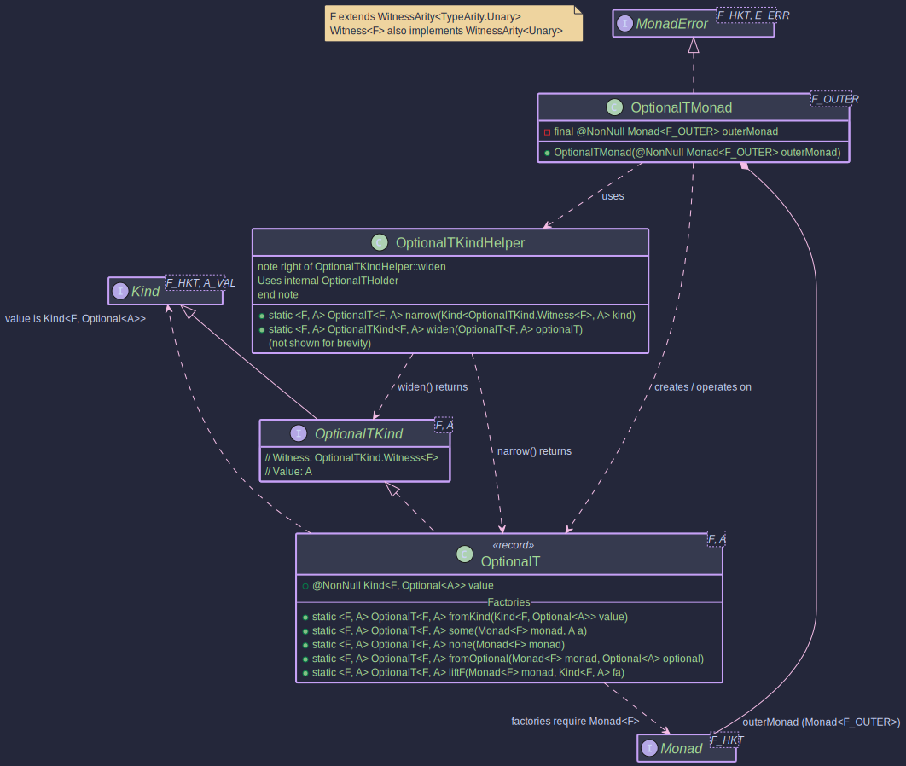
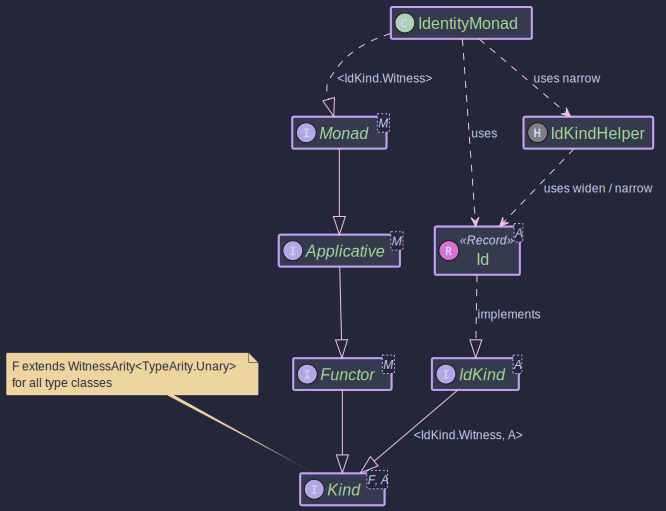
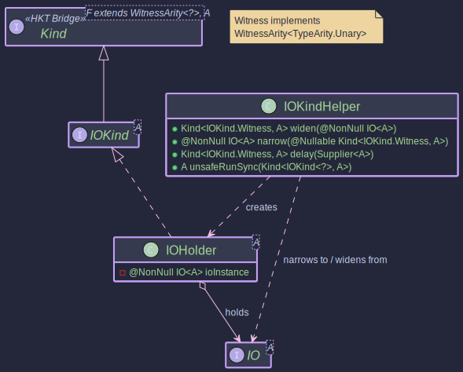
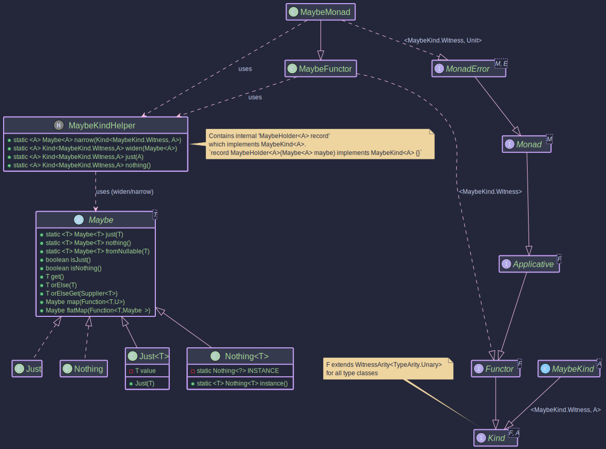
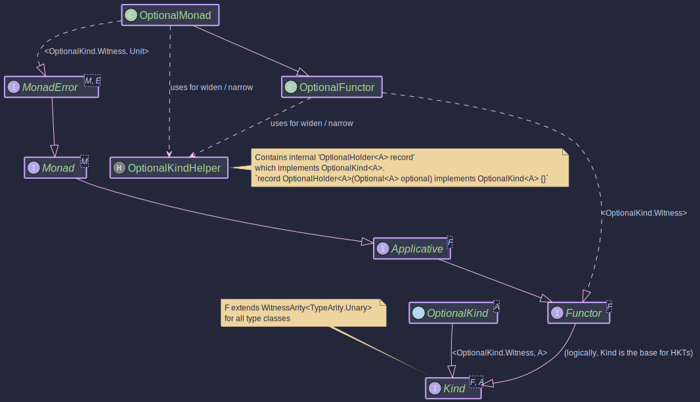
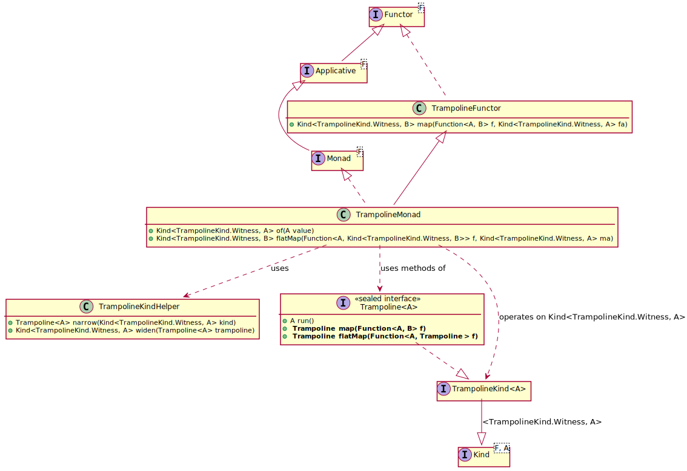
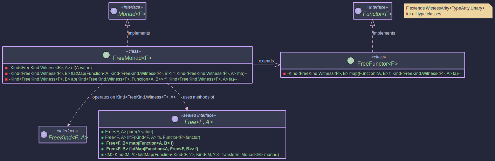
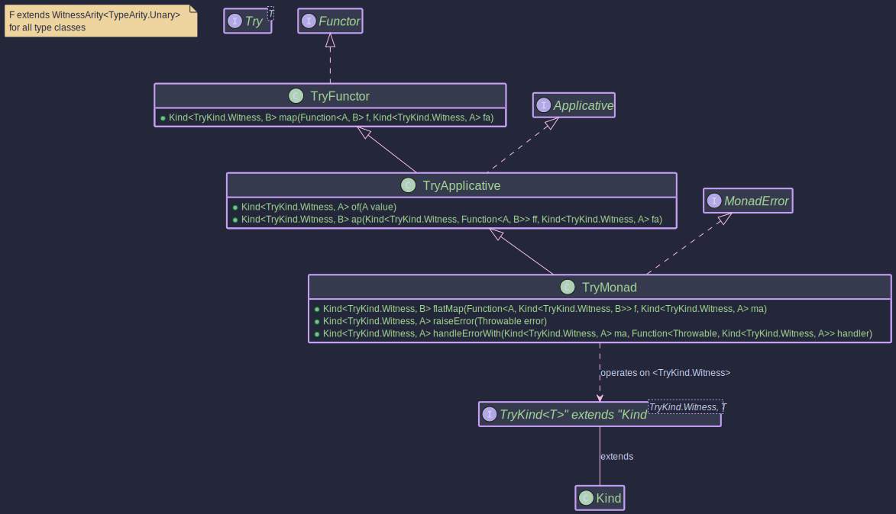

_ _ _ _ _ ___ _ _ ___
| | | (_) | | | | / (_) | | | | |_ |
| |_| |_ __ _| |__ ___ _ __ ______| |/ / _ _ __ __| | ___ __| |______ | |
| _ | |/ _` | '_ \ / _ \ '__|______| \| | '_ \ / _` |/ _ \/ _` |______| | |
| | | | | (_| | | | | __/ | | |\ \ | | | | (_| | __/ (_| | /\__/ /
\_| |_/_|\__, |_| |_|\___|_| \_| \_/_|_| |_|\__,_|\___|\__,_| \____/
__/ |
|___/
Unifying Composable Effects and Advanced Optics for Java


Higher-Kinded-J brings two capabilities that Java has long needed: composable error handling through the Effect Path API, and type-safe immutable data navigation through the Focus DSL. Each is powerful alone. Together, they form a unified approach to building robust applications, where effects and structure compose seamlessly.
No more pyramids of nested checks. No more scattered validation logic. Just clean, flat pipelines that read like the business logic they represent.
The Effect Path API
At the heart of Higher-Kinded-J lies the Effect Path API: a railway model for computation where success travels one track and failure travels another. Operations like map, via, and recover work identically across all effect types, whether you are handling optional values, typed errors, accumulated validations, or deferred side effects.
// Traditional Java: pyramid of nested checks
if (user != null) {
if (validator.validate(request).isValid()) {
try {
return paymentService.charge(user, amount);
} catch (PaymentException e) { ... }
}
}
// Effect Path API: flat, composable railway
return Path.maybe(findUser(userId))
.toEitherPath(() -> new UserNotFound(userId))
.via(user -> Path.either(validator.validate(request)))
.via(valid -> Path.tryOf(() -> paymentService.charge(user, amount)))
.map(OrderResult::success);
The nesting is gone. Each step follows the same pattern. Failures propagate automatically. The business logic reads top-to-bottom, not outside-in.
The Bridge: Effects Meet Optics
What makes Higher-Kinded-J unique is the seamless integration between Effect Paths and the Focus DSL. Where Effect Paths navigate computational effects, Focus Paths navigate data structures. Both use the same vocabulary. Both compose with via. And when you need to cross between them, the bridge API connects both worlds.
THE EFFECT-OPTICS BRIDGE
EFFECTS DOMAIN OPTICS DOMAIN
══════════════ ═════════════
EitherPath<E, User> ────┐ ┌──── FocusPath<User, Address>
TryPath<Config> ────┤ ├──── AffinePath<User, Email>
IOPath<Data> ────┤ ├──── TraversalPath<Team, Player>
ValidationPath<E, A> ────┘ └────
│ │
▼ ▼
┌─────────────────┐
│ .focus(path) │
│ .toEitherPath │
│ .toMaybePath │
└─────────────────┘
│
▼
UNIFIED COMPOSITION
════════════════════
userService.findById(id) // Effect: fetch
.focus(UserFocus.address()) // Optics: navigate
.via(validateAddress) // Effect: validate
.focus(AddressFocus.city()) // Optics: extract
.map(String::toUpperCase) // Transform
// Fetch user (effect) → navigate to address (optics) →
// extract postcode (optics) → validate (effect)
EitherPath<Error, String> result =
userService.findById(userId) // EitherPath<Error, User>
.focus(UserFocus.address()) // EitherPath<Error, Address>
.focus(AddressFocus.postcode()) // EitherPath<Error, String>
.via(code -> validatePostcode(code));
This is the unification that Java has been missing: effects and structure, composition and navigation, all speaking the same language.
Discover Focus-Effect Integration →
Two Foundations
The Effect Path API is built on two powerful functional programming pillars:
Higher-Kinded Types
Java lacks native support for abstracting over type constructors like Optional<A>, List<A>, or CompletableFuture<A>. Higher-Kinded-J simulates HKTs using defunctionalisation, unlocking:
- Polymorphic functions that work across optionality, asynchrony, and error handling
- Type classes like
Functor,Applicative, andMonadwith consistent interfaces - Monad transformers for composing effect stacks (
EitherT,StateT,ReaderT)
Advanced Optics
Higher-Kinded-J provides the most comprehensive optics implementation available for Java. Working with immutable records means verbose "copy-and-update" logic; the Optics library treats data access as first-class values:
- Complete optic hierarchy: Lenses, Prisms, Isos, Affines, Traversals, Folds, and Setters
- Automatic generation via annotation processor for Java records and sealed interfaces
- Filtered traversals for predicate-based focusing within collections
- Indexed optics for position-aware transformations
- Profunctor architecture enabling adaptation between different data shapes
- Focus DSL for type-safe, fluent path navigation
- Effect integration bridging optics with the Effect Path API
Why Higher-Kinded-J?
Higher-Kinded-J offers the most advanced optics implementation in the Java ecosystem, combined with a unified effect system that no other library provides.
| Feature | Higher-Kinded-J | Functional Java | Fugue Optics | Derive4J |
|---|---|---|---|---|
| Lens | ✓ | ✓ | ✓ | ✓^1^ |
| Prism | ✓ | ✓ | ✓ | ✓^1^ |
| Iso | ✓ | ✓ | ✓ | ✗ |
| Affine/Optional | ✓ | ✓ | ✓ | ✓^1^ |
| Traversal | ✓ | ✓ | ✓ | ✗ |
| Filtered Traversals | ✓ | ✗ | ✗ | ✗ |
| Indexed Optics | ✓ | ✗ | ✗ | ✗ |
| Code Generation | ✓ | ✗ | ✗ | ✓^1^ |
| Java Records Support | ✓ | ✗ | ✗ | ✗ |
| Sealed Interface Support | ✓ | ✗ | ✗ | ✗ |
| Effect Integration | ✓ | ✗ | ✗ | ✗ |
| Focus DSL | ✓ | ✗ | ✗ | ✗ |
| Profunctor Architecture | ✓ | ✓ | ✓ | ✗ |
| Fluent API | ✓ | ✗ | ✗ | ✗ |
| Modern Java (21+) | ✓ | ✗ | ✗ | ✗ |
^1^ Derive4J generates getters/setters but requires Functional Java for actual optic classes
Path Types at a Glance
| Path Type | When to Reach for It |
|---|---|
MaybePath<A> | Absence is normal, not an error |
EitherPath<E, A> | Errors carry typed, structured information |
TryPath<A> | Wrapping code that throws exceptions |
ValidationPath<E, A> | Collecting all errors, not just the first |
IOPath<A> | Side effects you want to defer and sequence |
TrampolinePath<A> | Stack-safe recursion |
CompletableFuturePath<A> | Async operations |
FreePath<F, A> / FreeApPath<F, A> | DSL building and interpretation |
Each Path wraps its underlying effect and provides map, via, run, recover, and integration with the Focus DSL.
Learn by Doing
The fastest way to master Higher-Kinded-J is through our interactive tutorial series. Eight journeys guide you through hands-on exercises with immediate test feedback.
| Journey | Focus | Duration | Exercises |
|---|---|---|---|
| Core: Foundations | HKT simulation, Functor, Applicative, Monad | ~38 min | 24 |
| Core: Error Handling | MonadError, concrete types, real-world patterns | ~30 min | 20 |
| Core: Advanced | Natural Transformations, Coyoneda, Free Applicative | ~26 min | 16 |
| Effect API | Effect paths, ForPath, Effect Contexts | ~65 min | 15 |
| Optics: Lens & Prism | Lens basics, Prism, Affine | ~40 min | 30 |
| Optics: Traversals | Traversals, composition, practical applications | ~40 min | 27 |
| Optics: Fluent & Free | Fluent API, Free Monad DSL | ~37 min | 22 |
| Optics: Focus DSL | Type-safe path navigation | ~22 min | 18 |
Perfect for developers who prefer learning by building. Get started →
Spring Boot Integration
Building enterprise applications with Spring Boot? The hkj-spring-boot-starter brings functional programming patterns seamlessly into your REST APIs, eliminating exception-based error handling whilst maintaining Spring's familiar conventions.
With Spring Boot Integration, you can:
- Return Functional Types from Controllers: Use
Either<Error, Data>,Validated<Errors, Data>, andEitherTas return types with automatic HTTP response conversion. - Eliminate Exception Handling Boilerplate: No more try-catch blocks or
@ExceptionHandlermethods; errors are explicit in your return types. - Compose Operations Naturally: Chain operations with
mapandflatMapwhilst preserving type safety and error information. - Accumulate Validation Errors: Use
Validatedto collect all validation errors in a single request, improving user experience. - Handle Async Operations: Use
EitherTto compose asynchronous operations with typed errors seamlessly. - Monitor in Production: Track Either success rates, Validated error distributions, and EitherT async performance with Spring Boot Actuator metrics.
- Secure Functionally: Integrate Spring Security with Either-based authentication and Validated-based authorisation logic.
- Zero Configuration Required: Auto-configuration handles everything; just add the dependency and start coding.
@RestController
@RequestMapping("/api/users")
public class UserController {
@GetMapping("/{id}")
public Either<DomainError, User> getUser(@PathVariable String id) {
return userService.findById(id);
// Right(user) → HTTP 200 with JSON
// Left(UserNotFoundError) → HTTP 404 with error details
}
@PostMapping
public Validated<List<ValidationError>, User> createUser(@RequestBody UserRequest request) {
return userService.validateAndCreate(request);
// Valid(user) → HTTP 200
// Invalid(errors) → HTTP 400 with ALL validation errors
}
}
Get Started with Spring Boot Integration →
Getting Started
note
Before diving in, ensure you have the following: Java Development Kit (JDK): Version 25 or later. The library makes use of features available in this version.
Add the following dependencies to your build.gradle.kts:
dependencies {
implementation("io.github.higher-kinded-j:hkj-core:LATEST_VERSION")
annotationProcessor("io.github.higher-kinded-j:hkj-processor:LATEST_VERSION")
annotationProcessor("io.github.higher-kinded-j:hkj-processor-plugins:LATEST_VERSION")
}
The annotation processor generates Focus paths and Effect paths for your records, enabling seamless integration between effects and data navigation.
For Spring Boot Integration:
dependencies {
implementation("io.github.higher-kinded-j:hkj-spring-boot-starter:LATEST_VERSION")
}
For SNAPSHOTS:
repositories {
mavenCentral()
maven {
url = uri("https://central.sonatype.com/repository/maven-snapshots/")
}
}
Documentation Guide
Start with the Effect Path API section below. It is the primary user-facing API of Higher-Kinded-J and provides everything most applications need.
Effect Path API (Start Here)
- Effect Path Overview: The railway model, creating paths, core operations
- Capability Interfaces: The powers that paths possess
- Path Types: When to use each path type
- Focus-Effect Integration: Bridging optics and effects
Optics Guides
- Introduction to Optics: What optics are and the problems they solve
- Practical Guide: Lenses: Nested immutable updates
- Practical Guide: Prisms: Working with sum types
- Focus DSL: Type-safe structural navigation
- Profunctor Optics: Adapting optics to different data shapes
Foundations (Reference)
These sections document the underlying machinery. Most users can start with Effect Paths directly.
- Higher-Kinded Types: The simulation and why it matters
- Type Classes: Functor, Monad, and other type classes
- Core Types: Either, Maybe, Try, and other effect types
- Order Example Walkthrough: A complete workflow with monad transformers
History
Higher-Kinded-J evolved from a simulation originally created for the blog post Higher Kinded Types with Java and Scala. Since then it has grown into a comprehensive functional programming toolkit, with the Effect Path API providing the unifying layer that connects HKTs, type classes, and optics into a coherent whole.
Effect Path API: Navigating Computational Territory
"A map is not the territory it represents, but, if correct, it has a similar structure to the territory, which accounts for its usefulness."
— Alfred Korzybski, Science and Sanity
Every Java application navigates territory that doesn't appear on any class diagram: the landscape of what might go wrong. A database connection that refuses to connect. A user ID that points to nobody. A file that was there yesterday. A validation rule that nobody told you about.
Traditional Java handles this territory with a patchwork of approaches: nulls here, exceptions there, Optional when someone remembered, raw booleans when they didn't. Each approach speaks a different dialect. None compose cleanly with the others.
The Effect Path API provides a unified map for this territory.
Rather than learning separate idioms for absence (Optional), failure (try-catch), typed errors (Either), and deferred effects (CompletableFuture), you work with Path types: thin, composable wrappers that share a common vocabulary. The same map, via, and recover operations work regardless of what kind of effect you're handling. The underlying complexity remains (it must), but the Path contains it.
If you've used the Focus DSL from the optics chapters, the patterns will feel familiar. Where FocusPath navigates through data structures, EffectPath navigates through computational effects. Both use via for composition. Both provide fluent, chainable operations. The territory differs; the cartography rhymes. And when you need to cross between territories—extracting structured data into effect pipelines, or drilling into effect results with optics—the bridge API connects both worlds seamlessly.
-
Effect Path Overview – The problem that Path types solve, the railway model of effect composition, and your first taste of the API.
-
Capability Interfaces – The hierarchy of powers that Path types possess: Composable, Combinable, Chainable, Recoverable, Effectful, and Accumulating. What each unlocks, and why the layering matters.
-
Path Types – The full arsenal:
MaybePath,EitherPath,TryPath,IOPath,ValidationPath,TrampolinePath,FreePath,FreeApPath, and more. When to reach for each, and what distinguishes them. -
Composition Patterns – Sequential chains, independent combination, parallel execution, debugging with
peek, and the art of mixing composition styles. -
Type Conversions – Moving between Path types as your needs change. The bridges between
MaybeandEither, betweenTryandValidation, and the rules that govern safe passage. -
Focus-Effect Integration – Bridging optics and effects. Converting FocusPath to EffectPath for validation pipelines, using
focus()to navigate within effect contexts, and patterns that combine both domains. -
Patterns and Recipes – Real-world patterns distilled from production code: validation pipelines, service orchestration, fallback chains, resilience with retry, and the pitfalls that await the unwary.
-
Advanced Effects – Reader, State, and Writer paths for environment access, stateful computation, and logging accumulation.
-
Advanced Topics – Stack-safe recursion, DSL building with Free structures, resource management, parallel execution, and resilience patterns.
Core Patterns:
- BasicPathExample.java - Creating and transforming paths
- ChainedComputationsExample.java - Fluent chaining patterns
- ErrorHandlingExample.java - Recovery and error handling
- ServiceLayerExample.java - Real-world service patterns
Advanced Effects:
- AdvancedEffectsExample.java - Reader, State, and Writer paths
- LazyPathExample.java - Deferred, memoised computations
- CompletableFuturePathExample.java - Async operations
- CollectionPathsExample.java - List and Stream effects
Stack-Safety, Resources, Parallelism & Resilience:
- TrampolinePathExample.java - Stack-safe recursion
- FreePathExample.java - DSL building and interpretation
- ResourceManagementExample.java - bracket, withResource, guarantee
- ParallelExecutionExample.java - parZipWith, parSequence, race
- ResilienceExample.java - RetryPolicy and backoff patterns
Chapter Contents
- Effect Path Overview - The problem, the model, the first steps
- Capability Interfaces - The interface hierarchy powering composition
- Path Types - Detailed coverage of each Path type
- Composition Patterns - Chaining, combining, parallel execution, and debugging
- Type Conversions - Moving between different Path types
- Focus-Effect Integration - Bridging optics and effects
- Patterns and Recipes - Real-world patterns, resilience, and hard-won wisdom
- Advanced Effects - Reader, State, and Writer patterns
- Advanced Topics - Stack-safety, DSLs, resources, parallelism, resilience
Next: Effect Path Overview
Effect Path Overview
"There is no real direction here, neither lines of power nor cooperation. Decisions are never really made; at best they manage to emerge, from a chaos of peeves, whims, hallucinations and all-round assholery."
— Thomas Pynchon, Gravity's Rainbow
Pynchon was describing wartime bureaucracy, but he might as well have been reading a poorly implemented service layer on a Monday morning.
- Why traditional Java error handling creates pyramids of nested chaos
- The railway model: effects as tracks, errors as switching points
- Creating Path types with factory methods
- Transforming values with
map, chaining withvia, extracting withrun - Debugging pipelines with
peek
The Pyramid of Doom
You've seen this shape before. You may have even written it, promising yourself to refactor it later:
public OrderResult processOrder(String userId, OrderRequest request) {
User user = userRepository.findById(userId);
if (user == null) {
return OrderResult.error("User not found");
}
try {
ValidationResult validation = validator.validate(request);
if (!validation.isValid()) {
return OrderResult.error(validation.getErrors().get(0));
}
InventoryCheck inventory = inventoryService.check(request.getItems());
if (!inventory.isAvailable()) {
return OrderResult.error("Items unavailable");
}
try {
PaymentResult payment = paymentService.charge(user, inventory.getTotal());
if (payment.isFailed()) {
return OrderResult.error(payment.getFailureReason());
}
return OrderResult.success(createOrder(user, request, payment));
} catch (PaymentException e) {
return OrderResult.error("Payment failed: " + e.getMessage());
}
} catch (ValidationException e) {
return OrderResult.error("Validation error: " + e.getMessage());
}
}
Five levels of nesting. Three different error-handling idioms. The actual business logic, create an order, buried at the bottom like a punchline nobody can find. And this is a simple example. I've witnessed far worse in Production.
The problem isn't any single technique. Null checks are sometimes appropriate. Exceptions have their place. The problem is that they don't compose. Each approach speaks its own dialect, demands its own syntax, follows its own rules for propagating failure. String enough of them together, and you get Pynchon's chaos: decisions that don't so much get made as reluctantly emerge.
The Railway Model
Functional programmers solved this problem decades ago with a simple model: the railway.
THE EFFECT RAILWAY
Success ═══●═══●═══●═══●═══●═══════════════════▶ Result
│ │ │ │ │
map via map via run
│ │
╳ │ error occurs, switch tracks
│ │
Failure ──────●───────┼───────────────────────▶ Error
│ │
mapError recover
│
╳ recovery, switch back
Your data travels along the success track. Operations like map and via
transform it as it goes. If something fails, the data switches to the
failure track and subsequent operations are skipped, no explicit checks
required, no nested conditionals. Recovery operations (recover, recoverWith)
can switch the data back to the success track if you have a sensible fallback.
This is what Path types implement. The railway is the model; Paths are the rolling stock.
The Same Logic, Flattened
Here's that order processing code rewritten with Effect Paths:
public EitherPath<OrderError, Order> processOrder(String userId, OrderRequest request) {
return Path.maybe(userRepository.findById(userId))
.toEitherPath(() -> new OrderError.UserNotFound(userId))
.via(user -> Path.either(validator.validate(request))
.mapError(OrderError.ValidationFailed::new))
.via(validated -> Path.either(inventoryService.check(request.getItems()))
.mapError(OrderError.InventoryError::new))
.via(inventory -> Path.tryOf(() -> paymentService.charge(user, inventory.getTotal()))
.toEitherPath(OrderError.PaymentFailed::new))
.via(payment -> Path.right(createOrder(user, request, payment)));
}
The nesting has gone. Each step follows the same pattern: transform or chain, handle errors consistently, let failures propagate automatically. The business logic reads top-to-bottom instead of outside-in.
This isn't magic. The underlying complexity hasn't vanished; you still need to handle the same failure cases. But the accidental complexity (the pyramids, the repeated null checks, the catch blocks that just wrap and rethrow) are gone. What remains is the essential shape of your logic.
Path Types at a Glance
| Path Type | Underlying Effect | When to Reach for It |
|---|---|---|
MaybePath<A> | Maybe<A> | Absence is normal, not an error |
EitherPath<E, A> | Either<E, A> | Errors carry typed information |
TryPath<A> | Try<A> | Wrapping code that throws exceptions |
IOPath<A> | IO<A> | Side effects you want to defer |
ValidationPath<E, A> | Validated<E, A> | Collecting all errors, not just the first |
IdPath<A> | Id<A> | The trivial case: always succeeds |
OptionalPath<A> | Optional<A> | Bridging to Java's standard library |
GenericPath<F, A> | Kind<F, A> | Custom monads, when nothing else fits |
Each Path type wraps its underlying effect and provides:
map(f)- Transform the success valuevia(f)- Chain to another Path (monadic bind)run()- Extract the underlying effect- Type-specific operations for recovery, error transformation, and more
Creating Paths
The Path class provides factory methods for all Path types. A small sampler:
// MaybePath: optional values
MaybePath<String> greeting = Path.just("Hello");
MaybePath<String> empty = Path.nothing();
MaybePath<User> user = Path.maybe(repository.findById(id));
// EitherPath: typed errors
EitherPath<String, Integer> success = Path.right(42);
EitherPath<String, Integer> failure = Path.left("Something went wrong");
// TryPath: exception handling
TryPath<Config> config = Path.tryOf(() -> loadConfig());
// IOPath: deferred side effects
IOPath<String> readFile = Path.io(() -> Files.readString(path));
Transforming with map
All Path types support map for transforming the success value:
MaybePath<String> greeting = Path.just("hello");
MaybePath<String> upper = greeting.map(String::toUpperCase);
// → Just("HELLO")
MaybePath<String> empty = Path.nothing();
MaybePath<String> stillEmpty = empty.map(String::toUpperCase);
// → Nothing (map doesn't run on empty paths)
The function inside map only executes if the Path is on the success track.
Failures pass through unchanged. No defensive checks required.
Chaining with via
The via method chains computations where each step depends on the previous
result:
EitherPath<Error, Invoice> invoice =
Path.either(findUser(userId))
.via(user -> Path.either(getCart(user)))
.via(cart -> Path.either(calculateTotal(cart)))
.via(total -> Path.either(createInvoice(total)));
Each via receives the success value and returns a new Path. If any step
fails, subsequent steps are skipped; the failure propagates to the end.
The name via mirrors the Focus DSL from the optics chapters. Where FocusPath
uses via to navigate through lenses, EffectPath uses via to navigate through
effects. Different territory, same verb.
Extracting Results
Eventually you need to leave the railway and extract a result:
// MaybePath
Maybe<String> maybe = path.run();
String value = path.getOrElse("default");
String value = path.getOrThrow(() -> new NoSuchElementException());
// EitherPath
Either<Error, User> either = path.run();
String result = either.fold(
error -> "Failed: " + error,
user -> "Found: " + user.name()
);
// IOPath: actually runs the effect
String content = ioPath.unsafeRun(); // may throw
Try<String> safe = ioPath.runSafe(); // captures exceptions
Debugging with peek
When a pipeline misbehaves, peek lets you observe values mid-flow without
disrupting the computation:
EitherPath<Error, User> result =
Path.either(validateInput(input))
.peek(valid -> log.debug("Input validated: {}", valid))
.via(valid -> Path.either(createUser(valid)))
.peek(user -> log.info("User created: {}", user.getId()));
For failure paths, peek only executes on success. Failures pass through
silently, which is usually what you want when debugging the happy path.
Structural Navigation with focus
Effect paths integrate with the Focus DSL, enabling structural navigation within effect contexts.
Where map transforms values and via chains effects, focus drills into nested structures
using optics.
FOCUS WITHIN EFFECTS
EitherPath<Error, User>
│
│ focus(namePath) ← optic navigation
▼
EitherPath<Error, String>
│
│ map(String::toUpperCase) ← value transformation
▼
EitherPath<Error, String>
│
│ via(validateName) ← effect chaining
▼
EitherPath<Error, ValidName>
Basic Usage
// Given a FocusPath from the optics domain
FocusPath<User, String> namePath = UserFocus.name();
// Apply within an effect
EitherPath<Error, User> userResult = fetchUser(userId);
EitherPath<Error, String> nameResult = userResult.focus(namePath);
The focus preserves the effect's semantics: if userResult is Left, nameResult is also Left.
Only Right values are navigated.
Handling Optional Focus
When using AffinePath (for optional fields), provide an error for the absent case:
// AffinePath for Optional<String> email
AffinePath<User, String> emailPath = UserFocus.email();
// Must provide error if email is absent
EitherPath<Error, String> emailResult =
userResult.focus(emailPath, new Error("Email not configured"));
| FocusPath | AffinePath |
|---|---|
| Always succeeds (value guaranteed) | May fail (value optional) |
focus(path) | focus(path, errorIfAbsent) |
Effect-Specific Behaviour
Each effect type handles absent focuses differently:
| Effect | FocusPath Result | AffinePath Absent Result |
|---|---|---|
MaybePath | Just(focused) | Nothing |
EitherPath | Right(focused) | Left(providedError) |
TryPath | Success(focused) | Failure(providedException) |
IOPath | IO(focused) | IO(throw exception) |
ValidationPath | Valid(focused) | Invalid(providedError) |
Chaining Focus with Effects
Focus composes naturally with other path operations:
// Complex pipeline: fetch → navigate → validate → transform
EitherPath<Error, String> result =
fetchUser(userId) // → EitherPath<Error, User>
.focus(UserFocus.address()) // → EitherPath<Error, Address>
.focus(AddressFocus.postcode(), noPostcodeError) // → EitherPath<Error, String>
.via(code -> validatePostcode(code)) // → EitherPath<Error, ValidPostcode>
.map(ValidPostcode::formatted); // → EitherPath<Error, String>
When to Use focus vs via
| Operation | Use When |
|---|---|
focus(path) | Extracting nested fields with optics |
via(f) | Chaining to another effect computation |
map(f) | Transforming the value without changing effect type |
// focus: structural navigation (optics)
path.focus(UserFocus.name())
// via: effect sequencing (monadic bind)
path.via(user -> validateUser(user))
// map: value transformation (functor)
path.map(name -> name.toUpperCase())
- Focus DSL - Complete guide to Focus paths and navigation
- Focus-Effect Integration - Complete bridging guide
- Capability Interfaces - Type class foundations
Summary
| Operation | What It Does | Railway Metaphor |
|---|---|---|
Path.just(x), Path.right(x), etc. | Create a Path on the success track | Board the train |
map(f) | Transform the value, stay on same track | Redecorate your carriage |
via(f) | Chain to a new Path | Transfer to connecting service |
recover(f) | Switch from failure to success track | Emergency rescue |
mapError(f) | Transform the error, stay on failure track | Relabel the delay announcement |
run() | Exit the railway, extract the result | Arrive at destination |
Continue to Capability Interfaces to understand the powers that make this possible.
- Scott Wlaschin: Railway Oriented Programming -- error handling in functional languages - video
- Scott Wlaschin: Railway Oriented Programming -- error handling in functional languages - slides)
Previous: Introduction Next: Capability Interfaces
Capability Interfaces
"Caress the detail, the divine detail."
— Vladimir Nabokov
Nabokov was speaking of prose, but the principle applies to API design. The
Effect Path API doesn't give every Path type every operation. Instead, it
builds a hierarchy of capabilities, interfaces that add specific powers
to types that genuinely possess them. A MaybePath can recover from absence;
an IdPath cannot fail in the first place, so recovery would be meaningless.
The type system prevents you from reaching for tools that don't apply.
This isn't bureaucratic fastidiousness. It's how the library stays honest about what each type can do.
- The capability interface hierarchy: Composable, Combinable, Chainable, Recoverable, Effectful, and Accumulating
- How each capability maps to functional programming concepts (Functor, Applicative, Monad, MonadError)
- Which operations each capability provides
- Which Path types implement which capabilities
- Why the layering matters for code that composes correctly
The Hierarchy
┌──────────────────────────────────────────────────────────────────────────────┐
│ CAPABILITY HIERARCHY │
├──────────────────────────────────────────────────────────────────────────────┤
│ │
│ ┌────────────────┐ │
│ │ Composable │ map(), peek() │
│ │ (Functor) │ "I can transform what's inside" │
│ └───────┬────────┘ │
│ │ │
│ ┌───────┴────────┐ │
│ │ Combinable │ zipWith(), map2() │
│ │ (Applicative) │ "I can merge independent work" │
│ └───────┬────────┘ │
│ │ │
│ ┌───────┴────────┐ │
│ │ Chainable │ via(), flatMap(), then() │
│ │ (Monad) │ "I can sequence dependent work" │
│ └───────┬────────┘ │
│ │ │
│ ┌───────────────────────────┼───────────────────────────┐ │
│ │ │ │ │
│ ┌────┴───────┐ ┌───────┴────────┐ ┌───────┴────────┐ │
│ │ Recoverable│ │ Effectful │ │ Accumulating │ │
│ │(MonadError)│ │ (IO) │ │ (Validated) │ │
│ │ │ │ │ │ │ │
│ │ "I can │ │ "I defer until │ │ "I collect all │ │
│ │ handle │ │ you're ready" │ │ the problems" │ │
│ │ failure" │ │ │ │ │ │
│ └────────────┘ └────────────────┘ └────────────────┘ │
│ │
└──────────────────────────────────────────────────────────────────────────────┘
Each level builds on the previous. A Chainable type can do everything a
Combinable can do, plus sequential chaining. The three leaf capabilities,
Recoverable, Effectful, and Accumulating, represent specialised powers that
only some types possess.
This isn't arbitrary taxonomy. It's how you avoid calling recover() on a
type that never fails, or unsafeRun() on a type that doesn't defer execution.
The compiler catches category errors before they become runtime surprises.
Composable (Functor)
What it means: You can transform the value inside without changing the surrounding structure.
The analogy: A translator. The message changes; the envelope stays sealed.
public interface Composable<A> {
<B> Composable<B> map(Function<? super A, ? extends B> f);
Composable<A> peek(Consumer<? super A> action);
}
Every Path type is Composable. It's the minimum viable capability.
MaybePath<String> name = Path.just("alice");
MaybePath<Integer> length = name.map(String::length); // Just(5)
MaybePath<String> empty = Path.nothing();
MaybePath<Integer> stillEmpty = empty.map(String::length); // Nothing
The function passed to map only runs if there's a value to transform.
Failures, absences, and pending effects pass through unchanged. This is why
you don't need defensive null checks inside map; the structure handles it.
The Functor Laws
All Path types satisfy these laws, which is what makes composition predictable:
- Identity:
path.map(x -> x)equalspath - Composition:
path.map(f).map(g)equalspath.map(f.andThen(g))
The first law says mapping with the identity function changes nothing. The second says you can fuse consecutive maps into one. These aren't aspirational guidelines; they're guarantees the implementation must honour.
Combinable (Applicative)
What it means: You can merge the results of independent computations.
The analogy: A meeting coordinator. Everyone works separately, then results are combined at the end. If someone fails to deliver, there's nothing to combine.
public interface Combinable<A> extends Composable<A> {
<B, C> Combinable<C> zipWith(
Combinable<B> other,
BiFunction<? super A, ? super B, ? extends C> f
);
<B, C, D> Combinable<D> zipWith3(
Combinable<B> second,
Combinable<C> third,
TriFunction<? super A, ? super B, ? super C, ? extends D> f
);
}
The key property is independence. Neither computation depends on the other's result:
// These validations don't affect each other
EitherPath<String, String> name = validateName(input.name());
EitherPath<String, String> email = validateEmail(input.email());
EitherPath<String, Integer> age = validateAge(input.age());
// Combine all three
EitherPath<String, User> user = name.zipWith3(email, age, User::new);
If all three succeed, User::new receives the three values. If any fails,
the first failure propagates. (For collecting all failures, you need
Accumulating; patience.)
zipWith vs via
A common source of confusion, worth addressing directly:
| Operation | Relationship Between Computations |
|---|---|
zipWith | Independent: neither needs the other's result |
via | Dependent: the second needs the first's result |
If you're validating a form, the fields are independent: use zipWith. If
you're fetching a user then loading their preferences, the second needs the
first: use via.
Chainable (Monad)
What it means: You can sequence computations where each step depends on the previous result.
The analogy: A relay race. Each runner receives the baton from the previous and decides what to do next. If someone drops the baton, the race ends there.
public interface Chainable<A> extends Combinable<A> {
<B> Chainable<B> via(Function<? super A, ? extends Chainable<B>> f);
<B> Chainable<B> flatMap(Function<? super A, ? extends Chainable<B>> f);
<B> Chainable<B> then(Supplier<? extends Chainable<B>> next);
}
The via method is the workhorse:
EitherPath<Error, Invoice> invoice =
Path.either(findUser(userId))
.via(user -> Path.either(getCart(user))) // needs user
.via(cart -> Path.either(calculateTotal(cart))) // needs cart
.via(total -> Path.either(createInvoice(total))); // needs total
Each step receives the previous result and returns a new Path. The railway metaphor applies: success continues forward, failure short-circuits to the end.
flatMap is an alias for via, the same operation with the traditional name. Use
whichever reads better in context.
then is for sequencing when you don't need the previous value:
IOPath<Unit> workflow =
Path.io(() -> log.info("Starting"))
.then(() -> Path.io(() -> initialise()))
.then(() -> Path.io(() -> process()));
The Monad Laws
- Left Identity:
Path.just(a).via(f)equalsf.apply(a) - Right Identity:
path.via(Path::just)equalspath - Associativity:
path.via(f).via(g)equalspath.via(x -> f.apply(x).via(g))
These ensure that chaining behaves predictably regardless of how you group operations. Refactoring a chain into helper methods won't change its behaviour.
Recoverable (MonadError)
What it means: You can handle failures and potentially continue on the success track.
The analogy: A safety net. If you fall, something catches you. You might climb back up, or you might stay down, but the fall doesn't have to be fatal.
public interface Recoverable<E, A> extends Chainable<A> {
Recoverable<E, A> recover(Function<? super E, ? extends A> handler);
Recoverable<E, A> recoverWith(
Function<? super E, ? extends Recoverable<E, A>> handler
);
Recoverable<E, A> orElse(Supplier<? extends Recoverable<E, A>> alternative);
<F> Recoverable<F, A> mapError(Function<? super E, ? extends F> f);
}
Different Path types have different notions of "error":
// MaybePath: "error" is absence
MaybePath<User> user = Path.maybe(findUser(id))
.orElse(() -> Path.just(User.guest()));
// EitherPath: "error" is a typed value
EitherPath<Error, Config> config = Path.either(loadConfig())
.recover(error -> Config.defaults())
.mapError(e -> new ConfigError("Load failed", e));
// TryPath: "error" is an exception
TryPath<Integer> parsed = Path.tryOf(() -> Integer.parseInt(input))
.recover(ex -> 0);
Recoverable is perhaps the most frequently used capability after Chainable,
which tells you something about the general state of affairs in software.
Effectful (IO)
What it means: The computation is deferred until you explicitly run it.
The analogy: A written contract. It describes what will happen, but nothing happens until someone signs and executes it.
public interface Effectful<A> extends Chainable<A> {
A unsafeRun();
Try<A> runSafe();
Effectful<A> handleError(Function<? super Throwable, ? extends A> handler);
Effectful<A> handleErrorWith(
Function<? super Throwable, ? extends Effectful<A>> handler
);
Effectful<A> ensuring(Runnable cleanup);
}
Only IOPath implements Effectful. All other Path types evaluate immediately
when you call map or via. With IOPath, nothing happens until you call
unsafeRun() or runSafe():
IOPath<String> readFile = Path.io(() -> {
System.out.println("Reading file..."); // Not printed yet
return Files.readString(path);
});
// Still nothing happens
IOPath<Integer> lineCount = readFile.map(s -> s.split("\n").length);
// NOW it executes
Integer count = lineCount.unsafeRun(); // "Reading file..." printed
The ensuring method guarantees cleanup runs regardless of success or failure:
IOPath<Data> withCleanup = Path.io(() -> acquireResource())
.via(resource -> Path.io(() -> useResource(resource)))
.ensuring(() -> releaseResource());
The name unsafeRun is deliberate. It's a warning: side effects are about to
happen, referential transparency ends here. Call it at the edge of your system,
not scattered throughout.
Accumulating (Validated)
What it means: You can combine independent computations while collecting all errors, not just the first.
The analogy: A code review. The reviewer notes every problem, then hands back the full list. They don't stop at the first issue and declare the review complete.
public interface Accumulating<E, A> extends Composable<A> {
<B, C> Accumulating<E, C> zipWithAccum(
Accumulating<E, B> other,
BiFunction<? super A, ? super B, ? extends C> combiner
);
Accumulating<E, A> andAlso(Accumulating<E, ?> other);
}
Only ValidationPath implements Accumulating. The key difference from
Combinable.zipWith:
| Operation | On Multiple Failures |
|---|---|
zipWith | Returns first error (short-circuits) |
zipWithAccum | Combines all errors using Semigroup |
ValidationPath<List<String>, String> name = validateName(input);
ValidationPath<List<String>, String> email = validateEmail(input);
ValidationPath<List<String>, Integer> age = validateAge(input);
// Accumulate ALL errors
ValidationPath<List<String>, User> user = name.zipWith3Accum(
email,
age,
User::new
);
// If name and email both fail: Invalid(["Name too short", "Invalid email"])
// Not just: Invalid(["Name too short"])
Error accumulation requires a Semigroup to define how errors combine. For
List<String>, errors concatenate. For String, they might join with ;.
The Semigroup is provided when creating the ValidationPath.
Use Accumulating for user-facing validation where showing all problems at
once is kinder than making users fix them one by one.
Which Capabilities Each Path Type Has
| Path Type | Composable | Combinable | Chainable | Recoverable | Effectful | Accumulating |
|---|---|---|---|---|---|---|
| MaybePath | ✓ | ✓ | ✓ | ✓ | · | · |
| EitherPath | ✓ | ✓ | ✓ | ✓ | · | · |
| TryPath | ✓ | ✓ | ✓ | ✓ | · | · |
| IOPath | ✓ | ✓ | ✓ | · | ✓ | · |
| ValidationPath | ✓ | ✓ | ✓ | ✓ | · | ✓ |
| IdPath | ✓ | ✓ | ✓ | · | · | · |
| OptionalPath | ✓ | ✓ | ✓ | ✓ | · | · |
| GenericPath | ✓ | ✓ | ✓ | * | · | · |
* GenericPath recovery depends on the underlying monad.
Note that IdPath lacks Recoverable; it cannot fail, so recovery is
meaningless. IOPath lacks Recoverable but has Effectful, which includes
its own error handling via handleError. These aren't omissions; they're
the type system being honest about what makes sense.
Summary
| Capability | What It Adds | Key Operations |
|---|---|---|
| Composable | Transform values | map, peek |
| Combinable | Merge independent work | zipWith, zipWith3 |
| Chainable | Sequence dependent work | via, flatMap, then |
| Recoverable | Handle failure | recover, recoverWith, mapError, orElse |
| Effectful | Defer execution | unsafeRun, runSafe, handleError, ensuring |
| Accumulating | Collect all errors | zipWithAccum, andAlso |
The hierarchy is designed so you can write code at the appropriate level of
abstraction. If map suffices, use map. Reach for via only when you need
sequencing. The capabilities tell you what's available; the types ensure you
don't ask for more than a Path can deliver.
Continue to Path Types for detailed coverage of each type.
- Functor - The type class behind Composable
- Applicative - The type class behind Combinable
- Monad - The type class behind Chainable
- MonadError - The type class behind Recoverable
- Validated - The type behind Accumulating
- Mateusz Kubuszok: The F-words: Functors and Friends - An accessible introduction to Functor, Applicative, and Monad with practical examples
Previous: Effect Path Overview Next: Path Types
Path Types
"It is not down on any map; true places never are."
— Herman Melville, Moby-Dick
Melville was speaking of Queequeg's island home, but the observation applies to software: the territory you're navigating (nullable returns, network failures, validation errors, deferred effects) isn't marked on any class diagram. You need to choose your vessel before setting sail.
This chapter covers each Path type in detail. But before cataloguing the fleet, a more pressing question: which one do you need?
- How to choose the right Path type for your situation
- Overview of all available Path types
- When each type is the right tool, and when it isn't
Choosing Your Path
Before diving into specifics, orient yourself by the problem you're solving:
"The value might not exist"
You're dealing with absence: a lookup that returns nothing, an optional configuration, a field that might be null.
Reach for MaybePath if absence is normal and expected, not an error
condition. Nobody needs to know why the value is missing.
Reach for OptionalPath if you're bridging to Java's Optional ecosystem
and want to stay close to the standard library.
"The operation might fail, and I need to know why"
Something can go wrong, and the error carries information: a validation message, a typed error code, a domain-specific failure.
Reach for EitherPath when you control the error type and want typed,
structured errors.
Reach for TryPath when you're wrapping code that throws exceptions and
want to stay in exception-land (with Throwable as the error type).
"I need ALL the errors, not just the first"
Multiple independent validations, and stopping at the first failure would be unkind to your users.
Reach for ValidationPath with zipWithAccum to accumulate every error.
"The operation has side effects I want to defer"
You're reading files, calling APIs, writing to databases, effects that shouldn't happen until you're ready.
Reach for IOPath to describe the effect without executing it. Nothing
runs until you call unsafeRun().
"I need stack-safe recursion"
Deep recursive algorithms that would blow the stack with direct recursion.
Reach for TrampolinePath for guaranteed stack safety regardless of depth.
"I want to build an interpretable DSL"
Separate description from execution, test with mock interpreters, or support multiple interpretation strategies.
Reach for FreePath for sequential DSLs or
FreeApPath for parallel/static-analysis-friendly DSLs.
"The operation always succeeds"
No failure case, no absence; you just want Path operations on a pure value.
Reach for IdPath when you need a trivial Path for generic code or testing.
"None of the above"
You have a custom monad, or you're writing highly generic code.
Reach for GenericPath as the escape hatch; it wraps any Kind<F, A>
with a Monad instance.
Quick Reference
| Path Type | Wraps | Error Type | Evaluation | Key Use Case |
|---|---|---|---|---|
MaybePath<A> | Maybe<A> | None (absence) | Immediate | Optional values |
EitherPath<E, A> | Either<E, A> | E (typed) | Immediate | Typed error handling |
TryPath<A> | Try<A> | Throwable | Immediate | Exception wrapping |
IOPath<A> | IO<A> | Throwable | Deferred | Side effects |
ValidationPath<E, A> | Validated<E, A> | E (accumulated) | Immediate | Form validation |
IdPath<A> | Id<A> | None (always succeeds) | Immediate | Pure values |
OptionalPath<A> | Optional<A> | None (absence) | Immediate | Java stdlib bridge |
GenericPath<F, A> | Kind<F, A> | Depends on monad | Depends | Custom monads |
TrampolinePath<A> | Trampoline<A> | None | Deferred | Stack-safe recursion |
FreePath<F, A> | Free<F, A> | None | Interpreted | DSL building |
FreeApPath<F, A> | FreeAp<F, A> | None | Interpreted | Applicative DSLs |
Path Types by Category
Value Containers (Immediate Evaluation)
These types wrap values and evaluate operations immediately:
- MaybePath - For values that might be absent
- OptionalPath - Bridge to Java's
Optional - IdPath - Always contains a value (identity)
Error Handling (Immediate Evaluation)
These types handle failures with different strategies:
- EitherPath - Typed errors, short-circuit on first failure
- TryPath - Exception-based errors
- ValidationPath - Accumulate all errors
Deferred Computation
These types describe computations without executing them:
- IOPath - Side effects, runs when you call
unsafeRun() - TrampolinePath - Stack-safe recursion
DSL Building
These types support building domain-specific languages:
- FreePath - Sequential, monadic DSLs
- FreeApPath - Parallel, applicative DSLs
Universal
- GenericPath - Works with any monad
Summary: Choosing Your Vessel
| Scenario | Path Type | Why |
|---|---|---|
| Value might be absent | MaybePath | Simple presence/absence |
| Operation might fail with typed error | EitherPath | Structured error handling |
| Wrapping exception-throwing code | TryPath | Exception → functional bridge |
| Side effects to defer | IOPath | Lazy, referential transparency |
| Need ALL validation errors | ValidationPath | Error accumulation |
| Bridging Java's Optional | OptionalPath | Stdlib compatibility |
| Always succeeds, pure value | IdPath | Generic/testing contexts |
| Custom monad | GenericPath | Universal escape hatch |
| Deep recursion without stack overflow | TrampolinePath | Stack-safe trampolining |
| DSL with sequential operations | FreePath | Interpretable programs |
| DSL with independent operations | FreeApPath | Static analysis, parallel |
The choice isn't always obvious, and that's fine. You can convert between
types as your needs evolve (MaybePath to EitherPath when you need error
messages, TryPath to EitherPath when you want typed errors). The
Type Conversions chapter covers these conversions in detail.
- Composition Patterns - Combining and sequencing Path operations
- Type Conversions - Converting between Path types
- Patterns and Recipes - Common usage patterns
Previous: Capability Interfaces Next: MaybePath
MaybePath
MaybePath<A> wraps Maybe<A> for computations that might produce nothing.
It's the simplest failure mode: either you have a value, or you don't.
- Creating MaybePath instances
- Core operations: map, via, zipWith
- Recovery and filtering
- Extraction patterns
- When to use (and when not to)
Creation
// From a value
MaybePath<String> greeting = Path.just("hello");
// Absence
MaybePath<String> nothing = Path.nothing();
// From existing Maybe
MaybePath<User> user = Path.maybe(repository.findById(id));
// From nullable (null becomes Nothing)
MaybePath<String> fromNullable = Path.fromNullable(possiblyNull);
Core Operations
MaybePath<String> name = Path.just("Alice");
// Transform
MaybePath<Integer> length = name.map(String::length); // Just(5)
// Chain
MaybePath<String> upper = name.via(s -> Path.just(s.toUpperCase()));
// Combine independent values
MaybePath<Integer> age = Path.just(25);
MaybePath<String> summary = name.zipWith(age, (n, a) -> n + " is " + a);
// Just("Alice is 25")
Recovery
MaybePath<User> user = Path.maybe(findUser(id))
.orElse(() -> Path.just(User.guest()));
// Filter (returns Nothing if predicate fails)
MaybePath<Integer> positive = Path.just(42).filter(n -> n > 0); // Just(42)
MaybePath<Integer> rejected = Path.just(-1).filter(n -> n > 0); // Nothing
Extraction
MaybePath<String> path = Path.just("hello");
Maybe<String> maybe = path.run();
String value = path.getOrElse("default");
String value = path.getOrThrow(() -> new NoSuchElementException());
When to Use
MaybePath is right when:
- Absence is normal, not exceptional
- You don't need to explain why the value is missing
- You're modelling optional data (configuration, nullable fields, lookups)
MaybePath is wrong when:
- Callers need to know the reason for failure → use EitherPath
- You're wrapping code that throws → use TryPath
- Maybe Monad - Underlying type for MaybePath
- OptionalPath - Similar, but wraps Java's
Optional
Previous: Path Types Overview Next: EitherPath
EitherPath
EitherPath<E, A> wraps Either<E, A> for computations with typed errors.
The left side carries failure; the right side carries success. (Right is
right, as the mnemonic goes.)
- Creating EitherPath instances
- Core operations and error handling
- Bifunctor operations
- Extraction patterns
- When to use (and when not to)
Creation
// Success
EitherPath<Error, Integer> success = Path.right(42);
// Failure
EitherPath<Error, Integer> failure = Path.left(new ValidationError("invalid"));
// From existing Either
EitherPath<Error, User> user = Path.either(validateUser(input));
Core Operations
EitherPath<String, Integer> number = Path.right(42);
// Transform success
EitherPath<String, String> formatted = number.map(n -> "Value: " + n);
// Chain
EitherPath<String, Integer> doubled = number.via(n ->
n > 0 ? Path.right(n * 2) : Path.left("Must be positive"));
// Combine independent values
EitherPath<String, String> name = Path.right("Alice");
EitherPath<String, Integer> age = Path.right(25);
EitherPath<String, Person> person = name.zipWith(age, Person::new);
Error Handling
EitherPath<String, Config> config = Path.either(loadConfig())
// Provide fallback value
.recover(error -> Config.defaults())
// Transform error type
.mapError(e -> new ConfigError(e))
// Recover with another computation
.recoverWith(error -> Path.either(loadBackupConfig()))
// Provide alternative path
.orElse(() -> Path.right(Config.defaults()));
Bifunctor Operations
Transform both sides simultaneously:
EitherPath<String, Integer> original = Path.right(42);
EitherPath<Integer, String> transformed = original.bimap(
String::length, // Transform error
n -> "Value: " + n // Transform success
);
Extraction
EitherPath<String, Integer> path = Path.right(42);
Either<String, Integer> either = path.run();
// Pattern match
String result = either.fold(
error -> "Error: " + error,
value -> "Value: " + value
);
// Direct access (throws if wrong side)
if (either.isRight()) {
Integer value = either.getRight();
}
When to Use
EitherPath is right when:
- Errors carry meaningful, typed information
- Different errors need different handling
- You're building validation pipelines (with short-circuit semantics)
- You want to transform errors as they propagate
EitherPath is wrong when:
- You need to collect all errors → use ValidationPath
- Absence isn't really an error → use MaybePath
- Either Monad - Underlying type for EitherPath
- ValidationPath - For accumulating errors
Previous: MaybePath Next: TryPath
TryPath
TryPath<A> wraps Try<A> for computations that might throw exceptions.
It bridges the gap between Java's exception-based world and functional
composition.
- Creating TryPath instances
- Core operations
- Exception-based error handling
- Extraction patterns
- When to use (and when not to)
Creation
// Successful value
TryPath<Integer> success = Path.success(42);
// Failed value
TryPath<Integer> failure = Path.failure(new RuntimeException("oops"));
// From computation that may throw
TryPath<Integer> parsed = Path.tryOf(() -> Integer.parseInt(input));
// From existing Try
TryPath<Config> config = Path.tryPath(loadConfigTry());
Core Operations
TryPath<String> content = Path.tryOf(() -> Files.readString(path));
// Transform
TryPath<Integer> lineCount = content.map(s -> s.split("\n").length);
// Chain
TryPath<Data> data = content.via(c -> Path.tryOf(() -> parseJson(c)));
// Combine
TryPath<String> file1 = Path.tryOf(() -> readFile("a.txt"));
TryPath<String> file2 = Path.tryOf(() -> readFile("b.txt"));
TryPath<String> combined = file1.zipWith(file2, (a, b) -> a + "\n" + b);
Error Handling
TryPath<Integer> parsed = Path.tryOf(() -> Integer.parseInt(input))
// Recover with value
.recover(ex -> 0)
// Recover based on exception type
.recoverWith(ex -> {
if (ex instanceof NumberFormatException) {
return Path.success(-1);
}
return Path.failure(ex);
})
// Alternative
.orElse(() -> Path.success(defaultValue));
Extraction
TryPath<Integer> path = Path.success(42);
Try<Integer> tryValue = path.run();
Integer value = path.getOrElse(-1);
if (tryValue.isSuccess()) {
System.out.println("Value: " + tryValue.get());
} else {
System.out.println("Error: " + tryValue.getCause().getMessage());
}
When to Use
TryPath is right when:
- You're wrapping APIs that throw exceptions
- The specific exception type matters for recovery
- You want exception-safe composition without try-catch blocks
- Interoperating with legacy code
TryPath is wrong when:
- You want typed errors (not just
Throwable) → use EitherPath - The code doesn't throw → use MaybePath or EitherPath
- Try Monad - Underlying type for TryPath
- EitherPath - For typed errors
Previous: EitherPath Next: IOPath
IOPath
IOPath<A> wraps IO<A> for deferred side-effectful computations.
Unlike other Path types, nothing happens until you explicitly run it.
"Buy the ticket, take the ride... and if it occasionally gets a little heavier than what you had in mind, well... maybe chalk it up to forced consciousness expansion."
— Hunter S. Thompson, Fear and Loathing in Las Vegas
Thompson's advice applies here. When you call unsafeRun(), you've bought
the ticket. The effects will happen. There's no going back. Until that moment,
an IOPath is just a description—a plan you haven't committed to yet.
- Creating IOPath instances
- Deferred execution model
- Error handling patterns
- Resource management (bracket, withResource)
- Parallel execution
- When to use (and when not to)
Creation
// Pure value (no effects)
IOPath<Integer> pure = Path.ioPure(42);
// Deferred effect
IOPath<String> readFile = Path.io(() -> Files.readString(Paths.get("data.txt")));
// From existing IO
IOPath<Connection> conn = Path.ioPath(databaseIO);
Core Operations (All Deferred)
IOPath<String> content = Path.io(() -> fetchFromApi(url));
// Transform (deferred)
IOPath<Data> data = content.map(this::parse);
// Chain (deferred)
IOPath<Result> result = content.via(c -> Path.io(() -> process(c)));
// Combine (deferred)
IOPath<String> header = Path.io(() -> readHeader());
IOPath<String> body = Path.io(() -> readBody());
IOPath<String> combined = header.zipWith(body, (h, b) -> h + "\n" + b);
// Sequence (discarding first result)
IOPath<Unit> setup = Path.ioRunnable(() -> log("Starting..."));
IOPath<Data> withSetup = setup.then(() -> Path.io(() -> loadData()));
Execution: Buying the Ticket
IOPath<String> io = Path.io(() -> fetchData());
// Execute (may throw)
String result = io.unsafeRun();
// Execute safely (captures exceptions)
Try<String> result = io.runSafe();
// Convert to TryPath (executes immediately)
TryPath<String> tryPath = io.toTryPath();
The naming is deliberate. unsafeRun warns you: referential transparency
ends here. Side effects are about to happen. Call it at the boundaries of
your system (in your main method, your HTTP handler, your message consumer),
not scattered throughout your business logic.
Error Handling
IOPath<Config> config = Path.io(() -> loadConfig())
// Handle any exception
.handleError(ex -> Config.defaults())
// Handle with another effect
.handleErrorWith(ex -> Path.io(() -> loadBackupConfig()))
// Ensure cleanup runs regardless of outcome
.guarantee(() -> releaseResources());
Resource Management
bracket
The bracket pattern ensures resources are properly released:
IOPath<String> content = IOPath.bracket(
() -> Files.newInputStream(path), // acquire
in -> new String(in.readAllBytes()), // use
in -> in.close() // release (always runs)
);
withResource
For AutoCloseable resources:
IOPath<String> content = IOPath.withResource(
() -> Files.newBufferedReader(path),
reader -> reader.lines().collect(Collectors.joining("\n"))
);
// reader.close() is called automatically
Parallel Execution
IOPath<String> fetchA = Path.io(() -> callServiceA());
IOPath<String> fetchB = Path.io(() -> callServiceB());
// Run in parallel, combine results
IOPath<String> combined = fetchA.parZipWith(fetchB, (a, b) -> a + b);
// Race: first to complete wins
IOPath<String> fastest = fetchA.race(fetchB);
// Run many in parallel
List<IOPath<String>> ios = List.of(io1, io2, io3);
IOPath<List<String>> all = PathOps.parSequenceIO(ios);
Retry with Resilience
IOPath<String> resilient = Path.io(() -> callFlakyService())
.retry(5, Duration.ofMillis(100)) // exponential backoff
.withRetry(RetryPolicy.fixed(3, Duration.ofMillis(50)));
See Patterns and Recipes for more resilience patterns.
Lazy Evaluation in Action
IOPath<String> effect = Path.io(() -> {
System.out.println("Side effect!"); // Not printed yet
return "result";
});
// Still nothing
IOPath<Integer> transformed = effect.map(String::length);
// NOW it runs
Integer length = transformed.unsafeRun(); // Prints "Side effect!"
When to Use
IOPath is right when:
- You're performing side effects (file I/O, network, database)
- You want lazy evaluation: describe now, execute later
- You want referential transparency throughout your core logic
- You need to compose complex effect pipelines before committing
IOPath is wrong when:
- You want immediate execution → use TryPath
- There are no side effects → use EitherPath or MaybePath
- IO Monad - Underlying type for IOPath
- Composition Patterns - More composition techniques
- Patterns and Recipes - Resilience and resource patterns
- Advanced Topics - Deep dive on IOPath features
Previous: TryPath Next: ValidationPath
ValidationPath
ValidationPath<E, A> wraps Validated<E, A> for computations that
accumulate errors instead of short-circuiting on the first failure.
- Creating ValidationPath instances
- Error accumulation with zipWithAccum
- Semigroup for combining errors
- Extraction patterns
- When to use (and when not to)
Creation
// Valid value
ValidationPath<List<String>, Integer> valid =
Path.valid(42, Semigroups.list());
// Invalid value with errors
ValidationPath<List<String>, Integer> invalid =
Path.invalid(List.of("Error 1", "Error 2"), Semigroups.list());
// From existing Validated
ValidationPath<String, User> user =
Path.validation(validatedUser, Semigroups.first());
The Semigroup<E> parameter defines how errors combine when multiple
validations fail. Common choices:
Semigroups.list()- concatenate error listsSemigroups.string("; ")- join strings with separator
Core Operations
ValidationPath<List<String>, String> name =
Path.valid("Alice", Semigroups.list());
// Transform (same as other paths)
ValidationPath<List<String>, Integer> length = name.map(String::length);
// Chain with via (short-circuits on first error)
ValidationPath<List<String>, String> upper =
name.via(s -> Path.valid(s.toUpperCase(), Semigroups.list()));
Error Accumulation: The Point of It All
The key operation is zipWithAccum, which collects all errors:
ValidationPath<List<String>, String> nameV = validateName(input.name());
ValidationPath<List<String>, String> emailV = validateEmail(input.email());
ValidationPath<List<String>, Integer> ageV = validateAge(input.age());
// Accumulate ALL errors (does not short-circuit)
ValidationPath<List<String>, User> userV = nameV.zipWith3Accum(
emailV,
ageV,
User::new
);
// If name and email both fail:
// Invalid(["Name too short", "Invalid email format"])
// NOT just Invalid(["Name too short"])
Compare with zipWith, which short-circuits:
// Short-circuits: only first error returned
ValidationPath<List<String>, User> shortCircuit =
nameV.zipWith(emailV, ageV, User::new);
Combining Validations
// andAlso runs both, accumulating errors, keeping first value if both valid
ValidationPath<List<String>, String> thorough =
checkNotEmpty(name)
.andAlso(checkMaxLength(name, 100))
.andAlso(checkNoSpecialChars(name));
// All three checks run; all errors collected
Extraction
ValidationPath<List<String>, User> path = validateUser(input);
Validated<List<String>, User> validated = path.run();
String result = validated.fold(
errors -> "Errors: " + String.join(", ", errors),
user -> "Valid user: " + user.name()
);
When to Use
ValidationPath is right when:
- You want users to see all validation errors at once
- Multiple independent checks must all run
- Form validation, batch processing, comprehensive error reports
- Being kind to users matters (it does)
ValidationPath is wrong when:
- You only need the first error → use EitherPath
- Subsequent validations depend on earlier ones passing → use EitherPath with
via
- Validated - Underlying type for ValidationPath
- EitherPath - For short-circuit validation
- Semigroup and Monoid - How errors combine
IdPath
IdPath<A> wraps Id<A>, the identity monad. It always contains a value
and never fails. This sounds useless until you need it.
- Creating IdPath instances
- Core operations
- Use cases for the identity path
- When to use (and when not to)
Creation
IdPath<String> id = Path.id("hello");
IdPath<User> fromId = Path.idPath(idUser);
Core Operations
IdPath<String> name = Path.id("Alice");
IdPath<Integer> length = name.map(String::length); // Id(5)
IdPath<String> upper = name.via(s -> Path.id(s.toUpperCase()));
IdPath<String> combined = name.zipWith(Path.id(25), (n, a) -> n + " is " + a);
Extraction
IdPath<String> path = Path.id("hello");
String value = path.run().value(); // "hello"
String value = path.get(); // "hello"
When to Use
IdPath is right when:
- You're writing generic code that works over any Path type
- Testing monadic code with known, predictable values
- You need a "no-op" Path that always succeeds
- Satisfying a type parameter that demands a Path
IdPath is wrong when:
- Failure is possible → you need one of the other types
// Works with any Path type
<P extends Path<P, A>, A> P process(P path) {
return path.map(this::transform);
}
// Test with IdPath (no failures to worry about)
IdPath<String> testPath = Path.id("test");
IdPath<String> result = process(testPath);
- Identity - Underlying type for IdPath
Previous: ValidationPath Next: OptionalPath
OptionalPath
OptionalPath<A> wraps Java's java.util.Optional<A>, bridging the
standard library and the Path API.
- Creating OptionalPath instances
- Core operations
- Conversion to other types
- When to use (and when not to)
Creation
OptionalPath<String> present = Path.present("hello");
OptionalPath<String> absent = Path.absent();
OptionalPath<User> user = Path.optional(repository.findById(id));
Core Operations
OptionalPath<String> name = Path.present("Alice");
OptionalPath<Integer> length = name.map(String::length);
OptionalPath<String> upper = name.via(s -> Path.present(s.toUpperCase()));
Extraction and Conversion
OptionalPath<String> path = Path.present("hello");
Optional<String> optional = path.run();
String value = path.getOrElse("default");
boolean hasValue = path.isPresent();
// Convert to MaybePath for richer operations
MaybePath<String> maybe = path.toMaybePath();
When to Use
OptionalPath is right when:
- You're integrating with Java APIs that return
Optional - You prefer staying close to standard library semantics
- Bridging between Higher-Kinded-J and existing codebases
OptionalPath is wrong when:
- You're not constrained by
Optional→ MaybePath is slightly richer
- Optional Monad - Underlying type for OptionalPath
- MaybePath - Alternative for optional values
Previous: IdPath Next: GenericPath
GenericPath
GenericPath<F, A> is the escape hatch. It wraps any Kind<F, A> with
a Monad instance, letting you use Path operations on custom types.
- Creating GenericPath instances
- Working with custom monads
- Extraction patterns
- When to use (and when not to)
Creation
Monad<ListKind.Witness> listMonad = ListMonad.INSTANCE;
Kind<ListKind.Witness, Integer> listKind =
ListKindHelper.LIST.widen(List.of(1, 2, 3));
GenericPath<ListKind.Witness, Integer> listPath =
Path.generic(listKind, listMonad);
Core Operations
GenericPath<ListKind.Witness, Integer> numbers = Path.generic(listKind, listMonad);
GenericPath<ListKind.Witness, String> strings = numbers.map(n -> "n" + n);
GenericPath<ListKind.Witness, Integer> doubled = numbers.via(n ->
Path.generic(ListKindHelper.LIST.widen(List.of(n, n * 2)), listMonad));
Extraction
Kind<ListKind.Witness, Integer> kind = path.runKind();
List<Integer> list = ListKindHelper.LIST.narrow(kind);
When to Use
GenericPath is right when:
- You have a custom monad not covered by specific Path types
- Writing highly generic code across multiple monad types
- Experimenting with new effect types
GenericPath demonstrates the power of higher-kinded types in Java: write
your algorithm once, and it works with Maybe, Either, List, IO, or
any custom monad. This is the same abstraction power that makes libraries
like Cats and ZIO flexible in Scala, now available in Java.
- HKT Introduction - Higher-kinded type basics
- Extending - Creating custom types
Previous: OptionalPath Next: TrampolinePath
TrampolinePath
TrampolinePath<A> wraps Trampoline<A> for stack-safe recursion. Deep
recursive algorithms that would blow the stack with direct recursion become
safe with trampolining.
- Creating TrampolinePath instances
- Stack-safe recursive patterns
- When to use (and when not to)
Creation
// Immediate value (already computed)
TrampolinePath<Integer> done = Path.trampolineDone(42);
// Suspended computation (thunked)
TrampolinePath<Integer> suspended = Path.trampolineSuspend(() -> 42);
// From existing Trampoline
TrampolinePath<Integer> path = Path.trampoline(trampoline);
Core Operations
TrampolinePath<Integer> start = Path.trampolineDone(10);
TrampolinePath<Integer> doubled = start.map(n -> n * 2); // 20
TrampolinePath<Integer> chained = start.via(n ->
Path.trampolineDone(n + 5)); // 15
Stack-Safe Recursion
The real power is in recursive algorithms. Here's factorial without stack overflow:
TrampolinePath<Long> factorial(long n) {
return factorialHelper(n, 1L);
}
TrampolinePath<Long> factorialHelper(long n, long acc) {
if (n <= 1) {
return Path.trampolineDone(acc);
}
// Suspend to avoid stack growth
return Path.trampolineSuspend(() ->
factorialHelper(n - 1, n * acc).run());
}
// Compute factorial of 10000 - no stack overflow!
Long result = factorial(10000L).run().run();
Compare with naive recursion:
// This WILL overflow the stack for large n
long naiveFactorial(long n) {
if (n <= 1) return 1;
return n * naiveFactorial(n - 1); // Stack frame per call!
}
Mutual Recursion
Trampolining also handles mutual recursion:
TrampolinePath<Boolean> isEven(int n) {
if (n == 0) return Path.trampolineDone(true);
return Path.trampolineSuspend(() -> isOdd(n - 1).run());
}
TrampolinePath<Boolean> isOdd(int n) {
if (n == 0) return Path.trampolineDone(false);
return Path.trampolineSuspend(() -> isEven(n - 1).run());
}
// Works for any depth
Boolean result = isEven(1_000_000).run().run(); // true
Extraction
TrampolinePath<Integer> path = Path.trampolineDone(42);
// Get the Trampoline
Trampoline<Integer> trampoline = path.run();
// Execute (runs the trampoline to completion)
Integer value = trampoline.run();
// Or chain: path.run().run()
When to Use
TrampolinePath is right when:
- You have deep recursive algorithms that could overflow the stack
- Tree traversal, graph algorithms, or mathematical computations
- Mutual recursion patterns
- You need guaranteed stack safety regardless of input size
TrampolinePath is wrong when:
- Recursion depth is bounded and small (regular recursion is simpler)
- You're not doing recursion at all
- Performance is critical and you can use iteration instead
Trampolining converts recursive calls into a loop. Instead of each recursive call adding a stack frame, it returns a "continue" instruction. The trampoline runner loops until it gets a "done" instruction. Result: O(1) stack space regardless of recursion depth.
- Trampoline - Underlying type for TrampolinePath
Previous: GenericPath Next: FreePath
FreePath
FreePath<F, A> wraps Free<F, A> for building domain-specific languages
(DSLs). It separates the description of a program from its execution,
enabling multiple interpreters for the same program.
- Creating FreePath instances
- Building DSL operations
- Writing interpreters
- When to use (and when not to)
The Idea
Free monads let you:
- Describe operations as data structures
- Compose descriptions into programs
- Interpret programs with different strategies
This enables testing with mock interpreters, swapping implementations, and reasoning about programs as data.
Defining a DSL
First, define your operations as a sum type (algebra):
// Console operations
sealed interface ConsoleOp<A> permits Ask, Tell {}
record Ask<A>(String prompt, Function<String, A> next) implements ConsoleOp<A> {}
record Tell<A>(String message, A next) implements ConsoleOp<A> {}
Creating Programs
Lift operations into FreePath:
FreePath<ConsoleOp.Witness, String> ask(String prompt) {
return Path.freeLiftF(new Ask<>(prompt, Function.identity()));
}
FreePath<ConsoleOp.Witness, Void> tell(String message) {
return Path.freeLiftF(new Tell<>(message, null));
}
Compose into programs:
FreePath<ConsoleOp.Witness, String> greetUser =
ask("What is your name?").via(name ->
tell("Hello, " + name + "!").map(v -> name));
Core Operations
// Pure value (no operations)
FreePath<ConsoleOp.Witness, Integer> pure = Path.freePure(42);
// Transform results
FreePath<ConsoleOp.Witness, String> asString = pure.map(n -> "Value: " + n);
// Chain operations
FreePath<ConsoleOp.Witness, Integer> chained = pure.via(n ->
ask("Continue?").map(s -> n + s.length()));
Interpreters
An interpreter is a natural transformation from your algebra to a target monad:
// Real console interpreter
NaturalTransformation<ConsoleOp.Witness, IO.Witness> realInterpreter =
new NaturalTransformation<>() {
public <A> Kind<IO.Witness, A> apply(Kind<ConsoleOp.Witness, A> fa) {
ConsoleOp<A> op = ConsoleOpHelper.narrow(fa);
return switch (op) {
case Ask<A> a -> IO.of(() -> {
System.out.print(a.prompt() + " ");
return a.next().apply(scanner.nextLine());
});
case Tell<A> t -> IO.of(() -> {
System.out.println(t.message());
return t.next();
});
};
}
};
// Test interpreter (uses predefined responses)
NaturalTransformation<ConsoleOp.Witness, State.Witness> testInterpreter = ...;
Running Programs
FreePath<ConsoleOp.Witness, String> program = greetUser;
// Get the Free structure
Free<ConsoleOp.Witness, String> free = program.run();
// Interpret to IO
Kind<IO.Witness, String> io = free.foldMap(realInterpreter, ioMonad);
// Execute
String result = IOKindHelper.narrow(io).unsafeRunSync();
When to Use
FreePath is right when:
- You want to separate description from execution
- Multiple interpreters for the same program (prod/test/mock)
- Building embedded DSLs for domain operations
- You need to inspect or transform programs before running them
FreePath is wrong when:
- Simple direct effects suffice → use IOPath
- You don't need multiple interpreters
- Performance is critical (free monads have overhead)
- Operations can be parallelized → consider FreeApPath
// Production: real database
NaturalTransformation<DbOp.Witness, IO.Witness> prodInterpreter = ...;
// Test: in-memory map
NaturalTransformation<DbOp.Witness, State.Witness> testInterpreter = ...;
// Same program, different interpreters
FreePath<DbOp.Witness, User> program = findUser(userId);
Kind<IO.Witness, User> prod = program.run().foldMap(prodInterpreter, ioMonad);
Kind<State.Witness, User> test = program.run().foldMap(testInterpreter, stateMonad);
- Free Monad - Underlying type for FreePath
- FreeApPath - Applicative variant for parallel operations
Previous: TrampolinePath Next: FreeApPath
FreeApPath
FreeApPath<F, A> wraps FreeAp<F, A> for building applicative DSLs.
Unlike FreePath, operations in FreeApPath can be analyzed and potentially
executed in parallel because they don't depend on each other's results.
- Creating FreeApPath instances
- Difference from FreePath
- Static analysis of programs
- Parallel execution
- When to use (and when not to)
The Key Difference
FreePath (monadic): Each operation can depend on previous results.
FreeApPath (applicative): Operations are independent; results combine at the end.
// FreePath: second operation depends on first
FreePath<F, String> monadic = getUser(id).via(user ->
getOrders(user.id())); // Sequential: must wait for user
// FreeApPath: operations are independent
FreeApPath<F, Summary> applicative =
getUser(id).zipWith(getOrders(id), Summary::new); // Parallel-safe!
Creation
// Pure value
FreeApPath<ConfigOp.Witness, String> pure = Path.freeApPure("default");
// Lift an operation
FreeApPath<ConfigOp.Witness, String> dbUrl =
Path.freeApLift(new GetConfig("database.url"));
Core Operations
FreeApPath<ConfigOp.Witness, String> host = getConfig("host");
FreeApPath<ConfigOp.Witness, Integer> port = getConfig("port").map(Integer::parseInt);
// Combine independent operations
FreeApPath<ConfigOp.Witness, String> url =
host.zipWith(port, (h, p) -> "http://" + h + ":" + p);
// Map over results
FreeApPath<ConfigOp.Witness, String> upper = host.map(String::toUpperCase);
Static Analysis
Because operations are independent, you can analyze programs before running them:
// Collect all config keys that will be requested
Set<String> getRequestedKeys(FreeAp<ConfigOp.Witness, ?> program) {
return program.analyze(op -> {
GetConfig config = ConfigOpHelper.narrow(op);
return Set.of(config.key());
}, Monoids.set());
}
FreeApPath<ConfigOp.Witness, DbConfig> program =
getConfig("db.host")
.zipWith(getConfig("db.port"), DbConfig::new);
Set<String> keys = getRequestedKeys(program.run());
// Set.of("db.host", "db.port")
This enables:
- Validation before execution
- Optimization (batching, caching)
- Documentation generation
- Dependency analysis
Parallel Execution
Interpreters can exploit independence for parallelism:
// Sequential interpreter
NaturalTransformation<ConfigOp.Witness, IO.Witness> sequential =
op -> IO.of(() -> loadConfig(op.key()));
// Parallel interpreter (batch all requests)
Kind<IO.Witness, Config> parallel = program.run().foldMap(
batchingInterpreter,
ioApplicative
);
Running Programs
FreeApPath<ConfigOp.Witness, DbConfig> program =
getConfig("host").zipWith(getConfig("port"), DbConfig::new);
// Get the FreeAp structure
FreeAp<ConfigOp.Witness, DbConfig> freeAp = program.run();
// Interpret
Kind<IO.Witness, DbConfig> io = freeAp.foldMap(interpreter, ioApplicative);
// Execute
DbConfig config = IOKindHelper.narrow(io).unsafeRunSync();
When to Use
FreeApPath is right when:
- Operations are independent (don't depend on each other's results)
- You want to analyze programs before running (static analysis)
- Parallel/batched execution is beneficial
- Building configuration loaders, query builders, validation pipelines
FreeApPath is wrong when:
- Operations depend on previous results → use FreePath
- You don't need static analysis or parallelism
- Simpler direct effects suffice → use IOPath
// Define config operations
FreeApPath<ConfigOp.Witness, String> dbHost = getConfig("db.host");
FreeApPath<ConfigOp.Witness, Integer> dbPort = getConfig("db.port").map(Integer::parseInt);
FreeApPath<ConfigOp.Witness, String> dbName = getConfig("db.name");
// Combine into complete config (all three fetched independently)
FreeApPath<ConfigOp.Witness, DbConfig> dbConfig =
dbHost.zipWith3(dbPort, dbName, DbConfig::new);
// Analyze: what keys are needed?
Set<String> keys = analyze(dbConfig); // {db.host, db.port, db.name}
// Execute: fetch all in parallel/batch
DbConfig config = run(dbConfig, parallelInterpreter);
Applicative is less powerful than Monad (you can't use previous results to decide the next operation), but this limitation is a feature: it enables static analysis and parallelism that monads cannot provide.
- Free Applicative - Underlying type for FreeApPath
- FreePath - Monadic variant for dependent operations
- Applicative - The Applicative typeclass
Previous: FreePath Next: Composition Patterns
Composition Patterns
"The world, that understandable and lawful world, was slipping away."
— William Golding, Lord of the Flies
Golding's boys lost their grip on order gradually, one compromised rule at a time. Code works the same way. A null check here, an uncaught exception there, a boolean flag that means three different things depending on context, and suddenly your "understandable and lawful" service layer has become something you approach with trepidation.
Composition is how you hold the line. Each pattern in this chapter is a way of connecting operations so that failures propagate predictably, successes build on each other, and the logic remains visible even as complexity grows.
- Sequential composition with
viaandthenfor dependent computations - Independent combination with
zipWithfor parallel-style composition - Debugging techniques using
peekand logging patterns - Error handling strategies: recovery, transformation, and fallback chains
- When to mix composition styles, and how to do it cleanly
Sequential Composition: One Thing After Another
The via method chains computations where each step depends on the previous
result. It's the workhorse of effect composition.
EitherPath<Error, Invoice> pipeline =
Path.either(findUser(userId))
.via(user -> Path.either(getCart(user)))
.via(cart -> Path.either(calculateTotal(cart)))
.via(total -> Path.either(createInvoice(total)));
Each via receives the success value and returns a new Path. The railway
model applies: travel along the success track until something fails, then
skip to the end.
Short-Circuiting
When a step fails, subsequent steps don't execute:
EitherPath<String, String> result =
Path.right("start")
.via(s -> Path.left("failed here")) // Fails
.via(s -> Path.right(s + " never")) // Skipped
.via(s -> Path.right(s + " reached")); // Skipped
// result.run() → Left("failed here")
This isn't just convenient; it's essential. Without short-circuiting, you'd need defensive checks at every step. The Path handles it structurally.
then: Sequencing Without the Value
Sometimes you need sequencing but don't care about the previous result:
IOPath<Result> workflow =
Path.io(() -> log.info("Starting"))
.then(() -> Path.io(() -> initialise()))
.then(() -> Path.io(() -> process()))
.then(() -> Path.io(() -> log.info("Done")));
then discards the previous value and runs the next computation. Use it for
side effects that must happen in order but don't pass data forward.
Independent Combination: All Together Now
zipWith combines computations that don't depend on each other. Neither
needs the other's result to proceed.
EitherPath<String, String> name = validateName(input.name());
EitherPath<String, String> email = validateEmail(input.email());
EitherPath<String, Integer> age = validateAge(input.age());
EitherPath<String, User> user = name.zipWith3(email, age, User::new);
If all three succeed, User::new receives the values. If any fails, the
first failure propagates.
The Difference Matters
This distinction trips people up, so let's be explicit:
| Operation | What It Expresses |
|---|---|
via | "Do this, then use the result to decide what's next" |
zipWith | "Do these independently, then combine the results" |
// WRONG: using via when computations are independent
Path.right(validateName(input))
.via(name -> Path.right(validateEmail(input))) // Doesn't use name!
.via(email -> Path.right(validateAge(input))); // Doesn't use email!
// RIGHT: using zipWith for independent computations
validateName(input).zipWith3(
validateEmail(input),
validateAge(input),
User::new
);
The first version works but misleads readers into thinking there's a dependency. The second says what it means.
Variants
// Two values
pathA.zipWith(pathB, (a, b) -> combine(a, b))
// Three values
pathA.zipWith3(pathB, pathC, (a, b, c) -> combine(a, b, c))
// Four values
pathA.zipWith4(pathB, pathC, pathD, (a, b, c, d) -> combine(a, b, c, d))
Beyond four, consider whether your design is asking too much of a single expression.
Mixed Composition: The Real World
Production code rarely uses just one pattern. You validate independently, then sequence dependent operations, then combine more independent work. The key is clarity about which pattern you're using where.
EitherPath<Error, Order> createOrder(OrderInput input) {
// Phase 1: Independent validation
EitherPath<Error, String> name = validateName(input.name());
EitherPath<Error, String> email = validateEmail(input.email());
EitherPath<Error, Address> address = validateAddress(input.address());
EitherPath<Error, CustomerInfo> customer =
name.zipWith3(email, address, CustomerInfo::new);
// Phase 2: Sequential operations that depend on customer
return customer
.via(info -> Path.either(checkInventory(input.items())))
.via(inventory -> Path.either(calculatePricing(inventory)))
.via(pricing -> Path.either(createOrder(customer, pricing)));
}
The phases are distinct: independent validation first, then a sequential pipeline that threads through the validated data. Readers can see the structure at a glance.
Parallel Composition
"The machine didn't think about one thing at a time. It thought about many things, all at once, in parallel streams that only converged when they had to."
— Neal Stephenson, Cryptonomicon
Sequential composition with via is appropriate when each step depends on
the previous. But when computations are genuinely independent, running them
in parallel can dramatically reduce total execution time.
Expressing Parallelism with parZipWith
parZipWith is zipWith with explicit parallel execution:
IOPath<User> fetchUser = IOPath.delay(() -> userService.get(id));
IOPath<Preferences> fetchPrefs = IOPath.delay(() -> prefService.get(id));
// Sequential: ~200ms (100ms + 100ms)
IOPath<Profile> sequential = fetchUser.zipWith(fetchPrefs, Profile::new);
// Parallel: ~100ms (max of both)
IOPath<Profile> parallel = fetchUser.parZipWith(fetchPrefs, Profile::new);
The operations are the same; the execution strategy differs. Use parZipWith
when you want to make the parallel intent explicit.
N-ary Parallel Composition
For three or four independent paths, use PathOps utilities:
IOPath<Dashboard> dashboard = PathOps.parZip3(
fetchMetrics(),
fetchAlerts(),
fetchUsers(),
Dashboard::new
);
IOPath<Report> report = PathOps.parZip4(
fetchSales(),
fetchInventory(),
fetchCustomers(),
fetchTrends(),
Report::new
);
List Parallelism with parSequenceIO
When you have a dynamic number of independent operations:
List<IOPath<Product>> fetches = productIds.stream()
.map(id -> IOPath.delay(() -> productService.get(id)))
.toList();
// All fetches run concurrently
IOPath<List<Product>> products = PathOps.parSequenceIO(fetches);
Racing Computations
Sometimes you want whichever completes first:
IOPath<Config> primary = IOPath.delay(() -> fetchFromPrimary());
IOPath<Config> backup = IOPath.delay(() -> fetchFromBackup());
// Returns whichever config arrives first
IOPath<Config> fastest = primary.race(backup);
Sequential vs Parallel: The Decision
| Scenario | Use |
|---|---|
| B needs A's result | via (sequential) |
| A and B independent, need both | parZipWith |
| 3-4 independent operations | parZip3, parZip4 |
| List of independent operations | parSequenceIO |
| Want fastest of alternatives | race |
The wrong choice doesn't break correctness—just performance. When in doubt, prefer sequential; parallelise when profiling shows it matters.
See Advanced Effect Topics for comprehensive coverage of
parallel execution patterns including parSequenceFuture and raceIO.
Debugging with peek
Effect chains can frustrate debugging. When something fails mid-pipeline, you know that it failed but not where. Traditional print debugging would break the chain. Debugger breakpoints are awkward with lambdas.
peek solves this by letting you observe values without disrupting the flow:
EitherPath<Error, User> result =
Path.either(validateInput(input))
.peek(valid -> log.debug("Validated: {}", valid))
.via(valid -> Path.either(createUser(valid)))
.peek(user -> log.info("Created user: {}", user.getId()))
.via(user -> Path.either(sendWelcomeEmail(user)))
.peek(email -> log.debug("Email sent"));
peek only executes on the success track. Failures pass through silently,
which is usually what you want when tracing the happy path.
A Debugging Helper
For detailed tracing, wrap the pattern:
<A> EitherPath<Error, A> traced(EitherPath<Error, A> path, String step) {
return path.peek(v -> log.debug("[{}] → {}", step, v));
}
EitherPath<Error, Invoice> pipeline =
traced(Path.either(findUser(id)), "findUser")
.via(user -> traced(Path.either(getCart(user)), "getCart"))
.via(cart -> traced(Path.either(checkout(cart)), "checkout"));
When something goes wrong, the logs show exactly how far you got.
Error Handling Strategies
Not every error should halt processing. Sometimes you have a sensible fallback. Sometimes you need to transform the error for the next layer. Sometimes you want to try several approaches before giving up.
Strategy 1: Recover with a Default
The operation might fail, but you have a reasonable fallback:
MaybePath<Config> config = Path.maybe(loadConfig())
.orElse(() -> Path.just(Config.defaults()));
EitherPath<Error, User> user = Path.either(findUser(id))
.recover(error -> User.guest());
Use this when the fallback is genuinely acceptable, not when you're papering over problems you should be handling properly.
Strategy 2: Transform the Error
Low-level errors leak implementation details. Transform them at layer boundaries:
EitherPath<ServiceError, Data> result =
Path.either(externalApi.fetch())
.mapError(apiError -> new ServiceError("API unavailable", apiError));
The original error is preserved as the cause; callers see a domain-appropriate type.
Strategy 3: Fallback Chain
Multiple sources for the same data, each with trade-offs:
EitherPath<Error, Config> config =
Path.either(loadFromFile())
.recoverWith(e1 -> {
log.warn("File config failed: {}", e1);
return Path.either(loadFromEnvironment());
})
.recoverWith(e2 -> {
log.warn("Env config failed: {}", e2);
return Path.right(Config.defaults());
});
Each recoverWith only triggers if the previous step failed. The first
success short-circuits the chain.
Strategy 4: Accumulate All Errors
For validation where users should see everything wrong at once:
ValidationPath<List<String>, User> user =
validateName(input.name())
.zipWith3Accum(
validateEmail(input.email()),
validateAge(input.age()),
User::new
);
// All three validations run; all errors collected
See ValidationPath for the full API.
Strategy 5: Error Enrichment
Add context as errors propagate:
EitherPath<DetailedError, Data> enriched =
path.mapError(error -> new DetailedError(
error,
"During user lookup",
Map.of("userId", userId, "timestamp", Instant.now())
));
When the error surfaces, you know not just what failed but where and with what context.
Conversion Between Paths
As requirements evolve, you may need to switch Path types:
MaybePath → EitherPath
Absence becomes a typed error:
MaybePath<User> maybe = Path.maybe(findUser(id));
EitherPath<String, User> either = maybe.toEitherPath("User not found");
TryPath → EitherPath
Exception becomes a typed error:
TryPath<Config> tried = Path.tryOf(() -> loadConfig());
EitherPath<String, Config> either = tried.toEitherPath(Throwable::getMessage);
IOPath → TryPath
Execute the deferred effect and capture the result:
IOPath<Data> io = Path.io(() -> fetchData());
TryPath<Data> tried = io.toTryPath(); // Executes immediately!
toTryPath() on an IOPath executes the effect. The result is no longer
deferred. Be intentional about when you cross this boundary.
The Full Conversion Map
See Type Conversions for comprehensive coverage of all conversion paths.
A Realistic Example
Bringing the patterns together:
public class OrderService {
private final UserRepository users;
private final InventoryService inventory;
private final PaymentService payments;
public EitherPath<OrderError, Order> placeOrder(OrderRequest request) {
// Validate request (fail-fast)
return validateRequest(request)
.peek(v -> log.debug("Request validated"))
// Get user (convert Maybe → Either)
.via(valid -> Path.maybe(users.findById(valid.userId()))
.toEitherPath(() -> new OrderError.UserNotFound(valid.userId())))
.peek(user -> log.debug("Found user: {}", user.getId()))
// Check inventory
.via(user -> Path.either(inventory.check(request.items()))
.mapError(OrderError.InventoryError::new))
// Process payment
.via(available -> Path.tryOf(() ->
payments.charge(user, available.total()))
.toEitherPath(OrderError.PaymentFailed::new))
.peek(payment -> log.info("Payment processed: {}", payment.getId()))
// Create order
.via(payment -> Path.right(
createOrder(user, request.items(), payment)));
}
private EitherPath<OrderError, ValidatedRequest> validateRequest(
OrderRequest request) {
if (request.items().isEmpty()) {
return Path.left(new OrderError.EmptyCart());
}
return Path.right(new ValidatedRequest(request));
}
}
The structure is visible: validate, fetch, check, charge, create. Errors
propagate with appropriate types. Logging traces the happy path. Each
conversion (toEitherPath, mapError) happens at a deliberate boundary.
Common Mistakes
Mistake 1: Using via for Independent Operations
// Misleading: suggests email validation depends on name
validateName(input)
.via(name -> validateEmail(input)) // Doesn't use name!
// Clearer: shows independence
validateName(input).zipWith(validateEmail(input), (n, e) -> ...)
Mistake 2: Side Effects in map
// Wrong: side effect hidden in map
path.map(user -> {
database.save(user); // Side effect!
return user;
});
// Right: use peek for side effects
path.peek(user -> database.save(user));
// Or be explicit with IOPath
path.via(user -> Path.io(() -> {
database.save(user);
return user;
}));
Mistake 3: Forgetting to Run
// Bug: nothing happens
void processUser(String id) {
Path.maybe(findUser(id))
.map(this::process); // Result discarded!
}
// Fixed: extract the result
void processUser(String id) {
Path.maybe(findUser(id))
.map(this::process)
.run();
}
Mistake 4: Converting Back and Forth
// Wasteful: converting repeatedly
Path.maybe(findUser(id))
.toEitherPath(() -> error)
.toMaybePath()
.toEitherPath(() -> error); // Why?
// Clean: convert once
Path.maybe(findUser(id))
.toEitherPath(() -> error);
Summary
| Pattern | Method | When to Use |
|---|---|---|
| Sequential | via | Each step depends on the previous |
| Sequential (ignore value) | then | Sequencing without data flow |
| Independent | zipWith | Combine unrelated computations |
| Parallel binary | parZipWith | Two independent computations |
| Parallel n-ary | parZip3, parZip4 | 3-4 independent computations |
| Parallel list | parSequenceIO | Dynamic number of computations |
| First-to-finish | race | Redundant sources, timeouts |
| Accumulate errors | zipWithAccum | Collect all validation failures |
| Debug | peek | Observe without disrupting |
| Default value | recover | Provide fallback on failure |
| Transform error | mapError | Change error type at boundaries |
| Fallback chain | recoverWith | Try alternatives in order |
| Type conversion | toEitherPath, etc. | Change Path type |
The world remains understandable and lawful when each operation has a clear purpose and failures propagate predictably. Composition is the discipline that makes this possible.
Continue to ForPath Comprehension for detailed coverage of moving between Path types.
- Monad - The type class behind
via - Applicative - The type class behind
zipWith - For Comprehension - Alternative syntax for monadic composition
Previous: Path Types Next: ForPath Comprehension
ForPath: For-Comprehensions with Effect Paths
"Though this be madness, yet there is method in't."
— William Shakespeare, Hamlet
And so it is with for-comprehensions: what appears to be arcane syntax hides a deeply methodical approach to composing sequential operations.
- How ForPath bridges the For comprehension system and the Effect Path API
- Creating comprehensions directly with Path types (no manual
Kindextraction) - Using generators (
.from()), bindings (.let()), guards (.when()), and projections (.yield()) - Integrating optics with
.focus()and.match()for structural navigation - Choosing between ForPath and the standard For class
The Problem: Bridging Two Worlds
The standard For class provides powerful for-comprehension
syntax, but it operates on raw Kind<M, A> values and requires explicit Monad instances.
When working with the Effect Path API, this creates friction:
// Using standard For with Path types requires extraction and rewrapping
Kind<MaybeKind.Witness, Integer> kindResult = For.from(maybeMonad, path1.run().kind())
.from(a -> path2.run().kind())
.yield((a, b) -> a + b);
MaybePath<Integer> result = Path.maybe(MAYBE.narrow(kindResult));
The intent is clear, but the ceremony obscures it. ForPath eliminates this friction:
// ForPath works directly with Path types
MaybePath<Integer> result = ForPath.from(path1)
.from(a -> path2)
.yield((a, b) -> a + b);
The comprehension accepts Path types and returns Path types. No manual extraction, no rewrapping, no boilerplate.
Entry Points
ForPath provides entry points for each supported Path type:
| Path Type | Entry Point | Supports when() |
|---|---|---|
MaybePath<A> | ForPath.from(maybePath) | Yes |
OptionalPath<A> | ForPath.from(optionalPath) | Yes |
EitherPath<E, A> | ForPath.from(eitherPath) | No |
TryPath<A> | ForPath.from(tryPath) | No |
IOPath<A> | ForPath.from(ioPath) | No |
IdPath<A> | ForPath.from(idPath) | No |
NonDetPath<A> | ForPath.from(nonDetPath) | Yes |
GenericPath<F, A> | ForPath.from(genericPath) | Optional |
The when() guard operation is only available for Path types backed by MonadZero,
which can represent emptiness or failure.
Core Operations
Generators: .from()
The .from() operation extracts a value from the current step and chains to a new
Path-producing computation. This is the monadic bind (flatMap) in disguise.
MaybePath<String> result = ForPath.from(Path.just("Alice"))
.from(name -> Path.just(name.length())) // a = "Alice", b = 5
.from(t -> Path.just(t._1() + ":" + t._2())) // t is Tuple2<String, Integer>
.yield((name, len, combined) -> combined); // "Alice:5"
Each .from() adds a new value to the accumulating tuple, making all previous
values available to subsequent steps.
Value Bindings: .let()
The .let() operation computes a pure value from accumulated results without
introducing a new effect. It's equivalent to map that carries the value forward.
MaybePath<String> result = ForPath.from(Path.just(10))
.let(a -> a * 2) // b = 20 (pure calculation)
.let(t -> t._1() + t._2()) // c = 30 (can access tuple)
.yield((a, b, c) -> "Sum: " + c); // "Sum: 30"
Guards: .when()
For Path types with MonadZero (MaybePath, OptionalPath, NonDetPath), the .when()
operation filters results. When the predicate returns false, the computation
short-circuits to the monad's zero value (Nothing, empty, etc.).
MaybePath<Integer> evenOnly = ForPath.from(Path.just(4))
.when(n -> n % 2 == 0) // passes: 4 is even
.yield(n -> n * 10); // Just(40)
MaybePath<Integer> filtered = ForPath.from(Path.just(3))
.when(n -> n % 2 == 0) // fails: 3 is odd
.yield(n -> n * 10); // Nothing
Projection: .yield()
Every comprehension ends with .yield(), which maps the accumulated values to a
final result. You can access values individually or as a tuple:
// Individual parameters
.yield((a, b, c) -> a + b + c)
// Or as a tuple for many values
.yield(t -> t._1() + t._2() + t._3())
Optics Integration
ForPath integrates with the Focus DSL for structural navigation within comprehensions.
Extracting with .focus()
The .focus() operation uses a FocusPath to extract a nested value:
record User(String name, Address address) {}
record Address(String city, String postcode) {}
// Create lenses for each field
Lens<User, Address> addressLens = Lens.of(
User::address, (u, a) -> new User(u.name(), a));
Lens<Address, String> cityLens = Lens.of(
Address::city, (a, c) -> new Address(c, a.postcode()));
// Compose paths with via() for nested access
FocusPath<User, Address> addressPath = FocusPath.of(addressLens);
FocusPath<User, String> userCityPath = addressPath.via(FocusPath.of(cityLens));
MaybePath<String> result = ForPath.from(Path.just(user))
.focus(userCityPath) // extract city directly
.yield((user, city) -> city.toUpperCase());
Alternatively, chain focus operations where the second takes a function:
FocusPath<User, Address> addressPath = FocusPath.of(addressLens);
MaybePath<String> result = ForPath.from(Path.just(user))
.focus(addressPath) // extract address -> Steps2
.focus(t -> t._2().city()) // extract city from tuple
.yield((user, address, city) -> city.toUpperCase());
Pattern Matching with .match()
The .match() operation uses an AffinePath for optional extraction. When the
focus is absent, the comprehension short-circuits for MonadZero types:
sealed interface Result permits Success, Failure {}
record Success(String value) implements Result {}
record Failure(String error) implements Result {}
AffinePath<Result, Success> successPath = AffinePath.of(
Affine.of(
r -> r instanceof Success s ? Optional.of(s) : Optional.empty(),
(r, s) -> s
)
);
MaybePath<String> result = ForPath.from(Path.just((Result) new Success("data")))
.match(successPath) // extract Success
.yield((r, success) -> success.value().toUpperCase());
// Just("DATA")
MaybePath<String> empty = ForPath.from(Path.just((Result) new Failure("error")))
.match(successPath) // fails to match
.yield((r, success) -> success.value());
// Nothing
EitherPath Example
For error-handling scenarios, EitherPath comprehensions propagate failures automatically:
record User(String id, String name) {}
record Order(String orderId, User user) {}
Function<String, EitherPath<String, User>> findUser = id ->
id.equals("user-1")
? Path.right(new User("user-1", "Alice"))
: Path.left("User not found: " + id);
Function<User, EitherPath<String, Order>> createOrder = user ->
Path.right(new Order("order-123", user));
EitherPath<String, String> result = ForPath.from(findUser.apply("user-1"))
.from(user -> createOrder.apply(user))
.yield((user, order) -> "Created " + order.orderId() + " for " + user.name());
// Right("Created order-123 for Alice")
EitherPath<String, String> failed = ForPath.from(findUser.apply("unknown"))
.from(user -> createOrder.apply(user))
.yield((user, order) -> "Created " + order.orderId());
// Left("User not found: unknown")
IOPath Example
IOPath comprehensions compose deferred side-effectful computations:
IOPath<String> readConfig = Path.io(() -> "production");
IOPath<Integer> readPort = Path.io(() -> 8080);
IOPath<String> serverInfo = ForPath.from(readConfig)
.from(env -> readPort)
.let(t -> t._1().toUpperCase())
.yield((env, port, upperEnv) -> upperEnv + " server on port " + port);
// Nothing executes until:
String result = serverInfo.unsafeRun(); // "PRODUCTION server on port 8080"
NonDetPath Example
NonDetPath (backed by List) generates all combinations:
NonDetPath<String> combinations = ForPath.from(Path.list("red", "blue"))
.from(c -> Path.list("S", "M", "L"))
.when(t -> !t._1().equals("blue") || !t._2().equals("S")) // filter out blue-S
.yield((colour, size) -> colour + "-" + size);
List<String> result = combinations.run();
// ["red-S", "red-M", "red-L", "blue-M", "blue-L"]
When to Use ForPath vs For
| Scenario | Use |
|---|---|
| Working with Effect Path API | ForPath |
| Need Path types as output | ForPath |
Working with raw Kind<M, A> | For |
| Using monad transformers (StateT, EitherT) | For |
| Custom monads without Path wrappers | For with GenericPath adapter |
For monad transformer stacks, the standard For class remains the appropriate choice
as it works directly with the transformer's Kind representation.
- ForPath eliminates boilerplate when composing Path types in for-comprehension style
- Entry points accept Path types directly and return Path types
- All For operations are supported:
from(),let(),when()(where applicable),yield() - Optics integration via
focus()andmatch()enables structural navigation - Type safety is preserved throughout the comprehension
- For Comprehension - The underlying For class for raw
Kindvalues - Effect Path Overview - Introduction to the Effect Path API
- Focus DSL - Optics integration for structural navigation
Previous: Composition Patterns Next: Type Conversions
Type Conversions
"The system was invisible, as they had intended, until you looked."
— Don DeLillo, Underworld
DeLillo's observation captures the nature of type conversions in effect-oriented
code. The conversions exist invisibly, implicit in how the types relate to each
other. But once you see the system (the natural transformations between Maybe
and Either, the bridges from Try to Validation), the invisible becomes
navigable.
This chapter makes that system visible.
- Converting between Path types:
MaybePath↔EitherPath↔TryPath↔ValidationPath - Converting to and from
IdPath,OptionalPath, andGenericPath - Lifting values into Path types with factory methods
- Terminal operations for extracting results
- Best practices for conversion at service boundaries
Conversion Overview
The Path API supports rich conversions between all path types. Some conversions preserve all information; others require additional context (like an error value when converting from MaybePath to EitherPath).
┌──────────────────────────────────────────────────────────────────────────────────┐
│ PATH TYPE CONVERSIONS │
├──────────────────────────────────────────────────────────────────────────────────┤
│ │
│ ERROR-HANDLING PATHS │
│ ──────────────────── │
│ MaybePath ←──────────────────────────────────────────────→ EitherPath │
│ │ toEitherPath(error) / toMaybePath() │ │
│ │ │ │
│ TryPath ←────────────────────────────────────────────────→ EitherPath │
│ │ toEitherPath(mapper) / toTryPath() │ │
│ │ │ │
│ TryPath ←────── toMaybePath() ────────────────────────────→ MaybePath │
│ │ │
│ IOPath ──────── toTryPath() ──────────────────────────────→ TryPath │
│ │
│ VALIDATION PATHS │
│ ──────────────── │
│ EitherPath ←─────────────────────────────────────────────→ ValidationPath │
│ toValidationPath() / toEitherPath() │
│ │
│ TryPath ─────── toValidationPath(mapper) ────────────────→ ValidationPath │
│ │
│ UTILITY PATHS │
│ ───────────── │
│ IdPath ←──────── toIdPath() / toMaybePath() ─────────────→ MaybePath │
│ │
│ OptionalPath ←── toOptionalPath() / toMaybePath() ───────→ MaybePath │
│ │
│ GenericPath ←─── Wraps any Kind<F, A> with Monad instance │
│ │
└──────────────────────────────────────────────────────────────────────────────────┘
MaybePath Conversions
MaybePath → EitherPath
Convert absence to a typed error:
MaybePath<User> maybeUser = Path.maybe(findUser(id));
// Provide error for Nothing case
EitherPath<String, User> withError =
maybeUser.toEitherPath("User not found");
// With lazy error
EitherPath<UserError, User> withLazyError =
maybeUser.toEitherPath(() -> new UserError("User " + id + " not found"));
This is useful when:
- An optional value becomes a required value
- You need to propagate error information downstream
// Service that returns Maybe internally but Either externally
public EitherPath<Error, User> getUserOrError(String id) {
return Path.maybe(userRepository.findById(id))
.toEitherPath(() -> new Error.UserNotFound(id));
}
EitherPath → MaybePath
Discard error information:
EitherPath<String, User> eitherUser = Path.either(validateUser(input));
// Errors become Nothing
MaybePath<User> maybeUser = eitherUser.toMaybePath();
This is useful when:
- You only care about success/failure, not the error details
- Integrating with APIs that expect Maybe
TryPath Conversions
TryPath → EitherPath
Convert exceptions to typed errors:
TryPath<Config> tryConfig = Path.tryOf(() -> loadConfig());
// Keep the exception as the error type
EitherPath<Throwable, Config> withException =
tryConfig.toEitherPath(ex -> ex);
// Transform exception to your error type
EitherPath<ConfigError, Config> withTypedError =
tryConfig.toEitherPath(ex -> new ConfigError("Failed to load: " + ex.getMessage()));
// Extract just the message
EitherPath<String, Config> withMessage =
tryConfig.toEitherPath(Throwable::getMessage);
TryPath → MaybePath
Failures become Nothing:
TryPath<Integer> parsed = Path.tryOf(() -> Integer.parseInt(input));
// Failure → Nothing, Success → Just
MaybePath<Integer> maybeParsed = parsed.toMaybePath();
// Use case: optional parsing
MaybePath<Integer> port = Path.tryOf(() -> Integer.parseInt(config.get("port")))
.toMaybePath()
.orElse(() -> Path.just(8080)); // Default port
EitherPath → TryPath
Wrap error as exception:
EitherPath<String, User> eitherUser = validateUser(input);
// Error becomes RuntimeException
TryPath<User> tryUser = eitherUser.toTryPath();
IOPath Conversions
IOPath → TryPath
Execute the IO and capture the result:
IOPath<Data> ioData = Path.io(() -> fetchFromNetwork());
// Execute and capture in Try
TryPath<Data> tryData = ioData.toTryPath();
// The IO has been executed at this point!
IOPath Safe Execution
For explicit control over execution:
IOPath<Data> io = Path.io(() -> fetchData());
// Execute safely (captures exceptions)
Try<Data> result = io.runSafe();
// Then convert to path if needed
TryPath<Data> tryPath = Path.of(result);
ValidationPath Conversions
EitherPath → ValidationPath
Convert to accumulating validation mode:
EitherPath<String, Integer> eitherValue = Path.right(42);
// Convert to ValidationPath (preserves success/failure)
ValidationPath<String, Integer> validationValue = eitherValue.toValidationPath();
// Now can use accumulating operations
ValidationPath<String, Integer> other = Path.valid(10);
ValidationPath<String, Integer> combined = validationValue.zipWithAccum(
other,
Integer::sum,
(e1, e2) -> e1 + "; " + e2
);
ValidationPath → EitherPath
Convert back to short-circuiting mode:
ValidationPath<List<String>, User> validated = validateUser(input);
// Convert to EitherPath for chaining
EitherPath<List<String>, User> either = validated.toEitherPath();
// Now can use via() for dependent operations
EitherPath<List<String>, Order> order = either
.via(user -> createOrder(user));
TryPath → ValidationPath
Convert exceptions to validation errors:
TryPath<Config> tryConfig = Path.tryOf(() -> loadConfig());
// Transform exception to error type
ValidationPath<String, Config> validConfig =
tryConfig.toValidationPath(ex -> "Config error: " + ex.getMessage());
When to Convert
Convert EitherPath to ValidationPath when:
- You need to combine multiple independent validations
- You want to accumulate all errors, not just the first
Convert ValidationPath to EitherPath when:
- You need to chain dependent operations with
via - You want fail-fast behaviour for the next step
IdPath Conversions
IdPath wraps pure values with no failure case. Conversions are straightforward:
IdPath → MaybePath
IdPath<String> idValue = Path.id("hello");
// Always becomes Just (IdPath cannot fail)
MaybePath<String> maybe = idValue.toMaybePath();
// → Just("hello")
MaybePath → IdPath
MaybePath<String> maybe = Path.just("hello");
// Requires a default for Nothing case
IdPath<String> id = maybe.toIdPath("default");
// → Id("hello")
MaybePath<String> nothing = Path.nothing();
IdPath<String> idDefault = nothing.toIdPath("default");
// → Id("default")
IdPath Use Cases
IdPath is useful when:
- Working with generic code that expects a path type
- You have a pure value but need path operations (
map,via) - Testing monadic code with known values
OptionalPath Conversions
OptionalPath bridges Java's java.util.Optional with the Path API.
OptionalPath ↔ MaybePath
// From Optional
Optional<String> javaOpt = Optional.of("hello");
OptionalPath<String> optPath = Path.optional(javaOpt);
// To MaybePath
MaybePath<String> maybe = optPath.toMaybePath();
// From MaybePath
MaybePath<String> maybe2 = Path.just("world");
OptionalPath<String> optPath2 = maybe2.toOptionalPath();
// To Optional
Optional<String> javaOpt2 = optPath2.run();
OptionalPath → EitherPath
OptionalPath<User> optUser = Path.optional(findUser(id));
// Provide error for empty case
EitherPath<String, User> either = optUser.toEitherPath("User not found");
When to Use OptionalPath
Use OptionalPath when:
- Integrating with Java APIs that return
Optional - You want path operations on Optional values
- Bridging between Java stdlib and higher-kinded-j
GenericPath Conversions
GenericPath wraps any Kind<F, A> with a Monad instance, providing an escape hatch for custom types.
Creating GenericPath
// Wrap any Kind with its Monad instance
Kind<MaybeKind.Witness, String> maybeKind = MaybeKind.widen(Maybe.just("hello"));
GenericPath<MaybeKind.Witness, String> generic = Path.generic(
maybeKind,
MaybeMonad.INSTANCE
);
Using GenericPath
// All standard path operations work
GenericPath<MaybeKind.Witness, Integer> mapped = generic.map(String::length);
GenericPath<MaybeKind.Witness, String> chained = generic.via(s ->
Path.generic(MaybeKind.widen(Maybe.just(s.toUpperCase())), MaybeMonad.INSTANCE)
);
// Extract the underlying Kind
Kind<MaybeKind.Witness, String> underlying = generic.runKind();
When to Use GenericPath
Use GenericPath when:
- Working with custom monad types not covered by specific Path types
- Writing generic code that works with any monad
- You need path operations for a third-party
Kindtype
GenericPath provides Chainable operations but recovery operations depend on the underlying monad supporting error handling.
Lifting Values
Lifting to MaybePath
// From a value
MaybePath<String> just = Path.just("hello");
// From Nothing
MaybePath<String> nothing = Path.nothing();
// From nullable
String nullable = possiblyNullValue();
MaybePath<String> maybe = Path.fromNullable(nullable);
// Conditional lifting
MaybePath<Integer> validated = value > 0
? Path.just(value)
: Path.nothing();
Lifting to EitherPath
// Success
EitherPath<Error, Integer> success = Path.right(42);
// Failure
EitherPath<Error, Integer> failure = Path.left(new Error("failed"));
// Conditional lifting
EitherPath<String, Integer> validated = value > 0
? Path.right(value)
: Path.left("Value must be positive");
Lifting to TryPath
// Success
TryPath<Integer> success = Path.success(42);
// Failure
TryPath<Integer> failure = Path.failure(new RuntimeException("error"));
// From computation
TryPath<Config> config = Path.tryOf(() -> loadConfig());
Lifting to IOPath
// Pure value (no side effects)
IOPath<Integer> pure = Path.ioPure(42);
// Deferred computation
IOPath<String> deferred = Path.io(() -> readFile());
Lifting to ValidationPath
// Valid value
ValidationPath<String, Integer> valid = Path.valid(42);
// Invalid value
ValidationPath<String, Integer> invalid = Path.invalid("Must be positive");
// From existing Validated
Validated<String, User> validated = validateUser(input);
ValidationPath<String, User> path = Path.validation(validated);
Lifting to IdPath
// Wrap a pure value
IdPath<String> id = Path.id("hello");
// From existing Id
Id<Integer> idValue = Id.of(42);
IdPath<Integer> idPath = Path.idOf(idValue);
Lifting to OptionalPath
// From Optional
OptionalPath<String> present = Path.optional(Optional.of("hello"));
OptionalPath<String> empty = Path.optional(Optional.empty());
// From nullable value
OptionalPath<String> fromNullable = Path.optionalOfNullable(possiblyNull);
Lifting to GenericPath
// Wrap any Kind with its Monad
Kind<ListKind.Witness, Integer> listKind = ListKind.widen(List.of(1, 2, 3));
GenericPath<ListKind.Witness, Integer> genericList = Path.generic(listKind, ListMonad.INSTANCE);
Terminal Operations
MaybePath Extraction
MaybePath<String> path = Path.just("hello");
// Get underlying Maybe
Maybe<String> maybe = path.run();
// Get or default
String value = path.getOrElse("default");
// Get or compute default
String value = path.getOrElse(() -> computeDefault());
// Get or throw
String value = path.getOrThrow(() -> new NoSuchElementException());
// Check presence
boolean hasValue = path.run().isJust();
EitherPath Extraction
EitherPath<String, Integer> path = Path.right(42);
// Get underlying Either
Either<String, Integer> either = path.run();
// Pattern match with fold
String result = either.fold(
error -> "Error: " + error,
value -> "Value: " + value
);
// Get success (throws if Left)
Integer value = either.getRight();
// Get error (throws if Right)
String error = either.getLeft();
// Check state
boolean isSuccess = either.isRight();
TryPath Extraction
TryPath<Integer> path = Path.success(42);
// Get underlying Try
Try<Integer> tryValue = path.run();
// Get or default
Integer value = path.getOrElse(-1);
// Get or compute
Integer value = path.getOrElse(() -> computeDefault());
// Get (may throw)
Integer value = tryValue.get();
// Check state
boolean succeeded = tryValue.isSuccess();
// Get exception (if failure)
Throwable cause = tryValue.getCause();
IOPath Extraction
IOPath<String> path = Path.io(() -> readFile());
// Execute (may throw)
String result = path.unsafeRun();
// Execute safely
Try<String> result = path.runSafe();
// Convert to Try for further composition
TryPath<String> tryPath = path.toTryPath();
ValidationPath Extraction
ValidationPath<List<String>, User> path = validateUser(input);
// Get underlying Validated
Validated<List<String>, User> validated = path.run();
// Pattern match with fold
String result = validated.fold(
errors -> "Errors: " + errors,
user -> "Valid: " + user.name()
);
// Check state
boolean isValid = validated.isValid();
boolean isInvalid = validated.isInvalid();
IdPath Extraction
IdPath<String> path = Path.id("hello");
// Get underlying Id
Id<String> id = path.run();
// Get the value (always succeeds)
String value = id.value();
// or
String value = path.get();
OptionalPath Extraction
OptionalPath<String> path = Path.optional(Optional.of("hello"));
// Get underlying Optional
Optional<String> opt = path.run();
// Get or default
String value = opt.orElse("default");
// Get or throw
String value = opt.orElseThrow(() -> new NoSuchElementException());
GenericPath Extraction
GenericPath<MaybeKind.Witness, String> path = Path.generic(
MaybeKind.widen(maybe), MaybeMonad.INSTANCE);
// Get underlying Kind
Kind<MaybeKind.Witness, String> kind = path.runKind();
// Narrow to concrete type
Maybe<String> maybe = MaybeKind.narrow(kind);
Conversion Chains
Real code often chains multiple conversions:
// Start with Maybe, end with Either with error handling
EitherPath<ServiceError, Order> processOrder(String userId, OrderInput input) {
return Path.maybe(userRepository.findById(userId)) // MaybePath<User>
.toEitherPath(() -> new ServiceError.UserNotFound()) // EitherPath<ServiceError, User>
.via(user -> Path.tryOf(() -> validateOrder(input)) // Chain TryPath
.toEitherPath(ServiceError.ValidationFailed::new)) // Convert to EitherPath
.via(validated -> Path.either(createOrder(user, validated)));
}
Best Practices
Convert at Boundaries
Convert at service boundaries, not throughout:
// Good: Convert once at the boundary
public EitherPath<Error, User> getUser(String id) {
return Path.maybe(repository.findById(id)) // Internal Maybe
.toEitherPath(() -> Error.notFound(id)); // Convert at boundary
}
// Avoid: Converting back and forth
public EitherPath<Error, User> getUser(String id) {
return Path.maybe(repository.findById(id))
.toEitherPath(() -> Error.notFound(id))
.toMaybePath() // Why convert back?
.toEitherPath(() -> Error.notFound(id)); // And forth again?
}
Match Error Granularity
Choose the right error type for the layer:
// Repository: Maybe (absence is normal)
public Maybe<User> findById(String id) { ... }
// Service: Either with domain errors
public EitherPath<UserError, User> getUserById(String id) {
return Path.maybe(repository.findById(id))
.toEitherPath(() -> UserError.NOT_FOUND);
}
// Controller: Either with HTTP-friendly errors
public EitherPath<HttpError, UserDto> getUser(String id) {
return userService.getUserById(id)
.mapError(this::toHttpError)
.map(UserDto::from);
}
Summary
Error-Handling Path Conversions
| From | To | Method | Notes |
|---|---|---|---|
| MaybePath | EitherPath | toEitherPath(error) | Nothing → Left |
| EitherPath | MaybePath | toMaybePath() | Left → Nothing |
| TryPath | EitherPath | toEitherPath(mapper) | Exception → Left |
| TryPath | MaybePath | toMaybePath() | Failure → Nothing |
| EitherPath | TryPath | toTryPath() | Left → RuntimeException |
| IOPath | TryPath | toTryPath() | Executes the IO |
Validation Path Conversions
| From | To | Method | Notes |
|---|---|---|---|
| EitherPath | ValidationPath | toValidationPath() | Preserves success/failure |
| ValidationPath | EitherPath | toEitherPath() | Preserves valid/invalid |
| TryPath | ValidationPath | toValidationPath(mapper) | Exception → Invalid |
Utility Path Conversions
| From | To | Method | Notes |
|---|---|---|---|
| IdPath | MaybePath | toMaybePath() | Always Just |
| MaybePath | IdPath | toIdPath(default) | Nothing → default value |
| OptionalPath | MaybePath | toMaybePath() | Empty → Nothing |
| MaybePath | OptionalPath | toOptionalPath() | Nothing → Empty |
| OptionalPath | EitherPath | toEitherPath(error) | Empty → Left |
| Any Kind | GenericPath | Path.generic(kind, monad) | Universal wrapper |
Continue to Patterns and Recipes for real-world usage patterns.
- Natural Transformation - The concept behind converting between type constructors
Previous: ForPath Comprehension Next: Focus-Effect Integration
Focus-Effect Integration
Bridging Structural Navigation and Effect Composition
"The knife had two edges: one was tempered for common use, but the other was keener than any blade that had ever existed before. It could cut through anything, even the fabric of the universe itself... With the right touch, you could open a window to another world."
— Philip Pullman, The Subtle Knife
The Focus DSL and Effect Paths inhabit different worlds. One navigates the structure of data—drilling into records, unwrapping optionals, traversing collections. The other navigates the shape of computation—handling absence, failure, side effects, accumulated errors. Both worlds have their own grammar, their own rules, their own power.
But like the subtle knife, the bridge API lets you cut cleanly between them.
When you hold structured data and need the railway semantics of effects, the toXxxPath methods open a window from optics into effects. When you're deep in an effect pipeline and need to navigate the contained structure, focus() opens a window back. The passage is seamless. The types guide you. Each world remains itself, but now they connect.
- How Focus paths and Effect paths complement each other
- Converting between optics and effects with bridge methods
- Using
focus()to navigate within effect contexts - Building validation pipelines that combine both domains
- Common patterns and when to use each approach
The Two Domains
┌─────────────────────────────────────────────────────────────────┐
│ OPTICS DOMAIN │
│ │
│ FocusPath<S, A> ───── exactly one focus (Lens) │
│ AffinePath<S, A> ───── zero or one focus (Affine) │
│ TraversalPath<S, A> ──── zero or more focuses (Traversal) │
│ │
│ Navigation: get, set, modify, via(optic) │
└─────────────────────────────────────────────────────────────────┘
│
│ Bridge API
▼
┌─────────────────────────────────────────────────────────────────┐
│ EFFECTS DOMAIN │
│ │
│ MaybePath<A> ───── optional value │
│ EitherPath<E, A> ───── success or typed error │
│ TryPath<A> ───── success or exception │
│ IOPath<A> ───── deferred side effect │
│ ValidationPath<E, A> ───── accumulating errors │
│ │
│ Navigation: map, via(effect), run, recover │
└─────────────────────────────────────────────────────────────────┘
Direction 1: Optics → Effects
When you have a data structure and want to start an effect pipeline, use the toXxxPath methods
on Focus paths.
FocusPath Bridge Methods
FocusPath always has a value, so these methods always produce successful effects:
FocusPath<User, String> namePath = UserFocus.name();
User alice = new User("Alice", Optional.of("alice@example.com"));
// Lift into different effect types
MaybePath<String> maybeName = namePath.toMaybePath(alice); // → Just("Alice")
EitherPath<E, String> eitherName = namePath.toEitherPath(alice); // → Right("Alice")
TryPath<String> tryName = namePath.toTryPath(alice); // → Success("Alice")
IdPath<String> idName = namePath.toIdPath(alice); // → Id("Alice")
AffinePath Bridge Methods
AffinePath may not have a value, so these methods require error handling:
AffinePath<User, String> emailPath = UserFocus.email(); // Optional<String> → String
User withEmail = new User("Alice", Optional.of("alice@example.com"));
User withoutEmail = new User("Bob", Optional.empty());
// MaybePath: absence becomes Nothing
emailPath.toMaybePath(withEmail); // → Just("alice@example.com")
emailPath.toMaybePath(withoutEmail); // → Nothing
// EitherPath: provide error for absence
emailPath.toEitherPath(withEmail, "No email"); // → Right("alice@example.com")
emailPath.toEitherPath(withoutEmail, "No email"); // → Left("No email")
// TryPath: provide exception supplier for absence
emailPath.toTryPath(withEmail, () -> new MissingEmailException()); // → Success
emailPath.toTryPath(withoutEmail, () -> new MissingEmailException()); // → Failure
TraversalPath Bridge Methods
TraversalPath focuses on multiple values:
TraversalPath<Company, User> employeesPath = CompanyFocus.employees();
Company company = new Company("TechCorp", List.of(alice, bob, charlie));
// ListPath: all values as a list
ListPath<User> allEmployees = employeesPath.toListPath(company);
// StreamPath: lazy stream
StreamPath<User> employeeStream = employeesPath.toStreamPath(company);
// MaybePath: first value (or Nothing)
MaybePath<User> firstEmployee = employeesPath.toMaybePath(company);
Bridge Method Summary
| Path Type | Method | Result |
|---|---|---|
FocusPath<S, A> | toMaybePath(S) | Always Just(a) |
FocusPath<S, A> | toEitherPath(S) | Always Right(a) |
FocusPath<S, A> | toTryPath(S) | Always Success(a) |
FocusPath<S, A> | toIdPath(S) | Always Id(a) |
AffinePath<S, A> | toMaybePath(S) | Just(a) or Nothing |
AffinePath<S, A> | toEitherPath(S, E) | Right(a) or Left(e) |
AffinePath<S, A> | toTryPath(S, Supplier) | Success(a) or Failure |
AffinePath<S, A> | toOptionalPath(S) | Optional.of(a) or Optional.empty() |
TraversalPath<S, A> | toListPath(S) | All values as list |
TraversalPath<S, A> | toStreamPath(S) | Lazy stream of values |
TraversalPath<S, A> | toMaybePath(S) | First value or Nothing |
Direction 2: Effects → Optics
When you're already in an effect context and need to navigate into the contained value, use
the focus() method.
Basic focus() Usage
// Start with an effect containing structured data
EitherPath<Error, User> userResult = fetchUser(userId);
// Navigate into the structure
FocusPath<User, String> namePath = UserFocus.name();
EitherPath<Error, String> nameResult = userResult.focus(namePath);
// The effect semantics are preserved
// If userResult was Left(error), nameResult is also Left(error)
// If userResult was Right(user), nameResult is Right(user.name())
focus() with AffinePath
When the navigation might fail (AffinePath), you must provide an error for the absent case:
AffinePath<User, String> emailPath = UserFocus.email();
// EitherPath requires an error value
EitherPath<Error, String> emailResult =
userResult.focus(emailPath, new Error("Email not configured"));
// TryPath requires an exception supplier
TryPath<String> emailTry =
userTryPath.focus(emailPath, () -> new MissingEmailException());
// MaybePath just becomes Nothing (no error needed)
MaybePath<String> emailMaybe = userMaybePath.focus(emailPath);
Effect-Specific focus() Behaviour
| Effect Type | FocusPath Result | AffinePath (absent) Result |
|---|---|---|
MaybePath<A> | MaybePath<B> (Just) | MaybePath<B> (Nothing) |
EitherPath<E, A> | EitherPath<E, B> (Right) | EitherPath<E, B> (Left with provided error) |
TryPath<A> | TryPath<B> (Success) | TryPath<B> (Failure with provided exception) |
IOPath<A> | IOPath<B> | IOPath<B> (throws on run) |
ValidationPath<E, A> | ValidationPath<E, B> (Valid) | ValidationPath<E, B> (Invalid with error) |
IdPath<A> | IdPath<B> | MaybePath<B> (path type changes) |
Practical Patterns
Pattern 1: Extract and Validate
The problem: You have nested data and need to extract and validate specific fields.
The solution:
EitherPath<List<String>, User> validateUser(User user) {
FocusPath<User, String> namePath = UserFocus.name();
AffinePath<User, String> emailPath = UserFocus.email();
return Path.<List<String>, User>right(user)
.via(u -> {
// Validate name length
String name = namePath.get(u);
if (name.length() < 2) {
return Path.left(List.of("Name too short"));
}
return Path.right(u);
})
.via(u -> {
// Validate email if present
return emailPath.toEitherPath(u, List.of("Email required"))
.via(email -> email.contains("@")
? Path.right(u)
: Path.left(List.of("Invalid email format")));
});
}
Pattern 2: Nested Service Results
The problem: Service calls return effects, and you need to extract nested data.
The solution:
EitherPath<Error, String> getOrderCustomerCity(OrderId orderId) {
return orderService.findById(orderId) // → EitherPath<Error, Order>
.focus(OrderFocus.customer()) // → EitherPath<Error, Customer>
.focus(CustomerFocus.address()) // → EitherPath<Error, Address>
.focus(AddressFocus.city()); // → EitherPath<Error, String>
}
Pattern 3: Safe Deep Access
The problem: Accessing deeply nested optional data without null checks.
The solution:
// Traditional approach (pyramid of doom)
String getManagerEmail(Company company) {
Department dept = company.getDepartment(0);
if (dept == null) return "unknown";
Employee manager = dept.getManager();
if (manager == null) return "unknown";
String email = manager.getEmail();
return email != null ? email : "unknown";
}
// Focus-Effect approach
String getManagerEmail(Company company) {
return CompanyFocus.department(0)
.toMaybePath(company) // → MaybePath<Department>
.focus(DepartmentFocus.manager()) // → MaybePath<Employee>
.focus(EmployeeFocus.email()) // → MaybePath<String>
.getOrElse("unknown");
}
Pattern 4: Batch Processing with Traversals
The problem: Apply an effectful operation to all items in a collection.
The solution:
// Validate all employee emails
ValidationPath<List<String>, Company> validateAllEmails(Company company) {
return CompanyFocus.employees()
.toListPath(company)
.via(employees -> {
// Validate each employee's email
var results = employees.stream()
.map(e -> EmployeeFocus.email()
.toEitherPath(e, List.of("Missing email for " + e.name())))
.toList();
// Combine results...
});
}
When to Use Which
| Scenario | Approach |
|---|---|
| Have data, need effect pipeline | path.toXxxPath(source) |
| In effect, need to navigate | effectPath.focus(opticPath) |
| Simple extraction | focusPath.get(source) |
| Chained effect operations | effectPath.via(f) |
| Transform without effect change | effectPath.map(f) |
Decision Flow
Start with...
│
├─► Concrete data?
│ │
│ └─► Use FocusPath.toXxxPath(data) to enter effect domain
│
└─► Effect containing data?
│
├─► Need to navigate structure?
│ │
│ └─► Use effectPath.focus(opticPath)
│
├─► Need to chain effects?
│ │
│ └─► Use effectPath.via(f)
│
└─► Need to transform value?
│
└─► Use effectPath.map(f)
Composing Both Directions
The most powerful patterns combine both directions fluently:
// Complete workflow: fetch → navigate → validate → transform → save
EitherPath<Error, SaveResult> processUserUpdate(UserId userId, UpdateRequest request) {
return userService.findById(userId) // Effect: fetch user
.focus(UserFocus.profile()) // Optics: navigate to profile
.via(profile -> { // Effect: validate
return ProfileFocus.email()
.toEitherPath(profile, Error.missingEmail())
.via(email -> validateEmail(email));
})
.via(validEmail -> { // Effect: apply update
return applyUpdate(request, validEmail);
})
.via(updated -> { // Effect: save
return userService.save(updated);
});
}
Practice Focus-Effect bridging in Tutorial 14: Focus-Effect Bridge (13 exercises, ~15 minutes).
- Focus DSL - Complete guide to Focus paths
- Effect Path Overview - Railway model and effect basics
- Capability Interfaces - Type class foundations
Previous: Type Conversions Next: Patterns and Recipes
Patterns and Recipes
"When the going gets weird, the weird turn professional."
— Hunter S. Thompson, Fear and Loathing on the Campaign Trail '72
Every codebase eventually gets weird. Edge cases multiply. Requirements contradict. Legacy systems refuse to behave. The patterns in this chapter are for those moments: tested approaches from production code where the weird was met professionally.
These aren't academic exercises. They're recipes that survived contact with reality.
- Validation pipeline patterns for single fields and combined validations
- Service layer patterns for repositories and chained service calls
- IO effect patterns for resource management and composing effects
- Error handling strategies: enrichment, recovery with logging, circuit breakers
- Testing patterns for Path-returning methods
- Integration patterns with existing code
Validation Pipelines
User input arrives untrustworthy. Every field might be missing, malformed, or actively hostile. Traditional validation scatters null checks and conditionals throughout your code. Path types let you build validation as composable pipelines where each rule is small, testable, and reusable.
Single Field Validation
Each field gets its own validation function returning a Path:
private EitherPath<String, String> validateEmail(String email) {
if (email == null || email.isBlank()) {
return Path.left("Email is required");
}
if (!email.contains("@")) {
return Path.left("Email must contain @");
}
if (!email.contains(".")) {
return Path.left("Email must contain a domain");
}
return Path.right(email.toLowerCase().trim());
}
Or with modern pattern matching:
private EitherPath<String, String> validateEmail(String email) {
return switch (email) {
case null -> Path.left("Email is required");
case String e when e.isBlank() -> Path.left("Email is required");
case String e when !e.contains("@") -> Path.left("Email must contain @");
case String e when !e.contains(".") -> Path.left("Email must have a domain");
case String e -> Path.right(e.toLowerCase().trim());
};
}
The validated value may be transformed (lowercase, trimmed); the Path carries the clean version forward.
Combining Validations (Fail-Fast)
When all fields must be valid to proceed:
record User(String name, String email, int age) {}
EitherPath<String, User> validateUser(UserInput input) {
return validateName(input.name())
.zipWith3(
validateEmail(input.email()),
validateAge(input.age()),
User::new
);
}
First failure stops processing. For user-facing forms, this is often too abrupt; see the next pattern.
Combining Validations (Accumulating)
When users deserve to see all problems at once:
ValidationPath<List<String>, User> validateUser(UserInput input) {
return validateNameV(input.name())
.zipWith3Accum(
validateEmailV(input.email()),
validateAgeV(input.age()),
User::new
);
}
// Usage
validateUser(input).run().fold(
errors -> showAllErrors(errors), // ["Name too short", "Invalid email"]
user -> proceed(user)
);
The difference is respect for the user's time.
Nested Validation
Complex objects with nested structures:
record Registration(User user, Address address, List<Preference> prefs) {}
EitherPath<String, Registration> validateRegistration(RegistrationInput input) {
EitherPath<String, User> user = validateUser(input.user());
EitherPath<String, Address> address = validateStreet(input.street())
.zipWith3(
validateCity(input.city()),
validatePostcode(input.postcode()),
Address::new
);
EitherPath<String, List<Preference>> prefs =
validatePreferences(input.preferences());
return user.zipWith3(address, prefs, Registration::new);
}
Each sub-validation is independent; they combine at the end.
Service Layer Patterns
Services orchestrate multiple operations: fetching data, applying business rules, calling external systems. Each step might fail differently. Path types make the orchestration explicit.
Repository Pattern
Repositories return Maybe (absence is expected). Services convert to
Either (absence becomes an error in context):
public class UserRepository {
public Maybe<User> findById(String id) {
return Maybe.fromOptional(
jdbcTemplate.queryForOptional("SELECT...", id)
);
}
public Maybe<User> findByEmail(String email) {
return Maybe.fromOptional(
jdbcTemplate.queryForOptional("SELECT...", email)
);
}
}
public class UserService {
private final UserRepository repository;
public EitherPath<UserError, User> getById(String id) {
return Path.maybe(repository.findById(id))
.toEitherPath(() -> new UserError.NotFound(id));
}
public EitherPath<UserError, User> getByEmail(String email) {
return Path.maybe(repository.findByEmail(email))
.toEitherPath(() -> new UserError.NotFound(email));
}
}
The conversion happens at the layer boundary. Repository callers get Maybe;
service callers get Either with meaningful errors.
Chained Service Calls
When each step depends on the previous:
public class OrderService {
private final UserService users;
private final InventoryService inventory;
private final PaymentService payments;
public EitherPath<OrderError, Order> placeOrder(
String userId, List<Item> items) {
return users.getById(userId)
.mapError(OrderError::fromUserError)
.via(user -> inventory.reserve(items)
.mapError(OrderError::fromInventoryError))
.via(reservation -> payments.charge(user, reservation.total())
.mapError(OrderError::fromPaymentError))
.via(payment -> Path.right(
createOrder(user, items, payment)));
}
}
Each mapError translates the sub-service error into the order domain.
The final Order is created only if all steps succeed.
Service with Fallbacks
When multiple sources can satisfy a request:
public class ConfigService {
public EitherPath<ConfigError, Config> loadConfig() {
return Path.either(loadFromFile())
.recoverWith(e -> {
log.warn("File config unavailable: {}", e.getMessage());
return Path.either(loadFromEnvironment());
})
.recoverWith(e -> {
log.warn("Env config unavailable: {}", e.getMessage());
return Path.right(Config.defaults());
});
}
}
The logs record what was tried; the caller gets a working config or a clear failure.
IO Effect Patterns
Resource Management
Acquire, use, release, regardless of success or failure:
public class FileProcessor {
public IOPath<ProcessResult> process(Path path) {
return Path.io(() -> new BufferedReader(new FileReader(path.toFile())))
.via(reader -> Path.io(() -> processContent(reader)))
.ensuring(() -> {
// Cleanup runs regardless of outcome
log.debug("Processing complete: {}", path);
});
}
}
For true resource safety with acquisition and release:
public IOPath<Result> withConnection(Function<Connection, Result> action) {
return Path.io(() -> dataSource.getConnection())
.via(conn -> Path.io(() -> action.apply(conn))
.ensuring(() -> {
try { conn.close(); }
catch (SQLException e) { log.warn("Close failed", e); }
}));
}
Composing Effect Pipelines
Build complex pipelines that execute later:
public class DataPipeline {
public IOPath<Report> generateReport(ReportRequest request) {
return Path.io(() -> log.info("Starting report: {}", request.id()))
.then(() -> Path.io(() -> fetchData(request)))
.via(data -> Path.io(() -> transform(data)))
.via(transformed -> Path.io(() -> aggregate(transformed)))
.via(aggregated -> Path.io(() -> format(aggregated)))
.peek(report -> log.info("Report ready: {} rows", report.rowCount()));
}
}
// Nothing happens until:
Report report = pipeline.generateReport(request).unsafeRun();
Expressing Parallel Intent
While IOPath doesn't parallelise automatically, zipWith expresses
independence:
IOPath<CombinedData> fetchAll() {
IOPath<UserData> users = Path.io(() -> fetchUsers());
IOPath<ProductData> products = Path.io(() -> fetchProducts());
IOPath<OrderData> orders = Path.io(() -> fetchOrders());
return users.zipWith3(products, orders, CombinedData::new);
}
A more sophisticated runtime could parallelise these. For now, they execute in sequence, but the structure is clear.
Error Handling Strategies
Error Enrichment
Add context as errors propagate through layers:
public <A> EitherPath<DetailedError, A> withContext(
EitherPath<Error, A> path,
String operation,
Map<String, Object> context) {
return path.mapError(error -> new DetailedError(
error,
operation,
context,
Instant.now()
));
}
// Usage
return withContext(
userService.getUser(id),
"getUser",
Map.of("userId", id, "requestId", requestId)
);
When the error surfaces, you know what was happening and with what parameters.
Recovery with Logging
Log the failure, provide a fallback:
public <A> EitherPath<Error, A> withRecoveryLogging(
EitherPath<Error, A> path,
A fallback,
String operation) {
return path.recover(error -> {
log.warn("Operation '{}' failed: {}. Using fallback.",
operation, error);
return fallback;
});
}
Circuit Breaker
Stop calling a failing service:
public class CircuitBreaker<E, A> {
private final AtomicInteger failures = new AtomicInteger(0);
private final int threshold;
private final Supplier<EitherPath<E, A>> fallback;
public EitherPath<E, A> execute(Supplier<EitherPath<E, A>> operation) {
if (failures.get() >= threshold) {
log.debug("Circuit open, using fallback");
return fallback.get();
}
return operation.get()
.peek(success -> failures.set(0))
.recoverWith(error -> {
int count = failures.incrementAndGet();
log.warn("Failure {} of {}", count, threshold);
return Path.left(error);
});
}
}
A proper implementation would include timeouts and half-open states. This shows the pattern.
Resilience: Retry with Backoff
"The protocol specified exponential backoff: wait one second, try again; wait two seconds, try again; wait four seconds..."
— Neal Stephenson, Cryptonomicon
Transient failures—network blips, brief overloads—often succeed on retry.
But retrying immediately can worsen the problem. The RetryPolicy API
provides configurable backoff strategies.
Creating Retry Policies
// Fixed delay: 100ms between each of 3 attempts
RetryPolicy fixed = RetryPolicy.fixed(3, Duration.ofMillis(100));
// Exponential backoff: 1s, 2s, 4s, 8s...
RetryPolicy exponential = RetryPolicy.exponentialBackoff(5, Duration.ofSeconds(1));
// With jitter to prevent thundering herd
RetryPolicy jittered = RetryPolicy.exponentialBackoffWithJitter(5, Duration.ofSeconds(1));
Applying Retry to Paths
IOPath<Response> resilient = IOPath.delay(() -> httpClient.get(url))
.withRetry(RetryPolicy.exponentialBackoff(3, Duration.ofSeconds(1)));
// Convenience method for simple cases
IOPath<Response> simple = IOPath.delay(() -> httpClient.get(url))
.retry(3); // Uses default exponential backoff
Configuring Retry Behaviour
Policies are immutable but configurable:
RetryPolicy policy = RetryPolicy.exponentialBackoff(5, Duration.ofMillis(100))
.withMaxDelay(Duration.ofSeconds(30)) // Cap maximum wait
.retryOn(IOException.class); // Only retry I/O errors
Selective Retry
Not all errors should trigger retry:
RetryPolicy selective = RetryPolicy.fixed(3, Duration.ofMillis(100))
.retryIf(ex ->
ex instanceof IOException ||
ex instanceof TimeoutException ||
(ex instanceof HttpException http && http.statusCode() >= 500));
Combining Retry with Fallback
IOPath<Data> robust = fetchFromPrimary()
.withRetry(RetryPolicy.exponentialBackoff(3, Duration.ofSeconds(1)))
.handleErrorWith(e -> {
log.warn("Primary exhausted, trying backup");
return fetchFromBackup()
.withRetry(RetryPolicy.fixed(2, Duration.ofMillis(100)));
})
.recover(e -> {
log.error("All sources failed", e);
return Data.empty();
});
Handling Exhausted Retries
When all attempts fail, RetryExhaustedException is thrown:
try {
resilient.unsafeRun();
} catch (RetryExhaustedException e) {
log.error("All retries failed: {}", e.getMessage());
Throwable lastFailure = e.getCause();
return fallbackValue;
}
Retry Pattern Quick Reference
| Strategy | Use Case |
|---|---|
fixed(n, delay) | Known recovery time |
exponentialBackoff(n, initial) | Unknown recovery time |
exponentialBackoffWithJitter(n, initial) | Multiple clients retrying |
.retryOn(ExceptionType.class) | Selective retry |
.withMaxDelay(duration) | Cap exponential growth |
See Advanced Effect Topics for comprehensive coverage of
resilience patterns including resource management with bracket and guarantee.
Testing Patterns
Path-returning methods are straightforward to test. The explicit success/failure encoding means you can verify both paths without exception handling gymnastics.
Testing Success and Failure
@Test
void shouldReturnUserWhenFound() {
when(repository.findById("123")).thenReturn(Maybe.just(testUser));
EitherPath<UserError, User> result = service.getUser("123");
assertThat(result.run().isRight()).isTrue();
assertThat(result.run().getRight()).isEqualTo(testUser);
}
@Test
void shouldReturnErrorWhenNotFound() {
when(repository.findById("123")).thenReturn(Maybe.nothing());
EitherPath<UserError, User> result = service.getUser("123");
assertThat(result.run().isLeft()).isTrue();
assertThat(result.run().getLeft()).isInstanceOf(UserError.NotFound.class);
}
Testing Error Propagation
Verify that errors from nested operations surface correctly:
@Test
void shouldPropagatePaymentError() {
when(userService.getUser(any())).thenReturn(Path.right(testUser));
when(inventory.check(any())).thenReturn(Path.right(availability));
when(payments.charge(any(), any()))
.thenReturn(Path.left(new PaymentError("Declined")));
EitherPath<OrderError, Order> result = orderService.placeOrder(request);
assertThat(result.run().isLeft()).isTrue();
assertThat(result.run().getLeft())
.isInstanceOf(OrderError.PaymentFailed.class);
// Order creation should never be called
verify(orderRepository, never()).save(any());
}
Property-Based Testing
Use jqwik or similar to verify laws across many inputs:
@Property
void functorIdentityLaw(@ForAll @StringLength(min = 1, max = 100) String value) {
MaybePath<String> path = Path.just(value);
MaybePath<String> mapped = path.map(Function.identity());
assertThat(mapped.run()).isEqualTo(path.run());
}
@Property
void recoverAlwaysSucceeds(
@ForAll String errorMessage,
@ForAll String fallback) {
EitherPath<String, String> failed = Path.left(errorMessage);
EitherPath<String, String> recovered = failed.recover(e -> fallback);
assertThat(recovered.run().isRight()).isTrue();
assertThat(recovered.run().getRight()).isEqualTo(fallback);
}
Testing Deferred Effects
Verify that IOPath defers execution:
@Test
void shouldDeferExecution() {
AtomicInteger callCount = new AtomicInteger(0);
IOPath<Integer> io = Path.io(() -> callCount.incrementAndGet());
assertThat(callCount.get()).isEqualTo(0); // Not yet
int result = io.unsafeRun();
assertThat(callCount.get()).isEqualTo(1); // Now
assertThat(result).isEqualTo(1);
}
@Test
void shouldCaptureExceptionInRunSafe() {
IOPath<String> failing = Path.io(() -> {
throw new RuntimeException("test error");
});
Try<String> result = failing.runSafe();
assertThat(result.isFailure()).isTrue();
assertThat(result.getCause().getMessage()).isEqualTo("test error");
}
Integration with Existing Code
Real projects have legacy code that throws exceptions, returns Optional,
or uses patterns that predate functional error handling.
Wrapping Exception-Throwing APIs
public class LegacyWrapper {
private final LegacyService legacy;
public TryPath<Data> fetchData(String id) {
return Path.tryOf(() -> legacy.fetchData(id));
}
public EitherPath<ServiceError, Data> fetchDataSafe(String id) {
return Path.tryOf(() -> legacy.fetchData(id))
.toEitherPath(ex -> new ServiceError("Fetch failed", ex));
}
}
Wrapping Optional-Returning APIs
public class ModernWrapper {
private final ModernService modern;
public MaybePath<User> findUser(String id) {
return Path.maybe(Maybe.fromOptional(modern.findUser(id)));
}
}
Exposing to Non-Path Consumers
When callers expect traditional patterns:
public class ServiceAdapter {
private final PathBasedService service;
// For consumers expecting Optional
public Optional<User> findUser(String id) {
return service.findUser(id).run().toOptional();
}
// For consumers expecting exceptions
public User getUser(String id) throws UserNotFoundException {
Either<UserError, User> result = service.getUser(id).run();
if (result.isLeft()) {
throw new UserNotFoundException(result.getLeft().message());
}
return result.getRight();
}
}
Common Pitfalls
Pitfall 1: Excessive Conversion
// Wasteful
Path.maybe(findUser(id))
.toEitherPath(() -> error)
.toMaybePath()
.toEitherPath(() -> error);
// Clean
Path.maybe(findUser(id))
.toEitherPath(() -> error);
Pitfall 2: Side Effects in Pure Operations
// Wrong
path.map(user -> {
auditLog.record(user); // Side effect in map!
return user;
});
// Right
path.peek(user -> auditLog.record(user));
Pitfall 3: Ignoring the Result
// Bug: result discarded, nothing happens
void processOrder(OrderRequest request) {
validateAndProcess(request); // Returns EitherPath, ignored
}
// Fixed
void processOrder(OrderRequest request) {
validateAndProcess(request).run(); // Actually execute
}
Pitfall 4: Treating All Errors the Same
// Loses information
.mapError(e -> "An error occurred")
// Preserves structure
.mapError(e -> new DomainError(e.code(), e.message(), e))
Quick Reference
| Pattern | When to Use | Key Methods |
|---|---|---|
| Single validation | Validate one field | Path.right/left |
| Combined validation | Multiple independent fields | zipWith, zipWithAccum |
| Repository wrapping | Maybe → Either at boundary | toEitherPath |
| Service chaining | Sequential dependent calls | via, mapError |
| Fallback chain | Multiple sources | recoverWith |
| Resource management | Acquire/use/release | bracket, withResource |
| Cleanup guarantee | Ensure finalizer runs | guarantee |
| Effect pipeline | Deferred composition | via, then, unsafeRun |
| Error enrichment | Add context | mapError |
| Circuit breaker | Protect failing service | recover, recoverWith |
| Retry with backoff | Transient failures | withRetry, RetryPolicy |
| Selective retry | Specific exception types | .retryOn(), .retryIf() |
Summary
The patterns in this chapter share a common theme: making the implicit explicit.
Error handling becomes visible in the types. Composition becomes visible in
the pipeline. Dependencies become visible in the choice of via vs zipWith.
When the going gets weird (and it will), these patterns are your professional toolkit. They won't make the weirdness go away, but they'll help you handle it with composure.
Continue to Advanced Effects for Reader, State, and Writer patterns.
- Validated Monad - Accumulating validation errors
- MonadError - The type class behind error recovery
- IO Monad - Deferred effect execution
Previous: Focus-Effect Integration Next: Advanced Effects
Advanced Effects
"We are surrounded by huge institutions we can never penetrate... They've made themselves user-friendly, but they define the tastes to which we conform. They're rather subtle, subservient tyrannies, but no less sinister for that."
— J.G. Ballard
Ballard was describing the modern landscape of invisible systems: banks, networks, bureaucracies that shape our choices while remaining opaque. Software faces the same challenge. Configuration systems, database connections, logging infrastructure. These are the "institutions" your code must navigate. They're everywhere, they're necessary, and handling them explicitly at every call site creates clutter that obscures your actual logic.
This chapter introduces three effect types that model these pervasive concerns: Reader for environment access, State for threaded computation state, and Writer for accumulated output. Each represents a different kind of computational context that you'd otherwise pass explicitly through every function signature.
ReaderPathfor dependency injection and environment accessWithStatePathfor computations with mutable stateWriterPathfor logging and accumulated output- How to compose these effects with other Path types
- Patterns for real-world use: configuration, audit trails, and state machines
- AdvancedEffectsExample.java - ReaderPath, WithStatePath, and WriterPath demonstrations
The Reader, State, and Writer Path types are an advanced part of the Effect Path API. They build on the core Path types covered earlier and require familiarity with those foundations.
ReaderPath: The Environment You Inherit
ReaderPath<R, A> wraps Reader<R, A>, representing a computation that
needs access to an environment of type R to produce a value of type A.
Think of it as implicit parameter passing. Instead of threading a
Config or DatabaseConnection through every method signature, you
describe computations that assume the environment exists, then provide
it once at the edge of your system.
Why Reader?
Consider a typical service method:
// Without Reader: environment threaded explicitly
public User getUser(String id, DbConnection db, Config config, Logger log) {
log.debug("Fetching user: " + id);
int timeout = config.getTimeout();
return db.query("SELECT * FROM users WHERE id = ?", id);
}
Every function in the call chain needs these parameters. The signatures become cluttered; the actual logic is buried.
With Reader:
// With Reader: environment is implicit
public ReaderPath<AppEnv, User> getUser(String id) {
return ReaderPath.ask()
.via(env -> {
env.logger().debug("Fetching user: " + id);
return ReaderPath.pure(
env.db().query("SELECT * FROM users WHERE id = ?", id)
);
});
}
The environment is accessed when needed but not passed explicitly. The method signature shows what it computes, not what it requires.
Creation
// Pure value (ignores environment)
ReaderPath<Config, String> pure = ReaderPath.pure("hello");
// Access the environment
ReaderPath<Config, Config> askAll = ReaderPath.ask();
// Project part of the environment
ReaderPath<Config, String> dbUrl = ReaderPath.asks(Config::databaseUrl);
// From a Reader function
ReaderPath<Config, Integer> timeout = ReaderPath.of(config -> config.timeout());
Core Operations
ReaderPath<Config, String> dbUrl = ReaderPath.asks(Config::databaseUrl);
// Transform
ReaderPath<Config, Integer> urlLength = dbUrl.map(String::length);
// Chain dependent computations
ReaderPath<Config, Connection> connection =
dbUrl.via(url -> ReaderPath.of(config ->
DriverManager.getConnection(url, config.username(), config.password())
));
Running a Reader
Eventually you must provide the environment:
Config config = loadConfig();
ReaderPath<Config, User> userPath = getUser("123");
User user = userPath.run(config); // Provide environment here
The Reader executes with the given environment. All ask and asks calls
within the computation receive this environment.
Local Environment Modification
Sometimes a sub-computation needs a modified environment:
ReaderPath<Config, Result> withTestMode =
computation.local(config -> config.withTestMode(true));
The inner computation sees the modified environment; the outer computation is unaffected.
When to Use ReaderPath
ReaderPath is right when:
- Multiple functions need the same "context" (config, connection, logger)
- You want dependency injection without frameworks
- Computations should be testable with different environments
- You're building a DSL where environment is implicit
ReaderPath is wrong when:
- The environment changes during computation: use
StatePath - You need to accumulate results: use
WriterPath - The environment is only needed in one place: just pass it directly
StatePath: Computation with Memory
StatePath<S, A> wraps State<S, A>, representing a computation that
threads state through a sequence of operations. Each step can read the
current state, produce a value, and update the state for subsequent steps.
Unlike mutable state, StatePath keeps everything pure: the "mutation"
is actually a transformation that produces new state values.
Why State?
Consider tracking statistics through a pipeline:
// Without State: manual state threading
Stats stats1 = new Stats();
ResultA a = processA(input, stats1);
Stats stats2 = stats1.incrementProcessed();
ResultB b = processB(a, stats2);
Stats stats3 = stats2.incrementProcessed();
// ... and so on
With State:
// With State: automatic threading
StatePath<Stats, ResultC> pipeline =
StatePath.of(processA(input))
.via(a -> StatePath.modify(Stats::incrementProcessed)
.then(() -> StatePath.of(processB(a))))
.via(b -> StatePath.modify(Stats::incrementProcessed)
.then(() -> StatePath.of(processC(b))));
Tuple2<Stats, ResultC> result = pipeline.run(Stats.initial());
The state threads through automatically. Each step can read it, modify it, or ignore it.
Creation
// Pure value (state unchanged)
StatePath<Counter, String> pure = StatePath.pure("hello");
// Get current state
StatePath<Counter, Counter> current = StatePath.get();
// Set new state (discards old)
StatePath<Counter, Unit> reset = StatePath.set(Counter.zero());
// Modify state
StatePath<Counter, Unit> increment = StatePath.modify(Counter::increment);
// Get and modify in one step
StatePath<Counter, Integer> getAndIncrement =
StatePath.getAndModify(counter -> {
int value = counter.value();
return Tuple.of(counter.increment(), value);
});
Core Operations
StatePath<Counter, Integer> current = StatePath.get().map(Counter::value);
// Chain with state threading
StatePath<Counter, String> counted =
StatePath.modify(Counter::increment)
.then(() -> StatePath.get())
.map(c -> "Count: " + c.value());
// Combine independent state operations
StatePath<Counter, Result> combined =
operationA.zipWith(operationB, Result::new);
Running State
Counter initial = Counter.zero();
StatePath<Counter, String> computation = ...;
// Get both final state and result
Tuple2<Counter, String> both = computation.run(initial);
// Get just the result
String result = computation.eval(initial);
// Get just the final state
Counter finalState = computation.exec(initial);
When to Use StatePath
StatePath is right when:
- You need to accumulate or track information through a computation
- Multiple operations must coordinate through shared state
- You're implementing state machines or interpreters
- You want mutable-like semantics with immutable guarantees
StatePath is wrong when:
- State never changes: use
ReaderPath - You're accumulating a log rather than replacing state: use
WriterPath - The state is external (database, file): use
IOPath
WriterPath: Accumulating Output
WriterPath<W, A> wraps Writer<W, A>, representing a computation that
produces both a value and accumulated output. The output (type W) is
combined using a Monoid, allowing automatic aggregation of logs, metrics,
or any combinable data.
Why Writer?
Consider building an audit trail:
// Without Writer: manual log passing
public Tuple2<List<String>, User> createUser(UserInput input, List<String> log) {
List<String> log2 = append(log, "Validating input");
Validated validated = validate(input);
List<String> log3 = append(log2, "Creating user record");
User user = repository.save(validated);
List<String> log4 = append(log3, "User created: " + user.id());
return Tuple.of(log4, user);
}
With Writer:
// With Writer: automatic log accumulation
public WriterPath<List<String>, User> createUser(UserInput input) {
return WriterPath.tell(List.of("Validating input"))
.then(() -> WriterPath.pure(validate(input)))
.via(validated -> WriterPath.tell(List.of("Creating user record"))
.then(() -> WriterPath.pure(repository.save(validated))))
.via(user -> WriterPath.tell(List.of("User created: " + user.id()))
.map(unit -> user));
}
The log accumulates automatically. No explicit threading required.
Creation
// Pure value (empty log)
WriterPath<List<String>, Integer> pure = WriterPath.pure(42, Monoids.list());
// Write to log (no value)
WriterPath<List<String>, Unit> logged =
WriterPath.tell(List.of("Something happened"), Monoids.list());
// Create with both value and log
WriterPath<List<String>, User> withLog =
WriterPath.of(user, List.of("Created user"), Monoids.list());
The Monoid<W> parameter defines how log entries combine:
Monoids.list(): concatenate listsMonoids.string(): concatenate strings- Custom monoids for metrics, events, etc.
Core Operations
WriterPath<List<String>, Integer> computation = ...;
// Transform value (log unchanged)
WriterPath<List<String>, String> formatted = computation.map(n -> "Value: " + n);
// Add to log
WriterPath<List<String>, Integer> withExtra =
computation.tell(List.of("Extra info"));
// Chain with log accumulation
WriterPath<List<String>, Result> pipeline =
stepOne()
.via(a -> stepTwo(a))
.via(b -> stepThree(b));
// Logs from all three steps combine automatically
Running Writer
WriterPath<List<String>, User> computation = createUser(input);
// Get both log and result
Tuple2<List<String>, User> both = computation.run();
// Get just the result
User user = computation.value();
// Get just the log
List<String> log = computation.written();
When to Use WriterPath
WriterPath is right when:
- You're building audit trails or structured logs
- Accumulating metrics or statistics
- Collecting warnings or diagnostics alongside computation
- Any scenario where output should aggregate, not replace
WriterPath is wrong when:
- Output should replace previous output: use
StatePath - You need to read accumulated output mid-computation: use
StatePath - Output goes to external systems: use
IOPath
Combining Advanced Effects
These effect types compose with each other and with the core Path types.
Reader + Either: Environment with Errors
// A computation that needs config and might fail
ReaderPath<Config, EitherPath<Error, User>> getUser(String id) {
return ReaderPath.asks(Config::database)
.map(db -> Path.either(db.findUser(id))
.toEitherPath(() -> new Error.NotFound(id)));
}
State + Writer: State with Logging
// Track state and log what happens
public StatePath<GameState, WriterPath<List<Event>, Move>> makeMove(Position pos) {
return StatePath.get()
.via(state -> {
Move move = calculateMove(state, pos);
GameState newState = state.apply(move);
return StatePath.set(newState)
.map(unit -> WriterPath.of(
move,
List.of(new Event.MoveMade(pos, move)),
Monoids.list()
));
});
}
Patterns: Configuration Service
public class ConfigurableService {
public ReaderPath<ServiceConfig, EitherPath<Error, Result>> process(Request req) {
return ReaderPath.ask()
.via(config -> {
if (!config.isEnabled()) {
return ReaderPath.pure(Path.left(new Error.ServiceDisabled()));
}
return ReaderPath.pure(
Path.tryOf(() -> doProcess(req, config))
.toEitherPath(Error.ProcessingFailed::new)
);
});
}
}
// Usage
ServiceConfig config = loadConfig();
EitherPath<Error, Result> result = service.process(request).run(config);
Patterns: Audit Trail
public class AuditedRepository {
public WriterPath<List<AuditEvent>, EitherPath<Error, User>> saveUser(User user) {
return WriterPath.tell(List.of(new AuditEvent.AttemptSave(user.id())))
.then(() -> {
Either<Error, User> result = repository.save(user);
if (result.isRight()) {
return WriterPath.of(
Path.right(result.getRight()),
List.of(new AuditEvent.SaveSucceeded(user.id())),
Monoids.list()
);
} else {
return WriterPath.of(
Path.left(result.getLeft()),
List.of(new AuditEvent.SaveFailed(user.id(), result.getLeft())),
Monoids.list()
);
}
});
}
}
Summary
| Effect Type | Models | Key Operations | Use Case |
|---|---|---|---|
ReaderPath<R, A> | Environment access | ask, asks, local | Config, DI |
StatePath<S, A> | Threaded state | get, set, modify | Counters, state machines |
WriterPath<W, A> | Accumulated output | tell, written | Logging, audit trails |
These effects handle the "invisible institutions" of software: the configuration that's everywhere, the state that threads through, the logs that accumulate. By making them explicit in the type system, you gain the same composability and predictability that the core Path types provide for error handling.
The systems remain subtle and pervasive, but no longer tyrannical.
- Reader Monad - The underlying type for ReaderPath
- State Monad - The underlying type for StatePath
- Writer Monad - The underlying type for WriterPath
- Monad Transformers - Combining multiple effects
Previous: Patterns and Recipes Next: Effect Contexts
Effect Contexts: Taming Transformer Power
"Evrything has a shape and so does the nite only you cant see the shape of nite nor you cant think it."
— Russell Hoban, Riddley Walker
Hoban's narrator speaks of invisible shapes—structures that exist whether or not we perceive them. Monad transformers are like this. EitherT<IOKind.Witness, ApiError, User> has a definite shape: it's a computation that defers execution, might fail with a typed error, and produces a user when successful. The shape is there. But the syntax makes it hard to see, hard to think.
Effect Contexts give that shape a face you can recognise.
They're a middle layer between the simple Path types you've already learned and the raw transformers lurking beneath. When EitherPath isn't quite enough—when you need error handling and deferred execution, or optional values and IO effects—Effect Contexts provide a user-friendly API that hides the transformer machinery while preserving its power.
- Why monad transformers are powerful but syntactically demanding
- The three-layer architecture: Paths, Effect Contexts, Raw Transformers
- How Effect Contexts wrap transformers with intuitive APIs
- The five Effect Context types and when to use each
- Escape hatches for when you need the raw transformer
- EffectContextExample.java - Demonstrates all five Effect Contexts
The Problem: Transformer Syntax
Consider a typical API call. It might fail. It uses IO. You want typed errors. The raw transformer approach looks like this:
// Raw transformer: correct but noisy
EitherTMonad<IOKind.Witness, ApiError> monad = new EitherTMonad<>(IOMonad.INSTANCE);
Kind<EitherTKind.Witness<IOKind.Witness, ApiError>, User> userKind =
EitherT.fromKind(IO_OP.widen(IO.delay(() -> {
try {
return Either.right(userService.fetch(userId));
} catch (Exception e) {
return Either.left(new ApiError(e.getMessage()));
}
})));
Kind<EitherTKind.Witness<IOKind.Witness, ApiError>, Profile> profileKind =
monad.flatMap(user ->
EitherT.fromKind(IO_OP.widen(IO.delay(() -> {
try {
return Either.right(profileService.fetch(user.profileId()));
} catch (Exception e) {
return Either.left(new ApiError(e.getMessage()));
}
}))),
userKind);
The business logic—fetch a user, then fetch their profile—is drowning in ceremony. You're manually constructing witnesses, wrapping IO, handling Kind types, threading monads. The what disappears into the how.
The Solution: Effect Contexts
The same logic with ErrorContext:
// Effect Context: same power, readable syntax
ErrorContext<IOKind.Witness, ApiError, Profile> profile = ErrorContext
.<ApiError, User>io(
() -> userService.fetch(userId),
ApiError::fromException)
.via(user -> ErrorContext.io(
() -> profileService.fetch(user.profileId()),
ApiError::fromException));
Either<ApiError, Profile> result = profile.runIO().unsafeRun();
The transformer is still there—ErrorContext wraps EitherT—but the API speaks in terms you recognise: io() for effectful computation, via() for chaining, runIO() to execute. The shape of the computation emerges from the noise.
The Three-Layer Architecture
Higher-Kinded-J provides three ways to work with combined effects, each serving different needs:
┌─────────────────────────────────────────────────────────────────┐
│ LAYER 1: Effect Path API │
│ ───────────────────────── │
│ │
│ EitherPath, MaybePath, TryPath, IOPath, ValidationPath... │
│ │
│ ✓ Simple, fluent API │
│ ✓ Single effect per path │
│ ✓ Best for: Most application code │
│ │
│ Limitation: Can't combine effects (e.g., IO + typed errors) │
├─────────────────────────────────────────────────────────────────┤
│ LAYER 2: Effect Contexts ← NEW │
│ ──────────────────────── │
│ │
│ ErrorContext, OptionalContext, JavaOptionalContext, │
│ ConfigContext, MutableContext │
│ │
│ ✓ User-friendly transformer wrappers │
│ ✓ Hides HKT complexity (no Kind<F, A> in your code) │
│ ✓ Best for: Combined effects without ceremony │
│ │
│ Limitation: Fixed to common patterns │
├─────────────────────────────────────────────────────────────────┤
│ LAYER 3: Raw Transformers │
│ ───────────────────────── │
│ │
│ EitherT, MaybeT, OptionalT, ReaderT, StateT │
│ │
│ ✓ Full transformer power │
│ ✓ Arbitrary effect stacking │
│ ✓ Best for: Library authors, unusual combinations │
│ │
│ Limitation: Requires HKT fluency │
└─────────────────────────────────────────────────────────────────┘
Most code lives in Layer 1. When you need combined effects, Layer 2 handles the common cases cleanly. Layer 3 waits for the rare occasions when nothing else suffices.
Available Effect Contexts
Each Effect Context wraps a specific transformer, exposing its capabilities through a streamlined API:
| Context | Wraps | Primary Use Case |
|---|---|---|
ErrorContext<F, E, A> | EitherT<F, E, A> | IO with typed error handling |
OptionalContext<F, A> | MaybeT<F, A> | IO with optional results (using Maybe) |
JavaOptionalContext<F, A> | OptionalT<F, A> | IO with optional results (using java.util.Optional) |
ConfigContext<F, R, A> | ReaderT<F, R, A> | Dependency injection in effectful computation |
MutableContext<F, S, A> | StateT<S, F, A> | Stateful computation with IO |
Choosing the Right Context
What's your primary concern?
│
┌──────────────────┼──────────────────┐
│ │ │
Typed Errors Optional Values Environment/State
│ │ │
▼ │ ┌──────┴──────┐
ErrorContext │ │ │
│ ConfigContext MutableContext
┌─────────┴─────────┐
│ │
Using Maybe? Using Optional?
│ │
▼ ▼
OptionalContext JavaOptionalContext
ErrorContext when you need:
- Typed errors across IO operations
- Exception-catching with custom error types
- Error recovery and transformation
OptionalContext / JavaOptionalContext when you need:
- Optional values from IO operations
- Fallback chains for missing data
- The choice between them is simply which optional type you prefer
ConfigContext when you need:
- Dependency injection without frameworks
- Environment/configuration threading
- Local configuration overrides
MutableContext when you need:
- State threading through IO operations
- Accumulators, counters, or state machines
- Both the final value and final state
Common Patterns
The Error-Handling Pipeline
ErrorContext<IOKind.Witness, ApiError, Order> orderPipeline =
ErrorContext.<ApiError, User>io(
() -> userService.fetch(userId),
ApiError::fromException)
.via(user -> ErrorContext.io(
() -> cartService.getCart(user.id()),
ApiError::fromException))
.via(cart -> ErrorContext.io(
() -> orderService.createOrder(cart),
ApiError::fromException))
.recover(error -> Order.failed(error.message()));
The Optional Lookup Chain
OptionalContext<IOKind.Witness, Config> config =
OptionalContext.<Config>io(() -> cache.get("config"))
.orElse(() -> OptionalContext.io(() -> database.loadConfig()))
.orElse(() -> OptionalContext.some(Config.defaults()));
Dependency Injection
ConfigContext<IOKind.Witness, ServiceConfig, Report> report =
ConfigContext.io(config ->
reportService.generate(config.reportFormat()));
Report result = report.runWithSync(new ServiceConfig("PDF", 30));
Stateful Computation
MutableContext<IOKind.Witness, Counter, String> workflow =
MutableContext.<Counter>get()
.map(c -> "Started at: " + c.value())
.flatMap(msg -> MutableContext.<Counter, Unit>modify(Counter::increment)
.map(u -> msg));
StateTuple<Counter, String> result = workflow.runWith(new Counter(0)).unsafeRun();
// result.state().value() == 1
// result.value() == "Started at: 0"
Escape Hatches
Every Effect Context provides access to its underlying transformer via an escape hatch method. When you need capabilities beyond what the Context API exposes, you can drop to Layer 3:
ErrorContext<IOKind.Witness, ApiError, User> ctx = ErrorContext.success(user);
// Escape to raw transformer
EitherT<IOKind.Witness, ApiError, User> transformer = ctx.toEitherT();
// Now you have full transformer capabilities
// ... perform advanced operations ...
| Context | Escape Hatch Method | Returns |
|---|---|---|
ErrorContext | toEitherT() | EitherT<F, E, A> |
OptionalContext | toMaybeT() | MaybeT<F, A> |
JavaOptionalContext | toOptionalT() | OptionalT<F, A> |
ConfigContext | toReaderT() | ReaderT<F, R, A> |
MutableContext | toStateT() | StateT<S, F, A> |
Use escape hatches sparingly. They're for genuine edge cases, not everyday operations.
Summary
| Layer | Types | Best For |
|---|---|---|
| Layer 1 | Path types (EitherPath, IOPath, etc.) | Single-effect scenarios |
| Layer 2 | Effect Contexts | Combined effects with clean syntax |
| Layer 3 | Raw transformers (EitherT, StateT, etc.) | Maximum flexibility |
Effect Contexts occupy the middle ground: more power than simple Paths, more clarity than raw transformers. They make the invisible shapes visible, the unthinkable thinkable.
Previous: Advanced Effects Next: ErrorContext
ErrorContext: Typed Errors in Effectful Code
"You wont never get the whole thing its too big in the nite of your head ther aint room."
— Russell Hoban, Riddley Walker
API calls fail. Database queries timeout. Files go missing. The "whole thing" of what can go wrong in effectful code is indeed too big to hold in your head at once. But you can give those failures names—typed errors that the compiler understands and your code can reason about. ErrorContext captures both the deferred nature of IO and the typed-error semantics of Either in a single, composable abstraction.
- Creating ErrorContexts that catch exceptions and map them to typed errors
- Chaining dependent computations with
via()andflatMap() - Recovering from errors with
recover(),recoverWith(), andorElse() - Transforming error types with
mapError() - Executing contexts with
runIO(),runIOOrThrow(), andrunIOOrElse()
The Problem
Traditional Java error handling fragments across styles:
// Style 1: Checked exceptions
public User fetchUser(String id) throws UserNotFoundException { ... }
// Style 2: Unchecked exceptions
public Order createOrder(Cart cart) { /* might throw RuntimeException */ }
// Style 3: Optional returns
public Optional<Profile> getProfile(User user) { ... }
// Style 4: Custom result types
public Result<ValidationError, Order> validateOrder(OrderRequest req) { ... }
Composing across these styles requires constant translation. Each boundary demands explicit handling, cluttering your code with conversion logic.
The Solution
ErrorContext unifies error handling for IO-based operations. Exceptions become typed errors. Optionality can be converted to errors. All computations compose through the same operations:
ErrorContext<IOKind.Witness, OrderError, Order> orderPipeline =
ErrorContext.<OrderError, User>io(
() -> userService.fetch(userId), // May throw
OrderError::fromException)
.via(user -> ErrorContext.io(
() -> orderService.validate(user, request),
OrderError::fromException))
.via(validated -> ErrorContext.io(
() -> orderService.create(validated),
OrderError::fromException))
.recover(error -> Order.placeholder(error.message()));
One unified API. One error type. The compiler tracks what can fail.
Creating ErrorContexts
From Throwing Computations
The most common factory method catches exceptions and maps them to your error type:
ErrorContext<IOKind.Witness, ApiError, User> user = ErrorContext.io(
() -> httpClient.get("/users/" + id), // May throw
ApiError::fromException // Throwable → ApiError
);
The computation is deferred—nothing executes until you call runIO(). Exceptions thrown during execution are caught and converted to the error type.
From Either-Returning Computations
When your code already returns Either:
ErrorContext<IOKind.Witness, ValidationError, Order> validated = ErrorContext.ioEither(
() -> validator.validate(request) // Returns Either<ValidationError, Order>
);
Pure Values
For successful or failed values you already have:
// Known success
ErrorContext<IOKind.Witness, String, Integer> success = ErrorContext.success(42);
// Known failure
ErrorContext<IOKind.Witness, String, Integer> failure = ErrorContext.failure("Not found");
// From an existing Either
Either<ApiError, User> either = lookupUser(id);
ErrorContext<IOKind.Witness, ApiError, User> ctx = ErrorContext.fromEither(either);
Transforming Values
map: Transform the Success Value
map transforms the value inside a successful context:
ErrorContext<IOKind.Witness, String, String> greeting = ErrorContext.success("world");
ErrorContext<IOKind.Witness, String, String> result = greeting.map(s -> "Hello, " + s);
// Success("Hello, world")
ErrorContext<IOKind.Witness, String, String> failed = ErrorContext.failure("oops");
ErrorContext<IOKind.Witness, String, String> stillFailed = failed.map(s -> "Hello, " + s);
// Failure("oops") — map doesn't run on failures
The function only executes if the context is successful. Failures pass through unchanged.
Chaining Computations
via: Chain Dependent Operations
via is the workhorse for sequencing operations where each step depends on the previous:
ErrorContext<IOKind.Witness, DbError, Invoice> invoice =
ErrorContext.<DbError, Customer>io(
() -> customerRepo.find(customerId),
DbError::fromException)
.via(customer -> ErrorContext.io(
() -> orderRepo.findByCustomer(customer.id()),
DbError::fromException))
.via(orders -> ErrorContext.io(
() -> invoiceService.generate(orders),
DbError::fromException));
Each step receives the previous result. If any step fails, subsequent steps are skipped—the failure propagates to the end.
flatMap: Type-Preserving Chain
flatMap is equivalent to via but with a more explicit type signature:
// Using flatMap instead of via
ErrorContext<IOKind.Witness, ApiError, Profile> profile =
fetchUser(userId)
.flatMap(user -> fetchProfile(user.profileId()))
.flatMap(prof -> enrichProfile(prof));
Choose based on readability. Both short-circuit on failure.
then: Sequence Without Using the Value
When you need to sequence but don't care about the previous value:
ErrorContext<IOKind.Witness, String, Unit> workflow =
ErrorContext.<String, Unit>success(Unit.INSTANCE)
.then(() -> logAction("Starting"))
.then(() -> performAction())
.then(() -> logAction("Completed"));
Recovering from Errors
recover: Provide a Fallback Value
recover catches errors and produces a fallback value:
ErrorContext<IOKind.Witness, String, Config> config =
ErrorContext.<String, Config>io(
() -> loadConfigFromServer(),
Throwable::getMessage)
.recover(error -> {
log.warn("Using defaults: {}", error);
return Config.defaults();
});
If the original computation fails, the recovery function runs. If it succeeds, recovery is never invoked.
recoverWith: Provide a Fallback Computation
When recovery itself might fail:
ErrorContext<IOKind.Witness, ApiError, Data> data =
ErrorContext.<ApiError, Data>io(
() -> primaryService.fetch(),
ApiError::fromException)
.recoverWith(error -> ErrorContext.io(
() -> backupService.fetch(),
ApiError::fromException));
The fallback is another ErrorContext. This enables fallback chains that can themselves fail.
orElse: Alternative Without Inspecting Error
When you don't need the error details:
ErrorContext<IOKind.Witness, String, User> user =
fetchFromCache(userId)
.orElse(() -> fetchFromDatabase(userId))
.orElse(() -> ErrorContext.success(User.anonymous()));
Transforming Errors
mapError: Change the Error Type
mapError transforms the error without affecting success values:
ErrorContext<IOKind.Witness, String, User> lowLevel = ErrorContext.failure("connection refused");
ErrorContext<IOKind.Witness, ApiError, User> highLevel =
lowLevel.mapError(msg -> new ApiError(500, msg));
This is essential when composing code from different modules that use different error types.
Execution
runIO: Get an IOPath
runIO() extracts an IOPath<Either<E, A>> for deferred execution:
ErrorContext<IOKind.Witness, ApiError, User> ctx = ...;
// Get the IOPath (nothing runs yet)
IOPath<Either<ApiError, User>> ioPath = ctx.runIO();
// Execute when ready
Either<ApiError, User> result = ioPath.unsafeRun();
runIOOrThrow: Success or Exception
For cases where failure should throw:
try {
User user = userContext.runIOOrThrow();
// Use the user
} catch (RuntimeException e) {
// Error was wrapped: e.getMessage() contains error.toString()
}
runIOOrElse: Success or Default
For cases where failure should use a default:
User user = userContext.runIOOrElse(User.guest());
runIOOrElseGet: Success or Computed Default
When the default depends on the error:
User user = userContext.runIOOrElseGet(error -> {
log.error("Failed with: {}", error);
return User.guest();
});
Real-World Patterns
API Client with Error Handling
public class UserClient {
public ErrorContext<IOKind.Witness, ApiError, User> fetchUser(String id) {
return ErrorContext.<ApiError, User>io(
() -> {
HttpResponse response = httpClient.get("/users/" + id);
if (response.status() == 404) {
throw new NotFoundException("User not found: " + id);
}
return parseUser(response.body());
},
ApiError::fromException);
}
public ErrorContext<IOKind.Witness, ApiError, Profile> fetchProfile(User user) {
return ErrorContext.<ApiError, Profile>io(
() -> {
HttpResponse response = httpClient.get("/profiles/" + user.profileId());
return parseProfile(response.body());
},
ApiError::fromException);
}
}
// Usage
ErrorContext<IOKind.Witness, ApiError, Profile> profile =
client.fetchUser(userId)
.via(client::fetchProfile)
.recover(error -> Profile.empty());
Multi-Step Transaction
public ErrorContext<IOKind.Witness, OrderError, Order> processOrder(OrderRequest request) {
return validateRequest(request)
.via(this::checkInventory)
.via(this::reserveItems)
.via(this::chargePayment)
.via(this::createOrder)
.recoverWith(error -> {
// Compensating action
return rollbackReservations()
.then(() -> ErrorContext.failure(error));
});
}
Layered Error Types
// Low-level: database errors
ErrorContext<IOKind.Witness, DbError, User> dbUser =
ErrorContext.io(() -> db.query("SELECT ..."), DbError::fromSql);
// Mid-level: repository errors
ErrorContext<IOKind.Witness, RepoError, User> repoUser =
dbUser.mapError(RepoError::fromDbError);
// High-level: API errors
ErrorContext<IOKind.Witness, ApiError, User> apiUser =
repoUser.mapError(ApiError::fromRepoError);
Escape Hatch
When you need the raw transformer:
ErrorContext<IOKind.Witness, String, Integer> ctx = ErrorContext.success(42);
EitherT<IOKind.Witness, String, Integer> transformer = ctx.toEitherT();
// Now you have full EitherT capabilities
Summary
| Operation | Purpose | Short-circuits on error? |
|---|---|---|
io(supplier, errorMapper) | Create from throwing computation | N/A |
success(value) | Create successful context | N/A |
failure(error) | Create failed context | N/A |
map(f) | Transform success value | Yes |
via(f) | Chain dependent computation | Yes |
recover(f) | Provide fallback value | No |
recoverWith(f) | Provide fallback computation | No |
mapError(f) | Transform error type | No |
runIO() | Extract IOPath for execution | N/A |
ErrorContext brings order to effectful error handling. Exceptions become data. Failures propagate predictably. Recovery is explicit. The shapes in the night become visible.
- EitherT Transformer - The underlying transformer
- Either Monad - The Either type
- MonadError - The type class powering recovery
Previous: Effect Contexts Next: Optional Contexts
Optional Contexts: Graceful Absence in Effects
"Sum tyms theres mor in the emty than the ful."
— Russell Hoban, Riddley Walker
Hoban's riddler knew that absence can be as meaningful as presence. A database query that returns nothing isn't always an error—sometimes the record genuinely doesn't exist, and that's valuable information. OptionalContext and JavaOptionalContext model this graceful absence within effectful computations, giving you the compositional power of transformers without forcing non-existence into an error mould.
- The difference between
OptionalContext(Maybe) andJavaOptionalContext(java.util.Optional) - Creating optional contexts from nullable suppliers and existing values
- Chaining computations that may return nothing
- Providing fallbacks with
orElse()andorElseValue() - Converting to
ErrorContextwhen absence becomes an error
Two Flavours of Optionality
Higher-Kinded-J provides two optional context types:
| Context | Wraps | Uses |
|---|---|---|
OptionalContext<F, A> | MaybeT<F, A> | Library's Maybe<A> type |
JavaOptionalContext<F, A> | OptionalT<F, A> | Java's java.util.Optional<A> |
They're functionally equivalent. Choose based on what your codebase already uses:
- If you're working with code that uses
Optional, useJavaOptionalContext - If you're using Higher-Kinded-J's
Maybethroughout, useOptionalContext - If starting fresh, either works—
Maybeis slightly more idiomatic for FP patterns
The Problem
Consider a lookup chain:
// Each might return null or Optional.empty()
User user = cache.get(userId);
if (user == null) {
user = database.find(userId);
}
if (user == null) {
user = legacySystem.lookup(userId);
}
if (user == null) {
throw new UserNotFoundException(userId);
}
Four null checks. Three nested lookups. The actual logic—try cache, then database, then legacy—is obscured by defensive programming.
The Solution
With OptionalContext:
OptionalContext<IOKind.Witness, User> user =
OptionalContext.<User>io(() -> cache.get(userId))
.orElse(() -> OptionalContext.io(() -> database.find(userId)))
.orElse(() -> OptionalContext.io(() -> legacySystem.lookup(userId)));
// Convert to ErrorContext when absence is actually an error
ErrorContext<IOKind.Witness, UserError, User> required =
user.toErrorContext(new UserError("User not found: " + userId));
The lookup chain reads top-to-bottom. Fallbacks are explicit. The point where absence becomes an error is clear.
Creating OptionalContexts
From Nullable Suppliers
The io() factory handles null gracefully—null becomes empty:
// If findById returns null, the context is empty
OptionalContext<IOKind.Witness, User> user =
OptionalContext.io(() -> repository.findById(userId));
// Same pattern with JavaOptionalContext
JavaOptionalContext<IOKind.Witness, User> user =
JavaOptionalContext.io(() -> repository.findById(userId));
From Maybe/Optional-Returning Computations
When your code already returns the optional type:
// Maybe-returning supplier
OptionalContext<IOKind.Witness, Config> config =
OptionalContext.ioMaybe(() -> configLoader.load("app.properties"));
// Optional-returning supplier
JavaOptionalContext<IOKind.Witness, Config> config =
JavaOptionalContext.ioOptional(() -> configLoader.load("app.properties"));
Pure Values
For known values:
// Present value
OptionalContext<IOKind.Witness, Integer> some = OptionalContext.some(42);
JavaOptionalContext<IOKind.Witness, Integer> present = JavaOptionalContext.some(42);
// Empty
OptionalContext<IOKind.Witness, Integer> none = OptionalContext.none();
JavaOptionalContext<IOKind.Witness, Integer> absent = JavaOptionalContext.none();
// From existing Maybe/Optional
Maybe<User> maybe = Maybe.just(user);
OptionalContext<IOKind.Witness, User> fromMaybe = OptionalContext.fromMaybe(maybe);
Optional<User> optional = Optional.of(user);
JavaOptionalContext<IOKind.Witness, User> fromOpt = JavaOptionalContext.fromOptional(optional);
Transforming Values
map: Transform Present Values
OptionalContext<IOKind.Witness, String> name = OptionalContext.some("Alice");
OptionalContext<IOKind.Witness, String> upper = name.map(String::toUpperCase);
// → some("ALICE")
OptionalContext<IOKind.Witness, String> empty = OptionalContext.none();
OptionalContext<IOKind.Witness, String> stillEmpty = empty.map(String::toUpperCase);
// → none (map doesn't run on empty)
Chaining Computations
via: Chain Dependent Lookups
OptionalContext<IOKind.Witness, Address> address =
OptionalContext.<User>io(() -> userRepo.findById(userId))
.via(user -> OptionalContext.io(() -> addressRepo.findByUserId(user.id())));
If the user isn't found, the address lookup never runs. If the user exists but has no address, the result is empty. Both cases produce the same none() outcome.
flatMap: Type-Preserving Chain
OptionalContext<IOKind.Witness, Profile> profile =
lookupUser(userId)
.flatMap(user -> lookupProfile(user.profileId()))
.flatMap(profile -> enrichProfile(profile));
then: Sequence Ignoring Values
OptionalContext<IOKind.Witness, String> result =
validateExists()
.then(() -> fetchData())
.then(() -> processResult());
Providing Fallbacks
orElse: Fallback to Another Context
The primary pattern for lookup chains:
OptionalContext<IOKind.Witness, Config> config =
OptionalContext.<Config>io(() -> loadFromEnvironment())
.orElse(() -> OptionalContext.io(() -> loadFromFile()))
.orElse(() -> OptionalContext.io(() -> loadFromDefaults()))
.orElse(() -> OptionalContext.some(Config.hardcodedDefaults()));
Each fallback runs only if all previous attempts returned empty.
orElseValue: Fallback to a Direct Value
When the fallback is known:
OptionalContext<IOKind.Witness, Integer> count =
OptionalContext.<Integer>io(() -> cache.getCount())
.orElseValue(0); // Default to zero if not cached
recover: Transform Absence
When you need to compute the fallback:
OptionalContext<IOKind.Witness, Config> config =
loadConfig()
.recover(unit -> {
log.info("No config found, using defaults");
return Config.defaults();
});
The unit parameter is always Unit.INSTANCE—it's the "error" type for optionality, representing the absence of information about why the value is missing.
recoverWith: Fallback to Another Computation
OptionalContext<IOKind.Witness, Data> data =
fetchFromPrimary()
.recoverWith(unit -> fetchFromBackup());
Converting to ErrorContext
Often, absence at some point becomes an error. The boundary is explicit:
OptionalContext<IOKind.Witness, User> optionalUser =
OptionalContext.<User>io(() -> userRepo.findById(userId));
// Absence → Typed Error
ErrorContext<IOKind.Witness, UserNotFound, User> requiredUser =
optionalUser.toErrorContext(new UserNotFound(userId));
// Now we can use ErrorContext operations
Either<UserNotFound, User> result = requiredUser.runIO().unsafeRun();
This runs the underlying computation and converts the result. For deferred conversion, use the escape hatch to the raw transformer.
Converting Between Optional Types
JavaOptionalContext can convert to OptionalContext:
JavaOptionalContext<IOKind.Witness, User> javaOptional =
JavaOptionalContext.io(() -> repo.find(id));
OptionalContext<IOKind.Witness, User> maybeContext =
javaOptional.toOptionalContext();
Execution
runIO: Get an IOPath
// For OptionalContext
OptionalContext<IOKind.Witness, User> optionalCtx = OptionalContext.some(user);
IOPath<Maybe<User>> maybeIO = optionalCtx.runIO();
// For JavaOptionalContext
JavaOptionalContext<IOKind.Witness, User> javaCtx = JavaOptionalContext.some(user);
IOPath<Optional<User>> optionalIO = javaCtx.runIO();
// Execute
Maybe<User> maybeResult = maybeIO.unsafeRun();
Optional<User> optionalResult = optionalIO.unsafeRun();
runIOOrElse: Value or Default
User user = userContext.runIOOrElse(User.guest());
runIOOrThrow: Value or Exception
User user = userContext.runIOOrThrow(); // Throws NoSuchElementException if empty
Real-World Patterns
Cache-Through Pattern
public OptionalContext<IOKind.Witness, Product> getProduct(String id) {
return OptionalContext.<Product>io(() -> cache.get(id))
.orElse(() -> {
Product product = database.find(id);
if (product != null) {
cache.put(id, product); // Populate cache
}
return product == null
? OptionalContext.none()
: OptionalContext.some(product);
});
}
Configuration Layering
public OptionalContext<IOKind.Witness, String> getSetting(String key) {
return OptionalContext.<String>io(() -> System.getenv(key)) // Environment first
.orElse(() -> OptionalContext.io(() -> System.getProperty(key))) // System property
.orElse(() -> OptionalContext.io(() -> configFile.get(key))) // Config file
.orElse(() -> OptionalContext.io(() -> defaults.get(key))); // Defaults last
}
Validation with Optional Fields
record UserInput(String name, String email, String phone) {}
public OptionalContext<IOKind.Witness, String> getContactMethod(UserInput input) {
return OptionalContext.<String>io(() -> nullIfBlank(input.email()))
.orElse(() -> OptionalContext.io(() -> nullIfBlank(input.phone())));
// Returns the first available contact method
}
private String nullIfBlank(String s) {
return s == null || s.isBlank() ? null : s;
}
Graceful Degradation
public OptionalContext<IOKind.Witness, DashboardData> loadDashboard(String userId) {
return OptionalContext.<DashboardData>io(() -> fullDashboardService.load(userId))
.orElse(() -> OptionalContext.io(() -> simplifiedDashboard(userId)))
.orElse(() -> OptionalContext.some(DashboardData.empty()));
}
Escape Hatch
When you need the raw transformer:
OptionalContext<IOKind.Witness, User> ctx = OptionalContext.some(user);
MaybeT<IOKind.Witness, User> transformer = ctx.toMaybeT();
JavaOptionalContext<IOKind.Witness, User> jCtx = JavaOptionalContext.some(user);
OptionalT<IOKind.Witness, User> transformer = jCtx.toOptionalT();
Summary
| Operation | Purpose |
|---|---|
io(supplier) | Create from nullable supplier |
ioMaybe(supplier) / ioOptional(supplier) | Create from Maybe/Optional supplier |
some(value) | Create present context |
none() | Create empty context |
map(f) | Transform present value |
via(f) / flatMap(f) | Chain dependent computation |
orElse(supplier) | Provide fallback context |
orElseValue(value) | Provide fallback value |
toErrorContext(error) | Convert absence to typed error |
runIO() | Extract IOPath for execution |
Optional contexts embrace the wisdom that emptiness can be meaningful. Not every missing value is a bug. Sometimes there's more in the empty than the full.
- MaybeT Transformer - The transformer behind OptionalContext
- OptionalT Transformer - The transformer behind JavaOptionalContext
- Maybe Monad - The Maybe type
- Optional Monad - Working with java.util.Optional
Previous: ErrorContext Next: ConfigContext
ConfigContext: Dependency Injection Without the Framework
"The onlyes power is no power."
— Russell Hoban, Riddley Walker
Hoban's aphorism hints at a paradox: sometimes the most powerful abstractions are those that feel like nothing at all. ConfigContext provides dependency injection that doesn't feel like a framework—no annotations, no containers, no reflection. Dependencies flow through your code as naturally as function arguments, but without cluttering every signature.
- Threading configuration through effectful computations
- Accessing the environment with
ask()and projecting parts withmap() - Chaining dependent operations that all read the same config
- Locally modifying configuration with
local() - Adapting contexts to different config types with
contramap()
The Problem
Consider a service that needs configuration:
public class ReportService {
public Report generate(ReportConfig config, UserId userId) {
User user = userService.fetch(config.userServiceUrl(), config.timeout(), userId);
List<Order> orders = orderService.fetch(config.orderServiceUrl(), config.timeout(), user);
return buildReport(config.format(), user, orders);
}
}
The config parameter appears everywhere. Every method in the call chain needs it, even if it only uses one field. Signatures become cluttered. Testing requires constructing complete config objects even when you only care about one aspect.
Dependency injection frameworks solve this with containers and annotations—but those come with their own complexity: lifecycle management, circular dependency detection, runtime magic.
The Solution
ConfigContext threads configuration implicitly:
public ConfigContext<IOKind.Witness, ReportConfig, Report> generate(UserId userId) {
return ConfigContext.<ReportConfig>ask()
.via(config -> fetchUser(userId)) // Config available inside
.via(user -> fetchOrders(user)) // Config still available
.via(orders -> buildReport(orders)); // And here
}
// Execute by providing config once at the edge
Report report = generate(userId).runWithSync(config);
Configuration is declared once. Every computation in the chain can access it. No parameters threaded through signatures.
Creating ConfigContexts
ask: Access the Entire Configuration
ask() yields the configuration itself:
ConfigContext<IOKind.Witness, AppConfig, AppConfig> config = ConfigContext.ask();
// Then project what you need
ConfigContext<IOKind.Witness, AppConfig, String> apiUrl =
ConfigContext.<AppConfig>ask()
.map(AppConfig::apiUrl);
io: Compute Using Configuration
When your computation depends on config:
ConfigContext<IOKind.Witness, DbConfig, Connection> connection =
ConfigContext.io(config -> DriverManager.getConnection(
config.url(),
config.username(),
config.password()
));
The function receives the configuration and returns a value. Execution is immediate when the context runs.
ioDeferred: Defer Computation
When you want the IO aspect to be truly deferred:
ConfigContext<IOKind.Witness, ApiConfig, Response> response =
ConfigContext.ioDeferred(config -> () -> {
// This supplier is invoked later when runWith() is called
return httpClient.get(config.endpoint());
});
pure: Ignore Configuration
For values that don't need the config:
ConfigContext<IOKind.Witness, AnyConfig, Integer> fortyTwo =
ConfigContext.pure(42);
Transforming Values
map: Transform the Result
ConfigContext<IOKind.Witness, ServiceConfig, String> endpoint =
ConfigContext.<ServiceConfig>ask()
.map(ServiceConfig::baseUrl);
ConfigContext<IOKind.Witness, ServiceConfig, URI> uri =
endpoint.map(URI::create);
Chaining Computations
via: Chain Dependent Operations
record AppConfig(String userServiceUrl, String orderServiceUrl, Duration timeout) {}
ConfigContext<IOKind.Witness, AppConfig, Invoice> invoice =
ConfigContext.<AppConfig>ask()
.via(config -> fetchUser(config.userServiceUrl()))
.via(user -> fetchOrders(user.id()))
.via(orders -> createInvoice(orders));
private ConfigContext<IOKind.Witness, AppConfig, User> fetchUser(String url) {
return ConfigContext.io(config -> userClient.fetch(url, config.timeout()));
}
private ConfigContext<IOKind.Witness, AppConfig, List<Order>> fetchOrders(UserId id) {
return ConfigContext.io(config -> orderClient.fetch(config.orderServiceUrl(), id));
}
Each step has access to the same configuration. The config flows through without explicit passing.
flatMap: Type-Preserving Chain
ConfigContext<IOKind.Witness, AppConfig, Report> report =
getUser()
.flatMap(user -> getOrders(user))
.flatMap(orders -> generateReport(orders));
then: Sequence Ignoring Values
ConfigContext<IOKind.Witness, Config, String> workflow =
logStart()
.then(() -> doWork())
.then(() -> logComplete())
.then(() -> ConfigContext.pure("done"));
Modifying Configuration Locally
local: Temporary Config Override
Sometimes a sub-computation needs modified settings:
ConfigContext<IOKind.Witness, ApiConfig, Data> withLongerTimeout =
fetchData()
.local(config -> config.withTimeout(Duration.ofMinutes(5)));
The modified config applies only to this computation. Other computations in the same chain see the original.
Pattern: Feature Flags
record AppConfig(boolean debugMode, int maxRetries) {}
ConfigContext<IOKind.Witness, AppConfig, Result> withDebugMode =
processData()
.local(config -> new AppConfig(true, config.maxRetries()));
Pattern: Environment-Specific Settings
ConfigContext<IOKind.Witness, ServiceConfig, Response> callService =
ConfigContext.io(config -> httpClient.call(config.endpoint()));
// In tests, use a test environment
ConfigContext<IOKind.Witness, ServiceConfig, Response> testCall =
callService.local(config -> config.withEndpoint("http://localhost:8080"));
Adapting to Different Config Types
contramap: Transform the Required Config
When composing code with different config types:
record GlobalConfig(DatabaseConfig db, ApiConfig api) {}
// This needs DatabaseConfig
ConfigContext<IOKind.Witness, DatabaseConfig, Connection> dbConnection = ...;
// Adapt to work with GlobalConfig
ConfigContext<IOKind.Witness, GlobalConfig, Connection> adapted =
dbConnection.contramap(GlobalConfig::db);
contramap transforms the input (the config), allowing you to compose contexts that expect different configuration types.
Pattern: Modular Configuration
// User module expects UserConfig
ConfigContext<IOKind.Witness, UserConfig, User> fetchUser = ...;
// Order module expects OrderConfig
ConfigContext<IOKind.Witness, OrderConfig, Order> fetchOrder = ...;
// Application config combines both
record AppConfig(UserConfig userConfig, OrderConfig orderConfig) {}
// Adapt both to AppConfig
ConfigContext<IOKind.Witness, AppConfig, User> appUser =
fetchUser.contramap(AppConfig::userConfig);
ConfigContext<IOKind.Witness, AppConfig, Order> appOrder =
fetchOrder.contramap(AppConfig::orderConfig);
// Now they can be chained
ConfigContext<IOKind.Witness, AppConfig, Invoice> invoice =
appUser.via(user -> appOrder.map(order -> createInvoice(user, order)));
Execution
runWith: Get an IOPath
ConfigContext<IOKind.Witness, AppConfig, Report> reportCtx = generateReport();
// Provide config, get IOPath
AppConfig config = loadConfig();
IOPath<Report> ioPath = reportCtx.runWith(config);
// Execute when ready
Report report = ioPath.unsafeRun();
runWithSync: Immediate Execution
For synchronous code:
Report report = reportCtx.runWithSync(config);
This is equivalent to runWith(config).unsafeRun().
Real-World Patterns
Service Layer with Configuration
public class OrderService {
public ConfigContext<IOKind.Witness, ServiceConfig, Order> createOrder(OrderRequest request) {
return validateRequest(request)
.via(valid -> checkInventory(valid))
.via(checked -> processPayment(checked))
.via(paid -> saveOrder(paid));
}
private ConfigContext<IOKind.Witness, ServiceConfig, ValidatedRequest> validateRequest(
OrderRequest request) {
return ConfigContext.io(config ->
validator.validate(request, config.validationRules()));
}
private ConfigContext<IOKind.Witness, ServiceConfig, CheckedRequest> checkInventory(
ValidatedRequest request) {
return ConfigContext.io(config ->
inventoryClient.check(config.inventoryServiceUrl(), request.items()));
}
// ... similar for other methods
}
// At the application edge
ServiceConfig config = loadConfig();
Order order = orderService.createOrder(request).runWithSync(config);
Database Access
record DbConfig(String url, String user, String password, int poolSize) {}
public class UserRepository {
public ConfigContext<IOKind.Witness, DbConfig, User> findById(UserId id) {
return ConfigContext.io(config -> {
try (Connection conn = getConnection(config)) {
return queryUser(conn, id);
}
});
}
private Connection getConnection(DbConfig config) {
return DriverManager.getConnection(config.url(), config.user(), config.password());
}
}
Testability
// Production config
DbConfig prodConfig = new DbConfig(
"jdbc:postgresql://prod-db:5432/app",
"app_user",
prodPassword,
20
);
// Test config
DbConfig testConfig = new DbConfig(
"jdbc:h2:mem:test",
"sa",
"",
1
);
// Same code, different config
User prodUser = repository.findById(id).runWithSync(prodConfig);
User testUser = repository.findById(id).runWithSync(testConfig);
Combining with ErrorContext
public ConfigContext<IOKind.Witness, ApiConfig, ErrorContext<IOKind.Witness, ApiError, User>>
fetchUser(UserId id) {
return ConfigContext.io(config -> {
return ErrorContext.<ApiError, User>io(
() -> httpClient.get(config.userEndpoint() + "/" + id),
ApiError::fromException);
});
}
Escape Hatch
When you need the raw transformer:
ConfigContext<IOKind.Witness, AppConfig, String> ctx = ConfigContext.ask().map(AppConfig::name);
ReaderT<IOKind.Witness, AppConfig, String> transformer = ctx.toReaderT();
Summary
| Operation | Purpose |
|---|---|
ask() | Access the entire configuration |
io(config -> value) | Compute using configuration |
ioDeferred(config -> supplier) | Deferred computation using config |
pure(value) | Value ignoring configuration |
map(f) | Transform the result |
via(f) / flatMap(f) | Chain dependent computation |
local(f) | Temporarily modify configuration |
contramap(f) | Adapt to different config type |
runWith(config) | Execute with provided configuration |
runWithSync(config) | Execute synchronously |
ConfigContext embodies the paradox of invisible power. Dependencies flow through your code without ceremony, without frameworks, without the infrastructure that usually accompanies "enterprise" patterns. The only power is no power—the power that feels like nothing at all.
- ReaderT Transformer - The underlying transformer
- Reader Monad - The Reader type
- Advanced Effects - ReaderPath for simpler Reader usage
Previous: Optional Contexts Next: MutableContext
MutableContext: Stateful Computation Made Pure
"Its the same thing every time. The stoan you find aint the stoan you thot youd be looking for."
— Russell Hoban, Riddley Walker
State transforms as you work with it. The counter you started with isn't the counter you end with. The accumulator grows. The traversal position shifts. MutableContext lets you write code that feels like mutation—get the current value, update it, continue—while remaining purely functional underneath. The state you find at the end isn't the state you started with, but the transformation is explicit and controlled.
- Threading state through effectful computations
- Reading state with
get(), writing withput(), updating withmodify() - Chaining stateful operations that accumulate changes
- Running computations to get the value, the state, or both
The Problem
Consider tracking statistics through a processing pipeline:
// Mutable approach: threading state manually
class Stats {
int processed = 0;
int errors = 0;
long totalBytes = 0;
}
void processFiles(List<Path> files, Stats stats) {
for (Path file : files) {
try {
byte[] content = Files.readAllBytes(file);
stats.totalBytes += content.length;
process(content);
stats.processed++;
} catch (Exception e) {
stats.errors++;
}
}
}
The mutation is scattered. Testing requires mutable fixtures. Parallelisation becomes dangerous. And the state threading is implicit—you have to trace through the code to understand how stats changes.
The Solution
MutableContext makes state threading explicit and composable:
record Stats(int processed, int errors, long totalBytes) {
Stats incrementProcessed() { return new Stats(processed + 1, errors, totalBytes); }
Stats incrementErrors() { return new Stats(processed, errors + 1, totalBytes); }
Stats addBytes(long bytes) { return new Stats(processed, errors, totalBytes + bytes); }
}
MutableContext<IOKind.Witness, Stats, Unit> processFile(Path file) {
return MutableContext.io(stats -> {
try {
byte[] content = Files.readAllBytes(file);
return StateTuple.of(
stats.addBytes(content.length).incrementProcessed(),
Unit.INSTANCE);
} catch (Exception e) {
return StateTuple.of(stats.incrementErrors(), Unit.INSTANCE);
}
});
}
// Process all files
MutableContext<IOKind.Witness, Stats, Unit> processAll =
files.stream()
.map(this::processFile)
.reduce(MutableContext.pure(Unit.INSTANCE),
(a, b) -> a.then(() -> b));
Stats finalStats = processAll.execWith(new Stats(0, 0, 0)).unsafeRun();
State changes are explicit. Each operation declares how it modifies state. The flow is clear.
Creating MutableContexts
io: State Transformation with Value
The core factory creates a context from a function S -> StateTuple<S, A>:
record Counter(int value) {
Counter increment() { return new Counter(value + 1); }
}
MutableContext<IOKind.Witness, Counter, String> getAndIncrement =
MutableContext.io(counter -> StateTuple.of(
counter.increment(), // New state
"Was: " + counter.value() // Produced value
));
get: Read Current State
get() yields the current state as the value without modifying it:
MutableContext<IOKind.Witness, Counter, Counter> current = MutableContext.get();
// Often followed by map to extract what you need
MutableContext<IOKind.Witness, Counter, Integer> currentValue =
MutableContext.<Counter>get()
.map(Counter::value);
put: Replace State Entirely
put() sets a new state, returning Unit:
MutableContext<IOKind.Witness, Counter, Unit> reset =
MutableContext.put(new Counter(0));
modify: Update State
modify() applies a transformation to the current state:
MutableContext<IOKind.Witness, Counter, Unit> increment =
MutableContext.modify(Counter::increment);
MutableContext<IOKind.Witness, Counter, Unit> addFive =
MutableContext.modify(c -> new Counter(c.value() + 5));
pure: Value Without State Change
For values that don't affect state:
MutableContext<IOKind.Witness, AnyState, String> constant =
MutableContext.pure("Hello");
Transforming Values
map: Transform the Result
MutableContext<IOKind.Witness, Counter, Integer> count =
MutableContext.<Counter>get()
.map(Counter::value);
MutableContext<IOKind.Witness, Counter, String> countStr =
count.map(n -> "Count: " + n);
map transforms the value; the state flows through unchanged by the transformation itself.
Chaining Stateful Operations
via / flatMap: Sequence State Changes
Each operation sees the state left by previous operations:
MutableContext<IOKind.Witness, Counter, String> workflow =
MutableContext.<Counter>get() // Read initial state
.map(c -> "Started at " + c.value())
.flatMap(msg -> MutableContext.<Counter, Unit>modify(Counter::increment)
.map(u -> msg)) // State now incremented
.flatMap(msg -> MutableContext.<Counter>get()
.map(c -> msg + ", now at " + c.value())); // See updated state
then: Sequence Ignoring Values
When you only care about the state effects:
MutableContext<IOKind.Witness, Counter, Unit> incrementThrice =
MutableContext.<Counter, Unit>modify(Counter::increment)
.then(() -> MutableContext.modify(Counter::increment))
.then(() -> MutableContext.modify(Counter::increment));
Pattern: Accumulator
record Accumulator(List<String> items) {
Accumulator add(String item) {
var newItems = new ArrayList<>(items);
newItems.add(item);
return new Accumulator(List.copyOf(newItems));
}
}
MutableContext<IOKind.Witness, Accumulator, Unit> collect(String item) {
return MutableContext.modify(acc -> acc.add(item));
}
MutableContext<IOKind.Witness, Accumulator, List<String>> collectAll =
collect("first")
.then(() -> collect("second"))
.then(() -> collect("third"))
.then(() -> MutableContext.<Accumulator>get().map(Accumulator::items));
List<String> items = collectAll.evalWith(new Accumulator(List.of())).unsafeRun();
// ["first", "second", "third"]
Execution
MutableContext offers three ways to run, depending on what you need:
runWith: Get Both State and Value
Returns IOPath<StateTuple<S, A>>:
MutableContext<IOKind.Witness, Counter, String> workflow = ...;
IOPath<StateTuple<Counter, String>> ioPath = workflow.runWith(new Counter(0));
StateTuple<Counter, String> result = ioPath.unsafeRun();
Counter finalState = result.state(); // The final state
String value = result.value(); // The produced value
evalWith: Get Only the Value
When you don't need the final state:
IOPath<String> valueIO = workflow.evalWith(new Counter(0));
String value = valueIO.unsafeRun();
execWith: Get Only the Final State
When you only care about the accumulated state:
IOPath<Counter> stateIO = workflow.execWith(new Counter(0));
Counter finalState = stateIO.unsafeRun();
Real-World Patterns
Request ID Generation
record IdState(long nextId) {
IdState advance() { return new IdState(nextId + 1); }
}
MutableContext<IOKind.Witness, IdState, Long> generateId() {
return MutableContext.io(state -> StateTuple.of(
state.advance(),
state.nextId()
));
}
MutableContext<IOKind.Witness, IdState, Request> tagRequest(Request req) {
return generateId().map(id -> req.withId(id));
}
// Process multiple requests, each getting unique ID
MutableContext<IOKind.Witness, IdState, List<Request>> tagAll(List<Request> requests) {
return requests.stream()
.map(this::tagRequest)
.reduce(
MutableContext.pure(List.<Request>of()),
(accCtx, reqCtx) -> accCtx.flatMap(list ->
reqCtx.map(req -> {
var newList = new java.util.ArrayList<>(list);
newList.add(req);
return List.copyOf(newList);
}))
);
}
List<Request> tagged = tagAll(requests).evalWith(new IdState(1000)).unsafeRun();
Processing Statistics
record ProcessingStats(int success, int failure, Duration totalTime) {
ProcessingStats recordSuccess(Duration d) {
return new ProcessingStats(success + 1, failure, totalTime.plus(d));
}
ProcessingStats recordFailure() {
return new ProcessingStats(success, failure + 1, totalTime);
}
}
MutableContext<IOKind.Witness, ProcessingStats, Result> processWithStats(Item item) {
return MutableContext.io(stats -> {
Instant start = Instant.now();
try {
Result result = processor.process(item);
Duration elapsed = Duration.between(start, Instant.now());
return StateTuple.of(stats.recordSuccess(elapsed), result);
} catch (Exception e) {
return StateTuple.of(stats.recordFailure(), Result.failed(e));
}
});
}
State Machine
sealed interface GameState {
record WaitingForPlayers(int count) implements GameState {}
record InProgress(int round) implements GameState {}
record Finished(String winner) implements GameState {}
}
MutableContext<IOKind.Witness, GameState, Unit> addPlayer() {
return MutableContext.modify(state -> switch (state) {
case GameState.WaitingForPlayers(var count) ->
new GameState.WaitingForPlayers(count + 1);
case GameState.InProgress _, GameState.Finished _ -> state; // No-op
});
}
MutableContext<IOKind.Witness, GameState, Unit> startGame() {
return MutableContext.modify(state -> switch (state) {
case GameState.WaitingForPlayers(var count) when count >= 2 ->
new GameState.InProgress(1);
case GameState.WaitingForPlayers _, GameState.InProgress _,
GameState.Finished _ -> state;
});
}
MutableContext<IOKind.Witness, GameState, Unit> advanceRound() {
return MutableContext.modify(state -> switch (state) {
case GameState.InProgress(var round) when round < 10 ->
new GameState.InProgress(round + 1);
case GameState.InProgress(var round) ->
new GameState.Finished("Player 1"); // End after 10 rounds
case GameState.WaitingForPlayers _, GameState.Finished _ -> state;
});
}
Combining with Other Contexts
// Stateful computation that might fail
MutableContext<IOKind.Witness, Counter, ErrorContext<IOKind.Witness, String, Data>>
fetchWithCounter() {
return MutableContext.<Counter, Unit>modify(Counter::increment)
.map(u -> ErrorContext.<String, Data>io(
() -> dataService.fetch(),
Throwable::getMessage));
}
Escape Hatch
When you need the raw transformer:
MutableContext<IOKind.Witness, Counter, Integer> ctx =
MutableContext.<Counter>get().map(Counter::value);
StateT<Counter, IOKind.Witness, Integer> transformer = ctx.toStateT();
Summary
| Operation | Purpose | Returns |
|---|---|---|
io(s -> StateTuple.of(newS, value)) | State transformation with value | MutableContext<F, S, A> |
get() | Read current state as value | MutableContext<F, S, S> |
put(newState) | Replace state entirely | MutableContext<F, S, Unit> |
modify(s -> newS) | Transform current state | MutableContext<F, S, Unit> |
pure(value) | Value without state change | MutableContext<F, S, A> |
map(f) | Transform the value | MutableContext<F, S, B> |
via(f) / flatMap(f) | Chain with state threading | MutableContext<F, S, B> |
runWith(initialState) | Get both state and value | IOPath<StateTuple<S, A>> |
evalWith(initialState) | Get only the value | IOPath<A> |
execWith(initialState) | Get only the final state | IOPath<S> |
MutableContext reconciles the intuition of stateful programming with the safety of pure functions. You write code that reads state, updates state, and produces values—but the state never mutates in place. Each step produces a new state, and the transformation is explicit. The stone you find isn't the stone you started with, but you can trace every change that got you there.
- StateT Transformer - The underlying transformer
- State Monad - The State type
- Advanced Effects - StatePath for simpler State usage
Previous: ConfigContext Next: Advanced Topics
Advanced Effect Topics
"The Cryptonomicon was like an idea that had been exploded into a thousand fragments and scattered across the world... You had to pick up all the pieces and fit them together just right for any of it to make sense."
— Neal Stephenson, Cryptonomicon
Stephenson's observation about scattered fragments applies equally to advanced effect patterns. Stack safety, resource management, parallel execution, resilience—these are the fragments that, assembled correctly, transform fragile code into production-ready systems. Each piece makes sense alone; together they unlock capabilities that would otherwise require external frameworks or unsafe compromises.
This chapter explores advanced capabilities that build on the core Path types: stack-safe recursion, DSL building, resource management, parallelism, and resilience. These aren't academic exercises. They're the patterns that emerge when simple composition meets real-world demands.
TrampolinePathfor stack-safe recursive computations that never overflowFreePathandFreeApPathfor building interpretable domain-specific languages- Resource management with
bracket,withResource, andguarantee - Parallel execution with
parZipWith,parSequence, andrace - Resilience patterns with
RetryPolicyand configurable backoff strategies
- TrampolinePathExample.java - Stack-safe recursion patterns
- FreePathExample.java - DSL building and interpretation
- ResourceManagementExample.java - Safe resource handling
- ParallelExecutionExample.java - Concurrent operations
- ResilienceExample.java - Retry and backoff patterns
Stack-Safe Recursion with TrampolinePath
"Randy had learned that the science of secrecy was really about recursion. Even after you'd encrypted something, you had to worry about whether the encrypted thing was encrypted safely."
— Neal Stephenson, Cryptonomicon
Recursion is elegant—until it overflows your stack. Java's call stack is
finite, typically 512KB to 1MB depending on configuration. A recursive
algorithm that works beautifully for small inputs becomes a StackOverflowError
waiting to happen once the depth exceeds a few thousand calls.
TrampolinePath eliminates this limitation through trampolining: converting
recursive calls into a loop that consumes constant stack space regardless of
depth. The recursive structure of your algorithm remains; the stack overflow
doesn't.
The Problem
Consider calculating factorial recursively:
// This will overflow around n = 10,000
long factorial(long n) {
if (n <= 1) return 1;
return n * factorial(n - 1); // Stack frame per call
}
Each recursive call adds a stack frame. For large n, you exhaust the stack
before reaching the base case.
The Solution
TrampolinePath separates describing the recursion from executing it:
TrampolinePath<BigInteger> factorial(BigInteger n, BigInteger acc) {
if (n.compareTo(BigInteger.ONE) <= 0) {
return TrampolinePath.done(acc); // Base case: return immediately
}
return TrampolinePath.defer(() -> // Recursive case: describe next step
factorial(n.subtract(BigInteger.ONE), n.multiply(acc)));
}
// Safe for any input size
BigInteger result = factorial(BigInteger.valueOf(100000), BigInteger.ONE).run();
TrampolinePath.done(value) signals completion. TrampolinePath.defer(supplier)
describes the next step without immediately executing it. When you call run(),
the trampoline bounces through the deferred steps in a loop, never growing the
call stack.
How It Works
The trampoline maintains a simple loop:
- Check if the current step is
done→ return the value - If it's
defer→ evaluate the supplier to get the next step - Repeat
This converts stack depth into iteration count. Memory usage stays constant regardless of recursion depth.
Mutual Recursion
Trampolining handles mutual recursion—functions that call each other—with the same elegance:
TrampolinePath<Boolean> isEven(int n) {
if (n == 0) return TrampolinePath.done(true);
return TrampolinePath.defer(() -> isOdd(n - 1));
}
TrampolinePath<Boolean> isOdd(int n) {
if (n == 0) return TrampolinePath.done(false);
return TrampolinePath.defer(() -> isEven(n - 1));
}
// Works for any depth
boolean result = isEven(1_000_000).run(); // true
Without trampolining, isEven(1_000_000) would overflow after about 10,000
calls. With trampolining, it completes in milliseconds.
Fibonacci with Accumulator
The classic fibonacci benefits from trampolining when using accumulator style:
TrampolinePath<BigInteger> fibonacci(int n) {
return fibHelper(n, BigInteger.ZERO, BigInteger.ONE);
}
TrampolinePath<BigInteger> fibHelper(int n, BigInteger a, BigInteger b) {
if (n <= 0) {
return TrampolinePath.done(a);
}
return TrampolinePath.defer(() -> fibHelper(n - 1, b, a.add(b)));
}
// fib(10000) completes without stack overflow
BigInteger result = fibonacci(10000).run();
When to Use TrampolinePath
| Use Case | TrampolinePath? |
|---|---|
| Deeply recursive algorithms (factorial, fibonacci) | Yes |
| Tree traversal of arbitrary depth | Yes |
| Mutual recursion patterns | Yes |
| Interpreter/evaluator implementations | Yes |
| Shallow recursion (guaranteed < 1000 depth) | Optional |
| Non-recursive code | No |
Conversion and Integration
TrampolinePath integrates with other Path types:
TrampolinePath<Integer> computation = /* ... */;
// Convert to IOPath for deferred execution
IOPath<Integer> io = computation.toIOPath();
// Convert to LazyPath for memoised evaluation
LazyPath<Integer> lazy = computation.toLazyPath();
Building DSLs with Free Structures
"The key to the whole thing was that Turing had taken the seemingly useless ability to write numbers down and combined it with a few simple rules. From this, everything else followed."
— Neal Stephenson, Cryptonomicon
Sometimes you want to describe a computation without immediately executing it. You might want to:
- Test the same program against mock and real interpreters
- Optimise the program before running it
- Log or serialise what the program would do
- Run the same description in different contexts
Free structures—FreePath and FreeApPath—let you build domain-specific
languages (DSLs) where the program is data that can be inspected, transformed,
and interpreted later.
FreePath: The Free Monad
FreePath<F, A> represents a computation built from a functor F that can be
interpreted into any monad. It supports the full Chainable interface: you can
use via to sequence operations where later steps depend on earlier results.
Defining a DSL
First, define your DSL operations as a sealed interface:
// A simple Console DSL
sealed interface ConsoleOp<A> {
record PrintLine<A>(String message, A next) implements ConsoleOp<A> {}
record ReadLine<A>(Function<String, A> cont) implements ConsoleOp<A> {}
}
Building Programs
Lift operations into FreePath and compose them:
FreePath<ConsoleOp.Witness, Unit> print(String msg) {
return FreePath.liftF(new PrintLine<>(msg, Unit.INSTANCE), consoleFunctor);
}
FreePath<ConsoleOp.Witness, String> readLine() {
return FreePath.liftF(new ReadLine<>(s -> s), consoleFunctor);
}
// Build a program
FreePath<ConsoleOp.Witness, String> greet =
print("What's your name?")
.then(() -> readLine())
.via(name -> print("Hello, " + name).map(_ -> name));
The program greet doesn't do anything yet. It's a data structure describing
what should happen.
Interpretation
Interpret the program by providing a natural transformation to a target monad:
// Real interpreter: performs actual I/O
NaturalTransformation<ConsoleOp.Witness, IOKind.Witness> realInterpreter =
new NaturalTransformation<>() {
@Override
public <A> Kind<IOKind.Witness, A> apply(Kind<ConsoleOp.Witness, A> fa) {
ConsoleOp<A> op = ConsoleOp.narrow(fa);
return switch (op) {
case PrintLine(var msg, var next) ->
IO.delay(() -> { System.out.println(msg); return next; });
case ReadLine(var cont) ->
IO.delay(() -> cont.apply(scanner.nextLine()));
};
}
};
// Execute with real I/O
GenericPath<IOKind.Witness, String> result = greet.foldMap(realInterpreter, ioMonad);
String name = result.run().unsafeRun();
Testing with Mock Interpreters
The same program can be tested without real I/O:
// Test interpreter with canned responses
NaturalTransformation<ConsoleOp.Witness, StateKind.Witness> testInterpreter =
/* returns canned values, records outputs */;
// Same program, different execution
GenericPath<StateKind.Witness, String> testResult =
greet.foldMap(testInterpreter, stateMonad);
FreeApPath: The Free Applicative
FreeApPath<F, A> is more restricted: it implements Combinable but not
Chainable. You can use zipWith to combine independent computations, but
you cannot use via to make one computation depend on another's result.
Why would you want less power? Because the restriction enables static analysis. Since no step depends on previous results, you can inspect the entire structure before running anything.
Validation Example
// Validation operations
sealed interface ValidationOp<A> {
record ValidateField<A>(String field, Predicate<String> check, A onSuccess)
implements ValidationOp<A> {}
}
// Build validation program
FreeApPath<ValidationOp.Witness, User> validateUser =
FreeApPath.liftF(new ValidateField<>("name", s -> !s.isBlank(), "name"), valFunctor)
.zipWith3(
FreeApPath.liftF(new ValidateField<>("email", s -> s.contains("@"), "email"), valFunctor),
FreeApPath.liftF(new ValidateField<>("age", s -> Integer.parseInt(s) > 0, "age"), valFunctor),
(name, email, age) -> new User(name, email, Integer.parseInt(age))
);
All three validations are independent—they can run in parallel, and all errors can be collected rather than stopping at the first failure.
FreePath vs FreeApPath
| Feature | FreePath | FreeApPath |
|---|---|---|
Sequencing (via) | Yes | No |
Combining (zipWith) | Yes | Yes |
| Static analysis | No (depends on runtime values) | Yes (structure fixed) |
| Parallel-friendly | No | Yes |
| Use case | Sequential DSLs | Validation, queries, parallel DSLs |
When to Use Free Structures
| Scenario | Recommendation |
|---|---|
| Testing with mock interpreters | FreePath or FreeApPath |
| Multiple interpretation strategies | FreePath or FreeApPath |
| Sequential operations with dependencies | FreePath |
| Independent operations, all errors wanted | FreeApPath |
| Static analysis or optimisation | FreeApPath |
| Simple, one-off computation | Use concrete types directly |
Resource Management
"He had learned to think of the system as a living thing, with resources that had to be carefully husbanded."
— Lionel Davidson, Kolymsky Heights
Davidson's protagonist survived the Siberian wilderness by meticulous resource management. Software faces analogous challenges: database connections, file handles, network sockets. Acquire them, use them, release them—and make absolutely certain the release happens even when something goes wrong.
The bracket Pattern
bracket is the fundamental resource pattern: acquire, use, release. The release
always runs, regardless of whether the use succeeds or fails:
IOPath<String> readFile = IOPath.bracket(
() -> new FileInputStream("data.txt"), // acquire
stream -> new String(stream.readAllBytes()), // use
stream -> stream.close() // release (always runs)
);
If readAllBytes() throws, the stream still closes. The exception propagates
after cleanup completes.
bracketIO for Effectful Use
When the use phase itself returns an IOPath:
IOPath<List<String>> processFile = IOPath.bracketIO(
() -> Files.newBufferedReader(path),
reader -> IOPath.delay(() -> reader.lines().toList()),
reader -> { try { reader.close(); } catch (Exception e) { /* log */ } }
);
withResource for AutoCloseable
When your resource implements AutoCloseable, withResource provides a
cleaner syntax:
IOPath<List<String>> lines = IOPath.withResource(
() -> Files.newBufferedReader(path),
reader -> reader.lines().toList()
);
The reader is automatically closed after use, with proper exception handling.
withResourceIO Variant
IOPath<Config> config = IOPath.withResourceIO(
() -> new FileInputStream("config.json"),
stream -> IOPath.delay(() -> parseConfig(stream))
);
guarantee for Cleanup Actions
Sometimes you don't need acquire/release semantics—you just need to ensure something runs after a computation completes:
IOPath<Result> computation = fetchData()
.guarantee(() -> log.info("Fetch completed"));
The guarantee runs whether fetchData() succeeds or fails.
guaranteeIO for Effectful Cleanup
IOPath<Result> withCleanup = process()
.guaranteeIO(() -> IOPath.delay(() -> {
cleanup();
return Unit.INSTANCE;
}));
Nested Resources
Resources often nest. bracket composes cleanly:
IOPath<Result> nested = IOPath.bracketIO(
() -> acquireConnection(),
connection -> IOPath.bracketIO(
() -> connection.prepareStatement(sql),
statement -> IOPath.bracket(
() -> statement.executeQuery(),
resultSet -> processResults(resultSet),
resultSet -> resultSet.close()
),
statement -> statement.close()
),
connection -> connection.close()
);
Resources are released in reverse order: result set, then statement, then connection. If any step fails, all acquired resources are still released.
Resource Pattern Summary
| Pattern | Use Case |
|---|---|
bracket | Acquire/use/release with custom cleanup |
bracketIO | Same, but use returns IOPath |
withResource | AutoCloseable resources |
withResourceIO | AutoCloseable with IOPath use |
guarantee | Ensure cleanup runs after computation |
guaranteeIO | Effectful cleanup |
Parallel Execution
"In cryptography, you sometimes have to try many keys simultaneously. The first one that works wins."
— Neal Stephenson, Cryptonomicon
Some computations are independent. Fetching user data and fetching preferences don't depend on each other; why wait for one to finish before starting the other?
parZipWith: Binary Parallelism
parZipWith runs two IOPath computations concurrently and combines their
results:
IOPath<String> fetchUser = IOPath.delay(() -> {
Thread.sleep(100);
return "User123";
});
IOPath<String> fetchPrefs = IOPath.delay(() -> {
Thread.sleep(100);
return "DarkMode";
});
// Sequential: ~200ms (100ms + 100ms)
IOPath<String> sequential = fetchUser.zipWith(fetchPrefs, (u, p) -> u + "/" + p);
// Parallel: ~100ms (max of both)
IOPath<String> parallel = fetchUser.parZipWith(fetchPrefs, (u, p) -> u + "/" + p);
The operations are the same; the execution strategy differs.
parZip3 and parZip4
For three or four independent computations, use PathOps utilities:
IOPath<Dashboard> dashboard = PathOps.parZip3(
fetchMetrics(),
fetchAlerts(),
fetchUsers(),
Dashboard::new
);
IOPath<Report> report = PathOps.parZip4(
fetchSales(),
fetchInventory(),
fetchCustomers(),
fetchTrends(),
Report::new
);
All operations start immediately and run concurrently. The result is available when all complete.
parSequenceIO: List Parallelism
When you have a dynamic number of independent operations:
List<IOPath<User>> fetches = userIds.stream()
.map(id -> IOPath.delay(() -> userService.fetch(id)))
.toList();
// Sequential: N * fetchTime
IOPath<List<User>> sequential = PathOps.sequenceIO(fetches);
// Parallel: ~1 * fetchTime (with enough threads)
IOPath<List<User>> parallel = PathOps.parSequenceIO(fetches);
parSequenceFuture for CompletableFuturePath
The same pattern works with CompletableFuturePath:
List<CompletableFuturePath<Data>> futures = /* ... */;
CompletableFuturePath<List<Data>> all = PathOps.parSequenceFuture(futures);
race: First to Finish
Sometimes you want whichever completes first:
IOPath<Config> primary = IOPath.delay(() -> fetchFromPrimary());
IOPath<Config> backup = IOPath.delay(() -> fetchFromBackup());
// Returns whichever config arrives first
IOPath<Config> fastest = primary.race(backup);
The losing computation is not cancelled (Java limitation). It continues
running in the background. Use race for idempotent operations where
completing the loser is acceptable.
raceIO for Multiple Competitors
List<IOPath<Response>> sources = List.of(
fetchFromRegionA(),
fetchFromRegionB(),
fetchFromRegionC()
);
IOPath<Response> fastest = PathOps.raceIO(sources);
Sequential vs Parallel: The Decision
| Scenario | Use |
|---|---|
| B needs A's result | via (sequential) |
| A and B independent, need both | parZipWith |
| 3-4 independent operations | parZip3, parZip4 |
| List of independent operations | parSequenceIO |
| Want fastest of alternatives | race, raceIO |
The wrong choice doesn't break correctness—just performance. When in doubt, prefer sequential; parallelise when profiling shows it matters.
Resilience Patterns
"The protocol specified exponential backoff: wait one second, try again; wait two seconds, try again; wait four seconds..."
— Neal Stephenson, Cryptonomicon
Networks fail. Services timeout. Databases hiccup. Resilient code doesn't assume success—it plans for failure and recovers gracefully.
RetryPolicy
RetryPolicy encapsulates retry strategy: how many attempts, how long between
them, which failures to retry:
// Fixed delay: 100ms between each of 3 attempts
RetryPolicy fixed = RetryPolicy.fixed(3, Duration.ofMillis(100));
// Exponential backoff: 1s, 2s, 4s, 8s...
RetryPolicy exponential = RetryPolicy.exponentialBackoff(5, Duration.ofSeconds(1));
// With jitter to prevent thundering herd
RetryPolicy jittered = RetryPolicy.exponentialBackoffWithJitter(5, Duration.ofSeconds(1));
Understanding Backoff Strategies
| Strategy | Delays | Use Case |
|---|---|---|
| Fixed | 100ms, 100ms, 100ms | Known recovery time |
| Exponential | 1s, 2s, 4s, 8s | Unknown recovery time |
| Exponential + Jitter | ~1s, ~2s, ~4s (randomised) | Multiple clients retrying |
Jitter adds randomisation to prevent the "thundering herd" problem where many clients retry at exactly the same moment, overwhelming a recovering service.
Configuring Retry Behaviour
Policies are immutable but configurable through builder-style methods:
RetryPolicy policy = RetryPolicy.exponentialBackoff(5, Duration.ofMillis(100))
.withMaxDelay(Duration.ofSeconds(30)) // Cap maximum wait
.retryOn(IOException.class); // Only retry I/O errors
Custom Retry Predicates
RetryPolicy selective = RetryPolicy.fixed(3, Duration.ofMillis(100))
.retryIf(ex ->
ex instanceof IOException ||
ex instanceof TimeoutException ||
(ex instanceof HttpException http && http.statusCode() >= 500));
Using withRetry
IOPath and CompletableFuturePath integrate directly with retry policies:
IOPath<Response> resilient = IOPath.delay(() -> httpClient.get(url))
.withRetry(RetryPolicy.exponentialBackoff(3, Duration.ofSeconds(1)));
Convenience Method
For simple cases with default exponential backoff:
IOPath<Response> simple = IOPath.delay(() -> httpClient.get(url))
.retry(3); // 3 attempts with default backoff
Handling Exhausted Retries
When all attempts fail, RetryExhaustedException is thrown with the last
failure as its cause:
try {
resilient.unsafeRun();
} catch (RetryExhaustedException e) {
log.error("All {} retries failed", e.getMessage());
Throwable lastFailure = e.getCause();
return fallbackValue;
}
Combining Resilience Patterns
Retry composes with other Path operations:
IOPath<Data> robust = IOPath.delay(() -> primarySource.fetch())
.withRetry(RetryPolicy.exponentialBackoff(3, Duration.ofSeconds(1)))
.handleErrorWith(e -> {
log.warn("Primary exhausted, trying backup", e);
return IOPath.delay(() -> backupSource.fetch())
.withRetry(RetryPolicy.fixed(2, Duration.ofMillis(100)));
})
.recover(e -> {
log.error("All sources failed", e);
return Data.empty();
});
Retry with Resource Management
IOPath<Result> resilientWithResource = IOPath.withResourceIO(
() -> acquireConnection(),
conn -> IOPath.delay(() -> conn.execute(query))
.withRetry(RetryPolicy.fixed(3, Duration.ofMillis(50)))
);
The connection is acquired once; the query is retried within that connection.
Retry Pattern Quick Reference
| Pattern | Code |
|---|---|
| Fixed delay | RetryPolicy.fixed(3, Duration.ofMillis(100)) |
| Exponential backoff | RetryPolicy.exponentialBackoff(5, Duration.ofSeconds(1)) |
| With jitter | RetryPolicy.exponentialBackoffWithJitter(5, Duration.ofSeconds(1)) |
| Cap max delay | .withMaxDelay(Duration.ofSeconds(30)) |
| Retry specific errors | .retryOn(IOException.class) |
| Custom predicate | .retryIf(ex -> ...) |
| Apply to IOPath | path.withRetry(policy) |
| Simple retry | path.retry(3) |
Summary
| Capability | Type/Method | Use Case |
|---|---|---|
| Stack-safe recursion | TrampolinePath | Deep recursion, mutual recursion |
| Monadic DSLs | FreePath | Interpretable sequential programs |
| Applicative DSLs | FreeApPath | Static analysis, parallel-friendly programs |
| Resource safety | bracket, withResource | Files, connections, cleanup |
| Cleanup guarantee | guarantee | Ensure finalizers run |
| Parallel binary | parZipWith | Two independent computations |
| Parallel n-ary | parZip3, parZip4 | 3-4 independent computations |
| Parallel list | parSequenceIO | Dynamic number of computations |
| First-to-finish | race, raceIO | Redundant sources, timeouts |
| Retry with backoff | RetryPolicy, withRetry | Transient failures |
These patterns are the fragments Stephenson described: individually useful, collectively transformative. Combined with the core Path types from earlier chapters, they provide a comprehensive toolkit for building robust, composable systems that handle the full spectrum of real-world complexity.
- Trampoline Monad - Underlying type for TrampolinePath
- Free Monad - Underlying type for FreePath
- Free Applicative - Underlying type for FreeApPath
- IO Monad - Resource and parallel operations
Previous: MutableContext
Monad Transformers: Combining Effects
"Shall I project a world?"
– Thomas Pynchon, The Crying of Lot 49
A transformer projects one monad's world into another's. EitherT takes the world of typed errors and projects it into whatever outer monad you choose: CompletableFuture, IO, List. The result is a new monad that combines both effects: asynchronous computation with error handling, deferred execution with failure semantics.
The problem being solved is fundamental: monads don't compose naturally. You can have a CompletableFuture<A>. You can have an Either<E, A>. But a CompletableFuture<Either<E, A>>, whilst perfectly expressible in Java, becomes awkward to work with. Every operation requires nested thenApply and map calls, peeling back layers manually. The ergonomics deteriorate rapidly.
Transformers restore sanity. EitherT<CompletableFutureKind.Witness, DomainError, Result> presents a unified interface: a single flatMap sequences async operations that might fail; a single map transforms successful results; error handling works at the combined level. The nesting is still there (it must be), but the transformer hides it.
Higher-Kinded-J provides transformers for common combinations: EitherT for typed errors, MaybeT and OptionalT for optional values, ReaderT for dependency injection, and StateT for state threading. Each takes an outer monad and adds its specific capability.
The Stacking Concept
┌─────────────────────────────────────────────────────────────┐
│ WITHOUT TRANSFORMER │
│ │
│ CompletableFuture<Either<Error, Result>> │
│ │
│ future.thenApply(either -> │
│ either.map(result -> │
│ either2.map(r2 -> │
│ ...))) // Nesting grows unboundedly │
└─────────────────────────────────────────────────────────────┘
┌─────────────────────────────────────────────────────────────┐
│ WITH TRANSFORMER │
│ │
│ EitherT<FutureWitness, Error, Result> │
│ │
│ eitherT │
│ .flatMap(result -> operation1(result)) │
│ .flatMap(r1 -> operation2(r1)) │
│ .map(r2 -> finalTransform(r2)) // Flat! │
└─────────────────────────────────────────────────────────────┘
Same semantics. Vastly different ergonomics.
Available Transformers
| Transformer | Inner Effect | Use Case |
|---|---|---|
EitherT<F, E, A> | Typed error (Either<E, A>) | Async operations that fail with domain errors |
MaybeT<F, A> | Optional value (Maybe<A>) | Async operations that might return nothing |
OptionalT<F, A> | Java Optional (Optional<A>) | Same as MaybeT, for java.util.Optional |
ReaderT<F, R, A> | Environment (Reader<R, A>) | Dependency injection in effectful contexts |
StateT<S, F, A> | State (State<S, A>) | Stateful computation within other effects |
What You'll Learn
- The Problem – Monads don't compose naturally. A
CompletableFuture<Either<E, A>>requires nested operations that become unwieldy. Transformers restore ergonomic composition. - EitherT – Adds typed error handling to any monad. Wrap your async operations with
EitherTto get a singleflatMapthat handles both async sequencing and error propagation. - OptionalT – Lifts
java.util.Optionalinto another monadic context. When your async operation might return nothing, OptionalT provides clean composition. - MaybeT – The same capability as OptionalT but for the library's
Maybetype. Choose based on whether you're using Optional or Maybe elsewhere. - ReaderT – Threads environment dependencies through effectful computations. Combine dependency injection with async operations or error handling.
- StateT – Manages state within effectful computations. Track state changes across async boundaries or error-handling paths.
Chapter Contents
- Monad Transformers - Why monads stack poorly and what transformers solve
- EitherT - Typed errors in any monadic context
- OptionalT - Java Optional lifting
- MaybeT - Maybe lifting
- ReaderT - Environment threading
- StateT - State management in effectful computation
Next: Monad Transformers
The Transformers:
Combining Monadic Effects
- Why directly nesting monadic types like
CompletableFuture<Either<E, A>>leads to complex, unwieldy code - How monad transformers wrap nested monads to provide a unified interface with familiar
mapandflatMapoperations - The available transformers in Higher-Kinded-J: EitherT, MaybeT, OptionalT, ReaderT, and StateT
- How to choose the right transformer for your use case based on the effect you need to add

The Problem
When building applications, we often encounter scenarios where we need to combine different computational contexts or effects. For example:
- An operation might be asynchronous (represented by
CompletableFuture). - The same operation might also fail with specific domain errors (represented by
Either<DomainError, Result>). - An operation might need access to a configuration (using
Reader) and also be asynchronous. - A computation might accumulate logs (using
Writer) and also potentially fail (usingMaybeorEither).
Monads Stack Poorly
Directly nesting these monadic types, like CompletableFuture<Either<DomainError, Result>> or Reader<Config, Optional<Data>>, leads to complex, deeply nested code ("callback hell" or nested flatMap/map calls). It becomes difficult to sequence operations and handle errors or contexts uniformly.
For instance, an operation might need to be both asynchronous and handle potential domain-specific errors. Representing this naively leads to nested types like:
// A future that, when completed, yields either a DomainError or a SuccessValue
Kind<CompletableFutureKind.Witness, Either<DomainError, SuccessValue>> nestedResult;
But now, how do we map or flatMap over this stack without lots of boilerplate?
Monad Transformers: A wrapper to simplify nested Monads
Monad Transformers are a design pattern in functional programming used to combine the effects of two different monads into a single, new monad. They provide a standard way to "stack" monadic contexts, allowing you to work with the combined structure more easily using familiar monadic operations like map and flatMap.
A monad transformer T takes a monad M and produces a new monad T<M> that combines the effects of both T (conceptually) and M.
For example:
MaybeT m awraps a monadmand addsMaybe-like failureStateT s m awraps a monadmand adds state-handling capabilityReaderT r m aadds dependency injection (read-only environment)
They allow you to stack monadic behaviours.
Key characteristics:
- Stacking: They allow "stacking" monadic effects in a standard way.
- Unified Interface: The resulting transformed monad (e.g.,
EitherT<CompletableFutureKind, ...>) itself implements theMonad(and oftenMonadError, etc.) interface. - Abstraction: They hide the complexity of manually managing the nested structure. You can use standard
map,flatMap,handleErrorWithoperations on the transformed monad, and it automatically handles the logic for both underlying monads correctly.
Transformers in Higher-Kinded-J

1. EitherT<F, L, R> (Monad Transformer)

- Definition: A monad transformer (
EitherT) that combines an outer monadFwith an innerEither<L, R>. Implemented as a record wrappingKind<F, Either<L, R>>. - Kind Interface:
EitherTKind<F, L, R> - Witness Type
G:EitherTKind.Witness<F, L>(whereFandLare fixed for a given type class instance) - Helper:
EitherTKindHelper(wrap,unwrap). Instances are primarily created viaEitherTstatic factories (fromKind,right,left,fromEither,liftF). - Type Class Instances:
EitherTMonad<F, L>(MonadError<EitherTKind.Witness<F, L>, L>)
- Notes: Simplifies working with nested structures like
F<Either<L, R>>. Requires aMonad<F>instance for the outer monadFpassed to its constructor. ImplementsMonadErrorfor the innerEither'sLefttypeL. See the Order Processing Example Walkthrough for practical usage withCompletableFutureasF. - Usage: How to use the EitherT Monad Transformer
2. MaybeT<F, A> (Monad Transformer)
- Definition: A monad transformer (
MaybeT) that combines an outer monadFwith an innerMaybe<A>. Implemented as a record wrappingKind<F, Maybe<A>>. - Kind Interface:
MaybeTKind<F, A> - Witness Type
G:MaybeTKind.Witness<F>(whereFis fixed for a given type class instance) - Helper:
MaybeTKindHelper(wrap,unwrap). Instances are primarily created viaMaybeTstatic factories (fromKind,just,nothing,fromMaybe,liftF). - Type Class Instances:
MaybeTMonad<F>(MonadError<MaybeTKind.Witness<F>, Void>)
- Notes: Simplifies working with nested structures like
F<Maybe<A>>. Requires aMonad<F>instance for the outer monadF. ImplementsMonadErrorwhere the error type isVoid, corresponding to theNothingstate from the innerMaybe. - Usage: How to use the MaybeT Monad Transformer
3. OptionalT<F, A> (Monad Transformer)
- Definition: A monad transformer (
OptionalT) that combines an outer monadFwith an innerjava.util.Optional<A>. Implemented as a record wrappingKind<F, Optional<A>>. - Kind Interface:
OptionalTKind<F, A> - Witness Type
G:OptionalTKind.Witness<F>(whereFis fixed for a given type class instance) - Helper:
OptionalTKindHelper(wrap,unwrap). Instances are primarily created viaOptionalTstatic factories (fromKind,some,none,fromOptional,liftF). - Type Class Instances:
OptionalTMonad<F>(MonadError<OptionalTKind.Witness<F>, Void>)
- Notes: Simplifies working with nested structures like
F<Optional<A>>. Requires aMonad<F>instance for the outer monadF. ImplementsMonadErrorwhere the error type isVoid, corresponding to theOptional.empty()state from the innerOptional. - Usage: How to use the OptionalT Monad Transformer
4. ReaderT<F, R, A> (Monad Transformer)
- Definition: A monad transformer (
ReaderT) that combines an outer monadFwith an innerReader<R, A>-like behaviour (dependency on environmentR). Implemented as a record wrapping a functionR -> Kind<F, A>. - Kind Interface:
ReaderTKind<F, R, A> - Witness Type
G:ReaderTKind.Witness<F, R>(whereFandRare fixed for a given type class instance) - Helper:
ReaderTKindHelper(wrap,unwrap). Instances are primarily created viaReaderTstatic factories (of,lift,reader,ask). - Type Class Instances:
ReaderTMonad<F, R>(Monad<ReaderTKind<F, R, ?>>)
- Notes: Simplifies managing computations that depend on a read-only environment
Rwhile also involving other monadic effects fromF. Requires aMonad<F>instance for the outer monad. Therun()method ofReaderTtakesRand returnsKind<F, A>. - Usage: How to use the ReaderT Monad Transformer
5. StateT<S, F, A> (Monad Transformer)
- Definition: A monad transformer (
StateT) that adds stateful computation (typeS) to an underlying monadF. It represents a functionS -> Kind<F, StateTuple<S, A>>. - Kind Interface:
StateTKind<S, F, A> - Witness Type
G:StateTKind.Witness<S, F>(whereSfor state andFfor the underlying monad witness are fixed for a given type class instance;Ais the value type parameter) - Helper:
StateTKindHelper(narrow,wrap,runStateT,evalStateT,execStateT,lift). Instances are created viaStateT.create(),StateTMonad.of(), orStateTKind.lift(). - Type Class Instances:
StateTMonad<S, F>(Monad<StateTKind.Witness<S, F>>)
- Notes: Allows combining stateful logic with other monadic effects from
F. Requires aMonad<F>instance for the underlying monad. TherunStateT(initialState)method executes the computation, returningKind<F, StateTuple<S, A>>. - Usage:How to use the StateT Monad Transformer
Start with the Java-focused articles to understand why transformers matter in Java, then explore the General FP theory, and finally examine how other libraries implement these patterns.
Java-Focused Resources
Beginner Level: -Monad Transformers in Java: A Practical Guide - John McClean's clear explanation with Cyclops examples (15 min read) -Functional Programming in Java: Beyond Streams - Venkat Subramaniam discusses composition patterns (45 min watch) -Combining CompletableFuture with Optional: The Problem - Baeldung's treatment of nested monads (10 min read)
Intermediate Level: -Stacking Monads in Functional Java - ATT Israel Engineering team's practical examples (20 min read)
Advanced: -Free Monads and Monad Transformers - Rock the JVM's Scala-based but Java-applicable deep dive (30 min read)
General FP Concepts
-Monad Transformers Step by Step - Martin Grabmüller's classic paper, accessible even for Java developers (PDF, 40 min read) -Monad Transformer - HaskellWiki - Formal definitions with clear examples -What is a Monad Transformer? - FP Complete's tutorial with interactive examples
Related Libraries & Comparisons
-Cyclops-React Transformers - AOL's comprehensive Java FP library -Arrow-kt Resource - Kotlin's excellent documentation -Cats MTL - Scala's monad transformer library (advanced)
Community & Discussion
-Why are Monad Transformers useful? - Stack Overflow discussion with practical examples -Monad Transformers in Production - Real-world experiences from Java developers
Previous: Introduction Next: EitherT
The EitherT Transformer:
Combining Monadic Effects
- How to combine async operations (CompletableFuture) with typed error handling (Either)
- Building workflows that can fail with specific domain errors while remaining async
- Using
fromKind,fromEither, andliftFto construct EitherT values - Real-world order processing with validation, inventory checks, and payment processing
- Why EitherT eliminates "callback hell" in complex async workflows
EitherT Monad Transformer.

EitherT<F, L, R>: Combining any Monad F with Either<L, R>
The EitherT monad transformer allows you to combine the error-handling capabilities of Either<L, R> with another outer monad F. It transforms a computation that results in Kind<F, Either<L, R>> into a single monadic structure that can be easily composed. This is particularly useful when dealing with operations that can fail (represented by Left<L>) within an effectful context F (like asynchronous operations using CompletableFutureKind or computations involving state with StateKind).
F: The witness type of the outer monad (e.g.,CompletableFutureKind.Witness,OptionalKind.Witness). This monad handles the primary effect (e.g., asynchronicity, optionality).L: The Left type of the innerEither. This typically represents the error type for the computation or alternative result.R: The Right type of the innerEither. This typically represents the success value type.
public record EitherT<F, L, R>(@NonNull Kind<F, Either<L, R>> value) {
/* ... static factories ... */ }
It holds a value of type Kind<F, Either<L, R>>. The real power comes from its associated type class instance, EitherTMonad.
Essentially, EitherT<F, L, R> wraps a value of type Kind<F, Either<L, R>>. It represents a computation within the context F that will eventually yield an Either<L, R>.
The primary goal of EitherT is to provide a unified Monad interface (specifically MonadError for the L type) for this nested structure, hiding the complexity of manually handling both the outer F context and the inner Either context.
EitherTKind<F, L, R>: The Witness Type
Just like other types in the Higher-Kinded-J, EitherT needs a corresponding Kind interface to act as its witness type in generic functions. This is EitherTKind<F, L, R>.
- It extends
Kind<G, R>whereG(the witness for the combined monad) isEitherTKind.Witness<F, L>. FandLare fixed for a specificEitherTcontext, whileRis the variable type parameterAinKind<G, A>.
You'll primarily interact with this type when providing type signatures or receiving results from EitherTMonad methods.
EitherTKindHelper
- Provides widen and narrow methods to safely convert between the concrete
EitherT<F, L, R>and its Kind representation (Kind<EitherTKind<F, L, ?>, R>).
EitherTMonad<F, L>: Operating on EitherT
- The EitherTMonad class implements
MonadError<EitherTKind.Witness<F, L>, L>.
- It requires a Monad
instance for the outer monad F to be provided during construction. This outer monad instance is used internally to handle the effects of F. - It uses
EITHER_T.widenandEITHER_T.narrowinternally to manage the conversion between theKindand the concreteEitherT. - The error type E for MonadError is fixed to L, the 'Left' type of the inner Either. Error handling operations like
raiseError(L l)will create anEitherTrepresentingF<Left(l)>, andhandleErrorWithallows recovering from such Left states.
// Example: F = CompletableFutureKind.Witness, L = DomainError
// 1. Get the MonadError instance for the outer monad F
MonadError<CompletableFutureKind.Witness, Throwable> futureMonad = CompletableFutureMonad.INSTANCE;
// 2. Create the EitherTMonad, providing the outer monad instance
// This EitherTMonad handles DomainError for the inner Either.
MonadError<EitherTKind.Witness<CompletableFutureKind.Witness, DomainError>, DomainError> eitherTMonad =
new EitherTMonad<>(futureMonad);
// Now 'eitherTMonad' can be used to operate on Kind<EitherTKind.Witness<CompletableFutureKind.Witness, DomainError>, A> values.
eitherTMonad.of(value): Lifts a pure valueAinto theEitherTcontext. Result:F<Right(A)>.eitherTMonad.map(f, eitherTKind): Applies functionA -> Bto theRightvalue inside the nested structure, preserving bothFandEithercontexts (if Right). Result:F<Either<L, B>>.eitherTMonad.flatMap(f, eitherTKind): The core sequencing operation. Takes a functionA -> Kind<EitherTKind.Witness<F, L>, B>(i.e.,A -> EitherT<F, L, B>). It unwraps the inputEitherT, handles theFcontext, checks the innerEither:- If
Left(l), it propagatesF<Left(l)>. - If
Right(a), it appliesf(a)to get the nextEitherT<F, L, B>, and extracts its innerKind<F, Either<L, B>>, effectively chaining theFcontexts and theEitherlogic.
- If
eitherTMonad.raiseError(errorL): Creates anEitherTrepresenting a failure in the innerEither. Result:F<Left(L)>.eitherTMonad.handleErrorWith(eitherTKind, handler): Handles a failureLfrom the innerEither. Takes a handlerL -> Kind<EitherTKind.Witness<F, L>, A>. It unwraps the inputEitherT, checks the innerEither:- If
Right(a), propagatesF<Right(a)>. - If
Left(l), applieshandler(l)to get a recoveryEitherT<F, L, A>, and extracts its innerKind<F, Either<L, A>>.
- If
You typically create EitherT instances using its static factory methods, providing the necessary outer Monad<F> instance:
// Assume:
Monad<OptionalKind.Witness> optMonad = OptionalMonad.INSTANCE; // Outer Monad F=Optional
String errorL = "FAILED";
String successR = "OK";
Integer otherR = 123;
// 1. Lifting a pure 'Right' value: Optional<Right(R)>
EitherT<OptionalKind.Witness, String, String> etRight = EitherT.right(optMonad, successR);
// Resulting wrapped value: Optional.of(Either.right("OK"))
// 2. Lifting a pure 'Left' value: Optional<Left(L)>
EitherT<OptionalKind.Witness, String, Integer> etLeft = EitherT.left(optMonad, errorL);
// Resulting wrapped value: Optional.of(Either.left("FAILED"))
// 3. Lifting a plain Either: Optional<Either(input)>
Either<String, String> plainEither = Either.left(errorL);
EitherT<OptionalKind.Witness, String, String> etFromEither = EitherT.fromEither(optMonad, plainEither);
// Resulting wrapped value: Optional.of(Either.left("FAILED"))
// 4. Lifting an outer monad value F<R>: Optional<Right(R)>
Kind<OptionalKind.Witness, Integer> outerOptional = OPTIONAL.widen(Optional.of(otherR));
EitherT<OptionalKind.Witness, String, Integer> etLiftF = EitherT.liftF(optMonad, outerOptional);
// Resulting wrapped value: Optional.of(Either.right(123))
// 5. Wrapping an existing nested Kind: F<Either<L, R>>
Kind<OptionalKind.Witness, Either<String, String>> nestedKind =
OPTIONAL.widen(Optional.of(Either.right(successR)));
EitherT<OptionalKind.Witness, String, String> etFromKind = EitherT.fromKind(nestedKind);
// Resulting wrapped value: Optional.of(Either.right("OK"))
// Accessing the wrapped value:
Kind<OptionalKind.Witness, Either<String, String>> wrappedValue = etRight.value();
Optional<Either<String, String>> unwrappedOptional = OPTIONAL.narrow(wrappedValue);
// unwrappedOptional is Optional.of(Either.right("OK"))
The most common use case for EitherT is combining asynchronous operations (CompletableFuture) with domain error handling (Either). The OrderWorkflowRunner class provides a detailed example.
Here's a simplified conceptual structure based on that example:
public class EitherTExample {
// --- Setup ---
// Assume DomainError is a sealed interface for specific errors
// Re-defining a local DomainError to avoid dependency on the full DomainError hierarchy for this isolated example.
// In a real scenario, you would use the shared DomainError.
record DomainError(String message) {}
record ValidatedData(String data) {}
record ProcessedData(String data) {}
MonadError<CompletableFutureKind.Witness, Throwable> futureMonad = CompletableFutureMonad.INSTANCE;
MonadError<EitherTKind.Witness<CompletableFutureKind.Witness, DomainError>, DomainError> eitherTMonad =
new EitherTMonad<>(futureMonad);
// --- Workflow Steps (returning Kinds) ---
// Simulates a sync validation returning Either
Kind<EitherKind.Witness<DomainError>, ValidatedData> validateSync(String input) {
System.out.println("Validating synchronously...");
if (input.isEmpty()) {
return EITHER.widen(Either.left(new DomainError("Input empty")));
}
return EITHER.widen(Either.right(new ValidatedData("Validated:" + input)));
}
// Simulates an async processing step returning Future<Either>
Kind<CompletableFutureKind.Witness, Either<DomainError, ProcessedData>> processAsync(ValidatedData vd) {
System.out.println("Processing asynchronously for: " + vd.data());
CompletableFuture<Either<DomainError, ProcessedData>> future =
CompletableFuture.supplyAsync(() -> {
try {
Thread.sleep(50);
} catch (InterruptedException e) { /* ignore */ }
if (vd.data().contains("fail")) {
return Either.left(new DomainError("Processing failed"));
}
return Either.right(new ProcessedData("Processed:" + vd.data()));
});
return FUTURE.widen(future);
}
// Function to run the workflow for given input
Kind<CompletableFutureKind.Witness, Either<DomainError, ProcessedData>> runWorkflow(String initialInput) {
// Start with initial data lifted into EitherT
Kind<EitherTKind.Witness<CompletableFutureKind.Witness, DomainError>, String> initialET = eitherTMonad.of(initialInput);
// Step 1: Validate (Sync Either lifted into EitherT)
Kind<EitherTKind.Witness<CompletableFutureKind.Witness, DomainError>, ValidatedData> validatedET =
eitherTMonad.flatMap(
input -> {
// Call sync step returning Kind<EitherKind.Witness,...>
// Correction 1: Use EitherKind.Witness here
Kind<EitherKind.Witness<DomainError>, ValidatedData> validationResult = validateSync(input);
// Lift the Either result into EitherT using fromEither
return EitherT.fromEither(futureMonad, EITHER.narrow(validationResult));
},
initialET
);
// Step 2: Check Inventory (Asynchronous - returns Future<Either<DomainError, Unit>>)
Kind<EitherTKind.Witness<CompletableFutureKind.Witness, DomainError>, WorkflowContext> inventoryET =
eitherTMonad.flatMap( // Chain from validation result
ctx -> { // Executed only if validatedET was F<Right(...)>
// Call async step -> Kind<CompletableFutureKind.Witness, Either<DomainError, Unit>>
Kind<CompletableFutureKind.Witness, Either<DomainError, Unit>> inventoryCheckFutureKind =
steps.checkInventoryAsync(ctx.validatedOrder().productId(), ctx.validatedOrder().quantity());
// Lift the F<Either> directly into EitherT using fromKind
Kind<EitherTKind.Witness<CompletableFutureKind.Witness, DomainError>, Unit> inventoryCheckET =
EitherT.fromKind(inventoryCheckFutureKind);
// If inventory check resolves to Right (now Right(Unit.INSTANCE)), update context.
return eitherTMonad.map(unitInstance -> ctx.withInventoryChecked(), inventoryCheckET);
},
validatedET // Input is result of validation step
);
// Unwrap the final EitherT to get the underlying Future<Either>
return ((EitherT<CompletableFutureKind.Witness, DomainError, ProcessedData>) processedET).value();
}
public void asyncWorkflowErrorHandlingExample(){
// --- Workflow Definition using EitherT ---
// Input data
String inputData = "Data";
String badInputData = "";
String processingFailData = "Data-fail";
// --- Execution ---
System.out.println("--- Running Good Workflow ---");
Kind<CompletableFutureKind.Witness, Either<DomainError, ProcessedData>> resultGoodKind = runWorkflow(inputData);
System.out.println("Good Result: "+FUTURE.join(resultGoodKind));
// Expected: Right(ProcessedData[data=Processed:Validated:Data])
System.out.println("\n--- Running Bad Input Workflow ---");
Kind<CompletableFutureKind.Witness, Either<DomainError, ProcessedData>> resultBadInputKind = runWorkflow(badInputData);
System.out.println("Bad Input Result: "+ FUTURE.join(resultBadInputKind));
// Expected: Left(DomainError[message=Input empty])
System.out.println("\n--- Running Processing Failure Workflow ---");
Kind<CompletableFutureKind.Witness, Either<DomainError, ProcessedData>> resultProcFailKind = runWorkflow(processingFailData);
System.out.println("Processing Fail Result: "+FUTURE.join(resultProcFailKind));
// Expected: Left(DomainError[message=Processing failed])
}
public static void main(String[] args){
EitherTExample example = new EitherTExample();
example.asyncWorkflowErrorHandlingExample();
}
}
This example demonstrates:
- Instantiating
EitherTMonadwith the outerCompletableFutureMonad. - Lifting the initial value using
eitherTMonad.of. - Using
eitherTMonad.flatMapto sequence steps. - Lifting a synchronous
Eitherresult intoEitherTusingEitherT.fromEither. - Lifting an asynchronous
Kind<F, Either<L,R>>result usingEitherT.fromKind. - Automatic short-circuiting: If validation returns
Left, the processing step is skipped. - Unwrapping the final
EitherTusing.value()to get theKind<CompletableFutureKind.Witness, Either<DomainError, ProcessedData>>result.
The primary use is chaining operations using flatMap and handling errors using handleErrorWith or related methods. The OrderWorkflowRunner is the best example. Let's break down a key part:
// --- From OrderWorkflowRunner.java ---
// Assume setup:
// F = CompletableFutureKind<?>
// L = DomainError
// futureMonad = CompletableFutureMonad.INSTANCE;
// eitherTMonad = new EitherTMonad<>(futureMonad);
// steps = new OrderWorkflowSteps(dependencies); // Contains workflow logic
// Initial Context (lifted)
WorkflowContext initialContext = WorkflowContext.start(orderData);
Kind<EitherTKind.Witness<CompletableFutureKind.Witness, DomainError>, WorkflowContext> initialET =
eitherTMonad.of(initialContext); // F<Right(initialContext)>
// Step 1: Validate Order (Synchronous - returns Either)
Kind<EitherTKind.Witness<CompletableFutureKind.Witness, DomainError>, WorkflowContext> validatedET =
eitherTMonad.flatMap( // Use flatMap on EitherTMonad
ctx -> { // Lambda receives WorkflowContext if initialET was Right
// Call sync step -> Either<DomainError, ValidatedOrder>
Either<DomainError, ValidatedOrder> syncResultEither =
EITHER.narrow(steps.validateOrder(ctx.initialData()));
// Lift sync Either into EitherT: -> F<Either<DomainError, ValidatedOrder>>
Kind<EitherTKind.Witness<CompletableFutureKind.Witness, DomainError>, ValidatedOrder>
validatedOrderET = EitherT.fromEither(futureMonad, syncResultEither);
// If validation produced Left, map is skipped.
// If validation produced Right(vo), map updates the context: F<Right(ctx.withValidatedOrder(vo))>
return eitherTMonad.map(ctx::withValidatedOrder, validatedOrderET);
},
initialET // Input to the flatMap
);
// Step 2: Check Inventory (Asynchronous - returns Future<Either<DomainError, Void>>)
Kind<EitherTKind.Witness<CompletableFutureKind.Witness, DomainError>, WorkflowContext> inventoryET =
eitherTMonad.flatMap( // Chain from validation result
ctx -> { // Executed only if validatedET was F<Right(...)>
// Call async step -> Kind<CompletableFutureKind.Witness, Either<DomainError, Void>>
Kind<CompletableFutureKind.Witness, Either<DomainError, Void>> inventoryCheckFutureKind =
steps.checkInventoryAsync(ctx.validatedOrder().productId(), ctx.validatedOrder().quantity());
// Lift the F<Either> directly into EitherT using fromKind
Kind<EitherTKind.Witness<CompletableFutureKind.Witness, DomainError>, Void> inventoryCheckET =
EitherT.fromKind(inventoryCheckFutureKind);
// If inventory check resolves to Right, update context. If Left, map is skipped.
return eitherTMonad.map(ignored -> ctx.withInventoryChecked(), inventoryCheckET);
},
validatedET // Input is result of validation step
);
// Step 4: Create Shipment (Asynchronous with Recovery)
Kind<EitherTKind.Witness<CompletableFutureKind.Witness, DomainError>, WorkflowContext> shipmentET =
eitherTMonad.flatMap( // Chain from previous step
ctx -> {
// Call async shipment step -> F<Either<DomainError, ShipmentInfo>>
Kind<CompletableFutureKind.Witness, Either<DomainError, ShipmentInfo>> shipmentAttemptFutureKind =
steps.createShipmentAsync(ctx.validatedOrder().orderId(), ctx.validatedOrder().shippingAddress());
// Lift into EitherT
Kind<EitherTKind.Witness<CompletableFutureKind.Witness, DomainError>, ShipmentInfo> shipmentAttemptET =
EitherT.fromKind(shipmentAttemptFutureKind);
// *** Error Handling using MonadError ***
Kind<EitherTKind.Witness<CompletableFutureKind.Witness, DomainError>, ShipmentInfo> recoveredShipmentET =
eitherTMonad.handleErrorWith( // Operates on the EitherT value
shipmentAttemptET,
error -> { // Lambda receives DomainError if shipmentAttemptET resolves to Left(error)
if (error instanceof DomainError.ShippingError se && "Temporary Glitch".equals(se.reason())) {
// Specific recoverable error: Return a *successful* EitherT
return eitherTMonad.of(new ShipmentInfo("DEFAULT_SHIPPING_USED"));
} else {
// Non-recoverable error: Re-raise it within EitherT
return eitherTMonad.raiseError(error); // Returns F<Left(error)>
}
});
// Map the potentially recovered result to update context
return eitherTMonad.map(ctx::withShipmentInfo, recoveredShipmentET);
},
paymentET // Assuming paymentET was the previous step
);
// ... rest of workflow ...
// Final unwrap
// EitherT<CompletableFutureKind.Witness, DomainError, FinalResult> finalET = ...;
// Kind<CompletableFutureKind.Witness, Either<DomainError, FinalResult>> finalResultKind = finalET.value();
This demonstrates how EitherTMonad.flatMap sequences the steps, while EitherT.fromEither, EitherT.fromKind, and eitherTMonad.of/raiseError/handleErrorWith manage the lifting and error handling within the combined Future<Either<...>> context.
The Higher-Kinded-J library simplifies the implementation and usage of concepts like monad transformers (e.g., EitherT) in Java precisely because it simulates Higher-Kinded Types (HKTs). Here's how:
-
The Core Problem Without HKTs: Java's type system doesn't allow you to directly parameterize a type by a type constructor like
List,Optional, orCompletableFuture. You can writeList<String>, but you cannot easily write a generic classTransformer<F, A>whereFitself represents any container type (likeList<_>) andAis the value type. This limitation makes defining general monad transformers rather difficult. A monad transformer likeEitherTneeds to combine an arbitrary outer monadFwith the innerEithermonad. Without HKTs, you would typically have to:- Create separate, specific transformers for each outer monad (e.g.,
EitherTOptional,EitherTFuture,EitherTIO). This leads to significant code duplication. - Resort to complex, often unsafe casting or reflection.
- Write extremely verbose code manually handling the nested structure for every combination.
- Create separate, specific transformers for each outer monad (e.g.,
-
How this helps with simulating HKTs):
Higher-Kinded-Jintroduces theKind<F, A>interface. This interface, along with specific "witness types" (likeOptionalKind.Witness,CompletableFutureKind.Witness,EitherKind.Witness<L>), simulates the concept ofF<A>. It allows you to passF(the type constructor, represented by its witness type) as a type parameter, even though Java doesn't support it natively. -
Simplifying Transformer Definition (
EitherT<F, L, R>): Because we can now simulateF<A>usingKind<F, A>, we can define theEitherTdata structure generically:// Simplified from EitherT.java public record EitherT<F, L, R>(@NonNull Kind<F, Either<L, R>> value) implements EitherTKind<F, L, R> { /* ... */ }Here,
Fis a type parameter representing the witness type of the outer monad.EitherTdoesn't need to know which specific monadFis at compile time; it just knows it holds aKind<F, ...>. This makes theEitherTstructure itself general-purpose. -
Simplifying Transformer Operations (
EitherTMonad<F, L>): The real benefit comes with the type class instanceEitherTMonad. This class implementsMonadError<EitherTKind.Witness<F, L>, L>, providing the standard monadic operations (map,flatMap,of,ap,raiseError,handleErrorWith) for the combinedEitherTstructure.Critically,
EitherTMonadtakes theMonad<F>instance for the specific outer monadFas a constructor argument:// From EitherTMonad.java public class EitherTMonad<F, L> implements MonadError<EitherTKind.Witness<F, L>, L> { private final @NonNull Monad<F> outerMonad; // <-- Holds the specific outer monad instance public EitherTMonad(@NonNull Monad<F> outerMonad) { this.outerMonad = Objects.requireNonNull(outerMonad, "Outer Monad instance cannot be null"); } // ... implementation of map, flatMap etc. ... }Inside its
map,flatMap, etc., implementations,EitherTMonaduses the providedouterMonadinstance (via itsmapandflatMapmethods) to handle the outer contextF, while also managing the innerEitherlogic (checking forLeft/Right, applying functions, propagatingLeft). This is where the Higher-Kinded-J drastically simplifies things:
- You only need one
EitherTMonadimplementation. - It works generically for any outer monad
Ffor which you have aMonad<F>instance (likeOptionalMonad,CompletableFutureMonad,IOMonad, etc.). - The complex logic of combining the two monads' behaviours (e.g., how
flatMapshould work onF<Either<L, R>>) is encapsulated withinEitherTMonad, leveraging the simulated HKTs and the providedouterMonadinstance. - As a user, you just instantiate
EitherTMonadwith the appropriate outer monad instance and then use its standard methods (map,flatMap, etc.) on yourEitherTvalues, as seen in theOrderWorkflowRunnerexample. You don't need to manually handle the nesting.
In essence, the HKT simulation provided by Higher-Kinded-J allows defining the structure (EitherT) and the operations (EitherTMonad) generically over the outer monad F, overcoming Java's native limitations and making monad transformers feasible and much less boilerplate-heavy than they would otherwise be.
Start with the Java-focused resources to see practical applications, then explore General FP concepts for deeper understanding, and finally check Related Libraries to see alternative approaches.
Java-Focused Resources
Beginner Level: -Error Handling with Either in Java - Baeldung's introduction to Either (10 min read) -CompletableFuture Error Handling Patterns - Tomasz Nurkiewicz's comparison to traditional async error handling (15 min read) -Railway Oriented Programming in Java - Scott Wlaschin's classic talk adapted to Java contexts (60 min watch)
Intermediate Level: -Combining Async and Error Handling in Java - Real-world async error workflows (20 min read)
Advanced: -Type-Safe Error Handling at Scale - Zalando's production experience (conference talk, 40 min)
General FP Concepts
-Railway Oriented Programming - F# for Fun and Profit's accessible explanation (20 min read) -Handling Errors Without Exceptions - Chapter 4 from "Functional Programming in Scala" (free excerpt) -Either Type - Wikipedia - Formal definition and language comparisons
Related Libraries & Comparisons
-Arrow Either - Kotlin's excellent API design -Result Type in Rust - See how a systems language solves this problem
Community & Discussion
-Either vs Exceptions in Java - Stack Overflow debate with practical insights -Using Either in Production Java Code - Hacker News discussion with war stories
Previous: Monad Transformers Next: OptionalT
The OptionalT Transformer:
Combining Monadic Effects with java.util.Optional
- How to integrate Java's Optional with other monadic contexts
- Building async workflows where each step might return empty results
- Using
some,none, andfromOptionalto construct OptionalT values - Creating multi-step data retrieval with graceful failure handling
- Providing default values when optional chains result in empty
OptionalT Monad Transformer
The OptionalT monad transformer (short for Optional Transformer) is designed to combine the semantics of java.util.Optional<A> (representing a value that might be present or absent) with an arbitrary outer monad F. It effectively allows you to work with computations of type Kind<F, Optional<A>> as a single, unified monadic structure.
This is particularly useful when operations within an effectful context F (such as asynchronicity with CompletableFutureKind, non-determinism with ListKind, or dependency injection with ReaderKind) can also result in an absence of a value (represented by Optional.empty()).
Structure

OptionalT<F, A>: The Core Data Type
OptionalT<F, A> is a record that wraps a computation yielding Kind<F, Optional<A>>.
public record OptionalT<F, A>(@NonNull Kind<F, Optional<A>> value)
implements OptionalTKind<F, A> {
// ... static factory methods ...
}
F: The witness type of the outer monad (e.g.,CompletableFutureKind.Witness,ListKind.Witness). This monad encapsulates the primary effect of the computation.A: The type of the value that might be present within the **Optional, which itself is within the context ofF.value: The core wrapped value of type **Kind<F, Optional<A>>. This represents an effectful computationFthat, upon completion, yields ajava.util.Optional<A>.
OptionalTKind<F, A>: The Witness Type
For integration with Higher-Kinded-J's generic programming model, OptionalTKind<F, A> acts as the higher-kinded type witness.
- It extends
Kind<G, A>, whereG(the witness for the combinedOptionalTmonad) isOptionalTKind.Witness<F>. - The outer monad
Fis fixed for a particularOptionalTcontext, whileAis the variable type parameter representing the value inside theOptional.
public interface OptionalTKind<F, A> extends Kind<OptionalTKind.Witness<F>, A> {
// Witness type G = OptionalTKind.Witness<F>
// Value type A = A (from Optional<A>)
}
OptionalTKindHelper: Utility for Wrapping and Unwrapping
OptionalTKindHelper is a final utility class providing static methods to seamlessly convert between the concrete OptionalT<F, A> type and its Kind representation (Kind<OptionalTKind.Witness<F>, A>).
public enum OptionalTKindHelper {
OPTIONAL_T;
// Unwraps Kind<OptionalTKind.Witness<F>, A> to OptionalT<F, A>
public <F, A> @NonNull OptionalT<F, A> narrow(
@Nullable Kind<OptionalTKind.Witness<F>, A> kind);
// Wraps OptionalT<F, A> into OptionalTKind<F, A>
public <F, A> @NonNull OptionalTKind<F, A> widen(
@NonNull OptionalT<F, A> optionalT);
}
Internally, it uses a private record OptionalTHolder to implement OptionalTKind, but this is an implementation detail.
OptionalTMonad<F>: Operating on OptionalT
The OptionalTMonad<F> class implements MonadError<OptionalTKind.Witness<F>, Unit>. This provides the standard monadic operations (of, map, flatMap, ap) and error handling capabilities for the OptionalT structure. The error type E for MonadError is fixed to Unit signifying that an "error" in this context is the Optional.empty() state within F<Optional<A>>.
- It requires a
Monad<F>instance for the outer monadF, which must be supplied during construction. ThisouterMonadis used to manage and sequence the effects ofF.
// Example: F = CompletableFutureKind.Witness
// 1. Get the Monad instance for the outer monad F
Monad<CompletableFutureKind.Witness> futureMonad = CompletableFutureMonad.INSTANCE;
// 2. Create the OptionalTMonad
OptionalTMonad<CompletableFutureKind.Witness> optionalTFutureMonad =
new OptionalTMonad<>(futureMonad);
// Now 'optionalTFutureMonad' can be used to operate on
// Kind<OptionalTKind.Witness<CompletableFutureKind.Witness>, A> values.
optionalTMonad.of(value): Lifts a (nullable) valueAinto theOptionalTcontext. The underlying operation isr -> outerMonad.of(Optional.ofNullable(value)). Result:OptionalT(F<Optional<A>>).optionalTMonad.map(func, optionalTKind): Applies a functionA -> Bto the valueAif it's present within theOptionaland theFcontext is successful. The transformation occurs withinouterMonad.map. Iffuncreturnsnull, the result becomesF<Optional.empty()>. Result:OptionalT(F<Optional<B>>).optionalTMonad.flatMap(func, optionalTKind): The primary sequencing operation. It takes a functionA -> Kind<OptionalTKind.Witness<F>, B>(which effectively meansA -> OptionalT<F, B>). It runs the initialOptionalTto getKind<F, Optional<A>>. UsingouterMonad.flatMap, if this yields anOptional.of(a),funcis applied toato get the nextOptionalT<F, B>. Thevalueof this newOptionalT(Kind<F, Optional<B>>) becomes the result. If at any point anOptional.empty()is encountered withinF, it short-circuits and propagatesF<Optional.empty()>. Result:OptionalT(F<Optional<B>>).optionalTMonad.raiseError(error)(where error isUnit): Creates anOptionalTrepresenting absence. Result:OptionalT(F<Optional.empty()>).optionalTMonad.handleErrorWith(optionalTKind, handler): Handles an empty state from the innerOptional. Takes a handlerFunction<Unit, Kind<OptionalTKind.Witness<F>, A>>.
OptionalT instances are typically created using its static factory methods. These often require a Monad<F> instance for the outer monad.
public void createExample() {
// --- Setup ---
// Outer Monad F = CompletableFutureKind.Witness
Monad<CompletableFutureKind.Witness> futureMonad = CompletableFutureMonad.INSTANCE;
String presentValue = "Data";
Integer numericValue = 123;
// 1. `OptionalT.fromKind(Kind<F, Optional<A>> value)`
// Wraps an existing F<Optional<A>>.
Kind<CompletableFutureKind.Witness, Optional<String>> fOptional =
FUTURE.widen(CompletableFuture.completedFuture(Optional.of(presentValue)));
OptionalT<CompletableFutureKind.Witness, String> ot1 = OptionalT.fromKind(fOptional);
// Value: CompletableFuture<Optional.of("Data")>
// 2. `OptionalT.some(Monad<F> monad, A a)`
// Creates an OptionalT with a present value, F<Optional.of(a)>.
OptionalT<CompletableFutureKind.Witness, String> ot2 = OptionalT.some(futureMonad, presentValue);
// Value: CompletableFuture<Optional.of("Data")>
// 3. `OptionalT.none(Monad<F> monad)`
// Creates an OptionalT representing an absent value, F<Optional.empty()>.
OptionalT<CompletableFutureKind.Witness, String> ot3 = OptionalT.none(futureMonad);
// Value: CompletableFuture<Optional.empty()>
// 4. `OptionalT.fromOptional(Monad<F> monad, Optional<A> optional)`
// Lifts a plain java.util.Optional into OptionalT, F<Optional<A>>.
Optional<Integer> optInt = Optional.of(numericValue);
OptionalT<CompletableFutureKind.Witness, Integer> ot4 = OptionalT.fromOptional(futureMonad, optInt);
// Value: CompletableFuture<Optional.of(123)>
Optional<Integer> optEmpty = Optional.empty();
OptionalT<CompletableFutureKind.Witness, Integer> ot4Empty = OptionalT.fromOptional(futureMonad, optEmpty);
// Value: CompletableFuture<Optional.empty()>
// 5. `OptionalT.liftF(Monad<F> monad, Kind<F, A> fa)`
// Lifts an F<A> into OptionalT. If A is null, it becomes F<Optional.empty()>, otherwise F<Optional.of(A)>.
Kind<CompletableFutureKind.Witness, String> fValue =
FUTURE.widen(CompletableFuture.completedFuture(presentValue));
OptionalT<CompletableFutureKind.Witness, String> ot5 = OptionalT.liftF(futureMonad, fValue);
// Value: CompletableFuture<Optional.of("Data ")>
Kind<CompletableFutureKind.Witness, String> fNullValue =
FUTURE.widen(CompletableFuture.completedFuture(null)); // F<null>
OptionalT<CompletableFutureKind.Witness, String> ot5Null = OptionalT.liftF(futureMonad, fNullValue);
// Value: CompletableFuture<Optional.empty()> (because the value inside F was null)
// Accessing the wrapped value:
Kind<CompletableFutureKind.Witness, Optional<String>> wrappedFVO = ot1.value();
CompletableFuture<Optional<String>> futureOptional = FUTURE.narrow(wrappedFVO);
futureOptional.thenAccept(optStr -> System.out.println("ot1 result: " + optStr));
}
Consider a scenario where you need to fetch a userLogin, then their profile, and finally their preferences. Each step is asynchronous (CompletableFuture) and might return an empty Optional if the data is not found. OptionalT helps manage this composition cleanly.
public static class OptionalTAsyncExample {
// --- Monad Setup ---
static final Monad<CompletableFutureKind.Witness> futureMonad = CompletableFutureMonad.INSTANCE;
static final OptionalTMonad<CompletableFutureKind.Witness> optionalTFutureMonad =
new OptionalTMonad<>(futureMonad);
static final ExecutorService executor = Executors.newFixedThreadPool(2);
public static Kind<CompletableFutureKind.Witness, Optional<User>> fetchUserAsync(String userId) {
return FUTURE.widen(CompletableFuture.supplyAsync(() -> {
System.out.println("Fetching userLogin " + userId + " on " + Thread.currentThread().getName());
try {
TimeUnit.MILLISECONDS.sleep(50);
} catch (InterruptedException e) { /* ignore */ }
return "user1".equals(userId) ? Optional.of(new User(userId, "Alice")) : Optional.empty();
}, executor));
}
public static Kind<CompletableFutureKind.Witness, Optional<UserProfile>> fetchProfileAsync(String userId) {
return FUTURE.widen(CompletableFuture.supplyAsync(() -> {
System.out.println("Fetching profile for " + userId + " on " + Thread.currentThread().getName());
try {
TimeUnit.MILLISECONDS.sleep(50);
} catch (InterruptedException e) { /* ignore */ }
return "user1".equals(userId) ? Optional.of(new UserProfile(userId, "Loves HKJ")) : Optional.empty();
}, executor));
}
public static Kind<CompletableFutureKind.Witness, Optional<UserPreferences>> fetchPrefsAsync(String userId) {
return FUTURE.widen(CompletableFuture.supplyAsync(() -> {
System.out.println("Fetching preferences for " + userId + " on " + Thread.currentThread().getName());
try {
TimeUnit.MILLISECONDS.sleep(50);
} catch (InterruptedException e) { /* ignore */ }
// Simulate preferences sometimes missing even for a valid userLogin
return "user1".equals(userId) && Math.random() > 0.3 ? Optional.of(new UserPreferences(userId, "dark")) : Optional.empty();
}, executor));
}
// --- Service Stubs (simulating async calls returning Future<Optional<T>>) ---
// --- Workflow using OptionalT ---
public static OptionalT<CompletableFutureKind.Witness, UserPreferences> getFullUserPreferences(String userId) {
// Start by fetching the userLogin, lifting into OptionalT
OptionalT<CompletableFutureKind.Witness, User> userOT =
OptionalT.fromKind(fetchUserAsync(userId));
// If userLogin exists, fetch profile
OptionalT<CompletableFutureKind.Witness, UserProfile> profileOT =
OPTIONAL_T.narrow(
optionalTFutureMonad.flatMap(
userLogin -> OPTIONAL_T.widen(OptionalT.fromKind(fetchProfileAsync(userLogin.id()))),
OPTIONAL_T.widen(userOT)
)
);
// If profile exists, fetch preferences
OptionalT<CompletableFutureKind.Witness, UserPreferences> preferencesOT =
OPTIONAL_T.narrow(
optionalTFutureMonad.flatMap(
profile -> OPTIONAL_T.widen(OptionalT.fromKind(fetchPrefsAsync(profile.userId()))),
OPTIONAL_T.widen(profileOT)
)
);
return preferencesOT;
}
// Workflow with recovery / default
public static OptionalT<CompletableFutureKind.Witness, UserPreferences> getPrefsWithDefault(String userId) {
OptionalT<CompletableFutureKind.Witness, UserPreferences> prefsAttemptOT = getFullUserPreferences(userId);
Kind<OptionalTKind.Witness<CompletableFutureKind.Witness>, UserPreferences> recoveredPrefsOTKind =
optionalTFutureMonad.handleErrorWith(
OPTIONAL_T.widen(prefsAttemptOT),
(Unit v) -> { // This lambda is called if prefsAttemptOT results in F<Optional.empty()>
System.out.println("Preferences not found for " + userId + ", providing default.");
// Lift a default preference into OptionalT
UserPreferences defaultPrefs = new UserPreferences(userId, "default-light");
return OPTIONAL_T.widen(OptionalT.some(futureMonad, defaultPrefs));
}
);
return OPTIONAL_T.narrow(recoveredPrefsOTKind);
}
public static void main(String[] args) {
System.out.println("--- Attempting to get preferences for existing userLogin (user1) ---");
OptionalT<CompletableFutureKind.Witness, UserPreferences> resultUser1OT = getFullUserPreferences("user1");
CompletableFuture<Optional<UserPreferences>> future1 =
FUTURE.narrow(resultUser1OT.value());
future1.whenComplete((optPrefs, ex) -> {
if (ex != null) {
System.err.println("Error for user1: " + ex.getMessage());
} else {
System.out.println("User1 Preferences: " + optPrefs.map(UserPreferences::toString).orElse("NOT FOUND"));
}
});
System.out.println("\n--- Attempting to get preferences for non-existing userLogin (user2) ---");
OptionalT<CompletableFutureKind.Witness, UserPreferences> resultUser2OT = getFullUserPreferences("user2");
CompletableFuture<Optional<UserPreferences>> future2 =
FUTURE.narrow(resultUser2OT.value());
future2.whenComplete((optPrefs, ex) -> {
if (ex != null) {
System.err.println("Error for user2: " + ex.getMessage());
} else {
System.out.println("User2 Preferences: " + optPrefs.map(UserPreferences::toString).orElse("NOT FOUND (as expected)"));
}
});
System.out.println("\n--- Attempting to get preferences for user1 WITH DEFAULT ---");
OptionalT<CompletableFutureKind.Witness, UserPreferences> resultUser1WithDefaultOT = getPrefsWithDefault("user1");
CompletableFuture<Optional<UserPreferences>> future3 =
FUTURE.narrow(resultUser1WithDefaultOT.value());
future3.whenComplete((optPrefs, ex) -> {
if (ex != null) {
System.err.println("Error for user1 (with default): " + ex.getMessage());
} else {
// This will either be the fetched prefs or the default.
System.out.println("User1 Preferences (with default): " + optPrefs.map(UserPreferences::toString).orElse("THIS SHOULD NOT HAPPEN if default works"));
}
// Wait for async operations to complete for demonstration
try {
TimeUnit.SECONDS.sleep(1);
} catch (InterruptedException e) {
Thread.currentThread().interrupt();
}
executor.shutdown();
});
}
// --- Domain Model ---
record User(String id, String name) {
}
record UserProfile(String userId, String bio) {
}
record UserPreferences(String userId, String theme) {
}
}
This example demonstrates:
- Setting up
OptionalTMonadwithCompletableFutureMonad. - Using
OptionalT.fromKindto lift an existingKind<F, Optional<A>>(the result of async service calls) into theOptionalTcontext. - Sequencing operations with
optionalTFutureMonad.flatMap. If any step in the chain (e.g.,fetchUserAsync) results inF<Optional.empty()>, subsequentflatMaplambdas are short-circuited, and the overall result becomesF<Optional.empty()>. - Using
handleErrorWithto provide a defaultUserPreferencesif the chain of operations results in an emptyOptional. - Finally,
.value()is used to extract the underlyingKind<CompletableFutureKind.Witness, Optional<UserPreferences>>to interact with theCompletableFuturedirectly.
OptionalT simplifies managing sequences of operations where each step might not yield a value.
Start with the Java-focused resources to understand Optional patterns, then explore General FP concepts for deeper understanding, and finally check Related Libraries to see alternative approaches.
Java-Focused Resources
Beginner Level: -Java Optional Best Practices - Comprehensive Baeldung guide (20 min read) -The Mother of All Bikesheds: Optional.orElse vs orElseGet - Tomasz Nurkiewicz's practical guide (10 min read) -Java Optional - A Practical Guide - Stuart Marks (Oracle) on proper Optional usage (60 min watch)
Intermediate Level: -Chaining Optional in Java - flatMap patterns and composition (15 min read) -Optional Anti-Patterns - What NOT to do (12 min read)
General FP Concepts
-Maybe Monad Explained - Haskell's Maybe (Java's Optional equivalent) -Null References: The Billion Dollar Mistake - Tony Hoare's historic talk on why Optional matters (10 min read)
Related Libraries & Comparisons
-Guava's Optional - Pre-Java 8 approach, still relevant -Kotlin Null Safety - Language-level solution to the same problem
Community & Discussion
-When to Return Optional vs Throw Exception - Stack Overflow debate -Optional Performance Considerations - Aleksey Shipilëv's JVM deep dive
Previous: EitherT Next: MaybeT
The MaybeT Transformer:
Combining Monadic Effects with Optionality
- How to combine Maybe's optionality with other monadic effects
- Building workflows where operations might produce Nothing within async contexts
- Understanding the difference between MaybeT and OptionalT
- Using
just,nothing, andfromMaybeto construct MaybeT values - Handling Nothing states with Unit as the error type in MonadError

MaybeT<F, A>: Combining Any Monad F with Maybe<A>
The MaybeT monad transformer allows you to combine the optionality of Maybe<A> (representing a value that might be
Just<A> or Nothing) with another outer monad F. It transforms a computation that results in Kind<F, Maybe<A>>
into a single monadic structure. This is useful for operations within an effectful context F (like
CompletableFutureKind for async operations or ListKind for non-deterministic computations) that can also result in
an absence of a value.
F: The witness type of the outer monad (e.g.,CompletableFutureKind.Witness,ListKind.Witness). This monad handles the primary effect (e.g., asynchronicity, non-determinism).A: The type of the value potentially held by the innerMaybe.
// From: org.higherkindedj.hkt.maybe_t.MaybeT
public record MaybeT<F, A>(@NonNull Kind<F, Maybe<A>> value) {
/* ... static factories ... */ }
MaybeT<F, A> wraps a value of type Kind<F, Maybe<A>>. It signifies a computation in the context of F that will
eventually produce a Maybe<A>. The main benefit comes from its associated type class instance, MaybeTMonad, which
provides monadic operations for this combined structure.
MaybeTKind<F, A>: The Witness Type
Similar to other HKTs in Higher-Kinded-J, MaybeT uses MaybeTKind<F, A> as its witness type for use in generic
functions.
- It extends
Kind<G, A>whereG(the witness for the combined monad) isMaybeTKind.Witness<F>. Fis fixed for a specificMaybeTcontext, whileAis the variable type parameter.
public interface MaybeTKind<F, A> extends Kind<MaybeTKind.Witness<F>, A> {
// Witness type G = MaybeTKind.Witness<F>
// Value type A = A (from Maybe<A>)
}
MaybeTKindHelper
- This utility class provides static
wrapandunwrapmethods for safe conversion between the concreteMaybeT<F, A>and itsKindrepresentation (Kind<MaybeTKind.Witness<F>, A>).
// To wrap:
// MaybeT<F, A> maybeT = ...;
Kind<MaybeTKind.Witness<F>, A> kind = MAYBE_T.widen(maybeT);
// To unwrap:
MaybeT<F, A> unwrappedMaybeT = MAYBE_T.narrow(kind);
MaybeTMonad<F>: Operating on MaybeT
The MaybeTMonad<F> class implements MonadError<MaybeTKind.Witness<F>, Unit>. The error type E for MonadError is fixed to Unit, signifying that an "error" in this context is the Maybe.nothing() state within the F<Maybe<A>> structure.
MaybeT represents failure (or absence) as Nothing, which doesn't carry an error value itself.
- It requires a
Monad<F>instance for the outer monadF, provided during construction. This instance is used to manage the effects ofF. - It uses
MaybeTKindHelper.wrapandMaybeTKindHelper.unwrapfor conversions. - Operations like
raiseError(Unit.INSTANCE)will create aMaybeTrepresentingF<Nothing>. TheUnit.INSTANCEsignifies theNothingstate without carrying a separate error value. handleErrorWithallows "recovering" from aNothingstate by providing an alternativeMaybeT. The handler function passed tohandleErrorWithwill receiveUnit.INSTANCEif aNothingstate is encountered.
// Example: F = CompletableFutureKind.Witness, Error type for MonadError is Unit
// 1. Get the Monad instance for the outer monad F
Monad<CompletableFutureKind.Witness> futureMonad = CompletableFutureMonad.INSTANCE;
// 2. Create the MaybeTMonad, providing the outer monad instance
MonadError<MaybeTKind.Witness<CompletableFutureKind.Witness>, Unit> maybeTMonad =
new MaybeTMonad<>(futureMonad);
// Now 'maybeTMonad' can be used to operate on Kind<MaybeTKind.Witness<CompletableFutureKind.Witness>, A> values.
maybeTMonad.of(value): Lifts a nullable valueAinto theMaybeTcontext. Result:F<Maybe.fromNullable(value)>.maybeTMonad.map(f, maybeTKind): Applies functionA -> Bto theJustvalue inside the nested structure. If it'sNothing, orfreturnsnull, it propagatesF<Nothing>.maybeTMonad.flatMap(f, maybeTKind): Sequences operations. TakesA -> Kind<MaybeTKind.Witness<F>, B>. If the input isF<Just(a)>, it appliesf(a)to get the nextMaybeT<F, B>and extracts itsKind<F, Maybe<B>>. IfF<Nothing>, it propagatesF<Nothing>.maybeTMonad.raiseError(Unit.INSTANCE): CreatesMaybeTrepresentingF<Nothing>.maybeTMonad.handleErrorWith(maybeTKind, handler): Handles aNothingstate. The handlerUnit -> Kind<MaybeTKind.Witness<F>, A>is invoked withnull.
MaybeT instances are typically created using its static factory methods, often requiring the outer Monad<F>
instance:
public void createExample() {
Monad<OptionalKind.Witness> optMonad = OptionalMonad.INSTANCE; // Outer Monad F=Optional
String presentValue = "Hello";
// 1. Lifting a non-null value: Optional<Just(value)>
MaybeT<OptionalKind.Witness, String> mtJust = MaybeT.just(optMonad, presentValue);
// Resulting wrapped value: Optional.of(Maybe.just("Hello"))
// 2. Creating a 'Nothing' state: Optional<Nothing>
MaybeT<OptionalKind.Witness, String> mtNothing = MaybeT.nothing(optMonad);
// Resulting wrapped value: Optional.of(Maybe.nothing())
// 3. Lifting a plain Maybe: Optional<Maybe(input)>
Maybe<Integer> plainMaybe = Maybe.just(123);
MaybeT<OptionalKind.Witness, Integer> mtFromMaybe = MaybeT.fromMaybe(optMonad, plainMaybe);
// Resulting wrapped value: Optional.of(Maybe.just(123))
Maybe<Integer> plainNothing = Maybe.nothing();
MaybeT<OptionalKind.Witness, Integer> mtFromMaybeNothing = MaybeT.fromMaybe(optMonad, plainNothing);
// Resulting wrapped value: Optional.of(Maybe.nothing())
// 4. Lifting an outer monad value F<A>: Optional<Maybe<A>> (using fromNullable)
Kind<OptionalKind.Witness, String> outerOptional = OPTIONAL.widen(Optional.of("World"));
MaybeT<OptionalKind.Witness, String> mtLiftF = MaybeT.liftF(optMonad, outerOptional);
// Resulting wrapped value: Optional.of(Maybe.just("World"))
Kind<OptionalKind.Witness, String> outerEmptyOptional = OPTIONAL.widen(Optional.empty());
MaybeT<OptionalKind.Witness, String> mtLiftFEmpty = MaybeT.liftF(optMonad, outerEmptyOptional);
// Resulting wrapped value: Optional.of(Maybe.nothing())
// 5. Wrapping an existing nested Kind: F<Maybe<A>>
Kind<OptionalKind.Witness, Maybe<String>> nestedKind =
OPTIONAL.widen(Optional.of(Maybe.just("Present")));
MaybeT<OptionalKind.Witness, String> mtFromKind = MaybeT.fromKind(nestedKind);
// Resulting wrapped value: Optional.of(Maybe.just("Present"))
// Accessing the wrapped value:
Kind<OptionalKind.Witness, Maybe<String>> wrappedValue = mtJust.value();
Optional<Maybe<String>> unwrappedOptional = OPTIONAL.narrow(wrappedValue);
// unwrappedOptional is Optional.of(Maybe.just("Hello"))
}
Let's consider fetching a userLogin and then their preferences, where each step is asynchronous and might not return a value.
public static class MaybeTAsyncExample {
// --- Setup ---
Monad<CompletableFutureKind.Witness> futureMonad = CompletableFutureMonad.INSTANCE;
MonadError<MaybeTKind.Witness<CompletableFutureKind.Witness>, Unit> maybeTMonad =
new MaybeTMonad<>(futureMonad);
// Simulates fetching a userLogin asynchronously
Kind<CompletableFutureKind.Witness, Maybe<User>> fetchUserAsync(String userId) {
System.out.println("Fetching userLogin: " + userId);
CompletableFuture<Maybe<User>> future = CompletableFuture.supplyAsync(() -> {
try {
TimeUnit.MILLISECONDS.sleep(50);
} catch (InterruptedException e) { /* ignore */ }
if ("user123".equals(userId)) {
return Maybe.just(new User(userId, "Alice"));
}
return Maybe.nothing();
});
return FUTURE.widen(future);
}
// Simulates fetching userLogin preferences asynchronously
Kind<CompletableFutureKind.Witness, Maybe<UserPreferences>> fetchPreferencesAsync(String userId) {
System.out.println("Fetching preferences for userLogin: " + userId);
CompletableFuture<Maybe<UserPreferences>> future = CompletableFuture.supplyAsync(() -> {
try {
TimeUnit.MILLISECONDS.sleep(30);
} catch (InterruptedException e) { /* ignore */ }
if ("user123".equals(userId)) {
return Maybe.just(new UserPreferences(userId, "dark-mode"));
}
return Maybe.nothing(); // No preferences for other users or if userLogin fetch failed
});
return FUTURE.widen(future);
}
// --- Service Stubs (returning Future<Maybe<T>>) ---
// Function to run the workflow for a given userId
Kind<CompletableFutureKind.Witness, Maybe<UserPreferences>> getUserPreferencesWorkflow(String userIdToFetch) {
// Step 1: Fetch User
// Directly use MaybeT.fromKind as fetchUserAsync already returns F<Maybe<User>>
Kind<MaybeTKind.Witness<CompletableFutureKind.Witness>, User> userMT =
MAYBE_T.widen(MaybeT.fromKind(fetchUserAsync(userIdToFetch)));
// Step 2: Fetch Preferences if User was found
Kind<MaybeTKind.Witness<CompletableFutureKind.Witness>, UserPreferences> preferencesMT =
maybeTMonad.flatMap(
userLogin -> { // This lambda is only called if userMT contains F<Just(userLogin)>
System.out.println("User found: " + userLogin.name() + ". Now fetching preferences.");
// fetchPreferencesAsync returns Kind<CompletableFutureKind.Witness, Maybe<UserPreferences>>
// which is F<Maybe<A>>, so we can wrap it directly.
return MAYBE_T.widen(MaybeT.fromKind(fetchPreferencesAsync(userLogin.id())));
},
userMT // Input to flatMap
);
// Try to recover if preferences are Nothing, but userLogin was found (conceptual)
Kind<MaybeTKind.Witness<CompletableFutureKind.Witness>, UserPreferences> preferencesWithDefaultMT =
maybeTMonad.handleErrorWith(preferencesMT, (Unit v) -> { // Handler for Nothing
System.out.println("Preferences not found, attempting to use default.");
// We need userId here. For simplicity, let's assume we could get it or just return nothing.
// This example shows returning nothing again if we can't provide a default.
// A real scenario might try to fetch default preferences or construct one.
return maybeTMonad.raiseError(Unit.INSTANCE); // Still Nothing, or could be MaybeT.just(defaultPrefs)
});
// Unwrap the final MaybeT to get the underlying Future<Maybe<UserPreferences>>
MaybeT<CompletableFutureKind.Witness, UserPreferences> finalMaybeT =
MAYBE_T.narrow(preferencesWithDefaultMT); // or preferencesMT if no recovery
return finalMaybeT.value();
}
public void asyncExample() {
System.out.println("--- Fetching preferences for known userLogin (user123) ---");
Kind<CompletableFutureKind.Witness, Maybe<UserPreferences>> resultKnownUserKind =
getUserPreferencesWorkflow("user123");
Maybe<UserPreferences> resultKnownUser = FUTURE.join(resultKnownUserKind);
System.out.println("Known User Result: " + resultKnownUser);
// Expected: Just(UserPreferences[userId=user123, theme=dark-mode])
System.out.println("\n--- Fetching preferences for unknown userLogin (user999) ---");
Kind<CompletableFutureKind.Witness, Maybe<UserPreferences>> resultUnknownUserKind =
getUserPreferencesWorkflow("user999");
Maybe<UserPreferences> resultUnknownUser = FUTURE.join(resultUnknownUserKind);
System.out.println("Unknown User Result: " + resultUnknownUser);
// Expected: Nothing
}
// --- Workflow Definition using MaybeT ---
// --- Domain Model ---
record User(String id, String name) {
}
record UserPreferences(String userId, String theme) {
}
}
This example illustrates:
- Setting up
MaybeTMonadwithCompletableFutureMonadandUnitas the error type. - Using
MaybeT.fromKindto lift an existingKind<F, Maybe<A>>into theMaybeTcontext. - Sequencing operations with
maybeTMonad.flatMap. IfWorkspaceUserAsyncresults inF<Nothing>, the lambda for fetching preferences is skipped. - The
handleErrorWithshows a way to potentially recover from aNothingstate usingUnitin the handler andraiseError(Unit.INSTANCE). - Finally,
.value()is used to extract the underlyingKind<CompletableFutureKind.Witness, Maybe<UserPreferences>>.
- The
MaybeTtransformer simplifies working with nested optional values within other monadic contexts by providing a unified monadic interface, abstracting away the manual checks and propagation ofNothingstates. - When
MaybeTMonadis used as aMonadError, the error type isUnit, indicating that the "error" (aNothingstate) doesn't carry a specific value beyond its occurrence.
MaybeT vs OptionalT: When to Use Which?
Both MaybeT and OptionalT serve similar purposes: combining optionality with other monadic effects. Here's when to choose each:
Use MaybeT when:
- You're working within the higher-kinded-j ecosystem and want consistency with the
Maybetype - You need a type that's explicitly designed for functional composition (more FP-native)
- You want to avoid Java's
Optionaland its quirks (e.g., serialisation warnings, identity-sensitive operations) - You're building a system where
Maybeis used throughout
Use OptionalT when:
- You're integrating with existing Java code that uses
java.util.Optional - You want to leverage familiar Java 8+ Optional APIs
- Your team is more comfortable with standard Java types
- You're wrapping external libraries that return
Optional
In practice: The choice often comes down to consistency with your existing codebase. Both offer equivalent functionality through their MonadError instances.
Start with the Java-focused resources to understand Maybe/Option patterns, then explore General FP concepts for deeper understanding, and finally check Related Libraries to see alternative approaches.
Java-Focused Resources
Beginner Level: -Maybe vs Optional: Understanding the Difference - When to use custom Maybe over Java's Optional (10 min read) -Null Handling Patterns in Modern Java - Comprehensive guide to null safety (15 min read)
Intermediate Level: -MonadZero and Failure - Understanding failure representation (20 min read) -Handling Nothing in Asynchronous Code - DZone's practical patterns (12 min read)
General FP Concepts
-Maybe/Option Type - Wikipedia's cross-language overview -A Fistful of Monads (Haskell) - Accessible introduction to Maybe (30 min read)
Related Libraries & Comparisons
-Scala Option - Scala's battle-tested implementation -Arrow Option (Kotlin) - Kotlin FP approach
Community & Discussion
-Maybe vs Either for Error Handling - Stack Overflow comparison -Why Use Maybe When We Have Optional? - Reddit discussion on use cases
Previous: OptionalT Next: ReaderT
The ReaderT Transformer:
Combining Monadic Effects with a Read-Only Environment
- How to combine dependency injection (Reader) with other effects like async operations
- Building configuration-dependent workflows that are also async or failable
- Using
ask,reader, andliftto work with environment-dependent computations - Creating testable microservice clients with injected configuration
- Managing database connections, API keys, and other contextual dependencies
ReaderT Monad Transformer
The ReaderT monad transformer (short for Reader Transformer) allows you to combine the capabilities of the Reader monad (providing a read-only environment R) with another outer monad F. It encapsulates a computation that, given an environment R, produces a result within the monadic context F (i.e., Kind<F, A>).
This is particularly useful when you have operations that require some configuration or context (R) and also involve other effects managed by F, such as asynchronicity (CompletableFutureKind), optionality (OptionalKind, MaybeKind), or error handling (EitherKind).
The ReaderT<F, R, A> structure essentially wraps a function R -> Kind<F, A>.
Structure

ReaderT<F, R, A>: The Core Data Type
ReaderT<F, R, A> is a record that encapsulates the core computation.
public record ReaderT<F, R, A>(@NonNull Function<R, Kind<F, A>> run)
implements ReaderTKind<F, R, A> {
// ... static factory methods ...
}
F: The witness type of the outer monad (e.g.,OptionalKind.Witness,CompletableFutureKind.Witness). This monad handles an effect such as optionality or asynchronicity.R: The type of the read-only environment (context or configuration) that the computation depends on.A: The type of the value produced by the computation, wrapped within the outer monadF.run: The essential functionR -> Kind<F, A>. When this function is applied to an environment of typeR, it yields a monadic valueKind<F, A>.
ReaderTKind<F, R, A>: The Witness Type
To integrate with Higher-Kinded-J's generic programming capabilities, ReaderTKind<F, R, A> serves as the witness type.
- It extends
Kind<G, A>, whereG(the witness for the combinedReaderTmonad) isReaderTKind.Witness<F, R>. - The types
F(outer monad) andR(environment) are fixed for a specificReaderTcontext, whileAis the variable value type.
public interface ReaderTKind<F, R, A> extends Kind<ReaderTKind.Witness<F, R>, A> {
// Witness type G = ReaderTKind.Witness<F, R>
// Value type A = A
}
ReaderTKindHelper: Utility for Wrapping and Unwrapping
ReaderTKindHelper provides READER_T enum essential utility methods to convert between the concrete ReaderT<F, R, A> type and its Kind representation (Kind<ReaderTKind.Witness<F, R>, A>).
public enum ReaderTKindHelper {
READER_T;
// Unwraps Kind<ReaderTKind.Witness<F, R>, A> to ReaderT<F, R, A>
public <F, R, A> @NonNull ReaderT<F, R, A> narrow(
@Nullable Kind<ReaderTKind.Witness<F, R>, A> kind);
// Wraps ReaderT<F, R, A> into ReaderTKind<F, R, A>
public <F, R, A> @NonNull ReaderTKind<F, R, A> widen(
@NonNull ReaderT<F, R, A> readerT);
}
ReaderTMonad<F, R>: Operating on ReaderT
The ReaderTMonad<F, R> class implements the Monad<ReaderTKind.Witness<F, R>> interface, providing the standard monadic operations (of, map, flatMap, ap) for the ReaderT structure.
- It requires a
Monad<F>instance for the outer monadFto be provided during its construction. ThisouterMonadis used internally to sequence operations within theFcontext. Ris the fixed environment type for this monad instance.
// Example: F = OptionalKind.Witness, R = AppConfig
// 1. Get the Monad instance for the outer monad F
OptionalMonad optionalMonad = OptionalMonad.INSTANCE;
// 2. Define your environment type
record AppConfig(String apiKey) {}
// 3. Create the ReaderTMonad
ReaderTMonad<OptionalKind.Witness, AppConfig> readerTOptionalMonad =
new ReaderTMonad<>(optionalMonad);
// Now 'readerTOptionalMonad' can be used to operate on
// Kind<ReaderTKind.Witness<OptionalKind.Witness, AppConfig>, A> values.
readerTMonad.of(value): Lifts a pure valueAinto theReaderTcontext. The underlying function becomesr -> outerMonad.of(value). Result:ReaderT(r -> F<A>).readerTMonad.map(func, readerTKind): Applies a functionA -> Bto the valueAinside theReaderTstructure, if present and successful within theFcontext. The transformationA -> Bhappens within theouterMonad.mapcall. Result:ReaderT(r -> F<B>).readerTMonad.flatMap(func, readerTKind): The core sequencing operation. Takes a functionA -> Kind<ReaderTKind.Witness<F, R>, B>(which is effectivelyA -> ReaderT<F, R, B>). It runs the initialReaderTwith the environmentRto getKind<F, A>. Then, it usesouterMonad.flatMapto process this. IfKind<F, A>yields anA,funcis applied toato get a newReaderT<F, R, B>. This newReaderTis then also run with the same original environmentRto yieldKind<F, B>. This allows composing computations that all depend on the same environmentRwhile also managing the effects ofF. Result:ReaderT(r -> F<B>).
You typically create ReaderT instances using its static factory methods. These methods often require an instance of Monad<F> for the outer monad.
public void createExample(){
// --- Setup ---
// Outer Monad F = OptionalKind.Witness
OptionalMonad optMonad = OptionalMonad.INSTANCE;
// Environment Type R
record Config(String setting) {
}
Config testConfig = new Config("TestValue");
// --- Factory Methods ---
// 1. `ReaderT.of(Function<R, Kind<F, A>> runFunction)`
// Constructs directly from the R -> F<A> function.
Function<Config, Kind<OptionalKind.Witness, String>> runFn1 =
cfg -> OPTIONAL.widen(Optional.of("Data based on " + cfg.setting()));
ReaderT<OptionalKind.Witness, Config, String> rt1 = ReaderT.of(runFn1);
// To run: OPTIONAL.narrow(rt1.run().apply(testConfig)) is Optional.of("Data based on TestValue")
System.out.println(OPTIONAL.narrow(rt1.run().apply(testConfig)));
// 2. `ReaderT.lift(Monad<F> outerMonad, Kind<F, A> fa)`
// Lifts an existing monadic value `Kind<F, A>` into ReaderT.
// The resulting ReaderT ignores the environment R and always returns `fa`.
Kind<OptionalKind.Witness, Integer> optionalValue = OPTIONAL.widen(Optional.of(123));
ReaderT<OptionalKind.Witness, Config, Integer> rt2 = ReaderT.lift(optMonad, optionalValue);
// To run: OPTIONAL.narrow(rt2.run().apply(testConfig)) is Optional.of(123)
System.out.println(OPTIONAL.narrow(rt2.run().apply(testConfig)));
Kind<OptionalKind.Witness, Integer> emptyOptional = OPTIONAL.widen(Optional.empty());
ReaderT<OptionalKind.Witness, Config, Integer> rt2Empty = ReaderT.lift(optMonad, emptyOptional);
// To run: OPTIONAL.narrow(rt2Empty.run().apply(testConfig)) is Optional.empty()
// 3. `ReaderT.reader(Monad<F> outerMonad, Function<R, A> f)`
// Creates a ReaderT from a function R -> A. The result A is then lifted into F using outerMonad.of(A).
Function<Config, String> simpleReaderFn = cfg -> "Hello from " + cfg.setting();
ReaderT<OptionalKind.Witness, Config, String> rt3 = ReaderT.reader(optMonad, simpleReaderFn);
// To run: OPTIONAL.narrow(rt3.run().apply(testConfig)) is Optional.of("Hello from TestValue")
System.out.println(OPTIONAL.narrow(rt3.run().apply(testConfig)));
// 4. `ReaderT.ask(Monad<F> outerMonad)`
// Creates a ReaderT that, when run, provides the environment R itself as the result, lifted into F.
// The function is r -> outerMonad.of(r).
ReaderT<OptionalKind.Witness, Config, Config> rt4 = ReaderT.ask(optMonad);
// To run: OPTIONAL.narrow(rt4.run().apply(testConfig)) is Optional.of(new Config("TestValue"))
System.out.println(OPTIONAL.narrow(rt4.run().apply(testConfig)));
// --- Using ReaderTKindHelper.READER_T to widen/narrow for Monad operations ---
// Avoid a cast with var ReaderTKind<OptionalKind.Witness, Config, String> kindRt1 =
// (ReaderTKind<OptionalKind.Witness, Config, String>) READER_T.widen(rt1);
var kindRt1 = READER_T.widen(rt1);
ReaderT<OptionalKind.Witness, Config, String> unwrappedRt1 = READER_T.narrow(kindRt1);
}
Sometimes, a computation dependent on an environment R and involving an outer monad F might perform an action (e.g., logging, initializing a resource, sending a fire-and-forget message) without producing a specific data value. In such cases, the result type A of ReaderT<F, R, A> can be org.higherkindedj.hkt.Unit.
Let's extend the asynchronous example to include an action that logs a message using the AppConfig and completes asynchronously, returning Unit.
// Action: Log a message using AppConfig, complete asynchronously returning F<Unit>
public static Kind<CompletableFutureKind.Witness, Unit> logInitialisationAsync(AppConfig config) {
CompletableFuture<Unit> future = CompletableFuture.runAsync(() -> {
System.out.println("Thread: " + Thread.currentThread().getName() +
" - Initialising component with API Key: " + config.apiKey() +
" for Service URL: " + config.serviceUrl());
// Simulate some work
try {
TimeUnit.MILLISECONDS.sleep(50);
} catch (InterruptedException e) {
Thread.currentThread().interrupt();
throw new RuntimeException(e);
}
System.out.println("Thread: " + Thread.currentThread().getName() +
" - Initialisation complete for: " + config.serviceUrl());
}, config.executor()).thenApply(v -> Unit.INSTANCE); // Ensure CompletableFuture<Unit>
return FUTURE.widen(future);
}
// Wrap the action in ReaderT: R -> F<Unit>
public static ReaderT<CompletableFutureKind.Witness, AppConfig, Unit> initialiseComponentRT() {
return ReaderT.of(ReaderTAsyncUnitExample::logInitialisationAsync);
}
public static void main(String[] args) {
ExecutorService executor = Executors.newFixedThreadPool(2);
AppConfig prodConfig = new AppConfig("prod_secret_for_init", "[https://init.prod.service](https://init.prod.service)", executor);
// Get the ReaderT for the initialisation action
ReaderT<CompletableFutureKind.Witness, AppConfig, Unit> initAction = initialiseComponentRT();
System.out.println("--- Running Initialisation Action with Prod Config ---");
// Run the action by providing the prodConfig environment
// This returns Kind<CompletableFutureKind.Witness, Unit>
Kind<CompletableFutureKind.Witness, Unit> futureUnit = initAction.run().apply(prodConfig);
// Wait for completion and get the Unit result (which is just Unit.INSTANCE)
Unit result = FUTURE.join(futureUnit);
System.out.println("Initialisation Result: " + result); // Expected: Initialisation Result: ()
executor.shutdown();
try {
if (!executor.awaitTermination(5, TimeUnit.SECONDS)) {
executor.shutdownNow();
}
} catch (InterruptedException e) {
executor.shutdownNow();
Thread.currentThread().interrupt();
}
}
This example illustrates:
- An asynchronous action (
logInitialisationAsync) that depends onAppConfigbut logically returns no specific data, so its result isCompletableFuture<Unit>. - This action is wrapped into a
ReaderT<CompletableFutureKind.Witness, AppConfig, Unit>. - When this
ReaderTis run with anAppConfig, it yields aKind<CompletableFutureKind.Witness, Unit>. - The final result of joining such a future is
Unit.INSTANCE, signifying successful completion of the effectful, environment-dependent action.
Let's illustrate ReaderT by combining an environment dependency (AppConfig) with an asynchronous operation (CompletableFuture).
public class ReaderTAsyncExample {
// --- Monad Setup ---
// Outer Monad F = CompletableFutureKind.Witness
static final Monad<CompletableFutureKind.Witness> futureMonad = CompletableFutureMonad.INSTANCE;
// ReaderTMonad for AppConfig and CompletableFutureKind
static final ReaderTMonad<CompletableFutureKind.Witness, AppConfig> cfReaderTMonad =
new ReaderTMonad<>(futureMonad);
// Simulates an async call to an external service
public static Kind<CompletableFutureKind.Witness, ServiceData> fetchExternalData(AppConfig config, String itemId) {
System.out.println("Thread: " + Thread.currentThread().getName() + " - Fetching external data for " + itemId + " using API key: " + config.apiKey() + " from " + config.serviceUrl());
CompletableFuture<ServiceData> future = CompletableFuture.supplyAsync(() -> {
try {
TimeUnit.MILLISECONDS.sleep(100); // Simulate network latency
} catch (InterruptedException e) {
Thread.currentThread().interrupt();
throw new RuntimeException(e);
}
return new ServiceData("Raw data for " + itemId + " from " + config.serviceUrl());
}, config.executor());
return FUTURE.widen(future);
}
// Operation 1: Fetch data, wrapped in ReaderT
// This is R -> F<A> which is the core of ReaderT
public static ReaderT<CompletableFutureKind.Witness, AppConfig, ServiceData> fetchServiceDataRT(String itemId) {
return ReaderT.of(appConfig -> fetchExternalData(appConfig, itemId));
}
// Operation 2: Process data (sync part, depends on AppConfig, then lifts to ReaderT)
// This uses ReaderT.reader: R -> A, then A is lifted to F<A>
public static ReaderT<CompletableFutureKind.Witness, AppConfig, ProcessedData> processDataRT(ServiceData sData) {
return ReaderT.reader(futureMonad, // Outer monad to lift the result
appConfig -> { // Function R -> A (Config -> ProcessedData)
System.out.println("Thread: " + Thread.currentThread().getName() + " - Processing data with config: " + appConfig.apiKey());
return new ProcessedData("Processed: " + sData.rawData().toUpperCase() + " (API Key Suffix: " + appConfig.apiKey().substring(Math.max(0, appConfig.apiKey().length() - 3)) + ")");
});
}
// --- Service Logic (depends on AppConfig, returns Future<ServiceData>) ---
public static void main(String[] args) throws Exception {
ExecutorService executor = Executors.newFixedThreadPool(2);
AppConfig prodConfig = new AppConfig("prod_secret_key_xyz", "https://api.prod.example.com", executor);
AppConfig stagingConfig = new AppConfig("stag_test_key_123", "https://api.staging.example.com", executor);
// --- Composing with ReaderTMonad.flatMap ---
// Define a workflow: fetch data, then process it.
// The AppConfig is threaded through automatically by ReaderT.
Kind<ReaderTKind.Witness<CompletableFutureKind.Witness, AppConfig>, ProcessedData> workflowRTKind =
cfReaderTMonad.flatMap(
serviceData -> READER_T.widen(processDataRT(serviceData)), // ServiceData -> ReaderTKind<..., ProcessedData>
READER_T.widen(fetchServiceDataRT("item123")) // Initial ReaderTKind<..., ServiceData>
);
// Unwrap to the concrete ReaderT to run it
ReaderT<CompletableFutureKind.Witness, AppConfig, ProcessedData> composedWorkflow =
READER_T.narrow(workflowRTKind);
// --- Running the workflow with different configurations ---
System.out.println("--- Running with Production Config ---");
// Run the workflow by providing the 'prodConfig' environment
// This returns Kind<CompletableFutureKind.Witness, ProcessedData>
Kind<CompletableFutureKind.Witness, ProcessedData> futureResultProd = composedWorkflow.run().apply(prodConfig);
ProcessedData resultProd = FUTURE.join(futureResultProd); // Blocks for result
System.out.println("Prod Result: " + resultProd);
// Expected output will show "prod_secret_key_xyz", "[https://api.prod.example.com](https://api.prod.example.com)" in logs
// and "Processed: RAW DATA FOR ITEM123 FROM [https://api.prod.example.com](https://api.prod.example.com) (API Key Suffix: xyz)"
System.out.println("\n--- Running with Staging Config ---");
// Run the same workflow with 'stagingConfig'
Kind<CompletableFutureKind.Witness, ProcessedData> futureResultStaging = composedWorkflow.run().apply(stagingConfig);
ProcessedData resultStaging = FUTURE.join(futureResultStaging); // Blocks for result
System.out.println("Staging Result: " + resultStaging);
// Expected output will show "stag_test_key_123", "[https://api.staging.example.com](https://api.staging.example.com)" in logs
// and "Processed: RAW DATA FOR ITEM123 FROM [https://api.staging.example.com](https://api.staging.example.com) (API Key Suffix: 123)"
// --- Another example: Using ReaderT.ask ---
ReaderT<CompletableFutureKind.Witness, AppConfig, AppConfig> getConfigSettingRT =
ReaderT.ask(futureMonad); // Provides the whole AppConfig
Kind<ReaderTKind.Witness<CompletableFutureKind.Witness, AppConfig>, String> getServiceUrlRT =
cfReaderTMonad.map(
(AppConfig cfg) -> "Service URL from ask: " + cfg.serviceUrl(),
READER_T.widen(getConfigSettingRT)
);
String stagingServiceUrl = FUTURE.join(
READER_T.narrow(getServiceUrlRT).run().apply(stagingConfig)
);
System.out.println("\nStaging Service URL via ask: " + stagingServiceUrl);
executor.shutdown();
try {
if (!executor.awaitTermination(5, TimeUnit.SECONDS)) {
executor.shutdownNow();
}
} catch (InterruptedException e) {
executor.shutdownNow();
Thread.currentThread().interrupt();
}
}
// --- ReaderT-based Service Operations ---
// --- Environment ---
record AppConfig(String apiKey, String serviceUrl, ExecutorService executor) {
}
// --- Service Response ---
record ServiceData(String rawData) {
}
record ProcessedData(String info) {
}
}
This example demonstrates:
- Defining an
AppConfigenvironment. - Creating service operations (
WorkspaceServiceDataRT,processDataRT) that returnReaderT<CompletableFutureKind, AppConfig, A>. These operations implicitly depend onAppConfig. - Using
cfReaderTMonad.flatMapto chain these operations. TheAppConfigis passed implicitly through the chain. - Executing the composed workflow (
composedWorkflow.run().apply(config)) by providing a specificAppConfig. This "injects" the dependency at the very end. - The asynchronicity from
CompletableFutureis handled by thefutureMonadwithinReaderTMonadandReaderT's factories. - Using
ReaderT.askto directly access the configuration within aReaderTcomputation.
ReaderT simplifies managing computations that require a shared, read-only environment while also dealing with other monadic effects, leading to cleaner, more composable, and testable code by deferring environment injection.
Start with the Java-focused resources to understand dependency injection patterns, then explore General FP concepts for deeper understanding, and finally check Related Libraries to see alternative approaches.
Java-Focused Resources
Beginner Level: -Dependency Injection the Functional Way - Baeldung's introduction to Reader (15 min read) -Reader Monad for Dependency Injection - Practical examples without frameworks (12 min read) -Functional Dependency Injection - Conference talk on Reader pattern (40 min watch)
Intermediate Level: -Configuration as Code with Reader - Rock the JVM's practical guide (20 min read) -Reader vs Dependency Injection Frameworks - When to use what (15 min read)
Advanced: -ReaderT Design Pattern - FP Complete's production patterns (30 min read)
General FP Concepts
-Reader Monad Explained - HaskellWiki's clear explanation -Environment Passing Style - Wikipedia on the underlying concept -Functions as Context - Bartosz Milewski's blog on function contexts
Related Libraries & Comparisons
-Cats Reader - Scala's implementation (called Kleisli) -Haskell's ReaderT - Original inspiration
Community & Discussion
-Reader Monad vs Constructor Injection - Stack Overflow debate -Using Reader in Production - Real-world experiences -ReaderT Pattern at Scale - HN discussion from production teams
The StateT Transformer:
Monad Transformer
- How to add stateful computation to any existing monad
- Building stack operations that can fail (StateT with Optional)
- Understanding the relationship between State and StateT<S, Identity, A>
- Creating complex workflows that manage both state and other effects
- Using
get,set,modifyoperations within transformer contexts
The StateT monad transformer is a powerful construct that allows you to add state-management capabilities to an existing monadic context. Think of it as taking the State Monad and making it work on top of another monad, like OptionalKind, EitherKind, or IOKind.
This is incredibly useful when you have computations that are both stateful and involve other effects, such as:
- Potentially missing values (
Optional) - Operations that can fail (
Either,Try) - Side-effecting computations (
IO)
What is StateT?
At its core, a StateT<S, F, A> represents a computation that:
- Takes an initial state of type
S. - Produces a result of type
Aalong with a new state of typeS. - And this entire process of producing the
(newState, value)pair is itself wrapped in an underlying monadic contextF.
So, the fundamental structure of a StateT computation can be thought of as a function:
S -> F<StateTuple<S, A>>
Where:
S: The type of the state.F: The witness type for the underlying monad (e.g.,OptionalKind.Witness,IOKind.Witness).A: The type of the computed value.StateTuple<S, A>: A simple container holding a pair of(state, value).

Key Classes and Concepts
StateT<S, F, A>: The primary data type representing the stateful computation stacked on monadF. It holds the functionS -> Kind<F, StateTuple<S, A>>.StateTKind<S, F, A>: TheKindrepresentation forStateT, allowing it to be used withhigher-kinded-j's typeclasses likeMonad. This is what you'll mostly interact with when usingStateTin a generic monadic context.StateTKind.Witness<S, F>: The higher-kinded type witness forStateT<S, F, _>. Note that both the state typeSand the underlying monad witnessFare part of theStateTwitness.StateTMonad<S, F>: TheMonadinstance forStateT<S, F, _>. It requires aMonadinstance for the underlying monadFto function.StateTKindHelper: A utility class providing static methods for working withStateTKind, such asnarrow(to convertKind<StateTKind.Witness<S, F>, A>back toStateT<S, F, A>),runStateT,evalStateT, andexecStateT.StateTuple<S, A>: A simple record-like class holding the pair(S state, A value).
Motivation: Why Use StateT?
Imagine you're processing a sequence of items, and for each item:
- You need to update some running total (state).
- The processing of an item might fail or return no result (e.g.,
Optional).
Without StateT, you might end up with deeply nested Optional<StateTuple<S, A>> and manually manage both the optionality and the state threading. StateT<S, OptionalKind.Witness, A> elegantly combines these concerns.
Usage
Creating StateT Instances
You typically create StateT instances in a few ways:
-
Directly with
StateT.create(): This is the most fundamental way, providing the state function and the underlying monad instance.// Assume S = Integer (state type), F = OptionalKind.Witness, A = String (value type) OptionalMonad optionalMonad = OptionalMonad.INSTANCE; Function<Integer, Kind<OptionalKind.Witness, StateTuple<Integer, String>>> runFn = currentState -> { if (currentState < 0) { return OPTIONAL.widen(Optional.empty()); } return OPTIONAL.widen(Optional.of(StateTuple.of(currentState + 1, "Value: " + currentState))); }; StateT<Integer, OptionalKind.Witness, String> stateTExplicit = StateT.create(runFn, optionalMonad); Kind<StateTKind.Witness<Integer, OptionalKind.Witness>, String> stateTKind = stateTExplicit; -
Lifting values with
StateTMonad.of(): This lifts a pure valueAinto theStateTcontext. The state remains unchanged, and the underlying monadFwill wrap the result using its ownofmethod.StateTMonad<Integer, OptionalKind.Witness> stateTMonad = StateTMonad.instance(optionalMonad); Kind<StateTKind.Witness<Integer, OptionalKind.Witness>, String> pureStateT = stateTMonad.of("pure value"); Optional<StateTuple<Integer, String>> pureResult = OPTIONAL.narrow(STATE_T.runStateT(pureStateT, 10)); System.out.println("Pure StateT result: " + pureResult); // When run with state 10, this will result in Optional.of(StateTuple(10, "pure value"))
Running StateT Computations
To execute a StateT computation and extract the result, you use methods from StateTKindHelper or directly from the StateT object:
-
runStateT(initialState): Executes the computation with aninitialStateand returns the result wrapped in the underlying monad:Kind<F, StateTuple<S, A>>.// Continuing the stateTKind from above: Kind<OptionalKind.Witness, StateTuple<Integer, String>> resultOptionalTuple = StateTKindHelper.runStateT(stateTKind, 10); Optional<StateTuple<Integer, String>> actualOptional = OPTIONAL.narrow(resultOptionalTuple); if (actualOptional.isPresent()) { StateTuple<Integer, String> tuple = actualOptional.get(); System.out.println("New State (from stateTExplicit): " + tuple.state()); System.out.println("Value (from stateTExplicit): " + tuple.value()); } else { System.out.println("actualOptional was empty for initial state 10"); } // Example with negative initial state (expecting empty Optional) Kind<OptionalKind.Witness, StateTuple<Integer, String>> resultEmptyOptional = StateTKindHelper.runStateT(stateTKind, -5); Optional<StateTuple<Integer, String>> actualEmpty = OPTIONAL.narrow(resultEmptyOptional); // Output: Is empty: true System.out.println("Is empty (for initial state -5): " + actualEmpty.isEmpty()); -
evalStateT(initialState): Executes and gives youKind<F, A>(the value, discarding the final state). -
execStateT(initialState): Executes and gives youKind<F, S>(the final state, discarding the value).
Composing StateT Actions
Like any monad, StateT computations can be composed using map and flatMap.
-
map(Function<A, B> fn): Transforms the valueAtoBwithin theStateTcontext, leaving the state transformation logic and the underlying monadF's effect untouched for that step.Kind<StateTKind.Witness<Integer, OptionalKind.Witness>, Integer> initialComputation = StateT.create(s -> OPTIONAL.widen(Optional.of(StateTuple.of(s + 1, s * 2))), optionalMonad); Kind<StateTKind.Witness<Integer, OptionalKind.Witness>, String> mappedComputation = stateTMonad.map( val -> "Computed: " + val, initialComputation); // Run mappedComputation with initial state 5: // 1. initialComputation runs: state becomes 6, value is 10. Wrapped in Optional. // 2. map's function ("Computed: " + 10) is applied to 10. // Result: Optional.of(StateTuple(6, "Computed: 10")) Optional<StateTuple<Integer, String>> mappedResult = OPTIONAL.narrow(STATE_T.runStateT(mappedComputation, 5)); System.out.print("Mapped result (initial state 5): "); mappedResult.ifPresentOrElse(System.out::println, () -> System.out.println("Empty")); // Output: StateTuple[state=6, value=Computed: 10] -
flatMap(Function<A, Kind<StateTKind.Witness<S, F>, B>> fn): Sequences twoStateTcomputations. The state from the first computation is passed to the second. The effects of the underlying monadFare also sequenced according toF'sflatMap.// stateTMonad and optionalMonad are defined Kind<StateTKind.Witness<Integer, OptionalKind.Witness>, Integer> firstStep = StateT.create(s -> OPTIONAL.widen(Optional.of(StateTuple.of(s + 1, s * 10))), optionalMonad); Function<Integer, Kind<StateTKind.Witness<Integer, OptionalKind.Witness>, String>> secondStepFn = prevValue -> StateT.create( s -> { if (prevValue > 100) { return OPTIONAL.widen(Optional.of(StateTuple.of(s + prevValue, "Large: " + prevValue))); } else { return OPTIONAL.widen(Optional.empty()); } }, optionalMonad); Kind<StateTKind.Witness<Integer, OptionalKind.Witness>, String> combined = stateTMonad.flatMap(secondStepFn, firstStep); // Run with initial state 15 // 1. firstStep(15): state=16, value=150. Wrapped in Optional.of. // 2. secondStepFn(150) is called. It returns a new StateT. // 3. The new StateT is run with state=16: // Its function: s' (which is 16) -> Optional.of(StateTuple(16 + 150, "Large: 150")) // Result: Optional.of(StateTuple(166, "Large: 150")) Optional<StateTuple<Integer, String>> combinedResult = OPTIONAL.narrow(STATE_T.runStateT(combined, 15)); System.out.print("Combined result (initial state 15): "); combinedResult.ifPresentOrElse(System.out::println, () -> System.out.println("Empty")); // Output: StateTuple[state=166, value=Large: 150] // Run with initial state 5 // 1. firstStep(5): state=6, value=50. Wrapped in Optional.of. // 2. secondStepFn(50) is called. // 3. The new StateT is run with state=6: // Its function: s' (which is 6) -> Optional.empty() // Result: Optional.empty() Optional<StateTuple<Integer, String>> combinedEmptyResult = OPTIONAL.narrow(STATE_T.runStateT(combined, 5)); // Output: true System.out.println("Is empty from small initial (state 5 for combined): " + combinedEmptyResult.isEmpty()); -
ap(ff, fa): Applies a wrapped function to a wrapped value.
Note on Null Handling: The
apmethod requires the function it extracts from the firstStateTcomputation to be non-null. If the function isnull, aNullPointerExceptionwill be thrown when the computation is executed. It is the developer's responsibility to ensure that any functions provided within aStateTcontext are non-null. Similarly, the value from the second computation may benull, and the provided function must be able to handle anullinput if that is a valid state.
State-Specific Operations
While higher-kinded-j's StateT provides the core monadic structure, you'll often want common state operations like get, set, modify. These can be constructed using StateT.create or StateTKind.lift.
-
get(): Retrieves the current state as the value.public static <S, F> Kind<StateTKind.Witness<S, F>, S> get(Monad<F> monadF) { Function<S, Kind<F, StateTuple<S, S>>> runFn = s -> monadF.of(StateTuple.of(s, s)); return StateT.create(runFn, monadF); } // Usage: stateTMonad.flatMap(currentState -> ..., get(optionalMonad)) -
set(newState, monadF): Replaces the current state withnewState. The value is oftenVoidorUnit.public static <S, F> Kind<StateTKind.Witness<S, F>, Unit> set(S newState, Monad<F> monadF) { Function<S, Kind<F, StateTuple<S, Void>>> runFn = s -> monadF.of(StateTuple.of(newState, Unit.INSTANCE)); return StateT.create(runFn, monadF); } -
modify(f, monadF): Modifies the state using a function.public static <S, F> Kind<StateTKind.Witness<S, F>, Unit> modify(Function<S, S> f, Monad<F> monadF) { Function<S, Kind<F, StateTuple<S, Unit>>> runFn = s -> monadF.of(StateTuple.of(f.apply(s), Unit.INSTANCE)); return StateT.create(runFn, monadF); } -
gets(f, monadF): Retrieves a value derived from the current state.
public static <S, F, A> Kind<StateTKind.Witness<S, F>, A> gets(Function<S, A> f, Monad<F> monadF) {
Function<S, Kind<F, StateTuple<S, A>>> runFn = s -> monadF.of(StateTuple.of(s, f.apply(s)));
return StateT.create(runFn, monadF);
}
Let's simulate stack operations where the stack is a List<Integer> and operations might be absent if, for example, popping an empty stack.
public class StateTStackExample {
private static final OptionalMonad OPT_MONAD = OptionalMonad.INSTANCE;
private static final StateTMonad<List<Integer>, OptionalKind.Witness> ST_OPT_MONAD =
StateTMonad.instance(OPT_MONAD);
// Helper to lift a state function into StateT<List<Integer>, OptionalKind.Witness, A>
private static <A> Kind<StateTKind.Witness<List<Integer>, OptionalKind.Witness>, A> liftOpt(
Function<List<Integer>, Kind<OptionalKind.Witness, StateTuple<List<Integer>, A>>> f) {
return StateTKindHelper.stateT(f, OPT_MONAD);
}
// push operation
public static Kind<StateTKind.Witness<List<Integer>, OptionalKind.Witness>, Unit> push(Integer value) {
return liftOpt(stack -> {
List<Integer> newStack = new LinkedList<>(stack);
newStack.add(0, value); // Add to front
return OPTIONAL.widen(Optional.of(StateTuple.of(newStack, Unit.INSTANCE)));
});
}
// pop operation
public static Kind<StateTKind.Witness<List<Integer>, OptionalKind.Witness>, Integer> pop() {
return liftOpt(stack -> {
if (stack.isEmpty()) {
return OPTIONAL.widen(Optional.empty()); // Cannot pop from empty stack
}
List<Integer> newStack = new LinkedList<>(stack);
Integer poppedValue = newStack.remove(0);
return OPTIONAL.widen(Optional.of(StateTuple.of(newStack, poppedValue)));
});
}
public static void main(String[] args) {
var computation =
For.from(ST_OPT_MONAD, push(10))
.from(_ -> push(20))
.from(_ -> pop())
.from(_ -> pop()) // t._3() is the first popped value
.yield((a, b, p1, p2) -> {
System.out.println("Popped in order: " + p1 + ", then " + p2);
return p1 + p2;
});
List<Integer> initialStack = Collections.emptyList();
Kind<OptionalKind.Witness, StateTuple<List<Integer>, Integer>> resultWrapped =
StateTKindHelper.runStateT(computation, initialStack);
Optional<StateTuple<List<Integer>, Integer>> resultOpt =
OPTIONAL.narrow(resultWrapped);
resultOpt.ifPresentOrElse(
tuple -> {
System.out.println("Final value: " + tuple.value()); // Expected: 30
System.out.println("Final stack: " + tuple.state()); // Expected: [] (empty)
},
() -> System.out.println("Computation resulted in empty Optional.")
);
// Example of popping an empty stack
Kind<StateTKind.Witness<List<Integer>, OptionalKind.Witness>, Integer> popEmptyStack = pop();
Optional<StateTuple<List<Integer>, Integer>> emptyPopResult =
OPTIONAL.narrow(StateTKindHelper.runStateT(popEmptyStack, Collections.emptyList()));
System.out.println("Popping empty stack was successful: " + emptyPopResult.isPresent()); // false
}
}
Relationship to State Monad
The State Monad (State<S, A>) can be seen as a specialised version of StateT. Specifically, State<S, A> is equivalent to StateT<S, Id, A>, where Id is the Identity monad (a monad that doesn't add any effects, simply Id<A> = A). higher-kinded-j provides an Id monad. State<S, A> can be seen as an equivalent to StateT<S, IdKind.Witness, A>.
Using StateT helps write cleaner, more composable code when dealing with computations that involve both state and other monadic effects.
- State Monad - Understand the basics of stateful computations
- Monad Transformers - General concept of monad transformers
- OptionalKind, EitherKind, IOKind - Underlying monads you might use with StateT
Start with the Java-focused resources to understand state management patterns, then explore General FP concepts for deeper understanding, and finally check Related Libraries to see alternative approaches.
Java-Focused Resources
Beginner Level: -State Management Without Mutability - Baeldung's functional state guide (15 min read) -Immutable State Transitions in Java - Practical patterns (12 min read) -Functional State Machines - State monad concepts visualised (30 min watch)
Intermediate Level: -Threading State Through Computations - Rock the JVM's excellent tutorial (25 min read) -Combining State and Failure - StateT with Optional/Either (20 min read)
Advanced: -State Monad for Functional Rendering - John Carmack on functional state (60 min watch) -Implementing State in Pure FP - Gabriel Gonzalez's deep dive (45 min watch)
General FP Concepts
-State Monad Explained - HaskellWiki's detailed guide -The Essence of State - Classic paper by Wadler (PDF, academic but readable) -Purely Functional State - Stephen Diehl's tutorial
Related Libraries & Comparisons
-Cats State - Scala's mature implementation -Redux for State Management - JavaScript's popular state library (different paradigm but related)
Community & Discussion
-When to Use State Monad - Stack Overflow practical advice -State Monad vs Mutable State - Reddit discussion on trade-offs -StateT in Production Code - HN thread on real-world usage
Previous: ReaderT
Order Workflow: A Practical Guide to Effect Composition
"The major difference between a thing that might go wrong and a thing that cannot possibly go wrong is that when a thing that cannot possibly go wrong goes wrong, it usually turns out to be impossible to get at or repair."
— Douglas Adams, Mostly Harmless
Enterprise software can be like this. Consider order processing. Every step can fail. Every failure has a type. Every type demands a different response. And when you've nested enough try-catch blocks inside enough null checks inside enough if statements, the thing that cannot possibly go wrong becomes the thing you cannot possibly debug.
This walkthrough demonstrates how to build a robust, multi-step order workflow using the Effect Path API and Focus DSL. You'll see how typed errors, composable operations, and functional patterns transform the pyramid of doom into a railway of clarity.
- Composing multi-step workflows with
EitherPathandvia()chains - Modelling domain errors with sealed interfaces for exhaustive handling
- Using
ForPathcomprehensions for readable sequential composition - Implementing resilience patterns: retry policies, timeouts, and recovery
- Integrating Focus DSL for immutable state updates
- Configuring workflow behaviour with feature flags
- Adapting these patterns to your own domain
- OrderWorkflow.java - Main workflow implementation
- ConfigurableOrderWorkflow.java - Feature flags and resilience
- FocusDSLExamples.java - Optics integration
- OrderError.java - Sealed error hierarchy
The Territory: Why Order Workflows Are Hard
Consider a typical e-commerce order flow:
┌─────────────────────────────────────────────────────────────────────────┐
│ ORDER PROCESSING PIPELINE │
├─────────────────────────────────────────────────────────────────────────┤
│ │
│ Request ──▶ Validate ──▶ Customer ──▶ Inventory ──▶ Discount │
│ │ │ │ │ │
│ ▼ ▼ ▼ ▼ │
│ Address? Exists? In Stock? Valid Code? │
│ Postcode? Eligible? Reserved? Loyalty Tier? │
│ │
│ ──▶ Payment ──▶ Shipment ──▶ Notification ──▶ Result │
│ │ │ │ │
│ ▼ ▼ ▼ │
│ Approved? Created? Sent? │
│ Funds? Carrier? (non-critical) │
│ │
└─────────────────────────────────────────────────────────────────────────┘
Each step can fail for specific, typed reasons. Traditional Java handles this with a patchwork of approaches:
// The pyramid of doom
public OrderResult processOrder(OrderRequest request) {
if (request == null) {
return OrderResult.error("Request is null");
}
try {
var address = validateAddress(request.address());
if (address == null) {
return OrderResult.error("Invalid address");
}
var customer = customerService.find(request.customerId());
if (customer == null) {
return OrderResult.error("Customer not found");
}
try {
var inventory = inventoryService.reserve(request.items());
if (!inventory.isSuccess()) {
return OrderResult.error(inventory.getReason());
}
// ... and so on, ever deeper
} catch (InventoryException e) {
return OrderResult.error("Inventory error: " + e.getMessage());
}
} catch (ValidationException e) {
return OrderResult.error("Validation error: " + e.getMessage());
}
}
The problems multiply:
| Issue | Consequence |
|---|---|
| Mixed idioms | Nulls, exceptions, and booleans don't compose |
| Nested structure | Business logic buried under error handling |
| String errors | No type safety, no exhaustive matching |
| Repeated patterns | Each step reinvents error propagation |
The Map: Effect Path helps tame complexity
The Effect Path API provides a unified approach. Here's the same workflow:
public EitherPath<OrderError, OrderResult> process(OrderRequest request) {
return validateShippingAddress(request.shippingAddress())
.via(validAddress ->
lookupAndValidateCustomer(request.customerId())
.via(customer ->
buildValidatedOrder(request, customer, validAddress)
.via(order -> processOrderCore(order, customer))));
}
The transformation is dramatic:
- Flat structure: Each step chains to the next with
via() - Typed errors:
OrderErroris a sealed interface; the compiler ensures exhaustive handling - Automatic propagation: Failures short-circuit; no explicit checks required
- Composable: Each step returns
EitherPath<OrderError, T>, so they combine naturally
Workflow Architecture

Notice how errors branch off at each decision point, while success flows forward. This is the railway model in action: success stays on the main track; errors switch to the failure track and propagate to the end.
Building Block: The Sealed Error Hierarchy
The foundation of type-safe error handling is a sealed interface:
@GeneratePrisms
public sealed interface OrderError
permits ValidationError, CustomerError, InventoryError,
DiscountError, PaymentError, ShippingError,
NotificationError, SystemError {
String code();
String message();
Instant timestamp();
Map<String, Object> context();
}
Each variant carries domain-specific information:
record CustomerError(
String code,
String message,
Instant timestamp,
Map<String, Object> context,
String customerId
) implements OrderError {
public static CustomerError notFound(String customerId) {
return new CustomerError(
"CUSTOMER_NOT_FOUND",
"Customer not found: " + customerId,
Instant.now(),
Map.of("customerId", customerId),
customerId
);
}
public static CustomerError suspended(String customerId, String reason) {
return new CustomerError(
"CUSTOMER_SUSPENDED",
"Customer account suspended: " + reason,
Instant.now(),
Map.of("customerId", customerId, "reason", reason),
customerId
);
}
}
The @GeneratePrisms annotation creates optics for each variant, enabling type-safe pattern matching in functional pipelines.
Why Sealed Interfaces Matter
// Exhaustive matching - compiler ensures all cases handled
public String getUserFriendlyMessage(OrderError error) {
return switch (error) {
case ValidationError e -> "Please check your order: " + e.message();
case CustomerError e -> "Account issue: " + e.message();
case InventoryError e -> "Stock issue: " + e.message();
case DiscountError e -> "Discount issue: " + e.message();
case PaymentError e -> "Payment issue: " + e.message();
case ShippingError e -> "Shipping issue: " + e.message();
case NotificationError e -> "Order processed (notification pending)";
case SystemError e -> "System error - please try again";
};
}
Add a new error type, and the compiler tells you everywhere that needs updating.
Composing the Workflow with via()
The via() method is the workhorse of Effect Path composition. It chains computations where each step depends on the previous result:
private EitherPath<OrderError, OrderResult> processOrderCore(
ValidatedOrder order, Customer customer) {
return reserveInventory(order.orderId(), order.lines())
.via(reservation ->
applyDiscounts(order, customer)
.via(discount ->
processPayment(order, discount)
.via(payment ->
createShipment(order, order.shippingAddress())
.via(shipment ->
sendNotifications(order, customer, discount)
.map(notification ->
buildOrderResult(order, discount,
payment, shipment, notification))))));
}
Each step:
- Receives the success value from the previous step
- Returns a new
EitherPath - Automatically propagates errors (if the previous step failed, this step is skipped)
Individual Steps Are Simple
private EitherPath<OrderError, InventoryReservation> reserveInventory(
OrderId orderId, List<ValidatedOrderLine> lines) {
return Path.either(inventoryService.reserve(orderId, lines));
}
private EitherPath<OrderError, PaymentConfirmation> processPayment(
ValidatedOrder order, DiscountResult discount) {
return Path.either(
paymentService.processPayment(
order.orderId(),
discount.finalTotal(),
order.paymentMethod()));
}
The Path.either() factory lifts an Either<E, A> into an EitherPath<E, A>. Your services return Either; the workflow composes them with via().
Pattern Spotlight: ForPath Comprehensions
For workflows with several sequential steps, ForPath provides a cleaner syntax:
private EitherPath<OrderError, Customer> lookupAndValidateCustomer(CustomerId customerId) {
return ForPath.from(lookupCustomer(customerId))
.from(this::validateCustomerEligibility)
.yield((found, validated) -> validated);
}
This is equivalent to nested via() calls but reads more naturally for simple sequences.
When to Use ForPath vs via()
| Pattern | Best For |
|---|---|
ForPath | 2-3 sequential steps with simple dependencies |
via() chains | Longer chains, complex branching, or when intermediate values are reused |
ForPath for EitherPath currently supports up to 3 steps. For longer sequences, use nested via() chains as shown in the main workflow.
Recovery Patterns
Not all errors are fatal. Notifications, for instance, shouldn't fail the entire order:
private EitherPath<OrderError, NotificationResult> sendNotifications(
ValidatedOrder order, Customer customer, DiscountResult discount) {
return Path.either(
notificationService.sendOrderConfirmation(
order.orderId(), customer, discount.finalTotal()))
.recoverWith(error -> Path.right(NotificationResult.none()));
}
The recoverWith() method catches errors and provides a fallback. Here, notification failures are swallowed, and processing continues with a "no notification" result.
Recovery Options
| Method | Use Case |
|---|---|
recover(f) | Transform error to success value directly |
recoverWith(f) | Provide alternative EitherPath (may itself fail) |
mapError(f) | Transform error type (stays on failure track) |
Resilience: Retry and Timeout
The ConfigurableOrderWorkflow demonstrates production-grade resilience:
public EitherPath<OrderError, OrderResult> process(OrderRequest request) {
var retryPolicy = createRetryPolicy();
var totalTimeout = calculateTotalTimeout();
return Resilience.resilient(
Path.io(() -> executeWorkflow(request)),
retryPolicy,
totalTimeout,
"ConfigurableOrderWorkflow.process");
}
Retry Policy
public record RetryPolicy(
int maxAttempts,
Duration initialDelay,
double backoffMultiplier,
Duration maxDelay,
Predicate<Throwable> retryOn
) {
public static RetryPolicy defaults() {
return new RetryPolicy(
3, // attempts
Duration.ofMillis(100), // initial delay
2.0, // exponential backoff
Duration.ofSeconds(5), // max delay cap
t -> t instanceof IOException // retry on IO errors
|| t instanceof TimeoutException
);
}
public Duration delayForAttempt(int attempt) {
if (attempt <= 1) return Duration.ZERO;
var retryNumber = attempt - 1;
var delayMillis = initialDelay.toMillis()
* Math.pow(backoffMultiplier, retryNumber - 1);
return Duration.ofMillis(
Math.min((long) delayMillis, maxDelay.toMillis()));
}
}
"I love deadlines. I love the whooshing noise they make as they go by."
— Douglas Adams
Timeouts ensure deadlines don't just whoosh by indefinitely:
var timeout = Resilience.withTimeout(
operation,
Duration.ofSeconds(30),
"paymentService.charge"
);
Focus DSL Integration
The Focus DSL complements Effect Path for immutable state updates. Where Effect Path navigates computational effects, Focus navigates data structures.
Immutable State Updates
public static OrderWorkflowState applyDiscount(
OrderWorkflowState state, DiscountResult discount) {
var withDiscount = state.withDiscountResult(discount);
return state.validatedOrder()
.map(order -> {
var updatedOrder = updateOrderSubtotal(order, discount.finalTotal());
return withDiscount.withValidatedOrder(updatedOrder);
})
.orElse(withDiscount);
}
Pattern Matching with Sealed Types
public static EitherPath<OrderError, PaymentMethod> validatePaymentMethod(
PaymentMethod method) {
return switch (method) {
case PaymentMethod.CreditCard card -> {
if (card.cardNumber().length() < 13) {
yield Path.left(
OrderError.ValidationError.forField(
"cardNumber", "Card number too short"));
}
yield Path.right(method);
}
case PaymentMethod.BankTransfer transfer -> {
if (transfer.accountNumber().isBlank()) {
yield Path.left(
OrderError.ValidationError.forField(
"accountNumber", "Account number required"));
}
yield Path.right(method);
}
// ... other cases
};
}
The sealed PaymentMethod type enables exhaustive validation with Effect Path integration.
Feature Flags: Configuration-Driven Behaviour
The ConfigurableOrderWorkflow uses feature flags to control optional behaviours:
public record FeatureFlags(
boolean enablePartialFulfilment,
boolean enableSplitShipments,
boolean enableLoyaltyDiscounts
) {
public static FeatureFlags defaults() {
return new FeatureFlags(false, false, true);
}
public static FeatureFlags allEnabled() {
return new FeatureFlags(true, true, true);
}
}
These flags control workflow branching:
private EitherPath<OrderError, DiscountResult> applyDiscounts(
ValidatedOrder order, Customer customer) {
return order.promoCode()
.<EitherPath<OrderError, DiscountResult>>map(
code -> Path.either(discountService.applyPromoCode(code, order.subtotal())))
.orElseGet(() -> {
if (config.featureFlags().enableLoyaltyDiscounts()) {
return Path.either(
discountService.calculateLoyaltyDiscount(customer, order.subtotal()));
}
return Path.right(DiscountResult.noDiscount(order.subtotal()));
});
}
Compile-Time Code Generation
Much of the boilerplate in this example is generated at compile time through annotations. This keeps your code focused on domain logic while the annotation processors handle the mechanical parts.
Annotation Overview
| Annotation | Purpose | Generated Code |
|---|---|---|
@GenerateLenses | Immutable record updates | Type-safe lenses for each field |
@GenerateFocus | Focus DSL integration | FocusPath and AffinePath accessors |
@GeneratePrisms | Sealed type navigation | Prisms for each variant of sealed interfaces |
@GeneratePathBridge | Service-to-Path bridging | *Paths class wrapping service methods |
@PathVia | Method-level documentation | Includes doc strings in generated bridges |
Lenses and Focus for Records
@GenerateLenses
@GenerateFocus
public record OrderWorkflowState(
OrderRequest request,
Optional<ValidatedOrder> validatedOrder,
Optional<InventoryReservation> inventoryReservation,
// ... more fields
) { }
The annotation processor generates OrderWorkflowStateLenses with a lens for each field, plus OrderWorkflowStateFocus with FocusPath accessors. These enable immutable updates without manual with* methods:
// Generated lens usage
var updated = OrderWorkflowStateLenses.validatedOrder()
.set(state, Optional.of(newOrder));
// Generated focus usage
var subtotal = OrderWorkflowStateFocus.validatedOrder()
.andThen(ValidatedOrderFocus.subtotal())
.get(state);
Prisms for Sealed Hierarchies
@GeneratePrisms
public sealed interface OrderError
permits ValidationError, CustomerError, InventoryError, ... { }
This generates OrderErrorPrisms with a prism for each permitted variant:
// Extract specific error type if present
Optional<PaymentError> paymentError =
OrderErrorPrisms.paymentError().getOptional(error);
// Pattern-match in functional style
var recovery = OrderErrorPrisms.shippingError()
.modifyOptional(error, e -> e.recoverable()
? recoverShipping(e)
: e);
Path Bridges for Services
@GeneratePathBridge
public interface CustomerService {
@PathVia(doc = "Looks up customer details by ID")
Either<OrderError, Customer> findById(CustomerId id);
@PathVia(doc = "Validates customer eligibility")
Either<OrderError, Customer> validateEligibility(Customer customer);
}
This generates CustomerServicePaths:
// Generated bridge class
public class CustomerServicePaths {
private final CustomerService delegate;
public EitherPath<OrderError, Customer> findById(CustomerId id) {
return Path.either(delegate.findById(id));
}
public EitherPath<OrderError, Customer> validateEligibility(Customer customer) {
return Path.either(delegate.validateEligibility(customer));
}
}
Now your workflow can use the generated bridges directly:
private final CustomerServicePaths customers;
private EitherPath<OrderError, Customer> lookupAndValidateCustomer(CustomerId id) {
return customers.findById(id)
.via(customers::validateEligibility);
}
Why Code Generation Matters
The annotations eliminate three categories of boilerplate:
- Structural navigation: Lenses and prisms provide type-safe access without manual getter/setter chains
- Effect wrapping: Path bridges convert
Either-returning services toEitherPathautomatically - Pattern matching: Prisms enable functional matching on sealed types without explicit
instanceofchecks
The result is domain code that reads like a specification of what should happen, while the generated code handles how to navigate, wrap, and match.
Adapting These Patterns to Your Domain
Step 1: Define Your Error Hierarchy
Start with a sealed interface for your domain errors:
public sealed interface MyDomainError
permits ValidationError, NotFoundError, ConflictError, SystemError {
String code();
String message();
}
Step 2: Wrap Your Services
Convert existing services to return Either:
// Before
public User findUser(String id) throws UserNotFoundException { ... }
// After
public Either<MyDomainError, User> findUser(String id) {
try {
return Either.right(legacyService.findUser(id));
} catch (UserNotFoundException e) {
return Either.left(NotFoundError.user(id));
}
}
Step 3: Compose with EitherPath
Build your workflows using via():
public EitherPath<MyDomainError, Result> process(Request request) {
return Path.either(validateRequest(request))
.via(valid -> Path.either(findUser(valid.userId())))
.via(user -> Path.either(performAction(user, valid)))
.map(this::buildResult);
}
Step 4: Add Resilience Gradually
Start simple, add resilience as needed:
// Start with basic composition
var result = workflow.process(request);
// Add timeout when integrating external services
var withTimeout = Resilience.withTimeout(result, Duration.ofSeconds(30), "process");
// Add retry for transient failures
var resilient = Resilience.withRetry(withTimeout, RetryPolicy.defaults());
Reflection: Complexity Tamed by Simple Building Blocks
Step back and consider what we have built. An order workflow with eight distinct steps, seven potential error types, recovery logic, retry policies, feature flags, and immutable state updates. In traditional Java, this would likely span hundreds of lines of nested conditionals, try-catch blocks, and defensive null checks.
Instead, the core workflow fits in a single method:
return validateShippingAddress(request.shippingAddress())
.via(validAddress -> lookupAndValidateCustomer(request.customerId())
.via(customer -> buildValidatedOrder(request, customer, validAddress)
.via(order -> processOrderCore(order, customer))));
This is not magic. It is the result of combining a small number of simple, composable building blocks:
| Building Block | What It Does |
|---|---|
Either<E, A> | Represents success or typed failure |
EitherPath<E, A> | Wraps Either with chainable operations |
via(f) | Sequences operations, propagating errors |
map(f) | Transforms success values |
recoverWith(f) | Handles failures with fallbacks |
| Sealed interfaces | Enables exhaustive error handling |
| Records | Provides immutable data with minimal syntax |
| Annotations | Generates lenses, prisms, and bridges |
None of these concepts is particularly complex. Either is just a container with two cases. via is just flatMap with a friendlier name. Sealed interfaces are just sum types. Records are just product types. Lenses are just pairs of getter and setter functions.
The power comes from composition. Each building block does one thing well, and they combine without friction. Error propagation is automatic. State updates are immutable. Pattern matching is exhaustive. Code generation eliminates boilerplate.
"Make each program do one thing well. To do a new job, build afresh rather than complicate old programs by adding new features."
— Doug McIlroy, Unix Philosophy
This is the Unix philosophy applied to data and control flow. Small, focused tools, combined freely. The result is code that is:
- Readable: The workflow reads like a specification
- Testable: Each step is a pure function
- Maintainable: Changes are localised; the compiler catches missing cases
- Resilient: Error handling is consistent and explicit
The pyramid of doom we started with was not a failure of Java. It was a failure to find the right abstractions. Effect Path, sealed types, and code generation provide those abstractions. The complexity has not disappeared, but it is now managed rather than sprawling.
- Sealed error hierarchies enable exhaustive pattern matching and type-safe error handling
via()chains compose sequential operations with automatic error propagationForPathcomprehensions provide readable syntax for simple sequences (up to 3 steps)- Recovery patterns (
recover,recoverWith) handle non-fatal errors gracefully - Resilience utilities add retry and timeout behaviour without cluttering business logic
- Focus DSL complements Effect Path for immutable state updates
- Feature flags enable configuration-driven workflow behaviour
- Annotation processors generate lenses, prisms, and service bridges, eliminating boilerplate
- Composition of simple building blocks tames complexity without hiding it
- Effect Path Overview - The railway model and core operations
- Path Types - Complete reference for all Path types
- Patterns and Recipes - More real-world patterns
- Focus DSL - Composable data navigation
- Monad - The type class powering
viaandflatMap
Previous: Usage Guide Next: Draughts Game
Building a Playable Draughts Game

This tutorial guides you through building a complete command-line draughts (checkers) game using the Effects Path API and Focus DSL. We demonstrate how Higher-Kinded-J makes functional game development in Java both practical and elegant.
- How to build a complete functional game using the Effects Path API
- Managing immutable game state with
WithStatePath - Railway-oriented programming with
EitherPathfor validation pipelines - Type-safe error handling using the Focus-Effect bridge
- Encapsulating side effects with
IOPathwhile keeping core logic pure - Stream-based functional patterns for declarative iteration
- Composing operations with
ForPathfor readable workflows - Using the Focus DSL and
@GenerateFocusfor type-safe data navigation
The Effects Path Approach
At its core, a game like draughts involves several aspects where the Effects Path API shines:
┌─────────────────────────────────────────────────────────────────────┐
│ DRAUGHTS GAME ARCHITECTURE │
│ │
│ ┌──────────────┐ │
│ │ Focus DSL │ │
│ │ Navigation │ │
│ └──────┬───────┘ │
│ │ │
│ User Input Game Logic Display │
│ ───────── ────────── ─────── │
│ │ │
│ IOPath WithStatePath IOPath │
│ ┌──────────┐ ┌──────┴──────┐ ┌──────────┐ │
│ │ Read │───────►│ Validate │───────►│ Render │ │
│ │ Parse │ railway│ Navigate │ stream │ Board │ │
│ │ Validate │───────►│ Update │───────►│ │ │
│ └──────────┘ └─────────────┘ └──────────┘ │
│ │ │ │ │
│ ▼ ▼ ▼ │
│ EitherPath WithStatePath IOPath │
│ <Error, <GameState, <Unit> │
│ MoveCommand> MoveResult> │
│ │
│ Composed via ForPath │
└─────────────────────────────────────────────────────────────────────┘
The Effects Path API provides the tools for each concern:
| Concern | Path Type | Purpose |
|---|---|---|
| State Management | WithStatePath<S, A> | Pure state transformations without mutable variables |
| User Input | IOPath<A> + EitherPath<E, A> | Side effects with railway-oriented validation |
| Game Logic | WithStatePath<GameState, MoveResult> | Railway-oriented validation and rule enforcement |
| Side Effects | IOPath<A> | Deferred console I/O |
| Composition | ForPath | Sequential workflow composition |
| Data Navigation | Focus DSL | Type-safe access to nested structures |
| Iteration | Stream + IntStream | Declarative, functional iteration patterns |
Step 1: Defining the Game State with Focus DSL
Our game state uses immutable records annotated with @GenerateFocus to enable type-safe navigation via the Focus DSL.
import org.higherkindedj.optics.annotations.GenerateFocus;
// Enum for the two players
enum Player { RED, BLACK }
// Enum for the type of piece
enum PieceType { MAN, KING }
// A piece on the board, owned by a player with a certain type
@GenerateFocus
record Piece(Player owner, PieceType type) {}
// A square on the 8x8 board, identified by row and column
@GenerateFocus
record Square(int row, int col) {
@Override
public String toString() {
return "" + (char)('a' + col) + (row + 1);
}
}
// Represents an error during move parsing or validation
// The isQuit flag distinguishes quit commands from validation errors
@GenerateFocus
record GameError(String description, boolean isQuit) {
public GameError(String description) { this(description, false); }
}
// The command to make a move from one square to another
@GenerateFocus
record MoveCommand(Square from, Square to) {}
// The outcome of a move attempt
enum MoveOutcome { SUCCESS, INVALID_MOVE, CAPTURE_MADE, GAME_WON }
@GenerateFocus
record MoveResult(MoveOutcome outcome, String message) {}
The main GameState record captures the complete game state. The initialisation uses a stream-based approach for a declarative, functional style:
@GenerateFocus
public record GameState(
Map<Square, Piece> board,
Player currentPlayer,
String message,
boolean isGameOver) {
private static final int BLACK_START_ROW = 0;
private static final int BLACK_END_ROW = 3;
private static final int RED_START_ROW = 5;
private static final int RED_END_ROW = 8;
/**
* Creates the initial game state using stream-based board initialisation.
*/
public static GameState initial() {
Map<Square, Piece> board =
Stream.concat(
placePieces(Player.BLACK, BLACK_START_ROW, BLACK_END_ROW),
placePieces(Player.RED, RED_START_ROW, RED_END_ROW))
.collect(Collectors.toUnmodifiableMap(Map.Entry::getKey, Map.Entry::getValue));
return new GameState(board, Player.RED, "Game started. RED's turn.", false);
}
/**
* Generates piece placements using flatMap to combine all squares across rows.
*/
private static Stream<Map.Entry<Square, Piece>> placePieces(
Player owner, int startRow, int endRow) {
Piece piece = new Piece(owner, PieceType.MAN);
return IntStream.range(startRow, endRow)
.boxed()
.flatMap(row ->
darkSquaresInRow(row).mapToObj(col -> Map.entry(new Square(row, col), piece)));
}
/**
* Returns column indices of dark (playable) squares using IntStream.iterate.
*/
private static IntStream darkSquaresInRow(int row) {
int startCol = (row % 2 != 0) ? 0 : 1;
return IntStream.iterate(startCol, col -> col < 8, col -> col + 2);
}
// Pure transformation methods
GameState withMessage(String newMessage) { ... }
GameState togglePlayer() { ... }
}
The stream-based approach replaces imperative nested loops with declarative operations:
Stream.concat()combines piece placements from both playersIntStream.range().flatMap()generates squares across multiple rowsIntStream.iterate()calculates playable squares on each rowCollectors.toUnmodifiableMap()creates an immutable result
The @GenerateFocus annotation generates Focus path classes that enable type-safe navigation:
// Generated: GameStateFocus, PieceFocus, SquareFocus, etc.
// Usage:
Player owner = PieceFocus.owner().get(piece);
GameState updated = GameStateFocus.message().set("New message", state);
Step 2: Handling User Input with Railway-Oriented Programming
The InputHandler class demonstrates railway-oriented programming for input parsing. The parsing pipeline uses EitherPath to chain validation steps, where errors automatically short-circuit to the error track:
readLine → checkQuit → splitInput → parseSquares → MoveCommand
↓ ↓ ↓ ↓
IOPath EitherPath EitherPath EitherPath
Each step either continues on the success track or switches to the error track. The final result captures both the side effect of reading from console (IOPath) and the possibility of parse errors (Either).
import org.higherkindedj.hkt.effect.IOPath;
import org.higherkindedj.hkt.effect.EitherPath;
import org.higherkindedj.hkt.effect.Path;
class InputHandler {
private static final Scanner scanner = new Scanner(System.in);
/**
* Reads a move command from the console.
* Wraps the side-effecting input operation in IOPath and delegates parsing
* to a pure function.
*/
static IOPath<Either<GameError, MoveCommand>> readMoveCommand() {
return Path.io(() -> {
System.out.print("Enter move (e.g., 'a3 b4') or 'quit': ");
return parseLine(scanner.nextLine().trim());
});
}
/**
* Parses an input line using railway-oriented programming.
* The pipeline chains validation steps with .via(), where any error
* short-circuits the entire pipeline.
*/
private static Either<GameError, MoveCommand> parseLine(String line) {
return checkNotQuit(line)
.via(InputHandler::splitIntoTwoParts)
.via(InputHandler::parseSquarePair)
.run();
}
// ===== Pipeline Steps =====
/** First step: checks if input is the quit command. */
private static EitherPath<GameError, String> checkNotQuit(String line) {
return "quit".equalsIgnoreCase(line)
? Path.left(new GameError("Player quit the game.", true))
: Path.right(line);
}
/** Second step: splits input into exactly two parts. */
private static EitherPath<GameError, String[]> splitIntoTwoParts(String line) {
String[] parts = line.split("\\s+");
return parts.length == 2
? Path.right(parts)
: Path.left(new GameError("Invalid input. Use 'from to' format (e.g., 'c3 d4')."));
}
/** Third step: parses both squares and combines into MoveCommand. */
private static EitherPath<GameError, MoveCommand> parseSquarePair(String[] parts) {
return parseSquare(parts[0]).zipWith(parseSquare(parts[1]), MoveCommand::new);
}
// ===== Square Parsing =====
/**
* Parses a square notation string (e.g., "a3") using railway-oriented programming.
*/
private static EitherPath<GameError, Square> parseSquare(String input) {
return validateFormat(input).via(InputHandler::validateBoundsAndCreate);
}
private static EitherPath<GameError, String> validateFormat(String input) {
return (input != null && input.length() == 2)
? Path.right(input)
: Path.left(new GameError("Invalid square format: " + input));
}
private static EitherPath<GameError, Square> validateBoundsAndCreate(String input) {
char colChar = input.charAt(0);
char rowChar = input.charAt(1);
boolean validCol = colChar >= 'a' && colChar <= 'h';
boolean validRow = rowChar >= '1' && rowChar <= '8';
if (!validCol || !validRow) {
return Path.left(new GameError("Square out of bounds (a1-h8): " + input));
}
return Path.right(new Square(rowChar - '1', colChar - 'a'));
}
}
The EitherPath follows the railway model: values flow on the success track (Right), while errors automatically switch to the failure track (Left). The .via() method chains dependent validations, and zipWith combines two validations, short-circuiting on the first error.
Step 3: Game Logic with Railway-Oriented Programming
The game logic uses railway-oriented programming where validations chain on the success track and errors automatically short-circuit to the error track. This replaces imperative if-else chains with a fluent, declarative pipeline.
import org.higherkindedj.hkt.effect.WithStatePath;
import org.higherkindedj.hkt.effect.EitherPath;
import org.higherkindedj.hkt.effect.Path;
import org.higherkindedj.hkt.state.State;
import org.higherkindedj.optics.focus.AffinePath;
import org.higherkindedj.optics.focus.FocusPaths;
public class GameLogic {
/**
* Applies a move command using railway-oriented programming.
* Each step either continues on the success track or short-circuits to the error track.
*/
public static WithStatePath<GameState, MoveResult> applyMove(MoveCommand command) {
Square from = MoveCommandFocus.from().get(command);
Square to = MoveCommandFocus.to().get(command);
return Path.state(
State.of(
(GameState state) ->
// Railway: get piece → validate ownership → validate destination → apply move
getPieceAt(from, state)
.via(piece -> validateOwnership(piece, state))
.via(piece -> validateDestinationEmpty(to, state).map(unit -> piece))
.via(piece -> validateAndApply(state, command, piece, from, to))
.fold(error -> invalidMove(error, state), result -> result)));
}
Each validation step is a separate function that returns an EitherPath:
// ===== Validation Pipeline Steps =====
/** Gets the piece at a square using the Focus-Effect bridge. */
private static EitherPath<String, Piece> getPieceAt(Square square, GameState state) {
return AffinePath.of(FocusPaths.<Square, Piece>mapAt(square))
.toEitherPath(state.board(), "No piece at " + square);
}
/** Validates that the piece belongs to the current player. */
private static EitherPath<String, Piece> validateOwnership(Piece piece, GameState state) {
Player currentPlayer = GameStateFocus.currentPlayer().get(state);
Player pieceOwner = PieceFocus.owner().get(piece);
return pieceOwner == currentPlayer
? Path.right(piece)
: Path.left("Not your piece.");
}
/** Validates that the destination square is empty. */
private static EitherPath<String, Unit> validateDestinationEmpty(Square to, GameState state) {
boolean isEmpty =
AffinePath.of(FocusPaths.<Square, Piece>mapAt(to)).getOptional(state.board()).isEmpty();
return isEmpty
? Path.right(Unit.INSTANCE)
: Path.left("Destination square " + to + " is occupied.");
}
/** Validates the move type and applies it if valid. */
private static EitherPath<String, StateTuple<GameState, MoveResult>> validateAndApply(
GameState state, MoveCommand command, Piece piece, Square from, Square to) {
int rowDiff = SquareFocus.row().get(to) - SquareFocus.row().get(from);
int colDiff = SquareFocus.col().get(to) - SquareFocus.col().get(from);
if (Math.abs(rowDiff) == 1 && Math.abs(colDiff) == 1) {
return validateSimpleMove(piece, rowDiff).map(p -> performMove(state, command, p));
} else if (Math.abs(rowDiff) == 2 && Math.abs(colDiff) == 2) {
return validateJumpMove(state, command, piece, from, rowDiff, colDiff);
} else {
return Path.left("Move must be diagonal by 1 or 2 squares.");
}
}
State updates use the Focus DSL for cleaner transformations:
/** Creates an invalid move result. */
private static StateTuple<GameState, MoveResult> invalidMove(String message, GameState state) {
return new StateTuple<>(
new MoveResult(MoveOutcome.INVALID_MOVE, message),
GameStateFocus.message().set(message, state));
}
/** Performs a simple move. */
private static StateTuple<GameState, MoveResult> performMove(
GameState state, MoveCommand command, Piece piece) {
Map<Square, Piece> newBoard = new HashMap<>(state.board());
newBoard.remove(command.from());
newBoard.put(command.to(), piece);
GameState movedState = GameStateFocus.board().set(newBoard, state);
GameState finalState = checkAndKingPiece(movedState, command.to());
return new StateTuple<>(
new MoveResult(MoveOutcome.SUCCESS, "Move successful."),
finalState.togglePlayer());
}
The bridge between Focus DSL and Effects Path API enables powerful patterns:
AffinePath.of(FocusPaths.mapAt(key)).toEitherPath(map, error)- Navigate into a Map with error handlingAffinePath.of(FocusPaths.mapAt(key)).toMaybePath(map)- Navigate with optional resultGameStateFocus.message().set(msg, state)- Type-safe state updates
Step 4: Composing with ForPath and Extracted Handlers
The main game class uses ForPath to compose the turn workflow, with error handling extracted into pure predicates and separate handler functions for improved readability:
import org.higherkindedj.hkt.effect.IOPath;
import org.higherkindedj.hkt.effect.Path;
import org.higherkindedj.hkt.expression.ForPath;
public class Draughts {
/**
* Processes a single turn using ForPath for composition.
*/
private static IOPath<GameState> processTurn(GameState currentState) {
return ForPath.from(BoardDisplay.displayBoard(currentState))
.from(ignored -> InputHandler.readMoveCommand())
.yield((ignored, result) -> result)
.via(result -> handleTurnResult(result, currentState));
}
/**
* Handles the result using Either.fold() with extracted handler functions.
*/
private static IOPath<GameState> handleTurnResult(
Either<GameError, MoveCommand> result, GameState state) {
return result.fold(
error -> handleError(error, state),
command -> applyMove(command, state));
}
// ===== Error Handling =====
/**
* Handles an error using a pure predicate to distinguish quit from other errors.
*/
private static IOPath<GameState> handleError(GameError error, GameState state) {
return isQuitCommand(error)
? handleQuit(state)
: displayErrorAndContinue(error, state);
}
/** Pure predicate: checks if the error represents a quit command using Focus DSL. */
private static boolean isQuitCommand(GameError error) {
return GameErrorFocus.isQuit().get(error);
}
/** Handles the quit command by setting game over and displaying farewell. */
private static IOPath<GameState> handleQuit(GameState state) {
return Path.io(() -> {
System.out.println("Goodbye!");
return GameStateFocus.isGameOver().set(true, state);
});
}
/** Displays an error message and returns the unchanged state. */
private static IOPath<GameState> displayErrorAndContinue(GameError error, GameState state) {
return Path.io(() -> {
System.out.println("Error: " + GameErrorFocus.description().get(error));
return state;
});
}
// ===== Move Application =====
/** Applies a valid move command to the game state. */
private static IOPath<GameState> applyMove(MoveCommand command, GameState state) {
return Path.ioPure(GameLogic.applyMove(command).run(state).state());
}
}
The error handling demonstrates several functional patterns:
- Pure predicates:
isQuitCommand()usesGameErrorFocus.isQuit()for type-safe access - Type-safe flags: The
isQuitfield inGameErroravoids string matching - Extracted handlers: Each error case has its own handler function
- Separation of concerns: Logic is cleanly separated from side effects
The ForPath comprehension makes the workflow declarative:
- Display the board (side effect)
- Read user input (side effect returning
Either) - Yield the result for further processing
- Handle errors or apply moves via extracted functions
Step 5: The Game Loop
The game loop is a recursive IOPath computation that uses a ternary expression for clarity:
/**
* The main game loop as a recursive IOPath computation.
* Creates an IOPath representing the entire game.
*/
private static IOPath<Unit> gameLoop(GameState gameState) {
return gameState.isGameOver()
? BoardDisplay.displayBoard(gameState)
: processTurn(gameState).via(Draughts::gameLoop);
}
public static void main(String[] args) {
// Build and execute the complete game
IOPath<Unit> game =
Path.ioPure(GameState.initial())
.via(Draughts::gameLoop)
.then(() -> Path.ioRunnable(() -> System.out.println("Thank you for playing!")));
game.unsafeRun();
}
The entire game is constructed as a pure IOPath value. No side effects occur until unsafeRun() is called at the application boundary. This separation makes the code easier to test and reason about.
Step 6: Displaying the Board with Streams and MaybePath
The display uses IOPath to encapsulate console output, with streams for declarative rendering and MaybePath for optional piece handling:
public class BoardDisplay {
private static final String BOARD_HEADER = " a b c d e f g h";
private static final String BOARD_BORDER = " +-----------------+";
/**
* Creates an IOPath that, when executed, displays the current game state.
*/
public static IOPath<Unit> displayBoard(GameState gameState) {
return Path.ioRunnable(() -> System.out.println(renderGameState(gameState)));
}
/**
* Renders the complete game state as a string using stream composition.
*/
private static String renderGameState(GameState state) {
return String.join("\n",
"",
BOARD_HEADER,
BOARD_BORDER,
renderBoard(state),
BOARD_BORDER,
BOARD_HEADER,
"",
state.message(),
renderCurrentPlayer(state));
}
/**
* Renders all board rows using streams.
*/
private static String renderBoard(GameState state) {
return IntStream.iterate(7, row -> row >= 0, row -> row - 1)
.mapToObj(row -> renderRow(state, row))
.collect(Collectors.joining("\n"));
}
/**
* Renders a single row of the board.
*/
private static String renderRow(GameState state, int row) {
String squares = IntStream.range(0, 8)
.mapToObj(col -> renderSquare(state, row, col))
.collect(Collectors.joining(" "));
int displayRow = row + 1;
return displayRow + "| " + squares + " |" + displayRow;
}
/**
* Renders a single square using MaybePath for optional piece handling.
*/
private static String renderSquare(GameState state, int row, int col) {
return AffinePath.of(FocusPaths.<Square, Piece>mapAt(new Square(row, col)))
.toMaybePath(state.board())
.map(BoardDisplay::pieceToChar)
.getOrElse(".");
}
/**
* Pure function converting a piece to its display character.
*/
private static String pieceToChar(Piece piece) {
char base = PieceFocus.owner().get(piece) == Player.RED ? 'r' : 'b';
char display = PieceFocus.type().get(piece) == PieceType.KING
? Character.toUpperCase(base)
: base;
return String.valueOf(display);
}
private static String renderCurrentPlayer(GameState state) {
return state.isGameOver()
? ""
: "Current Player: " + GameStateFocus.currentPlayer().get(state);
}
}
The display uses several functional patterns:
- Streams:
IntStream.iterate()andmapToObj()for declarative row/column iteration - MaybePath:
toMaybePath().map().getOrElse()safely handles absent pieces - Pure functions:
pieceToChar()has no side effects and uses Focus DSL - String composition:
String.join()andCollectors.joining()for clean concatenation
Playing the Game

In the game we can see BLACK has "kinged" a piece by reaching e8.
Step 7: Adding Multi-Jump Rules with Stream-Based Jump Detection
A key rule in draughts is that captures must be completed: if a capture leads to another possible capture with the same piece, that jump must also be taken.
The beauty of the functional approach is that we only need to modify the core rules in GameLogic.java. The game loop, IO handlers, and data models remain unchanged.
The jump detection uses a stream-based approach instead of nested loops for cleaner functional style:
/** Jump direction offsets for checking available jumps. */
private static final int[] JUMP_OFFSETS = {-2, 2};
/** Record representing a jump direction (row and column offsets). */
private record JumpDirection(int rowOffset, int colOffset) {}
/**
* Checks if a piece can make any valid jump using MaybePath.
*/
private static boolean canPieceJump(GameState state, Square from) {
return AffinePath.of(FocusPaths.<Square, Piece>mapAt(from))
.toMaybePath(state.board())
.map(piece -> hasAnyValidJump(state, from, piece))
.getOrElse(false);
}
/**
* Checks all directions for valid jumps using streams.
*/
private static boolean hasAnyValidJump(GameState state, Square from, Piece piece) {
Player owner = PieceFocus.owner().get(piece);
PieceType type = PieceFocus.type().get(piece);
return generateJumpDirections()
.filter(dir -> isValidJumpDirection(type, owner, dir.rowOffset()))
.anyMatch(dir -> isValidJump(state, from, dir, owner));
}
/**
* Generates all possible jump direction pairs using flatMap.
*/
private static Stream<JumpDirection> generateJumpDirections() {
return IntStream.of(JUMP_OFFSETS)
.boxed()
.flatMap(row -> IntStream.of(JUMP_OFFSETS).mapToObj(col -> new JumpDirection(row, col)));
}
/** Checks if a jump direction is valid for the piece type. */
private static boolean isValidJumpDirection(PieceType type, Player owner, int rowOffset) {
if (type == PieceType.KING) return true;
// Men can only jump forward
return !((owner == Player.RED && rowOffset > 0) || (owner == Player.BLACK && rowOffset < 0));
}
/** Checks if a specific jump is valid using MaybePath. */
private static boolean isValidJump(GameState state, Square from, JumpDirection dir, Player owner) {
int toRow = from.row() + dir.rowOffset();
int toCol = from.col() + dir.colOffset();
if (toRow < 0 || toRow > 7 || toCol < 0 || toCol > 7) return false;
Square to = new Square(toRow, toCol);
Square jumpedSquare = new Square(from.row() + dir.rowOffset() / 2, from.col() + dir.colOffset() / 2);
// Destination must be empty
boolean destEmpty =
AffinePath.of(FocusPaths.<Square, Piece>mapAt(to)).getOptional(state.board()).isEmpty();
// Must have opponent piece to jump
boolean hasOpponentPiece =
AffinePath.of(FocusPaths.<Square, Piece>mapAt(jumpedSquare))
.toMaybePath(state.board())
.filter(p -> PieceFocus.owner().get(p) != owner)
.run()
.isJust();
return destEmpty && hasOpponentPiece;
}
The jump detection replaces nested imperative loops with:
IntStream.of().flatMap()- Generates all direction combinationsStream.filter()- Removes invalid directions for piece typeStream.anyMatch()- Short-circuits on first valid jump foundMaybePath.filter().run().isJust()- Safely checks for opponent piece
After a capture, we check for further jumps using MaybePath:
private static StateTuple<GameState, MoveResult> performJump(...) {
// ... perform the jump and update board ...
// Check for win condition using MaybePath
return checkWinCondition(stateAfterKinging)
.map(winner -> createWinResult(winner, stateAfterKinging))
.getOrElseGet(() -> checkMultiJumpOrEndTurn(stateAfterKinging, command.to()));
}
/** Checks for multi-jump or ends the turn. */
private static StateTuple<GameState, MoveResult> checkMultiJumpOrEndTurn(
GameState state, Square position) {
return canPieceJump(state, position)
? new StateTuple<>(
new MoveResult(MoveOutcome.CAPTURE_MADE,
"Capture successful. You must jump again with the same piece."),
GameStateFocus.message().set(
"Capture successful. You must jump again with the same piece.", state))
: new StateTuple<>(
new MoveResult(MoveOutcome.CAPTURE_MADE, "Capture successful."),
state.togglePlayer());
}
Under the Hood: The Monads
The Effects Path API provides a user-friendly layer over powerful functional abstractions. Understanding these foundations helps when you need more advanced patterns.
The State Monad
WithStatePath<S, A> wraps the State monad, which represents computations that thread state through a sequence of operations:
// State<S, A> represents: S -> (A, S)
// A function from initial state to (result, new state)
// WithStatePath provides a fluent API over State
WithStatePath<Integer, String> computation = WithStatePath.<Integer>get()
.via(n -> WithStatePath.modify((Integer x) -> x + 1)
.map(ignored -> "Count: " + (n + 1)));
StateTuple<Integer, String> result = computation.run(0);
// result.value() = "Count: 1", result.state() = 1
The Either Monad
EitherPath<E, A> wraps Either, providing typed error handling that short-circuits on failure:
// Either<E, A> is either Left(error) or Right(value)
// Operations on Right continue; operations on Left propagate the error
EitherPath<String, Integer> result = Path.<String, Integer>right(10)
.via(n -> n > 5 ? Path.right(n * 2) : Path.left("Too small"))
.map(n -> n + 1);
// result.run() = Right(21)
The IO Monad
IOPath<A> wraps IO, representing deferred side effects:
// IO<A> describes a computation that, when run, produces A
// Nothing happens until unsafeRun() is called
IOPath<String> readName = Path.io(() -> {
System.out.print("Name: ");
return scanner.nextLine();
});
// readName is a value describing the action - no I/O yet
String name = readName.unsafeRun(); // Now the I/O happens
Higher-Kinded Types
Java lacks native support for higher-kinded types. Higher-Kinded-J provides a simulation using Kind<F, A> as a bridge type:
// We cannot write: <F> F<A> map(F<A> fa, Function<A, B> f)
// But we can write: <F> Kind<F, B> map(Kind<F, A> fa, Function<A, B> f)
// The Path types unwrap the complexity for everyday use
The Effects Path API abstracts over these foundations, providing a consistent, fluent interface that works the same way regardless of which effect type you use.
Why This Functional Approach is Better
| Aspect | Traditional | Effects Path API |
|---|---|---|
| Testability | Mock frameworks, complex setup | Pure functions, direct assertions |
| Error Handling | Exceptions, null checks | Railway-oriented (EitherPath.via()) |
| Validation | Nested if-else chains | Fluent pipelines that short-circuit |
| State Management | Mutable fields | Immutable transforms (WithStatePath) |
| Side Effects | Scattered throughout code | Isolated at boundaries (IOPath) |
| Composability | Nested callbacks | Fluent chaining (via, map) |
| Iteration | Imperative loops | Streams with flatMap, filter, anyMatch |
| Optional Data | Manual null checks | MaybePath.map().getOrElse() |
| Data Access | Manual null checks | Type-safe paths (Focus DSL) |
The GameLogic class is completely pure; you can test the entire rules engine by providing a GameState and a MoveCommand, then asserting on the result. No mocking of console I/O required.
- Effect Path Overview - The railway model for effect composition
- Focus DSL - Type-safe data navigation
- Focus-Effect Integration - Bridging optics and effects
- ForPath Comprehensions - For-comprehension syntax
- WithStatePath - State management patterns
Previous: An Order Workflow
Hands-On Learning
"You look at where you're going and where you are and it never makes sense, but then you look back at where you've been and a pattern seems to emerge."
– Robert M. Pirsig, Zen and the Art of Motorcycle Maintenance
Reading about functional programming is one thing. Writing it is another entirely.
These tutorials exist because understanding emerges from doing. You will encounter exercises where you replace answerRequired() with working code. Tests will fail, red and insistent, until your solution is correct. The failure is not punishment; it is feedback. Each red test is a question; each green test is comprehension made concrete.
The pattern Pirsig describes applies precisely here. Midway through an exercise on Applicative composition, the relationship between map and ap may feel arbitrary. Three tutorials later, building a validation pipeline, the pattern clicks. You look back at where you've been, and suddenly the earlier struggles make sense. This is not a flaw in the learning process. It is the learning process.
Eight journeys are available, each designed to be completed in 22-40 minutes. Do one per sitting. Let concepts consolidate before moving on.
Expect to struggle. Expect moments of confusion. These are not signs that something is wrong. They are signs that learning is happening.
The Learning Loop
┌─────────────────────────────────────────────────────────────┐
│ │
│ READ ──────► WRITE ──────► RUN ──────► OBSERVE │
│ │ │ │ │ │
│ │ │ │ │ │
│ ▼ ▼ ▼ ▼ │
│ Exercise Replace Execute Red or │
│ description answerRequired() test Green? │
│ │
│ │ │
│ ▼ │
│ ┌──────────┴──────────┐ │
│ │ │ │
│ GREEN RED │
│ (Next exercise) (Read error, iterate) │
│ │
└─────────────────────────────────────────────────────────────┘
The loop is simple. The understanding it produces is not.
Eight Journeys
| Journey | Focus | Duration | Exercises |
|---|---|---|---|
| Core: Foundations | HKT simulation, Functor, Applicative, Monad | ~38 min | 24 |
| Core: Error Handling | MonadError, concrete types, real-world patterns | ~30 min | 20 |
| Core: Advanced | Natural Transformations, Coyoneda, Free Applicative | ~26 min | 16 |
| Effect API | Effect paths, ForPath, Effect Contexts | ~65 min | 15 |
| Optics: Lens & Prism | Lens basics, Prism, Affine | ~40 min | 30 |
| Optics: Traversals | Traversals, composition, practical applications | ~40 min | 27 |
| Optics: Fluent & Free | Fluent API, Free Monad DSL | ~37 min | 22 |
| Optics: Focus DSL | Type-safe path navigation | ~22 min | 18 |
Start with whichever interests you most. The Learning Paths guide suggests sequences for different goals.
What You'll Learn
- Core Types Journeys – Three journeys building from basic
Kind<F, A>wrapping through error handling to advanced patterns like Coyoneda and Free Applicative. - Effect API Journey – Learn the recommended user-facing API for working with functional effects.
- Optics Journeys – Four journeys progressing from simple Lens operations through Traversals, the Free Monad DSL, and the Focus DSL.
- Learning Paths – Curated sequences of journeys for different goals and time budgets.
- Solutions Guide – When you're genuinely stuck, reference implementations are available. Try to struggle first; the learning happens in the struggle.
- Troubleshooting – Common errors and their solutions.
Chapter Contents
- Interactive Tutorials - Getting started with the tutorial system
- Core Types
- Foundations Journey - Kind basics to Monad
- Error Handling Journey - MonadError and concrete types
- Advanced Patterns Journey - Natural transformations to Free Applicative
- Effect API
- Effect API Journey - The recommended user-facing API
- Optics
- Lens & Prism Journey - Fundamental optics
- Traversals & Practice Journey - Collections and real-world use
- Fluent & Free DSL Journey - Advanced APIs
- Focus DSL Journey - Type-safe path navigation
- Learning Paths - Recommended journey sequences
- Solutions Guide - Reference implementations
- Troubleshooting - Common issues and solutions
Next: Interactive Tutorials
Interactive Tutorials: Learn Higher-Kinded-J by Building
The best way to understand Higher-Kinded Types and Optics isn't just reading about them: it's writing code, running tests, and seeing the patterns come alive in your IDE.
What Makes These Tutorials Different?
Rather than passive reading, you'll:
- Write Real Code: Replace
answerRequired()placeholders with working implementations - Get Immediate Feedback: Each test fails until your solution is correct
- Build Progressively: Earlier concepts become tools for later challenges
- See Practical Applications: Every exercise solves a real problem Java developers face
Think of these as a guided laboratory for functional programming patterns in Java.
Eight Focused Journeys
Each journey is designed for a single sitting (22-40 minutes). Short enough to stay focused. Long enough to build real understanding.
Effect API Journey (Recommended)
After completing Core: Foundations, the Effect API journey is the recommended next step. It teaches the primary user-facing API of Higher-Kinded-J.
| Journey | Duration | Exercises | Focus |
|---|---|---|---|
| Effect API | ~65 min | 15 | Effect paths, ForPath, Contexts |
Core Types Journeys (Foundation)
| Journey | Duration | Exercises | Focus |
|---|---|---|---|
| Foundations | ~38 min | 24 | Kind, Functor, Applicative, Monad |
| Error Handling | ~30 min | 20 | MonadError, Either, Maybe, Validated |
| Advanced Patterns | ~26 min | 16 | Natural Transformations, Coyoneda, Free Ap |
Optics Journeys
| Journey | Duration | Exercises | Focus |
|---|---|---|---|
| Lens & Prism | ~40 min | 30 | Lens, Prism, Affine fundamentals |
| Traversals & Practice | ~40 min | 27 | Traversals, composition, real-world use |
| Fluent & Free DSL | ~37 min | 22 | Fluent API, Free Monad DSL |
| Focus DSL | ~22 min | 18 | Type-safe path navigation |
How the Tutorials Work
The Exercise Pattern
Each tutorial contains multiple exercises following this pattern:
@Test
void exercise1_yourFirstChallenge() {
// 1. Context: What you're working with
Either<String, Integer> value = Either.right(42);
// 2. Task: What you need to implement
// TODO: Transform the value by doubling it
Either<String, Integer> result = answerRequired();
// 3. Verification: The test checks your solution
assertThat(result.getRight()).isEqualTo(84);
}
Your job is to replace answerRequired() with working code. The test will fail with a clear error message until you get it right.
The Learning Loop
- Read the exercise description and hints
- Write your solution in place of
answerRequired() - Run the test (Ctrl+Shift+F10 in IntelliJ, Cmd+Shift+T in Eclipse)
- Observe the result:
- ✅ Green: Correct! Move to the next exercise
- ❌ Red: Read the error message carefully; it contains clues
- Iterate until you understand the pattern
Getting Unstuck
If you're struggling with an exercise:
- Read the Javadoc carefully: The comments contain hints and links to relevant documentation
- Check the type signatures: What types does the method expect? What does it return?
- Look at earlier exercises: You might have already used a similar pattern
- Consult the documentation: Links are provided throughout the tutorials
- Peek at the solution: Solutions are in
solutions/coretypes/andsolutions/optics/directories
Resist the temptation to copy-paste solutions! You'll learn far more from struggling for 5 minutes than from reading the answer immediately. The struggle is where the learning happens.
Prerequisites
Required Knowledge
- Java Fundamentals: Records, generics, lambda expressions, method references
- IDE Proficiency: Running tests, navigating code, using auto-completion
- Basic Functional Concepts: Helpful but not required; we'll introduce them as needed
Technical Setup
- Java 25 or later: The library uses modern Java features
- Build Tool: Gradle or Maven with the Higher-Kinded-J dependencies configured
- IDE: IntelliJ IDEA, Eclipse, or VS Code with Java extensions
Verify Your Setup
Run this simple test to ensure everything is configured correctly:
./gradlew :hkj-examples:test --tests "*Tutorial01_KindBasics.exercise1*"
If you see a test failure with "Answer required", you're ready to go!
Recommended Learning Paths
See the full Learning Paths guide for detailed sequences. Here's a quick overview:
Quick Start (2 sessions)
Core: Foundations → Effect API
Practical FP (4 sessions)
Core: Foundations → Error Handling → Effect API → Optics: Lens & Prism
Optics Specialist (4 sessions)
Lens & Prism → Traversals → Fluent & Free → Focus DSL
Full Curriculum (8 sessions)
All journeys in recommended order. See Learning Paths.
What You'll Build
By the end of these tutorials, you'll have hands-on experience building:
From Core Types Journeys:
- A form validation system using Applicative to combine independent checks
- A data processing pipeline using Monad to chain dependent operations
- An error handling workflow using
EitherandValidatedfor robust failure management - A configuration system using
Readermonad for dependency injection
From Optics Journeys:
- A user profile editor with deep nested updates using Lens composition
- An e-commerce order processor using Traversals for bulk operations
- A data validation pipeline combining Lens, Prism, and Traversal
- A multi-step workflow builder using the Free Monad DSL with logging and validation
Tips for Success
-
One journey per sitting: Each journey builds internal momentum. Splitting them reduces learning.
-
Read the Hints: They're there to guide you, not to slow you down. The Javadoc comments often contain the answer.
-
Run Tests Frequently: Don't write all exercises at once. Get one green, then move to the next.
-
Experiment Fearlessly: Try different approaches. Tests provide a safety net; you can't break anything.
-
Don't Rush: Understanding matters more than speed. Take breaks between journeys.
-
Ask Questions: Use GitHub Discussions if you're confused about a concept.
Beyond the Tutorials
After completing the tutorials, continue your learning journey with:
- Example Code: Production-quality examples in
hkj-examples - API Documentation: Deep dives into every optic and typeclass
- Complete Walkthroughs: See how the patterns combine in real applications
- Your Own Projects: Apply these patterns to your actual codebase
Ready to Begin?
Choose your starting point:
Recommended Path:
- Foundations Journey - Start here for core concepts
- Effect API Journey - The primary user-facing API (recommended next)
Core Types Track (Foundation):
- Foundations Journey - Start here for HKT basics
- Error Handling Journey - Continue with error handling
- Advanced Journey - Master advanced patterns
Optics Track:
- Lens & Prism Journey - Start here for optics
- Traversals Journey - Collections and composition
- Fluent & Free Journey - Advanced APIs
- Focus DSL Journey - Type-safe paths
Or see Learning Paths for detailed sequences.
Remember: The goal isn't to memorise every detail. It's to develop an intuition for when and how to apply these patterns. That only comes through practice.
Previous: Introduction Next: Core Types: Foundations Journey
Core Types: Foundations Journey
- How Higher-Kinded Types work in Java through the
Kind<F, A>wrapper - The progression from Functor (map) to Applicative (combine) to Monad (chain)
- Building the mental model for functional programming in Java
Duration: ~38 minutes | Tutorials: 4 | Exercises: 24
Journey Overview
This journey builds the foundation for everything else in Higher-Kinded-J. You'll learn how Java can simulate Higher-Kinded Types and master the three core abstractions: Functor, Applicative, and Monad.
Kind (container) → Functor (map) → Applicative (combine) → Monad (chain)
By the end, you'll understand why these abstractions exist and how they help you write cleaner, more composable code.
Tutorial 01: Kind Basics (~8 minutes)
File: Tutorial01_KindBasics.java | Exercises: 4
Demystify the Kind<F, A> wrapper that makes Higher-Kinded Types possible in Java.
What you'll learn:
- Why
Kind<F, A>exists and what it represents - How to widen concrete types like
Either<L, R>intoKind<F, A> - How to narrow
Kind<F, A>back to concrete types - What "witness types" are and how they work
Key insight: Kind<F, A> is just a type-level trick. The actual data never changes; we're just changing how the type system sees it.
Links to documentation: HKT Introduction | Core Concepts
Tutorial 02: Functor Mapping (~8 minutes)
File: Tutorial02_FunctorMapping.java | Exercises: 6
Learn to transform values inside containers uniformly, regardless of the container type.
What you'll learn:
- The
mapoperation and how it preserves structure - Using Functor to write code that works for
List,Optional,Either, etc. - Method references with Functor
- Functor composition (chaining multiple maps)
Key insight: Functor lets you focus on the transformation logic without worrying about the container's details.
Real-world application: Transform API responses, map over asynchronous results, convert validation errors.
Links to documentation: Functor Guide
Tutorial 03: Applicative Combining (~10 minutes)
File: Tutorial03_ApplicativeCombining.java | Exercises: 7
Learn to combine multiple independent computations, perfect for validating forms where each field is checked separately.
What you'll learn:
- Lifting plain values into context with
of(pure) - Combining 2, 3, 4, or 5 independent values with
map2,map3,map4,map5 - The difference between
Either(fail-fast) andValidated(accumulate errors) - When to use Applicative vs Monad
Key insight: Use Applicative when your computations don't depend on each other's results. It's more powerful than Functor but less powerful (and more efficient) than Monad.
Real-world application: Form validation, combining multiple API calls in parallel, aggregating independent data sources.
Links to documentation: Applicative Guide
Tutorial 04: Monad Chaining (~12 minutes)
File: Tutorial04_MonadChaining.java | Exercises: 7
Learn to chain computations where each step depends on the result of the previous one.
What you'll learn:
- The
flatMapoperation for dependent computations - How Monad automatically handles context (no manual unwrapping!)
- Chaining database lookups, API calls, and business logic
- Short-circuiting on errors automatically
Key insight: Monad is like a programmable semicolon. It handles the "what happens next" logic so you can focus on your business logic.
Real-world application: Multi-step workflows, database query chains, API request pipelines, business rule processing.
Links to documentation: Monad Guide | Order Workflow Example
Running the Tutorials
Option 1: Run This Journey's Tests
./gradlew :hkj-examples:test --tests "*Tutorial01_KindBasics*"
./gradlew :hkj-examples:test --tests "*Tutorial02_FunctorMapping*"
./gradlew :hkj-examples:test --tests "*Tutorial03_ApplicativeCombining*"
./gradlew :hkj-examples:test --tests "*Tutorial04_MonadChaining*"
Option 2: Use Your IDE
Right-click on any tutorial file and select "Run".
Common Pitfalls
1. Skipping the Widen/Narrow Steps
Problem: Trying to pass Either<L, R> directly to a method expecting Kind<F, A>.
Solution: Always widen before passing to generic code:
Either<String, Integer> either = Either.right(42);
Kind<EitherKind.Witness<String>, Integer> kind = EITHER.widen(either);
2. Confusing map2 with flatMap
Problem: Using flatMap when map2 would suffice (or vice versa).
Solution: Ask: "Does this step depend on the previous result?"
- No → Use Applicative (
map2,map3, etc.) - Yes → Use Monad (
flatMap)
What's Next?
After completing this journey:
- Continue to Error Handling: Learn MonadError and when to use which concrete type
- Jump to Effect API: Start using the user-friendly Effect Path API (recommended)
- Explore Optics: See how these concepts power the optics library
Next Journey: Core Types: Error Handling
Core Types: Error Handling Journey
- Making failures explicit and recoverable using MonadError
- When to use
Either,Maybe,Validated, andTry - Building real-world workflows that combine multiple patterns
Duration: ~30 minutes | Tutorials: 3 | Exercises: 20
Prerequisites: Core Types: Foundations Journey
Journey Overview
Now that you understand Functor, Applicative, and Monad, it's time to handle the real world: errors happen. This journey teaches you to make errors explicit in your types and choose the right type for each situation.
MonadError (explicit failures) → Concrete Types (right tool for the job) → Real World (combine everything)
Tutorial 05: MonadError Handling (~8 minutes)
File: Tutorial05_MonadErrorHandling.java | Exercises: 7
Learn to make failures explicit and recoverable using MonadError.
What you'll learn:
- Creating errors explicitly with
raiseError - Recovering from errors with
handleErrorWithandrecover - Using
Tryto wrap exception-throwing code safely - When to use
Either,Try, orValidated
Key insight: MonadError makes error handling a first-class part of your type signatures. No more surprise exceptions!
Real-world application: API error handling, database failure recovery, validation with custom error types.
Links to documentation: MonadError Guide | Either Monad
Tutorial 06: Concrete Types (~10 minutes)
File: Tutorial06_ConcreteTypes.java | Exercises: 7
Learn when to use each concrete type that implements the typeclasses you've learned.
What you'll learn:
Either<L, R>for explicit, fail-fast error handlingMaybe<A>for optional values without error detailsList<A>for working with multiple valuesValidated<E, A>for accumulating all errors- How to convert between these types
Key insight: Each type makes different trade-offs. Either fails fast, Validated accumulates errors, Maybe discards error details.
Decision tree:
Need error message?
├── Yes → Need ALL errors?
│ ├── Yes → Validated
│ └── No → Either
└── No → Just optional?
├── Yes → Maybe
└── Multiple values? → List
Links to documentation: Either | Maybe | Validated
Tutorial 07: Real World (~12 minutes)
File: Tutorial07_RealWorld.java | Exercises: 6
Bring everything together by building realistic workflows that combine multiple patterns.
What you'll learn:
- Building validation pipelines with Applicative
- Processing data streams with Functor and Monad
- Using
Readermonad for dependency injection - Combining effects: validation + transformation + error handling
Key insight: Real applications rarely use just one pattern. They compose Functor, Applicative, and Monad to build robust systems.
Real-world scenarios:
- User registration with validation, database checks, and email sending
- Data import pipeline with parsing, validation, and transformation
- Configuration-driven workflow using Reader monad
Links to documentation: Reader Monad | For Comprehensions
Running the Tutorials
./gradlew :hkj-examples:test --tests "*Tutorial05_MonadErrorHandling*"
./gradlew :hkj-examples:test --tests "*Tutorial06_ConcreteTypes*"
./gradlew :hkj-examples:test --tests "*Tutorial07_RealWorld*"
Common Pitfalls
1. Forgetting to Handle Errors
Problem: Assuming Either.right() everywhere without planning for Either.left().
Solution: Always think about both paths. Tests check both success and failure cases!
2. Using Either When You Want All Errors
Problem: Validation stops at the first error when you want to show all errors.
Solution: Use Validated with Applicative (map2, etc.) to accumulate errors:
Validated<List<String>, User> result = ValidatedApplicative.instance().map3(
validateName(name),
validateEmail(email),
validateAge(age),
User::new
);
3. Throwing Exceptions Instead of Returning Errors
Problem: Old habits die hard. You throw instead of returning Either.left().
Solution: Wrap exception-throwing code with Try:
Try<Integer> result = Try.of(() -> Integer.parseInt(input));
What's Next?
After completing this journey:
- Continue to Advanced Patterns: Natural Transformations, Coyoneda, Free Applicative
- Jump to Effect API: Start using the user-friendly Effect Path API (recommended for practical use)
- Explore Optics: Apply your knowledge to immutable data manipulation
Previous: Core Types: Foundations Next Journey: Core Types: Advanced Patterns
Core Types: Advanced Patterns Journey
- Natural Transformations for polymorphic type conversion
- Coyoneda for free functors and map fusion optimisation
- Free Applicative for modelling independent, parallelisable computations
Duration: ~26 minutes | Tutorials: 3 | Exercises: 16
Prerequisites: Core Types: Error Handling Journey
Journey Overview
This journey covers advanced functional programming patterns. These aren't everyday tools, but when you need them, they're invaluable. You'll learn how to transform between type constructors, optimise mapping operations, and model parallel computations.
Natural Transformations → Coyoneda (map fusion) → Free Applicative (parallel)
Tutorial 08: Natural Transformations (~8 minutes)
File: Tutorial08_NaturalTransformation.java | Exercises: 5
Learn to transform between type constructors while preserving structure.
What you'll learn:
- What natural transformations are and why they matter
- The
Natural<F, G>interface for polymorphic transformations - Composing transformations with
andThenandcompose - Using transformations to interpret Free structures
- The identity transformation and its uses
Key insight: Natural transformations let you change the "container" without touching the contents. They're the morphisms between functors.
Real-world application: Interpreting DSLs, converting between effect types, abstracting over different backends.
Links to documentation: Natural Transformation Guide
Tutorial 09: Coyoneda (~8 minutes)
File: Tutorial09_Coyoneda.java | Exercises: 5
Learn how Coyoneda gives you a free Functor and enables map fusion.
What you'll learn:
- Lifting values into Coyoneda with
lift - Mapping without a Functor instance (deferred execution)
- Map fusion: chaining maps accumulates into one traversal
- Lowering back to execute accumulated transformations
- When and why to use Coyoneda
Key insight: Coyoneda stores the value and accumulated function separately, executing only when you lower. Multiple maps become a single traversal.
Example:
// Without Coyoneda: 3 separate traversals
list.map(f).map(g).map(h);
// With Coyoneda: functions compose, single traversal on lower
Coyoneda.lift(list)
.map(f)
.map(g)
.map(h)
.lower(listFunctor); // One traversal with f.andThen(g).andThen(h)
Real-world application: Optimising repeated transformations, working with types that lack Functor instances, building efficient pipelines.
Links to documentation: Coyoneda Guide
Tutorial 10: Free Applicative (~10 minutes)
File: Tutorial10_FreeApplicative.java | Exercises: 6
Learn to model independent computations that can potentially run in parallel.
What you'll learn:
- Creating pure values with
FreeAp.pure - Lifting instructions with
FreeAp.lift - Combining independent computations with
map2 - Interpreting programs with
foldMap - The key difference from Free Monad: independence vs dependence
Key insight: With Free Applicative, neither computation in map2 depends on the other's result. This structural independence enables parallel execution.
Comparison:
// Free Monad (sequential - B depends on A)
freeA.flatMap(a -> computeB(a))
// Free Applicative (parallel - independent)
FreeAp.map2(freeA, freeB, (a, b) -> combine(a, b))
Real-world application: Parallel data fetching, form validation, batch API calls, request deduplication.
Links to documentation: Free Applicative Guide
Running the Tutorials
./gradlew :hkj-examples:test --tests "*Tutorial08_NaturalTransformation*"
./gradlew :hkj-examples:test --tests "*Tutorial09_Coyoneda*"
./gradlew :hkj-examples:test --tests "*Tutorial10_FreeApplicative*"
Key Concepts Summary
Natural Transformation
A polymorphic function between type constructors: Natural<F, G> transforms Kind<F, A> to Kind<G, A> for any type A. Used to interpret Free structures.
Coyoneda
The "free functor" that gives any type a Functor instance. Stores a value and an accumulated function, enabling map fusion where multiple maps become a single traversal.
Free Applicative
Captures independent computations that can potentially run in parallel. Unlike Free Monad's flatMap, map2 combines values without creating dependencies.
Common Pitfalls
1. Using Free Monad When Free Applicative Suffices
Problem: Using flatMap everywhere, missing parallelisation opportunities.
Solution: Ask: "Does this step need the previous result?" If no, use map2.
2. Forgetting to Lower Coyoneda
Problem: Building up Coyoneda but never executing with lower().
Solution: Coyoneda is lazy. Call lower(functor) to execute.
3. Type Parameter Confusion with Natural
Problem: Getting lost in Natural<F, G> type parameters.
Solution: Think of it as: "I can turn any F<A> into a G<A>".
What's Next?
Congratulations! You've completed the Core Types track. You now understand:
- The HKT simulation in Java
- Functor, Applicative, and Monad
- Error handling with MonadError
- Advanced patterns for optimisation and parallelism
Recommended next steps:
- Effect API Journey: Learn the user-friendly path-based API (recommended)
- Optics: Lens & Prism: Apply functional patterns to data manipulation
- Monad Transformers: Stack effects with
EitherT,ReaderT, etc. - Study Real Examples: See Order Workflow
Previous: Core Types: Error Handling Next: Effect API Journey
Effect API Journey
Estimated Duration: ~65 minutes (two sub-journeys) | Exercises: 15
The Effect Path API is the recommended user-facing API for Higher-Kinded-J. This journey teaches you to be productive with functional effects without needing deep HKT knowledge.
What You'll Learn
The Effect API Journey covers the complete Effect Path system:
Part 1: Fundamentals (~35 min, 8 exercises)
- Creating Paths:
Path.just(),Path.nothing(),Path.right(),Path.left(),Path.tryOf(),Path.io() - Transforming Values: Using
mapto transform success values - Chaining Operations: Using
via(flatMap) to chain dependent computations - Error Recovery:
recover,recoverWith,orElse,mapError - Combining Paths: Using
zipWithto combine independent computations - Real-World Workflows: Building complete effect-based workflows
Part 2: Advanced (~30 min, 7 exercises)
- ForPath Comprehensions: Readable multi-step workflows with for-comprehension syntax
- Effect Contexts: ErrorContext, ConfigContext, MutableContext
- @GeneratePathBridge: Annotations for service integration
- Focus-Effect Integration: Combining optics with effect paths
Why Effect API First?
The Effect Path API is designed to be the primary interface for most users:
- Ergonomic: Fluent, chainable API that feels natural in Java
- Type-Safe: Compile-time guarantees about effect handling
- Practical: Designed for real-world use cases
- Composable: Paths compose naturally with each other and with optics
Getting Started
The tutorials are located in hkj-examples/src/test/java/org/higherkindedj/tutorial/effect/:
Tutorial 01: Effect Path Basics
File: Tutorial01_EffectPathBasics.java
// Exercise 1: Creating MaybePath
MaybePath<String> present = Path.just("hello");
assertThat(present.getOrElse("default")).isEqualTo("hello");
MaybePath<String> absent = Path.nothing();
assertThat(absent.getOrElse("default")).isEqualTo("default");
// Exercise 5: Chaining with via
EitherPath<String, Double> result = Path.<String, String>right("25")
.via(parseNumber)
.via(validatePositive)
.via(divideHundredBy);
assertThat(result.run().getRight()).isEqualTo(4.0);
Tutorial 02: Effect Path Advanced
File: Tutorial02_EffectPathAdvanced.java
// Exercise 1: ForPath comprehensions
MaybePath<Integer> result = ForPath.from(Path.just(10))
.from(n -> Path.just(n * 2))
.yield((a, b) -> a + b);
assertThat(result.getOrElse(0)).isEqualTo(30);
// Exercise 4: ConfigContext for dependency injection
ConfigContext<?, AppConfig, String> workflow = ConfigContext.<AppConfig>ask()
.via(cfg -> ConfigContext.pure(cfg.apiUrl() + "/users"))
.via(endpoint -> ConfigContext.io(cfg -> endpoint + "?timeout=" + cfg.timeout()));
String url = workflow.runWithSync(config);
Path Types Quick Reference
| Factory Method | Returns | Description |
|---|---|---|
Path.just(a) | MaybePath<A> | Present value |
Path.nothing() | MaybePath<A> | Absent value |
Path.maybe(nullable) | MaybePath<A> | From nullable |
Path.right(a) | EitherPath<E, A> | Success |
Path.left(e) | EitherPath<E, A> | Failure |
Path.tryOf(supplier) | TryPath<A> | From throwing code |
Path.io(supplier) | IOPath<A> | Deferred effect |
Path.optional(opt) | OptionalPath<A> | From Optional |
Key Operations
| Operation | Description |
|---|---|
map(f) | Transform success value |
via(f) / flatMap(f) | Chain dependent computation |
zipWith(other, f) | Combine independent paths |
recover(f) | Replace error with value |
recoverWith(f) | Replace error with path |
orElse(supplier) | Alternative on failure |
mapError(f) | Transform error |
focus(focusPath) | Navigate with optics |
Prerequisites
Before starting this journey, you should:
- Be comfortable with Java lambdas and method references
- Understand basic generics (type parameters)
Optional but helpful: Complete Core Types: Foundations Journey for deeper HKT understanding.
Running the Tutorials
# Run all Effect Path tutorials
./gradlew :hkj-examples:test --tests "*tutorial.effect.*"
# Run specific tutorial
./gradlew :hkj-examples:test --tests "*Tutorial01_EffectPathBasics*"
# Check solutions
./gradlew :hkj-examples:test --tests "*solutions.effect.*"
Further Resources
After completing this journey, explore:
- Effect Path Overview - Detailed documentation
- Path Types - All available path types
- ForPath Comprehension - Advanced ForPath usage
- Effect Contexts - Context API documentation
- Optics: Focus-Effect Bridge (Tutorial 14) - Deep integration guide
What's Next?
After completing the Effect API journey:
- Explore Core Types: Understand the HKT foundations in Core Types: Foundations
- Master Optics: Learn data manipulation in Optics: Lens & Prism
- See Production Patterns: Check the examples in
hkj-examples/src/main/java/org/higherkindedj/example/
Previous: Learning Paths Next: Core Types: Foundations
Optics: Lens & Prism Journey
- Accessing and updating fields in immutable records with Lenses
- Composing lenses for deep nested access
- Working with sum types (sealed interfaces) using Prisms
- Handling optional fields precisely with Affines
Duration: ~40 minutes | Tutorials: 4 | Exercises: 30
Journey Overview
This journey teaches the fundamental optics: Lens, Prism, and Affine. By the end, you'll never write verbose immutable update code again.
Lens (product types) → Lens Composition → Prism (sum types) → Affine (optional)
The Optics Hierarchy (Preview)
Lens (single required field)
↓
Prism (one variant of sum type)
↓
Affine (zero or one element)
↓
Traversal (zero or more elements)
When you compose a Lens with a Prism, you get an Affine. This journey builds that intuition.
Tutorial 01: Lens Basics (~8 minutes)
File: Tutorial01_LensBasics.java | Exercises: 7
Learn immutable field access and modification with Lenses, the foundation of the optics library.
What you'll learn:
- The three core operations:
get,set,modify - Using
@GenerateLensesto auto-generate lenses for records - Manual lens creation with
Lens.of() - Lens composition with
andThen
Key insight: A Lens is a first-class getter/setter. You can pass it around, compose it, and reuse it across your codebase.
Before and After:
// Without lenses (verbose, error-prone)
var updated = new User(user.name(), newEmail, user.address());
// With lenses (clear, composable)
var updated = UserLenses.email().set(newEmail, user);
Real-world application: User profile updates, configuration management, any nested record manipulation.
Links to documentation: Lenses Guide
Tutorial 02: Lens Composition (~10 minutes)
File: Tutorial02_LensComposition.java | Exercises: 7
Learn to access deeply nested structures by composing simple lenses into powerful paths.
What you'll learn:
- Composing lenses with
andThento create deep paths - Updating nested fields in a single expression
- Creating reusable composed lenses
- The associative property:
(a.andThen(b)).andThen(c) == a.andThen(b.andThen(c))
Key insight: Composition is the superpower of optics. Combine small, reusable pieces into complex transformations.
Before and After:
// Without lenses (nightmare)
var newUser = new User(
user.name(),
user.email(),
new Address(
new Street("New St", user.address().street().number()),
user.address().city()
)
);
// With lenses (one line)
var newUser = userToStreetName.set("New St", user);
Real-world application: Updating deeply nested JSON, modifying complex domain models, configuration tree manipulation.
Links to documentation: Composing Optics
Tutorial 03: Prism Basics (~10 minutes)
File: Tutorial03_PrismBasics.java | Exercises: 9
Learn to work with sum types (sealed interfaces) safely using Prisms.
What you'll learn:
- The three core operations:
getOptional,build,modify - Pattern matching on sealed interfaces
- Using
@GeneratePrismsfor automatic generation - Using
matches()for type checking anddoesNotMatch()for exclusion filtering - The
nearlyprism for predicate-based matching - Prism composition
Key insight: Prisms are like type-safe instanceof checks with built-in modification capability.
Example scenario: An OrderStatus can be Pending, Processing, or Shipped. A Prism lets you safely operate on just the Shipped variant.
// Safely extract tracking number only if Shipped
Optional<String> tracking = shippedPrism
.andThen(trackingLens)
.getOptional(orderStatus);
Real-world application: State machine handling, discriminated unions, API response variants, event processing.
Links to documentation: Prisms Guide | Advanced Prism Patterns
Tutorial 04: Affine Basics (~12 minutes)
File: Tutorial04_AffineBasics.java | Exercises: 7
Learn to work with optional fields and nullable properties using Affines.
What you'll learn:
- The core operations:
getOptional,set,modify - Using
Affines.some()forOptional<T>fields - Why
Lens.andThen(Prism)produces an Affine, not a Traversal - Using
matches()andgetOrElse()convenience methods - Composing Affines for deep optional access
- When to use Affine vs Lens vs Prism vs Traversal
Key insight: An Affine is more precise than a Traversal when you know there's at most one element. It's what you get when you compose a guaranteed path (Lens) with an uncertain one (Prism).
Decision guide:
| Optic | Focus Count | Use Case |
|---|---|---|
| Lens | Exactly 1 | Required field |
| Prism | 0 or 1 (variant) | Sum type case |
| Affine | 0 or 1 (optional) | Optional field |
| Traversal | 0 to many | Collection |
Real-world application: User profiles with optional contact info, configuration with optional sections, nullable legacy fields.
Links to documentation: Affines Guide
Running the Tutorials
./gradlew :hkj-examples:test --tests "*Tutorial01_LensBasics*"
./gradlew :hkj-examples:test --tests "*Tutorial02_LensComposition*"
./gradlew :hkj-examples:test --tests "*Tutorial03_PrismBasics*"
./gradlew :hkj-examples:test --tests "*Tutorial04_AffineBasics*"
Common Pitfalls
1. Forgetting andThen for Composition
Problem: Trying to access nested fields without composing lenses.
Solution: Chain lenses with andThen:
var userToStreetName = UserLenses.address()
.andThen(AddressLenses.street())
.andThen(StreetLenses.name());
2. Using Prism.get Instead of getOptional
Problem: Expecting get() on a Prism when the variant doesn't match.
Solution: Prisms return Optional. Always use getOptional():
Optional<Shipped> shipped = shippedPrism.getOptional(orderStatus);
3. Expecting Traversal When You Get Affine
Problem: Thinking Lens + Prism = Traversal.
Solution: Lens + Prism = Affine (zero-or-one, not zero-or-many). Use asTraversal() if needed.
What's Next?
After completing this journey:
- Continue to Traversals & Practice: Learn bulk operations on collections
- Jump to Focus DSL: Use the ergonomic path-based API
- Explore Real Examples: See Auditing Complex Data
Next Journey: Optics: Traversals & Practice
Optics: Traversals & Practice Journey
- Working with multiple targets simultaneously using Traversals
- The rules for composing different optic types
- Using annotation-driven code generation
- Applying optics to realistic production scenarios
Duration: ~40 minutes | Tutorials: 4 | Exercises: 27
Prerequisites: Optics: Lens & Prism Journey
Journey Overview
This journey takes you from single-element optics to collections and real-world applications. You'll learn to modify multiple elements at once and understand how different optics compose.
Traversal (bulk ops) → Composition Rules → Generated Optics → Real World
Tutorial 05: Traversal Basics (~10 minutes)
File: Tutorial05_TraversalBasics.java | Exercises: 7
Learn to work with multiple targets simultaneously using Traversals.
What you'll learn:
- Operating on all elements in a collection with
modify,set,getAll - Using
@GenerateTraversalsfor automatic List traversals - Manual traversal creation for custom containers
- Filtering traversals with predicates
- Composing traversals to reach nested collections
Key insight: A Traversal is like a Lens that can focus on zero, one, or many targets at once.
Example:
// Update all player scores in a league
Traversal<League, Integer> allScores = leagueToTeams
.andThen(teamToPlayers)
.andThen(playerToScore);
League updated = Traversals.modify(allScores, score -> score + 10, league);
Real-world application: Bulk price updates, applying discounts to cart items, sanitising user input across forms, batch data transformation.
Links to documentation: Traversals Guide
Tutorial 06: Optics Composition (~10 minutes)
File: Tutorial06_OpticsComposition.java | Exercises: 7
Learn the rules and patterns for composing different optic types.
What you'll learn:
- Lens + Lens → Lens (both always succeed)
- Lens + Prism → Affine (might fail, so result is more precise than Traversal)
- Prism + Lens → Affine (might fail, so result is more precise than Traversal)
- Affine + Affine → Affine (chained optional access)
- Lens + Traversal → Traversal
- Prism + Prism → Prism
- When the result type "generalises" based on composition
Key insight: Composition follows intuitive rules. If any step might fail, the result reflects that uncertainty. If at most one element can be focused, you get an Affine; if potentially many, a Traversal.
Composition Rules:
| First | Second | Result |
|---|---|---|
| Lens | Lens | Lens |
| Lens | Prism | Affine |
| Prism | Lens | Affine |
| Affine | Affine | Affine |
| Lens | Traversal | Traversal |
| Prism | Prism | Prism |
| Traversal | Lens | Traversal |
Real-world application: Complex domain model navigation, API response processing, configuration validation.
Links to documentation: Composition Rules
Tutorial 07: Generated Optics (~8 minutes)
File: Tutorial07_GeneratedOptics.java | Exercises: 7
Learn to leverage annotation-driven code generation for zero-boilerplate optics.
What you'll learn:
- Using
@GenerateLensesto create lens classes automatically - Using
@GeneratePrismsfor sealed interface prisms - Using
@GenerateTraversalsfor collection traversals - Understanding scope limitations of generated code (local vs class-level)
- Combining multiple annotations on one class
Key insight: The annotation processor eliminates 90% of the boilerplate. You write the data model, the processor writes the optics.
Example:
@GenerateLenses
public record User(String name, String email, Address address) {}
// Generated: UserLenses.name(), UserLenses.email(), UserLenses.address()
Generated code location: Same package, with Lenses/Prisms/Traversals suffix.
Links to documentation: Lenses | Prisms | Traversals
Tutorial 08: Real World Optics (~12 minutes)
File: Tutorial08_RealWorldOptics.java | Exercises: 6
Apply optics to realistic scenarios that mirror production code.
What you'll learn:
- User profile management with deep nesting
- API response processing with sum types
- E-commerce order processing with collections
- Data validation pipelines
- Form state management
- Configuration updates
Key insight: Real applications combine Lens, Prism, Affine, and Traversal in sophisticated ways. The patterns you've learned compose beautifully.
Scenarios include:
- User Management: Update user profiles with nested address and contact info
- API Integration: Process API responses with multiple variant types
- E-commerce: Apply discounts, update inventory, modify order status
- Validation: Build reusable validators that navigate data structures
Links to documentation: Auditing Complex Data
Running the Tutorials
./gradlew :hkj-examples:test --tests "*Tutorial05_TraversalBasics*"
./gradlew :hkj-examples:test --tests "*Tutorial06_OpticsComposition*"
./gradlew :hkj-examples:test --tests "*Tutorial07_GeneratedOptics*"
./gradlew :hkj-examples:test --tests "*Tutorial08_RealWorldOptics*"
Common Pitfalls
1. Generated Code Not Available
Problem: Can't find UserLenses even though you annotated the class.
Solution:
- Rebuild the project to trigger annotation processing
- Check that the annotation is on a top-level or static class, not a local class
- Verify annotation processor is configured in build.gradle
2. Confusing getAll with get
Problem: Using get() on a Traversal expecting a single value.
Solution: Traversals can have multiple targets. Use getAll() for a List:
List<Integer> allScores = Traversals.getAll(scoresTraversal, team);
3. Forgetting Filter Order Matters
Problem: Filtering after traversal gives unexpected results.
Solution: Apply filters at the right point in composition:
// Filter THEN traverse
var activeUserEmails = usersTraversal
.filter(User::isActive)
.andThen(emailLens);
What's Next?
After completing this journey:
- Continue to Fluent & Free DSL: Learn ergonomic APIs and the Free Monad DSL
- Jump to Focus DSL: Use the type-safe path navigation API
- Explore Real Examples: See production patterns in the examples
Previous: Optics: Lens & Prism Next Journey: Optics: Fluent & Free DSL
Optics: Fluent & Free DSL Journey
- The ergonomic fluent API for Java-friendly optic operations
- Advanced prism patterns including predicate-based matching
- Building composable optic programs with the Free Monad DSL
- Interpreting programs for logging, validation, and direct execution
Duration: ~37 minutes | Tutorials: 3 | Exercises: 22
Prerequisites: Optics: Traversals & Practice Journey
Journey Overview
This journey covers advanced optics patterns: the fluent API for ergonomic usage, advanced prism techniques, and the powerful Free Monad DSL for building interpretable optic programs.
Fluent API (ergonomics) → Advanced Prisms → Free Monad DSL (programs as data)
Tutorial 09: Fluent Optics API (~12 minutes)
File: Tutorial09_FluentOpticsAPI.java | Exercises: 7
Learn the ergonomic fluent API for Java-friendly optic operations.
What you'll learn:
- Source-first static methods:
Lenses.get(lens, source) - Collection operations:
Traversals.getAll,Traversals.modifyAll,Traversals.setAll - Query operations:
Traversals.exists,Traversals.count,Traversals.find - Integration with
Either,Maybe,Validatedfor effectful operations - Real-world form validation with optics + Either
Key insight: The fluent API provides discoverable, readable syntax without sacrificing the power of optics.
Before and After:
// Traditional style
String name = lens.get(user);
// Fluent style (more discoverable in IDE)
String name = Lenses.get(lens, user);
// Query a collection
boolean hasAdmin = Traversals.exists(rolesTraversal, role -> role.isAdmin(), user);
Real-world application: Form validation, data querying, conditional updates, batch processing.
Links to documentation: Fluent API Guide
Tutorial 10: Advanced Prism Patterns (~10 minutes)
File: Tutorial10_AdvancedPrismPatterns.java | Exercises: 8
Master advanced prism techniques including predicate-based matching and cross-optic composition.
What you'll learn:
- The
nearlyprism for predicate-based matching (complement toonly) - Using
doesNotMatchfor exclusion filtering - Lens + Prism = Affine composition pattern
- Prism + Lens = Affine composition pattern
- Chaining compositions with
lens.asTraversal()
Key insight: Cross-optic composition lets you navigate complex data structures that mix product types, sum types, and optional values.
Composition patterns:
// Navigate through optional field
Lens<Config, Optional<Database>> dbLens = ...;
Prism<Optional<Database>, Database> somePrism = Prisms.some();
Affine<Config, Database> dbAffine = dbLens.andThen(somePrism);
// Access field within sum type variant
Prism<Response, Success> successPrism = ...;
Lens<Success, Data> dataLens = ...;
Affine<Response, Data> dataAffine = successPrism.andThen(dataLens);
The nearly prism:
// Match values that satisfy a predicate
Prism<Integer, Integer> positive = Prisms.nearly(0, n -> n > 0);
positive.getOptional(5); // Optional.of(5)
positive.getOptional(-3); // Optional.empty()
Real-world application: API response processing, configuration with optional sections, validation pipelines.
Links to documentation: Advanced Prism Patterns | Composition Rules
Tutorial 11: Free Monad DSL (~15 minutes)
File: Tutorial11_AdvancedOpticsDSL.java | Exercises: 7
Master the Free Monad DSL for building composable optic programs as data structures.
What you'll learn:
- Building programs as values with
OpticPrograms - Composing programs with
flatMap - Conditional workflows with
flatMapbranching - Multi-step transformations
- Logging interpreter for audit trails
- Validation interpreter for dry-runs
- Real-world order processing pipeline
Key insight: The Free Monad DSL separates "what to do" (the program) from "how to do it" (the interpreter). Build the program once, run it many ways.
Example:
// Build a program
Free<OpticOpKind.Witness, Config> program = OpticPrograms
.get(config, envLens)
.flatMap(env ->
env.equals("prod")
? OpticPrograms.set(config, debugLens, false)
: OpticPrograms.pure(config)
);
// Run with different interpreters
Config result = OpticInterpreters.direct().run(program);
LoggingOpticInterpreter.Log log = OpticInterpreters.logging().run(program);
ValidationResult validation = OpticInterpreters.validating().validate(program);
Interpreters available:
- Direct: Execute the program immediately
- Logging: Record every operation for audit trails
- Validation: Dry-run to check for potential issues
Real-world application: Auditable workflows, testable business logic, multi-stage data transformations, replayable operations.
Links to documentation: Free Monad DSL | Optic Interpreters
Running the Tutorials
./gradlew :hkj-examples:test --tests "*Tutorial09_FluentOpticsAPI*"
./gradlew :hkj-examples:test --tests "*Tutorial10_AdvancedPrismPatterns*"
./gradlew :hkj-examples:test --tests "*Tutorial11_AdvancedOpticsDSL*"
Common Pitfalls
1. Null Checks in Validation Interpreter
Problem: NPE when using Free Monad DSL with validation interpreter.
Solution: Validation returns null for get operations. Always null-check:
.flatMap(value -> {
if (value != null && value.equals("expected")) {
// ...
}
})
2. Overusing the Free Monad DSL
Problem: Using Free for simple operations where direct optics suffice.
Solution: Use Free Monad DSL when you need:
- Audit trails
- Dry-run validation
- Multiple interpretations of the same program
- Testable, mockable optic workflows
3. Forgetting to Run the Interpreter
Problem: Building a Free program but never interpreting it.
Solution: Free programs are lazy data. Call interpreter.run(program) to execute.
What's Next?
After completing this journey:
- Continue to Focus DSL: Learn the type-safe path navigation API
- Combine with Effect API: Use optics with Effect paths for powerful workflows
- Study Production Examples: See Draughts Game for complex optics usage
Previous: Optics: Traversals & Practice Next Journey: Optics: Focus DSL
Optics: Focus DSL Journey
- Type-safe path navigation with automatic type transitions
- The FocusPath, AffinePath, and TraversalPath types
- Effectful modifications with Applicative and Monad
- Aggregating values with Monoid and foldMap
- Kind field support and type class integration
Duration: ~22 minutes | Tutorials: 2 | Exercises: 18
Prerequisites: Optics: Lens & Prism Journey
Journey Overview
The Focus DSL provides an ergonomic, type-safe way to navigate nested data structures. Path types automatically widen as you navigate through optional values and collections.
FocusPath → via(Prism) → AffinePath → via(Traversal) → TraversalPath
This is often the most practical way to work with optics in day-to-day code.
Tutorial 12: Focus DSL Basics (~12 minutes)
File: Tutorial12_FocusDSL.java | Exercises: 10
Learn the Focus DSL for ergonomic, type-safe path navigation through nested data structures.
What you'll learn:
- Creating
FocusPathfrom a Lens withFocusPath.of() - Composing paths with
via()for deep navigation AffinePathfor optional values usingsome()TraversalPathfor collections usingeach()- Accessing specific elements with
at(index)andatKey(key) - Filtering traversals with
filter() - Converting paths with
toLens(),asAffine(),asTraversal()
Key insight: Path types automatically widen as you navigate. FocusPath becomes AffinePath through optional values, and becomes TraversalPath through collections.
Path type transitions:
FocusPath (Lens-like: exactly 1)
│
├── via(Lens) → FocusPath
├── via(Prism) → AffinePath
├── via(Affine) → AffinePath
└── each() → TraversalPath
AffinePath (0 or 1)
│
├── via(Lens) → AffinePath
├── via(Prism) → AffinePath
└── each() → TraversalPath
TraversalPath (0 to many)
│
└── via(anything) → TraversalPath
Example:
// Build a path through nested structure
var path = FocusPath.of(companyLens) // FocusPath<Root, Company>
.via(departmentsLens) // FocusPath<Root, List<Dept>>
.each() // TraversalPath<Root, Dept>
.via(managerLens) // TraversalPath<Root, Manager>
.via(emailLens); // TraversalPath<Root, String>
// Get all manager emails
List<String> emails = path.getAll(root);
// Update all manager emails
Root updated = path.modify(String::toLowerCase, root);
Links to documentation: Focus DSL
Tutorial 13: Advanced Focus DSL (~10 minutes)
File: Tutorial13_AdvancedFocusDSL.java | Exercises: 8
Master advanced Focus DSL features including type class integration, monoid aggregation, and Kind field navigation.
What you'll learn:
modifyF()for effectful modifications with Applicative/MonadfoldMap()for aggregating values using MonoidtraverseOver()for generic collection traversal via Traverse type classmodifyWhen()for conditional modificationsinstanceOf()for sum type navigationtraced()for debugging path navigation
Key insight: traverseOver() bridges the HKT Traverse type class with optics, letting you navigate into Kind<F, A> wrapped collections. This is the foundation for automatic Kind field support in @GenerateFocus.
Effectful modifications:
// Validate while modifying
Either<Error, User> result = path.modifyF(
EitherMonad.instance(),
value -> validateAndTransform(value),
user
);
// Async modification
CompletableFuture<User> futureUser = path.modifyF(
CFMonad.INSTANCE,
value -> fetchAndUpdate(value),
user
);
Aggregation with Monoid:
// Sum all salaries
Integer total = salaryPath.foldMap(
IntSumMonoid.INSTANCE,
salary -> salary,
company
);
// Collect all names
String allNames = namePath.foldMap(
StringMonoid.INSTANCE,
name -> name + ", ",
team
);
Kind field support:
// Manual traverseOver for Kind<ListKind.Witness, Role> field
FocusPath<User, Kind<ListKind.Witness, Role>> rolesKindPath = FocusPath.of(userRolesLens);
TraversalPath<User, Role> allRolesPath = rolesKindPath
.<ListKind.Witness, Role>traverseOver(ListTraverse.INSTANCE);
// With @GenerateFocus, this is generated automatically:
// TraversalPath<User, Role> roles = UserFocus.roles();
Links to documentation: Kind Field Support | Foldable and Traverse
Running the Tutorials
./gradlew :hkj-examples:test --tests "*Tutorial12_FocusDSL*"
./gradlew :hkj-examples:test --tests "*Tutorial13_AdvancedFocusDSL*"
Focus DSL Cheat Sheet
Path Types
| Type | Focus Count | Created By |
|---|---|---|
FocusPath<S,A> | Exactly 1 | FocusPath.of(lens) |
AffinePath<S,A> | 0 or 1 | .via(prism), .some() |
TraversalPath<S,A> | 0 to many | .each(), .via(traversal) |
Common Operations
| Operation | Available On | Description |
|---|---|---|
get(s) | FocusPath | Get the single value |
getOptional(s) | AffinePath | Get optional value |
getAll(s) | TraversalPath | Get all values as List |
set(a, s) | All | Set value(s) |
modify(f, s) | All | Transform value(s) |
modifyF(m, f, s) | All | Effectful modification |
foldMap(m, f, s) | TraversalPath | Aggregate with Monoid |
Navigation
| Method | Effect |
|---|---|
via(lens) | Navigate through required field |
via(prism) | Navigate to sum type variant (widens to Affine) |
some() | Navigate into Optional (widens to Affine) |
each() | Navigate into collection (widens to Traversal) |
at(index) | Navigate to specific index (widens to Affine) |
atKey(key) | Navigate to map key (widens to Affine) |
filter(pred) | Filter traversal targets |
Common Pitfalls
1. Expecting get() on AffinePath
Problem: Calling get() on an AffinePath when you need getOptional().
Solution: AffinePath might have zero elements. Use getOptional():
Optional<String> value = affinePath.getOptional(source);
2. Type Inference Issues with modifyF
Problem: Java can't infer type parameters for modifyF.
Solution: Explicitly specify the monad instance:
path.<EitherKind.Witness<Error>>modifyF(EitherMonad.instance(), ...)
3. Forgetting traverseOver for Kind Fields
Problem: Can't navigate into Kind<ListKind.Witness, A> field.
Solution: Use traverseOver with the appropriate Traverse instance:
path.traverseOver(ListTraverse.INSTANCE)
What's Next?
Congratulations! You've completed the Optics track. You now understand:
- Lens, Prism, Affine, and Traversal
- Optic composition rules
- Generated optics with annotations
- The Fluent API and Free Monad DSL
- The Focus DSL for type-safe navigation
Recommended next steps:
- Effect API Journey: Combine optics with Effect paths
- Use @GenerateFocus: Annotate your records for automatic path generation
- Study Production Examples: See Draughts Game
- Explore Core Types: Understand the HKT foundation powering
modifyF
Previous: Optics: Fluent & Free DSL Next: Effect API Journey
Learning Paths
Each journey is designed to be completed in a single sitting (22-40 minutes). Paths are recommended sequences of journeys for different goals.
All Journeys at a Glance
| Journey | Duration | Exercises | Level |
|---|---|---|---|
| Core: Foundations | ~38 min | 24 | Beginner |
| Core: Error Handling | ~30 min | 20 | Intermediate |
| Core: Advanced Patterns | ~26 min | 16 | Advanced |
| Effect API | ~65 min | 15 | All Levels |
| Optics: Lens & Prism | ~40 min | 30 | Beginner |
| Optics: Traversals & Practice | ~40 min | 27 | Intermediate |
| Optics: Fluent & Free DSL | ~37 min | 22 | Advanced |
| Optics: Focus DSL | ~22 min | 18 | Intermediate |
Recommended Paths
Path A: Effect-First is the recommended path for most users. It teaches the primary user-facing API of Higher-Kinded-J and gets you productive quickly.
Path A: Effect-First (Recommended)
The modern approach: start with the user-friendly Effect API.
| Session | Journey | Duration |
|---|---|---|
| 1 | Core: Foundations | ~38 min |
| 2 | Effect API: Fundamentals | ~35 min |
| 3 | Effect API: Advanced | ~30 min |
| 4 | Optics: Lens & Prism | ~40 min |
Total: 4 sessions, ~143 min across sessions
Best for: New users who want the recommended learning experience.
Path B: Quick Start
Get productive with Higher-Kinded-J quickly.
| Session | Journey | Duration |
|---|---|---|
| 1 | Core: Foundations | ~38 min |
| 2 | Effect API: Fundamentals | ~35 min |
Total: 2 sessions, ~73 min across sessions
Best for: Developers who want to use the library immediately without deep theory.
Path C: Practical FP
Core functional patterns for everyday use.
| Session | Journey | Duration |
|---|---|---|
| 1 | Core: Foundations | ~38 min |
| 2 | Core: Error Handling | ~30 min |
| 3 | Effect API: Fundamentals | ~35 min |
| 4 | Optics: Lens & Prism | ~40 min |
Total: 4 sessions, ~143 min across sessions
Best for: Developers building production applications who want solid foundations.
Path D: Core Types Deep Dive
Master the theoretical foundation.
| Session | Journey | Duration |
|---|---|---|
| 1 | Core: Foundations | ~38 min |
| 2 | Core: Error Handling | ~30 min |
| 3 | Core: Advanced Patterns | ~26 min |
Total: 3 sessions, ~94 min across sessions
Best for: Developers who want to understand the FP theory deeply before applying it.
Path E: Optics Specialist
Master immutable data manipulation.
| Session | Journey | Duration |
|---|---|---|
| 1 | Optics: Lens & Prism | ~40 min |
| 2 | Optics: Traversals & Practice | ~40 min |
| 3 | Optics: Fluent & Free DSL | ~37 min |
| 4 | Optics: Focus DSL | ~22 min |
Total: 4 sessions, ~139 min across sessions
Best for: Developers working with complex immutable data structures who want to master optics.
Path F: Full Curriculum
Everything, done properly over multiple sessions.
| Session | Journey | Duration |
|---|---|---|
| 1 | Core: Foundations | ~38 min |
| 2 | Core: Error Handling | ~30 min |
| 3 | Core: Advanced Patterns | ~26 min |
| 4 | Effect API: Fundamentals | ~35 min |
| 5 | Effect API: Advanced | ~30 min |
| 6 | Optics: Lens & Prism | ~40 min |
| 7 | Optics: Traversals & Practice | ~40 min |
| 8 | Optics: Fluent & Free DSL | ~37 min |
| 9 | Optics: Focus DSL | ~22 min |
Total: 9 sessions, ~298 min across sessions
Best for: Those who want comprehensive mastery of Higher-Kinded-J.
Combined Journeys
For longer learning sessions, these combinations work well together and stay under 60 minutes:
Error Mastery (~56 min)
Combine Core: Error Handling + Core: Advanced Patterns
Focus: Complete the error handling and advanced FP patterns in one sitting.
DSL Power (~59 min)
Combine Optics: Fluent & Free DSL + Optics: Focus DSL
Focus: Master both the Free Monad DSL and the Focus DSL together.
Effect API Complete (~65 min)
Combine Effect API: Fundamentals + Effect API: Advanced
Focus: Master the complete Effect Path API from basics to advanced contexts and annotations.
Tips for Success
-
One journey per sitting: Each journey is designed to be completed without interruption. Taking breaks between journeys helps consolidation.
-
Don't skip the struggle: When an exercise is hard, that's where learning happens. Consult solutions only after genuine effort.
-
Run the tests: The red-to-green feedback loop is essential. Don't just read the exercises.
-
Revisit earlier journeys: After completing later journeys, earlier concepts often make more sense. Circle back.
-
Apply immediately: After each journey, try using what you learned in your own code.
Previous: Interactive Tutorials Next: Solutions Guide
Tutorial Solutions Guide
- When to consult solutions versus working through problems independently
- How to learn effectively from solutions without just copy-pasting code
- Common patterns used throughout solution files (widen-operate-narrow, typeclass instances, optic composition)
- Debugging techniques for compilation and runtime errors
- How to experiment with variations and connect solutions to documentation
Philosophy: When to Use Solutions
The solution files exist to help you learn, not to short-circuit the learning process. Here's how to use them effectively.
✅ Good Reasons to Check Solutions
- After Multiple Genuine Attempts: You've tried for 10+ minutes and exhausted your ideas
- To Verify Your Approach: You have a working solution but want to compare approaches
- To Learn Idioms: You want to see the "idiomatic" way to use the library
- When Completely Stuck: You're blocked on a fundamental concept and can't progress
❌ Poor Reasons to Check Solutions
- Immediately When Confused: Give yourself time to think through the problem
- To Save Time: The struggle is where learning happens; shortcuts lead to shallow understanding
- Copy-Pasting for Green Tests: You'll pass the tutorial but won't retain the knowledge
- Because It's Available: Resist the temptation!
Rule of Thumb: If you haven't spent at least 5 minutes thinking about the problem, you're not ready for the solution.
How to Learn from Solutions
When you do consult a solution, approach it systematically:
1. Don't Just Copy-Paste
Instead:
- Read the solution carefully
- Understand why it works
- Close the solution file
- Re-implement it yourself from memory
- Run the test to verify understanding
2. Compare Approaches
If you have a working solution that differs from the provided one:
- Are they functionally equivalent?
- Is one more idiomatic?
- Is one more efficient?
- What trade-offs exist between them?
Example:
// Your solution (verbose but clear)
Either<String, Integer> result = value1.flatMap(a ->
value2.map(b -> a + b)
);
// Provided solution (using map2 - more idiomatic for Applicative)
EitherMonad<String> applicative = EitherMonad.instance();
Either<String, Integer> result = EITHER.narrow(
applicative.map2(EITHER.widen(value1), EITHER.widen(value2), (a, b) -> a + b)
);
Both are correct, but the second uses the Applicative abstraction more idiomatically.
3. Identify Patterns
Solutions often reveal reusable patterns:
Pattern: Typeclass Access
// Pattern you'll see repeatedly
SomeMonad<ErrorType> monad = SomeMonad.instance();
ConcreteType<ErrorType, ValueType> result = HELPER.narrow(
monad.operationName(HELPER.widen(input), ...)
);
Pattern: Optic Composition
// Pattern: Build paths from small pieces
var outerToInner = OuterLenses.middle()
.andThen(MiddleLenses.inner())
.andThen(InnerLenses.field());
4. Annotate Solutions
When studying a solution, add your own comments explaining what each part does:
// Create the Applicative instance for Either with String errors
EitherMonad<String> applicative = EitherMonad.instance();
// Widen both Either values to Kind for generic processing
// Combine them using map2 (because they're independent)
// Narrow the result back to concrete Either type
Either<String, Integer> result = EITHER.narrow(
applicative.map2(
EITHER.widen(value1), // First independent value
EITHER.widen(value2), // Second independent value
(a, b) -> a + b // Combining function
)
);
Understanding Common Solution Patterns
Pattern 1: Widen → Operate → Narrow
Why: Generic operations work on Kind<F, A>, not concrete types.
// 1. Start with concrete type
Either<String, Integer> either = Either.right(42);
// 2. Widen to Kind for generic operation
Kind<EitherKind.Witness<String>, Integer> kind = EITHER.widen(either);
// 3. Perform generic operation (e.g., Functor.map)
Kind<EitherKind.Witness<String>, String> mapped = functor.map(Object::toString, kind);
// 4. Narrow back to concrete type
Either<String, String> result = EITHER.narrow(mapped);
When you see this: Core Types tutorials use this pattern extensively.
Pattern 2: Typeclass Instance Retrieval
Why: Typeclasses provide the implementation for generic operations.
// Get the Monad instance for Either with String errors
EitherMonad<String> monad = EitherMonad.instance();
// Use it to perform monadic operations
monad.flatMap(...);
When you see this: Tutorials 02-05 in Core Types track.
Pattern 3: Optic Composition Chains
Why: Small, focused optics compose into powerful transformations.
// Build a path through nested structures
var leagueToPlayerScores = LeagueTraversals.teams() // League → Teams
.andThen(TeamTraversals.players()) // Team → Players
.andThen(PlayerLenses.score().asTraversal()); // Player → Score
When you see this: Optics tutorials 02, 04, 05, 07.
Pattern 4: Manual Lens Creation
Why: Annotation processor can't generate lenses for local classes.
class ProductLenses {
public static Lens<Product, String> name() {
return Lens.of(
Product::name, // Getter
(product, newName) -> new Product( // Setter
product.id(),
newName,
product.price()
)
);
}
}
When you see this: Optics tutorials with local record definitions.
Pattern 5: Traversal Creation
Why: Custom containers need custom traversals.
public static Traversal<Order, LineItem> items() {
return new Traversal<>() {
@Override
public <F> Kind<F, Order> modifyF(
Function<LineItem, Kind<F, LineItem>> f,
Order order,
Applicative<F> applicative
) {
// Traverse items list, applying f to each element
Kind<F, List<LineItem>> updatedItems =
ListTraverse.instance().traverse(applicative, f, order.items());
// Map the result back to Order
return applicative.map(
newItems -> new Order(order.id(), newItems, order.status()),
updatedItems
);
}
};
}
When you see this: Optics Tutorial 07.
Debugging Your Solutions
Common Compilation Errors
Error: "cannot find symbol: method answerRequired()"
Cause: You haven't imported or defined the helper method.
Fix: Ensure this exists at the top of the file:
private static <T> T answerRequired() {
throw new RuntimeException("Answer required");
}
Error: "incompatible types: ... cannot be converted to Kind<...>"
Cause: Forgot to widen before passing to generic code.
Fix: Wrap with the appropriate helper:
EITHER.widen(eitherValue)
MAYBE.widen(maybeValue)
LIST.widen(listValue)
Error: "cannot find symbol: variable SomeLenses"
Cause: Annotation processor hasn't run or class isn't eligible for generation.
Fix:
- Rebuild project:
./gradlew clean build - Check annotation is on top-level or static class (not local class)
- Verify
@GenerateLensesimport is correct
Error: "method mapN in interface Applicative cannot be applied"
Cause: Wrong number of arguments or incorrect type parameters.
Fix: Check you're using the right map2/map3/map4/map5 for the number of values you're combining.
Common Runtime Errors
Error: "Answer required" exception
Cause: You haven't replaced the placeholder with a solution.
Fix: This is expected! Replace answerRequired() with working code.
Error: "KindUnwrapException"
Cause: Trying to narrow a Kind<F, A> that wasn't created from the expected type.
Fix: Ensure the witness type matches. EITHER.narrow() only works on Kind<EitherKind.Witness<L>, R>.
Error: NullPointerException in Free Monad validation
Cause: Validation interpreter returns null for get operations.
Fix: Add null checks:
.flatMap(value -> {
if (value != null && value.equals("expected")) {
// ...
} else {
// ...
}
})
Solution File Organisation
Solutions are organised to mirror the tutorial structure:
hkj-examples/src/test/java/org/higherkindedj/tutorial/solutions/
├── coretypes/
│ ├── Tutorial01_KindBasics_Solution.java
│ ├── Tutorial02_FunctorMapping_Solution.java
│ ├── Tutorial03_ApplicativeCombining_Solution.java
│ ├── Tutorial04_MonadChaining_Solution.java
│ ├── Tutorial05_MonadErrorHandling_Solution.java
│ ├── Tutorial06_ConcreteTypes_Solution.java
│ └── Tutorial07_RealWorld_Solution.java
└── optics/
├── Tutorial01_LensBasics_Solution.java
├── Tutorial02_LensComposition_Solution.java
├── Tutorial03_PrismBasics_Solution.java
├── Tutorial04_TraversalBasics_Solution.java
├── Tutorial05_OpticsComposition_Solution.java
├── Tutorial06_GeneratedOptics_Solution.java
├── Tutorial07_RealWorldOptics_Solution.java
├── Tutorial08_FluentOpticsAPI_Solution.java
└── Tutorial09_AdvancedOpticsDSL_Solution.java
Each solution file:
- Contains complete, working implementations for all exercises
- Includes explanatory comments
- Demonstrates idiomatic usage patterns
- Compiles and passes all tests
Learning Beyond Solutions
Experiment with Variations
Once you understand a solution, try variations:
Original solution:
Either<String, Integer> result = EITHER.narrow(
applicative.map2(EITHER.widen(value1), EITHER.widen(value2), (a, b) -> a + b)
);
Variations to try:
- What if one value is
Left? (Test the error path) - Can you use
flatMapinstead? (Understand the difference) - How would this work with
Validatedinstead ofEither? (See error accumulation)
Connect to Documentation
Each solution references specific documentation sections. Follow these links to deepen understanding:
- If a solution uses
Functor.map→ Read the Functor Guide - If a solution composes optics → Read Composing Optics
- If a solution uses a specific monad → Read its dedicated guide
Build Your Own Exercises
After mastering the tutorials, create your own scenarios:
- Define a domain model from your work
- Write tests that require optics or monads
- Solve them using the patterns you've learned
- Compare your solutions to the tutorial patterns
When Solutions Don't Help
If you've read the solution but still don't understand:
- Go back to fundamentals: Re-read the introduction to that tutorial
- Check prerequisites: Maybe you need to understand an earlier concept first
- Read the documentation: Solutions show how, documentation explains why
- Ask for help: Use GitHub Discussions
Remember
The solution is not the destination; understanding is.
A copied solution gets you a green test today but leaves you unprepared for tomorrow's challenges. The effort you put into solving exercises yourself directly translates to your ability to apply these patterns in production code.
Take your time. Struggle productively. Learn deeply.
Previous: Optics Track Next: Troubleshooting
Tutorial Troubleshooting Guide
- How to fix compilation errors including missing generated lenses, type mismatches, and method not found errors
- Solutions for runtime issues like KindUnwrapException, NullPointerException, and unexpected test failures
- How to configure annotation processing in IntelliJ IDEA, Eclipse, and VS Code
- Troubleshooting build failures in Gradle and Maven
- When to use Functor, Applicative, or Monad and understanding the Kind abstraction
This guide addresses common issues you might encounter whilst working through the Higher-Kinded-J tutorials.
Compilation Issues
Generated Lenses/Prisms Not Found
Symptom: cannot find symbol: variable UserLenses
Causes and Solutions:
1. Annotation Processor Not Configured
Check: build.gradle or pom.xml includes annotation processors:
dependencies {
annotationProcessor("io.github.higher-kinded-j:hkj-processor:VERSION")
annotationProcessor("io.github.higher-kinded-j:hkj-processor-plugins:VERSION")
}
2. Project Needs Rebuilding
Fix: Clean and rebuild to trigger annotation processing:
./gradlew clean build
In IDE: Build → Rebuild Project
3. Local Class Limitation
Problem: Annotation processor cannot generate code for local classes (defined inside methods).
Example of what doesn't work:
@Test
void someTest() {
@GenerateLenses // ❌ Won't work - local class
record User(String name) {}
// UserLenses doesn't exist!
}
Solution: Manually create the lens within the method:
@Test
void someTest() {
record User(String name) {}
// Manual lens creation
class UserLenses {
public static Lens<User, String> name() {
return Lens.of(
User::name,
(user, newName) -> new User(newName)
);
}
}
// Now you can use UserLenses.name()
}
4. IDE Not Detecting Generated Code
Fix: Enable annotation processing in your IDE:
IntelliJ IDEA:
- Preferences → Build → Compiler → Annotation Processors
- Enable "Enable annotation processing"
- File → Invalidate Caches → Invalidate and Restart
Eclipse:
- Project → Properties → Java Compiler → Annotation Processing
- Enable "Enable project specific settings"
- Enable "Enable annotation processing"
Type Mismatch Errors with Kind
Symptom: incompatible types: Either<String,Integer> cannot be converted to Kind<...>
Cause: Forgot to widen concrete type before passing to generic code.
Fix: Use the appropriate KindHelper:
// ❌ Wrong - passing concrete type to generic method
Kind<F, Integer> result = functor.map(i -> i + 1, Either.right(42));
// ✅ Correct - widen first
Either<String, Integer> either = Either.right(42);
Kind<EitherKind.Witness<String>, Integer> kind = EITHER.widen(either);
Kind<EitherKind.Witness<String>, Integer> result = functor.map(i -> i + 1, kind);
// Then narrow back if needed
Either<String, Integer> resultEither = EITHER.narrow(result);
"Cannot Find map2/map3/map4/map5"
Symptom: cannot find symbol: method map2(...)
Cause: These are typeclass methods, not instance methods on Either/Validated.
Fix: Access through the typeclass instance:
// ❌ Wrong - map2 is not an instance method
Either<String, Integer> result = value1.map2(value2, (a, b) -> a + b);
// ✅ Correct - use the typeclass
EitherMonad<String> applicative = EitherMonad.instance();
Either<String, Integer> result = EITHER.narrow(
applicative.map2(
EITHER.widen(value1),
EITHER.widen(value2),
(a, b) -> a + b
)
);
"Maybe.getOrElse() Method Not Found"
Symptom: cannot find symbol: method getOrElse(T)
Cause: The method is called orElse(), not getOrElse().
Fix:
// ❌ Wrong
String result = maybe.getOrElse("default");
// ✅ Correct
String result = maybe.orElse("default");
Optic Composition Type Errors
Symptom: incompatible types: Optic<...> cannot be converted to Prism<...>
Cause: Cross-type optic composition returns the more general Optic type.
Composition Rules:
- Lens + Lens = Lens
- Lens + Prism = Optic (not Prism!)
- Lens + Traversal = Traversal
- Prism + Prism = Prism
- Traversal + Lens = Traversal
Fix: Use the correct return type:
// ❌ Wrong - expecting Prism
Prism<Order, CreditCard> orderToCreditCard =
orderToPayment.andThen(creditCardPrism);
// ✅ Correct - Lens + Prism = Optic
Optic<Order, Order, CreditCard, CreditCard> orderToCreditCard =
orderToPayment.andThen(creditCardPrism);
Runtime Issues
"Answer Required" Exception
Symptom: Test fails with RuntimeException: Answer required
Cause: This is expected! You haven't replaced the placeholder yet.
Fix: Replace answerRequired() with your solution:
// ❌ Placeholder - will throw exception
Either<String, Integer> result = answerRequired();
// ✅ Your solution
Either<String, Integer> result = Either.right(42);
NullPointerException in Free Monad Validation
Symptom: NPE when calling .equals() or other methods in Free Monad DSL
Example:
OpticPrograms.get(config, envLens)
.flatMap(env -> {
if (env.equals("production")) { // ❌ NPE here!
// ...
}
});
Cause: Validation interpreter returns null for get operations (it's a dry-run, not an execution).
Fix: Add null check:
OpticPrograms.get(config, envLens)
.flatMap(env -> {
if (env != null && env.equals("production")) { // ✅ Safe
return OpticPrograms.set(config, debugLens, false);
} else {
return OpticPrograms.pure(config);
}
});
KindUnwrapException
Symptom: KindUnwrapException: Cannot narrow null Kind or type mismatch
Cause: Trying to narrow a Kind<F, A> with the wrong helper or passing null.
Fix: Ensure witness types match:
// ❌ Wrong - mismatched witnesses
Either<String, Integer> either = MAYBE.narrow(someKind);
// ✅ Correct - matching witnesses
Either<String, Integer> either = EITHER.narrow(someKind);
Maybe<Integer> maybe = MAYBE.narrow(someOtherKind);
Unexpected Test Failures with Null Values
Symptom: Test expects a value but gets null
Cause: Forgot to replace a null placeholder in a lambda or return statement.
Common locations:
// In lambdas
Function<Integer, String> fn = i -> null; // ❌ Replace with actual logic
// In return statements
return null; // ❌ Replace with answerRequired() or actual value
// In function arguments
someMethod.apply(null); // ❌ Replace with answerRequired() or actual value
Fix: Search for all null in your solutions and replace appropriately.
IDE-Specific Issues
IntelliJ IDEA: "Cannot Resolve Symbol"
Even though code compiles, IDE shows red underlines.
Fixes:
- Invalidate Caches: File → Invalidate Caches → Invalidate and Restart
- Reimport Project: Right-click
build.gradle→ Reload Gradle Project - Rebuild: Build → Rebuild Project
- Check Annotation Processing: Preferences → Build → Compiler → Annotation Processors → Enable
Eclipse: Generated Code Not Visible
Fixes:
- Refresh Project: Right-click project → Refresh
- Clean Build: Project → Clean → Clean all projects
- Enable Annotation Processing:
- Project → Properties → Java Compiler → Annotation Processing
- Enable "Enable project specific settings"
- Enable "Enable annotation processing"
VS Code: Cannot Find Generated Classes
Fixes:
- Reload Window: Cmd/Ctrl+Shift+P → "Reload Window"
- Clean Java Workspace: Cmd/Ctrl+Shift+P → "Java: Clean Java Language Server Workspace"
- Rebuild: Run
./gradlew clean buildin terminal
Test Execution Issues
Tests Don't Run
Symptom: Clicking "Run" does nothing or test runner can't find tests
Fixes:
Gradle:
# Run specific tutorial
./gradlew :hkj-examples:test --tests "*Tutorial01_KindBasics*"
# Run all core types tutorials
./gradlew :hkj-examples:test --tests "*coretypes*"
# Run all optics tutorials
./gradlew :hkj-examples:test --tests "*optics*"
IDE:
- Ensure JUnit 5 is configured (not JUnit 4)
- Check test runner is set to use JUnit Platform
- Verify
@Testimport isorg.junit.jupiter.api.Test
Tests Pass Locally But Fail in CI
Common causes:
- Java Version Mismatch: Ensure CI uses Java 25+
- Annotation Processor Not Running: CI build must run
clean build, not justtest - Encoding Issues: Ensure UTF-8 encoding in build configuration
Performance Issues
Slow Test Execution
Symptom: Tests take a long time to run
Solutions:
-
Run Specific Tests: Don't run all tests when debugging one exercise
./gradlew :hkj-examples:test --tests "*Tutorial01*" -
Use IDE Test Runner: Faster than Gradle for individual tests
-
Parallel Execution: Enable in
gradle.properties:org.gradle.parallel=true org.gradle.caching=true
Slow IDE Auto-Completion
Cause: Annotation processing running on every keystroke.
Fix in IntelliJ:
- Preferences → Build → Compiler → Annotation Processors
- Set "Obtain processors from project classpath"
- Uncheck "Run annotation processors on sources in test folders" (for quicker editing)
- Re-enable when running tests
Build Issues
Gradle Build Fails
Common errors:
"Could not resolve dependencies"
Fix: Check your Maven Central connection and version numbers:
repositories {
mavenCentral()
}
dependencies {
implementation("io.github.higher-kinded-j:hkj-core:LATEST_VERSION")
}
"Execution failed for task ':compileJava'"
Fix: Verify Java 25+ is configured:
java -version # Should be 25 or later
Update build.gradle:
java {
toolchain {
languageVersion.set(JavaLanguageVersion.of(25))
}
}
Maven Build Fails
Fix: Ensure annotation processors are configured in pom.xml:
<build>
<plugins>
<plugin>
<groupId>org.apache.maven.plugins</groupId>
<artifactId>maven-compiler-plugin</artifactId>
<version>3.14.1</version>
<configuration>
<source>25</source>
<target>25</target>
<annotationProcessorPaths>
<path>
<groupId>io.github.higher-kinded-j</groupId>
<artifactId>hkj-processor</artifactId>
<version>${hkj.version}</version>
</path>
<path>
<groupId>io.github.higher-kinded-j</groupId>
<artifactId>hkj-processor-plugins</artifactId>
<version>${hkj.version}</version>
</path>
</annotationProcessorPaths>
</configuration>
</plugin>
</plugins>
</build>
Conceptual Confusion
"I Don't Understand Kind<F, A>"
Start here: HKT Introduction
Key insight: Kind<F, A> is just a wrapper. The actual data is unchanged:
Either<String, Integer> either = Either.right(42);
// Widening just changes the type signature - data is the same
Kind<EitherKind.Witness<String>, Integer> kind = EITHER.widen(either);
// Narrowing restores the original type - data is still the same
Either<String, Integer> back = EITHER.narrow(kind);
// either == back (same object!)
"When Do I Use Functor vs Applicative vs Monad?"
Decision tree:
- Just transforming values? → Functor (
map) - Combining independent operations? → Applicative (
map2,map3, etc.) - Chaining dependent operations? → Monad (
flatMap)
Example scenario: Form validation
- Each field validation is independent → Use Applicative to combine them
- After validation, processing depends on success → Use Monad to chain
"Why Can't I Just Use Either.right().map()?"
You can! The tutorials teach the typeclass abstraction, but concrete types have convenience methods:
// Concrete API (easier for simple cases)
Either<String, Integer> result = Either.right(42)
.map(i -> i * 2)
.flatMap(i -> Either.right(i + 10));
// Typeclass API (more powerful for generic code)
EitherMonad<String> monad = EitherMonad.instance();
Either<String, Integer> result = EITHER.narrow(
monad.flatMap(
EITHER.widen(Either.right(42)),
i -> EITHER.widen(Either.right(i * 2 + 10))
)
);
The typeclass version lets you write code that works for any monad, not just Either.
Getting Help
If this guide doesn't solve your problem:
-
Search GitHub Issues: Someone may have encountered this before
-
Ask in Discussions: Describe your problem with code samples
-
File an Issue: If you've found a bug
- Include: Java version, IDE, build tool, minimal reproduction
-
Check Documentation: The main docs cover advanced topics
Remember: Most "bugs" are actually learning opportunities. Take time to understand why something isn't working before asking for help. The debugging process itself builds understanding!
Previous: Solutions Guide
Optics I: Fundamentals
"The best way to predict the future is to invent it... The second best way is to fund it. The third best way is to map it."
– Neal Stephenson, Cryptonomicon
Every Java developer has, at some point, stared at a screen wondering why updating a single field in an immutable record requires reconstructing half the object graph. The standard approach (manually copying and rebuilding each layer) works, technically speaking, in the same way that crossing the Atlantic in a rowing boat works. Possible, certainly. Pleasant, no.
Optics offer a rather more civilised alternative.
At their heart, optics are simply composable, reusable paths through data structures. A Lens focuses on a single field. A Prism handles cases that might not exist. An Iso converts between equivalent representations. None of this is particularly revolutionary in concept (functional programmers have been using these tools for decades), but the practical benefit is considerable: once you've defined a path, you can use it to get, set, or modify values without writing the same tedious reconstruction code repeatedly.
This chapter introduces the fundamental optics: Lens for product types (records with fields), Prism for sum types (sealed interfaces with variants), and Iso for reversible conversions. By the end, you'll understand not only how each works, but when to reach for one over another.
The composition rules table at the chapter's end is worth bookmarking. You'll refer to it more often than you might expect.
The Optics Hierarchy
Before diving into individual optics, it helps to see how they relate to one another:
┌─────────┐
│ Fold │ (read-only, zero-or-more)
└────┬────┘
│
┌──────────┴──────────┐
│ │
┌────┴────┐ ┌─────┴─────┐
│ Getter │ │ Traversal │ (read-write, zero-or-more)
└────┬────┘ └─────┬─────┘
│ │
│ ┌─────┴─────┐
│ │ │
┌────┴────┐ ┌─────┴─────┐ ┌───┴───┐
│ Lens │ │ Affine │ │Setter │
└────┬────┘ └─────┬─────┘ └───────┘
│ (zero-or-one)
│ │
│ ┌─────┴─────┐
│ │ Prism │
│ └─────┬─────┘
│ │
└───────┬───────┘
┌────┴────┐
│ Iso │ (exactly-one, reversible)
└─────────┘
Arrows indicate "can be used as" relationships. A Lens can be used anywhere a Getter or Fold is expected. An Iso (the most specific optic) can be used as any of the others. Affine sits between Traversal and Prism, representing precisely zero-or-one focus, making it ideal for optional fields.
What You'll Learn
- Lenses – Focus on exactly one field within a record. A Lens guarantees the field exists and provides both get and set operations.
- Prisms – Handle sum types (sealed interfaces) where a value might be one of several variants. A Prism can attempt to match a variant and construct new instances.
- Affines – For optional fields that may or may not be present. An Affine targets zero-or-one values, making it perfect for nullable fields or conditional access.
- Isomorphisms – Bidirectional, lossless conversions between equivalent types. An Iso can convert in both directions without losing information.
- Composition – Chain optics together to navigate arbitrarily deep structures. The composition of a Lens with a Prism produces an Affine, following predictable rules.
- The Composition Rules – A reference table showing what optic type results from composing any two optics. Keep this bookmarked; you'll need it.
Chapter Contents
- What Are Optics? - Introduction to composable, reusable paths through data
- Lenses - Focusing on required fields within records
- Prisms - Safely handling sum types and optional variants
- Affines - Working with optional fields (zero-or-one focus)
- Isomorphisms - Lossless conversions between equivalent types
- Composition Rules - A reference for what type results from combining optics
Next: What Are Optics?
An Introduction to Optics

Ready to master optics through practice? Our Optics Tutorial Track offers 9 interactive tutorials covering Lenses, Prisms, Traversals, and the Free Monad DSL in ~90 minutes.
- What optics are and how they solve the nested immutable data update problem in Java
- The five core optic types: Lens, Iso, Prism, Traversal, and Fold, and when to use each
- How to compose optics to navigate and modify deeply nested structures
- Using annotation-driven code generation to create type-safe optics automatically
- Performing effectful modifications with Higher-Kinded Types using
modifyFand Applicatives
As Java developers, we appreciate the safety and predictability of immutable objects, especially with the introduction of records. However, this safety comes at a cost: updating nested immutable data can be a verbose and error-prone nightmare.
Consider a simple nested record structure:
record Street(String name, int number) {}
record Address(Street street, String city) {}
record User(String name, Address address) {}
How do you update the user's street name? In standard Java, you're forced into a "copy-and-update" cascade:
// What most Java developers actually write
public User updateStreetName(User user, String newStreetName) {
var address = user.address();
var street = address.street();
var newStreet = new Street(newStreetName, street.number());
var newAddress = new Address(newStreet, address.city());
return new User(user.name(), newAddress);
}
This is tedious, hard to read, and gets exponentially worse with deeper nesting. What if there was a way to "zoom in" on the data you want to change, update it, and get a new copy of the top-level object back, all in one clean operation?
This is the problem that Optics solve.
What Are Optics?
At their core, optics are simply composable, functional getters and setters for immutable data structures.
Think of an optic as a zoom lens for your data. It's a first-class object that represents a path from a whole structure (like User) to a specific part (like the street name). Because it's an object, you can pass it around, compose it with other optics, and use it to perform functional updates.
Think of Optics Like...
- Lens: A magnifying glass that focuses on one specific part
- Prism: A tool that splits light, but only works with certain types of light
- Iso: A universal translator between equivalent languages
- Traversal: A spotlight that can illuminate many targets at once
- Fold: A read-only query tool that extracts and aggregates data
Every optic provides two basic capabilities:
get: Focus on a structureSand retrieve a partA.set: Focus on a structureS, provide a new partA, and receive a newSwith the part updated. This is always an immutable operation: a new copy ofSis returned.
The real power comes from their composability. You can chain optics together to peer deeply into nested structures and perform targeted updates with ease.
The Optics Family in Higher-Kinded-J
The higher-kinded-j library provides the foundation for a rich optics library, primarily focused on three main types. Each is designed to solve a specific kind of data access problem.
1. Lens: For "Has-A" Relationships
A Lens is the most common optic. It focuses on a single, required piece of data within a larger "product type" (a record or class with fields). It's for data that is guaranteed to exist.
-
Problem it solves: Getting and setting a field within an object, especially a deeply nested one.
-
Generated Code: Annotating a record with
@GenerateLensesproduces a companion class (e.g.,UserLenses) that contains:- A lens for each field (e.g.,
UserLenses.address()). - Convenient
with*helper methods for easy updates (e.g.,UserLenses.withAddress(...)).
- A lens for each field (e.g.,
-
Example (Deep Update with Lenses):
- To solve our initial problem of updating the user's street name, we compose lenses:
// Compose lenses to create a direct path to the nested data
var userToStreetName = UserLenses.address()
.andThen(AddressLenses.street())
.andThen(StreetLenses.name());
// Perform the deep update in a single, readable line
User updatedUser = userToStreetName.set("New Street", userLogin);
-
Example (Shallow Update with
with*Helpers):- For simple, top-level updates, the
with*methods are more direct and discoverable.
- For simple, top-level updates, the
// Before: Using the lens directly
User userWithNewName = UserLenses.name().set("Bob", userLogin);
// After: Using the generated helper method
User userWithNewName = UserLenses.withName(userLogin, "Bob");
2. Iso: For "Is-Equivalent-To" Relationships
An Iso (Isomorphism) is a special, reversible optic. It represents a lossless, two-way conversion between two types that hold the exact same information. Think of it as a type-safe, composable adapter.
-
Problem it solves: Swapping between different representations of the same data, such as a wrapper class and its raw value, or between two structurally different but informationally equivalent records.
-
Example: Suppose you have a
Pointrecord and aTuple2<Integer, Integer>, which are structurally different but hold the same data.public record Point(int x, int y) {}You can define an
Isoto convert between them:@GenerateIsos public static Iso<Point, Tuple2<Integer, Integer>> pointToTuple() { return Iso.of( point -> Tuple.of(point.x(), point.y()), // get tuple -> new Point(tuple._1(), tuple._2()) // reverseGet ); }This
Isocan now be composed with other optics to, for example, create aLensthat goes from aPointdirectly to its first element inside aTuplerepresentation.
3. Prism: For "Is-A" Relationships
A Prism is like a Lens, but for "sum types" (sealed interface or enum). It focuses on a single, possible case of a type. A Prism's get operation can fail (it returns an Optional), because the data might not be the case you're looking for. Think of it as a type-safe, functional instanceof and cast.
- Problem it solves: Safely operating on one variant of a sealed interface.
- Example: Instead of using an
if-instanceofchain to handle a specificDomainError:
// Using a generated Prism for a sealed interface
DomainErrorPrisms.shippingError()
.getOptional(error) // Safely gets a ShippingError if it matches
.filter(ShippingError::isRecoverable)
.ifPresent(this::handleRecovery); // Perform action only if it's the right type
4. Traversal: For "Has-Many" Relationships
A Traversal is an optic that can focus on multiple targets at once, typically all the items within a collection inside a larger structure.
-
Problem it solves: Applying an operation to every element in a
List,Set, or other collection that is a field within an object. -
Example: To validate a list of promo codes in an order with
Validated:@GenerateTraversals public record OrderData(..., List<String> promoCodes) {} var codesTraversal = OrderDataTraversals.promoCodes(); // returns Validated<Error, Code> var validationFunction = (String code) -> validate(code); // Use the traversal to apply the function to every code. // The Applicative for Validated handles the error accumulation automatically. Validated<Error, OrderData> result = codesTraversal.modifyF( validationFunction, orderData, validatedApplicative );
5. Fold: For "Has-Many" Queries
A Fold is a read-only optic designed specifically for querying and extracting data without modification. Think of it as a Traversal that has given up the ability to modify in exchange for a clearer expression of intent and additional query-focused operations.
-
Problem it solves: Extracting information from complex data structures: finding items, checking conditions, aggregating values, or collecting data without modifying the original structure.
-
Generated Code: Annotating a record with
@GenerateFoldsproduces a companion class (e.g.,OrderFolds) with aFoldfor each field. -
Example (Querying Product Catalogue):
- To find all products in an order that cost more than £50:
// Get the generated fold
Fold<Order, Product> orderToProducts = OrderFolds.items();
// Find all matching products
List<Product> expensiveItems = orderToProducts.getAll(order).stream()
.filter(product -> product.price() > 50.00)
.collect(toList());
// Or check if any exist
boolean hasExpensiveItems = orderToProducts.exists(
product -> product.price() > 50.00,
order
);
- Key Operations:
getAll(source): Extract all focused values into aListpreview(source): Get the first value as anOptionalfind(predicate, source): Find first matching valueexists(predicate, source): Check if any value matchesall(predicate, source): Check if all values matchisEmpty(source): Check if there are zero focused valueslength(source): Count the number of focused values
Why Fold is Important: While Traversal can do everything Fold can do, using Fold makes your code's intent crystal clear: "I'm only reading this data, not modifying it." This is valuable for code reviewers, for preventing accidental mutations, and for expressing domain logic where queries should be separated from commands (CQRS pattern).
Advanced Capabilities: Profunctor Adaptations
One of the most powerful features of higher-kinded-j optics is their profunctor nature. Every optic can be adapted to work with different source and target types using three key operations:
contramap: Adapt an optic to work with a different source typemap: Transform the result type of an opticdimap: Adapt both source and target types simultaneously
This makes optics incredibly flexible for real-world scenarios like API integration, legacy system support, and working with different data representations. For a detailed exploration of these capabilities, see the Profunctor Optics Guide.
How higher-kinded-j Provides Optics
This brings us to the unique advantages higher-kinded-j offers for optics in Java.
- An Annotation-Driven Workflow: Manually writing optics is boilerplate. The
higher-kinded-japproach automates this. By simply adding an annotation (@GenerateLenses,@GeneratePrisms, etc.) to your data classes, you get fully-functional, type-safe optics for free. This is a massive productivity boost and eliminates a major barrier to using optics in Java. - Higher-Kinded Types for Effectful Updates: This is the most powerful feature. Because
higher-kinded-jprovides an HKT abstraction (Kind<F, A>) and type classes likeFunctorandApplicative, the optics can perform effectful modifications. ThemodifyFmethod is generic over anApplicativeeffectF. This means you can perform an update within the context of any data type that has anApplicativeinstance:- Want to perform an update that might fail? Use
OptionalorEitheras yourF. - Want to perform an asynchronous update? Use
CompletableFutureas yourF. - Want to accumulate validation errors? Use
Validatedas yourF.
- Want to perform an update that might fail? Use
- Profunctor Adaptability: Every optic is fundamentally a profunctor, meaning it can be adapted to work with different data types and structures. This provides incredible flexibility for integrating with external systems, handling legacy data formats, and working with strongly-typed wrappers.
Common Patterns
When to Use with* Helpers vs Manual Lenses
- Use
with*helpers for simple, top-level field updates - Use composed lenses for deep updates or when you need to reuse the path
- Use manual lens creation for computed properties or complex transformations
Decision Guide
- Need to focus on a required field? → Lens
- Need to work with optional variants? → Prism
- Need to convert between equivalent types? → Iso
- Need to modify collections? → Traversal
- Need to query or extract data without modification? → Fold
- Need to adapt existing optics? → Profunctor operations
Common Pitfalls
Don't do this:
java
// Calling get() multiple times is inefficient
var street = employeeToStreet.get(employee);
var newEmployee = employeeToStreet.set(street.toUpperCase(), employee);
Do this instead:
java
// Use modify() for transformations
var newEmployee = employeeToStreet.modify(String::toUpperCase, employee);
This level of abstraction enables you to write highly reusable and testable business logic that is completely decoupled from the details of state management, asynchrony, or error handling.
Making Optics Feel Natural in Java
While optics are powerful, their functional programming origins can make them feel foreign to Java developers. To bridge this gap, higher-kinded-j provides two complementary approaches for working with optics:
Fluent API for Optics
The Fluent API provides Java-friendly syntax for optic operations, offering both concise static methods and discoverable fluent builders:
// Static method style - concise
int age = OpticOps.get(person, PersonLenses.age());
// Fluent builder style - explicit and discoverable
int age = OpticOps.getting(person).through(PersonLenses.age());
This makes optics feel natural in Java whilst preserving all their functional power. Learn more in the Fluent API Guide.
Free Monad DSL for Optics
The Free Monad DSL separates program description from execution, enabling you to:
- Build optic programs as composable values
- Execute programs with different strategies (direct, logging, validation)
- Create audit trails for compliance
- Validate operations before applying them
// Build a program
Free<OpticOpKind.Witness, Person> program =
OpticPrograms.get(person, PersonLenses.age())
.flatMap(age ->
OpticPrograms.set(person, PersonLenses.age(), age + 1));
// Execute with different interpreters
Person result = OpticInterpreters.direct().run(program); // Production
LoggingOpticInterpreter logger = OpticInterpreters.logging();
logger.run(program); // Audit trail
ValidationOpticInterpreter.ValidationResult validation = OpticInterpreters.validating().validate(program); // Dry-run
This powerful pattern is explored in detail in the Free Monad DSL Guide and Optic Interpreters Guide.
Next: Lenses: Working with Product Types
Nested Updates with Lenses: A Practical Guide
Working with Product Types

- How to safely access and update fields in immutable data structures
- Using
@GenerateLensesto automatically create type-safe field accessors - Composing lenses to navigate deeply nested records
- The difference between
get,set, andmodifyoperations - Building reusable, composable data access patterns
- When to use lenses vs direct field access
In the introduction to optics, we saw how updating nested immutable data can be verbose and why optics provide a clean, functional solution. We identified the Lens as the primary tool for working with "has-a" relationships, like a field within a record.
This guide provides a complete, step-by-step walkthrough of how to solve the nested update problem using a composable Lens and its generated helper methods.
The Scenario: Updating an Employee's Address
Let's use a common business scenario involving a deeply nested data structure. Our goal is to update the street of an Employee's Company``Address.
The Data Model:
public record Address(String street, String city) {}
public record Company(String name, Address address) {}
public record Employee(String name, Company company) {}
Without optics, changing the street requires manually rebuilding the entire Employee object graph. With optics, we can define a direct path to the street and perform the update in a single, declarative line.
A Step-by-Step Walkthrough
Step 1: Generating the Lenses
Manually writing Lens implementations is tedious boilerplate. The hkj-optics library automates this with an annotation processor. To begin, we simply annotate our records with @GenerateLenses.
This process creates a companion class for each record (e.g., EmployeeLenses, CompanyLenses) that contains two key features:
- Lens Factories: Static methods that create a
Lensfor each field (e.g.,EmployeeLenses.company()). with*Helpers: Static convenience methods for easy, shallow updates (e.g.,EmployeeLenses.withCompany(...)).
import org.higherkindedj.optics.annotations.GenerateLenses;
@GenerateLenses
public record Address(String street, String city) {}
@GenerateLenses
public record Company(String name, Address address) {}
@GenerateLenses
public record Employee(String name, Company company) {}
Customising the Generated Package
By default, generated classes are placed in the same package as the annotated record. You can specify a different package using the targetPackage attribute to avoid name collisions or to organise generated code separately:
// Generated class will be placed in org.example.generated.optics
@GenerateLenses(targetPackage = "org.example.generated.optics")
public record Address(String street, String city) {}
This is particularly useful when:
- Multiple records in different packages share the same name
- You want to keep generated code separate from source code
- You need to control the visibility of generated classes
Step 2: Composing a Deep Lens
With the lenses generated, we can now compose them using the andThen method. We'll chain the individual lenses together to create a single, new Lens that represents the complete path from the top-level object (Employee) to the deeply nested field (street).
The result is a new, powerful, and reusable Lens<Employee, String>.
// Get the generated lenses
Lens<Employee, Company> employeeToCompany = EmployeeLenses.company();
Lens<Company, Address> companyToAddress = CompanyLenses.address();
Lens<Address, String> addressToStreet = AddressLenses.street();
// Compose them to create a single, deep lens
Lens<Employee, String> employeeToStreet =
employeeToCompany
.andThen(companyToAddress)
.andThen(addressToStreet);
Step 3: Performing Updates with the Composed Lens
With our optics generated, we have two primary ways to perform updates.
A) Simple, Shallow Updates with with* Helpers
For simple updates to a top-level field, the generated with* methods are the most convenient and readable option.
// Create an employee instance
var employee = new Employee("Alice", ...);
// Use the generated helper to create an updated copy
var updatedEmployee = EmployeeLenses.withName(employee, "Bob");
This is a cleaner, more discoverable alternative to using the lens directly (EmployeeLenses.name().set("Bob", employee)).
B) Deep Updates with a Composed Lens
For deep updates into nested structures, the composed lens is the perfect tool. The Lens interface provides two primary methods for this:
set(newValue, object): Replaces the focused value with a new one.modify(function, object): Applies a function to the focused value to compute the new value.
Both methods handle the "copy-and-update" cascade for you, returning a completely new top-level object.
// Use the composed lens from Step 2
Employee updatedEmployee = employeeToStreet.set("456 Main St", initialEmployee);
When to Use with* Helpers vs Manual Lenses
Understanding when to use each approach will help you write cleaner, more maintainable code:
Use with* Helpers When:
- Simple, top-level field updates - Direct field replacement on the immediate object
- One-off updates - You don't need to reuse the update logic
- API clarity - You want the most discoverable, IDE-friendly approach
// Perfect for simple updates
var promotedEmployee = EmployeeLenses.withName(employee, "Senior " + employee.name());
Use Composed Lenses When:
- Deep updates - Navigating multiple levels of nesting
- Reusable paths - The same update pattern will be used multiple times
- Complex transformations - Using
modify()with functions - Conditional updates - Part of larger optic compositions
// Ideal for reusable deep updates
Lens<Employee, String> streetLens = employeeToCompany
.andThen(companyToAddress)
.andThen(addressToStreet);
// Can be reused across your application
Employee moved = streetLens.set("New Office Street", employee);
Employee uppercased = streetLens.modify(String::toUpperCase, employee);
Lenses can also compose with other optic types. When you compose a Lens with a Prism, you get a Traversal:
// Lens >>> Prism = Traversal
record User(Optional<Settings> settings) {}
Lens<User, Optional<Settings>> settingsLens = UserLenses.settings();
Prism<Optional<Settings>, Settings> somePrism = Prisms.some();
Traversal<User, Settings> userSettings = settingsLens.andThen(somePrism);
See Composition Rules for the complete reference on how different optics compose.
Use Manual Lens Creation When:
- Computed properties - The lens represents derived data
- Complex transformations - Custom getter/setter logic
- Legacy integration - Working with existing APIs
// For computed or derived properties
Lens<Employee, String> fullAddressLens = Lens.of(
emp -> emp.company().address().street() + ", " + emp.company().address().city(),
(emp, fullAddr) -> {
String[] parts = fullAddr.split(", ");
return employeeToCompany.andThen(companyToAddress).set(
new Address(parts[0], parts[1]), emp);
}
);
Common Pitfalls
Don't Do This:
// Inefficient: Calling get() multiple times
var currentStreet = employeeToStreet.get(employee);
var newEmployee = employeeToStreet.set(currentStreet.toUpperCase(), employee);
// Verbose: Rebuilding lenses repeatedly
var street1 = EmployeeLenses.company().andThen(CompanyLenses.address()).andThen(AddressLenses.street()).get(emp1);
var street2 = EmployeeLenses.company().andThen(CompanyLenses.address()).andThen(AddressLenses.street()).get(emp2);
// Mixing approaches unnecessarily
var tempCompany = EmployeeLenses.company().get(employee);
var updatedCompany = CompanyLenses.withName(tempCompany, "New Company");
var finalEmployee = EmployeeLenses.withCompany(employee, updatedCompany);
Do This Instead:
// Efficient: Use modify() for transformations
var newEmployee = employeeToStreet.modify(String::toUpperCase, employee);
// Reusable: Create the lens once, use many times
var streetLens = EmployeeLenses.company().andThen(CompanyLenses.address()).andThen(AddressLenses.street());
var street1 = streetLens.get(emp1);
var street2 = streetLens.get(emp2);
// Consistent: Use one approach for the entire update
var finalEmployee = EmployeeLenses.company()
.andThen(CompanyLenses.name())
.set("New Company", employee);
Performance Notes
Lenses are optimised for immutable updates:
- Memory efficient: Only creates new objects along the path that changes
- Reusable: Composed lenses can be stored and reused across your application
- Type-safe: All operations are checked at compile time
- Lazy: Operations are only performed when needed
Best Practice: For frequently used paths, create the composed lens once and store it as a static field:
public class EmployeeOptics {
public static final Lens<Employee, String> STREET =
EmployeeLenses.company()
.andThen(CompanyLenses.address())
.andThen(AddressLenses.street());
public static final Lens<Employee, String> COMPANY_NAME =
EmployeeLenses.company()
.andThen(CompanyLenses.name());
}
Complete, Runnable Example
The following standalone example puts all these steps together. You can run it to see the output and the immutability in action.
package org.higherkindedj.example.lens;
// Imports for the generated classes would be automatically resolved by your IDE
import org.higherkindedj.example.lens.LensUsageExampleLenses.AddressLenses;
import org.higherkindedj.example.lens.LensUsageExampleLenses.CompanyLenses;
import org.higherkindedj.example.lens.LensUsageExampleLenses.EmployeeLenses;
import org.higherkindedj.optics.Lens;
import org.higherkindedj.optics.annotations.GenerateLenses;
public class LensUsageExample {
// 1. Define a nested, immutable data model.
@GenerateLenses
public record Address(String street, String city) {}
@GenerateLenses
public record Company(String name, Address address) {}
@GenerateLenses
public record Employee(String name, Company company) {}
public static void main(String[] args) {
// 2. Create an initial, nested immutable object.
var initialAddress = new Address("123 Fake St", "Anytown");
var initialCompany = new Company("Initech Inc.", initialAddress);
var initialEmployee = new Employee("Alice", initialCompany);
System.out.println("Original Employee: " + initialEmployee);
System.out.println("------------------------------------------");
// --- SCENARIO 1: Simple update with a `with*` helper ---
System.out.println("--- Scenario 1: Using `with*` Helper ---");
var employeeWithNewName = EmployeeLenses.withName(initialEmployee, "Bob");
System.out.println("After `withName`: " + employeeWithNewName);
System.out.println("------------------------------------------");
// --- SCENARIO 2: Deep update with a composed Lens ---
System.out.println("--- Scenario 2: Using Composed Lens ---");
Lens<Employee, String> employeeToStreet =
EmployeeLenses.company()
.andThen(CompanyLenses.address())
.andThen(AddressLenses.street());
// Use `set` to replace a value
Employee updatedEmployeeSet = employeeToStreet.set("456 Main St", initialEmployee);
System.out.println("After deep `set`: " + updatedEmployeeSet);
// Use `modify` to apply a function
Employee updatedEmployeeModify = employeeToStreet.modify(String::toUpperCase, initialEmployee);
System.out.println("After deep `modify`: " + updatedEmployeeModify);
System.out.println("Original is unchanged: " + initialEmployee);
// --- SCENARIO 3: Demonstrating reusability ---
System.out.println("--- Scenario 3: Reusing Composed Lens ---");
var employee2 = new Employee("Charlie", new Company("Tech Corp", new Address("789 Oak Ave", "Tech City")));
// Same lens works on different employee instances
var bothUpdated = List.of(initialEmployee, employee2)
.stream()
.map(emp -> employeeToStreet.modify(street -> "Remote: " + street, emp))
.toList();
System.out.println("Batch updated: " + bothUpdated);
}
}
Expected Output:
Original Employee: Employee[name=Alice, company=Company[name=Initech Inc., address=Address[street=123 Fake St, city=Anytown]]]
------------------------------------------
--- Scenario 1: Using `with*` Helper ---
After `withName`: Employee[name=Bob, company=Company[name=Initech Inc., address=Address[street=123 Fake St, city=Anytown]]]
------------------------------------------
--- Scenario 2: Using Composed Lens ---
After deep `set`: Employee[name=Alice, company=Company[name=Initech Inc., address=Address[street=456 Main St, city=Anytown]]]
After deep `modify`: Employee[name=Alice, company=Company[name=Initech Inc., address=Address[street=123 FAKE ST, city=Anytown]]]
Original is unchanged: Employee[name=Alice, company=Company[name=Initech Inc., address=Address[street=123 Fake St, city=Anytown]]]
------------------------------------------
--- Scenario 3: Reusing Composed Lens ---
Batch updated: [Employee[name=Alice, company=Company[name=Initech Inc., address=Address[street=Remote: 123 Fake St, city=Anytown]]], Employee[name=Charlie, company=Company[name=Tech Corp, address=Address[street=Remote: 789 Oak Ave, city=Tech City]]]]
As you can see, the generated optics provide a clean, declarative, and type-safe API for working with immutable data, whether your updates are simple and shallow or complex and deep.
Beyond the Basics: Effectful Updates with modifyF
While set and modify are for simple, pure updates, the Lens interface also supports effectful operations through modifyF. This method allows you to perform updates within a context like an Optional, Validated, or CompletableFuture.
This means you can use the same employeeToStreet lens to perform a street name update that involves failable validation or an asynchronous API call, making your business logic incredibly reusable and robust.
// Example: Street validation that might fail
Function<String, Kind<ValidatedKind.Witness<String>, String>> validateStreet =
street -> street.length() > 0 && street.length() < 100
? VALIDATED.widen(Validated.valid(street))
: VALIDATED.widen(Validated.invalid("Street name must be between 1 and 100 characters"));
// Use the same lens with effectful validation
Kind<ValidatedKind.Witness<String>, Employee> result =
employeeToStreet.modifyF(validateStreet, employee, validatedApplicative);
Lenses integrate with For comprehensions in two ways:
- Use
focus()within a For comprehension to extract values via lens-like accessors. See For Comprehensions: Extracting Values with focus(). - Use
ForStatefor stateful lens operations that thread updates through a workflow. See For Comprehensions: Stateful Updates with ForState.
Practice lens basics in Tutorial 01: Lens Basics (7 exercises, ~10 minutes) and generated optics in Tutorial 07: Generated Optics (7 exercises, ~10 minutes).
Previous: An Introduction to Optics Next: Prisms: Working with Sum Types
Prisms: A Practical Guide
Working with Sum Types

- How to safely work with sum types and sealed interfaces
- Using
@GeneratePrismsto create type-safe variant accessors - The difference between
getOptionalandbuildoperations - Composing prisms with other optics for deep conditional access
- Handling optional data extraction without
instanceofchains - When to use prisms vs pattern matching vs traditional type checking
The previous guide demonstrated how a Lens gives us a powerful, composable way to work with "has-a" relationships: a field that is guaranteed to exist within a record.
But what happens when the data doesn't have a guaranteed structure? What if a value can be one of several different types? This is the domain of "is-a" relationships, or sum types, commonly modeled in Java using sealed interface or enum.
For this, we need a different kind of optic: the Prism.
The Scenario: Working with JSON-like Data
A Lens is like a sniper rifle, targeting a single, known field. A Prism is like a safe-cracker's tool; it attempts to open a specific "lock" (a particular type) and only succeeds if it has the right key.
Consider a common scenario: modelling a JSON structure. A value can be a string, a number, a boolean, or a nested object.
The Data Model: We can represent this with a sealed interface.
import org.higherkindedj.optics.annotations.GeneratePrisms;
import org.higherkindedj.optics.annotations.GenerateLenses;
import java.util.Map;
@GeneratePrisms // Generates Prisms for each case of the sealed interface
public sealed interface JsonValue {}
public record JsonString(String value) implements JsonValue {}
public record JsonNumber(double value) implements JsonValue {}
@GenerateLenses // We can still use Lenses on the product types within the sum type
public record JsonObject(Map<String, JsonValue> fields) implements JsonValue {}
Our Goal: We need to safely access and update the value of a JsonString that is deeply nested within another JsonObject. An instanceof and casting approach would be unsafe and verbose. A Lens won't work because a JsonValue might be a JsonNumber, not the JsonObject we expect.
Think of Prisms Like...
- A type-safe filter: Only "lets through" values that match a specific shape
- A safe cast: Like
instanceof+ cast, but functional and composable - A conditional lens: Works like a lens, but might return empty if the type doesn't match
- A pattern matcher: Focuses on one specific case of a sum type
A Step-by-Step Walkthrough
Step 1: Generating the Prisms
Just as with lenses, we annotate our sealed interface with @GeneratePrisms. This automatically creates a companion class (e.g., JsonValuePrisms) with a Prism for each permitted subtype.
// Generated automatically:
// JsonValuePrisms.jsonString() -> Prism<JsonValue, JsonString>
// JsonValuePrisms.jsonNumber() -> Prism<JsonValue, JsonNumber>
// JsonValuePrisms.jsonBoolean() -> Prism<JsonValue, JsonBoolean>
// JsonValuePrisms.jsonObject() -> Prism<JsonValue, JsonObject>
Customising the Generated Package
By default, generated classes are placed in the same package as the annotated type. You can specify a different package using the targetPackage attribute:
// Generated class will be placed in org.example.generated.optics
@GeneratePrisms(targetPackage = "org.example.generated.optics")
public sealed interface JsonValue {}
This is useful when you need to avoid name collisions or organise generated code separately.
Step 2: The Core Prism Operations
A Prism is defined by two unique, failable operations:
getOptional(source): Attempts to focus on the target. It returns anOptionalwhich is non-empty only if thesourcematches the Prism's specific case. This is the safe alternative to aninstanceofcheck and cast.build(value): Constructs the top-level type from a part. This is the reverse operation, used to wrap a value back into its specific case (e.g., taking aStringand building aJsonString).
Prism<JsonValue, JsonString> jsonStringPrism = JsonValuePrisms.jsonString();
// --- Using getOptional (the safe "cast") ---
Optional<JsonString> result1 = jsonStringPrism.getOptional(new JsonString("hello"));
// -> Optional.of(JsonString("hello"))
Optional<JsonString> result2 = jsonStringPrism.getOptional(new JsonNumber(123));
// -> Optional.empty()
// --- Using build (construct the sum type from a part) ---
JsonValue result3 = jsonStringPrism.build(new JsonString("world"));
// -> JsonString("world") (as JsonValue)
Step 3: Composing Prisms for Deep Access
The true power is composing Prisms with other optics. When a composition might fail (any time a Prism is involved), the result is an Affine (or Traversal when combining with traversals).
higher-kinded-j provides direct composition methods that automatically return the correct type:
Lens.andThen(Prism)returnsAffinePrism.andThen(Lens)returnsAffinePrism.andThen(Prism)returnsPrismAffine.andThen(Affine)returnsAffine
See Composition Rules for the complete reference.
// Create all the optics we need
Prism<JsonValue, JsonObject> jsonObjectPrism = JsonValuePrisms.jsonObject();
Prism<JsonValue, JsonString> jsonStringPrism = JsonValuePrisms.jsonString();
Lens<JsonObject, Map<String, JsonValue>> fieldsLens = JsonObjectLenses.fields();
Lens<JsonString, String> valueLens = JsonStringLenses.value();
// Direct composition: Prism >>> Lens = Traversal
Traversal<JsonValue, String> jsonStringValue =
jsonStringPrism.andThen(valueLens);
// The composed optic: safely navigate from JsonObject -> userLogin field -> name field -> string value
Traversal<JsonObject, String> userNameTraversal =
fieldsLens.asTraversal() // JsonObject -> Map<String, JsonValue>
.andThen(Traversals.forMap("userLogin")) // -> JsonValue (if "userLogin" key exists)
.andThen(jsonObjectPrism.asTraversal()) // -> JsonObject (if it's an object)
.andThen(fieldsLens.asTraversal()) // -> Map<String, JsonValue>
.andThen(Traversals.forMap("name")) // -> JsonValue (if "name" key exists)
.andThen(jsonStringValue); // -> String (if it's a string)
This composed Traversal now represents a safe, deep path that will only succeed if every step in the chain matches.
When to Use Prisms vs Other Approaches
Use Prisms When:
- Type-safe variant handling - Working with
sealed interfaceorenumcases - Optional data extraction - You need to safely "try" to get a specific type
- Composable type checking - Building reusable type-safe paths
- Functional pattern matching - Avoiding
instanceofchains
// Perfect for safe type extraction
Optional<String> errorMessage = DomainErrorPrisms.validationError()
.andThen(ValidationErrorLenses.message())
.getOptional(someError);
Use Traditional instanceof When:
- One-off type checks - Not building reusable logic
- Imperative control flow - You need if/else branching
- Performance critical paths - Minimal abstraction overhead needed
// Sometimes instanceof is clearer for simple cases
if (jsonValue instanceof JsonString jsonStr) {
return jsonStr.value().toUpperCase();
}
Use Pattern Matching When:
- Exhaustive case handling - You need to handle all variants
- Complex extraction logic - Multiple levels of pattern matching
- Modern codebases - Using recent Java features
// Pattern matching for comprehensive handling
return switch (jsonValue) {
case JsonString(var str) -> str.toUpperCase();
case JsonNumber(var num) -> String.valueOf(num);
case JsonBoolean(var bool) -> String.valueOf(bool);
case JsonObject(var fields) -> "Object with " + fields.size() + " fields";
};
Common Pitfalls
Don't Do This:
// Unsafe: Assuming the cast will succeed
JsonString jsonStr = (JsonString) jsonValue; // Can throw ClassCastException!
// Verbose: Repeated instanceof checks
if (jsonValue instanceof JsonObject obj1) {
var userValue = obj1.fields().get("userLogin");
if (userValue instanceof JsonObject obj2) {
var nameValue = obj2.fields().get("name");
if (nameValue instanceof JsonString str) {
return str.value().toUpperCase();
}
}
}
// Inefficient: Creating prisms repeatedly
var name1 = JsonValuePrisms.jsonString().getOptional(value1);
var name2 = JsonValuePrisms.jsonString().getOptional(value2);
var name3 = JsonValuePrisms.jsonString().getOptional(value3);
Do This Instead:
// Safe: Use prism's getOptional
Optional<JsonString> maybeJsonStr = JsonValuePrisms.jsonString().getOptional(jsonValue);
// Composable: Build reusable safe paths
var userNamePath = JsonValuePrisms.jsonObject()
.andThen(JsonObjectLenses.fields())
.andThen(mapValue("userLogin"))
.andThen(JsonValuePrisms.jsonObject())
// ... continue composition
// Efficient: Reuse prisms and composed paths
var stringPrism = JsonValuePrisms.jsonString();
var name1 = stringPrism.getOptional(value1);
var name2 = stringPrism.getOptional(value2);
var name3 = stringPrism.getOptional(value3);
Performance Notes
Prisms are optimised for type safety and composability:
- Fast type checking: Prisms use
instanceofunder the hood, which is optimised by the JVM - Lazy evaluation: Composed prisms only perform checks when needed
- Memory efficient: No boxing or wrapper allocation for failed matches
- Composable: Complex type-safe paths can be built once and reused
Best Practice: For frequently used prism combinations, create them once and store as constants:
public class JsonOptics {
public static final Prism<JsonValue, JsonString> STRING =
JsonValuePrisms.jsonString();
public static final Traversal<JsonValue, String> STRING_VALUE =
STRING.andThen(JsonStringLenses.value());
public static final Traversal<JsonObject, String> USER_NAME =
fieldsLens.asTraversal()
.andThen(Traversals.forMap("userLogin"))
.andThen(JsonValuePrisms.jsonObject().asTraversal())
.andThen(fieldsLens.asTraversal())
.andThen(Traversals.forMap("name"))
.andThen(STRING.asTraversal())
.andThen(JsonStringLenses.value().asTraversal());
}
Real-World Example: API Response Handling
Here's a practical example of using prisms to handle different API response types safely:
@GeneratePrisms
public sealed interface ApiResponse {}
public record SuccessResponse(String data, int statusCode) implements ApiResponse {}
public record ErrorResponse(String message, String errorCode) implements ApiResponse {}
public record TimeoutResponse(long timeoutMs) implements ApiResponse {}
public class ApiHandler {
// Reusable prisms for different response types
private static final Prism<ApiResponse, SuccessResponse> SUCCESS =
ApiResponsePrisms.successResponse();
private static final Prism<ApiResponse, ErrorResponse> ERROR =
ApiResponsePrisms.errorResponse();
private static final Prism<ApiResponse, TimeoutResponse> TIMEOUT =
ApiResponsePrisms.timeoutResponse();
public String handleResponse(ApiResponse response) {
// Type-safe extraction and handling
return SUCCESS.getOptional(response)
.map(success -> "Success: " + success.data())
.or(() -> ERROR.getOptional(response)
.map(error -> "Error " + error.errorCode() + ": " + error.message()))
.or(() -> TIMEOUT.getOptional(response)
.map(timeout -> "Request timed out after " + timeout.timeoutMs() + "ms"))
.orElse("Unknown response type");
}
// Use prisms for conditional processing
public boolean isRetryable(ApiResponse response) {
return ERROR.getOptional(response)
.map(error -> "RATE_LIMIT".equals(error.errorCode()) || "TEMPORARY".equals(error.errorCode()))
.or(() -> TIMEOUT.getOptional(response).map(t -> true))
.orElse(false);
}
}
Complete, Runnable Example
This example puts it all together, showing how to use the composed Traversal to perform a safe update.
package org.higherkindedj.example.prism;
import org.higherkindedj.optics.Lens;
import org.higherkindedj.optics.Prism;
import org.higherkindedj.optics.Traversal;
import org.higherkindedj.optics.annotations.GenerateLenses;
import org.higherkindedj.optics.annotations.GeneratePrisms;
import org.higherkindedj.optics.util.Traversals;
import java.util.*;
public class PrismUsageExample {
// 1. Define the nested data model with sum types.
@GeneratePrisms
public sealed interface JsonValue {}
public record JsonString(String value) implements JsonValue {}
public record JsonNumber(double value) implements JsonValue {}
@GenerateLenses
public record JsonObject(Map<String, JsonValue> fields) implements JsonValue {}
public static void main(String[] args) {
// 2. Create the initial nested structure.
var userData = Map.of(
"userLogin", new JsonObject(Map.of(
"name", new JsonString("Alice"),
"age", new JsonNumber(30),
"active", new JsonBoolean(true)
)),
"metadata", new JsonObject(Map.of(
"version", new JsonString("1.0")
))
);
var data = new JsonObject(userData);
System.out.println("Original Data: " + data);
System.out.println("------------------------------------------");
// 3. Get the generated and manually created optics.
Prism<JsonValue, JsonObject> jsonObjectPrism = JsonValuePrisms.jsonObject();
Prism<JsonValue, JsonString> jsonStringPrism = JsonValuePrisms.jsonString();
Lens<JsonObject, Map<String, JsonValue>> fieldsLens = JsonObjectLenses.fields();
Lens<JsonString, String> jsonStringValueLens = Lens.of(JsonString::value, (js, s) -> new JsonString(s));
// 4. Demonstrate individual prism operations
System.out.println("--- Individual Prism Operations ---");
// Safe type extraction
JsonValue userValue = data.fields().get("userLogin");
Optional<JsonObject> userObject = jsonObjectPrism.getOptional(userValue);
System.out.println("User object: " + userObject);
// Attempting to extract wrong type
JsonValue nameValue = ((JsonObject) userValue).fields().get("name");
Optional<JsonNumber> nameAsNumber = JsonValuePrisms.jsonNumber().getOptional(nameValue);
System.out.println("Name as number (should be empty): " + nameAsNumber);
// Building new values
JsonValue newString = jsonStringPrism.build(new JsonString("Bob"));
System.out.println("Built new string: " + newString);
System.out.println("------------------------------------------");
// 5. Compose the full traversal.
Traversal<JsonObject, String> userToJsonName =
fieldsLens.asTraversal()
.andThen(Traversals.forMap("userLogin"))
.andThen(jsonObjectPrism.asTraversal())
.andThen(fieldsLens.asTraversal())
.andThen(Traversals.forMap("name"))
.andThen(jsonStringPrism.asTraversal())
.andThen(jsonStringValueLens.asTraversal());
// 6. Use the composed traversal to perform safe updates
JsonObject updatedData = Traversals.modify(userNameTraversal, String::toUpperCase, data);
System.out.println("After safe `modify`: " + updatedData);
// 7. Demonstrate that the traversal safely handles missing paths
var dataWithoutUser = new JsonObject(Map.of("metadata", new JsonString("test")));
JsonObject safeUpdate = Traversals.modify(userNameTraversal, String::toUpperCase, dataWithoutUser);
System.out.println("Safe update on missing path: " + safeUpdate);
System.out.println("Original is unchanged: " + data);
System.out.println("------------------------------------------");
// 8. Demonstrate error-resistant operations
System.out.println("--- Error-Resistant Operations ---");
// Get all string values safely
List<String> allStrings = List.of(
new JsonString("hello"),
new JsonNumber(42),
new JsonString("world"),
new JsonBoolean(true)
).stream()
.map(jsonStringPrism::getOptional)
.filter(Optional::isPresent)
.map(Optional::get)
.map(JsonString::value)
.toList();
System.out.println("Extracted strings only: " + allStrings);
}
}
Expected Output:
Original Data: JsonObject[fields={userLogin=JsonObject[fields={name=JsonString[value=Alice], age=JsonNumber[value=30.0], active=JsonBoolean[value=true]}], metadata=JsonObject[fields={version=JsonString[value=1.0]}]}]
------------------------------------------
--- Individual Prism Operations ---
User object: Optional[JsonObject[fields={name=JsonString[value=Alice], age=JsonNumber[value=30.0], active=JsonBoolean[value=true]}]]
Name as number (should be empty): Optional.empty
Built new string: JsonString[value=Bob]
------------------------------------------
--- Composed Traversal Operations ---
After safe `modify`: JsonObject[fields={userLogin=JsonObject[fields={name=JsonString[value=ALICE], age=JsonNumber[value=30.0], active=JsonBoolean[value=true]}], metadata=JsonObject[fields={version=JsonString[value=1.0]}]}]
Safe update on missing path: JsonObject[fields={metadata=JsonString[value=test]}]
Original is unchanged: JsonObject[fields={userLogin=JsonObject[fields={name=JsonString[value=Alice], age=JsonNumber[value=30.0], active=JsonBoolean[value=true]}], metadata=JsonObject[fields={version=JsonString[value=1.0]}]}]
------------------------------------------
--- Error-Resistant Operations ---
Extracted strings only: [hello, world]
Prism Convenience Methods
Streamlined Operations for Common Patterns
Whilst getOptional() and build() are the core operations, the Prism interface provides several convenience methods that make everyday tasks more ergonomic and expressive.
Quick Reference:
| Method | Purpose | Returns |
|---|---|---|
matches(S source) | Check if prism matches without extraction | boolean |
getOrElse(A default, S source) | Extract value or return default | A |
mapOptional(Function<A, B> f, S source) | Transform matched value | Optional<B> |
modify(Function<A, A> f, S source) | Modify if matches, else return original | S |
modifyWhen(Predicate<A> p, Function<A, A> f, S source) | Modify only when predicate satisfied | S |
setWhen(Predicate<A> p, A value, S source) | Set only when predicate satisfied | S |
orElse(Prism<S, A> other) | Try this prism, then fallback | Prism<S, A> |
Type Checking with matches()
The matches() method provides a clean alternative to getOptional(source).isPresent():
Prism<JsonValue, JsonString> stringPrism = JsonValuePrisms.jsonString();
// Clear, declarative type checking
if (stringPrism.matches(value)) {
// Process as string
}
// Useful in streams and filters
List<JsonValue> onlyStrings = values.stream()
.filter(stringPrism::matches)
.collect(Collectors.toList());
Real-World Example: Filtering polymorphic domain events:
@GeneratePrisms
sealed interface DomainEvent permits UserEvent, OrderEvent, PaymentEvent {}
// Business logic: process only payment events
public void processPayments(List<DomainEvent> events) {
Prism<DomainEvent, PaymentEvent> paymentPrism =
DomainEventPrisms.paymentEvent();
long paymentCount = events.stream()
.filter(paymentPrism::matches)
.count();
logger.info("Processing {} payment events", paymentCount);
events.stream()
.filter(paymentPrism::matches)
.map(paymentPrism::getOptional)
.flatMap(Optional::stream)
.forEach(this::processPayment);
}
Default Values with getOrElse()
When you need fallback values, getOrElse() is more concise than getOptional().orElse():
Prism<ApiResponse, SuccessResponse> successPrism =
ApiResponsePrisms.successResponse();
// Extract success data or use default
String data = successPrism.getOrElse(
new SuccessResponse("fallback", 200),
response
).data();
// Particularly useful for configuration
Config config = Prisms.some()
.getOrElse(Config.DEFAULT, optionalConfig);
Real-World Example: Parsing user input with graceful degradation:
@GeneratePrisms
sealed interface ParsedValue permits IntValue, StringValue, InvalidValue {}
public int parseUserQuantity(String input, int defaultQty) {
ParsedValue parsed = parseInput(input);
Prism<ParsedValue, IntValue> intPrism = ParsedValuePrisms.intValue();
// Extract integer or use sensible default
return intPrism.getOrElse(
new IntValue(defaultQty),
parsed
).value();
}
// Application settings with fallback
public DatabaseConfig getDatabaseConfig(ApplicationConfig config) {
Prism<ConfigSource, DatabaseConfig> dbConfigPrism =
ConfigSourcePrisms.databaseConfig();
return dbConfigPrism.getOrElse(
DatabaseConfig.DEFAULT_POSTGRES,
config.source()
);
}
Transforming Matches with mapOptional()
The mapOptional() method transforms matched values without building them back into the source type:
Prism<JsonValue, JsonNumber> numberPrism = JsonValuePrisms.jsonNumber();
// Extract and transform in one operation
Optional<String> formatted = numberPrism.mapOptional(
num -> String.format("%.2f", num.value()),
jsonValue
);
// Compose transformations
Optional<Boolean> isLarge = numberPrism.mapOptional(
num -> num.value() > 1000,
jsonValue
);
Real-World Example: ETL data transformation pipeline:
@GeneratePrisms
sealed interface SourceData permits CsvRow, JsonObject, XmlNode {}
public List<CustomerRecord> extractCustomers(List<SourceData> sources) {
Prism<SourceData, CsvRow> csvPrism = SourceDataPrisms.csvRow();
return sources.stream()
.map(source -> csvPrism.mapOptional(
csv -> new CustomerRecord(
csv.column("customer_id"),
csv.column("name"),
csv.column("email")
),
source
))
.flatMap(Optional::stream)
.collect(Collectors.toList());
}
// Extract business metrics from polymorphic events
public Optional<BigDecimal> extractRevenue(DomainEvent event) {
Prism<DomainEvent, OrderCompleted> orderPrism =
DomainEventPrisms.orderCompleted();
return orderPrism.mapOptional(
order -> order.lineItems().stream()
.map(LineItem::totalPrice)
.reduce(BigDecimal.ZERO, BigDecimal::add),
event
);
}
Simple Modifications with modify()
Instead of manually calling getOptional().map(f).map(build), use modify():
Prism<JsonValue, JsonString> stringPrism = JsonValuePrisms.jsonString();
// Clean modification
JsonValue uppercased = stringPrism.modify(
str -> new JsonString(str.value().toUpperCase()),
jsonValue
);
// Verbose alternative
JsonValue verboseResult = stringPrism.getOptional(jsonValue)
.map(str -> new JsonString(str.value().toUpperCase()))
.map(stringPrism::build)
.orElse(jsonValue);
If the prism doesn't match, modify() safely returns the original structure unchanged.
Conditional Operations with modifyWhen() and setWhen()
These methods combine matching with predicate-based filtering:
Prism<ConfigValue, StringConfig> stringConfig =
ConfigValuePrisms.stringConfig();
// Only modify non-empty strings
ConfigValue sanitised = stringConfig.modifyWhen(
str -> !str.value().isEmpty(),
str -> new StringConfig(str.value().trim()),
configValue
);
// Only update if validation passes
ConfigValue validated = stringConfig.setWhen(
str -> str.value().length() <= 255,
new StringConfig("validated"),
configValue
);
Real-World Example: Business rule enforcement in order processing:
@GeneratePrisms
sealed interface OrderStatus permits Draft, Submitted, Approved, Rejected {}
public class OrderProcessor {
private static final Prism<OrderStatus, Submitted> SUBMITTED =
OrderStatusPrisms.submitted();
// Only approve orders above minimum value
public OrderStatus approveIfEligible(
OrderStatus status,
BigDecimal orderValue,
BigDecimal minValue
) {
return SUBMITTED.setWhen(
submitted -> orderValue.compareTo(minValue) >= 0,
new Approved(Instant.now(), "AUTO_APPROVED"),
status
);
}
// Apply discount only to high-value draft orders
public OrderStatus applyVipDiscount(OrderStatus status, Order order) {
Prism<OrderStatus, Draft> draftPrism = OrderStatusPrisms.draft();
return draftPrism.modifyWhen(
draft -> order.totalValue().compareTo(VIP_THRESHOLD) > 0,
draft -> draft.withDiscount(VIP_DISCOUNT_RATE),
status
);
}
}
Use Cases:
- Conditional validation: Update only if current value meets criteria
- Guarded transformations: Apply changes only to valid states
- Business rules: Enforce constraints during updates
- Workflow automation: Apply state transitions based on business logic
Fallback Matching with orElse()
The orElse() method chains prisms to try multiple matches:
Prism<JsonValue, JsonNumber> intPrism = JsonValuePrisms.jsonInt();
Prism<JsonValue, JsonNumber> doublePrism = JsonValuePrisms.jsonDouble();
// Try int first, fall back to double
Prism<JsonValue, JsonNumber> anyNumber = intPrism.orElse(doublePrism);
Optional<JsonNumber> result = anyNumber.getOptional(jsonValue);
// Matches either integer or double JSON values
// Building always uses the first prism's constructor
JsonValue built = anyNumber.build(new JsonNumber(42)); // Uses intPrism.build
Real-World Example: Handling multiple error types in API responses:
Prism<ApiResponse, String> errorMessage =
ApiResponsePrisms.validationError()
.andThen(ValidationErrorLenses.message())
.orElse(
ApiResponsePrisms.serverError()
.andThen(ServerErrorLenses.message())
);
// Extracts error message from either error type
Optional<String> message = errorMessage.getOptional(response);
- matches(): Type guards, stream filters, conditional logic
- getOrElse(): Configuration, default values, fallback data
- mapOptional(): Projections, transformations without reconstruction
- modify(): Simple transformations of matching cases
- modifyWhen(): Conditional updates based on current state
- setWhen(): Guarded updates with validation
- orElse(): Handling multiple variants, fallback strategies
Common Prism Patterns with the Prisms Utility
Ready-Made Prisms for Standard Types
The Prisms utility class (in org.higherkindedj.optics.util) provides factory methods for common prism patterns, saving you from writing boilerplate for standard Java types.
Quick Reference:
| Factory Method | Type Signature | Use Case |
|---|---|---|
some() | Prism<Optional<A>, A> | Extract present Optional values |
left() | Prism<Either<L, R>, L> | Focus on Left case |
right() | Prism<Either<L, R>, R> | Focus on Right case |
only(A value) | Prism<A, Unit> | Match specific value |
notNull() | Prism<@Nullable A, A> | Filter null values |
instanceOf(Class<A>) | Prism<S, A> | Safe type-based casting |
listHead() | Prism<List<A>, A> | First element (if exists) |
listLast() | Prism<List<A>, A> | Last element (if exists) |
listAt(int) | Prism<List<A>, A> | Element at index (read-only) |
Working with Optional: Prisms.some()
import org.higherkindedj.optics.util.Prisms;
Prism<Optional<String>, String> somePrism = Prisms.some();
Optional<String> present = Optional.of("hello");
Optional<String> value = somePrism.getOptional(present); // Optional.of("hello")
Optional<String> empty = Optional.empty();
Optional<String> noMatch = somePrism.getOptional(empty); // Optional.empty()
// Useful for nested Optionals
Optional<Optional<Config>> nestedConfig = loadConfig();
Optional<Config> flattened = somePrism.getOptional(nestedConfig)
.flatMap(Function.identity());
Either Case Handling: Prisms.left() and Prisms.right()
Prism<Either<String, Integer>, String> leftPrism = Prisms.left();
Prism<Either<String, Integer>, Integer> rightPrism = Prisms.right();
Either<String, Integer> error = Either.left("Failed");
Optional<String> errorMsg = leftPrism.getOptional(error); // Optional.of("Failed")
Optional<Integer> noValue = rightPrism.getOptional(error); // Optional.empty()
// Compose with lenses for deep access
record ValidationError(String code, String message) {}
Lens<ValidationError, String> messageLens = ValidationErrorLenses.message();
Prism<Either<ValidationError, Data>, String> errorMessage =
Prisms.<ValidationError, Data>left()
.andThen(messageLens);
Either<ValidationError, Data> result = validate(data);
Optional<String> msg = errorMessage.getOptional(result);
Sentinel Values: Prisms.only()
Perfect for matching specific constant values:
Prism<String, Unit> httpOkPrism = Prisms.only("200 OK");
// Check for specific status
if (httpOkPrism.matches(statusCode)) {
// Handle success case
}
// Filter for specific values
List<String> onlyErrors = statusCodes.stream()
.filter(Prisms.only("500 ERROR")::matches)
.collect(Collectors.toList());
// Null sentinel handling
Prism<String, Unit> nullPrism = Prisms.only(null);
boolean isNull = nullPrism.matches(value);
Null Safety: Prisms.notNull()
Prism<String, String> notNullPrism = Prisms.notNull();
// Safe extraction
@Nullable String nullable = getDatabaseValue();
Optional<String> safe = notNullPrism.getOptional(nullable);
// Compose to filter null values in pipelines
Traversal<List<String>, String> nonNullStrings =
Traversals.<String>forList()
.andThen(Prisms.<String>notNull().asTraversal());
List<@Nullable String> mixedList = List.of("hello", null, "world", null);
List<String> filtered = Traversals.getAll(nonNullStrings, mixedList);
// Result: ["hello", "world"]
Type-Safe Casting: Prisms.instanceOf()
Elegant alternative to instanceof checks in type hierarchies:
sealed interface Animal permits Dog, Cat, Bird {}
record Dog(String name, String breed) implements Animal {}
record Cat(String name, int lives) implements Animal {}
record Bird(String name, boolean canFly) implements Animal {}
Prism<Animal, Dog> dogPrism = Prisms.instanceOf(Dog.class);
Animal animal = new Dog("Buddy", "Labrador");
Optional<Dog> maybeDog = dogPrism.getOptional(animal); // Optional.of(Dog(...))
// Compose with lenses for deep access
Lens<Dog, String> breedLens = DogLenses.breed();
Traversal<Animal, String> dogBreed =
dogPrism.asTraversal().andThen(breedLens.asTraversal());
List<Animal> animals = List.of(
new Dog("Rex", "German Shepherd"),
new Cat("Whiskers", 9),
new Dog("Max", "Beagle")
);
List<String> breeds = Traversals.getAll(
Traversals.<Animal>forList().andThen(dogBreed),
animals
);
// Result: ["German Shepherd", "Beagle"]
Collection Element Access
// First element (if list is non-empty)
Prism<List<String>, String> headPrism = Prisms.listHead();
List<String> names = List.of("Alice", "Bob", "Charlie");
Optional<String> first = headPrism.getOptional(names); // Optional.of("Alice")
// Last element
Prism<List<String>, String> lastPrism = Prisms.listLast();
Optional<String> last = lastPrism.getOptional(names); // Optional.of("Charlie")
// Element at specific index (read-only for queries)
Prism<List<String>, String> secondPrism = Prisms.listAt(1);
Optional<String> second = secondPrism.getOptional(names); // Optional.of("Bob")
// Safe access patterns
String firstOrDefault = headPrism.getOrElse("Unknown", names);
boolean hasList = headPrism.matches(names);
The listHead() and listLast() prisms have limited build() operations: they create singleton lists. The listAt(int) prism throws UnsupportedOperationException on build() since there's no meaningful way to construct a complete list from a single indexed element.
Use these prisms for:
- Safe element extraction
- Conditional checks (with
matches()) - Query operations (with
getOptional())
For list modification, use Traversal or Lens instead:
// ✅ For modifications, use proper traversals
Lens<List<String>, String> firstLens = listFirstElementLens();
List<String> updated = firstLens.modify(String::toUpperCase, names);
Composing Utility Prisms
The real power emerges when composing these utility prisms with your domain optics:
record Config(Optional<Either<String, DatabaseSettings>> database) {}
record DatabaseSettings(String host, int port) {}
// Build a path through Optional -> Either -> Settings -> host
Prism<Config, String> databaseHost =
ConfigLenses.database() // Lens<Config, Optional<Either<...>>>
.asTraversal()
.andThen(Prisms.some().asTraversal()) // -> Either<String, DatabaseSettings>
.andThen(Prisms.right().asTraversal()) // -> DatabaseSettings
.andThen(DatabaseSettingsLenses.host().asTraversal()); // -> String
Config config = loadConfig();
Optional<String> host = Traversals.getAll(databaseHost, config)
.stream().findFirst();
Utility prisms are lightweight and stateless; they're safe to create on-demand or cache as constants:
public class AppPrisms {
public static final Prism<Optional<User>, User> SOME_USER = Prisms.some();
public static final Prism<Response, SuccessResponse> SUCCESS =
Prisms.instanceOf(SuccessResponse.class);
}
Why Prisms are Essential
Lens handles the "what" and Prism handles the "what if." Together, they allow you to model and operate on virtually any immutable data structure you can design. Prisms are essential for:
- Safety: Eliminating
instanceofchecks and unsafe casts. - Clarity: Expressing failable focus in a clean, functional way.
- Composability: Combining checks for different data shapes into a single, reusable optic.
- Maintainability: Creating type-safe paths that won't break when data structures evolve.
By adding Prisms to your toolkit, you can write even more robust, declarative, and maintainable code that gracefully handles the complexity of real-world data structures.
Once you're comfortable with these prism fundamentals, explore Advanced Prism Patterns for production-ready patterns including:
- Configuration management with layered prism composition
- API response handling with type-safe error recovery
- Data validation pipelines and event processing systems
- State machine implementations and plugin architectures
- Performance optimisation and testing strategies
Prisms integrate with For comprehensions via the match() operation, which provides prism-based pattern matching with short-circuit semantics. When the prism match fails, the computation short-circuits using the monad's zero value (empty list, Nothing, etc.). See For Comprehensions: Pattern Matching with match().
Practice prism basics in Tutorial 03: Prism Basics (9 exercises, ~12 minutes).
- Monocle: Scala Optics Library - Production-ready Scala optics with extensive examples
- Haskell Lens: Canonical Reference - The original comprehensive optics library
- Lens Tutorial: A Little Lens Starter Tutorial - Beginner-friendly introduction
Previous: Lenses: Working with Product Types Next: Affines: Working with Optional Fields | Advanced Prism Patterns
Affines: A Practical Guide
Working with Optional Fields
- How to safely work with optional fields and nullable properties
- The difference between Affine, Lens, and Prism
- Why
Lens.andThen(Prism)produces an Affine, not a Traversal - Composing affines with other optics for deep optional access
- Handling zero-or-one element focus without boilerplate
- When to use Affines vs Prisms vs Lenses
We've seen how a Lens focuses on exactly one value that is guaranteed to exist, and how a Prism focuses on a value that may or may not exist depending on the variant.
But what about fields that are sometimes there? Optional fields in records, nullable properties in legacy APIs, or the result of composing a Lens with a Prism? This is the domain of the Affine.
The Scenario: Optional Fields in Records
Modern Java applications frequently use Optional<T> to represent values that may be absent. Consider a user profile with optional contact information:
record UserProfile(String username, Optional<ContactInfo> contact) {}
record ContactInfo(String email, Optional<String> phone) {}
Our Goal: We need to safely access and update the phone number, which is doubly optional: the contact info might not exist, and even if it does, the phone number might be absent.
Think of Affines Like...
- A Lens with uncertainty: Gets exactly one value if it exists
- A Prism without construction: Can update but not build from scratch
- An optional field accessor: Perfect for
Optional<T>fields - A Lens + Prism composition: The natural result of combining them
Understanding the Optic Hierarchy
An Affine sits between Lens and Traversal in the optic hierarchy:
Iso
/ \
Lens Prism
\ /
Affine
|
Traversal
Key insight: When you compose a Lens (exactly one element) with a Prism (zero or one element), the result focuses on zero or one element, which is an Affine.
| Optic | Focus | Get | Set |
|---|---|---|---|
| Lens | Exactly one | Always succeeds | Always succeeds |
| Prism | Zero or one | May fail | Can build from scratch |
| Affine | Zero or one | May fail | Requires existing structure |
| Traversal | Zero or more | Multiple values | Multiple values |
A Step-by-Step Walkthrough
Step 1: Creating an Affine Manually
An Affine is defined by two operations:
getOptional(source): ReturnsOptional<A>containing the focus if presentset(value, source): Returns a new source with the focus updated
import org.higherkindedj.optics.Affine;
import java.util.Optional;
// Affine for accessing the value inside an Optional field
Affine<Optional<String>, String> someAffine = Affine.of(
Function.identity(), // getOptional: Optional<String> -> Optional<String>
(opt, value) -> Optional.of(value) // set: always wrap in Optional.of
);
// Usage
Optional<String> present = Optional.of("hello");
Optional<String> result = someAffine.getOptional(present); // Optional.of("hello")
Optional<String> empty = Optional.empty();
Optional<String> noMatch = someAffine.getOptional(empty); // Optional.empty()
// Setting always wraps the value
Optional<String> updated = someAffine.set("world", empty); // Optional.of("world")
Step 2: Using the Affines Utility Class
The Affines utility class provides ready-made affines for common patterns:
import org.higherkindedj.optics.util.Affines;
// For Optional<T> fields
Affine<Optional<String>, String> someAffine = Affines.some();
// For Maybe<T> (higher-kinded-j's Maybe type)
Affine<Maybe<String>, String> justAffine = Affines.just();
// For nullable fields (legacy code)
Affine<@Nullable String, String> nullableAffine = Affines.nullable();
// For list element access
Affine<List<String>, String> headAffine = Affines.listHead();
Affine<List<String>, String> lastAffine = Affines.listLast();
Affine<List<String>, String> thirdAffine = Affines.listAt(2);
Step 3: Affine from Lens + Prism Composition
The most common way to obtain an Affine is through composition:
import org.higherkindedj.optics.Lens;
import org.higherkindedj.optics.Prism;
import org.higherkindedj.optics.util.Prisms;
// Domain model
record Config(Optional<DatabaseSettings> database) {}
record DatabaseSettings(String host, int port) {}
// Lens to the Optional field
Lens<Config, Optional<DatabaseSettings>> databaseLens =
Lens.of(Config::database, (c, db) -> new Config(db));
// Prism to extract from Optional
Prism<Optional<DatabaseSettings>, DatabaseSettings> somePrism = Prisms.some();
// Composition: Lens >>> Prism = Affine
Affine<Config, DatabaseSettings> databaseAffine =
databaseLens.andThen(somePrism);
// Usage
Config config1 = new Config(Optional.of(new DatabaseSettings("localhost", 5432)));
Optional<DatabaseSettings> result1 = databaseAffine.getOptional(config1);
// result1 = Optional[DatabaseSettings[host=localhost, port=5432]]
Config config2 = new Config(Optional.empty());
Optional<DatabaseSettings> result2 = databaseAffine.getOptional(config2);
// result2 = Optional.empty()
// Setting through the affine
Config updated = databaseAffine.set(new DatabaseSettings("newhost", 3306), config2);
// updated = Config[database=Optional[DatabaseSettings[host=newhost, port=3306]]]
You might wonder why Lens.andThen(Prism) returns an Affine rather than a Traversal. The answer is precision:
- Traversal focuses on zero or more elements
- Affine focuses on exactly zero or one element
Since a Lens always provides one element and a Prism may match zero or one, the composition can never produce more than one element. Affine captures this constraint precisely, giving you stronger type guarantees.
Affine vs Prism: The Key Difference
Both Affine and Prism focus on zero-or-one elements, but they differ in one crucial way:
| Operation | Prism | Affine |
|---|---|---|
| getOptional | ✅ Yes | ✅ Yes |
| set | ✅ Yes | ✅ Yes |
| build | ✅ Yes (construct from part) | ❌ No |
A Prism can construct a complete structure from just the focused part (via build). An Affine cannot; it can only modify an existing structure.
// Prism: can build from scratch
Prism<Shape, Circle> circlePrism = ...;
Shape newCircle = circlePrism.build(new Circle(5.0, "red")); // Works!
// Affine: cannot build, only update
Affine<Config, DatabaseSettings> dbAffine = ...;
// No build() method available; must have an existing Config to work with
Config updated = dbAffine.set(newSettings, existingConfig);
When to use which:
- Use Prism for sum types where you can construct variants
- Use Affine for optional fields in product types
Convenience Methods
The Affine interface provides several convenience methods for common operations:
Quick Reference:
| Method | Purpose | Returns |
|---|---|---|
matches(S source) | Check if affine focuses on a value | boolean |
doesNotMatch(S source) | Check if affine has no focus | boolean |
getOrElse(A default, S source) | Extract value or return default | A |
mapOptional(Function<A, B> f, S source) | Transform focused value | Optional<B> |
modify(Function<A, A> f, S source) | Modify if present, else return original | S |
modifyWhen(Predicate<A> p, Function<A, A> f, S source) | Modify only when predicate satisfied | S |
setWhen(Predicate<A> p, A value, S source) | Set only when predicate satisfied | S |
remove(S source) | Remove the focused element (if supported) | S |
Checking for Presence
Affine<Optional<String>, String> someAffine = Affines.some();
Optional<String> present = Optional.of("hello");
Optional<String> empty = Optional.empty();
// Using matches()
if (someAffine.matches(present)) {
System.out.println("Value present");
}
// Using doesNotMatch()
if (someAffine.doesNotMatch(empty)) {
System.out.println("No value");
}
// Useful in streams
List<Optional<String>> values = List.of(
Optional.of("a"),
Optional.empty(),
Optional.of("b")
);
long presentCount = values.stream()
.filter(someAffine::matches)
.count(); // 2
Default Values
Affine<Optional<Config>, Config> configAffine = Affines.some();
Optional<Config> maybeConfig = loadConfig();
// Get value or use default
Config config = configAffine.getOrElse(Config.DEFAULT, maybeConfig);
Conditional Modification
Affine<Optional<String>, String> someAffine = Affines.some();
Optional<String> value = Optional.of("hello world");
// Only modify if predicate is satisfied
Optional<String> result = someAffine.modifyWhen(
s -> s.length() > 5,
String::toUpperCase,
value
);
// result = Optional.of("HELLO WORLD")
// Set only when condition is met
Optional<String> guarded = someAffine.setWhen(
s -> s.startsWith("hello"),
"goodbye",
value
);
// guarded = Optional.of("goodbye")
Removal Support
Some affines support the remove operation to clear the focused element:
// Create an affine that supports removal
Affine<Optional<String>, String> removableAffine = Affines.someWithRemove();
Optional<String> present = Optional.of("hello");
Optional<String> cleared = removableAffine.remove(present);
// cleared = Optional.empty()
Not all affines support the remove operation. Calling remove on an affine that doesn't support it will return the source unchanged. Use Affines.someWithRemove() instead of Affines.some() when you need removal support.
Composing Affines
Affines compose with other optics following precise rules:
// Affine >>> Affine = Affine
Affine<A, C> result = affineAB.andThen(affineBC);
// Affine >>> Lens = Affine
Affine<A, C> result = affineAB.andThen(lensBC);
// Affine >>> Prism = Affine
Affine<A, C> result = affineAB.andThen(prismBC);
// Affine >>> Iso = Affine
Affine<A, C> result = affineAB.andThen(isoBC);
// Affine >>> Traversal = Traversal
Traversal<A, C> result = affineAB.asTraversal().andThen(traversalBC);
Deep Optional Access Example
record User(String name, Optional<Address> address) {}
record Address(String street, Optional<String> postcode) {}
// Build affines for each optional field
Lens<User, Optional<Address>> addressLens =
Lens.of(User::address, (u, a) -> new User(u.name(), a));
Lens<Address, Optional<String>> postcodeLens =
Lens.of(Address::postcode, (a, p) -> new Address(a.street(), p));
Prism<Optional<Address>, Address> addressPrism = Prisms.some();
Prism<Optional<String>, String> postcodePrism = Prisms.some();
// Compose to access nested optional
Affine<User, String> userPostcode =
addressLens
.andThen(addressPrism) // Lens >>> Prism = Affine
.andThen(postcodeLens) // Affine >>> Lens = Affine
.andThen(postcodePrism); // Affine >>> Prism = Affine
// Usage
User user1 = new User("Alice", Optional.of(
new Address("123 Main St", Optional.of("SW1A 1AA"))
));
User user2 = new User("Bob", Optional.empty());
Optional<String> postcode1 = userPostcode.getOptional(user1);
// Optional.of("SW1A 1AA")
Optional<String> postcode2 = userPostcode.getOptional(user2);
// Optional.empty()
// Update deeply nested optional
User updated = userPostcode.set("EC1A 1BB", user1);
// User[name=Alice, address=Optional[Address[street=123 Main St, postcode=Optional[EC1A 1BB]]]]
Factory Methods
The Affine interface provides factory methods for common construction patterns:
From Getter and Setter
// Basic construction
Affine<S, A> affine = Affine.of(
s -> getOptional(s), // S -> Optional<A>
(s, a) -> setInSource(s, a) // (S, A) -> S
);
// With removal support
Affine<S, A> removable = Affine.of(
s -> getOptional(s), // S -> Optional<A>
(s, a) -> setInSource(s, a), // (S, A) -> S
s -> removeFromSource(s) // S -> S
);
From Lens and Prism
// Compose a Lens and Prism into an Affine
Affine<S, B> affine = Affine.fromLensAndPrism(
lensAB, // Lens<S, A>
prismBC // Prism<A, B>
);
// Compose a Prism and Lens into an Affine
Affine<S, B> affine = Affine.fromPrismAndLens(
prismAB, // Prism<S, A>
lensBC // Lens<A, B>
);
When to Use Affines vs Other Optics
Use Affine When:
- Optional fields in records or classes (
Optional<T>) - Nullable properties in legacy or interop code
- Conditional field access that may or may not exist
- Lens + Prism compositions where you need the precise type
// Perfect for optional record fields
record Config(Optional<String> apiKey) {}
Affine<Config, String> apiKeyAffine =
ConfigLenses.apiKey().andThen(Prisms.some());
Optional<String> key = apiKeyAffine.getOptional(config);
Use Lens When:
- The field is always present (guaranteed to exist)
- You're working with product types (records, classes)
// Field always exists
record Point(int x, int y) {}
Lens<Point, Integer> xLens = Lens.of(Point::x, (p, x) -> new Point(x, p.y()));
Use Prism When:
- Working with sum types (sealed interfaces, enums)
- You need to construct the whole from a part
- Type-safe variant matching
// Sum type handling
sealed interface Shape permits Circle, Rectangle {}
Prism<Shape, Circle> circlePrism = ...;
Shape circle = circlePrism.build(new Circle(5.0)); // Can construct!
Use Traversal When:
- Focusing on multiple elements (lists, sets)
- You need to work with collections
// Multiple elements
Traversal<List<String>, String> listTraversal = Traversals.forList();
List<String> upper = Traversals.modify(listTraversal, String::toUpperCase, names);
Common Pitfalls
Don't Do This:
// Overly complex: manual Optional handling
Optional<String> getNestedValue(Config config) {
return config.database()
.flatMap(db -> db.connection())
.flatMap(conn -> conn.timeout())
.map(Object::toString);
}
// Unsafe: assuming presence without checking
String value = config.database().get().host(); // NoSuchElementException!
// Verbose: repeated null checks
if (user.address() != null && user.address().postcode() != null) {
return user.address().postcode();
}
Do This Instead:
// Clean: compose affines for deep access
Affine<Config, String> timeoutAffine =
databaseAffine
.andThen(connectionAffine)
.andThen(timeoutLens)
.andThen(Affines.some());
Optional<String> timeout = timeoutAffine.mapOptional(Object::toString, config);
// Safe: affine handles absence gracefully
String value = databaseAffine.getOrElse(defaultSettings, config).host();
// Composable: build reusable optics
Affine<User, String> postcodeAffine = UserOptics.postcode();
Optional<String> postcode = postcodeAffine.getOptional(user);
The Affine Laws
Well-behaved affines satisfy these laws:
Get-Set Law
If a value is present, getting and then setting returns the original:
affine.getOptional(s).map(a -> affine.set(a, s)).orElse(s) == s
Set-Set Law
Setting twice is equivalent to setting once with the final value:
affine.set(b, affine.set(a, s)) == affine.set(b, s)
GetOptional-Set Law
Setting a value and then getting returns that value (if the structure allows):
// When getOptional returns a value after set:
affine.getOptional(affine.set(a, s)) == Optional.of(a)
// (or Optional.empty() if the structure doesn't support the focus)
Real-World Example: Configuration Management
import org.higherkindedj.optics.Affine;
import org.higherkindedj.optics.Lens;
import org.higherkindedj.optics.util.Affines;
import org.higherkindedj.optics.util.Prisms;
import java.util.Optional;
// Domain model with nested optionals
record AppConfig(
String appName,
Optional<DatabaseConfig> database,
Optional<CacheConfig> cache
) {}
record DatabaseConfig(
String host,
int port,
Optional<PoolConfig> pool
) {}
record PoolConfig(int minSize, int maxSize) {}
record CacheConfig(String provider, int ttlSeconds) {}
public class ConfigOptics {
// Lenses for required fields
public static final Lens<AppConfig, String> appName =
Lens.of(AppConfig::appName, (c, n) -> new AppConfig(n, c.database(), c.cache()));
public static final Lens<AppConfig, Optional<DatabaseConfig>> database =
Lens.of(AppConfig::database, (c, db) -> new AppConfig(c.appName(), db, c.cache()));
public static final Lens<DatabaseConfig, String> host =
Lens.of(DatabaseConfig::host, (db, h) -> new DatabaseConfig(h, db.port(), db.pool()));
public static final Lens<DatabaseConfig, Optional<PoolConfig>> pool =
Lens.of(DatabaseConfig::pool, (db, p) -> new DatabaseConfig(db.host(), db.port(), p));
public static final Lens<PoolConfig, Integer> maxSize =
Lens.of(PoolConfig::maxSize, (p, m) -> new PoolConfig(p.minSize(), m));
// Affines for optional access
public static final Affine<AppConfig, DatabaseConfig> databaseAffine =
database.andThen(Prisms.some());
public static final Affine<AppConfig, String> databaseHost =
databaseAffine.andThen(host);
public static final Affine<AppConfig, PoolConfig> poolConfig =
databaseAffine
.andThen(pool)
.andThen(Prisms.some());
public static final Affine<AppConfig, Integer> poolMaxSize =
poolConfig.andThen(maxSize);
public static void main(String[] args) {
// Create a config with nested optionals
AppConfig config = new AppConfig(
"MyApp",
Optional.of(new DatabaseConfig(
"localhost",
5432,
Optional.of(new PoolConfig(5, 20))
)),
Optional.empty()
);
// Read nested values safely
System.out.println("Host: " + databaseHost.getOptional(config));
// Host: Optional[localhost]
System.out.println("Pool max: " + poolMaxSize.getOptional(config));
// Pool max: Optional[20]
// Update deeply nested value
AppConfig updated = poolMaxSize.set(50, config);
System.out.println("Updated pool max: " + poolMaxSize.getOptional(updated));
// Updated pool max: Optional[50]
// Conditional modification
AppConfig doubled = poolMaxSize.modify(n -> n * 2, config);
System.out.println("Doubled pool max: " + poolMaxSize.getOptional(doubled));
// Doubled pool max: Optional[40]
// Safe operation on missing config
AppConfig emptyConfig = new AppConfig("EmptyApp", Optional.empty(), Optional.empty());
System.out.println("Missing host: " + databaseHost.getOptional(emptyConfig));
// Missing host: Optional.empty
// Modification on missing does nothing
AppConfig unchanged = poolMaxSize.modify(n -> n * 2, emptyConfig);
System.out.println("Empty config unchanged: " + (unchanged == emptyConfig));
// Empty config unchanged: true
}
}
Performance Notes
Affines are designed for both safety and efficiency:
- Zero allocation for absent values:
getOptionalreturnsOptional.empty()without allocating - Short-circuit evaluation: Composed affines stop at the first absent value
- Immutable by design: All operations return new values, enabling safe concurrent use
- Inlinable: Simple affines are candidates for JVM inlining
Best Practice: Create composed affines once and reuse them:
public class UserOptics {
// Create once, use everywhere
public static final Affine<User, String> EMAIL =
addressLens.andThen(addressPrism).andThen(emailLens);
public static final Affine<User, String> POSTCODE =
addressLens.andThen(addressPrism).andThen(postcodeLens).andThen(postcodePrism);
}
Why Affines are Essential
Affines fill an important gap in the optic hierarchy:
- Precision: More precise than Traversal for zero-or-one access
- Composability: Natural result of Lens + Prism composition
- Safety: Eliminate null checks and
Optional.flatMapchains - Expressiveness: Clearly communicate "optional field" intent
By adding Affines to your toolkit, you can write cleaner, safer code that handles optional data with the same elegance as required fields.
- Monocle Optional: Scala's Affine - Monocle uses "Optional" for the same concept
- Baeldung: Handling Optionality in Java - Guide to Java Optional, the underlying type Affine often works with
In some functional programming libraries (notably Scala's Monocle), the Affine optic is called an Optional. This can cause confusion with Java's java.util.Optional. In higher-kinded-j, we use the term "Affine" to avoid this ambiguity whilst maintaining mathematical precision.
Practice affine basics in Tutorial 04: Affine Basics (7 exercises, ~10 minutes).
Previous: Prisms: Working with Sum Types Next: Isomorphisms: Data Equivalence
Isomorphisms: A Practical Guide
Data Equivalence with Isos
- How to define lossless, reversible conversions between equivalent types
- Creating isomorphisms with
Iso.of(get, reverseGet) - Using
reverse()to flip conversion directions - Step-by-step transformation workflows for data format conversion
- Testing round-trip properties to ensure conversion correctness
- When to use isos vs direct conversion methods vs manual adapters
In the previous guides, we explored two essential optics: the Lens, for targeting data that must exist (a "has-a" relationship), and the Prism, for safely targeting data that might exist in a specific shape (an "is-a" relationship).
This leaves one final, fundamental question: what if you have two data types that are different in structure but hold the exact same information? How do you switch between them losslessly? For this, we need our final core optic: the Iso.
The Scenario: Translating Between Equivalent Types
An Iso (Isomorphism) is a "two-way street." It's an optic that represents a perfectly reversible, lossless conversion between two equivalent types. Think of it as a universal translator or a type-safe adapter that you can compose with other optics.
An Iso is the right tool when you need to:
- Convert a wrapper type to its raw value (e.g.,
UserId(long id)<->long). - Handle data encoding and decoding (e.g.,
byte[]<->Base64 String). - Bridge two data structures that are informationally identical (e.g., a custom record and a generic tuple).
Let's explore that last case. Imagine we have a Point record and want to convert it to a generic Tuple2 to use with a library that operates on tuples.
The Data Model:
public record Point(int x, int y) {}
public record Tuple2<A, B>(A _1, B _2) {}
These two records can hold the same information. An Iso is the perfect way to formalize this relationship.
Think of Isos Like...
- A universal translator: Perfect two-way conversion between equivalent representations
- A reversible adapter: Converts between formats without losing information
- A bridge: Connects two different structures that represent the same data
- A currency exchange: Converts between equivalent values at a 1:1 rate
A Step-by-Step Walkthrough
Step 1: Defining an Iso
Unlike Lenses and Prisms, which are often generated from annotations, Isos are almost always defined manually. This is because the logic for converting between two types is unique to your specific domain.
You create an Iso using the static Iso.of(get, reverseGet) constructor.
import org.higherkindedj.optics.Iso;
import org.higherkindedj.hkt.tuple.Tuple;
import org.higherkindedj.hkt.tuple.Tuple2;
public class Converters {
public static Iso<Point, Tuple2<Integer, Integer>> pointToTuple() {
return Iso.of(
// Function to get the Tuple from the Point
point -> Tuple.of(point.x(), point.y()),
// Function to get the Point from the Tuple
tuple -> new Point(tuple._1(), tuple._2())
);
}
}
Using @GenerateIsos for Method-Based Isos
Whilst most Isos are defined manually, the @GenerateIsos annotation can be applied to methods that return Iso instances to generate a companion class with static fields. You can also customise the generated package:
public class Converters {
// Generated class will be placed in org.example.generated.optics
@GenerateIsos(targetPackage = "org.example.generated.optics")
public static Iso<Point, Tuple2<Integer, Integer>> pointToTuple() {
return Iso.of(
point -> Tuple.of(point.x(), point.y()),
tuple -> new Point(tuple._1(), tuple._2())
);
}
}
This is useful when you need to avoid name collisions or organise generated code separately.
Step 2: The Core Iso Operations
An Iso provides two fundamental, lossless operations:
get(source): The "forward" conversion (e.g., fromPointtoTuple2).reverseGet(target): The "backward" conversion (e.g., fromTuple2back toPoint).
Furthermore, every Iso is trivially reversible using the .reverse() method, which returns a new Iso with the "get" and "reverseGet" functions swapped.
var pointToTupleIso = Converters.pointToTuple();
var myPoint = new Point(10, 20);
// Forward conversion
Tuple2<Integer, Integer> myTuple = pointToTupleIso.get(myPoint); // -> Tuple2[10, 20]
// Backward conversion using the reversed Iso
Point convertedBack = pointToTupleIso.reverse().get(myTuple); // -> Point[10, 20]
// Demonstrate perfect round-trip
assert myPoint.equals(convertedBack); // Always true for lawful Isos
Step 3: Composing Isos as a Bridge
The most powerful feature of an Iso is its ability to act as an adapter or "glue" between other optics. Because the conversion is lossless, an Iso preserves the "shape" of the optic it's composed with.
Iso + Iso = IsoIso + Lens = LensIso + Prism = PrismIso + Traversal = Traversal
This second rule is incredibly useful. We can compose our Iso<Point, Tuple2> with a Lens that operates on a Tuple2 to create a brand new Lens that operates directly on our Point!
// A standard Lens that gets the first element of any Tuple2
Lens<Tuple2<Integer, Integer>, Integer> tupleFirstElementLens = ...;
// The composition: Iso<Point, Tuple2> + Lens<Tuple2, Integer> = Lens<Point, Integer>
Lens<Point, Integer> pointToX = pointToTupleIso.andThen(tupleFirstElementLens);
// We can now use this new Lens to modify the 'x' coordinate of our Point
Point movedPoint = pointToX.modify(x -> x + 5, myPoint); // -> Point[15, 20]
The Iso acted as a bridge, allowing a generic Lens for tuples to work on our specific Point record.
When to Use Isos vs Other Approaches
Use Isos When:
- Data format conversion - Converting between equivalent representations
- Legacy system integration - Bridging old and new data formats
- Library interoperability - Adapting your types to work with external libraries
- Composable adapters - Building reusable conversion components
// Perfect for format conversion
Iso<LocalDate, String> dateStringIso = Iso.of(
date -> date.format(DateTimeFormatter.ISO_LOCAL_DATE),
dateStr -> LocalDate.parse(dateStr, DateTimeFormatter.ISO_LOCAL_DATE)
);
// Use with any date-focused lens
Lens<Person, String> birthDateStringLens =
PersonLenses.birthDate().andThen(dateStringIso);
Use Direct Conversion Methods When:
- One-way conversion - You don't need the reverse operation
- Non-lossless conversion - Information is lost in the conversion
- Performance critical paths - Minimal abstraction overhead needed
// Simple one-way conversion
String pointDescription = point.x() + "," + point.y();
Use Manual Adapters When:
- Complex conversion logic - Multi-step or conditional conversions
- Validation required - Conversion might fail
- Side effects needed - Logging, caching, etc.
// Complex conversion that might fail
public Optional<Point> parsePoint(String input) {
try {
String[] parts = input.split(",");
return Optional.of(new Point(
Integer.parseInt(parts[0].trim()),
Integer.parseInt(parts[1].trim())
));
} catch (Exception e) {
return Optional.empty();
}
}
Common Pitfalls
Don't Do This:
// Lossy conversion - not a true isomorphism
Iso<Double, Integer> lossyIso = Iso.of(
d -> d.intValue(), // Loses decimal precision!
i -> i.doubleValue() // Can't recover original value
);
// One-way thinking - forgetting about reverseGet
Iso<Point, String> badPointIso = Iso.of(
point -> point.x() + "," + point.y(),
str -> new Point(0, 0) // Ignores the input!
);
// Creating Isos repeatedly instead of reusing
var iso1 = Iso.of(Point::x, x -> new Point(x, 0));
var iso2 = Iso.of(Point::x, x -> new Point(x, 0));
var iso3 = Iso.of(Point::x, x -> new Point(x, 0));
Do This Instead:
// True isomorphism - perfect round-trip
Iso<Point, String> goodPointIso = Iso.of(
point -> point.x() + "," + point.y(),
str -> {
String[] parts = str.split(",");
return new Point(Integer.parseInt(parts[0]), Integer.parseInt(parts[1]));
}
);
// Test your isomorphisms
public static <A, B> void testIsomorphism(Iso<A, B> iso, A original) {
B converted = iso.get(original);
A roundTrip = iso.reverse().get(converted);
assert original.equals(roundTrip) : "Iso failed round-trip test";
}
// Reuse Isos as constants
public static final Iso<Point, Tuple2<Integer, Integer>> POINT_TO_TUPLE =
Iso.of(
point -> Tuple.of(point.x(), point.y()),
tuple -> new Point(tuple._1(), tuple._2())
);
Performance Notes
Isos are designed for efficient, lossless conversion:
- Zero overhead composition: Multiple Iso compositions are fused into single operations
- Lazy evaluation: Conversions only happen when needed
- Type safety: All conversions are checked at compile time
- Reusable: Isos can be stored and reused across your application
Best Practice: For frequently used conversions, create Isos as constants and test them:
public class DataIsos {
public static final Iso<UserId, Long> USER_ID_LONG =
Iso.of(UserId::value, UserId::new);
public static final Iso<Money, BigDecimal> MONEY_DECIMAL =
Iso.of(Money::amount, Money::new);
// Test your isos
static {
testIsomorphism(USER_ID_LONG, new UserId(12345L));
testIsomorphism(MONEY_DECIMAL, new Money(new BigDecimal("99.99")));
}
private static <A, B> void testIsomorphism(Iso<A, B> iso, A original) {
B converted = iso.get(original);
A roundTrip = iso.reverse().get(converted);
if (!original.equals(roundTrip)) {
throw new AssertionError("Iso failed round-trip test: " + original + " -> " + converted + " -> " + roundTrip);
}
}
}
Real-World Examples
1. API Data Transformation
// Internal model
public record Customer(String name, String email, LocalDate birthDate) {}
// External API model
public record CustomerDto(String fullName, String emailAddress, String birthDateString) {}
public class CustomerIsos {
public static final Iso<Customer, CustomerDto> CUSTOMER_DTO = Iso.of(
// Convert to DTO
customer -> new CustomerDto(
customer.name(),
customer.email(),
customer.birthDate().format(DateTimeFormatter.ISO_LOCAL_DATE)
),
// Convert from DTO
dto -> new Customer(
dto.fullName(),
dto.emailAddress(),
LocalDate.parse(dto.birthDateString(), DateTimeFormatter.ISO_LOCAL_DATE)
)
);
// Now any Customer lens can work with DTOs
public static final Lens<CustomerDto, String> DTO_NAME =
CUSTOMER_DTO.reverse().andThen(CustomerLenses.name()).andThen(CUSTOMER_DTO);
}
2. Configuration Format Conversion
// Different configuration representations
public record DatabaseConfig(String host, int port, String database) {}
public record ConnectionString(String value) {}
public class ConfigIsos {
public static final Iso<DatabaseConfig, ConnectionString> DB_CONNECTION = Iso.of(
// To connection string
config -> new ConnectionString(
"jdbc:postgresql://" + config.host() + ":" + config.port() + "/" + config.database()
),
// From connection string
conn -> {
// Simple parser for this example
String url = conn.value();
String[] parts = url.replace("jdbc:postgresql://", "").split("[:/]");
return new DatabaseConfig(parts[0], Integer.parseInt(parts[1]), parts[2]);
}
);
// Use with existing configuration lenses
public static final Lens<DatabaseConfig, String> CONNECTION_STRING_HOST =
DB_CONNECTION.andThen(
Lens.of(
cs -> cs.value().split("//")[1].split(":")[0],
(cs, host) -> new ConnectionString(cs.value().replaceFirst("//[^:]+:", "//" + host + ":"))
)
).andThen(DB_CONNECTION.reverse());
}
3. Wrapper Type Integration
// Strongly-typed wrappers
public record ProductId(UUID value) {}
public record CategoryId(UUID value) {}
public class WrapperIsos {
public static final Iso<ProductId, UUID> PRODUCT_ID_UUID =
Iso.of(ProductId::value, ProductId::new);
public static final Iso<CategoryId, UUID> CATEGORY_ID_UUID =
Iso.of(CategoryId::value, CategoryId::new);
// Use with any UUID-based operations
public static String formatProductId(ProductId id) {
return PRODUCT_ID_UUID
.andThen(Iso.of(UUID::toString, UUID::fromString))
.get(id);
}
}
Complete, Runnable Example
This example puts all the steps together to show both direct conversion and composition.
public class IsoUsageExample {
@GenerateLenses
public record Point(int x, int y) {}
@GenerateLenses
public record Circle(Point centre, int radius) {}
public static class Converters {
@GenerateIsos
public static Iso<Point, Tuple2<Integer, Integer>> pointToTuple() {
return Iso.of(
point -> Tuple.of(point.x(), point.y()),
tuple -> new Point(tuple._1(), tuple._2()));
}
// Additional useful Isos
public static final Iso<Point, String> POINT_STRING = Iso.of(
point -> point.x() + "," + point.y(),
str -> {
String[] parts = str.split(",");
return new Point(Integer.parseInt(parts[0]), Integer.parseInt(parts[1]));
}
);
}
// Test helper
private static <A, B> void testRoundTrip(Iso<A, B> iso, A original, String description) {
B converted = iso.get(original);
A roundTrip = iso.reverse().get(converted);
System.out.println(description + ":");
System.out.println(" Original: " + original);
System.out.println(" Converted: " + converted);
System.out.println(" Round-trip: " + roundTrip);
System.out.println(" Success: " + original.equals(roundTrip));
System.out.println();
}
public static void main(String[] args) {
// 1. Define a point and circle.
var myPoint = new Point(10, 20);
var myCircle = new Circle(myPoint, 5);
System.out.println("=== ISO USAGE EXAMPLE ===");
System.out.println("Original Point: " + myPoint);
System.out.println("Original Circle: " + myCircle);
System.out.println("------------------------------------------");
// 2. Get the generated Iso.
var pointToTupleIso = ConvertersIsos.pointToTuple;
// --- SCENARIO 1: Direct conversions and round-trip testing ---
System.out.println("--- Scenario 1: Direct Conversions ---");
testRoundTrip(pointToTupleIso, myPoint, "Point to Tuple conversion");
testRoundTrip(Converters.POINT_STRING, myPoint, "Point to String conversion");
// --- SCENARIO 2: Using reverse() ---
System.out.println("--- Scenario 2: Reverse Operations ---");
var tupleToPointIso = pointToTupleIso.reverse();
var myTuple = Tuple.of(30, 40);
Point pointFromTuple = tupleToPointIso.get(myTuple);
System.out.println("Tuple: " + myTuple + " -> Point: " + pointFromTuple);
System.out.println();
// --- SCENARIO 3: Composition with lenses ---
System.out.println("--- Scenario 3: Composition with Lenses ---");
// Create a lens manually that works with Point directly
Lens<Point, Integer> pointToXLens = Lens.of(
Point::x,
(point, newX) -> new Point(newX, point.y())
);
// Use the lens
Point movedPoint = pointToXLens.modify(x -> x + 5, myPoint);
System.out.println("Original point: " + myPoint);
System.out.println("After moving X by 5: " + movedPoint);
System.out.println();
// --- SCENARIO 4: Demonstrating Iso composition ---
System.out.println("--- Scenario 4: Iso Composition ---");
// Show how the Iso can be used to convert and work with tuples
Tuple2<Integer, Integer> tupleRepresentation = pointToTupleIso.get(myPoint);
System.out.println("Point as tuple: " + tupleRepresentation);
// Modify the tuple using tuple operations
Lens<Tuple2<Integer, Integer>, Integer> tupleFirstLens = Tuple2Lenses._1();
Tuple2<Integer, Integer> modifiedTuple = tupleFirstLens.modify(x -> x * 2, tupleRepresentation);
// Convert back to Point
Point modifiedPoint = pointToTupleIso.reverse().get(modifiedTuple);
System.out.println("Modified tuple: " + modifiedTuple);
System.out.println("Back to point: " + modifiedPoint);
System.out.println();
// --- SCENARIO 5: String format conversions ---
System.out.println("--- Scenario 5: String Format Conversions ---");
String pointAsString = Converters.POINT_STRING.get(myPoint);
System.out.println("Point as string: " + pointAsString);
Point recoveredFromString = Converters.POINT_STRING.reverse().get(pointAsString);
System.out.println("Recovered from string: " + recoveredFromString);
System.out.println("Perfect round-trip: " + myPoint.equals(recoveredFromString));
// --- SCENARIO 6: Working with Circle centre through Iso ---
System.out.println("--- Scenario 6: Circle Centre Manipulation ---");
// Get the centre as a tuple, modify it, and put it back
Point originalCentre = myCircle.centre();
Tuple2<Integer, Integer> centreAsTuple = pointToTupleIso.get(originalCentre);
Tuple2<Integer, Integer> shiftedCentre = Tuple.of(centreAsTuple._1() + 10, centreAsTuple._2() + 10);
Point newCentre = pointToTupleIso.reverse().get(shiftedCentre);
Circle newCircle = CircleLenses.centre().set(newCentre, myCircle);
System.out.println("Original circle: " + myCircle);
System.out.println("Centre as tuple: " + centreAsTuple);
System.out.println("Shifted centre tuple: " + shiftedCentre);
System.out.println("New circle: " + newCircle);
}
Expected Output:
=== ISO USAGE EXAMPLE ===
Original Point: Point[x=10, y=20]
Original Circle: Circle[centre=Point[x=10, y=20], radius=5]
------------------------------------------
--- Scenario 1: Direct Conversions ---
Point to Tuple conversion:
Original: Point[x=10, y=20]
Converted: Tuple2[_1=10, _2=20]
Round-trip: Point[x=10, y=20]
Success: true
Point to String conversion:
Original: Point[x=10, y=20]
Converted: 10,20
Round-trip: Point[x=10, y=20]
Success: true
--- Scenario 2: Reverse Operations ---
Tuple: Tuple2[_1=30, _2=40] -> Point: Point[x=30, y=40]
--- Scenario 3: Working with Different Representations ---
Original point: Point[x=10, y=20]
After moving X by 5: Point[x=15, y=20]
--- Scenario 4: Conversion Workflows ---
Point as tuple: Tuple2[_1=10, _2=20]
Modified tuple: Tuple2[_1=20, _2=20]
Back to point: Point[x=20, y=20]
--- Scenario 5: String Format Conversions ---
Point as string: 10,20
Recovered from string: Point[x=10, y=20]
Perfect round-trip: true
--- Scenario 6: Circle Centre Manipulation ---
Original circle: Circle[centre=Point[x=10, y=20], radius=5]
Centre as tuple: Tuple2[_1=10, _2=20]
Shifted centre tuple: Tuple2[_1=20, _2=30]
New circle: Circle[centre=Point[x=20, y=30], radius=5]
Why Isos are a Powerful Bridge
Lens, Prism, and Iso form a powerful trio for modelling any data operation. An Iso is the essential bridge that enables you to:
- Work with the Best Representation: Convert data to the most suitable format for each operation, then convert back when needed.
- Enable Library Integration: Adapt your internal data types to work seamlessly with external libraries without changing your core domain model.
- Maintain Type Safety: All conversions are checked at compile time, eliminating runtime conversion errors.
- Build Reusable Converters: Create tested, reusable conversion components that can be used throughout your application.
The step-by-step conversion approach shown in the examples is the most practical way to use Isos in real applications, providing clear, maintainable code that leverages the strengths of different data representations.
Previous: Affines: Working with Optional Fields Next: Composition Rules
Optic Composition Rules
Understanding How Different Optics Compose
- The mathematical rules governing optic composition
- When composition returns the same optic type vs a more general one
- Practical implications for your code
- Quick reference table for all composition patterns
When composing optics, the resulting optic type follows precise mathematical rules. Understanding these rules helps you predict what type of optic you'll get and why.
The Optic Hierarchy
Optics form a hierarchy from most specific (most operations available) to most general (fewest operations available):
Iso ──────────────────────────────────────────┐
│ │
├──> Lens ──> Getter │
│ │ │
│ └──────────────────────┐ │
│ │ │
└──> Prism ──> Affine ─────> Fold │
│ │ │
│ └──────────────┐ │
│ v │
└──────────────────> Traversal ─────┘
│
└──> Setter
What is Affine? An Affine optic focuses on zero or one element within a structure. It combines the partial access of a Prism with the update capability of a Lens. Common use cases include:
- Accessing
Optional<T>fields in records - Working with nullable properties
- Navigating through optional intermediate structures
Key insight: When composing two different optic types, the result is always the least general common ancestor that can represent both operations.
Composition Rules Table
| First Optic | >>> | Second Optic | = | Result Optic | Reason |
|---|---|---|---|---|---|
| Iso | >>> | Iso | = | Iso | Both directions preserved |
| Iso | >>> | Lens | = | Lens | Lens is more restrictive |
| Iso | >>> | Prism | = | Prism | Prism is more restrictive |
| Iso | >>> | Affine | = | Affine | Affine is more restrictive |
| Iso | >>> | Traversal | = | Traversal | Traversal is most general |
| Lens | >>> | Lens | = | Lens | Same type |
| Lens | >>> | Prism | = | Affine | May not match (0-1 targets) |
| Lens | >>> | Affine | = | Affine | Affine preserves partiality |
| Lens | >>> | Traversal | = | Traversal | Traversal is more general |
| Lens | >>> | Iso | = | Lens | Iso subsumes Lens |
| Prism | >>> | Prism | = | Prism | Same type |
| Prism | >>> | Lens | = | Affine | May not match + field access |
| Prism | >>> | Affine | = | Affine | Affine preserves partiality |
| Prism | >>> | Traversal | = | Traversal | Traversal is more general |
| Prism | >>> | Iso | = | Prism | Iso subsumes Prism |
| Affine | >>> | Affine | = | Affine | Same type |
| Affine | >>> | Lens | = | Affine | Affine preserves partiality |
| Affine | >>> | Prism | = | Affine | Both may not match |
| Affine | >>> | Traversal | = | Traversal | Traversal is more general |
| Affine | >>> | Iso | = | Affine | Iso subsumes Affine |
| Traversal | >>> | any | = | Traversal | Traversal is already general |
Why Lens >>> Prism = Affine
This is perhaps the most important composition rule to understand.
The Intuition
A Lens guarantees exactly one focus. A Prism provides zero-or-one focuses (it may not match).
When you compose them:
- The Lens always gets you to
A - The Prism may or may not get you from
AtoB
Result: zero-or-one focuses, which is an Affine optic.
Example
// Domain model
record Config(Optional<DatabaseSettings> database) {}
record DatabaseSettings(String host, int port) {}
// The Lens always gets the Optional<DatabaseSettings>
Lens<Config, Optional<DatabaseSettings>> databaseLens =
Lens.of(Config::database, (c, db) -> new Config(db));
// The Prism may or may not extract the DatabaseSettings
Prism<Optional<DatabaseSettings>, DatabaseSettings> somePrism = Prisms.some();
// Composition: Lens >>> Prism = Affine
Affine<Config, DatabaseSettings> databaseAffine =
databaseLens.andThen(somePrism);
// Usage
Config config1 = new Config(Optional.of(new DatabaseSettings("localhost", 5432)));
Optional<DatabaseSettings> result1 = databaseAffine.getOptional(config1);
// result1 = Optional[DatabaseSettings[host=localhost, port=5432]]
Config config2 = new Config(Optional.empty());
Optional<DatabaseSettings> result2 = databaseAffine.getOptional(config2);
// result2 = Optional.empty() (the prism didn't match)
// Setting always succeeds
Config updated = databaseAffine.set(new DatabaseSettings("newhost", 3306), config2);
// updated = Config[database=Optional[DatabaseSettings[host=newhost, port=3306]]]
Why Prism >>> Lens = Affine
Similarly, composing a Prism first and then a Lens also yields an Affine.
The Intuition
A Prism may or may not match. If it matches, the Lens always gets you to the field.
Result: zero-or-one focuses, depending on whether the Prism matched.
Example
// Domain model with sealed interface
sealed interface Shape permits Circle, Rectangle {}
record Circle(double radius, String colour) implements Shape {}
record Rectangle(double width, double height, String colour) implements Shape {}
// The Prism may or may not match Circle
Prism<Shape, Circle> circlePrism = Prism.of(
shape -> shape instanceof Circle c ? Optional.of(c) : Optional.empty(),
c -> c
);
// The Lens always gets the radius from a Circle
Lens<Circle, Double> radiusLens =
Lens.of(Circle::radius, (c, r) -> new Circle(r, c.colour()));
// Composition: Prism >>> Lens = Affine
Affine<Shape, Double> circleRadiusAffine = circlePrism.andThen(radiusLens);
// Usage
Shape circle = new Circle(5.0, "red");
Optional<Double> radius = circleRadiusAffine.getOptional(circle);
// radius = Optional[5.0]
Shape rectangle = new Rectangle(10.0, 20.0, "blue");
Optional<Double> empty = circleRadiusAffine.getOptional(rectangle);
// empty = Optional.empty() (prism didn't match)
// Modification only affects circles
Shape modified = circleRadiusAffine.modify(r -> r * 2, circle);
// modified = Circle[radius=10.0, colour=red]
Shape unchanged = circleRadiusAffine.modify(r -> r * 2, rectangle);
// unchanged = Rectangle[width=10.0, height=20.0, colour=blue] (unchanged)
Available Composition Methods
Direct Composition (Recommended)
higher-kinded-j provides direct andThen methods that automatically return the correct type:
// Lens >>> Lens = Lens
Lens<A, C> result = lensAB.andThen(lensBC);
// Lens >>> Prism = Affine
Affine<A, C> result = lensAB.andThen(prismBC);
// Prism >>> Prism = Prism
Prism<A, C> result = prismAB.andThen(prismBC);
// Prism >>> Lens = Affine
Affine<A, C> result = prismAB.andThen(lensBC);
// Affine >>> Affine = Affine
Affine<A, C> result = affineAB.andThen(affineBC);
// Affine >>> Lens = Affine
Affine<A, C> result = affineAB.andThen(lensBC);
// Traversal >>> Traversal = Traversal
Traversal<A, C> result = traversalAB.andThen(traversalBC);
Via asTraversal (Universal Fallback)
When you need to compose optics in a generic way, convert everything to Traversal:
// Any optic composition via Traversal
Traversal<A, D> result =
optic1.asTraversal()
.andThen(optic2.asTraversal())
.andThen(optic3.asTraversal());
This approach always works but loses type information (you get a Traversal even when a more specific type would be possible).
Practical Guidelines
1. Use Direct Composition When Possible
// Preferred: uses direct andThen for correct return type
Traversal<Config, String> hostTraversal =
databaseLens.andThen(somePrism).andThen(hostLens.asTraversal());
2. Chain Multiple Compositions
// Multiple compositions
Traversal<Order, String> customerEmail =
orderCustomerLens // Lens<Order, Customer>
.andThen(customerContactPrism) // Prism<Customer, ContactInfo>
.andThen(contactEmailLens.asTraversal()); // Lens<ContactInfo, String>
3. Store Complex Compositions as Constants
public final class OrderOptics {
// Reusable compositions
public static final Traversal<Order, String> CUSTOMER_EMAIL =
OrderLenses.customer()
.andThen(CustomerPrisms.activeCustomer())
.andThen(CustomerLenses.email().asTraversal());
public static final Traversal<Order, Money> LINE_ITEM_PRICES =
OrderTraversals.lineItems()
.andThen(LineItemLenses.price().asTraversal());
}
Common Patterns
Pattern 1: Optional Field Access
Navigate to an optional field that may not exist:
record User(String name, Optional<Address> address) {}
record Address(String street, String city) {}
// Lens to Optional, Prism to extract, Lens to field
Traversal<User, String> userCity =
UserLenses.address() // Lens<User, Optional<Address>>
.andThen(Prisms.some()) // Prism<Optional<Address>, Address>
.andThen(AddressLenses.city().asTraversal()); // Lens<Address, String>
Pattern 2: Sum Type Field Access
Navigate into a specific case of a sealed interface:
sealed interface Payment permits CreditCard, BankTransfer {}
record CreditCard(String number, String expiry) implements Payment {}
record BankTransfer(String iban, String bic) implements Payment {}
// Prism to case, Lens to field
Traversal<Payment, String> creditCardNumber =
PaymentPrisms.creditCard() // Prism<Payment, CreditCard>
.andThen(CreditCardLenses.number()); // Lens<CreditCard, String>
Pattern 3: Conditional Collection Access
Navigate into items that match a condition:
// Traversal over list, filter by predicate
Traversal<List<Order>, Order> activeOrders =
Traversals.<Order>forList()
.andThen(Traversals.filtered(Order::isActive));
Summary
| Composition | Result | Use Case |
|---|---|---|
| Lens >>> Lens | Lens | Nested product types (records) |
| Lens >>> Prism | Affine | Product containing sum type |
| Prism >>> Lens | Affine | Sum type containing product |
| Prism >>> Prism | Prism | Nested sum types |
| Affine >>> Affine | Affine | Chained optional access |
| Affine >>> Lens | Affine | Optional then field access |
| Affine >>> Prism | Affine | Optional then variant match |
| Any >>> Traversal | Traversal | Collection access |
| Iso >>> Any | Same as second | Type conversion first |
Understanding these rules helps you:
- Predict the type of composed optics
- Choose the right composition approach
- Design your domain model with optics in mind
Practice lens composition in Tutorial 02: Lens Composition (7 exercises, ~10 minutes).
Previous: Traversals Next: Optics Cookbook
Optics II: Collections
"The world is full of abandoned meanings."
– Don DeLillo, White Noise
Single values are straightforward enough. The challenge, as with so many things in programming, arrives when you need to handle many of them.
Consider an order containing a list of items, each with a price. Applying a discount to every price using standard Java means a stream, a map, a collector, and the nagging suspicion that there must be a better way. There is.
Traversals operate on zero-or-more values, typically the elements of a collection embedded within a larger structure. Where a Lens says "there is exactly one thing here," a Traversal says "there may be several things here, and I'd like to work with all of them, please." The politeness is implicit.
Folds are Traversal's read-only cousin. If you need to query, search, aggregate, or summarise without modification, a Fold makes your intent explicit. This matters more than it might seem: code that cannot accidentally modify data is code that behaves predictably at three in the morning when something has gone wrong.
This chapter covers both, along with Getters and Setters (the asymmetric specialists) and practical patterns for working with common Java collections. The monoid-based aggregation in Folds may initially seem academic, but it has a way of becoming indispensable once you've used it a few times.
Traversal vs Fold
The distinction is worth understanding clearly:
┌─────────────────────────────────────────────────────────────┐
│ TRAVERSAL │
│ ┌─────┐ ┌─────┐ ┌─────┐ ┌─────┐ │
│ │ A │ │ B │ │ C │ │ D │ ← Focuses on all │
│ └──┬──┘ └──┬──┘ └──┬──┘ └──┬──┘ │
│ │ │ │ │ │
│ ▼ ▼ ▼ ▼ │
│ getAll ──────────────────────────→ [A, B, C, D] │
│ modify(f) ───────────────────────→ [f(A), f(B), ...] │
│ set(X) ──────────────────────────→ [X, X, X, X] │
└─────────────────────────────────────────────────────────────┘
┌─────────────────────────────────────────────────────────────┐
│ FOLD │
│ ┌─────┐ ┌─────┐ ┌─────┐ ┌─────┐ │
│ │ A │ │ B │ │ C │ │ D │ ← Read-only │
│ └──┬──┘ └──┬──┘ └──┬──┘ └──┬──┘ │
│ │ │ │ │ │
│ ▼ ▼ ▼ ▼ │
│ getAll ──────────────────────────→ [A, B, C, D] │
│ foldMap(monoid, f) ──────────────→ combined result │
│ exists(predicate) ───────────────→ true/false │
│ ✗ NO set or modify │
└─────────────────────────────────────────────────────────────┘
Both can read. Only Traversal can write. Choose based on intent.
What You'll Learn
- Traversals – Focus on zero-or-more elements within a structure. Apply the same modification to every item in a list, or extract all values matching a path.
- Folds – Read-only traversal that aggregates results using a Monoid. Sum all prices, count matching elements, or check if any element satisfies a predicate.
- Getters – A read-only Lens. When you need to extract a value but never modify it, a Getter documents that intent in the type.
- Setters – A write-only optic. Modify values without reading them first, useful when the modification doesn't depend on the current value.
- Common Data Structures – Ready-made traversals for Java's standard collections. Iterate over List elements, Map entries, Set members, and more.
- Limiting Traversals – Take the first N elements, skip elements, or focus only on specific indices. Control exactly which elements a Traversal affects.
Chapter Contents
- Traversals - Bulk operations on collection elements
- Folds - Read-only queries with monoid-based aggregation
- Getters - Read-only focus on single values
- Setters - Write-only modification without reading
- Common Data Structures - Patterns for List, Map, Set, and more
- Limiting Traversals - First-N, take, and drop operations
Next: Traversals
Traversals: Practical Guide
Handling Bulk Updates
- How to perform bulk operations on collections within immutable structures
- Using
@GenerateTraversalsfor automatic collection optics - Composing traversals with lenses and prisms for deep bulk updates
- The
Traversals.modify()andTraversals.getAll()utility methods - Understanding zero-or-more target semantics
- When to use traversals vs streams vs manual loops for collection processing
So far, our journey through optics has shown us how to handle singular focus:
- A
Lenstargets a part that must exist. - A
Prismtargets a part that might exist in one specific shape. - An
Isoprovides a two-way bridge between equivalent types.
But what about operating on many items at once? How do we apply a single change to every element in a nested list? For this, we need the most general and powerful optic in our toolkit: the Traversal.
The Scenario: Updating an Entire League
A Traversal is a functional "search-and-replace." It gives you a single tool to focus on zero or more items within a larger structure, allowing you to get, set, or modify all of them in one go.
This makes it the perfect optic for working with collections. Consider this data model of a sports league:
The Data Model:
public record Player(String name, int score) {}
public record Team(String name, List<Player> players) {}
public record League(String name, List<Team> teams) {}
Our Goal: We need to give every single player in the entire league 5 bonus points. The traditional approach involves nested loops or streams, forcing us to manually reconstruct each immutable object along the way.
// Manual, verbose bulk update
List<Team> newTeams = league.teams().stream()
.map(team -> {
List<Player> newPlayers = team.players().stream()
.map(player -> new Player(player.name(), player.score() + 5))
.collect(Collectors.toList());
return new Team(team.name(), newPlayers);
})
.collect(Collectors.toList());
League updatedLeague = new League(league.name(), newTeams);
This code is deeply nested and mixes the what (add 5 to a score) with the how (looping, collecting, and reconstructing). A Traversal lets us abstract away the "how" completely.
Think of Traversals Like...
- A spotlight: Illuminates many targets at once within a structure
- A search-and-replace tool: Finds all matching items and transforms them
- A bulk editor: Applies the same operation to multiple items efficiently
- A magnifying glass array: Like a lens, but for zero-to-many targets instead of exactly one
A Step-by-Step Walkthrough
Step 1: Generating Traversals
The library provides a rich set of tools for creating Traversal instances, found in the Traversals utility class and through annotations.
@GenerateTraversals: Annotating a record will automatically generate aTraversalfor anyIterablefield (likeListorSet).Traversals.forList(): A static helper that creates a traversal for the elements of aList.Traversals.forMap(key): A static helper that creates a traversal focusing on the value for a specific key in aMap.
import org.higherkindedj.optics.annotations.GenerateTraversals;
import java.util.List;
// We also add @GenerateLenses to get access to player fields
@GenerateLenses
public record Player(String name, int score) {}
@GenerateLenses
@GenerateTraversals // Traversal for List<Player>
public record Team(String name, List<Player> players) {}
@GenerateLenses
@GenerateTraversals // Traversal for List<Team>
public record League(String name, List<Team> teams) {}
Customising the Generated Package
By default, generated classes are placed in the same package as the annotated record. You can specify a different package using the targetPackage attribute:
// Generated class will be placed in org.example.generated.optics
@GenerateTraversals(targetPackage = "org.example.generated.optics")
public record Team(String name, List<Player> players) {}
This is useful when you need to avoid name collisions or organise generated code separately.
Step 2: Composing a Deep Traversal
Just like other optics, Traversals can be composed with andThen. We can chain them together to create a single, deep traversal from the League all the way down to each player's score.
// Get generated optics
Traversal<League, Team> leagueToTeams = LeagueTraversals.teams();
Traversal<Team, Player> teamToPlayers = TeamTraversals.players();
Lens<Player, Integer> playerToScore = PlayerLenses.score();
// Compose them to create a single, deep traversal.
Traversal<League, Integer> leagueToAllPlayerScores =
leagueToTeams
.andThen(teamToPlayers)
.andThen(playerToScore.asTraversal()); // Convert the final Lens
The result is a single Traversal<League, Integer> that declaratively represents the path to all player scores.
Step 3: Using the Traversal with Helper Methods
The Traversals utility class provides convenient helper methods to perform the most common operations.
Traversals.modify(traversal, function, source): Applies a pure function to all targets of a traversal.
// Use the composed traversal to add 5 bonus points to every score.
League updatedLeague = Traversals.modify(leagueToAllPlayerScores, score -> score + 5, league);
Traversals.getAll(traversal, source): Extracts all targets of a traversal into aList.
// Get a flat list of all player scores in the league.
List<Integer> allScores = Traversals.getAll(leagueToAllPlayerScores, league);
// Result: [100, 90, 110, 120]
When to Use Traversals vs Other Approaches
Use Traversals When:
- Bulk operations on nested collections - Applying the same operation to many items
- Type-safe collection manipulation - Working with collections inside immutable structures
- Reusable bulk logic - Creating operations that can be applied across different instances
- Effectful operations - Using
modifyFfor operations that might fail or have side effects
// Perfect for bulk updates with type safety
Traversal<Company, String> allEmails = CompanyTraversals.employees()
.andThen(EmployeeTraversals.contacts())
.andThen(ContactLenses.email().asTraversal());
Company withNormalisedEmails = Traversals.modify(allEmails, String::toLowerCase, company);
Use Streams When:
- Complex transformations - Multiple operations that don't map cleanly to traversals
- Filtering and collecting - You need to change the collection structure
- Performance critical paths - Minimal abstraction overhead needed
// Better with streams for complex logic
List<String> activePlayerNames = league.teams().stream()
.flatMap(team -> team.players().stream())
.filter(player -> player.score() > 50)
.map(Player::name)
.sorted()
.collect(toList());
Use Manual Loops When:
- Early termination needed - You might want to stop processing early
- Complex control flow - Multiple conditions and branches
- Imperative mindset - The operation is inherently procedural
// Sometimes a loop is clearest
for (Team team : league.teams()) {
for (Player player : team.players()) {
if (player.score() < 0) {
throw new IllegalStateException("Negative score found: " + player);
}
}
}
Common Pitfalls
Don't Do This:
// Inefficient: Creating traversals repeatedly
teams.forEach(team -> {
var traversal = TeamTraversals.players().andThen(PlayerLenses.score().asTraversal());
Traversals.modify(traversal, score -> score + 1, team);
});
// Over-engineering: Using traversals for simple cases
Traversal<Player, String> playerName = PlayerLenses.name().asTraversal();
String name = Traversals.getAll(playerName, player).get(0); // Just use player.name()!
// Type confusion: Forgetting that traversals work on zero-or-more targets
League emptyLeague = new League("Empty", List.of());
List<Integer> scores = Traversals.getAll(leagueToAllPlayerScores, emptyLeague); // Returns empty list
Do This Instead:
// Efficient: Create traversals once, use many times
var scoreTraversal = LeagueTraversals.teams()
.andThen(TeamTraversals.players())
.andThen(PlayerLenses.score().asTraversal());
League bonusLeague = Traversals.modify(scoreTraversal, score -> score + 5, league);
League doubledLeague = Traversals.modify(scoreTraversal, score -> score * 2, league);
// Right tool for the job: Use direct access for single items
String playerName = player.name(); // Simple and clear
// Defensive: Handle empty collections gracefully
List<Integer> allScores = Traversals.getAll(scoreTraversal, league);
OptionalDouble average = allScores.stream().mapToInt(Integer::intValue).average();
Performance Notes
Traversals are optimised for immutable updates:
- Memory efficient: Only creates new objects along the path that changes
- Lazy evaluation: Stops early if no changes are needed
- Batch operations:
modifyFprocesses all targets in a single pass - Structural sharing: Unchanged parts of the data structure are reused
Best Practice: For frequently used traversal combinations, create them once and store as constants:
public class LeagueOptics {
public static final Traversal<League, Integer> ALL_PLAYER_SCORES =
LeagueTraversals.teams()
.andThen(TeamTraversals.players())
.andThen(PlayerLenses.score().asTraversal());
public static final Traversal<League, String> ALL_PLAYER_NAMES =
LeagueTraversals.teams()
.andThen(TeamTraversals.players())
.andThen(PlayerLenses.name().asTraversal());
}
Common Patterns
Validation with Error Accumulation
// Validate all email addresses in a userLogin list
Traversal<Company, String> allEmails = CompanyTraversals.employees()
.andThen(EmployeeTraversals.contactInfo())
.andThen(ContactInfoLenses.email().asTraversal());
Function<String, Kind<ValidatedKind.Witness<List<String>>, String>> validateEmail =
email -> email.contains("@")
? VALIDATED.widen(Validated.valid(email))
: VALIDATED.widen(Validated.invalid(List.of("Invalid email: " + email)));
Validated<List<String>, Company> result = VALIDATED.narrow(
allEmails.modifyF(validateEmail, company, validatedApplicative)
);
Conditional Updates
// Give bonus points only to high-performing players
Function<Integer, Integer> conditionalBonus = score ->
score >= 80 ? score + 10 : score;
League bonusLeague = Traversals.modify(
LeagueOptics.ALL_PLAYER_SCORES,
conditionalBonus,
league
);
Data Transformation
// Normalise all player names to title case
Function<String, String> titleCase = name ->
Arrays.stream(name.toLowerCase().split(" "))
.map(word -> word.substring(0, 1).toUpperCase() + word.substring(1))
.collect(joining(" "));
League normalisedLeague = Traversals.modify(
LeagueOptics.ALL_PLAYER_NAMES,
titleCase,
league
);
Asynchronous Operations
// Fetch additional player statistics asynchronously
Function<Integer, CompletableFuture<Integer>> fetchBonusPoints =
playerId -> statsService.getBonusPoints(playerId);
CompletableFuture<League> enrichedLeague = CF.narrow(
LeagueOptics.ALL_PLAYER_SCORES.modifyF(
score -> CF.widen(fetchBonusPoints.apply(score)),
league,
CompletableFutureMonad.INSTANCE
)
);
List Manipulation with partsOf
Treating Traversal Focuses as Collections
- Converting a Traversal into a Lens on a List of elements
- Using
partsOffor sorting, reversing, and deduplicating focused elements - Convenience methods:
sorted,reversed,distinct - Understanding size mismatch behaviour and graceful degradation
- When list-level operations on traversal targets are appropriate
So far, we've seen how traversals excel at applying the same operation to every focused element individually. But what if you need to perform operations that consider all focuses as a group? Sorting, reversing, or removing duplicates are inherently list-level operations: they require knowledge of the entire collection, not just individual elements.
This is where partsOf becomes invaluable. It bridges the gap between element-wise traversal operations and collection-level algorithms.
Think of partsOf Like...
- A "collect and redistribute" operation: Gather all targets, transform them as a group, then put them back
- A camera taking a snapshot: Capture all focused elements, edit the photo, then overlay the changes
- A postal sorting centre: Collect all parcels, sort them efficiently, then redistribute to addresses
- The bridge between trees and lists: Temporarily flatten a structure for list operations, then restore the shape
The Problem: Element-Wise Limitations
Consider this scenario: you have a catalogue of products across multiple categories, and you want to sort all prices from lowest to highest. With standard traversal operations, you're stuck:
// This doesn't work - modify operates on each element independently
Traversal<Catalogue, Double> allPrices = CatalogueTraversals.categories()
.andThen(CategoryTraversals.products())
.andThen(ProductLenses.price().asTraversal());
// This sorts nothing - each price is transformed in isolation
Catalogue result = Traversals.modify(allPrices, price -> price, catalogue);
// Prices remain in original order!
The traversal has no way to "see" all prices simultaneously. Each element is processed independently, making sorting impossible.
The Solution: partsOf
The partsOf combinator transforms a Traversal<S, A> into a Lens<S, List<A>>, allowing you to:
- Get: Extract all focused elements as a single list
- Manipulate: Apply any list operation (sort, reverse, filter, etc.)
- Set: Distribute the modified elements back to their original positions
// Convert traversal to a lens on the list of all prices
Lens<Catalogue, List<Double>> pricesLens = Traversals.partsOf(allPrices);
// Get all prices as a list
List<Double> allPricesList = pricesLens.get(catalogue);
// Result: [999.99, 499.99, 799.99, 29.99, 49.99, 19.99]
// Sort the list
List<Double> sortedPrices = new ArrayList<>(allPricesList);
Collections.sort(sortedPrices);
// Result: [19.99, 29.99, 49.99, 499.99, 799.99, 999.99]
// Set the sorted prices back
Catalogue sortedCatalogue = pricesLens.set(sortedPrices, catalogue);
The Magic: The sorted prices are distributed back to the original positions in the structure. The first product gets the lowest price, the second product gets the second-lowest, and so on, regardless of which category they belong to.
Convenience Methods
The Traversals utility class provides convenience methods that combine partsOf with common list operations:
sorted - Natural Ordering
Traversal<List<Product>, Double> priceTraversal =
Traversals.<Product>forList().andThen(ProductLenses.price().asTraversal());
// Sort prices in ascending order
List<Product> sortedProducts = Traversals.sorted(priceTraversal, products);
sorted - Custom Comparator
Traversal<List<Product>, String> nameTraversal =
Traversals.<Product>forList().andThen(ProductLenses.name().asTraversal());
// Sort names case-insensitively
List<Product> sortedByName = Traversals.sorted(
nameTraversal,
String.CASE_INSENSITIVE_ORDER,
products
);
// Sort by name length
List<Product> sortedByLength = Traversals.sorted(
nameTraversal,
Comparator.comparingInt(String::length),
products
);
reversed - Invert Order
Traversal<Project, Integer> priorityTraversal =
ProjectTraversals.tasks().andThen(TaskLenses.priority().asTraversal());
// Reverse all priorities
Project reversedProject = Traversals.reversed(priorityTraversal, project);
// Useful for: inverting priority schemes, LIFO ordering, undo stacks
distinct - Remove Duplicates
Traversal<List<Product>, String> tagTraversal =
Traversals.<Product>forList().andThen(ProductLenses.tag().asTraversal());
// Remove duplicate tags (preserves first occurrence)
List<Product> deduplicatedProducts = Traversals.distinct(tagTraversal, products);
Understanding Size Mismatch Behaviour
A crucial aspect of partsOf is how it handles size mismatches between the new list and the number of target positions:
Fewer elements than positions: Original values are preserved in remaining positions.
// Original: 5 products with prices [100, 200, 300, 400, 500]
List<Double> partialPrices = List.of(10.0, 20.0, 30.0); // Only 3 values
List<Product> result = pricesLens.set(partialPrices, products);
// Result prices: [10.0, 20.0, 30.0, 400, 500]
// First 3 updated, last 2 unchanged
More elements than positions: Extra elements are ignored.
// Original: 3 products
List<Double> extraPrices = List.of(10.0, 20.0, 30.0, 40.0, 50.0); // 5 values
List<Product> result = pricesLens.set(extraPrices, products);
// Result: Only first 3 prices used, 40.0 and 50.0 ignored
This graceful degradation makes partsOf safe to use even when you're not certain about the exact number of targets.
Lens Laws Compliance
The partsOf combinator produces a lawful Lens when the list sizes match:
- Get-Set Law:
set(get(s), s) = s - Set-Get Law:
get(set(a, s)) = a(whena.size() = targets) - Set-Set Law:
set(b, set(a, s)) = set(b, s)
When sizes don't match, the laws still hold for the elements that are provided.
Advanced Use Cases
Combining with Filtered Traversals
// Sort only in-stock product prices
Traversal<List<Product>, Double> inStockPrices =
Traversals.<Product>forList()
.filtered(p -> p.stockLevel() > 0)
.andThen(ProductLenses.price().asTraversal());
List<Product> result = Traversals.sorted(inStockPrices, products);
// Out-of-stock products unchanged, in-stock prices sorted
Custom List Algorithms
Lens<Catalogue, List<Double>> pricesLens = Traversals.partsOf(allPrices);
List<Double> prices = new ArrayList<>(pricesLens.get(catalogue));
// Apply any list algorithm:
Collections.shuffle(prices); // Randomise
Collections.rotate(prices, 3); // Circular rotation
prices.sort(Comparator.reverseOrder()); // Descending sort
prices.removeIf(p -> p < 10.0); // Filter (with caveats)
Performance Considerations
partsOf operations traverse the structure twice:
- Once for
get: Collect all focused elements - Once for
set: Distribute modified elements back
For very large structures with thousands of focuses, consider:
- Caching the lens if used repeatedly
- Using direct stream operations if structure preservation isn't required
- Profiling to ensure the abstraction overhead is acceptable
Best Practice: Create the partsOf lens once and reuse it:
public class CatalogueOptics {
private static final Traversal<Catalogue, Double> ALL_PRICES =
CatalogueTraversals.categories()
.andThen(CategoryTraversals.products())
.andThen(ProductLenses.price().asTraversal());
public static final Lens<Catalogue, List<Double>> PRICES_AS_LIST =
Traversals.partsOf(ALL_PRICES);
}
Common Pitfalls with partsOf
Don't Do This:
// Expecting distinct to reduce structure size
List<Product> products = List.of(
new Product("Widget", 25.99),
new Product("Gadget", 49.99),
new Product("Widget", 30.00) // Duplicate name
);
// This doesn't remove the third product!
List<Product> result = Traversals.distinct(nameTraversal, products);
// The new list of distinct names is shorter, so the third product keeps its original name.
// Wrong: Using partsOf when you need element-wise operations
Lens<List<Product>, List<Double>> lens = Traversals.partsOf(priceTraversal);
List<Double> prices = lens.get(products);
prices.forEach(p -> System.out.println(p)); // Just use Traversals.getAll()!
Do This Instead:
// Understand that structure is preserved, only values redistribute
List<Product> result = Traversals.distinct(nameTraversal, products);
// Third product keeps original price, gets redistributed unique name
// Use partsOf when you need list-level operations
Lens<List<Product>, List<Double>> lens = Traversals.partsOf(priceTraversal);
List<Double> prices = new ArrayList<>(lens.get(products));
Collections.sort(prices); // True list operation
lens.set(prices, products);
// For simple iteration, use getAll
Traversals.getAll(priceTraversal, products).forEach(System.out::println);
When to Use partsOf
Use partsOf when:
- Sorting focused elements by their values
- Reversing the order of focused elements
- Removing duplicates whilst preserving structure
- Applying list algorithms that require seeing all elements at once
- Redistributing values across positions (e.g., load balancing)
Avoid partsOf when:
- Simple iteration suffices (use
getAll) - Element-wise transformation is needed (use
modify) - You need to change the structure itself (use streams/filtering)
- Performance is critical and structure is very large
Real-World Example: Configuration Validation
// Configuration model
@GenerateLenses
@GenerateTraversals
public record ServerConfig(String name, List<DatabaseConfig> databases) {}
@GenerateLenses
public record DatabaseConfig(String host, int port, String name) {}
// Validation traversal
public class ConfigValidation {
private static final Traversal<ServerConfig, Integer> ALL_DB_PORTS =
ServerConfigTraversals.databases()
.andThen(DatabaseConfigLenses.port().asTraversal());
public static Validated<List<String>, ServerConfig> validateConfig(ServerConfig config) {
Function<Integer, Kind<ValidatedKind.Witness<List<String>>, Integer>> validatePort =
port -> {
if (port >= 1024 && port <= 65535) {
return VALIDATED.widen(Validated.valid(port));
} else {
return VALIDATED.widen(Validated.invalid(
List.of("Port " + port + " is out of valid range (1024-65535)")
));
}
};
return VALIDATED.narrow(
ALL_DB_PORTS.modifyF(
validatePort,
config,
ValidatedMonad.instance(Semigroups.list())
)
);
}
}
Complete, Runnable Example
This example demonstrates how to use the with* helpers for a targeted update and how to use a composed Traversal with the new utility methods for bulk operations.
package org.higherkindedj.example.optics;
import java.util.ArrayList;
import java.util.List;
import org.higherkindedj.optics.Lens;
import org.higherkindedj.optics.Traversal;
import org.higherkindedj.optics.annotations.GenerateLenses;
import org.higherkindedj.optics.annotations.GenerateTraversals;
import org.higherkindedj.optics.util.Traversals;
public class TraversalUsageExample {
@GenerateLenses
public record Player(String name, int score) {}
@GenerateLenses
@GenerateTraversals
public record Team(String name, List<Player> players) {}
@GenerateLenses
@GenerateTraversals
public record League(String name, List<Team> teams) {}
public static void main(String[] args) {
var team1 = new Team("Team Alpha", List.of(
new Player("Alice", 100),
new Player("Bob", 90)
));
var team2 = new Team("Team Bravo", List.of(
new Player("Charlie", 110),
new Player("Diana", 120)
));
var league = new League("Pro League", List.of(team1, team2));
System.out.println("=== TRAVERSAL USAGE EXAMPLE ===");
System.out.println("Original League: " + league);
System.out.println("------------------------------------------");
// --- SCENARIO 1: Using `with*` helpers for a targeted, shallow update ---
System.out.println("--- Scenario 1: Shallow Update with `with*` Helpers ---");
var teamToUpdate = league.teams().get(0);
var updatedTeam = TeamLenses.withName(teamToUpdate, "Team Omega");
var newTeamsList = new ArrayList<>(league.teams());
newTeamsList.set(0, updatedTeam);
var leagueWithUpdatedTeam = LeagueLenses.withTeams(league, newTeamsList);
System.out.println("After updating one team's name:");
System.out.println(leagueWithUpdatedTeam);
System.out.println("------------------------------------------");
// --- SCENARIO 2: Using composed Traversals for deep, bulk updates ---
System.out.println("--- Scenario 2: Bulk Updates with Composed Traversals ---");
// Create the composed traversal
Traversal<League, Integer> leagueToAllPlayerScores =
LeagueTraversals.teams()
.andThen(TeamTraversals.players())
.andThen(PlayerLenses.score().asTraversal());
// Use the `modify` helper to add 5 bonus points to every score.
League updatedLeague = Traversals.modify(leagueToAllPlayerScores, score -> score + 5, league);
System.out.println("After adding 5 bonus points to all players:");
System.out.println(updatedLeague);
System.out.println();
// --- SCENARIO 3: Extracting data with `getAll` ---
System.out.println("--- Scenario 3: Data Extraction ---");
List<Integer> allScores = Traversals.getAll(leagueToAllPlayerScores, league);
System.out.println("All player scores: " + allScores);
System.out.println("Total players: " + allScores.size());
System.out.println("Average score: " + allScores.stream().mapToInt(Integer::intValue).average().orElse(0.0));
System.out.println();
// --- SCENARIO 4: Conditional updates ---
System.out.println("--- Scenario 4: Conditional Updates ---");
// Give bonus points only to players with scores >= 100
League bonusLeague = Traversals.modify(
leagueToAllPlayerScores,
score -> score >= 100 ? score + 20 : score,
league
);
System.out.println("After conditional bonus (20 points for scores >= 100):");
System.out.println(bonusLeague);
System.out.println();
// --- SCENARIO 5: Multiple traversals ---
System.out.println("--- Scenario 5: Multiple Traversals ---");
// Create a traversal for player names
Traversal<League, String> leagueToAllPlayerNames =
LeagueTraversals.teams()
.andThen(TeamTraversals.players())
.andThen(PlayerLenses.name().asTraversal());
// Normalise all names to uppercase
League upperCaseLeague = Traversals.modify(leagueToAllPlayerNames, String::toUpperCase, league);
System.out.println("After converting all names to uppercase:");
System.out.println(upperCaseLeague);
System.out.println();
// --- SCENARIO 6: Working with empty collections ---
System.out.println("--- Scenario 6: Empty Collections ---");
League emptyLeague = new League("Empty League", List.of());
List<Integer> emptyScores = Traversals.getAll(leagueToAllPlayerScores, emptyLeague);
League emptyAfterUpdate = Traversals.modify(leagueToAllPlayerScores, score -> score + 100, emptyLeague);
System.out.println("Empty league: " + emptyLeague);
System.out.println("Scores from empty league: " + emptyScores);
System.out.println("Empty league after update: " + emptyAfterUpdate);
System.out.println("------------------------------------------");
System.out.println("Original league unchanged: " + league);
}
}
Expected Output:
=== TRAVERSAL USAGE EXAMPLE ===
Original League: League[name=Pro League, teams=[Team[name=Team Alpha, players=[Player[name=Alice, score=100], Player[name=Bob, score=90]]], Team[name=Team Bravo, players=[Player[name=Charlie, score=110], Player[name=Diana, score=120]]]]]
------------------------------------------
--- Scenario 1: Shallow Update with `with*` Helpers ---
After updating one team's name:
League[name=Pro League, teams=[Team[name=Team Omega, players=[Player[name=Alice, score=100], Player[name=Bob, score=90]]], Team[name=Team Bravo, players=[Player[name=Charlie, score=110], Player[name=Diana, score=120]]]]]
------------------------------------------
--- Scenario 2: Bulk Updates with Composed Traversals ---
After adding 5 bonus points to all players:
League[name=Pro League, teams=[Team[name=Team Alpha, players=[Player[name=Alice, score=105], Player[name=Bob, score=95]]], Team[name=Team Bravo, players=[Player[name=Charlie, score=115], Player[name=Diana, score=125]]]]]
--- Scenario 3: Data Extraction ---
All player scores: [100, 90, 110, 120]
Total players: 4
Average score: 105.0
--- Scenario 4: Conditional Updates ---
After conditional bonus (20 points for scores >= 100):
League[name=Pro League, teams=[Team[name=Team Alpha, players=[Player[name=Alice, score=120], Player[name=Bob, score=90]]], Team[name=Team Bravo, players=[Player[name=Charlie, score=130], Player[name=Diana, score=140]]]]]
--- Scenario 5: Multiple Traversals ---
After converting all names to uppercase:
League[name=Pro League, teams=[Team[name=Team Alpha, players=[Player[name=ALICE, score=100], Player[name=BOB, score=90]]], Team[name=Team Bravo, players=[Player[name=CHARLIE, score=110], Player[name=DIANA, score=120]]]]]
--- Scenario 6: Working with Empty Collections ---
Empty league: League[name=Empty League, teams=[]]
Scores from empty league: []
Empty league after update: League[name=Empty League, teams=[]]
------------------------------------------
Original league unchanged: League[name=Pro League, teams=[Team[name=Team Alpha, players=[Player[name=Alice, score=100], Player[name=Bob, score=90]]], Team[name=Team Bravo, players=[Player[name=Charlie, score=110], Player[name=Diana, score=120]]]]]
For a fluent, comprehension-style API for traversal operations, see For Comprehensions: Bulk Operations with ForTraversal. This provides an alternative syntax for filtering, modifying, and collecting traversal targets within an applicative context.
Unifying the Concepts
A Traversal is the most general of the core optics. In fact, all other optics can be seen as specialised Traversals:
- A
Lensis just aTraversalthat always focuses on exactly one item. - A
Prismis just aTraversalthat focuses on zero or one item. - An
Isois just aTraversalthat focuses on exactly one item and is reversible.
This is the reason they can all be composed together so seamlessly. By mastering Traversal, you complete your understanding of the core optics family, enabling you to build powerful, declarative, and safe data transformations that work efficiently across any number of targets.
Practice traversal basics in Tutorial 05: Traversal Basics (7 exercises, ~10 minutes).
Previous: Isomorphisms: Data Equivalence Next: Folds: Querying Immutable Data
Folds: A Practical Guide
Querying Immutable Data
- How to query and extract data from complex structures without modification
- Using
@GenerateFoldsto create type-safe query optics automatically - Understanding the relationship between Fold and the Foldable type class
- Aggregating data with monoids for sums, products, and custom combiners
- Composing folds with other optics for deep, conditional queries
- The difference between
getAll,preview,find,exists,all, andlength - Maybe-based extensions for functional optional handling (
previewMaybe,findMaybe,getAllMaybe) - When to use Fold vs Traversal vs direct field access vs Stream API
- Building read-only data processing pipelines with clear intent
In previous guides, we explored optics that allow both reading and writing: Lens for required fields, Prism for conditional variants, Iso for lossless conversions, and Traversal for bulk operations on collections.
But what if you need to perform read-only operations? What if you want to query, search, filter, or aggregate data without any possibility of modification? This is where Fold shines.
The Scenario: Analysing E-Commerce Orders
A Fold is a read-only optic designed specifically for querying and data extraction. Think of it as a database query tool or a telescope that lets you peer into your data structures, extract information, and aggregate results: all without the ability to modify anything.
Consider an e-commerce system where you need to analyse orders:
The Data Model:
@GenerateLenses
public record Product(String name, double price, String category, boolean inStock) {}
@GenerateLenses
@GenerateFolds // Generate Folds for querying
public record Order(String orderId, List<Product> items, String customerName) {}
@GenerateLenses
@GenerateFolds
public record OrderHistory(List<Order> orders) {}
Common Query Needs:
- "Find all products in this order"
- "Get the first product or empty if none"
- "Check if any product is out of stock"
- "Count how many items are in the order"
- "Calculate the total price of all items"
- "Check if all items are under £100"
A Fold makes these queries type-safe, composable, and expressive.
Think of Folds Like...
- A database query: Extracting specific data from complex structures
- A read-only telescope: Magnifying and examining data without touching it
- A search engine: Finding and collecting information efficiently
- An aggregation pipeline: Combining values according to rules (via monoids)
- A reporter: Summarising data into useful metrics
Fold vs Traversal: Understanding the Difference
Before we dive deeper, it's crucial to understand how Fold relates to Traversal:
| Aspect | Traversal | Fold |
|---|---|---|
| Purpose | Read and modify collections | Read-only queries |
| Can modify? | Yes (set, modify) | No |
| Query operations | Yes (via getAll, but not primary purpose) | Yes (designed for this) |
| Intent clarity | "I might modify this" | "I'm only reading this" |
| Conversion | Can be converted to Fold via asFold() | Cannot be converted to Traversal |
| Use cases | Bulk updates, validation with modifications | Queries, searches, aggregations |
Key Insight: Every Traversal can be viewed as a Fold (read-only subset), but not every Fold can be a Traversal. By choosing Fold when you only need reading, you make your code's intent clear and prevent accidental modifications.
A Step-by-Step Walkthrough
Step 1: Generating Folds
Just like with other optics, we use annotations to trigger automatic code generation. Annotating a record with @GenerateFolds creates a companion class (e.g., OrderFolds) containing a Fold for each field.
import org.higherkindedj.optics.annotations.GenerateFolds;
import org.higherkindedj.optics.annotations.GenerateLenses;
import java.util.List;
@GenerateLenses
public record Product(String name, double price, String category, boolean inStock) {}
@GenerateLenses
@GenerateFolds
public record Order(String orderId, List<Product> items, String customerName) {}
This generates:
OrderFolds.items()→Fold<Order, Product>(focuses on all products)OrderFolds.orderId()→Fold<Order, String>(focuses on the order ID)OrderFolds.customerName()→Fold<Order, String>(focuses on customer name)
Customising the Generated Package
By default, generated classes are placed in the same package as the annotated record. You can specify a different package using the targetPackage attribute:
// Generated class will be placed in org.example.generated.optics
@GenerateFolds(targetPackage = "org.example.generated.optics")
public record Order(String orderId, List<Product> items, String customerName) {}
This is useful when you need to avoid name collisions or organise generated code separately.
Step 2: The Core Fold Operations
A Fold<S, A> provides these essential query operations:
getAll(source): Extract All Focused Values
Returns a List<A> containing all the values the Fold focuses on.
Fold<Order, Product> itemsFold = OrderFolds.items();
Order order = new Order("ORD-123", List.of(
new Product("Laptop", 999.99, "Electronics", true),
new Product("Mouse", 25.00, "Electronics", true),
new Product("Desk", 350.00, "Furniture", false)
), "Alice");
List<Product> allProducts = itemsFold.getAll(order);
// Result: [Product[Laptop, 999.99, ...], Product[Mouse, 25.00, ...], Product[Desk, 350.00, ...]]
preview(source): Get the First Value
Returns an Optional<A> containing the first focused value, or Optional.empty() if none exist.
Optional<Product> firstProduct = itemsFold.preview(order);
// Result: Optional[Product[Laptop, 999.99, ...]]
Order emptyOrder = new Order("ORD-456", List.of(), "Bob");
Optional<Product> noProduct = itemsFold.preview(emptyOrder);
// Result: Optional.empty
find(predicate, source): Find First Matching Value
Returns an Optional<A> containing the first value that matches the predicate.
Optional<Product> expensiveProduct = itemsFold.find(
product -> product.price() > 500.00,
order
);
// Result: Optional[Product[Laptop, 999.99, ...]]
exists(predicate, source): Check If Any Match
Returns true if at least one focused value matches the predicate.
boolean hasOutOfStock = itemsFold.exists(
product -> !product.inStock(),
order
);
// Result: true (Desk is out of stock)
all(predicate, source): Check If All Match
Returns true if all focused values match the predicate (returns true for empty collections).
boolean allInStock = itemsFold.all(
product -> product.inStock(),
order
);
// Result: false (Desk is out of stock)
isEmpty(source): Check for Empty
Returns true if there are zero focused values.
boolean hasItems = !itemsFold.isEmpty(order);
// Result: true
length(source): Count Values
Returns the number of focused values as an int.
int itemCount = itemsFold.length(order);
// Result: 3
Step 2.5: Maybe-Based Fold Extensions
Higher-kinded-j provides extension methods that integrate Fold with the Maybe type, offering a more functional approach to handling absent values compared to Java's Optional. These extensions are available via static imports from FoldExtensions.
The Challenge: Working with Nullable Values
Standard Fold operations use Optional<A> for operations that might not find a value (like preview and find). While Optional works well, functional programming often prefers Maybe because it:
- Integrates seamlessly with Higher-Kinded Types (HKT)
- Works consistently with other monadic operations (
flatMap,map,fold) - Provides better composition with validation and error handling types
- Offers a more principled functional API
Think of Maybe as Optional's more functional cousin; they both represent "a value or nothing", but Maybe plays more nicely with the rest of the functional toolkit.
Think of Maybe-Based Extensions Like...
- A search that returns "found" or "not found" -
Maybeexplicitly models presence or absence - A safe lookup in a dictionary - Either you get the value wrapped in
Just, or you getNothing - A nullable pointer that can't cause NPE - You must explicitly check before unwrapping
- Optional's functional sibling - Same concept, better integration with functional patterns
The Three Extension Methods
All three methods are static imports from org.higherkindedj.optics.extensions.FoldExtensions:
import static org.higherkindedj.optics.extensions.FoldExtensions.*;
1. previewMaybe(fold, source) - Get First Value as Maybe
The previewMaybe method is the Maybe-based equivalent of preview(). It returns the first focused value wrapped in Maybe, or Maybe.nothing() if none exist.
import org.higherkindedj.hkt.maybe.Maybe;
import static org.higherkindedj.optics.extensions.FoldExtensions.previewMaybe;
Fold<Order, Product> itemsFold = OrderFolds.items();
Order order = new Order("ORD-123", List.of(
new Product("Laptop", 999.99, "Electronics", true),
new Product("Mouse", 25.00, "Electronics", true)
), "Alice");
Maybe<Product> firstProduct = previewMaybe(itemsFold, order);
// Result: Just(Product[Laptop, 999.99, ...])
Order emptyOrder = new Order("ORD-456", List.of(), "Bob");
Maybe<Product> noProduct = previewMaybe(itemsFold, emptyOrder);
// Result: Nothing
When to use previewMaybe vs preview:
- Use
previewMaybewhen working in a functional pipeline with otherMaybevalues - Use
previewwhen interoperating with standard Java code expectingOptional - Use
previewMaybewhen you need HKT compatibility for generic functional abstractions
2. findMaybe(fold, predicate, source) - Find First Match as Maybe
The findMaybe method is the Maybe-based equivalent of find(). It returns the first focused value matching the predicate, or Maybe.nothing() if no match is found.
import static org.higherkindedj.optics.extensions.FoldExtensions.findMaybe;
Fold<Order, Product> itemsFold = OrderFolds.items();
Maybe<Product> expensiveProduct = findMaybe(
itemsFold,
product -> product.price() > 500.00,
order
);
// Result: Just(Product[Laptop, 999.99, ...])
Maybe<Product> luxuryProduct = findMaybe(
itemsFold,
product -> product.price() > 5000.00,
order
);
// Result: Nothing
Common Use Cases:
- Product search: Find first available item matching criteria
- Validation: Locate the first invalid field in a form
- Configuration: Find the first matching configuration option
- Inventory: Locate first in-stock item in a category
3. getAllMaybe(fold, source) - Get All Values as Maybe-Wrapped List
The getAllMaybe method returns all focused values as Maybe<List<A>>. If the Fold finds at least one value, you get Just(List<A>). If it finds nothing, you get Nothing.
This is particularly useful when you want to distinguish between "found an empty collection" and "found no results".
import static org.higherkindedj.optics.extensions.FoldExtensions.getAllMaybe;
Fold<Order, Product> itemsFold = OrderFolds.items();
Maybe<List<Product>> allProducts = getAllMaybe(itemsFold, order);
// Result: Just([Product[Laptop, ...], Product[Mouse, ...]])
Order emptyOrder = new Order("ORD-456", List.of(), "Bob");
Maybe<List<Product>> noProducts = getAllMaybe(itemsFold, emptyOrder);
// Result: Nothing
When to use getAllMaybe vs getAll:
| Scenario | Use getAll() | Use getAllMaybe() |
|---|---|---|
| You need the list regardless of emptiness | Returns List<A> (possibly empty) | Overkill |
| You want to treat empty results as a failure case | Must check isEmpty() manually | Returns Nothing for empty results |
| You're chaining functional operations with Maybe | Requires conversion | Directly composable |
| Performance-critical batch processing | Direct list access | Extra Maybe wrapping |
Real-World Scenario: Product Search with Maybe
Here's a practical example showing how Maybe-based extensions simplify null-safe querying:
import org.higherkindedj.optics.Fold;
import org.higherkindedj.optics.annotations.GenerateFolds;
import org.higherkindedj.hkt.maybe.Maybe;
import static org.higherkindedj.optics.extensions.FoldExtensions.*;
@GenerateFolds
public record ProductCatalog(List<Product> products) {}
public class ProductSearchService {
private static final Fold<ProductCatalog, Product> ALL_PRODUCTS =
ProductCatalogFolds.products();
// Find the cheapest in-stock product in a category
public Maybe<Product> findCheapestInCategory(
ProductCatalog catalog,
String category
) {
return getAllMaybe(ALL_PRODUCTS, catalog)
.map(products -> products.stream()
.filter(p -> category.equals(p.category()))
.filter(Product::inStock)
.min(Comparator.comparing(Product::price))
.orElse(null)
)
.flatMap(Maybe::fromNullable); // Convert null to Nothing
}
// Get first premium product (>£1000)
public Maybe<Product> findPremiumProduct(ProductCatalog catalog) {
return findMaybe(
ALL_PRODUCTS,
product -> product.price() > 1000.00,
catalog
);
}
// Check if any products are available
public boolean hasAvailableProducts(ProductCatalog catalog) {
return getAllMaybe(ALL_PRODUCTS, catalog)
.map(products -> products.stream().anyMatch(Product::inStock))
.getOrElse(false);
}
// Extract all product names (or empty message)
public String getProductSummary(ProductCatalog catalog) {
return getAllMaybe(ALL_PRODUCTS, catalog)
.map(products -> products.stream()
.map(Product::name)
.collect(Collectors.joining(", "))
)
.getOrElse("No products available");
}
}
Optional vs Maybe: A Comparison
Understanding when to use each type helps you make informed decisions:
| Aspect | Optional<A> | Maybe<A> |
|---|---|---|
| Purpose | Standard Java optional values | Functional optional values with HKT support |
| Package | java.util.Optional | org.higherkindedj.hkt.maybe.Maybe |
| HKT Support | No | Yes (integrates with Kind<F, A>) |
| Monadic Operations | Limited (map, flatMap, filter) | Full (map, flatMap, filter, fold, getOrElse, etc.) |
| Java Interop | Native support | Requires conversion |
| Functional Composition | Basic | Excellent (works with Applicative, Monad, etc.) |
| Pattern Matching | ifPresent(), orElse() | isJust(), isNothing(), fold() |
| Use Cases | Standard Java APIs, interop | Functional pipelines, HKT abstractions |
| Conversion | Maybe.fromOptional(opt) | maybe.toOptional() |
Best Practice: Use Optional at API boundaries (public methods, external libraries) and Maybe internally in functional pipelines.
When to Use Each Extension Method
Here's a decision matrix to help you choose the right method:
Use previewMaybe when:
- You need the first value from a Fold
- You're working in a functional pipeline with other
Maybevalues - You want to chain operations (
map,flatMap,fold) on the result - You need HKT compatibility
// Example: Get first expensive product and calculate discount
Maybe<Double> discountedPrice = previewMaybe(productsFold, order)
.filter(p -> p.price() > 100)
.map(p -> p.price() * 0.9);
Use findMaybe when:
- You need to locate a specific value matching a predicate
- You want to avoid the verbosity of
getAll().stream().filter().findFirst() - You're building search functionality
- You want to short-circuit on the first match (performance)
// Example: Find first out-of-stock item
Maybe<Product> outOfStock = findMaybe(
productsFold,
p -> !p.inStock(),
order
);
Use getAllMaybe when:
- You want to treat empty results as a "nothing" case
- You want to chain functional operations on the entire result set
- You're building batch processing pipelines
- You need to propagate "nothing found" through your computation
// Example: Process all products or provide default behaviour
String report = getAllMaybe(productsFold, order)
.map(products -> generateReport(products))
.getOrElse("No products to report");
Integration with Existing Fold Operations
Maybe-based extensions work seamlessly alongside standard Fold operations. You can mix and match based on your needs:
Fold<Order, Product> itemsFold = OrderFolds.items();
// Standard Fold operations
List<Product> allItems = itemsFold.getAll(order); // Always returns list
Optional<Product> firstOpt = itemsFold.preview(order); // Optional-based
int count = itemsFold.length(order); // Primitive int
// Maybe-based extensions
Maybe<Product> firstMaybe = previewMaybe(itemsFold, order); // Maybe-based
Maybe<Product> matchMaybe = findMaybe(itemsFold, p -> ..., order); // Maybe-based
Maybe<List<Product>> allMaybe = getAllMaybe(itemsFold, order); // Maybe-wrapped list
Conversion Between Optional and Maybe:
// Convert Optional to Maybe
Optional<Product> optional = itemsFold.preview(order);
Maybe<Product> maybe = Maybe.fromOptional(optional);
// Convert Maybe to Optional
Maybe<Product> maybe = previewMaybe(itemsFold, order);
Optional<Product> optional = maybe.toOptional();
Performance Considerations
Maybe-based extensions have minimal overhead:
previewMaybe: Same performance aspreview(), just wraps inMaybeinstead ofOptionalfindMaybe: Identical tofind()- short-circuits on first matchgetAllMaybe: Adds one extraMaybewrapping overgetAll()- negligible cost
Optimisation Tip: For performance-critical code, prefer getAll() if you don't need the Maybe semantics. The extra wrapping and pattern matching adds a small but measurable cost in tight loops.
Practical Example: Safe Navigation with Maybe
Combining getAllMaybe with composed folds creates powerful null-safe query pipelines:
import org.higherkindedj.optics.Fold;
import org.higherkindedj.hkt.maybe.Maybe;
import static org.higherkindedj.optics.extensions.FoldExtensions.*;
@GenerateFolds
public record OrderHistory(List<Order> orders) {}
public class OrderAnalytics {
private static final Fold<OrderHistory, Order> ORDERS =
OrderHistoryFolds.orders();
private static final Fold<Order, Product> PRODUCTS =
OrderFolds.items();
// Calculate total revenue, handling empty history gracefully
public double calculateRevenue(OrderHistory history) {
return getAllMaybe(ORDERS, history)
.flatMap(orders -> {
List<Double> prices = orders.stream()
.flatMap(order -> getAllMaybe(PRODUCTS, order)
.map(products -> products.stream().map(Product::price))
.getOrElse(Stream.empty()))
.toList();
return prices.isEmpty() ? Maybe.nothing() : Maybe.just(prices);
})
.map(prices -> prices.stream().mapToDouble(Double::doubleValue).sum())
.getOrElse(0.0);
}
// Find most expensive product across all orders
public Maybe<Product> findMostExpensive(OrderHistory history) {
return getAllMaybe(ORDERS, history)
.flatMap(orders -> {
List<Product> allProducts = orders.stream()
.flatMap(order -> getAllMaybe(PRODUCTS, order)
.map(List::stream)
.getOrElse(Stream.empty()))
.toList();
return allProducts.isEmpty()
? Maybe.nothing()
: Maybe.fromNullable(allProducts.stream()
.max(Comparator.comparing(Product::price))
.orElse(null));
});
}
}
See FoldExtensionsExample.java for a runnable demonstration of all Maybe-based Fold extensions.
Step 3: Composing Folds for Deep Queries
Folds can be composed with other optics to create deep query paths. When composing with Lens, Prism, or other Fold instances, use andThen().
// Get all product names from all orders in history
Fold<OrderHistory, Order> historyToOrders = OrderHistoryFolds.orders();
Fold<Order, Product> orderToProducts = OrderFolds.items();
Lens<Product, String> productToName = ProductLenses.name();
Fold<OrderHistory, String> historyToAllProductNames =
historyToOrders
.andThen(orderToProducts)
.andThen(productToName.asFold());
OrderHistory history = new OrderHistory(List.of(order1, order2, order3));
List<String> allProductNames = historyToAllProductNames.getAll(history);
// Result: ["Laptop", "Mouse", "Desk", "Keyboard", "Monitor", ...]
Step 4: Aggregation with foldMap and Monoids
The most powerful feature of Fold is its ability to aggregate data using monoids. This is where Fold truly shines for combining values in flexible, reusable ways.
Understanding Monoids: The Simple Explanation
Think of a monoid as a recipe for combining things. It needs two ingredients:
- A starting value (called
empty) - like starting with 0 when adding numbers, or "" when joining strings - A combining rule (called
combine) - like "add these two numbers" or "concatenate these two strings"
Simple Examples:
- Adding numbers: Start with 0, combine by adding →
0 + 5 + 10 + 3 = 18 - Joining strings: Start with "", combine by concatenating →
"" + "Hello" + " " + "World" = "Hello World" - Finding maximum: Start with negative infinity, combine by taking larger value
- Checking all conditions: Start with
true, combine with AND (&&) → all must be true
The Power of foldMap
The foldMap method lets you:
- Transform each focused value into a "combinable" type
- Automatically merge all those values using a monoid
Example: Calculate Total Price
import org.higherkindedj.hkt.Monoid;
Fold<Order, Product> products = OrderFolds.items();
// Define how to combine prices (addition)
Monoid<Double> sumMonoid = new Monoid<>() {
@Override
public Double empty() { return 0.0; } // Start with zero
@Override
public Double combine(Double a, Double b) { return a + b; } // Add them
};
// Extract each product's price and sum them all
double totalPrice = products.foldMap(
sumMonoid,
product -> product.price(), // Extract price from each product
order
);
// Result: 1374.99 (999.99 + 25.00 + 350.00)
What's happening here?
- For each
Productin the order, extract itsprice→[999.99, 25.00, 350.00] - Start with
0.0(the empty value) - Combine them:
0.0 + 999.99 + 25.00 + 350.00 = 1374.99
Common Monoid Patterns
Here are the most useful monoid patterns for everyday use. Best Practice: Use the standard implementations from the Monoids utility class whenever possible:
import org.higherkindedj.hkt.Monoids;
// Standard monoids available out of the box:
Monoid<Double> sumDouble = Monoids.doubleAddition();
Monoid<Double> productDouble = Monoids.doubleMultiplication();
Monoid<Integer> sumInt = Monoids.integerAddition();
Monoid<Integer> productInt = Monoids.integerMultiplication();
Monoid<Long> sumLong = Monoids.longAddition();
Monoid<Boolean> andMonoid = Monoids.booleanAnd();
Monoid<Boolean> orMonoid = Monoids.booleanOr();
Monoid<String> stringConcat = Monoids.string();
Monoid<List<A>> listConcat = Monoids.list();
Monoid<Set<A>> setUnion = Monoids.set();
Monoid<Optional<A>> firstWins = Monoids.firstOptional();
Monoid<Optional<A>> lastWins = Monoids.lastOptional();
Monoid<Optional<A>> maxValue = Monoids.maximum();
Monoid<Optional<A>> minValue = Monoids.minimum();
Sum (Adding Numbers)
// Use standard monoid from Monoids class
Monoid<Double> sumMonoid = Monoids.doubleAddition();
// Calculate total revenue
double revenue = productsFold.foldMap(sumMonoid, ProductItem::price, order);
Product (Multiplying Numbers)
Monoid<Double> productMonoid = Monoids.doubleMultiplication();
// Calculate compound discount (e.g., 0.9 * 0.95 * 0.85)
double finalMultiplier = discountsFold.foldMap(productMonoid, d -> d, discounts);
String Concatenation
Monoid<String> stringMonoid = Monoids.string();
// Join all product names
String allNames = productsFold.foldMap(stringMonoid, ProductItem::name, order);
List Accumulation
Monoid<List<String>> listMonoid = Monoids.list();
// Collect all categories (with duplicates)
List<String> categories = productsFold.foldMap(listMonoid,
p -> List.of(p.category()), order);
Boolean AND (All Must Be True)
Monoid<Boolean> andMonoid = Monoids.booleanAnd();
// Check if all products are in stock
boolean allInStock = productsFold.foldMap(andMonoid, ProductItem::inStock, order);
Boolean OR (Any Can Be True)
Monoid<Boolean> orMonoid = Monoids.booleanOr();
// Check if any product is expensive
boolean hasExpensive = productsFold.foldMap(orMonoid,
p -> p.price() > 1000.0, order);
Maximum Value
// Use Optional-based maximum from Monoids
Monoid<Optional<Double>> maxMonoid = Monoids.maximum();
// Find highest price (returns Optional to handle empty collections)
Optional<Double> maxPrice = productsFold.foldMap(maxMonoid,
p -> Optional.of(p.price()), order);
// Or create a custom one for raw doubles:
Monoid<Double> rawMaxMonoid = new Monoid<>() {
@Override public Double empty() { return Double.NEGATIVE_INFINITY; }
@Override public Double combine(Double a, Double b) { return Math.max(a, b); }
};
double maxPriceRaw = productsFold.foldMap(rawMaxMonoid, ProductItem::price, order);
Why Monoids Matter
Monoids give you:
- Composability: Combine complex aggregations from simple building blocks
- Reusability: Define a monoid once, use it everywhere
- Correctness: The monoid laws guarantee consistent behaviour
- Flexibility: Create custom aggregations for your domain
Pro Tip: You can create custom monoids for any domain-specific aggregation logic, like calculating weighted averages, combining validation results, or merging configuration objects.
When to Use Folds vs Other Approaches
Use Fold When:
- Read-only queries - You only need to extract or check data
- Intent matters - You want to express "this is a query, not a modification"
- Composable searches - Building reusable query paths
- Aggregations - Using monoids for custom combining logic
- CQRS patterns - Separating queries from commands
// Perfect for read-only analysis
Fold<OrderHistory, Product> allProducts =
OrderHistoryFolds.orders()
.andThen(OrderFolds.items());
boolean hasElectronics = allProducts.exists(
p -> "Electronics".equals(p.category()),
history
);
Use Traversal When:
- Modifications needed - You need to update the data
- Effectful updates - Using
modifyFfor validation or async operations - Bulk transformations - Changing multiple values at once
// Use Traversal for modifications
Traversal<Order, Product> productTraversal = OrderTraversals.items();
Order discountedOrder = Traversals.modify(
productTraversal.andThen(ProductLenses.price().asTraversal()),
price -> price * 0.9,
order
);
Use Stream API When:
- Complex filtering - Multiple filter/map/reduce operations
- Parallel processing - Taking advantage of parallel streams
- Standard Java collections - Working with flat collections
- Stateful operations - Operations that require maintaining state
// Better with streams for complex pipelines
List<String> topExpensiveItems = order.items().stream()
.filter(p -> p.price() > 100)
.sorted(Comparator.comparing(Product::price).reversed())
.limit(5)
.map(Product::name)
.collect(toList());
Use Direct Field Access When:
- Simple cases - Single, straightforward field read
- Performance critical - Minimal abstraction overhead
- One-off operations - Not building reusable logic
// Just use direct access for simple cases
String customerName = order.customerName();
Common Pitfalls
Don't Do This:
// Inefficient: Creating folds repeatedly in loops
for (Order order : orders) {
Fold<Order, Product> fold = OrderFolds.items();
List<Product> products = fold.getAll(order);
// ... process products
}
// Over-engineering: Using Fold for trivial single-field access
Fold<Order, String> customerFold = OrderFolds.customerName();
String name = customerFold.getAll(order).get(0); // Just use order.customerName()!
// Wrong tool: Trying to modify data with a Fold
// Folds are read-only - this won't compile
// Fold<Order, Product> items = OrderFolds.items();
// Order updated = items.set(newProduct, order); // ❌ No 'set' method!
// Verbose: Unnecessary conversion when Traversal is already available
Traversal<Order, Product> traversal = OrderTraversals.items();
Fold<Order, Product> fold = traversal.asFold();
List<Product> products = fold.getAll(order); // Just use Traversals.getAll() directly!
Do This Instead:
// Efficient: Create fold once, reuse many times
Fold<Order, Product> itemsFold = OrderFolds.items();
for (Order order : orders) {
List<Product> products = itemsFold.getAll(order);
// ... process products
}
// Right tool: Direct access for simple cases
String name = order.customerName();
// Clear intent: Use Traversal when you need modifications
Traversal<Order, Product> itemsTraversal = OrderTraversals.items();
Order updated = Traversals.modify(itemsTraversal, this::applyDiscount, order);
// Clear purpose: Use Fold when expressing query intent
Fold<Order, Product> queryItems = OrderFolds.items();
boolean hasExpensive = queryItems.exists(p -> p.price() > 1000, order);
Performance Notes
Folds are optimised for query operations:
- Memory efficient: Uses iterators internally, no intermediate collections for most operations
- Lazy evaluation: Short-circuits on operations like
findandexists(stops at first match) - Reusable: Composed folds can be stored and reused across your application
- Type-safe: All operations checked at compile time
- Zero allocation:
foldMapwith monoids avoids creating intermediate collections
Best Practice: For frequently used query paths, create them once and store as constants:
public class OrderQueries {
public static final Fold<OrderHistory, Product> ALL_PRODUCTS =
OrderHistoryFolds.orders()
.andThen(OrderFolds.items());
public static final Fold<OrderHistory, Double> ALL_PRICES =
ALL_PRODUCTS.andThen(ProductLenses.price().asFold());
public static final Fold<Order, Product> ELECTRONICS =
OrderFolds.items(); // Can filter with exists/find/getAll + stream filter
}
Real-World Example: Order Analytics
Here's a practical example showing comprehensive use of Fold for business analytics:
import org.higherkindedj.optics.Fold;
import org.higherkindedj.optics.Lens;
import org.higherkindedj.optics.annotations.GenerateFolds;
import org.higherkindedj.optics.annotations.GenerateLenses;
import org.higherkindedj.hkt.Monoid;
import java.time.LocalDate;
import java.util.*;
@GenerateLenses
@GenerateFolds
public record Product(String name, double price, String category, boolean inStock) {}
@GenerateLenses
@GenerateFolds
public record Order(String orderId, List<Product> items, String customerName, LocalDate orderDate) {}
@GenerateLenses
@GenerateFolds
public record OrderHistory(List<Order> orders) {}
public class OrderAnalytics {
private static final Fold<Order, Product> ORDER_ITEMS = OrderFolds.items();
private static final Fold<OrderHistory, Order> HISTORY_ORDERS = OrderHistoryFolds.orders();
private static final Fold<OrderHistory, Product> ALL_PRODUCTS =
HISTORY_ORDERS.andThen(ORDER_ITEMS);
private static final Monoid<Double> SUM_MONOID = new Monoid<>() {
@Override public Double empty() { return 0.0; }
@Override public Double combine(Double a, Double b) { return a + b; }
};
// Calculate total revenue across all orders
public static double calculateRevenue(OrderHistory history) {
return ALL_PRODUCTS.foldMap(SUM_MONOID, Product::price, history);
}
// Find most expensive product across all orders
public static Optional<Product> findMostExpensiveProduct(OrderHistory history) {
return ALL_PRODUCTS.getAll(history).stream()
.max(Comparator.comparing(Product::price));
}
// Check if any order has out-of-stock items
public static boolean hasOutOfStockIssues(OrderHistory history) {
return ALL_PRODUCTS.exists(p -> !p.inStock(), history);
}
// Get all unique categories
public static Set<String> getAllCategories(OrderHistory history) {
Fold<OrderHistory, String> categories =
ALL_PRODUCTS.andThen(ProductLenses.category().asFold());
return new HashSet<>(categories.getAll(history));
}
// Count products in a specific category
public static int countByCategory(OrderHistory history, String category) {
return (int) ALL_PRODUCTS.getAll(history).stream()
.filter(p -> category.equals(p.category()))
.count();
}
// Calculate average order value
public static double calculateAverageOrderValue(OrderHistory history) {
List<Order> allOrders = HISTORY_ORDERS.getAll(history);
if (allOrders.isEmpty()) return 0.0;
double totalRevenue = calculateRevenue(history);
return totalRevenue / allOrders.size();
}
// Find orders with specific product
public static List<Order> findOrdersContaining(OrderHistory history, String productName) {
return HISTORY_ORDERS.getAll(history).stream()
.filter(order -> ORDER_ITEMS.exists(
p -> productName.equals(p.name()),
order
))
.toList();
}
}
The Relationship to Foldable
Quick Summary
If you're just getting started, here's what you need to know: A Fold<S, A> is closely related to the Foldable type class from functional programming. While Foldable<F> works with any container type F (like List, Optional, Tree), a Fold<S, A> lets you treat any structure S as if it were a foldable container of A values: even when S isn't actually a collection.
Key Connection: Both use foldMap to aggregate values using monoids. The Fold optic brings this powerful abstraction to arbitrary data structures, not just collections.
In-Depth Explanation
For those familiar with functional programming or interested in the deeper theory:
The Foldable Type Class
The Foldable<F> type class in higher-kinded-j represents any data structure F that can be "folded up" or reduced to a summary value. It's defined with this signature:
public interface Foldable<F> {
<A, M> M foldMap(
Monoid<M> monoid,
Function<? super A, ? extends M> f,
Kind<F, A> fa
);
}
Common instances include:
List<A>- fold over all elementsOptional<A>- fold over zero or one elementEither<E, A>- fold over the right value if presentTree<A>- fold over all nodes in a tree
How Fold Relates to Foldable
A Fold<S, A> can be thought of as a first-class, composable lens into a Foldable structure. More precisely:
- Virtualization:
Fold<S, A>lets you "view" any structureSas a virtualFoldablecontainer ofAvalues, even ifSis not inherently a collection - Composition: Unlike
Foldable<F>, which is fixed to a specific container typeF,Fold<S, A>can be composed with other optics to create deep query paths - Reification: A
Foldreifies (makes concrete) the act of folding, turning it into a first-class value you can pass around, store, and combine
Example Comparison:
// Using Foldable directly on a List
Foldable<ListKind.Witness> listFoldable = ListTraverse.INSTANCE;
List<Integer> numbers = List.of(1, 2, 3, 4, 5);
int sum = listFoldable.foldMap(sumMonoid, Function.identity(), LIST.widen(numbers));
// Using a Fold optic to query nested structure
Fold<Order, Integer> quantities = OrderFolds.items()
.andThen(ProductLenses.quantity().asFold());
int totalQuantity = quantities.foldMap(sumMonoid, Function.identity(), order);
The Fold optic gives you the power of Foldable, but for arbitrary access paths through your domain model, not just direct containers.
Fold Laws and Foldable Laws
Both Fold and Foldable obey the same monoid laws:
- Left identity:
combine(empty, x) = x - Right identity:
combine(x, empty) = x - Associativity:
combine(combine(x, y), z) = combine(x, combine(y, z))
This means foldMap produces consistent, predictable results regardless of how the fold is internally structured.
Practical Implications
Understanding this relationship helps you:
- Transfer knowledge: If you learn
Foldable, you understand the core ofFold - Recognise patterns: Monoid aggregation is universal across both abstractions
- Build intuition: A
Foldis like having a customFoldableinstance for each access path in your domain - Compose freely: You can convert between optics and type classes when needed (e.g.,
Lens.asFold())
Further Reading:
- Foldable and Traverse in higher-kinded-j - Deep dive into the type class
- Haskell Lens Library - Folds - The original inspiration
- Optics By Example (Book) - Comprehensive treatment of folds in Haskell
Complete, Runnable Example
This example demonstrates all major Fold operations in a single, cohesive application:
package org.higherkindedj.example.optics;
import org.higherkindedj.optics.Fold;
import org.higherkindedj.optics.Lens;
import org.higherkindedj.optics.annotations.GenerateFolds;
import org.higherkindedj.optics.annotations.GenerateLenses;
import org.higherkindedj.hkt.Monoid;
import org.higherkindedj.hkt.Monoids;
import java.util.*;
public class FoldUsageExample {
@GenerateLenses
@GenerateFolds
public record ProductItem(String name, double price, String category, boolean inStock) {}
@GenerateLenses
@GenerateFolds
public record Order(String orderId, List<ProductItem> items, String customerName) {}
@GenerateLenses
@GenerateFolds
public record OrderHistory(List<Order> orders) {}
public static void main(String[] args) {
// Create sample data
var order1 = new Order("ORD-001", List.of(
new ProductItem("Laptop", 999.99, "Electronics", true),
new ProductItem("Mouse", 25.00, "Electronics", true),
new ProductItem("Desk", 350.00, "Furniture", false)
), "Alice");
var order2 = new Order("ORD-002", List.of(
new ProductItem("Keyboard", 75.00, "Electronics", true),
new ProductItem("Monitor", 450.00, "Electronics", true),
new ProductItem("Chair", 200.00, "Furniture", true)
), "Bob");
var history = new OrderHistory(List.of(order1, order2));
System.out.println("=== FOLD USAGE EXAMPLE ===\n");
// --- SCENARIO 1: Basic Query Operations ---
System.out.println("--- Scenario 1: Basic Query Operations ---");
Fold<Order, ProductItem> itemsFold = OrderFolds.items();
List<ProductItem> allItems = itemsFold.getAll(order1);
System.out.println("All items: " + allItems.size() + " products");
Optional<ProductItem> firstItem = itemsFold.preview(order1);
System.out.println("First item: " + firstItem.map(ProductItem::name).orElse("none"));
int count = itemsFold.length(order1);
System.out.println("Item count: " + count);
boolean isEmpty = itemsFold.isEmpty(order1);
System.out.println("Is empty: " + isEmpty + "\n");
// --- SCENARIO 2: Conditional Queries ---
System.out.println("--- Scenario 2: Conditional Queries ---");
boolean hasOutOfStock = itemsFold.exists(p -> !p.inStock(), order1);
System.out.println("Has out of stock items: " + hasOutOfStock);
boolean allInStock = itemsFold.all(ProductItem::inStock, order1);
System.out.println("All items in stock: " + allInStock);
Optional<ProductItem> expensiveItem = itemsFold.find(p -> p.price() > 500, order1);
System.out.println("First expensive item: " + expensiveItem.map(ProductItem::name).orElse("none") + "\n");
// --- SCENARIO 3: Composition ---
System.out.println("--- Scenario 3: Composed Folds ---");
Fold<OrderHistory, ProductItem> allProducts =
OrderHistoryFolds.orders().andThen(OrderFolds.items());
List<ProductItem> allProductsFromHistory = allProducts.getAll(history);
System.out.println("Total products across all orders: " + allProductsFromHistory.size());
Fold<OrderHistory, String> allCategories =
allProducts.andThen(ProductItemLenses.category().asFold());
Set<String> uniqueCategories = new HashSet<>(allCategories.getAll(history));
System.out.println("Unique categories: " + uniqueCategories + "\n");
// --- SCENARIO 4: Monoid Aggregation ---
System.out.println("--- Scenario 4: Monoid-Based Aggregation ---");
// Use standard monoids from Monoids utility class
Monoid<Double> sumMonoid = Monoids.doubleAddition();
double orderTotal = itemsFold.foldMap(sumMonoid, ProductItem::price, order1);
System.out.println("Order 1 total: £" + String.format("%.2f", orderTotal));
double historyTotal = allProducts.foldMap(sumMonoid, ProductItem::price, history);
System.out.println("All orders total: £" + String.format("%.2f", historyTotal));
// Boolean AND monoid for checking conditions
Monoid<Boolean> andMonoid = Monoids.booleanAnd();
boolean allAffordable = itemsFold.foldMap(andMonoid, p -> p.price() < 1000, order1);
System.out.println("All items under £1000: " + allAffordable);
// Boolean OR monoid for checking any condition
Monoid<Boolean> orMonoid = Monoids.booleanOr();
boolean hasElectronics = allProducts.foldMap(orMonoid,
p -> "Electronics".equals(p.category()), history);
System.out.println("Has electronics: " + hasElectronics + "\n");
// --- SCENARIO 5: Analytics ---
System.out.println("--- Scenario 5: Real-World Analytics ---");
// Most expensive product
Optional<ProductItem> mostExpensive = allProducts.getAll(history).stream()
.max(Comparator.comparing(ProductItem::price));
System.out.println("Most expensive product: " +
mostExpensive.map(p -> p.name() + " (£" + p.price() + ")").orElse("none"));
// Average price
List<ProductItem> allProds = allProducts.getAll(history);
double avgPrice = allProds.isEmpty() ? 0.0 :
historyTotal / allProds.size();
System.out.println("Average product price: £" + String.format("%.2f", avgPrice));
// Count by category
long electronicsCount = allProducts.getAll(history).stream()
.filter(p -> "Electronics".equals(p.category()))
.count();
System.out.println("Electronics count: " + electronicsCount);
System.out.println("\n=== END OF EXAMPLE ===");
}
}
Expected Output:
=== FOLD USAGE EXAMPLE ===
--- Scenario 1: Basic Query Operations ---
All items: 3 products
First item: Laptop
Item count: 3
Is empty: false
--- Scenario 2: Conditional Queries ---
Has out of stock items: true
All items in stock: false
First expensive item: Laptop
--- Scenario 3: Composed Folds ---
Total products across all orders: 6
Unique categories: [Electronics, Furniture]
--- Scenario 4: Monoid-Based Aggregation ---
Order 1 total: £1374.99
All orders total: £2099.99
All items under £1000: true
Has electronics: true
--- Scenario 5: Real-World Analytics ---
Most expensive product: Laptop (£999.99)
Average product price: £349.99
Electronics count: 4
=== END OF EXAMPLE ===
Why Folds Are Essential
Fold completes the optics toolkit by providing:
- Clear Intent: Explicitly read-only operations prevent accidental modifications
- Composability: Chain folds with other optics for deep queries
- Aggregation Power: Use monoids for flexible, reusable combining logic
- Type Safety: All queries checked at compile time
- Reusability: Build query libraries tailored to your domain
- CQRS Support: Separate query models from command models cleanly
- Performance: Optimised for read-only access with short-circuiting and lazy evaluation
By adding Fold to your arsenal alongside Lens, Prism, Iso, and Traversal, you have complete coverage for both reading and writing immutable data structures in a type-safe, composable way.
The key insight: Folds make queries first-class citizens in your codebase, just as valuable and well-designed as the commands that modify state.
Previous: Traversals: Handling Bulk Updates Next: Filtered Optics: Predicate-Based Composition
Getters: A Practical Guide
Composable Read-Only Access
- How to extract values from structures using composable, read-only optics
- Using
@GenerateGettersto create type-safe value extractors automatically - Understanding the relationship between Getter and Fold
- Creating computed and derived values without storing them
- Composing Getters with other optics for deep data extraction
- Factory methods:
of,to,constant,identity,first,second - Null-safe navigation with
getMaybefor functional optional handling - When to use Getter vs Lens vs direct field access
- Building data transformation pipelines with clear read-only intent
In previous guides, we explored Fold for querying zero or more elements from a structure. But what if you need to extract exactly one value? What if you want a composable accessor for a single, guaranteed-to-exist value? This is where Getter excels.
A Getter is the simplest read-only optic: it extracts precisely one value from a source. Think of it as a function wrapped in optic form, enabling composition with other optics whilst maintaining read-only semantics.
The Scenario: Employee Reporting System
Consider a corporate reporting system where you need to extract various pieces of information from employee records:
The Data Model:
@GenerateGetters
public record Person(String firstName, String lastName, int age, Address address) {}
@GenerateGetters
public record Address(String street, String city, String zipCode, String country) {}
@GenerateGetters
public record Company(String name, Person ceo, List<Person> employees, Address headquarters) {}
Common Extraction Needs:
- "Get the CEO's full name"
- "Extract the company's headquarters city"
- "Calculate the CEO's age group"
- "Generate an employee's email address"
- "Compute the length of a person's full name"
A Getter makes these extractions type-safe, composable, and expressive.
Think of Getters Like...
- A functional accessor: Extracting a specific value from a container
- A read-only lens: Focusing on one element without modification capability
- A computed property: Deriving values on-the-fly without storage
- A data pipeline stage: Composable extraction steps
- A pure function in optic form: Wrapping functions for composition
Getter vs Lens vs Fold: Understanding the Differences
| Aspect | Getter | Lens | Fold |
|---|---|---|---|
| Focus | Exactly one element | Exactly one element | Zero or more elements |
| Can modify? | No | Yes | No |
| Core operation | get(source) | get(source), set(value, source) | foldMap(monoid, fn, source) |
| Use case | Computed/derived values | Field access with updates | Queries over collections |
| Intent | "Extract this single value" | "Get or set this field" | "Query all these values" |
Key Insight: Every Lens can be viewed as a Getter (its read-only half), but not every Getter can be a Lens. A Getter extends Fold, meaning it inherits all query operations (exists, all, find, preview) whilst guaranteeing exactly one focused element.
A Step-by-Step Walkthrough
Step 1: Creating Getters
Using @GenerateGetters Annotation
Annotating a record with @GenerateGetters creates a companion class (e.g., PersonGetters) containing a Getter for each field:
import org.higherkindedj.optics.annotations.GenerateGetters;
@GenerateGetters
public record Person(String firstName, String lastName, int age, Address address) {}
This generates:
PersonGetters.firstName()→Getter<Person, String>PersonGetters.lastName()→Getter<Person, String>PersonGetters.age()→Getter<Person, Integer>PersonGetters.address()→Getter<Person, Address>
Plus convenience methods:
PersonGetters.getFirstName(person)→StringPersonGetters.getLastName(person)→String- etc.
Customising the Generated Package
By default, generated classes are placed in the same package as the annotated record. You can specify a different package using the targetPackage attribute:
// Generated class will be placed in org.example.generated.optics
@GenerateGetters(targetPackage = "org.example.generated.optics")
public record Person(String firstName, String lastName, int age, Address address) {}
This is useful when you need to avoid name collisions or organise generated code separately.
Using Factory Methods
Create Getters programmatically for computed or derived values:
// Simple field extraction
Getter<Person, String> firstName = Getter.of(Person::firstName);
// Computed value
Getter<Person, String> fullName = Getter.of(p -> p.firstName() + " " + p.lastName());
// Derived value
Getter<Person, String> initials = Getter.of(p ->
p.firstName().charAt(0) + "." + p.lastName().charAt(0) + ".");
// Alternative factory (alias for of)
Getter<String, Integer> stringLength = Getter.to(String::length);
Step 2: Core Getter Operations
get(source): Extract the Focused Value
The fundamental operation: returns exactly one value:
Person person = new Person("Jane", "Smith", 45, address);
Getter<Person, String> fullName = Getter.of(p -> p.firstName() + " " + p.lastName());
String name = fullName.get(person);
// Result: "Jane Smith"
Getter<Person, Integer> age = Getter.of(Person::age);
int years = age.get(person);
// Result: 45
Step 3: Composing Getters
Chain Getters together to extract deeply nested values:
Getter<Person, Address> addressGetter = Getter.of(Person::address);
Getter<Address, String> cityGetter = Getter.of(Address::city);
// Compose: Person → Address → String
Getter<Person, String> personCity = addressGetter.andThen(cityGetter);
Person person = new Person("Jane", "Smith", 45,
new Address("123 Main St", "London", "EC1A", "UK"));
String city = personCity.get(person);
// Result: "London"
Deep Composition Chain
Getter<Company, Person> ceoGetter = Getter.of(Company::ceo);
Getter<Person, String> fullNameGetter = Getter.of(p -> p.firstName() + " " + p.lastName());
Getter<String, Integer> lengthGetter = Getter.of(String::length);
// Compose: Company → Person → String → Integer
Getter<Company, Integer> ceoNameLength = ceoGetter
.andThen(fullNameGetter)
.andThen(lengthGetter);
Company company = new Company("TechCorp", ceo, employees, headquarters);
int length = ceoNameLength.get(company);
// Result: 10 (length of "Jane Smith")
Step 4: Getter as a Fold
Since Getter extends Fold, you inherit all query operations, but they operate on exactly one element:
Getter<Person, Integer> ageGetter = Getter.of(Person::age);
Person person = new Person("Jane", "Smith", 45, address);
// preview() returns Optional with the single value
Optional<Integer> age = ageGetter.preview(person);
// Result: Optional[45]
// getAll() returns a single-element list
List<Integer> ages = ageGetter.getAll(person);
// Result: [45]
// exists() checks if the single value matches
boolean isExperienced = ageGetter.exists(a -> a > 40, person);
// Result: true
// all() checks the single value (always same as exists for Getter)
boolean isSenior = ageGetter.all(a -> a >= 65, person);
// Result: false
// find() returns the value if it matches
Optional<Integer> foundAge = ageGetter.find(a -> a > 30, person);
// Result: Optional[45]
// length() always returns 1 for Getter
int count = ageGetter.length(person);
// Result: 1
// isEmpty() always returns false for Getter
boolean empty = ageGetter.isEmpty(person);
// Result: false
Step 5: Combining Getters with Folds
Compose Getters with Folds for powerful queries:
Getter<Company, List<Person>> employeesGetter = Getter.of(Company::employees);
Fold<List<Person>, Person> listFold = Fold.of(list -> list);
Getter<Person, String> fullNameGetter = Getter.of(p -> p.firstName() + " " + p.lastName());
// Company → List<Person> → Person (multiple) → String
Fold<Company, String> allEmployeeNames = employeesGetter
.asFold() // Convert Getter to Fold
.andThen(listFold)
.andThen(fullNameGetter.asFold());
List<String> names = allEmployeeNames.getAll(company);
// Result: ["John Doe", "Alice Johnson", "Bob Williams"]
boolean hasExperienced = listFold.andThen(Getter.of(Person::age).asFold())
.exists(age -> age > 40, employees);
// Result: depends on employee ages
Step 6: Maybe-Based Getter Extension
Higher-kinded-j provides the getMaybe extension method that integrates Getter with the Maybe type, enabling null-safe navigation through potentially nullable fields. This extension is available via static import from GetterExtensions.
The Challenge: Null-Safe Navigation
When working with nested data structures, intermediate values may be null, leading to NullPointerException if not handled carefully. Traditional approaches require verbose null checks at each level:
// Verbose traditional approach with null checks
Person person = company.getCeo();
if (person != null) {
Address address = person.getAddress();
if (address != null) {
String city = address.getCity();
if (city != null) {
System.out.println("City: " + city);
}
}
}
The getMaybe extension method provides a more functional approach by wrapping extracted values in Maybe, which explicitly models presence or absence without the risk of NPE.
Think of getMaybe Like...
- A safe elevator - Transports you to the desired floor, or tells you it's unavailable
- A null-safe wrapper - Extracts values whilst protecting against null
- Optional's functional cousin - Same safety guarantees, better functional composition
- A maybe-monad extractor - Lifts extraction into the Maybe context
How getMaybe Works
The getMaybe static method is imported from GetterExtensions:
import static org.higherkindedj.optics.extensions.GetterExtensions.getMaybe;
Signature:
public static <S, A> Maybe<A> getMaybe(Getter<S, A> getter, S source)
It extracts a value using the provided Getter and wraps it in Maybe:
- If the extracted value is non-null, returns
Just(value) - If the extracted value is null, returns
Nothing
Basic Usage Example
import org.higherkindedj.optics.Getter;
import org.higherkindedj.hkt.maybe.Maybe;
import static org.higherkindedj.optics.extensions.GetterExtensions.getMaybe;
public record Person(String firstName, String lastName, Address address) {}
public record Address(String street, String city) {}
Getter<Person, String> firstNameGetter = Getter.of(Person::firstName);
Getter<Person, Address> addressGetter = Getter.of(Person::address);
Person person = new Person("Jane", "Smith", address);
// Extract non-null value
Maybe<String> name = getMaybe(firstNameGetter, person);
// Result: Just("Jane")
// Extract nullable value
Person personWithNullAddress = new Person("Bob", "Jones", null);
Maybe<Address> address = getMaybe(addressGetter, personWithNullAddress);
// Result: Nothing
Safe Navigation with Composed Getters
The real power of getMaybe emerges when navigating nested structures with potentially null intermediate values. By using flatMap, you can safely chain extractions:
Getter<Person, Address> addressGetter = Getter.of(Person::address);
Getter<Address, String> cityGetter = Getter.of(Address::city);
// Safe navigation: Person → Maybe<Address> → Maybe<String>
Person personWithAddress = new Person("Jane", "Smith",
new Address("123 Main St", "London"));
Maybe<String> city = getMaybe(addressGetter, personWithAddress)
.flatMap(addr -> getMaybe(cityGetter, addr));
// Result: Just("London")
// Safe with null intermediate
Person personWithNullAddress = new Person("Bob", "Jones", null);
Maybe<String> noCity = getMaybe(addressGetter, personWithNullAddress)
.flatMap(addr -> getMaybe(cityGetter, addr));
// Result: Nothing (safely handles null address)
Key Pattern: Use flatMap to chain getMaybe calls, creating a null-safe pipeline.
Comparison: Direct Access vs getMaybe
Understanding when to use each approach:
| Approach | Null Safety | Composability | Verbosity | Use Case |
|---|---|---|---|---|
| Direct field access | NPE risk | No | Minimal | Known non-null values |
| Manual null checks | Safe | No | Very verbose | Simple cases |
| Optional chaining | Safe | Limited | Moderate | Java interop |
| getMaybe | Safe | Excellent | Concise | Functional pipelines |
Example Comparison:
// Direct access (risky)
String city1 = person.address().city(); // NPE if address is null!
// Manual null checks (verbose)
String city2 = null;
if (person.address() != null && person.address().city() != null) {
city2 = person.address().city();
}
// Optional chaining (better)
Optional<String> city3 = Optional.ofNullable(person.address())
.map(Address::city);
// getMaybe (best for functional code)
Maybe<String> city4 = getMaybe(addressGetter, person)
.flatMap(addr -> getMaybe(cityGetter, addr));
Integration with Maybe Operations
Once you've extracted a value into Maybe, you can leverage the full power of monadic operations:
Getter<Person, Address> addressGetter = Getter.of(Person::address);
Getter<Address, String> cityGetter = Getter.of(Address::city);
Person person = new Person("Jane", "Smith",
new Address("123 Main St", "London"));
// Extract and transform
Maybe<String> uppercaseCity = getMaybe(addressGetter, person)
.flatMap(addr -> getMaybe(cityGetter, addr))
.map(String::toUpperCase);
// Result: Just("LONDON")
// Extract with default
String cityOrDefault = getMaybe(addressGetter, person)
.flatMap(addr -> getMaybe(cityGetter, addr))
.getOrElse("Unknown");
// Result: "London"
// Extract and filter
Maybe<String> longCityName = getMaybe(addressGetter, person)
.flatMap(addr -> getMaybe(cityGetter, addr))
.filter(name -> name.length() > 5);
// Result: Just("London") (length is 6)
// Chain multiple operations
String report = getMaybe(addressGetter, person)
.flatMap(addr -> getMaybe(cityGetter, addr))
.map(city -> "Person lives in " + city)
.getOrElse("Address unknown");
// Result: "Person lives in London"
When to Use getMaybe
Use getMaybe when:
- Navigating through potentially null intermediate values
- Building functional pipelines with Maybe-based operations
- You want explicit presence/absence semantics
- Composing with other Maybe-returning functions
- Working within HKT-based abstractions
// Perfect for null-safe navigation
Maybe<String> safeCity = getMaybe(addressGetter, person)
.flatMap(addr -> getMaybe(cityGetter, addr));
Use standard get() when:
- You know the values are non-null
- You're working in performance-critical code
- You want immediate NPE on unexpected nulls (fail-fast)
// Fine when values are guaranteed non-null
String knownCity = cityGetter.get(knownAddress);
Use Getter.preview() when:
- You prefer Java's
Optionalfor interoperability - Working at API boundaries with standard Java code
// Good for Java interop
Optional<String> optionalCity = cityGetter.preview(address);
Real-World Scenario: Employee Profile Lookup
Here's a practical example showing how getMaybe simplifies complex null-safe extractions:
import org.higherkindedj.optics.Getter;
import org.higherkindedj.hkt.maybe.Maybe;
import static org.higherkindedj.optics.extensions.GetterExtensions.getMaybe;
public record Employee(String id, PersonalInfo personalInfo) {}
public record PersonalInfo(ContactInfo contactInfo, EmergencyContact emergencyContact) {}
public record ContactInfo(String email, String phone, Address address) {}
public record EmergencyContact(String name, String phone) {}
public record Address(String street, String city, String postcode) {}
public class EmployeeService {
private static final Getter<Employee, PersonalInfo> PERSONAL_INFO =
Getter.of(Employee::personalInfo);
private static final Getter<PersonalInfo, ContactInfo> CONTACT_INFO =
Getter.of(PersonalInfo::contactInfo);
private static final Getter<ContactInfo, Address> ADDRESS =
Getter.of(ContactInfo::address);
private static final Getter<Address, String> CITY =
Getter.of(Address::city);
// Extract employee city with full null safety
public Maybe<String> getEmployeeCity(Employee employee) {
return getMaybe(PERSONAL_INFO, employee)
.flatMap(info -> getMaybe(CONTACT_INFO, info))
.flatMap(contact -> getMaybe(ADDRESS, contact))
.flatMap(addr -> getMaybe(CITY, addr));
}
// Generate location-based welcome message
public String generateWelcomeMessage(Employee employee) {
return getEmployeeCity(employee)
.map(city -> "Welcome to our " + city + " office!")
.getOrElse("Welcome to our company!");
}
// Check if employee is in specific city
public boolean isEmployeeInCity(Employee employee, String targetCity) {
return getEmployeeCity(employee)
.filter(city -> city.equalsIgnoreCase(targetCity))
.isJust();
}
// Collect all cities from employee list (skipping unknowns)
public List<String> getAllCities(List<Employee> employees) {
return employees.stream()
.map(this::getEmployeeCity)
.filter(Maybe::isJust)
.map(Maybe::get)
.distinct()
.toList();
}
// Get city or fallback to emergency contact location
public String getAnyCityInfo(Employee employee) {
Getter<PersonalInfo, EmergencyContact> emergencyGetter =
Getter.of(PersonalInfo::emergencyContact);
// Try primary address first
Maybe<String> primaryCity = getMaybe(PERSONAL_INFO, employee)
.flatMap(info -> getMaybe(CONTACT_INFO, info))
.flatMap(contact -> getMaybe(ADDRESS, contact))
.flatMap(addr -> getMaybe(CITY, addr));
// If not found, could try emergency contact (simplified example)
return primaryCity.getOrElse("Location unknown");
}
}
Performance Considerations
getMaybe adds minimal overhead:
- One null check: Checks if the extracted value is null
- One Maybe wrapping: Creates
JustorNothinginstance - Same extraction cost: Uses
Getter.get()internally
Optimisation Tip: For performance-critical hot paths where values are guaranteed non-null, use Getter.get() directly. For most business logic, the safety and composability of getMaybe far outweigh the negligible cost.
// Hot path with guaranteed non-null (use direct get)
String fastAccess = nameGetter.get(person);
// Business logic with potential nulls (use getMaybe)
Maybe<String> safeAccess = getMaybe(addressGetter, person)
.flatMap(addr -> getMaybe(cityGetter, addr));
Practical Pattern: Building Maybe-Safe Composed Getters
Create reusable null-safe extraction functions:
public class SafeGetters {
// Create a null-safe composed getter using Maybe
public static <A, B, C> Function<A, Maybe<C>> safePath(
Getter<A, B> first,
Getter<B, C> second
) {
return source -> getMaybe(first, source)
.flatMap(intermediate -> getMaybe(second, intermediate));
}
// Usage example
private static final Function<Person, Maybe<String>> SAFE_CITY_LOOKUP =
safePath(
Getter.of(Person::address),
Getter.of(Address::city)
);
public static void main(String[] args) {
Person person = new Person("Jane", "Smith", null);
Maybe<String> city = SAFE_CITY_LOOKUP.apply(person);
// Result: Nothing (safely handled null address)
}
}
See GetterExtensionsExample.java for a runnable demonstration of getMaybe with practical scenarios.
Built-in Helper Getters
Higher-Kinded-J provides several utility Getters:
identity(): Returns the Source Itself
Getter<String, String> id = Getter.identity();
String result = id.get("Hello");
// Result: "Hello"
Useful as a base case in composition or for type adaptation.
constant(value): Always Returns the Same Value
Getter<String, Integer> always42 = Getter.constant(42);
int result = always42.get("anything");
// Result: 42
Useful for providing default values in pipelines.
first() and second(): Pair Element Extractors
Map.Entry<Person, Address> pair = new AbstractMap.SimpleEntry<>(ceo, hqAddress);
Getter<Map.Entry<Person, Address>, Person> firstGetter = Getter.first();
Getter<Map.Entry<Person, Address>, Address> secondGetter = Getter.second();
Person person = firstGetter.get(pair);
// Result: the CEO Person
Address address = secondGetter.get(pair);
// Result: the headquarters Address
When to Use Getter vs Other Approaches
Use Getter When:
- You need computed or derived values without storing them
- You want composable extraction pipelines
- You're building reporting or analytics features
- You need type-safe accessors that compose with other optics
- You want clear read-only intent in your code
// Good: Computed value without storage overhead
Getter<Person, String> email = Getter.of(p ->
p.firstName().toLowerCase() + "." + p.lastName().toLowerCase() + "@company.com");
// Good: Composable pipeline
Getter<Company, String> ceoCityUppercase = ceoGetter
.andThen(addressGetter)
.andThen(cityGetter)
.andThen(Getter.of(String::toUpperCase));
Use Lens When:
- You need both reading and writing
- You're working with mutable state (functionally)
// Use Lens when you need to modify
Lens<Person, String> firstName = Lens.of(
Person::firstName,
(p, name) -> new Person(name, p.lastName(), p.age(), p.address()));
Person updated = firstName.set("Janet", person);
Use Fold When:
- You're querying zero or more elements
- You need to aggregate or search collections
// Use Fold for collections
Fold<Order, Product> itemsFold = Fold.of(Order::items);
List<Product> all = itemsFold.getAll(order);
Use Direct Field Access When:
- You need maximum performance with no abstraction overhead
- You're not composing with other optics
// Direct access when composition isn't needed
String name = person.firstName();
Real-World Use Cases
Data Transformation Pipelines
Getter<Person, String> email = Getter.of(p ->
p.firstName().toLowerCase() + "." + p.lastName().toLowerCase() + "@techcorp.com");
Getter<Person, String> badgeId = Getter.of(p ->
p.lastName().substring(0, Math.min(3, p.lastName().length())).toUpperCase() +
String.format("%04d", p.age() * 100));
// Generate employee reports
for (Person emp : company.employees()) {
System.out.println("Employee: " + fullName.get(emp));
System.out.println(" Email: " + email.get(emp));
System.out.println(" Badge: " + badgeId.get(emp));
}
Analytics and Reporting
Fold<Company, Person> allEmployees = Fold.of(Company::employees);
Getter<Person, Integer> age = Getter.of(Person::age);
// Calculate total age
int totalAge = allEmployees.andThen(age.asFold())
.foldMap(sumMonoid(), Function.identity(), company);
// Calculate average age
double averageAge = (double) totalAge / company.employees().size();
// Check conditions
boolean allFromUK = allEmployees.andThen(addressGetter.asFold())
.andThen(countryGetter.asFold())
.all(c -> c.equals("UK"), company);
API Response Mapping
// Extract specific fields from nested API responses
Getter<ApiResponse, User> userGetter = Getter.of(ApiResponse::user);
Getter<User, Profile> profileGetter = Getter.of(User::profile);
Getter<Profile, String> displayName = Getter.of(Profile::displayName);
Getter<ApiResponse, String> userName = userGetter
.andThen(profileGetter)
.andThen(displayName);
String name = userName.get(response);
Common Pitfalls
Don't Use Getter When You Need to Modify
// Wrong: Getter can't modify
Getter<Person, String> nameGetter = Getter.of(Person::firstName);
// nameGetter.set("Jane", person); // Compilation error - no set method!
Use Lens When Modification Is Required
// Correct: Use Lens for read-write access
Lens<Person, String> nameLens = Lens.of(Person::firstName, (p, n) ->
new Person(n, p.lastName(), p.age(), p.address()));
Person updated = nameLens.set("Jane", person);
Don't Overlook Null Safety
// Risky: Getter doesn't handle null values specially
Getter<NullableRecord, String> getter = Getter.of(NullableRecord::value);
String result = getter.get(new NullableRecord(null)); // Returns null
Handle Nulls Explicitly
// Safe: Handle nulls in the getter function
Getter<NullableRecord, String> safeGetter = Getter.of(r ->
r.value() != null ? r.value() : "default");
Performance Considerations
Getters are extremely lightweight:
- Zero overhead: Just a function wrapper
- No reflection: Direct method references
- Inline-friendly: JIT can optimise away the abstraction
- Lazy evaluation: Values computed only when
get()is called
Best Practice: Use Getters freely; they add minimal runtime cost whilst providing excellent composability and type safety.
// Efficient: Computed on demand
Getter<Person, String> fullName = Getter.of(p -> p.firstName() + " " + p.lastName());
// No storage overhead, computed each time get() is called
String name1 = fullName.get(person1);
String name2 = fullName.get(person2);
Complete, Runnable Example
import org.higherkindedj.optics.Getter;
import org.higherkindedj.optics.Fold;
import org.higherkindedj.hkt.Monoid;
import java.util.*;
import java.util.function.Function;
public class GetterExample {
public record Person(String firstName, String lastName, int age, Address address) {}
public record Address(String street, String city, String zipCode, String country) {}
public record Company(String name, Person ceo, List<Person> employees, Address headquarters) {}
public static void main(String[] args) {
// Create sample data
Address ceoAddress = new Address("123 Executive Blvd", "London", "EC1A", "UK");
Person ceo = new Person("Jane", "Smith", 45, ceoAddress);
List<Person> employees = List.of(
new Person("John", "Doe", 30, new Address("456 Oak St", "Manchester", "M1", "UK")),
new Person("Alice", "Johnson", 28, new Address("789 Elm Ave", "Birmingham", "B1", "UK")),
new Person("Bob", "Williams", 35, new Address("321 Pine Rd", "Leeds", "LS1", "UK"))
);
Address hqAddress = new Address("1000 Corporate Way", "London", "EC2A", "UK");
Company company = new Company("TechCorp", ceo, employees, hqAddress);
// === Basic Getters ===
Getter<Person, String> fullName = Getter.of(p -> p.firstName() + " " + p.lastName());
Getter<Person, Integer> age = Getter.of(Person::age);
System.out.println("CEO: " + fullName.get(ceo));
System.out.println("CEO Age: " + age.get(ceo));
// === Computed Values ===
Getter<Person, String> initials = Getter.of(p ->
p.firstName().charAt(0) + "." + p.lastName().charAt(0) + ".");
Getter<Person, String> email = Getter.of(p ->
p.firstName().toLowerCase() + "." + p.lastName().toLowerCase() + "@techcorp.com");
System.out.println("CEO Initials: " + initials.get(ceo));
System.out.println("CEO Email: " + email.get(ceo));
// === Composition ===
Getter<Person, Address> addressGetter = Getter.of(Person::address);
Getter<Address, String> cityGetter = Getter.of(Address::city);
Getter<Company, Person> ceoGetter = Getter.of(Company::ceo);
Getter<Person, String> personCity = addressGetter.andThen(cityGetter);
Getter<Company, String> companyCeoCity = ceoGetter.andThen(personCity);
System.out.println("CEO City: " + personCity.get(ceo));
System.out.println("Company CEO City: " + companyCeoCity.get(company));
// === Getter as Fold ===
Optional<Integer> ceoAge = age.preview(ceo);
boolean isExperienced = age.exists(a -> a > 40, ceo);
int ageCount = age.length(ceo); // Always 1 for Getter
System.out.println("CEO Age (Optional): " + ceoAge);
System.out.println("CEO is Experienced: " + isExperienced);
System.out.println("Age Count: " + ageCount);
// === Employee Analysis ===
Fold<List<Person>, Person> listFold = Fold.of(list -> list);
List<String> employeeNames = listFold.andThen(fullName.asFold()).getAll(employees);
System.out.println("Employee Names: " + employeeNames);
List<String> employeeEmails = listFold.andThen(email.asFold()).getAll(employees);
System.out.println("Employee Emails: " + employeeEmails);
// Calculate average age
int totalAge = listFold.andThen(age.asFold())
.foldMap(sumMonoid(), Function.identity(), employees);
double avgAge = (double) totalAge / employees.size();
System.out.println("Average Employee Age: " + String.format("%.1f", avgAge));
// Check if all from UK
Getter<Address, String> countryGetter = Getter.of(Address::country);
boolean allUK = listFold.andThen(addressGetter.asFold())
.andThen(countryGetter.asFold())
.all(c -> c.equals("UK"), employees);
System.out.println("All Employees from UK: " + allUK);
}
private static Monoid<Integer> sumMonoid() {
return new Monoid<>() {
@Override public Integer empty() { return 0; }
@Override public Integer combine(Integer a, Integer b) { return a + b; }
};
}
}
Expected Output:
CEO: Jane Smith
CEO Age: 45
CEO Initials: J.S.
CEO Email: jane.smith@techcorp.com
CEO City: London
Company CEO City: London
CEO Age (Optional): Optional[45]
CEO is Experienced: true
Age Count: 1
Employee Names: [John Doe, Alice Johnson, Bob Williams]
Employee Emails: [john.doe@techcorp.com, alice.johnson@techcorp.com, bob.williams@techcorp.com]
Average Employee Age: 31.0
All Employees from UK: true
Why Getters Are Important
Getter completes the read-only optics family by providing:
- Single-element focus: Guarantees exactly one value (unlike Fold's zero-or-more)
- Composability: Chains beautifully with other optics
- Computed values: Derive data without storage overhead
- Clear intent: Explicitly read-only, preventing accidental modifications
- Type safety: Compile-time guarantees on extraction paths
- Fold inheritance: Leverages query operations (exists, all, find) for single values
By adding Getter to your optics toolkit alongside Lens, Prism, Iso, Traversal, and Fold, you have precise control over read-only access patterns. Use Getter when you need composable value extraction, Fold when you query collections, and Lens when you need both reading and writing.
The key insight: Getters make pure functions first-class composable citizens, allowing you to build sophisticated data extraction pipelines with clarity and type safety.
Previous: Indexed Optics: Position-Aware Operations Next: Setters: Composable Write-Only Modifications
Setters: A Practical Guide
Composable Write-Only Modifications
- How to modify data structures using composable, write-only optics
- Using
@GenerateSettersto create type-safe modifiers automatically - Understanding the relationship between Setter and Traversal
- Creating modification pipelines without read access
- Effectful modifications using Applicative contexts
- Factory methods:
of,fromGetSet,forList,forMapValues,identity - When to use Setter vs Lens vs Traversal
- Building batch update and normalisation pipelines
In the previous guide, we explored Getter for composable read-only access. Now we turn to its dual: Setter, a write-only optic that modifies data without necessarily reading it first.
A Setter is an optic that focuses on transforming elements within a structure. Unlike a Lens, which provides both getting and setting, a Setter concentrates solely on modification, making it ideal for batch updates, data normalisation, and transformation pipelines where read access isn't required.
The Scenario: User Management System
Consider a user management system where you need to perform various modifications:
The Data Model:
@GenerateSetters
public record User(String username, String email, int loginCount, UserSettings settings) {}
@GenerateSetters
public record UserSettings(
String theme, boolean notifications, int fontSize, Map<String, String> preferences) {}
@GenerateSetters
public record Product(String name, double price, int stock, List<String> tags) {}
@GenerateSetters
public record Inventory(List<Product> products, String warehouseId) {}
Common Modification Needs:
- "Normalise all usernames to lowercase"
- "Increment login count after authentication"
- "Apply 10% discount to all products"
- "Restock all items by 10 units"
- "Convert all product names to title case"
- "Set all user themes to dark mode"
A Setter makes these modifications type-safe, composable, and expressive.
Think of Setters Like...
- A functional modifier: Transforming values without reading
- A write-only lens: Focusing on modification only
- A batch transformer: Applying changes to multiple elements
- A data normalisation tool: Standardising formats across structures
- A pipeline stage: Composable modification steps
Setter vs Lens vs Traversal: Understanding the Differences
| Aspect | Setter | Lens | Traversal |
|---|---|---|---|
| Focus | One or more elements | Exactly one element | Zero or more elements |
| Can read? | No (typically) | Yes | Yes |
| Can modify? | Yes | Yes | Yes |
| Core operations | modify, set | get, set, modify | modifyF, getAll |
| Use case | Write-only pipelines | Read-write field access | Collection traversals |
| Intent | "Transform these values" | "Get or set this field" | "Update all these elements" |
Key Insight: A Setter can be viewed as the write-only half of a Lens. It extends Optic, enabling composition with other optics and supporting effectful modifications via modifyF. Choose Setter when you want to emphasise write-only intent or when read access isn't needed.
A Step-by-Step Walkthrough
Step 1: Creating Setters
Using @GenerateSetters Annotation
Annotating a record with @GenerateSetters creates a companion class (e.g., UserSetters) containing a Setter for each field:
import org.higherkindedj.optics.annotations.GenerateSetters;
@GenerateSetters
public record User(String username, String email, int loginCount, UserSettings settings) {}
This generates:
UserSetters.username()→Setter<User, String>UserSetters.email()→Setter<User, String>UserSetters.loginCount()→Setter<User, Integer>UserSetters.settings()→Setter<User, UserSettings>
Plus convenience methods:
UserSetters.withUsername(user, newUsername)→UserUserSetters.withEmail(user, newEmail)→User- etc.
Customising the Generated Package
By default, generated classes are placed in the same package as the annotated record. You can specify a different package using the targetPackage attribute:
// Generated class will be placed in org.example.generated.optics
@GenerateSetters(targetPackage = "org.example.generated.optics")
public record User(String username, String email, int loginCount, UserSettings settings) {}
This is useful when you need to avoid name collisions or organise generated code separately.
Using Factory Methods
Create Setters programmatically:
// Using fromGetSet for single-element focus
Setter<User, String> usernameSetter = Setter.fromGetSet(
User::username,
(user, newUsername) -> new User(newUsername, user.email(), user.loginCount(), user.settings()));
// Using of for transformation-based definition
Setter<Person, String> nameSetter = Setter.of(
f -> person -> new Person(f.apply(person.name()), person.age()));
// Built-in collection setters
Setter<List<Integer>, Integer> listSetter = Setter.forList();
Setter<Map<String, Double>, Double> mapValuesSetter = Setter.forMapValues();
Step 2: Core Setter Operations
modify(function, source): Transform the Focused Value
Applies a function to modify the focused element:
Setter<User, String> usernameSetter = Setter.fromGetSet(
User::username,
(u, name) -> new User(name, u.email(), u.loginCount(), u.settings()));
User user = new User("JOHN_DOE", "john@example.com", 10, settings);
// Transform username to lowercase
User normalised = usernameSetter.modify(String::toLowerCase, user);
// Result: User("john_doe", "john@example.com", 10, settings)
// Append suffix
User suffixed = usernameSetter.modify(name -> name + "_admin", user);
// Result: User("JOHN_DOE_admin", "john@example.com", 10, settings)
set(value, source): Replace the Focused Value
Sets all focused elements to a specific value:
Setter<User, Integer> loginCountSetter = Setter.fromGetSet(
User::loginCount,
(u, count) -> new User(u.username(), u.email(), count, u.settings()));
User user = new User("john", "john@example.com", 10, settings);
User reset = loginCountSetter.set(0, user);
// Result: User("john", "john@example.com", 0, settings)
Step 3: Composing Setters
Chain Setters together for deep modifications:
Setter<User, UserSettings> settingsSetter = Setter.fromGetSet(
User::settings,
(u, s) -> new User(u.username(), u.email(), u.loginCount(), s));
Setter<UserSettings, String> themeSetter = Setter.fromGetSet(
UserSettings::theme,
(s, theme) -> new UserSettings(theme, s.notifications(), s.fontSize(), s.preferences()));
// Compose: User → UserSettings → String
Setter<User, String> userThemeSetter = settingsSetter.andThen(themeSetter);
User user = new User("john", "john@example.com", 10,
new UserSettings("light", true, 14, Map.of()));
User darkModeUser = userThemeSetter.set("dark", user);
// Result: User with settings.theme = "dark"
Deep Composition Chain
Setter<User, UserSettings> settingsSetter = /* ... */;
Setter<UserSettings, Integer> fontSizeSetter = /* ... */;
Setter<User, Integer> userFontSizeSetter = settingsSetter.andThen(fontSizeSetter);
User largerFont = userFontSizeSetter.modify(size -> size + 2, user);
// Result: User with settings.fontSize increased by 2
Step 4: Collection Setters
Higher-Kinded-J provides built-in Setters for collections:
forList(): Modify All List Elements
Setter<List<Integer>, Integer> listSetter = Setter.forList();
List<Integer> numbers = List.of(1, 2, 3, 4, 5);
// Double all values
List<Integer> doubled = listSetter.modify(x -> x * 2, numbers);
// Result: [2, 4, 6, 8, 10]
// Set all to same value
List<Integer> allZeros = listSetter.set(0, numbers);
// Result: [0, 0, 0, 0, 0]
forMapValues(): Modify All Map Values
Setter<Map<String, Integer>, Integer> mapSetter = Setter.forMapValues();
Map<String, Integer> scores = Map.of("Alice", 85, "Bob", 90, "Charlie", 78);
// Add 5 points to all scores
Map<String, Integer> curved = mapSetter.modify(score -> Math.min(100, score + 5), scores);
// Result: {Alice=90, Bob=95, Charlie=83}
// Reset all scores
Map<String, Integer> reset = mapSetter.set(0, scores);
// Result: {Alice=0, Bob=0, Charlie=0}
Step 5: Nested Collection Setters
Compose Setters for complex nested modifications:
Setter<Inventory, List<Product>> productsSetter = Setter.fromGetSet(
Inventory::products,
(inv, prods) -> new Inventory(prods, inv.warehouseId()));
Setter<List<Product>, Product> productListSetter = Setter.forList();
Setter<Product, Double> priceSetter = Setter.fromGetSet(
Product::price,
(p, price) -> new Product(p.name(), price, p.stock(), p.tags()));
// Compose: Inventory → List<Product> → Product
Setter<Inventory, Product> allProductsSetter = productsSetter.andThen(productListSetter);
Inventory inventory = new Inventory(
List.of(
new Product("Laptop", 999.99, 50, List.of("electronics")),
new Product("Keyboard", 79.99, 100, List.of("accessories")),
new Product("Monitor", 299.99, 30, List.of("displays"))),
"WH-001");
// Apply 10% discount to all products
Inventory discounted = allProductsSetter.modify(
product -> priceSetter.modify(price -> price * 0.9, product),
inventory);
// Result: All product prices reduced by 10%
// Restock all products
Setter<Product, Integer> stockSetter = Setter.fromGetSet(
Product::stock,
(p, stock) -> new Product(p.name(), p.price(), stock, p.tags()));
Inventory restocked = allProductsSetter.modify(
product -> stockSetter.modify(stock -> stock + 10, product),
inventory);
// Result: All product stock increased by 10
Step 6: Effectful Modifications
Setters support effectful modifications via modifyF, allowing you to compose modifications that might fail or have side effects:
Setter<User, String> usernameSetter = Setter.fromGetSet(
User::username,
(u, name) -> new User(name, u.email(), u.loginCount(), u.settings()));
// Validation: username must be at least 3 characters and lowercase
Function<String, Kind<OptionalKind.Witness, String>> validateUsername = username -> {
if (username.length() >= 3 && username.matches("[a-z_]+")) {
return OptionalKindHelper.OPTIONAL.widen(Optional.of(username));
} else {
return OptionalKindHelper.OPTIONAL.widen(Optional.empty());
}
};
User validUser = new User("john_doe", "john@example.com", 10, settings);
Kind<OptionalKind.Witness, User> result =
usernameSetter.modifyF(validateUsername, validUser, OptionalMonad.INSTANCE);
Optional<User> validated = OptionalKindHelper.OPTIONAL.narrow(result);
// Result: Optional[User with validated username]
User invalidUser = new User("ab", "a@test.com", 0, settings); // Too short
Kind<OptionalKind.Witness, User> invalidResult =
usernameSetter.modifyF(validateUsername, invalidUser, OptionalMonad.INSTANCE);
Optional<User> invalidValidated = OptionalKindHelper.OPTIONAL.narrow(invalidResult);
// Result: Optional.empty (validation failed)
Sequencing Effects in Collections
Setter<List<Integer>, Integer> listSetter = Setter.forList();
List<Integer> numbers = List.of(1, 2, 3);
Function<Integer, Kind<OptionalKind.Witness, Integer>> doubleIfPositive = n -> {
if (n > 0) {
return OptionalKindHelper.OPTIONAL.widen(Optional.of(n * 2));
} else {
return OptionalKindHelper.OPTIONAL.widen(Optional.empty());
}
};
Kind<OptionalKind.Witness, List<Integer>> result =
listSetter.modifyF(doubleIfPositive, numbers, OptionalMonad.INSTANCE);
Optional<List<Integer>> doubled = OptionalKindHelper.OPTIONAL.narrow(result);
// Result: Optional[[2, 4, 6]]
// With negative number (will fail)
List<Integer> withNegative = List.of(1, -2, 3);
Kind<OptionalKind.Witness, List<Integer>> failedResult =
listSetter.modifyF(doubleIfPositive, withNegative, OptionalMonad.INSTANCE);
Optional<List<Integer>> failed = OptionalKindHelper.OPTIONAL.narrow(failedResult);
// Result: Optional.empty (validation failed on -2)
Step 7: Converting to Traversal
Setters can be viewed as Traversals, enabling integration with other optics:
Setter<User, String> nameSetter = Setter.fromGetSet(
User::username,
(u, name) -> new User(name, u.email(), u.loginCount(), u.settings()));
Traversal<User, String> nameTraversal = nameSetter.asTraversal();
// Now you can use Traversal operations
Function<String, Kind<OptionalKind.Witness, String>> toUpper =
s -> OptionalKindHelper.OPTIONAL.widen(Optional.of(s.toUpperCase()));
Kind<OptionalKind.Witness, User> result =
nameTraversal.modifyF(toUpper, user, OptionalMonad.INSTANCE);
Built-in Helper Setters
identity(): Modifies the Source Itself
Setter<String, String> identitySetter = Setter.identity();
String result = identitySetter.modify(String::toUpperCase, "hello");
// Result: "HELLO"
String replaced = identitySetter.set("world", "hello");
// Result: "world"
Useful as a base case in composition or for direct value transformation.
When to Use Setter vs Other Approaches
Use Setter When:
- You need write-only access without reading
- You're building batch transformation pipelines
- You want clear modification intent in your code
- You need effectful modifications with validation
- You're performing data normalisation across structures
// Good: Batch normalisation
Setter<List<String>, String> listSetter = Setter.forList();
List<String> normalised = listSetter.modify(String::trim, rawStrings);
// Good: Composable deep modification
Setter<Company, String> employeeNamesSetter = companySetter
.andThen(employeesSetter)
.andThen(personNameSetter);
Use Lens When:
- You need both reading and writing
- You want to get and set the same field
// Use Lens when you need to read
Lens<User, String> usernameLens = Lens.of(
User::username,
(u, name) -> new User(name, u.email(), u.loginCount(), u.settings()));
String current = usernameLens.get(user); // Read
User updated = usernameLens.set("new_name", user); // Write
Use Traversal When:
- You need read operations (
getAll) on collections - You're working with optional or multiple focuses
// Use Traversal when you need to extract values too
Traversal<Order, Product> productTraversal = /* ... */;
List<Product> all = Traversals.getAll(productTraversal, order); // Read
Use Direct Mutation When:
- You're working with mutable objects (not recommended in FP)
- Performance is absolutely critical
// Direct mutation (only for mutable objects)
user.setUsername("new_name"); // Avoid in functional programming
Real-World Use Cases
Data Normalisation Pipeline
Setter<List<Product>, Product> productSetter = Setter.forList();
Setter<Product, String> nameSetter = Setter.fromGetSet(
Product::name,
(p, name) -> new Product(name, p.price(), p.stock(), p.tags()));
Function<String, String> normalise = name -> {
String trimmed = name.trim();
return trimmed.substring(0, 1).toUpperCase() +
trimmed.substring(1).toLowerCase();
};
List<Product> rawProducts = List.of(
new Product(" LAPTOP ", 999.99, 50, List.of()),
new Product("keyboard", 79.99, 100, List.of()),
new Product("MONITOR", 299.99, 30, List.of()));
List<Product> normalised = productSetter.modify(
product -> nameSetter.modify(normalise, product),
rawProducts);
// Result: [Product("Laptop", ...), Product("Keyboard", ...), Product("Monitor", ...)]
Currency Conversion
Setter<Product, Double> priceSetter = /* ... */;
double exchangeRate = 0.92; // USD to EUR
List<Product> euroProducts = productSetter.modify(
product -> priceSetter.modify(price -> price * exchangeRate, product),
usdProducts);
Batch User Updates
Setter<List<User>, User> usersSetter = Setter.forList();
Setter<User, Integer> loginCountSetter = /* ... */;
// Reset all login counts
List<User> resetUsers = usersSetter.modify(
user -> loginCountSetter.set(0, user),
users);
// Increment all login counts
List<User> incremented = usersSetter.modify(
user -> loginCountSetter.modify(count -> count + 1, user),
users);
Theme Migration
Setter<User, String> userThemeSetter = settingsSetter.andThen(themeSetter);
// Migrate all users to dark mode
List<User> darkModeUsers = usersSetter.modify(
user -> userThemeSetter.set("dark", user),
users);
Common Pitfalls
Don't Use Setter.of() for Effectful Operations
// Warning: Setter.of() doesn't support modifyF properly
Setter<Person, String> nameSetter = Setter.of(
f -> person -> new Person(f.apply(person.name()), person.age()));
// This will throw UnsupportedOperationException!
nameSetter.modifyF(validateFn, person, applicative);
Use fromGetSet() for Effectful Support
// Correct: fromGetSet supports modifyF
Setter<Person, String> nameSetter = Setter.fromGetSet(
Person::name,
(p, name) -> new Person(name, p.age()));
// Works correctly
nameSetter.modifyF(validateFn, person, applicative);
Don't Forget Immutability
// Wrong: Modifying in place (if mutable)
setter.modify(obj -> { obj.setValue(newValue); return obj; }, source);
Always Return New Instances
// Correct: Return new immutable instance
Setter<Product, Double> priceSetter = Setter.fromGetSet(
Product::price,
(p, price) -> new Product(p.name(), price, p.stock(), p.tags()));
Performance Considerations
Setters are lightweight and efficient:
- Minimal overhead: Just function composition
- No reflection: Direct method calls
- Lazy application: Modifications only applied when executed
- JIT-friendly: Can be inlined by the JVM
- O(n) collection operations:
forList()andforMapValues()are optimised to avoid quadratic time complexity
Optimised Collection Operations
The modifyF implementations in forList() and forMapValues() use efficient algorithms:
- Right-to-left folding: Uses
LinkedListwith O(1) prepending instead of repeated array copying - Single pass construction: Collects effects first, sequences them, then builds the final collection once
- Linear time complexity: O(n) for lists and maps with n elements
This means you can safely use effectful modifications on large collections without performance concerns:
// Efficient even for large lists
Setter<List<Integer>, Integer> listSetter = Setter.forList();
List<Integer> largeList = /* thousands of elements */;
// O(n) time complexity, not O(n²)
Kind<OptionalKind.Witness, List<Integer>> result =
listSetter.modifyF(validateAndTransform, largeList, OptionalMonad.INSTANCE);
Best Practice: Compose Setters at initialisation time, then reuse:
// Define once
private static final Setter<Company, Double> ALL_PRODUCT_PRICES =
companySetter.andThen(productsSetter).andThen(priceSetter);
// Reuse many times
Company discounted = ALL_PRODUCT_PRICES.modify(p -> p * 0.9, company);
Company inflated = ALL_PRODUCT_PRICES.modify(p -> p * 1.05, company);
Complete, Runnable Example
import org.higherkindedj.optics.Setter;
import org.higherkindedj.hkt.Kind;
import org.higherkindedj.hkt.optional.OptionalKind;
import org.higherkindedj.hkt.optional.OptionalKindHelper;
import org.higherkindedj.hkt.optional.OptionalMonad;
import java.util.*;
import java.util.function.Function;
public class SetterExample {
public record User(String username, String email, int loginCount, UserSettings settings) {}
public record UserSettings(String theme, boolean notifications, int fontSize) {}
public record Product(String name, double price, int stock) {}
public static void main(String[] args) {
// === Basic Setters ===
Setter<User, String> usernameSetter = Setter.fromGetSet(
User::username,
(u, name) -> new User(name, u.email(), u.loginCount(), u.settings()));
Setter<User, Integer> loginCountSetter = Setter.fromGetSet(
User::loginCount,
(u, count) -> new User(u.username(), u.email(), count, u.settings()));
UserSettings settings = new UserSettings("light", true, 14);
User user = new User("JOHN_DOE", "john@example.com", 10, settings);
// Normalise username
User normalised = usernameSetter.modify(String::toLowerCase, user);
System.out.println("Normalised: " + normalised.username());
// Increment login count
User incremented = loginCountSetter.modify(count -> count + 1, user);
System.out.println("Login count: " + incremented.loginCount());
// === Composition ===
Setter<User, UserSettings> settingsSetter = Setter.fromGetSet(
User::settings,
(u, s) -> new User(u.username(), u.email(), u.loginCount(), s));
Setter<UserSettings, String> themeSetter = Setter.fromGetSet(
UserSettings::theme,
(s, theme) -> new UserSettings(theme, s.notifications(), s.fontSize()));
Setter<User, String> userThemeSetter = settingsSetter.andThen(themeSetter);
User darkMode = userThemeSetter.set("dark", user);
System.out.println("Theme: " + darkMode.settings().theme());
// === Collection Setters ===
Setter<List<Integer>, Integer> listSetter = Setter.forList();
List<Integer> numbers = List.of(1, 2, 3, 4, 5);
List<Integer> doubled = listSetter.modify(x -> x * 2, numbers);
System.out.println("Doubled: " + doubled);
// === Product Batch Update ===
Setter<Product, Double> priceSetter = Setter.fromGetSet(
Product::price,
(p, price) -> new Product(p.name(), price, p.stock()));
Setter<List<Product>, Product> productsSetter = Setter.forList();
List<Product> products = List.of(
new Product("Laptop", 999.99, 50),
new Product("Keyboard", 79.99, 100),
new Product("Monitor", 299.99, 30));
// Apply 10% discount
List<Product> discounted = productsSetter.modify(
product -> priceSetter.modify(price -> price * 0.9, product),
products);
System.out.println("Discounted prices:");
for (Product p : discounted) {
System.out.printf(" %s: £%.2f%n", p.name(), p.price());
}
// === Effectful Modification ===
Function<String, Kind<OptionalKind.Witness, String>> validateUsername =
username -> {
if (username.length() >= 3 && username.matches("[a-z_]+")) {
return OptionalKindHelper.OPTIONAL.widen(Optional.of(username));
} else {
return OptionalKindHelper.OPTIONAL.widen(Optional.empty());
}
};
User validUser = new User("john_doe", "john@example.com", 10, settings);
Kind<OptionalKind.Witness, User> validResult =
usernameSetter.modifyF(validateUsername, validUser, OptionalMonad.INSTANCE);
Optional<User> validated = OptionalKindHelper.OPTIONAL.narrow(validResult);
System.out.println("Valid username: " + validated.map(User::username).orElse("INVALID"));
User invalidUser = new User("ab", "a@test.com", 0, settings);
Kind<OptionalKind.Witness, User> invalidResult =
usernameSetter.modifyF(validateUsername, invalidUser, OptionalMonad.INSTANCE);
Optional<User> invalidValidated = OptionalKindHelper.OPTIONAL.narrow(invalidResult);
System.out.println("Invalid username: " + invalidValidated.map(User::username).orElse("INVALID"));
// === Data Normalisation ===
Setter<Product, String> nameSetter = Setter.fromGetSet(
Product::name,
(p, name) -> new Product(name, p.price(), p.stock()));
Function<String, String> titleCase = name -> {
String trimmed = name.trim();
return trimmed.substring(0, 1).toUpperCase() + trimmed.substring(1).toLowerCase();
};
List<Product> rawProducts = List.of(
new Product(" LAPTOP ", 999.99, 50),
new Product("keyboard", 79.99, 100),
new Product("MONITOR", 299.99, 30));
List<Product> normalisedProducts = productsSetter.modify(
product -> nameSetter.modify(titleCase, product),
rawProducts);
System.out.println("Normalised product names:");
for (Product p : normalisedProducts) {
System.out.println(" - " + p.name());
}
}
}
Expected Output:
Normalised: john_doe
Login count: 11
Theme: dark
Doubled: [2, 4, 6, 8, 10]
Discounted prices:
Laptop: £899.99
Keyboard: £71.99
Monitor: £269.99
Valid username: john_doe
Invalid username: INVALID
Normalised product names:
- Laptop
- Keyboard
- Monitor
Why Setters Are Important
Setter provides a focused, write-only approach to data modification:
- Clear intent: Explicitly write-only, preventing accidental reads
- Composability: Chains beautifully for deep, nested modifications
- Batch operations: Natural fit for updating collections
- Effectful support: Integrates with validation and error handling via Applicatives
- Type safety: Compile-time guarantees on modification paths
- Immutability-friendly: Designed for functional, immutable data structures
By adding Setter to your optics toolkit alongside Getter, Lens, Prism, Iso, Traversal, and Fold, you gain fine-grained control over both reading and writing patterns. Use Setter when you need composable write-only access, Getter for read-only extraction, and Lens when you need both.
The key insight: Setters make modifications first-class composable operations, allowing you to build sophisticated data transformation pipelines with clarity, type safety, and clear functional intent.
Previous: Getters: Composable Read-Only Access Next: Profunctor Optics: Advanced Data Transformation
Common Data Structure Traversals
Extending Traversal Power to Optional, Map, and Tuple Types
- Traversing Optional values with affine traversals (0-1 cardinality)
- Bulk transformations on Map values whilst preserving keys
- Parallel operations on Tuple2 pairs when elements share a type
- Composing structure traversals with lenses and filtered optics
- Real-world patterns: configuration management, feature flags, coordinate transforms
- When to use structure traversals vs direct access vs Stream API
So far, we've explored traversals for collections: lists, sets, and arrays. But Java applications work with many other data structures that benefit from traversal operations: Optional values that might be empty, Map collections where we need to transform values whilst preserving keys, and Tuple pairs that represent related data.
These structures share a common need: apply a transformation uniformly across their contents whilst maintaining structural integrity. Higher-kinded-j's traversal combinators make this declarative, composable, and type-safe.
Think of Structure Traversals Like...
- Java Stream's
Optional.map(): Likeoptional.map(transform)but composable with other optics - Scala's for-comprehensions: Similar to
for { x <- option } yield transform(x), but integrated into optic pipelines - Database UPDATE statements: Like
UPDATE config SET value = transform(value), preserving structure - Functional map operations: Like
fmapin Haskell, lifting pure functions into wrapped contexts
The key insight: these aren't special cases; they're traversals with specific cardinality:
Optional<A>: 0 or 1 element (affine traversal)Map<K, V>: 0 to N values, preserving keysTuple2<A, A>: Exactly 2 elements (when same type)
Three Categories of Structure Traversals
Higher-kinded-j provides factory methods in Traversals and dedicated utility classes:
| Structure | Method | Cardinality | Use Case |
|---|---|---|---|
| Optional | Traversals.forOptional() | 0 or 1 | Nullable fields, configuration values |
| Map Values | Traversals.forMapValues() | 0 to N | Bulk value transforms, preserving keys |
| Tuple2 Pairs | TupleTraversals.both() | Exactly 2 | Coordinate systems, min/max pairs |
Optional Traversals: Handling Absent Values Declaratively
The Problem with Nested Optionals
Traditional Optional handling becomes verbose when working with nested structures:
@GenerateLenses
public record ServerConfig(
String hostname,
Optional<Integer> port,
Optional<String> sslCertPath
) {}
@GenerateLenses
public record ApplicationConfig(
String appName,
Optional<ServerConfig> server
) {}
// Traditional: Nested map() calls
ApplicationConfig updated = config.server()
.map(server -> server.port()
.map(p -> server.withPort(Optional.of(p + 1000))) // Offset ports
.orElse(server)
)
.map(newServer -> config.withServer(Optional.of(newServer)))
.orElse(config);
This pattern doesn't compose with other optics and mixes traversal logic with transformation logic.
The Solution: forOptional() Traversal
The forOptional() method creates an affine traversal, focusing on 0 or 1 element.
import org.higherkindedj.optics.util.Traversals;
// Create an Optional traversal
Traversal<Optional<Integer>, Integer> optTraversal = Traversals.forOptional();
// Modify the value if present
Optional<Integer> maybePort = Optional.of(8080);
Optional<Integer> offsetPort = Traversals.modify(optTraversal, p -> p + 1000, maybePort);
// Result: Optional.of(9080)
// Empty Optional remains empty
Optional<Integer> empty = Optional.empty();
Optional<Integer> stillEmpty = Traversals.modify(optTraversal, p -> p + 1000, empty);
// Result: Optional.empty()
// Extract value as a list
List<Integer> values = Traversals.getAll(optTraversal, maybePort);
// Result: [8080] (or [] for empty)
Composing with Lenses for Nested Optionals
// Compose Optional traversal with lens traversal
Traversal<ApplicationConfig, Integer> serverPorts =
ApplicationConfigLenses.server().asTraversal()
.andThen(Traversals.forOptional())
.andThen(ServerConfigLenses.port().asTraversal())
.andThen(Traversals.forOptional());
// Offset all server ports in one operation
ApplicationConfig updated = Traversals.modify(serverPorts, p -> p + 1000, config);
// Works whether server and port are present or absent
Real-World Example: Feature Flag Management
@GenerateLenses
public record FeatureFlags(Map<String, Optional<Boolean>> flags) {}
public class FeatureFlagService {
// Enable all flags that are currently set (respect absent flags)
public static FeatureFlags enableAllSet(FeatureFlags config) {
Traversal<Map<String, Optional<Boolean>>, Optional<Boolean>> allFlagValues =
Traversals.forMapValues();
Traversal<Map<String, Optional<Boolean>>, Boolean> presentFlags =
allFlagValues.andThen(Traversals.forOptional());
Map<String, Optional<Boolean>> updated = Traversals.modify(
presentFlags,
flag -> true, // Enable all present flags
config.flags()
);
return new FeatureFlags(updated);
}
}
Map Value Traversals: Bulk Transformations Preserving Keys
The Problem with Map Streams
Transforming Map values whilst preserving keys requires ceremony:
Map<String, Double> prices = Map.of(
"widget", 10.0,
"gadget", 25.0,
"gizmo", 15.0
);
// Traditional: Stream + collect
Map<String, Double> inflated = prices.entrySet().stream()
.collect(Collectors.toMap(
Map.Entry::getKey,
e -> e.getValue() * 1.1 // 10% price increase
));
This pattern doesn't compose and requires reconstructing the entire map.
The Solution: forMapValues() Traversal
The forMapValues() method creates a traversal focusing on all values whilst preserving key structure.
// Create a Map values traversal
Traversal<Map<String, Double>, Double> priceTraversal = Traversals.forMapValues();
// Apply 10% increase to all values
Map<String, Double> inflated = Traversals.modify(priceTraversal, price -> price * 1.1, prices);
// Result: {widget=11.0, gadget=27.5, gizmo=16.5}
// Extract all values
List<Double> allPrices = Traversals.getAll(priceTraversal, prices);
// Result: [10.0, 25.0, 15.0]
// Compose with filtered for conditional updates
Traversal<Map<String, Double>, Double> expensiveItems =
priceTraversal.filtered(price -> price > 20.0);
Map<String, Double> discounted = Traversals.modify(
expensiveItems,
price -> price * 0.9, // 10% discount on expensive items only
prices
);
// Result: {widget=10.0, gadget=22.5, gizmo=15.0}
Real-World Example: Configuration Value Normalisation
@GenerateLenses
public record DatabaseConfig(
Map<String, String> connectionProperties
) {}
public class ConfigNormaliser {
// Trim all connection property values
public static DatabaseConfig normaliseProperties(DatabaseConfig config) {
Traversal<Map<String, String>, String> allPropertyValues =
Traversals.forMapValues();
Map<String, String> trimmed = Traversals.modify(
allPropertyValues,
String::trim,
config.connectionProperties()
);
return new DatabaseConfig(trimmed);
}
// Redact sensitive values (password, token)
public static DatabaseConfig redactSensitive(DatabaseConfig config) {
// Use an indexed traversal to access both key and value during modification
IndexedTraversal<String, Map<String, String>, String> allProperties =
IndexedTraversals.forMap();
Map<String, String> redacted = IndexedTraversals.imodify(
allProperties,
(key, value) -> {
if (key.toLowerCase().contains("password") || key.toLowerCase().contains("token")) {
return "***REDACTED***";
}
return value;
},
config.connectionProperties()
);
return new DatabaseConfig(redacted);
}
}
Composing Map Traversals with Nested Structures
@GenerateLenses
public record ServiceRegistry(
Map<String, ServerConfig> services
) {}
// Transform all server ports across all services
Traversal<ServiceRegistry, Integer> allServicePorts =
ServiceRegistryLenses.services().asTraversal()
.andThen(Traversals.forMapValues())
.andThen(ServerConfigLenses.port().asTraversal())
.andThen(Traversals.forOptional());
ServiceRegistry updated = Traversals.modify(
allServicePorts,
port -> port + 1000, // Offset all ports
registry
);
Tuple Traversals: Parallel Transformations on Pairs
The Problem with Manual Tuple Updates
Applying the same operation to both elements of a tuple requires duplication:
Tuple2<Integer, Integer> range = new Tuple2<>(10, 20);
// Traditional: Manual, repetitive
Tuple2<Integer, Integer> doubled = new Tuple2<>(
range._1() * 2,
range._2() * 2
);
When tuples represent related data (coordinates, ranges, min/max pairs), we want to express "apply this transformation to both elements" declaratively.
The Solution: TupleTraversals.both()
The both() method creates a traversal that focuses on both elements when they share a type.
import org.higherkindedj.optics.util.TupleTraversals;
import org.higherkindedj.hkt.tuple.Tuple2;
// Create a tuple traversal (when both elements are same type)
Traversal<Tuple2<Integer, Integer>, Integer> bothInts = TupleTraversals.both();
// Double both elements
Tuple2<Integer, Integer> range = new Tuple2<>(10, 20);
Tuple2<Integer, Integer> doubled = Traversals.modify(bothInts, x -> x * 2, range);
// Result: Tuple2(20, 40)
// Extract both elements
List<Integer> values = Traversals.getAll(bothInts, range);
// Result: [10, 20]
// Works with any shared type
Traversal<Tuple2<String, String>, String> bothStrings = TupleTraversals.both();
Tuple2<String, String> names = new Tuple2<>("alice", "bob");
Tuple2<String, String> capitalised = Traversals.modify(
bothStrings,
s -> s.substring(0, 1).toUpperCase() + s.substring(1),
names
);
// Result: Tuple2("Alice", "Bob")
Real-World Example: Geographic Coordinate Transformations
@GenerateLenses
public record Location(
String name,
Tuple2<Double, Double> coordinates // (latitude, longitude)
) {}
public class CoordinateTransforms {
// Apply precision rounding to both lat/lon
public static Location roundCoordinates(Location location, int decimals) {
Traversal<Tuple2<Double, Double>, Double> bothCoords = TupleTraversals.both();
double factor = Math.pow(10, decimals);
Tuple2<Double, Double> rounded = Traversals.modify(
bothCoords,
coord -> Math.round(coord * factor) / factor,
location.coordinates()
);
return new Location(location.name(), rounded);
}
// Offset coordinates by a fixed delta
public static Location offsetCoordinates(Location location, double delta) {
Traversal<Tuple2<Double, Double>, Double> bothCoords = TupleTraversals.both();
Tuple2<Double, Double> offset = Traversals.modify(
bothCoords,
coord -> coord + delta,
location.coordinates()
);
return new Location(location.name(), offset);
}
}
Composing with Nested Structures
@GenerateLenses
public record BoundingBox(
Tuple2<Integer, Integer> topLeft,
Tuple2<Integer, Integer> bottomRight
) {}
// Scale coordinates in the top-left corner
Traversal<BoundingBox, Integer> topLeftCoords =
BoundingBoxLenses.topLeft().asTraversal()
.andThen(TupleTraversals.both());
BoundingBox scaled = Traversals.modify(topLeftCoords, coord -> coord * 2, box);
// To scale all coordinates, you would compose traversals for each field separately
// or create a custom traversal that focuses on all four coordinates
When to Use Structure Traversals vs Other Approaches
Use Structure Traversals When:
- Reusable transformations - Define once, compose with other optics
- Nested optionals - Avoiding
.map().map().map()chains - Bulk map updates - Transforming all values whilst preserving keys
- Parallel tuple operations - Same transformation to both elements
- Immutable updates - Structure preserved, only focused elements transformed
// Perfect: Declarative, composable, reusable
Traversal<ServiceConfig, Integer> allTimeouts =
ServiceConfigLenses.endpoints().asTraversal()
.andThen(Traversals.forMapValues())
.andThen(EndpointLenses.timeout().asTraversal())
.andThen(Traversals.forOptional());
ServiceConfig increased = Traversals.modify(allTimeouts, t -> t + 1000, config);
Use Direct Access When:
- Single Optional - Simple
map()ororElse()is clearer - Specific Map key -
map.get(key)is more direct - Type-specific logic - Different transformations per tuple element
// Better with direct access: Single Optional
Optional<Integer> port = config.port().map(p -> p + 1000);
// Better with get: Specific key
Double price = prices.getOrDefault("widget", 0.0) * 1.1;
// Better with manual: Different operations per element
Tuple2<Integer, String> result = new Tuple2<>(
tuple._1() * 2, // Double the integer
tuple._2().toUpperCase() // Uppercase the string
);
Use Stream API When:
- Complex filtering - Multiple conditions
- Aggregations - Collecting to new structures
- No structural preservation - Extracting or transforming to different shape
// Better with streams: Complex filtering
List<Integer> values = map.values().stream()
.filter(v -> v > 10)
.filter(v -> v < 100)
.collect(toList());
Common Pitfalls
Don't Do This:
// Inefficient: Creating traversals in loops
for (Map.Entry<String, Double> entry : prices.entrySet()) {
Traversal<Map<String, Double>, Double> values = Traversals.forMapValues();
// Process each value... inefficient!
}
// Over-engineering: Using traversals for simple cases
Traversal<Optional<String>, String> opt = Traversals.forOptional();
String result = optional.map(s -> s.toUpperCase()).orElse("default");
// Just use: optional.map(String::toUpperCase).orElse("default")
// Type confusion: Trying to use both() with different types
Tuple2<Integer, String> mixed = new Tuple2<>(42, "hello");
// TupleTraversals.both() won't work here; types must match!
Do This Instead:
// Efficient: Create traversal once, apply to entire structure
Traversal<Map<String, Double>, Double> priceTraversal = Traversals.forMapValues();
Map<String, Double> updated = Traversals.modify(priceTraversal, p -> p * 1.1, prices);
// Right tool: Use direct methods for simple cases
String result = optional.map(String::toUpperCase).orElse("default");
// Correct types: Use separate lenses for mixed tuples
Lens<Tuple2<Integer, String>, Integer> first = Tuple2Lenses._1();
Lens<Tuple2<Integer, String>, String> second = Tuple2Lenses._2();
Tuple2<Integer, String> updated = new Tuple2<>(
first.get(mixed) * 2,
second.get(mixed).toUpperCase()
);
Performance Notes
Structure traversals are optimised for immutability:
- Single pass: No intermediate collections
- Structural sharing: Unchanged portions reuse original references
- No boxing overhead: Direct map operations without streams
- Lazy evaluation: Short-circuits on empty optionals
Best Practice: Store commonly-used structure traversals as constants:
public class ConfigOptics {
// Reusable structure traversals
public static final Traversal<Optional<String>, String> OPTIONAL_STRING =
Traversals.forOptional();
public static final Traversal<Map<String, Integer>, Integer> MAP_INT_VALUES =
Traversals.forMapValues();
public static final Traversal<Tuple2<Double, Double>, Double> COORDINATE_PAIR =
TupleTraversals.both();
// Domain-specific compositions
public static final Traversal<ServerConfig, Integer> ALL_PORTS =
ServerConfigLenses.endpoints().asTraversal()
.andThen(MAP_INT_VALUES);
}
Related Resources
Functional Java Libraries:
- Cyclops - Functional control structures
- Functional Java - Classic FP utilities
Further Reading:
- Functional Programming in Java by Venkat Subramaniam - Optional and immutable patterns
- Modern Java in Action by Raoul-Gabriel Urma - Functional data processing
- Optics By Example - Comprehensive optics guide (Haskell)
Type Theory Background:
- Affine Traversals: Focusing on 0 or 1 element (Optional)
- Bitraversable: Traversing structures with two type parameters (Tuple2, Either)
- Profunctor Optics: Modular Data Accessors - Theoretical foundation
Summary
Structure traversals extend the traversal pattern to common Java data types:
| Structure | Traversal | Key Benefit |
|---|---|---|
| Optional | forOptional() | Null-safe composition without .map() chains |
| Map Values | forMapValues() | Bulk value transformation preserving keys |
| Tuple2 Pairs | both() | Parallel operations on homogeneous pairs |
These tools transform how you work with wrapped and paired values:
Before (Imperative):
- Manual Optional chaining
- Stream + collect for Maps
- Repetitive tuple updates
After (Declarative):
- Composable Optional traversals
- Direct map value transformations
- Unified tuple operations
By incorporating structure traversals into your optics toolkit, you gain the ability to express complex transformations declaratively, compose them seamlessly with other optics, and maintain type safety throughout, all whilst preserving the immutability and referential transparency that make functional programming powerful.
Previous: String Traversals: Declarative Text Processing Next: Indexed Optics: Position-Aware Operations
Limiting Traversals: Focusing on List Portions
Declarative Slicing for Targeted Operations
- How to focus on specific portions of lists (first n, last n, slices)
- Using
ListTraversalsfactory methods for index-based operations - The difference between limiting traversals and Stream's
limit()/skip() - Composing limiting traversals with lenses, prisms, and filtered optics
- Understanding edge case handling (negative indices, bounds exceeding list size)
- Real-world patterns for pagination, batch processing, and time-series windowing
- When to use limiting traversals vs Stream API vs manual loops
In our journey through optics, we've seen how Traversal handles bulk operations on all elements of a collection, and how filtered optics let us focus on elements matching a predicate. But what about focusing on elements by position: the first few items, the last few, or a specific slice?
Traditionally, working with list portions requires breaking out of your optic composition to use streams or manual index manipulation. Limiting traversals solve this elegantly by making positional focus a first-class part of your optic composition.
The Scenario: Product Catalogue Management
Imagine you're building an e-commerce platform where you need to:
- Display only the first 10 products on a landing page
- Apply discounts to all except the last 3 featured items
- Process customer orders in chunks of 50 for batch shipping
- Analyse the most recent 7 days of time-series sales data
- Update metadata for products between positions 5 and 15 in a ranked list
The Data Model:
@GenerateLenses
public record Product(String sku, String name, double price, int stock) {
Product applyDiscount(double percentage) {
return new Product(sku, name, price * (1 - percentage), stock);
}
}
@GenerateLenses
public record Catalogue(String name, List<Product> products) {}
@GenerateLenses
public record Order(String id, List<LineItem> items, LocalDateTime created) {}
@GenerateLenses
public record LineItem(Product product, int quantity) {}
@GenerateLenses
public record SalesMetric(LocalDate date, double revenue, int transactions) {}
The Traditional Approach:
// Verbose: Manual slicing breaks optic composition
List<Product> firstTen = catalogue.products().subList(0, Math.min(10, catalogue.products().size()));
List<Product> discounted = firstTen.stream()
.map(p -> p.applyDiscount(0.1))
.collect(Collectors.toList());
// Now reconstruct the full list... tedious!
List<Product> fullList = new ArrayList<>(discounted);
fullList.addAll(catalogue.products().subList(Math.min(10, catalogue.products().size()), catalogue.products().size()));
Catalogue updated = new Catalogue(catalogue.name(), fullList);
// Even worse with nested structures
List<Order> chunk = orders.subList(startIndex, Math.min(startIndex + chunkSize, orders.size()));
// Process chunk... then what? How do we put it back?
This approach forces you to abandon the declarative power of optics, manually managing indices, bounds checking, and list reconstruction. Limiting traversals let you express this intent directly within your optic composition.
Think of Limiting Traversals Like...
- Java Stream's
limit()andskip(): Likestream.limit(n)andstream.skip(n), but composable with immutable data transformations and integrated into optic pipelines - SQL's LIMIT and OFFSET clauses: Like database pagination (
LIMIT 10 OFFSET 20), but for in-memory immutable structures, enabling declarative pagination logic - Spring Batch chunk processing: Similar to Spring Batch's chunk-oriented processing: divide a list into manageable segments for targeted transformation whilst preserving the complete dataset
- ArrayList.subList() but better: Like
List.subList(from, to), but instead of a mutable view, you get an immutable optic that composes with lenses, prisms, and filtered traversals
The key insight: positional focus becomes part of your optic's identity, not an external slicing operation applied afterwards.
Five Ways to Limit Focus
Higher-kinded-j's ListTraversals utility class provides five complementary factory methods:
| Method | Description | SQL Equivalent |
|---|---|---|
taking(n) | Focus on first n elements | LIMIT n |
dropping(n) | Skip first n, focus on rest | OFFSET n (then all) |
takingLast(n) | Focus on last n elements | ORDER BY id DESC LIMIT n |
droppingLast(n) | Focus on all except last n | LIMIT (size - n) |
slicing(from, to) | Focus on range [from, to) | LIMIT (to-from) OFFSET from |
Each serves different needs, and they can be combined with other optics for powerful compositions.
A Step-by-Step Walkthrough
Step 1: Basic Usage – taking(int n)
The most intuitive method: focus on at most the first n elements.
import org.higherkindedj.optics.util.ListTraversals;
import org.higherkindedj.optics.util.Traversals;
// Create a traversal for first 3 products
Traversal<List<Product>, Product> first3 = ListTraversals.taking(3);
List<Product> products = List.of(
new Product("SKU001", "Widget", 10.0, 100),
new Product("SKU002", "Gadget", 25.0, 50),
new Product("SKU003", "Gizmo", 15.0, 75),
new Product("SKU004", "Doohickey", 30.0, 25),
new Product("SKU005", "Thingamajig", 20.0, 60)
);
// Apply 10% discount to ONLY first 3 products
List<Product> result = Traversals.modify(first3, p -> p.applyDiscount(0.1), products);
// First 3 discounted; last 2 preserved unchanged
// Extract ONLY first 3 products
List<Product> firstThree = Traversals.getAll(first3, products);
// Returns: [Widget, Gadget, Gizmo]
Critical Semantic: During modification, non-focused elements are preserved unchanged in the structure. During queries (like getAll), they are excluded from the results. This preserves the overall structure whilst focusing operations on the subset you care about.
Step 2: Skipping Elements – dropping(int n)
Focus on all elements after skipping the first n:
// Skip first 2, focus on the rest
Traversal<List<Product>, Product> afterFirst2 = ListTraversals.dropping(2);
List<Product> result = Traversals.modify(afterFirst2, p -> p.applyDiscount(0.15), products);
// First 2 unchanged; last 3 get 15% discount
List<Product> skipped = Traversals.getAll(afterFirst2, products);
// Returns: [Gizmo, Doohickey, Thingamajig]
Step 3: Focusing on the End – takingLast(int n)
Focus on the last n elements, perfect for "most recent" scenarios:
// Focus on last 2 products
Traversal<List<Product>, Product> last2 = ListTraversals.takingLast(2);
List<Product> result = Traversals.modify(last2, p -> p.applyDiscount(0.2), products);
// First 3 unchanged; last 2 get 20% discount
List<Product> lastTwo = Traversals.getAll(last2, products);
// Returns: [Doohickey, Thingamajig]
Step 4: Excluding from the End – droppingLast(int n)
Focus on all elements except the last n:
// Focus on all except last 2
Traversal<List<Product>, Product> exceptLast2 = ListTraversals.droppingLast(2);
List<Product> result = Traversals.modify(exceptLast2, p -> p.applyDiscount(0.05), products);
// First 3 get 5% discount; last 2 unchanged
List<Product> allButLastTwo = Traversals.getAll(exceptLast2, products);
// Returns: [Widget, Gadget, Gizmo]
Step 5: Precise Slicing – slicing(int from, int to)
Focus on elements within a half-open range [from, to), exactly like List.subList():
// Focus on indices 1, 2, 3 (0-indexed, exclusive end)
Traversal<List<Product>, Product> slice = ListTraversals.slicing(1, 4);
List<Product> result = Traversals.modify(slice, p -> p.applyDiscount(0.12), products);
// Index 0 unchanged; indices 1-3 discounted; index 4 unchanged
List<Product> sliced = Traversals.getAll(slice, products);
// Returns: [Gadget, Gizmo, Doohickey]
Predicate-Based Focusing: Beyond Fixed Indices
Whilst index-based limiting is powerful, many real-world scenarios require conditional focusing: stopping when a condition is met rather than at a fixed position. ListTraversals provides three predicate-based methods that complement the fixed-index approaches:
| Method | Description | Use Case |
|---|---|---|
takingWhile(Predicate) | Focus on longest prefix where predicate holds | Processing ordered data until threshold |
droppingWhile(Predicate) | Skip prefix whilst predicate holds | Ignoring header/preamble sections |
element(int) | Focus on single element at index (0-1 cardinality) | Safe indexed access without exceptions |
These methods enable runtime-determined focusing: the number of elements in focus depends on the data itself, not a predetermined count.
Step 6: Conditional Prefix with takingWhile(Predicate)
The takingWhile() method focuses on the longest prefix of elements satisfying a predicate. Once an element fails the test, traversal stops, even if later elements would pass.
// Focus on products whilst price < 20
Traversal<List<Product>, Product> affordablePrefix =
ListTraversals.takingWhile(p -> p.price() < 20.0);
List<Product> products = List.of(
new Product("SKU001", "Widget", 10.0, 100),
new Product("SKU002", "Gadget", 15.0, 50),
new Product("SKU003", "Gizmo", 25.0, 75), // Stops here
new Product("SKU004", "Thing", 12.0, 25) // Not included despite < 20
);
// Apply discount only to initial affordable items
List<Product> result = Traversals.modify(
affordablePrefix,
p -> p.applyDiscount(0.1),
products
);
// Widget and Gadget discounted; Gizmo and Thing unchanged
// Extract the affordable prefix
List<Product> affordable = Traversals.getAll(affordablePrefix, products);
// Returns: [Widget, Gadget] (stops at first expensive item)
Key Semantic: Unlike filtered(), which tests all elements, takingWhile() is sequential and prefix-oriented. It's the optics equivalent of Stream's takeWhile().
Real-World Use Cases:
- Time-series data: Process events before a timestamp threshold
- Sorted lists: Extract items below a value boundary
- Log processing: Capture startup messages before first error
- Priority queues: Handle high-priority items before switching logic
// Time-series: Process transactions before cutoff
LocalDateTime cutoff = LocalDateTime.of(2025, 1, 1, 0, 0);
Traversal<List<Transaction>, Transaction> beforeCutoff =
ListTraversals.takingWhile(t -> t.timestamp().isBefore(cutoff));
List<Transaction> processed = Traversals.modify(
beforeCutoff,
t -> t.withStatus("PROCESSED"),
transactions
);
Step 7: Skipping Prefix with droppingWhile(Predicate)
The droppingWhile() method is the complement to takingWhile(): it skips the prefix whilst the predicate holds, then focuses on all remaining elements.
// Skip low-stock products, focus on well-stocked ones
Traversal<List<Product>, Product> wellStocked =
ListTraversals.droppingWhile(p -> p.stock() < 50);
List<Product> products = List.of(
new Product("SKU001", "Widget", 10.0, 20),
new Product("SKU002", "Gadget", 25.0, 30),
new Product("SKU003", "Gizmo", 15.0, 75), // First to pass
new Product("SKU004", "Thing", 12.0, 25) // Included despite < 50
);
// Restock only well-stocked items (and everything after)
List<Product> restocked = Traversals.modify(
wellStocked,
p -> new Product(p.sku(), p.name(), p.price(), p.stock() + 50),
products
);
// Widget and Gadget unchanged; Gizmo and Thing restocked
List<Product> focused = Traversals.getAll(wellStocked, products);
// Returns: [Gizmo, Thing]
Real-World Use Cases:
- Skipping headers: Process CSV data after metadata rows
- Log analysis: Ignore initialisation messages, focus on runtime
- Pagination: Skip already-processed records in batch jobs
- Protocol parsing: Discard handshake, process payload
// Skip configuration lines in log file
Traversal<String, String> runtimeLogs =
StringTraversals.lined()
.filtered(line -> !line.startsWith("[CONFIG]"));
// Apply to log data
String logs = "[CONFIG] Database URL\n[CONFIG] Port\nINFO: System started\nERROR: Connection failed";
String result = Traversals.modify(runtimeLogs, String::toUpperCase, logs);
// Result: "[CONFIG] Database URL\n[CONFIG] Port\nINFO: SYSTEM STARTED\nERROR: CONNECTION FAILED"
Step 8: Single Element Access with element(int)
The element() method creates an affine traversal (0-1 cardinality) focusing on a single element at the given index. Unlike direct array access, it never throws IndexOutOfBoundsException.
// Focus on element at index 2
Traversal<List<Product>, Product> thirdProduct = ListTraversals.element(2);
List<Product> products = List.of(
new Product("SKU001", "Widget", 10.0, 100),
new Product("SKU002", "Gadget", 25.0, 50),
new Product("SKU003", "Gizmo", 15.0, 75)
);
// Modify only the third product
List<Product> updated = Traversals.modify(
thirdProduct,
p -> p.applyDiscount(0.2),
products
);
// Only Gizmo discounted
// Extract the element (if present)
List<Product> element = Traversals.getAll(thirdProduct, products);
// Returns: [Gizmo]
// Out of bounds: gracefully returns empty
List<Product> outOfBounds = Traversals.getAll(
ListTraversals.element(10),
products
);
// Returns: [] (no exception)
When to Use element() vs Ixed:
element(): For composition with other traversals, when index is known at construction timeIxed: For dynamic indexed access, more general type class approach
// Compose element() with nested structures
Traversal<List<List<Product>>, Product> secondListThirdProduct =
ListTraversals.element(1) // Second list
.andThen(ListTraversals.element(2)); // Third product in that list
// Ixed for dynamic access
IxedInstances.listIxed().ix(userProvidedIndex).getOptional(products);
Combining Predicate-Based and Index-Based Traversals
The real power emerges when mixing approaches:
// Take first 10 products where stock > 0, then filter by price
Traversal<List<Product>, Product> topAffordableInStock =
ListTraversals.taking(10)
.andThen(ListTraversals.takingWhile(p -> p.stock() > 0))
.filtered(p -> p.price() < 30.0);
// Skip warmup period, then take next 100 events
Traversal<List<Event>, Event> steadyState =
ListTraversals.droppingWhile(e -> e.isWarmup())
.andThen(ListTraversals.taking(100));
Edge Case Handling
All limiting traversal methods handle edge cases gracefully and consistently:
| Edge Case | Behaviour | Rationale |
|---|---|---|
n < 0 | Treated as 0 (identity traversal) | Graceful degradation, no exceptions |
n > list.size() | Clamped to list bounds | Focus on all available elements |
| Empty list | Returns empty list unchanged | No elements to focus on |
from >= to in slicing | Identity traversal (no focus) | Empty range semantics |
Negative from in slicing | Clamped to 0 | Start from beginning |
// Examples of edge case handling
List<Integer> numbers = List.of(1, 2, 3);
// n > size: focuses on all elements
List<Integer> result1 = Traversals.getAll(ListTraversals.taking(100), numbers);
// Returns: [1, 2, 3]
// Negative n: identity (no focus)
List<Integer> result2 = Traversals.getAll(ListTraversals.taking(-5), numbers);
// Returns: []
// Inverted range: no focus
List<Integer> result3 = Traversals.getAll(ListTraversals.slicing(3, 1), numbers);
// Returns: []
// Empty list: safe operation
List<Integer> result4 = Traversals.modify(ListTraversals.taking(3), x -> x * 2, List.of());
// Returns: []
This philosophy ensures no runtime exceptions from index bounds, making limiting traversals safe for dynamic data.
Composing Limiting Traversals
The real power emerges when you compose limiting traversals with other optics:
With Lenses – Deep Updates
Traversal<List<Product>, Product> first5 = ListTraversals.taking(5);
Lens<Product, Double> priceLens = ProductLenses.price();
// Compose: first 5 products → their prices
Traversal<List<Product>, Double> first5Prices =
first5.andThen(priceLens.asTraversal());
// Increase prices of first 5 products by 10%
List<Product> result = Traversals.modify(first5Prices, price -> price * 1.1, products);
With Filtered Traversals – Conditional Slicing
// First 10 products that are also low stock
Traversal<List<Product>, Product> first10LowStock =
ListTraversals.taking(10).filtered(p -> p.stock() < 50);
// Restock only first 10 low-stock products
List<Product> restocked = Traversals.modify(
first10LowStock,
p -> new Product(p.sku(), p.name(), p.price(), p.stock() + 100),
products
);
With Nested Structures – Batch Processing
// Focus on first 50 orders
Traversal<List<Order>, Order> first50Orders = ListTraversals.taking(50);
// Focus on all line items in those orders
Traversal<List<Order>, LineItem> first50OrderItems =
first50Orders.andThen(OrderTraversals.items());
// Apply bulk discount to items in first 50 orders
List<Order> processed = Traversals.modify(
first50OrderItems,
item -> new LineItem(item.product().applyDiscount(0.05), item.quantity()),
orders
);
When to Use Limiting Traversals vs Other Approaches
Use Limiting Traversals When:
- Positional focus - You need to operate on elements by index position
- Structural preservation - Non-focused elements must remain in the list
- Composable pipelines - Building complex optic chains with lenses and prisms
- Immutable updates - Transforming portions whilst keeping data immutable
- Reusable logic - Define once, compose everywhere
// Perfect: Declarative, composable, reusable
Traversal<Catalogue, Double> first10Prices =
CatalogueLenses.products().asTraversal()
.andThen(ListTraversals.taking(10))
.andThen(ProductLenses.price().asTraversal());
Catalogue updated = Traversals.modify(first10Prices, p -> p * 0.9, catalogue);
Use Stream API When:
- Terminal operations - Counting, finding, collecting to new structures
- Complex transformations - Multiple chained operations with sorting/grouping
- No structural preservation needed - You're extracting data, not updating in place
- Performance-critical paths - Minimal abstraction overhead
// Better with streams: Complex aggregation
int totalStock = products.stream()
.limit(100)
.mapToInt(Product::stock)
.sum();
Use Manual Loops When:
- Early termination with side effects - Need to break out of loop
- Index-dependent logic - Processing depends on knowing the exact index
- Imperative control flow - Complex branching based on position
// Sometimes explicit indexing is clearest
for (int i = 0; i < Math.min(10, products.size()); i++) {
if (products.get(i).stock() == 0) {
notifyOutOfStock(products.get(i), i);
break;
}
}
Common Pitfalls
Don't Do This:
// Inefficient: Recreating traversals in loops
for (int page = 0; page < totalPages; page++) {
var slice = ListTraversals.slicing(page * 10, (page + 1) * 10);
processPage(Traversals.getAll(slice, products));
}
// Confusing: Mixing with Stream operations unnecessarily
List<Product> result = Traversals.getAll(ListTraversals.taking(5), products)
.stream()
.limit(3) // Why limit again? Already took 5!
.collect(toList());
// Wrong expectation: Thinking it removes elements
Traversal<List<Product>, Product> first3 = ListTraversals.taking(3);
List<Product> modified = Traversals.modify(first3, Product::applyDiscount, products);
// modified.size() == products.size()! Structure preserved, not truncated
// Over-engineering: Using slicing for single element
Traversal<List<Product>, Product> atIndex5 = ListTraversals.slicing(5, 6);
// Consider using Ixed type class for single-element access instead
Do This Instead:
// Efficient: Create traversal once, vary parameters
Traversal<List<Product>, Product> takeN(int n) {
return ListTraversals.taking(n);
}
// Or store commonly used ones as constants
static final Traversal<List<Product>, Product> FIRST_PAGE = ListTraversals.taking(10);
// Clear: Keep operations at appropriate abstraction level
List<Product> firstFive = Traversals.getAll(ListTraversals.taking(5), products);
// If you need further processing, do it separately
// Correct expectation: Use getAll for extraction, modify for transformation
List<Product> onlyFirst5 = Traversals.getAll(first5, products); // Extracts subset
List<Product> allWithFirst5Updated = Traversals.modify(first5, p -> p.applyDiscount(0.1), products); // Updates in place
// Right tool: Use Ixed for single indexed access
Optional<Product> fifth = IxedInstances.listIxed().ix(4).getOptional(products);
Performance Notes
Limiting traversals are optimised for efficiency:
- Single pass: No intermediate list creation; slicing happens during traversal
- Structural sharing: Unchanged portions of the list are reused, not copied
- Lazy bounds checking: Index calculations are minimal and performed once
- No boxing overhead: Direct list operations without stream intermediaries
- Composable without penalty: Chaining with other optics adds no extra iteration
Best Practice: Store frequently-used limiting traversals as constants:
public class CatalogueOptics {
// Pagination constants
public static final int PAGE_SIZE = 20;
public static Traversal<List<Product>, Product> page(int pageNum) {
return ListTraversals.slicing(pageNum * PAGE_SIZE, (pageNum + 1) * PAGE_SIZE);
}
// Featured products (first 5)
public static final Traversal<Catalogue, Product> FEATURED =
CatalogueLenses.products().asTraversal()
.andThen(ListTraversals.taking(5));
// Latest additions (last 10)
public static final Traversal<Catalogue, Product> LATEST =
CatalogueLenses.products().asTraversal()
.andThen(ListTraversals.takingLast(10));
// Exclude promotional items at end
public static final Traversal<Catalogue, Product> NON_PROMOTIONAL =
CatalogueLenses.products().asTraversal()
.andThen(ListTraversals.droppingLast(3));
}
Real-World Example: E-Commerce Pagination
Here's a comprehensive example demonstrating limiting traversals in a business context:
package org.higherkindedj.example.optics;
import org.higherkindedj.optics.*;
import org.higherkindedj.optics.util.*;
import java.util.*;
public class PaginationExample {
public record Product(String sku, String name, double price, boolean featured) {
Product applyDiscount(double pct) {
return new Product(sku, name, price * (1 - pct), featured);
}
}
public static void main(String[] args) {
List<Product> catalogue = createCatalogue();
System.out.println("=== E-COMMERCE PAGINATION WITH LIMITING TRAVERSALS ===\n");
// --- Scenario 1: Basic Pagination ---
System.out.println("--- Scenario 1: Paginated Product Display ---");
int pageSize = 3;
int totalPages = (int) Math.ceil(catalogue.size() / (double) pageSize);
for (int page = 0; page < totalPages; page++) {
Traversal<List<Product>, Product> pageTraversal =
ListTraversals.slicing(page * pageSize, (page + 1) * pageSize);
List<Product> pageProducts = Traversals.getAll(pageTraversal, catalogue);
System.out.printf("Page %d: %s%n", page + 1,
pageProducts.stream().map(Product::name).toList());
}
// --- Scenario 2: Featured Products ---
System.out.println("\n--- Scenario 2: Featured Products (First 3) ---");
Traversal<List<Product>, Product> featured = ListTraversals.taking(3);
List<Product> featuredProducts = Traversals.getAll(featured, catalogue);
featuredProducts.forEach(p ->
System.out.printf(" %s - £%.2f%n", p.name(), p.price()));
// --- Scenario 3: Apply Discount to Featured ---
System.out.println("\n--- Scenario 3: 10% Discount on Featured ---");
List<Product> withDiscount = Traversals.modify(featured, p -> p.applyDiscount(0.1), catalogue);
System.out.println("After discount on first 3:");
withDiscount.forEach(p -> System.out.printf(" %s: £%.2f%n", p.name(), p.price()));
// --- Scenario 4: Exclude Last Items ---
System.out.println("\n--- Scenario 4: All Except Last 2 (Clearance) ---");
Traversal<List<Product>, Product> nonClearance = ListTraversals.droppingLast(2);
List<Product> regularStock = Traversals.getAll(nonClearance, catalogue);
System.out.println("Regular stock: " + regularStock.stream().map(Product::name).toList());
System.out.println("\n=== PAGINATION COMPLETE ===");
}
private static List<Product> createCatalogue() {
return List.of(
new Product("SKU001", "Laptop", 999.99, true),
new Product("SKU002", "Mouse", 29.99, false),
new Product("SKU003", "Keyboard", 79.99, true),
new Product("SKU004", "Monitor", 349.99, true),
new Product("SKU005", "Webcam", 89.99, false),
new Product("SKU006", "Headset", 149.99, false),
new Product("SKU007", "USB Hub", 39.99, false),
new Product("SKU008", "Desk Lamp", 44.99, false)
);
}
}
Expected Output:
=== E-COMMERCE PAGINATION WITH LIMITING TRAVERSALS ===
--- Scenario 1: Paginated Product Display ---
Page 1: [Laptop, Mouse, Keyboard]
Page 2: [Monitor, Webcam, Headset]
Page 3: [USB Hub, Desk Lamp]
--- Scenario 2: Featured Products (First 3) ---
Laptop - £999.99
Mouse - £29.99
Keyboard - £79.99
--- Scenario 3: 10% Discount on Featured ---
After discount on first 3:
Laptop: £899.99
Mouse: £26.99
Keyboard: £71.99
Monitor: £349.99
Webcam: £89.99
Headset: £149.99
USB Hub: £39.99
Desk Lamp: £44.99
--- Scenario 4: All Except Last 2 (Clearance) ---
Regular stock: [Laptop, Mouse, Keyboard, Monitor, Webcam, Headset]
=== PAGINATION COMPLETE ===
The Relationship to Functional Programming Libraries
For those familiar with functional programming, higher-kinded-j's limiting traversals are inspired by similar patterns in:
Haskell's Lens Library
The Control.Lens.Traversal module provides:
taking :: Int -> Traversal' [a] a
dropping :: Int -> Traversal' [a] a
These create traversals that focus on the first/remaining elements, exactly what our ListTraversals.taking() and dropping() do.
Scala's Monocle Library
Monocle provides similar index-based optics:
import monocle.function.Index._
// Focus on element at index
val atIndex: Optional[List[A], A] = index(3)
// Take first n (via custom combinator)
val firstN: Traversal[List[A], A] = ...
Key Differences in Higher-Kinded-J
- Explicit Applicative instances rather than implicit type class resolution
- Java's type system requires more explicit composition steps
- Additional methods like
takingLastanddroppingLastnot standard in Haskell lens - Edge case handling follows Java conventions (no exceptions, graceful clamping)
Further Reading:
- Haskell Lens Tutorial - Original inspiration for optics
- Optics By Example by Chris Penner - Comprehensive book on optics in Haskell
- Monocle Documentation - Scala optics library with similar patterns
- Java Stream API - Comparison with
limit()andskip()
Summary: The Power of Limiting Traversals
Limiting traversals bring positional focus into the heart of your optic compositions:
taking(n): Focus on first n elementsdropping(n): Skip first n, focus on resttakingLast(n): Focus on last n elementsdroppingLast(n): Focus on all except last nslicing(from, to): Focus on index range [from, to)
These tools transform how you work with list portions in immutable data structures:
| Before (Imperative) | After (Declarative) |
|---|---|
Manual subList() with bounds checking | Single limiting traversal |
| Index manipulation breaking composition | Positional focus as part of optic chain |
| Explicit list reconstruction | Automatic structural preservation |
| Mix of "what" and "how" | Pure expression of intent |
By incorporating limiting traversals into your toolkit, you gain:
- Expressiveness: Say "first 10 products" once, compose with other optics
- Safety: No
IndexOutOfBoundsException; graceful edge case handling - Composability: Chain with lenses, prisms, filtered traversals seamlessly
- Immutability: Structure preserved, only focused elements transformed
- Clarity: Business logic separate from index arithmetic
Limiting traversals represent the natural evolution of optics for list manipulation: where Stream's limit() and skip() meet the composable, type-safe world of functional optics, all whilst maintaining full referential transparency and structural preservation.
Previous: Filtered Optics: Predicate-Based Composition Next: String Traversals: Declarative Text Processing
Optics III: Precision and Filtering
"I believe the angle and direction of the lines are full of secret meaning."
– J.G. Ballard, Crash
Sometimes you don't want all the elements. Sometimes you want the expensive ones. Or the ones at specific indices. Or the ones that match a condition known only at runtime.
Optics handle this through filtering and indexing: techniques that narrow focus to exactly the subset you need. A filtered Traversal only operates on elements matching a predicate. An indexed Traversal carries position information alongside each element. Together, they provide surgical precision that would otherwise require verbose, error-prone manual iteration.
The At and Ixed type classes extend this precision to maps and indexed collections, offering principled ways to access, insert, or remove elements at specific keys. If you've ever written map.get(key) followed by null checks and conditional puts, you'll appreciate what these abstractions provide.
This chapter also revisits Prisms with advanced patterns: the nearly prism for predicate-based matching, doesNotMatch for exclusion filtering, and composition strategies for complex sealed interface hierarchies. These are the tools you reach for when the basic patterns no longer suffice.
Fair warning: some of this material is dense. It rewards careful reading.
Filtering in Action
The concept is straightforward; the power is in the composition:
Order Items: [Laptop, Mouse, Monitor, Keyboard]
│ │ │ │
▼ ▼ ▼ ▼
Unfiltered: [✓] [✓] [✓] [✓]
filtered(price > £100):
[✓] [ ] [✓] [ ]
│ │
▼ ▼
Focused: [Laptop] [Monitor]
→ modify(applyDiscount) only affects Laptop and Monitor
The filter becomes part of the optic itself, not scattered through your business logic.
Indexed Access
When position matters:
List: ["A", "B", "C", "D"]
│ │ │ │
Index: 0 1 2 3
┌─────────────────────────────────────────────┐
│ IndexedTraversal │
│ │
│ getAll → [(0,"A"), (1,"B"), (2,"C"), ...] │
│ │
│ modifyIndexed((i, v) -> v + i) │
│ → ["A0", "B1", "C2", "D3"] │
└─────────────────────────────────────────────┘
What You'll Learn
- Filtered Optics – Apply predicates to narrow which elements a Traversal affects. Only modify items over a certain price, or extract elements matching a condition.
- Indexed Optics – Carry position information alongside values. Know which index you're modifying, or transform values based on their position in a collection.
- String Traversals – Treat strings as collections of characters. Modify individual characters, filter by character properties, or transform text character-by-character.
- At and Ixed – Type classes for indexed access.
Athandles keys that may or may not exist (like Map entries);Ixedhandles indices that should exist (like List positions). - Advanced Prism Patterns – Beyond basic sum types:
nearlymatches values close to a target,doesNotMatchinverts a Prism's focus, and complex hierarchies compose cleanly. - Profunctor Optics – Transform the input and output types of optics. Adapt an optic for a different representation without rewriting it.
Chapter Contents
- Filtered Optics - Predicate-based targeting within traversals
- Indexed Optics - Position-aware operations on collections
- String Traversals - Character-level operations on text
- Indexed Access - At and Ixed type classes for indexed access patterns
- Advanced Prism Patterns -
nearly,doesNotMatch, and complex matching - Profunctor Optics - Type adaptation with contramap, map, and dimap
Next: Filtered Optics
Filtered Optics: Predicate-Based Composition
Declarative Filtering for Targeted Operations
- How to filter elements within traversals and folds using predicates
- Using
filtered()for declarative, composable filtering as part of optic composition - The difference between filtering during modification vs filtering during queries
- Advanced filtering with
filterBy()for query-based predicates - The static
Traversals.filtered()combinator for affine traversals - Understanding lazy evaluation semantics (preserved structure vs excluded queries)
- When to use filtered optics vs Stream API vs conditional logic
- Real-world patterns for customer segmentation, inventory management, and analytics
In our journey through optics, we've seen how Traversal handles bulk operations on collections and how Fold provides read-only queries. But what happens when you need to operate on only some elements, those that satisfy a specific condition?
Traditionally, filtering requires breaking out of your optic composition to use streams or loops, mixing the what (your transformation logic) with the how (iteration and filtering). Filtered optics solve this elegantly by making filtering a first-class part of your optic composition.
The Scenario: Customer Segmentation in a SaaS Platform
Imagine you're building a Software-as-a-Service platform where you need to:
- Grant bonuses only to active users
- Send notifications to users with overdue invoices
- Analyse spending patterns for customers with high-value orders
- Update pricing only for products in specific categories
The Data Model:
@GenerateLenses
public record User(String name, boolean active, int score, SubscriptionTier tier) {
User grantBonus() {
return new User(name, active, score + 100, tier);
}
}
@GenerateLenses
@GenerateFolds
public record Invoice(String id, double amount, boolean overdue) {}
@GenerateLenses
@GenerateFolds
public record Customer(String name, List<Invoice> invoices, SubscriptionTier tier) {}
@GenerateLenses
@GenerateFolds
public record Platform(List<User> users, List<Customer> customers) {}
public enum SubscriptionTier { FREE, BASIC, PREMIUM, ENTERPRISE }
The Traditional Approach:
// Verbose: Manual filtering breaks optic composition
List<User> updatedUsers = platform.users().stream()
.map(user -> user.active() ? user.grantBonus() : user)
.collect(Collectors.toList());
Platform updatedPlatform = new Platform(updatedUsers, platform.customers());
// Even worse with nested structures
List<Customer> customersWithOverdue = platform.customers().stream()
.filter(customer -> customer.invoices().stream()
.anyMatch(Invoice::overdue))
.collect(Collectors.toList());
This approach forces you to abandon the declarative power of optics, manually managing iteration and reconstruction. Filtered optics let you express this intent directly within your optic composition.
Think of Filtered Optics Like...
- A SQL WHERE clause:
SELECT * FROM users WHERE active = true - A spotlight with a mask: Illuminates only the items that match your criteria
- A sieve: Allows matching elements to pass through whilst blocking others
- A conditional lens: Focuses only on elements satisfying a predicate
- A smart selector: Like CSS selectors that target specific elements based on attributes
The key insight: filtering becomes part of your optic's identity, not an external operation applied afterwards.
Three Ways to Filter
Higher-kinded-j provides three complementary approaches to filtered optics:
| Approach | Signature | Use Case |
|---|---|---|
| Instance method | traversal.filtered(predicate) | Filter within an existing traversal |
| Static combinator | Traversals.filtered(predicate) | Create a reusable affine traversal |
| Query-based filter | traversal.filterBy(fold, predicate) | Filter based on nested properties |
Each serves different needs, and they can be combined for powerful compositions.
A Step-by-Step Walkthrough
Step 1: Instance Method – filtered(Predicate)
The most intuitive approach: call filtered() on any Traversal or Fold to create a new optic that only focuses on matching elements.
On Traversals (Read + Write)
// Create a traversal for all users
Traversal<List<User>, User> allUsers = Traversals.forList();
// Filter to active users only
Traversal<List<User>, User> activeUsers = allUsers.filtered(User::active);
// Grant bonus ONLY to active users
List<User> result = Traversals.modify(activeUsers, User::grantBonus, users);
// Active users get bonus; inactive users preserved unchanged
// Extract ONLY active users
List<User> actives = Traversals.getAll(activeUsers, users);
// Returns only those matching the predicate
Critical Semantic: During modification, non-matching elements are preserved unchanged in the structure. During queries (like getAll), they are excluded from the results. This preserves the overall structure whilst focusing operations on the subset you care about.
On Folds (Read-Only)
// Fold from Order to Items
Fold<Order, Item> itemsFold = Fold.of(Order::items);
// Filter to expensive items only
Fold<Order, Item> expensiveItems = itemsFold.filtered(item -> item.price() > 100);
// Query operations work on filtered subset
int count = expensiveItems.length(order); // Count expensive items
List<Item> expensive = expensiveItems.getAll(order); // Get expensive items
double total = expensiveItems.foldMap(sumMonoid, Item::price, order); // Sum expensive
boolean allPremium = expensiveItems.all(Item::isPremium, order); // Check expensive items
Step 2: Composing Filtered Traversals
The real power emerges when you compose filtered optics with other optics:
// Compose: list → filtered users → user name
Traversal<List<User>, String> activeUserNames =
Traversals.<User>forList()
.filtered(User::active)
.andThen(UserLenses.name().asTraversal());
List<User> users = List.of(
new User("alice", true, 100, PREMIUM),
new User("bob", false, 200, FREE),
new User("charlie", true, 150, BASIC)
);
// Get only active user names
List<String> names = Traversals.getAll(activeUserNames, users);
// Result: ["alice", "charlie"]
// Uppercase only active user names
List<User> result = Traversals.modify(activeUserNames, String::toUpperCase, users);
// Result: [User("ALICE", true, 100), User("bob", false, 200), User("CHARLIE", true, 150)]
// Notice: bob remains unchanged because he's inactive
Step 3: Chaining Multiple Filters
Filters can be chained to create complex predicates:
// Active users with high scores (AND logic)
Traversal<List<User>, User> activeHighScorers =
Traversals.<User>forList()
.filtered(User::active)
.filtered(user -> user.score() > 120);
// Premium or Enterprise tier users
Traversal<List<User>, User> premiumUsers =
Traversals.<User>forList()
.filtered(user -> user.tier() == PREMIUM || user.tier() == ENTERPRISE);
Step 4: Static Combinator – Traversals.filtered()
The static method creates an affine traversal (0 or 1 focus) that can be composed anywhere in a chain:
// Create a reusable filter
Traversal<User, User> activeFilter = Traversals.filtered(User::active);
// Use standalone
User user = new User("Alice", true, 100, BASIC);
User result = Traversals.modify(activeFilter, User::grantBonus, user);
// If active, grants bonus; otherwise returns unchanged
// Compose into a pipeline
Traversal<List<User>, String> activeUserNames =
Traversals.<User>forList()
.andThen(Traversals.filtered(User::active)) // Static combinator
.andThen(UserLenses.name().asTraversal());
When to use the static combinator vs instance method:
- Static combinator: When you want a reusable filter that can be inserted into different compositions
- Instance method: When filtering is a natural part of a specific traversal's behaviour
Both approaches are semantically equivalent; choose based on readability and reusability:
// These are equivalent:
Traversal<List<User>, User> approach1 = Traversals.<User>forList().filtered(User::active);
Traversal<List<User>, User> approach2 = Traversals.<User>forList().andThen(Traversals.filtered(User::active));
Step 5: Advanced Filtering – filterBy(Fold, Predicate)
Sometimes you need to filter based on nested properties or aggregated queries. The filterBy method accepts a Fold that queries each element, including only those where at least one queried value matches the predicate.
Example: Customers with Overdue Invoices
Traversal<List<Customer>, Customer> allCustomers = Traversals.forList();
Fold<Customer, Invoice> customerInvoices = Fold.of(Customer::invoices);
// Filter customers who have ANY overdue invoice
Traversal<List<Customer>, Customer> customersWithOverdue =
allCustomers.filterBy(customerInvoices, Invoice::overdue);
// Update tier for customers with overdue invoices
Lens<Customer, SubscriptionTier> tierLens = CustomerLenses.tier();
List<Customer> updated = Traversals.modify(
customersWithOverdue.andThen(tierLens.asTraversal()),
tier -> SubscriptionTier.BASIC, // Downgrade tier
customers
);
Example: Orders with High-Value Items
Traversal<List<Order>, Order> allOrders = Traversals.forList();
Fold<Order, Item> orderItems = Fold.of(Order::items);
// Orders containing at least one item over £500
Traversal<List<Order>, Order> highValueOrders =
allOrders.filterBy(orderItems, item -> item.price() > 500);
List<Order> result = Traversals.getAll(highValueOrders, orders);
// Returns orders that have at least one expensive item
Example: Using Composed Folds
Traversal<List<Customer>, Customer> allCustomers = Traversals.forList();
Fold<Customer, Order> customerOrders = Fold.of(Customer::orders);
Fold<Order, Item> orderItems = Fold.of(Order::items);
// Fold from Customer to all their Items (across all orders)
Fold<Customer, Item> customerItems = customerOrders.andThen(orderItems);
// Customers who have purchased any premium product
Traversal<List<Customer>, Customer> premiumBuyers =
allCustomers.filterBy(customerItems, Item::isPremium);
// Mark them as VIP
Lens<Customer, String> nameLens = CustomerLenses.name();
Traversal<List<Customer>, String> premiumBuyerNames =
premiumBuyers.andThen(nameLens.asTraversal());
List<Customer> result = Traversals.modify(
premiumBuyerNames,
name -> name + " [VIP]",
customers
);
Understanding the Semantics: Preserved vs Excluded
A crucial aspect of filtered optics is understanding what happens to non-matching elements:
| Operation | Non-Matching Elements |
|---|---|
modify / modifyF | Preserved unchanged in the structure |
getAll | Excluded from results |
foldMap / exists / all | Excluded from aggregation |
length | Not counted |
Visual Example:
List<User> users = List.of(
new User("Alice", true, 100), // active
new User("Bob", false, 200), // inactive
new User("Charlie", true, 150) // active
);
Traversal<List<User>, User> activeUsers = forList().filtered(User::active);
// MODIFY: Structure preserved, only matching modified
List<User> modified = Traversals.modify(activeUsers, User::grantBonus, users);
// [User(Alice, true, 200), User(Bob, false, 200), User(Charlie, true, 250)]
// ↑ modified ↑ UNCHANGED ↑ modified
// QUERY: Only matching elements returned
List<User> gotten = Traversals.getAll(activeUsers, users);
// [User(Alice, true, 100), User(Charlie, true, 150)]
// Bob is EXCLUDED entirely
This behaviour is intentional: it allows you to transform selectively whilst maintaining referential integrity, and query selectively without polluting results.
When to Use Filtered Optics vs Other Approaches
Use Filtered Optics When:
- Declarative composition - You want filtering to be part of the optic's definition
- Selective modifications - Modify only elements matching criteria
- Reusable filters - Define once, compose everywhere
- Type-safe pipelines - Filter as part of a larger optic chain
- Intent clarity - Express "active users" as a single concept
// Perfect: Declarative, composable, reusable
Traversal<Platform, User> activeEnterpriseUsers =
PlatformTraversals.users()
.filtered(User::active)
.filtered(user -> user.tier() == ENTERPRISE);
Platform updated = Traversals.modify(activeEnterpriseUsers, User::grantBonus, platform);
Use Stream API When:
- Complex transformations - Multiple map/filter/reduce operations
- Collecting to different structures - Need to change the collection type
- Statistical operations - Sorting, limiting, grouping
- One-off queries - Not building reusable logic
// Better with streams: Complex pipeline with sorting and limiting
List<String> topActiveUserNames = users.stream()
.filter(User::active)
.sorted(Comparator.comparing(User::score).reversed())
.limit(10)
.map(User::name)
.collect(toList());
Use Conditional Logic When:
- Control flow - Early returns, exceptions, complex branching
- Side effects - Logging, metrics, external calls based on conditions
- Performance critical - Minimal abstraction overhead needed
// Sometimes explicit logic is clearest
for (User user : users) {
if (user.active() && user.score() < 0) {
throw new IllegalStateException("Active user with negative score: " + user);
}
}
Common Pitfalls
Don't Do This:
// Inefficient: Recreating filtered traversals in loops
for (Platform platform : platforms) {
var activeUsers = Traversals.<User>forList().filtered(User::active);
Traversals.modify(activeUsers, User::grantBonus, platform.users());
}
// Confusing: Mixing filtering approaches
List<User> activeUsers = Traversals.getAll(userTraversal, users).stream()
.filter(User::active) // Filtering AFTER optic extraction defeats the purpose
.collect(toList());
// Wrong mental model: Expecting structure change
Traversal<List<User>, User> active = forList().filtered(User::active);
List<User> result = Traversals.modify(active, User::grantBonus, users);
// result still has same LENGTH as users! Non-matching preserved, not removed
// Over-engineering: Filtering for trivial cases
Fold<User, Boolean> isActiveFold = UserLenses.active().asFold();
boolean active = isActiveFold.getAll(user).get(0); // Just use user.active()!
Do This Instead:
// Efficient: Create filtered optic once, reuse many times
Traversal<List<User>, User> activeUsers = Traversals.<User>forList().filtered(User::active);
for (Platform platform : platforms) {
Traversals.modify(activeUsers, User::grantBonus, platform.users());
}
// Clear: Filter is part of the optic definition
Traversal<List<User>, User> activeUsers = forList().filtered(User::active);
List<User> result = Traversals.getAll(activeUsers, users);
// Returns only active users
// Correct expectation: Use getAll for extraction, modify for transformation
List<User> onlyActives = Traversals.getAll(activeUsers, users); // Filters results
List<User> allWithActivesBonused = Traversals.modify(activeUsers, User::grantBonus, users); // Preserves structure
// Simple: Use direct access for trivial cases
boolean isActive = user.active();
Performance Notes
Filtered optics are optimised for efficiency:
- Lazy evaluation: The predicate is only called when needed
- Short-circuiting: Operations like
existsandfindstop at first match - No intermediate collections: Filtering happens during traversal, not before
- Structural sharing: Unmodified parts of the structure are reused
- Single pass: Both filtering and transformation occur in one traversal
Best Practice: Store frequently-used filtered traversals as constants:
public class PlatformOptics {
public static final Traversal<Platform, User> ACTIVE_USERS =
PlatformTraversals.users().filtered(User::active);
public static final Traversal<Platform, User> PREMIUM_ACTIVE_USERS =
ACTIVE_USERS.filtered(user -> user.tier() == PREMIUM);
public static final Traversal<Platform, Customer> CUSTOMERS_WITH_OVERDUE =
PlatformTraversals.customers()
.filterBy(CustomerFolds.invoices(), Invoice::overdue);
public static final Fold<Platform, Invoice> ALL_OVERDUE_INVOICES =
PlatformFolds.customers()
.andThen(CustomerFolds.invoices())
.filtered(Invoice::overdue);
}
Real-World Example: Customer Analytics Dashboard
Here's a comprehensive example demonstrating filtered optics in a business context:
package org.higherkindedj.example.optics;
import org.higherkindedj.optics.*;
import org.higherkindedj.optics.util.Traversals;
import org.higherkindedj.hkt.Monoids;
import java.util.*;
public class CustomerAnalytics {
public record Item(String name, int price, String category, boolean premium) {}
public record Order(String id, List<Item> items, double total) {}
public record Customer(String name, List<Order> orders, boolean vip) {}
// Reusable optics
private static final Fold<Customer, Order> CUSTOMER_ORDERS = Fold.of(Customer::orders);
private static final Fold<Order, Item> ORDER_ITEMS = Fold.of(Order::items);
private static final Fold<Customer, Item> ALL_CUSTOMER_ITEMS =
CUSTOMER_ORDERS.andThen(ORDER_ITEMS);
public static void main(String[] args) {
List<Customer> customers = createSampleData();
System.out.println("=== CUSTOMER ANALYTICS WITH FILTERED OPTICS ===\n");
// --- Analysis 1: High-Value Customer Identification ---
System.out.println("--- Analysis 1: High-Value Customers ---");
Traversal<List<Customer>, Customer> allCustomers = Traversals.forList();
Fold<Customer, Double> orderTotals = CUSTOMER_ORDERS.andThen(
Getter.of(Order::total).asFold()
);
// Customers with any order over £500
Traversal<List<Customer>, Customer> bigSpenders =
allCustomers.filterBy(orderTotals, total -> total > 500);
List<Customer> highValue = Traversals.getAll(bigSpenders, customers);
System.out.println("Customers with orders over £500: " +
highValue.stream().map(Customer::name).toList());
// --- Analysis 2: Premium Product Buyers ---
System.out.println("\n--- Analysis 2: Premium Product Buyers ---");
Fold<Customer, Item> premiumItems = ALL_CUSTOMER_ITEMS.filtered(Item::premium);
for (Customer customer : customers) {
int premiumCount = premiumItems.length(customer);
if (premiumCount > 0) {
double premiumSpend = premiumItems.foldMap(Monoids.doubleAddition(),
item -> (double) item.price(), customer);
System.out.printf("%s: %d premium items, £%.2f total%n",
customer.name(), premiumCount, premiumSpend);
}
}
// --- Analysis 3: Category-Specific Queries ---
System.out.println("\n--- Analysis 3: Electronics Spending ---");
Fold<Customer, Item> electronicsItems =
ALL_CUSTOMER_ITEMS.filtered(item -> "Electronics".equals(item.category()));
for (Customer customer : customers) {
double electronicsSpend = electronicsItems.foldMap(Monoids.doubleAddition(),
item -> (double) item.price(), customer);
if (electronicsSpend > 0) {
System.out.printf("%s spent £%.2f on Electronics%n",
customer.name(), electronicsSpend);
}
}
// --- Analysis 4: Mark VIP Customers ---
System.out.println("\n--- Analysis 4: Auto-Mark VIP Customers ---");
// Customers who bought premium items AND have any order over £300
Traversal<List<Customer>, Customer> potentialVIPs =
allCustomers
.filterBy(ALL_CUSTOMER_ITEMS, Item::premium) // Has premium items
.filterBy(orderTotals, total -> total > 300); // Has high-value orders
Lens<Customer, Boolean> vipLens =
Lens.of(Customer::vip, (c, v) -> new Customer(c.name(), c.orders(), v));
List<Customer> updatedCustomers = Traversals.modify(
potentialVIPs.andThen(vipLens.asTraversal()),
_ -> true,
customers
);
for (Customer c : updatedCustomers) {
if (c.vip()) {
System.out.println(c.name() + " is now VIP");
}
}
// --- Analysis 5: Aggregated Statistics ---
System.out.println("\n--- Analysis 5: Platform Statistics ---");
Fold<List<Customer>, Customer> customerFold = Fold.of(list -> list);
Fold<List<Customer>, Item> allItems = customerFold.andThen(ALL_CUSTOMER_ITEMS);
Fold<List<Customer>, Item> expensiveItems = allItems.filtered(i -> i.price() > 100);
Fold<List<Customer>, Item> cheapItems = allItems.filtered(i -> i.price() <= 100);
int totalExpensive = expensiveItems.length(customers);
int totalCheap = cheapItems.length(customers);
double expensiveRevenue = expensiveItems.foldMap(Monoids.doubleAddition(),
i -> (double) i.price(), customers);
System.out.printf("Expensive items (>£100): %d items, £%.2f revenue%n",
totalExpensive, expensiveRevenue);
System.out.printf("Budget items (≤£100): %d items%n", totalCheap);
System.out.println("\n=== END OF ANALYTICS ===");
}
private static List<Customer> createSampleData() {
return List.of(
new Customer("Alice", List.of(
new Order("A1", List.of(
new Item("Laptop", 999, "Electronics", true),
new Item("Mouse", 25, "Electronics", false)
), 1024.0),
new Order("A2", List.of(
new Item("Desk", 350, "Furniture", false)
), 350.0)
), false),
new Customer("Bob", List.of(
new Order("B1", List.of(
new Item("Book", 20, "Books", false),
new Item("Pen", 5, "Stationery", false)
), 25.0)
), false),
new Customer("Charlie", List.of(
new Order("C1", List.of(
new Item("Phone", 800, "Electronics", true),
new Item("Case", 50, "Accessories", false)
), 850.0),
new Order("C2", List.of(
new Item("Headphones", 250, "Electronics", true)
), 250.0)
), false)
);
}
}
Expected Output:
=== CUSTOMER ANALYTICS WITH FILTERED OPTICS ===
--- Analysis 1: High-Value Customers ---
Customers with orders over £500: [Alice, Charlie]
--- Analysis 2: Premium Product Buyers ---
Alice: 1 premium items, £999.00 total
Charlie: 2 premium items, £1050.00 total
--- Analysis 3: Electronics Spending ---
Alice spent £1024.00 on Electronics
Charlie spent £1050.00 on Electronics
--- Analysis 4: Auto-Mark VIP Customers ---
Alice is now VIP
Charlie is now VIP
--- Analysis 5: Platform Statistics ---
Expensive items (>£100): 5 items, £3149.00 revenue
Budget items (≤£100): 4 items
=== END OF ANALYTICS ===
The Relationship to Haskell's Lens Library
For those familiar with functional programming, higher-kinded-j's filtered optics are inspired by Haskell's lens library, specifically the filtered combinator.
In Haskell:
filtered :: (a -> Bool) -> Traversal' a a
This creates a traversal that focuses on the value only if it satisfies the predicate, exactly what our Traversals.filtered(Predicate) does.
Key differences:
- Higher-kinded-j uses explicit
Applicativeinstances rather than implicit type class resolution - Java's type system requires more explicit composition steps
- The
filterBymethod is an extension not present in standard lens
Further Reading:
- Haskell Lens Tutorial: Traversal - Original inspiration
- Optics By Example by Chris Penner - Comprehensive book on optics
- Monocle (Scala) - Similar library for Scala with
filteredsupport
Summary: The Power of Filtered Optics
Filtered optics bring declarative filtering into the heart of your optic compositions:
filtered(Predicate): Focus on elements matching a conditionfilterBy(Fold, Predicate): Focus on elements where a nested query matchesTraversals.filtered(Predicate): Create reusable affine filter combinators
These tools transform how you work with collections in immutable data structures:
| Before (Imperative) | After (Declarative) |
|---|---|
| Manual loops with conditionals | Single filtered traversal |
| Stream pipelines breaking composition | Filters as part of optic chain |
| Logic scattered across codebase | Reusable, composable filter optics |
| Mix of "what" and "how" | Pure expression of intent |
By incorporating filtered optics into your toolkit, you gain:
- Expressiveness: Say "active users" once, use everywhere
- Composability: Chain filters, compose with lenses, build complex paths
- Type safety: All operations checked at compile time
- Immutability: Structure preserved, only targets modified
- Performance: Single-pass, lazy evaluation, no intermediate collections
Filtered optics represent the pinnacle of declarative data manipulation in Java: the what (your business logic) is cleanly separated from the how (iteration, filtering, reconstruction), all whilst maintaining full type safety and referential transparency.
Previous: Folds: Querying Immutable Data Next: Indexed Optics: Position-Aware Operations
Indexed Optics: Position-Aware Operations
Tracking Indices During Transformations

- How to access both index and value during optic operations
- Using IndexedTraversal for position-aware bulk updates
- Using IndexedFold for queries that need position information
- Using IndexedLens for field name tracking and debugging
- Creating indexed traversals for Lists and Maps with IndexedTraversals utility
- Composing indexed optics with paired indices (Pair<I, J>)
- Converting between indexed and non-indexed optics
- When to use indexed optics vs standard optics
- Real-world patterns for debugging, audit trails, and position-based logic
In our journey through optics, we've mastered how to focus on parts of immutable data structures, whether it's a single field with Lens, an optional value with Prism, or multiple elements with Traversal. But sometimes, knowing where you are is just as important as knowing what you're looking at.
Consider these scenarios:
- Numbering items in a packing list: "Item 1: Laptop, Item 2: Mouse..."
- Tracking field names for audit logs: "User modified field 'email' from..."
- Processing map entries where both key and value matter: "For metadata key 'priority', set value to..."
- Debugging nested updates by seeing the complete path: "Changed scores[2] from 100 to 150"
Standard optics give you the value. Indexed optics give you both the index and the value.
The Scenario: E-Commerce Order Processing
Imagine building an order fulfilment system where position information drives business logic.
The Data Model:
@GenerateLenses
public record LineItem(String productName, int quantity, double price) {}
@GenerateLenses
@GenerateTraversals
public record Order(String orderId, List<LineItem> items, Map<String, String> metadata) {}
@GenerateLenses
public record Customer(String name, String email) {}
Business Requirements:
- Generate packing slips with numbered items: "Item 1: Laptop (£999.99)"
- Process metadata with key awareness: "Set shipping method based on 'priority' key"
- Audit trail showing which fields were modified: "Updated Customer.email at 2025-01-15 10:30"
- Position-based pricing for bulk orders: "Items at even positions get 10% discount"
The Traditional Approach:
// Verbose: Manual index tracking
List<String> packingSlip = new ArrayList<>();
for (int i = 0; i < order.items().size(); i++) {
LineItem item = order.items().get(i);
packingSlip.add("Item " + (i + 1) + ": " + item.productName());
}
// Or with streams, losing type-safety
AtomicInteger counter = new AtomicInteger(1);
order.items().stream()
.map(item -> "Item " + counter.getAndIncrement() + ": " + item.productName())
.collect(toList());
// Map processing requires breaking into entries
order.metadata().entrySet().stream()
.map(entry -> processWithKey(entry.getKey(), entry.getValue()))
.collect(toMap(Entry::getKey, Entry::getValue));
This approach forces manual index management, mixing the what (transformation logic) with the how (index tracking). Indexed optics provide a declarative, type-safe solution.
Think of Indexed Optics Like...
- GPS coordinates: Not just the destination, but the latitude and longitude
- Line numbers in an editor: Every line knows its position in the file
- Map.Entry: Provides both key and value instead of just the value
- Breadcrumbs in a file system: Showing the complete path to each file
- A numbered list: Each element has both content and a position
- Spreadsheet cells: Both the cell reference (A1, B2) and the value
The key insight: indexed optics make position a first-class citizen, accessible during every operation.
Part I: The Basics
The Three Indexed Optics
Higher-kinded-j provides three indexed optics that mirror their standard counterparts:
| Standard Optic | Indexed Variant | Index Type | Use Case |
|---|---|---|---|
| Traversal<S, A> | IndexedTraversal<I, S, A> | I (any type) | Position-aware bulk updates (List indices, Map keys) |
| Fold<S, A> | IndexedFold<I, S, A> | I (any type) | Position-aware read-only queries |
| Lens<S, A> | IndexedLens<I, S, A> | I (any type) | Field name tracking for single-field access |
The additional type parameter I represents the index type:
- For
List<A>:IisInteger(position 0, 1, 2...) - For
Map<K, V>:IisK(the key type) - For record fields:
IisString(field name) - Custom: Any type that makes sense for your domain
A Step-by-Step Walkthrough
Step 1: Creating Indexed Traversals
The IndexedTraversals utility class provides factory methods for common cases.
For Lists: Integer Indices
import org.higherkindedj.optics.indexed.IndexedTraversal;
import org.higherkindedj.optics.util.IndexedTraversals;
// Create an indexed traversal for List elements
IndexedTraversal<Integer, List<LineItem>, LineItem> itemsWithIndex =
IndexedTraversals.forList();
List<LineItem> items = List.of(
new LineItem("Laptop", 1, 999.99),
new LineItem("Mouse", 2, 24.99),
new LineItem("Keyboard", 1, 79.99)
);
The forList() factory creates a traversal where each element is paired with its zero-based index.
For Maps: Key-Based Indices
// Create an indexed traversal for Map values
IndexedTraversal<String, Map<String, String>, String> metadataWithKeys =
IndexedTraversals.forMap();
Map<String, String> metadata = Map.of(
"priority", "express",
"gift-wrap", "true",
"delivery-note", "Leave at door"
);
The forMap() factory creates a traversal where each value is paired with its key.
Step 2: Accessing Index-Value Pairs
Indexed optics provide specialized methods that give you access to both the index and the value.
Extracting All Index-Value Pairs
import org.higherkindedj.optics.indexed.Pair;
// Get list of (index, item) pairs
List<Pair<Integer, LineItem>> indexedItems = itemsWithIndex.toIndexedList(items);
for (Pair<Integer, LineItem> pair : indexedItems) {
int position = pair.first();
LineItem item = pair.second();
System.out.println("Position " + position + ": " + item.productName());
}
// Output:
// Position 0: Laptop
// Position 1: Mouse
// Position 2: Keyboard
Using IndexedFold for Queries
import org.higherkindedj.optics.indexed.IndexedFold;
// Convert to read-only indexed fold
IndexedFold<Integer, List<LineItem>, LineItem> itemsFold =
itemsWithIndex.asIndexedFold();
// Find item at a specific position
Pair<Integer, LineItem> found = itemsFold.findWithIndex(
(index, item) -> index == 1,
items
).orElse(null);
System.out.println("Item at index 1: " + found.second().productName());
// Output: Item at index 1: Mouse
// Check if any even-positioned item is expensive
boolean hasExpensiveEven = itemsFold.existsWithIndex(
(index, item) -> index % 2 == 0 && item.price() > 500,
items
);
Step 3: Position-Aware Modifications
The real power emerges when you modify elements based on their position.
Numbering Items in a Packing Slip
// Modify product names to include position numbers
List<LineItem> numbered = IndexedTraversals.imodify(
itemsWithIndex,
(index, item) -> new LineItem(
"Item " + (index + 1) + ": " + item.productName(),
item.quantity(),
item.price()
),
items
);
for (LineItem item : numbered) {
System.out.println(item.productName());
}
// Output:
// Item 1: Laptop
// Item 2: Mouse
// Item 3: Keyboard
Position-Based Discount Logic
// Apply 10% discount to items at even positions (0, 2, 4...)
List<LineItem> discounted = IndexedTraversals.imodify(
itemsWithIndex,
(index, item) -> {
if (index % 2 == 0) {
double discountedPrice = item.price() * 0.9;
return new LineItem(item.productName(), item.quantity(), discountedPrice);
}
return item;
},
items
);
// Position 0 (Laptop): £999.99 → £899.99
// Position 1 (Mouse): £24.99 (unchanged)
// Position 2 (Keyboard): £79.99 → £71.99
Map Processing with Key Awareness
IndexedTraversal<String, Map<String, String>, String> metadataTraversal =
IndexedTraversals.forMap();
Map<String, String> processed = IndexedTraversals.imodify(
metadataTraversal,
(key, value) -> {
// Add key prefix to all values for debugging
return "[" + key + "] " + value;
},
metadata
);
// Results:
// "priority" → "[priority] express"
// "gift-wrap" → "[gift-wrap] true"
// "delivery-note" → "[delivery-note] Leave at door"
Step 4: Filtering with Index Awareness
Indexed traversals support filtering, allowing you to focus on specific positions or keys.
Filter by Index
// Focus only on even-positioned items
IndexedTraversal<Integer, List<LineItem>, LineItem> evenPositions =
itemsWithIndex.filterIndex(index -> index % 2 == 0);
List<Pair<Integer, LineItem>> evenItems =
IndexedTraversals.toIndexedList(evenPositions, items);
// Returns: [(0, Laptop), (2, Keyboard)]
// Modify only even-positioned items
List<LineItem> result = IndexedTraversals.imodify(
evenPositions,
(index, item) -> new LineItem(
item.productName() + " [SALE]",
item.quantity(),
item.price()
),
items
);
// Laptop and Keyboard get "[SALE]" suffix, Mouse unchanged
Filter by Value with Index Available
// Focus on expensive items, but still track their original positions
IndexedTraversal<Integer, List<LineItem>, LineItem> expensiveItems =
itemsWithIndex.filteredWithIndex((index, item) -> item.price() > 50);
List<Pair<Integer, LineItem>> expensive =
IndexedTraversals.toIndexedList(expensiveItems, items);
// Returns: [(0, Laptop), (2, Keyboard)]
// Notice: indices are preserved (0 and 2), not renumbered
Filter Map by Key Pattern
// Focus on metadata keys starting with "delivery"
IndexedTraversal<String, Map<String, String>, String> deliveryMetadata =
metadataTraversal.filterIndex(key -> key.startsWith("delivery"));
List<Pair<String, String>> deliveryEntries =
deliveryMetadata.toIndexedList(metadata);
// Returns: [("delivery-note", "Leave at door")]
Step 5: IndexedLens for Field Tracking
An IndexedLens focuses on exactly one field whilst providing its name or identifier.
import org.higherkindedj.optics.indexed.IndexedLens;
// Create an indexed lens for the customer email field
IndexedLens<String, Customer, String> emailLens = IndexedLens.of(
"email", // The index: field name
Customer::email, // Getter
(customer, newEmail) -> new Customer(customer.name(), newEmail) // Setter
);
Customer customer = new Customer("Alice", "alice@example.com");
// Get both field name and value
Pair<String, String> fieldInfo = emailLens.iget(customer);
System.out.println("Field: " + fieldInfo.first()); // email
System.out.println("Value: " + fieldInfo.second()); // alice@example.com
// Modify with field name awareness
Customer updated = emailLens.imodify(
(fieldName, oldValue) -> {
System.out.println("Updating field '" + fieldName + "' from " + oldValue);
return "alice.smith@example.com";
},
customer
);
// Output: Updating field 'email' from alice@example.com
Use case: Audit logging that records which field changed, not just the new value.
Step 6: Converting Between Indexed and Non-Indexed
Every indexed optic can be converted to its standard (non-indexed) counterpart.
import org.higherkindedj.optics.Traversal;
// Start with indexed traversal
IndexedTraversal<Integer, List<LineItem>, LineItem> indexed =
IndexedTraversals.forList();
// Drop the index to get a standard traversal
Traversal<List<LineItem>, LineItem> standard = indexed.unindexed();
// Now you can use standard traversal methods
List<LineItem> uppercased = Traversals.modify(
standard.andThen(Lens.of(
LineItem::productName,
(item, name) -> new LineItem(name, item.quantity(), item.price())
).asTraversal()),
String::toUpperCase,
items
);
When to convert: When you need the index for some operations but not others, start indexed and convert as needed.
When to Use Indexed Optics vs Standard Optics
Understanding when indexed optics add value is crucial for writing clear, maintainable code.
Use Indexed Optics When:
- Position-based logic - Different behaviour for even/odd indices, first/last elements
- Numbering or labelling - Adding sequence numbers, prefixes, or position markers
- Map operations - Both key and value are needed during transformation
- Audit trails - Recording which field or position was modified
- Debugging complex updates - Tracking the path to each change
- Index-based filtering - Operating on specific positions or key patterns
// Perfect: Position drives the logic
IndexedTraversal<Integer, List<Product>, Product> productsIndexed =
IndexedTraversals.forList();
List<Product> prioritised = productsIndexed.imodify(
(index, product) -> {
// First 3 products get express shipping
String shipping = index < 3 ? "express" : "standard";
return product.withShipping(shipping);
},
products
);
Use Standard Optics When:
- Position irrelevant - Pure value transformations
- Simpler code - Index tracking adds unnecessary complexity
- Performance critical - Minimal overhead needed (though indexed optics are optimised)
- No positional logic - All elements treated identically
// Better with standard optics: Index not needed
Traversal<List<Product>, Double> prices =
Traversals.<Product>forList()
.andThen(ProductLenses.price().asTraversal());
List<Product> inflated = Traversals.modify(prices, price -> price * 1.1, products);
// All prices increased by 10%, position doesn't matter
Common Patterns: Position-Based Operations
Pattern 1: Adding Sequence Numbers
// Generate a numbered list for display
IndexedTraversal<Integer, List<String>, String> indexed = IndexedTraversals.forList();
List<String> tasks = List.of("Review PR", "Update docs", "Run tests");
List<String> numbered = IndexedTraversals.imodify(
indexed,
(i, task) -> (i + 1) + ". " + task,
tasks
);
// ["1. Review PR", "2. Update docs", "3. Run tests"]
Pattern 2: First/Last Element Special Handling
IndexedTraversal<Integer, List<LineItem>, LineItem> itemsIndexed =
IndexedTraversals.forList();
List<LineItem> items = List.of(/* ... */);
int lastIndex = items.size() - 1;
List<LineItem> marked = IndexedTraversals.imodify(
itemsIndexed,
(index, item) -> {
String marker = "";
if (index == 0) marker = "[FIRST] ";
if (index == lastIndex) marker = "[LAST] ";
return new LineItem(
marker + item.productName(),
item.quantity(),
item.price()
);
},
items
);
Pattern 3: Map Key-Value Transformations
IndexedTraversal<String, Map<String, Integer>, Integer> mapIndexed =
IndexedTraversals.forMap();
Map<String, Integer> scores = Map.of(
"alice", 100,
"bob", 85,
"charlie", 92
);
// Create display strings incorporating both key and value
List<String> results = IndexedTraversals.toIndexedList(mapIndexed, scores).stream()
.map(pair -> pair.first() + " scored " + pair.second())
.toList();
// ["alice scored 100", "bob scored 85", "charlie scored 92"]
Pattern 4: Position-Based Filtering
IndexedTraversal<Integer, List<String>, String> indexed = IndexedTraversals.forList();
List<String> values = List.of("a", "b", "c", "d", "e", "f");
// Take only odd positions (1, 3, 5)
IndexedTraversal<Integer, List<String>, String> oddPositions =
indexed.filterIndex(i -> i % 2 == 1);
List<String> odd = IndexedTraversals.getAll(oddPositions, values);
// ["b", "d", "f"]
Common Pitfalls
Don't Do This:
// Inefficient: Recreating indexed traversals in loops
for (Order order : orders) {
var indexed = IndexedTraversals.<LineItem>forList();
IndexedTraversals.imodify(indexed, (i, item) -> numberItem(i, item), order.items());
}
// Over-engineering: Using indexed optics when index isn't needed
IndexedTraversal<Integer, List<String>, String> indexed = IndexedTraversals.forList();
List<String> upper = IndexedTraversals.imodify(indexed, (i, s) -> s.toUpperCase(), list);
// Index parameter 'i' is never used! Use standard Traversals.modify()
// Confusing: Manual index tracking alongside indexed optics
AtomicInteger counter = new AtomicInteger(0);
IndexedTraversals.imodify(indexed, (i, item) -> {
int myIndex = counter.getAndIncrement(); // Redundant!
return process(myIndex, item);
}, items);
// Wrong: Expecting indices to be renumbered after filtering
IndexedTraversal<Integer, List<String>, String> evenOnly =
indexed.filterIndex(i -> i % 2 == 0);
List<Pair<Integer, String>> pairs = IndexedTraversals.toIndexedList(evenOnly, list);
// Indices are [0, 2, 4], NOT [0, 1, 2] - original positions preserved!
Do This Instead:
// Efficient: Create indexed traversal once, reuse many times
IndexedTraversal<Integer, List<LineItem>, LineItem> itemsIndexed =
IndexedTraversals.forList();
for (Order order : orders) {
IndexedTraversals.imodify(itemsIndexed, (i, item) -> numberItem(i, item), order.items());
}
// Simple: Use standard traversals when index isn't needed
Traversal<List<String>, String> standard = Traversals.forList();
List<String> upper = Traversals.modify(standard, String::toUpperCase, list);
// Clear: Trust the indexed optic to provide correct indices
IndexedTraversals.imodify(indexed, (providedIndex, item) -> {
// Use providedIndex directly, it's correct
return process(providedIndex, item);
}, items);
// Understand: Filtered indexed traversals preserve original indices
IndexedTraversal<Integer, List<String>, String> evenOnly =
indexed.filterIndex(i -> i % 2 == 0);
List<Pair<Integer, String>> pairs = IndexedTraversals.toIndexedList(evenOnly, list);
// If you need renumbered indices, transform after extraction:
List<Pair<Integer, String>> renumbered = IntStream.range(0, pairs.size())
.mapToObj(newIndex -> new Pair<>(newIndex, pairs.get(newIndex).second()))
.toList();
Performance Notes
Indexed optics are designed to be efficient:
- No additional traversals - Index computed during normal iteration
- Lazy index creation -
Pair<I, A>objects only created when needed - Minimal overhead - Index tracking adds negligible cost
- Reusable compositions - Indexed optics can be composed and cached
- No boxing for primitives - When using integer indices directly
Best Practice: Create indexed optics once and store as constants:
public class OrderOptics {
public static final IndexedTraversal<Integer, List<LineItem>, LineItem>
ITEMS_WITH_INDEX = IndexedTraversals.forList();
public static final IndexedTraversal<String, Map<String, String>, String>
METADATA_WITH_KEYS = IndexedTraversals.forMap();
// Compose with filtering
public static final IndexedTraversal<Integer, List<LineItem>, LineItem>
EVEN_POSITIONED_ITEMS = ITEMS_WITH_INDEX.filterIndex(i -> i % 2 == 0);
}
Part II: Advanced Topics
Composing Indexed Optics with Paired Indices
When you compose two indexed optics, the indices form a pair representing the path through nested structures.
import org.higherkindedj.optics.indexed.Pair;
// Nested structure: List of Orders, each with List of Items
record Order(String id, List<LineItem> items) {}
// First level: indexed traversal for orders
IndexedTraversal<Integer, List<Order>, Order> ordersIndexed =
IndexedTraversals.forList();
// Second level: lens to items field
Lens<Order, List<LineItem>> itemsLens =
Lens.of(Order::items, (order, items) -> new Order(order.id(), items));
// Third level: indexed traversal for items
IndexedTraversal<Integer, List<LineItem>, LineItem> itemsIndexed =
IndexedTraversals.forList();
// Compose: orders → items field → each item with PAIRED indices
IndexedTraversal<Pair<Integer, Integer>, List<Order>, LineItem> composed =
ordersIndexed
.iandThen(itemsLens)
.iandThen(itemsIndexed);
List<Order> orders = List.of(
new Order("ORD-1", List.of(
new LineItem("Laptop", 1, 999.99),
new LineItem("Mouse", 1, 24.99)
)),
new Order("ORD-2", List.of(
new LineItem("Keyboard", 1, 79.99),
new LineItem("Monitor", 1, 299.99)
))
);
// Access with paired indices: (order index, item index)
List<Pair<Pair<Integer, Integer>, LineItem>> all = composed.toIndexedList(orders);
for (Pair<Pair<Integer, Integer>, LineItem> entry : all) {
Pair<Integer, Integer> indices = entry.first();
LineItem item = entry.second();
System.out.printf("Order %d, Item %d: %s%n",
indices.first(), indices.second(), item.productName());
}
// Output:
// Order 0, Item 0: Laptop
// Order 0, Item 1: Mouse
// Order 1, Item 0: Keyboard
// Order 1, Item 1: Monitor
Use case: Generating globally unique identifiers like "Order 3, Item 5" or "Row 2, Column 7".
Index Transformation and Mapping
You can transform indices whilst preserving the optic composition.
// Start with integer indices (0, 1, 2...)
IndexedTraversal<Integer, List<LineItem>, LineItem> zeroIndexed =
IndexedTraversals.forList();
// Transform to 1-based indices (1, 2, 3...)
IndexedTraversal<Integer, List<LineItem>, LineItem> oneIndexed =
zeroIndexed.reindex(i -> i + 1);
List<LineItem> items = List.of(/* ... */);
List<String> numbered = oneIndexed.imodify(
(index, item) -> "Item " + index + ": " + item.productName(),
items
).stream()
.map(LineItem::productName)
.toList();
// ["Item 1: Laptop", "Item 2: Mouse", "Item 3: Keyboard"]
Note: The reindex method is conceptual. In practice, you'd transform indices in your imodify function:
zeroIndexed.imodify((zeroBasedIndex, item) -> {
int oneBasedIndex = zeroBasedIndex + 1;
return new LineItem("Item " + oneBasedIndex + ": " + item.productName(),
item.quantity(), item.price());
}, items);
Combining Index Filtering with Value Filtering
You can layer multiple filters for precise control.
IndexedTraversal<Integer, List<LineItem>, LineItem> itemsIndexed =
IndexedTraversals.forList();
// Filter: even positions AND expensive items
IndexedTraversal<Integer, List<LineItem>, LineItem> targeted =
itemsIndexed
.filterIndex(i -> i % 2 == 0) // Even positions only
.filtered(item -> item.price() > 50); // Expensive items only
List<LineItem> items = List.of(
new LineItem("Laptop", 1, 999.99), // Index 0, expensive ✓
new LineItem("Pen", 1, 2.99), // Index 1, cheap ✗
new LineItem("Keyboard", 1, 79.99), // Index 2, expensive ✓
new LineItem("Mouse", 1, 24.99), // Index 3, cheap ✗
new LineItem("Monitor", 1, 299.99) // Index 4, expensive ✓
);
List<Pair<Integer, LineItem>> results = targeted.toIndexedList(items);
// Returns: [(0, Laptop), (2, Keyboard), (4, Monitor)]
// All at even positions AND expensive
Audit Trail Pattern: Field Change Tracking
A powerful real-world pattern is tracking which fields change in your domain objects.
// Generic field audit logger
public class AuditLog {
public record FieldChange<A>(
String fieldName,
A oldValue,
A newValue,
Instant timestamp
) {}
public static <A> Function<Pair<String, A>, A> loggedModification(
Function<A, A> transformation,
List<FieldChange<?>> auditLog
) {
return pair -> {
String fieldName = pair.first();
A oldValue = pair.second();
A newValue = transformation.apply(oldValue);
if (!oldValue.equals(newValue)) {
auditLog.add(new FieldChange<>(
fieldName,
oldValue,
newValue,
Instant.now()
));
}
return newValue;
};
}
}
// Usage with indexed lens
IndexedLens<String, Customer, String> emailLens = IndexedLens.of(
"email",
Customer::email,
(c, email) -> new Customer(c.name(), email)
);
List<AuditLog.FieldChange<?>> audit = new ArrayList<>();
Customer customer = new Customer("Alice", "alice@old.com");
Customer updated = emailLens.imodify(
AuditLog.loggedModification(
email -> "alice@new.com",
audit
),
customer
);
// Check audit log
for (AuditLog.FieldChange<?> change : audit) {
System.out.printf("Field '%s' changed from %s to %s at %s%n",
change.fieldName(),
change.oldValue(),
change.newValue(),
change.timestamp()
);
}
// Output: Field 'email' changed from alice@old.com to alice@new.com at 2025-01-15T10:30:00Z
Debugging Pattern: Path Tracking in Nested Updates
When debugging complex nested updates, indexed optics reveal the complete path to each modification.
// Nested structure with multiple levels
record Item(String name, double price) {}
record Order(List<Item> items) {}
record Customer(String name, List<Order> orders) {}
// Build an indexed path through the structure
IndexedTraversal<Integer, List<Customer>, Customer> customersIdx =
IndexedTraversals.forList();
Lens<Customer, List<Order>> ordersLens =
Lens.of(Customer::orders, (c, o) -> new Customer(c.name(), o));
IndexedTraversal<Integer, List<Order>, Order> ordersIdx =
IndexedTraversals.forList();
Lens<Order, List<Item>> itemsLens =
Lens.of(Order::items, (order, items) -> new Order(items));
IndexedTraversal<Integer, List<Item>, Item> itemsIdx =
IndexedTraversals.forList();
Lens<Item, Double> priceLens =
Lens.of(Item::price, (item, price) -> new Item(item.name(), price));
// Compose the full indexed path
IndexedTraversal<Pair<Pair<Integer, Integer>, Integer>, List<Customer>, Double> fullPath =
customersIdx
.iandThen(ordersLens)
.iandThen(ordersIdx)
.iandThen(itemsLens)
.iandThen(itemsIdx)
.iandThen(priceLens);
List<Customer> customers = List.of(/* ... */);
// Modify with full path visibility
List<Customer> updated = fullPath.imodify(
(indices, price) -> {
int customerIdx = indices.first().first();
int orderIdx = indices.first().second();
int itemIdx = indices.second();
System.out.printf(
"Updating price at [customer=%d, order=%d, item=%d]: %.2f → %.2f%n",
customerIdx, orderIdx, itemIdx, price, price * 1.1
);
return price * 1.1; // 10% increase
},
customers
);
// Output shows complete path to every modified price:
// Updating price at [customer=0, order=0, item=0]: 999.99 → 1099.99
// Updating price at [customer=0, order=0, item=1]: 24.99 → 27.49
// Updating price at [customer=0, order=1, item=0]: 79.99 → 87.99
// ...
Working with Pair Utilities
The Pair<A, B> type provides utility methods for manipulation.
import org.higherkindedj.optics.indexed.Pair;
Pair<Integer, String> pair = new Pair<>(1, "Hello");
// Access components
int first = pair.first(); // 1
String second = pair.second(); // "Hello"
// Transform components
Pair<Integer, String> modified = pair.withSecond("World");
// Result: Pair(1, "World")
Pair<String, String> transformed = pair.withFirst("One");
// Result: Pair("One", "Hello")
// Swap
Pair<String, Integer> swapped = pair.swap();
// Result: Pair("Hello", 1)
// Factory method
Pair<String, Integer> created = Pair.of("Key", 42);
For converting to/from Tuple2 (when working with hkj-core utilities):
import org.higherkindedj.hkt.Tuple2;
import org.higherkindedj.optics.util.IndexedTraversals;
Pair<String, Integer> pair = Pair.of("key", 100);
// Convert to Tuple2
Tuple2<String, Integer> tuple = IndexedTraversals.pairToTuple2(pair);
// Convert back to Pair
Pair<String, Integer> converted = IndexedTraversals.tuple2ToPair(tuple);
Real-World Example: Order Fulfilment Dashboard
Here's a comprehensive example demonstrating indexed optics in a business context.
package org.higherkindedj.example.optics;
import java.time.Instant;
import java.util.*;
import org.higherkindedj.optics.indexed.*;
import org.higherkindedj.optics.util.IndexedTraversals;
public class OrderFulfilmentDashboard {
public record LineItem(String productName, int quantity, double price) {}
public record Order(
String orderId,
List<LineItem> items,
Map<String, String> metadata
) {}
public static void main(String[] args) {
Order order = new Order(
"ORD-12345",
List.of(
new LineItem("Laptop", 1, 999.99),
new LineItem("Mouse", 2, 24.99),
new LineItem("Keyboard", 1, 79.99),
new LineItem("Monitor", 1, 299.99)
),
new LinkedHashMap<>(Map.of(
"priority", "express",
"gift-wrap", "true",
"delivery-note", "Leave at door"
))
);
System.out.println("=== ORDER FULFILMENT DASHBOARD ===\n");
// --- Task 1: Generate Packing Slip ---
System.out.println("--- Packing Slip ---");
generatePackingSlip(order);
// --- Task 2: Apply Position-Based Discounts ---
System.out.println("\n--- Position-Based Discounts ---");
Order discounted = applyPositionDiscounts(order);
System.out.println("Original total: £" + calculateTotal(order));
System.out.println("Discounted total: £" + calculateTotal(discounted));
// --- Task 3: Process Metadata with Key Awareness ---
System.out.println("\n--- Metadata Processing ---");
processMetadata(order);
// --- Task 4: Identify High-Value Positions ---
System.out.println("\n--- High-Value Items ---");
identifyHighValuePositions(order);
System.out.println("\n=== END OF DASHBOARD ===");
}
private static void generatePackingSlip(Order order) {
IndexedTraversal<Integer, List<LineItem>, LineItem> itemsIndexed =
IndexedTraversals.forList();
List<Pair<Integer, LineItem>> indexedItems =
itemsIndexed.toIndexedList(order.items());
System.out.println("Order: " + order.orderId());
for (Pair<Integer, LineItem> pair : indexedItems) {
int position = pair.first() + 1; // 1-based for display
LineItem item = pair.second();
System.out.printf(" Item %d: %s (Qty: %d) - £%.2f%n",
position,
item.productName(),
item.quantity(),
item.price() * item.quantity()
);
}
}
private static Order applyPositionDiscounts(Order order) {
IndexedTraversal<Integer, List<LineItem>, LineItem> itemsIndexed =
IndexedTraversals.forList();
// Every 3rd item gets 15% off (positions 2, 5, 8...)
List<LineItem> discounted = itemsIndexed.imodify(
(index, item) -> {
if ((index + 1) % 3 == 0) {
double newPrice = item.price() * 0.85;
System.out.printf(" Position %d (%s): £%.2f → £%.2f (15%% off)%n",
index + 1, item.productName(), item.price(), newPrice);
return new LineItem(item.productName(), item.quantity(), newPrice);
}
return item;
},
order.items()
);
return new Order(order.orderId(), discounted, order.metadata());
}
private static void processMetadata(Order order) {
IndexedTraversal<String, Map<String, String>, String> metadataIndexed =
IndexedTraversals.forMap();
IndexedFold<String, Map<String, String>, String> fold =
metadataIndexed.asIndexedFold();
List<Pair<String, String>> entries = fold.toIndexedList(order.metadata());
for (Pair<String, String> entry : entries) {
String key = entry.first();
String value = entry.second();
// Process based on key
switch (key) {
case "priority" ->
System.out.println(" Shipping priority: " + value.toUpperCase());
case "gift-wrap" ->
System.out.println(" Gift wrapping: " +
(value.equals("true") ? "Required" : "Not required"));
case "delivery-note" ->
System.out.println(" Special instructions: " + value);
default ->
System.out.println(" " + key + ": " + value);
}
}
}
private static void identifyHighValuePositions(Order order) {
IndexedTraversal<Integer, List<LineItem>, LineItem> itemsIndexed =
IndexedTraversals.forList();
// Filter to items over £100
IndexedTraversal<Integer, List<LineItem>, LineItem> highValue =
itemsIndexed.filteredWithIndex((index, item) -> item.price() > 100);
List<Pair<Integer, LineItem>> expensive = highValue.toIndexedList(order.items());
System.out.println(" Items over £100 (require special handling):");
for (Pair<Integer, LineItem> pair : expensive) {
System.out.printf(" Position %d: %s (£%.2f)%n",
pair.first() + 1,
pair.second().productName(),
pair.second().price()
);
}
}
private static double calculateTotal(Order order) {
return order.items().stream()
.mapToDouble(item -> item.price() * item.quantity())
.sum();
}
}
Expected Output:
=== ORDER FULFILMENT DASHBOARD ===
--- Packing Slip ---
Order: ORD-12345
Item 1: Laptop (Qty: 1) - £999.99
Item 2: Mouse (Qty: 2) - £49.98
Item 3: Keyboard (Qty: 1) - £79.99
Item 4: Monitor (Qty: 1) - £299.99
--- Position-Based Discounts ---
Position 3 (Keyboard): £79.99 → £67.99 (15% off)
Original total: £1429.95
Discounted total: £1417.95
--- Metadata Processing ---
Shipping priority: EXPRESS
Gift wrapping: Required
Special instructions: Leave at door
--- High-Value Items ---
Items over £100 (require special handling):
Position 1: Laptop (£999.99)
Position 4: Monitor (£299.99)
=== END OF DASHBOARD ===
The Relationship to Haskell's Lens Library
For those familiar with functional programming, higher-kinded-j's indexed optics are inspired by Haskell's lens library, specifically indexed traversals and indexed folds.
In Haskell:
itraversed :: IndexedTraversal Int ([] a) a
This creates an indexed traversal over lists where the index is an integer: exactly what our IndexedTraversals.forList() provides.
Key differences:
- Higher-kinded-j uses explicit
Applicativeinstances rather than implicit type class resolution - Java's type system requires explicit
Pair<I, A>for index-value pairs - The
imodifyandigetmethods provide a more Java-friendly API - Map-based traversals (
forMap) are a practical extension for Java's collection library
Further Reading:
- Haskell Lens Tutorial: Indexed Optics - Original inspiration
- Optics By Example by Chris Penner - Chapter on indexed optics
- Monocle (Scala) - Similar indexed optics for Scala
For a fluent, comprehension-style API for indexed traversal operations, see For Comprehensions: Position-Aware Traversals with ForIndexed. This provides an alternative syntax for position-based filtering, modifying, and collecting traversal targets.
Summary: The Power of Indexed Optics
Indexed optics bring position awareness into your functional data transformations:
- IndexedTraversal<I, S, A>: Bulk operations with index tracking
- IndexedFold<I, S, A>: Read-only queries with position information
- IndexedLens<I, S, A>: Single-field access with field name tracking
These tools transform how you work with collections and records:
| Before (Manual Index Tracking) | After (Declarative Indexed Optics) |
|---|---|
| Manual loop counters | Built-in index access |
| AtomicInteger for streams | Type-safe imodify |
| Breaking into Map.entrySet() | Direct key-value processing |
| Complex audit logging logic | Field tracking with IndexedLens |
| Scattered position logic | Composable indexed transformations |
By incorporating indexed optics into your toolkit, you gain:
- Expressiveness: Say "numbered list items" declaratively
- Type safety: Compile-time checked index types
- Composability: Chain indexed optics, filter by position, compose with standard optics
- Debugging power: Track complete paths through nested structures
- Audit trails: Record which fields changed, not just values
- Performance: Minimal overhead, lazy index computation
Indexed optics represent the fusion of position awareness with functional composition: enabling you to write code that is simultaneously more declarative, more powerful, and more maintainable than traditional index-tracking approaches.
Previous: Common Data Structure Traversals Next: Getters: Read-Only Optics
String Traversals: Declarative Text Processing
Type-Safe Text Manipulation Without Regex Complexity
- Breaking strings into traversable units (characters, words, lines)
- Declarative text normalisation and validation
- Composing string traversals with filtered optics for pattern matching
- Real-world text processing: logs, CSV, configuration files
- When to use string traversals vs Stream API vs regex
- Performance characteristics and best practices
Working with text in Java often feels like choosing between extremes: verbose manual string manipulation with substring() and indexOf(), or cryptic regular expressions that become unmaintainable. String traversals offer a middle path: declarative, composable, and type-safe.
Consider these common scenarios from enterprise Java applications:
- Configuration Management: Normalising property values across
.propertiesfiles - Log Analysis: Filtering and transforming log entries line-by-line
- Data Import: Processing CSV files with per-field transformations
- API Integration: Standardising email addresses from external systems
- Validation: Checking character-level constraints (length, allowed characters)
The traditional approach mixes parsing logic with transformation logic, making code difficult to test and reuse:
// Traditional: Mixed concerns, hard to compose
String normaliseEmail(String email) {
String[] parts = email.toLowerCase().split("@");
if (parts.length != 2) throw new IllegalArgumentException();
String domain = parts[1].trim();
return parts[0] + "@" + domain;
}
// What if we need to normalise just the domain? Or multiple emails in a document?
// We'd need separate methods or complex parameters.
String traversals let you separate the "what" (the structure) from the "how" (the transformation), making your text processing logic reusable and composable.
Think of String Traversals Like...
- Java Stream's split() + map(): Like
text.lines().map(...)but integrated into optic composition - IntelliJ's "Replace in Selection": Focus on text units, transform them, reassemble automatically
- Unix text tools: Similar to
awkandsedpipelines, but type-safe and composable - SQL's string functions: Like
UPPER(),TRIM(),SPLIT_PART(), but for immutable Java strings
The key insight: text structure (characters, words, lines) becomes part of your optic's identity, not preprocessing before the real work.
Three Ways to Decompose Text
The StringTraversals utility class provides three fundamental decompositions:
| Method | Unit | Example Input | Focused Elements |
|---|---|---|---|
chars() | Characters | "hello" | ['h', 'e', 'l', 'l', 'o'] |
worded() | Words (by \s+) | "hello world" | ["hello", "world"] |
lined() | Lines (by \n, \r\n, \r) | "line1\nline2" | ["line1", "line2"] |
Each returns a Traversal<String, ?> that can be composed with other optics and applied via Traversals.modify() or Traversals.getAll().
A Step-by-Step Walkthrough
Step 1: Character-Level Processing with chars()
The chars() traversal breaks a string into individual characters, allowing transformations at the finest granularity.
import org.higherkindedj.optics.util.StringTraversals;
import org.higherkindedj.optics.util.Traversals;
// Create a character traversal
Traversal<String, Character> charTraversal = StringTraversals.chars();
// Transform all characters to uppercase
String uppercased = Traversals.modify(charTraversal, Character::toUpperCase, "hello world");
// Result: "HELLO WORLD"
// Extract all characters as a list
List<Character> chars = Traversals.getAll(charTraversal, "abc");
// Result: ['a', 'b', 'c']
// Compose with filtered for selective transformation
Traversal<String, Character> vowels = charTraversal.filtered(c ->
"aeiouAEIOU".indexOf(c) >= 0
);
String result = Traversals.modify(vowels, Character::toUpperCase, "hello world");
// Result: "hEllO wOrld" (only vowels uppercased)
Use Cases:
- Character-level validation (alphanumeric checks)
- ROT13 or Caesar cipher transformations
- Character frequency analysis
- Removing or replacing specific characters
Step 2: Word-Level Processing with worded()
The worded() traversal splits by whitespace (\s+), focusing on each word independently.
Key Semantics:
- Multiple consecutive spaces are normalised to single spaces
- Leading and trailing whitespace is removed
- Empty strings or whitespace-only strings produce no words
Traversal<String, String> wordTraversal = StringTraversals.worded();
// Capitalise each word
String capitalised = Traversals.modify(
wordTraversal,
word -> word.substring(0, 1).toUpperCase() + word.substring(1).toLowerCase(),
"hello WORLD from JAVA"
);
// Result: "Hello World From Java"
// Extract all words (whitespace normalisation automatic)
List<String> words = Traversals.getAll(wordTraversal, "foo bar\t\tbaz");
// Result: ["foo", "bar", "baz"]
// Compose with filtered for conditional transformation
Traversal<String, String> longWords = wordTraversal.filtered(w -> w.length() > 5);
String emphasised = Traversals.modify(longWords, w -> w.toUpperCase(), "make software better");
// Result: "make SOFTWARE BETTER"
Use Cases:
- Title case formatting
- Stop word filtering
- Word-based text normalisation
- Search query processing
- Email domain extraction
Step 3: Line-Level Processing with lined()
The lined() traversal splits by line separators (\n, \r\n, or \r), treating each line as a focus target.
Key Semantics:
- All line endings are normalised to
\nin output - Empty strings produce no lines
- Trailing newlines are preserved in individual line processing
Traversal<String, String> lineTraversal = StringTraversals.lined();
// Prefix each line with a marker
String prefixed = Traversals.modify(
lineTraversal,
line -> "> " + line,
"line1\nline2\nline3"
);
// Result: "> line1\n> line2\n> line3"
// Extract all non-empty lines
List<String> lines = Traversals.getAll(lineTraversal, "first\n\nthird");
// Result: ["first", "", "third"] (empty line preserved)
// Filter lines by content
Traversal<String, String> errorLines = lineTraversal.filtered(line ->
line.contains("ERROR")
);
String errors = Traversals.getAll(errorLines, logContent).stream()
.collect(Collectors.joining("\n"));
Use Cases:
- Log file filtering and transformation
- CSV row processing
- Configuration file parsing
- Code formatting (indentation, comments)
- Multi-line text validation
Real-World Example: Email Normalisation Service
A common requirement in enterprise systems: normalise email addresses from various sources before storage.
import org.higherkindedj.optics.util.StringTraversals;
import org.higherkindedj.optics.util.Traversals;
public class EmailNormaliser {
// Normalise the local part (before @) to lowercase
// Normalise the domain (after @) to lowercase and trim
public static String normalise(String email) {
Traversal<String, String> words = StringTraversals.worded();
// Split email by @ symbol (treated as whitespace separator for this example)
// In production, you'd want more robust parsing
String lowercased = Traversals.modify(words, String::toLowerCase, email);
return lowercased.trim();
}
// More sophisticated: normalise domain parts separately
public static String normaliseDomain(String email) {
int atIndex = email.indexOf('@');
if (atIndex == -1) return email;
String local = email.substring(0, atIndex);
String domain = email.substring(atIndex + 1);
// Normalise domain components
Traversal<String, String> domainParts = StringTraversals.worded();
String normalisedDomain = Traversals.modify(
domainParts,
String::toLowerCase,
domain.replace(".", " ") // Split domain by dots
).replace(" ", "."); // Rejoin
return local + "@" + normalisedDomain;
}
}
Composing String Traversals
The power emerges when combining string traversals with other optics:
With Filtered Traversals – Pattern Matching
// Find and transform lines starting with a prefix
Traversal<String, String> commentLines =
StringTraversals.lined().filtered(line -> line.trim().startsWith("#"));
String withoutComments = Traversals.modify(
commentLines,
line -> "", // Remove comment lines by replacing with empty
sourceCode
);
With Nested Structures – Bulk Text Processing
@GenerateLenses
public record Document(String title, List<String> paragraphs) {}
// Capitalise first letter of each word in all paragraphs
Traversal<Document, String> allWords =
DocumentLenses.paragraphs().asTraversal()
.andThen(Traversals.forList())
.andThen(StringTraversals.worded());
Document formatted = Traversals.modify(
allWords,
word -> word.substring(0, 1).toUpperCase() + word.substring(1),
document
);
With Effectful Operations – Validation
import org.higherkindedj.hkt.optional.OptionalMonad;
// Validate that all words are alphanumeric
Traversal<String, String> words = StringTraversals.worded();
Function<String, Kind<OptionalKind.Witness, String>> validateWord = word -> {
boolean alphanumeric = word.chars().allMatch(Character::isLetterOrDigit);
return alphanumeric
? OptionalKindHelper.OPTIONAL.widen(Optional.of(word))
: OptionalKindHelper.OPTIONAL.widen(Optional.empty());
};
Optional<String> validated = OptionalKindHelper.OPTIONAL.narrow(
words.modifyF(validateWord, input, OptionalMonad.INSTANCE)
);
// Returns Optional.empty() if any word contains non-alphanumeric characters
Common Patterns
Log File Processing
// Extract ERROR lines from application logs
Traversal<String, String> errorLines =
StringTraversals.lined().filtered(line -> line.contains("ERROR"));
List<String> errors = Traversals.getAll(errorLines, logContent);
// Add timestamps to each line
Traversal<String, String> allLines = StringTraversals.lined();
String timestamped = Traversals.modify(
allLines,
line -> LocalDateTime.now() + " " + line,
originalLog
);
CSV Processing
// Process CSV by splitting into lines, then cells
Traversal<String, String> rows = StringTraversals.lined();
Traversal<String, String> cells = StringTraversals.worded(); // Simplified; use split(",") in production
// Transform specific column (e.g., third column to uppercase)
String processedCsv = Traversals.modify(
rows,
row -> {
List<String> parts = List.of(row.split(","));
if (parts.size() > 2) {
List<String> modified = new ArrayList<>(parts);
modified.set(2, parts.get(2).toUpperCase());
return String.join(",", modified);
}
return row;
},
csvContent
);
Configuration File Normalisation
// Trim all property values in .properties format
Traversal<String, String> propertyLines = StringTraversals.lined();
String normalised = Traversals.modify(
propertyLines,
line -> {
if (line.contains("=")) {
String[] parts = line.split("=", 2);
return parts[0].trim() + "=" + parts[1].trim();
}
return line;
},
propertiesContent
);
When to Use String Traversals vs Other Approaches
Use String Traversals When:
- Reusable text transformations - Define once, apply across multiple strings
- Composable pipelines - Building complex optic chains with lenses and prisms
- Type-safe operations - Character/word/line transformations with compile-time safety
- Immutable updates - Transforming text whilst keeping data immutable
- Declarative intent - Express "what" without "how" (no manual indexing)
// Perfect: Reusable, composable, declarative
Traversal<Config, String> allPropertyValues =
ConfigLenses.properties().asTraversal()
.andThen(StringTraversals.lined())
.andThen(StringTraversals.worded());
Config trimmed = Traversals.modify(allPropertyValues, String::trim, config);
Use Stream API When:
- Complex filtering - Multiple conditions with short-circuiting
- Aggregations - Counting, collecting to new structures
- No structural preservation needed - Extracting data, not updating in place
- One-time operations - Not reused across different contexts
// Better with streams: Complex aggregation
long wordCount = text.lines()
.flatMap(line -> Arrays.stream(line.split("\\s+")))
.filter(word -> word.length() > 5)
.count();
Use Regular Expressions When:
- Complex pattern matching - Extracting structured data (emails, URLs, dates)
- Search and replace - Simple find-and-replace operations
- Validation - Checking format compliance (phone numbers, postal codes)
// Sometimes regex is clearest
Pattern emailPattern = Pattern.compile("[a-zA-Z0-9._%+-]+@[a-zA-Z0-9.-]+\\.[a-zA-Z]{2,}");
Matcher matcher = emailPattern.matcher(text);
while (matcher.find()) {
processEmail(matcher.group());
}
Common Pitfalls
Don't Do This:
// Inefficient: Creating traversals in loops
for (String paragraph : document.paragraphs()) {
Traversal<String, String> words = StringTraversals.worded();
Traversals.modify(words, String::toUpperCase, paragraph);
}
// Over-engineering: Using traversals for simple operations
Traversal<String, Character> chars = StringTraversals.chars();
String upper = Traversals.modify(chars, Character::toUpperCase, "hello");
// Just use: "hello".toUpperCase()
// Wrong expectation: Thinking it changes string length
Traversal<String, Character> chars = StringTraversals.chars();
String result = Traversals.modify(chars.filtered(c -> c != 'a'), c -> c, "banana");
// Result: "banana" (still 6 chars, 'a' positions unchanged)
// Filtered traversals preserve structure!
Do This Instead:
// Efficient: Create traversal once, reuse
Traversal<String, String> words = StringTraversals.worded();
List<String> processed = document.paragraphs().stream()
.map(p -> Traversals.modify(words, String::toUpperCase, p))
.collect(toList());
// Right tool: Use built-in methods for simple cases
String upper = text.toUpperCase(); // Simple and clear
// Correct expectation: Use getAll for extraction
Traversal<String, Character> vowels = StringTraversals.chars()
.filtered(c -> "aeiou".indexOf(c) >= 0);
List<Character> extracted = Traversals.getAll(vowels, "banana");
// Result: ['a', 'a', 'a'] - extracts vowels without changing structure
Performance Notes
String traversals are optimised for immutability:
- Single pass: Text is decomposed and reconstructed in one traversal
- No intermediate strings: Operates on character/word lists internally
- Structural sharing: For filtered operations, unchanged portions reference original
- Lazy bounds checking: Minimal overhead for validation
Best Practice: For frequently used string transformations, create traversals as constants:
public class TextProcessing {
// Reusable string traversals
public static final Traversal<String, String> WORDS =
StringTraversals.worded();
public static final Traversal<String, String> LINES =
StringTraversals.lined();
public static final Traversal<String, Character> VOWELS =
StringTraversals.chars().filtered(c -> "aeiouAEIOU".indexOf(c) >= 0);
// Domain-specific compositions
public static final Traversal<String, String> ERROR_LOG_LINES =
LINES.filtered(line -> line.contains("ERROR"));
}
Integration with Functional Java Ecosystem
String traversals complement existing functional libraries:
Cyclops Integration
import cyclops.control.Validated;
// Validate each word using Cyclops Validated
Traversal<String, String> words = StringTraversals.worded();
Function<String, Kind<ValidatedKind.Witness<List<String>>, String>> validateLength =
word -> word.length() <= 10
? VALIDATED.widen(Validated.valid(word))
: VALIDATED.widen(Validated.invalid(List.of("Word too long: " + word)));
Validated<List<String>, String> result = VALIDATED.narrow(
words.modifyF(validateLength, input, validatedApplicative)
);
Related Resources
Functional Java Libraries:
- Cyclops - Functional control structures and higher-kinded types
- jOOλ - Functional utilities complementing Java Streams
Further Reading:
- Functional Programming in Java by Venkat Subramaniam - Practical FP patterns
- Modern Java in Action by Raoul-Gabriel Urma - Streams, lambdas, and functional style
- Optics By Example by Chris Penner - Haskell optics comprehensive guide
Comparison with Other Languages:
- Haskell's
Data.Text- Similar text processing with optics - Scala's Monocle - String traversals via
Traversal[String, Char]
Previous: Limiting Traversals: Focusing on List Portions Next: Common Data Structure Traversals
Indexed Access: At and Ixed Type Classes
CRUD and Safe Partial Access for Collections
- How to insert, update, and delete entries in indexed structures using
At - How to safely access and update existing elements using
Ixed - The key difference: At provides full CRUD, Ixed provides read/update only
- Factory methods:
mapAt(),listAt(),mapIx(),listIx() - Composing with Lenses for deep access into nested collections
- Using
Prisms.some()to unwrap Optional for chained modifications - When to use At vs Ixed vs direct collection operations
In previous guides, we explored Lens for accessing product fields and Traversal for operating over collections. But what happens when you need to insert a new entry into a map, delete an existing key, or safely update a specific list index without risking exceptions?
This is where At and Ixed fill crucial gaps:
- At provides full CRUD (Create, Read, Update, Delete) operations via
Lens<S, Optional<A>> - Ixed provides safe read/update-only access via
Traversal<S, A>that never changes structure
At vs Ixed: Choosing the Right Tool
| Aspect | At | Ixed |
|---|---|---|
| Focus | Optional presence at index | Zero or one existing element |
| Can insert? | Yes | No |
| Can delete? | Yes | No |
| Core operation | Lens<S, Optional<A>> | Traversal<S, A> |
| Missing index | Returns Optional.empty() | Focus is empty (no-op) |
| Use case | Map/List CRUD | Safe partial access |
| Structure change | Can change size | Never changes shape |
Use At when you need to add new entries or remove existing ones.
Use Ixed when you want safe read/update that never accidentally modifies structure: operations become no-ops for missing indices.
Part 1: At – Full CRUD Operations
Creating At Instances
import org.higherkindedj.optics.At;
import org.higherkindedj.optics.at.AtInstances;
// At instance for Map<String, Integer>
At<Map<String, Integer>, String, Integer> mapAt = AtInstances.mapAt();
// At instance for List<String>
At<List<String>, Integer, String> listAt = AtInstances.listAt();
// At instance for List with auto-padding
At<List<String>, Integer, String> paddedListAt = AtInstances.listAtWithPadding(null);
CRUD Operations
Create / Insert
Map<String, Integer> scores = new HashMap<>();
scores.put("alice", 100);
At<Map<String, Integer>, String, Integer> mapAt = AtInstances.mapAt();
// Insert a new entry
Map<String, Integer> withBob = mapAt.insertOrUpdate("bob", 85, scores);
// Result: {alice=100, bob=85}
// Original unchanged (immutability)
System.out.println(scores); // {alice=100}
Read / Query
Optional<Integer> aliceScore = mapAt.get("alice", withBob);
// Result: Optional[100]
Optional<Integer> charlieScore = mapAt.get("charlie", withBob);
// Result: Optional.empty()
boolean hasAlice = mapAt.contains("alice", withBob);
// Result: true
Update / Modify
// Update existing value
Map<String, Integer> updatedScores = mapAt.insertOrUpdate("alice", 110, withBob);
// Result: {alice=110, bob=85}
// Modify with function
Map<String, Integer> bonusScores = mapAt.modify("bob", x -> x + 10, updatedScores);
// Result: {alice=110, bob=95}
// Modify non-existent key is a no-op
Map<String, Integer> unchanged = mapAt.modify("charlie", x -> x + 10, bonusScores);
// Result: {alice=110, bob=95} (no charlie key)
Delete / Remove
Map<String, Integer> afterRemove = mapAt.remove("alice", bonusScores);
// Result: {bob=95}
// Remove non-existent key is a no-op
Map<String, Integer> stillSame = mapAt.remove("charlie", afterRemove);
// Result: {bob=95}
The Lens to Optional Pattern
The core of At is its at(index) method, which returns a Lens<S, Optional<A>>:
Lens<Map<String, Integer>, Optional<Integer>> aliceLens = mapAt.at("alice");
Map<String, Integer> scores = new HashMap<>(Map.of("alice", 100));
// Get: Returns Optional
Optional<Integer> score = aliceLens.get(scores);
// Result: Optional[100]
// Set with Optional.of(): Insert or update
Map<String, Integer> updated = aliceLens.set(Optional.of(150), scores);
// Result: {alice=150}
// Set with Optional.empty(): Delete
Map<String, Integer> deleted = aliceLens.set(Optional.empty(), scores);
// Result: {}
Deep Composition with At
record Config(Map<String, String> settings) {}
Lens<Config, Map<String, String>> settingsLens =
Lens.of(Config::settings, (c, s) -> new Config(s));
At<Map<String, String>, String, String> mapAt = AtInstances.mapAt();
// Compose: Config → Map<String, String> → Optional<String>
Lens<Config, Optional<String>> debugSettingLens =
settingsLens.andThen(mapAt.at("debug"));
Config config = new Config(new HashMap<>());
// Insert new setting through composed lens
Config withDebug = debugSettingLens.set(Optional.of("true"), config);
// Result: Config[settings={debug=true}]
// Delete setting through composed lens
Config withoutDebug = debugSettingLens.set(Optional.empty(), withDebug);
// Result: Config[settings={}]
Part 2: Ixed – Safe Partial Access
Creating Ixed Instances
import org.higherkindedj.optics.At;
import org.higherkindedj.optics.Ixed;
import org.higherkindedj.optics.at.AtInstances;
import org.higherkindedj.optics.ixed.IxedInstances;
// Ixed instance for Map<String, Integer>
Ixed<Map<String, Integer>, String, Integer> mapIx = IxedInstances.mapIx();
// Ixed instance for List<String>
Ixed<List<String>, Integer, String> listIx = IxedInstances.listIx();
// Create Ixed from any At instance
At<Map<String, String>, String, String> customAt = AtInstances.mapAt();
Ixed<Map<String, String>, String, String> customIx = IxedInstances.fromAt(customAt);
Safe Read Operations
Map<String, Integer> ports = new HashMap<>();
ports.put("http", 8080);
ports.put("https", 8443);
Ixed<Map<String, Integer>, String, Integer> mapIx = IxedInstances.mapIx();
// Read existing key
Optional<Integer> httpPort = IxedInstances.get(mapIx, "http", ports);
// Result: Optional[8080]
// Read missing key - no exception, just empty
Optional<Integer> ftpPort = IxedInstances.get(mapIx, "ftp", ports);
// Result: Optional.empty()
Update Operations (No Insertion!)
The crucial difference from At: update only modifies existing entries:
// Update existing key - works as expected
Map<String, Integer> updatedPorts = IxedInstances.update(mapIx, "http", 9000, ports);
// Result: {http=9000, https=8443}
// Attempt to "update" non-existent key - NO-OP!
Map<String, Integer> samePorts = IxedInstances.update(mapIx, "ftp", 21, ports);
// Result: {http=8080, https=8443} - NO ftp key added!
At will insert new entries with insertOrUpdate.
Ixed will silently do nothing for missing keys; it never changes the structure's shape.
Safe List Access
Ixed<List<String>, Integer, String> listIx = IxedInstances.listIx();
List<String> items = new ArrayList<>(List.of("apple", "banana", "cherry"));
// Access valid index
Optional<String> second = IxedInstances.get(listIx, 1, items);
// Result: Optional["banana"]
// Access out-of-bounds - no exception!
Optional<String> tenth = IxedInstances.get(listIx, 10, items);
// Result: Optional.empty()
// Update out-of-bounds - no-op, no exception
List<String> unchanged = IxedInstances.update(listIx, 10, "grape", items);
// Result: ["apple", "banana", "cherry"] - no element added!
Composition with Ixed
record Config(Map<String, Integer> settings) {}
Lens<Config, Map<String, Integer>> settingsLens =
Lens.of(Config::settings, (c, s) -> new Config(s));
Ixed<Map<String, Integer>, String, Integer> mapIx = IxedInstances.mapIx();
// Compose: Config → Map<String, Integer> → Integer (0-or-1)
Traversal<Config, Integer> maxConnectionsTraversal =
settingsLens.asTraversal().andThen(mapIx.ix("maxConnections"));
Config config = new Config(new HashMap<>(Map.of("maxConnections", 100)));
// Safe modification through composed traversal
Config updated = Traversals.modify(maxConnectionsTraversal, x -> x * 2, config);
// Result: Config[settings={maxConnections=200}]
// Missing key = empty focus, modification is no-op
Traversal<Config, Integer> missingTraversal =
settingsLens.asTraversal().andThen(mapIx.ix("nonexistent"));
Config unchanged = Traversals.modify(missingTraversal, x -> x + 1, config);
// Result: Config unchanged, no "nonexistent" key added
List-Specific Considerations
Deletion Shifts Indices (At only)
When using At.remove() on a list, subsequent indices shift:
At<List<String>, Integer, String> at = AtInstances.listAt();
List<String> items = new ArrayList<>(List.of("a", "b", "c", "d"));
List<String> step1 = at.remove(1, items); // ["a", "c", "d"]
// "d" is now at index 2, not index 3!
Optional<String> result = at.get(3, step1);
// Result: Optional.empty() - index 3 is now out of bounds
When removing multiple elements, iterate backwards to preserve indices.
Bounds Checking
At<List<String>, Integer, String> listAt = AtInstances.listAt();
// Update at invalid index throws exception
assertThrows(IndexOutOfBoundsException.class, () ->
listAt.insertOrUpdate(10, "oops", items));
// Use listAtWithPadding for auto-expansion
At<List<String>, Integer, String> paddedAt = AtInstances.listAtWithPadding(null);
List<String> sparse = new ArrayList<>(List.of("a"));
List<String> expanded = paddedAt.insertOrUpdate(4, "e", sparse);
// Result: ["a", null, null, null, "e"]
Common Pitfalls
Map<String, Integer> map = new HashMap<>();
map.put("nullKey", null);
At<Map<String, Integer>, String, Integer> at = AtInstances.mapAt();
Optional<Integer> result = at.get("nullKey", map);
// Result: Optional.empty() - NOT Optional.of(null)!
// Java's Optional cannot hold null values
Ixed<Map<String, Integer>, String, Integer> mapIx = IxedInstances.mapIx();
Map<String, Integer> empty = new HashMap<>();
Map<String, Integer> result = IxedInstances.update(mapIx, "key", 100, empty);
// Result: {} - STILL EMPTY! No insertion occurred.
// If you need insertion, use At instead
Lens<Config, Optional<String>> settingLens =
settingsLens.andThen(mapAt.at("theme"));
Prism<Optional<String>, String> some = Prisms.some();
Traversal<Config, String> valueTraversal =
settingLens.asTraversal().andThen(some.asTraversal());
// Now you can work with the actual String, not Optional<String>
Config result = Traversals.modify(valueTraversal, String::trim, config);
Performance Considerations
Both At and Ixed create new collection instances on every modification:
// Each operation copies the entire map - O(n)
Map<String, Integer> step1 = at.insertOrUpdate("a", 1, map); // Copy
Map<String, Integer> step2 = at.insertOrUpdate("b", 2, step1); // Copy
Map<String, Integer> step3 = at.remove("c", step2); // Copy
For multiple updates, consider direct bulk construction then switch to optics for subsequent immutable operations:
Map<String, Integer> result = new HashMap<>(original);
result.put("a", 1);
result.put("b", 2);
result.remove("c");
// Now use At/Ixed for subsequent immutable operations
Summary
| Use Case | Tool | Why |
|---|---|---|
| Add new map entry | At.insertOrUpdate() | Only At can insert |
| Delete map entry | At.remove() | Only At can delete |
| Update if exists, else no-op | Ixed.update() | Safe, structure-preserving |
| Safe list access without exceptions | Ixed.get() | Returns Optional.empty() for invalid indices |
| Deep nested CRUD | At + Lens composition | Full control over nested maps |
| Deep nested read/update | Ixed + Lens composition | Safe partial access |
Both type classes maintain immutability and compose naturally with the rest of the optics ecosystem.
Previous: String Traversals | Next: Advanced Prism Patterns
Advanced Prism Patterns
Real-World Applications of Prisms in Production Systems
- Configuration management with layered prism composition
- API response handling with type-safe error recovery
- Data validation pipelines using prisms for conditional processing
- Event processing systems with prism-based routing
- State machine implementations using prisms for transitions
- Plugin architectures with type-safe variant handling
- Performance optimisation patterns for production systems
- Testing strategies for prism-heavy codebases
This guide explores sophisticated prism patterns encountered in production Java applications. We'll move beyond basic type matching to examine how prisms enable elegant solutions to complex architectural problems.
This guide assumes familiarity with prism fundamentals including getOptional(), build(), convenience methods (matches(), modify(), modifyWhen(), etc.), and the Prisms utility class. If you're new to prisms, start with Prisms: A Practical Guide which covers:
- Core prism operations and type-safe variant handling
- The 7 convenience methods for streamlined operations
- The
Prismsutility class for common patterns - Composition with lenses and traversals
Pattern 1: Configuration Management
Type-Safe, Layered Configuration Resolution
Configuration systems often deal with multiple sources (environment variables, files, defaults) and various data types. Prisms provide a type-safe way to navigate this complexity.
The Challenge
// Traditional approach: brittle and verbose
Object rawValue = config.get("database.connection.pool.size");
if (rawValue instanceof Integer i) {
return i > 0 ? i : DEFAULT_POOL_SIZE;
} else if (rawValue instanceof String s) {
try {
int parsed = Integer.parseInt(s);
return parsed > 0 ? parsed : DEFAULT_POOL_SIZE;
} catch (NumberFormatException e) {
return DEFAULT_POOL_SIZE;
}
}
return DEFAULT_POOL_SIZE;
The Prism Solution
@GeneratePrisms
sealed interface ConfigValue permits StringValue, IntValue, BoolValue, NestedConfig {}
record StringValue(String value) implements ConfigValue {}
record IntValue(int value) implements ConfigValue {}
record BoolValue(boolean value) implements ConfigValue {}
record NestedConfig(Map<String, ConfigValue> values) implements ConfigValue {}
public class ConfigResolver {
private static final Prism<ConfigValue, IntValue> INT =
ConfigValuePrisms.intValue();
private static final Prism<ConfigValue, StringValue> STRING =
ConfigValuePrisms.stringValue();
public static int getPoolSize(ConfigValue value) {
// Try integer first, fall back to parsing string
return INT.mapOptional(IntValue::value, value)
.filter(i -> i > 0)
.or(() -> STRING.mapOptional(StringValue::value, value)
.flatMap(ConfigResolver::safeParseInt)
.filter(i -> i > 0))
.orElse(DEFAULT_POOL_SIZE);
}
private static Optional<Integer> safeParseInt(String s) {
try {
return Optional.of(Integer.parseInt(s));
} catch (NumberFormatException e) {
return Optional.empty();
}
}
}
Nested Configuration Access
// Build a type-safe path through nested configuration
Prism<ConfigValue, NestedConfig> nested = ConfigValuePrisms.nestedConfig();
Lens<NestedConfig, Map<String, ConfigValue>> values = NestedConfigLenses.values();
Traversal<ConfigValue, ConfigValue> databaseConfig =
nested.asTraversal()
.andThen(values.asTraversal())
.andThen(Traversals.forMap("database"))
.andThen(nested.asTraversal())
.andThen(values.asTraversal())
.andThen(Traversals.forMap("connection"));
// Extract with fallback
ConfigValue rootConfig = loadConfiguration(); // Top-level configuration object
Optional<ConfigValue> connConfig = Traversals.getAll(databaseConfig, rootConfig)
.stream().findFirst();
- Cache composed prisms: Configuration paths don't change at runtime
- Use
orElse()chains: Handle type coercion gracefully - Validate at load time: Use
modifyWhen()to enforce constraints - Provide clear defaults: Always have fallback values
Pattern 2: API Response Handling
Type-Safe HTTP Response Processing
Modern APIs return varying response types based on status codes. Prisms provide elegant error handling and recovery strategies.
The Challenge
// Traditional approach: error-prone branching
if (response.status() == 200) {
return processSuccess((SuccessResponse) response);
} else if (response.status() == 400) {
ValidationError err = (ValidationError) response;
return handleValidation(err);
} else if (response.status() == 500) {
return handleServerError((ServerError) response);
} else if (response.status() == 429) {
return retryWithBackoff((RateLimitError) response);
}
// What about 401, 403, 404, ...?
The Prism Solution
@GeneratePrisms
@GenerateLenses
sealed interface ApiResponse permits Success, ValidationError, ServerError,
RateLimitError, AuthError, NotFoundError {}
record Success(JsonValue data, int statusCode) implements ApiResponse {}
record ValidationError(List<String> errors, String field) implements ApiResponse {}
record ServerError(String message, String traceId) implements ApiResponse {}
record RateLimitError(long retryAfterMs) implements ApiResponse {}
record AuthError(String realm) implements ApiResponse {}
record NotFoundError(String resource) implements ApiResponse {}
public class ApiHandler {
// Reusable prisms for each response type
private static final Prism<ApiResponse, Success> SUCCESS =
ApiResponsePrisms.success();
private static final Prism<ApiResponse, ValidationError> VALIDATION =
ApiResponsePrisms.validationError();
private static final Prism<ApiResponse, RateLimitError> RATE_LIMIT =
ApiResponsePrisms.rateLimitError();
private static final Prism<ApiResponse, ServerError> SERVER_ERROR =
ApiResponsePrisms.serverError();
public Either<String, JsonValue> handleResponse(ApiResponse response) {
// Try success first
return SUCCESS.mapOptional(Success::data, response)
.map(Either::<String, JsonValue>right)
// Then validation errors
.or(() -> VALIDATION.mapOptional(
err -> Either.<String, JsonValue>left(
"Validation failed: " + String.join(", ", err.errors())
),
response
))
// Then server errors
.or(() -> SERVER_ERROR.mapOptional(
err -> Either.<String, JsonValue>left(
"Server error: " + err.message() + " [" + err.traceId() + "]"
),
response
))
.orElse(Either.left("Unknown error type"));
}
public boolean isRetryable(ApiResponse response) {
return RATE_LIMIT.matches(response) || SERVER_ERROR.matches(response);
}
public Optional<Long> getRetryDelay(ApiResponse response) {
return RATE_LIMIT.mapOptional(RateLimitError::retryAfterMs, response);
}
}
Advanced: Response Pipeline with Fallbacks
public class ResilientApiClient {
public CompletableFuture<JsonValue> fetchWithFallbacks(String endpoint) {
return primaryApi.call(endpoint)
.thenCompose(response ->
SUCCESS.mapOptional(Success::data, response)
.map(CompletableFuture::completedFuture)
.or(() -> RATE_LIMIT.mapOptional(
err -> CompletableFuture.supplyAsync(
() -> callSecondaryApi(endpoint),
delayedExecutor(err.retryAfterMs(), TimeUnit.MILLISECONDS)
),
response
))
.orElseGet(() -> CompletableFuture.failedFuture(
new ApiException("Unrecoverable error")
))
);
}
}
When using prisms for API handling:
- Log unmatched cases: Track responses that don't match any prism
- Metrics: Count matches per prism type for monitoring
- Circuit breakers: Integrate retry logic with circuit breaker patterns
- Structured logging: Use
mapOptional()to extract error details
Pattern 3: Data Validation Pipelines
Composable, Type-Safe Validation Logic
Validation often requires checking different data types and applying conditional rules. Prisms make validation logic declarative and reusable.
The Challenge
ETL pipelines process heterogeneous data where validation rules depend on data types:
// Traditional approach: imperative branching
List<ValidationError> errors = new ArrayList<>();
for (Object value : row.values()) {
if (value instanceof String s) {
if (s.length() > MAX_STRING_LENGTH) {
errors.add(new ValidationError("String too long: " + s));
}
} else if (value instanceof Integer i) {
if (i < 0) {
errors.add(new ValidationError("Negative integer: " + i));
}
}
// ... more type checks
}
The Prism Solution
@GeneratePrisms
sealed interface DataValue permits StringData, IntData, DoubleData, NullData {}
record StringData(String value) implements DataValue {}
record IntData(int value) implements DataValue {}
record DoubleData(double value) implements DataValue {}
record NullData() implements DataValue {}
public class ValidationPipeline {
// Validation rules as prism transformations
private static final Prism<DataValue, StringData> STRING =
DataValuePrisms.stringData();
private static final Prism<DataValue, IntData> INT =
DataValuePrisms.intData();
public static List<String> validate(List<DataValue> row) {
return row.stream()
.flatMap(value -> Stream.concat(
// Validate strings
STRING.mapOptional(
s -> s.value().length() > MAX_STRING_LENGTH
? Optional.of("String too long: " + s.value())
: Optional.empty(),
value
).stream(),
// Validate integers
INT.mapOptional(
i -> i.value() < 0
? Optional.of("Negative integer: " + i.value())
: Optional.empty(),
value
).stream()
))
.collect(Collectors.toList());
}
// Sanitise data by modifying only invalid values
public static List<DataValue> sanitise(List<DataValue> row) {
return row.stream()
.map(value ->
// Truncate long strings
STRING.modifyWhen(
s -> s.value().length() > MAX_STRING_LENGTH,
s -> new StringData(s.value().substring(0, MAX_STRING_LENGTH)),
value
)
)
.map(value ->
// Clamp negative integers to zero
INT.modifyWhen(
i -> i.value() < 0,
i -> new IntData(0),
value
)
)
.collect(Collectors.toList());
}
}
Advanced: Validation with Accumulation
Using Either and prisms for validation that accumulates errors:
public class AccumulatingValidator {
public static Either<List<String>, List<DataValue>> validateAll(List<DataValue> row) {
List<String> errors = new ArrayList<>();
List<DataValue> sanitised = new ArrayList<>();
for (DataValue value : row) {
// Validate and potentially sanitise each value
DataValue processed = value;
// Check strings
processed = STRING.modifyWhen(
s -> s.value().length() > MAX_STRING_LENGTH,
s -> {
errors.add("Truncated: " + s.value());
return new StringData(s.value().substring(0, MAX_STRING_LENGTH));
},
processed
);
// Check integers
processed = INT.modifyWhen(
i -> i.value() < 0,
i -> {
errors.add("Clamped negative: " + i.value());
return new IntData(0);
},
processed
);
sanitised.add(processed);
}
return errors.isEmpty()
? Either.right(sanitised)
: Either.left(errors);
}
}
- Compose validators: Build complex validation from simple prism rules
- Use
modifyWhen()for sanitisation: Fix values whilst tracking changes - Accumulate errors: Don't fail-fast; collect all validation issues
- Type-specific rules: Let prisms dispatch to appropriate validators
Pattern 4: Event Processing
Type-Safe Event Routing and Handling
Event-driven systems receive heterogeneous event types that require different processing logic. Prisms provide type-safe routing without instanceof cascades.
The Challenge
// Traditional approach: brittle event dispatching
public void handleEvent(Event event) {
if (event instanceof UserCreated uc) {
sendWelcomeEmail(uc.userId(), uc.email());
provisionResources(uc.userId());
} else if (event instanceof UserDeleted ud) {
cleanupResources(ud.userId());
archiveData(ud.userId());
} else if (event instanceof OrderPlaced op) {
processPayment(op.orderId());
updateInventory(op.items());
}
// Grows with each new event type
}
The Prism Solution
@GeneratePrisms
@GenerateLenses
sealed interface DomainEvent permits UserCreated, UserDeleted, UserUpdated,
OrderPlaced, OrderCancelled, PaymentProcessed {}
record UserCreated(String userId, String email, Instant timestamp) implements DomainEvent {}
record UserDeleted(String userId, Instant timestamp) implements DomainEvent {}
record UserUpdated(String userId, Map<String, String> changes, Instant timestamp) implements DomainEvent {}
record OrderPlaced(String orderId, List<LineItem> items, Instant timestamp) implements DomainEvent {}
record OrderCancelled(String orderId, String reason, Instant timestamp) implements DomainEvent {}
record PaymentProcessed(String orderId, double amount, Instant timestamp) implements DomainEvent {}
public class EventRouter {
private static final Prism<DomainEvent, UserCreated> USER_CREATED =
DomainEventPrisms.userCreated();
private static final Prism<DomainEvent, UserDeleted> USER_DELETED =
DomainEventPrisms.userDeleted();
private static final Prism<DomainEvent, OrderPlaced> ORDER_PLACED =
DomainEventPrisms.orderPlaced();
// Declarative event handler registry
private final Map<Prism<DomainEvent, ?>, Consumer<DomainEvent>> handlers = Map.of(
USER_CREATED, event -> USER_CREATED.mapOptional(
uc -> {
sendWelcomeEmail(uc.userId(), uc.email());
provisionResources(uc.userId());
return uc;
},
event
),
USER_DELETED, event -> USER_DELETED.mapOptional(
ud -> {
cleanupResources(ud.userId());
archiveData(ud.userId());
return ud;
},
event
),
ORDER_PLACED, event -> ORDER_PLACED.mapOptional(
op -> {
processPayment(op.orderId());
updateInventory(op.items());
return op;
},
event
)
);
public void route(DomainEvent event) {
handlers.entrySet().stream()
.filter(entry -> entry.getKey().matches(event))
.findFirst()
.ifPresentOrElse(
entry -> entry.getValue().accept(event),
() -> log.warn("Unhandled event type: {}", event.getClass())
);
}
}
Advanced: Event Filtering and Transformation
public class EventProcessor {
// Process only recent user events
public List<DomainEvent> getRecentUserEvents(
List<DomainEvent> events,
Instant since
) {
Prism<DomainEvent, UserCreated> userCreated = USER_CREATED;
Prism<DomainEvent, UserDeleted> userDeleted = USER_DELETED;
return events.stream()
.filter(e ->
// Match user events with timestamp filter
userCreated.mapOptional(
uc -> uc.timestamp().isAfter(since) ? uc : null,
e
).isPresent()
||
userDeleted.mapOptional(
ud -> ud.timestamp().isAfter(since) ? ud : null,
e
).isPresent()
)
.collect(Collectors.toList());
}
// Transform events for audit log
public List<AuditEntry> toAuditLog(List<DomainEvent> events) {
return events.stream()
.flatMap(event ->
// Extract audit entries from different event types
USER_CREATED.mapOptional(
uc -> new AuditEntry("USER_CREATED", uc.userId(), uc.timestamp()),
event
).or(() ->
ORDER_PLACED.mapOptional(
op -> new AuditEntry("ORDER_PLACED", op.orderId(), op.timestamp()),
event
)
).stream()
)
.collect(Collectors.toList());
}
}
- Registry pattern: Map prisms to handlers for extensibility
- Metrics: Track event types processed using
matches() - Dead letter queue: Log events that match no prism
- Event sourcing: Use prisms to replay specific event types
Pattern 5: State Machines
Type-Safe State Transitions
State machines with complex transition rules benefit from prisms' ability to safely match states and transform between them.
The Challenge
// Traditional approach: verbose state management
public Order transition(Order order, OrderEvent event) {
if (order.state() instanceof Pending && event instanceof PaymentReceived) {
return order.withState(new Processing(((PaymentReceived) event).transactionId()));
} else if (order.state() instanceof Processing && event instanceof ShippingCompleted) {
return order.withState(new Shipped(((ShippingCompleted) event).trackingNumber()));
}
// Many more transitions...
throw new IllegalStateException("Invalid transition");
}
The Prism Solution
@GeneratePrisms
sealed interface OrderState permits Pending, Processing, Shipped, Delivered, Cancelled {}
record Pending(Instant createdAt) implements OrderState {}
record Processing(String transactionId, Instant startedAt) implements OrderState {}
record Shipped(String trackingNumber, Instant shippedAt) implements OrderState {}
record Delivered(Instant deliveredAt) implements OrderState {}
record Cancelled(String reason, Instant cancelledAt) implements OrderState {}
@GeneratePrisms
sealed interface OrderEvent permits PaymentReceived, ShippingCompleted,
DeliveryConfirmed, CancellationRequested {}
record PaymentReceived(String transactionId) implements OrderEvent {}
record ShippingCompleted(String trackingNumber) implements OrderEvent {}
record DeliveryConfirmed() implements OrderEvent {}
record CancellationRequested(String reason) implements OrderEvent {}
public class OrderStateMachine {
private static final Prism<OrderState, Pending> PENDING =
OrderStatePrisms.pending();
private static final Prism<OrderState, Processing> PROCESSING =
OrderStatePrisms.processing();
private static final Prism<OrderState, Shipped> SHIPPED =
OrderStatePrisms.shipped();
private static final Prism<OrderEvent, PaymentReceived> PAYMENT =
OrderEventPrisms.paymentReceived();
private static final Prism<OrderEvent, ShippingCompleted> SHIPPING =
OrderEventPrisms.shippingCompleted();
private static final Prism<OrderEvent, DeliveryConfirmed> DELIVERY =
OrderEventPrisms.deliveryConfirmed();
// Define valid transitions as prism combinations
public Optional<OrderState> transition(OrderState currentState, OrderEvent event) {
// Pending -> Processing (on payment)
if (PENDING.matches(currentState) && PAYMENT.matches(event)) {
return PAYMENT.mapOptional(
payment -> new Processing(payment.transactionId(), Instant.now()),
event
);
}
// Processing -> Shipped (on shipping)
if (PROCESSING.matches(currentState) && SHIPPING.matches(event)) {
return SHIPPING.mapOptional(
shipping -> new Shipped(shipping.trackingNumber(), Instant.now()),
event
);
}
// Shipped -> Delivered (on confirmation)
if (SHIPPED.matches(currentState) && DELIVERY.matches(event)) {
return Optional.of(new Delivered(Instant.now()));
}
return Optional.empty(); // Invalid transition
}
// Guard conditions using prisms
public boolean canCancel(OrderState state) {
// Can cancel if Pending or Processing
return PENDING.matches(state) || PROCESSING.matches(state);
}
// Extract state-specific data
public Optional<String> getTrackingNumber(OrderState state) {
return SHIPPED.mapOptional(Shipped::trackingNumber, state);
}
}
Advanced: Transition Table
import org.higherkindedj.optics.util.Pair; // Pair utility from hkj-optics
public class AdvancedStateMachine {
// Define transitions as a declarative table
private static final Map<
Pair<Prism<OrderState, ?>, Prism<OrderEvent, ?>>,
BiFunction<OrderState, OrderEvent, OrderState>
> TRANSITIONS = Map.of(
Pair.of(PENDING, PAYMENT),
(state, event) -> PAYMENT.mapOptional(
p -> new Processing(p.transactionId(), Instant.now()),
event
).orElse(state),
Pair.of(PROCESSING, SHIPPING),
(state, event) -> SHIPPING.mapOptional(
s -> new Shipped(s.trackingNumber(), Instant.now()),
event
).orElse(state)
);
public OrderState process(OrderState state, OrderEvent event) {
return TRANSITIONS.entrySet().stream()
.filter(entry ->
entry.getKey().first().matches(state) &&
entry.getKey().second().matches(event)
)
.findFirst()
.map(entry -> entry.getValue().apply(state, event))
.orElseThrow(() -> new IllegalStateException(
"Invalid transition: " + state + " -> " + event
));
}
}
- Exhaustive matching: Ensure all valid transitions are covered
- Guard conditions: Use
matches()for pre-condition checks - Immutability: States are immutable; transitions create new instances
- Audit trail: Log state transitions using prism metadata
Pattern 6: Plugin Systems
Type-Safe Plugin Discovery and Execution
Plugin architectures require dynamic dispatch to various plugin types whilst maintaining type safety.
The Challenge
// Traditional approach: reflection and casting
public void executePlugin(Plugin plugin, Object context) {
if (plugin.getClass().getName().equals("DatabasePlugin")) {
((DatabasePlugin) plugin).execute((DatabaseContext) context);
} else if (plugin.getClass().getName().equals("FileSystemPlugin")) {
((FileSystemPlugin) plugin).execute((FileSystemContext) context);
}
// Fragile and unsafe
}
The Prism Solution
@GeneratePrisms
sealed interface Plugin permits DatabasePlugin, FileSystemPlugin,
NetworkPlugin, ComputePlugin {}
record DatabasePlugin(String query, DatabaseConfig config) implements Plugin {
public Result execute(DatabaseContext ctx) {
return ctx.executeQuery(query, config);
}
}
record FileSystemPlugin(Path path, FileOperation operation) implements Plugin {
public Result execute(FileSystemContext ctx) {
return ctx.performOperation(path, operation);
}
}
record NetworkPlugin(URL endpoint, HttpMethod method) implements Plugin {
public Result execute(NetworkContext ctx) {
return ctx.makeRequest(endpoint, method);
}
}
record ComputePlugin(String script, Runtime runtime) implements Plugin {
public Result execute(ComputeContext ctx) {
return ctx.runScript(script, runtime);
}
}
public class PluginExecutor {
private static final Prism<Plugin, DatabasePlugin> DB =
PluginPrisms.databasePlugin();
private static final Prism<Plugin, FileSystemPlugin> FS =
PluginPrisms.fileSystemPlugin();
private static final Prism<Plugin, NetworkPlugin> NET =
PluginPrisms.networkPlugin();
private static final Prism<Plugin, ComputePlugin> COMPUTE =
PluginPrisms.computePlugin();
public Either<String, Result> execute(
Plugin plugin,
ExecutionContext context
) {
// Type-safe dispatch to appropriate handler
return DB.mapOptional(
dbPlugin -> context.getDatabaseContext()
.map(dbPlugin::execute)
.map(Either::<String, Result>right)
.orElse(Either.left("Database context not available")),
plugin
).or(() ->
FS.mapOptional(
fsPlugin -> context.getFileSystemContext()
.map(fsPlugin::execute)
.map(Either::<String, Result>right)
.orElse(Either.left("FileSystem context not available")),
plugin
)
).or(() ->
NET.mapOptional(
netPlugin -> context.getNetworkContext()
.map(netPlugin::execute)
.map(Either::<String, Result>right)
.orElse(Either.left("Network context not available")),
plugin
)
).or(() ->
COMPUTE.mapOptional(
computePlugin -> context.getComputeContext()
.map(computePlugin::execute)
.map(Either::<String, Result>right)
.orElse(Either.left("Compute context not available")),
plugin
)
).orElse(Either.left("Unknown plugin type"));
}
// Validate plugin before execution
public List<String> validate(Plugin plugin) {
List<String> errors = new ArrayList<>();
DB.mapOptional(p -> {
if (p.query().isEmpty()) {
errors.add("Database query cannot be empty");
}
return p;
}, plugin);
FS.mapOptional(p -> {
if (!Files.exists(p.path())) {
errors.add("File path does not exist: " + p.path());
}
return p;
}, plugin);
return errors;
}
}
Advanced: Plugin Composition
public class CompositePlugin {
// Combine multiple plugins into a pipeline
public static Plugin pipeline(List<Plugin> plugins) {
return new CompositePluginImpl(plugins);
}
// Filter plugins by type for batch operations
public static List<DatabasePlugin> getAllDatabasePlugins(List<Plugin> plugins) {
Prism<Plugin, DatabasePlugin> dbPrism = DB;
return plugins.stream()
.flatMap(p -> dbPrism.getOptional(p).stream())
.collect(Collectors.toList());
}
// Transform plugins based on environment
public static List<Plugin> adaptForEnvironment(
List<Plugin> plugins,
Environment env
) {
return plugins.stream()
.map(plugin ->
// Modify database plugins for different environments
DB.modifyWhen(
db -> env == Environment.PRODUCTION,
db -> new DatabasePlugin(
db.query(),
db.config().withReadReplica()
),
plugin
)
)
.collect(Collectors.toList());
}
}
- Capability detection: Use
matches()to check plugin capabilities - Fail-safe execution: Always handle unmatched plugin types
- Plugin validation: Use prisms to validate configuration before execution
- Metrics: Track plugin execution by type using prism-based routing
Performance Optimisation Patterns
Caching Composed Prisms
public class OptimisedPrismCache {
// Cache expensive optic compositions
private static final Map<String, Object> OPTIC_CACHE =
new ConcurrentHashMap<>();
@SuppressWarnings("unchecked")
public static <T> T getCached(
String key,
Supplier<T> factory
) {
return (T) OPTIC_CACHE.computeIfAbsent(key, k -> factory.get());
}
// Example usage: caching a composed traversal
private static final Traversal<Config, String> DATABASE_HOST =
getCached("config.database.host", () ->
ConfigLenses.database()
.asTraversal()
.andThen(Prisms.some().asTraversal())
.andThen(Prisms.right().asTraversal())
.andThen(DatabaseSettingsLenses.host().asTraversal())
);
}
Bulk Operations with Prisms
public class BulkProcessor {
// Process multiple items efficiently
public static <S, A> List<A> extractAll(
Prism<S, A> prism,
List<S> items
) {
return items.stream()
.flatMap(item -> prism.getOptional(item).stream())
.collect(Collectors.toList());
}
// Partition items by prism match
public static <S, A> Map<Boolean, List<S>> partitionByMatch(
Prism<S, A> prism,
List<S> items
) {
return items.stream()
.collect(Collectors.partitioningBy(prism::matches));
}
}
Testing Strategies
Testing Prism-Based Logic
public class PrismTestPatterns {
@Test
void testPrismMatching() {
Prism<ApiResponse, Success> success = ApiResponsePrisms.success();
ApiResponse successResponse = new Success(jsonData, 200);
ApiResponse errorResponse = new ServerError("Error", "trace123");
// Verify matching behaviour
assertTrue(success.matches(successResponse));
assertFalse(success.matches(errorResponse));
// Verify extraction
assertThat(success.getOptional(successResponse))
.isPresent()
.get()
.extracting(Success::statusCode)
.isEqualTo(200);
}
@Test
void testComposedPrisms() {
// Test deep prism compositions
Prism<Config, String> hostPrism = buildHostPrism();
Config validConfig = createValidConfig();
Config invalidConfig = createInvalidConfig();
assertThat(hostPrism.getOptional(validConfig)).isPresent();
assertThat(hostPrism.getOptional(invalidConfig)).isEmpty();
}
@Test
void testConditionalOperations() {
Prism<ConfigValue, IntValue> intPrism = ConfigValuePrisms.intValue();
ConfigValue value = new IntValue(42);
// Test modifyWhen
ConfigValue result = intPrism.modifyWhen(
i -> i.value() > 0,
i -> new IntValue(i.value() * 2),
value
);
assertThat(intPrism.getOptional(result))
.isPresent()
.get()
.extracting(IntValue::value)
.isEqualTo(84);
}
}
- Monocle: Scala Optics Library - Production-ready Scala optics with extensive patterns
- Haskell Lens: Canonical Reference - The original comprehensive optics library
- Lens Tutorial: A Little Lens Starter Tutorial - Beginner-friendly introduction
Practice advanced prism patterns in Tutorial 10: Advanced Prism Patterns (8 exercises, ~12 minutes).
Previous: Prisms: A Practical Guide Next: Isomorphisms: Data Equivalence
Profunctor Optics: Advanced Data Transformation
Adapting Optics to Different Data Types
- How to adapt existing optics to work with different data types
- Using
contramapto change source types andmapto change target types - Combining both adaptations with
dimapfor complete format conversion - Creating reusable adapter patterns for API integration
- Working with type-safe wrapper classes and legacy system integration
- When to use profunctor adaptations vs creating new optics from scratch
In the previous optics guides, we explored how to work with data structures directly using Lens, Prism, Iso, and Traversal. But what happens when you need to use an optic designed for one data type with a completely different data structure? What if you want to adapt an existing optic to work with new input or output formats?
This is where the profunctor nature of optics becomes invaluable. Every optic in higher-kinded-j is fundamentally a profunctor, which means it can be adapted to work with different source and target types using powerful transformation operations.
The Challenge: Type Mismatch in Real Systems
In real-world applications, you frequently encounter situations where:
- Legacy Integration: You have optics designed for old data structures but need to work with new ones
- API Adaptation: External APIs use different field names or data formats than your internal models
- Type Safety: You want to work with strongly-typed wrapper classes but reuse optics designed for raw values
- Data Migration: You're transitioning between data formats and need optics that work with both
Consider this scenario: you have a well-tested Lens that operates on a Person record, but you need to use it with an Employee record that contains a Person as a nested field. Rather than rewriting the lens, you can adapt it.
Think of Profunctor Adaptations Like...
- Universal adapters: Like electrical plug adapters that make devices work in different countries
- Translation layers: Converting between different "languages" of data representation
- Lens filters: Modifying what the optic sees (input) and what it produces (output)
- Pipeline adapters: Connecting optics that weren't originally designed to work together
The Three Profunctor Operations
Every optic provides three powerful adaptation methods that mirror the core profunctor operations:
1. contramap: Adapting the Source Type
The contramap operation allows you to adapt an optic to work with a different source type by providing a function that converts from the new source to the original source.
Use Case: You have a Lens<Person, String> for getting a person's first name, but you want to use it with Employee objects.
// Original lens: Person -> String (first name)
Lens<Person, String> firstNameLens = PersonLenses.firstName();
// Adapt it to work with Employee by providing the conversion
Lens<Employee, String> employeeFirstNameLens =
firstNameLens.contramap(employee -> employee.personalInfo());
// Now you can use the adapted lens directly on Employee objects
Employee employee = new Employee(123, new Person("Alice", "Johnson", ...), "Engineering");
String firstName = employeeFirstNameLens.get(employee); // "Alice"
2. map: Adapting the Target Type
The map operation adapts an optic to work with a different target type by providing a function that converts from the original target to the new target.
Use Case: You have a Lens<Person, LocalDate> for birth dates, but you want to work with formatted strings instead.
// Original lens: Person -> LocalDate
Lens<Person, LocalDate> birthDateLens = PersonLenses.birthDate();
// Adapt it to work with formatted strings
Lens<Person, String> birthDateStringLens =
birthDateLens.map(date -> date.format(DateTimeFormatter.ISO_LOCAL_DATE));
// The adapted lens now returns strings
Person person = new Person("Bob", "Smith", LocalDate.of(1985, 12, 25), ...);
String dateString = birthDateStringLens.get(person); // "1985-12-25"
3. dimap: Adapting Both Source and Target Types
The dimap operation is the most powerful: it adapts both the source and target types simultaneously. This is perfect for converting between completely different data representations.
Use Case: You have optics designed for internal Person objects but need to work with external PersonDto objects that use different field structures.
// Original traversal: Person -> String (hobbies)
Traversal<Person, String> hobbiesTraversal = PersonTraversals.hobbies();
// Adapt it to work with PersonDto (different source) and call them "interests" (different context)
Traversal<PersonDto, String> interestsTraversal =
hobbiesTraversal.dimap(
// Convert PersonDto to Person
dto -> new Person(
dto.fullName().split(" ")[0],
dto.fullName().split(" ")[1],
LocalDate.parse(dto.birthDateString()),
dto.interests()
),
// Convert Person back to PersonDto
person -> new PersonDto(
person.firstName() + " " + person.lastName(),
person.birthDate().format(DateTimeFormatter.ISO_LOCAL_DATE),
person.hobbies()
)
);
Decision Guide: When to Use Each Operation
Use contramap When:
- Different source type, same target - Existing optic works perfectly, just need different input
- Extracting nested data - Your new type contains the old type as a field
- Wrapper type handling - Working with strongly-typed wrappers around base types
java
// Perfect for extracting nested data
Lens<Order, String> customerNameLens =
OrderLenses.customer().contramap(invoice -> invoice.order());
Use map When:
- Same source, different target format - You want to transform the output
- Data presentation - Converting raw data to display formats
- Type strengthening - Wrapping raw values in type-safe containers
java
// Perfect for presentation formatting
Lens<Product, String> formattedPriceLens =
ProductLenses.price().map(price -> "£" + price.setScale(2));
Use dimap When:
- Complete format conversion - Both input and output need transformation
- API integration - External systems use completely different data structures
- Legacy system support - Bridging between old and new data formats
- Data migration - Supporting multiple data representations simultaneously
java
// Perfect for API integration
Traversal<ApiUserDto, String> apiRolesTraversal =
UserTraversals.roles().dimap(
dto -> convertApiDtoToUser(dto),
userLogin -> convertUserToApiDto(userLogin)
);
Common Pitfalls
Don't Do This:
// Creating adapters inline repeatedly
var lens1 = PersonLenses.firstName().contramap(emp -> emp.person());
var lens2 = PersonLenses.firstName().contramap(emp -> emp.person());
var lens3 = PersonLenses.firstName().contramap(emp -> emp.person());
// Over-adapting simple cases
Lens<Person, String> nameUpper = PersonLenses.firstName()
.map(String::toUpperCase)
.map(s -> s.trim())
.map(s -> s.replace(" ", "_")); // Just write one function!
// Forgetting null safety in conversions
Lens<EmployeeDto, String> unsafeLens = PersonLenses.firstName()
.contramap(dto -> dto.person()); // What if dto.person() is null?
// Complex conversions without error handling
Traversal<String, LocalDate> fragileParser =
Iso.of(LocalDate::toString, LocalDate::parse).asTraversal()
.contramap(complexString -> extractDatePart(complexString)); // Might throw!
Do This Instead:
// Create adapters once, reuse everywhere
public static final Lens<Employee, String> EMPLOYEE_FIRST_NAME =
PersonLenses.firstName().contramap(Employee::personalInfo);
// Combine transformations efficiently
Function<String, String> normalise = name ->
name.toUpperCase().trim().replace(" ", "_");
Lens<Person, String> normalisedNameLens = PersonLenses.firstName().map(normalise);
// Handle null safety explicitly
Lens<EmployeeDto, Optional<String>> safeNameLens = PersonLenses.firstName()
.contramap((EmployeeDto dto) -> Optional.ofNullable(dto.person()))
.map(Optional::of);
// Use safe conversions with proper error handling
Function<String, Either<String, LocalDate>> safeParse = str -> {
try {
return Either.right(LocalDate.parse(extractDatePart(str)));
} catch (Exception e) {
return Either.left("Invalid date: " + str);
}
};
Performance Notes
Profunctor adaptations are designed for efficiency:
- Automatic fusion: Multiple
contramapormapoperations are automatically combined - Lazy evaluation: Conversions only happen when the optic is actually used
- No boxing overhead: Simple transformations are inlined by the JVM
- Reusable adapters: Create once, use many times without additional overhead
Best Practice: Create adapted optics as constants and reuse them:
public class OpticAdapters {
// Create once, use everywhere
public static final Lens<Employee, String> FIRST_NAME =
PersonLenses.firstName().contramap(Employee::personalInfo);
public static final Lens<Employee, String> FORMATTED_BIRTH_DATE =
PersonLenses.birthDate()
.contramap(Employee::personalInfo)
.map(date -> date.format(DateTimeFormatter.DD_MM_YYYY));
public static final Traversal<CompanyDto, String> EMPLOYEE_EMAILS =
CompanyTraversals.employees()
.contramap((CompanyDto dto) -> convertDtoToCompany(dto))
.andThen(EmployeeTraversals.contacts())
.andThen(ContactLenses.email().asTraversal());
}
Real-World Example: API Integration
Let's explore a comprehensive example where you need to integrate with an external API that uses different field names and data structures than your internal models.
The Scenario: Your internal system uses Employee records, but the external API expects EmployeeDto objects with different field names:
// Internal model
@GenerateLenses
@GenerateTraversals
public record Employee(int id, Person personalInfo, String department) {}
@GenerateLenses
@GenerateTraversals
public record Person(String firstName, String lastName, LocalDate birthDate, List<String> skills) {}
// External API model
@GenerateLenses
public record EmployeeDto(int employeeId, PersonDto person, String dept) {}
@GenerateLenses
public record PersonDto(String fullName, String birthDateString, List<String> expertise) {}
The Solution: Create an adapter that converts between these formats while reusing your existing optics:
public class ApiIntegration {
// Conversion utilities
private static Employee dtoToEmployee(EmployeeDto dto) {
PersonDto personDto = dto.person();
String[] nameParts = personDto.fullName().split(" ", 2);
Person person = new Person(
nameParts[0],
nameParts.length > 1 ? nameParts[1] : "",
LocalDate.parse(personDto.birthDateString()),
personDto.expertise()
);
return new Employee(dto.employeeId(), person, dto.dept());
}
private static EmployeeDto employeeToDto(Employee employee) {
Person person = employee.personalInfo();
PersonDto personDto = new PersonDto(
person.firstName() + " " + person.lastName(),
person.birthDate().toString(),
person.skills()
);
return new EmployeeDto(employee.id(), personDto, employee.department());
}
// Adapted optics for API integration
public static final Lens<EmployeeDto, String> API_EMPLOYEE_DEPARTMENT =
EmployeeLenses.department().dimap(
ApiIntegration::dtoToEmployee,
ApiIntegration::employeeToDto
);
public static final Lens<EmployeeDto, String> API_EMPLOYEE_FIRST_NAME =
EmployeeLenses.personalInfo()
.andThen(PersonLenses.firstName())
.dimap(
ApiIntegration::dtoToEmployee,
ApiIntegration::employeeToDto
);
public static final Traversal<EmployeeDto, String> API_EMPLOYEE_SKILLS =
EmployeeTraversals.personalInfo()
.andThen(PersonTraversals.skills())
.dimap(
ApiIntegration::dtoToEmployee,
ApiIntegration::employeeToDto
);
// Use the adapters seamlessly with external data
public void processApiData(EmployeeDto externalEmployee) {
// Update department using existing business logic
EmployeeDto promoted = API_EMPLOYEE_DEPARTMENT.modify(
dept -> "Senior " + dept,
externalEmployee
);
// Normalise skills using existing traversal logic
EmployeeDto normalisedSkills = Traversals.modify(
API_EMPLOYEE_SKILLS,
skill -> skill.toLowerCase().trim(),
externalEmployee
);
sendToApi(promoted);
sendToApi(normalisedSkills);
}
}
Working with Type-Safe Wrappers
Another powerful use case is adapting optics to work with strongly-typed wrapper classes while maintaining type safety.
The Challenge: You want to use string manipulation functions on wrapper types:
// Strongly-typed wrappers
public record UserId(String value) {}
public record UserName(String value) {}
public record Email(String value) {}
@GenerateLenses
public record User(UserId id, UserName name, Email email, LocalDate createdAt) {}
The Solution: Create adapted lenses that unwrap and rewrap values:
public class WrapperAdapters {
// Generic wrapper lens creator
public static <W> Lens<W, String> stringWrapperLens(
Function<W, String> unwrap,
Function<String, W> wrap
) {
return Lens.of(unwrap, (wrapper, newValue) -> wrap.apply(newValue));
}
// Specific wrapper lenses
public static final Lens<UserId, String> USER_ID_STRING =
stringWrapperLens(UserId::value, UserId::new);
public static final Lens<UserName, String> USER_NAME_STRING =
stringWrapperLens(UserName::value, UserName::new);
public static final Lens<Email, String> EMAIL_STRING =
stringWrapperLens(Email::value, Email::new);
// Composed lenses for User operations
public static final Lens<User, String> USER_NAME_VALUE =
UserLenses.name().andThen(USER_NAME_STRING);
public static final Lens<User, String> USER_EMAIL_VALUE =
UserLenses.email().andThen(EMAIL_STRING);
// Usage examples
public User normaliseUser(User userLogin) {
return USER_NAME_VALUE.modify(name ->
Arrays.stream(name.toLowerCase().split(" "))
.map(word -> Character.toUpperCase(word.charAt(0)) + word.substring(1))
.collect(joining(" ")),
userLogin
);
}
public User updateEmailDomain(User userLogin, String newDomain) {
return USER_EMAIL_VALUE.modify(email -> {
String localPart = email.substring(0, email.indexOf('@'));
return localPart + "@" + newDomain;
}, userLogin);
}
}
Migration Patterns
Profunctor adaptations are particularly valuable during system migrations:
Legacy System Integration
// You have optics for PersonV1, but data is now PersonV2
public record PersonV1(String name, int age) {}
@GenerateLenses
public record PersonV2(String firstName, String lastName, LocalDate birthDate) {}
public class MigrationAdapters {
// Convert between versions
private static PersonV1 v2ToV1(PersonV2 v2) {
return new PersonV1(
v2.firstName() + " " + v2.lastName(),
Period.between(v2.birthDate(), LocalDate.now()).getYears()
);
}
private static PersonV2 v1ToV2(PersonV1 v1) {
String[] nameParts = v1.name().split(" ", 2);
return new PersonV2(
nameParts[0],
nameParts.length > 1 ? nameParts[1] : "",
LocalDate.now().minusYears(v1.age())
);
}
// Existing V1 optics work with V2 data
public static final Lens<PersonV2, String> V2_NAME_FROM_V1_LENS =
// Assume we have a V1 name lens
Lens.of(PersonV1::name, (p1, name) -> new PersonV1(name, p1.age()))
.dimap(MigrationAdapters::v2ToV1, MigrationAdapters::v1ToV2);
}
Database Schema Evolution
// Old database entity
public record CustomerEntityV1(Long id, String name, String email) {}
// New database entity
@GenerateLenses
public record CustomerEntityV2(Long id, String firstName, String lastName, String emailAddress, boolean active) {}
public class SchemaAdapters {
// Adapter for name field
public static final Lens<CustomerEntityV2, String> FULL_NAME_ADAPTER =
Lens.of(CustomerEntityV1::name, (v1, name) -> new CustomerEntityV1(v1.id(), name, v1.email()))
.dimap(
// V2 -> V1 conversion
v2 -> new CustomerEntityV1(v2.id(), v2.firstName() + " " + v2.lastName(), v2.emailAddress()),
// V1 -> V2 conversion
v1 -> {
String[] parts = v1.name().split(" ", 2);
return new CustomerEntityV2(
v1.id(),
parts[0],
parts.length > 1 ? parts[1] : "",
v1.email(),
true // Default active status
);
}
);
}
Complete, Runnable Example
This comprehensive example demonstrates all three profunctor operations in a realistic scenario:
package org.higherkindedj.example.optics.profunctor;
import org.higherkindedj.optics.Lens;
import org.higherkindedj.optics.Traversal;
import org.higherkindedj.optics.annotations.GenerateLenses;
import org.higherkindedj.optics.annotations.GenerateTraversals;
import org.higherkindedj.optics.util.Traversals;
import java.time.LocalDate;
import java.time.format.DateTimeFormatter;
import java.util.List;
import java.util.Optional;
public class OpticProfunctorExample {
// Internal data model
@GenerateLenses
@GenerateTraversals
public record Person(String firstName, String lastName, LocalDate birthDate, List<String> hobbies) {}
@GenerateLenses
public record Employee(int id, Person personalInfo, String department) {}
// External API model
@GenerateLenses
public record PersonDto(String fullName, String birthDateString, List<String> interests) {}
@GenerateLenses
public record EmployeeDto(int employeeId, PersonDto person, String dept) {}
// Type-safe wrapper
public record UserId(long value) {}
@GenerateLenses
public record UserProfile(UserId id, String displayName, boolean active) {}
public static void main(String[] args) {
System.out.println("=== PROFUNCTOR OPTICS EXAMPLE ===");
// Test data
var person = new Person("Alice", "Johnson",
LocalDate.of(1985, 6, 15),
List.of("reading", "cycling", "photography"));
var employee = new Employee(123, person, "Engineering");
// --- SCENARIO 1: contramap - Adapt source type ---
System.out.println("--- Scenario 1: contramap (Source Adaptation) ---");
// Original lens works on Person, adapt it for Employee
Lens<Person, String> firstNameLens = PersonLenses.firstName();
Lens<Employee, String> employeeFirstNameLens =
firstNameLens.contramap(Employee::personalInfo);
String name = employeeFirstNameLens.get(employee);
Employee renamedEmployee = employeeFirstNameLens.set("Alicia", employee);
System.out.println("Original employee: " + employee);
System.out.println("Extracted name: " + name);
System.out.println("Renamed employee: " + renamedEmployee);
System.out.println();
// --- SCENARIO 2: map - Adapt target type ---
System.out.println("--- Scenario 2: map (Target Adaptation) ---");
// Original lens returns LocalDate, adapt it to return formatted string
Lens<Person, LocalDate> birthDateLens = PersonLenses.birthDate();
Lens<Person, String> birthDateStringLens =
birthDateLens.map(date -> date.format(DateTimeFormatter.ISO_LOCAL_DATE));
String formattedDate = birthDateStringLens.get(person);
// Note: set operation would need to parse the string back to LocalDate
System.out.println("Person: " + person);
System.out.println("Formatted birth date: " + formattedDate);
System.out.println();
// --- SCENARIO 3: dimap - Adapt both source and target ---
System.out.println("--- Scenario 3: dimap (Both Source and Target Adaptation) ---");
// Convert between internal Person and external PersonDto
Traversal<Person, String> hobbiesTraversal = PersonTraversals.hobbies();
Traversal<PersonDto, String> interestsTraversal = hobbiesTraversal.dimap(
// PersonDto -> Person
dto -> {
String[] nameParts = dto.fullName().split(" ", 2);
return new Person(
nameParts[0],
nameParts.length > 1 ? nameParts[1] : "",
LocalDate.parse(dto.birthDateString()),
dto.interests()
);
},
// Person -> PersonDto
p -> new PersonDto(
p.firstName() + " " + p.lastName(),
p.birthDate().toString(),
p.hobbies()
)
);
var personDto = new PersonDto("Bob Smith", "1990-03-20",
List.of("gaming", "cooking", "travel"));
List<String> extractedInterests = Traversals.getAll(interestsTraversal, personDto);
PersonDto updatedDto = Traversals.modify(interestsTraversal,
interest -> interest.toUpperCase(), personDto);
System.out.println("Original DTO: " + personDto);
System.out.println("Extracted interests: " + extractedInterests);
System.out.println("Updated DTO: " + updatedDto);
System.out.println();
// --- SCENARIO 4: Working with wrapper types ---
System.out.println("--- Scenario 4: Wrapper Type Integration ---");
// Create a lens that works directly with the wrapped value
Lens<UserId, Long> userIdValueLens = Lens.of(UserId::value, (id, newValue) -> new UserId(newValue));
Lens<UserProfile, Long> profileIdValueLens =
UserProfileLenses.id().andThen(userIdValueLens);
var userProfile = new UserProfile(new UserId(456L), "Alice J.", true);
Long idValue = profileIdValueLens.get(userProfile);
UserProfile updatedProfile = profileIdValueLens.modify(id -> id + 1000, userProfile);
System.out.println("Original profile: " + userProfile);
System.out.println("Extracted ID value: " + idValue);
System.out.println("Updated profile: " + updatedProfile);
System.out.println();
// --- SCENARIO 5: Chaining adaptations ---
System.out.println("--- Scenario 5: Chaining Adaptations ---");
// Chain multiple adaptations: Employee -> Person -> String (formatted)
Lens<Employee, String> formattedEmployeeName =
PersonLenses.firstName()
.contramap(Employee::personalInfo) // Employee -> Person
.map(name -> "Mr/Ms. " + name.toUpperCase()); // String -> Formatted String
String formalName = formattedEmployeeName.get(employee);
Employee formalEmployee = formattedEmployeeName.set("Mr/Ms. ROBERT", employee);
System.out.println("Original employee: " + employee);
System.out.println("Formal name: " + formalName);
System.out.println("Employee with formal name: " + formalEmployee);
System.out.println();
// --- SCENARIO 6: Safe adaptations with Optional ---
System.out.println("--- Scenario 6: Safe Adaptations ---");
// Handle potentially null fields safely
Lens<Optional<Person>, Optional<String>> safeNameLens =
PersonLenses.firstName()
.map(Optional::of)
.contramap(optPerson -> optPerson.orElse(new Person("", "", LocalDate.now(), List.of())));
Optional<Person> maybePerson = Optional.of(person);
Optional<Person> emptyPerson = Optional.empty();
Optional<String> safeName1 = safeNameLens.get(maybePerson);
Optional<String> safeName2 = safeNameLens.get(emptyPerson);
System.out.println("Safe name from present person: " + safeName1);
System.out.println("Safe name from empty person: " + safeName2);
}
}
Expected Output:
=== PROFUNCTOR OPTICS EXAMPLE ===
--- Scenario 1: contramap (Source Adaptation) ---
Original employee: Employee[id=123, personalInfo=Person[firstName=Alice, lastName=Johnson, birthDate=1985-06-15, hobbies=[reading, cycling, photography]], department=Engineering]
Extracted name: Alice
Renamed employee: Employee[id=123, personalInfo=Person[firstName=Alicia, lastName=Johnson, birthDate=1985-06-15, hobbies=[reading, cycling, photography]], department=Engineering]
--- Scenario 2: map (Target Adaptation) ---
Person: Person[firstName=Alice, lastName=Johnson, birthDate=1985-06-15, hobbies=[reading, cycling, photography]]
Formatted birth date: 1985-06-15
--- Scenario 3: dimap (Both Source and Target Adaptation) ---
Original DTO: PersonDto[fullName=Bob Smith, birthDateString=1990-03-20, interests=[gaming, cooking, travel]]
Extracted interests: [gaming, cooking, travel]
Updated DTO: PersonDto[fullName=Bob Smith, birthDateString=1990-03-20, interests=[GAMING, COOKING, TRAVEL]]
--- Scenario 4: Wrapper Type Integration ---
Original profile: UserProfile[id=UserId[value=456], displayName=Alice J., active=true]
Extracted ID value: 456
Updated profile: UserProfile[id=UserId[value=1456], displayName=Alice J., active=true]
--- Scenario 5: Chaining Adaptations ---
Original employee: Employee[id=123, personalInfo=Person[firstName=Alice, lastName=Johnson, birthDate=1985-06-15, hobbies=[reading, cycling, photography]], department=Engineering]
Formal name: Mr/Ms. ALICE
Employee with formal name: Employee[id=123, personalInfo=Person[firstName=ROBERT, lastName=Johnson, birthDate=1985-06-15, hobbies=[reading, cycling, photography]], department=Engineering]
--- Scenario 6: Safe Adaptations ---
Safe name from present person: Optional[Alice]
Safe name from empty person: Optional[]
Integration with Existing Optics
Profunctor adaptations work seamlessly with all the optic types and features you've already learned:
With Effectful Updates
// Original effectful lens
Lens<Person, String> emailLens = PersonLenses.email();
// Adapt it for Employee and use with validation
Lens<Employee, String> employeeEmailLens = emailLens.contramap(Employee::personalInfo);
// Use with effectful validation as normal
Kind<ValidatedKind.Witness<String>, Employee> result =
employeeEmailLens.modifyF(this::validateEmail, employee, validatedApplicative);
With Deep Composition
// Compose adapted optics just like regular optics
Traversal<EmployeeDto, String> deepPath =
apiAdapter.asTraversal()
.andThen(PersonTraversals.hobbies())
.andThen(stringProcessor);
This profunctor capability makes higher-kinded-j optics incredibly flexible and reusable, allowing you to adapt existing, well-tested optics to work with new data formats and requirements without rewriting your core business logic.
Previous: Setters: Composable Write-Only Modifications Next: Capstone Example: Deep Validation
Optics IV: Java-Friendly APIs
"There was no particular reason to respect the language of the Establishment."
– Norman Mailer, The Armies of the Night
Optics originated in Haskell, a language with rather different conventions to Java. Method names like view, over, and preview don't match what Java developers expect, and the parameter ordering (value before source) feels backwards to anyone accustomed to the receiver-first style.
This chapter addresses that gap with three complementary APIs, each suited to different needs.
Which API Should I Use?
For most users, the Focus DSL is the recommended starting point. It provides the most intuitive, IDE-friendly experience for navigating and modifying nested data structures.
┌─────────────────────────────────────────────────────────────────────────────┐
│ CHOOSING YOUR API │
├─────────────────────────────────────────────────────────────────────────────┤
│ │
│ ┌─────────────────┐ │
│ │ Focus DSL │ ◄─── START HERE │
│ │ (Recommended) │ Path-based navigation with full type safety │
│ └────────┬────────┘ CompanyFocus.departments().employees().name() │
│ │ │
│ │ Need validation-aware modifications? │
│ │ Working with Either/Maybe/Validated? │
│ ▼ │
│ ┌─────────────────┐ │
│ │ Fluent API │ Static methods + builders for effectful ops │
│ │ (OpticOps) │ OpticOps.modifyEither(user, lens, validator) │
│ └────────┬────────┘ │
│ │ │
│ │ Need audit trails? Dry-runs? Multiple execution strategies? │
│ ▼ │
│ ┌─────────────────┐ │
│ │ Free Monad DSL │ Programs as data, interpreted later │
│ │ (Advanced) │ OpticPrograms.get(...).flatMap(...) │
│ └─────────────────┘ │
│ │
└─────────────────────────────────────────────────────────────────────────────┘
The Three APIs at a Glance
Focus DSL: The Primary API
The Focus DSL provides fluent, path-based navigation that mirrors how you think about your data:
// Navigate deeply nested structures with type safety
String city = CompanyFocus.headquarters().city().get(company);
// Modify values at any depth
Company updated = CompanyFocus.departments()
.employees()
.salary()
.modifyAll(s -> s.multiply(1.10), company);
Use @GenerateFocus on your records to generate path builders automatically. The DSL handles collections (.each()), optionals (.some()), and indexed access (.at(index)) naturally.
Best for: Day-to-day optic operations, deep navigation, IDE discoverability, learning optics.
Fluent API: Validation and Effects
The OpticOps class provides static methods and builders for operations that involve validation or effects:
// Validation-aware modification with error accumulation
Validated<List<String>, Order> result = OpticOps.modifyAllValidated(
order,
orderPricesTraversal,
price -> validatePrice(price)
);
// Effectful operations with type classes
Kind<CompletableFutureKind.Witness, User> asyncResult = OpticOps.modifyF(
user, emailLens, this::fetchVerifiedEmail, cfApplicative
);
Best for: Validation pipelines, error accumulation, async operations, integration with Either/Maybe/Validated.
Free Monad DSL: Programs as Data
The Free Monad DSL separates what from how, letting you build optic programs as data structures that can be interpreted in multiple ways:
// Build a program (no execution yet)
Free<OpticOpKind.Witness, Person> program = OpticPrograms
.get(person, ageLens)
.flatMap(age -> OpticPrograms.set(person, ageLens, age + 1));
// Choose how to execute
Person result = OpticInterpreters.direct().run(program); // Production
LoggingInterpreter logger = OpticInterpreters.logging();
Person logged = logger.run(program); // With audit trail
Best for: Audit trails, dry-runs, testing without side effects, complex conditional workflows.
Programs as Data
The Free Monad DSL separates what from how:
┌─────────────────────────────────────────────────────────┐
│ PROGRAM (Description) │
│ │
│ get(age) ─────► flatMap ─────► set(age + 1) │
│ │
│ A data structure representing operations │
│ No side effects yet! │
└────────────────────────┬────────────────────────────────┘
│
▼
┌────────────────────────┴────────────────────────────────┐
│ INTERPRETERS │
│ │
│ ┌─────────┐ ┌─────────┐ ┌───────────┐ │
│ │ Direct │ │ Logging │ │ Validating│ │
│ │ Run │ │ Audit │ │ Dry-Run │ │
│ └────┬────┘ └────┬────┘ └─────┬─────┘ │
│ │ │ │ │
│ ▼ ▼ ▼ │
│ Person Audit Log Valid/Invalid │
└─────────────────────────────────────────────────────────┘
Same program, different execution strategies.
What You'll Learn
- Focus DSL – The recommended starting point for most users. Navigate nested structures with a fluent, path-based API that provides full IDE autocomplete support.
- Fluent API – When modifications need validation or can fail, the
OpticOpsclass provides builders that integrate with Either, Maybe, and Validated for error handling. - Validation Integration – Combine optics with functional error types. Validate all fields in a nested structure and accumulate every error, not just the first.
- Free Monad DSL – Describe optic operations as data structures, then interpret them later. Enables dry-runs, audit trails, and testable programs.
- Interpreters – Multiple ways to run the same optic program: direct execution for production, logging for debugging, validation for testing.
Chapter Contents
- Focus DSL - Path-based navigation with type safety and IDE support
- Kind Field Support - Automatic traversal for Kind<F, A> record fields
- Fluent API - Static methods and builders for validation-aware modifications
- Free Monad DSL - Building optic programs as composable data
- Interpreters - Multiple execution strategies for the same program
Next: Focus DSL
Focus DSL: Path-Based Optic Syntax
Type-Safe Navigation Through Nested Data
- How to navigate deeply nested data structures with type-safe paths
- Using
@GenerateFocusto generate path builders automatically - Fluent cross-type navigation with generated navigators (no
.via()needed) - The difference between
FocusPath,AffinePath, andTraversalPath - Collection navigation with
.each(),.at(),.some(),.nullable(), and.traverseOver() - Seamless nullable field handling with
@Nullableannotation detection - Type class integration: effectful operations, monoid aggregation, and Traverse support
- Working with sum types using
instanceOf()and conditional modification withmodifyWhen() - Composing Focus paths with existing optics
- Debugging paths with
traced() - When to use Focus DSL vs manual lens composition
The Focus DSL provides a fluent, path-based syntax for working with optics. Instead of manually composing lenses, prisms, and traversals, you can navigate through your data structures using intuitive method chains that mirror the shape of your data.
The Problem: Verbose Manual Composition
When working with deeply nested data structures, manual optic composition becomes verbose:
// Manual composition - verbose and repetitive
Lens<Company, String> employeeNameLens =
CompanyLenses.departments()
.andThen(DepartmentLenses.employees())
.andThen(EmployeeLenses.name());
// Must compose at each use site
String name = employeeNameLens.get(company);
With the Focus DSL, the same operation becomes:
// Focus DSL - fluent and intuitive
String name = CompanyFocus.departments().employees().name().get(company);
Think of Focus Paths Like...
- File system paths:
/company/departments/employees/name - JSON pointers:
$.departments[*].employees[*].name - XPath expressions:
//department/employee/name - IDE navigation: Click through nested fields with autocomplete
The key difference: Focus paths are fully type-safe, with compile-time checking at every step.
A Step-by-Step Walkthrough
Step 1: Annotate Your Records
Add @GenerateFocus alongside @GenerateLenses to generate path builders:
import org.higherkindedj.optics.annotations.GenerateLenses;
import org.higherkindedj.optics.annotations.GenerateFocus;
@GenerateLenses
@GenerateFocus
public record Company(String name, List<Department> departments) {}
@GenerateLenses
@GenerateFocus
public record Department(String name, List<Employee> employees) {}
@GenerateLenses
@GenerateFocus
public record Employee(String name, int age, Optional<String> email) {}
Step 2: Use Generated Focus Classes
The annotation processor generates companion Focus classes with path builders:
// Generated: CompanyFocus.java
// Navigate to company name
FocusPath<Company, String> namePath = CompanyFocus.name();
String companyName = namePath.get(company);
// Navigate through collections
TraversalPath<Company, Department> deptPath = CompanyFocus.departments();
List<Department> allDepts = deptPath.getAll(company);
// Navigate to specific index
AffinePath<Company, Department> firstDeptPath = CompanyFocus.department(0);
Optional<Department> firstDept = firstDeptPath.getOptional(company);
Step 3: Chain Navigation Methods
Focus paths support fluent chaining for deep navigation:
// Deep path through collections
TraversalPath<Company, String> allEmployeeNames =
CompanyFocus.departments() // TraversalPath<Company, Department>
.employees() // TraversalPath<Company, Employee>
.name(); // TraversalPath<Company, String>
// Get all employee names across all departments
List<String> names = allEmployeeNames.getAll(company);
// Modify all employee names
Company updated = allEmployeeNames.modifyAll(String::toUpperCase, company);
The Three Path Types
Focus DSL provides three path types, mirroring the optic hierarchy:
FocusPath<S, A>
(exactly one focus)
|
AffinePath<S, A>
(zero or one focus)
|
TraversalPath<S, A>
(zero or more focus)
FocusPath: Exactly One Element
FocusPath<S, A> wraps a Lens<S, A> and guarantees exactly one focused element:
// Always succeeds - the field always exists
FocusPath<Employee, String> namePath = EmployeeFocus.name();
String name = namePath.get(employee); // Always returns a value
Employee updated = namePath.set("Bob", employee); // Always succeeds
Employee modified = namePath.modify(String::toUpperCase, employee);
Key Operations:
| Method | Return Type | Description |
|---|---|---|
get(S) | A | Extract the focused value |
set(A, S) | S | Replace the focused value |
modify(Function<A,A>, S) | S | Transform the focused value |
toLens() | Lens<S, A> | Extract underlying optic |
AffinePath: Zero or One Element
AffinePath<S, A> wraps an Affine<S, A> for optional access:
// May or may not have a value
AffinePath<Employee, String> emailPath = EmployeeFocus.email();
Optional<String> email = emailPath.getOptional(employee); // May be empty
Employee updated = emailPath.set("new@email.com", employee); // Always succeeds
Employee modified = emailPath.modify(String::toLowerCase, employee); // No-op if absent
Key Operations:
| Method | Return Type | Description |
|---|---|---|
getOptional(S) | Optional<A> | Extract if present |
set(A, S) | S | Replace (creates if structure allows) |
modify(Function<A,A>, S) | S | Transform if present |
matches(S) | boolean | Check if value exists |
toAffine() | Affine<S, A> | Extract underlying optic |
TraversalPath: Zero or More Elements
TraversalPath<S, A> wraps a Traversal<S, A> for collection access:
// Focuses on multiple elements
TraversalPath<Department, Employee> employeesPath = DepartmentFocus.employees();
List<Employee> all = employeesPath.getAll(department); // All employees
Department updated = employeesPath.setAll(defaultEmployee, department);
Department modified = employeesPath.modifyAll(e -> promote(e), department);
Key Operations:
| Method | Return Type | Description |
|---|---|---|
getAll(S) | List<A> | Extract all focused values |
setAll(A, S) | S | Replace all focused values |
modifyAll(Function<A,A>, S) | S | Transform all focused values |
filter(Predicate<A>) | TraversalPath<S, A> | Filter focused elements |
toTraversal() | Traversal<S, A> | Extract underlying optic |
Collection Navigation
The Focus DSL provides intuitive methods for navigating collections:
.each() - Traverse All Elements
Converts a collection field to a traversal over its elements:
// List<Department> -> traversal over Department
TraversalPath<Company, Department> allDepts = CompanyFocus.departments();
// Equivalent to calling .each() on a FocusPath to List<T>
.at(index) - Access by Index
Focuses on a single element at a specific index:
// Focus on first department
AffinePath<Company, Department> firstDept = CompanyFocus.department(0);
// Focus on third employee in second department
AffinePath<Company, Employee> specificEmployee =
CompanyFocus.department(1).employee(2);
// Returns empty if index out of bounds
Optional<Department> maybe = firstDept.getOptional(emptyCompany);
.atKey(key) - Access Map Values
For Map<K, V> fields, access values by key:
@GenerateLenses
@GenerateFocus
record Config(Map<String, Setting> settings) {}
// Focus on specific setting
AffinePath<Config, Setting> dbSetting = ConfigFocus.setting("database");
Optional<Setting> setting = dbSetting.getOptional(config);
.some() - Unwrap Optional
For Optional<T> fields, unwrap to the inner value:
// Email is Optional<String>
AffinePath<Employee, String> emailPath = EmployeeFocus.email();
// Internally uses .some() to unwrap the Optional
Optional<String> email = emailPath.getOptional(employee);
.nullable() - Handle Null Values
For fields that may be null, use .nullable() to treat null as absent:
record LegacyUser(String name, @Nullable String nickname) {}
// If @Nullable is detected, the processor generates this automatically
// Otherwise, chain with .nullable() manually:
FocusPath<LegacyUser, String> rawPath = LegacyUserFocus.nickname();
AffinePath<LegacyUser, String> safePath = rawPath.nullable();
// Null is treated as absent (empty Optional)
LegacyUser user = new LegacyUser("Alice", null);
Optional<String> result = safePath.getOptional(user); // Optional.empty()
// Non-null values work normally
LegacyUser withNick = new LegacyUser("Bob", "Bobby");
Optional<String> present = safePath.getOptional(withNick); // Optional.of("Bobby")
When a field is annotated with @Nullable (from JSpecify, JSR-305, JetBrains, etc.), the @GenerateFocus processor automatically generates an AffinePath with .nullable() applied. No manual chaining required.
Composition with Existing Optics
Focus paths compose seamlessly with existing optics using .via():
Path + Lens = Path (or Affine)
// Existing lens for a computed property
Lens<Employee, String> fullNameLens = Lens.of(
e -> e.firstName() + " " + e.lastName(),
(e, name) -> { /* setter logic */ }
);
// Compose Focus path with existing lens
FocusPath<Department, String> employeeFullName =
DepartmentFocus.manager().via(fullNameLens);
Path + Prism = AffinePath
// Prism for sealed interface variant
Prism<Shape, Circle> circlePrism = ShapePrisms.circle();
// Compose to get AffinePath
AffinePath<Drawing, Circle> firstCircle =
DrawingFocus.shape(0).via(circlePrism);
Path + Traversal = TraversalPath
// Custom traversal
Traversal<String, Character> charsTraversal = StringTraversals.chars();
// Compose for character-level access
TraversalPath<Employee, Character> nameChars =
EmployeeFocus.name().via(charsTraversal);
Fluent Navigation with Generated Navigators
The Problem: Explicit Composition
Without navigators, cross-type navigation requires .via() at each type boundary:
// Without navigators - explicit .via() at each step
String city = CompanyFocus.headquarters()
.via(AddressFocus.city().toLens())
.get(company);
// Deep navigation becomes verbose
String managerCity = CompanyFocus.departments()
.each()
.via(DepartmentFocus.manager().toLens())
.via(PersonFocus.address().toLens())
.via(AddressFocus.city().toLens())
.get(company);
The Solution: Generated Navigators
Enable navigator generation with generateNavigators = true:
@GenerateFocus(generateNavigators = true)
record Company(String name, Address headquarters) {}
@GenerateFocus(generateNavigators = true)
record Address(String street, String city) {}
// With navigators - fluent chaining
String city = CompanyFocus.headquarters().city().get(company);
// Navigators chain naturally
Company updated = CompanyFocus.headquarters().city()
.modify(String::toUpperCase, company);
How Navigators Work
When generateNavigators = true, the processor generates navigator wrapper classes for fields whose types are also annotated with @GenerateFocus. The generated code looks like:
// Generated in CompanyFocus.java
public static HeadquartersNavigator<Company> headquarters() {
return new HeadquartersNavigator<>(
FocusPath.of(Lens.of(Company::headquarters, ...))
);
}
// Generated inner class
public static final class HeadquartersNavigator<S> {
private final FocusPath<S, Address> delegate;
// Delegate methods - same as FocusPath
public Address get(S source) { return delegate.get(source); }
public S set(Address value, S source) { return delegate.set(value, source); }
public S modify(Function<Address, Address> f, S source) { ... }
// Navigation methods for Address fields
public FocusPath<S, String> street() {
return delegate.via(AddressFocus.street().toLens());
}
public FocusPath<S, String> city() {
return delegate.via(AddressFocus.city().toLens());
}
// Access underlying path
public FocusPath<S, Address> toPath() { return delegate; }
}
Path Type Widening
Navigators automatically widen path types when navigating through optional or collection fields:
| Source Field Type | Navigator Returns |
|---|---|
Regular field (Address address) | FocusPath methods |
Optional field (Optional<Address>) | AffinePath methods |
Collection field (List<Address>) | TraversalPath methods |
@GenerateFocus(generateNavigators = true)
record User(String name, Optional<Address> homeAddress, List<Address> workAddresses) {}
// homeAddress navigator methods return AffinePath
Optional<String> homeCity = UserFocus.homeAddress().city().getOptional(user);
// workAddresses navigator methods return TraversalPath
List<String> workCities = UserFocus.workAddresses().city().getAll(user);
Controlling Navigator Generation
Depth Limiting
Prevent excessive code generation for deeply nested structures:
@GenerateFocus(generateNavigators = true, maxNavigatorDepth = 2)
record Root(Level1 child) {}
// Depth 1: child() returns Level1Navigator
// Depth 2: child().nested() returns FocusPath (not a navigator)
// Beyond depth 2: use .via() for further navigation
FocusPath<Root, String> deepPath = RootFocus.child().nested()
.via(Level3Focus.value().toLens());
Field Filtering
Include only specific fields in navigator generation:
@GenerateFocus(generateNavigators = true, includeFields = {"primary"})
record MultiAddress(Address primary, Address secondary, Address backup) {}
// primary() returns navigator with navigation methods
// secondary() and backup() return standard FocusPath<MultiAddress, Address>
Or exclude specific fields:
@GenerateFocus(generateNavigators = true, excludeFields = {"internal"})
record Config(Settings user, Settings internal) {}
// user() returns navigator
// internal() returns standard FocusPath (no nested navigation)
When to Use Navigators
Enable navigators when:
- Navigating across multiple record types frequently
- Deep navigation is common in your codebase
- You want IDE autocomplete for nested fields
- Teaching or onboarding developers
Keep navigators disabled when:
- Fields reference third-party types (not annotated with
@GenerateFocus) - You need minimal generated code footprint
- The project has shallow data structures
Combining Navigators with Other Features
Navigators work seamlessly with all Focus DSL features:
// With type class operations
Company validated = CompanyFocus.headquarters().city()
.modifyF(this::validateCity, company, EitherMonad.INSTANCE);
// With conditional modification
Company updated = CompanyFocus.departments()
.each()
.modifyWhen(d -> d.name().equals("Engineering"), this::promote, company);
// With tracing for debugging
FocusPath<Company, String> traced = CompanyFocus.headquarters().city()
.traced((company, city) -> System.out.println("City: " + city));
Type Class Integration
The Focus DSL integrates deeply with higher-kinded-j type classes, enabling effectful operations, monoid-based aggregation, and generic collection traversal.
Effectful Modification with modifyF()
All path types support modifyF() for effectful transformations:
// Validation - accumulate all errors
Kind<ValidatedKind.Witness<List<String>>, User> result = userPath.modifyF(
email -> EmailValidator.validate(email),
user,
ValidatedApplicative.instance()
);
// Async updates with CompletableFuture
Kind<CompletableFutureKind.Witness, Config> asyncResult = configPath.modifyF(
key -> fetchNewApiKey(key), // Returns CompletableFuture
config,
CompletableFutureApplicative.INSTANCE
);
// IO operations
Kind<IOKind.Witness, User> ioResult = userPath.modifyF(
name -> IO.of(() -> readFromDatabase(name)),
user,
IOMonad.INSTANCE
);
Monoid-Based Aggregation with foldMap()
TraversalPath supports foldMap() for aggregating values:
// Sum all salaries using integer addition monoid
int totalSalary = employeesPath.foldMap(
Monoids.integerAddition(),
Employee::salary,
company
);
// Concatenate all names
String allNames = employeesPath.foldMap(
Monoids.string(),
Employee::name,
company
);
// Custom monoid for set union
Set<String> allSkills = employeesPath.foldMap(
Monoids.set(),
e -> e.skills(),
company
);
Generic Collection Traversal with traverseOver()
When working with collections wrapped in Kind<F, A>, use traverseOver() with a Traverse instance:
// Given a field with Kind<ListKind.Witness, Role> type
FocusPath<User, Kind<ListKind.Witness, Role>> rolesPath = UserFocus.roles();
// Traverse into the collection
TraversalPath<User, Role> allRoles =
rolesPath.<ListKind.Witness, Role>traverseOver(ListTraverse.INSTANCE);
// Now operate on individual roles
List<Role> roles = allRoles.getAll(user);
User updated = allRoles.modifyAll(Role::promote, user);
When to use traverseOver() vs each():
| Method | Use Case |
|---|---|
each() | Standard List<T> or Set<T> fields |
traverseOver() | Kind<F, T> fields with custom Traverse |
// For List<T> - use each()
TraversalPath<Team, User> members = TeamFocus.membersList().each();
// For Kind<ListKind.Witness, T> - use traverseOver()
TraversalPath<Team, User> members = TeamFocus.membersKind()
.<ListKind.Witness, User>traverseOver(ListTraverse.INSTANCE);
Conditional Modification with modifyWhen()
Modify only elements that match a predicate:
// Give raises only to senior employees
Company updated = CompanyFocus.employees()
.modifyWhen(
e -> e.yearsOfService() > 5,
e -> e.withSalary(e.salary().multiply(1.10)),
company
);
// Enable only premium features
Config updated = ConfigFocus.features()
.modifyWhen(
f -> f.tier() == Tier.PREMIUM,
Feature::enable,
config
);
Working with Sum Types using instanceOf()
Focus on specific variants of sealed interfaces:
sealed interface Shape permits Circle, Rectangle, Triangle {}
// Focus on circles only
AffinePath<Shape, Circle> circlePath = AffinePath.instanceOf(Circle.class);
// Compose with other paths
TraversalPath<Drawing, Double> circleRadii =
DrawingFocus.shapes()
.via(AffinePath.instanceOf(Circle.class))
.via(CircleFocus.radius());
// Modify only circles
Drawing updated = DrawingFocus.shapes()
.via(AffinePath.instanceOf(Circle.class))
.modifyAll(c -> c.withRadius(c.radius() * 2), drawing);
Path Debugging with traced()
Debug complex path navigation by observing values:
// Add tracing to see what values are accessed
FocusPath<Company, String> debugPath = CompanyFocus.ceo().name()
.traced((company, name) ->
System.out.println("Accessing CEO name: " + name + " from " + company.name()));
// Every get() call now logs the accessed value
String name = debugPath.get(company);
// For TraversalPath, observe all values
TraversalPath<Company, Employee> tracedEmployees = CompanyFocus.employees()
.traced((company, employees) ->
System.out.println("Found " + employees.size() + " employees"));
Bridging to Effect Paths
Focus paths and Effect paths share the same via composition operator but navigate different
domains. The bridge API enables seamless transitions between them.
FOCUS-EFFECT BRIDGE
┌─────────────────────────────────────────────────────┐
│ Optics Domain │
│ FocusPath<S, A> ────────────────────────────────── │
│ AffinePath<S, A> ──────────────────────────────────│
│ TraversalPath<S, A> ───────────────────────────────│
└──────────────────────────┬──────────────────────────┘
│
│ toMaybePath(source)
│ toEitherPath(source, error)
│ toTryPath(source, supplier)
▼
┌─────────────────────────────────────────────────────┐
│ Effects Domain │
│ MaybePath<A> ──────────────────────────────────────│
│ EitherPath<E, A> ──────────────────────────────────│
│ TryPath<A> ────────────────────────────────────────│
│ IOPath<A> ─────────────────────────────────────────│
│ ValidationPath<E, A> ──────────────────────────────│
└──────────────────────────┬──────────────────────────┘
│
│ focus(FocusPath)
│ focus(AffinePath, error)
▼
┌─────────────────────────────────────────────────────┐
│ Back to Optics (within effect) │
│ EffectPath<B> ─────────────────────────────────────│
└─────────────────────────────────────────────────────┘
Direction 1: FocusPath → EffectPath
Extract a value using optics and wrap it in an effect for further processing:
// FocusPath always has a value, so these always succeed
FocusPath<User, String> namePath = UserFocus.name();
MaybePath<String> maybeName = namePath.toMaybePath(user); // → Just(name)
EitherPath<E, String> eitherName = namePath.toEitherPath(user); // → Right(name)
TryPath<String> tryName = namePath.toTryPath(user); // → Success(name)
// AffinePath may not have a value
AffinePath<User, String> emailPath = UserFocus.email(); // Optional<String> → String
MaybePath<String> maybeEmail = emailPath.toMaybePath(user); // → Just or Nothing
EitherPath<String, String> eitherEmail =
emailPath.toEitherPath(user, "Email not configured"); // → Right or Left
Bridge Methods on FocusPath:
| Method | Return Type | Description |
|---|---|---|
toMaybePath(S) | MaybePath<A> | Always Just(value) |
toEitherPath(S) | EitherPath<E, A> | Always Right(value) |
toTryPath(S) | TryPath<A> | Always Success(value) |
toIdPath(S) | IdPath<A> | Trivial effect wrapper |
Bridge Methods on AffinePath:
| Method | Return Type | Description |
|---|---|---|
toMaybePath(S) | MaybePath<A> | Just if present, Nothing otherwise |
toEitherPath(S, E) | EitherPath<E, A> | Right if present, Left(error) otherwise |
toTryPath(S, Supplier<Throwable>) | TryPath<A> | Success or Failure |
toOptionalPath(S) | OptionalPath<A> | Wraps in Java Optional effect |
Bridge Methods on TraversalPath:
| Method | Return Type | Description |
|---|---|---|
toListPath(S) | ListPath<A> | All focused values as list |
toStreamPath(S) | StreamPath<A> | Lazy stream of values |
toMaybePath(S) | MaybePath<A> | First value if any |
Direction 2: EffectPath.focus()
Apply structural navigation inside an effect context:
// Start with an effect containing a complex structure
EitherPath<Error, User> userPath = Path.right(user);
// Navigate within the effect using optics
EitherPath<Error, String> namePath = userPath.focus(UserFocus.name());
// AffinePath requires an error for the absent case
EitherPath<Error, String> emailPath =
userPath.focus(UserFocus.email(), new Error("Email required"));
focus() Method Signatures:
| Effect Type | FocusPath Signature | AffinePath Signature |
|---|---|---|
MaybePath<A> | focus(FocusPath<A, B>) → MaybePath<B> | focus(AffinePath<A, B>) → MaybePath<B> |
EitherPath<E, A> | focus(FocusPath<A, B>) → EitherPath<E, B> | focus(AffinePath<A, B>, E) → EitherPath<E, B> |
TryPath<A> | focus(FocusPath<A, B>) → TryPath<B> | focus(AffinePath<A, B>, Supplier<Throwable>) → TryPath<B> |
IOPath<A> | focus(FocusPath<A, B>) → IOPath<B> | focus(AffinePath<A, B>, Supplier<RuntimeException>) → IOPath<B> |
ValidationPath<E, A> | focus(FocusPath<A, B>) → ValidationPath<E, B> | focus(AffinePath<A, B>, E) → ValidationPath<E, B> |
IdPath<A> | focus(FocusPath<A, B>) → IdPath<B> | focus(AffinePath<A, B>) → MaybePath<B> |
When to Use Each Direction
Use FocusPath → EffectPath when:
- You have data and want to start an effect pipeline
- Extracting values that need validation or async processing
- Converting optic results into monadic workflows
// Extract and validate
EitherPath<ValidationError, String> validated =
UserFocus.email()
.toEitherPath(user, new ValidationError("Email required"))
.via(email -> validateEmailFormat(email));
Use EffectPath.focus() when:
- You're already in an effect context (e.g., after a service call)
- Drilling down into effect results
- Building validation pipelines that extract and check nested fields
// Service returns effect, then navigate
EitherPath<Error, Order> orderResult = orderService.findById(orderId);
EitherPath<Error, String> customerName =
orderResult
.focus(OrderFocus.customer())
.focus(CustomerFocus.name());
Practical Example: Validation Pipeline
Combining both directions for a complete validation workflow:
// Domain model
record RegistrationForm(String username, Optional<String> email, Address address) {}
record Address(String street, Optional<String> postcode) {}
// Validation using Focus-Effect bridge
EitherPath<List<String>, RegistrationForm> validateForm(RegistrationForm form) {
var formPath = Path.<List<String>, RegistrationForm>right(form);
// Validate username (always present)
var usernameValid = formPath
.focus(FormFocus.username())
.via(name -> name.length() >= 3
? Path.right(name)
: Path.left(List.of("Username too short")));
// Validate email if present
var emailValid = formPath
.focus(FormFocus.email(), List.of("Email required for notifications"))
.via(email -> email.contains("@")
? Path.right(email)
: Path.left(List.of("Invalid email format")));
// Combine validations
return usernameValid.via(u -> emailValid.map(e -> form));
}
- Effect Path Overview - Railway model and effect composition
- Focus-Effect Integration - Complete bridging guide
- Capability Interfaces - Powers behind effect operations
Generated Class Structure
For a record like:
@GenerateLenses
@GenerateFocus
record Employee(
String name,
int age,
Optional<String> email,
@Nullable String nickname,
List<Skill> skills
) {}
The processor generates:
@Generated
public final class EmployeeFocus {
private EmployeeFocus() {}
// Required fields -> FocusPath
public static FocusPath<Employee, String> name() {
return FocusPath.of(EmployeeLenses.name());
}
public static FocusPath<Employee, Integer> age() {
return FocusPath.of(EmployeeLenses.age());
}
// Optional<T> field -> AffinePath (automatically unwraps with .some())
public static AffinePath<Employee, String> email() {
return FocusPath.of(EmployeeLenses.email()).some();
}
// @Nullable field -> AffinePath (automatically handles null with .nullable())
public static AffinePath<Employee, String> nickname() {
return FocusPath.of(EmployeeLenses.nickname()).nullable();
}
// List<T> field -> TraversalPath (traverses elements)
public static TraversalPath<Employee, Skill> skills() {
return FocusPath.of(EmployeeLenses.skills()).each();
}
// Indexed access to List<T> -> AffinePath
public static AffinePath<Employee, Skill> skill(int index) {
return FocusPath.of(EmployeeLenses.skills()).at(index);
}
}
Integration with Free Monad DSL
Focus paths integrate with OpticPrograms for complex workflows:
// Build a program using Focus paths
Free<OpticOpKind.Witness, Company> program = OpticPrograms
.get(company, CompanyFocus.name().toLens())
.flatMap(name -> {
if (name.startsWith("Acme")) {
return OpticPrograms.modifyAll(
company,
CompanyFocus.departments().employees().age().toTraversal(),
age -> age + 1
);
} else {
return OpticPrograms.pure(company);
}
});
// Execute with interpreter
Company result = OpticInterpreters.direct().run(program);
When to Use Focus DSL vs Manual Composition
Use Focus DSL When:
- Navigating deeply nested structures with many levels
- IDE autocomplete is important for discoverability
- Teaching or onboarding developers new to optics
- Prototyping before optimising for performance
// Focus DSL - clear intent, discoverable
List<String> emails = CompanyFocus
.departments()
.employees()
.email()
.getAll(company);
Use Manual Composition When:
- Custom optics (computed properties, validated updates)
- Performance-critical code (avoid intermediate allocations)
- Reusable optic libraries (compose once, use everywhere)
- Complex conditional logic in the optic itself
// Manual composition - more control, reusable
public static final Lens<Company, String> CEO_NAME =
CompanyLenses.ceo()
.andThen(ExecutiveLenses.person())
.andThen(PersonLenses.fullName());
Hybrid Approach (Recommended)
Use Focus DSL for navigation, then extract for reuse:
// Use Focus for exploration
var path = CompanyFocus.departments().employees().email();
// Extract and store the composed optic
public static final Traversal<Company, String> ALL_EMAILS =
path.toTraversal();
// Reuse the extracted optic
List<String> emails = Traversals.getAll(ALL_EMAILS, company);
Common Patterns
Pattern 1: Batch Updates
// Give all employees in Engineering a raise
Company updated = CompanyFocus
.departments()
.filter(d -> d.name().equals("Engineering"))
.employees()
.salary()
.modifyAll(s -> s.multiply(new BigDecimal("1.10")), company);
Pattern 2: Safe Deep Access
// Safely access deeply nested optional
Optional<String> managerEmail = CompanyFocus
.department(0)
.manager()
.email()
.getOptional(company);
// Handle absence gracefully
String email = managerEmail.orElse("no-manager@company.com");
Pattern 3: Validation with Focus
// Validate all employee ages
Validated<List<String>, Company> result = OpticOps.modifyAllValidated(
company,
CompanyFocus.departments().employees().age().toTraversal(),
age -> age >= 18 && age <= 100
? Validated.valid(age)
: Validated.invalid("Invalid age: " + age)
);
Performance Considerations
Focus paths add a thin abstraction layer over raw optics:
- Path creation: Minimal overhead (simple wrapper objects)
- Traversal: Identical to underlying optic performance
- Memory: One additional object per path segment
Best Practice: For hot paths, extract the underlying optic:
// Cold path - Focus DSL is fine
var result = CompanyFocus.departments().name().getAll(company);
// Hot path - extract and cache the optic
private static final Traversal<Company, String> DEPT_NAMES =
CompanyFocus.departments().name().toTraversal();
for (Company c : manyCompanies) {
var names = Traversals.getAll(DEPT_NAMES, c); // Faster
}
Customising Generated Code
Target Package
@GenerateFocus(targetPackage = "com.myapp.optics.focus")
record User(String name) {}
// Generates: com.myapp.optics.focus.UserFocus
Navigator Generation
Enable fluent cross-type navigation with generated navigator classes:
@GenerateFocus(generateNavigators = true)
record Company(String name, Address headquarters) {}
@GenerateFocus(generateNavigators = true)
record Address(String street, String city) {}
// Now navigate fluently without .via():
String city = CompanyFocus.headquarters().city().get(company);
Navigator Depth Limiting
Control how deep navigator generation goes with maxNavigatorDepth:
@GenerateFocus(generateNavigators = true, maxNavigatorDepth = 2)
record Organisation(Division division) {}
// Depth 1: Returns DivisionNavigator
// Depth 2: Returns FocusPath (not a navigator)
// Beyond: Use .via() for further navigation
Field Filtering
Control which fields get navigator generation:
// Only generate navigators for specific fields
@GenerateFocus(generateNavigators = true, includeFields = {"homeAddress"})
record Person(String name, Address homeAddress, Address workAddress) {}
// Or exclude specific fields
@GenerateFocus(generateNavigators = true, excludeFields = {"backup"})
record Config(Settings main, Settings backup) {}
Lens Fallback for Non-Annotated Types
When navigating to a type without @GenerateFocus, you can continue with .via():
// ThirdPartyRecord doesn't have @GenerateFocus
@GenerateLenses
@GenerateFocus
record MyRecord(ThirdPartyRecord external) {}
// Navigate as far as Focus allows, then use .via() with existing lens
FocusPath<MyRecord, ThirdPartyRecord> externalPath = MyRecordFocus.external();
FocusPath<MyRecord, String> deepPath = externalPath.via(ThirdPartyLenses.someField());
Common Pitfalls
Don't: Recreate paths in loops
// Bad - creates new path objects each iteration
for (Company c : companies) {
var names = CompanyFocus.departments().name().getAll(c);
}
Do: Extract and reuse
// Good - create path once
var deptNames = CompanyFocus.departments().name();
for (Company c : companies) {
var names = deptNames.getAll(c);
}
Don't: Ignore the path type
// Confusing - what does this return?
var result = somePath.get(source); // Might fail if AffinePath!
Do: Use the appropriate method
// Clear - FocusPath always has a value
String name = namePath.get(employee);
// Clear - AffinePath might be empty
Optional<String> email = emailPath.getOptional(employee);
// Clear - TraversalPath has multiple values
List<String> names = namesPath.getAll(department);
Troubleshooting and FAQ
Compilation Errors
"Cannot infer type arguments for traverseOver"
Problem:
// This fails to compile
TraversalPath<User, Role> allRoles = rolesPath.traverseOver(ListTraverse.INSTANCE);
Solution: Provide explicit type parameters:
// Add explicit type witnesses
TraversalPath<User, Role> allRoles =
rolesPath.<ListKind.Witness, Role>traverseOver(ListTraverse.INSTANCE);
Java's type inference struggles with higher-kinded types. Explicit type parameters help the compiler.
"Incompatible types when chaining .each().via()"
Problem:
// Type inference fails on long chains
TraversalPath<Company, Integer> salaries =
FocusPath.of(companyDeptLens).each().via(deptEmployeesLens).each().via(salaryLens);
Solution: Break the chain into intermediate variables:
// Use intermediate variables
TraversalPath<Company, Department> depts = FocusPath.of(companyDeptLens).each();
TraversalPath<Company, Employee> employees = depts.via(deptEmployeesLens).each();
TraversalPath<Company, Integer> salaries = employees.via(salaryLens);
"Sealed or non-sealed local classes are not allowed"
Problem: Defining sealed interfaces inside test methods fails:
@Test void myTest() {
sealed interface Wrapper permits A, B {} // Compilation error!
record A() implements Wrapper {}
}
Solution: Move sealed interfaces to class level:
class MyTest {
sealed interface Wrapper permits A, B {}
record A() implements Wrapper {}
@Test void myTest() {
// Use Wrapper here
}
}
"Method reference ::new doesn't work with single-field records as BiFunction"
Problem:
// This fails for single-field records
Lens<Outer, Inner> lens = Lens.of(Outer::inner, Outer::new); // Error!
Solution: Use explicit lambda:
Lens<Outer, Inner> lens = Lens.of(Outer::inner, (o, i) -> new Outer(i));
Runtime Issues
"getAll() returns empty unexpectedly"
Checklist:
- Check if the AffinePath in the chain has focus (use
matches()to verify) - Verify
instanceOf()matches the actual runtime type - Ensure the source data actually contains elements
// Debug with traced()
TraversalPath<User, Role> traced = rolesPath.traced(
(user, roles) -> System.out.println("Found " + roles.size() + " roles")
);
List<Role> roles = traced.getAll(user);
"modifyAll() doesn't change anything"
Causes:
- The traversal has no focus (AffinePath didn't match)
- The predicate in
modifyWhen()never matches - The source collection is empty
// Check focus exists
int count = path.count(source);
System.out.println("Path focuses on " + count + " elements");
FAQ
Q: When should I use each() vs traverseOver()?
| Scenario | Use |
|---|---|
Field is List<T> | each() |
Field is Set<T> | each() |
Field is Kind<ListKind.Witness, T> | traverseOver(ListTraverse.INSTANCE) |
Field is Kind<MaybeKind.Witness, T> | traverseOver(MaybeTraverse.INSTANCE) |
| Custom traversable type | traverseOver(YourTraverse.INSTANCE) |
Q: Why use MaybeMonad.INSTANCE for modifyF() instead of a dedicated Applicative?
MaybeMonad extends Applicative, so it works for modifyF(). Higher-Kinded-J doesn't provide a separate MaybeApplicative because:
- Monad already provides all Applicative operations
- Having one instance simplifies the API
- Most effects you'll use with
modifyF()are monadic anyway
// Use MaybeMonad for Maybe-based validation
Kind<MaybeKind.Witness, Config> result =
keyPath.modifyF(validateKey, config, MaybeMonad.INSTANCE);
Q: Can I use Focus DSL with third-party types?
Yes, use .via() to compose with manually created optics:
// Create lens for third-party type
Lens<ThirdPartyType, String> fieldLens = Lens.of(
ThirdPartyType::getField,
(obj, value) -> obj.toBuilder().field(value).build()
);
// Compose with Focus path
FocusPath<MyRecord, String> path = MyRecordFocus.external().via(fieldLens);
Q: How do I handle nullable fields?
The Focus DSL provides four approaches for handling nullable fields, from most to least automated:
Option 1: Use @Nullable annotation (Recommended)
Annotate nullable fields with @Nullable from JSpecify, JSR-305, or similar. The processor automatically generates AffinePath with null-safe access:
import org.jspecify.annotations.Nullable;
@GenerateFocus
record User(String name, @Nullable String nickname) {}
// Generated: AffinePath that handles null automatically
AffinePath<User, String> nicknamePath = UserFocus.nickname();
User user = new User("Alice", null);
Optional<String> result = nicknamePath.getOptional(user); // Optional.empty()
User withNick = new User("Bob", "Bobby");
Optional<String> present = nicknamePath.getOptional(withNick); // Optional.of("Bobby")
Supported nullable annotations:
org.jspecify.annotations.Nullablejavax.annotation.Nullablejakarta.annotation.Nullableorg.jetbrains.annotations.Nullableandroidx.annotation.Nullableedu.umd.cs.findbugs.annotations.Nullable
Option 2: Use .nullable() method
For existing FocusPath instances, chain with .nullable() to handle nulls:
// If you have a FocusPath to a nullable field
FocusPath<LegacyUser, String> rawPath = LegacyUserFocus.nickname();
// Chain with nullable() for null-safe access
AffinePath<LegacyUser, String> safePath = rawPath.nullable();
Optional<String> result = safePath.getOptional(user); // Empty if null
Option 3: Use AffinePath.ofNullable() factory
For manual creation without code generation:
// Create a nullable-aware AffinePath directly
AffinePath<User, String> nicknamePath = AffinePath.ofNullable(
User::nickname,
(user, nickname) -> new User(user.name(), nickname)
);
Option 4: Wrap in Optional (Alternative design)
If you control the data model, consider using Optional<T> instead of nullable fields:
// Model absence explicitly with Optional
record User(String name, Optional<String> email) {}
// Focus DSL handles it naturally with .some()
AffinePath<User, String> emailPath = UserFocus.email(); // Uses .some() internally
Q: What's the performance overhead of Focus DSL?
- Path creation: Negligible (thin wrapper objects)
- Operations: Same as underlying optics
- Hot paths: Extract and cache the optic
// For performance-critical code, cache the extracted optic
private static final Traversal<Company, String> EMPLOYEE_NAMES =
CompanyFocus.departments().employees().name().toTraversal();
// Use the cached optic in hot loops
for (Company c : companies) {
List<String> names = Traversals.getAll(EMPLOYEE_NAMES, c);
}
Q: Can I create Focus paths programmatically (at runtime)?
Focus paths are designed for compile-time type safety. For runtime-dynamic paths, use the underlying optics directly:
// Build optics dynamically
Traversal<JsonNode, String> dynamicPath = buildTraversalFromJsonPath(jsonPathString);
// Wrap in a path if needed
TraversalPath<JsonNode, String> path = TraversalPath.of(dynamicPath);
- Monocle: Focus DSL - Scala's equivalent, inspiration for this design
- Lenses - Foundation concepts
- Fluent API - Alternative fluent patterns
- Free Monad DSL - Composable optic programs
Practice the Focus DSL in Tutorial 12: Focus DSL (10 exercises, ~12 minutes) and Tutorial 13: Advanced Focus DSL (8 exercises, ~12 minutes).
Previous: Introduction Next: Kind Field Support
Kind Field Support in Focus DSL
Automatic Traversal for Higher-Kinded Type Fields
- How the Focus DSL automatically handles
Kind<F, A>record fields - Convention-based detection for library types (ListKind, MaybeKind, etc.)
- Using
@TraverseFieldfor custom Kind types - Understanding semantic classifications: EXACTLY_ONE, ZERO_OR_ONE, ZERO_OR_MORE
- How
traverseOver()andheadOption()work together - Composing Kind field paths with other Focus DSL operations
When working with Higher-Kinded-J, you often model domain data using Kind<F, A> wrapped fields. For example, a team might have members wrapped in Kind<ListKind.Witness, Member> or an optional lead wrapped in Kind<MaybeKind.Witness, Member>. The Focus DSL annotation processor automatically detects these fields and generates the appropriate traversal code.
The Problem: Manual traverseOver Calls
Without automatic Kind field support, you would need to manually compose traverseOver() calls:
// Without automatic support - verbose manual composition
@GenerateFocus
record Team(String name, Kind<ListKind.Witness, Member> members) {}
// Generated code would just return FocusPath to the raw Kind type:
// FocusPath<Team, Kind<ListKind.Witness, Member>> members()
// Forcing you to manually add traverseOver:
TraversalPath<Team, Member> memberPath = TeamFocus.members()
.<ListKind.Witness, Member>traverseOver(ListTraverse.INSTANCE);
The Solution: Automatic Kind Detection
With Kind field support enabled, the processor automatically generates the correct path type:
@GenerateFocus
record Team(String name, Kind<ListKind.Witness, Member> members) {}
// Generated code automatically includes traverseOver:
// TraversalPath<Team, Member> members() {
// return FocusPath.of(...)
// .<ListKind.Witness, Member>traverseOver(ListTraverse.INSTANCE);
// }
// Usage is now straightforward:
List<Member> allMembers = TeamFocus.members().getAll(team);
Team updated = TeamFocus.members().modifyAll(Member::promote, team);
Convention-Based Detection
The processor automatically recognises standard Higher-Kinded-J types by their witness type:
| Witness Type | Traverse Instance | Semantics | Generated Path |
|---|---|---|---|
ListKind.Witness | ListTraverse.INSTANCE | ZERO_OR_MORE | TraversalPath |
MaybeKind.Witness | MaybeTraverse.INSTANCE | ZERO_OR_ONE | AffinePath |
OptionalKind.Witness | OptionalTraverse.INSTANCE | ZERO_OR_ONE | AffinePath |
StreamKind.Witness | StreamTraverse.INSTANCE | ZERO_OR_MORE | TraversalPath |
TryKind.Witness | TryTraverse.INSTANCE | ZERO_OR_ONE | AffinePath |
IdKind.Witness | IdTraverse.INSTANCE | EXACTLY_ONE | AffinePath |
EitherKind.Witness<E> | EitherTraverse.instance() | ZERO_OR_ONE | AffinePath |
ValidatedKind.Witness<E> | ValidatedTraverse.instance() | ZERO_OR_ONE | AffinePath |
Example: Multiple Kind Fields
@GenerateFocus
record ApiResponse(
String requestId,
Kind<MaybeKind.Witness, User> user, // -> AffinePath
Kind<ListKind.Witness, Warning> warnings, // -> TraversalPath
Kind<EitherKind.Witness<Error>, Data> result // -> AffinePath
) {}
// Generated methods:
// AffinePath<ApiResponse, User> user()
// TraversalPath<ApiResponse, Warning> warnings()
// AffinePath<ApiResponse, Data> result()
Semantic Classifications
Kind types are classified by their cardinality, which determines the generated path type:
EXACTLY_ONE
Types that always contain exactly one element (e.g., IdKind).
record Wrapper(Kind<IdKind.Witness, String> value) {}
// Generates AffinePath (type-safe narrowing from TraversalPath)
AffinePath<Wrapper, String> valuePath = WrapperFocus.value();
// Always has a value (IdKind semantics)
Optional<String> value = valuePath.getOptional(wrapper);
Although IdKind always contains exactly one element, the generated code uses traverseOver() which returns TraversalPath. We narrow this to AffinePath via headOption() for type safety. This is a safe approach that works correctly at runtime.
ZERO_OR_ONE
Types that contain zero or one element (e.g., MaybeKind, OptionalKind, TryKind, EitherKind).
record Config(Kind<MaybeKind.Witness, String> apiKey) {}
// Generates AffinePath
AffinePath<Config, String> keyPath = ConfigFocus.apiKey();
// May or may not have a value
Optional<String> key = keyPath.getOptional(config);
boolean hasKey = keyPath.matches(config);
ZERO_OR_MORE
Types that contain zero or more elements (e.g., ListKind, StreamKind).
record Team(Kind<ListKind.Witness, Member> members) {}
// Generates TraversalPath
TraversalPath<Team, Member> membersPath = TeamFocus.members();
// Multiple values
List<Member> allMembers = membersPath.getAll(team);
int count = membersPath.count(team);
Custom Kind Types with @TraverseField
For Kind types not in the Higher-Kinded-J library, use @TraverseField to configure the traversal:
// Custom Kind type
public class TreeKind {
public enum Witness {}
}
// Custom Traverse implementation
public enum TreeTraverse implements Traverse<TreeKind.Witness> {
INSTANCE;
// ... implementation
}
// Use @TraverseField to register the mapping
@GenerateFocus
record Forest(
String name,
@TraverseField(
traverse = "com.example.TreeTraverse.INSTANCE",
semantics = KindSemantics.ZERO_OR_MORE
)
Kind<TreeKind.Witness, Tree> trees
) {}
// Generated: TraversalPath<Forest, Tree> trees()
@TraverseField Attributes
| Attribute | Type | Description |
|---|---|---|
traverse | String | Fully qualified expression for the Traverse instance |
semantics | KindSemantics | Cardinality classification (default: ZERO_OR_MORE) |
Traverse Expression Examples
// Enum singleton
@TraverseField(traverse = "com.example.TreeTraverse.INSTANCE")
// Factory method
@TraverseField(traverse = "com.example.EitherTraverse.instance()")
// Static field
@TraverseField(traverse = "com.example.MyTraverse.TRAVERSE")
The headOption() Method
When the processor generates code for ZERO_OR_ONE or EXACTLY_ONE semantics, it uses the headOption() method to narrow TraversalPath to AffinePath:
// Generated code for MaybeKind field:
public static AffinePath<Config, String> apiKey() {
return FocusPath.of(...)
.<MaybeKind.Witness, String>traverseOver(MaybeTraverse.INSTANCE)
.headOption();
}
How headOption() Works
headOption() converts a TraversalPath (zero or more) to an AffinePath (zero or one):
- Get: Returns the first element if present via
preview() - Set: Updates all focused elements via
setAll()
TraversalPath<List<String>, String> listPath = TraversalPath.of(Traversals.forList());
// Narrow to first element only
AffinePath<List<String>, String> firstPath = listPath.headOption();
// Get first element
Optional<String> first = firstPath.getOptional(List.of("a", "b", "c")); // Optional["a"]
// Set updates all elements (preserves traversal semantics)
List<String> updated = firstPath.set("X", List.of("a", "b", "c")); // ["X", "X", "X"]
Composition with Other Focus Operations
Kind field paths compose naturally with other Focus DSL operations:
Chaining Navigation
@GenerateFocus
record Project(String name, Kind<ListKind.Witness, Team> teams) {}
@GenerateFocus
record Team(String name, Kind<ListKind.Witness, Member> members) {}
@GenerateFocus
record Member(String name, Kind<ListKind.Witness, Skill> skills) {}
// Chain through multiple Kind fields
TraversalPath<Project, Team> teamsPath = ProjectFocus.teams();
TraversalPath<Team, Member> membersPath = TeamFocus.members();
TraversalPath<Member, Skill> skillsPath = MemberFocus.skills();
// Compose for deep navigation
for (Team team : teamsPath.getAll(project)) {
for (Member member : membersPath.getAll(team)) {
List<Skill> skills = skillsPath.getAll(member);
// Process skills...
}
}
Filtering
// Filter members with specific skills
TraversalPath<Team, Member> seniorDevs = TeamFocus.members()
.filter(m -> MemberFocus.skills().exists(s -> s.proficiency() > 90, m));
List<Member> experts = seniorDevs.getAll(team);
Conditional Modification
// Improve skills only for members with low proficiency
Team updated = TeamFocus.members().modifyWhen(
member -> MemberFocus.skills().exists(s -> s.proficiency() < 50, member),
member -> MemberFocus.skills().modifyAll(Skill::improve, member),
team
);
Parameterised Witness Types
Some witness types have type parameters (e.g., EitherKind.Witness<E>, ValidatedKind.Witness<E>). The processor handles these automatically:
@GenerateFocus
record Response(
Kind<EitherKind.Witness<String>, User> user
) {}
// Generated code uses factory method with proper type parameters:
// public static AffinePath<Response, User> user() {
// return FocusPath.of(...)
// .<EitherKind.Witness<String>, User>traverseOver(
// EitherTraverse.<String>instance()
// )
// .headOption();
// }
Unknown Kind Types
If the processor encounters a Kind<F, A> field with an unrecognised witness type and no @TraverseField annotation, it falls back to generating a standard FocusPath to the raw Kind type:
// Unknown witness type without annotation
record Data(Kind<UnknownKind.Witness, String> value) {}
// Falls back to: FocusPath<Data, Kind<UnknownKind.Witness, String>> value()
To enable automatic traversal for unknown types, add @TraverseField with the appropriate configuration.
Key Takeaways
- Convention over configuration - Library Kind types are automatically detected and handled
- Semantic classification - EXACTLY_ONE, ZERO_OR_ONE, ZERO_OR_MORE determine the generated path type
- @TraverseField - Enables custom Kind type support with explicit Traverse configuration
- headOption() - Narrows TraversalPath to AffinePath for zero-or-one semantics
- Composable - Kind field paths integrate seamlessly with filtering, modification, and chaining
- Focus DSL - Core Focus DSL concepts and navigation
- Foldable and Traverse - Understanding the Traverse type class
- Core Type Integration - Working with Maybe, Either, Validated in optics
Previous: Focus DSL Next: Fluent API
Fluent API for Optics: Java-Friendly Optic Operations
- Two styles of optic operations: static methods and fluent builders
- When to use each style for maximum clarity and productivity
- How to perform common optic operations with Java-friendly syntax
- Validation-aware modifications with
Either,Maybe, andValidated - Four validation strategies for different error-handling scenarios
- Effectful modifications using type classes
- Practical patterns for real-world Java applications
Introduction: Making Optics Feel Natural in Java
While optics provide immense power for working with immutable data structures, their traditional functional programming syntax can feel foreign to Java developers. Method names like view, over, and preview don't match Java conventions, and the order of parameters can be unintuitive.
The OpticOps fluent API bridges this gap, providing two complementary styles that make optics feel natural in Java:
- Static methods - Concise, direct operations for simple cases
- Fluent builders - Method chaining with IDE-discoverable operations
Both styles operate on the same underlying optics, so you can mix and match based on what feels most natural for each situation.
The Two Styles: A Quick Comparison
Let's see both styles in action with a simple example:
@GenerateLenses
public record Person(String name, int age, String status) {}
Person person = new Person("Alice", 25, "ACTIVE");
Lens<Person, Integer> ageLens = PersonLenses.age();
Static Method Style (Concise)
// Get a value
int age = OpticOps.get(person, ageLens);
// Set a value
Person updated = OpticOps.set(person, ageLens, 30);
// Modify a value
Person modified = OpticOps.modify(person, ageLens, a -> a + 1);
Fluent Builder Style (Explicit)
// Get a value
int age = OpticOps.getting(person).through(ageLens);
// Set a value
Person updated = OpticOps.setting(person).through(ageLens, 30);
// Modify a value
Person modified = OpticOps.modifying(person).through(ageLens, a -> a + 1);
Both produce identical results. The choice is about readability and discoverability for your specific use case.
Part 1: Static Methods - Simple and Direct
Static methods provide the most concise syntax. They follow a consistent pattern: operation name, source object, optic, and optional parameters.
Getting Values
Basic Get Operations
// Get a required value (Lens or Getter)
String name = OpticOps.get(person, PersonLenses.name());
// Get an optional value (Prism or Traversal)
Optional<Address> address = OpticOps.preview(person, PersonPrisms.homeAddress());
// Get all values (Traversal or Fold)
List<String> playerNames = OpticOps.getAll(team, TeamTraversals.playerNames());
@GenerateLenses
@GenerateTraversals
public record Team(String name, List<Player> players) {}
@GenerateLenses
public record Player(String name, int score) {}
Team team = new Team("Wildcats",
List.of(
new Player("Alice", 100),
new Player("Bob", 85)
));
// Get all player names
List<String> names = OpticOps.getAll(
team,
TeamTraversals.players().andThen(PlayerLenses.name().asTraversal())
);
// Result: ["Alice", "Bob"]
Setting Values
// Set a single value (Lens)
Person updated = OpticOps.set(person, PersonLenses.age(), 30);
// Set all values (Traversal)
Team teamWithBonuses = OpticOps.setAll(
team,
TeamTraversals.players().andThen(PlayerLenses.score().asTraversal()),
100 // Everyone gets 100 points!
);
Modifying Values
The modify operations are particularly powerful because they transform existing values rather than replacing them:
// Modify a single value
Person olderPerson = OpticOps.modify(
person,
PersonLenses.age(),
age -> age + 1
);
// Modify all values
Team teamWithDoubledScores = OpticOps.modifyAll(
team,
TeamTraversals.players().andThen(PlayerLenses.score().asTraversal()),
score -> score * 2
);
Querying Data
These operations work with Fold and Traversal to query data without modification:
// Check if any element matches
boolean hasHighScorer = OpticOps.exists(
team,
TeamTraversals.players().andThen(PlayerLenses.score().asTraversal()),
score -> score > 90
);
// Check if all elements match
boolean allPassed = OpticOps.all(
team,
TeamTraversals.players().andThen(PlayerLenses.score().asTraversal()),
score -> score >= 50
);
// Count elements
int playerCount = OpticOps.count(team, TeamTraversals.players());
// Check if empty
boolean noPlayers = OpticOps.isEmpty(team, TeamTraversals.players());
// Find first matching element
Optional<Player> topScorer = OpticOps.find(
team,
TeamTraversals.players(),
player -> player.score() > 90
);
Effectful Modifications
These are the most powerful operations, allowing modifications that can fail, accumulate errors, or execute asynchronously:
// Modify with an effect (e.g., validation)
// Note: Error should be your application's error type (e.g., String, List<String>, or a custom error class)
Functor<Validated.Witness<Error>> validatedFunctor =
ValidatedApplicative.instance(ErrorSemigroup.instance());
Validated<Error, Person> result = OpticOps.modifyF(
person,
PersonLenses.age(),
age -> validateAge(age + 1), // Returns Validated<Error, Integer>
validatedFunctor
);
// Modify all with effects (e.g., async operations)
Applicative<CompletableFutureKind.Witness> cfApplicative =
CompletableFutureMonad.instance();
CompletableFuture<Team> asyncResult = OpticOps.modifyAllF(
team,
TeamTraversals.players().andThen(PlayerLenses.score().asTraversal()),
score -> fetchBonusAsync(score), // Returns CompletableFuture<Integer>
cfApplicative
).thenApply(CompletableFutureKind::narrow);
Part 2: Fluent Builders - Explicit and Discoverable
Fluent builders provide excellent IDE support through method chaining. They make the intent of your code crystal clear.
The GetBuilder Pattern
// Start with getting(source), then specify the optic
int age = OpticOps.getting(person).through(PersonLenses.age());
Optional<Address> addr = OpticOps.getting(person)
.maybeThrough(PersonPrisms.homeAddress());
List<String> names = OpticOps.getting(team)
.allThrough(TeamTraversals.playerNames());
The SetBuilder Pattern
// Start with setting(source), then specify optic and value
Person updated = OpticOps.setting(person)
.through(PersonLenses.age(), 30);
Team updatedTeam = OpticOps.setting(team)
.allThrough(
TeamTraversals.players().andThen(PlayerLenses.score().asTraversal()),
100
);
The ModifyBuilder Pattern
// Start with modifying(source), then specify optic and function
Person modified = OpticOps.modifying(person)
.through(PersonLenses.age(), age -> age + 1);
Team modifiedTeam = OpticOps.modifying(team)
.allThrough(
TeamTraversals.players().andThen(PlayerLenses.score().asTraversal()),
score -> score * 2
);
// Effectful modifications
Validated<Error, Person> result = OpticOps.modifying(person)
.throughF(
PersonLenses.age(),
age -> validateAge(age + 1),
validatedFunctor
);
The QueryBuilder Pattern
// Start with querying(source), then specify checks
boolean hasHighScorer = OpticOps.querying(team)
.anyMatch(
TeamTraversals.players().andThen(PlayerLenses.score().asTraversal()),
score -> score > 90
);
boolean allPassed = OpticOps.querying(team)
.allMatch(
TeamTraversals.players().andThen(PlayerLenses.score().asTraversal()),
score -> score >= 50
);
Optional<Player> found = OpticOps.querying(team)
.findFirst(TeamTraversals.players(), player -> player.score() > 90);
int count = OpticOps.querying(team)
.count(TeamTraversals.players());
boolean empty = OpticOps.querying(team)
.isEmpty(TeamTraversals.players());
Part 2.5: Validation-Aware Modifications
This section demonstrates Phase 2 of the optics core types integration, which brings validation-aware modifications directly into OpticOps. These methods integrate seamlessly with higher-kinded-j's core types (Either, Maybe, Validated) to provide type-safe, composable validation workflows.
Think of Validation-Aware Modifications Like...
- A quality control checkpoint - Every modification must pass validation before being applied
- Airport security screening - Some checks stop at the first issue (fast-track), others collect all problems (thorough inspection)
- Form validation on a website - You can show either the first error or all errors at once
- Code review process - Accumulate all feedback rather than stopping at the first comment
The Challenge: Validation During Updates
Traditional optic operations assume modifications always succeed. But in real applications, updates often need validation:
// Problem: No validation during modification
Person updated = OpticOps.modify(person, PersonLenses.age(), age -> age + 1);
// What if the new age is invalid? No way to handle errors!
// Problem: Manual validation is verbose and error-prone
int currentAge = OpticOps.get(person, PersonLenses.age());
if (currentAge + 1 >= 0 && currentAge + 1 <= 120) {
person = OpticOps.set(person, PersonLenses.age(), currentAge + 1);
} else {
// Handle error... but how do we return both success and failure?
}
Validation-aware modifications solve this by integrating validation directly into the optic operation, returning a result type that represents either success or failure.
The Solution: Four Validation Strategies
OpticOps provides four complementary validation methods, each suited to different scenarios:
| Method | Core Type | Behaviour | Best For |
|---|---|---|---|
modifyEither | Either<E, S> | Short-circuit on first error | Sequential validation, fail-fast workflows |
modifyMaybe | Maybe<S> | Success or nothing (no error details) | Optional enrichment, silent failure |
modifyAllValidated | Validated<List<E>, S> | Accumulate ALL errors | Form validation, comprehensive feedback |
modifyAllEither | Either<E, S> | Stop at first error in collection | Performance-critical batch validation |
// Same validation logic, different error handling strategies
Order order = new Order("ORD-123", List.of(
new BigDecimal("-10.00"), // Invalid: negative
new BigDecimal("15000.00") // Invalid: too high
));
// Strategy 1: Either - stops at FIRST error
Either<String, Order> result1 = OpticOps.modifyAllEither(
order, orderPricesTraversal, price -> validatePrice(price)
);
// Result: Left("Price cannot be negative: -10.00")
// Strategy 2: Validated - collects ALL errors
Validated<List<String>, Order> result2 = OpticOps.modifyAllValidated(
order, orderPricesTraversal, price -> validatePrice(price)
);
// Result: Invalid(["Price cannot be negative: -10.00",
// "Price exceeds maximum: 15000.00"])
Static Method Style: Validation Operations
Single-Field Validation with modifyEither
Perfect for validating and modifying a single field where you want to fail fast with detailed error messages.
@GenerateLenses
public record User(String username, String email, int age) {}
// Validate email format
Either<String, User> result = OpticOps.modifyEither(
user,
UserLenses.email(),
email -> {
if (email.matches("^[A-Za-z0-9+_.-]+@[A-Za-z0-9.-]+\\.[A-Za-z]{2,}$")) {
return Either.right(email); // Valid
} else {
return Either.left("Invalid email format: " + email); // Error
}
}
);
// Handle the result
result.fold(
error -> {
log.error("Validation failed: {}", error);
return null;
},
validUser -> {
log.info("User updated: {}", validUser.email());
return null;
}
);
Optional Validation with modifyMaybe
Useful when validation failure shouldn't produce error messages: either it works or it doesn't.
// Trim and validate bio (silent failure if too long)
Maybe<User> result = OpticOps.modifyMaybe(
user,
UserLenses.bio(),
bio -> {
String trimmed = bio.trim();
if (trimmed.length() <= 500) {
return Maybe.just(trimmed); // Success
} else {
return Maybe.nothing(); // Too long, fail silently
}
}
);
// Check if validation succeeded
if (result.isJust()) {
User validUser = result.get();
// Proceed with valid user
} else {
// Validation failed, use fallback logic
}
Multi-Field Validation with Error Accumulation
The most powerful option: validate multiple fields and collect all validation errors, not just the first one.
@GenerateTraversals
public record Order(String orderId, List<BigDecimal> itemPrices) {}
// Validate ALL prices and accumulate errors
Validated<List<String>, Order> result = OpticOps.modifyAllValidated(
order,
orderPricesTraversal,
price -> {
if (price.compareTo(BigDecimal.ZERO) < 0) {
return Validated.invalid("Price cannot be negative: " + price);
} else if (price.compareTo(new BigDecimal("10000")) > 0) {
return Validated.invalid("Price exceeds maximum: " + price);
} else {
return Validated.valid(price); // Valid price
}
}
);
// Handle accumulated errors
result.fold(
errors -> {
System.out.println("Validation failed with " + errors.size() + " errors:");
errors.forEach(error -> System.out.println(" - " + error));
return null;
},
validOrder -> {
System.out.println("All prices validated successfully!");
return null;
}
);
Multi-Field Validation with Short-Circuiting
When you have many fields to validate but want to stop at the first error (better performance, less detailed feedback):
// Validate all prices, stop at FIRST error
Either<String, Order> result = OpticOps.modifyAllEither(
order,
orderPricesTraversal,
price -> validatePrice(price) // Returns Either<String, BigDecimal>
);
// Only the first error is reported
result.fold(
firstError -> System.out.println("Failed: " + firstError),
validOrder -> System.out.println("Success!")
);
Fluent Builder Style: ModifyingWithValidation
The fluent API provides a dedicated builder for validation-aware modifications, making the intent even clearer:
// Start with modifyingWithValidation(source), then choose validation strategy
// Single field with Either
Either<String, User> result1 = OpticOps.modifyingWithValidation(user)
.throughEither(UserLenses.email(), email -> validateEmail(email));
// Single field with Maybe
Maybe<User> result2 = OpticOps.modifyingWithValidation(user)
.throughMaybe(UserLenses.bio(), bio -> validateBio(bio));
// All fields with Validated (error accumulation)
Validated<List<String>, Order> result3 = OpticOps.modifyingWithValidation(order)
.allThroughValidated(orderPricesTraversal, price -> validatePrice(price));
// All fields with Either (short-circuit)
Either<String, Order> result4 = OpticOps.modifyingWithValidation(order)
.allThroughEither(orderPricesTraversal, price -> validatePrice(price));
Real-World Scenario: User Registration
Let's see how to use validation-aware modifications for a complete user registration workflow:
@GenerateLenses
public record UserRegistration(String username, String email, int age, String bio) {}
// Scenario: Sequential validation (stop at first error)
Either<String, UserRegistration> validateRegistration(UserRegistration form) {
return OpticOps.modifyEither(form, UserLenses.username(), this::validateUsername)
.flatMap(user -> OpticOps.modifyEither(user, UserLenses.email(), this::validateEmail))
.flatMap(user -> OpticOps.modifyEither(user, UserLenses.age(), this::validateAge))
.flatMap(user -> OpticOps.modifyEither(user, UserLenses.bio(), this::validateBio));
}
private Either<String, String> validateUsername(String username) {
if (username.length() < 3) {
return Either.left("Username must be at least 3 characters");
}
if (username.length() > 20) {
return Either.left("Username must not exceed 20 characters");
}
if (!username.matches("^[a-zA-Z0-9_]+$")) {
return Either.left("Username can only contain letters, numbers, and underscores");
}
return Either.right(username);
}
// Usage
validateRegistration(formData).fold(
error -> {
System.out.println("Registration failed: " + error);
// Show error to user, stop processing
return null;
},
validForm -> {
System.out.println("Registration successful!");
// Proceed with user creation
return null;
}
);
Real-World Scenario: Bulk Data Import
When importing data, you often want to collect all validation errors to give comprehensive feedback:
@GenerateTraversals
public record DataImport(List<String> emailAddresses, String importedBy) {}
// Validate all emails, accumulate ALL errors
Validated<List<String>, DataImport> validateImport(DataImport importData) {
return OpticOps.modifyingWithValidation(importData)
.allThroughValidated(
DataImportTraversals.emailAddresses(),
email -> {
if (!email.matches("^[A-Za-z0-9+_.-]+@[A-Za-z0-9.-]+\\.[A-Za-z]{2,}$")) {
return Validated.invalid("Invalid email: " + email);
} else {
return Validated.valid(email.toLowerCase().trim()); // Normalise
}
}
);
}
// Usage
validateImport(importBatch).fold(
errors -> {
System.out.println("Import failed with " + errors.size() + " invalid emails:");
errors.forEach(error -> System.out.println(" - " + error));
// User can fix ALL errors at once
return null;
},
validImport -> {
System.out.println("Import successful! " +
validImport.emailAddresses().size() +
" emails validated.");
return null;
}
);
When to Use Each Validation Strategy
Use modifyEither When:
Sequential workflows where you want to stop at the first error
// Login validation - stop at first failure
OpticOps.modifyEither(credentials, CredentialsLenses.username(), this::validateUsername)
.flatMap(c -> OpticOps.modifyEither(c, CredentialsLenses.password(), this::checkPassword))
Single-field validation with detailed error messages
Early exit is beneficial (no point continuing if a critical field is invalid)
Use modifyMaybe When:
Optional enrichment where failure is acceptable
// Try to geocode address, but it's okay if it fails
OpticOps.modifyMaybe(order, OrderLenses.address(), addr -> geocodeAddress(addr))
Error details aren't needed (just success/failure)
Silent failures are acceptable
Use modifyAllValidated When:
Form validation where users need to see all errors at once
// Show all validation errors on a registration form
OpticOps.modifyAllValidated(form, formFieldsTraversal, this::validateField)
Comprehensive feedback is important
User experience matters (fixing all errors in one go)
Use modifyAllEither When:
Performance is critical and you have many fields to validate
First error is sufficient for debugging or logging
Resource-intensive validation where stopping early saves time
Comparison with Traditional modifyF
The validation methods simplify common patterns that previously required manual Applicative wiring:
Before (using modifyF):
// Manual applicative construction with explicit error type conversion
Applicative<Validated.Witness<List<String>>> app =
ValidatedApplicative.instance(ListSemigroup.instance());
Validated<List<String>, Order> result = OpticOps.modifyAllF(
order,
orderPricesTraversal,
price -> {
Validated<String, BigDecimal> validatedPrice = validatePrice(price);
// Must convert error type from String to List<String>
return ValidatedKindHelper.VALIDATED.widen(
validatedPrice.bimap(List::of, Function.identity())
);
},
app
).narrow();
After (using modifyAllValidated):
// Clean, concise, and clear intent
Validated<List<String>, Order> result = OpticOps.modifyAllValidated(
order,
orderPricesTraversal,
price -> validatePrice(price)
);
The traditional modifyF methods are still valuable for:
- Custom effect types beyond
Either,Maybe, andValidated - Advanced applicative scenarios with custom combinators
- Asynchronous validation (e.g.,
CompletableFuture) - Integration with third-party effect systems
For standard validation scenarios, the dedicated methods are clearer and more concise.
Performance Considerations
Eithershort-circuiting: Stops at first error, potentially faster for large collectionsValidatedaccumulation: Checks all elements, more work but better UXMaybe: Minimal overhead, just success/nothing- Object allocation: All methods create new result objects (standard immutable pattern)
For performance-critical code with large collections:
- Use
modifyAllEitherif first-error is acceptable - Use
modifyAllValidatedif comprehensive errors are required - Consider pre-filtering with
StreamAPI before validation - Cache compiled validators (e.g., compiled regex patterns)
Integration with Existing Validation
Validation-aware modifications work seamlessly with existing validation libraries:
// Jakarta Bean Validation integration
import jakarta.validation.Validator;
import jakarta.validation.ConstraintViolation;
Either<List<String>, User> validateWithJakarta(User user, Validator validator) {
return OpticOps.modifyEither(
user,
UserLenses.email(),
email -> {
Set<ConstraintViolation<String>> violations =
validator.validate(email);
if (violations.isEmpty()) {
return Either.right(email);
} else {
return Either.left(
violations.stream()
.map(ConstraintViolation::getMessage)
.collect(Collectors.toList())
);
}
}
);
}
Part 3: Real-World Examples
Example 1: E-Commerce Order Processing
@GenerateLenses
@GenerateTraversals
public record Order(String orderId,
OrderStatus status,
List<OrderItem> items,
ShippingAddress address) {}
@GenerateLenses
public record OrderItem(String productId, int quantity, BigDecimal price) {}
@GenerateLenses
public record ShippingAddress(String street, String city, String postCode) {}
// Scenario: Apply bulk discount and update shipping
Order processOrder(Order order, BigDecimal discountPercent) {
// Apply discount using fluent API
Order discountedOrder = OpticOps.modifying(order)
.allThrough(
OrderTraversals.items().andThen(OrderItemLenses.price().asTraversal()),
price -> price.multiply(BigDecimal.ONE.subtract(discountPercent))
);
// Update status using static method
return OpticOps.set(
discountedOrder,
OrderLenses.status(),
OrderStatus.PROCESSING
);
}
Example 2: Validation with Error Accumulation
// Using Validated to accumulate all validation errors
Validated<List<String>, Order> validateOrder(Order order) {
Applicative<Validated.Witness<List<String>>> applicative =
ValidatedApplicative.instance(ListSemigroup.instance());
// Validate all item quantities
return OpticOps.modifyAllF(
order,
OrderTraversals.items().andThen(OrderItemLenses.quantity().asTraversal()),
qty -> {
if (qty > 0 && qty <= 1000) {
return Validated.valid(qty);
} else {
return Validated.invalid(List.of(
"Quantity must be between 1 and 1000, got: " + qty
));
}
},
applicative
).narrow();
}
Example 3: Async Database Updates
// Using CompletableFuture for async operations
CompletableFuture<Team> updatePlayerScoresAsync(
Team team,
Function<Player, CompletableFuture<Integer>> fetchNewScore
) {
Applicative<CompletableFutureKind.Witness> cfApplicative =
CompletableFutureMonad.instance();
return OpticOps.modifyAllF(
team,
TeamTraversals.players(),
player -> fetchNewScore.apply(player)
.thenApply(newScore ->
OpticOps.set(player, PlayerLenses.score(), newScore)
)
.thenApply(CompletableFutureKind::of),
cfApplicative
).thenApply(kind -> CompletableFutureKind.narrow(kind).join());
}
When to Use Each Style
Use Static Methods When:
Performing simple, one-off operations
// Clear and concise
String name = OpticOps.get(person, PersonLenses.name());
Chaining is not needed
// Direct transformation
Person older = OpticOps.modify(person, PersonLenses.age(), a -> a + 1);
Performance is critical (slightly less object allocation)
Use Fluent Builders When:
Building complex workflows
import static java.util.stream.Collectors.toList;
// Clear intent at each step
return OpticOps.getting(order)
.allThrough(OrderTraversals.items())
.stream()
.filter(item -> item.quantity() > 10)
.map(OrderItem::productId)
.collect(toList());
IDE autocomplete is important (great for discovery)
Code reviews matter (explicit intent)
Teaching or documentation (self-explanatory)
Common Patterns and Idioms
Pattern 1: Pipeline Transformations
// Sequential transformations for multi-step pipeline
// Note: Result and Data should be your application's domain types with appropriate lenses
Result processData(Data input) {
Data afterStage1 = OpticOps.modifying(input)
.through(DataLenses.stage1(), this::transformStage1);
Data afterStage2 = OpticOps.modifying(afterStage1)
.through(DataLenses.stage2(), this::transformStage2);
return OpticOps.modifying(afterStage2)
.through(DataLenses.stage3(), this::transformStage3);
}
Pattern 2: Conditional Updates
// Static style for simple conditionals
Person updateIfAdult(Person person) {
int age = OpticOps.get(person, PersonLenses.age());
return age >= 18
? OpticOps.set(person, PersonLenses.status(), "ADULT")
: person;
}
Pattern 3: Bulk Operations with Filtering
// Combine both styles for clarity
Team updateTopPerformers(Team team, int threshold) {
// Use fluent for query
List<Player> topPerformers = OpticOps.querying(team)
.allThrough(TeamTraversals.players())
.stream()
.filter(p -> p.score() >= threshold)
.toList();
// Use static for transformation
return OpticOps.modifyAll(
team,
TeamTraversals.players(),
player -> topPerformers.contains(player)
? OpticOps.set(player, PlayerLenses.status(), "STAR")
: player
);
}
Performance Considerations
Object Allocation
- Static methods: Minimal allocation (just the result)
- Fluent builders: Create intermediate builder objects
- Impact: Negligible for most applications; avoid in tight loops
Optic Composition
Both styles benefit from composing optics once and reusing them:
// Good: Compose once, use many times
Lens<Order, BigDecimal> orderToTotalPrice =
OrderTraversals.items()
.andThen(OrderItemLenses.price().asTraversal())
.andThen(someAggregationLens);
orders.stream()
.map(order -> OpticOps.getAll(order, orderToTotalPrice))
.collect(toList());
// Avoid: Recomposing in loop
orders.stream()
.map(order -> OpticOps.getAll(
order,
OrderTraversals.items()
.andThen(OrderItemLenses.price().asTraversal()) // Recomposed each time!
))
.collect(toList());
Integration with Existing Java Code
Working with Streams
// Optics integrate naturally with Stream API
List<String> highScorerNames = OpticOps.getting(team)
.allThrough(TeamTraversals.players())
.stream()
.filter(p -> p.score() > 90)
.map(p -> OpticOps.get(p, PlayerLenses.name()))
.collect(toList());
Working with Optional
// Optics and Optional work together
Optional<Person> maybePerson = findPerson(id);
Optional<Integer> age = maybePerson
.map(p -> OpticOps.get(p, PersonLenses.age()));
Person updated = maybePerson
.map(p -> OpticOps.modify(p, PersonLenses.age(), a -> a + 1))
.orElse(new Person("Default", 0, "UNKNOWN"));
Common Pitfalls
Don't: Call get then set
// Inefficient - two traversals
int age = OpticOps.get(person, PersonLenses.age());
Person updated = OpticOps.set(person, PersonLenses.age(), age + 1);
Do: Use modify
// Efficient - single traversal
Person updated = OpticOps.modify(person, PersonLenses.age(), a -> a + 1);
Don't: Recompose optics unnecessarily
// Bad - composing in a loop
for (Order order : orders) {
var itemPrices = OrderTraversals.items()
.andThen(OrderItemLenses.price().asTraversal()); // Composed each iteration!
process(OpticOps.getAll(order, itemPrices));
}
Do: Compose once, reuse
// Good - compose outside loop
var itemPrices = OrderTraversals.items()
.andThen(OrderItemLenses.price().asTraversal());
for (Order order : orders) {
process(OpticOps.getAll(order, itemPrices));
}
- Martin Fowler: Fluent Interface - The original pattern description
- Haskell Lens: Lens Tutorial - Deeper theoretical understanding
Practice the fluent API in Tutorial 09: Fluent Optics API (7 exercises, ~10 minutes).
Next Steps:
- Free Monad DSL for Optics - Build composable programs
- Optic Interpreters - Multiple execution strategies
- Advanced Patterns - Complex real-world scenarios
Previous: Kind Field Support Next: Free Monad DSL
Free Monad DSL: Composable Optic Programs
- What Free monads are and why they're powerful for optics
- How to build composable optic programs step by step
- Separating program description from execution
- Using conditional logic and branching in programs
- Real-world scenarios: audit trails, validation, and testing
- Creating reusable program fragments
Introduction: Beyond Immediate Execution
When you use optics directly, they execute immediately. You read a value, transform a field, update a structure; all happens right away. This direct execution is perfect for simple cases, but what if you need more?
Consider these real-world requirements:
- Audit trails: Record every data change for compliance
- Validation: Check all constraints before making any changes
- Testing: Verify your logic without touching real data
- Optimisation: Analyse and fuse multiple operations for efficiency
- Dry-runs: See what would change without actually changing it
This is where the Free monad DSL comes in. It lets you describe a sequence of optic operations as data, then interpret that description in different ways.
A Free monad program is like a recipe. Writing the recipe doesn't cook the meal; it just describes what to do. You can review the recipe, validate it, translate it, or follow it to cook. The Free monad DSL gives you that same power with optic operations.
Part 1: Understanding Free Monads (Gently)
What Is a Free Monad?
A Free monad is a way to build a program as data. Instead of executing operations immediately, you construct a data structure that describes what operations to perform. Later, you choose how to execute (interpret) that structure.
Think of it like this:
// Direct execution (happens immediately)
Person updated = PersonLenses.age().set(30, person);
// Free monad (just builds a description)
Free<OpticOpKind.Witness, Person> program =
OpticPrograms.set(person, PersonLenses.age(), 30);
// Nothing happened yet! We just described what to do.
// Now we choose how to interpret it
Person result = OpticInterpreters.direct().run(program);
// NOW it executed
Why Is This Useful?
By separating description from execution, you can:
- Review the program before running it
- Validate all operations without executing them
- Log every operation for audit trails
- Test the logic with mock data
- Transform the program (optimise, translate, etc.)
For optics specifically, this means you can build complex data transformation workflows and then choose how to execute them based on your needs.
Part 2: Building Your First Optic Program
Simple Programs: Get, Set, Modify
Let's start with the basics:
@GenerateLenses
public record Person(String name, int age, String status) {}
Person person = new Person("Alice", 25, "ACTIVE");
// Build a program that gets the age
Free<OpticOpKind.Witness, Integer> getProgram =
OpticPrograms.get(person, PersonLenses.age());
// Build a program that sets the age
Free<OpticOpKind.Witness, Person> setProgram =
OpticPrograms.set(person, PersonLenses.age(), 30);
// Build a program that modifies the age
Free<OpticOpKind.Witness, Person> modifyProgram =
OpticPrograms.modify(person, PersonLenses.age(), age -> age + 1);
At this point, nothing has executed. We've just built descriptions of operations. To actually run them:
// Execute with direct interpreter
DirectOpticInterpreter interpreter = OpticInterpreters.direct();
Integer age = interpreter.run(getProgram); // 25
Person updated = interpreter.run(setProgram); // age is now 30
Person modified = interpreter.run(modifyProgram); // age is now 26
Composing Programs: The Power of flatMap
The real power emerges when you compose multiple operations. The flatMap method lets you sequence operations where each step can depend on previous results:
// Program: Get the age, then if they're an adult, increment it
Free<OpticOpKind.Witness, Person> adultBirthdayProgram =
OpticPrograms.get(person, PersonLenses.age())
.flatMap(age -> {
if (age >= 18) {
return OpticPrograms.modify(
person,
PersonLenses.age(),
a -> a + 1
);
} else {
// Return unchanged person
return OpticPrograms.pure(person);
}
});
// Execute it
Person result = OpticInterpreters.direct().run(adultBirthdayProgram);
Let's break down what's happening:
getcreates a program that will retrieve the ageflatMapsays "once you have the age, use it to decide what to do next"- Inside
flatMap, we make a decision based on the age value - We return a new program (either
modifyorpure) - The interpreter executes the composed program step by step
Multi-Step programs: Complex Workflows
You can chain multiple flatMap calls to build sophisticated workflows:
@GenerateLenses
public record Employee(String name, int salary, EmployeeStatus status) {}
enum EmployeeStatus { JUNIOR, SENIOR, RETIRED }
// Program: Annual review and potential promotion
Free<OpticOpKind.Witness, Employee> annualReviewProgram(Employee employee) {
return OpticPrograms.get(employee, EmployeeLenses.salary())
.flatMap(currentSalary -> {
// Step 1: Give a 10% raise
int newSalary = currentSalary + (currentSalary / 10);
return OpticPrograms.set(employee, EmployeeLenses.salary(), newSalary);
})
.flatMap(raisedEmployee ->
// Step 2: Check if salary justifies promotion
OpticPrograms.get(raisedEmployee, EmployeeLenses.salary())
.flatMap(salary -> {
if (salary > 100_000) {
return OpticPrograms.set(
raisedEmployee,
EmployeeLenses.status(),
EmployeeStatus.SENIOR
);
} else {
return OpticPrograms.pure(raisedEmployee);
}
})
);
}
// Execute for an employee
Employee alice = new Employee("Alice", 95_000, EmployeeStatus.JUNIOR);
Free<OpticOpKind.Witness, Employee> program = annualReviewProgram(alice);
Employee promoted = OpticInterpreters.direct().run(program);
// Result: Employee("Alice", 104_500, SENIOR)
Part 3: Working with Collections (Traversals and Folds)
The DSL works beautifully with traversals for batch operations:
@GenerateLenses
@GenerateTraversals
public record Team(String name, List<Player> players) {}
@GenerateLenses
public record Player(String name, int score) {}
Team team = new Team("Wildcats",
List.of(
new Player("Alice", 80),
new Player("Bob", 90)
));
// Program: Double all scores and check if everyone passes
Free<OpticOpKind.Witness, Boolean> scoreUpdateProgram =
OpticPrograms.modifyAll(
team,
TeamTraversals.players().andThen(PlayerLenses.score().asTraversal()),
score -> score * 2
)
.flatMap(updatedTeam ->
// Now check if all players have passing scores
OpticPrograms.all(
updatedTeam,
TeamTraversals.players().andThen(PlayerLenses.score().asTraversal()),
score -> score >= 100
)
);
// Execute
Boolean allPass = OpticInterpreters.direct().run(scoreUpdateProgram);
// Result: true (Alice: 160, Bob: 180)
Querying with programs
// Program: Find all high scorers
Free<OpticOpKind.Witness, List<Player>> findHighScorers =
OpticPrograms.getAll(team, TeamTraversals.players())
.flatMap(players -> {
List<Player> highScorers = players.stream()
.filter(p -> p.score() > 85)
.toList();
return OpticPrograms.pure(highScorers);
});
// Execute
List<Player> topPlayers = OpticInterpreters.direct().run(findHighScorers);
Part 4: Real-World Scenarios
Scenario 1: Data Migration with Validation
@GenerateLenses
public record UserV1(String username, String email) {}
@GenerateLenses
public record UserV2(String username, String email, boolean verified) {}
// Note: Either is from higher-kinded-j (org.higherkindedj.hkt.either.Either)
// It represents a value that can be either a Left (error) or Right (success)
// Program: Migrate user with email validation
Free<OpticOpKind.Witness, Either<String, UserV2>> migrateUser(UserV1 oldUser) {
return OpticPrograms.get(oldUser, UserV1Lenses.email())
.flatMap(email -> {
if (email.contains("@") && email.contains(".")) {
// Valid email - proceed with migration
UserV2 newUser = new UserV2(
oldUser.username(),
email,
false // Will be verified later
);
return OpticPrograms.pure(Either.right(newUser));
} else {
// Invalid email - fail migration
return OpticPrograms.pure(Either.left(
"Invalid email: " + email
));
}
});
}
// Execute migration
Free<OpticOpKind.Witness, Either<String, UserV2>> program =
migrateUser(new UserV1("alice", "alice@example.com"));
Either<String, UserV2> result = OpticInterpreters.direct().run(program);
By building the migration as a program, you can:
- Validate the entire migration plan before executing
- Log every transformation for audit purposes
- Test the migration logic without touching real data
- Roll back if any step fails
Scenario 2: Audit Trail for Financial Transactions
@GenerateLenses
public record Account(String accountId, BigDecimal balance) {}
@GenerateLenses
public record Transaction(Account from, Account to, BigDecimal amount) {}
// Program: Transfer money between accounts
Free<OpticOpKind.Witness, Transaction> transferProgram(
Transaction transaction
) {
return OpticPrograms.get(transaction, TransactionLenses.amount())
.flatMap(amount ->
// Deduct from source account
OpticPrograms.modify(
transaction,
TransactionLenses.from().andThen(AccountLenses.balance()),
balance -> balance.subtract(amount)
)
)
.flatMap(txn ->
// Add to destination account
OpticPrograms.modify(
txn,
TransactionLenses.to().andThen(AccountLenses.balance()),
balance -> balance.add(txn.amount())
)
);
}
// Execute with logging for audit trail
Account acc1 = new Account("ACC001", new BigDecimal("1000.00"));
Account acc2 = new Account("ACC002", new BigDecimal("500.00"));
Transaction txn = new Transaction(acc1, acc2, new BigDecimal("100.00"));
Free<OpticOpKind.Witness, Transaction> program = transferProgram(txn);
// Use logging interpreter to record every operation
LoggingOpticInterpreter logger = OpticInterpreters.logging();
Transaction result = logger.run(program);
// Review audit trail
logger.getLog().forEach(System.out::println);
/* Output:
GET: TransactionLenses.amount() -> 100.00
MODIFY: TransactionLenses.from().andThen(AccountLenses.balance()) from 1000.00 to 900.00
MODIFY: TransactionLenses.to().andThen(AccountLenses.balance()) from 500.00 to 600.00
*/
Scenario 3: Dry-Run Validation Before Production
@GenerateLenses
@GenerateTraversals
public record ProductCatalogue(List<Product> products) {}
@GenerateLenses
public record Product(String id, BigDecimal price, int stock) {}
// Program: Bulk price update
Free<OpticOpKind.Witness, ProductCatalogue> bulkPriceUpdate(
ProductCatalogue catalogue,
BigDecimal markup
) {
return OpticPrograms.modifyAll(
catalogue,
ProductCatalogueTraversals.products()
.andThen(ProductLenses.price().asTraversal()),
price -> price.multiply(BigDecimal.ONE.add(markup))
);
}
// First, validate without executing
ProductCatalogue catalogue = new ProductCatalogue(
List.of(
new Product("P001", new BigDecimal("99.99"), 10),
new Product("P002", new BigDecimal("49.99"), 5)
)
);
Free<OpticOpKind.Witness, ProductCatalogue> program =
bulkPriceUpdate(catalogue, new BigDecimal("0.10")); // 10% markup
// Validate first
ValidationOpticInterpreter validator = OpticInterpreters.validating();
ValidationOpticInterpreter.ValidationResult validation =
validator.validate(program);
if (validation.isValid()) {
// All good - now execute for real
ProductCatalogue updated = OpticInterpreters.direct().run(program);
System.out.println("Price update successful!");
} else {
// Something wrong - review errors
validation.errors().forEach(System.err::println);
validation.warnings().forEach(System.out::println);
}
Part 5: Advanced Patterns
Pattern 1: Reusable Program Fragments
You can build libraries of reusable program fragments:
// Library of common operations
public class PersonPrograms {
public static Free<OpticOpKind.Witness, Person> celebrateBirthday(
Person person
) {
return OpticPrograms.modify(
person,
PersonLenses.age(),
age -> age + 1
);
}
public static Free<OpticOpKind.Witness, Person> promoteIfEligible(
Person person
) {
return OpticPrograms.get(person, PersonLenses.age())
.flatMap(age -> {
if (age >= 30) {
return OpticPrograms.set(
person,
PersonLenses.status(),
"SENIOR"
);
} else {
return OpticPrograms.pure(person);
}
});
}
// Combine operations
public static Free<OpticOpKind.Witness, Person> annualUpdate(
Person person
) {
return celebrateBirthday(person)
.flatMap(PersonPrograms::promoteIfEligible);
}
}
// Use them
Person alice = new Person("Alice", 29, "JUNIOR");
Free<OpticOpKind.Witness, Person> program = PersonPrograms.annualUpdate(alice);
Person updated = OpticInterpreters.direct().run(program);
Pattern 2: Conditional Branching
enum PerformanceRating { EXCELLENT, GOOD, SATISFACTORY, POOR }
// Program with complex branching logic
Free<OpticOpKind.Witness, Employee> processPerformanceReview(
Employee employee,
PerformanceRating rating
) {
return switch (rating) {
case EXCELLENT -> OpticPrograms.modify(
employee,
EmployeeLenses.salary(),
salary -> salary + (salary / 5) // 20% raise
).flatMap(emp ->
OpticPrograms.set(emp, EmployeeLenses.status(), EmployeeStatus.SENIOR)
);
case GOOD -> OpticPrograms.modify(
employee,
EmployeeLenses.salary(),
salary -> salary + (salary / 10) // 10% raise
);
case SATISFACTORY -> OpticPrograms.pure(employee); // No change
case POOR -> OpticPrograms.set(
employee,
EmployeeLenses.status(),
EmployeeStatus.PROBATION
);
};
}
Pattern 3: Accumulating Results
// Note: Tuple and Tuple2 are from higher-kinded-j (org.higherkindedj.hkt.tuple.Tuple, Tuple2)
// Tuple.of() creates a Tuple2 instance to pair two values together
// Program that accumulates statistics while processing
record ProcessingStats(int processed, int modified, int skipped) {}
Free<OpticOpKind.Witness, Tuple2<Team, ProcessingStats>> processTeamWithStats(
Team team
) {
// This is simplified - in practice you'd thread stats through flatMaps
return OpticPrograms.getAll(team, TeamTraversals.players())
.flatMap(players -> {
int processed = players.size();
int modified = (int) players.stream()
.filter(p -> p.score() < 50)
.count();
int skipped = processed - modified;
return OpticPrograms.modifyAll(
team,
TeamTraversals.players(),
player -> player.score() < 50
? OpticOps.set(player, PlayerLenses.score(), 50)
: player
).map(updatedTeam ->
Tuple.of(
updatedTeam,
new ProcessingStats(processed, modified, skipped)
)
);
});
}
Part 6: Comparison with Direct Execution
When to Use Free Monad DSL
Use Free Monad DSL when you need:
- Audit trails and logging
- Validation before execution
- Testing complex logic
- Multiple execution strategies
- Optimisation opportunities
- Dry-run capabilities
When to Use Direct Execution
Use Direct Execution (Fluent API) when:
- Simple, straightforward operations
- No need for introspection
- Performance is critical
- The workflow is stable and well-understood
Side-by-Side Comparison
// Direct execution (immediate)
Person result = OpticOps.modify(
person,
PersonLenses.age(),
age -> age + 1
);
// Free monad (deferred)
Free<OpticOpKind.Witness, Person> program =
OpticPrograms.modify(
person,
PersonLenses.age(),
age -> age + 1
);
Person result = OpticInterpreters.direct().run(program);
The Free monad version requires more code, but gives you the power to:
// Log it
LoggingOpticInterpreter logger = OpticInterpreters.logging();
Person result = logger.run(program);
logger.getLog().forEach(System.out::println);
// Validate it
ValidationOpticInterpreter validator = OpticInterpreters.validating();
ValidationResult validation = validator.validate(program);
// Test it with mocks
MockOpticInterpreter mock = new MockOpticInterpreter();
Person mockResult = mock.run(program);
Common Pitfalls
Don't: Forget that programs are immutable
// Wrong - trying to "modify" a program
Free<OpticOpKind.Witness, Person> program = OpticPrograms.get(person, PersonLenses.age());
program.flatMap(age -> ...); // This returns a NEW program!
// The original program is unchanged
Do: Assign the result of flatMap
// Correct - capture the new program
Free<OpticOpKind.Witness, Person> program =
OpticPrograms.get(person, PersonLenses.age())
.flatMap(age -> OpticPrograms.modify(person, PersonLenses.age(), a -> a + 1));
Don't: Mix side effects in program construction
// Wrong - side effect during construction
Free<OpticOpKind.Witness, Person> program =
OpticPrograms.get(person, PersonLenses.age())
.flatMap(age -> {
System.out.println("Age: " + age); // Side effect!
return OpticPrograms.pure(person);
});
Do: Keep program construction pure
// Correct - side effects only in interpreters
Free<OpticOpKind.Witness, Person> program =
OpticPrograms.get(person, PersonLenses.age())
.flatMap(age -> OpticPrograms.pure(person));
// Side effects happen during interpretation
LoggingOpticInterpreter logger = OpticInterpreters.logging();
Person result = logger.run(program);
logger.getLog().forEach(System.out::println); // Side effect here is fine
- Gabriel Gonzalez: Why Free Monads Matter - The foundational explanation
- Scott Wlaschin: Railway Oriented Programming - Error handling patterns
Practice the Free Monad DSL in Tutorial 11: Advanced Optics DSL (7 exercises, ~12 minutes).
Next Steps:
- Optic Interpreters - Deep dive into execution strategies
- Fluent API for Optics - Direct execution patterns
- Advanced Patterns - Complex real-world scenarios
Previous: Fluent API Next: Interpreters
Optic Interpreters: Multiple Execution Strategies
- How the Interpreter pattern separates description from execution
- The three built-in interpreters: Direct, Logging, and Validation
- When to use each interpreter effectively
- How to create custom interpreters for specific needs
- Combining interpreters for powerful workflows
- Real-world applications: audit trails, testing, and optimisation
Introduction: The Power of Interpretation
In the Free Monad DSL guide, we learnt how to build optic operations as programs: data structures that describe what to do, rather than doing it immediately. But a description alone is useless without execution. That's where interpreters come in.
An interpreter takes a program and executes it in a specific way. By providing different interpreters, you can run the same program with completely different behaviours:
- DirectOpticInterpreter: Executes operations immediately (production use)
- LoggingOpticInterpreter: Records every operation for audit trails
- ValidationOpticInterpreter: Checks constraints without modifying data
- Custom interpreters: Performance profiling, testing, mocking, and more
This separation of concerns, what to do vs how to do it, is the essence of the Interpreter pattern and the key to the Free monad's flexibility.
Write your business logic once as a program. Execute it in multiple ways: validate it in tests, log it in production, mock it during development, and optimise it for performance, all without changing the business logic itself.
Part 1: The Interpreter Pattern Explained
From Design Patterns to Functional Programming
The Interpreter pattern, described in the Gang of Four's Design Patterns, suggests representing operations as objects in an abstract syntax tree (AST), then traversing that tree to execute them. The Free monad is essentially a functional programming implementation of this pattern.
// Our "AST" - a program built from operations
Free<OpticOpKind.Witness, Person> program =
OpticPrograms.get(person, PersonLenses.age())
.flatMap(age ->
OpticPrograms.modify(person, PersonLenses.age(), a -> a + 1)
);
// Our "interpreter" - executes the AST
DirectOpticInterpreter interpreter = OpticInterpreters.direct();
Person result = interpreter.run(program);
Why Multiple Interpreters?
Different situations require different execution strategies:
| Situation | Interpreter | Why |
|---|---|---|
| Production execution | Direct | Fast, straightforward |
| Compliance & auditing | Logging | Records every change |
| Pre-flight checks | Validation | Verifies without executing |
| Unit testing | Mock/Custom | No real data needed |
| Performance tuning | Profiling/Custom | Measures execution time |
| Dry-run simulations | Validation | See what would happen |
Part 2: The Direct Interpreter
The DirectOpticInterpreter is the simplest interpreter: it executes optic operations immediately, exactly as you'd expect.
Basic Usage
@GenerateLenses
public record Person(String name, int age) {}
Person person = new Person("Alice", 25);
// Build a program
Free<OpticOpKind.Witness, Person> program =
OpticPrograms.modify(person, PersonLenses.age(), age -> age + 1);
// Execute with direct interpreter
DirectOpticInterpreter interpreter = OpticInterpreters.direct();
Person result = interpreter.run(program);
System.out.println(result); // Person("Alice", 26)
When to Use
Production execution: When you just want to run the operations Simple workflows: When audit trails or validation aren't needed Performance-critical paths: Minimal overhead
Characteristics
- Fast: No additional processing
- Simple: Executes exactly as described
- No Side Effects: Pure optic operations only
@GenerateLenses
record Employee(String name, int salary, String status) {}
enum PerformanceRating { EXCELLENT, GOOD, SATISFACTORY, POOR }
// Employee management system
public Employee processAnnualReview(
Employee employee,
PerformanceRating rating
) {
Free<OpticOpKind.Witness, Employee> program =
buildReviewProgram(employee, rating);
// Direct execution in production
return OpticInterpreters.direct().run(program);
}
Part 3: The Logging Interpreter
The LoggingOpticInterpreter executes operations whilst recording detailed logs of every operation performed. This is invaluable for:
- Audit trails: Compliance requirements (GDPR, SOX, etc.)
- Debugging: Understanding what happened when
- Monitoring: Tracking data changes in production
Basic Usage
@GenerateLenses
public record Account(String accountId, BigDecimal balance) {}
Account account = new Account("ACC001", new BigDecimal("1000.00"));
// Build a program
Free<OpticOpKind.Witness, Account> program =
OpticPrograms.modify(
account,
AccountLenses.balance(),
balance -> balance.subtract(new BigDecimal("100.00"))
);
// Execute with logging
LoggingOpticInterpreter logger = OpticInterpreters.logging();
Account result = logger.run(program);
// Review the log
List<String> log = logger.getLog();
log.forEach(System.out::println);
/* Output:
MODIFY: AccountLenses.balance() from 1000.00 to 900.00
*/
Comprehensive Example: Financial Transaction Audit
@GenerateLenses
public record Transaction(
String txnId,
Account from,
Account to,
BigDecimal amount,
LocalDateTime timestamp
) {}
// Build a transfer program
Free<OpticOpKind.Witness, Transaction> transferProgram(Transaction txn) {
return OpticPrograms.get(txn, TransactionLenses.amount())
.flatMap(amount ->
// Debit source account
OpticPrograms.modify(
txn,
TransactionLenses.from().andThen(AccountLenses.balance()),
balance -> balance.subtract(amount)
)
)
.flatMap(debited ->
// Credit destination account
OpticPrograms.modify(
debited,
TransactionLenses.to().andThen(AccountLenses.balance()),
balance -> balance.add(debited.amount())
)
);
}
// Execute with audit logging
Transaction txn = new Transaction(
"TXN-12345",
new Account("ACC001", new BigDecimal("1000.00")),
new Account("ACC002", new BigDecimal("500.00")),
new BigDecimal("250.00"),
LocalDateTime.now()
);
LoggingOpticInterpreter logger = OpticInterpreters.logging();
Transaction result = logger.run(transferProgram(txn));
// Persist audit trail to database
logger.getLog().forEach(entry -> auditService.record(txn.txnId(), entry));
Log Format
The logging interpreter provides detailed, human-readable logs:
GET: TransactionLenses.amount() -> 250.00
MODIFY: TransactionLenses.from().andThen(AccountLenses.balance()) from 1000.00 to 750.00
MODIFY: TransactionLenses.to().andThen(AccountLenses.balance()) from 500.00 to 750.00
Managing Logs
LoggingOpticInterpreter logger = OpticInterpreters.logging();
// Run first program
logger.run(program1);
List<String> firstLog = logger.getLog();
// Clear for next program
logger.clearLog();
// Run second program
logger.run(program2);
List<String> secondLog = logger.getLog();
The logging interpreter does add overhead (string formatting, list management). For high-frequency operations, consider:
- Using sampling (log every Nth transaction)
- Async logging (log to queue, process later)
- Conditional logging (only for high-value transactions)
Part 4: The Validation Interpreter
The ValidationOpticInterpreter performs a "dry-run" of your program, checking constraints and collecting errors/warnings without actually executing the operations. This is perfect for:
- Pre-flight checks: Validate before committing
- Testing: Verify logic without side effects
- What-if scenarios: See what would happen
Basic Usage
@GenerateLenses
public record Person(String name, int age) {}
Person person = new Person("Alice", 25);
// Build a program
Free<OpticOpKind.Witness, Person> program =
OpticPrograms.set(person, PersonLenses.name(), null); // Oops!
// Validate without executing
ValidationOpticInterpreter validator = OpticInterpreters.validating();
ValidationOpticInterpreter.ValidationResult result = validator.validate(program);
if (!result.isValid()) {
// Has errors
result.errors().forEach(System.err::println);
}
if (result.hasWarnings()) {
// Has warnings
result.warnings().forEach(System.out::println);
// Output: "SET operation with null value: PersonLenses.name()"
}
Validation Rules
The validation interpreter checks for:
- Null values: Warns when setting null
- Modifier failures: Errors when modifiers throw exceptions
- Custom constraints: (via custom interpreter subclass)
Real-World Example: Data Migration Validation
@GenerateLenses
public record UserV1(String username, String email, Integer age) {}
@GenerateLenses
public record UserV2(
String username,
String email,
int age, // Now non-null!
boolean verified
) {}
// Migration program
Free<OpticOpKind.Witness, UserV2> migrateUser(UserV1 oldUser) {
return OpticPrograms.get(oldUser, UserV1Lenses.age())
.flatMap(age -> {
if (age == null) {
// This would fail!
throw new IllegalArgumentException("Age cannot be null in V2");
}
UserV2 newUser = new UserV2(
oldUser.username(),
oldUser.email(),
age,
false
);
return OpticPrograms.pure(newUser);
});
}
// Validate migration for each user
List<UserV1> oldUsers = loadOldUsers();
List<ValidationResult> validations = new ArrayList<>();
for (UserV1 user : oldUsers) {
Free<OpticOpKind.Witness, UserV2> program = migrateUser(user);
ValidationOpticInterpreter validator = OpticInterpreters.validating();
ValidationResult validation = validator.validate(program);
validations.add(validation);
if (!validation.isValid()) {
System.err.println("User " + user.username() + " failed validation:");
validation.errors().forEach(System.err::println);
}
}
// Only proceed if all valid
if (validations.stream().allMatch(ValidationResult::isValid)) {
// Execute migrations with direct interpreter
oldUsers.forEach(user -> {
Free<OpticOpKind.Witness, UserV2> program = migrateUser(user);
UserV2 migrated = OpticInterpreters.direct().run(program);
saveNewUser(migrated);
});
}
Validation Result API
// Simple exception for validation failures
class ValidationException extends RuntimeException {
public ValidationException(String message) {
super(message);
}
public ValidationException(List<String> errors) {
super("Validation failed: " + String.join(", ", errors));
}
}
// Simple exception for business logic failures
class BusinessException extends RuntimeException {
public BusinessException(String message, Throwable cause) {
super(message, cause);
}
}
public record ValidationResult(
List<String> errors, // Blocking issues
List<String> warnings // Non-blocking concerns
) {
public boolean isValid() {
return errors.isEmpty();
}
public boolean hasWarnings() {
return !warnings.isEmpty();
}
}
Use the validation interpreter in unit tests to verify program structure without executing operations:
@Test
void testProgramLogic() {
Free<OpticOpKind.Witness, Person> program =
buildComplexProgram(testData);
ValidationOpticInterpreter validator = OpticInterpreters.validating();
ValidationResult result = validator.validate(program);
// Verify no errors in logic
assertTrue(result.isValid());
}
Part 5: Creating Custom Interpreters
You can create custom interpreters for specific needs: performance profiling, mocking, optimisation, or any other execution strategy.
The Interpreter Interface
All interpreters implement a natural transformation from OpticOp to some effect type (usually Id for simplicity):
public interface OpticInterpreter {
<A> A run(Free<OpticOpKind.Witness, A> program);
}
Example 1: Performance Profiling Interpreter
public final class ProfilingOpticInterpreter {
private final Map<String, Long> executionTimes = new HashMap<>();
private final Map<String, Integer> executionCounts = new HashMap<>();
public <A> A run(Free<OpticOpKind.Witness, A> program) {
Function<Kind<OpticOpKind.Witness, ?>, Kind<IdKind.Witness, ?>> transform =
kind -> {
OpticOp<?, ?> op = OpticOpKindHelper.OP.narrow(
(Kind<OpticOpKind.Witness, Object>) kind
);
String opName = getOperationName(op);
long startTime = System.nanoTime();
// Execute the operation
Object result = executeOperation(op);
long endTime = System.nanoTime();
long duration = endTime - startTime;
// Record metrics
executionTimes.merge(opName, duration, Long::sum);
executionCounts.merge(opName, 1, Integer::sum);
return Id.of(result);
};
Kind<IdKind.Witness, A> resultKind =
program.foldMap(transform, IdMonad.instance());
return IdKindHelper.ID.narrow(resultKind).value();
}
public Map<String, Long> getAverageExecutionTimes() {
Map<String, Long> averages = new HashMap<>();
executionTimes.forEach((op, totalTime) -> {
int count = executionCounts.get(op);
averages.put(op, totalTime / count);
});
return averages;
}
private String getOperationName(OpticOp<?, ?> op) {
return switch (op) {
case OpticOp.Get<?, ?> get -> "GET: " + get.optic().getClass().getSimpleName();
case OpticOp.Set<?, ?> set -> "SET: " + set.optic().getClass().getSimpleName();
case OpticOp.Modify<?, ?> mod -> "MODIFY: " + mod.optic().getClass().getSimpleName();
// ... other cases
default -> "UNKNOWN";
};
}
private Object executeOperation(OpticOp<?, ?> op) {
// Execute using direct interpretation logic
return switch (op) {
case OpticOp.Get<?, ?> get -> get.optic().get(get.source());
case OpticOp.Set<?, ?> set -> set.optic().set(set.newValue(), set.source());
case OpticOp.Modify<?, ?> mod -> {
var current = mod.optic().get(mod.source());
var updated = mod.modifier().apply(current);
yield mod.optic().set(updated, mod.source());
}
// ... other cases
};
}
}
Usage:
Free<OpticOpKind.Witness, Team> program = buildComplexTeamUpdate(team);
ProfilingOpticInterpreter profiler = new ProfilingOpticInterpreter();
Team result = profiler.run(program);
// Analyse performance
Map<String, Long> avgTimes = profiler.getAverageExecutionTimes();
avgTimes.forEach((op, time) ->
System.out.println(op + ": " + time + "ns average")
);
Example 2: Mock Interpreter for Testing
public final class MockOpticInterpreter<S> {
private final S mockData;
public MockOpticInterpreter(S mockData) {
this.mockData = mockData;
}
@SuppressWarnings("unchecked")
public <A> A run(Free<OpticOpKind.Witness, A> program) {
Function<Kind<OpticOpKind.Witness, ?>, Kind<IdKind.Witness, ?>> transform =
kind -> {
OpticOp<?, ?> op = OpticOpKindHelper.OP.narrow(
(Kind<OpticOpKind.Witness, Object>) kind
);
// All operations just return mock data
Object result = switch (op) {
case OpticOp.Get<?, ?> ignored -> mockData;
case OpticOp.Set<?, ?> ignored -> mockData;
case OpticOp.Modify<?, ?> ignored -> mockData;
case OpticOp.GetAll<?, ?> ignored -> List.of(mockData);
case OpticOp.Preview<?, ?> ignored -> Optional.of(mockData);
default -> throw new UnsupportedOperationException(
"Unsupported operation: " + op.getClass().getSimpleName()
);
};
return Id.of(result);
};
Kind<IdKind.Witness, A> resultKind =
program.foldMap(transform, IdMonad.instance());
return IdKindHelper.ID.narrow(resultKind).value();
}
}
Usage in tests:
@Test
void testBusinessLogic() {
// Create mock data
Person mockPerson = new Person("MockUser", 99);
// Build program (business logic)
Free<OpticOpKind.Witness, Person> program =
buildComplexBusinessLogic(mockPerson);
// Execute with mock interpreter (no real data needed!)
MockOpticInterpreter<Person> mock = new MockOpticInterpreter<>(mockPerson);
Person result = mock.run(program);
// Verify result
assertEquals("MockUser", result.name());
}
Part 6: Combining Interpreters
You can run the same program through multiple interpreters for powerful workflows:
Pattern 1: Validate-Then-Execute
Free<OpticOpKind.Witness, Order> orderProcessing = buildOrderProgram(order);
// Step 1: Validate
ValidationOpticInterpreter validator = OpticInterpreters.validating();
ValidationResult validation = validator.validate(orderProcessing);
if (!validation.isValid()) {
validation.errors().forEach(System.err::println);
throw new ValidationException("Order processing failed validation");
}
// Step 2: Execute with logging
LoggingOpticInterpreter logger = OpticInterpreters.logging();
Order result = logger.run(orderProcessing);
// Step 3: Persist audit trail
logger.getLog().forEach(entry -> auditRepository.save(order.id(), entry));
Pattern 2: Profile-Optimise-Execute
Free<OpticOpKind.Witness, Dataset> dataProcessing = buildDataPipeline(dataset);
// Step 1: Profile to find bottlenecks
ProfilingOpticInterpreter profiler = new ProfilingOpticInterpreter();
profiler.run(dataProcessing);
Map<String, Long> times = profiler.getAverageExecutionTimes();
String slowest = times.entrySet().stream()
.max(Map.Entry.comparingByValue())
.map(Map.Entry::getKey)
.orElse("none");
System.out.println("Slowest operation: " + slowest);
// Step 2: Optimise program based on profiling
Free<OpticOpKind.Witness, Dataset> optimised = optimiseProgram(
dataProcessing,
slowest
);
// Step 3: Execute optimised program
Dataset result = OpticInterpreters.direct().run(optimised);
Pattern 3: Test-Validate-Execute Pipeline
// Development: Mock interpreter
MockOpticInterpreter<Order> mockInterp = new MockOpticInterpreter<>(mockOrder);
Order mockResult = mockInterp.run(program);
assert mockResult.status() == OrderStatus.COMPLETED;
// Staging: Validation interpreter
ValidationResult validation = OpticInterpreters.validating().validate(program);
assert validation.isValid();
// Production: Logging interpreter
LoggingOpticInterpreter logger = OpticInterpreters.logging();
Order prodResult = logger.run(program);
logger.getLog().forEach(auditService::record);
Part 7: Best Practices
Choose the Right Interpreter
| Use Case | Interpreter | Reason |
|---|---|---|
| Production CRUD | Direct | Fast, simple |
| Financial transactions | Logging | Audit trail |
| Data migration | Validation | Safety checks |
| Unit tests | Mock/Custom | No dependencies |
| Performance tuning | Profiling | Measure impact |
| Compliance | Logging | Regulatory requirements |
Interpreter Lifecycle
// Good: Reuse interpreter for multiple programs
LoggingOpticInterpreter logger = OpticInterpreters.logging();
for (Transaction txn : transactions) {
Free<OpticOpKind.Witness, Transaction> program = buildTransfer(txn);
Transaction result = logger.run(program);
// Log accumulates across programs
}
List<String> fullAuditTrail = logger.getLog();
// Bad: Creating new interpreter each time loses history
for (Transaction txn : transactions) {
LoggingOpticInterpreter logger = OpticInterpreters.logging(); // New each time!
Transaction result = logger.run(buildTransfer(txn));
// Can only see this program's log
}
Error Handling
Free<OpticOpKind.Witness, Order> program = buildOrderProcessing(order);
// Wrap interpreter execution in try-catch
try {
// Validate first
ValidationResult validation = OpticInterpreters.validating().validate(program);
if (!validation.isValid()) {
throw new ValidationException(validation.errors());
}
// Execute with logging
LoggingOpticInterpreter logger = OpticInterpreters.logging();
Order result = logger.run(program);
// Success - persist log
auditRepository.saveAll(logger.getLog());
return result;
} catch (ValidationException e) {
// Handle validation errors
logger.error("Validation failed", e);
throw new BusinessException("Order processing failed validation", e);
} catch (Exception e) {
// Handle execution errors
logger.error("Execution failed", e);
throw new BusinessException("Order processing failed", e);
}
- Bartosz Milewski: Category Theory for Programmers - Natural transformations and functors
- Gabriel Gonzalez: Why Free Monads Matter - Free monad interpreters
Next Steps:
- Free Monad DSL for Optics - Building composable programs
- Fluent API for Optics - Direct execution patterns
- Cookbook - Real-world recipes and patterns
Previous: Free Monad DSL
Optics V: Integration and Recipes
"Anything worth doing is worth doing right."
– Hunter S. Thompson, Fear and Loathing in Las Vegas
Theory is useful; working code is better.
This chapter brings together everything from the previous four into practical patterns you can apply directly. The capstone example demonstrates a complete validation workflow: composing Lens, Prism, and Traversal to validate permissions nested deep within a form structure. It's the sort of problem that would require dozens of lines of imperative code, handled in a few declarative compositions.
The integration sections cover how optics work with higher-kinded-j's core types: extending Lenses and Traversals with additional capabilities, using Prisms for Optional, Either, and other standard containers. If you've wondered how to combine optics with the rest of the library, this is where you'll find answers.
The cookbook provides ready-to-use recipes for common problems: updating nested optionals, modifying specific sum type variants, bulk collection operations with filtering, configuration management, and audit trail generation. Each recipe includes the problem statement, solution code, and explanation of why it works.
Copy freely. That's what they're for.
Which Optic Do I Need?
When facing a new problem, this flowchart helps:
┌─────────────────────┐
│ What are you doing? │
└──────────┬──────────┘
│
┌────────────────────┼────────────────────┐
▼ ▼ ▼
┌─────────────┐ ┌─────────────┐ ┌─────────────┐
│ Reading │ │ Modifying │ │ Transforming│
│ only? │ │ values? │ │ types? │
└──────┬──────┘ └──────┬──────┘ └──────┬──────┘
│ │ │
▼ │ ▼
┌─────────────┐ │ ┌─────────────┐
│How many │ │ │ ISO │
│targets? │ │ └─────────────┘
└──────┬──────┘ │
│ │
┌──────┴──────┐ │
▼ ▼ ▼
┌───────┐ ┌──────────┐ ┌─────────────┐
│ One │ │Zero-more │ │How many │
│ │ │ │ │targets? │
└───┬───┘ └────┬─────┘ └──────┬──────┘
│ │ │
▼ ▼ ┌──────┴──────┐
┌───────┐ ┌────────┐ ▼ ▼
│GETTER │ │ FOLD │ ┌───────┐ ┌──────────┐
└───────┘ └────────┘ │ One │ │Zero-more │
└───┬───┘ └────┬─────┘
│ │
┌─────────┴───┐ │
▼ ▼ ▼
┌──────────┐ ┌─────────┐ ┌──────────┐
│ Required │ │Optional │ │TRAVERSAL │
└────┬─────┘ └────┬────┘ └──────────┘
│ │
▼ ▼
┌────────┐ ┌─────────┐
│ LENS │ │ PRISM │
└────────┘ └─────────┘
The Complete Pipeline
Optics compose to handle complex real-world scenarios:
Form
│
│ FormLenses.principal() ← LENS (required field)
▼
Principal (sealed interface)
│
│ PrincipalPrisms.user() ← PRISM (might be Guest)
▼
User
│
│ UserTraversals.permissions() ← TRAVERSAL (list of perms)
▼
List<Permission>
│
│ each ← focus on each
▼
Permission
│
│ PermissionLenses.name() ← LENS (required field)
▼
String
│
│ validate(name) ← effectful modification
▼
Validated<Error, String>
═══════════════════════════════════════════════════════════
Result: Validated<List<Error>, Form>
All permissions validated. All errors accumulated. Original structure preserved.
What You'll Learn
- Composing Optics – A complete walkthrough building a validation pipeline that composes Lens, Prism, and Traversal to validate deeply nested permissions in a form structure.
- Core Type Integration – How optics work with the library's functional types. Use Prisms to focus on Right values in Either, or Some values in Maybe.
- Optics Extensions – Additional capabilities beyond the basics. Extended Lens operations, Traversal utilities, and convenience methods for common patterns.
- Cookbook – Copy-paste solutions for frequent problems. Updating nested optionals, modifying specific sum type variants, bulk collection operations, configuration management.
- Auditing Complex Data – A production-ready example generating audit trails. Track every change to a complex nested structure with full before/after comparisons.
Chapter Contents
- Composing Optics - A complete validation workflow example
- Core Type Integration - Using optics with Either, Maybe, Validated, and Optional
- Optics Extensions - Extended capabilities for Lens and Traversal
- Cookbook - Ready-to-use recipes for common problems
- Auditing Complex Data - Real-world audit trail generation
Next: Composing Optics
Capstone Example:
Composing Optics for Deep Validation
- How to compose multiple optic types into powerful processing pipelines
- Building type-safe validation workflows with error accumulation
- Using
asTraversal()to ensure safe optic composition - Creating reusable validation paths with effectful operations
- Simplified validation with
modifyAllValidated,modifyAllEither, andmodifyMaybe - Understanding when composition is superior to manual validation logic
- Advanced patterns for multi-level and conditional validation scenarios
In the previous guides, we explored each core optic (Lens, Prism, Iso and Traversal) as individual tools. We've seen how they provide focused, reusable, and composable access to immutable data.
Now, it's time to put it all together.
This guide showcases the true power of the optics approach by composing multiple different optics to solve a single, complex, real-world problem: performing deep, effectful validation on a nested data structure.
The Scenario: Validating User Permissions
Imagine a data model for a form that can be filled out by either a registered User or a Guest. Our goal is to validate that every Permission held by a User has a valid name.
This single task requires us to:
- Focus on the form's
principalfield (a job for a Lens). - Safely "select" the
Usercase, ignoring anyGuests (a job for a Prism). - Operate on every
Permissionin the userLogin's list (a job for a Traversal).
Think of This Composition Like...
- A telescope with multiple lenses: Each optic focuses deeper into the data structure
- A manufacturing pipeline: Each stage processes and refines the data further
- A filter chain: Data flows through multiple filters, each handling a specific concern
- A surgical procedure: Precise, layered operations that work together for a complex outcome
1. The Data Model
Here is the nested data structure, annotated to generate all the optics we will need.
import org.higherkindedj.optics.annotations.GenerateLenses;
import org.higherkindedj.optics.annotations.GeneratePrisms;
import org.higherkindedj.optics.annotations.GenerateTraversals;
import java.util.List;
@GenerateLenses
public record Permission(String name) {}
@GeneratePrisms
public sealed interface Principal {}
@GenerateLenses
@GenerateTraversals
public record User(String username, List<Permission> permissions) implements Principal {}
public record Guest() implements Principal {}
@GenerateLenses
public record Form(int formId, Principal principal) {}
2. The Validation Logic
Our validation function will take a permission name (String) and return a Validated<String, String>. The Validated applicative functor will automatically handle accumulating any errors found.
import org.higherkindedj.hkt.Kind;
import org.higherkindedj.hkt.validated.Validated;
import org.higherkindedj.hkt.validated.ValidatedKind;
import static org.higherkindedj.hkt.validated.ValidatedKindHelper.VALIDATED;
import java.util.Set;
private static final Set<String> VALID_PERMISSIONS = Set.of("PERM_READ", "PERM_WRITE", "PERM_DELETE");
public static Kind<ValidatedKind.Witness<String>, String> validatePermissionName(String name) {
if (VALID_PERMISSIONS.contains(name)) {
return VALIDATED.widen(Validated.valid(name));
} else {
return VALIDATED.widen(Validated.invalid("Invalid permission: " + name));
}
}
3. Understanding the Composition Strategy
Before diving into the code, let's understand why we need each type of optic and how they work together:
Why a Lens for principal?
- The
principalfield always exists in aForm - We need guaranteed access to focus on this field
- A
Lensprovides exactly this: reliable access to required data
Why a Prism for User?
- The
principalcould be either aUseror aGuest - We only want to validate
Userpermissions, ignoringGuests - A
Prismprovides safe, optional access to specific sum type cases
Why a Traversal for permissions?
- We need to validate every permission in the list
- We want to accumulate all validation errors, not stop at the first one
- A
Traversalprovides bulk operations over collections
Why convert everything to Traversal?
Traversalis the most general optic type- It can represent zero-or-more targets (perfect for our "might be empty" scenario)
- All other optics can be converted to
Traversalfor seamless composition
4. Composing the Master Optic
Now for the main event. We will compose our generated optics to create a single Traversal that declaratively represents the path from a Form all the way down to each permission name. While the new with* helpers are great for simple, shallow updates, a deep and conditional update like this requires composition.
To ensure type-safety across different optic types, we convert each Lens and Prism in the chain to a Traversal using the .asTraversal() method.
import org.higherkindedj.optics.Lens;
import org.higherkindedj.optics.Prism;
import org.higherkindedj.optics.Traversal;
// Get the individual generated optics
Lens<Form, Principal> formPrincipalLens = FormLenses.principal();
Prism<Principal, User> principalUserPrism = PrincipalPrisms.userLogin();
Traversal<User, Permission> userPermissionsTraversal = UserTraversals.permissions();
Lens<Permission, String> permissionNameLens = PermissionLenses.name();
// Compose them into a single, deep Traversal
Traversal<Form, String> formToPermissionNameTraversal =
formPrincipalLens.asTraversal()
.andThen(principalUserPrism.asTraversal())
.andThen(userPermissionsTraversal)
.andThen(permissionNameLens.asTraversal());
This single formToPermissionNameTraversal object now encapsulates the entire complex path.
When to Use Optic Composition vs Other Approaches
Use Optic Composition When:
- Complex nested validation - Multiple levels of data structure with conditional logic
- Reusable validation paths - The same validation logic applies to multiple scenarios
- Type-safe bulk operations - You need to ensure compile-time safety for collection operations
- Error accumulation - You want to collect all errors, not stop at the first failure
// Perfect for reusable, complex validation
Traversal<Company, String> allEmployeeEmails =
CompanyTraversals.departments()
.andThen(DepartmentTraversals.employees())
.andThen(EmployeePrisms.active().asTraversal()) // Only active employees
.andThen(EmployeeLenses.email().asTraversal());
// Use across multiple validation scenarios
Validated<List<String>, Company> result1 = validateEmails(company1);
Validated<List<String>, Company> result2 = validateEmails(company2);
Use Direct Validation When:
- Simple, flat structures - No deep nesting or conditional access needed
- One-off validation - Logic won't be reused elsewhere
- Performance critical - Minimal abstraction overhead required
// Simple validation doesn't need optics
public Validated<String, User> validateUser(User userLogin) {
if (userLogin.username().length() < 3) {
return Validated.invalid("Username too short");
}
return Validated.valid(userLogin);
}
Use Stream Processing When:
- Complex transformations - Multiple operations that don't map to optic patterns
- Aggregation logic - Computing statistics or summaries
- Filtering and collecting - Changing the structure of collections
// Better with streams for aggregation
Map<String, Long> permissionCounts = forms.stream()
.map(Form::principal)
.filter(User.class::isInstance)
.map(User.class::cast)
.flatMap(userLogin -> userLogin.permissions().stream())
.collect(groupingBy(Permission::name, counting()));
Common Pitfalls
Don't Do This:
// Over-composing simple cases
Traversal<Form, Integer> formIdTraversal = FormLenses.formId().asTraversal();
// Just use: form.formId()
// Forgetting error accumulation setup
// This won't accumulate errors properly without the right Applicative
var badResult = traversal.modifyF(validatePermissionName, form, /* wrong applicative */);
// Creating complex compositions inline
var inlineResult = FormLenses.principal().asTraversal()
.andThen(PrincipalPrisms.userLogin().asTraversal())
.andThen(UserTraversals.permissions())
.andThen(PermissionLenses.name().asTraversal())
.modifyF(validatePermissionName, form, applicative); // Hard to read and reuse
// Ignoring the path semantics
// This tries to validate ALL strings, not just permission names
Traversal<Form, String> badTraversal = /* any string traversal */;
Do This Instead:
// Use direct access for simple cases
int formId = form.formId(); // Clear and direct
// Set up error accumulation properly
Applicative<ValidatedKind.Witness<String>> validatedApplicative =
ValidatedMonad.instance(Semigroups.string("; "));
// Create reusable, well-named compositions
public static final Traversal<Form, String> FORM_TO_PERMISSION_NAMES =
FormLenses.principal().asTraversal()
.andThen(PrincipalPrisms.userLogin().asTraversal())
.andThen(UserTraversals.permissions())
.andThen(PermissionLenses.name().asTraversal());
// Use the well-named traversal
var result = FORM_TO_PERMISSION_NAMES.modifyF(validatePermissionName, form, validatedApplicative);
// Be specific about what you're validating
// This traversal has clear semantics: Form -> User permissions -> permission names
Performance Notes
Optic composition is designed for efficiency:
- Lazy evaluation: Only processes data when actually used
- Structural sharing: Unchanged parts of data structures are reused
- Single-pass processing:
modifyFtraverses the structure only once - Memory efficient: Only creates new objects for changed data
- JIT compiler optimisation: Complex compositions are optimised by the JVM's just-in-time compiler through method inlining
Best Practice: Create composed optics as constants for reuse:
public class ValidationOptics {
// Reusable validation paths
public static final Traversal<Form, String> USER_PERMISSION_NAMES =
FormLenses.principal().asTraversal()
.andThen(PrincipalPrisms.userLogin().asTraversal())
.andThen(UserTraversals.permissions())
.andThen(PermissionLenses.name().asTraversal());
public static final Traversal<Company, String> EMPLOYEE_EMAILS =
CompanyTraversals.employees()
.andThen(EmployeeLenses.contactInfo().asTraversal())
.andThen(ContactInfoLenses.email().asTraversal());
// Helper methods for common validations
public static Validated<List<String>, Form> validatePermissions(Form form) {
return VALIDATED.narrow(USER_PERMISSION_NAMES.modifyF(
ValidationOptics::validatePermissionName,
form,
getValidatedApplicative()
));
}
}
Advanced Composition Patterns
1. Multi-Level Validation
// Validate both userLogin data AND permissions in one pass
public static Validated<List<String>, Form> validateFormCompletely(Form form) {
// First validate userLogin basic info
var userValidation = FormLenses.principal().asTraversal()
.andThen(PrincipalPrisms.userLogin().asTraversal())
.andThen(UserLenses.username().asTraversal())
.modifyF(ValidationOptics::validateUsername, form, getValidatedApplicative());
// Then validate permissions
var permissionValidation = FORM_TO_PERMISSION_NAMES
.modifyF(ValidationOptics::validatePermissionName, form, getValidatedApplicative());
// Combine both validations
return VALIDATED.narrow(getValidatedApplicative().map2(
userValidation,
permissionValidation,
(validForm1, validForm2) -> validForm2 // Return the final form
));
}
2. Conditional Validation Paths
// Different validation rules for different userLogin types
public static final Traversal<Form, String> ADMIN_USER_PERMISSIONS =
FormLenses.principal().asTraversal()
.andThen(PrincipalPrisms.userLogin().asTraversal())
.andThen(UserPrisms.adminUser().asTraversal()) // Only admin users
.andThen(AdminUserTraversals.permissions())
.andThen(PermissionLenses.name().asTraversal());
public static final Traversal<Form, String> REGULAR_USER_PERMISSIONS =
FormLenses.principal().asTraversal()
.andThen(PrincipalPrisms.userLogin().asTraversal())
.andThen(UserPrisms.regularUser().asTraversal()) // Only regular users
.andThen(RegularUserTraversals.permissions())
.andThen(PermissionLenses.name().asTraversal());
3. Cross-Field Validation
// Validate that permissions are appropriate for userLogin role
public static Validated<List<String>, Form> validatePermissionsForRole(Form form) {
return FormLenses.principal().asTraversal()
.andThen(PrincipalPrisms.userLogin().asTraversal())
.modifyF(userLogin -> {
// Custom validation that checks both role and permissions
Set<String> allowedPerms = getAllowedPermissionsForRole(userLogin.role());
List<String> errors = userLogin.permissions().stream()
.map(Permission::name)
.filter(perm -> !allowedPerms.contains(perm))
.map(perm -> "Permission '" + perm + "' not allowed for role " + userLogin.role())
.toList();
return errors.isEmpty()
? VALIDATED.widen(Validated.valid(userLogin))
: VALIDATED.widen(Validated.invalid(String.join("; ", errors)));
}, form, getValidatedApplicative());
}
Complete, Runnable Example
With our composed Traversal, we can now use modifyF to run our validation logic. The Traversal handles the navigation and filtering, while the Validated applicative (created with a Semigroup for joining error strings) handles the effects and error accumulation.
package org.higherkindedj.example.optics;
import static org.higherkindedj.hkt.validated.ValidatedKindHelper.VALIDATED;
import java.util.List;
import java.util.Set;
import org.higherkindedj.hkt.Applicative;
import org.higherkindedj.hkt.Kind;
import org.higherkindedj.hkt.Semigroups;
import org.higherkindedj.hkt.validated.Validated;
import org.higherkindedj.hkt.validated.ValidatedKind;
import org.higherkindedj.hkt.validated.ValidatedMonad;
import org.higherkindedj.optics.Lens;
import org.higherkindedj.optics.Prism;
import org.higherkindedj.optics.Traversal;
import org.higherkindedj.optics.annotations.GenerateLenses;
import org.higherkindedj.optics.annotations.GeneratePrisms;
import org.higherkindedj.optics.annotations.GenerateTraversals;
public class ValidatedTraversalExample {
// --- Data Model ---
@GenerateLenses
public record Permission(String name) {}
@GeneratePrisms
public sealed interface Principal {}
@GenerateLenses
@GenerateTraversals
public record User(String username, List<Permission> permissions) implements Principal {}
public record Guest() implements Principal {}
@GenerateLenses
public record Form(int formId, Principal principal) {}
// --- Validation Logic ---
private static final Set<String> VALID_PERMISSIONS = Set.of("PERM_READ", "PERM_WRITE", "PERM_DELETE");
public static Kind<ValidatedKind.Witness<String>, String> validatePermissionName(String name) {
if (VALID_PERMISSIONS.contains(name)) {
return VALIDATED.widen(Validated.valid(name));
} else {
return VALIDATED.widen(Validated.invalid("Invalid permission: " + name));
}
}
// --- Reusable Optic Compositions ---
public static final Traversal<Form, String> FORM_TO_PERMISSION_NAMES =
FormLenses.principal().asTraversal()
.andThen(PrincipalPrisms.userLogin().asTraversal())
.andThen(UserTraversals.permissions())
.andThen(PermissionLenses.name().asTraversal());
// --- Helper Methods ---
private static Applicative<ValidatedKind.Witness<String>> getValidatedApplicative() {
return ValidatedMonad.instance(Semigroups.string("; "));
}
public static Validated<String, Form> validateFormPermissions(Form form) {
Kind<ValidatedKind.Witness<String>, Form> result =
FORM_TO_PERMISSION_NAMES.modifyF(
ValidatedTraversalExample::validatePermissionName,
form,
getValidatedApplicative()
);
return VALIDATED.narrow(result);
}
public static void main(String[] args) {
System.out.println("=== OPTIC COMPOSITION VALIDATION EXAMPLE ===");
System.out.println();
// --- SCENARIO 1: Form with valid permissions ---
System.out.println("--- Scenario 1: Valid Permissions ---");
var validUser = new User("alice", List.of(
new Permission("PERM_READ"),
new Permission("PERM_WRITE")
));
var validForm = new Form(1, validUser);
System.out.println("Input: " + validForm);
Validated<String, Form> validResult = validateFormPermissions(validForm);
System.out.println("Result: " + validResult);
System.out.println();
// --- SCENARIO 2: Form with multiple invalid permissions ---
System.out.println("--- Scenario 2: Multiple Invalid Permissions ---");
var invalidUser = new User("charlie", List.of(
new Permission("PERM_EXECUTE"), // Invalid
new Permission("PERM_WRITE"), // Valid
new Permission("PERM_SUDO"), // Invalid
new Permission("PERM_READ") // Valid
));
var multipleInvalidForm = new Form(3, invalidUser);
System.out.println("Input: " + multipleInvalidForm);
Validated<String, Form> invalidResult = validateFormPermissions(multipleInvalidForm);
System.out.println("Result (errors accumulated): " + invalidResult);
System.out.println();
// --- SCENARIO 3: Form with Guest principal (no targets for traversal) ---
System.out.println("--- Scenario 3: Guest Principal (No Validation Targets) ---");
var guestForm = new Form(4, new Guest());
System.out.println("Input: " + guestForm);
Validated<String, Form> guestResult = validateFormPermissions(guestForm);
System.out.println("Result (path does not match): " + guestResult);
System.out.println();
// --- SCENARIO 4: Form with empty permissions list ---
System.out.println("--- Scenario 4: Empty Permissions List ---");
var emptyPermissionsUser = new User("diana", List.of());
var emptyPermissionsForm = new Form(5, emptyPermissionsUser);
System.out.println("Input: " + emptyPermissionsForm);
Validated<String, Form> emptyResult = validateFormPermissions(emptyPermissionsForm);
System.out.println("Result (empty list): " + emptyResult);
System.out.println();
// --- SCENARIO 5: Demonstrating optic reusability ---
System.out.println("--- Scenario 5: Optic Reusability ---");
List<Form> formsToValidate = List.of(validForm, multipleInvalidForm, guestForm);
System.out.println("Batch validation results:");
formsToValidate.forEach(form -> {
Validated<String, Form> result = validateFormPermissions(form);
String status = result.isValid() ? "✓ VALID" : "✗ INVALID";
System.out.println(" Form " + form.formId() + ": " + status);
if (result.isInvalid()) {
// Fix: Use getError() instead of getInvalid()
System.out.println(" Errors: " + result.getError());
}
});
System.out.println();
// --- SCENARIO 6: Alternative validation with different error accumulation ---
System.out.println("--- Scenario 6: Different Error Accumulation Strategy ---");
// Use list-based error accumulation instead of string concatenation
Applicative<ValidatedKind.Witness<List<String>>> listApplicative =
ValidatedMonad.instance(Semigroups.list());
// Fix: Create a proper function for list validation
java.util.function.Function<String, Kind<ValidatedKind.Witness<List<String>>, String>> listValidation =
name -> VALID_PERMISSIONS.contains(name)
? VALIDATED.widen(Validated.valid(name))
: VALIDATED.widen(Validated.invalid(List.of("Invalid permission: " + name)));
Kind<ValidatedKind.Witness<List<String>>, Form> listResult =
FORM_TO_PERMISSION_NAMES.modifyF(listValidation, multipleInvalidForm, listApplicative);
System.out.println("Input: " + multipleInvalidForm);
System.out.println("Result with list accumulation: " + VALIDATED.narrow(listResult));
}
}
Expected Output:
=== OPTIC COMPOSITION VALIDATION EXAMPLE ===
--- Scenario 1: Valid Permissions ---
Input: Form[formId=1, principal=User[username=alice, permissions=[Permission[name=PERM_READ], Permission[name=PERM_WRITE]]]]
Result: Valid(Form[formId=1, principal=User[username=alice, permissions=[Permission[name=PERM_READ], Permission[name=PERM_WRITE]]]])
--- Scenario 2: Multiple Invalid Permissions ---
Input: Form[formId=3, principal=User[username=charlie, permissions=[Permission[name=PERM_EXECUTE], Permission[name=PERM_WRITE], Permission[name=PERM_SUDO], Permission[name=PERM_READ]]]]
Result (errors accumulated): Invalid(Invalid permission: PERM_EXECUTE; Invalid permission: PERM_SUDO)
--- Scenario 3: Guest Principal (No Validation Targets) ---
Input: Form[formId=4, principal=Guest[]]
Result (path does not match): Valid(Form[formId=4, principal=Guest[]])
--- Scenario 4: Empty Permissions List ---
Input: Form[formId=5, principal=User[username=diana, permissions=[]]]
Result (empty list): Valid(Form[formId=5, principal=User[username=diana, permissions=[]]])
--- Scenario 5: Optic Reusability ---
Batch validation results:
Form 1: ✓ VALID
Form 3: ✗ INVALID
Errors: Invalid permission: PERM_EXECUTE; Invalid permission: PERM_SUDO
Form 4: ✓ VALID
--- Scenario 6: Different Error Accumulation Strategy ---
Input: Form[formId=3, principal=User[username=charlie, permissions=[Permission[name=PERM_EXECUTE], Permission[name=PERM_WRITE], Permission[name=PERM_SUDO], Permission[name=PERM_READ]]]]
Result with list accumulation: Invalid([Invalid permission: PERM_EXECUTE, Invalid permission: PERM_SUDO])
This shows how our single, composed optic correctly handled all cases: it accumulated multiple failures into a single Invalid result, and it correctly did nothing (resulting in a Valid state) when the path did not match. This is the power of composing simple, reusable optics to solve complex problems in a safe, declarative, and boilerplate-free way.
Why This Approach is Powerful
This capstone example demonstrates several key advantages of the optics approach:
Declarative Composition
The formToPermissionNameTraversal reads like a clear path specification: "From a Form, go to the principal, if it's a User, then to each permission, then to each name." This is self-documenting code.
Type Safety
Every step in the composition is checked at compile time. It's impossible to accidentally apply permission validation to Guest data or to skip the User filtering step.
Automatic Error Accumulation
The Validated applicative automatically collects all validation errors without us having to write any error-handling boilerplate. We get comprehensive validation reports for free.
Reusability
The same composed optic can be used for validation, data extraction, transformation, or any other operation. We write the path once and reuse it everywhere.
Composability
Each individual optic (Lens, Prism, Traversal) can be tested and reasoned about independently, then composed to create more complex behaviour.
Graceful Handling of Edge Cases
The composition automatically handles empty collections, missing data, and type mismatches without special case code.
By mastering optic composition, you gain a powerful tool for building robust, maintainable data processing pipelines that are both expressive and efficient.
Modern Simplification: Validation-Aware Methods
Higher-kinded-j provides specialised validation methods that simplify the patterns shown above. These methods eliminate the need for explicit Applicative setup whilst maintaining full type safety and error accumulation capabilities.
The Traditional Approach (Revisited)
In the examples above, we used the general modifyF method with explicit Applicative configuration:
// Traditional approach: requires explicit Applicative setup
Applicative<ValidatedKind.Witness<String>> applicative =
ValidatedMonad.instance(Semigroups.string("; "));
Kind<ValidatedKind.Witness<String>, Form> result =
FORM_TO_PERMISSION_NAMES.modifyF(
ValidatedTraversalExample::validatePermissionName,
form,
applicative
);
Validated<String, Form> validated = VALIDATED.narrow(result);
Whilst powerful and flexible, this approach requires:
- Understanding of
Applicativefunctors - Manual creation of the
Applicativeinstance - Explicit narrowing of
Kindresults - Knowledge of
Witnesstypes and HKT encoding
The Simplified Approach: Validation-Aware Methods
The new validation-aware methods provide a more direct API for common validation patterns:
1. Error Accumulation with modifyAllValidated
Simplifies the most common case: validating multiple fields and accumulating all errors.
import static org.higherkindedj.optics.fluent.OpticOps.modifyAllValidated;
// Simplified: direct Validated result, automatic error accumulation
Validated<List<String>, Form> result = modifyAllValidated(
FORM_TO_PERMISSION_NAMES,
name -> VALID_PERMISSIONS.contains(name)
? Validated.valid(name)
: Validated.invalid(List.of("Invalid permission: " + name)),
form
);
Benefits:
- No
Applicativesetup required - Direct
Validatedresult (noKindwrapping) - Automatic error accumulation with
List<E> - Clear intent: "validate all and collect errors"
2. Short-Circuit Validation with modifyAllEither
For performance-critical validation that stops at the first error:
import static org.higherkindedj.optics.fluent.OpticOps.modifyAllEither;
// Short-circuit: stops at first error
Either<String, Form> result = modifyAllEither(
FORM_TO_PERMISSION_NAMES,
name -> VALID_PERMISSIONS.contains(name)
? Either.right(name)
: Either.left("Invalid permission: " + name),
form
);
Benefits:
- Stops processing on first error (performance optimisation)
- Direct
Eitherresult - Perfect for fail-fast validation
- No unnecessary computation after failure
Comparison: Traditional vs Validation-Aware Methods
| Aspect | Traditional modifyF | Validation-Aware Methods |
|---|---|---|
| Applicative Setup | Required (explicit) | Not required (automatic) |
| Type Complexity | High (Kind, Witness) | Low (direct types) |
| Error Accumulation | Yes (via Applicative) | Yes (modifyAllValidated) |
| Short-Circuiting | Manual (via Either Applicative) | Built-in (modifyAllEither) |
| Learning Curve | Steep (HKT knowledge) | Gentle (familiar types) |
| Flexibility | Maximum (any Applicative) | Focused (common patterns) |
| Boilerplate | More (setup code) | Less (direct API) |
| Use Case | Generic effectful operations | Validation-specific scenarios |
When to Use Each Approach
Use modifyAllValidated when:
- You need to collect all validation errors
- Building form validation or data quality checks
- Users need comprehensive error reports
// Perfect for form validation
Validated<List<String>, OrderForm> validated = modifyAllValidated(
ORDER_TO_PRICES,
price -> validatePrice(price),
orderForm
);
Use modifyAllEither when:
- You want fail-fast behaviour
- Working in performance-critical paths
- First error is sufficient feedback
// Perfect for quick validation in high-throughput scenarios
Either<String, OrderForm> validated = modifyAllEither(
ORDER_TO_PRICES,
price -> validatePrice(price),
orderForm
);
Use modifyMaybe when:
- Invalid items should be silently filtered
- Building data enrichment pipelines
- Failures are expected and ignorable
// Perfect for optional enrichment
Maybe<OrderForm> enriched = modifyMaybe(
ORDER_TO_OPTIONAL_DISCOUNTS,
discount -> tryApplyDiscount(discount),
orderForm
);
Use traditional modifyF when:
- Working with custom Applicative functors
- Need maximum flexibility
- Building generic abstractions
- Using effects beyond validation (IO, Future, etc.)
// Still valuable for generic effectful operations
Kind<F, Form> result = FORM_TO_PERMISSION_NAMES.modifyF(
effectfulValidation,
form,
customApplicative
);
Real-World Example: Simplified Validation
Here's how the original example can be simplified using the new methods:
import static org.higherkindedj.optics.fluent.OpticOps.modifyAllValidated;
import org.higherkindedj.hkt.validated.Validated;
import java.util.List;
public class SimplifiedValidation {
// Same traversal as before
public static final Traversal<Form, String> FORM_TO_PERMISSION_NAMES =
FormLenses.principal().asTraversal()
.andThen(PrincipalPrisms.userLogin().asTraversal())
.andThen(UserTraversals.permissions())
.andThen(PermissionLenses.name().asTraversal());
// Simplified validation - no Applicative setup needed
public static Validated<List<String>, Form> validateFormPermissions(Form form) {
return modifyAllValidated(
FORM_TO_PERMISSION_NAMES,
name -> VALID_PERMISSIONS.contains(name)
? Validated.valid(name)
: Validated.invalid(List.of("Invalid permission: " + name)),
form
);
}
// Alternative: fail-fast validation
public static Either<String, Form> validateFormPermissionsFast(Form form) {
return modifyAllEither(
FORM_TO_PERMISSION_NAMES,
name -> VALID_PERMISSIONS.contains(name)
? Either.right(name)
: Either.left("Invalid permission: " + name),
form
);
}
}
Benefits of the Simplified Approach:
- ~60% less code: No
Applicativesetup, noKindwrapping, no narrowing - Clearer intent: Method name explicitly states the validation strategy
- Easier to learn: Uses familiar types (
Validated,Either,Maybe) - Equally powerful: Same type safety, same error accumulation, same composition
See FluentValidationExample.java for comprehensive demonstrations of all validation-aware methods, including complex real-world scenarios like order validation and bulk data import.
For a complete guide to validation-aware modifications including fluent builder API, integration with Jakarta Bean Validation, and performance optimisation, see Fluent API for Optics.
Practice optic composition in Tutorial 06: Optics Composition (7 exercises, ~10 minutes).
Previous: Profunctor Optics: Advanced Data Transformation Next: Core Type Integration
Working with Core Types and Optics
As you've learnt from the previous chapters, optics provide a powerful way to focus on and modify immutable data structures. But what happens when the data you're working with is wrapped in Higher-Kinded-J's core types (Maybe, Either, Validated, or Try)?
Traditional optics work brilliantly with straightforward, deterministic data. However, real-world applications rarely deal with such certainty. Fields might be null, operations might fail, validation might produce errors, and database calls might throw exceptions. Handling these scenarios whilst maintaining clean, composable optics code requires a bridge between these two powerful abstractions.
This is where Core Type Integration comes in.
- How to use Core Type Prisms to extract values from
Maybe,Either,Validated, andTrywithout verbose pattern matching - How Optics Extensions add null safety, validation, and exception handling to lenses and traversals
- Composing core type optics with lenses for deep navigation into nested structures
- Processing collections of core type values using prisms for filtering and extraction
- When to use Core Type Prisms versus Optics Extensions based on your use case
The Challenge
Consider a typical scenario: updating a user profile where some fields are optional, validation might fail, and the database operation might throw an exception.
public User updateUserProfile(User user, String newEmail) {
// Null checking
if (user == null || user.getProfile() == null) {
return null; // Or throw exception?
}
// Validation
if (newEmail == null || !newEmail.contains("@")) {
throw new ValidationException("Invalid email");
}
// Try to update
try {
String validated = validateEmailFormat(newEmail);
Profile updated = user.getProfile().withEmail(validated);
return user.withProfile(updated);
} catch (Exception e) {
// Now what? Log and return null? Re-throw?
log.error("Failed to update email", e);
return null;
}
}
This code is a mess of concerns: null handling, validation logic, exception management, and the actual update logic are all tangled together.
public Either<String, User> updateUserProfile(User user, String newEmail) {
Lens<User, Profile> profileLens = UserLenses.profile();
Lens<Profile, String> emailLens = ProfileLenses.email();
Lens<User, String> userToEmail = profileLens.andThen(emailLens);
return modifyEither(
userToEmail,
email -> validateEmail(email),
user
);
}
private Either<String, String> validateEmail(String email) {
if (email == null || !email.contains("@")) {
return Either.left("Invalid email format");
}
return Either.right(email.toLowerCase());
}
Clean separation of concerns:
- Optics define the path to the data
- Core types handle the errors
- Business logic stays pure and testable
Two Complementary Approaches
Higher-Kinded-J provides two integrated solutions for working with core types and optics:
1. Core Type Prisms – Pattern Matching on Functional Types
Extract values from Maybe, Either, Validated, and Try using prisms, just as you would with sealed interfaces.
Prism<Maybe<User>, User> justPrism = Prisms.just();
Prism<Try<Order>, Order> successPrism = Prisms.success();
// Extract user if present
Optional<User> user = justPrism.getOptional(maybeUser);
// Extract order if successful
Optional<Order> order = successPrism.getOptional(tryOrder);
Best for: Safe extraction and pattern matching on core types, composing with other optics.
2. Optics Extensions – Safety Rails for Lens and Traversal
Augment lenses and traversals with built-in null safety, validation, and exception handling.
Lens<User, String> emailLens = UserLenses.email();
// Null-safe access
Maybe<String> email = getMaybe(emailLens, user);
// Validated modification
Either<String, User> updated = modifyEither(
emailLens,
email -> validateEmail(email),
user
);
// Bulk validation with error accumulation
Validated<List<String>, List<Order>> result = modifyAllValidated(
allPrices,
price -> validatePrice(price),
orders
);
Best for: Individual field operations with validation, bulk operations, exception handling.
Learn more about Optics Extensions →
Core Type Prisms in Detail
Prisms focus on one case of a sum type. They're perfect for safely extracting values from Maybe, Either, Validated, and Try without verbose pattern matching or null checks.
Maybe Prisms
// Extract value from Just, returns empty Optional for Nothing
Prism<Maybe<A>, A> justPrism = Prisms.just();
Maybe<String> present = Maybe.just("Hello");
Maybe<String> absent = Maybe.nothing();
Optional<String> value = justPrism.getOptional(present); // Optional["Hello"]
Optional<String> empty = justPrism.getOptional(absent); // Optional.empty()
// Construct Maybe.just() from a value
Maybe<String> built = justPrism.build("World"); // Maybe.just("World")
// Check if it's a Just
boolean isJust = justPrism.matches(present); // true
Either Prisms
// Extract from Left and Right cases
Prism<Either<L, R>, L> leftPrism = Prisms.left();
Prism<Either<L, R>, R> rightPrism = Prisms.right();
Either<String, Integer> success = Either.right(42);
Either<String, Integer> failure = Either.left("Error");
// Extract success value
Optional<Integer> value = rightPrism.getOptional(success); // Optional[42]
Optional<Integer> noValue = rightPrism.getOptional(failure); // Optional.empty()
// Extract error value
Optional<String> error = leftPrism.getOptional(failure); // Optional["Error"]
// Construct Either values
Either<String, Integer> newSuccess = rightPrism.build(100); // Either.right(100)
Validated Prisms
// Extract from Valid and Invalid cases
Prism<Validated<E, A>, A> validPrism = Prisms.valid();
Prism<Validated<E, A>, E> invalidPrism = Prisms.invalid();
Validated<String, Integer> valid = Validated.valid(30);
Validated<String, Integer> invalid = Validated.invalid("Age must be positive");
// Extract valid value
Optional<Integer> age = validPrism.getOptional(valid); // Optional[30]
// Extract validation error
Optional<String> error = invalidPrism.getOptional(invalid); // Optional["Age must be positive"]
Try Prisms
// Extract from Success and Failure cases
Prism<Try<A>, A> successPrism = Prisms.success();
Prism<Try<A>, Throwable> failurePrism = Prisms.failure();
Try<Integer> success = Try.success(42);
Try<Integer> failure = Try.failure(new RuntimeException("Database error"));
// Extract success value
Optional<Integer> value = successPrism.getOptional(success); // Optional[42]
// Extract exception
Optional<Throwable> ex = failurePrism.getOptional(failure); // Optional[RuntimeException]
Core Type Traversals
Whilst prisms extract values, traversals modify values inside core types:
Maybe Traversals
import org.higherkindedj.optics.util.MaybeTraversals;
Traversal<Maybe<String>, String> justTraversal = MaybeTraversals.just();
// Modify value inside Just
Maybe<String> original = Maybe.just("hello");
Maybe<String> modified = Traversals.modify(justTraversal, String::toUpperCase, original);
// Result: Maybe.just("HELLO")
// No effect on Nothing
Maybe<String> nothing = Maybe.nothing();
Maybe<String> unchanged = Traversals.modify(justTraversal, String::toUpperCase, nothing);
// Result: Maybe.nothing()
Either Traversals
import org.higherkindedj.optics.util.EitherTraversals;
Traversal<Either<String, Integer>, Integer> rightTraversal = EitherTraversals.right();
Traversal<Either<String, Integer>, String> leftTraversal = EitherTraversals.left();
// Modify Right value
Either<String, Integer> success = Either.right(100);
Either<String, Integer> doubled = Traversals.modify(rightTraversal, n -> n * 2, success);
// Result: Either.right(200)
// Error enrichment with Left traversal
Either<String, Integer> error = Either.left("Connection failed");
Either<String, Integer> enriched = Traversals.modify(
leftTraversal,
msg -> "[ERROR] " + msg,
error
);
// Result: Either.left("[ERROR] Connection failed")
The EitherTraversals.left() traversal is excellent for adding context to error messages without unwrapping the Either.
Composition: The Real Power
Prisms compose seamlessly with lenses and other optics to navigate deeply nested structures:
@GenerateLenses
record ApiResponse(int statusCode, Maybe<Order> data, List<String> warnings) {}
@GenerateLenses
record Order(String orderId, Customer customer, List<OrderItem> items) {}
@GenerateLenses
record Customer(String customerId, String name, String email) {}
// Full composition: ApiResponse -> Maybe<Order> -> Order -> Customer -> email
Lens<ApiResponse, Maybe<Order>> dataLens = ApiResponseLenses.data();
Traversal<Maybe<Order>, Order> orderTraversal = MaybeTraversals.just();
Lens<Order, Customer> customerLens = OrderLenses.customer();
Lens<Customer, String> emailLens = CustomerLenses.email();
Traversal<ApiResponse, String> emailPath = dataLens
.andThen(orderTraversal)
.andThen(customerLens.asTraversal())
.andThen(emailLens.asTraversal());
List<String> emails = Traversals.toListOf(emailPath, response);
// Result: ["customer@example.com"] or [] if no order data
Processing Collections of Core Types
Prisms excel at filtering and extracting from collections:
List<Try<User>> dbResults = loadUsersFromDatabase(userIds);
Prism<Try<User>, User> successPrism = Prisms.success();
Prism<Try<User>, Throwable> failurePrism = Prisms.failure();
// Get all successfully loaded users
List<User> users = dbResults.stream()
.flatMap(result -> successPrism.getOptional(result).stream())
.toList();
// Count successes
long successCount = dbResults.stream()
.filter(successPrism::matches)
.count();
// Log all errors
dbResults.stream()
.flatMap(result -> failurePrism.getOptional(result).stream())
.forEach(error -> logger.error("Database error: {}", error.getMessage()));
When to Use Each Approach
Use Core Type Prisms when:
- Extracting values from
Maybe,Either,Validated, orTry - Pattern matching on functional types without
instanceof - Composing core types with other optics for deep navigation
- Processing collections of core type values
Use Optics Extensions when:
- Accessing potentially null fields
- Validating single field or bulk updates
- Performing operations that might throw exceptions
- Choosing between fail-fast and error accumulation strategies
Example Code
- CoreTypePrismsExample – API response processing
- LensExtensionsExample – User profile validation
- TraversalExtensionsExample – Bulk order processing
- IntegrationPatternsExample – Complete e-commerce workflow
Common Pitfalls
Whilst all core type families work with optics, mixing them inappropriately can lead to confusing code:
// Confusing: Mixing Maybe and Either unnecessarily
Maybe<Either<String, User>> confusing = ...;
// Better: Choose one based on your needs
Either<String, User> clear = ...; // If you have an error message
Maybe<User> simple = ...; // If it's just presence/absence
When in doubt, start with Either. It's the most versatile:
- Carries error information (unlike
Maybe) - Fails fast (unlike
Validated) - Doesn't catch exceptions automatically (unlike
Try)
You can always switch to Validated for error accumulation or Try for exception handling when needed.
Remember that prism.getOptional() returns Java's Optional, not Maybe:
Prism<Maybe<String>, String> justPrism = Prisms.just();
Maybe<String> maybeValue = Maybe.just("Hello");
// Returns Optional, not Maybe
Optional<String> value = justPrism.getOptional(maybeValue);
// Convert back to Maybe if needed
Maybe<String> backToMaybe = value
.map(Maybe::just)
.orElse(Maybe.nothing());
Summary
Core Type Integration provides:
Safe Extraction – Extract values from Maybe, Either, Validated, and Try without null checks or verbose pattern matching
Pattern Matching – Use matches() to check cases, getOptional() to extract values
Composability – Combine with lenses and traversals for deep navigation
Collection Processing – Filter, extract, and count different cases in collections
Type Safety – The compiler ensures you handle all cases correctly
Next: Optics Extensions
Optics Extensions: Validated Operations
Error Handling for Lens and Traversal
- Safe field access with
getMaybe,getEither, andgetValidated - Validated modifications with
modifyEither,modifyMaybe, andmodifyValidated - Exception-safe operations with
modifyTry - Bulk operations with fail-fast (
modifyAllEither) or error accumulation (modifyAllValidated) - Selective updates with
modifyWherePossible - Analysis methods:
countValidandcollectErrors
Traditional optics work brilliantly with clean, valid data. Real-world applications, however, deal with nullable fields, validation requirements, and operations that might throw exceptions. Optics Extensions bridge this gap by integrating lenses and traversals with Higher-Kinded-J's core types.
Think of optics extensions as safety rails: they catch null values, validate modifications, and handle exceptions whilst maintaining the elegance of functional composition.
Part 1: Lens Extensions
Importing Lens Extensions
import static org.higherkindedj.optics.extensions.LensExtensions.*;
These extension methods are also available through the Fluent API, which provides method chaining and a more discoverable interface.
Safe Access Methods
getMaybe – Null-Safe Field Access
Returns Maybe.just(value) if the field is non-null, Maybe.nothing() otherwise.
Lens<UserProfile, String> bioLens = UserProfileLenses.bio();
UserProfile withBio = new UserProfile("u1", "Alice", "alice@example.com", 30, "Software Engineer");
Maybe<String> bio = getMaybe(bioLens, withBio); // Maybe.just("Software Engineer")
UserProfile withoutBio = new UserProfile("u2", "Bob", "bob@example.com", 25, null);
Maybe<String> noBio = getMaybe(bioLens, withoutBio); // Maybe.nothing()
// Use with default
String displayBio = bio.orElse("No bio provided");
getEither – Access with Default Error
Returns Either.right(value) if non-null, Either.left(error) if null.
Lens<UserProfile, Integer> ageLens = UserProfileLenses.age();
Either<String, Integer> age = getEither(ageLens, "Age not provided", profile);
// Either.right(30) or Either.left("Age not provided")
String message = age.fold(
error -> "Error: " + error,
a -> "Age: " + a
);
getValidated – Access with Validation Error
Like getEither, but returns Validated for consistency with validation workflows.
Lens<UserProfile, String> emailLens = UserProfileLenses.email();
Validated<String, String> email = getValidated(emailLens, "Email is required", profile);
// Validated.valid("alice@example.com") or Validated.invalid("Email is required")
Modification Methods
modifyMaybe – Optional Modifications
Apply a modification that might not succeed. Returns Maybe.just(updated) if successful, Maybe.nothing() if it fails.
Lens<UserProfile, String> nameLens = UserProfileLenses.name();
Maybe<UserProfile> updated = modifyMaybe(
nameLens,
name -> name.length() >= 2 ? Maybe.just(name.toUpperCase()) : Maybe.nothing(),
profile
);
// Maybe.just(UserProfile with name "ALICE") or Maybe.nothing()
modifyEither – Fail-Fast Validation
Apply a modification with validation. Returns Either.right(updated) if valid, Either.left(error) if invalid.
Lens<UserProfile, Integer> ageLens = UserProfileLenses.age();
Either<String, UserProfile> updated = modifyEither(
ageLens,
age -> {
if (age < 0) return Either.left("Age cannot be negative");
if (age > 150) return Either.left("Age must be realistic");
return Either.right(age + 1); // Birthday!
},
profile
);
modifyTry – Exception-Safe Modifications
Apply a modification that might throw exceptions. Returns Try.success(updated) or Try.failure(exception).
Lens<UserProfile, String> emailLens = UserProfileLenses.email();
Try<UserProfile> updated = modifyTry(
emailLens,
email -> Try.of(() -> updateEmailInDatabase(email)),
profile
);
updated.match(
user -> logger.info("Email updated: {}", user.email()),
error -> logger.error("Update failed", error)
);
setIfValid – Conditional Updates
Set a new value only if it passes validation. Unlike modifyEither, you provide the new value directly.
Lens<UserProfile, String> nameLens = UserProfileLenses.name();
Either<String, UserProfile> updated = setIfValid(
nameLens,
name -> {
if (name.length() < 2) return Either.left("Name must be at least 2 characters");
if (!name.matches("[A-Z][a-z]+")) return Either.left("Name must start with capital letter");
return Either.right(name);
},
"Robert",
profile
);
Chaining Multiple Lens Updates
Lens<UserProfile, String> nameLens = UserProfileLenses.name();
Lens<UserProfile, String> emailLens = UserProfileLenses.email();
Either<String, UserProfile> result = modifyEither(
nameLens,
name -> Either.right(capitalize(name)),
original
).flatMap(user ->
modifyEither(
emailLens,
email -> Either.right(email.toLowerCase()),
user
)
);
Part 2: Traversal Extensions
Importing Traversal Extensions
import static org.higherkindedj.optics.extensions.TraversalExtensions.*;
Extraction Methods
getAllMaybe – Extract All Values
Returns Maybe.just(values) if any elements exist, Maybe.nothing() for empty collections.
Lens<OrderItem, BigDecimal> priceLens = OrderItemLenses.price();
Traversal<List<OrderItem>, BigDecimal> allPrices =
Traversals.<OrderItem>forList().andThen(priceLens.asTraversal());
Maybe<List<BigDecimal>> prices = getAllMaybe(allPrices, items);
// Maybe.just([999.99, 29.99]) or Maybe.nothing()
Bulk Modification Methods
modifyAllMaybe – All-or-Nothing Modifications
Returns Maybe.just(updated) if all modifications succeed, Maybe.nothing() if any fail. Atomic operation.
Maybe<List<OrderItem>> updated = modifyAllMaybe(
allPrices,
price -> price.compareTo(new BigDecimal("10")) >= 0
? Maybe.just(price.multiply(new BigDecimal("1.1"))) // 10% increase
: Maybe.nothing(),
items
);
// Maybe.just([updated items]) or Maybe.nothing() if any price < 10
Use for atomic updates where all modifications must succeed or none should apply, for example, applying currency conversion where partial conversion would leave data inconsistent.
modifyAllEither – Fail-Fast Validation
Returns Either.right(updated) if all validations pass, Either.left(firstError) if any fail. Stops at first error.
Either<String, List<OrderItem>> result = modifyAllEither(
allPrices,
price -> {
if (price.compareTo(BigDecimal.ZERO) < 0) {
return Either.left("Price cannot be negative");
}
return Either.right(price);
},
items
);
// Stops at first invalid price
Use for fail-fast validation where you want to stop immediately at the first error, for example, API request validation where you reject immediately if any field is invalid.
modifyAllValidated – Error Accumulation
Returns Validated.valid(updated) if all validations pass, Validated.invalid(allErrors) if any fail. Collects all errors.
Validated<List<String>, List<OrderItem>> result = modifyAllValidated(
allPrices,
price -> {
if (price.compareTo(BigDecimal.ZERO) < 0) {
return Validated.invalid("Price cannot be negative: " + price);
}
return Validated.valid(price);
},
items
);
// Checks ALL items and collects ALL errors
result.match(
errors -> {
System.out.println("Validation failed with " + errors.size() + " errors:");
errors.forEach(err -> System.out.println(" - " + err));
},
updated -> System.out.println("All items valid")
);
Use for error accumulation where you want to collect all errors, for example, form validation where users need to see all problems at once rather than one at a time.
modifyWherePossible – Selective Modification
Modifies elements where the function returns Maybe.just(value), leaves others unchanged. Best-effort operation that always succeeds.
Lens<OrderItem, String> statusLens = OrderItemLenses.status();
Traversal<List<OrderItem>, String> allStatuses =
Traversals.<OrderItem>forList().andThen(statusLens.asTraversal());
// Update only "pending" items
List<OrderItem> updated = modifyWherePossible(
allStatuses,
status -> status.equals("pending")
? Maybe.just("processing")
: Maybe.nothing(), // Leave non-pending unchanged
items
);
Use for selective updates where only some elements should be modified, for example, status transitions that only affect items in a certain state.
Analysis Methods
countValid – Count Passing Validation
Count how many elements pass validation without modifying anything.
int validCount = countValid(
allPrices,
price -> price.compareTo(BigDecimal.ZERO) >= 0
? Either.right(price)
: Either.left("Negative price"),
items
);
System.out.println("Valid items: " + validCount + " out of " + items.size());
collectErrors – Gather Validation Failures
Collect all validation errors without modifying anything. Returns empty list if all valid.
List<String> errors = collectErrors(
allPrices,
price -> price.compareTo(BigDecimal.ZERO) >= 0
? Either.right(price)
: Either.left("Negative price: " + price),
items
);
if (errors.isEmpty()) {
System.out.println("All prices valid");
} else {
System.out.println("Found " + errors.size() + " invalid prices:");
errors.forEach(err -> System.out.println(" - " + err));
}
Complete Example: Order Validation Pipeline
public sealed interface ValidationResult permits OrderApproved, OrderRejected {}
record OrderApproved(Order order) implements ValidationResult {}
record OrderRejected(List<String> errors) implements ValidationResult {}
public ValidationResult validateOrder(Order order) {
Lens<OrderItem, BigDecimal> priceLens = OrderItemLenses.price();
Lens<OrderItem, Integer> quantityLens = OrderItemLenses.quantity();
Traversal<List<OrderItem>, BigDecimal> allPrices =
Traversals.<OrderItem>forList().andThen(priceLens.asTraversal());
Traversal<List<OrderItem>, Integer> allQuantities =
Traversals.<OrderItem>forList().andThen(quantityLens.asTraversal());
// Step 1: Validate all prices (accumulate errors)
List<String> priceErrors = collectErrors(
allPrices,
price -> validatePrice(price),
order.items()
);
// Step 2: Validate all quantities (accumulate errors)
List<String> quantityErrors = collectErrors(
allQuantities,
qty -> validateQuantity(qty),
order.items()
);
// Step 3: Combine all errors
List<String> allErrors = Stream.of(priceErrors, quantityErrors)
.flatMap(List::stream)
.toList();
if (!allErrors.isEmpty()) {
return new OrderRejected(allErrors);
}
// Step 4: Apply discounts to valid items
List<OrderItem> discounted = modifyWherePossible(
allPrices,
price -> price.compareTo(new BigDecimal("100")) > 0
? Maybe.just(price.multiply(new BigDecimal("0.9")))
: Maybe.nothing(),
order.items()
);
return new OrderApproved(new Order(order.orderId(), discounted, order.customerEmail()));
}
private Either<String, BigDecimal> validatePrice(BigDecimal price) {
if (price.compareTo(BigDecimal.ZERO) < 0) {
return Either.left("Price cannot be negative");
}
if (price.compareTo(new BigDecimal("10000")) > 0) {
return Either.left("Price exceeds maximum");
}
return Either.right(price);
}
private Either<String, Integer> validateQuantity(Integer qty) {
if (qty <= 0) {
return Either.left("Quantity must be positive");
}
if (qty > 100) {
return Either.left("Quantity exceeds maximum");
}
return Either.right(qty);
}
Best Practices
Fail-fast (modifyAllEither):
- API requests (reject immediately)
- Critical validations (stop on first error)
- Performance-sensitive operations
Error accumulation (modifyAllValidated):
- Form validation (show all errors)
- Batch processing (complete error report)
- Better user experience
// Good: Pure validator
private Either<String, String> validateEmail(String email) {
if (!email.contains("@")) {
return Either.left("Invalid email");
}
return Either.right(email.toLowerCase());
}
// Avoid: Impure validator with side effects
private Either<String, String> validateEmail(String email) {
logger.info("Validating email: {}", email); // Side effect
// ...
}
Pure functions are easier to test, reason about, and compose.
Lens extensions handle null field values, but not null source objects:
UserProfile profile = null;
Maybe<String> bio = getMaybe(bioLens, profile); // NullPointerException!
// Wrap the source in Maybe first
Maybe<UserProfile> maybeProfile = Maybe.fromNullable(profile);
Maybe<String> safeBio = maybeProfile.flatMap(p -> getMaybe(bioLens, p));
Summary
| Method | Returns | Use Case |
|---|---|---|
getMaybe | Maybe<A> | Null-safe field access |
getEither | Either<E, A> | Access with error message |
modifyMaybe | Maybe<S> | Optional modification |
modifyEither | Either<E, S> | Fail-fast single field validation |
modifyTry | Try<S> | Exception-safe modifications |
modifyAllMaybe | Maybe<S> | All-or-nothing bulk modification |
modifyAllEither | Either<E, S> | Fail-fast bulk validation |
modifyAllValidated | Validated<List<E>, S> | Error accumulation |
modifyWherePossible | S | Selective modification |
countValid | int | Count valid elements |
collectErrors | List<E> | Gather all errors |
Previous: Core Type Integration | Next: Cookbook
Optics Cookbook
Practical Recipes for Common Problems
- Ready-to-use patterns for common optics scenarios
- Copy-paste recipes with explanations
- Best practices for production code
This cookbook provides practical recipes for common optics problems. Each recipe includes the problem statement, solution, and explanation.
Recipe 1: Updating Nested Optional Fields
Problem
You have a deeply nested structure with optional fields and need to update a value that may or may not exist.
Solution
record User(String name, Optional<Profile> profile) {}
record Profile(String bio, Optional<Settings> settings) {}
record Settings(boolean darkMode, int fontSize) {}
// Build the traversal path
Traversal<User, Integer> userFontSize =
UserLenses.profile() // Lens<User, Optional<Profile>>
.andThen(Prisms.some()) // Prism<Optional<Profile>, Profile>
.andThen(ProfileLenses.settings().asTraversal()) // Lens<Profile, Optional<Settings>>
.andThen(Prisms.some().asTraversal()) // Prism<Optional<Settings>, Settings>
.andThen(SettingsLenses.fontSize().asTraversal()); // Lens<Settings, Integer>
// Usage
User user = new User("Alice", Optional.of(
new Profile("Developer", Optional.of(new Settings(true, 14)))
));
// Increase font size if it exists, otherwise leave unchanged
User updated = Traversals.modify(userFontSize, size -> size + 2, user);
Why It Works
Each Prisms.some() safely handles the Optional - if any Optional is empty, the modification is skipped and the original structure is returned unchanged.
Recipe 2: Modifying a Specific Variant of a Sum Type
Problem
You have a sealed interface and want to modify only one specific variant whilst leaving others unchanged.
Solution
sealed interface ApiResponse permits Success, Error, Loading {}
record Success(Data data, String timestamp) implements ApiResponse {}
record Error(String message, int code) implements ApiResponse {}
record Loading(int progress) implements ApiResponse {}
// Create prism for the Success case
Prism<ApiResponse, Success> successPrism = Prism.of(
resp -> resp instanceof Success s ? Optional.of(s) : Optional.empty(),
s -> s
);
// Compose with lens to access data
Traversal<ApiResponse, Data> successData =
successPrism.andThen(SuccessLenses.data());
// Usage: transform data only for Success responses
ApiResponse response = new Success(new Data("original"), "2024-01-01");
ApiResponse modified = Traversals.modify(
successData,
data -> new Data(data.value().toUpperCase()),
response
);
// Result: Success[data=Data[value=ORIGINAL], timestamp=2024-01-01]
// Error responses pass through unchanged
ApiResponse error = new Error("Not found", 404);
ApiResponse unchanged = Traversals.modify(
successData,
data -> new Data(data.value().toUpperCase()),
error
);
// Result: Error[message=Not found, code=404] (unchanged)
Recipe 3: Bulk Updates Across Collections
Problem
You need to update all items in a collection that match certain criteria.
Solution
record Order(String id, List<LineItem> items) {}
record LineItem(String productId, int quantity, Money price) {}
// Traversal to all line items
Traversal<Order, LineItem> allItems =
OrderLenses.items().asTraversal()
.andThen(Traversals.forList());
// Traversal to high-quantity items only
Traversal<Order, LineItem> bulkItems =
allItems.andThen(Traversals.filtered(item -> item.quantity() > 10));
// Apply 10% discount to bulk items
Order order = new Order("ORD-001", List.of(
new LineItem("PROD-1", 5, new Money(100)),
new LineItem("PROD-2", 15, new Money(200)),
new LineItem("PROD-3", 20, new Money(150))
));
Order discounted = Traversals.modify(
bulkItems,
item -> new LineItem(
item.productId(),
item.quantity(),
item.price().multiply(0.9)
),
order
);
// Only items with quantity > 10 get the discount
Recipe 4: Extracting Values from Polymorphic Structures
Problem
You have a list of mixed types and need to extract values from specific types only.
Solution
sealed interface Event permits UserEvent, SystemEvent {}
record UserEvent(String userId, String action) implements Event {}
record SystemEvent(String level, String message) implements Event {}
// Prism to focus on UserEvents
Prism<Event, UserEvent> userEventPrism = Prism.of(
e -> e instanceof UserEvent u ? Optional.of(u) : Optional.empty(),
u -> u
);
// Traversal from list of events to user actions
Traversal<List<Event>, String> userActions =
Traversals.<Event>forList()
.andThen(userEventPrism.asTraversal())
.andThen(UserEventLenses.action().asTraversal());
// Usage
List<Event> events = List.of(
new UserEvent("user-1", "LOGIN"),
new SystemEvent("INFO", "Server started"),
new UserEvent("user-2", "LOGOUT"),
new SystemEvent("WARN", "High memory usage")
);
List<String> actions = Traversals.getAll(userActions, events);
// Result: ["LOGIN", "LOGOUT"]
Recipe 5: Safe Map Access with Fallback
Problem
You need to access a value in a Map that may not exist, with a sensible default.
Solution
record Config(Map<String, String> settings) {}
// Traversal to a specific key
Traversal<Config, String> databaseUrl =
ConfigLenses.settings().asTraversal()
.andThen(Traversals.forMap("database.url"));
// Get with default
Config config = new Config(Map.of("app.name", "MyApp"));
List<String> urls = Traversals.getAll(databaseUrl, config);
String url = urls.isEmpty() ? "jdbc:postgresql://localhost/default" : urls.get(0);
// Or use Optional pattern
Optional<String> maybeUrl = urls.stream().findFirst();
Recipe 6: Composing Multiple Validations
Problem
You need to validate multiple fields and accumulate all errors.
Solution
import static org.higherkindedj.optics.fluent.OpticOps.modifyAllValidated;
record Registration(String email, String password, int age) {}
// Traversals for each field
Traversal<Registration, String> emailTraversal =
RegistrationLenses.email().asTraversal();
Traversal<Registration, String> passwordTraversal =
RegistrationLenses.password().asTraversal();
Traversal<Registration, Integer> ageTraversal =
RegistrationLenses.age().asTraversal();
// Validation functions
Function<String, Validated<List<String>, String>> validateEmail = email ->
email.contains("@")
? Validated.valid(email)
: Validated.invalid(List.of("Invalid email format"));
Function<String, Validated<List<String>, String>> validatePassword = password ->
password.length() >= 8
? Validated.valid(password)
: Validated.invalid(List.of("Password must be at least 8 characters"));
Function<Integer, Validated<List<String>, Integer>> validateAge = age ->
age >= 18
? Validated.valid(age)
: Validated.invalid(List.of("Must be 18 or older"));
// Combine validations
public Validated<List<String>, Registration> validateRegistration(Registration reg) {
Validated<List<String>, Registration> emailResult =
modifyAllValidated(emailTraversal, validateEmail, reg);
Validated<List<String>, Registration> passwordResult =
modifyAllValidated(passwordTraversal, validatePassword, reg);
Validated<List<String>, Registration> ageResult =
modifyAllValidated(ageTraversal, validateAge, reg);
// Combine all validations
return emailResult.flatMap(r1 ->
passwordResult.flatMap(r2 ->
ageResult
)
);
}
Recipe 7: Transforming Nested Collections
Problem
You have nested collections and need to transform items at the innermost level.
Solution
record Company(List<Department> departments) {}
record Department(String name, List<Employee> employees) {}
record Employee(String name, int salary) {}
// Traversal to all employee salaries across all departments
Traversal<Company, Integer> allSalaries =
CompanyLenses.departments().asTraversal()
.andThen(Traversals.forList())
.andThen(DepartmentLenses.employees().asTraversal())
.andThen(Traversals.forList())
.andThen(EmployeeLenses.salary().asTraversal());
// Give everyone a 5% raise
Company company = /* ... */;
Company afterRaise = Traversals.modify(
allSalaries,
salary -> (int) (salary * 1.05),
company
);
// Get total payroll
List<Integer> salaries = Traversals.getAll(allSalaries, company);
int totalPayroll = salaries.stream().mapToInt(Integer::intValue).sum();
Recipe 8: Conditional Updates Based on Related Data
Problem
You need to update a field based on the value of another field in the same structure.
Solution
record Product(String name, Money price, boolean onSale) {}
// Create a lens for the price
Lens<Product, Money> priceLens = ProductLenses.price();
// Conditional discount based on onSale flag
public Product applyDiscount(Product product, double discountRate) {
if (product.onSale()) {
return priceLens.modify(
price -> price.multiply(1 - discountRate),
product
);
}
return product;
}
// Or using Traversal with filter
Traversal<List<Product>, Money> salePrices =
Traversals.<Product>forList()
.andThen(Traversals.filtered(Product::onSale))
.andThen(priceLens.asTraversal());
List<Product> products = /* ... */;
List<Product> discounted = Traversals.modify(
salePrices,
price -> price.multiply(0.8),
products
);
Recipe 9: Working with Either for Error Handling
Problem
You have an Either<Error, Success> and need to transform the success case whilst preserving errors.
Solution
record ValidationError(String field, String message) {}
record UserData(String name, String email) {}
// Prism to focus on the Right (success) case
Prism<Either<ValidationError, UserData>, UserData> rightPrism = Prisms.right();
// Transform user data only on success
Either<ValidationError, UserData> result =
Either.right(new UserData("alice", "alice@example.com"));
Either<ValidationError, UserData> transformed = rightPrism.modify(
user -> new UserData(user.name().toUpperCase(), user.email()),
result
);
// Result: Right(UserData[name=ALICE, email=alice@example.com])
// Errors pass through unchanged
Either<ValidationError, UserData> errorResult =
Either.left(new ValidationError("email", "Invalid format"));
Either<ValidationError, UserData> stillError = rightPrism.modify(
user -> new UserData(user.name().toUpperCase(), user.email()),
errorResult
);
// Result: Left(ValidationError[field=email, message=Invalid format])
Recipe 10: Sorting or Reversing Traversed Elements
Problem
You need to sort or reorder the elements focused by a Traversal.
Solution
record Scoreboard(List<Player> players) {}
record Player(String name, int score) {}
// Traversal to all scores
Traversal<Scoreboard, Integer> scores =
ScoreboardLenses.players().asTraversal()
.andThen(Traversals.forList())
.andThen(PlayerLenses.score().asTraversal());
// Sort scores (highest first)
Scoreboard board = new Scoreboard(List.of(
new Player("Alice", 100),
new Player("Bob", 150),
new Player("Charlie", 75)
));
Scoreboard sorted = Traversals.sorted(
scores,
Comparator.reverseOrder(),
board
);
// Result: Players now have scores [150, 100, 75] respectively
// Reverse the order
Scoreboard reversed = Traversals.reversed(scores, board);
// Result: Players now have scores [75, 150, 100]
Best Practices
1. Create Reusable Optic Constants
public final class OrderOptics {
public static final Traversal<Order, Money> ALL_PRICES =
OrderLenses.items().asTraversal()
.andThen(Traversals.forList())
.andThen(LineItemLenses.price().asTraversal());
public static final Traversal<Order, String> CUSTOMER_EMAIL =
OrderLenses.customer()
.andThen(CustomerPrisms.verified())
.andThen(CustomerLenses.email().asTraversal());
}
2. Use Direct Composition Methods
// Preferred: type-safe, clearer intent
Traversal<Config, Settings> direct = configLens.andThen(settingsPrism);
// Fallback: when you need maximum flexibility
Traversal<Config, Settings> manual =
configLens.asTraversal().andThen(settingsPrism.asTraversal());
3. Document Complex Compositions
/**
* Traverses from an Order to all active promotion codes.
*
* Path: Order -> Customer -> Loyalty (if exists) -> Promotions list -> Active only
*/
public static final Traversal<Order, String> ACTIVE_PROMO_CODES =
OrderLenses.customer()
.andThen(CustomerPrisms.loyaltyMember())
.andThen(LoyaltyLenses.promotions().asTraversal())
.andThen(Traversals.forList())
.andThen(Traversals.filtered(Promotion::isActive))
.andThen(PromotionLenses.code().asTraversal());
4. Prefer Specific Types When Available
// If you know it's always present, use Lens directly
Lens<User, String> name = UserLenses.name();
String userName = name.get(user);
// Only use Traversal when you need the flexibility
Traversal<User, String> optionalNickname = /* ... */;
List<String> nicknames = Traversals.getAll(optionalNickname, user);
Focus DSL Recipes
The following recipes demonstrate the Focus DSL for more ergonomic optic usage.
Recipe 11: Nested Record Updates with Focus DSL
Problem
You have deeply nested records and want to update values without verbose composition.
Solution
record Company(String name, List<Department> departments) {}
record Department(String name, List<Employee> employees) {}
record Employee(String name, int salary) {}
// Using Focus DSL instead of manual lens composition
FocusPath<Company, List<Department>> deptPath = FocusPath.of(companyDeptsLens);
TraversalPath<Company, Employee> allEmployees = deptPath.each().via(deptEmployeesLens).each();
TraversalPath<Company, Integer> allSalaries = allEmployees.via(employeeSalaryLens);
// Give everyone a 5% raise
Company updated = allSalaries.modifyAll(s -> (int) (s * 1.05), company);
// Or use generated Focus classes (with @GenerateFocus)
Company updated = CompanyFocus.departments().employees().salary()
.modifyAll(s -> (int) (s * 1.05), company);
Why It Works
The Focus DSL tracks path type transitions automatically, from FocusPath through collections to TraversalPath, whilst maintaining full type safety.
Recipe 12: Sum Type Handling with instanceOf()
Problem
You have a sealed interface and want to work with specific variants using the Focus DSL.
Solution
sealed interface Notification permits Email, SMS, Push {}
record Email(String address, String subject, String body) implements Notification {}
record SMS(String phone, String message) implements Notification {}
record Push(String token, String title) implements Notification {}
record User(String name, List<Notification> notifications) {}
// Focus on Email notifications only
TraversalPath<User, Notification> allNotifications =
FocusPath.of(userNotificationsLens).each();
TraversalPath<User, Email> emailsOnly =
allNotifications.via(AffinePath.instanceOf(Email.class));
// Get all email addresses
List<String> emailAddresses = emailsOnly
.via(emailAddressLens)
.getAll(user);
// Update all email subjects
User updated = emailsOnly
.via(emailSubjectLens)
.modifyAll(subject -> "[URGENT] " + subject, user);
Recipe 13: Generic Collection Traversal with traverseOver()
Problem
Your data contains Kind-wrapped collections (e.g., Kind<ListKind.Witness, T>) rather than raw List<T>.
Solution
record Team(String name, Kind<ListKind.Witness, Member> members) {}
record Member(String name, Kind<ListKind.Witness, Role> roles) {}
record Role(String name, int level) {}
// Path to all roles across all members
FocusPath<Team, Kind<ListKind.Witness, Member>> membersPath =
FocusPath.of(teamMembersLens);
TraversalPath<Team, Member> allMembers =
membersPath.<ListKind.Witness, Member>traverseOver(ListTraverse.INSTANCE);
TraversalPath<Team, Kind<ListKind.Witness, Role>> memberRoles =
allMembers.via(memberRolesLens);
TraversalPath<Team, Role> allRoles =
memberRoles.<ListKind.Witness, Role>traverseOver(ListTraverse.INSTANCE);
// Promote all high-level roles
Team updated = allRoles.modifyWhen(
r -> r.level() >= 5,
r -> new Role(r.name(), r.level() + 1),
team
);
Recipe 14: Validation Pipelines with modifyF()
Problem
You need to validate and transform data, accumulating errors or short-circuiting on failure.
Solution
record Config(String apiKey, String dbUrl, int timeout) {}
FocusPath<Config, String> apiKeyPath = FocusPath.of(configApiKeyLens);
FocusPath<Config, String> dbUrlPath = FocusPath.of(configDbUrlLens);
// Validation function returning Maybe (short-circuits on Nothing)
Function<String, Kind<MaybeKind.Witness, String>> validateApiKey = key -> {
if (key != null && key.length() >= 10) {
return MaybeKindHelper.MAYBE.widen(Maybe.just(key.toUpperCase()));
}
return MaybeKindHelper.MAYBE.widen(Maybe.nothing());
};
// Apply validation (MaybeMonad extends Applicative)
Kind<MaybeKind.Witness, Config> result =
apiKeyPath.modifyF(validateApiKey, config, MaybeMonad.INSTANCE);
Maybe<Config> validated = MaybeKindHelper.MAYBE.narrow(result);
if (validated.isJust()) {
Config validConfig = validated.get();
// Proceed with valid config
} else {
// Handle validation failure
}
Recipe 15: Aggregation with foldMap()
Problem
You need to aggregate values across a traversal (sum, max, concatenate, etc.).
Solution
record Order(List<LineItem> items) {}
record LineItem(String name, int quantity, BigDecimal price) {}
TraversalPath<Order, LineItem> allItems = FocusPath.of(orderItemsLens).each();
// Sum quantities using integer addition monoid
Monoid<Integer> intSum = new Monoid<>() {
@Override public Integer empty() { return 0; }
@Override public Integer combine(Integer a, Integer b) { return a + b; }
};
int totalQuantity = allItems
.via(lineItemQuantityLens)
.foldMap(intSum, q -> q, order);
// Sum prices using BigDecimal monoid
Monoid<BigDecimal> decimalSum = new Monoid<>() {
@Override public BigDecimal empty() { return BigDecimal.ZERO; }
@Override public BigDecimal combine(BigDecimal a, BigDecimal b) { return a.add(b); }
};
BigDecimal totalPrice = allItems
.via(lineItemPriceLens)
.foldMap(decimalSum, p -> p, order);
// Collect all item names
Monoid<List<String>> listConcat = new Monoid<>() {
@Override public List<String> empty() { return List.of(); }
@Override public List<String> combine(List<String> a, List<String> b) {
var result = new ArrayList<>(a);
result.addAll(b);
return result;
}
};
List<String> allNames = allItems.foldMap(
listConcat,
item -> List.of(item.name()),
order
);
Recipe 16: Debugging Complex Paths with traced()
Problem
You have a complex path composition and need to understand what values are being accessed.
Solution
record System(List<Server> servers) {}
record Server(String hostname, List<Service> services) {}
record Service(String name, Status status) {}
TraversalPath<System, Service> allServices =
FocusPath.of(systemServersLens).each().via(serverServicesLens).each();
// Add tracing to observe navigation
TraversalPath<System, Service> tracedServices = allServices.traced(
(system, services) -> {
System.out.println("Accessing " + services.size() + " services");
for (Service s : services) {
System.out.println(" - " + s.name() + ": " + s.status());
}
}
);
// Every getAll() now logs
List<Service> services = tracedServices.getAll(system);
// Output:
// Accessing 5 services
// - api: RUNNING
// - db: RUNNING
// - cache: STOPPED
// - ...
// Note: traced() only observes getAll(), not modifyAll()
Recipe 17: Conditional Updates with modifyWhen()
Problem
You need to update only elements that match a predicate, leaving others unchanged.
Solution
record Inventory(List<Product> products) {}
record Product(String name, int stock, BigDecimal price, Category category) {}
enum Category { ELECTRONICS, CLOTHING, FOOD }
TraversalPath<Inventory, Product> allProducts =
FocusPath.of(inventoryProductsLens).each();
// Apply 20% discount to electronics with low stock
Inventory updated = allProducts.modifyWhen(
p -> p.category() == Category.ELECTRONICS && p.stock() < 10,
p -> new Product(p.name(), p.stock(), p.price().multiply(new BigDecimal("0.80")), p.category()),
inventory
);
// Clear stock only for food items
Inventory cleared = allProducts.modifyWhen(
p -> p.category() == Category.FOOD,
p -> new Product(p.name(), 0, p.price(), p.category()),
inventory
);
Practice real-world optics patterns in Tutorial 08: Real World Optics (6 exercises, ~10 minutes).
Previous: Composition Rules Next: Auditing Complex Data
Auditing Complex Data with Optics
A Real-World Deep Dive: The Power of Optics
- Solving complex, real-world data processing challenges with optics
- Building conditional filtering and transformation pipelines
- Combining all four core optic types in a single, powerful composition
- Creating declarative, type-safe alternatives to nested loops and type casting
- Advanced patterns like safe decoding, profunctor adaptations, and audit trails
- When optic composition provides superior solutions to imperative approaches
In modern software, we often work with complex, nested data structures. Performing a seemingly simple task, like "find and decode all production database passwords", can lead to messy, error-prone code with nested loops, if statements, and manual type casting.
This tutorial demonstrates how to solve a sophisticated, real-world problem elegantly using the full power of higher-kinded-j optics. We'll build a single, declarative, type-safe optic that performs a deep, conditional data transformation.
All the example code for this tutorial can be found in the `org.higherkindedj.example package in the Config Audit example.
Other examples of using Optics can be found here. Optics examples.
The Challenge: A Conditional Config Audit
Imagine you're responsible for auditing application configurations. Your task is:
Find every encrypted database password, but only for applications deployed to the Google Cloud Platform (
gcp) that are running in theliveenvironment. For each password found, decode it from Base64 into a rawbyte[]for an audit service.
This single sentence implies several operations:
- Deep Traversal: Navigate from a top-level config object down into a list of settings.
- Filtering: Select only settings of a specific type (
EncryptedValue). - Conditional Logic: Apply this logic only if the top-level config meets specific criteria (
gcpandlive). - Data Transformation: Decode the Base64 string into another type (
byte[]).
Doing this imperatively is a recipe for complexity. Let's build it with optics instead.
Think of This Problem Like...
- A treasure hunt with conditional maps: Only certain maps (GCP/Live configs) contain the treasures (encrypted passwords)
- A selective mining operation: Drill down only into the right geological formations (config types) to extract specific minerals (encrypted data)
- A security scanner with filters: Only scan certain types of systems (matching deployment criteria) for specific vulnerabilities (encrypted values)
- A data archaeology expedition: Excavate only specific sites (qualified configs) to uncover particular artifacts (encoded passwords)
The Four Tools for the Job
Our solution will compose the four primary optic types, each solving a specific part of the problem.
1. Lens: The Magnifying Glass
A Lens provides focused access to a field within a product type (like a Java record). We'll use lenses to look inside our configuration objects.
AppConfigLenses.settings(): Zooms from anAppConfigto itsList<Setting>.SettingLenses.value(): Zooms from aSettingto itsSettingValue.
2. Iso: The Universal Translator
An Iso (Isomorphism) defines a lossless, two-way conversion between two types. It's perfect for handling different representations of the same data.
DeploymentTarget <-> String: We model our deployment target as a structured record but recognise it's isomorphic to a raw string like"gcp|live". AnIsolets us switch between these representations.String <-> byte[]: Base64 is just an encoded representation of a byte array. AnIsois the perfect tool for handling this encoding and decoding.
3. Prism: The Safe Filter
A Prism provides focused access to a specific case within a sum type (like a sealed interface). It lets us safely attempt to "zoom in" on one variant, failing gracefully if the data is of a different kind.
SettingValuePrisms.encryptedValue(): This is our key filter. It will look at aSettingValueand only succeed if it's theEncryptedValuevariant.
4. Traversal: The Bulk Operator
A Traversal lets us operate on zero or more targets within a larger structure. It's the ideal optic for working with collections.
AppConfigTraversals.settings(): This generated optic gives us a single tool to go from anAppConfigto everySettinginside its list.
When to Use This Approach vs Alternatives
Use Optic Composition When:
- Complex conditional filtering - Multiple levels of filtering based on different criteria
- Reusable audit logic - The same audit pattern applies to different config types
- Type-safe data extraction - Ensuring compile-time safety for complex transformations
- Declarative data processing - Building self-documenting processing pipelines
// Perfect for reusable, conditional audit logic Traversal<ServerConfig, byte[]> sensitiveDataAuditor = ServerConfigTraversals.environments() .andThen(EnvironmentPrisms.production().asTraversal()) .andThen(EnvironmentTraversals.credentials()) .andThen(CredentialPrisms.encrypted().asTraversal()) .andThen(EncryptedCredentialIsos.base64ToBytes.asTraversal());
Use Stream Processing When:
- Simple filtering - Basic collection operations without complex nesting
- Performance critical paths - Minimal abstraction overhead needed
- Aggregation logic - Computing statistics or summaries
// Better with streams for simple collection processing List<String> allConfigNames = configs.stream() .map(AppConfig::name) .filter(name -> name.startsWith("prod-")) .collect(toList());
Use Manual Iteration When:
- Early termination - You might want to stop processing on first match
- Complex business logic - Multiple conditions and branches that don't map cleanly
- Legacy integration - Working with existing imperative codebases
// Sometimes manual loops are clearest for complex logic for (AppConfig config : configs) { if (shouldAudit(config) && hasEncryptedData(config)) { auditResults.add(performDetailedAudit(config)); if (auditResults.size() >= MAX\_AUDITS) break; } }
Common Pitfalls
Don't Do This:
// Over-engineering simple cases Traversal<String, String> stringIdentity = Iso.of(s -> s, s -> s).asTraversal(); // Just use the string directly!
// Creating complex compositions inline var passwords = AppConfigLenses.settings().asTraversal() .andThen(SettingLenses.value().asTraversal()) .andThen(SettingValuePrisms.encryptedValue().asTraversal()) // ... 10 more lines of composition .getAll(config); // Hard to understand and reuse
// Ignoring error handling in transformations Iso<String, byte[]> unsafeBase64 = Iso.of( Base64.getDecoder()::decode, // Can throw IllegalArgumentException! Base64.getEncoder()::encodeToString );
// Forgetting to test round-trip properties // No verification that encode(decode(x)) == x
Do This Instead:
// Use appropriate tools for simple cases String configName = config.name(); // Direct access is fine
// Create well-named, reusable compositions public static final Traversal<AppConfig, byte[]> GCP\_LIVE\_ENCRYPTED\_PASSWORDS = gcpLiveOnlyPrism.asTraversal() .andThen(AppConfigTraversals.settings()) .andThen(SettingLenses.value().asTraversal()) .andThen(SettingValuePrisms.encryptedValue().asTraversal()) .andThen(EncryptedValueLenses.base64Value().asTraversal()) .andThen(EncryptedValueIsos.base64.asTraversal());
// Handle errors gracefully Prism<String, byte[]> safeBase64Prism = Prism.of( str -> { try { return Optional.of(Base64.getDecoder().decode(str)); } catch (IllegalArgumentException e) { return Optional.empty(); } }, bytes -> Base64.getEncoder().encodeToString(bytes) );
// Test your compositions @Test public void testBase64RoundTrip() { String original = "test data"; String encoded = Base64.getEncoder().encodeToString(original.getBytes()); byte[] decoded = EncryptedValueIsos.base64.get(encoded); String roundTrip = new String(decoded); assertEquals(original, roundTrip); }
Performance Notes
Optic compositions are optimised for complex data processing:
- Lazy evaluation: Complex filters only run when data actually matches
- Single-pass processing: Compositions traverse data structures only once
- Memory efficient: Only creates new objects for actual transformations
- Compile-time optimisation: Complex optic chains are inlined by the JVM
- Structural sharing: Unchanged parts of data structures are reused
Best Practice: Profile your specific use case and compare with stream-based alternatives:
public class AuditPerformance { // For frequent auditing, create optics once and reuse
private static final Traversal<AppConfig, byte[]> AUDIT_TRAVERSAL = createAuditTraversal();
@Benchmark
public List<byte[]> opticBasedAudit(List<AppConfig> configs) {
return configs.stream()
.flatMap(config -> Traversals.getAll(AUDIT_TRAVERSAL, config).stream())
.collect(toList());
}
@Benchmark
public List<byte[]> streamBasedAudit(List<AppConfig> configs) {
return configs.stream()
.filter(this::isGcpLive)
.flatMap(config -> config.settings().stream())
.map(Setting::value)
.filter(EncryptedValue.class::isInstance)
.map(EncryptedValue.class::cast)
.map(encrypted -> Base64.getDecoder().decode(encrypted.base64Value()))
.collect(toList());
}
}
Composing the Solution
Here's how we chain these optics together. To create the most robust and general-purpose optic (a Traversal), we convert each part of our chain into a Traversal using .asTraversal() before composing it. This ensures type-safety and clarity throughout the process.
The final composed optic has the type Traversal<AppConfig, byte[]> and reads like a declarative path: AppConfig -> (Filter for GCP/Live) -> each Setting -> its Value -> (Filter for Encrypted) -> the inner String -> the raw bytes
// Inside ConfigAuditExample.java
// A. First, create a Prism to act as our top-level filter.
Prism<AppConfig, AppConfig> gcpLiveOnlyPrism = Prism.of(
config -> {
String rawTarget = DeploymentTarget.toRawString().get(config.target());
return "gcp|live".equals(rawTarget) ? Optional.of(config) : Optional.empty();
},
config -> config // The 'build' function is just identity
);
// B. Define the main traversal path to get to the data we want to audit.
Traversal<AppConfig, byte[]> auditTraversal =
AppConfigTraversals.settings() // Traversal<AppConfig, Setting>
.andThen(SettingLenses.value().asTraversal()) // Traversal<AppConfig, SettingValue>
.andThen(SettingValuePrisms.encryptedValue().asTraversal()) // Traversal<AppConfig, EncryptedValue>
.andThen(EncryptedValueLenses.base64Value().asTraversal()) // Traversal<AppConfig, String>
.andThen(EncryptedValueIsos.base64.asTraversal()); // Traversal<AppConfig, byte[]>
// C. Combine the filter and the main traversal into the final optic.
Traversal<AppConfig, byte[]> finalAuditor = gcpLiveOnlyPrism.asTraversal().andThen(auditTraversal);
// D. Using the final optic is now trivial.
// We call a static helper method from our Traversals utility class.
List<byte[]> passwords = Traversals.getAll(finalAuditor, someConfig);
When we call Traversals.getAll(finalAuditor, config), it performs the entire, complex operation and returns a simple List<byte[]> containing only the data we care about.
Why This is a Powerful Approach
- Declarative & Readable: The optic chain describes what data to get, not how to loop and check for it. The logic reads like a path, making it self-documenting.
- Composable & Reusable: Every optic, and every composition, is a reusable component. We could reuse
gcpLiveOnlyPrismfor other tasks, or swap out the finalbase64Iso to perform a different transformation. - Type-Safe: The entire operation is checked by the Java compiler. It's impossible to, for example, try to decode a
StringValueas if it were encrypted. A mismatch in the optic chain results in a compile-time error, not a runtimeClassCastException. - Architectural Purity: By having all optics share a common abstract parent (
Optic), the library provides universal, lawful composition while allowing for specialised, efficient implementations. - Testable: Each component can be tested independently, and the composition can be tested as a whole.
Taking It Further
This example is just the beginning. Here are some ideas for extending this solution into a real-world application:
1. Safe Decoding with Validated
The Base64.getDecoder().decode() can throw an IllegalArgumentException. Instead of an Iso, create an AffineTraversal (an optional Prism) that returns a Validated<String, byte[]>, separating successes from failures gracefully.
public static final Prism<String, byte[]> SAFE_BASE64_PRISM = Prism.of(
encoded -> {
try {
return Optional.of(Base64.getDecoder().decode(encoded));
} catch (IllegalArgumentException e) {
return Optional.empty();
}
},
bytes -> Base64.getEncoder().encodeToString(bytes)
);
// Use in a traversal that accumulates both successes and failures
public static AuditResult auditWithErrorReporting(AppConfig config) {
var validatedApplicative = ValidatedMonad.instance(Semigroups.list());
Traversal<AppConfig, String> base64Strings = /* ... path to base64 strings ... */;
Validated<List<String>, List<byte[]>> result = VALIDATED.narrow(
base64Strings.modifyF(
encoded -> SAFE_BASE64_PRISM.getOptional(encoded)
.map(bytes -> VALIDATED.widen(Validated.valid(bytes)))
.orElse(VALIDATED.widen(Validated.invalid(List.of("Invalid base64: " + encoded)))),
config,
validatedApplicative
)
);
return new AuditResult(result);
}
2. Data Migration with modify
What if you need to re-encrypt all passwords with a new algorithm? The same finalAuditor optic can be used with a modify function from the Traversals utility class. You'd write a function byte[] -> byte[] and apply it:
// A function that re-encrypts the raw password bytes
Function<byte[], byte[]> reEncryptFunction = oldBytes -> newCipher.encrypt(oldBytes);
// Use the *exact same optic* to update the config in-place
AppConfig updatedConfig = Traversals.modify(finalAuditor, reEncryptFunction, originalConfig);
3. Profunctor Adaptations for Legacy Systems
Suppose your audit service expects a different data format: perhaps it works with ConfigDto objects instead of AppConfig. Rather than rewriting your carefully crafted optic, you can adapt it using profunctor operations:
// Adapt the auditor to work with legacy DTO format
Traversal<ConfigDto, byte[]> legacyAuditor = finalAuditor.contramap(dto -> convertToAppConfig(dto));
// Or adapt both input and output formats simultaneously
Traversal<ConfigDto, AuditRecord> fullyAdaptedAuditor = finalAuditor.dimap(
dto -> convertToAppConfig(dto), // Convert input format
bytes -> new AuditRecord(bytes, timestamp()) // Convert output format
);
This profunctor capability means your core business logic (the auditing path) remains unchanged whilst adapting to different system interfaces: a powerful example of the Profunctor Optics capabilities.
4. More Complex Filters
Create an optic that filters for deployments on eithergcp or aws but only in the live environment. The composable nature of optics makes building up these complex predicate queries straightforward.
// Multi-cloud live environment filter
Prism<AppConfig, AppConfig> cloudLiveOnlyPrism = Prism.of(
config -> {
String rawTarget = DeploymentTarget.toRawString().get(config.target());
boolean isLiveCloud = rawTarget.equals("gcp|live") ||
rawTarget.equals("aws|live") ||
rawTarget.equals("azure|live");
return isLiveCloud ? Optional.of(config) : Optional.empty();
},
config -> config
);
// Environment-specific processing
public static final Map<String, Traversal<AppConfig, byte[]>> ENVIRONMENT_AUDITORS = Map.of(
"development", devEnvironmentPrism.asTraversal().andThen(auditTraversal),
"staging", stagingEnvironmentPrism.asTraversal().andThen(auditTraversal),
"production", cloudLiveOnlyPrism.asTraversal().andThen(auditTraversal)
);
public static List<byte[]> auditForEnvironment(String environment, AppConfig config) {
return ENVIRONMENT_AUDITORS.getOrDefault(environment, Traversal.empty())
.getAll(config);
}
5. Configuration Validation
Use the same optics to validate your configuration. You could compose a traversal that finds all IntValue settings with the key "server.port" and use .getAll() to check if their values are within a valid range (e.g., > 1024).
public static final Traversal<AppConfig, Integer> SERVER_PORTS =
AppConfigTraversals.settings()
.andThen(settingWithKey("server.port"))
.andThen(SettingLenses.value().asTraversal())
.andThen(SettingValuePrisms.intValue().asTraversal())
.andThen(IntValueLenses.value().asTraversal());
public static List<String> validatePorts(AppConfig config) {
return Traversals.getAll(SERVER_PORTS, config).stream()
.filter(port -> port <= 1024 || port > 65535)
.map(port -> "Invalid port: " + port + " (must be 1024-65535)")
.collect(toList());
}
6. Audit Trail Generation
Extend the auditor to generate comprehensive audit trails:
public record AuditEntry(String configName, String settingKey, String encryptedValue,
Instant auditTime, String auditorId) {}
public static final Traversal<AppConfig, AuditEntry> AUDIT_TRAIL_GENERATOR =
gcpLiveOnlyPrism.asTraversal()
.andThen(AppConfigTraversals.settings())
.andThen(settingFilter)
.andThen(auditEntryMapper);
// Generate complete audit report
public static AuditReport generateAuditReport(List<AppConfig> configs, String auditorId) {
List<AuditEntry> entries = configs.stream()
.flatMap(config -> Traversals.getAll(AUDIT_TRAIL_GENERATOR, config).stream())
.collect(toList());
return new AuditReport(entries, Instant.now(), auditorId);
}
This combination of composability, type safety, and profunctor adaptability makes higher-kinded-j optics incredibly powerful for real-world data processing scenarios, particularly in enterprise environments where data formats, security requirements, and compliance needs are constantly evolving.
Previous: Cookbook
Integration Guides
"If thought corrupts language, language can also corrupt thought."
– George Orwell, Politics and the English Language
Exception-based error handling corrupts thought. When a method signature says User getUser(String id), it lies by omission. The user might not exist. The database might be down. The ID might be malformed. None of this appears in the signature. The exceptions, when they come, arrive as surprises, handled in catch blocks scattered across the codebase, their semantics unclear, their taxonomy baroque.
Functional error handling clarifies thought. When a method returns Either<DomainError, User>, the signature tells the truth. Failure is possible. The error type is explicit. Callers must acknowledge this reality; the compiler ensures it. The code becomes honest.
This chapter bridges functional programming and enterprise Java. The hkj-spring-boot-starter allows Spring controllers to return Either, Validated, and EitherT directly. The framework handles the translation to HTTP responses: Right becomes 200 OK; Left becomes the appropriate error status. Validation errors accumulate properly. Async operations compose cleanly.
The integration is non-invasive. Existing exception-based endpoints continue to work. Migration can proceed incrementally. But as more of your codebase adopts functional error handling, a subtle shift occurs. Errors become data. Control flow becomes explicit. The language of your code begins to clarify your thought rather than corrupt it.
The Transformation
┌─────────────────────────────────────────────────────────────┐
│ EXCEPTION-BASED (Traditional) │
│ │
│ User getUser(String id) ← What can go wrong? │
│ │
│ @ExceptionHandler(UserNotFoundException.class) │
│ @ExceptionHandler(ValidationException.class) │
│ @ExceptionHandler(DatabaseException.class) │
│ ...scattered across the codebase │
└─────────────────────────────────────────────────────────────┘
┌─────────────────────────────────────────────────────────────┐
│ FUNCTIONAL (With hkj-spring) │
│ │
│ Either<DomainError, User> getUser(String id) │
│ ↑ │
│ Errors visible in the type signature │
│ │
│ → Right(user) automatically becomes HTTP 200 │
│ → Left(NotFoundError) automatically becomes HTTP 404 │
│ → Left(ValidationError) automatically becomes HTTP 400 │
└─────────────────────────────────────────────────────────────┘
What the Starter Provides
| Feature | Benefit |
|---|---|
Either return types | Typed errors in controller signatures |
Validated return types | Accumulate all validation errors |
EitherT return types | Async operations with typed errors |
| Automatic status mapping | Error types → HTTP status codes |
| JSON serialisation | Configurable output formats |
| Actuator integration | Metrics for functional operations |
| Security integration | Functional authentication patterns |
What You'll Learn
- Spring Boot Integration – Configure Spring to accept Either, Validated, and EitherT as controller return types. The framework automatically maps Right to 200 OK and Left to appropriate error statuses.
- Migration Guide – A practical path from exception-based error handling to functional types. Start with one endpoint, prove the pattern, then expand incrementally.
Chapter Contents
- Spring Boot Integration - Using Either, Validated, and EitherT in controllers
- Migrating to Functional Errors - Moving from exceptions to functional error handling
Next: Spring Boot Integration
Spring Boot Integration: Functional Patterns for Enterprise Applications
Bringing Type-Safe Error Handling to Your REST APIs
- How to use Either, Validated, and EitherT as Spring controller return types
- Zero-configuration setup with the hkj-spring-boot-starter
- Automatic JSON serialisation with customisable formats
- Monitoring functional operations with Spring Boot Actuator
- Securing endpoints with functional error handling patterns
- Building production-ready applications with explicit, typed errors
- Testing functional controllers with MockMvc
A complete working example is available in the hkj-spring example module. Run it with:
./gradlew :hkj-spring:example:bootRun
Overview
Building REST APIs with Spring Boot is straightforward, but error handling often becomes a source of complexity and inconsistency. Traditional exception-based approaches scatter error handling logic across @ExceptionHandler methods, lose type safety, and make it difficult to reason about what errors a given endpoint can produce.
The hkj-spring-boot-starter solves these problems by bringing functional programming patterns seamlessly into Spring applications. Return Either<Error, Data>, Validated<Errors, Data>, or EitherT from your controllers, and the framework automatically handles the rest: converting functional types to appropriate HTTP responses whilst preserving type safety and composability.
The key insight: Errors become explicit in your method signatures, not hidden in implementation details or exception hierarchies.
Quick Start
Step 1: Add the Dependency
Add the starter to your Spring Boot project:
// build.gradle.kts
dependencies {
implementation("io.github.higher-kinded-j:hkj-spring-boot-starter:LATEST_VERSION")
}
Or with Maven:
<dependency>
<groupId>io.github.higher-kinded-j</groupId>
<artifactId>hkj-spring-boot-starter</artifactId>
<version>LATEST_VERSION</version>
</dependency>
Step 2: Return Functional Types from Controllers
@RestController
@RequestMapping("/api/users")
public class UserController {
@Autowired
private UserService userService;
@GetMapping("/{id}")
public Either<DomainError, User> getUser(@PathVariable String id) {
return userService.findById(id);
// Right(user) → HTTP 200 with JSON body
// Left(UserNotFoundError) → HTTP 404 with error details
}
@PostMapping
public Validated<List<ValidationError>, User> createUser(@RequestBody UserRequest request) {
return userService.validateAndCreate(request);
// Valid(user) → HTTP 200 with user JSON
// Invalid(errors) → HTTP 400 with all validation errors accumulated
}
}
Step 3: Run Your Application
That's it! The starter auto-configures everything:
- ✅ Either → HTTP response conversion with automatic status code mapping
- ✅ Validated → HTTP response with error accumulation
- ✅ EitherT support for async operations with CompletableFuture
- ✅ JSON serialisation for functional types
- ✅ Customisable error type → HTTP status code mapping
Why Use Functional Error Handling?
The Problem with Exceptions
Traditional Spring Boot error handling relies on exceptions and @ExceptionHandler methods:
@GetMapping("/{id}")
public User getUser(@PathVariable String id) {
return userService.findById(id); // What errors can this throw?
}
@ExceptionHandler(UserNotFoundException.class)
public ResponseEntity<ErrorResponse> handleNotFound(UserNotFoundException ex) {
return ResponseEntity.status(404).body(new ErrorResponse(ex.getMessage()));
}
@ExceptionHandler(ValidationException.class)
public ResponseEntity<ErrorResponse> handleValidation(ValidationException ex) {
return ResponseEntity.status(400).body(new ErrorResponse(ex.getMessage()));
}
Problems:
- 🔴 Errors are invisible in the method signature
- 🔴 No compile-time guarantee that all errors are handled
- 🔴 Exception handlers become a catch-all for unrelated errors
- 🔴 Difficult to compose operations whilst maintaining error information
- 🔴 Testing requires catching exceptions or using
@ExceptionHandlerintegration
The Functional Solution
With functional error handling, errors become explicit and composable:
@GetMapping("/{id}")
public Either<DomainError, User> getUser(@PathVariable String id) {
return userService.findById(id); // Clear: returns User or DomainError
}
@GetMapping("/{id}/orders")
public Either<DomainError, List<Order>> getUserOrders(@PathVariable String id) {
return userService.findById(id)
.flatMap(orderService::getOrdersForUser); // Compose operations naturally
}
Benefits:
- ✅ Errors are explicit in the type signature
- ✅ Compiler ensures error handling at call sites
- ✅ Functional composition with
map,flatMap,fold - ✅ Automatic HTTP response conversion
- ✅ Easy to test: no exception catching required
Core Features
1. Either: Success or Typed Error
Either<L, R> represents a computation that can succeed with a Right(value) or fail with a Left(error).
Basic Usage
@RestController
@RequestMapping("/api/users")
public class UserController {
@GetMapping("/{id}")
public Either<DomainError, User> getUser(@PathVariable String id) {
return userService.findById(id);
}
}
Response Mapping:
Right(user)→ HTTP 200 with JSON:{"id": "1", "email": "alice@example.com", ...}Left(UserNotFoundError)→ HTTP 404 with JSON:{"success": false, "error": {"type": "UserNotFoundError", ...}}
Error Type → HTTP Status Mapping
The framework automatically maps error types to HTTP status codes by examining class names:
public sealed interface DomainError permits
UserNotFoundError, // Contains "NotFound" → 404
ValidationError, // Contains "Validation" → 400
AuthorizationError, // Contains "Authorization" → 403
AuthenticationError {} // Contains "Authentication" → 401
// Custom errors default to 400 Bad Request
Composing Operations
@GetMapping("/{userId}/orders/{orderId}")
public Either<DomainError, Order> getUserOrder(
@PathVariable String userId,
@PathVariable String orderId) {
return userService.findById(userId)
.flatMap(user -> orderService.findById(orderId))
.flatMap(order -> orderService.verifyOwnership(order, userId));
// Short-circuits on first Left
}
See the Either Monad documentation for comprehensive usage patterns.
2. Validated: Accumulating Multiple Errors
Validated<E, A> is designed for validation scenarios where you want to accumulate all errors, not just the first one.
Basic Usage
@PostMapping
public Validated<List<ValidationError>, User> createUser(@RequestBody UserRequest request) {
return userService.validateAndCreate(request);
}
Response Mapping:
Valid(user)→ HTTP 200 with JSON:{"id": "1", "email": "alice@example.com", ...}Invalid(errors)→ HTTP 400 with JSON:{"success": false, "errors": [{"field": "email", "message": "Invalid format"}, ...]}
Validation Example
@Service
public class UserService {
public Validated<List<ValidationError>, User> validateAndCreate(UserRequest request) {
return Validated.validateAll(
validateEmail(request.email()),
validateName(request.firstName()),
validateName(request.lastName())
).map(tuple -> new User(
UUID.randomUUID().toString(),
tuple._1(), // email
tuple._2(), // firstName
tuple._3() // lastName
));
}
private Validated<ValidationError, String> validateEmail(String email) {
if (email == null || !email.contains("@")) {
return Validated.invalid(new ValidationError("email", "Invalid email format"));
}
return Validated.valid(email);
}
private Validated<ValidationError, String> validateName(String name) {
if (name == null || name.trim().isEmpty()) {
return Validated.invalid(new ValidationError("name", "Name cannot be empty"));
}
return Validated.valid(name);
}
}
Key Difference from Either:
Eithershort-circuits on first error (fail-fast)Validatedaccumulates all errors (fail-slow)
See the Validated Monad documentation for detailed usage.
3. EitherT: Async Operations with Typed Errors
EitherT<F, L, R> combines asynchronous computation (CompletableFuture) with typed errors (Either), allowing you to work with CompletableFuture<Either<L, R>> in a composable way.
Basic Usage
@GetMapping("/{id}/async")
public EitherT<CompletableFutureKind.Witness, DomainError, User> getUserAsync(
@PathVariable String id) {
return asyncUserService.findByIdAsync(id);
// Automatically handles async → sync HTTP response conversion
}
Async Composition
@Service
public class AsyncOrderService {
public EitherT<CompletableFutureKind.Witness, DomainError, OrderSummary>
processOrderAsync(String userId, OrderRequest request) {
return asyncUserService.findByIdAsync(userId)
.flatMap(user -> asyncInventoryService.checkAvailability(request.items()))
.flatMap(availability -> asyncPaymentService.processPayment(request.payment()))
.map(payment -> new OrderSummary(userId, request, payment));
// Each step runs asynchronously
// Short-circuits on first error
}
}
Response Handling: The framework uses Spring's async request processing:
- Controller returns
EitherT - Framework extracts the
CompletableFuture<Either<L, R>> - Spring's async mechanism handles the future
- When complete, Either is converted to HTTP response
See the EitherT Transformer documentation for comprehensive examples.
JSON Serialisation
The starter provides flexible JSON serialisation for functional types.
Configuration
Configure serialisation format in application.yml:
hkj:
jackson:
custom-serializers-enabled: true # Enable custom serialisers (default: true)
either-format: TAGGED # TAGGED, UNWRAPPED, or DIRECT
validated-format: TAGGED # TAGGED, UNWRAPPED, or DIRECT
maybe-format: TAGGED # TAGGED, UNWRAPPED, or DIRECT
Serialisation Formats
TAGGED (Default)
Wraps the value with metadata indicating success/failure:
// Right(user)
{
"success": true,
"value": {
"id": "1",
"email": "alice@example.com"
}
}
// Left(error)
{
"success": false,
"error": {
"type": "UserNotFoundError",
"userId": "999"
}
}
UNWRAPPED
Returns just the value or error without wrapper:
// Right(user)
{
"id": "1",
"email": "alice@example.com"
}
// Left(error)
{
"type": "UserNotFoundError",
"userId": "999"
}
DIRECT
Uses Either's default toString() representation (useful for debugging):
"Right(value=User[id=1, email=alice@example.com])"
For complete serialisation details, see hkj-spring/JACKSON_SERIALIZATION.md.
Configuration
Web Configuration
hkj:
web:
either-response-enabled: true # Enable Either handler (default: true)
validated-response-enabled: true # Enable Validated handler (default: true)
async-either-t-enabled: true # Enable EitherT handler (default: true)
default-error-status: 400 # Default HTTP status for unmapped errors
Async Executor Configuration
For EitherT operations, configure the async thread pool:
hkj:
async:
core-pool-size: 10 # Minimum threads
max-pool-size: 20 # Maximum threads
queue-capacity: 100 # Queue size before rejection
thread-name-prefix: "hkj-async-" # Thread naming pattern
For complete configuration options, see hkj-spring/CONFIGURATION.md.
Real-World Examples
Example 1: User Management API
A typical CRUD API with validation and error handling:
@RestController
@RequestMapping("/api/users")
public class UserController {
@Autowired
private UserService userService;
// Get all users (always succeeds)
@GetMapping
public List<User> getAllUsers() {
return userService.findAll();
}
// Get single user (may not exist)
@GetMapping("/{id}")
public Either<DomainError, User> getUser(@PathVariable String id) {
return userService.findById(id);
// Right(user) → 200 OK
// Left(UserNotFoundError) → 404 Not Found
}
// Create user (validate all fields)
@PostMapping
public Validated<List<ValidationError>, User> createUser(@RequestBody UserRequest request) {
return userService.validateAndCreate(request);
// Valid(user) → 200 OK
// Invalid([errors...]) → 400 Bad Request with all validation errors
}
// Update user (may not exist + validation)
@PutMapping("/{id}")
public Either<DomainError, User> updateUser(
@PathVariable String id,
@RequestBody UserRequest request) {
return userService.findById(id)
.flatMap(existingUser ->
userService.validateUpdate(request)
.toEither() // Convert Validated to Either
.map(validRequest -> userService.update(id, validRequest)));
// Combines existence check + validation
}
// Delete user (may not exist)
@DeleteMapping("/{id}")
public Either<DomainError, Void> deleteUser(@PathVariable String id) {
return userService.delete(id);
// Right(null) → 200 OK
// Left(UserNotFoundError) → 404 Not Found
}
// Get user's email (composition example)
@GetMapping("/{id}/email")
public Either<DomainError, String> getUserEmail(@PathVariable String id) {
return userService.findById(id)
.map(User::email);
// Automatic error propagation
}
}
Example 2: Async Order Processing
Processing orders asynchronously with multiple external services:
@RestController
@RequestMapping("/api/orders")
public class OrderController {
@Autowired
private AsyncOrderService orderService;
@PostMapping
public EitherT<CompletableFutureKind.Witness, DomainError, Order> createOrder(
@RequestBody OrderRequest request) {
return orderService.processOrder(request);
// Each step runs asynchronously:
// 1. Validate user
// 2. Check inventory
// 3. Process payment
// 4. Create order record
// Short-circuits on first error
// Returns 200 on success, appropriate error code on failure
}
@GetMapping("/{id}")
public EitherT<CompletableFutureKind.Witness, DomainError, Order> getOrder(
@PathVariable String id) {
return orderService.findByIdAsync(id);
}
}
@Service
public class AsyncOrderService {
@Autowired
private AsyncUserService userService;
@Autowired
private AsyncInventoryService inventoryService;
@Autowired
private AsyncPaymentService paymentService;
@Autowired
private OrderRepository orderRepository;
public EitherT<CompletableFutureKind.Witness, DomainError, Order>
processOrder(OrderRequest request) {
return userService.findByIdAsync(request.userId())
.flatMap(user -> inventoryService.checkAvailabilityAsync(request.items()))
.flatMap(availability -> {
if (!availability.allAvailable()) {
return EitherT.leftT(
CompletableFutureKindHelper.FUTURE,
new OutOfStockError(availability.unavailableItems())
);
}
return EitherT.rightT(
CompletableFutureKindHelper.FUTURE,
availability
);
})
.flatMap(availability ->
paymentService.processPaymentAsync(request.payment()))
.map(payment -> createOrderRecord(request, payment));
}
}
For complete working examples, see the hkj-spring example module.
Spring Security Integration
The hkj-spring-boot-starter provides optional Spring Security integration with functional error handling patterns.
Enabling Security Integration
hkj:
security:
enabled: true # Enable functional security (default: false)
validated-user-details: true # Use Validated for user loading
either-authentication: true # Use Either for authentication
either-authorization: true # Use Either for authorisation
Functional User Details Service
Use Validated to accumulate authentication errors:
@Service
public class CustomUserDetailsService implements ValidatedUserDetailsService {
@Override
public Validated<List<SecurityError>, UserDetails> loadUserByUsername(String username) {
return Validated.validateAll(
validateUsername(username),
validateAccountStatus(username),
validateCredentials(username)
).map(tuple -> new User(
tuple._1(), // username
tuple._2(), // password
tuple._3() // authorities
));
// Returns ALL validation errors at once
// e.g., "Username too short" + "Account locked"
}
}
Functional Authentication
Use Either for JWT authentication with typed errors:
@Component
public class JwtAuthenticationConverter {
public Either<AuthenticationError, Authentication> convert(Jwt jwt) {
return extractUsername(jwt)
.flatMap(this::validateToken)
.flatMap(this::extractAuthorities)
.map(authorities -> new JwtAuthenticationToken(jwt, authorities));
// Short-circuits on first error
}
}
For complete security integration details, see hkj-spring/SECURITY.md.
Monitoring with Spring Boot Actuator
Track functional programming patterns in production with built-in Actuator integration.
Enabling Actuator Integration
hkj:
actuator:
metrics:
enabled: true # Enable metrics tracking
health:
async-executor:
enabled: true # Monitor EitherT thread pool
management:
endpoints:
web:
exposure:
include: health,info,metrics,hkj
Available Metrics
The starter automatically tracks:
- Either metrics: Success/error counts and rates
- Validated metrics: Valid/invalid counts and error distributions
- EitherT metrics: Async operation durations and success rates
- Thread pool health: Active threads, queue size, saturation
Custom HKJ Endpoint
Access functional programming metrics via the custom actuator endpoint:
curl http://localhost:8080/actuator/hkj
Response:
{
"configuration": {
"web": {
"eitherResponseEnabled": true,
"validatedResponseEnabled": true,
"asyncEitherTEnabled": true
},
"jackson": {
"eitherFormat": "TAGGED",
"validatedFormat": "TAGGED"
}
},
"metrics": {
"either": {
"successCount": 1547,
"errorCount": 123,
"totalCount": 1670,
"successRate": 0.926
},
"validated": {
"validCount": 892,
"invalidCount": 45,
"totalCount": 937,
"validRate": 0.952
},
"eitherT": {
"successCount": 234,
"errorCount": 12,
"totalCount": 246,
"successRate": 0.951
}
}
}
Prometheus Integration
Export metrics to Prometheus for monitoring and alerting:
management:
metrics:
export:
prometheus:
enabled: true
Example Prometheus queries:
# Either error rate
rate(hkj_either_invocations_total{result="error"}[5m])
# EitherT p95 latency
histogram_quantile(0.95,
rate(hkj_either_t_async_duration_seconds_bucket[5m]))
# Validated success rate
sum(rate(hkj_validated_invocations_total{result="valid"}[5m]))
/ sum(rate(hkj_validated_invocations_total[5m]))
For complete Actuator integration details, see hkj-spring/ACTUATOR.md.
Testing
Testing functional controllers is straightforward with MockMvc.
Testing Either Responses
@SpringBootTest
@AutoConfigureMockMvc
class UserControllerTest {
@Autowired
private MockMvc mockMvc;
@Test
void shouldReturn200ForExistingUser() throws Exception {
mockMvc.perform(get("/api/users/1"))
.andExpect(status().isOk())
.andExpect(jsonPath("$.success").value(true))
.andExpect(jsonPath("$.value.id").value("1"))
.andExpect(jsonPath("$.value.email").value("alice@example.com"));
}
@Test
void shouldReturn404ForMissingUser() throws Exception {
mockMvc.perform(get("/api/users/999"))
.andExpect(status().isNotFound())
.andExpect(jsonPath("$.success").value(false))
.andExpect(jsonPath("$.error.type").value("UserNotFoundError"));
}
}
Testing Validated Responses
@Test
void shouldAccumulateValidationErrors() throws Exception {
String invalidRequest = """
{
"email": "invalid",
"firstName": "",
"lastName": "x"
}
""";
mockMvc.perform(post("/api/users")
.contentType(MediaType.APPLICATION_JSON)
.content(invalidRequest))
.andExpect(status().isBadRequest())
.andExpect(jsonPath("$.success").value(false))
.andExpect(jsonPath("$.errors").isArray())
.andExpect(jsonPath("$.errors.length()").value(3)); // All errors returned
}
Testing EitherT Async Responses
@Test
void shouldHandleAsyncEitherTResponse() throws Exception {
MvcResult result = mockMvc.perform(get("/api/users/1/async"))
.andExpect(request().asyncStarted()) // Verify async started
.andReturn();
mockMvc.perform(asyncDispatch(result)) // Dispatch async result
.andExpect(status().isOk())
.andExpect(jsonPath("$.success").value(true))
.andExpect(jsonPath("$.value.id").value("1"));
}
Unit Testing Services
Services returning functional types are easy to test without mocking frameworks:
class UserServiceTest {
private UserService service;
@Test
void shouldReturnRightWhenUserExists() {
Either<DomainError, User> result = service.findById("1");
assertThat(result.isRight()).isTrue();
User user = result.getRight();
assertThat(user.id()).isEqualTo("1");
}
@Test
void shouldReturnLeftWhenUserNotFound() {
Either<DomainError, User> result = service.findById("999");
assertThat(result.isLeft()).isTrue();
DomainError error = result.getLeft();
assertThat(error).isInstanceOf(UserNotFoundError.class);
}
@Test
void shouldAccumulateValidationErrors() {
UserRequest invalid = new UserRequest("bad-email", "", "x");
Validated<List<ValidationError>, User> result =
service.validateAndCreate(invalid);
assertThat(result.isInvalid()).isTrue();
List<ValidationError> errors = result.getErrors();
assertThat(errors).hasSize(3);
}
}
For comprehensive testing examples, see hkj-spring/example/TESTING.md.
Migration Guide
Migrating from exception-based error handling to functional patterns is straightforward and can be done incrementally.
See the Migration Guide for a complete step-by-step walkthrough of:
- Converting exception-throwing methods to Either
- Replacing
@ExceptionHandlermethods with functional patterns - Migrating validation logic to Validated
- Converting async operations to EitherT
- Maintaining backwards compatibility during migration
Architecture and Design
Auto-Configuration
The starter uses Spring Boot 3.x auto-configuration:
@AutoConfiguration
@ConditionalOnClass({DispatcherServlet.class, Kind.class})
@ConditionalOnWebApplication(type = SERVLET)
public class HkjWebMvcAutoConfiguration implements WebMvcConfigurer {
@Override
public void addReturnValueHandlers(List<HandlerMethodReturnValueHandler> handlers) {
handlers.add(new EitherReturnValueHandler(properties));
handlers.add(new ValidatedReturnValueHandler(properties));
handlers.add(new EitherTReturnValueHandler(properties));
}
}
Auto-configuration activates when:
higher-kinded-j-coreis on the classpath- Spring Web MVC is present
- Application is a servlet web app
Return Value Handlers
Each functional type has a dedicated handler:
- EitherReturnValueHandler: Converts
Either<L, R>to HTTP responses - ValidatedReturnValueHandler: Converts
Validated<E, A>to HTTP responses - EitherTReturnValueHandler: Unwraps
CompletableFuture<Either<L, R>>for async processing
Handlers are registered automatically and integrated seamlessly with Spring's request processing lifecycle.
Non-Invasive Design
The integration doesn't modify existing Spring Boot behaviour:
- Standard Spring MVC types work unchanged
- Exception handling still functions normally
- Can be disabled via configuration
- Coexists with traditional
ResponseEntityendpoints
Frequently Asked Questions
Can I mix functional and traditional exception handling?
Yes! The integration is non-invasive. You can use Either, Validated, and EitherT alongside traditional ResponseEntity and exception-based endpoints in the same application.
Does this work with Spring WebFlux?
Currently, the starter supports Spring Web MVC (servlet-based). WebFlux support is planned for a future release.
Can I customise the error → HTTP status mapping?
Yes. Implement a custom return value handler or use the configuration properties to set default status codes. See CONFIGURATION.md for details.
How does performance compare to exceptions?
Functional error handling is generally faster than exception-throwing for expected error cases, as it avoids stack trace generation and exception propagation overhead. For success cases, performance is equivalent.
Can I use this with Spring Data repositories?
Yes. Wrap repository calls in your service layer:
@Service
public class UserService {
@Autowired
private UserRepository repository;
public Either<DomainError, User> findById(String id) {
return repository.findById(id)
.map(Either::<DomainError, User>right)
.orElseGet(() -> Either.left(new UserNotFoundError(id)));
}
}
Does this work with validation annotations (@Valid)?
The integration focuses on functional validation patterns. For Spring's @Valid integration, you can convert BindingResult to Validated in your controllers.
Related Documentation
- Either Monad - Comprehensive Either usage
- Validated Monad - Validation patterns
- EitherT Transformer - Async composition
- Migration Guide - Step-by-step migration
- Configuration Guide - Complete configuration options
- Jackson Serialisation - JSON format details
- Security Integration - Spring Security patterns
- Actuator Monitoring - Metrics and health checks
- Testing Guide - Testing patterns
Summary
The hkj-spring-boot-starter brings functional programming patterns seamlessly into Spring Boot applications:
-
✅ Return functional types from controllers - Either, Validated, EitherT
-
✅ Automatic HTTP response conversion - No boilerplate required
-
✅ Explicit, type-safe error handling - Errors in method signatures
-
✅ Composable operations - Functional composition with map/flatMap
-
✅ Zero configuration - Auto-configuration handles everything
-
✅ Production-ready - Actuator metrics, security integration
-
✅ Easy to test - No exception mocking required
Get started today by adding the dependency and returning functional types from your controllers. The framework handles the rest!
Previous: Introduction Next: Migrating to Functional Errors
Migrating from Exceptions to Functional Error Handling
A Practical Step-by-Step Guide
- How to incrementally migrate exception-based code to functional patterns
- Converting exception-throwing methods to Either
- Replacing
@ExceptionHandlermethods with automatic response conversion - Migrating validation logic to Validated
- Converting async operations to EitherT
- Maintaining backwards compatibility during migration
- Common migration patterns and pitfalls to avoid
Overview
Migrating from exception-based error handling to functional patterns doesn't have to be all-or-nothing. This guide shows you how to migrate incrementally, maintaining backwards compatibility whilst gradually introducing type-safe error handling.
Key Principle: Start with new endpoints or the most problematic areas, then expand as you see the benefits.
Incremental Migration
Start by using functional types for all new endpoints. This allows your team to learn the patterns without touching existing code.
Approach:
- Use Either/Validated for new controllers
- Leave existing exception-based endpoints unchanged
- Build confidence with the new patterns
Identify endpoints with complex error handling or frequent bugs. These are prime candidates for migration:
- Endpoints with multiple
@ExceptionHandlermethods - Validation-heavy endpoints
- Async operations with complicated error propagation
Gradually migrate remaining endpoints as you touch them for other reasons (features, bug fixes, refactoring).
Pattern 1: Simple Exception to Either
Before: Exception-Throwing Method
@Service
public class UserService {
@Autowired
private UserRepository repository;
public User findById(String id) {
return repository.findById(id)
.orElseThrow(() -> new UserNotFoundException(id));
}
}
@RestController
@RequestMapping("/api/users")
public class UserController {
@Autowired
private UserService userService;
@GetMapping("/{id}")
public User getUser(@PathVariable String id) {
return userService.findById(id); // What exceptions can this throw?
}
@ExceptionHandler(UserNotFoundException.class)
public ResponseEntity<ErrorResponse> handleNotFound(UserNotFoundException ex) {
return ResponseEntity.status(404)
.body(new ErrorResponse("USER_NOT_FOUND", ex.getMessage()));
}
}
Potential Problems:
- Error types hidden in implementation
- Requires reading method bodies to understand possible failures
@ExceptionHandlercatches exceptions from unrelated methods- Testing requires exception mocking
After: Either-Returning Method
@Service
public class UserService {
@Autowired
private UserRepository repository;
public Either<DomainError, User> findById(String id) {
return repository.findById(id)
.map(Either::<DomainError, User>right)
.orElseGet(() -> Either.left(new UserNotFoundError(id)));
}
}
// Domain error types
public sealed interface DomainError permits UserNotFoundError, ValidationError {
}
public record UserNotFoundError(String userId) implements DomainError {
}
@RestController
@RequestMapping("/api/users")
public class UserController {
@Autowired
private UserService userService;
@GetMapping("/{id}")
public Either<DomainError, User> getUser(@PathVariable String id) {
return userService.findById(id); // Clear: returns User or DomainError
}
// No @ExceptionHandler needed! Framework handles Either → HTTP conversion
}
Some Benefits:
- ✅ Errors explicit in method signature
- ✅ Compiler enforces error handling at call sites
- ✅ No
@ExceptionHandlerboilerplate - ✅ Easy to test: no exception mocking
Migration Steps
Step 1: Define your error types as a sealed interface hierarchy
public sealed interface DomainError permits
UserNotFoundError,
ValidationError,
AuthorizationError {
}
public record UserNotFoundError(String userId) implements DomainError {
}
Step 2: Convert service methods one at a time
// Keep old method temporarily for backwards compatibility
@Deprecated
public User findById_OLD(String id) {
return repository.findById(id)
.orElseThrow(() -> new UserNotFoundException(id));
}
// New method with functional return type
public Either<DomainError, User> findById(String id) {
return repository.findById(id)
.map(Either::<DomainError, User>right)
.orElseGet(() -> Either.left(new UserNotFoundError(id)));
}
Step 3: Update controller methods
@GetMapping("/{id}")
public Either<DomainError, User> getUser(@PathVariable String id) {
return userService.findById(id);
}
Step 4: Remove @ExceptionHandler methods once all callers are migrated
// DELETE THIS - no longer needed!
// @ExceptionHandler(UserNotFoundException.class)
// public ResponseEntity<ErrorResponse> handleNotFound(...)
Pattern 2: Multiple Exceptions to Either
Before: Multiple Exception Types
@Service
public class OrderService {
public Order processOrder(OrderRequest request) throws
UserNotFoundException,
InsufficientStockException,
PaymentFailedException {
User user = userService.findById(request.userId()); // throws UserNotFoundException
checkStock(request.items()); // throws InsufficientStockException
processPayment(request.payment()); // throws PaymentFailedException
return createOrder(request);
}
}
@RestController
public class OrderController {
@PostMapping("/orders")
public Order createOrder(@RequestBody OrderRequest request) {
return orderService.processOrder(request);
}
@ExceptionHandler(UserNotFoundException.class)
public ResponseEntity<?> handleUserNotFound(UserNotFoundException ex) {
return ResponseEntity.status(404).body(new ErrorResponse(ex.getMessage()));
}
@ExceptionHandler(InsufficientStockException.class)
public ResponseEntity<?> handleOutOfStock(InsufficientStockException ex) {
return ResponseEntity.status(400).body(new ErrorResponse(ex.getMessage()));
}
@ExceptionHandler(PaymentFailedException.class)
public ResponseEntity<?> handlePaymentFailed(PaymentFailedException ex) {
return ResponseEntity.status(402).body(new ErrorResponse(ex.getMessage()));
}
}
After: Either with Discriminated Errors
public sealed interface OrderError permits
UserNotFoundError,
OutOfStockError,
PaymentFailedError {
}
@Service
public class OrderService {
public Either<OrderError, Order> processOrder(OrderRequest request) {
return userService.findById(request.userId())
.mapLeft(this::toDomainError) // Convert DomainError to OrderError
.flatMap(user -> checkStock(request.items()))
.flatMap(stock -> processPayment(request.payment()))
.map(payment -> createOrder(request, payment));
// Short-circuits on first error
// All error types explicit in OrderError sealed interface
}
private Either<OrderError, Stock> checkStock(List<Item> items) {
// Check stock logic
if (/* out of stock */) {
return Either.left(new OutOfStockError(unavailableItems));
}
return Either.right(stock);
}
private Either<OrderError, Payment> processPayment(PaymentRequest payment) {
// Payment logic
if (/* payment failed */) {
return Either.left(new PaymentFailedError(reason));
}
return Either.right(payment);
}
}
@RestController
public class OrderController {
@PostMapping("/orders")
public Either<OrderError, Order> createOrder(@RequestBody OrderRequest request) {
return orderService.processOrder(request);
}
// No @ExceptionHandler methods needed!
// Framework maps error types to HTTP status:
// - UserNotFoundError → 404
// - OutOfStockError → 400
// - PaymentFailedError → 402
}
Key Improvement: All possible errors are visible in the OrderError sealed interface.
Pattern 3: Validation Exceptions to Validated
Before: Validation with Exceptions
@PostMapping
public User createUser(@Valid @RequestBody UserRequest request, BindingResult bindingResult) {
if (bindingResult.hasErrors()) {
List<String> errors = bindingResult.getAllErrors()
.stream()
.map(ObjectError::getDefaultMessage)
.toList();
throw new ValidationException(errors);
}
// Additional custom validation
if (!emailService.isValid(request.email())) {
throw new ValidationException("Invalid email format");
}
if (userRepository.existsByEmail(request.email())) {
throw new ValidationException("Email already exists");
}
return userService.create(request);
}
@ExceptionHandler(ValidationException.class)
public ResponseEntity<?> handleValidation(ValidationException ex) {
return ResponseEntity.status(400)
.body(new ErrorResponse(ex.getErrors()));
}
Problem: Only the first validation error is thrown. To see all errors, user must fix one at a time.
After: Validated with Error Accumulation
public record ValidationError(String field, String message) {
}
@Service
public class UserService {
public Validated<List<ValidationError>, User> validateAndCreate(UserRequest request) {
return Validated.validateAll(
validateEmail(request.email()),
validateFirstName(request.firstName()),
validateLastName(request.lastName()),
validateUniqueEmail(request.email())
).map(tuple -> createUser(
tuple._1(), // validated email
tuple._2(), // validated firstName
tuple._3(), // validated lastName
tuple._4() // uniqueness confirmed
));
}
private Validated<ValidationError, String> validateEmail(String email) {
if (email == null || !email.matches("^[A-Za-z0-9+_.-]+@(.+)$")) {
return Validated.invalid(
new ValidationError("email", "Invalid email format"));
}
return Validated.valid(email);
}
private Validated<ValidationError, String> validateFirstName(String name) {
if (name == null || name.trim().length() < 2) {
return Validated.invalid(
new ValidationError("firstName", "First name must be at least 2 characters"));
}
return Validated.valid(name);
}
private Validated<ValidationError, String> validateLastName(String name) {
if (name == null || name.trim().length() < 2) {
return Validated.invalid(
new ValidationError("lastName", "Last name must be at least 2 characters"));
}
return Validated.valid(name);
}
private Validated<ValidationError, String> validateUniqueEmail(String email) {
if (userRepository.existsByEmail(email)) {
return Validated.invalid(
new ValidationError("email", "Email already exists"));
}
return Validated.valid(email);
}
}
@RestController
@RequestMapping("/api/users")
public class UserController {
@PostMapping
public Validated<List<ValidationError>, User> createUser(@RequestBody UserRequest request) {
return userService.validateAndCreate(request);
}
// No @ExceptionHandler needed!
// Framework converts:
// - Valid(user) → 200 OK with user JSON
// - Invalid(errors) → 400 Bad Request with ALL validation errors
}
Why it helps:
- ✅ Returns all validation errors at once
- ✅ Better user experience (fix all issues in one go)
- ✅ Validation logic is composable and testable
- ✅ No special exception types needed
Migration Steps
Step 1: Extract validation logic into individual Validated functions
private Validated<ValidationError, String> validateEmail(String email) {
// validation logic
}
Step 2: Compose validations with Validated.validateAll()
public Validated<List<ValidationError>, User> validateAndCreate(UserRequest request) {
return Validated.validateAll(
validateEmail(request.email()),
validateName(request.name())
// ... more validations
).map(tuple -> createUser(...));
}
Step 3: Return Validated from controller
@PostMapping
public Validated<List<ValidationError>, User> createUser(@RequestBody UserRequest request) {
return userService.validateAndCreate(request);
}
Pattern 4: Async Exceptions to EitherT
Before: CompletableFuture with Exception Handling
@Service
public class AsyncOrderService {
public CompletableFuture<Order> processOrderAsync(OrderRequest request) {
return userService.findByIdAsync(request.userId())
.thenCompose(user -> {
if (user == null) {
throw new CompletionException(new UserNotFoundException(request.userId()));
}
return inventoryService.checkStockAsync(request.items());
})
.thenCompose(stock -> {
if (!stock.isAvailable()) {
throw new CompletionException(new OutOfStockException());
}
return paymentService.processPaymentAsync(request.payment());
})
.handle((payment, ex) -> {
if (ex != null) {
// Complex error handling logic
Throwable cause = ex.getCause();
if (cause instanceof UserNotFoundException) {
throw new CompletionException(cause);
} else if (cause instanceof OutOfStockException) {
throw new CompletionException(cause);
}
throw new CompletionException(ex);
}
return createOrder(request, payment);
});
}
}
@RestController
public class OrderController {
@GetMapping("/{id}")
public CompletableFuture<Order> getOrder(@PathVariable String id) {
return asyncOrderService.getOrderAsync(id)
.exceptionally(ex -> {
// More error handling...
throw new CompletionException(ex);
});
}
}
Potential Problems:
- Wrapped exceptions in
CompletionException - Error handling scattered across
.handle()and.exceptionally() - Type safety lost
After: EitherT for Async + Typed Errors
@Service
public class AsyncOrderService {
public EitherT<CompletableFutureKind.Witness, OrderError, Order>
processOrderAsync(OrderRequest request) {
return asyncUserService.findByIdAsync(request.userId())
.flatMap(user -> asyncInventoryService.checkStockAsync(request.items()))
.flatMap(stock -> {
if (!stock.isAvailable()) {
return EitherT.leftT(
CompletableFutureKindHelper.FUTURE,
new OutOfStockError(stock.unavailableItems())
);
}
return EitherT.rightT(CompletableFutureKindHelper.FUTURE, stock);
})
.flatMap(stock -> asyncPaymentService.processPaymentAsync(request.payment()))
.map(payment -> createOrder(request, payment));
// Clean, composable, type-safe
// Short-circuits on first error
}
}
@RestController
public class OrderController {
@GetMapping("/{id}/async")
public EitherT<CompletableFutureKind.Witness, OrderError, Order>
getOrder(@PathVariable String id) {
return asyncOrderService.getOrderAsync(id);
// Framework handles async → sync HTTP response conversion automatically
}
}
Improvements:
- ✅ Type-safe error handling in async context
- ✅ Clean composition with
flatMap - ✅ Automatic short-circuiting on errors
- ✅ Framework handles async processing
Migration Steps
Step 1: Convert async methods to return EitherT
public EitherT<CompletableFutureKind.Witness, DomainError, User>
findByIdAsync(String id) {
CompletableFuture<Either<DomainError, User>> future =
CompletableFuture.supplyAsync(() -> {
return repository.findById(id)
.map(Either::<DomainError, User>right)
.orElseGet(() -> Either.left(new UserNotFoundError(id)));
});
return EitherT.fromKind(CompletableFutureKindHelper.FUTURE.widen(future));
}
Step 2: Compose operations with flatMap
public EitherT<CompletableFutureKind.Witness, OrderError, Order>
processOrderAsync(OrderRequest request) {
return asyncUserService.findByIdAsync(request.userId())
.flatMap(user -> asyncInventoryService.checkStockAsync(request.items()))
.flatMap(stock -> asyncPaymentService.processPaymentAsync(request.payment()))
.map(payment -> createOrder(request, payment));
}
Step 3: Return EitherT from controller
@GetMapping("/{id}/async")
public EitherT<CompletableFutureKind.Witness, OrderError, Order>
getOrder(@PathVariable String id) {
return asyncOrderService.getOrderAsync(id);
}
Pattern 5: Chained Operations
Before: Nested Try-Catch
@GetMapping("/{userId}/orders/{orderId}/items/{itemId}")
public OrderItem getOrderItem(
@PathVariable String userId,
@PathVariable String orderId,
@PathVariable String itemId) {
try {
User user = userService.findById(userId);
try {
Order order = orderService.findById(orderId);
try {
orderService.verifyOwnership(order, userId);
try {
return orderService.findItem(order, itemId);
} catch (ItemNotFoundException ex) {
throw new ResponseStatusException(HttpStatus.NOT_FOUND, "Item not found");
}
} catch (UnauthorizedException ex) {
throw new ResponseStatusException(HttpStatus.FORBIDDEN, "Not your order");
}
} catch (OrderNotFoundException ex) {
throw new ResponseStatusException(HttpStatus.NOT_FOUND, "Order not found");
}
} catch (UserNotFoundException ex) {
throw new ResponseStatusException(HttpStatus.NOT_FOUND, "User not found");
}
}
After: flatMap Composition
@GetMapping("/{userId}/orders/{orderId}/items/{itemId}")
public Either<DomainError, OrderItem> getOrderItem(
@PathVariable String userId,
@PathVariable String orderId,
@PathVariable String itemId) {
return userService.findById(userId)
.flatMap(user -> orderService.findById(orderId))
.flatMap(order -> orderService.verifyOwnership(order, userId).map(_ -> order))
.flatMap(order -> orderService.findItem(order, itemId));
// Clean, linear, composable
// Short-circuits on first error
}
Major Improvement: Nested try-catch pyramid eliminated, replaced with clean functional composition.
Pattern 6: Maintaining Backwards Compatibility
During migration, you may need to support both old and new clients. Here are strategies:
Strategy 1: Dual Endpoints
Expose both old and new versions:
@RestController
@RequestMapping("/api/users")
public class UserController {
// Old endpoint (deprecated)
@GetMapping("/{id}")
@Deprecated
public User getUserLegacy(@PathVariable String id) {
Either<DomainError, User> result = userService.findById(id);
return result.fold(
error -> { throw new UserNotFoundException(id); }, // Convert back to exception
user -> user
);
}
// New endpoint (functional)
@GetMapping("/v2/{id}")
public Either<DomainError, User> getUser(@PathVariable String id) {
return userService.findById(id);
}
}
Strategy 2: Content Negotiation
Use different response format based on Accept header:
@GetMapping("/{id}")
public ResponseEntity<?> getUser(@PathVariable String id,
@RequestHeader("Accept") String accept) {
Either<DomainError, User> result = userService.findById(id);
if (accept.contains("application/vnd.myapp.v2+json")) {
// New clients get Either JSON
return ResponseEntity.ok(result);
} else {
// Old clients get traditional format
return result.fold(
error -> ResponseEntity.status(404).build(),
user -> ResponseEntity.ok(user)
);
}
}
Strategy 3: Convert Either to Exception Temporarily
If you must maintain existing exception-based behaviour:
@Service
public class UserService {
// New internal method
public Either<DomainError, User> findById(String id) {
return repository.findById(id)
.map(Either::<DomainError, User>right)
.orElseGet(() -> Either.left(new UserNotFoundError(id)));
}
// Old public method for legacy callers
@Deprecated
public User findById_LEGACY(String id) throws UserNotFoundException {
return findById(id).fold(
error -> {
throw new UserNotFoundException(id); // Convert back to exception
},
user -> user
);
}
}
Potential Pitfalls and Remedies
Pitfall 1: Forgetting to Handle Both Cases
// ❌ BAD: Only handles Right case
@GetMapping("/{id}/email")
public String getUserEmail(@PathVariable String id) {
return userService.findById(id)
.map(User::email)
.getRight(); // Throws NoSuchElementException if Left!
}
// ✅ GOOD: Return Either, let framework handle it
@GetMapping("/{id}/email")
public Either<DomainError, String> getUserEmail(@PathVariable String id) {
return userService.findById(id)
.map(User::email);
}
Pitfall 2: Mixing Exceptions and Either
// ❌ BAD: Throwing exception inside Either
public Either<DomainError, User> findById(String id) {
if (id == null) {
throw new IllegalArgumentException("ID cannot be null"); // Don't do this!
}
return repository.findById(id)
.map(Either::<DomainError, User>right)
.orElseGet(() -> Either.left(new UserNotFoundError(id)));
}
// ✅ GOOD: Return Left for all errors
public Either<DomainError, User> findById(String id) {
if (id == null) {
return Either.left(new ValidationError("id", "ID cannot be null"));
}
return repository.findById(id)
.map(Either::<DomainError, User>right)
.orElseGet(() -> Either.left(new UserNotFoundError(id)));
}
Pitfall 3: Not Using Validated for Multiple Errors
// ❌ BAD: Using Either for validation (only returns first error)
public Either<ValidationError, User> validateUser(UserRequest request) {
return validateEmail(request.email())
.flatMap(email -> validateName(request.name()))
.flatMap(name -> validateAge(request.age()))
.map(age -> createUser(...));
// Stops at first error!
}
// ✅ GOOD: Use Validated to accumulate all errors
public Validated<List<ValidationError>, User> validateUser(UserRequest request) {
return Validated.validateAll(
validateEmail(request.email()),
validateName(request.name()),
validateAge(request.age())
).map(tuple -> createUser(...));
// Returns ALL errors!
}
Checklist
When migrating an endpoint:
- Define domain error types as sealed interface
- Convert service methods to return Either/Validated/EitherT
- Update controller methods to return functional types
-
Remove corresponding
@ExceptionHandlermethods - Update unit tests (no more exception mocking!)
- Update integration tests to verify HTTP responses
- Document the new error types in API docs
- Consider backwards compatibility strategy if needed
- Monitor error rates with Spring Boot Actuator (optional)
Testing
Before: Testing Exception-Throwing Code
@Test
void shouldThrowWhenUserNotFound() {
assertThrows(UserNotFoundException.class, () -> {
userService.findById("999");
});
}
After: Testing Either
@Test
void shouldReturnLeftWhenUserNotFound() {
Either<DomainError, User> result = userService.findById("999");
assertThat(result.isLeft()).isTrue();
assertThat(result.getLeft()).isInstanceOf(UserNotFoundError.class);
}
Much cleaner: No need to set up exception expectations or catch blocks.
Performance Considerations
Functional error handling is typically as fast or faster than exception-throwing:
Exception Throwing:
- Stack trace generation: ~1-10μs
- Exception propagation: variable overhead
- Expensive for expected errors
Either/Validated:
- Object allocation: ~10-50ns
- No stack traces
- Predictable performance
Summing it all up
When moving to a functional error handling approach:
- ✅ Start small - New endpoints or high-value migrations first
- ✅ Incremental approach - No need to migrate everything at once
- ✅ Backwards compatible - Support legacy and functional endpoints simultaneously
- ✅ Better type safety - Errors explicit in signatures
- ✅ Easier testing - No exception mocking required
- ✅ Cleaner code - Functional composition replaces nested try-catch
- ✅ Better UX - Validated accumulates all errors
The migration is straightforward and the benefits are immediate. Start with one endpoint and experience the difference!
- Spring Boot Integration - Complete integration guide
- Either Monad - Either usage patterns
- Validated Monad - Validation patterns
- EitherT Transformer - Async composition
Previous: Spring Boot Integration
Foundations: Higher-Kinded Types
"If they can get you asking the wrong questions, they don't have to worry about answers."
– Thomas Pynchon, Gravity's Rainbow
This chapter documents the machinery that powers Higher-Kinded-J. Most users can start with the Effect Path API directly without understanding HKTs in detail. The Effect Path API provides a clean, fluent interface that hides this complexity.
Read this chapter when you want to:
- Understand how the library works internally
- Write generic code that operates across multiple effect types
- Extend the library with your own types
The right question is not "how do I map over this List?" or "how do I map over this Optional?" The right question is "how do I map over any container?"
Java's type system, for all its virtues, cannot express this directly. You can write a method that takes a List<A> and returns a List<B>. You can write another that takes an Optional<A> and returns an Optional<B>. But you cannot write a single method parameterised over the container type itself: a method that works with F<A> where F might be List, Optional, CompletableFuture, or any other type constructor.
Higher-Kinded-J provides a workaround. Through a technique called defunctionalisation, it simulates higher-kinded types in Java, allowing you to write generic code that operates across different container types. The mechanism involves phantom "witness" types and a Kind<F, A> interface that represents "some container F holding a value of type A."
This is admittedly more verbose than languages with native support. But the alternative (duplicating logic across every container type) scales poorly. Once you've written the same map-filter-flatMap chain for the fifth type, the appeal of abstraction becomes clear.
The Core Insight
Think of it as abstraction over structure, not just values:
┌─────────────────────────────────────────────────────────────┐
│ WITHOUT HKTs │
│ │
│ mapList(List<A>, fn) → List<B> │
│ mapOptional(Optional<A>, fn) → Optional<B> │
│ mapFuture(Future<A>, fn) → Future<B> │
│ │
│ Three methods. Same logic. Different types. │
└─────────────────────────────────────────────────────────────┘
┌─────────────────────────────────────────────────────────────┐
│ WITH HKTs │
│ │
│ map(Functor<F>, Kind<F, A>, fn) → Kind<F, B> │
│ │
│ One method. Works for List, Optional, Future, and more. │
└─────────────────────────────────────────────────────────────┘
The Functor<F> parameter carries the implementation; Kind<F, A> carries the value.
What You'll Learn
- The Analogy – Just as higher-order functions take functions as arguments, higher-kinded types take types as arguments. Understanding this parallel unlocks the entire abstraction.
- Core Concepts – You'll learn how witness types and the
Kind<F, A>interface work together to simulate HKTs in Java, and how the widen/narrow pattern bridges between concrete types and their Kind representations. - Usage Guide – Practical patterns for working with
Kindin real code, including how to write generic methods that work across multiple container types. - Basic Examples – Step-by-step examples showing HKT simulation in action, from simple mappings to complex compositions.
- Quick Reference – A condensed reference of essential patterns you'll use repeatedly when working with the library.
- Extending – How to add HKT support to your own types, enabling them to participate in the type class hierarchy.
Chapter Contents
- HKT Introduction - The analogy: higher-kinded types are to types what higher-order functions are to functions
- Concepts - Witness types, Kind interfaces, and the widen/narrow pattern
- Usage Guide - Working with Kind in practice
- Basic HKT Examples - Seeing HKT simulation in action
- Quick Reference - Essential patterns at a glance
- Extending - Adding HKT support to your own types
Next: HKT Introduction
Introduction to Higher-Kinded Types
- The analogy between higher-order functions and higher-kinded types
- Why Java's type system limitations necessitate HKT simulation
- How abstractions over "container" types enable more reusable code
- The difference between first-order types, generic types, and higher-kinded types
- Real-world benefits: less boilerplate, more abstraction, better composition
Want to learn by doing? Try our Core Types Tutorial Track with 7 interactive exercises that take you from Kind<F, A> basics to production workflows in ~60 minutes.
We can think about Higher-Kinded Types (HKT) by making an analogy with Higher-Order Functions (HOF).
higher-kinded types are to types what higher-order functions are to functions.
They both represent a powerful form of abstraction, just at different levels.
The Meaning of "Regular" and "Higher-Order"
Functions model Behaviour
- First-Order (Regular) Function: This kind of function operates on simple values. It takes a value(s) like a
intand returns a value.
// Take a value and return a value
int square(int num) {
return num * num;
}
- Higher-Order Function: This kind of function operates on other functions. It can take functions as arguments and or return a new function as the result. It abstracts over the behaviour.
// Takes a Set of type A and a function fn that maps types of A to B,
// returns a new Set of type B
<A, B> Set<B> mapper(Set<A> list, Function<A, B> fn) {
// ... applies fn to each element of the set
}
mapper is a higher-order function because it takes the function fn as an argument.
Types model Structure
- First-Order (Regular) Type: A simple, concrete type like
int, orSet<Double>represents a specific kind of data. - Higher-Kinded Type (HKT): This is a "type that operates on types." More accurately, it's a generic type constructor that can itself be treated as a type parameter. It abstracts over structure or computational context.
Let us consider Set<T>. Set itself without the T, is a type constructor. Think of it as a "function" for types: Supply it a type (like Integer), and it produces a new concrete type Set<Integer>.
A higher-kinded type allows us to write code that is generic over Set itself, or List, or CompletableFuture.
Generic code in Practice
Functions
Without Higher-Order Functions:
To apply different operations to a list, we would need to write separate loops for each one.
List<String> results = new ArrayList<>();
for (int i : numbers) {
results.add(intToString(i)); // Behavior is hardcoded
}
With Higher-Order Functions:
We abstract the behaviour into a function and pass it in. This is much more flexible.
// A map for List
<A, B> List<B> mapList(List<A> list, Function<A, B> f);
// A map for Optional
<A, B> Optional<B> mapOptional(Optional<A> opt, Function<A, B> f);
// A map for CompletableFuture
<A, B> CompletableFuture<B> mapFuture(CompletableFuture<A> future, Function<A, B> f);
Notice the repeated pattern: the core logic is the same, but the "container" is different.
With Higher-Kinded Types:
With Higher-Kinded-J we can abstract over the container F itself. This allows us to write one single, generic map function that works for any container structure or computational context that can be mapped over (i.e., any Functor). This is precisely what the GenericExample.java demonstrates.
// F is a "type variable" that stands for List, Optional, etc.
// This is a function generic over the container F.
public static <F, A, B> Kind<F, B> map(
Functor<F> functorInstance, // The implementation for F
Kind<F, A> kindBox, // The container with a value
Function<A, B> f) { // The behaviour to apply
return functorInstance.map(f, kindBox);
}
Here, Kind<F, A> is the higher-kinded type that represents "some container F holding a value of type A."
Both concepts allow you to write more generic and reusable code by parametrising things that are normally fixed. Higher-order functions parametrise behaviour, while higher-kinded types parametrise the structure that contains the behaviour.
We will discuss the GenericExample.java in detail later, but you can take a peek at the code here
The Core Idea: Abstraction over Containers
In short: a higher-kinded type is a way to be generic over the container type itself.
Think about the different "container" types you use every day in Java: List<T>, Optional<T>, Future<T>, Set<T>. All of these are generic containers that hold a value of type T.
The problem is that you can't write a single method in Java that accepts any of these containers and performs an action, because List, Optional, and Future don't share a useful common interface. A higher-kinded type solves this by letting you write code that works with F<T>, where F itself is a variable representing the container type (List, Optional, etc.).
Building Up from Java Generics
Level 1: Concrete Types (like values)
A normal, complete type is like a value. It's a "thing".
String myString; // A concrete type
List<Integer> myIntList; // Also a concrete type (a List of Integers)
Level 2: Generic Types (like functions)
A generic type definition like List<T> is not a complete type. It's a type constructor. It's like a function at the type level: you give it a type (e.g., String), and it produces a concrete type (List<String>).
// List<T> is a "type function" that takes one parameter, T.
// We can call it a type of kind: * -> *
// (It takes one concrete type to produce one concrete type)
You can't declare a variable of type List. You must provide the type parameter T.
Level 3: Higher-Kinded Types (like functions that take other functions)
This is the part Java doesn't support directly. A higher-kinded type is a construct that is generic over the type constructor itself. Imagine you want to write a single map function that works on any container. You want to write code that says: "Given any container F holding type A, and a function to turn an A into a B, I will give you back a container F holding type B." In imaginary Java syntax, it would look like this:
// THIS IS NOT REAL JAVA SYNTAX
public <F<?>, A, B> F<B> map(F<A> container, Function<A, B> func);
Here, F is the higher-kinded type parameter. It's a variable that can stand for List, Optional, Future, or any other * -> * type constructor.
A Practical Analogy: The Shipping Company

Think of it like working at a shipping company.
A concrete type List<String> is a "Cardboard Box full of Apples".
A generic type List<T> is a blueprint for a "Cardboard Box" that can hold anything (T).
Now, you want to write a single set of instructions (a function) for your robotic arm called addInsuranceLabel. You want these instructions to work on any kind of container.
Without HKTs (The Java Way): You have to write separate instructions for each container type.
addInsuranceToCardboardBox(CardboardBox<T> box, ...)
addInsuranceToPlasticCrate(PlasticCrate<T> crate, ...)
addInsuranceToMetalCase(MetalCase<T> case, ...)
With HKTs (The Abstract Way): You write one generic set of instructions.
addInsuranceToContainer(Container<T> container, ...)
A higher-kinded type is the concept of being able to write code that refers to Container<T>: an abstraction over the container or "context" that holds the data.
Higher-Kinded-J simulates HKTs in Java using a technique inspired by defunctionalisation. It allows you to define and use common functional abstractions like Functor, Applicative, and Monad (including MonadError) in a way that works generically across different simulated type constructors.
Why bother? Higher-Kinded-J unlocks several benefits:
- Write Abstract Code: Define functions and logic that operate polymorphically over different computational contexts (e.g., handle optionality, asynchronous operations, error handling, side effects, or collections using the same core logic).
- Leverage Functional Patterns: Consistently apply powerful patterns like
map,flatMap,ap,sequence,traverse, and monadic error handling (raiseError,handleErrorWith) across diverse data types. - Build Composable Systems: Create complex workflows and abstractions by composing smaller, generic pieces, as demonstrated in the included Order Processing Example.
- Understand HKT Concepts: Provides a practical, hands-on way to understand HKTs and type classes even within Java's limitations.
- Lay the Foundations: Building on HKTs unlocks the possibilities for advanced abstractions like Optics, which provide composable ways to access and modify nested data structures.
While Higher-Kinded-J introduces some boilerplate compared to languages with native HKT support, it offers a valuable way to explore these powerful functional programming concepts in Java.
Previous: Introduction Next: Concepts
Core Concepts of Higher-Kinded-J

- How the Kind<F, A> interface simulates higher-kinded types in Java
- The role of witness types in representing type constructors
- Understanding defunctionalisation and how it enables HKT simulation
- The difference between internal library types and external Java types
- How type classes provide generic operations across different container types
Higher-Kinded-J employs several key components to emulate Higher-Kinded Types (HKTs) and associated functional type classes in Java. Understanding these is crucial for using and extending the library.
Feel free to skip ahead to the examples and come back later for the theory
1. The HKT Problem in Java
As we've already discussed, Java's type system lacks native support for Higher-Kinded Types. We can easily parametrise a type by another type (like List<String>), but we cannot easily parametrise a type or method by a type constructor itself (like F<_>). We can't write void process<F<_>>(F<Integer> data) to mean "process any container F of Integers".
You'll often see Higher-Kinded Types represented with an underscore, such as F<_> (e.g., List<_>, Optional<_>). This notation, borrowed from languages like Scala, represents a "type constructor": a type that is waiting for a type parameter. It's important to note that this underscore is a conceptual placeholder and is not the same as Java's ? wildcard, which is used for instantiated types. Our library provides a way to simulate this F<_> concept in Java.
2. The Kind<F, A> Bridge
At the very centre of the library are the Kind interfaces, which make higher-kinded types possible in Java.
-
Kind<F, A>: This is the foundational interface that emulates a higher-kinded type. It represents a typeFthat is generic over a typeA. For example,Kind<ListKind.Witness, String>represents aList<String>. You will see this interface used everywhere as the common currency for all our functional abstractions. -
Kind2<F, A, B>: This interface extends the concept to types that take two type parameters, such asFunction<A, B>orEither<L, R>. For example,Kind2<FunctionKind.Witness, String, Integer>represents aFunction<String, Integer>. This is essential for working with profunctors and other dual-parameter abstractions.

- Purpose: To simulate the application of a type constructor
F(likeList,Optional,IO) to a type argumentA(likeString,Integer), representing the concept ofF<A>. F(Witness Type): This is the crucial part of the simulation. SinceF<_>isn't a real Java type parameter, we use a marker type (often an empty interface specific to the constructor) as a "witness" or stand-in forF. Examples:ListKind<ListKind.Witness>represents theListtype constructor.OptionalKind<OptionalKind.Witness>represents theOptionaltype constructor.EitherKind.Witness<L>represents theEither<L, _>type constructor (whereLis fixed).IOKind<IOKind.Witness>represents theIOtype constructor.
A(Type Argument): The concrete type contained within or parametrised by the constructor (e.g.,IntegerinList<Integer>).- How it Works: The library provides a seamless bridge between a standard java type, like a
java.util.List<Integer>and itsKindrepresentationKind<ListKind.Witness, Integer>. Instead of requiring you to manually wrap objects, this conversion is handled by static helper methods, typicallywidenandnarrow.- To treat a
List<Integer>as aKind, you use a helper function likeLIST.widen(). - This
Kindobject can then be passed to generic functions (such asmaporflatMapfrom aFunctororMonadinstance) that expectKind<F, A>.
- To treat a
- Reference:
Kind.java
For quick definitions of HKT concepts like Kind, Witness Types, and Defunctionalisation, see the Glossary.
3. Type Classes (Functor, Applicative, Monad, MonadError)
These are interfaces that define standard functional operations that work generically over any simulated type constructor F (represented by its witness type) for which an instance of the type class exists. They operate on Kind<F, A> objects.

Functor<F>:- Defines
map(Function<A, B> f, Kind<F, A> fa): Applies a functionf: A -> Bto the value(s) inside the contextFwithout changing the context's structure, resulting in aKind<F, B>. ThinkList.map,Optional.map. - Laws: Identity (
map(id) == id), Composition (map(g.compose(f)) == map(g).compose(map(f))). - Reference:
Functor.java
- Defines
Applicative<F>:- Extends
Functor<F>. - Adds
of(A value): Lifts a pure valueAinto the contextF, creating aKind<F, A>. (e.g.,1becomesOptional.of(1)wrapped inKind). - Adds
ap(Kind<F, Function<A, B>> ff, Kind<F, A> fa): Applies a function wrapped in contextFto a value wrapped in contextF, returning aKind<F, B>. This enables combining multiple independent values within the context. - Provides default
mapNmethods (e.g.,map2,map3) built uponapandmap. - Laws: Identity, Homomorphism, Interchange, Composition.
- Reference:
Applicative.java
- Extends
Monad<F>:- Extends
Applicative<F>. - Adds
flatMap(Function<A, Kind<F, B>> f, Kind<F, A> ma): Sequences operations within the contextF. Takes a valueAfrom contextF, applies a functionfthat returns a new contextKind<F, B>, and returns the result flattened into a singleKind<F, B>. Essential for chaining dependent computations (e.g., chainingOptionalcalls, sequencingCompletableFutures, combiningIOactions). Also known in functional languages asbindor>>=. - Provides default
flatMapNmethods (e.g.,flatMap2,flatMap3,flatMap4,flatMap5) for combining multiple monadic values with an effectful function. These methods sequence operations where the combining function itself returns a monadic value, unlikemapNwhich uses a pure function. - Laws: Left Identity, Right Identity, Associativity.
- Reference:
Monad.java
- Extends
MonadError<F, E>:- Extends
Monad<F>. - Adds error handling capabilities for contexts
Fthat have a defined error typeE. - Adds
raiseError(E error): Lifts an errorEinto the contextF, creating aKind<F, A>representing the error state (e.g.,Either.Left,Try.Failureor failedCompletableFuture). - Adds
handleErrorWith(Kind<F, A> ma, Function<E, Kind<F, A>> handler): Allows recovering from an error stateEby providing a function that takes the error and returns a new contextKind<F, A>. - Provides default recovery methods like
handleError,recover,recoverWith. - Reference:
MonadError.java
- Extends
4. Defunctionalisation (Per Type Constructor)
For each Java type constructor (like List, Optional, IO) you want to simulate as a Higher-Kinded Type, a specific pattern involving several components is used. The exact implementation differs slightly depending on whether the type is defined within the Higher-Kinded-J library (e.g., Id, Maybe, IO, monad transformers) or if it's an external type (e.g., java.util.List, java.util.Optional, java.util.concurrent.CompletableFuture).
Common Components:
-
The
XxxKindInterface: A specific marker interface, for example,OptionalKind<A>. This interface extendsKind<F, A>, whereFis the witness type representing the type constructor.- Example:
public interface OptionalKind<A> extends Kind<OptionalKind.Witness, A> { /* ... Witness class ... */ } - The
Witness(e.g.,OptionalKind.Witness) is a static nested final class (or a separate, accessible class) withinOptionalKind. ThisWitnesstype is what's used as theFparameter in generic type classes likeMonad<F>.
- Example:
-
The
KindHelperClass (e.g.,OptionalKindHelper): A crucial utilitywidenandnarrowmethods:widen(...): Converts the standard Java type (e.g.,Optional<String>) into itsKind<F, A>representation.narrow(Kind<F, A> kind): Converts theKind<F, A>representation back to the underlying Java type (e.g.,Optional<String>).- Crucially, this method throws
KindUnwrapExceptionif the inputkindis structurally invalid (e.g.,null, the wrongKindtype, or (for holder-based types) aHoldercontainingnullwhere it shouldn't). This ensures robustness.
- Crucially, this method throws
- May contain other convenience factory methods.
-
Type Class Instance(s): Concrete classes implementing
Functor<F>,Monad<F>, etc., for the specific witness typeF(e.g.,OptionalMonad implements Monad<OptionalKind.Witness>). These instances use theKindHelper'swidenandnarrowmethods to operate on the underlying Java types.
External Types:

- For Types Defined Within Higher-Kinded-J (e.g.,
Id,IO,Maybe,Either, Monad Transformers likeEitherT):- These types are designed to directly participate in the HKT simulation.
- The type itself (e.g.,
Id<A>,IO<A>,Just<T>,Either.Right<L,R>) will directly implement its correspondingXxxKindinterface (e.g.,Id<A> implements IdKind<A>,IO<A> extends IOKind<A>,Just<T> implements MaybeKind<T>,Either.Right<L,R> implements EitherKind<L,R>). - In this case, a separate
Holderrecord is not needed for the primarywiden/narrowmechanism in theKindHelper. XxxKindHelper.widen(IO<A> io)would effectively be a type cast (after null checks) toKind<IOKind.Witness, A>becauseIO<A>is already anIOKind<A>.XxxKindHelper.narrow(Kind<IOKind.Witness, A> kind)would checkinstanceof IOand perform a cast.- This approach provides zero runtime overhead for widen/narrow operations (no wrapper object allocation) and improved debugging experience (actual types visible in stack traces).
This distinction is important for understanding how wrap and unwrap function for different types. However, from the perspective of a user of a type class instance (like OptionalMonad), the interaction remains consistent: you provide a Kind object, and the type class instance handles the necessary operations.
5. The Unit Type
In functional programming, it's common to have computations or functions that perform an action (often a side effect) but do not produce a specific, meaningful result value. In Java, methods that don't return a value use the void keyword. However, void is not a first-class type and cannot be used as a generic type parameter A in Kind<F, A>.
Higher-Kinded-J provides the org.higherkindedj.hkt.Unit type to address this.
- Purpose:
Unitis a type that has exactly one value,Unit.INSTANCE. It is used to represent the successful completion of an operation that doesn't yield any other specific information. Think of it as a functional equivalent ofvoid, but usable as a generic type. - Usage in HKT:
- When a monadic action
Kind<F, A>completes successfully but has no specific value to return (e.g., anIOaction that prints to the console),Acan beUnit. The action would then beKind<F, Unit>, and its successful result would conceptually beUnit.INSTANCE. For example,IO<Unit>for a print operation. - In
MonadError<F, E>, if the error stateEsimply represents an absence or a failure without specific details (likeOptional.empty()orMaybe.Nothing()),Unitcan be used as the type forE. TheraiseErrormethod would then be called withUnit.INSTANCE. For instance,OptionalMonadimplementsMonadError<OptionalKind.Witness, Unit>, andMaybeMonadimplementsMonadError<MaybeKind.Witness, Unit>.
- When a monadic action
- Example:
// An IO action that just performs a side effect (printing) Kind<IOKind.Witness, Unit> printAction = IOKindHelper.delay(() -> { System.out.println("Effect executed!"); return Unit.INSTANCE; // Explicitly return Unit.INSTANCE }); IOKindHelper.unsafeRunSync(printAction); // Executes the print // Optional treated as MonadError<..., Unit> OptionalMonad optionalMonad = OptionalMonad.INSTANCE; Kind<OptionalKind.Witness, String> emptyOptional = optionalMonad.raiseError(Unit.INSTANCE); // Creates Optional.empty() - Reference:
Unit.java
6. Error Handling Philosophy
- Domain Errors: These are expected business-level errors or alternative outcomes. They are represented within the structure of the simulated type (e.g.,
Either.Left,Maybe.Nothing,Try.Failure, a failedCompletableFuture, potentially a specific result type withinIO). These are handled using the type's specific methods orMonadErrorcapabilities (handleErrorWith,recover,fold,orElse, etc.) after successfully unwrapping theKind. - Simulation Errors (
KindUnwrapException): These indicate a problem with the HKT simulation itself – usually a programming error. Examples include passingnulltounwrap, passing aListKindtoOptionalKindHelper.unwrap, or (if it were possible) having aHolderrecord contain anullreference to the underlying Java object it's supposed to hold. These are signalled by throwing the uncheckedKindUnwrapExceptionfromunwrapmethods to clearly distinguish infrastructure issues from domain errors. You typically shouldn't need to catchKindUnwrapExceptionunless debugging the simulation usage itself.
Practice Kind basics in Tutorial 01: Kind Basics (4 exercises, ~8 minutes).
Previous: HKT Introduction Next: Usage Guide
Usage Guide: Working with Higher-Kinded-J

- The five-step workflow for using Higher-Kinded-J effectively
- How to identify the right context (witness type) for your use case
- Using widen() and narrow() to convert between Java types and Kind representations
- When and how to handle KindUnwrapException safely
- Writing generic functions that work with any Functor or Monad
This guide explains the step-by-step process of using Higher-Kinded-J's simulated Higher-Kinded Types (HKTs) and associated type classes like Functor, Applicative, Monad, and MonadError.
Core Workflow
The general process involves these steps:
Determine which type constructor (computational context) you want to work with abstractly. This context is represented by its witness type.
Examples:
ListKind.Witnessforjava.util.ListOptionalKind.Witnessforjava.util.OptionalMaybeKind.Witnessfor the customMaybetypeEitherKind.Witness<L>for the customEither<L, R>type (whereLis fixed)TryKind.Witnessfor the customTrytypeCompletableFutureKind.Witnessforjava.util.concurrent.CompletableFutureIOKind.Witnessfor the customIOtypeLazyKind.Witnessfor the customLazytypeReaderKind.Witness<R_ENV>for the customReader<R_ENV, A>typeStateKind.Witness<S>for the customState<S, A>typeWriterKind.Witness<W>for the customWriter<W, A>type- For transformers, e.g.,
EitherTKind.Witness<F_OUTER_WITNESS, L_ERROR>
Obtain an instance of the required type class (Functor<F_WITNESS>, Applicative<F_WITNESS>, Monad<F_WITNESS>, MonadError<F_WITNESS, E>) for your chosen context's witness type F_WITNESS.
These are concrete classes provided in the corresponding package.
Examples:
Optional:OptionalMonad optionalMonad = OptionalMonad.INSTANCE;(This implementsMonadError<OptionalKind.Witness, Unit>)List:ListMonad listMonad = ListMonad.INSTANCE;(This implementsMonad<ListKind.Witness>)CompletableFuture:CompletableFutureMonad futureMonad = CompletableFutureMonad.INSTANCE;(This implementsMonadError<CompletableFutureKind.Witness, Throwable>)Either<String, ?>:EitherMonad<String> eitherMonad = EitherMonad.instance();(This implementsMonadError<EitherKind.Witness<String>, String>)IO:IOMonad ioMonad = IOMonad.INSTANCE;(This implementsMonad<IOKind.Witness>)Writer<String, ?>:WriterMonad<String> writerMonad = new WriterMonad<>(new StringMonoid());(This implementsMonad<WriterKind.Witness<String>>)
Convert your standard Java object (e.g., a List<Integer>, an Optional<String>, an IO<String>) into Higher-Kinded-J's Kind representation using the widen instance method from the corresponding XxxKindHelper enum's singleton instance. You'll typically use a static import for the singleton instance for brevity.
import static org.higherkindedj.hkt.optional.OptionalKindHelper.OPTIONAL;
// ...
Optional<String> myOptional = Optional.of("test");
// Widen it into the Higher-Kinded-J Kind type
// F_WITNESS here is OptionalKind.Witness
Kind<OptionalKind.Witness, String> optionalKind = OPTIONAL.widen(myOptional);
- Helper enums provide convenience factory methods that also return
Kindinstances, e.g.,MAYBE.just("value"),TRY.failure(ex),IO_OP.delay(() -> ...),LAZY.defer(() -> ...). Remember to import thes statically from the XxxKindHelper classes. - Note on Widening:
- For JDK types (like
List,Optional),widentypically creates an internalHolderobject that wraps the JDK type and implements the necessaryXxxKindinterface. - For library-defined types (
Id,IO,Maybe,Either,Validated, Transformers likeEitherT) that directly implement theirXxxKindinterface (which in turn extendsKind), thewidenmethod on the helper enum performs a null check and then a direct (and safe) cast to theKindtype. This provides zero runtime overhead: no wrapper object allocation needed.
- For JDK types (like
Use the methods defined by the type class interface (map, flatMap, of, ap, raiseError, handleErrorWith, etc.) by calling them on the type class instance obtained in Step 2, passing your Kind value(s) as arguments. Do not call map/flatMap directly on the Kind object itself if it's just the Kind interface. (Some concrete Kind implementations like Id or Maybe might offer direct methods, but for generic programming, use the type class instance).
import static org.higherkindedj.hkt.optional.OptionalKindHelper.OPTIONAL;
// ...
OptionalMonad optionalMonad = OptionalMonad.INSTANCE;
Kind<OptionalKind.Witness, String> optionalKind = OPTIONAL.widen(Optional.of("test")); // from previous step
// --- Using map ---
Function<String, Integer> lengthFunc = String::length;
// Apply map using the monad instance
Kind<OptionalKind.Witness, Integer> lengthKind = optionalMonad.map(lengthFunc, optionalKind);
// lengthKind now represents Kind<OptionalKind.Witness, Integer> containing Optional.of(4)
// --- Using flatMap ---
// Function A -> Kind<F_WITNESS, B>
Function<Integer, Kind<OptionalKind.Witness, String>> checkLength =
len -> OPTIONAL.widen(len > 3 ? Optional.of("Long enough") : Optional.empty());
// Apply flatMap using the monad instance
Kind<OptionalKind.Witness, String> checkedKind = optionalMonad.flatMap(checkLength, lengthKind);
// checkedKind now represents Kind<OptionalKind.Witness, String> containing Optional.of("Long enough")
// --- Using MonadError (for Optional, error type is Unit) ---
Kind<OptionalKind.Witness, String> emptyKind = optionalMonad.raiseError(Unit.INSTANCE); // Represents Optional.empty()
// Handle the empty case (error state) using handleErrorWith
Kind<OptionalKind.Witness, String> handledKind = optionalMonad.handleErrorWith(
emptyKind,
ignoredError -> OPTIONAL.widen(Optional.of("Default Value")) // Ensure recovery function also returns a Kind
);
Note: For complex chains of monadic operations, consider using For Comprehensions which provide more readable syntax than nested flatMap calls.
When you need the underlying Java value back (e.g., to return from a method boundary, perform side effects like printing or running IO), use the narrow instance method from the corresponding XxxKindHelper enum's singleton instance.
```java
import static org.higherkindedj.hkt.optional.OptionalKindHelper.OPTIONAL;
import static org.higherkindedj.hkt.io.IOKindHelper.IO_OP;
// ...
// Continuing the Optional example:
Kind<OptionalKind.Witness, String> checkedKind = /* from previous step */;
Kind<OptionalKind.Witness, String> handledKind = /* from previous step */;
Optional<String> finalOptional = OPTIONAL.narrow(checkedKind);
System.out.println("Final Optional: " + finalOptional);
// Output: Optional[Long enough]
Optional<String> handledOptional = OPTIONAL.narrow(handledKind);
System.out.println("Handled Optional: " + handledOptional);
// Output: Optional[Default Value]
// Example for IO:
IOMonad ioMonad = IOMonad.INSTANCE;
Kind<IOKind.Witness, String> ioKind = IO_OP.delay(() -> "Hello from IO!");
// Use IO_OP.delay
// unsafeRunSync is an instance method on IOKindHelper.IO_OP
String ioResult = IO_OP.unsafeRunSync(ioKind);
System.out.println(ioResult);
```
The narrow instance methods in all KindHelper enums are designed to be robust against structural errors within the HKT simulation layer.
- When it's thrown: If you pass
nulltonarrow. For external types using aHolder(likeOptionalwithOptionalHolder), if theKindinstance is not the expectedHoldertype, an exception is also thrown. For types that directly implement theirXxxKindinterface,narrowwill throw if theKindis not an instance of that specific concrete type. - What it means: This exception signals a problem with how you are using Higher-Kinded-J itself – usually a programming error in creating or passing
Kindobjects. - How to handle: You generally should not need to catch
KindUnwrapExceptionin typical application logic. Its occurrence points to a bug that needs fixing in the code using Higher-Kinded-J.
// import static org.higherkindedj.hkt.optional.OptionalKindHelper.OPTIONAL;
public void handlingUnwrapExceptions() {
try {
// ERROR: Attempting to narrow null
Optional<String> result = OPTIONAL.narrow(null);
} catch(KindUnwrapException e) {
System.err.println("Higher-Kinded-J Usage Error: " + e.getMessage());
// Example Output (message from OptionalKindHelper.INVALID_KIND_NULL_MSG):
// Usage Error: Cannot narrow null Kind for Optional
}
}
Important Distinction:
KindUnwrapException: Signals a problem with the Higher-Kinded-J structure itself (e.g., invalidKindobject passed tonarrow). Fix the code using Higher-Kinded-J.- Domain Errors / Absence: Represented within a valid
Kindstructure (e.g.,Optional.empty()widened toKind<OptionalKind.Witness, A>,Either.Leftwidened toKind<EitherKind.Witness<L>, R>). These should be handled using the monad's specific methods (orElse,fold,handleErrorWith, etc.) or by using theMonadErrormethods before narrowing back to the final Java type.
Higher-Kinded-J allows writing functions generic over the simulated type constructor (represented by its witness F_WITNESS).
// import static org.higherkindedj.hkt.list.ListKindHelper.LIST;
// import static org.higherkindedj.hkt.optional.OptionalKindHelper.OPTIONAL;
// ...
// Generic function: Applies a function within any Functor context F_WITNESS.
// Requires the specific Functor<F_WITNESS> instance to be passed in.
public static <F_WITNESS, A, B> Kind<F_WITNESS, B> mapWithFunctor(
Functor<F_WITNESS> functorInstance, // Pass the type class instance for F_WITNESS
Function<A, B> fn,
Kind<F_WITNESS, A> kindABox) {
// Use the map method from the provided Functor instance
return functorInstance.map(fn, kindABox);
}
public void genericExample() {
// Get instances of the type classes for the specific types (F_WITNESS) we want to use
ListMonad listMonad = new ListMonad(); // Implements Functor<ListKind.Witness>
OptionalMonad optionalMonad = OptionalMonad.INSTANCE; // Implements Functor<OptionalKind.Witness>
Function<Integer, Integer> doubleFn = x -> x * 2;
// --- Use with List ---
List<Integer> nums = List.of(1, 2, 3);
// Widen the List. F_WITNESS is ListKind.Witness
Kind<ListKind.Witness, Integer> listKind = LIST.widen(nums);
// Call the generic function, passing the ListMonad instance and the widened List
Kind<ListKind.Witness, Integer> doubledListKind = mapWithFunctor(listMonad, doubleFn, listKind);
System.out.println("Doubled List: " + LIST.narrow(doubledListKind)); // Output: [2, 4, 6]
// --- Use with Optional (Present) ---
Optional<Integer> optNum = Optional.of(10);
// Widen the Optional. F_WITNESS is OptionalKind.Witness
Kind<OptionalKind.Witness, Integer> optKind = OPTIONAL.widen(optNum);
// Call the generic function, passing the OptionalMonad instance and the widened Optional
Kind<OptionalKind.Witness, Integer> doubledOptKind = mapWithFunctor(optionalMonad, doubleFn, optKind);
System.out.println("Doubled Optional: " + OPTIONAL.narrow(doubledOptKind)); // Output: Optional[20]
// --- Use with Optional (Empty) ---
Optional<Integer> emptyOpt = Optional.empty();
Kind<OptionalKind.Witness, Integer> emptyOptKind = OPTIONAL.widen(emptyOpt);
// Call the generic function, map does nothing on empty
Kind<OptionalKind.Witness, Integer> doubledEmptyOptKind = mapWithFunctor(optionalMonad, doubleFn, emptyOptKind);
System.out.println("Doubled Empty Optional: " + OPTIONAL.narrow(doubledEmptyOptKind)); // Output: Optional.empty
}
Previous: Concepts Next: [Basic HKT Examples](hkt_basic_examples.md
Higher-Kinded Types - Basic Usage Examples
This document provides a brief summary of the example classes found in the
org.higherkindedj.example.basicpackage in the HKJ-Examples.
These examples showcase how to use various monads and monad transformers to handle common programming tasks like managing optional values, asynchronous operations, and state in a functional way.
- Practical examples of core monads including Either, Maybe, Optional, IO, and State
- How to use monad transformers like EitherT, MaybeT, and StateT to combine effects
- Working with specialized monads like Reader for dependency injection and Writer for logging
- Using For comprehensions to compose complex monadic workflows
- Writing generic functions that work across different Functor and Monad instances
- Handling errors and exceptions functionally with Try, Either, and MonadError
Monads
EitherExample.java
This example demonstrates the Either monad. Either is used to represent a value that can be one of two types, typically a success value (Right) or an error value (Left).
- Key Concept: A
Eitherprovides a way to handle computations that can fail with a specific error type. - Demonstrates:
- Creating
Eitherinstances for success (Right) and failure (Left) cases. - Using
flatMapto chain operations that return anEither, short-circuiting on failure. - Using
foldto handle both theLeftandRightcases.
- Creating
// Chain operations that can fail
Either<String, Integer> result = input.flatMap(parse).flatMap(checkPositive);
// Fold to handle both outcomes
String message = result.fold(
leftValue -> "Operation failed with: " + leftValue,
rightValue -> "Operation succeeded with: " + rightValue
);
ForComprehensionExample.java
This example demonstrates how to use the For comprehension, a feature that provides a more readable, sequential syntax for composing monadic operations (equivalent to flatMap chains).
- Key Concept: A
Forcomprehension offers syntactic sugar forflatMapandmapcalls, making complex monadic workflows easier to write and understand. - Demonstrates:
- Using
For.from()to start and chain monadic operations. - Applying comprehensions to different monads like
List,Maybe, and theStateTmonad transformer. - Filtering intermediate results with
.when(). - Introducing intermediate values with
.let(). - Producing a final result with
.yield().
- Using
// A for-comprehension with List
final Kind<ListKind.Witness, String> result =
For.from(listMonad, list1)
.from(_ -> list2)
.when(t -> (t._1() + t._2()) % 2 != 0) // Filter
.let(t -> "Sum: " + (t._1() + t._2())) // Introduce new value
.yield((a, b, c) -> a + " + " + b + " = " + c); // Final result
CompletableFutureExample.java
This example covers the CompletableFuture monad. It shows how to use CompletableFuture within the Higher-Kinded-J framework to manage asynchronous computations and handle potential errors.
- Key Concept: The
CompletableFuturemonad is used to compose asynchronous operations in a non-blocking way. - Demonstrates:
- Creating
Kind-wrappedCompletableFutureinstances for success and failure. - Using
map(which corresponds tothenApply). - Using
flatMap(which corresponds tothenCompose) to chain dependent asynchronous steps. - Using
handleErrorWithto recover from exceptions that occur within the future.
- Creating
// Using handleErrorWith to recover from a failed future
Function<Throwable, Kind<CompletableFutureKind.Witness, String>> recoveryHandler =
error -> {
System.out.println("Handling error: " + error.getMessage());
return futureMonad.of("Recovered from Error");
};
Kind<CompletableFutureKind.Witness, String> recoveredFuture =
futureMonad.handleErrorWith(failedFutureKind, recoveryHandler);
IdExample.java
This example introduces the Identity (Id) monad. The Id monad is the simplest monad; it wraps a value without adding any computational context. It is primarily used to make generic code that works with any monad also work with simple, synchronous values.
- Key Concept: The
Idmonad represents a direct, synchronous computation. It wraps a value, and itsflatMapoperation simply applies the function to the value. - Demonstrates:
- Wrapping a plain value into an
Id. - Using
mapandflatMapon anIdvalue. - Its use as the underlying monad in a monad transformer stack, effectively turning
StateT<S, IdKind.Witness, A>intoState<S, A>.
- Wrapping a plain value into an
// flatMap on Id simply applies the function to the wrapped value.
Id<String> idFromOf = Id.of(42);
Id<String> directFlatMap = idFromOf.flatMap(i -> Id.of("Direct FlatMap: " + i));
// directFlatMap.value() is "Direct FlatMap: 42"
IOExample.java
This example introduces the IO monad, which is used to encapsulate side effects like reading from the console, writing to a file, or making a network request.
- Key Concept: The
IOmonad describes a computation that can perform side effects. These effects are only executed when theIOaction is explicitly run. - Demonstrates:
- Creating
IOactions that describe side effects usingdelay. - Composing
IOactions usingmapandflatMapto create more complex programs. - Executing
IOactions to produce a result usingunsafeRunSync.
- Creating
// Create an IO action to read a line from the console
Kind<IOKind.Witness, String> readLine = IO_OP.delay(() -> {
System.out.print("Enter your name: ");
try (Scanner scanner = new Scanner(System.in)) {
return scanner.nextLine();
}
});
// Execute the action to get the result
String name = IO_OP.unsafeRunSync(readLine);
LazyExample.java
This example covers the Lazy monad. It's used to defer a computation until its result is explicitly requested. The result is then memoized (cached) so the computation is only executed once.
- Key Concept: A
Lazycomputation is not executed when it is created, but only whenforce()is called. The result (or exception) is then stored for subsequent calls. - Demonstrates:
- Creating a deferred computation with
LAZY.defer(). - Forcing evaluation with
LAZY.force(). - How results are memoized, preventing re-computation.
- Using
mapandflatMapto build chains of lazy operations.
- Creating a deferred computation with
// Defer a computation
java.util.concurrent.atomic.AtomicInteger counter = new java.util.concurrent.atomic.AtomicInteger(0);
Kind<LazyKind.Witness, String> deferredLazy = LAZY.defer(() -> {
counter.incrementAndGet();
return "Computed Value";
});
// The computation only runs when force() is called
System.out.println(LAZY.force(deferredLazy)); // counter becomes 1
System.out.println(LAZY.force(deferredLazy)); // result is from cache, counter remains 1
ListMonadExample.java
This example demonstrates the List monad. It shows how to perform monadic operations on a standard Java List, treating it as a context that can hold zero or more results.
- Key Concept: The
Listmonad represents non-deterministic computation, where an operation can produce multiple results. - Demonstrates:
- Wrapping a
Listinto aKind<ListKind.Witness, A>. - Using
mapto transform every element in the list. - Using
flatMapto apply a function that returns a list to each element, and then flattening the result.
- Wrapping a
// A function that returns multiple results for even numbers
Function<Integer, Kind<ListKind.Witness, Integer>> duplicateIfEven =
n -> {
if (n % 2 == 0) {
return LIST.widen(Arrays.asList(n, n * 10));
} else {
return LIST.widen(List.of()); // Empty list for odd numbers
}
};
// flatMap applies the function and flattens the resulting lists
Kind<ListKind.Witness, Integer> flatMappedKind = listMonad.flatMap(duplicateIfEven, numbersKind);
MaybeExample.java
This example covers the Maybe monad. Maybe is a type that represents an optional value, similar to Java's Optional, but designed to be used as a monad within the Higher-Kinded-J ecosystem. It has two cases: Just<A> (a value is present) and Nothing (a value is absent).
- Key Concept: The
Maybemonad provides a way to represent computations that may or may not return a value, explicitly handling the absence of a value. - Demonstrates:
- Creating
JustandNothinginstances. - Using
mapto transform aJustvalue. - Using
flatMapto chain operations that return aMaybe. - Handling the
Nothingcase usinghandleErrorWith.
- Creating
// flatMap to parse a string, which can result in Nothing
Function<String, Kind<MaybeKind.Witness, Integer>> parseString =
s -> {
try {
return MAYBE.just(Integer.parseInt(s));
} catch (NumberFormatException e) {
return MAYBE.nothing();
}
};
OptionalExample.java
This example introduces the Optional monad. It demonstrates how to wrap Java's Optional in a Kind to work with it in a monadic way, allowing for chaining of operations and explicit error handling.
- Key Concept: The
Optionalmonad provides a way to represent computations that may or may not return a value. - Demonstrates:
- Wrapping
Optionalinstances into aKind<OptionalKind.Witness, A>. - Using
mapto transform the value inside a presentOptional. - Using
flatMapto chain operations that returnOptional. - Using
handleErrorWithto provide a default value when theOptionalis empty.
- Wrapping
// Using flatMap to parse a string to an integer, which may fail
Function<String, Kind<OptionalKind.Witness, Integer>> parseToIntKind =
s -> {
try {
return OPTIONAL.widen(Optional.of(Integer.parseInt(s)));
} catch (NumberFormatException e) {
return OPTIONAL.widen(Optional.empty());
}
};
Kind<OptionalKind.Witness, Integer> parsedPresent =
optionalMonad.flatMap(parseToIntKind, presentInput);
ReaderExample.java
This example introduces the Reader monad. The Reader monad is a pattern used for dependency injection. It represents a computation that depends on some configuration or environment of type R.
- Key Concept: A
Reader<R, A>represents a functionR -> A. It allows you to "read" from a configurationRto produce a valueA, without explicitly passing the configuration object everywhere. - Demonstrates:
- Creating
Readercomputations that access parts of a configuration object. - Using
flatMapto chain computations where one step depends on the result of a previous step and the shared configuration. - Running the final
Readercomputation by providing a concrete configuration object.
- Creating
// A Reader that depends on the AppConfig environment
Kind<ReaderKind.Witness<AppConfig>, String> connectionStringReader =
readerMonad.flatMap(
dbUrl -> READER.reader(config -> dbUrl + "?apiKey=" + config.apiKey()),
getDbUrl // Another Reader that gets the DB URL
);
// The computation is only run when a config is provided
String connectionString = READER.runReader(connectionStringReader, productionConfig);
StateExample, BankAccountWorkflow.java
These examples demonstrate the State monad. The State monad is used to manage state in a purely functional way, abstracting away the boilerplate of passing state from one function to the next.
- Key Concept: A
State<S, A>represents a functionS -> (S, A), which takes an initial state and returns a new state and a computed value. The monad chains these functions together. - Demonstrates:
- Creating stateful actions like
push,pop,deposit, andwithdraw. - Using
State.modifyto update the state andState.inspectto read from it. - Composing these actions into a larger workflow using a
Forcomprehension. - Running the final computation with an initial state to get the final state and result.
- Creating stateful actions like
// A stateful action to withdraw money, returning a boolean success flag
public static Function<BigDecimal, Kind<StateKind.Witness<AccountState>, Boolean>> withdraw(String description) {
return amount -> STATE.widen(
State.of(currentState -> {
if (currentState.balance().compareTo(amount) >= 0) {
// ... update state and return success
return new StateTuple<>(true, updatedState);
} else {
// ... update state with rejection and return failure
return new StateTuple<>(false, updatedState);
}
})
);
}
TryExample.java
This example introduces the Try monad. It's designed to encapsulate computations that can throw exceptions, making error handling more explicit and functional.
- Key Concept: A
Tryrepresents a computation that results in either aSuccesscontaining a value or aFailurecontaining an exception. - Demonstrates:
- Creating
Tryinstances for successful and failed computations. - Using
mapandflatMapto chain operations, where exceptions are caught and wrapped in aFailure. - Using
recoverandrecoverWithto handle failures and provide alternative values or computations.
- Creating
// A function that returns a Try, succeeding or failing based on the input
Function<Integer, Try<Double>> safeDivide =
value ->
(value == 0)
? Try.failure(new ArithmeticException("Div by zero"))
: Try.success(10.0 / value);
// flatMap chains the operation, propagating failure
Try<Double> result = input.flatMap(safeDivide);
ValidatedMonadExample.java
This example showcases the Validated applicative functor. While it has a Monad instance, it's often used as an Applicative to accumulate errors. This example, however, focuses on its monadic (fail-fast) behaviour.
- Key Concept:
Validatedis used for validation scenarios where you want either to get a valid result or to accumulate validation errors. - Demonstrates:
- Creating
ValidandInvalidinstances. - Using
flatMapto chain validation steps, where the firstInvalidresult short-circuits the computation. - Using
handleErrorWithto recover from a validation failure.
- Creating
// A validation function that returns a Kind-wrapped Validated
Function<String, Kind<ValidatedKind.Witness<List<String>>, Integer>> parseToIntKind =
s -> {
try {
return validatedMonad.of(Integer.parseInt(s)); // Lifts to Valid
} catch (NumberFormatException e) {
return validatedMonad.raiseError(Collections.singletonList("'" + s + "' is not a number."));
}
};
WriterExample.java
This example introduces the Writer monad. The Writer monad is used for computations that need to produce a log or accumulate a secondary value alongside their primary result.
- Key Concept: A
Writer<W, A>represents a computation that returns a primary resultAand an accumulated valueW(like a log), whereWmust have aMonoidinstance to define how values are combined. - Demonstrates:
- Using
tellto append to the log. - Using
flatMapto sequence computations, where both the results and logs are combined automatically. - Running the final
Writerto extract both the final value and the fully accumulated log.
- Using
// An action that performs a calculation and logs what it did
Function<Integer, Kind<WriterKind.Witness<String>, Integer>> addAndLog =
x -> {
int result = x + 10;
String logMsg = "Added 10 to " + x + " -> " + result + "; ";
return WRITER.widen(new Writer<>(logMsg, result));
};
// The monad combines the logs from each step automatically
Kind<WriterKind.Witness<String>, String> finalComputation = writerMonad.flatMap(
intermediateValue -> multiplyAndLogToString.apply(intermediateValue),
addAndLog.apply(5)
);
GenericExample.java
This example showcases how to write generic functions that can operate on any Functor (or Monad) by accepting the type class instance as a parameter. This is a core concept of higher-kinded polymorphism.
- Key Concept: By abstracting over the computational context (
F), you can write code that works forList,Optional,IO, or any other type that has aFunctorinstance. - Demonstrates:
- Writing a generic
mapWithFunctorfunction that takes aFunctor<F>instance and aKind<F, A>. - Calling this generic function with different monad instances (
ListMonad,OptionalMonad) and their correspondingKind-wrapped types.
- Writing a generic
// A generic function that works for any Functor F
public static <F, A, B> Kind<F, B> mapWithFunctor(
Functor<F> functorInstance, // The type class instance
Function<A, B> fn,
Kind<F, A> kindBox) { // The value in its context
return functorInstance.map(fn, kindBox);
}
// Calling it with a List
Kind<ListKind.Witness, Integer> doubledList = mapWithFunctor(listMonad, doubleFn, listKind);
// Calling it with an Optional
Kind<OptionalKind.Witness, Integer> doubledOpt = mapWithFunctor(optionalMonad, doubleFn, optKind);
ProfunctorExample.java
This example demonstrates the Profunctor type class using FunctionProfunctor, showing how to build flexible, adaptable data transformation pipelines.
- Key Concept: A
Profunctoris contravariant in its first parameter and covariant in its second, making it perfect for adapting both the input and output of functions. - Demonstrates:
- Using
lmapto adapt function inputs (contravariant mapping) - Using
rmapto adapt function outputs (covariant mapping) - Using
dimapto adapt both input and output simultaneously - Building real-world API adapters and validation pipelines
- Creating reusable transformation chains
- Using
// Original function: String length calculator
Function<String, Integer> stringLength = String::length;
// Adapt the input: now works with integers!
Kind2<FunctionKind.Witness, Integer, Integer> intToLength =
profunctor.lmap(Object::toString, lengthFunction);
// Adapt the output: now returns formatted strings!
Kind2<FunctionKind.Witness, String, String> lengthToString =
profunctor.rmap(len -> "Length: " + len, lengthFunction);
// Adapt both input and output in one operation
Kind2<FunctionKind.Witness, Integer, String> fullTransform =
profunctor.dimap(Object::toString, len -> "Result: " + len, lengthFunction);
Monad Transformers
These examples show how to use monad transformers (EitherT, MaybeT, OptionalT, ReaderT, StateT) to combine the capabilities of different monads.
EitherTExample.java
- Key Concept:
EitherTstacks theEithermonad on top of another monadF, creating a new monadEitherT<F, L, R>that handles both the effects ofFand the failure logic ofEither. - Scenario: Composing synchronous validation (
Either) with an asynchronous operation (CompletableFuture) in a single, clean workflow.
MaybeTExample.java
- Key Concept:
MaybeTstacks theMaybemonad on top of another monadF. This is useful for asynchronous operations that may not return a value. - Scenario: Fetching a userLogin and their preferences from a database asynchronously, where each step might not find a result.
OptionalTExample.java
- Key Concept:
OptionalTstacksOptionalon top of another monadF, creatingOptionalT<F, A>to handle asynchronous operations that may return an empty result. - Scenario: Fetching a userLogin and their preferences from a database asynchronously, where each step might not find a result.
ReaderTExample.java, ReaderTUnitExample.java, ReaderTAsyncUnitExample.java
- Key Concept:
ReaderTcombines theReadermonad (for dependency injection) with an outer monadF. This allows for computations that both read from a shared environment and have effects of typeF. - Scenario: An asynchronous workflow that depends on a configuration object (
AppConfig) to fetch and process data.
StateTExample.java, StateTStackExample
- Key Concept:
StateTcombines theStatemonad with an outer monadF. This is for stateful computations that also involve effects fromF. - Scenario: A stateful stack that can fail (using
Optionalas the outer monad), where popping from an empty stack results inOptional.empty().
For more advanced patterns combining State with other monads, see the Order Processing Example which demonstrates StateT with EitherT.
Previous: Usage Guide Next: Quick Reference
Quick Reference Guide
This section provides at-a-glance summaries of all type classes in Higher-Kinded-J. Use this as a quick lookup while coding or to compare different type classes.
- Quick reference summaries for all core type classes and their key methods
- Decision guides for choosing the right type class for your use case
- Common patterns and examples for Functor, Applicative, Monad, and MonadError
- Understanding Semigroup, Monoid, Foldable, and Traverse for data operations
- Type class hierarchy and inheritance relationships
- Performance considerations and when to use HKT versus direct methods
Core Type Classes
Functor
Core Method: map(Function<A,B> f, Kind<F,A> fa) -> Kind<F,B>
Purpose: Transform values inside a context without changing the context structure
Use When:
- You have a simple transformation function
A -> B - The context/container should remain unchanged
- No dependency between input and output contexts
Laws:
- Identity:
map(identity) == identity - Composition:
map(g ∘ f) == map(g) ∘ map(f)
Common Instances: List, Optional, Maybe, Either, IO, CompletableFuture
Example:
// Transform string to length, preserving Optional context
Kind<OptionalKind.Witness, Integer> lengths =
optionalFunctor.map(String::length, optionalString);
Think Of It As: Applying a function "inside the box" without opening it
Applicative
Core Methods:
of(A value) -> Kind<F,A>(lift pure value)ap(Kind<F,Function<A,B>> ff, Kind<F,A> fa) -> Kind<F,B>(apply wrapped function)
Purpose: Combine independent computations within a context
Use When:
- You need to combine multiple wrapped values
- Operations are independent (don't depend on each other's results)
- You want to accumulate errors from multiple validations
Key Insight: map2, map3, etc. are built on ap for combining 2, 3, or more values
Laws: Identity, Composition, Homomorphism, Interchange
Common Patterns:
- Form validation (collect all errors)
- Combining configuration values
- Parallel computations
Example:
// Combine two independent validations
Kind<ValidatedKind.Witness<List<String>>, User> userLogin =
applicative.map2(
validateUsername(input.username()),
validatePassword(input.password()),
User::new
);
Think Of It As: Combining multiple "boxes" when contents are independent
Monad
Core Method: flatMap(Function<A,Kind<F,B>> f, Kind<F,A> fa) -> Kind<F,B>
Purpose: Sequence dependent computations within a context
Use When:
- Each step depends on the result of the previous step
- You need to chain operations that return wrapped values
- You want short-circuiting behaviour on failure
Key Difference from Applicative: Operations are sequential and dependent
Laws:
- Left Identity:
flatMap(f, of(a)) == f(a) - Right Identity:
flatMap(of, m) == m - Associativity:
flatMap(g, flatMap(f, m)) == flatMap(x -> flatMap(g, f(x)), m)
Utility Methods:
as(B value, Kind<F,A> fa)- replace value, keep effectpeek(Consumer<A> action, Kind<F,A> fa)- side effect without changing valueflatMap2/3/4/5(...)- combine multiple monadic values where the combining function itself returns a monadic value (useful for dependent validations or operations)
Example:
// Chain database operations where each depends on the previous
Kind<OptionalKind.Witness, Account> account =
monad.flatMap(userLogin ->
monad.flatMap(profile ->
findAccount(profile.accountId()),
findProfile(userLogin.id())),
findUser(userId));
// Combine multiple monadic values with effectful result
Kind<OptionalKind.Witness, Order> order =
monad.flatMap2(
findUser(userId),
findProduct(productId),
(user, product) -> validateAndCreateOrder(user, product) // Returns Optional
);
Think Of It As: Chaining operations where each "opens the box" and "puts result in new box"
MonadError
Core Methods:
raiseError(E error) -> Kind<F,A>(create error state)handleErrorWith(Kind<F,A> fa, Function<E,Kind<F,A>> handler) -> Kind<F,A>(recover from error)
Purpose: Add explicit error handling to monadic computations
Use When:
- You need to handle specific error types
- You want to recover from failures in a workflow
- You need to distinguish between different kinds of failures
Key Insight: Error type E is fixed for each MonadError instance
Common Error Types:
Throwablefor CompletableFutureUnitfor Optional/Maybe (absence as error)- Custom domain error types for Either/Validated
Recovery Methods:
handleError(fa, Function<E,A> handler)- recover to pure valuerecover(fa, A defaultValue)- provide default value
Example:
// Handle division by zero gracefully
Kind<EitherKind.Witness<String>, Double> result =
monadError.handleErrorWith(
divideOperation,
error -> monadError.of(0.0) // recover with default
);
Think Of It As: try-catch for functional programming
Selective
Core Methods:
select(Kind<F,Choice<A,B>> fab, Kind<F,Function<A,B>> ff) -> Kind<F,B>(conditional function application)whenS(Kind<F,Boolean> cond, Kind<F,Unit> effect) -> Kind<F,Unit>(conditional effect)ifS(Kind<F,Boolean> cond, Kind<F,A> then, Kind<F,A> else) -> Kind<F,A>(if-then-else)
Purpose: Execute effects conditionally with static structure (all branches known upfront)
Use When:
- You need conditional effects but want static analysis
- All possible branches should be visible at construction time (enabling static analysis)
- You want more power than Applicative but less than Monad
- Building feature flags, conditional logging, or validation with alternatives
Key Insight: Sits between Applicative and Monad - provides conditional effects without full dynamic choice
Common Patterns:
- Feature flag activation
- Debug/production mode switching
- Multi-source configuration fallback
- Conditional validation
Example:
// Only log if debug flag is enabled
Selective<IOKind.Witness> selective = IOSelective.INSTANCE;
Kind<IOKind.Witness, Boolean> debugEnabled =
IO_KIND.widen(IO.delay(() -> config.isDebug()));
Kind<IOKind.Witness, Unit> logEffect =
IO_KIND.widen(IO.fromRunnable(() -> log.debug("Debug info")));
Kind<IOKind.Witness, Unit> conditionalLog = selective.whenS(debugEnabled, logEffect);
// Log effect only executes if debugEnabled is true
Think Of It As: If-then-else for functional programming with compile-time visible branches
Data Combination Type Classes
Semigroup
Core Method: combine(A a1, A a2) -> A
Purpose: Types that can be combined associatively
Key Property: Associativity - combine(a, combine(b, c)) == combine(combine(a, b), c)
Use When:
- You need to combine/merge two values of the same type
- Order of combination doesn't matter (due to associativity)
- Building blocks for parallel processing
Common Instances:
- String concatenation:
"a" + "b" + "c" - Integer addition:
1 + 2 + 3 - List concatenation:
[1,2] + [3,4] + [5,6] - Set union:
{1,2} ∪ {2,3} ∪ {3,4}
Example:
// Combine error messages
Semigroup<String> stringConcat = Semigroups.string("; ");
String combined = stringConcat.combine("Error 1", "Error 2");
// Result: "Error 1; Error 2"
Think Of It As: The + operator generalised to any type
Monoid
Core Methods:
combine(A a1, A a2) -> A(from Semigroup)empty() -> A(identity element)
Purpose: Semigroups with an identity/neutral element
Key Properties:
- Associativity (from Semigroup)
- Identity:
combine(a, empty()) == combine(empty(), a) == a
Use When:
- You need a starting value for reductions/folds
- Implementing fold operations over data structures
- You might be combining zero elements
Common Instances:
- String: empty =
"", combine = concatenation - Integer addition: empty =
0, combine =+ - Integer multiplication: empty =
1, combine =* - List: empty =
[], combine = concatenation - Boolean AND: empty =
true, combine =&&
Example:
// Sum a list using integer addition monoid
Integer sum = listFoldable.foldMap(
Monoids.integerAddition(),
Function.identity(),
numbersList
);
Think Of It As: Semigroup + a "starting point" for combinations
Structure-Iterating Type Classes
Foldable
Core Method: foldMap(Monoid<M> monoid, Function<A,M> f, Kind<F,A> fa) -> M
Purpose: Reduce a data structure to a single summary value
Use When:
- You want to aggregate/summarise data in a structure
- You need different types of reductions (sum, concat, any/all, etc.)
- You want to count, find totals, or collapse collections
Key Insight: Different Monoids give different aggregations from same data
Common Operations:
- Sum numbers: use integer addition monoid
- Concatenate strings: use string monoid
- Check all conditions: use boolean AND monoid
- Count elements: map to 1, use integer addition monoid
Example:
// Multiple aggregations of the same list
List<Integer> numbers = List.of(1, 2, 3, 4, 5);
// Sum
Integer sum = foldable.foldMap(Monoids.integerAddition(),
Function.identity(), numbers); // 15
// Concatenate as strings
String concat = foldable.foldMap(Monoids.string(),
String::valueOf, numbers); // "12345"
// Check all positive
Boolean allPositive = foldable.foldMap(Monoids.booleanAnd(),
n -> n > 0, numbers); // true
Think Of It As: Swiss Army knife for data aggregation
Traverse
Core Method: traverse(Applicative<G> app, Function<A,Kind<G,B>> f, Kind<F,A> fa) -> Kind<G,Kind<F,B>>
Purpose: Apply an effectful function to each element and "flip" the contexts
Use When:
- You have a collection and want to apply an effect to each element
- You want to validate every item and collect all errors
- You need to "turn inside-out":
F<G<A>>becomesG<F<A>>
Key Operations:
traverse: apply function then flipsequence: just flip contexts (when you already haveF<G<A>>)
Common Patterns:
- Validate every item in a list
- Make async calls for each element
- Parse/process each item, collecting all failures
Example:
// Validate every string in a list, collect all errors
List<String> inputs = List.of("123", "abc", "456");
Kind<ValidatedKind.Witness<List<String>>, Kind<ListKind.Witness, Integer>> result =
listTraverse.traverse(
validatedApplicative,
this::parseInteger, // String -> Validated<List<String>, Integer>
LIST.widen(inputs)
);
// Result: either Valid(List[123, 456]) or Invalid(["abc is not a number"])
Think Of It As: Applying effects to collections while flipping the "nesting order"
Dual-Parameter Type Classes
Profunctor
Core Methods:
lmap(Function<C,A> f, Kind2<P,A,B> pab) -> Kind2<P,C,B>(contravariant on input)rmap(Function<B,D> g, Kind2<P,A,B> pab) -> Kind2<P,A,D>(covariant on output)dimap(Function<C,A> f, Function<B,D> g, Kind2<P,A,B> pab) -> Kind2<P,C,D>(both)
Purpose: Adapt inputs and outputs of two-parameter types (especially functions)
Use When:
- Building flexible data transformation pipelines
- Creating API adapters that convert between different formats
- You need to preprocess inputs or postprocess outputs
- Building reusable validation or transformation logic
Key Insight:
lmap= preprocess the input (contravariant)rmap= postprocess the output (covariant)dimap= do both transformations
Common Instance: Function<A,B> is the canonical Profunctor
Example:
// Adapt a string length function to work with integers and return formatted strings
Function<String, Integer> stringLength = String::length;
// Input adaptation: Integer -> String
Kind2<FunctionKind.Witness, Integer, Integer> intToLength =
profunctor.lmap(Object::toString, FUNCTION.widen(stringLength));
// Output adaptation: Integer -> String
Kind2<FunctionKind.Witness, String, String> lengthToString =
profunctor.rmap(len -> "Length: " + len, FUNCTION.widen(stringLength));
// Both adaptations
Kind2<FunctionKind.Witness, Integer, String> fullAdaptation =
profunctor.dimap(Object::toString, len -> "Result: " + len,
FUNCTION.widen(stringLength));
Think Of It As: The adapter pattern for functional programming
Decision Guide
Start Simple, Go Complex:
- Functor - Simple transformations, context unchanged
- Applicative - Combine independent computations
- Selective OR Monad - Choose based on needs:
- Selective: Conditional effects with all branches visible upfront (static analysis)
- Monad: Chain dependent computations with dynamic choice
- MonadError - Add error handling to Monad
- Traverse - Apply effects to collections
- Profunctor - Adapt inputs/outputs of functions
Decision Tree:
- Need to transform values? → Functor
- Need to combine independent operations? → Applicative
- Need conditional effects with static structure? → Selective
- Need sequential dependent operations? → Monad (chain dependent computations with dynamic choices based on previous results)
- Need error recovery? → MonadError
- Need to process collections with effects? → Traverse
- Need to adapt function interfaces? → Profunctor
- Need to aggregate/summarise data? → Foldable
- Need to combine values? → Semigroup/Monoid
Common Patterns:
- Form validation: Applicative (independent fields) or Traverse (list of fields)
- Database operations: Monad (dependent queries) + MonadError (failure handling)
- API integration: Profunctor (adapt formats) + Monad (chain calls)
- Configuration: Applicative (combine settings) + Reader (dependency injection)
- Conditional effects: Selective (feature flags, debug mode) or Monad (dynamic choice)
- Configuration fallback: Selective (try multiple sources with static branches)
- Logging: Writer (accumulate logs) + Monad (sequence operations)
- State management: State/StateT (thread state) + Monad (sequence updates)
Type Hierarchy
Functor
↑
Applicative ← Apply
↗ ↖
Selective Monad
↑
MonadError
Semigroup
↑
Monoid
Functor + Foldable
↑
Traverse
(Two-parameter types)
Profunctor
Bifunctor
Inheritance Meaning:
- Every Applicative is also a Functor
- Every Selective is also an Applicative (and therefore a Functor)
- Every Monad is also an Applicative (and therefore a Functor)
- Every MonadError is also a Monad (and therefore Applicative and Functor)
- Selective and Monad are siblings - both extend Applicative directly
- Every Monoid is also a Semigroup
- Every Traverse provides both Functor and Foldable capabilities
Practical Implication: If you have a Monad<F> instance, you can also use it as an Applicative<F> or Functor<F>. Selective and Monad are alternative extensions of Applicative with different trade-offs.
Common Monoid Instances
Numeric:
Monoids.integerAddition()- sum integers (empty = 0)Monoids.integerMultiplication()- multiply integers (empty = 1)
Text:
Monoids.string()- concatenate strings (empty = "")Monoids.string(delimiter)- join with delimiter
Boolean:
Monoids.booleanAnd()- logical AND (empty = true)Monoids.booleanOr()- logical OR (empty = false)
Collections:
Monoids.list()- concatenate lists (empty = [])
Custom:
// Create your own monoid
Monoid<MyType> myMonoid = new Monoid<MyType>() {
public MyType empty() { return MyType.defaultValue(); }
public MyType combine(MyType a, MyType b) { return a.mergeWith(b); }
};
Performance Notes
When to Use HKT vs Direct Methods:
Use HKT When:
- Writing generic code that works with multiple container types
- Building complex workflows with multiple type classes
- You need the power of type class composition
Use Direct Methods When:
- Simple, one-off transformations
- Performance-critical hot paths
- Working with a single, known container type
Examples:
// Hot path - use direct method
Optional<String> result = optional.map(String::toUpperCase);
// Generic reusable code - use HKT
public static <F> Kind<F, String> normalise(Functor<F> functor, Kind<F, String> input) {
return functor.map(String::toUpperCase, input);
}
Memory: HKT simulation adds minimal overhead (single wrapper object per operation) CPU: Direct method calls vs type class method calls are comparable in modern JVMs
Previous: Basic HKT Examples Next: Extending
Extending Higher Kinded Type Simulation

You can add support for new Java types (type constructors) to the Higher-Kinded-J simulation framework, allowing them to be used with type classes like Functor, Monad, etc.
- How to integrate new types into the Higher-Kinded-J framework
- The pattern for adapting external types you don't control using holder records
- How to design custom library types that directly implement Kind interfaces
- Creating Kind interfaces with Witness types for type-level programming
- Building ConverterOps interfaces and KindHelper enums for type conversions
- Best practices for implementing type class instances for custom types
There are two main scenarios:
- Adapting External Types: For types you don't own (e.g., JDK classes like
java.util.Set,java.util.Map, or classes from other libraries). - Integrating Custom Library Types: For types defined within your own project or a library you control, where you can modify the type itself.
Note: Within Higher-Kinded-J, core library types like
IO,Maybe, andEitherfollow Scenario 2: they directly implement their respective Kind interfaces (IOKind,MaybeKind,EitherKind). This provides zero runtime overhead for widen/narrow operations.
The core pattern involves creating:
- An
XxxKindinterface with a nestedWitnesstype (this remains the same). - An
XxxConverterOpsinterface defining thewidenandnarrowoperations for the specific type. - An
XxxKindHelperenum that implementsXxxConverterOpsand provides a singleton instance (e.g.,SET,MY_TYPE) for accessing these operations as instance methods. - Type class instances (e.g., for
Functor,Monad).
For external types, an additional XxxHolder record is typically used internally by the helper enum to wrap the external type.
Scenario 1: Adapting an External Type (e.g., java.util.Set<A>)
Since we cannot modify java.util.Set to directly implement our Kind structure, we need a wrapper (a Holder).
Goal: Simulate java.util.Set<A> as Kind<SetKind.Witness, A> and provide Functor, Applicative, and Monad instances for it.
Note: This pattern is useful when integrating third-party libraries or JDK types that you cannot modify directly.
-
Create the
KindInterface with Witness (SetKind.java):- Define a marker interface that extends
Kind<SetKind.Witness, A>. - Inside this interface, define a
static final class Witness {}which will serve as the phantom typeFforSet.
package org.higherkindedj.hkt.set; // Example package import org.higherkindedj.hkt.Kind; import org.jspecify.annotations.NullMarked; /** * Kind interface marker for java.util.Set<A>. * The Witness type F = SetKind.Witness * The Value type A = A */ @NullMarked public interface SetKind<A> extends Kind<SetKind.Witness, A> { /** * Witness type for {@link java.util.Set} to be used with {@link Kind}. */ final class Witness { private Witness() {} } } - Define a marker interface that extends
-
Create the
ConverterOpsInterface (SetConverterOps.java):- Define an interface specifying the
widenandnarrowmethods forSet.
package org.higherkindedj.hkt.set; import java.util.Set; import org.higherkindedj.hkt.Kind; import org.higherkindedj.hkt.exception.KindUnwrapException; // If narrow throws it import org.jspecify.annotations.NonNull; import org.jspecify.annotations.Nullable; public interface SetConverterOps { <A> @NonNull Kind<SetKind.Witness, A> widen(@NonNull Set<A> set); <A> @NonNull Set<A> narrow(@Nullable Kind<SetKind.Witness, A> kind) throws KindUnwrapException; } - Define an interface specifying the
-
Create the
KindHelperEnum with an InternalHolder(SetKindHelper.java):- Define an
enum(e.g.,SetKindHelper) that implementsSetConverterOps. - Provide a singleton instance (e.g.,
SET). - Inside this helper, define a package-private
record SetHolder<A>(@NonNull Set<A> set) implements SetKind<A> {}. This record wraps the actualjava.util.Set. widenmethod: Takes the Java type (e.g.,Set<A>), performs null checks, and returns a newSetHolder<>(set)cast toKind<SetKind.Witness, A>.narrowmethod: TakesKind<SetKind.Witness, A> kind, performs null checks, verifieskind instanceof SetHolder, extracts the underlyingSet<A>, and returns it. It throwsKindUnwrapExceptionfor any structural invalidity.
package org.higherkindedj.hkt.set; import java.util.Objects; import java.util.Set; import org.higherkindedj.hkt.Kind; import org.higherkindedj.hkt.exception.KindUnwrapException; import org.jspecify.annotations.NonNull; import org.jspecify.annotations.Nullable; public enum SetKindHelper implements SetConverterOps { SET; // Singleton instance // Error messages can be static final within the enum private static final String ERR_INVALID_KIND_NULL = "Cannot narrow null Kind for Set"; private static final String ERR_INVALID_KIND_TYPE = "Kind instance is not a SetHolder: "; private static final String ERR_INVALID_KIND_TYPE_NULL = "Input Set cannot be null for widen"; // Holder Record (package-private for testability if needed) record SetHolder<AVal>(@NonNull Set<AVal> set) implements SetKind<AVal> { } @Override public <A> @NonNull Kind<SetKind.Witness, A> widen(@NonNull Set<A> set) { Objects.requireNonNull(set, ERR_INVALID_KIND_TYPE_NULL); return new SetHolder<>(set); } @Override public <A> @NonNull Set<A> narrow(@Nullable Kind<SetKind.Witness, A> kind) { if (kind == null) { throw new KindUnwrapException(ERR_INVALID_KIND_NULL); } if (kind instanceof SetHolder<?> holder) { // SetHolder's 'set' component is @NonNull, so holder.set() is guaranteed non-null. return (Set<A>) holder.set(); } else { throw new KindUnwrapException(ERR_INVALID_KIND_TYPE + kind.getClass().getName()); } } } - Define an
Scenario 2: Integrating a Custom Library Type
If you are defining a new type within your library (e.g., a custom MyType<A>), you can design it to directly participate in the HKT simulation. This approach typically doesn't require an explicit Holder record if your type can directly implement the XxxKind interface.
Examples in Higher-Kinded-J:
IO<A>,Maybe<A>(viaJust<T>andNothing<T>),Either<L,R>(viaLeftandRight),Validated<E,A>,Id<A>, and monad transformers all use this pattern. Their widen/narrow operations are simple type-safe casts with no wrapper object allocation.
-
Define Your Type and its
KindInterface:- Your custom type (e.g.,
MyType<A>) directly implements its correspondingMyTypeKind<A>interface. MyTypeKind<A>extendsKind<MyType.Witness, A>and defines the nestedWitnessclass. (This part remains unchanged).
package org.example.mytype; import org.higherkindedj.hkt.Kind; import org.jspecify.annotations.NullMarked; // 1. The Kind Interface with Witness @NullMarked public interface MyTypeKind<A> extends Kind<MyType.Witness, A> { /** Witness type for MyType. */ final class Witness { private Witness() {} } } // 2. Your Custom Type directly implements its Kind interface public record MyType<A>(A value) implements MyTypeKind<A> { // ... constructors, methods for MyType ... } - Your custom type (e.g.,
-
Create the
ConverterOpsInterface (MyTypeConverterOps.java):- Define an interface specifying the
widenandnarrowmethods forMyType.
package org.example.mytype; import org.higherkindedj.hkt.Kind; import org.higherkindedj.hkt.exception.KindUnwrapException; import org.jspecify.annotations.NonNull; import org.jspecify.annotations.Nullable; public interface MyTypeConverterOps { <A> @NonNull Kind<MyType.Witness, A> widen(@NonNull MyType<A> myTypeValue); <A> @NonNull MyType<A> narrow(@Nullable Kind<MyType.Witness, A> kind) throws KindUnwrapException; } - Define an interface specifying the
-
Create the
KindHelperEnum (MyTypeKindHelper.java):- Define an
enum(e.g.,MyTypeKindHelper) that implementsMyTypeConverterOps. - Provide a singleton instance (e.g.,
MY_TYPE). widen(MyType<A> myTypeValue): SinceMyType<A>is already aMyTypeKind<A>(and thus aKind), this method performs a null check and then a direct cast.narrow(Kind<MyType.Witness, A> kind): This method checksif (kind instanceof MyType<?> myTypeInstance)and then casts and returnsmyTypeInstance.
package org.example.mytype; import org.higherkindedj.hkt.Kind; import org.higherkindedj.hkt.exception.KindUnwrapException; import org.jspecify.annotations.NonNull; import org.jspecify.annotations.Nullable; import java.util.Objects; public enum MyTypeKindHelper implements MyTypeConverterOps { MY_TYPE; // Singleton instance private static final String ERR_INVALID_KIND_NULL = "Cannot narrow null Kind for MyType"; private static final String ERR_INVALID_KIND_TYPE = "Kind instance is not a MyType: "; @Override @SuppressWarnings("unchecked") // MyType<A> is MyTypeKind<A> is Kind<MyType.Witness, A> public <A> @NonNull Kind<MyType.Witness, A> widen(@NonNull MyType<A> myTypeValue) { Objects.requireNonNull(myTypeValue, "Input MyType cannot be null for widen"); return (MyTypeKind<A>) myTypeValue; // Direct cast } @Override @SuppressWarnings("unchecked") public <A> @NonNull MyType<A> narrow(@Nullable Kind<MyType.Witness, A> kind) { if (kind == null) { throw new KindUnwrapException(ERR_INVALID_KIND_NULL); } // Check if it's an instance of your actual type if (kind instanceof MyType<?> myTypeInstance) { // Pattern match for MyType return (MyType<A>) myTypeInstance; // Direct cast } else { throw new KindUnwrapException(ERR_INVALID_KIND_TYPE + kind.getClass().getName()); } } } - Define an
-
Implement Type Class Instances:
- These will be similar to the external type scenario (e.g.,
MyTypeMonad implements Monad<MyType.Witness>), usingMyTypeKindHelper.MY_TYPE.widen(...)andMyTypeKindHelper.MY_TYPE.narrow(...)(or with static importMY_TYPE.widen(...)).
- These will be similar to the external type scenario (e.g.,
- Immutability: Favour immutable data structures for your
Holderor custom type if possible, as this aligns well with functional programming principles. - Null Handling: Be very clear about null handling. Can the wrapped Java type be null? Can the value
Ainside be null?KindHelper'swidenmethod should typically reject a null container itself.Monad.of(null)behaviour depends on the specific monad (e.g.,OptionalMonad.OPTIONAL_MONAD.of(null)is empty viaOPTIONAL.widen(Optional.empty()),ListMonad.LIST_MONAD.of(null)might be an empty list or a list with a null element based on its definition). - Testing: Thoroughly test your
XxxKindHelperenum (especiallynarrowwith invalid inputs) and your type class instances (Functor, Applicative, Monad laws).
By following these patterns, you can integrate new or existing types into the Higher-Kinded-J framework, enabling them to be used with generic functional abstractions. The KindHelper enums, along with their corresponding ConverterOps interfaces, provide a standardised way to handle the widen and narrow conversions.
Previous: Quick Reference
Foundations: Type Classes
"Quality is not a thing. It is an event."
– Robert M. Pirsig, Zen and the Art of Motorcycle Maintenance
While type classes power the library internally, you rarely interact with them directly. The Effect Path API exposes these capabilities through a unified interface:
| Type Class | Effect Path Method |
|---|---|
Functor.map | path.map(f) |
Monad.flatMap | path.via(f) |
MonadError.handleErrorWith | path.recover(f) |
Applicative.ap | path.ap(otherPath) |
Read this chapter to understand the foundations. Use Effect Paths for everyday programming.
A type class is not a thing you can point to. It is not an object in memory, nor a concrete class you instantiate. It is, rather, an event: the moment when a type demonstrates that it possesses certain capabilities.
When we say Optional is a Functor, we mean that mapping over an Optional is a meaningful operation. When we say it is also an Applicative, we add the ability to combine independent Optional values. When we say it is a Monad, we gain sequencing, the power to chain operations where each step depends on the previous result. The type hasn't changed. Our understanding of what we can do with it has.
This chapter presents the type class hierarchy that powers Higher-Kinded-J. At the foundation sits Functor, providing map. Above it, Applicative adds of and ap. Monad contributes flatMap. MonadError handles failure. Each builds on what came before, each unlocking new compositional possibilities.
The hierarchy is not arbitrary. It reflects mathematical structure (specifically, category theory), though you need not understand the mathematics to use the tools. Think of it as a ladder: each rung grants new capabilities, and the lower rungs remain available as you climb.
The Hierarchy
┌──────────┐
│ Functor │ map
└────┬─────┘
│
┌────┴─────┐
│Applicative│ of, ap
└────┬─────┘
│
┌──────────────┼──────────────┐
│ │ │
┌─────┴─────┐ ┌─────┴─────┐ ┌─────┴─────┐
│ Monad │ │Alternative│ │ Selective │
│ flatMap │ │ orElse │ │ select │
└─────┬─────┘ └───────────┘ └───────────┘
│
┌─────┴─────┐
│MonadError │ raiseError, handleErrorWith
└───────────┘
Each arrow represents "extends": Monad is an Applicative with additional power.
Why This Matters
The practical benefit is polymorphism over behaviour, not just data:
// This method works with ANY Monad: Optional, Either, List, IO, Future...
public static <F, A, B> Kind<F, B> transform(
Monad<F> monad,
Kind<F, A> value,
Function<A, Kind<F, B>> operation) {
return monad.flatMap(operation, value);
}
Write once. Use everywhere the capability exists.
What You'll Learn
- Functor – The foundational type class that enables transformation of values inside containers without changing the container's structure. Every other abstraction builds on this.
- Applicative – When you have multiple independent computations and need to combine their results. Unlike Monad, Applicative allows parallel evaluation since results don't depend on each other.
- Alternative – Provides choice and fallback semantics: try one computation, and if it fails, try another. Essential for parsing and error recovery patterns.
- Monad – The power to sequence dependent computations where each step can use results from previous steps. The workhorse of functional programming.
- MonadError – Extends Monad with explicit error handling capabilities, allowing you to raise errors and recover from them within the monadic context.
- Semigroup and Monoid – Type classes for combining values associatively. Monoids add an identity element, enabling operations like folding empty collections.
- Foldable and Traverse – Foldable lets you reduce structures to single values; Traverse lets you transform structures while collecting effects.
- MonadZero – Adds filtering capabilities to monads, enabling guard conditions in for-comprehensions that can short-circuit computation.
- Selective – Sits between Applicative and Monad, providing conditional effects that can be statically analysed. Useful for build systems and optimisation.
- Profunctor – For types with both input and output, allowing you to transform both sides. The foundation for advanced optics.
- Bifunctor – Like Functor, but for types with two type parameters. Enables simultaneous transformation of both sides of types like Either or Tuple.
- For Comprehension – A fluent API for composing monadic operations, inspired by Scala's for-comprehensions and Haskell's do-notation.
Chapter Contents
- Functional API - Overview of all type class interfaces
- Functor - The foundation: mapping over wrapped values
- Applicative - Combining independent computations
- Alternative - Choice and fallback operations
- Monad - Sequencing dependent computations
- MonadError - Explicit error handling in monadic contexts
- Semigroup and Monoid - Combining values associatively
- Foldable and Traverse - Iterating and transforming structures
- MonadZero - Filtering in comprehensions
- Selective - Conditional effects with static analysis
- Profunctor - Transforming both input and output
- Bifunctor - Mapping over two type parameters
- Natural Transformation - Polymorphic functions between type constructors
- For Comprehension - Readable monadic composition
Next: Functional API
Core API Interfaces: The Building Blocks
The hkj-api module contains the heart of the higher-kinded-j library: a set of interfaces that define the core functional programming abstractions. These are the building blocks you will use to write powerful, generic, and type-safe code.
This document provides a high-level overview of the most important interfaces, which are often referred to as type classes.
- How the
Kind<F, A>interface enables higher-kinded types in Java and serves as the foundation for all functional abstractions - The monad hierarchy from
FunctorthroughApplicativetoMonad, plus specialized variants likeMonadError,Alternative,Selective, andMonadZero - How to combine and aggregate data using
SemigroupandMonoidtype classes for operations like error accumulation - How to iterate over and transform data structures generically using
FoldableandTraversefor tasks like validation and collection processing - How dual-parameter type classes like
ProfunctorandBifunctorenable advanced data transformations and power optics
Core HKT Abstraction
At the very centre of the library is the Kind interface, which makes higher-kinded types possible in Java.
Kind<F, A>: This is the foundational interface that emulates a higher-kinded type. It represents a typeFthat is generic over a typeA. For example,Kind<ListKind.Witness, String>represents aList<String>. You will see this interface used everywhere as the common currency for all our functional abstractions.
The Monad Hierarchy
The most commonly used type classes form a hierarchy of power and functionality, starting with Functor and building up to Monad.
Functor<F>
A Functor is a type class for any data structure that can be "mapped over". It provides a single operation, map, which applies a function to the value(s) inside the structure without changing the structure itself.
- Key Method:
map(Function<A, B> f, Kind<F, A> fa) - Intuition: If you have a
List<A>and a functionA -> B, aFunctorforListlets you produce aList<B>. The same logic applies toOptional,Either,Try, etc.
Applicative<F>
An Applicative (or Applicative Functor) is a Functor with more power. It allows you to apply a function that is itself wrapped in the data structure. This is essential for combining multiple independent computations.
- Key Methods:
of(A value): Lifts a normal valueAinto the applicative contextF<A>.ap(Kind<F, Function<A, B>> ff, Kind<F, A> fa): Applies a wrapped function to a wrapped value.
- Intuition: If you have an
Optional<Function<A, B>>and anOptional<A>, you can use theApplicativeforOptionalto get anOptional<B>. This is howValidatedis able to accumulate errors from multiple independent validation steps.
Monad<F>
A Monad is an Applicative that adds the power of sequencing dependent computations. It provides a way to chain operations together, where the result of one operation is fed into the next.
- Key Method:
flatMap(Function<A, Kind<F, B>> f, Kind<F, A> fa) - Intuition:
flatMapis the powerhouse of monadic composition. It takes a value from a context (like anOptional<A>), applies a function that returns a new context (A -> Optional<B>), and flattens the result into a single context (Optional<B>). This is what enables the elegant, chainable workflows you see in the examples.
MonadError<F, E>
A MonadError is a specialised Monad that has a defined error type E. It provides explicit methods for raising and handling errors within a monadic workflow.
- Key Methods:
raiseError(E error): Lifts an errorEinto the monadic contextF<A>.handleErrorWith(Kind<F, A> fa, Function<E, Kind<F, A>> f): Provides a way to recover from a failed computation.
Alternative<F>
An Alternative is an Applicative that adds the concept of choice and failure. It provides operations for combining alternatives and representing empty/failed computations. Alternative sits at the same level as Applicative in the type class hierarchy.
- Key Methods:
empty(): Returns the empty/failure element for the applicative.orElse(Kind<F, A> fa, Supplier<Kind<F, A>> fb): Combines two alternatives, preferring the first if it succeeds, otherwise evaluating and returning the second.guard(boolean condition): Returns success (of(Unit.INSTANCE)) if true, otherwise empty.
- Use Case: Essential for parser combinators, fallback chains, non-deterministic computation, and trying multiple alternatives with lazy evaluation.
Selective<F>
A Selective functor sits between Applicative and Monad in terms of power. It extends Applicative with the ability to conditionally apply effects based on the result of a previous computation, whilst maintaining a static structure where all possible branches are visible upfront.
- Key Methods:
select(Kind<F, Choice<A, B>> fab, Kind<F, Function<A, B>> ff): Core operation that conditionally applies a function based on aChoice.whenS(Kind<F, Boolean> fcond, Kind<F, Unit> fa): Conditionally executes an effect based on a boolean condition.ifS(Kind<F, Boolean> fcond, Kind<F, A> fthen, Kind<F, A> felse): Provides if-then-else semantics with both branches visible upfront.
- Use Case: Perfect for feature flags, conditional logging, configuration-based behaviour, and any scenario where you need conditional effects with static analysis capabilities.
MonadZero<F>
A MonadZero is a Monad that also extends Alternative, combining monadic bind with choice operations. It adds the concept of a "zero" or "empty" element, allowing it to represent failure or absence.
- Key Methods:
zero(): Returns the zero/empty element for the monad (implementsempty()from Alternative).- Inherits
orElse()andguard()fromAlternative.
- Use Case: Primarily enables filtering in for-comprehensions via the
when()clause. Also provides all Alternative operations for monadic contexts. Implemented by List, Maybe, Optional, and Stream.
Data Aggregation Type Classes
These type classes define how data can be combined and reduced.
Semigroup<A>
A Semigroup is a simple type class for any type A that has an associative combine operation. It's the foundation for any kind of data aggregation.
- Key Method:
combine(A a1, A a2) - Use Case: Its primary use in this library is to tell a
Validated``Applicativehow to accumulate errors.
Monoid<A>
A Monoid is a Semigroup that also has an "empty" or "identity" element. This is a value that, when combined with any other value, does nothing.
- Key Methods:
combine(A a1, A a2)(fromSemigroup)empty()
- Use Case: Essential for folding data structures, where
empty()provides the starting value for the reduction.
Structure-Iterating Type Classes
These type classes define how to iterate over and manipulate the contents of a data structure in a generic way.
Foldable<F>
A Foldable is a type class for any data structure F that can be reduced to a single summary value. It uses a Monoid to combine the elements.
- Key Method:
foldMap(Monoid<M> monoid, Function<A, M> f, Kind<F, A> fa) - Intuition: It abstracts the process of iterating over a collection and aggregating the results.
Traverse<F>
A Traverse is a powerful type class that extends both Functor and Foldable. It allows you to iterate over a data structure F<A> and apply an effectful function A -> G<B> at each step, collecting the results into a single effect G<F<B>>.
- Key Method:
traverse(Applicative<G> applicative, Function<A, Kind<G, B>> f, Kind<F, A> fa) - Use Case: This is incredibly useful for tasks like validating every item in a
List, where the validation returns aValidated. The result is a singleValidatedcontaining either aListof all successful results or an accumulation of all errors.
Dual-Parameter Type Classes
These type classes work with types that take two type parameters, such as functions, profunctors, and bifunctors.
Profunctor<P>
A Profunctor is a type class for any type constructor P<A, B> that is contravariant in its first parameter and covariant in its second. This is the abstraction behind functions and many data transformation patterns.
New to variance terminology? See the Glossary for detailed explanations of covariant, contravariant, and invariant with Java-focused examples.
- Key Methods:
lmap(Function<C, A> f, Kind2<P, A, B> pab): Pre-process the input (contravariant mapping)rmap(Function<B, C> g, Kind2<P, A, B> pab): Post-process the output (covariant mapping)dimap(Function<C, A> f, Function<B, D> g, Kind2<P, A, B> pab): Transform both input and output simultaneously
- Use Case: Essential for building flexible data transformation pipelines, API adapters, and validation frameworks that can adapt to different input and output formats without changing core business logic.
Profunctors in Optics
Importantly, every optic in higher-kinded-j is fundamentally a profunctor. This means that Lens, Prism, Iso, and Traversal all support profunctor operations through their contramap, map, and dimap methods. This provides incredible flexibility for adapting optics to work with different data types and structures, making them highly reusable across different contexts and API boundaries.
Bifunctor<F>
A Bifunctor is a type class for any type constructor F<A, B> that is covariant in both its type parameters. Unlike Profunctor, which is contravariant in the first parameter, Bifunctor allows you to map over both sides independently or simultaneously.
New to variance terminology? See the Glossary for detailed explanations of covariant, contravariant, and invariant with Java-focused examples.
- Key Methods:
bimap(Function<A, C> f, Function<B, D> g, Kind2<F, A, B> fab): Transform both type parameters simultaneouslyfirst(Function<A, C> f, Kind2<F, A, B> fab): Map over only the first type parametersecond(Function<B, D> g, Kind2<F, A, B> fab): Map over only the second type parameter
- Use Case: Essential for transforming both channels of sum types (like
Either<L, R>orValidated<E, A>) or product types (likeTuple2<A, B>orWriter<W, A>), where both parameters hold data rather than representing input/output relationships. Perfect for API response transformation, validation pipelines, data migration, and error handling scenarios.
Previous: Introduction Next: Functor
Functor: The "Mappable" Type Class
- How to transform values inside containers without changing the container structure
- The difference between regular functions and functorial mapping
- Functor laws (identity and composition) and why they matter
- How to use Functor instances with List, Optional, and other containers
- When to choose Functor over direct method calls
At the heart of functional programming is the ability to transform data within a container without having to open it. The Functor type class provides exactly this capability. It's the simplest and most common abstraction for any data structure that can be "mapped over."
If you've ever used Optional.map() or Stream.map(), you've already been using the Functor pattern! higher-kinded-j simply formalises this concept so you can apply it to any data structure.
What is it?
A Functor is a type class for any data structure F that supports a map operation. This operation takes a function from A -> B and applies it to the value(s) inside a container F<A>, producing a new container F<B> of the same shape.
Think of a Functor as a generic "box" that holds a value. The map function lets you transform the contents of the box without ever taking the value out. Whether the box is an Optional that might be empty, a List with many items, or a Try that might hold an error, the mapping logic remains the same.
The interface for Functor in hkj-api is simple and elegant:
public interface Functor<F> {
<A, B> @NonNull Kind<F, B> map(final Function<? super A, ? extends B> f, final Kind<F, A> fa);
}
f: The function to apply to the value inside the Functor.fa: The higher-kindedFunctorinstance (e.g., aKind<Optional.Witness, String>).
The Functor Laws
For a Functor implementation to be lawful, it must obey two simple rules. These ensure that the map operation is predictable and doesn't have unexpected side effects.
-
Identity Law: Mapping with the identity function (
x -> x) should change nothing.functor.map(x -> x, fa); // This must be equivalent to fa -
Composition Law: Mapping with two functions composed together is the same as mapping with each function one after the other.
Function<A, B> f = ...; Function<B, C> g = ...; // This... functor.map(g.compose(f), fa); // ...must be equivalent to this: functor.map(g, functor.map(f, fa));
These laws ensure that map is only about transformation and preserves the structure of the data type.
Why is it useful?
Functor allows you to write generic, reusable code that transforms values inside any "mappable" data structure. This is the first step toward abstracting away the boilerplate of dealing with different container types.
Example: Mapping over an Optional and a List
Let's see how we can use the Functor instances for Optional and List to apply the same logic to different data structures.
import org.higherkindedj.hkt.Kind;
import org.higherkindedj.hkt.list.ListFunctor;
import org.higherkindedj.hkt.list.ListKind;
import org.higherkindedj.hkt.optional.OptionalFunctor;
import org.higherkindedj.hkt.optional.OptionalKind;
import java.util.List;
import java.util.Optional;
import static org.higherkindedj.hkt.list.ListKindHelper.LIST;
import static org.higherkindedj.hkt.optional.OptionalKindHelper.OPTIONAL;
// Our function that we want to apply
Function<String, Integer> stringLength = String::length;
// --- Scenario 1: Mapping over an Optional ---
Functor<OptionalKind.Witness> optionalFunctor = OptionalFunctor.INSTANCE;
// The data
Kind<OptionalKind.Witness, String> optionalWithValue = OPTIONAL.widen(Optional.of("Hello"));
Kind<OptionalKind.Witness, String> optionalEmpty = OPTIONAL.widen(Optional.empty());
// Apply the map
Kind<OptionalKind.Witness, Integer> lengthWithValue = optionalFunctor.map(stringLength, optionalWithValue);
Kind<OptionalKind.Witness, Integer> lengthEmpty = optionalFunctor.map(stringLength, optionalEmpty);
// Result: Optional[5]
System.out.println(OPTIONAL.narrow(lengthWithValue));
// Result: Optional.empty
System.out.println(OPTIONAL.narrow(lengthEmpty));
// --- Scenario 2: Mapping over a List ---
Functor<ListKind.Witness> listFunctor = ListFunctor.INSTANCE;
// The data
Kind<ListKind.Witness, String> listOfStrings = LIST.widen(List.of("one", "two", "three"));
// Apply the map
Kind<ListKind.Witness, Integer> listOfLengths = listFunctor.map(stringLength, listOfStrings);
// Result: [3, 3, 5]
System.out.println(LIST.narrow(listOfLengths));
As you can see, the Functor provides a consistent API for transformation, regardless of the underlying data structure. This is the first and most essential step on the path to more powerful abstractions like Applicative and Monad.
- Scott Logic: Functors and Monads with Java and Scala - Practical guide to functors and monads in Java
- Bartosz Milewski: Functors - Comprehensive explanation of functors from category theory to code
- Cats Documentation: Functor - Scala implementation and examples
Practice Functor mapping in Tutorial 02: Functor Mapping (6 exercises, ~8 minutes).
Previous: Functional API Next: Applicative
Applicative: Applying Wrapped Functions
- How to apply wrapped functions to wrapped values using
ap - The difference between independent computations (Applicative) and dependent ones (Monad)
- How to combine multiple validation results and accumulate all errors
- Using
map2,map3and other convenience methods for combining values - Real-world validation scenarios with the Validated type
Whilst a Functor excels at applying a pure function to a value inside a context, what happens when the function you want to apply is also wrapped in a context? This is where the Applicative type class comes in. It's the next step up in power from a Functor and allows you to combine multiple computations within a context in a very powerful way.
What is it?
An Applicative (or Applicative Functor) is a Functor that also provides two key operations:
of(also known aspure): Lifts a regular value into the applicative context. For example, it can take aStringand wrap it to become anOptional<String>.ap: Takes a function that is wrapped in the context (e.g., anOptional<Function<A, B>>) and applies it to a value that is also in the context (e.g., anOptional<A>).
This ability to apply a wrapped function to a wrapped value is what makes Applicative so powerful. It's the foundation for combining independent computations.
The interface for Applicative in hkj-api extends Functor:
@NullMarked
public interface Applicative<F> extends Functor<F> {
<A> @NonNull Kind<F, A> of(@Nullable A value);
<A, B> @NonNull Kind<F, B> ap(
Kind<F, ? extends Function<A, B>> ff,
Kind<F, A> fa
);
// Default methods for map2, map3, etc. are also provided
default <A, B, C> @NonNull Kind<F, C> map2(
final Kind<F, A> fa,
final Kind<F, B> fb,
final BiFunction<? super A, ? super B, ? extends C> f) {
return ap(map(a -> b -> f.apply(a, b), fa), fb);
}
}
Why is it useful?
The primary use case for Applicative is to combine the results of several independent computations that are all inside the same context. The classic example is data validation, where you want to validate multiple fields and accumulate all the errors.
Whilst a Monad (using flatMap) can also combine computations, it cannot accumulate errors in the same way. When a monadic chain fails, it short-circuits, giving you only the first error. An Applicative, on the other hand, can process all computations independently and combine the results.
Example: Validating a User Registration Form
Imagine you have a registration form and you need to validate both the username and the password. Each validation can either succeed or return a list of error messages. We can use the Applicative for Validated to run both validations and get all the errors back at once.
import org.higherkindedj.hkt.Kind;
import org.higherkindedj.hkt.validated.Validated;
import org.higherkindedj.hkt.validated.ValidatedMonad;
import org.higherkindedj.hkt.Semigroups;
import java.util.List;
import static org.higherkindedj.hkt.validated.ValidatedKindHelper.VALIDATED;
// A simple User class
record User(String username, String password) {}
// Validation functions
public Validated<List<String>, String> validateUsername(String username) {
if (username.length() < 3) {
return Validated.invalid(List.of("Username must be at least 3 characters"));
}
return Validated.valid(username);
}
public Validated<List<String>, String> validatePassword(String password) {
if (!password.matches(".*\\d.*")) {
return Validated.invalid(List.of("Password must contain a number"));
}
return Validated.valid(password);
}
// --- Get the Applicative instance for Validated ---
// We need a Semigroup to tell the Applicative how to combine errors (in this case, by concatenating lists)
Applicative<Validated.Witness<List<String>>> applicative =
ValidatedMonad.instance(Semigroups.list());
// --- Scenario 1: All validations pass ---
Validated<List<String>, String> validUsername = validateUsername("test_user");
Validated<List<String>, String> validPassword = validatePassword("password123");
Kind<Validated.Witness<List<String>>, User> validResult =
applicative.map2(
VALIDATED.widen(validUsername),
VALIDATED.widen(validPassword),
User::new // If both are valid, create a new User
);
// Result: Valid(User[username=test_user, password=password123])
System.out.println(VALIDATED.narrow(validResult));
// --- Scenario 2: Both validations fail ---
Validated<List<String>, String> invalidUsername = validateUsername("no");
Validated<List<String>, String> invalidPassword = validatePassword("bad");
Kind<Validated.Witness<List<String>>, User> invalidResult =
applicative.map2(
VALIDATED.widen(invalidUsername),
VALIDATED.widen(invalidPassword),
User::new
);
// The errors from both validations are accumulated!
// Result: Invalid([Username must be at least 3 characters, Password must contain a number])
System.out.println(VALIDATED.narrow(invalidResult));
This error accumulation is impossible with Functor and is one of the key features that makes Applicative so indispensable for real-world functional programming.
- Cats Documentation: Applicative - Comprehensive coverage of Applicative laws and practical examples
Practice Applicative combining in Tutorial 03: Applicative Combining (7 exercises, ~10 minutes).
Previous: Functor Next: Alternative
Alternative
- How Alternative provides choice and failure operations for applicative functors
- Using
empty()andorElse()for fallback chains - The
guard()helper for conditional computations - How Alternative relates to MonadZero
- Practical examples with Maybe, Optional, and List
- Building configuration loaders with fallback chains
The Alternative type class represents applicative functors that support choice and failure. It extends the Applicative interface with operations for combining alternatives and representing empty/failed computations. Alternative sits at the same level as Applicative in the type class hierarchy, providing a more general abstraction than MonadZero.
The interface for Alternative in hkj-api extends Applicative:
public interface Alternative<F> extends Applicative<F> {
<A> Kind<F, A> empty();
<A> Kind<F, A> orElse(Kind<F, A> fa, Supplier<Kind<F, A>> fb);
default Kind<F, Unit> guard(boolean condition);
}
Why is it useful?
An Applicative provides a way to apply functions within a context and combine multiple values. An Alternative adds two critical operations to this structure:
empty(): Returns the "empty" or "failure" element for the applicative functor.orElse(fa, fb): Combines two alternatives, preferring the first if it succeeds, otherwise evaluating and returning the second.
These operations enable:
- Choice and fallback mechanisms: Try one computation, if it fails, try another
- Non-deterministic computation: Represent multiple possible results (e.g., List concatenation)
- Parser combinators: Essential for building flexible parsers that try alternatives
- Conditional effects: Using the
guard()helper for filtering
Relationship with MonadZero
In higher-kinded-j, MonadZero extends both Monad and Alternative:
public interface MonadZero<F> extends Monad<F>, Alternative<F> {
<A> Kind<F, A> zero();
@Override
default <A> Kind<F, A> empty() {
return zero();
}
}
This means:
- Every
MonadZerois also anAlternative - The
zero()method provides the implementation forempty() - Types that are MonadZero (List, Maybe, Optional, Stream) automatically get Alternative operations
Key Implementations in this Project
For different types, Alternative has different semantics:
- Maybe:
empty()returnsNothing.orElse()returns the firstJust, or the second if the first isNothing. - Optional:
empty()returnsOptional.empty().orElse()returns the first present value, or the second if the first is empty. - List:
empty()returns an empty list[].orElse()concatenates both lists (non-deterministic choice). - Stream:
empty()returns an empty stream.orElse()concatenates both streams lazily.
Primary Uses
1. Fallback Chains with Maybe/Optional
Try multiple sources, using the first successful one:
import org.higherkindedj.hkt.Alternative;
import org.higherkindedj.hkt.Kind;
import org.higherkindedj.hkt.maybe.MaybeKind;
import org.higherkindedj.hkt.maybe.MaybeMonad;
import org.higherkindedj.hkt.maybe.Maybe;
import static org.higherkindedj.hkt.maybe.MaybeKindHelper.MAYBE;
// Get the Alternative instance for Maybe
final Alternative<MaybeKind.Witness> alt = MaybeMonad.INSTANCE;
// Simulate trying multiple configuration sources
Kind<MaybeKind.Witness, String> fromEnv = MAYBE.nothing(); // Not found
Kind<MaybeKind.Witness, String> fromFile = MAYBE.just("config.txt"); // Found!
Kind<MaybeKind.Witness, String> fromDefault = MAYBE.just("default");
// Try sources in order
Kind<MaybeKind.Witness, String> config = alt.orElse(
fromEnv,
() -> alt.orElse(
fromFile,
() -> fromDefault
)
);
Maybe<String> result = MAYBE.narrow(config);
System.out.println("Config: " + result.get()); // "config.txt"
Using orElseAll() for cleaner syntax:
Kind<MaybeKind.Witness, String> config = alt.orElseAll(
fromEnv,
() -> fromFile,
() -> fromDefault
);
2. Non-Deterministic Computation with List
Represent all possible outcomes:
import org.higherkindedj.hkt.Alternative;
import org.higherkindedj.hkt.Kind;
import org.higherkindedj.hkt.list.ListKind;
import org.higherkindedj.hkt.list.ListMonad;
import java.util.Arrays;
import java.util.List;
import static org.higherkindedj.hkt.list.ListKindHelper.LIST;
// Get the Alternative instance for List
final Alternative<ListKind.Witness> alt = ListMonad.INSTANCE;
// Possible actions
Kind<ListKind.Witness, String> actions1 = LIST.widen(Arrays.asList("move_left", "move_right"));
Kind<ListKind.Witness, String> actions2 = LIST.widen(Arrays.asList("jump", "duck"));
// Combine all possibilities
Kind<ListKind.Witness, String> allActions = alt.orElse(actions1, () -> actions2);
List<String> result = LIST.narrow(allActions);
System.out.println("All actions: " + result);
// Output: [move_left, move_right, jump, duck]
3. Conditional Success with guard()
Filter based on conditions:
import org.higherkindedj.hkt.Alternative;
import org.higherkindedj.hkt.Kind;
import org.higherkindedj.hkt.Unit;
import org.higherkindedj.hkt.maybe.MaybeKind;
import org.higherkindedj.hkt.maybe.MaybeMonad;
import org.higherkindedj.hkt.maybe.Maybe;
import static org.higherkindedj.hkt.maybe.MaybeKindHelper.MAYBE;
final Alternative<MaybeKind.Witness> alt = MaybeMonad.INSTANCE;
// Check authentication
boolean isAuthenticated = true;
Kind<MaybeKind.Witness, Unit> authCheck = alt.guard(isAuthenticated);
Maybe<Unit> result = MAYBE.narrow(authCheck);
System.out.println("Authenticated: " + result.isJust()); // true
// guard(false) returns empty()
Kind<MaybeKind.Witness, Unit> failedCheck = alt.guard(false);
System.out.println("Failed: " + MAYBE.narrow(failedCheck).isNothing()); // true
4. Lazy Evaluation
The second argument to orElse() is provided via Supplier, enabling lazy evaluation:
final Alternative<MaybeKind.Witness> alt = MaybeMonad.INSTANCE;
Kind<MaybeKind.Witness, String> primary = MAYBE.just("found");
Kind<MaybeKind.Witness, String> result = alt.orElse(
primary,
() -> {
System.out.println("Computing fallback...");
return MAYBE.just("fallback");
}
);
// "Computing fallback..." is never printed because primary succeeded
System.out.println("Result: " + MAYBE.narrow(result).get()); // "found"
For Maybe and Optional, the second alternative is only evaluated if the first is empty.
For List and Stream, both alternatives are always evaluated (to concatenate them), but the Supplier still provides control over when the second collection is created.
Alternative Laws
Alternative instances must satisfy these laws:
-
Left Identity:
orElse(empty(), () -> fa) ≡ fa- empty is the left identity for orElse
-
Right Identity:
orElse(fa, () -> empty()) ≡ fa- empty is the right identity for orElse
-
Associativity:
orElse(fa, () -> orElse(fb, () -> fc)) ≡ orElse(orElse(fa, () -> fb), () -> fc)- The order of combining alternatives doesn't matter
-
Left Absorption:
ap(empty(), fa) ≡ empty()- Applying an empty function gives empty
-
Right Absorption:
ap(ff, empty()) ≡ empty()- Applying any function to empty gives empty
Practical Example: Configuration Loading
Here's a complete example showing how Alternative enables elegant fallback chains:
import org.higherkindedj.hkt.Alternative;
import org.higherkindedj.hkt.Kind;
import org.higherkindedj.hkt.maybe.MaybeKind;
import org.higherkindedj.hkt.maybe.MaybeMonad;
import org.higherkindedj.hkt.maybe.Maybe;
import static org.higherkindedj.hkt.maybe.MaybeKindHelper.MAYBE;
public class ConfigLoader {
private final Alternative<MaybeKind.Witness> alt = MaybeMonad.INSTANCE;
public Kind<MaybeKind.Witness, String> loadConfig(String key) {
return alt.orElseAll(
readFromEnvironment(key),
() -> readFromConfigFile(key),
() -> readFromDatabase(key),
() -> getDefaultValue(key)
);
}
private Kind<MaybeKind.Witness, String> readFromEnvironment(String key) {
String value = System.getenv(key);
return value != null ? MAYBE.just(value) : MAYBE.nothing();
}
private Kind<MaybeKind.Witness, String> readFromConfigFile(String key) {
// Simulate file reading
return MAYBE.nothing(); // Not found
}
private Kind<MaybeKind.Witness, String> readFromDatabase(String key) {
// Simulate database query
return MAYBE.just("db-value-" + key);
}
private Kind<MaybeKind.Witness, String> getDefaultValue(String key) {
return MAYBE.just("default-" + key);
}
}
// Usage
ConfigLoader loader = new ConfigLoader();
Kind<MaybeKind.Witness, String> config = loader.loadConfig("APP_NAME");
Maybe<String> result = MAYBE.narrow(config);
System.out.println("Config value: " + result.get()); // "db-value-APP_NAME"
Comparison: Alternative vs MonadZero
| Aspect | Alternative | MonadZero |
|---|---|---|
| Extends | Applicative | Monad (and Alternative) |
| Power Level | Less powerful | More powerful |
| Core Methods | empty(), orElse() | zero(), inherits orElse() |
| Use Case | Choice, fallback, alternatives | Filtering, monadic zero |
| Examples | Parser combinators, fallback chains | For-comprehension filtering |
In practice, since MonadZero extends Alternative in higher-kinded-j, types like List, Maybe, Optional, and Stream have access to both sets of operations.
When to Use Alternative
Use Alternative when you need to:
- Try multiple alternatives with fallback behaviour
- Combine all possibilities (for List/Stream)
- Conditionally proceed based on boolean conditions (
guard()) - Build parser combinators or similar choice-based systems
- Work at the Applicative level without requiring full Monad power
Alternative provides a principled, composable way to handle choice and failure in functional programming.
Complete Working Example
For a complete, runnable example demonstrating Alternative with configuration loading, see:
This example demonstrates:
- Basic
orElse()fallback patterns orElseAll()for multiple fallback sourcesguard()for conditional validation- Lazy evaluation benefits
- Parser combinator patterns using Alternative
- Cats Documentation: Alternative - Explains Alternative with practical examples including parsing and partitioning
Previous: Applicative Next: Monad
Monad: Sequencing Computations
- How to sequence computations where each step depends on previous results
- The power of
flatMapfor chaining operations that return wrapped values - When to use Monad vs Applicative (dependent vs independent computations)
- Essential utility methods:
as,peek,flatMapIfOrElse, andflatMapN - How to combine multiple monadic values with
flatMap2,flatMap3, etc. - How monadic short-circuiting works in practice
You've seen how Functor lets you map over a value in a context and how Applicative lets you combine independent computations within a context. Now, we'll introduce the most powerful of the trio: Monad.
A Monad builds on Applicative by adding one crucial ability: sequencing computations that depend on each other. If the result of the first operation is needed to determine the second operation, you need a Monad.
What is it?
A Monad is an Applicative that provides a new function called flatMap (also known as bind in some languages). This is the powerhouse of monadic composition.
While map takes a simple function A -> B, flatMap takes a function that returns a new value already wrapped in the monadic context, i.e., A -> Kind<F, B>. flatMap then intelligently flattens the nested result Kind<F, Kind<F, B>> into a simple Kind<F, B>.
This flattening behaviour is what enables you to chain operations together in a clean, readable sequence without creating deeply nested structures.
The Monad Interface
The interface for Monad in hkj-api extends Applicative and adds flatMap along with several useful default methods for common patterns.
@NullMarked
public interface Monad<M> extends Applicative<M> {
// Core sequencing method
<A, B> @NonNull Kind<M, B> flatMap(
final Function<? super A, ? extends Kind<M, B>> f, final Kind<M, A> ma);
// Type-safe conditional branching
default <A, B> @NonNull Kind<M, B> flatMapIfOrElse(
final Predicate<? super A> predicate,
final Function<? super A, ? extends Kind<M, B>> ifTrue,
final Function<? super A, ? extends Kind<M, B>> ifFalse,
final Kind<M, A> ma) {
return flatMap(a -> predicate.test(a) ? ifTrue.apply(a) : ifFalse.apply(a), ma);
}
// Replace the value while preserving the effect
default <A, B> @NonNull Kind<M, B> as(final B b, final Kind<M, A> ma) {
return map(_ -> b, ma);
}
// Perform a side-effect without changing the value
default <A> @NonNull Kind<M, A> peek(final Consumer<? super A> action, final Kind<M, A> ma) {
return map(a -> {
action.accept(a);
return a;
}, ma);
}
// Combine multiple monadic values (flatMapN methods)
default <A, B, R> @NonNull Kind<M, R> flatMap2(
Kind<M, A> ma, Kind<M, B> mb,
BiFunction<? super A, ? super B, ? extends Kind<M, R>> f) {
return flatMap(a -> flatMap(b -> f.apply(a, b), mb), ma);
}
default <A, B, C, R> @NonNull Kind<M, R> flatMap3(
Kind<M, A> ma, Kind<M, B> mb, Kind<M, C> mc,
Function3<? super A, ? super B, ? super C, ? extends Kind<M, R>> f) {
return flatMap(a -> flatMap2(mb, mc, (b, c) -> f.apply(a, b, c)), ma);
}
// flatMap4 and flatMap5 build on flatMap3 and flatMap4 respectively...
}
Monad vs. Applicative
The key difference is simple but profound:
Applicativeis for combining independent computations. The shape and structure of all the computations are known upfront. This is why it can accumulate errors from multiple validations, as it runs all of them.Monadis for sequencing dependent computations. The computation in the second step cannot be known until the first step has completed. This is why it short-circuits on failure: if the first step fails, there is no value to feed into the second step.
Why is it useful?
Monad is essential for building any kind of workflow where steps depend on the result of previous steps, especially when those steps might fail or be asynchronous. It allows you to write what looks like a simple sequence of operations while hiding the complexity of error handling, null checks, or concurrency.
This pattern is the foundation for the for-comprehension builder in higher-kinded-j, which transforms a chain of flatMap calls into clean, imperative-style code.
Core Method: flatMap
This is the primary method for chaining dependent operations.
Example: A Safe Database Workflow
Imagine a workflow where you need to fetch a user, then use their ID to fetch their account, and finally use the account details to get their balance. Any of these steps could fail (e.g., return an empty Optional). With flatMap, the chain becomes clean and safe.
import org.higherkindedj.hkt.Kind;
import org.higherkindedj.hkt.Monad;
import org.higherkindedj.hkt.optional.OptionalMonad;
import java.util.Optional;
import static org.higherkindedj.hkt.optional.OptionalKindHelper.OPTIONAL;
// Mock data records and repository functions from the previous example...
record User(int id, String name) {}
record Account(int userId, String accountId) {}
public Kind<Optional.Witness, User> findUser(int id) { /* ... */ }
public Kind<Optional.Witness, Account> findAccount(User user) { /* ... */ }
public Kind<Optional.Witness, Double> getBalance(Account account) { /* ... */ }
// --- Get the Monad instance for Optional ---
Monad<Optional.Witness> monad = OptionalMonad.INSTANCE;
// --- Scenario 1: Successful workflow ---
Kind<Optional.Witness, Double> balanceSuccess = monad.flatMap(user ->
monad.flatMap(account ->
getBalance(account),
findAccount(user)),
findUser(1));
// Result: Optional[1000.0]
System.out.println(OPTIONAL.narrow(balanceSuccess));
// --- Scenario 2: Failing workflow (user not found) ---
Kind<Optional.Witness, Double> balanceFailure = monad.flatMap(user ->
/* this part is never executed */
monad.flatMap(account -> getBalance(account), findAccount(user)),
findUser(2)); // This returns Optional.empty()
// The chain short-circuits immediately.
// Result: Optional.empty
System.out.println(OPTIONAL.narrow(balanceFailure));
The flatMap chain elegantly handles the "happy path" while also providing robust, short-circuiting logic for the failure cases, all without a single null check.
Utility Methods
Monad also provides default methods for common tasks like debugging, conditional logic, and transforming results.
flatMapIfOrElse
This is the type-safe way to perform conditional branching in a monadic chain. It applies one of two functions based on a predicate, ensuring that both paths result in the same final type and avoiding runtime errors.
Let's imagine we only want to fetch accounts for "standard" users (ID < 100).
// --- Get the Monad instance for Optional ---
Monad<Optional.Witness> monad = OptionalMonad.INSTANCE;
// A user who meets the condition
Kind<Optional.Witness, User> standardUser = OPTIONAL.widen(Optional.of(new User(1, "Alice")));
// A user who does not
Kind<Optional.Witness, User> premiumUser = OPTIONAL.widen(Optional.of(new User(101, "Bob")));
// --- Scenario 1: Predicate is true ---
Kind<Optional.Witness, Account> resultSuccess = monad.flatMapIfOrElse(
user -> user.id() < 100, // Predicate: user is standard
user -> findAccount(user), // Action if true: find their account
user -> OPTIONAL.widen(Optional.empty()), // Action if false: return empty
standardUser
);
// Result: Optional[Account[userId=1, accountId=acc-123]]
System.out.println(OPTIONAL.narrow(resultSuccess));
// --- Scenario 2: Predicate is false ---
Kind<Optional.Witness, Account> resultFailure = monad.flatMapIfOrElse(
user -> user.id() < 100,
user -> findAccount(user),
user -> OPTIONAL.widen(Optional.empty()), // This path is taken
premiumUser
);
// Result: Optional.empty
System.out.println(OPTIONAL.narrow(resultFailure));
as
Replaces the value inside a monad while preserving its effect (e.g., success or failure). This is useful when you only care that an operation succeeded, not what its result was.
// After finding a user, we just want a confirmation message.
Kind<Optional.Witness, String> successMessage = monad.as("User found successfully", findUser(1));
// Result: Optional["User found successfully"]
System.out.println(OPTIONAL.narrow(successMessage));
// If the user isn't found, the effect (empty Optional) is preserved.
Kind<Optional.Witness, String> failureMessage = monad.as("User found successfully", findUser(99));
// Result: Optional.empty
System.out.println(OPTIONAL.narrow(failureMessage));
peek
Allows you to perform a side-effect (like logging) on the value inside a monad without altering the flow. The original monadic value is always returned.
// Log the user's name if they are found
Kind<Optional.Witness, User> peekSuccess = monad.peek(
user -> System.out.println("LOG: Found user -> " + user.name()),
findUser(1)
);
// Console output: LOG: Found user -> Alice
// Result: Optional[User[id=1, name=Alice]] (The original value is unchanged)
System.out.println("Return value: " + OPTIONAL.narrow(peekSuccess));
// If the user isn't found, the action is never executed.
Kind<Optional.Witness, User> peekFailure = monad.peek(
user -> System.out.println("LOG: Found user -> " + user.name()),
findUser(99)
);
// Console output: (nothing)
// Result: Optional.empty
System.out.println("Return value: " + OPTIONAL.narrow(peekFailure));
Combining Multiple Monadic Values: flatMapN 🔄
Just as Applicative provides map2, map3, etc. for combining independent computations with a pure function, Monad provides flatMap2, flatMap3, flatMap4, and flatMap5 for combining multiple monadic values where the combining function itself returns a monadic value.
These methods are perfect when you need to:
- Sequence multiple independent computations and then perform a final effectful operation
- Validate multiple pieces of data together with an operation that may fail
- Combine results from multiple sources with additional logic that may produce effects
flatMap2
Combines two monadic values and applies a function that returns a new monadic value.
Example: Validating and Combining Two Database Results
import java.util.Optional;
import org.higherkindedj.hkt.Kind;
import org.higherkindedj.hkt.Monad;
import org.higherkindedj.hkt.optional.OptionalMonad;
import static org.higherkindedj.hkt.optional.OptionalKindHelper.OPTIONAL;
record User(int id, String name) {}
record Order(int userId, String item) {}
record UserOrder(User user, Order order) {}
// Mock repository functions
public Kind<Optional.Witness, User> findUser(int id) { /* ... */ }
public Kind<Optional.Witness, Order> findOrder(int orderId) { /* ... */ }
// Validation function that might fail
public Kind<Optional.Witness, UserOrder> validateAndCombine(User user, Order order) {
if (order.userId() != user.id()) {
return OPTIONAL.widen(Optional.empty()); // Validation failed
}
return OPTIONAL.widen(Optional.of(new UserOrder(user, order)));
}
Monad<Optional.Witness> monad = OptionalMonad.INSTANCE;
// Combine user and order, then validate
Kind<Optional.Witness, UserOrder> result = monad.flatMap2(
findUser(1),
findOrder(100),
(user, order) -> validateAndCombine(user, order)
);
// Result: Optional[UserOrder[...]] if valid, Optional.empty if any step fails
System.out.println(OPTIONAL.narrow(result));
flatMap3 and Higher Arities
For more complex scenarios, you can combine three, four, or five monadic values:
record Product(int id, String name, double price) {}
record Inventory(int productId, int quantity) {}
public Kind<Optional.Witness, Product> findProduct(int id) { /* ... */ }
public Kind<Optional.Witness, Inventory> checkInventory(int productId) { /* ... */ }
// Process an order with user, product, and inventory check
Kind<Optional.Witness, String> orderResult = monad.flatMap3(
findUser(1),
findProduct(100),
checkInventory(100),
(user, product, inventory) -> {
if (inventory.quantity() <= 0) {
return OPTIONAL.widen(Optional.empty()); // Out of stock
}
String confirmation = String.format(
"Order confirmed for %s: %s (qty: %d)",
user.name(), product.name(), inventory.quantity()
);
return OPTIONAL.widen(Optional.of(confirmation));
}
);
flatMapN vs mapN
The key difference between flatMapN and mapN is:
mapN(from Applicative): The combining function returns a pure value ((A, B) -> C)flatMapN(from Monad): The combining function returns a monadic value ((A, B) -> Kind<M, C>)
This makes flatMapN methods ideal when the combination of values needs to perform additional effects, such as:
- Additional validation that might fail
- Database lookups based on combined criteria
- Computations that may produce side effects
- Operations that need to maintain monadic context
// mapN: Pure combination
Kind<Optional.Witness, String> mapResult = monad.map2(
findUser(1),
findOrder(100),
(user, order) -> user.name() + " ordered " + order.item() // Pure function
);
// flatMapN: Effectful combination
Kind<Optional.Witness, String> flatMapResult = monad.flatMap2(
findUser(1),
findOrder(100),
(user, order) -> validateAndProcess(user, order) // Returns Optional
);
This pattern is especially powerful when combined with error-handling monads like Either or Try, where the combining function can itself fail with a meaningful error.
- Scott Logic: Functors and Monads with Java and Scala - Practical guide to functors and monads in Java
- Bartosz Milewski: Monads: Programmer's Definition - Practical explanation of monads for programmers
- Cats Documentation: Monad - Scala implementation and examples
Practice Monad chaining in Tutorial 04: Monad Chaining (7 exercises, ~10 minutes).
Previous: Alternative Next: MonadError
MonadError: Handling Errors Gracefully
- How MonadError extends Monad with explicit error handling capabilities
- Using
raiseErrorto create failed computations - Recovering from errors with
handleErrorWithandhandleError - Writing generic, resilient code that works with any error-capable monad
- Practical examples with Either and Try
While a Monad is excellent for sequencing operations that might fail (like with Optional or Either), it doesn't provide a standardised way to inspect or recover from those failures. The MonadError type class fills this gap.
It's a specialised Monad that has a defined error type E, giving you a powerful and abstract API for raising and handling errors within any monadic workflow.
What is it?
A MonadError is a Monad that provides two additional, fundamental operations for working with failures:
raiseError(E error): This allows you to construct a failed computation by lifting an error valueEdirectly into the monadic context.handleErrorWith(Kind<F, A> fa, ...): This is the recovery mechanism. It allows you to inspect a potential failure and provide a fallback computation to rescue the workflow.
By abstracting over a specific error type E, MonadError allows you to write generic, resilient code that can work with any data structure capable of representing failure, such as Either<E, A>, Try<A> (where E is Throwable), or even custom error-handling monads.
The interface for MonadError in hkj-api extends Monad:
@NullMarked
public interface MonadError<F, E> extends Monad<F> {
<A> @NonNull Kind<F, A> raiseError(@Nullable final E error);
<A> @NonNull Kind<F, A> handleErrorWith(
final Kind<F, A> ma,
final Function<? super E, ? extends Kind<F, A>> handler);
// Default recovery methods like handleError, recover, etc. are also provided
default <A> @NonNull Kind<F, A> handleError(
final Kind<F, A> ma,
final Function<? super E, ? extends A> handler) {
return handleErrorWith(ma, error -> of(handler.apply(error)));
}
}
Why is it useful?
MonadError formalises the pattern of "try-catch" in a purely functional way. It lets you build complex workflows that need to handle specific types of errors without coupling your logic to a concrete implementation like Either or Try. You can write a function once, and it will work seamlessly with any data type that has a MonadError instance.
This is incredibly useful for building robust applications, separating business logic from error-handling logic, and providing sensible fallbacks when operations fail.
Example: A Resilient Division Workflow
Let's model a division operation that can fail with a specific error message. We'll use Either<String, A> as our data type, which is a perfect fit for MonadError.
import org.higherkindedj.hkt.Kind;
import org.higherkindedj.hkt.either.Either;
import org.higherkindedj.hkt.either.EitherMonad;
import static org.higherkindedj.hkt.either.EitherKindHelper.EITHER;
// --- Get the MonadError instance for Either<String, ?> ---
MonadError<Either.Witness<String>, String> monadError = EitherMonad.instance();
// A function that performs division, raising a specific error on failure
public Kind<Either.Witness<String>, Integer> safeDivide(int a, int b) {
if (b == 0) {
return monadError.raiseError("Cannot divide by zero!");
}
return monadError.of(a / b);
}
// --- Scenario 1: A successful division ---
Kind<Either.Witness<String>, Integer> success = safeDivide(10, 2);
// Result: Right(5)
System.out.println(EITHER.narrow(success));
// --- Scenario 2: A failed division ---
Kind<Either.Witness<String>, Integer> failure = safeDivide(10, 0);
// Result: Left(Cannot divide by zero!)
System.out.println(EITHER.narrow(failure));
// --- Scenario 3: Recovering from the failure ---
// We can use handleErrorWith to catch the error and return a fallback value.
Kind<Either.Witness<String>, Integer> recovered = monadError.handleErrorWith(
failure,
errorMessage -> {
System.out.println("Caught an error: " + errorMessage);
return monadError.of(0); // Recover with a default value of 0
}
);
// Result: Right(0)
System.out.println(EITHER.narrow(recovered));
In this example, raiseError allows us to create the failure case in a clean, declarative way, while handleErrorWith provides a powerful mechanism for recovery, making our code more resilient and predictable.
- Cats Documentation: ApplicativeError - The foundation that MonadError builds upon
Practice error handling in Tutorial 05: Monad Error Handling (7 exercises, ~10 minutes).
Previous: Monad Next: Semigroup and Monoid
Semigroup and Monoid: Foundational Type Classes
- The fundamental building blocks for combining data: Semigroup and Monoid
- How associative operations enable parallel and sequential data processing
- Using Monoids for error accumulation in validation scenarios
- Practical applications with String concatenation, integer addition, and boolean operations
- Advanced Monoid operations: combining collections, repeated application, and identity testing
- Working with numeric types: Long and Double monoid instances
- Optional-based monoids for data aggregation: first, last, maximum, and minimum
- How these abstractions power Foldable operations and validation workflows
In functional programming, we often use type classes to define common behaviours that can be applied to a wide range of data types. These act as interfaces that allow us to write more abstract and reusable code. In higher-kinded-j, we provide a number of these type classes to enable powerful functional patterns.
Here we will cover two foundational type classes: Semigroup and Monoid. Understanding these will give you a solid foundation for many of the more advanced concepts in the library.
Semigroup<A>
A Semigroup is one of the simplest and most fundamental type classes. It provides a blueprint for types that have a single, associative way of being combined.
What is it?
A Semigroup is a type class for any data type that has a combine operation. This operation takes two values of the same type and merges them into a single value of that type. The only rule is that this operation must be associative.
This means that for any values a, b, and c:
(a.combine(b)).combine(c) must be equal to a.combine(b.combine(c))
The interface for Semigroup in hkj-api is as follows:
public interface Semigroup<A> {
A combine(A a1, A a2);
}
Common Instances: The Semigroups Utility
To make working with Semigroup easier, higher-kinded-j provides a Semigroups utility interface with static factory methods for common instances.
// Get a Semigroup for concatenating Strings
Semigroup<String> stringConcat = Semigroups.string();
// Get a Semigroup for concatenating Strings with a delimiter
Semigroup<String> stringConcatDelimited = Semigroups.string(", ");
// Get a Semigroup for concatenating Lists
Semigroup<List<Integer>> listConcat = Semigroups.list();
Where is it used in higher-kinded-j?
The primary and most powerful use case for Semigroup in this library is to enable error accumulation with the Validated data type.
When you use the Applicative instance for Validated, you must provide a Semigroup for the error type. This tells the applicative how to combine errors when multiple invalid computations occur.
Example: Accumulating Validation Errors
// Create an applicative for Validated that accumulates String errors by joining them.
Applicative<Validated.Witness<String>> applicative =
ValidatedMonad.instance(Semigroups.string("; "));
// Two invalid results
Validated<String, Integer> invalid1 = Validated.invalid("Field A is empty");
Validated<String, Integer> invalid2 = Validated.invalid("Field B is not a number");
// Combine them using the applicative's map2 method
Kind<Validated.Witness<String>, Integer> result =
applicative.map2(
VALIDATED.widen(invalid1),
VALIDATED.widen(invalid2),
(val1, val2) -> val1 + val2
);
// The errors are combined using our Semigroup
// Result: Invalid("Field A is empty; Field B is not a number")
System.out.println(VALIDATED.narrow(result));
Monoid<A>
A Monoid is a Semigroup with a special "identity" or "empty" element. This makes it even more powerful, as it provides a way to have a "starting" or "default" value.
What is it?
A Monoid is a type class for any data type that has an associative combine operation (from Semigroup) and an empty value. This empty value is a special element that, when combined with any other value, returns that other value.
This is known as the identity law. For any value a:
a.combine(empty()) must be equal to a``empty().combine(a) must be equal to a
The interface for Monoid in hkj-api extends Semigroup:
public interface Monoid<A> extends Semigroup<A> {
A empty();
}
Common Instances: The Monoids Utility
Similar to Semigroups, the library provides a Monoids utility interface for creating common instances.
// Get a Monoid for integer addition (empty = 0)
Monoid<Integer> intAddition = Monoids.integerAddition();
// Get a Monoid for String concatenation (empty = "")
Monoid<String> stringMonoid = Monoids.string();
// Get a Monoid for boolean AND (empty = true)
Monoid<Boolean> booleanAnd = Monoids.booleanAnd();
Where it is used in higher-kinded-j
A Monoid is essential for folding (or reducing) a data structure. The empty element provides a safe starting value, which means you can correctly fold a collection that might be empty.
This is formalised in the Foldable typeclass, which has a foldMap method. This method maps every element in a structure to a monoidal type and then combines all the results.
Example: Using foldMap with different Monoids
List<Integer> numbers = List.of(1, 2, 3, 4, 5);
Kind<ListKind.Witness, Integer> numbersKind = LIST.widen(numbers);
// 1. Sum the list using the integer addition monoid
Integer sum = ListTraverse.INSTANCE.foldMap(
Monoids.integerAddition(),
Function.identity(),
numbersKind
); // Result: 15
// 2. Concatenate the numbers as strings
String concatenated = ListTraverse.INSTANCE.foldMap(
Monoids.string(),
String::valueOf,
numbersKind
); // Result: "12345"
Advanced Monoid Operations
The Monoid interface provides several powerful default methods that build upon the basic combine and empty operations. These methods handle common aggregation patterns and make working with collections much more convenient.
combineAll: Aggregating Collections
The combineAll method takes an iterable collection and combines all its elements using the monoid's operation. If the collection is empty, it returns the identity element.
Monoid<Integer> sum = Monoids.integerAddition();
List<Integer> salesData = List.of(120, 450, 380, 290);
Integer totalSales = sum.combineAll(salesData);
// Result: 1240
// Works safely with empty collections
Integer emptyTotal = sum.combineAll(Collections.emptyList());
// Result: 0 (the empty value)
This is particularly useful for batch processing scenarios where you need to aggregate data from multiple sources:
// Combining log messages
Monoid<String> logMonoid = Monoids.string();
List<String> logMessages = loadLogMessages();
String combinedLog = logMonoid.combineAll(logMessages);
// Merging configuration sets
Monoid<Set<String>> configMonoid = Monoids.set();
List<Set<String>> featureFlags = List.of(
Set.of("feature-a", "feature-b"),
Set.of("feature-b", "feature-c"),
Set.of("feature-d")
);
Set<String> allFlags = configMonoid.combineAll(featureFlags);
// Result: ["feature-a", "feature-b", "feature-c", "feature-d"]
combineN: Repeated Application
The combineN method combines a value with itself n times. This is useful for scenarios where you need to apply the same value repeatedly:
Monoid<Integer> product = Monoids.integerMultiplication();
// Calculate 2^5 using multiplication monoid
Integer result = product.combineN(2, 5);
// Result: 32 (2 * 2 * 2 * 2 * 2)
// Repeat a string pattern
Monoid<String> stringMonoid = Monoids.string();
String border = stringMonoid.combineN("=", 50);
// Result: "=================================================="
// Build a list with repeated elements
Monoid<List<String>> listMonoid = Monoids.list();
List<String> repeated = listMonoid.combineN(List.of("item"), 3);
// Result: ["item", "item", "item"]
Special cases:
- When
n = 0, returns the empty value - When
n = 1, returns the value unchanged - When
n < 0, throwsIllegalArgumentException
isEmpty: Identity Testing
The isEmpty method tests whether a given value equals the identity element of the monoid:
Monoid<Integer> sum = Monoids.integerAddition();
Monoid<Integer> product = Monoids.integerMultiplication();
sum.isEmpty(0); // true (0 is the identity for addition)
sum.isEmpty(5); // false
product.isEmpty(1); // true (1 is the identity for multiplication)
product.isEmpty(0); // false
Monoid<String> stringMonoid = Monoids.string();
stringMonoid.isEmpty(""); // true
stringMonoid.isEmpty("text"); // false
This is particularly useful for optimisation and conditional logic:
public void processIfNotEmpty(Monoid<String> monoid, String value) {
if (!monoid.isEmpty(value)) {
// Only process non-empty values
performExpensiveOperation(value);
}
}
Working with Numeric Types
The Monoids utility provides comprehensive support for numeric operations beyond just Integer. This is particularly valuable for financial calculations, statistical operations, and scientific computing.
Long Monoids
For working with large numeric values or high-precision calculations:
// Long addition for counting large quantities
Monoid<Long> longSum = Monoids.longAddition();
List<Long> userCounts = List.of(1_500_000L, 2_300_000L, 890_000L);
Long totalUsers = longSum.combineAll(userCounts);
// Result: 4,690,000
// Long multiplication for compound calculations
Monoid<Long> longProduct = Monoids.longMultiplication();
Long compound = longProduct.combineN(2L, 20);
// Result: 1,048,576 (2^20)
Double Monoids
For floating-point arithmetic and statistical computations:
// Double addition for financial calculations
Monoid<Double> dollarSum = Monoids.doubleAddition();
List<Double> expenses = List.of(49.99, 129.50, 89.99);
Double totalExpenses = dollarSum.combineAll(expenses);
// Result: 269.48
// Double multiplication for compound interest
Monoid<Double> growth = Monoids.doubleMultiplication();
Double interestRate = 1.05; // 5% per year
Double compoundGrowth = growth.combineN(interestRate, 10);
// Result: ≈1.629 (after 10 years)
Practical Example: Statistical Calculations
public class Statistics {
public static double calculateMean(List<Double> values) {
if (values.isEmpty()) {
throw new IllegalArgumentException("Cannot calculate mean of an empty list.");
}
Monoid<Double> sum = Monoids.doubleAddition();
Double total = sum.combineAll(values);
return total / values.size();
}
public static double calculateProduct(List<Double> factors) {
Monoid<Double> product = Monoids.doubleMultiplication();
return product.combineAll(factors);
}
}
// Usage
List<Double> measurements = List.of(23.5, 24.1, 23.8, 24.3);
double average = Statistics.calculateMean(measurements);
// Result: 23.925
Optional Monoids for Data Aggregation
One of the most powerful features of the Monoids utility is its support for Optional-based aggregation. These monoids elegantly handle the common pattern of finding the "best" value from a collection of optional results.
firstOptional and lastOptional
These monoids select the first or last non-empty optional value, making them perfect for fallback chains and priority-based selection:
Monoid<Optional<String>> first = Monoids.firstOptional();
Monoid<Optional<String>> last = Monoids.lastOptional();
List<Optional<String>> configs = List.of(
Optional.empty(), // Missing config
Optional.of("default.conf"), // Found!
Optional.of("user.conf") // Also found
);
// Get first available configuration
Optional<String> primaryConfig = first.combineAll(configs);
// Result: Optional["default.conf"]
// Get last available configuration
Optional<String> latestConfig = last.combineAll(configs);
// Result: Optional["user.conf"]
Practical Example: Configuration Fallback Chain
public class ConfigLoader {
public Optional<Config> loadConfig() {
Monoid<Optional<Config>> firstAvailable = Monoids.firstOptional();
return firstAvailable.combineAll(List.of(
loadFromEnvironment(), // Try environment variables first
loadFromUserHome(), // Then user's home directory
loadFromWorkingDir(), // Then current directory
loadDefaultConfig() // Finally, use defaults
));
}
private Optional<Config> loadFromEnvironment() {
return Optional.ofNullable(System.getenv("APP_CONFIG"))
.map(this::parseConfig);
}
private Optional<Config> loadFromUserHome() {
Path userConfig = Paths.get(System.getProperty("user.home"), ".apprc");
return Files.exists(userConfig)
? Optional.of(parseConfigFile(userConfig))
: Optional.empty();
}
// ... other loaders
}
maximum and minimum
These monoids find the maximum or minimum value from a collection of optional values. They work with any Comparable type or accept a custom Comparator:
Monoid<Optional<Integer>> max = Monoids.maximum();
Monoid<Optional<Integer>> min = Monoids.minimum();
List<Optional<Integer>> scores = List.of(
Optional.of(85),
Optional.empty(), // Missing data
Optional.of(92),
Optional.of(78),
Optional.empty()
);
Optional<Integer> highestScore = max.combineAll(scores);
// Result: Optional[92]
Optional<Integer> lowestScore = min.combineAll(scores);
// Result: Optional[78]
Using Custom Comparators
For more complex types, you can provide a custom comparator:
public record Product(String name, double price) {}
// Find most expensive product
Monoid<Optional<Product>> mostExpensive =
Monoids.maximum(Comparator.comparing(Product::price));
List<Optional<Product>> products = List.of(
Optional.of(new Product("Widget", 29.99)),
Optional.empty(),
Optional.of(new Product("Gadget", 49.99)),
Optional.of(new Product("Gizmo", 19.99))
);
Optional<Product> priciest = mostExpensive.combineAll(products);
// Result: Optional[Product("Gadget", 49.99)]
// Find product with shortest name
Monoid<Optional<Product>> shortestName =
Monoids.minimum(Comparator.comparing(p -> p.name().length()));
Optional<Product> shortest = shortestName.combineAll(products);
// Result: Optional[Product("Gizmo", 19.99)]
Practical Example: Finding Best Offers
public class PriceComparison {
public record Offer(String vendor, BigDecimal price, boolean inStock)
implements Comparable<Offer> {
@Override
public int compareTo(Offer other) {
return this.price.compareTo(other.price);
}
}
public Optional<Offer> findBestOffer(List<String> vendors, String productId) {
Monoid<Optional<Offer>> cheapest = Monoids.minimum();
List<Optional<Offer>> offers = vendors.stream()
.map(vendor -> fetchOffer(vendor, productId))
.filter(opt -> opt.map(Offer::inStock).orElse(false)) // Only in-stock items
.collect(Collectors.toList());
return cheapest.combineAll(offers);
}
private Optional<Offer> fetchOffer(String vendor, String productId) {
// API call to get offer from vendor
// Returns Optional.empty() if unavailable
}
}
When Both Optionals are Empty
It's worth noting that these monoids handle empty collections gracefully:
Monoid<Optional<Integer>> max = Monoids.maximum();
List<Optional<Integer>> allEmpty = List.of(
Optional.empty(),
Optional.empty()
);
Optional<Integer> result = max.combineAll(allEmpty);
// Result: Optional.empty()
// Also works with empty list
Optional<Integer> emptyResult = max.combineAll(Collections.emptyList());
// Result: Optional.empty()
This makes them perfect for aggregation pipelines where you're not certain data will be present, but you want to find the best available value if any exists.
Conclusion
Semigroups and Monoids are deceptively simple abstractions that unlock powerful patterns for data combination and aggregation. By understanding these type classes, you gain:
- Composability: Build complex aggregations from simple, reusable pieces
- Type Safety: Let the compiler ensure your combinations are valid
- Flexibility: Swap monoids to get different behaviours from the same code
- Elegance: Express data aggregation intent clearly and concisely
The new utility methods (combineAll, combineN, isEmpty) and expanded instance library (numeric types, Optional-based aggregations) make these abstractions even more practical for everyday Java development.
- Foldable and Traverse - See how Monoids power folding operations
- Applicative - Learn how Semigroups enable error accumulation with Validated
Previous: MonadError Next: Foldable and Traverse
Foldable & Traverse: Reducing a Structure to a Summary
- How to reduce any data structure to a summary value using
foldMap - The power of swapping Monoids to get different aggregations from the same data
- Turning effects "inside-out" with
traverseoperations - Validating entire collections and collecting all errors at once
- The relationship between
sequenceandtraversefor effectful operations
The Foldable typeclass represents one of the most common and powerful patterns in functional programming: reducing a data structure to a single summary value. If you've ever calculated the sum of a list of numbers or concatenated a list of strings, you've performed a fold.
Foldable abstracts this pattern, allowing you to write generic code that can aggregate any data structure that knows how to be folded.
What is it?
A typeclass is Foldable if it can be "folded up" from left to right into a summary value. The key to this process is the Monoid, which provides two essential things:
- An
emptyvalue to start with (e.g.,0for addition). - A
combineoperation to accumulate the results (e.g.,+).
The core method of the Foldable typeclass is foldMap.
The foldMap Method
foldMap is a powerful operation that does two things in one step:
- It maps each element in the data structure to a value of a monoidal type.
- It folds (combines) all of those monoidal values into a final result.
The interface for Foldable in hkj-api is as follows:
public interface Foldable<F> {
<A, M> M foldMap(
Monoid<M> monoid,
Function<? super A, ? extends M> f,
Kind<F, A> fa
);
}
Why is it useful?
Foldable allows you to perform powerful aggregations on any data structure without needing to know its internal representation. By simply swapping out the Monoid, you can get completely different summaries from the same data.
Let's see this in action with List, which has a Foldable instance provided by ListTraverse.
Example: Aggregating a List with Different Monoids
// Our data
List<Integer> numbers = List.of(1, 2, 3, 4, 5);
Kind<ListKind.Witness, Integer> numbersKind = LIST.widen(numbers);
// Our Foldable instance for List
Foldable<ListKind.Witness> listFoldable = ListTraverse.INSTANCE;
// --- Scenario 1: Sum the numbers ---
// We use the integer addition monoid (empty = 0, combine = +)
Integer sum = listFoldable.foldMap(
Monoids.integerAddition(),
Function.identity(), // Map each number to itself
numbersKind
);
// Result: 15
// --- Scenario 2: Check if all numbers are positive ---
// We map each number to a boolean and use the "AND" monoid (empty = true, combine = &&)
Boolean allPositive = listFoldable.foldMap(
Monoids.booleanAnd(),
num -> num > 0,
numbersKind
);
// Result: true
// --- Scenario 3: Convert to strings and concatenate ---
// We map each number to a string and use the string monoid (empty = "", combine = +)
String asString = listFoldable.foldMap(
Monoids.string(),
String::valueOf,
numbersKind
);
// Result: "12345"
As you can see, foldMap provides a single, abstract way to perform a wide variety of aggregations, making your code more declarative and reusable.
Traverse: Effectful Folding
The Traverse typeclass is a powerful extension of Foldable and Functor. It allows you to iterate over a data structure, but with a twist: at each step, you can perform an effectful action and then collect all the results back into a single effect.
This is one of the most useful typeclasses for real-world applications, as it elegantly handles scenarios like validating all items in a list, fetching data for each ID in a collection, and much more.
What is it?
A typeclass is Traverse if it can be "traversed" from left to right. The key to this process is the Applicative, which defines how to sequence the effects at each step.
The core method of the Traverse typeclass is traverse.
The traverse Method
The traverse method takes a data structure and a function that maps each element to an effectful computation (wrapped in an Applicative like Validated, Optional, or Either). It then runs these effects in sequence and collects the results.
The true power of traverse is that it can turn a structure of effects "inside-out". For example, it can transform a List<Validated<E, A>> into a single Validated<E, List<A>>.
The interface for Traverse in hkj-api extends Functor and Foldable:
Java
public interface Traverse<T> extends Functor<T>, Foldable<T> {
<F, A, B> Kind<F, Kind<T, B>> traverse(
Applicative<F> applicative,
Function<A, Kind<F, B>> f,
Kind<T, A> ta
);
//... sequenceA method also available
}
Why is it useful?
Traverse abstracts away the boilerplate of iterating over a collection, performing a failable action on each element, and then correctly aggregating the results.
Example: Validating a List of Promo Codes
Imagine you have a list of promo codes, and you want to validate each one. Your validation function returns a Validated<String, PromoCode>. Without traverse, you'd have to write a manual loop, collect all the errors, and handle the logic yourself.
With traverse, this becomes a single, elegant expression.
Java
// Our validation function
public Kind<Validated.Witness<String>, String> validateCode(String code) {
if (code.startsWith("VALID")) {
return VALIDATED.widen(Validated.valid(code));
}
return VALIDATED.widen(Validated.invalid("'" + code + "' is not a valid code"));
}
// Our data
List<String> codes = List.of("VALID-A", "EXPIRED", "VALID-B", "INVALID");
Kind<ListKind.Witness, String> codesKind = LIST.widen(codes);
// The Applicative for Validated, using a Semigroup to join errors
Applicative<Validated.Witness<String>> validatedApplicative =
ValidatedMonad.instance(Semigroups.string("; "));
// --- Traverse the list ---
Kind<Validated.Witness<String>, Kind<ListKind.Witness, String>> result =
ListTraverse.INSTANCE.traverse(
validatedApplicative,
this::validateCode,
codesKind
);
// The result is a single Validated instance with accumulated errors.
// Result: Invalid("'EXPIRED' is not a valid code; 'INVALID' is not a valid code")
System.out.println(VALIDATED.narrow(result));
sequenceA
Traverse also provides sequenceA, which is a specialised version of traverse. It's used when you already have a data structure containing effects (e.g., a List<Optional<A>>) and you want to flip it into a single effect containing the data structure (Optional<List<A>>).
Previous: Semigroup and Monoid Next: MonadZero
MonadZero
- How MonadZero combines Monad and Alternative capabilities
- The role of
zero()as an absorbing element in monadic sequences - Enabling filtering in for-comprehensions with
when() - Practical examples using List, Maybe, and Optional
- Writing generic functions for monads with failure semantics
The MonadZero is a more advanced type class that extends both Monad and Alternative to combine the power of monadic bind with choice operations. It includes the concept of a "zero" or "empty" element and is designed for monads that can represent failure, absence, or emptiness, allowing them to be used in filtering operations and alternative chains.
The interface for MonadZero in hkj-api extends Monad and Alternative:
public interface MonadZero<F> extends Monad<F>, Alternative<F> {
<A> Kind<F, A> zero();
@Override
default <A> Kind<F, A> empty() {
return zero();
}
}
Why is it useful?
A Monad provides a way to sequence computations within a context (flatMap, map, of). An Alternative provides choice and failure operations (empty(), orElse()). A MonadZero combines both:
zero(): Returns the "empty" or "zero" element for the monad (implementsempty()from Alternative).orElse(): Combines two alternatives (inherited from Alternative).guard(): Conditional success helper (inherited from Alternative).
This zero element acts as an absorbing element in a monadic sequence, similar to how multiplying by zero results in zero. If a computation results in a zero, subsequent operations in the chain are typically skipped.
MonadZero is particularly useful for making for-comprehensions more powerful. When you are working with a monad that has a MonadZero instance, you can use a when() clause to filter results within the comprehension.
Key Implementations in this Project:
- For List,
zero()returns an empty list[]. - For Maybe,
zero()returnsNothing. - For Optional,
zero()returnsOptional.empty().
Primary Uses
The main purpose of MonadZero is to enable filtering within monadic comprehensions. It allows you to discard results that don't meet a certain criterion.
1. Filtering in For-Comprehensions
As already mentioned the most powerful application in this codebase is within the For comprehension builder. The builder has two entry points:
For.from(monad, ...): For any standardMonad.For.from(monadZero, ...): An overloaded version specifically for aMonadZero.
Only the version that accepts a MonadZero provides the .when(predicate) filtering step. When the predicate in a .when() clause evaluates to false, the builder internally calls monad.zero() to terminate that specific computational path.
2. Generic Functions
It allows you to write generic functions that can operate over any monad that has a concept of "failure" or "emptiness," such as List, Maybe, or Optional.
Code Example: For Comprehension with ListMonad
The following example demonstrates how MonadZero enables filtering.
import org.higherkindedj.hkt.Kind;
import org.higherkindedj.hkt.expression.For;
import org.higherkindedj.hkt.list.ListKind;
import org.higherkindedj.hkt.list.ListMonad;
import java.util.Arrays;
import java.util.List;
import static org.higherkindedj.hkt.list.ListKindHelper.LIST;
// 1. Get the MonadZero instance for List
final ListMonad listMonad = ListMonad.INSTANCE;
// 2. Define the initial data sources
final Kind<ListKind.Witness, Integer> list1 = LIST.widen(Arrays.asList(1, 2, 3));
final Kind<ListKind.Witness, Integer> list2 = LIST.widen(Arrays.asList(10, 20));
// 3. Build the comprehension using the filterable 'For'
final Kind<ListKind.Witness, String> result =
For.from(listMonad, list1) // Start with a MonadZero
.from(a -> list2) // Generator (flatMap)
.when(t -> (t._1() + t._2()) % 2 != 0) // Filter: if the sum is odd
.let(t -> "Sum: " + (t._1() + t._2())) // Binding (map)
.yield((a, b, c) -> a + " + " + b + " = " + c); // Final projection
// 4. Unwrap the result
final List<String> narrow = LIST.narrow(result);
System.out.println("Result of List comprehension: " + narrow);
Explanation:
- The comprehension iterates through all pairs of
(a, b)fromlist1andlist2. - The
.when(...)clause checks if the suma + bis odd. - If the sum is even, the
monad.zero()method (which returns an empty list) is invoked for that path, effectively discarding it. - If the sum is odd, the computation continues to the
.let()and.yield()steps.
Output:
Result of List comprehension: [1 + 10 = Sum: 11, 1 + 20 = Sum: 21, 3 + 10 = Sum: 13, 3 + 20 = Sum: 23]
- Alternative - The type class that MonadZero extends alongside Monad
- For Comprehension - Using MonadZero's filtering capabilities in comprehensions
Previous: Foldable and Traverse Next: Selective
Selective: Conditional Effects
- How Selective bridges the gap between Applicative and Monad
- Conditional effect execution without full monadic power
- Using
select,whenS, andifSfor static branching - Building robust workflows with compile-time visible alternatives
- Combining multiple alternatives with
orElse - Real-world examples of conditional effect execution
You've seen how Applicative lets you combine independent computations and how Monad lets you chain dependent computations. The Selective type class sits precisely between them, providing a powerful middle ground: conditional effects with static structure.
What is it?
A Selective functor extends Applicative with the ability to conditionally apply effects based on the result of a previous computation. Unlike Monad, which allows arbitrary dynamic choice of effects, Selective provides a more restricted form of conditional execution where all possible branches must be provided upfront.
This static structure enables:
- Static analysis: All possible execution paths are visible at construction time
- Optimisation: Compilers and runtimes can analyse and potentially parallelise branches
- Conditional effects: Execute operations only when needed, without full monadic power
- Type-safe branching: All branches must produce the same result type
The interface for Selective in hkj-api extends Applicative:
@NullMarked
public interface Selective<F> extends Applicative<F> {
// Core operation
<A, B> Kind<F, B> select(Kind<F, Choice<A, B>> fab, Kind<F, Function<A, B>> ff);
// Derived operations
default <A> Kind<F, Unit> whenS(Kind<F, Boolean> fcond, Kind<F, Unit> fa) { ... }
default <A> Kind<F, A> ifS(Kind<F, Boolean> fcond, Kind<F, A> fthen, Kind<F, A> felse) { ... }
default <A, B, C> Kind<F, C> branch(Kind<F, Choice<A, B>> fab,
Kind<F, Function<A, C>> fl,
Kind<F, Function<B, C>> fr) { ... }
// ... and more
}
The Core Operation: select
The fundamental operation is select, which takes a Choice<A, B> (similar to Either) and a function:
- If the choice is
Left(a), the function is applied toato produceB - If the choice is
Right(b), the function is ignored andbis returned
Example: Conditional Validation
import org.higherkindedj.hkt.Kind;
import org.higherkindedj.hkt.Selective;
import org.higherkindedj.hkt.maybe.MaybeSelective;
import org.higherkindedj.hkt.maybe.Maybe;
import static org.higherkindedj.hkt.maybe.MaybeKindHelper.MAYBE;
Selective<MaybeKind.Witness> selective = MaybeSelective.INSTANCE;
// A value that might need validation
Kind<MaybeKind.Witness, Choice<String, Integer>> input =
MAYBE.widen(Maybe.just(Selective.left("42"))); // Left: needs parsing
// Parser function (only applied if Choice is Left)
Kind<MaybeKind.Witness, Function<String, Integer>> parser =
MAYBE.widen(Maybe.just(s -> Integer.parseInt(s)));
Kind<MaybeKind.Witness, Integer> result = selective.select(input, parser);
// Result: Just(42)
// If input was already Right(42), parser would not be used
Kind<MaybeKind.Witness, Choice<String, Integer>> alreadyParsed =
MAYBE.widen(Maybe.just(Selective.right(42)));
Kind<MaybeKind.Witness, Integer> result2 = selective.select(alreadyParsed, parser);
// Result: Just(42) - parser was not applied
Conditional Effect Execution: whenS
The whenS operation is the primary way to conditionally execute effects. It takes an effectful boolean condition and an effect that returns Unit, executing the effect only if the condition is true.
Example: Conditional Logging
import org.higherkindedj.hkt.io.IOSelective;
import org.higherkindedj.hkt.io.IO;
import org.higherkindedj.hkt.Unit;
import static org.higherkindedj.hkt.io.IOKindHelper.IO_KIND;
Selective<IOKind.Witness> selective = IOSelective.INSTANCE;
// Check if debug mode is enabled
Kind<IOKind.Witness, Boolean> debugEnabled =
IO_KIND.widen(IO.delay(() -> Config.isDebugMode()));
// The logging effect (only executed if debug is enabled)
Kind<IOKind.Witness, Unit> logEffect =
IO_KIND.widen(IO.fromRunnable(() -> log.debug("Debug information")));
// Conditional execution
Kind<IOKind.Witness, Unit> maybeLog = selective.whenS(debugEnabled, logEffect);
// Run the IO
IO.narrow(maybeLog).unsafeRunSync();
// Only logs if Config.isDebugMode() returns true
whenS_: Discarding Results
When you have an effect that returns a value but you want to treat it as a Unit-returning operation, use whenS_:
// Database write returns row count, but we don't care about the value
Kind<IOKind.Witness, Integer> writeEffect =
IO_KIND.widen(IO.delay(() -> database.write(data)));
Kind<IOKind.Witness, Boolean> shouldPersist =
IO_KIND.widen(IO.delay(() -> config.shouldPersist()));
// Discard the Integer result, treat as Unit
Kind<IOKind.Witness, Unit> maybeWrite = selective.whenS_(shouldPersist, writeEffect);
Branching: ifS
The ifS operation provides if-then-else semantics for selective functors. Unlike monadic branching, both branches must be provided upfront.
Example: Configuration-Based Behaviour
import org.higherkindedj.hkt.either.EitherSelective;
import org.higherkindedj.hkt.either.Either;
import static org.higherkindedj.hkt.either.EitherKindHelper.EITHER;
Selective<EitherKind.Witness<String>> selective = EitherSelective.instance();
// Check environment
Kind<EitherKind.Witness<String>, Boolean> isProd =
EITHER.widen(Either.right(System.getenv("ENV").equals("production")));
// Production configuration
Kind<EitherKind.Witness<String>, Config> prodConfig =
EITHER.widen(Either.right(new Config("prod", 443, true)));
// Development configuration
Kind<EitherKind.Witness<String>, Config> devConfig =
EITHER.widen(Either.right(new Config("dev", 8080, false)));
// Select configuration based on environment
Kind<EitherKind.Witness<String>, Config> config =
selective.ifS(isProd, prodConfig, devConfig);
// Result: Either.right(Config("prod", 443, true)) if ENV=production
// Either.right(Config("dev", 8080, false)) otherwise
Trying Alternatives: orElse
The orElse operation tries multiple alternatives in sequence, returning the first successful result.
Example: Fallback Configuration Sources
import java.util.List;
Selective<OptionalKind.Witness> selective = OptionalSelective.INSTANCE;
// Try multiple configuration sources
List<Kind<OptionalKind.Witness, Choice<String, Config>>> sources = List.of(
// Try environment variables
OPTIONAL.widen(tryEnvConfig()),
// Try config file
OPTIONAL.widen(tryFileConfig()),
// Try default config
OPTIONAL.widen(Optional.of(Selective.right(defaultConfig())))
);
Kind<OptionalKind.Witness, Choice<String, Config>> result =
selective.orElse(sources);
// Returns the first successful Config, or the last error
Selective vs Applicative vs Monad
Understanding the differences helps you choose the right abstraction:
| Feature | Applicative | Selective | Monad |
|---|---|---|---|
| Combine independent effects | ✅ | ✅ | ✅ |
| Conditional effects | ❌ | ✅ | ✅ |
| Dynamic effect choice | ❌ | ❌ | ✅ |
| Static structure | ✅ | ✅ | ❌ |
| Error accumulation | ✅ (with Validated) | ✅ (with Validated) | ❌ |
| Analyse all branches | ✅ | ✅ | ❌ |
When to use Selective:
- You need conditional effects but want static analysis
- All branches should be known at construction time
- You want optimisation opportunities from visible alternatives
- You need something more powerful than Applicative but less than Monad
Example: Static vs Dynamic Choice
// Selective: Both branches visible at construction
Kind<F, A> selectiveChoice = selective.ifS(
condition,
branchA, // Known upfront
branchB // Known upfront
);
// Monad: Second computation depends on first result (dynamic)
Kind<M, B> monadicChoice = monad.flatMap(a -> {
if (a > 10) return computeX(a); // Not known until 'a' is available
else return computeY(a);
}, source);
Multi-Way Branching: branch
For more complex branching, branch handles both sides of a Choice with different handlers:
Kind<F, Choice<ErrorA, ErrorB>> input = ...; // Could be either error type
Kind<F, Function<ErrorA, String>> handleA =
selective.of(a -> "Error type A: " + a);
Kind<F, Function<ErrorB, String>> handleB =
selective.of(b -> "Error type B: " + b);
Kind<F, String> result = selective.branch(input, handleA, handleB);
// Applies the appropriate handler based on which error type
Chaining Conditional Functions: apS
For chaining multiple conditional functions, apS applies a list of functions sequentially to a value, propagating either the successful result or the first error. It's useful for building a pipeline of validation or transformation steps.
Example: Multi-Step Validation
Kind<F, Choice<Error, Data>> initialData = ...;
List<Kind<F, Function<Data, Choice<Error, Data>>>> validationSteps = List.of(
validateStep1,
validateStep2,
validateStep3
);
// Applies each validation step in order, short-circuiting on the first error.
Kind<F, Choice<Error, Data>> finalResult = selective.apS(initialData, validationSteps);
Real-World Example: Feature Flags
Scenario: Execute analytics tracking only if the feature flag is enabled.
import org.higherkindedj.hkt.io.IOSelective;
import org.higherkindedj.hkt.io.IO;
import static org.higherkindedj.hkt.io.IOKindHelper.IO_KIND;
public class AnalyticsService {
private final Selective<IOKind.Witness> selective = IOSelective.INSTANCE;
public Kind<IOKind.Witness, Unit> trackEvent(String eventName, User user) {
// Check feature flag (effectful)
Kind<IOKind.Witness, Boolean> flagEnabled =
IO_KIND.widen(IO.delay(() -> featureFlags.isEnabled("analytics")));
// The tracking effect (potentially expensive)
Kind<IOKind.Witness, Unit> trackingEffect =
IO_KIND.widen(IO.fromRunnable(() -> {
analytics.track(eventName, user.id(), user.properties());
log.info("Tracked event: " + eventName);
}));
// Only track if flag is enabled
return selective.whenS(flagEnabled, trackingEffect);
}
}
// Usage
AnalyticsService analytics = new AnalyticsService();
Kind<IOKind.Witness, Unit> trackingOperation =
analytics.trackEvent("user_signup", currentUser);
// Execute the IO
IO.narrow(trackingOperation).unsafeRunSync();
// Only sends analytics if feature flag is enabled
Implementations
Higher-Kinded-J provides Selective instances for:
Either<E, *>-EitherSelectiveMaybe-MaybeSelectiveOptional-OptionalSelectiveList-ListSelectiveIO-IOSelectiveReader<R, *>-ReaderSelectiveId-IdSelectiveValidated<E, *>-ValidatedSelective
- Selective sits between Applicative and Monad, providing conditional effects with static structure
selectis the core operation, conditionally applying a function based on aChoicewhenSenables conditional effect execution, perfect for feature flags and debug loggingifSprovides if-then-else semantics with both branches visible upfront- All branches are known at construction time, enabling static analysis and optimisation
- Use Selective when you need conditional effects but want to avoid full monadic power
- Selective Applicative Functors: Original Paper - The academic paper introducing Selective functors
- Haskell Selective Library: Hackage - Reference implementation with additional examples
Previous: MonadZero Next: Profunctor
Profunctor: Building Adaptable Data Pipelines
- How to build adaptable data transformation pipelines
- The dual nature of Profunctors: contravariant inputs and covariant outputs
- Using
lmap,rmap, anddimapto adapt functions for different contexts - Creating flexible API adapters and validation pipelines
- Real-world applications in data format transformation and system integration
So far, we've explored type classes that work with single type parameters: Functor, Applicative, and Monad all operate on types like F<A>. But what about types that take two parameters, like Function<A, B> or Either<L, R>? This is where Profunctors come in.
A Profunctor is a powerful abstraction for working with types that are contravariant in their first type parameter and covariant in their second. Think of it as a generalisation of how functions work: you can pre-process the input (contravariant) and post-process the output (covariant).
New to variance terminology? See the Glossary for detailed explanations of covariant, contravariant, and invariant with Java-focused examples.
What is a Profunctor?
A Profunctor is a type class for any type constructor P<A, B> that supports three key operations:
lmap: Map over the first (input) type parameter contravariantlyrmap: Map over the second (output) type parameter covariantlydimap: Map over both parameters simultaneously
The interface for Profunctor in hkj-api works with Kind2<P, A, B>:
@NullMarked
public interface Profunctor<P> {
// Map over the input (contravariant)
default <A, B, C> Kind2<P, C, B> lmap(
Function<? super C, ? extends A> f,
Kind2<P, A, B> pab) {
return dimap(f, Function.identity(), pab);
}
// Map over the output (covariant)
default <A, B, C> Kind2<P, A, C> rmap(
Function<? super B, ? extends C> g,
Kind2<P, A, B> pab) {
return dimap(Function.identity(), g, pab);
}
// Map over both input and output
<A, B, C, D> Kind2<P, C, D> dimap(
Function<? super C, ? extends A> f,
Function<? super B, ? extends D> g,
Kind2<P, A, B> pab);
}
The Canonical Example: Functions
The most intuitive example of a profunctor is the humble Function<A, B>. Functions are naturally:
- Contravariant in their input: If you have a function
String -> Integer, you can adapt it to work with any type that can be converted to aString - Covariant in their output: You can adapt the same function to produce any type that an
Integercan be converted to
Let's see this in action with FunctionProfunctor:
import static org.higherkindedj.hkt.func.FunctionKindHelper.FUNCTION;
import org.higherkindedj.hkt.func.FunctionProfunctor;
// Our original function: calculate string length
Function<String, Integer> stringLength = String::length;
Kind2<FunctionKind.Witness, String, Integer> lengthFunction = FUNCTION.widen(stringLength);
FunctionProfunctor profunctor = FunctionProfunctor.INSTANCE;
// LMAP: Adapt the input - now we can use integers!
Kind2<FunctionKind.Witness, Integer, Integer> intToLength =
profunctor.lmap(Object::toString, lengthFunction);
Function<Integer, Integer> intLengthFunc = FUNCTION.getFunction(intToLength);
System.out.println(intLengthFunc.apply(12345)); // Output: 5
// RMAP: Adapt the output - now we get formatted strings!
Kind2<FunctionKind.Witness, String, String> lengthToString =
profunctor.rmap(len -> "Length: " + len, lengthFunction);
Function<String, String> lengthStringFunc = FUNCTION.getFunction(lengthToString);
System.out.println(lengthStringFunc.apply("Hello")); // Output: "Length: 5"
// DIMAP: Adapt both sides simultaneously
Kind2<FunctionKind.Witness, Integer, String> fullTransform =
profunctor.dimap(
Object::toString, // int -> string
len -> "Result: " + len, // int -> string
lengthFunction);
Function<Integer, String> fullFunc = FUNCTION.getFunction(fullTransform);
System.out.println(fullFunc.apply(42)); // Output: "Result: 2"
Why Profunctors Matter
Profunctors excel at creating adaptable data transformation pipelines. They're particularly powerful for:
1. API Adapters
When you need to integrate with external systems that expect different data formats:
// Core business logic: validate a userLogin
Function<User, ValidationResult> validateUser = userLogin -> {
boolean isValid = userLogin.email().contains("@") && !userLogin.name().isEmpty();
return new ValidationResult(isValid, isValid ? "Valid userLogin" : "Invalid userLogin data");
};
// The API expects UserDto input and ApiResponse output
Kind2<FunctionKind.Witness, UserDto, ApiResponse<ValidationResult>> apiValidator =
profunctor.dimap(
// Convert UserDto -> User (contravariant)
dto -> new User(dto.fullName(), dto.emailAddress(),
LocalDate.parse(dto.birthDateString())),
// Convert ValidationResult -> ApiResponse (covariant)
result -> new ApiResponse<>(result, "OK", result.isValid() ? 200 : 400),
FUNCTION.widen(validateUser));
// Now our core logic works seamlessly with the external API format!
Function<UserDto, ApiResponse<ValidationResult>> apiFunc = FUNCTION.getFunction(apiValidator);
2. Validation Pipelines
Build reusable validation logic that adapts to different input and output formats:
// Core validation: check if a number is positive
Function<Double, Boolean> isPositive = x -> x > 0;
// Adapt for string input with detailed error messages
Kind2<FunctionKind.Witness, String, String> stringValidator =
profunctor.dimap(
// Parse string to double
str -> {
try {
return Double.parseDouble(str);
} catch (NumberFormatException e) {
return -1.0; // Invalid marker
}
},
// Convert boolean to message
isValid -> isValid ? "✓ Valid positive number" : "✗ Not a positive number",
FUNCTION.widen(isPositive));
Function<String, String> validator = FUNCTION.getFunction(stringValidator);
System.out.println(validator.apply("42.5")); // "✓ Valid positive number"
System.out.println(validator.apply("-10")); // "✗ Not a positive number"
3. Data Transformation Chains
Chain multiple adaptations to build complex data processing pipelines:
// Core transformation: User -> UserDto
Function<User, UserDto> userToDto = userLogin ->
new UserDto(userLogin.name(), userLogin.email(),
userLogin.birthDate().format(DateTimeFormatter.ISO_LOCAL_DATE));
// Build a CSV-to-JSON pipeline
Kind2<FunctionKind.Witness, String, String> csvToJsonTransform =
profunctor.dimap(
csvParser, // String -> User (parse CSV)
dtoToJson, // UserDto -> String (serialise to JSON)
FUNCTION.widen(userToDto));
// Add error handling with another rmap
Kind2<FunctionKind.Witness, String, ApiResponse<String>> safeTransform =
profunctor.rmap(
jsonString -> {
if (jsonString.contains("INVALID")) {
return new ApiResponse<>("", "ERROR: Invalid input data", 400);
}
return new ApiResponse<>(jsonString, "SUCCESS", 200);
},
csvToJsonTransform);
Profunctor Laws
For a Profunctor to be lawful, it must satisfy two key properties:
- Identity:
dimap(identity, identity, p) == p - Composition:
dimap(f1 ∘ f2, g1 ∘ g2, p) == dimap(f2, g1, dimap(f1, g2, p))
These laws ensure that profunctor operations are predictable and composable; you can build complex transformations by combining simpler ones without unexpected behaviour.
When to Use Profunctors
Profunctors are ideal when you need to:
- Adapt existing functions to work with different input/output types
- Build flexible APIs that can handle multiple data formats
- Create reusable transformation pipelines that can be configured for different use cases
- Integrate with external systems without changing your core business logic
- Handle both sides of a computation (input preprocessing and output postprocessing)
The next time you find yourself writing similar functions that differ only in their input parsing or output formatting, consider whether a profunctor could help you write the logic once and adapt it as needed!
- Don't Fear the Profunctor Optics: Tutorial - Accessible introduction with practical examples
- Mojang/DataFixerUpper: Profunctor implementation - Minecraft's profunctor optics library in Java, used for data transformation between game versions
- Community Documentation: Documented-DataFixerUpper - Detailed explanations of Mojang's DFU library
Previous: Selective Next: Bifunctor
Bifunctor: Mapping Over Both Sides
- How to transform types with two covariant parameters independently or simultaneously
- The difference between sum types (Either, Validated) and product types (Tuple2, Writer)
- Using
bimap,first, andsecondoperations effectively - Transforming both error and success channels in validation scenarios
- Real-world applications in API design, data migration, and error handling
Whilst Functor lets us map over types with a single parameter like F<A>, many useful types have two parameters. Either<L, R>, Tuple2<A, B>, Validated<E, A>, and Writer<W, A> all carry two distinct types. The Bifunctor type class provides a uniform interface for transforming both parameters.
Unlike Profunctor, which is contravariant in the first parameter and covariant in the second (representing input/output relationships), Bifunctor is covariant in both parameters. This makes it perfect for types where both sides hold data that can be independently transformed.
New to variance terminology? See the Glossary for detailed explanations of covariant, contravariant, and invariant with Java-focused examples.
What is a Bifunctor?
A Bifunctor is a type class for any type constructor F<A, B> that supports mapping over both its type parameters. It provides three core operations:
bimap: Transform both type parameters simultaneouslyfirst: Transform only the first type parametersecond: Transform only the second type parameter
The interface for Bifunctor in hkj-api works with Kind2<F, A, B>:
@NullMarked
public interface Bifunctor<F> {
// Transform only the first parameter
default <A, B, C> Kind2<F, C, B> first(
Function<? super A, ? extends C> f,
Kind2<F, A, B> fab) {
return bimap(f, Function.identity(), fab);
}
// Transform only the second parameter
default <A, B, D> Kind2<F, A, D> second(
Function<? super B, ? extends D> g,
Kind2<F, A, B> fab) {
return bimap(Function.identity(), g, fab);
}
// Transform both parameters simultaneously
<A, B, C, D> Kind2<F, C, D> bimap(
Function<? super A, ? extends C> f,
Function<? super B, ? extends D> g,
Kind2<F, A, B> fab);
}
Sum Types vs Product Types
Understanding the distinction between sum types and product types is crucial to using bifunctors effectively.
Sum Types (Exclusive OR)
A sum type represents a choice between alternatives: you have either one value or another, but never both. In type theory, if type A has n possible values and type B has m possible values, then Either<A, B> has n + m possible values (hence "sum").
Examples in higher-kinded-j:
Either<L, R>: Holds either aLeftvalue (conventionally an error) or aRightvalue (conventionally a success)Validated<E, A>: Holds either anInvaliderror or aValidresult
When you use bimap on a sum type, only one of the two functions will actually execute, depending on which variant is present.
Product Types (Both AND)
A product type contains multiple values simultaneously: you have both the first value and the second value. In type theory, if type A has n possible values and type B has m possible values, then Tuple2<A, B> has n × m possible values (hence "product").
Examples in higher-kinded-j:
Tuple2<A, B>: Holds both a first value and a second valueWriter<W, A>: Holds both a log/output value and a computation result
When you use bimap on a product type, both functions execute because both values are always present.
The Bifunctor Laws
For a Bifunctor to be lawful, it must satisfy two fundamental properties:
-
Identity Law: Mapping with identity functions changes nothing
bifunctor.bimap(x -> x, y -> y, fab); // Must be equivalent to fab -
Composition Law: Mapping with composed functions is equivalent to mapping in sequence
Function<A, B> f1 = ...; Function<B, C> f2 = ...; Function<D, E> g1 = ...; Function<E, F> g2 = ...; // These must be equivalent: bifunctor.bimap(f2.compose(f1), g2.compose(g1), fab); bifunctor.bimap(f2, g2, bifunctor.bimap(f1, g1, fab));
These laws ensure that bifunctor operations are predictable, composable, and preserve the structure of your data.
Why is it useful?
Bifunctors provide a uniform interface for transforming dual-parameter types, which arise frequently in functional programming. Rather than learning different APIs for transforming Either, Tuple2, Validated, and Writer, you use the same operations everywhere.
Key Use Cases
- Error Handling: Transform both error and success channels simultaneously
- API Design: Normalise internal representations to external formats
- Data Migration: Convert both fields of legacy data structures
- Validation: Format both error messages and valid results
- Logging: Transform both the log output and the computation result
Example 1: Either – A Sum Type
Either<L, R> is the quintessential sum type. It holds either a Left (conventionally an error) or a Right (conventionally a success).
import static org.higherkindedj.hkt.either.EitherKindHelper.EITHER;
import org.higherkindedj.hkt.Bifunctor;
import org.higherkindedj.hkt.either.Either;
import org.higherkindedj.hkt.either.EitherBifunctor;
import org.higherkindedj.hkt.Kind2;
Bifunctor<EitherKind2.Witness> bifunctor = EitherBifunctor.INSTANCE;
// Success case: transform the Right channel
Either<String, Integer> success = Either.right(42);
Kind2<EitherKind2.Witness, String, String> formatted =
bifunctor.second(
n -> "Success: " + n,
EITHER.widen2(success));
System.out.println(EITHER.narrow2(formatted));
// Output: Right(Success: 42)
// Error case: transform the Left channel
Either<String, Integer> error = Either.left("FILE_NOT_FOUND");
Kind2<EitherKind2.Witness, String, Integer> enhanced =
bifunctor.first(
err -> "Error Code: " + err,
EITHER.widen2(error));
System.out.println(EITHER.narrow2(enhanced));
// Output: Left(Error Code: FILE_NOT_FOUND)
// Transform both channels with bimap
Either<String, Integer> either = Either.right(100);
Kind2<EitherKind2.Witness, Integer, String> both =
bifunctor.bimap(
String::length, // Left: string -> int (not executed here)
n -> "Value: " + n, // Right: int -> string (executed)
EITHER.widen2(either));
System.out.println(EITHER.narrow2(both));
// Output: Right(Value: 100)
Note: With Either, only one function in bimap executes because Either is a sum type: you have either Left or Right, never both.
Example 2: Tuple2 – A Product Type
Tuple2<A, B> is a product type that holds both a first value and a second value simultaneously.
import static org.higherkindedj.hkt.tuple.Tuple2KindHelper.TUPLE2;
import org.higherkindedj.hkt.Bifunctor;
import org.higherkindedj.hkt.tuple.Tuple2;
import org.higherkindedj.hkt.tuple.Tuple2Bifunctor;
Bifunctor<Tuple2Kind2.Witness> bifunctor = Tuple2Bifunctor.INSTANCE;
// A tuple representing (name, age)
Tuple2<String, Integer> person = new Tuple2<>("Alice", 30);
// Transform only the first element
Kind2<Tuple2Kind2.Witness, Integer, Integer> nameLength =
bifunctor.first(String::length, TUPLE2.widen2(person));
System.out.println(TUPLE2.narrow2(nameLength));
// Output: Tuple2(5, 30)
// Transform only the second element
Kind2<Tuple2Kind2.Witness, String, String> ageFormatted =
bifunctor.second(age -> age + " years", TUPLE2.widen2(person));
System.out.println(TUPLE2.narrow2(ageFormatted));
// Output: Tuple2(Alice, 30 years)
// Transform both simultaneously with bimap
Kind2<Tuple2Kind2.Witness, String, String> formatted =
bifunctor.bimap(
name -> "Name: " + name, // First: executed
age -> "Age: " + age, // Second: executed
TUPLE2.widen2(person));
System.out.println(TUPLE2.narrow2(formatted));
// Output: Tuple2(Name: Alice, Age: 30)
Note: With Tuple2, both functions in bimap execute because Tuple2 is a product type: both values are always present.
Example 3: Validated – Error Accumulation
Validated<E, A> is a sum type designed for validation scenarios where you need to accumulate errors.
import static org.higherkindedj.hkt.validated.ValidatedKindHelper.VALIDATED;
import org.higherkindedj.hkt.Bifunctor;
import org.higherkindedj.hkt.validated.Validated;
import org.higherkindedj.hkt.validated.ValidatedBifunctor;
import java.util.List;
Bifunctor<ValidatedKind2.Witness> bifunctor = ValidatedBifunctor.INSTANCE;
// Valid case
Validated<List<String>, Integer> valid = Validated.valid(100);
Kind2<ValidatedKind2.Witness, List<String>, String> transformedValid =
bifunctor.second(n -> "Score: " + n, VALIDATED.widen2(valid));
System.out.println(VALIDATED.narrow2(transformedValid));
// Output: Valid(Score: 100)
// Invalid case with multiple errors
Validated<List<String>, Integer> invalid =
Validated.invalid(List.of("TOO_SMALL", "OUT_OF_RANGE"));
// Transform errors to be more user-friendly
Kind2<ValidatedKind2.Witness, String, Integer> userFriendly =
bifunctor.first(
errors -> "Validation failed: " + String.join(", ", errors),
VALIDATED.widen2(invalid));
System.out.println(VALIDATED.narrow2(userFriendly));
// Output: Invalid(Validation failed: TOO_SMALL, OUT_OF_RANGE)
Example 4: Writer – Logging with Computation
Writer<W, A> is a product type that holds both a log value and a computation result.
import static org.higherkindedj.hkt.writer.WriterKindHelper.WRITER;
import org.higherkindedj.hkt.Bifunctor;
import org.higherkindedj.hkt.writer.Writer;
import org.higherkindedj.hkt.writer.WriterBifunctor;
Bifunctor<WriterKind2.Witness> bifunctor = WriterBifunctor.INSTANCE;
// A Writer with a log and a result
Writer<String, Integer> computation = new Writer<>("Calculated: ", 42);
// Transform the log channel
Kind2<WriterKind2.Witness, String, Integer> uppercaseLog =
bifunctor.first(String::toUpperCase, WRITER.widen2(computation));
System.out.println(WRITER.narrow2(uppercaseLog));
// Output: Writer(CALCULATED: , 42)
// Transform both log and result
Kind2<WriterKind2.Witness, List<String>, String> structured =
bifunctor.bimap(
log -> List.of("[LOG]", log), // Wrap log in structured format
value -> "Result: " + value, // Format the result
WRITER.widen2(computation));
System.out.println(WRITER.narrow2(structured));
// Output: Writer([LOG], Calculated: , Result: 42)
Example 5: Const – A Phantom Type Bifunctor
Const<C, A> is a unique bifunctor where the second type parameter is phantom (not stored at runtime), making it perfect for fold operations, getters in lens libraries, and data extraction patterns.
import static org.higherkindedj.hkt.constant.ConstKindHelper.CONST;
import org.higherkindedj.hkt.Bifunctor;
import org.higherkindedj.hkt.constant.Const;
import org.higherkindedj.hkt.constant.ConstBifunctor;
Bifunctor<ConstKind2.Witness> bifunctor = ConstBifunctor.INSTANCE;
// A Const holding a count, with String as the phantom type
Const<Integer, String> count = new Const<>(42);
System.out.println("Original: " + count.value());
// Output: 42
// Transform the constant value with first()
Kind2<ConstKind2.Witness, String, String> transformed =
bifunctor.first(
n -> "Count: " + n, // Transforms the constant: 42 -> "Count: 42"
CONST.widen2(count));
System.out.println(CONST.narrow2(transformed).value());
// Output: "Count: 42"
// Transform ONLY the phantom type with second()
Kind2<ConstKind2.Witness, Integer, Double> phantomChanged =
bifunctor.second(
s -> s.length() * 2.0, // This defines the phantom type transformation
CONST.widen2(count));
System.out.println(CONST.narrow2(phantomChanged).value());
// Output: 42 (UNCHANGED!)
// Use bimap() - but only first() affects the constant
Kind2<ConstKind2.Witness, String, Boolean> both =
bifunctor.bimap(
n -> "#" + n, // Transforms constant: 42 -> "#42"
s -> s.isEmpty(), // Phantom type transformation only
CONST.widen2(count));
System.out.println(CONST.narrow2(both).value());
// Output: "#42"
Note: With Const, the second function in bimap never affects the constant value because the second type parameter is phantom. This property makes Const ideal for folds that accumulate a single value whilst traversing a structure, and for implementing getters in van Laarhoven lens patterns.
For more on Const and its applications in folds and lens patterns, see the Const Type documentation.
Real-World Scenario: API Response Transformation
One of the most common uses of bifunctors is transforming internal data representations to external API formats.
// Internal representation uses simple error codes and domain objects
Either<String, UserData> internalResult = Either.left("USER_NOT_FOUND");
// External API requires structured error objects and formatted responses
Function<String, ApiError> toApiError =
code -> new ApiError(code, "Error occurred", 404);
Function<UserData, ApiResponse> toApiResponse =
user -> new ApiResponse(user.name(), user.email(), 200);
Bifunctor<EitherKind2.Witness> bifunctor = EitherBifunctor.INSTANCE;
Kind2<EitherKind2.Witness, ApiError, ApiResponse> apiResult =
bifunctor.bimap(
toApiError, // Transform internal error to API error format
toApiResponse, // Transform internal data to API response format
EITHER.widen2(internalResult));
// Result: Left(ApiError(USER_NOT_FOUND, Error occurred, 404))
This approach keeps your domain logic clean whilst providing flexible adaptation to external requirements.
Bifunctor vs Profunctor
Whilst both type classes work with dual-parameter types, they serve different purposes:
| Feature | Bifunctor | Profunctor |
|---|---|---|
| First parameter | Covariant (output) | Contravariant (input) |
| Second parameter | Covariant (output) | Covariant (output) |
| Typical use | Data structures with two outputs | Functions and transformations |
| Examples | Either<L, R>, Tuple2<A, B> | Function<A, B>, optics |
| Use case | Transform both "sides" of data | Adapt input and output of pipelines |
Use Bifunctor when: Both parameters represent data you want to transform (errors and results, first and second elements).
Use Profunctor when: The first parameter represents input (contravariant) and the second represents output (covariant), like in functions.
When to Use Bifunctor
Bifunctors are ideal when you need to:
- Normalise API responses by transforming both error and success formats
- Migrate data schemas by transforming both fields of legacy structures
- Format validation results by enhancing both error messages and valid values
- Process paired data like tuples, logs with results, or any product type
- Handle sum types uniformly by providing transformations for all variants
The power of bifunctors lies in their ability to abstract over the dual-parameter structure whilst preserving the semantics (sum vs product) of the underlying type.
Summary
- Bifunctor provides
bimap,first, andsecondfor transforming dual-parameter types - Sum types (Either, Validated) execute only one function based on which variant is present
- Product types (Tuple2, Writer) execute both functions since both values are present
- Use cases include API design, validation, data migration, and error handling
- Differs from Profunctor by being covariant in both parameters rather than contravariant/covariant
Understanding bifunctors empowers you to write generic, reusable transformation logic that works uniformly across diverse dual-parameter types.
- Mark Seemann: Bifunctors - Excellent article explaining bifunctors with Either and Tuple examples
- The F-words: Functor and Friends - Comprehensive overview including bifunctors
- Cats Documentation: Bifunctor - Scala implementation and examples
Previous: Profunctor Next: Natural Transformation
Natural Transformation
Polymorphic Functions Between Type Constructors
- What natural transformations are and why they matter
- How to transform between different computational contexts
- The naturality law and why it ensures correctness
- Composing natural transformations
- Using natural transformations with Free monads
- Converting between types like Maybe, List, and Either
- NaturalTest.java - Comprehensive test suite
- NaturalTransformationExample.java - Practical examples
Purpose
In functional programming, we often work with values wrapped in different contexts: Maybe<A>, List<A>, Either<E, A>, IO<A>, and so on. Sometimes we need to convert between these contexts whilst preserving the value inside.
A natural transformation is a polymorphic function that converts from one type constructor to another:
F[A] ────Natural<F, G>────> G[A]
The key insight is that this transformation works for any type A. It transforms the "container" without knowing or caring about what's inside.
Everyday Examples
You've likely encountered natural transformations without realising it:
| From | To | Transformation |
|---|---|---|
Maybe<A> | List<A> | Nothing becomes [], Just(x) becomes [x] |
List<A> | Maybe<A> | Take the head element (if any) |
Either<E, A> | Maybe<A> | Left becomes Nothing, Right(x) becomes Just(x) |
Try<A> | Either<Throwable, A> | Success/Failure maps to Right/Left |
Core Interface
The Natural<F, G> interface in Higher-Kinded-J is straightforward:
@FunctionalInterface
public interface Natural<F, G> {
/**
* Applies this natural transformation to convert a value in context F to context G.
*/
<A> Kind<G, A> apply(Kind<F, A> fa);
/**
* Composes this transformation with another: F ~> G ~> H becomes F ~> H
*/
default <H> Natural<F, H> andThen(Natural<G, H> after);
/**
* Composes another transformation before this one: E ~> F ~> G becomes E ~> G
*/
default <E> Natural<E, G> compose(Natural<E, F> before);
/**
* Returns the identity transformation: F ~> F
*/
static <F> Natural<F, F> identity();
}
The @FunctionalInterface annotation means you can implement natural transformations using lambda expressions.
Basic Usage
Example 1: Maybe to List
Converting a Maybe to a List is a classic natural transformation:
import static org.higherkindedj.hkt.maybe.MaybeKindHelper.MAYBE;
import static org.higherkindedj.hkt.list.ListKindHelper.LIST;
Natural<MaybeKind.Witness, ListKind.Witness> maybeToList = new Natural<>() {
@Override
public <A> Kind<ListKind.Witness, A> apply(Kind<MaybeKind.Witness, A> fa) {
Maybe<A> maybe = MAYBE.narrow(fa);
List<A> list = maybe.fold(
() -> List.of(), // Nothing -> empty list
value -> List.of(value) // Just(x) -> singleton list
);
return LIST.widen(list);
}
};
// Usage
Kind<MaybeKind.Witness, String> maybeValue = MAYBE.widen(Maybe.just("hello"));
Kind<ListKind.Witness, String> listValue = maybeToList.apply(maybeValue);
// Result: List containing "hello"
Example 2: Either to Maybe
Discarding the error information from an Either:
Natural<EitherKind.Witness<String>, MaybeKind.Witness> eitherToMaybe = new Natural<>() {
@Override
public <A> Kind<MaybeKind.Witness, A> apply(Kind<EitherKind.Witness<String>, A> fa) {
Either<String, A> either = EITHER.<String, A>narrow(fa);
return MAYBE.widen(
either.fold(
left -> Maybe.nothing(),
Maybe::just
)
);
}
};
Example 3: List Head
Getting the first element of a list (if any):
Natural<ListKind.Witness, MaybeKind.Witness> listHead = new Natural<>() {
@Override
public <A> Kind<MaybeKind.Witness, A> apply(Kind<ListKind.Witness, A> fa) {
List<A> list = LIST.narrow(fa);
return MAYBE.widen(
list.isEmpty()
? Maybe.nothing()
: Maybe.just(list.get(0))
);
}
};
The Naturality Law
For a transformation to be truly "natural", it must satisfy the naturality law:
For any function f: A -> B and any value fa: F[A]
nat.apply(functor.map(f, fa)) == functor.map(f, nat.apply(fa))
In plain terms: it doesn't matter whether you map first then transform, or transform first then map. The diagram commutes:
map(f)
F[A] ─────────> F[B]
│ │
nat │ │ nat
↓ ↓
G[A] ─────────> G[B]
map(f)
Why This Matters
The naturality law ensures that your transformation is structure-preserving. It doesn't peek inside the values or behave differently based on what type A is. This makes natural transformations predictable and composable.
A transformation that inspects the type of A or behaves inconsistently would violate naturality. For example, a "transformation" that converts List<Integer> differently from List<String> is not a natural transformation.
Composition
Natural transformations compose beautifully. Given:
nat1: F ~> Gnat2: G ~> H
You can create F ~> H:
Natural<F, G> maybeToEither = ...;
Natural<G, H> eitherToIO = ...;
// Compose to get Maybe ~> IO
Natural<F, H> maybeToIO = maybeToEither.andThen(eitherToIO);
Composition is associative:
// These are equivalent:
(f.andThen(g)).andThen(h)
f.andThen(g.andThen(h))
Use with Free Monads
The most common use case for natural transformations is interpreting Free monads. A Free monad program is built from an instruction set F, and a natural transformation F ~> M interprets those instructions into a target monad M.
// Define DSL instructions
sealed interface ConsoleOp<A> {
record PrintLine(String text) implements ConsoleOp<Unit> {}
record ReadLine() implements ConsoleOp<String> {}
}
// Interpreter as natural transformation: ConsoleOp ~> IO
Natural<ConsoleOpKind.Witness, IOKind.Witness> interpreter = new Natural<>() {
@Override
public <A> Kind<IOKind.Witness, A> apply(Kind<ConsoleOpKind.Witness, A> fa) {
ConsoleOp<A> op = CONSOLE_OP.narrow(fa);
return switch (op) {
case ConsoleOp.PrintLine p -> IO.widen(IO.of(() -> {
System.out.println(p.text());
return (A) Unit.INSTANCE;
}));
case ConsoleOp.ReadLine r -> IO.widen(IO.of(() -> {
return (A) scanner.nextLine();
}));
};
}
};
// Use with Free monad's foldMap
Free<ConsoleOpKind.Witness, String> program = ...;
Kind<IOKind.Witness, String> executable = program.foldMap(interpreter, ioMonad);
For a complete guide to building DSLs with Free monads and natural transformations, see the Free Monad documentation.
Identity Transformation
The identity natural transformation returns its input unchanged:
Natural<F, F> id = Natural.identity();
// id.apply(fa) == fa for all fa
This satisfies the identity laws for composition:
// Left identity
Natural.identity().andThen(nat) == nat
// Right identity
nat.andThen(Natural.identity()) == nat
Relationship to Other Concepts
| Concept | Relationship |
|---|---|
| Functor | Natural transformations operate on Functors; the naturality law involves map |
| Free Monad | Interpretation via foldMap uses natural transformations |
| Free Applicative | Interpretation via foldMap also uses natural transformations |
| Monad Transformers | lift operations are natural transformations |
| Coyoneda | Lowering from Coyoneda uses a natural transformation internally |
When to Use Natural Transformations
Good Use Cases
- Free monad/applicative interpretation - The primary use case
- Type conversions - Converting between similar container types
- Abstracting over interpreters - Swapping implementations at runtime
- Monad transformer lifting - Moving values up the transformer stack
When You Might Not Need Them
If you're simply converting a single concrete value (e.g., one specific Maybe<String> to List<String>), you can use regular methods. Natural transformations shine when you need the polymorphic behaviour, working uniformly across all types A.
Summary
Natural transformations are polymorphic functions between type constructors that:
- Transform
F[A]toG[A]for any typeA - Preserve structure (satisfy the naturality law)
- Compose associatively
- Form the basis for Free monad interpretation
- Enable clean separation between program description and execution
They are a fundamental building block in functional programming, particularly when working with effect systems and domain-specific languages.
- Bartosz Milewski: Natural Transformations - Accessible introduction with diagrams
- Cats Documentation: FunctionK - Scala's equivalent (called
~>orFunctionK) - Functional Programming in Scala: Chapter 11 covers natural transformations in the context of Free monads
Practice natural transformations in Tutorial 08: Natural Transformation (5 exercises, ~10 minutes).
Previous: Bifunctor Next: For Comprehension
For-Comprehensions
- How to transform nested
flatMapchains into readable, sequential code - The four types of operations: generators (
.from()), bindings (.let()), guards (.when()), and projections (.yield()) - Building complex workflows with StateT and other monad transformers
- Converting "pyramid of doom" code into clean, imperative-style scripts
- Real-world examples from simple Maybe operations to complex state management
Endless nested callbacks and unreadable chains of flatMap calls can be tiresome. The higher-kinded-j library brings the elegance and power of Scala-style for-comprehensions to Java, allowing you to write complex asynchronous and sequential logic in a way that is clean, declarative, and easy to follow.
Let's see how to transform "callback hell" into a readable, sequential script.
The "Pyramid of Doom" Problem
In functional programming, monads are a powerful tool for sequencing operations, especially those with a context like Optional, List, or CompletableFuture. However, chaining these operations with flatMap can quickly become hard to read.
Consider combining three Maybe values:
// The "nested" way
Kind<MaybeKind.Witness, Integer> result = maybeMonad.flatMap(a ->
maybeMonad.flatMap(b ->
maybeMonad.map(c -> a + b + c, maybeC),
maybeB),
maybeA);
This code works, but the logic is buried inside nested lambdas. The intent (to simply get values from maybeA, maybeB, and maybeC and add them) is obscured. This is often called the "pyramid of doom."
For A Fluent, Sequential Builder
The For comprehension builder provides a much more intuitive way to write the same logic. It lets you express the sequence of operations as if they were simple, imperative steps.
Here’s the same example rewritten with the For builder:
import static org.higherkindedj.hkt.maybe.MaybeKindHelper.MAYBE;
import org.higherkindedj.hkt.expression.For;
// ... other imports
var maybeMonad = MaybeMonad.INSTANCE;
var maybeA = MAYBE.just(5);
var maybeB = MAYBE.just(10);
var maybeC = MAYBE.just(20);
// The clean, sequential way
var result = For.from(maybeMonad, maybeA) // Get a from maybeA
.from(a -> maybeB) // Then, get b from maybeB
.from(t -> maybeC) // Then, get c from maybeC
.yield((a, b, c) -> a + b + c); // Finally, combine them
System.out.println(MAYBE.narrow(result)); // Prints: Just(35)
This version is flat, readable, and directly expresses the intended sequence of operations. The For builder automatically handles the flatMap and map calls behind the scenes.
Core Operations of the For Builder
A for-comprehension is built by chaining four types of operations:
1. Generators: .from()
A generator is the workhorse of the comprehension. It takes a value from a previous step, uses it to produce a new monadic value (like another Maybe or List), and extracts the result for the next step. This is a direct equivalent of flatMap.
Each .from() adds a new variable to the scope of the comprehension.
// Generates all combinations of userLogin IDs and roles
var userRoles = For.from(listMonad, LIST.widen(List.of("userLogin-1", "userLogin-2"))) // a: "userLogin-1", "userLogin-2"
.from(a -> LIST.widen(List.of("viewer", "editor"))) // b: "viewer", "editor"
.yield((a, b) -> a + " is a " + b);
// Result: ["userLogin-1 is a viewer", "userLogin-1 is a editor", "userLogin-2 is a viewer", "userLogin-2 is a editor"]
2. Value Bindings: .let()
A .let() binding allows you to compute a pure, simple value from the results you've gathered so far and add it to the scope. It does not involve a monad. This is equivalent to a map operation that carries the new value forward.
var idMonad = IdMonad.instance();
var result = For.from(idMonad, Id.of(10)) // a = 10
.let(a -> a * 2) // b = 20 (a pure calculation)
.yield((a, b) -> "Value: " + a + ", Doubled: " + b);
// Result: "Value: 10, Doubled: 20"
System.out.println(ID.unwrap(result));
3. Guards: .when()
For monads that can represent failure or emptiness (like List, Maybe, or Optional), you can use .when() to filter results. If the condition is false, the current computational path is stopped by returning the monad's "zero" value (e.g., an empty list or Maybe.nothing()).
This feature requires a
MonadZeroinstance. See theMonadZerodocumentation for more details.
var evens = For.from(listMonad, LIST.widen(List.of(1, 2, 3, 4, 5, 6)))
.when(i -> i % 2 == 0) // Guard: only keep even numbers
.yield(i -> i);
// Result: [2, 4, 6]
4. Projection: .yield()
Every comprehension ends with .yield(). This is the final map operation where you take all the values you've gathered from the generators and bindings and produce your final result. You can access the bound values as individual lambda parameters or as a single Tuple.
Turn the power up: StateT Example
The true power of for-comprehensions becomes apparent when working with complex structures like monad transformers. A StateT over Optional represents a stateful computation that can fail. Writing this with nested flatMap calls would be extremely complex. With the For builder, it becomes a simple, readable script.
import static org.higherkindedj.hkt.optional.OptionalKindHelper.OPTIONAL;
import static org.higherkindedj.hkt.state_t.StateTKindHelper.STATE_T;
// ... other imports
private static void stateTExample() {
final var optionalMonad = OptionalMonad.INSTANCE;
final var stateTMonad = StateTMonad.<Integer, OptionalKind.Witness>instance(optionalMonad);
// Helper: adds a value to the state (an integer)
final Function<Integer, Kind<StateTKind.Witness<Integer, OptionalKind.Witness>, Unit>> add =
n -> StateT.create(s -> optionalMonad.of(StateTuple.of(s + n, Unit.INSTANCE)), optionalMonad);
// Helper: gets the current state as the value
final var get = StateT.<Integer, OptionalKind.Witness, Integer>create(s -> optionalMonad.of(StateTuple.of(s, s)), optionalMonad);
// This workflow looks like a simple script, but it's a fully-typed, purely functional composition!
final var statefulComputation =
For.from(stateTMonad, add.apply(10)) // Add 10 to state
.from(a -> add.apply(5)) // Then, add 5 more
.from(b -> get) // Then, get the current state (15)
.let(t -> "The state is " + t._3()) // Compute a string from it
.yield((a, b, c, d) -> d + ", original value was " + c); // Produce the final string
// Run the computation with an initial state of 0
final var resultOptional = STATE_T.runStateT(statefulComputation, 0);
final Optional<StateTuple<Integer, String>> result = OPTIONAL.narrow(resultOptional);
result.ifPresent(res -> {
System.out.println("Final value: " + res.value());
System.out.println("Final state: " + res.state());
});
// Expected Output:
// Final value: The state is 15, original value was 15
// Final state: 15
}
In this example, Using the For comprehension really helps hide the complexity of threading the state (Integer) and handling potential failures (Optional), making the logic clear and maintainable.
For a more extensive example of using the full power of the For comprehension head over to the Order Workflow
Similarities to Scala
If you're familiar with Scala, you'll recognise the pattern. In Scala, a for-comprehension looks like this:
for {
a <- maybeA
b <- maybeB
if (a + b > 10)
c = a + b
} yield c * 2
This is built in syntactic sugar that the compiler translates into a series of flatMap, map, and withFilter calls.
The For builder in higher-kinded-j provides the same expressive power through a method-chaining API.
Working with Optics
The For comprehension integrates natively with the Optics library, providing first-class support for lens-based extraction, prism-based pattern matching, and traversal-based iteration within monadic comprehensions.
The For builder provides two optic-aware operations that extend the comprehension capabilities:
Extracting Values with focus()
The focus() method extracts a value using a function and adds it to the accumulated tuple. This is particularly useful when working with nested data structures.
record User(String name, Address address) {}
record Address(String city, String street) {}
var users = List.of(
new User("Alice", new Address("London", "Baker St")),
new User("Bob", new Address("Paris", "Champs-Élysées"))
);
Kind<ListKind.Witness, String> result =
For.from(listMonad, LIST.widen(users))
.focus(user -> user.address().city())
.yield((user, city) -> user.name() + " lives in " + city);
// Result: ["Alice lives in London", "Bob lives in Paris"]
The extracted value is accumulated alongside the original value, making both available in subsequent steps and in the final yield().
Pattern Matching with match()
The match() method provides prism-like pattern matching within comprehensions. When used with a MonadZero (such as List or Maybe), it short-circuits the computation if the match fails.
sealed interface Result permits Success, Failure {}
record Success(String value) implements Result {}
record Failure(String error) implements Result {}
Prism<Result, Success> successPrism = Prism.of(
r -> r instanceof Success s ? Optional.of(s) : Optional.empty(),
s -> s
);
List<Result> results = List.of(
new Success("data1"),
new Failure("error"),
new Success("data2")
);
Kind<ListKind.Witness, String> successes =
For.from(listMonad, LIST.widen(results))
.match(successPrism)
.yield((result, success) -> success.value().toUpperCase());
// Result: ["DATA1", "DATA2"] - failures are filtered out
With Maybe, failed matches short-circuit to Nothing:
Kind<MaybeKind.Witness, String> result =
For.from(maybeMonad, MAYBE.just((Result) new Failure("error")))
.match(successPrism)
.yield((r, s) -> s.value());
// Result: Nothing - the match failed
Both operations can be chained to build complex extraction and filtering pipelines:
For.from(listMonad, LIST.widen(items))
.focus(item -> item.category())
.match(premiumCategoryPrism)
.when(t -> t._3().discount() > 0.1)
.yield((item, category, premium) -> item.name());
Bulk Operations with ForTraversal
For operations over multiple elements within a structure, use ForTraversal. This provides a fluent API for applying transformations to all elements focused by a Traversal.
record Player(String name, int score) {}
List<Player> players = List.of(
new Player("Alice", 100),
new Player("Bob", 200)
);
Traversal<List<Player>, Player> playersTraversal = Traversals.forList();
Lens<Player, Integer> scoreLens = Lens.of(
Player::score,
(p, s) -> new Player(p.name(), s)
);
// Add bonus points to all players
Kind<IdKind.Witness, List<Player>> result =
ForTraversal.over(playersTraversal, players, IdMonad.instance())
.modify(scoreLens, score -> score + 50)
.run();
List<Player> updated = IdKindHelper.ID.unwrap(result);
// Result: [Player("Alice", 150), Player("Bob", 250)]
Filtering Within Traversals
The filter() method preserves non-matching elements unchanged whilst applying transformations only to matching elements:
Kind<IdKind.Witness, List<Player>> result =
ForTraversal.over(playersTraversal, players, IdMonad.instance())
.filter(p -> p.score() >= 150)
.modify(scoreLens, score -> score * 2)
.run();
// Alice (100) unchanged, Bob (200) doubled to 400
Collecting Results
Use toList() to collect all focused elements:
Kind<IdKind.Witness, List<Player>> allPlayers =
ForTraversal.over(playersTraversal, players, IdMonad.instance())
.toList();
Stateful Updates with ForState
ForState provides a fluent API for threading state updates through a workflow using lenses. This is particularly useful for building up complex state transformations step by step.
record WorkflowContext(
String orderId,
boolean validated,
boolean inventoryChecked,
String confirmationId
) {}
Lens<WorkflowContext, Boolean> validatedLens = Lens.of(
WorkflowContext::validated,
(ctx, v) -> new WorkflowContext(ctx.orderId(), v, ctx.inventoryChecked(), ctx.confirmationId())
);
Lens<WorkflowContext, Boolean> inventoryLens = Lens.of(
WorkflowContext::inventoryChecked,
(ctx, c) -> new WorkflowContext(ctx.orderId(), ctx.validated(), c, ctx.confirmationId())
);
Lens<WorkflowContext, String> confirmationLens = Lens.of(
WorkflowContext::confirmationId,
(ctx, id) -> new WorkflowContext(ctx.orderId(), ctx.validated(), ctx.inventoryChecked(), id)
);
var initialContext = new WorkflowContext("ORD-123", false, false, null);
Kind<IdKind.Witness, WorkflowContext> result =
ForState.withState(idMonad, Id.of(initialContext))
.update(validatedLens, true)
.update(inventoryLens, true)
.update(confirmationLens, "CONF-456")
.yield();
WorkflowContext finalCtx = IdKindHelper.ID.unwrap(result);
// finalCtx: validated=true, inventoryChecked=true, confirmationId="CONF-456"
Modifying State Based on Current Values
Use modify() to update state based on the current value:
ForState.withState(idMonad, Id.of(context))
.modify(scoreLens, score -> score + bonus)
.yield();
Position-Aware Traversals with ForIndexed
ForIndexed extends traversal comprehensions to include index/position awareness, enabling transformations that depend on element position within the structure.
IndexedTraversal<Integer, List<Player>, Player> indexedPlayers =
IndexedTraversals.forList();
List<Player> players = List.of(
new Player("Alice", 100),
new Player("Bob", 200),
new Player("Charlie", 150)
);
// Add position-based bonus (first place gets more)
Kind<IdKind.Witness, List<Player>> result =
ForIndexed.overIndexed(indexedPlayers, players, IdMonad.instance())
.modify(scoreLens, (index, score) -> score + (100 - index * 10))
.run();
// Alice: 100 + 100 = 200
// Bob: 200 + 90 = 290
// Charlie: 150 + 80 = 230
Filtering by Position
Use filterIndex() to focus only on specific positions:
// Only modify top 3 players
ForIndexed.overIndexed(indexedPlayers, players, idApplicative)
.filterIndex(i -> i < 3)
.modify(scoreLens, (i, s) -> s * 2)
.run();
Combined Index and Value Filtering
Use filter() with a BiPredicate to filter based on both position and value:
ForIndexed.overIndexed(indexedPlayers, players, idApplicative)
.filter((index, player) -> index < 5 && player.score() > 100)
.modify(scoreLens, (i, s) -> s + 50)
.run();
Collecting with Indices
Use toIndexedList() to collect elements along with their indices:
Kind<IdKind.Witness, List<Pair<Integer, Player>>> indexed =
ForIndexed.overIndexed(indexedPlayers, players, idApplicative)
.toIndexedList();
// Result: [Pair(0, Player("Alice", 100)), Pair(1, Player("Bob", 200)), ...]
For more details on indexed optics, see Indexed Optics.
- ForPath Comprehension - For-comprehensions that work directly with Effect Path types
- Scala For-Comprehensions: Tour of Scala - The inspiration for this API
Previous: Natural Transformation
Foundations: Core Types
"Everything was beautiful and nothing hurt."
– Kurt Vonnegut, Slaughterhouse-Five
While this chapter documents the underlying core types, most applications should use the Effect Path API for cleaner composition and unified error handling. Effect Paths like EitherPath, MaybePath, and TryPath wrap these types and provide:
- A consistent API across all effect types (
map,via,recover) - Seamless integration with the Focus DSL
- Railway-oriented programming for flat, readable pipelines
Use this chapter as a reference for understanding the foundations that power the Effect Path API.
Within a monadic context, certain complexities simply vanish. Null checks disappear inside Maybe. Error propagation becomes implicit within Either. Asynchronous callbacks flatten into sequential steps with CompletableFuture. The mess remains (it must), but the monad contains it, and within that containment, everything is beautiful and nothing hurts.
This chapter surveys the types that Higher-Kinded-J supports: seventeen distinct monads, each representing a different computational context. Some wrap standard Java types (Optional, List, CompletableFuture). Others are library-defined (Maybe, Either, IO, Validated). Still others handle advanced concerns like state management (State, Reader, Writer) or stack-safe recursion (Trampoline, Free).
Each type has its purpose. Id does nothing, which makes it useful as a baseline. Maybe and Optional handle absence. Either and Try handle failure with information. IO defers side effects. Lazy memoises computations. Reader threads configuration. State manages mutable state purely. Writer accumulates logs. Validated gathers all errors rather than stopping at the first.
The art lies in choosing the right context for the problem at hand. Sometimes you need fail-fast semantics; sometimes you need error accumulation. Sometimes laziness helps; sometimes it hinders. This chapter provides the vocabulary. Experience provides the judgement.
The Landscape
┌─────────────────────────────────────────────────────────────┐
│ ABSENCE │
│ Maybe Optional (value or nothing) │
└─────────────────────────────────────────────────────────────┘
┌─────────────────────────────────────────────────────────────┐
│ FAILURE │
│ Either Try Validated (error handling) │
└─────────────────────────────────────────────────────────────┘
┌─────────────────────────────────────────────────────────────┐
│ EFFECTS │
│ IO CompletableFuture (deferred/async execution) │
└─────────────────────────────────────────────────────────────┘
┌─────────────────────────────────────────────────────────────┐
│ COLLECTIONS │
│ List Stream (multiple values) │
└─────────────────────────────────────────────────────────────┘
┌─────────────────────────────────────────────────────────────┐
│ ENVIRONMENT │
│ Reader State Writer (contextual computation)│
└─────────────────────────────────────────────────────────────┘
┌─────────────────────────────────────────────────────────────┐
│ CONTROL │
│ Lazy Trampoline Free (evaluation strategy) │
└─────────────────────────────────────────────────────────────┘
Choosing the Right Type
A rough decision guide:
| Need | Type | Why |
|---|---|---|
| Value might be absent | Maybe or Optional | Explicit absence handling |
| Operation might fail | Either<E, A> | Typed error with information |
| Might throw exceptions | Try<A> | Captures Throwable |
| Accumulate all errors | Validated<E, A> | Fail-slow validation |
| Defer side effects | IO<A> | Referential transparency |
| Run asynchronously | CompletableFuture<A> | Non-blocking execution |
| Multiple results | List<A> or Stream<A> | Non-determinism |
| Read configuration | Reader<R, A> | Dependency injection |
| Track state changes | State<S, A> | Pure state management |
| Log operations | Writer<W, A> | Accumulate output |
| Deep recursion | Trampoline<A> | Stack safety |
| Build DSLs | Free<F, A> | Separate description from execution |
What You'll Learn
- Identity – The trivial monad that simply wraps a value unchanged. Useful as a baseline for testing and as a placeholder in generic code.
- Maybe and Optional – Two approaches to representing absent values. Maybe is the library's own implementation; Optional wraps Java's
java.util.Optional. - Either – Represents computations that can fail with typed error information. Unlike exceptions, the error type is explicit in the signature.
- Try – Captures exceptions as values, converting thrown errors into a failed Try. Bridges imperative exception handling with functional composition.
- Validated – Like Either, but accumulates all errors rather than stopping at the first. Essential for form validation and batch processing.
- List and Stream – Model non-deterministic computation where operations can produce multiple results. Stream adds laziness for infinite or large sequences.
- CompletableFuture – Wraps Java's CompletableFuture for asynchronous computation, enabling monadic composition of async operations.
- IO – Defers side effects until explicitly run, maintaining referential transparency. Effects are described, not executed, until interpretation.
- Lazy – Delays computation until the value is needed, then memoises the result. Useful for expensive computations that may never be required.
- Reader – Threads a read-only environment through computations. A functional approach to dependency injection.
- State – Threads mutable state through a computation while maintaining purity. Each step receives state and produces new state alongside its result.
- Writer – Accumulates output (typically logs) alongside computation results. The output type must be a Monoid for combining.
- Trampoline – Enables stack-safe recursion by converting recursive calls into a heap-allocated data structure.
- Free – Represents programs as data structures that can be interpreted in multiple ways. The foundation for building embedded DSLs.
- Const – Ignores its second type parameter, carrying only the first. Useful for accumulating values during traversals.
Chapter Contents
- Supported Types - Overview of all seventeen monadic types
- CompletableFuture - Asynchronous computation
- Either - Typed, informative failure
- Identity - The simplest monad, doing nothing
- IO - Deferred side effects
- Lazy - Memoised computation
- List - Multiple values (non-determinism)
- Maybe - Handling absence
- Optional - Java's Optional as a monad
- Reader - Environment access
- State - Pure state threading
- Stream - Lazy sequences
- Trampoline - Stack-safe recursion
- Free - Programs as data
- Free Applicative - Static analysis of programs
- Coyoneda - Free functor for any type
- Try - Exception capture
- Validated - Error accumulation
- Writer - Output accumulation
- Const - Phantom-typed constants
Practice real-world monad patterns in Tutorial 07: Real World (6 exercises, ~12 minutes).
Next: Supported Types
Supported Types
- How Higher-Kinded-J simulates higher-kinded types in Java using the Kind pattern
- The unified pattern used across all types: Kind interfaces, Witness types, and Helper classes
- The complete catalog of 17 supported types, from basic types like Id and List to advanced types like Free and monad transformers
- The difference between external Java types (Optional, List) and library-defined types (Maybe, Either, IO)
- Where to find detailed documentation and examples for each supported type

Higher-Kinded-J provides Higher-Kinded Type (HKT) simulation capabilities, allowing various Java types and custom types to be used with generic functional type classes like Functor, Applicative, Monad, and MonadError.
This is achieved by representing the application of a type constructor F to a type A as Kind<F_WITNESS, A>, where F_WITNESS is a special "witness" or phantom type unique to the type constructor F.

Key for Understanding Entries:
- Type: The Java type or custom type being simulated.
XxxKind<A>Interface: The specificKindinterface for this type (e.g.,OptionalKind<A>). It extendsKind<XxxKind.Witness, A>and usually contains the nestedfinal class Witness {}.- Witness Type
F_WITNESS: The phantom type used as the first parameter toKind(e.g.,OptionalKind.Witness). This is what parameterizes the type classes (e.g.,Monad<OptionalKind.Witness>). XxxKindHelperClass: Provideswidenandnarrowmethods.- For external types (like
java.util.List,java.util.Optional),widentypically creates an internalXxxHolderrecord which implementsXxxKind<A>, andnarrowextracts the Java type from this holder. - For library-defined types (
Id,IO,Maybe,Either,Validated,Try, monad transformers), the type itself directly implementsXxxKind<A>. This meanswidenperforms a null check and direct cast (zero overhead), andnarrowchecksinstanceofthe actual type and casts.
- For external types (like
- Type Class Instances: Concrete implementations of
Functor<F_WITNESS>,Monad<F_WITNESS>, etc.
1. Id<A> (Identity)
- Type Definition: A custom record (
Id) that directly wraps a valueA. It's the simplest monad. IdKind<A>Interface:Id<A>itself implementsIdKind<A>, andIdKind<A> extends Kind<IdKind.Witness, A>.- Witness Type
F_WITNESS:IdKind.Witness IdKindHelper:IdKindHelper(wrapcastsIdtoKind,unwrapcastsKindtoId;narrowis a convenience for unwrap).- Type Class Instances:
IdMonad(Monad<IdKind.Witness>)
- Notes:
Id.of(a)createsId(a).mapandflatMapoperate directly. Useful as a base for monad transformers and generic programming with no extra effects.Id<A>directly implementsIdKind<A>. - Usage: How to use the Identity Monad
2. java.util.List<A>
- Type Definition: Standard Java
java.util.List<A>. ListKind<A>Interface:ListKind<A>extendsKind<ListKind.Witness, A>.- Witness Type
F_WITNESS:ListKind.Witness ListKindHelper: Uses an internalListHolder<A>record that implementsListKind<A>to wrapjava.util.List<A>.- Type Class Instances:
ListFunctor(Functor<ListKind.Witness>)ListMonad(Monad<ListKind.Witness>)
- Notes: Standard list monad behaviour.
of(a)creates a singleton listList.of(a);of(null)results in an empty list. - Usage: How to use the List Monad
3. java.util.stream.Stream<A>
- Type Definition: Standard Java
java.util.stream.Stream<A>. StreamKind<A>Interface:StreamKind<A>extendsKind<StreamKind.Witness, A>.- Witness Type
F_WITNESS:StreamKind.Witness StreamKindHelper: Uses an internalStreamHolder<A>record that implementsStreamKind<A>to wrapjava.util.stream.Stream<A>. Provideswiden,narrow.- Type Class Instances:
StreamFunctor(Functor<StreamKind.Witness>)StreamApplicative(Applicative<StreamKind.Witness>)StreamMonad(MonadZero<StreamKind.Witness>)StreamTraverse(Traverse<StreamKind.Witness>,Foldable<StreamKind.Witness>)
- Notes: Lazy, potentially infinite sequences with single-use semantics - each Stream can only be consumed once. Attempting to reuse a consumed stream throws
IllegalStateException.of(a)creates singleton stream;of(null)creates empty stream.zero()returns empty stream. UseStreamOpsfor additional utility operations. - Usage: How to use the Stream Monad
4. Trampoline<A>
- Type Definition: Custom sealed interface (
Trampoline) implementing stack-safe recursion through trampolining. Provides three constructors:Done<A>(completed computation),More<A>(deferred computation), andFlatMap<A, B>(monadic sequencing). TrampolineKind<A>Interface:Trampoline<A>itself implementsTrampolineKind<A>, andTrampolineKind<A> extends Kind<TrampolineKind.Witness, A>.- Witness Type
F_WITNESS:TrampolineKind.Witness TrampolineKindHelper:widencastsTrampolinetoKind;narrowcastsKindtoTrampoline. Providesdone(value)for completed computations anddefer(supplier)for deferred evaluation.- Type Class Instances:
TrampolineFunctor(Functor<TrampolineKind.Witness>)TrampolineMonad(Monad<TrampolineKind.Witness>)
- Notes: Enables stack-safe tail recursion by converting recursive calls into iterative data structure processing, preventing
StackOverflowErrorin deeply recursive computations (verified with 100,000+ iterations).done(value)creates an already evaluated result;defer(supplier)defers computation. Therun()method executes the trampoline iteratively using an explicit stack. Essential for recursive algorithms (factorial, Fibonacci, tree traversals) and providesTrampolineUtilsfor guaranteed stack-safe applicative operations. - Usage: How to use the Trampoline Monad
5. Free<F, A>
- Type Definition: Custom sealed interface (
Free) representing programs as data structures that can be interpreted in different ways. Provides three constructors:Pure<F,A>(terminal value),Suspend<F,A>(suspended computation), andFlatMapped<F,X,A>(monadic sequencing). FreeKind<F, A>Interface:Free<F,A>itself implementsFreeKind<F,A>, andFreeKind<F,A> extends Kind<FreeKind.Witness<F>, A>.- Witness Type
F_WITNESS:FreeKind.Witness<F>(whereFis the instruction set functor) FreeKindHelper:widencastsFreetoKind;narrowcastsKindtoFree. Providespure(value),suspend(computation),liftF(fa, functor).- Type Class Instances:
FreeFunctor<F>(Functor<FreeKind.Witness<F>>)FreeMonad<F>(Monad<FreeKind.Witness<F>>)
- Notes: Enables building domain-specific languages (DSLs) as composable data structures. programs are interpreted via
foldMapwith natural transformations, allowing multiple interpreters (IO, Test, Optimisation, etc.). Stack-safe execution using Higher-Kinded-J'sTrampolinemonad internally, demonstrating library composability (verified with 10,000+ operations). Essential for separating program description from execution, enabling testability and alternative interpretations. ProvidesliftFto lift functor values into Free,mapandflatMapfor composition, andfoldMapfor interpretation. Useful for building testable workflows, query languages, and effect systems where the same program needs different execution strategies. - Usage: How to use the Free Monad
6. java.util.Optional<A>
- Type Definition: Standard Java
java.util.Optional<A>. OptionalKind<A>Interface:OptionalKind<A>extendsKind<OptionalKind.Witness, A>.- Witness Type
F_WITNESS:OptionalKind.Witness OptionalKindHelper: Uses an internalOptionalHolder<A>record that implementsOptionalKind<A>to wrapjava.util.Optional<A>.- Type Class Instances:
OptionalFunctor(Functor<OptionalKind.Witness>)OptionalMonad(MonadError<OptionalKind.Witness, Unit>)
- Notes:
Optional.empty()is the error state.raiseError(Unit.INSTANCE)createsOptional.empty().of(value)usesOptional.ofNullable(value). - Usage: How to use the Optional Monad
7. Maybe<A>
- Type Definition: Custom sealed interface (
Maybe) withJust<A>(non-null) andNothing<A>implementations. MaybeKind<A>Interface:Just<T>andNothing<T>directly implementMaybeKind<T>, which extendsKind<MaybeKind.Witness, T>.- Witness Type
F_WITNESS:MaybeKind.Witness MaybeKindHelper:widenperforms null check and castsMaybetoKind(zero overhead);narrowchecksinstanceof Maybeand casts. Providesjust(value),nothing(),fromNullable(value).- Type Class Instances:
MaybeFunctor(Functor<MaybeKind.Witness>)MaybeMonad(MonadError<MaybeKind.Witness, Unit>)
- Notes:
Nothingis the error state;raiseError(Unit.INSTANCE) createsNothing.Maybe.just(value)requires non-null.MaybeMonad.of(value)usesMaybe.fromNullable(). - Usage: How to use the Maybe Monad
8. Either<L, R>
- Type Definition: Custom sealed interface (
Either) withLeft<L,R>andRight<L,R>records. EitherKind<L, R>Interface:Either.Left<L,R>andEither.Right<L,R>directly implementEitherKind<L,R>(andEitherKind2<L,R>for bifunctor operations), which extendsKind<EitherKind.Witness<L>, R>.- Witness Type
F_WITNESS:EitherKind.Witness<L>(Error typeLis fixed for the witness). EitherKindHelper:widenperforms null check and castsEithertoKind(zero overhead);narrowchecksinstanceof Eitherand casts. Providesleft(l),right(r).- Type Class Instances:
EitherFunctor<L>(Functor<EitherKind.Witness<L>>)EitherMonad<L>(MonadError<EitherKind.Witness<L>, L>)
- Notes: Right-biased.
Left(l)is the error state.of(r)createsRight(r). - Usage: How to use the Either Monad
9. Try<A>
- Type Definition: Custom sealed interface (
Try) withSuccess<A>andFailure<A>(wrappingThrowable). TryKind<A>Interface:Try<A>itself implementsTryKind<A>, andTryKind<A> extends Kind<TryKind.Witness, A>.- Witness Type
F_WITNESS:TryKind.Witness TryKindHelper:wrapcastsTrytoKind;unwrapcastsKindtoTry. Providessuccess(value),failure(throwable),tryOf(supplier).- Type Class Instances:
TryFunctor(Functor<TryKind.Witness>)TryApplicative(Applicative<TryKind.Witness>)TryMonad(MonadError<TryKind.Witness, Throwable>)
- Notes:
Failure(t)is the error state.of(v)createsSuccess(v). - Usage: How to use the Try Monad
10. java.util.concurrent.CompletableFuture<A>
- Type Definition: Standard Java
java.util.concurrent.CompletableFuture<A>. CompletableFutureKind<A>Interface:CompletableFutureKind<A>extendsKind<CompletableFutureKind.Witness, A>.- Witness Type
F_WITNESS:CompletableFutureKind.Witness CompletableFutureKindHelper: Uses an internalCompletableFutureHolder<A>record. Provideswrap,unwrap,join.- Type Class Instances:
CompletableFutureFunctor(Functor<CompletableFutureKind.Witness>)CompletableFutureApplicative(Applicative<CompletableFutureKind.Witness>)CompletableFutureMonad(Monad<CompletableFutureKind.Witness>)CompletableFutureMonad(MonadError<CompletableFutureKind.Witness, Throwable>)
- Notes: Represents asynchronous computations. A failed future is the error state.
of(v)createsCompletableFuture.completedFuture(v). - Usage: How to use the CompletableFuture Monad
11. IO<A>
- Type Definition: Custom interface (
IO) representing a deferred, potentially side-effecting computation. IOKind<A>Interface:IO<A>directly extendsIOKind<A>, which extendsKind<IOKind.Witness, A>.- Witness Type
F_WITNESS:IOKind.Witness IOKindHelper:widenperforms null check and returns theIOdirectly asKind(zero overhead);narrowchecksinstanceof IOand casts. Providesdelay(supplier),unsafeRunSync(kind).- Type Class Instances:
IOFunctor(Functor<IOKind.Witness>)IOApplicative(Applicative<IOKind.Witness>)IOMonad(Monad<IOKind.Witness>)
- Notes: Evaluation is deferred until
unsafeRunSync. Exceptions during execution are generally unhandled byIOMonaditself unless caught within the IO's definition. - Usage: How to use the IO Monad
12. Lazy<A>
- Type Definition: Custom class (
Lazy) for deferred computation with memoization. LazyKind<A>Interface:Lazy<A>itself implementsLazyKind<A>, andLazyKind<A> extends Kind<LazyKind.Witness, A>.- Witness Type
F_WITNESS:LazyKind.Witness LazyKindHelper:wrapcastsLazytoKind;unwrapcastsKindtoLazy. Providesdefer(supplier),now(value),force(kind).- Type Class Instances:
LazyMonad(Monad<LazyKind.Witness>)
- Notes: Result or exception is memoized.
of(a)creates an already evaluatedLazy.now(a). - Usage: How to use the Lazy Monad
13. Reader<R_ENV, A>
- Type Definition: Custom functional interface (
Reader) wrappingFunction<R_ENV, A>. ReaderKind<R_ENV, A>Interface:Reader<R_ENV,A>itself implementsReaderKind<R_ENV,A>, andReaderKind<R_ENV,A> extends Kind<ReaderKind.Witness<R_ENV>, A>.- Witness Type
F_WITNESS:ReaderKind.Witness<R_ENV>(Environment typeR_ENVis fixed). ReaderKindHelper:wrapcastsReadertoKind;unwrapcastsKindtoReader. Providesreader(func),ask(),constant(value),runReader(kind, env).- Type Class Instances:
ReaderFunctor<R_ENV>(Functor<ReaderKind.Witness<R_ENV>>)ReaderApplicative<R_ENV>(Applicative<ReaderKind.Witness<R_ENV>>)ReaderMonad<R_ENV>(Monad<ReaderKind.Witness<R_ENV>>)
- Notes:
of(a)creates aReaderthat ignores the environment and returnsa. - Usage: How to use the Reader Monad
14. State<S, A>
- Type Definition: Custom functional interface (
State) wrappingFunction<S, StateTuple<S, A>>. StateKind<S,A>Interface:State<S,A>itself implementsStateKind<S,A>, andStateKind<S,A> extends Kind<StateKind.Witness<S>, A>.- Witness Type
F_WITNESS:StateKind.Witness<S>(State typeSis fixed). StateKindHelper:wrapcastsStatetoKind;unwrapcastsKindtoState. Providespure(value),get(),set(state),modify(func),inspect(func),runState(kind, initialState), etc.- Type Class Instances:
StateFunctor<S>(Functor<StateKind.Witness<S>>)StateApplicative<S>(Applicative<StateKind.Witness<S>>)StateMonad<S>(Monad<StateKind.Witness<S>>)
- Notes:
of(a)(pure) returnsawithout changing state. - Usage: How to use the State Monad
15. Writer<W, A>
- Type Definition: Custom record (
Writer) holding(W log, A value). RequiresMonoid<W>. WriterKind<W, A>Interface:Writer<W,A>itself implementsWriterKind<W,A>, andWriterKind<W,A> extends Kind<WriterKind.Witness<W>, A>.- Witness Type
F_WITNESS:WriterKind.Witness<W>(Log typeWand itsMonoidare fixed). WriterKindHelper:wrapcastsWritertoKind;unwrapcastsKindtoWriter. Providesvalue(monoid, val),tell(monoid, log),runWriter(kind), etc.- Type Class Instances: (Requires
Monoid<W>for Applicative/Monad)WriterFunctor<W>(Functor<WriterKind.Witness<W>>)WriterApplicative<W>(Applicative<WriterKind.Witness<W>>)WriterMonad<W>(Monad<WriterKind.Witness<W>>)
- Notes:
of(a)(value) producesawith an empty log (fromMonoid.empty()). - Usage: How to use the Writer Monad
16. Validated<E, A>
- Type Definition: Custom sealed interface (
Validated) withValid<E, A>(holdingA) andInvalid<E, A>(holdingE) implementations. ValidatedKind<E, A>Interface: Defines the HKT structure (ValidatedKind) forValidated<E,A>. It extendsKind<ValidatedKind.Witness<E>, A>. ConcreteValid<E,A>andInvalid<E,A>instances are cast to this kind byValidatedKindHelper.- Witness Type
F_WITNESS:ValidatedKind.Witness<E>(Error typeEis fixed for the HKT witness). ValidatedKindHelperClass: (ValidatedKindHelper).widencastsValidated<E,A>(specificallyValidorInvalidinstances) toKind<ValidatedKind.Witness<E>, A>.narrowcastsKindback toValidated<E,A>. Provides static factory methodsvalid(value)andinvalid(error)that return the Kind-wrapped type.- Type Class Instances: (Error type
Eis fixed for the monad instance)ValidatedMonad<E>(MonadError<ValidatedKind.Witness<E>, E>). This also providesMonad,Functor, andApplicativebehaviour.
- Notes:
Validatedis right-biased, meaning operations likemapandflatMapapply to theValidcase and propagateInvaliduntouched.ValidatedMonad.of(a)creates aValid(a). As aMonadError,ValidatedMonadprovidesraiseError(error)to create anInvalid(error)andhandleErrorWith(kind, handler)for standardised error recovery. Theapmethod is also right-biased and does not accumulate errors from multipleInvalids in the typical applicative sense; it propagates the firstInvalidencountered or anInvalidfunction. - Usage: How to use the Validated Monad
17. Const<C, A>
- Type Definition: Custom record (
Const) holding a constant value of typeCwhilst treatingAas a phantom type parameter (present in the type signature but not stored). ConstKind2<C, A>Interface: (ConstKind2<C, A>) extendsKind2<ConstKind2.Witness, C, A>. This interface allowsConstto be used with bifunctor operations.- Witness Type
F_WITNESS:ConstKind2.Witness(used for bifunctor type class instances). ConstKindHelperClass: (ConstKindHelper). Provideswiden2to castConst<C, A>toKind2<ConstKind2.Witness, C, A>andnarrow2to cast back. Uses an internalConstKind2Holder<C, A>record that implementsConstKind2<C, A>.- Type Class Instances: (Only bifunctor, no monad instance as mapping the phantom type has no computational effect)
ConstBifunctor(Bifunctor<ConstKind2.Witness>). This instance providesfirst(transforms the constant value),second(changes only the phantom type), andbimap(combines both, though onlyfirstaffects the constant value).
- Notes: The second type parameter
Ais phantom: it exists only in the type signature and has no runtime representation. CallingmapSecondorsecondpreserves the constant value whilst changing the phantom type in the signature. This makesConstparticularly useful for fold implementations (accumulating a single value), getter patterns in lens libraries (van Laarhoven lenses), and data extraction from structures without transformation. The mapper function insecondis applied tonullfor exception propagation, so use null-safe mappers. Similar toConstin Scala's Cats and Scalaz libraries. - Usage: How to use the Const Type
Practice with concrete types in Tutorial 06: Concrete Types (7 exercises, ~10 minutes).
Next: CompletableFuture
The CompletableFutureMonad:
Asynchronous Computations with CompletableFuture
- How to compose asynchronous operations functionally
- Using MonadError capabilities for async error handling and recovery
- Building non-blocking workflows with
map,flatMap, andhandleErrorWith - Integration with EitherT for combining async operations with typed errors
- Real-world patterns for resilient microservice communication
Java's java.util.concurrent.CompletableFuture<T> is a powerful tool for asynchronous programming. The higher-kinded-j library provides a way to treat CompletableFuture as a monadic context using the HKT simulation. This allows developers to compose asynchronous operations and handle their potential failures (Throwable) in a more functional and generic style, leveraging type classes like Functor, Applicative, Monad, and crucially, MonadError.
Higher-Kinded Bridge for CompletableFuture

TypeClasses

The simulation for CompletableFuture involves these components:
CompletableFuture<A>: The standard Java class representing an asynchronous computation that will eventually result in a value of typeAor fail with an exception (aThrowable).CompletableFutureKind<A>: The HKT marker interface (Kind<CompletableFutureKind.Witness, A>) forCompletableFuture. This allowsCompletableFutureto be used generically with type classes. The witness type isCompletableFutureKind.Witness.CompletableFutureKindHelper: The utility class for bridging betweenCompletableFuture<A>andCompletableFutureKind<A>. Key methods:widen(CompletableFuture<A>): Wraps a standardCompletableFutureinto itsKindrepresentation.narrow(Kind<CompletableFutureKind.Witness, A>): Unwraps theKindback to the concreteCompletableFuture. ThrowsKindUnwrapExceptionif the input Kind is invalid.join(Kind<CompletableFutureKind.Witness, A>): A convenience method to unwrap theKindand then block (join()) on the underlyingCompletableFutureto get its result. It re-throws runtime exceptions and errors directly but wraps checked exceptions inCompletionException. Use primarily for testing or at the very end of an application where blocking is acceptable.
CompletableFutureFunctor: ImplementsFunctor<CompletableFutureKind.Witness>. Providesmap, which corresponds toCompletableFuture.thenApply().CompletableFutureApplicative: ExtendsFunctor, implementsApplicative<CompletableFutureKind.Witness>.of(A value): Creates an already successfully completedCompletableFutureKindusingCompletableFuture.completedFuture(value).ap(Kind<F, Function<A,B>>, Kind<F, A>): Corresponds toCompletableFuture.thenCombine(), applying a function from one future to the value of another when both complete.
CompletableFutureMonad: ExtendsApplicative, implementsMonad<CompletableFutureKind.Witness>.flatMap(Function<A, Kind<F, B>>, Kind<F, A>): Corresponds toCompletableFuture.thenCompose(), sequencing asynchronous operations where one depends on the result of the previous one.
CompletableFutureMonad: ExtendsMonad, implementsMonadError<CompletableFutureKind.Witness, Throwable>. This is often the most useful instance to work with.raiseError(Throwable error): Creates an already exceptionally completedCompletableFutureKindusingCompletableFuture.failedFuture(error).handleErrorWith(Kind<F, A>, Function<Throwable, Kind<F, A>>): Corresponds toCompletableFuture.exceptionallyCompose(), allowing asynchronous recovery from failures.
Purpose and Usage
- Functional Composition of Async Ops: Use
map,ap, andflatMap(via the type class instances) to build complex asynchronous workflows in a declarative style, similar to how you'd compose synchronous operations withOptionalorList. - Unified Error Handling: Treat asynchronous failures (
Throwable) consistently usingMonadErroroperations (raiseError,handleErrorWith). This allows integrating error handling directly into the composition chain. - HKT Integration: Enables writing generic code that can operate on
CompletableFuturealongside other simulated monadic types (likeOptional,Either,IO) by programming against theKind<F, A>interface and type classes. This is powerfully demonstrated when usingCompletableFutureKindas the outer monadFin theEitherTtransformer (see Order Example Walkthrough).
Examples
public void createExample() {
// Get the MonadError instance
CompletableFutureMonad futureMonad = CompletableFutureMonad.INSTANCE;
// --- Using of() ---
// Creates a Kind wrapping an already completed future
Kind<CompletableFutureKind.Witness, String> successKind = futureMonad.of("Success!");
// --- Using raiseError() ---
// Creates a Kind wrapping an already failed future
RuntimeException error = new RuntimeException("Something went wrong");
Kind<CompletableFutureKind.Witness, String> failureKind = futureMonad.raiseError(error);
// --- Wrapping existing CompletableFutures ---
CompletableFuture<Integer> existingFuture = CompletableFuture.supplyAsync(() -> {
try {
TimeUnit.MILLISECONDS.sleep(20);
} catch (InterruptedException e) { /* ignore */ }
return 123;
});
Kind<CompletableFutureKind.Witness, Integer> wrappedExisting = FUTURE.widen(existingFuture);
CompletableFuture<Integer> failedExisting = new CompletableFuture<>();
failedExisting.completeExceptionally(new IllegalArgumentException("Bad input"));
Kind<CompletableFutureKind.Witness, Integer> wrappedFailed = FUTURE.widen(failedExisting);
// You typically don't interact with 'unwrap' unless needed at boundaries or for helper methods like 'join'.
CompletableFuture<String> unwrappedSuccess = FUTURE.narrow(successKind);
CompletableFuture<String> unwrappedFailure = FUTURE.narrow(failureKind);
}
These examples show how to use the type class instance (futureMonad) to apply operations.
public void monadExample() {
// Get the MonadError instance
CompletableFutureMonad futureMonad = CompletableFutureMonad.INSTANCE;
// --- map (thenApply) ---
Kind<CompletableFutureKind.Witness, Integer> initialValueKind = futureMonad.of(10);
Kind<CompletableFutureKind.Witness, String> mappedKind = futureMonad.map(
value -> "Result: " + value,
initialValueKind
);
// Join for testing/demonstration
System.out.println("Map Result: " + FUTURE.join(mappedKind)); // Output: Result: 10
// --- flatMap (thenCompose) ---
// Function A -> Kind<F, B>
Function<String, Kind<CompletableFutureKind.Witness, String>> asyncStep2 =
input -> FUTURE.widen(
CompletableFuture.supplyAsync(() -> input + " -> Step2 Done")
);
Kind<CompletableFutureKind.Witness, String> flatMappedKind = futureMonad.flatMap(
asyncStep2,
mappedKind // Result from previous map step ("Result: 10")
);
System.out.println("FlatMap Result: " + FUTURE.join(flatMappedKind)); // Output: Result: 10 -> Step2 Done
// --- ap (thenCombine) ---
Kind<CompletableFutureKind.Witness, Function<Integer, String>> funcKind = futureMonad.of(i -> "FuncResult:" + i);
Kind<CompletableFutureKind.Witness, Integer> valKind = futureMonad.of(25);
Kind<CompletableFutureKind.Witness, String> apResult = futureMonad.ap(funcKind, valKind);
System.out.println("Ap Result: " + FUTURE.join(apResult)); // Output: FuncResult:25
// --- mapN ---
Kind<CompletableFutureKind.Witness, Integer> f1 = futureMonad.of(5);
Kind<CompletableFutureKind.Witness, String> f2 = futureMonad.of("abc");
BiFunction<Integer, String, String> combine = (i, s) -> s + i;
Kind<CompletableFutureKind.Witness, String> map2Result = futureMonad.map2(f1, f2, combine);
System.out.println("Map2 Result: " + FUTURE.join(map2Result)); // Output: abc5
}
This is where CompletableFutureMonad shines, providing functional error recovery.
public void errorHandlingExample(){
// Get the MonadError instance
CompletableFutureMonad futureMonad = CompletableFutureMonad.INSTANCE;
RuntimeException runtimeEx = new IllegalStateException("Processing Failed");
IOException checkedEx = new IOException("File Not Found");
Kind<CompletableFutureKind.Witness, String> failedRuntimeKind = futureMonad.raiseError(runtimeEx);
Kind<CompletableFutureKind.Witness, String> failedCheckedKind = futureMonad.raiseError(checkedEx);
Kind<CompletableFutureKind.Witness, String> successKind = futureMonad.of("Original Success");
// --- Handler Function ---
// Function<Throwable, Kind<CompletableFutureKind.Witness, String>>
Function<Throwable, Kind<CompletableFutureKind.Witness, String>> recoveryHandler =
error -> {
System.out.println("Handling error: " + error.getMessage());
if (error instanceof IOException) {
// Recover from specific checked exceptions
return futureMonad.of("Recovered from IO Error");
} else if (error instanceof IllegalStateException) {
// Recover from specific runtime exceptions
return FUTURE.widen(CompletableFuture.supplyAsync(()->{
System.out.println("Async recovery..."); // Recovery can be async too!
return "Recovered from State Error (async)";
}));
} else if (error instanceof ArithmeticException) {
// Recover from ArithmeticException
return futureMonad.of("Recovered from Arithmetic Error: " + error.getMessage());
}
else {
// Re-raise unhandled errors
System.out.println("Unhandled error type: " + error.getClass().getSimpleName());
return futureMonad.raiseError(new RuntimeException("Recovery failed", error));
}
};
// --- Applying Handler ---
// Handle RuntimeException
Kind<CompletableFutureKind.Witness, String> recoveredRuntime = futureMonad.handleErrorWith(
failedRuntimeKind,
recoveryHandler
);
System.out.println("Recovered (Runtime): " + FUTURE.join(recoveredRuntime));
// Output:
// Handling error: Processing Failed
// Async recovery...
// Recovered (Runtime): Recovered from State Error (async)
// Handle CheckedException
Kind<CompletableFutureKind.Witness, String> recoveredChecked = futureMonad.handleErrorWith(
failedCheckedKind,
recoveryHandler
);
System.out.println("Recovered (Checked): " + FUTURE.join(recoveredChecked));
// Output:
// Handling error: File Not Found
// Recovered (Checked): Recovered from IO Error
// Handler is ignored for success
Kind<CompletableFutureKind.Witness, String> handledSuccess = futureMonad.handleErrorWith(
successKind,
recoveryHandler // This handler is never called
);
System.out.println("Handled (Success): " + FUTURE.join(handledSuccess));
// Output: Handled (Success): Original Success
// Example of re-raising an unhandled error
ArithmeticException unhandledEx = new ArithmeticException("Bad Maths");
Kind<CompletableFutureKind.Witness, String> failedUnhandledKind = futureMonad.raiseError(unhandledEx);
Kind<CompletableFutureKind.Witness, String> failedRecovery = futureMonad.handleErrorWith(
failedUnhandledKind,
recoveryHandler
);
try {
FUTURE.join(failedRecovery);
} catch (CompletionException e) { // join wraps the "Recovery failed" exception
System.err.println("Caught re-raised error: " + e.getCause());
System.err.println(" Original cause: " + e.getCause().getCause());
}
// Output:
// Handling error: Bad Maths
}
handleErrorWithallows you to inspect theThrowableand return a newCompletableFutureKind, potentially recovering the flow.- The handler receives the cause of the failure (unwrapped from
CompletionExceptionif necessary).
Previous: Supported Types Next: Either
The EitherMonad:
Typed Error Handling
- How to represent computations that can succeed (Right) or fail (Left) with specific error types
- Building type-safe error handling without exceptions
- Chaining operations with automatic Left propagation
- Using fold to handle both success and failure cases
- Integration with EitherT for combining with other effects
Purpose
The Either<L, R> type represents a value that can be one of two possible types, conventionally denoted as Left and Right. Its primary purpose in functional programming and this library is to provide an explicit, type-safe way to handle computations that can result in either a successful outcome or a specific kind of failure.
Right<L, R>: By convention, represents the success case, holding a value of typeR.Left<L, R>: By convention, represents the failure or alternative case, holding a value of typeL(often an error type).
Unlike throwing exceptions, Either makes the possibility of failure explicit in the return type of a function. Unlike Optional or Maybe, which simply signal the absence of a value, Either allows carrying specific information about why a computation failed in the Left value.
We can think of Either as an extension of Maybe. The Right is equivalent to Maybe.Just, and the Left is the equivalent of Maybe.Nothing but now we can allow it to carry a value.
The implementation in this library is a sealed interface Either<L, R> with two record implementations: Left<L, R> and Right<L, R>. Both Left and Right directly implement EitherKind<L, R> (and EitherKind2<L, R> for bifunctor operations), which extend Kind<EitherKind.Witness<L>, R>. This means widen/narrow operations have zero runtime overhead (no wrapper object allocation needed).
Structure

Creating Instances
You create Either instances using the static factory methods:
// Success case
Either<String, Integer> success = Either.right(123);
// Failure case
Either<String, Integer> failure = Either.left("File not found");
// Null values are permitted in Left or Right by default in this implementation
Either<String, Integer> rightNull = Either.right(null);
Either<String, Integer> leftNull = Either.left(null);
Working with Either
Several methods are available to interact with Either values:
-
isLeft(): Returnstrueif it's aLeft,falseotherwise.isRight(): Returnstrueif it's aRight,falseotherwise.
if (success.isRight()) { System.out.println("It's Right!"); } if (failure.isLeft()) { System.out.println("It's Left!"); }
-
getLeft(): Returns thevalueif it's aLeft, otherwise throwsNoSuchElementException.getRight(): Returns thevalueif it's aRight, otherwise throwsNoSuchElementException.
try { Integer value = success.getRight(); // Returns 123 String error = failure.getLeft(); // Returns "File not found" // String errorFromSuccess = success.getLeft(); // Throws NoSuchElementException } catch (NoSuchElementException e) { System.err.println("Attempted to get the wrong side: " + e.getMessage()); }
Note: Prefer fold or pattern matching over direct getLeft/getRight calls.
-
The
foldmethod is the safest way to handle both cases by providing two functions: one for theLeftcase and one for theRightcase. It returns the result of whichever function is applied.String resultMessage = failure.fold( leftValue -> "Operation failed with: " + leftValue, // Function for Left rightValue -> "Operation succeeded with: " + rightValue // Function for Right ); // resultMessage will be "Operation failed with: File not found" String successMessage = success.fold( leftValue -> "Error: " + leftValue, rightValue -> "Success: " + rightValue ); // successMessage will be "Success: 123"
Applies a function only to the Right value, leaving a Left unchanged. This is known as being "right-biased".
Function<Integer, String> intToString = Object::toString;
Either<String, String> mappedSuccess = success.map(intToString); // Right(123) -> Right("123")
Either<String, String> mappedFailure = failure.map(intToString); // Left(...) -> Left(...) unchanged
System.out.println(mappedSuccess); // Output: Right(value=123)
System.out.println(mappedFailure); // Output: Left(value=File not found)
Applies a function that itself returns an Either to a Right value. If the initial Either is Left, it's returned unchanged. If the function applied to the Right value returns a Left, that Left becomes the result. This allows sequencing operations where each step can fail. The Left type acts as a functor that dismisses the mapped function f and returns itself (map(f) -> Left(Value)). It preserves the value it holds. After a Left is encountered, subsequent transformations via map or flatMap are typically short-circuited.
public void basicFlatMap(){
// Example: Parse string, then check if positive
Function<String, Either<String, Integer>> parse = s -> {
try { return Either.right(Integer.parseInt(s.trim())); }
catch (NumberFormatException e) { return Either.left("Invalid number"); }
};
Function<Integer, Either<String, Integer>> checkPositive = i ->
(i > 0) ? Either.right(i) : Either.left("Number not positive");
Either<String, String> input1 = Either.right(" 10 ");
Either<String, String> input2 = Either.right(" -5 ");
Either<String, String> input3 = Either.right(" abc ");
Either<String, String> input4 = Either.left("Initial error");
// Chain parse then checkPositive
Either<String, Integer> result1 = input1.flatMap(parse).flatMap(checkPositive); // Right(10)
Either<String, Integer> result2 = input2.flatMap(parse).flatMap(checkPositive); // Left("Number not positive")
Either<String, Integer> result3 = input3.flatMap(parse).flatMap(checkPositive); // Left("Invalid number")
Either<String, Integer> result4 = input4.flatMap(parse).flatMap(checkPositive); // Left("Initial error")
System.out.println(result1);
System.out.println(result2);
System.out.println(result3);
System.out.println(result4);
}
To use Either within Higher-Kinded-J framework:
-
Identify Context: You are working with
Either<L, R>whereLis your chosen error type. The HKT witness will beEitherKind.Witness<L>. -
Get Type Class Instance: Obtain an instance of
EitherMonad<L>for your specific error typeL. This instance implementsMonadError<EitherKind.Witness<L>, L>.// Assuming TestError is your error type EitherMonad<TestError> eitherMonad = EitherMonad.instance() // Now 'eitherMonad' can be used for operations on Kind<EitherKind.Witness<String>, A> -
Wrap: Convert your
Either<L, R>instances toKind<EitherKind.Witness<L>, R>usingEITHER.widen(). SinceEither<L,R>directly implementsEitherKind<L,R>.EitherMonad<String> eitherMonad = EitherMonad.instance() Either<String, Integer> myEither = Either.right(10); // F_WITNESS is EitherKind.Witness<String>, A is Integer Kind<EitherKind.Witness<String>, Integer> eitherKind = EITHER.widen(myEither); -
Apply Operations: Use the methods on the
eitherMonadinstance (map,flatMap,ap,raiseError,handleErrorWith, etc.).// Using map via the Monad instance Kind<EitherKind.Witness<String>, String> mappedKind = eitherMonad.map(Object::toString, eitherKind); System.out.println("mappedKind: " + EITHER.narrow(mappedKind)); // Output: Right[value = 10] // Using flatMap via the Monad instance Function<Integer, Kind<EitherKind.Witness<String>, Double>> nextStep = i -> EITHER.widen( (i > 5) ? Either.right(i/2.0) : Either.left("TooSmall")); Kind<EitherKind.Witness<String>, Double> flatMappedKind = eitherMonad.flatMap(nextStep, eitherKind); // Creating a Left Kind using raiseError Kind<EitherKind.Witness<String>, Integer> errorKind = eitherMonad.raiseError("E101"); // L is String here // Handling an error Kind<EitherKind.Witness<String>, Integer> handledKind = eitherMonad.handleErrorWith(errorKind, error -> { System.out.println("Handling error: " + error); return eitherMonad.of(0); // Recover with Right(0) }); -
Unwrap: Get the final
Either<L, R>back usingEITHER.narrow()when needed.Either<String, Integer> finalEither = EITHER.narrow(handledKind); System.out.println("Final unwrapped Either: " + finalEither); // Output: Right(0)
- Explicitly modelling and handling domain-specific errors (e.g., validation failures, resource not found, business rule violations).
- Sequencing operations where any step might fail with a typed error, short-circuiting the remaining steps.
- Serving as the inner type for monad transformers like
EitherTto combine typed errors with other effects like asynchronicity (see the Order Example Walkthrough). - Providing a more informative alternative to returning
nullor relying solely on exceptions for expected failure conditions.
For most use cases, prefer EitherPath which wraps Either and provides:
- Fluent composition with
map,via,recover - Seamless integration with the Focus DSL for structural navigation
- A consistent API shared across all effect types
// Instead of manual Either chaining:
Either<Error, User> user = findUser(id);
Either<Error, Order> order = user.flatMap(u -> createOrder(u));
// Use EitherPath for cleaner composition:
EitherPath<Error, Order> order = Path.either(findUser(id))
.via(u -> createOrder(u));
See Effect Path Overview for the complete guide.
Previous: CompletableFuture Next: Identity
Identity Monad (Id)
- What the Identity Monad is and why it's the simplest monad
- How Id serves as a base case for monad transformers
- The key classes and concepts: Id, IdKind, IdKind.Witness, IdKindHelper, and IdMonad
- How to create and use Id instances with monadic operations
- How to use Id with monad transformers like StateT
The Identity Monad, often referred to as IdMonad, is the simplest possible monad. It represents a computation that doesn't add any additional context or effect beyond simply holding a value. It's a direct wrapper around a value.
While it might seem trivial on its own, the Identity Monad plays a crucial role in a higher-kinded type library for several reasons:
-
Base Case for Monad Transformers: Many monad transformers (like
StateT,ReaderT,MaybeT, etc.) can be specialised to their simpler, non-transformed monad counterparts by usingIdas the underlying monad. For example:StateT<S, IdKind.Witness, A>is conceptually equivalent toState<S, A>.MaybeT<IdKind.Witness, A>is conceptually equivalent toMaybe<A>. This allows for a unified way to define transformers and derive base monads.
-
Generic Programming: When writing functions that are generic over any
Monad<F>,Idcan serve as the "no-effect" monad, allowing you to use these generic functions with pure values without introducing unnecessary complexity. -
Understanding Monads: It provides a clear example of the monadic structure (
of,flatMap,map) without any distracting side effects or additional computational context.
What is Id?
An Id<A> is simply a container that holds a value of type A.
Id.of(value)creates anIdinstance holdingvalue.idInstance.value()retrieves the value from theIdinstance.
Key Classes and Concepts

Id<A>: The data type itself. It's a record that wraps a value of typeA. It implementsIdKind<A>, which extendsKind<IdKind.Witness, A>.IdKind<A>: The Kind interface marker for theIdtype. It extendsKind<IdKind.Witness, A>, following the standard Higher-Kinded-J pattern used by other types likeTrampolineKindandFreeKind.IdKind.Witness: A static nested class withinIdKindused as the phantom type marker (theFinKind<F, A>) to represent theIdtype constructor at the type level. This is part of the HKT emulation pattern.IdKindHelper: A utility class providing static helper methods:narrow(Kind<IdKind.Witness, A> kind): Safely casts aKindback to a concreteId<A>.widen(Id<A> id): widens anId<A>toKind<IdKind.Witness, A>. (Often an identity cast sinceIdimplementsKind).narrows(Kind<IdKind.Witness, A> kind): A convenience to narrow and then get the value.
IdMonad: The singleton class that implementsMonad<IdKind.Witness>, providing the monadic operations forId.
Using Id and IdMonad
public void createExample(){
// Direct creation
Id<String> idString = Id.of("Hello, Identity!");
Id<Integer> idInt = Id.of(123);
Id<String> idNull = Id.of(null); // Id can wrap null
// Accessing the value
String value = idString.value(); // "Hello, Identity!"
Integer intValue = idInt.value(); // 123
String nullValue = idNull.value(); // null
}
The IdMonad provides the standard monadic operations.
public void monadExample(){
IdMonad idMonad = IdMonad.instance();
// 1. 'of' (lifting a value)
Kind<IdKind.Witness, Integer> kindInt = idMonad.of(42);
Id<Integer> idFromOf = ID.narrow(kindInt);
System.out.println("From of: " + idFromOf.value()); // Output: From of: 42
// 2. 'map' (applying a function to the wrapped value)
Kind<IdKind.Witness, String> kindStringMapped = idMonad.map(
i -> "Value is " + i,
kindInt
);
Id<String> idMapped = ID.narrow(kindStringMapped);
System.out.println("Mapped: " + idMapped.value()); // Output: Mapped: Value is 42
// 3. 'flatMap' (applying a function that returns an Id)
Kind<IdKind.Witness, String> kindStringFlatMapped = idMonad.flatMap(
i -> Id.of("FlatMapped: " + (i * 2)), // Function returns Id<String>
kindInt
);
Id<String> idFlatMapped = ID.narrow(kindStringFlatMapped);
System.out.println("FlatMapped: " + idFlatMapped.value()); // Output: FlatMapped: 84
// flatMap can also be called directly on Id if the function returns Id
Id<String> directFlatMap = idFromOf.flatMap(i -> Id.of("Direct FlatMap: " + i));
System.out.println(directFlatMap.value()); // Output: Direct FlatMap: 42
// 4. 'ap' (applicative apply)
Kind<IdKind.Witness, Function<Integer, String>> kindFunction = idMonad.of(i -> "Applied: " + i);
Kind<IdKind.Witness, String> kindApplied = idMonad.ap(kindFunction, kindInt);
Id<String> idApplied = ID.narrow(kindApplied);
System.out.println("Applied: " + idApplied.value()); // Output: Applied: 42
}
As mentioned in the StateT Monad Transformer documentation, State<S,A> can be thought of as StateT<S, IdKind.Witness, A>.
Let's illustrate how you might define a State monad type alias or use StateT with IdMonad:
public void transformerExample(){
// Conceptually, State<S, A> is StateT<S, IdKind.Witness, A>
// We can create a StateTMonad instance using IdMonad as the underlying monad.
StateTMonad<Integer, IdKind.Witness> stateMonadOverId =
StateTMonad.instance(IdMonad.instance());
// Example: A "State" computation that increments the state and returns the old state
Function<Integer, Kind<IdKind.Witness, StateTuple<Integer, Integer>>> runStateFn =
currentState -> Id.of(StateTuple.of(currentState + 1, currentState));
// Create the StateT (acting as State)
Kind<StateTKind.Witness<Integer, IdKind.Witness>, Integer> incrementAndGet =
StateTKindHelper.stateT(runStateFn, IdMonad.instance());
// Run it
Integer initialState = 10;
Kind<IdKind.Witness, StateTuple<Integer, Integer>> resultIdTuple =
StateTKindHelper.runStateT(incrementAndGet, initialState);
// Unwrap the Id and then the StateTuple
Id<StateTuple<Integer, Integer>> idTuple = ID.narrow(resultIdTuple);
StateTuple<Integer, Integer> tuple = idTuple.value();
System.out.println("Initial State: " + initialState); // Output: Initial State: 10
System.out.println("Returned Value (Old State): " + tuple.value()); // Output: Returned Value (Old State): 10
System.out.println("Final State: " + tuple.state()); // Output: Final State: 11
}
This example shows that StateT with Id behaves just like a standard State monad, where the "effect" of the underlying monad is simply identity (no additional effect).
The IOMonad:
Managing Side Effects with IO
- How to describe side effects without performing them immediately
- Building pure functional programs with deferred execution
- Composing complex side-effecting operations using
mapandflatMap - The difference between describing effects and running them with
unsafeRunSync - Creating testable, composable programs that separate logic from execution
In functional programming, managing side effects (like printing to the console, reading files, making network calls, generating random numbers, or getting the current time) while maintaining purity is a common challenge.
The IO<A> monad in higher-kinded-j provides a way to encapsulate these side-effecting computations, making them first-class values that can be composed and manipulated functionally.
The key idea is that an IO<A> value doesn't perform the side effect immediately upon creation. Instead, it represents a description or recipe for a computation that, when executed, will perform the effect and potentially produce a value of type A. The actual execution is deferred until explicitly requested.
Core Components
The IO Type

The HKT Bridge for IO

Typeclasses for IO

The IO functionality is built upon several related components:
IO<A>: The core functional interface. AnIO<A>instance essentially wraps aSupplier<A>(or similar function) that performs the side effect and returns a valueA. The crucial method isunsafeRunSync(), which executes the encapsulated computation.IO<A>directly extendsIOKind<A>, making it a first-class participant in the HKT simulation.IOKind<A>: The HKT marker interface (Kind<IOKind.Witness, A>) forIO. This allowsIOto be treated as a generic type constructorFin type classes likeFunctor,Applicative, andMonad. The witness type isIOKind.Witness. SinceIO<A>directly extends this interface, no wrapper types are needed.IOKindHelper: The essential utility class for working withIOin the HKT simulation. It provides:widen(IO<A>): Converts a concreteIO<A>instance into its HKT representationKind<IOKind.Witness, A>. SinceIOdirectly implementsIOKind, this is a null-checked cast with zero runtime overhead.narrow(Kind<IOKind.Witness, A>): Converts back to the concreteIO<A>. Performs aninstanceof IOcheck and cast. ThrowsKindUnwrapExceptionif the input Kind is invalid.delay(Supplier<A>): The primary factory method to create anIOKind<A>by wrapping a side-effecting computation described by aSupplier.unsafeRunSync(Kind<IOKind.Witness, A>): The method to execute the computation described by anIOKind. This is typically called at the "end of the world" in your application (e.g., in themainmethod) to run the composed IO program.
IOFunctor: ImplementsFunctor<IOKind.Witness>. Provides themapoperation to transform the result valueAof anIOcomputation without executing the effect.IOApplicative: ExtendsIOFunctorand implementsApplicative<IOKind.Witness>. Providesof(to lift a pure value intoIOwithout side effects) andap(to apply a function withinIOto a value withinIO).IOMonad: ExtendsIOApplicativeand implementsMonad<IOKind.Witness>. ProvidesflatMapto sequenceIOcomputations, ensuring effects happen in the intended order.
Purpose and Usage
- Encapsulating Side Effects: Describe effects (like printing, reading files, network calls) as
IOvalues without executing them immediately. - Maintaining Purity: Functions that create or combine
IOvalues remain pure. They don't perform the effects themselves, they just build up a description of the effects to be performed later. - Composition: Use
mapandflatMap(viaIOMonad) to build complex sequences of side-effecting operations from smaller, reusableIOactions. - Deferred Execution: Effects are only performed when
unsafeRunSyncis called on the final, composedIOvalue. This separates the description of the program from its execution.
Important Note: IO in this library primarily deals with deferring execution. It does not automatically provide sophisticated error handling like Either or Try, nor does it manage asynchronicity like CompletableFuture. Exceptions thrown during unsafeRunSync will typically propagate unless explicitly handled within the Supplier provided to IOKindHelper.delay. For combining IO with typed error handling, consider using EitherT<IOKind.Witness, E, A> (monad transformer) or wrapping IO operations with Try for exception handling.
Use IOKindHelper.delay to capture side effects. Use IOMonad.of for pure values within IO.
import org.higherkindedj.hkt.Kind;
import org.higherkindedj.hkt.io.*;
import org.higherkindedj.hkt.Unit;
import java.util.function.Supplier;
import java.util.Scanner;
// Get the IOMonad instance
IOMonad ioMonad = IOMonad.INSTANCE;
// IO action to print a message
Kind<IOKind.Witness, Unit> printHello = IOKindHelper.delay(() -> {
System.out.println("Hello from IO!");
return Unit.INSTANCE;
});
// IO action to read a line from the console
Kind<IOKind.Witness, String> readLine = IOKindHelper.delay(() -> {
System.out.print("Enter your name: ");
// Scanner should ideally be managed more robustly in real apps
try (Scanner scanner = new Scanner(System.in)) {
return scanner.nextLine();
}
});
// IO action that returns a pure value (no side effect description here)
Kind<IOKind.Witness, Integer> pureValueIO = ioMonad.of(42);
// IO action that simulates getting the current time (a side effect)
Kind<IOKind.Witness, Long> currentTime = IOKindHelper.delay(System::currentTimeMillis);
// Creating an IO action that might fail internally
Kind<IOKind.Witness, String> potentiallyFailingIO = IOKindHelper.delay(() -> {
if (Math.random() < 0.5) {
throw new RuntimeException("Simulated failure!");
}
return "Success!";
});
Nothing happens when you create these IOKind values. The Supplier inside delay is not executed.
Use IOKindHelper.unsafeRunSync to run the computation.
// (Continuing from above examples)
// Execute printHello
System.out.println("Running printHello:");
IOKindHelper.unsafeRunSync(printHello); // Actually prints "Hello from IO!"
// Execute readLine (will block for user input)
// System.out.println("\nRunning readLine:");
// String name = IOKindHelper.unsafeRunSync(readLine);
// System.out.println("User entered: " + name);
// Execute pureValueIO
System.out.println("\nRunning pureValueIO:");
Integer fetchedValue = IOKindHelper.unsafeRunSync(pureValueIO);
System.out.println("Fetched pure value: " + fetchedValue); // Output: 42
// Execute potentiallyFailingIO
System.out.println("\nRunning potentiallyFailingIO:");
try {
String result = IOKindHelper.unsafeRunSync(potentiallyFailingIO);
System.out.println("Succeeded: " + result);
} catch (RuntimeException e) {
System.err.println("Caught expected failure: " + e.getMessage());
}
// Notice that running the same IO action again executes the effect again
System.out.println("\nRunning printHello again:");
IOKindHelper.unsafeRunSync(printHello); // Prints "Hello from IO!" again
Use IOMonad instance methods.
import org.higherkindedj.hkt.io.IOMonad;
import org.higherkindedj.hkt.Unit;
import java.util.function.Function;
IOMonad ioMonad = IOMonad.INSTANCE;
// --- map example ---
Kind<IOKind.Witness, String> readLineAction = IOKindHelper.delay(() -> "Test Input"); // Simulate input
// Map the result of readLineAction without executing readLine yet
Kind<IOKind.Witness, String> greetAction = ioMonad.map(
name -> "Hello, " + name + "!", // Function to apply to the result
readLineAction
);
System.out.println("Greet action created, not executed yet.");
// Now execute the mapped action
String greeting = IOKindHelper.unsafeRunSync(greetAction);
System.out.println("Result of map: " + greeting); // Output: Hello, Test Input!
// --- flatMap example ---
// Action 1: Get name
Kind<IOKind.Witness, String> getName = IOKindHelper.delay(() -> {
System.out.println("Effect: Getting name...");
return "Alice";
});
// Action 2 (depends on name): Print greeting
Function<String, Kind<IOKind.Witness, Unit>> printGreeting = name ->
IOKindHelper.delay(() -> {
System.out.println("Effect: Printing greeting for " + name);
System.out.println("Welcome, " + name + "!");
return Unit.INSTANCE;
});
// Combine using flatMap
Kind<IOKind.Witness, Void> combinedAction = ioMonad.flatMap(printGreeting, getName);
System.out.println("\nCombined action created, not executed yet.");
// Execute the combined action
IOKindHelper.unsafeRunSync(combinedAction);
// Output:
// Effect: Getting name...
// Effect: Printing greeting for Alice
// Welcome, Alice!
// --- Full Program Example ---
Kind<IOKind.Witness, Unit> program = ioMonad.flatMap(
ignored -> ioMonad.flatMap( // Chain after printing hello
name -> ioMonad.map( // Map the result of printing the greeting
ignored2 -> { System.out.println("Program finished");
return Unit.INSTANCE; },
printGreeting.apply(name) // Action 3: Print greeting based on name
),
readLine // Action 2: Read line
),
printHello // Action 1: Print Hello
);
System.out.println("\nComplete IO Program defined. Executing...");
// IOKindHelper.unsafeRunSync(program); // Uncomment to run the full program
Notes:
maptransforms the result of anIOaction without changing the effect itself (though the transformation happens after the effect runs).flatMapsequencesIOactions, ensuring the effect of the first action completes before the second action (which might depend on the first action's result) begins.
For most use cases, prefer **[IOPath](../effect/path_io.md)** which wraps `IO` and provides:
- Fluent composition with `map`, `via`, `recover`
- Seamless integration with the [Focus DSL](../optics/focus_dsl.md) for structural navigation
- A consistent API shared across all effect types
```java
// Instead of manual IO chaining:
Kind<IOKind.Witness, Config> config = IOKindHelper.delay(() -> loadConfig());
Kind<IOKind.Witness, String> value = ioMonad.flatMap(
c -> IOKindHelper.delay(() -> c.getValue("key")), config);
// Use IOPath for cleaner composition:
IOPath<String> value = Path.io(() -> loadConfig())
.via(c -> Path.io(() -> c.getValue("key")));
```
See [Effect Path Overview](../effect/effect_path_overview.md) for the complete guide.
</div>
</div>
---
**Previous:** [Identity](identity.md)
**Next:** [Lazy](lazy_monad.md)
The Lazy Monad:
Lazy Evaluation with Lazy
- How to defer expensive computations until their results are actually needed
- Understanding memoisation and how results are cached after first evaluation
- Handling exceptions in lazy computations with ThrowableSupplier
- Composing lazy operations while preserving laziness
- Building efficient pipelines that avoid unnecessary work
This article introduces the Lazy<A> type and its associated components within the higher-kinded-j library. Lazy provides a mechanism for deferred computation, where a value is calculated only when needed and the result (or any exception thrown during calculation) is memoised (cached).
Core Components
The Lazy Type

The HKT Bridge for Lazy

Typeclasses for Lazy

The lazy evaluation feature revolves around these key types:
ThrowableSupplier<T>: A functional interface similar tojava.util.function.Supplier, but itsget()method is allowed to throw anyThrowable(including checked exceptions). This is used as the underlying computation forLazy.Lazy<A>: The core class representing a computation that produces a value of typeAlazily. It takes aThrowableSupplier<? extends A>during construction (Lazy.defer). Evaluation is triggered only by theforce()method, and the result or exception is cached.Lazy.now(value)creates an already evaluated instance.LazyKind<A>: The HKT marker interface (Kind<LazyKind.Witness, A>) forLazy, allowing it to be used generically with type classes likeFunctorandMonad.LazyKindHelper: A utility class providing static methods to bridge between the concreteLazy<A>type and its HKT representationLazyKind<A>. It includes:widen(Lazy<A>): Wraps aLazyinstance intoLazyKind.narrow(Kind<LazyKind.Witness, A>): UnwrapsLazyKindback toLazy. ThrowsKindUnwrapExceptionif the input Kind is invalid.defer(ThrowableSupplier<A>): Factory to create aLazyKindfrom a computation.now(A value): Factory to create an already evaluatedLazyKind.force(Kind<LazyKind.Witness, A>): Convenience method to unwrap and force evaluation.
LazyMonad: The type class instance implementingMonad<LazyKind.Witness>,Applicative<LazyKind.Witness>, andFunctor<LazyKind.Witness>. It provides standard monadic operations (map,flatMap,of,ap) forLazyKind, ensuring laziness is maintained during composition.
Purpose and Usage
- Deferred Computation: Use
Lazywhen you have potentially expensive computations that should only execute if their result is actually needed. - Memoization: The result (or exception) of the computation is stored after the first call to
force(), subsequent calls return the cached result without re-computation. - Exception Handling: Computations wrapped in
Lazy.defercan throw anyThrowable. This exception is caught, memoised, and re-thrown byforce(). - Functional Composition:
LazyMonadallows chaining lazy computations usingmapandflatMapwhile preserving laziness. The composition itself doesn't trigger evaluation; only forcing the finalLazyKinddoes. - HKT Integration:
LazyKindandLazyMonadenable using lazy computations within generic functional code expectingKind<F, A>andMonad<F>.
// 1. Deferring a computation (that might throw checked exception)
java.util.concurrent.atomic.AtomicInteger counter = new java.util.concurrent.atomic.AtomicInteger(0);
Kind<LazyKind.Witness, String> deferredLazy = LAZY.defer(() -> {
System.out.println("Executing expensive computation...");
counter.incrementAndGet();
// Simulate potential failure
if (System.currentTimeMillis() % 2 == 0) {
// Throwing a checked exception is allowed by ThrowableSupplier
throw new java.io.IOException("Simulated IO failure");
}
Thread.sleep(50); // Simulate work
return "Computed Value";
});
// 2. Creating an already evaluated Lazy
Kind<LazyKind.Witness, String> nowLazy = LAZY.now("Precomputed Value");
// 3. Using the underlying Lazy type directly (less common when using HKT)
Lazy<String> directLazy = Lazy.defer(() -> { counter.incrementAndGet(); return "Direct Lazy"; });
Evaluation only happens when force() is called (directly or via the helper).
// (Continuing from above)
System.out.println("Lazy instances created. Counter: " + counter.get()); // Output: 0
try {
// Force the deferred computation
String result1 = LAZY.force(deferredLazy); // force() throws Throwable
System.out.println("Result 1: " + result1);
System.out.println("Counter after first force: " + counter.get()); // Output: 1
// Force again - uses memoised result
String result2 = LAZY.force(deferredLazy);
System.out.println("Result 2: " + result2);
System.out.println("Counter after second force: " + counter.get()); // Output: 1 (not re-computed)
// Force the 'now' instance
String resultNow = LAZY.force(nowLazy);
System.out.println("Result Now: " + resultNow);
System.out.println("Counter after forcing 'now': " + counter.get()); // Output: 1 (no computation ran for 'now')
} catch (Throwable t) { // Catch Throwable because force() can re-throw anything
System.err.println("Caught exception during force: " + t);
// Exception is also memoised:
try {
LAZY.force(deferredLazy);
} catch (Throwable t2) {
System.err.println("Caught memoised exception: " + t2);
System.out.println("Counter after failed force: " + counter.get()); // Output: 1
}
}
LazyMonad lazyMonad = LazyMonad.INSTANCE;
counter.set(0); // Reset counter for this example
Kind<LazyKind.Witness, Integer> initialLazy = LAZY.defer(() -> { counter.incrementAndGet(); return 10; });
// --- map ---
// Apply a function lazily
Function<Integer, String> toStringMapper = i -> "Value: " + i;
Kind<LazyKind.Witness, String> mappedLazy = lazyMonad.map(toStringMapper, initialLazy);
System.out.println("Mapped Lazy created. Counter: " + counter.get()); // Output: 0
try {
System.out.println("Mapped Result: " + LAZY.force(mappedLazy)); // Triggers evaluation of initialLazy & map
// Output: Mapped Result: Value: 10
System.out.println("Counter after forcing mapped: " + counter.get()); // Output: 1
} catch (Throwable t) { /* ... */ }
// --- flatMap ---
// Sequence lazy computations
Function<Integer, Kind<LazyKind.Witness, String>> multiplyAndStringifyLazy =
i -> LAZY.defer(() -> { // Inner computation is also lazy
int result = i * 5;
return "Multiplied: " + result;
});
Kind<LazyKind.Witness, String> flatMappedLazy = lazyMonad.flatMap(multiplyAndStringifyLazy, initialLazy);
System.out.println("FlatMapped Lazy created. Counter: " + counter.get()); // Output: 1 (map already forced initialLazy)
try {
System.out.println("FlatMapped Result: " + force(flatMappedLazy)); // Triggers evaluation of inner lazy
// Output: FlatMapped Result: Multiplied: 50
} catch (Throwable t) { /* ... */ }
// --- Chaining ---
Kind<LazyKind.Witness, String> chainedLazy = lazyMonad.flatMap(
value1 -> lazyMonad.map(
value2 -> "Combined: " + value1 + " & " + value2, // Combine results
LAZY.defer(()->value1 * 2) // Second lazy step, depends on result of first
),
LAZY.defer(()->5) // First lazy step
);
try{
System.out.println("Chained Result: "+force(chainedLazy)); // Output: Combined: 5 & 10
}catch(Throwable t){/* ... */}
The ListMonad:
Monadic Operations on Java Lists
- How to work with Lists as contexts representing multiple possible values
- Using
flatMapfor non-deterministic computations and combinations - Generating Cartesian products and filtering results
- Understanding how List models choice and branching computations
- Building search algorithms and combinatorial problems with monadic operations
Purpose
The ListMonad in the Higher-Kinded-J library provides a monadic interface for Java's standard java.util.List. It allows developers to work with lists in a more functional style, enabling operations like map, flatMap, and ap (apply) within the higher-kinded type system. This is particularly useful for sequencing operations that produce lists, transforming list elements, and applying functions within a list context, all while integrating with the generic Kind<F, A> abstractions.
Key benefits include:
- Functional Composition: Easily chain operations on lists, where each operation might return a list itself.
- HKT Integration:
ListKind(the higher-kinded wrapper forList) andListMonadallowListto be used with generic functions and type classes expectingKind<F, A>,Functor<F>,Applicative<F>, orMonad<F>. - Standard List Behavior: Leverages the familiar behaviour of Java lists, such as non-uniqueness of elements and order preservation.
flatMapcorresponds to applying a function that returns a list to each element and then concatenating the results.
It implements Monad<ListKind<A>>, inheriting from Functor<ListKind<A>> and Applicative<ListKind<A>>.
Structure

How to Use ListMonad and ListKind
Creating Instances
ListKind<A> is the higher-kinded type representation for java.util.List<A>. You typically create ListKind instances using the ListKindHelper utility class or the of method from ListMonad.
LIST.widen(List)
Converts a standard java.util.List<A> into a Kind<ListKind.Witness, A>.
List<String> stringList = Arrays.asList("a", "b", "c");
Kind<ListKind.Witness, String> listKind1 = LIST.widen(stringList);
List<Integer> intList = Collections.singletonList(10);
Kind<ListKind.Witness, Integer> listKind2 = LIST.widen(intList);
List<Object> emptyList = Collections.emptyList();
Kind<ListKind.Witness, Object> listKindEmpty = LIST.widen(emptyList);
Lifts a single value into the ListKind context, creating a singleton list. A null input value results in an empty ListKind.
ListMonad listMonad = ListMonad.INSTANCE;
Kind<ListKind.Witness, String> listKindOneItem = listMonad.of("hello"); // Contains a list with one element: "hello"
Kind<ListKind.Witness, Integer> listKindAnotherItem = listMonad.of(42); // Contains a list with one element: 42
Kind<ListKind.Witness, Object> listKindFromNull = listMonad.of(null); // Contains an empty list
To get the underlying java.util.List<A> from a Kind<ListKind.Witness, A>, use LIST.narrow():
Kind<ListKind.Witness, A> listKind = LIST.widen(List.of("example"));
List<String> unwrappedList = LIST.narrow(listKind); // Returns Arrays.asList("example")
System.out.println(unwrappedList);
Key Operations
The ListMonad provides standard monadic operations:
map(Function<A, B> f, Kind<ListKind.Witness, A> fa):
Applies a function f to each element of the list within fa, returning a new ListKind containing the transformed elements.
ListMonad listMonad = ListMonad.INSTANCE;
ListKind<Integer> numbers = LIST.widen(Arrays.asList(1, 2, 3));
Function<Integer, String> intToString = i -> "Number: " + i;
ListKind<String> strings = listMonad.map(intToString, numbers);
// LIST.narrow(strings) would be: ["Number: 1", "Number: 2", "Number: 3"]
System.out.println(LIST.narrow(strings));
flatMap(Function<A, Kind<ListKind.Witness, B>> f, Kind<ListKind.Witness, A> ma):
Applies a function f to each element of the list within ma. The function f itself returns a ListKind<B>. flatMap then concatenates (flattens) all these resulting lists into a single ListKind<B>.
ListMonad listMonad = ListMonad.INSTANCE;
Kind<ListKind.Witness, Integer> initialValues = LIST.widen(Arrays.asList(1, 2, 3));
// Function that takes an integer and returns a list of itself and itself + 10
Function<Integer, Kind<ListKind.Witness, Integer>> replicateAndAddTen =
i -> LIST.widen(Arrays.asList(i, i + 10));
Kind<ListKind.Witness, Integer> flattenedList = listMonad.flatMap(replicateAndAddTen, initialValues);
// LIST.narrow(flattenedList) would be: [1, 11, 2, 12, 3, 13]
System.out.println(LIST.narrow(flattenedList));
// Example with empty list results
Function<Integer, Kind<ListKind.Witness, String>> toWordsIfEven =
i -> (i % 2 == 0) ?
LIST.widen(Arrays.asList("even", String.valueOf(i))) :
LIST.widen(new ArrayList<>()); // empty list for odd numbers
Kind<ListKind.Witness, String> wordsList = listMonad.flatMap(toWordsIfEven, initialValues);
// LIST.narrow(wordsList) would be: ["even", "2"]
System.out.println(LIST.narrow(wordsList));
ap(Kind<ListKind.Witness, Function<A, B>> ff, Kind<ListKind.Witness, A> fa):
Applies a list of functions ff to a list of values fa. This results in a new list where each function from ff is applied to each value in fa (Cartesian product style).
ListMonad listMonad = ListMonad.INSTANCE;
Function<Integer, String> addPrefix = i -> "Val: " + i;
Function<Integer, String> multiplyAndString = i -> "Mul: " + (i * 2);
Kind<ListKind.Witness, Function<Integer, String>> functions =
LIST.widen(Arrays.asList(addPrefix, multiplyAndString));
Kind<ListKind.Witness, Integer> values = LIST.widen(Arrays.asList(10, 20));
Kind<ListKind.Witness, String> appliedResults = listMonad.ap(functions, values);
// LIST.narrow(appliedResults) would be:
// ["Val: 10", "Val: 20", "Mul: 20", "Mul: 40"]
System.out.println(LIST.narrow(appliedResults));
To use ListMonad in generic contexts that operate over Kind<F, A>:
- Get an instance of
ListMonad:
ListMonad listMonad = ListMonad.INSTANCE;
- Wrap your List into
Kind:
List<Integer> myList = Arrays.asList(10, 20, 30);
Kind<ListKind.Witness, Integer> listKind = LIST.widen(myList);
- Use
ListMonadmethods:
import org.higherkindedj.hkt.Kind;
import org.higherkindedj.hkt.list.ListKind;
import org.higherkindedj.hkt.list.ListKindHelper;
import org.higherkindedj.hkt.list.ListMonad;
import java.util.Arrays;
import java.util.List;
import java.util.function.Function;
import java.util.stream.Collectors;
public class ListMonadExample {
public static void main(String[] args) {
ListMonad listMonad = ListMonad.INSTANCE;
// 1. Create a ListKind
Kind<ListKind.Witness, Integer> numbersKind = LIST.widen(Arrays.asList(1, 2, 3, 4));
// 2. Use map
Function<Integer, String> numberToDecoratedString = n -> "*" + n + "*";
Kind<ListKind.Witness, String> stringsKind = listMonad.map(numberToDecoratedString, numbersKind);
System.out.println("Mapped: " + LIST.narrow(stringsKind));
// Expected: Mapped: [*1*, *2*, *3*, *4*]
// 3. Use flatMap
// Function: integer -> ListKind of [integer, integer*10] if even, else empty ListKind
Function<Integer, Kind<ListKind.Witness, Integer>> duplicateIfEven = n -> {
if (n % 2 == 0) {
return LIST.widen(Arrays.asList(n, n * 10));
} else {
return LIST.widen(List.of()); // Empty list
}
};
Kind<ListKind.Witness, Integer> flatMappedKind = listMonad.flatMap(duplicateIfEven, numbersKind);
System.out.println("FlatMapped: " + LIST.narrow(flatMappedKind));
// Expected: FlatMapped: [2, 20, 4, 40]
// 4. Use of
Kind<ListKind.Witness, String> singleValueKind = listMonad.of("hello world");
System.out.println("From 'of': " + LIST.narrow(singleValueKind));
// Expected: From 'of': [hello world]
Kind<ListKind.Witness, String> fromNullOf = listMonad.of(null);
System.out.println("From 'of' with null: " + LIST.narrow(fromNullOf));
// Expected: From 'of' with null: []
// 5. Use ap
Kind<ListKind.Witness, Function<Integer, String>> listOfFunctions =
LIST.widen(Arrays.asList(
i -> "F1:" + i,
i -> "F2:" + (i * i)
));
Kind<ListKind.Witness, Integer> inputNumbersForAp = LIST.widen(Arrays.asList(5, 6));
Kind<ListKind.Witness, String> apResult = listMonad.ap(listOfFunctions, inputNumbersForAp);
System.out.println("Ap result: " + LIST.narrow(apResult));
// Expected: Ap result: [F1:5, F1:6, F2:25, F2:36]
// Unwrap to get back the standard List
List<Integer> finalFlatMappedList = LIST.narrow(flatMappedKind);
System.out.println("Final unwrapped flatMapped list: " + finalFlatMappedList);
}
}
This example demonstrates how to wrap Java Lists into ListKind, apply monadic operations using ListMonad, and then unwrap them back to standard Lists.
The MaybeMonad:
Handling Optional Values with Non-Null Guarantee
- How Maybe provides null-safe optional values with guaranteed non-null contents
- The difference between Maybe and Optional (non-null guarantee in Just)
- Using Maybe as a MonadError with Unit as the error type
- Chaining operations with automatic Nothing propagation
- Building robust pipelines that handle absence gracefully
Purpose
How do you handle optional values in Java without falling into the null pointer trap? The Maybe<T> type in Higher-Kinded-J provides an elegant solution: representing a value that might be present (Just<T>) or absent (Nothing<T>), with one crucial guarantee: a Just<T> will never hold null.
The Maybe<T> type is conceptually similar to java.util.Optional<T> but with a key distinction: a Just<T> is guaranteed to hold a non-null value. This strictness helps prevent NullPointerExceptions when a value is asserted to be present. Maybe.fromNullable(T value) or MaybeMonad.of(T value) should be used if the input value could be null, as these will correctly produce a Nothing in such cases.
The MaybeMonad provides a monadic interface for Maybe, allowing for functional composition and integration with the Higher-Kinded Type (HKT) system. This facilitates chaining operations that may or may not yield a value, propagating the Nothing state automatically.
- Explicit Optionality with Non-Null Safety:
Just<T>guarantees its contained value is not null.Nothing<T>clearly indicates absence. - Functional Composition: Enables elegant chaining of operations using
map,flatMap, andap, whereNothingshort-circuits computations. - HKT Integration:
MaybeKind<A>(the HKT wrapper forMaybe<A>) andMaybeMonadallowMaybeto be used with generic functions and type classes that expectKind<F, A>,Functor<F>,Applicative<F>,Monad<M>, orMonadError<M, E>. - Error Handling for Absence:
MaybeMonadimplementsMonadError<MaybeKind.Witness, Unit>.Nothingis treated as the "error" state, withUnitas the phantom error type, signifying absence.
It implements MonadError<MaybeKind.Witness, Unit>, which transitively includes Monad<MaybeKind.Witness>, Applicative<MaybeKind.Witness>, and Functor<MaybeKind.Witness>.
Structure

How to Use MaybeMonad and Maybe
Creating Instances
Maybe<A> instances can be created directly using static factory methods on Maybe, or via MaybeMonad for HKT integration. Since Just<T> and Nothing<T> directly implement MaybeKind<T>, they are first-class participants in the HKT simulation with zero runtime overhead for widen/narrow operations.
Direct Maybe Creation:
Creates a Just holding a non-null value. Throws NullPointerException if value is null.
Maybe<String> justHello = Maybe.just("Hello"); // Just("Hello")
Maybe<String> illegalJust = Maybe.just(null); // Throws NullPointerException
Returns a singleton Nothing instance.
Maybe<Integer> noInt = Maybe.nothing(); // Nothing
Creates Just(value) if value is non-null, otherwise Nothing.
Maybe<String> fromPresent = Maybe.fromNullable("Present"); // Just("Present")
Maybe<String> fromNull = Maybe.fromNullable(null); // Nothing
MaybeKindHelper (for HKT wrapping):
MaybeKindHelper.widen(Maybe maybe)
Converts a Maybe<A> to Kind<MaybeKind.Witness, A>. Since Just and Nothing directly implement MaybeKind, this performs a null check and type-safe cast (zero overhead, no wrapper object allocation).
Kind<MaybeKind.Witness, String> kindJust = MAYBE.widen(Maybe.just("Wrapped"));
Kind<MaybeKind.Witness,Integer> kindNothing = MAYBE.widen(Maybe.nothing());
MaybeMonad Instance Methods:
Lifts a value into Kind<MaybeKind.Witness, A>. Uses Maybe.fromNullable() internally.
MaybeMonad maybeMonad = MaybeMonad.INSTANCE;
Kind<MaybeKind.Witness, String> kindFromMonad = maybeMonad.of("Monadic"); // Just("Monadic")
Kind<MaybeKind.Witness, String> kindNullFromMonad = maybeMonad.of(null); // Nothing
Creates a Kind<MaybeKind.Witness, E> representing Nothing. The error (Unit) argument is ignored.
Kind<MaybeKind.Witness, Double> errorKind = maybeMonad.raiseError(Unit.INSTANCE); // Nothing
To get the underlying Maybe<A> from a MaybeKind<A>, use MAYBE.narrow():
MaybeKind<String> kindJust = MAYBE.just("Example");
Maybe<String> unwrappedMaybe = MAYBE.narrow(kindJust); // Just("Example")
System.out.println("Unwrapped: " + unwrappedMaybe);
MaybeKind<Integer> kindNothing = MAYBE.nothing();
Maybe<Integer> unwrappedNothing = MAYBE.narrow(kindNothing); // Nothing
System.out.println("Unwrapped Nothing: " + unwrappedNothing);
Interacting with Maybe values
The Maybe interface itself provides useful methods:
isJust(): Returnstrueif it's aJust.isNothing(): Returnstrueif it's aNothing.get(): Returns the value ifJust, otherwise throwsNoSuchElementException. Use with caution.orElse(@NonNull T other): Returns the value ifJust, otherwise returnsother.orElseGet(@NonNull Supplier<? extends @NonNull T> other): Returns the value ifJust, otherwise invokesother.get().- The
Maybeinterface also has its ownmapandflatMapmethods, which are similar in behaviour to those onMaybeMonadbut operate directly onMaybeinstances.
Key Operations (via MaybeMonad)
Applies f to the value inside ma if it's Just. If ma is Nothing, or if f returns null (which Maybe.fromNullable then converts to Nothing), the result is Nothing.
void mapExample() {
MaybeMonad maybeMonad = MaybeMonad.INSTANCE;
Kind<MaybeKind.Witness, Integer> justNum = MAYBE.just(10);
Kind<MaybeKind.Witness, Integer> nothingNum = MAYBE.nothing();
Function<Integer, String> numToString = n -> "Val: " + n;
Kind<MaybeKind.Witness, String> justStr = maybeMonad.map(numToString, justNum); // Just("Val: 10")
Kind<MaybeKind.Witness, String> nothingStr = maybeMonad.map(numToString, nothingNum); // Nothing
Function<Integer, String> numToNull = n -> null;
Kind<MaybeKind.Witness, String> mappedToNull = maybeMonad.map(numToNull, justNum); // Nothing
System.out.println("Map (Just): " + MAYBE.narrow(justStr));
System.out.println("Map (Nothing): " + MAYBE.narrow(nothingStr));
System.out.println("Map (To Null): " + MAYBE.narrow(mappedToNull));
}
If ma is Just(a), applies f to a. f must return a Kind<MaybeKind.Witness, B>. If ma is Nothing, or f returns Nothing, the result is Nothing.
void flatMapExample() {
MaybeMonad maybeMonad = MaybeMonad.INSTANCE;
Function<String, Kind<MaybeKind.Witness, Integer>> parseString = s -> {
try {
return MAYBE.just(Integer.parseInt(s));
} catch (NumberFormatException e) {
return MAYBE.nothing();
}
};
Kind<MaybeKind.Witness, String> justFiveStr = MAYBE.just("5");
Kind<MaybeKind.Witness, Integer> parsedJust = maybeMonad.flatMap(parseString, justFiveStr); // Just(5)
Kind<MaybeKind.Witness, String> justNonNumStr = MAYBE.just("abc");
Kind<MaybeKind.Witness, Integer> parsedNonNum = maybeMonad.flatMap(parseString, justNonNumStr); // Nothing
System.out.println("FlatMap (Just): " + MAYBE.narrow(parsedJust));
System.out.println("FlatMap (NonNum): " + MAYBE.narrow(parsedNonNum));
}
If ff is Just(f) and fa is Just(a), applies f to a. Otherwise, Nothing.
void apExample() {
MaybeMonad maybeMonad = MaybeMonad.INSTANCE;
Kind<MaybeKind.Witness, Integer> justNum = MAYBE.just(10);
Kind<MaybeKind.Witness, Integer> nothingNum = MAYBE.nothing();
Kind<MaybeKind.Witness, Function<Integer, String>> justFunc = MAYBE.just(i -> "Result: " + i);
Kind<MaybeKind.Witness, Function<Integer, String>> nothingFunc = MAYBE.nothing();
Kind<MaybeKind.Witness, String> apApplied = maybeMonad.ap(justFunc, justNum); // Just("Result: 10")
Kind<MaybeKind.Witness, String> apNothingFunc = maybeMonad.ap(nothingFunc, justNum); // Nothing
Kind<MaybeKind.Witness, String> apNothingVal = maybeMonad.ap(justFunc, nothingNum); // Nothing
System.out.println("Ap (Applied): " + MAYBE.narrow(apApplied));
System.out.println("Ap (Nothing Func): " + MAYBE.narrow(apNothingFunc));
System.out.println("Ap (Nothing Val): " + MAYBE.narrow(apNothingVal));
}
Example: handleErrorWith(Kind<MaybeKind.Witness, A> ma, Function<Void, Kind<MaybeKind.Witness, A>> handler)
If ma is Just, it's returned. If ma is Nothing (the "error" state), handler is invoked (with Unit.INSTANCE for Unit) to provide a recovery MaybeKind.
void handleErrorWithExample() {
MaybeMonad maybeMonad = MaybeMonad.INSTANCE;
Function<Unit, Kind<MaybeKind.Witness, String>> recover = v -> MAYBE.just("Recovered");
Kind<MaybeKind.Witness, String> handledJust = maybeMonad.handleErrorWith(MAYBE.just("Original"), recover); // Just("Original")
Kind<MaybeKind.Witness, String> handledNothing = maybeMonad.handleErrorWith(MAYBE.nothing(), recover); // Just("Recovered")
System.out.println("HandleError (Just): " + MAYBE.narrow(handledJust));
System.out.println("HandleError (Nothing): " + MAYBE.narrow(handledNothing));
}
A complete example demonstrating generic usage:
public void monadExample() {
MaybeMonad maybeMonad = MaybeMonad.INSTANCE;
// 1. Create MaybeKind instances
Kind<MaybeKind.Witness, Integer> presentIntKind = MAYBE.just(100);
Kind<MaybeKind.Witness, Integer> absentIntKind = MAYBE.nothing();
Kind<MaybeKind.Witness, String> nullInputStringKind = maybeMonad.of(null); // Becomes Nothing
// 2. Use map
Function<Integer, String> intToStatus = n -> "Status: " + n;
Kind<MaybeKind.Witness, String> mappedPresent = maybeMonad.map(intToStatus, presentIntKind);
Kind<MaybeKind.Witness, String> mappedAbsent = maybeMonad.map(intToStatus, absentIntKind);
System.out.println("Mapped (Present): " + MAYBE.narrow(mappedPresent)); // Just(Status: 100)
System.out.println("Mapped (Absent): " + MAYBE.narrow(mappedAbsent)); // Nothing
// 3. Use flatMap
Function<Integer, Kind<MaybeKind.Witness, String>> intToPositiveStatusKind = n ->
(n > 0) ? maybeMonad.of("Positive: " + n) : MAYBE.nothing();
Kind<MaybeKind.Witness, String> flatMappedPresent = maybeMonad.flatMap(intToPositiveStatusKind, presentIntKind);
Kind<MaybeKind.Witness, String> flatMappedZero = maybeMonad.flatMap(intToPositiveStatusKind, maybeMonad.of(0)); // 0 is not > 0
System.out.println("FlatMapped (Present Positive): " + MAYBE.narrow(flatMappedPresent)); // Just(Positive: 100)
System.out.println("FlatMapped (Zero): " + MAYBE.narrow(flatMappedZero)); // Nothing
// 4. Use 'of' and 'raiseError'
Kind<MaybeKind.Witness, String> fromOf = maybeMonad.of("Direct Value");
Kind<MaybeKind.Witness, String> fromRaiseError = maybeMonad.raiseError(Unit.INSTANCE); // Creates Nothing
System.out.println("From 'of': " + MAYBE.narrow(fromOf)); // Just(Direct Value)
System.out.println("From 'raiseError': " + MAYBE.narrow(fromRaiseError)); // Nothing
System.out.println("From 'of(null)': " + MAYBE.narrow(nullInputStringKind)); // Nothing
// 5. Use handleErrorWith
Function<Void, Kind<MaybeKind.Witness, Integer>> recoverWithDefault =
v -> maybeMonad.of(-1); // Default value if absent
Kind<MaybeKind.Witness, Integer> recoveredFromAbsent =
maybeMonad.handleErrorWith(absentIntKind, recoverWithDefault);
Kind<MaybeKind.Witness, Integer> notRecoveredFromPresent =
maybeMonad.handleErrorWith(presentIntKind, recoverWithDefault);
System.out.println("Recovered (from Absent): " + MAYBE.narrow(recoveredFromAbsent)); // Just(-1)
System.out.println("Recovered (from Present): " + MAYBE.narrow(notRecoveredFromPresent)); // Just(100)
// Using the generic processData function
Kind<MaybeKind.Witness, String> processedPresent = processData(presentIntKind, x -> "Processed: " + x, "N/A", maybeMonad);
Kind<MaybeKind.Witness, String> processedAbsent = processData(absentIntKind, x -> "Processed: " + x, "N/A", maybeMonad);
System.out.println("Generic Process (Present): " + MAYBE.narrow(processedPresent)); // Just(Processed: 100)
System.out.println("Generic Process (Absent): " + MAYBE.narrow(processedAbsent)); // Just(N/A)
// Unwrap to get back the standard Maybe
Maybe<String> finalMappedMaybe = MAYBE.narrow(mappedPresent);
System.out.println("Final unwrapped mapped maybe: " + finalMappedMaybe); // Just(Status: 100)
}
public static <A, B> Kind<MaybeKind.Witness, B> processData(
Kind<MaybeKind.Witness, A> inputKind,
Function<A, B> mapper,
B defaultValueOnAbsence,
MaybeMonad monad
) {
// inputKind is now Kind<MaybeKind.Witness, A>, which is compatible with monad.map
Kind<MaybeKind.Witness, B> mappedKind = monad.map(mapper, inputKind);
// The result of monad.map is Kind<MaybeKind.Witness, B>.
// The handler (Unit v) -> monad.of(defaultValueOnAbsence) also produces Kind<MaybeKind.Witness, B>.
return monad.handleErrorWith(mappedKind, (Unit v) -> monad.of(defaultValueOnAbsence));
}
This example highlights how MaybeMonad facilitates working with optional values in a functional, type-safe manner, especially when dealing with the HKT abstractions and requiring non-null guarantees for present values.
For most use cases, prefer MaybePath which wraps Maybe and provides:
- Fluent composition with
map,via,recover - Seamless integration with the Focus DSL for structural navigation
- A consistent API shared across all effect types
// Instead of manual Maybe chaining:
Maybe<User> user = findUser(id);
Maybe<String> name = user.flatMap(u -> Maybe.fromNullable(u.name()));
// Use MaybePath for cleaner composition:
MaybePath<String> name = Path.maybe(findUser(id))
.via(u -> Path.maybe(u.name()));
See Effect Path Overview for the complete guide.
The OptionalMonad:
Monadic Operations for Java Optional
- How to integrate Java's Optional with Higher-Kinded-J's type class system
- Using MonadError with Unit to represent absence as an error state
- Chaining optional operations with automatic empty propagation
- Building safe database and service call pipelines
- When to choose Optional vs Maybe for your use case
Purpose
The OptionalMonad in the Higher-Kinded-J library provides a monadic interface for Java's standard java.util.Optional<T>. It allows developers to work with Optional values in a more functional and composable style, enabling operations like map, flatMap, and ap (apply) within the higher-kinded type (HKT) system. This is particularly useful for sequencing operations that may or may not produce a value, handling the presence or absence of values gracefully.
Key benefits include:
- Functional Composition: Easily chain operations on
Optionals, where each operation might return anOptionalitself. If any step results in anOptional.empty(), subsequent operations are typically short-circuited, propagating the empty state. - HKT Integration:
OptionalKind<A>(the higher-kinded wrapper forOptional<A>) andOptionalMonadallowOptionalto be used with generic functions and type classes expectingKind<F, A>,Functor<F>,Applicative<F>,Monad<M>, or evenMonadError<M, E>. - Error Handling for Absence:
OptionalMonadimplementsMonadError<OptionalKind.Witness, Unit>. In this context,Optional.empty()is treated as the "error" state, andUnitis used as the phantom error type, signifying absence rather than a traditional exception.
It implements MonadError<OptionalKind.Witness, Unit>, which means it also transitively implements Monad<OptionalKind.Witness>, Applicative<OptionalKind.Witness>, and Functor<OptionalKind.Witness>.
Structure

How to Use OptionalMonad and OptionalKind
Creating Instances
OptionalKind<A> is the higher-kinded type representation for java.util.Optional<A>. You typically create OptionalKind instances using the OptionalKindHelper utility class or the of and raiseError methods from OptionalMonad.
OPTIONAL.widen(Optional)
Converts a standard java.util.Optional<A> into an OptionalKind<A>.
// Wrapping a present Optional
Optional<String> presentOptional = Optional.of("Hello");
OptionalKind<String> kindPresent = OPTIONAL.widen(presentOptional);
// Wrapping an empty Optional
Optional<Integer> emptyOptional = Optional.empty();
OptionalKind<Integer> kindEmpty = OPTIONAL.widen(emptyOptional);
// Wrapping an Optional that might be null (though Optional itself won't be null)
String possiblyNullValue = null;
Optional<String> nullableOptional = Optional.ofNullable(possiblyNullValue); // Results in Optional.empty()
OptionalKind<String> kindFromNullable = OPTIONAL.widen(nullableOptional);
Lifts a single value (which can be null) into the OptionalKind context. It uses Optional.ofNullable(value) internally.
OptionalMonad optionalMonad = OptionalMonad.INSTANCE;
Kind<OptionalKind.Witness, String> kindFromValue = optionalMonad.of("World"); // Wraps Optional.of("World")
Kind<OptionalKind.Witness, Integer> kindFromNullValue = optionalMonad.of(null); // Wraps Optional.empty()
Creates an empty OptionalKind. Since Unit is the error type, this method effectively represents the "error" state of an Optional, which is Optional.empty(). The error argument (which would be Unit.INSTANCE for Unit) is ignored.
OptionalMonad optionalMonad = OptionalMonad.INSTANCE;
Kind<OptionalKind.Witness, String> emptyKindFromError = optionalMonad.raiseError(Unit.INSTANCE); // Represents Optional.empty()
To get the underlying java.util.Optional<A> from an OptionalKind<A>, use OPTIONAL.narrow():
OptionalKind<String> kindPresent = OPTIONAL.widen(Optional.of("Example"));
Optional<String> unwrappedOptional = OPTIONAL.narrow(kindPresent); // Returns Optional.of("Example")
System.out.println("Unwrapped: " + unwrappedOptional);
OptionalKind<Integer> kindEmpty = OPTIONAL.widen(Optional.empty());
Optional<Integer> unwrappedEmpty = OPTIONAL.narrow(kindEmpty); // Returns Optional.empty()
System.out.println("Unwrapped Empty: " + unwrappedEmpty);
Key Operations
The OptionalMonad provides standard monadic and error-handling operations:
Applies a function f to the value inside fa if it's present. If fa is empty, it remains empty. The function f can return null, which Optional.map will turn into an Optional.empty().
public void mapExample() {
OptionalMonad optionalMonad = OptionalMonad.INSTANCE;
OptionalKind<Integer> presentNumber = OPTIONAL.widen(Optional.of(10));
OptionalKind<Integer> emptyNumber = OPTIONAL.widen(Optional.empty());
Function<Integer, String> intToString = i -> "Number: " + i;
Kind<OptionalKind.Witness, String> presentString = optionalMonad.map(intToString, presentNumber);
// OPTIONAL.narrow(presentString) would be Optional.of("Number: 10")
Kind<OptionalKind.Witness, String> emptyString = optionalMonad.map(intToString, emptyNumber);
// OPTIONAL.narrow(emptyString) would be Optional.empty()
Function<Integer, String> intToNull = i -> null;
Kind<OptionalKind.Witness, String> mappedToNull = optionalMonad.map(intToNull, presentNumber);
// OPTIONAL.narrow(mappedToNull) would be Optional.empty()
System.out.println("Map (Present): " + OPTIONAL.narrow(presentString));
System.out.println("Map (Empty): " + OPTIONAL.narrow(emptyString));
System.out.println("Map (To Null): " + OPTIONAL.narrow(mappedToNull));
}
Applies a function f to the value inside ma if it's present. The function f itself returns an OptionalKind<B>. If ma is empty, or if f returns an empty OptionalKind, the result is an empty OptionalKind.
public void flatMapExample() {
OptionalMonad optionalMonad = OptionalMonad.INSTANCE;
OptionalKind<String> presentInput = OPTIONAL.widen(Optional.of("5"));
OptionalKind<String> emptyInput = OPTIONAL.widen(Optional.empty());
Function<String, Kind<OptionalKind.Witness, Integer>> parseToIntKind = s -> {
try {
return OPTIONAL.widen(Optional.of(Integer.parseInt(s)));
} catch (NumberFormatException e) {
return OPTIONAL.widen(Optional.empty());
}
};
Kind<OptionalKind.Witness, Integer> parsedPresent = optionalMonad.flatMap(parseToIntKind, presentInput);
// OPTIONAL.narrow(parsedPresent) would be Optional.of(5)
Kind<OptionalKind.Witness, Integer> parsedEmpty = optionalMonad.flatMap(parseToIntKind, emptyInput);
// OPTIONAL.narrow(parsedEmpty) would be Optional.empty()
OptionalKind<String> nonNumericInput = OPTIONAL.widen(Optional.of("abc"));
Kind<OptionalKind.Witness, Integer> parsedNonNumeric = optionalMonad.flatMap(parseToIntKind, nonNumericInput);
// OPTIONAL.narrow(parsedNonNumeric) would be Optional.empty()
System.out.println("FlatMap (Present): " + OPTIONAL.narrow(parsedPresent));
System.out.println("FlatMap (Empty Input): " + OPTIONAL.narrow(parsedEmpty));
System.out.println("FlatMap (Non-numeric): " + OPTIONAL.narrow(parsedNonNumeric));
}
Applies an OptionalKind containing a function ff to an OptionalKind containing a value fa. If both are present, the function is applied. Otherwise, the result is empty.
public void apExample() {
OptionalMonad optionalMonad = OptionalMonad.INSTANCE;
OptionalKind<Function<Integer, String>> presentFuncKind =
OPTIONAL.widen(Optional.of(i -> "Value: " + i));
OptionalKind<Function<Integer, String>> emptyFuncKind =
OPTIONAL.widen(Optional.empty());
OptionalKind<Integer> presentValueKind = OPTIONAL.widen(Optional.of(100));
OptionalKind<Integer> emptyValueKind = OPTIONAL.widen(Optional.empty());
// Both present
Kind<OptionalKind.Witness, String> result1 = optionalMonad.ap(presentFuncKind, presentValueKind);
// OPTIONAL.narrow(result1) is Optional.of("Value: 100")
// Function empty
Kind<OptionalKind.Witness, String> result2 = optionalMonad.ap(emptyFuncKind, presentValueKind);
// OPTIONAL.narrow(result2) is Optional.empty()
// Value empty
Kind<OptionalKind.Witness, String> result3 = optionalMonad.ap(presentFuncKind, emptyValueKind);
// OPTIONAL.narrow(result3) is Optional.empty()
System.out.println("Ap (Both Present): " + OPTIONAL.narrow(result1));
System.out.println("Ap (Function Empty): " + OPTIONAL.narrow(result2));
System.out.println("Ap (Value Empty): " + OPTIONAL.narrow(result3));
}
Example: handleErrorWith(Kind<OptionalKind.Witness, A> ma, Function<Unit, Kind<OptionalKind.Witness, A>> handler)
If ma is present, it's returned. If ma is empty (the "error" state), the handler function is invoked (with Unit.INSTANCE as the Unit argument) to provide a recovery OptionalKind.
public void handleErrorWithExample() {
OptionalMonad optionalMonad = OptionalMonad.INSTANCE;
Kind<OptionalKind.Witness, String> presentKind = OPTIONAL.widen(Optional.of("Exists"));
OptionalKind<String> emptyKind = OPTIONAL.widen(Optional.empty());
Function<Unit, Kind<OptionalKind.Witness, String>> recoveryFunction =
(Unit unitInstance) -> OPTIONAL.widen(Optional.of("Recovered Value"));
// Handling error on a present OptionalKind
Kind<OptionalKind.Witness, String> handledPresent =
optionalMonad.handleErrorWith(presentKind, recoveryFunction);
// OPTIONAL.narrow(handledPresent) is Optional.of("Exists")
// Handling error on an empty OptionalKind
Kind<OptionalKind.Witness, String> handledEmpty =
optionalMonad.handleErrorWith(emptyKind, recoveryFunction);
// OPTIONAL.narrow(handledEmpty) is Optional.of("Recovered Value")
System.out.println("HandleError (Present): " + OPTIONAL.narrow(handledPresent));
System.out.println("HandleError (Empty): " + OPTIONAL.narrow(handledEmpty));
}
To use OptionalMonad in generic contexts that operate over Kind<F, A>:
public void monadExample() {
OptionalMonad optionalMonad = OptionalMonad.INSTANCE;
// 1. Create OptionalKind instances
OptionalKind<Integer> presentIntKind = OPTIONAL.widen(Optional.of(10));
Kind<OptionalKind.Witness, Integer> emptyIntKind = optionalMonad.raiseError(null); // Creates empty
// 2. Use map
Function<Integer, String> intToMessage = n -> "Value is " + n;
Kind<OptionalKind.Witness, String> mappedPresent = optionalMonad.map(intToMessage, presentIntKind);
Kind<OptionalKind.Witness, String> mappedEmpty = optionalMonad.map(intToMessage, emptyIntKind);
System.out.println("Mapped (Present): " + OPTIONAL.narrow(mappedPresent)); // Optional[Value is 10]
System.out.println("Mapped (Empty): " + OPTIONAL.narrow(mappedEmpty)); // Optional.empty
// 3. Use flatMap
Function<Integer, Kind<OptionalKind.Witness, Double>> intToOptionalDouble = n ->
(n > 0) ? optionalMonad.of(n / 2.0) : optionalMonad.raiseError(null);
Kind<OptionalKind.Witness, Double> flatMappedPresent = optionalMonad.flatMap(intToOptionalDouble, presentIntKind);
Kind<OptionalKind.Witness, Double> flatMappedEmpty = optionalMonad.flatMap(intToOptionalDouble, emptyIntKind);
Kind<OptionalKind.Witness, Integer> zeroIntKind = optionalMonad.of(0);
Kind<OptionalKind.Witness, Double> flatMappedZero = optionalMonad.flatMap(intToOptionalDouble, zeroIntKind);
System.out.println("FlatMapped (Present): " + OPTIONAL.narrow(flatMappedPresent)); // Optional[5.0]
System.out.println("FlatMapped (Empty): " + OPTIONAL.narrow(flatMappedEmpty)); // Optional.empty
System.out.println("FlatMapped (Zero): " + OPTIONAL.narrow(flatMappedZero)); // Optional.empty
// 4. Use 'of' and 'raiseError' (already shown in creation)
// 5. Use handleErrorWith
Function<Unit, Kind<OptionalKind.Witness, Integer>> recoverWithDefault =
v -> optionalMonad.of(-1); // Default value if empty
Kind<OptionalKind.Witness, Integer> recoveredFromEmpty =
optionalMonad.handleErrorWith(emptyIntKind, recoverWithDefault);
Kind<OptionalKind.Witness, Integer> notRecoveredFromPresent =
optionalMonad.handleErrorWith(presentIntKind, recoverWithDefault);
System.out.println("Recovered (from Empty): " + OPTIONAL.narrow(recoveredFromEmpty)); // Optional[-1]
System.out.println("Recovered (from Present): " + OPTIONAL.narrow(notRecoveredFromPresent)); // Optional[10]
// Unwrap to get back the standard Optional
Optional<String> finalMappedOptional = OPTIONAL.narrow(mappedPresent);
System.out.println("Final unwrapped mapped optional: " + finalMappedOptional);
}
This example demonstrates wrapping Optionals, applying monadic and error-handling operations via OptionalMonad, and unwrapping back to standard Optionals. The MonadError capabilities allow treating absence (Optional.empty) as a recoverable "error" state.
The Reader Monad:
Managed Dependencies and Configuration
- How to inject dependencies functionally without passing them everywhere
- Building computations that depend on shared configuration or context
- Using
askto access the environment andlocalto modify it - Creating testable code with explicit dependency management
- Real-world examples with database connections and API configurations
Purpose
The Reader monad is a functional programming pattern primarily used for managing dependencies and context propagation in a clean and composable way. Imagine you have multiple functions or components that all need access to some shared, read-only environment, such as:
- Configuration settings (database URLs, API keys, feature flags).
- Shared resources (thread pools, connection managers).
- User context (userLogin ID, permissions).
Instead of explicitly passing this environment object as an argument to every single function (which can become cumbersome and clutter signatures), the Reader monad encapsulates computations that depend on such an environment.
A Reader<R, A> represents a computation that, when provided with an environment of type R, will produce a value of type A. It essentially wraps a function R -> A.
The benefits of using the Reader monad include:
- Implicit Dependency Injection: The environment (
R) is implicitly passed along the computation chain. Functions defined within the Reader context automatically get access to the environment when needed, without needing it explicitly in their signature. - Composability: Reader computations can be easily chained together using standard monadic operations like
mapandflatMap. - Testability: Dependencies are managed explicitly when the final Reader computation is run, making it easier to provide mock environments or configurations during testing.
- Code Clarity: Reduces the need to pass configuration objects through multiple layers of functions.
In Higher-Kinded-J, the Reader monad pattern is implemented via the Reader<R, A> interface and its corresponding HKT simulation types (ReaderKind, ReaderKindHelper) and type class instances (ReaderMonad, ReaderApplicative, ReaderFunctor).
Structure

The Reader<R, A> Type
The core type is the Reader<R, A> functional interface:
@FunctionalInterface
public interface Reader<R, A> {
@Nullable A run(@NonNull R r); // The core function: Environment -> Value
// Static factories
static <R, A> @NonNull Reader<R, A> of(@NonNull Function<R, A> runFunction);
static <R, A> @NonNull Reader<R, A> constant(@Nullable A value);
static <R> @NonNull Reader<R, R> ask();
// Instance methods (for composition)
default <B> @NonNull Reader<R, B> map(@NonNull Function<? super A, ? extends B> f);
default <B> @NonNull Reader<R, B> flatMap(@NonNull Function<? super A, ? extends Reader<R, ? extends B>> f);
}
run(R r): Executes the computation by providing the environmentrand returning the resultA.of(Function<R, A>): Creates aReaderfrom a given function.constant(A value): Creates aReaderthat ignores the environment and always returns the provided value.ask(): Creates aReaderthat simply returns the environment itself as the result.map(Function<A, B>): Transforms the resultAtoBafter the reader is run, without affecting the required environmentR.flatMap(Function<A, Reader<R, B>>): Sequences computations. It runs the first reader, uses its resultAto create a second reader (Reader<R, B>), and then runs that second reader with the original environmentR.
Reader Components
To integrate Reader with Higher-Kinded-J:
ReaderKind<R, A>: The marker interface extendingKind<ReaderKind.Witness<R>, A>. The witness typeFisReaderKind.Witness<R>(whereRis fixed for a given monad instance), and the value typeAis the result type of the reader.ReaderKindHelper: The utility class with static methods:widen(Reader<R, A>): Converts aReadertoReaderKind<R, A>.narrow(Kind<ReaderKind.Witness<R>, A>): ConvertsReaderKindback toReader. ThrowsKindUnwrapExceptionif the input is invalid.reader(Function<R, A>): Factory method to create aReaderKindfrom a function.constant(A value): Factory method for aReaderKindreturning a constant value.ask(): Factory method for aReaderKindthat returns the environment.runReader(Kind<ReaderKind.Witness<R>, A> kind, R environment): The primary way to execute aReaderKindcomputation by providing the environment.
Type Class Instances (ReaderFunctor, ReaderApplicative, ReaderMonad)
These classes provide the standard functional operations for ReaderKind.Witness<R>, allowing you to treat Reader computations generically within Higher-Kinded-J:
ReaderFunctor<R>: ImplementsFunctor<ReaderKind.Witness<R>>. Provides themapoperation.ReaderApplicative<R>: ExtendsReaderFunctor<R>and implementsApplicative<ReaderKind.Witness<R>>. Providesof(lifting a value) andap(applying a wrapped function to a wrapped value).ReaderMonad<R>: ExtendsReaderApplicative<R>and implementsMonad<ReaderKind.Witness<R>>. ProvidesflatMapfor sequencing computations that depend on previous results while implicitly carrying the environmentR.
You typically instantiate ReaderMonad<R> for the specific environment type R you are working with.
1. Define Your Environment
// Example Environment: Application Configuration
record AppConfig(String databaseUrl, int timeoutMillis, String apiKey) {}
2. Create Reader Computations
Use ReaderKindHelper factory methods:
import static org.higherkindedj.hkt.reader.ReaderKindHelper.*;
import org.higherkindedj.hkt.Kind;
import org.higherkindedj.hkt.reader.ReaderKind;
// Reader that retrieves the database URL from the config
Kind<ReaderKind.Witness<AppConfig>, String> getDbUrl = reader(AppConfig::databaseUrl);
// Reader that retrieves the timeout
Kind<ReaderKind.Witness<AppConfig>, Integer> getTimeout = reader(AppConfig::timeoutMillis);
// Reader that returns a constant value, ignoring the environment
Kind<ReaderKind.Witness<AppConfig>, String> getDefaultUser = constant("guest");
// Reader that returns the entire configuration environment
Kind<ReaderKind.Witness<AppConfig>, AppConfig> getConfig = ask();
3. Get the ReaderMonad Instance
Instantiate the monad for your specific environment type R.
import org.higherkindedj.hkt.reader.ReaderMonad;
// Monad instance for computations depending on AppConfig
ReaderMonad<AppConfig> readerMonad = new ReaderMonad<>();
4. Compose Computations using map and flatMap
Use the methods on the readerMonad instance.
// Example 1: Map the timeout value
Kind<ReaderKind.Witness<AppConfig>, String> timeoutMessage = readerMonad.map(
timeout -> "Timeout is: " + timeout + "ms",
getTimeout // Input: Kind<ReaderKind.Witness<AppConfig>, Integer>
);
// Example 2: Use flatMap to get DB URL and then construct a connection string (depends on URL)
Function<String, Kind<ReaderKind.Witness<AppConfig>, String>> buildConnectionString =
dbUrl -> reader( // <- We return a new Reader computation
config -> dbUrl + "?apiKey=" + config.apiKey() // Access apiKey via the 'config' env
);
Kind<ReaderKind.Witness<AppConfig>, String> connectionStringReader = readerMonad.flatMap(
buildConnectionString, // Function: String -> Kind<ReaderKind.Witness<AppConfig>, String>
getDbUrl // Input: Kind<ReaderKind.Witness<AppConfig>, String>
);
// Example 3: Combine multiple values using mapN (from Applicative)
Kind<ReaderKind.Witness<AppConfig>, String> dbInfo = readerMonad.map2(
getDbUrl,
getTimeout,
(url, timeout) -> "DB: " + url + " (Timeout: " + timeout + ")"
);
5. Run the Computation
Provide the actual environment using ReaderKindHelper.runReader:
AppConfig productionConfig = new AppConfig("prod-db.example.com", 5000, "prod-key-123");
AppConfig stagingConfig = new AppConfig("stage-db.example.com", 10000, "stage-key-456");
// Run the composed computations with different environments
String prodTimeoutMsg = runReader(timeoutMessage, productionConfig);
String stageTimeoutMsg = runReader(timeoutMessage, stagingConfig);
String prodConnectionString = runReader(connectionStringReader, productionConfig);
String stageConnectionString = runReader(connectionStringReader, stagingConfig);
String prodDbInfo = runReader(dbInfo, productionConfig);
String stageDbInfo = runReader(dbInfo, stagingConfig);
// Get the raw config using ask()
AppConfig retrievedProdConfig = runReader(getConfig, productionConfig);
System.out.println("Prod Timeout: " + prodTimeoutMsg); // Output: Timeout is: 5000ms
System.out.println("Stage Timeout: " + stageTimeoutMsg); // Output: Timeout is: 10000ms
System.out.println("Prod Connection: " + prodConnectionString); // Output: prod-db.example.com?apiKey=prod-key-123
System.out.println("Stage Connection: " + stageConnectionString);// Output: stage-db.example.com?apiKey=stage-key-456
System.out.println("Prod DB Info: " + prodDbInfo); // Output: DB: prod-db.example.com (Timeout: 5000)
System.out.println("Stage DB Info: " + stageDbInfo); // Output: DB: stage-db.example.com (Timeout: 10000)
System.out.println("Retrieved Prod Config: " + retrievedProdConfig); // Output: AppConfig[databaseUrl=prod-db.example.com, timeoutMillis=5000, apiKey=prod-key-123]
Notice how the functions (buildConnectionString, the lambda in map2) don't need AppConfig as a parameter, but they can access it when needed within the reader(...) factory or implicitly via flatMap composition. The configuration is only provided once at the end when runReader is called.
Sometimes, a computation depending on an environment R might perform an action (like logging or initialising a component based on R) but doesn't produce a specific value other than signaling its completion. In such cases, the result type A of the Reader<R, A> can be org.higherkindedj.hkt.Unit.
import static org.higherkindedj.hkt.reader.ReaderKindHelper.*;
import org.higherkindedj.hkt.Kind;
import org.higherkindedj.hkt.reader.ReaderKind;
import org.higherkindedj.hkt.reader.ReaderMonad;
import org.higherkindedj.hkt.Unit; // Import Unit
// Assume AppConfig is defined as before
// record AppConfig(String databaseUrl, int timeoutMillis, String apiKey) {}
// ReaderMonad instance (can be the same as before)
// ReaderMonad<AppConfig> readerMonad = new ReaderMonad<>();
// A Reader computation that performs a side-effect (printing to console)
// using the config and returns Unit.
Kind<ReaderKind.Witness<AppConfig>, Unit> logApiKey = reader(
config -> {
System.out.println("Accessed API Key: " + config.apiKey().substring(0, Math.min(config.apiKey().length(), 4)) + "...");
return Unit.INSTANCE; // Explicitly return Unit.INSTANCE
}
);
// You can compose this with other Reader computations.
// For example, get the DB URL and then log the API key.
Kind<ReaderKind.Witness<AppConfig>, Unit> getUrlAndLogKey = readerMonad.flatMap(
dbUrl -> {
System.out.println("Database URL for logging context: " + dbUrl);
// After processing dbUrl (here, just printing), return the next action
return logApiKey;
},
getDbUrl // Assuming getDbUrl: Kind<ReaderKind.Witness<AppConfig>, String>
);
// To run it:
// AppConfig currentConfig = new AppConfig("prod-db.example.com", 5000, "prod-key-123");
// Unit result = runReader(logApiKey, currentConfig);
// System.out.println("Log API Key result: " + result); // Output: Log API Key result: ()
// Unit resultChained = runReader(getUrlAndLogKey, currentConfig);
// System.out.println("Get URL and Log Key result: " + resultChained);
// Output:
// Database URL for logging context: prod-db.example.com
// Accessed API Key: prod...
// Get URL and Log Key result: ()
In this example:
logApiKeyis aReader<AppConfig, Unit>. Its purpose is to perform an action (logging) using theAppConfig.- It returns
Unit.INSTANCEto signify that the action completed successfully but yields no other specific data. - When composing, flatMap can be used to sequence such an action. If logApiKey were the last step in a sequence, the overall
flatMapchain would also result inKind<ReaderKind.Witness<AppConfig>, Unit>.
The Reader monad (Reader<R, A>, ReaderKind, ReaderMonad) in Higher-Kinded-J provides a functional approach to dependency injection and configuration management.
It allows you to define computations that depend on a read-only environment R without explicitly passing R everywhere. By using Higher-Kinded-J and the ReaderMonad, you can compose these dependent functions cleanly using map and flatMap, providing the actual environment only once when the final computation is executed via runReader.
This leads to more modular, testable, and less cluttered code when dealing with shared context.
For deeper exploration of the Reader monad and dependency injection patterns:
Foundational Resources:
- Cats Documentation: Reader Monad - Scala implementation with practical examples
- Haskell Wiki: Reader Monad - Theoretical foundation and use cases
- Mark Seemann: Dependency Injection Revisited - Functional alternatives to traditional DI
Java-Focused Resources:
- Functional Java: GitHub repository - Pure functional library for Java with Reader monad
- Richard Warburton: "Java 8 Lambdas" (O'Reilly, 2014) - Functional programming fundamentals in Java
- Pierre-Yves Saumont: "Functional Programming in Java" (Manning, 2017) - Chapter on handling dependencies functionally
Previous: Optional Next: State
The State Monad:
Managing State Functionally
- How to manage state functionally without mutable variables
- Using
get,set,modify, andinspectfor state operations - Building complex stateful workflows with automatic state threading
- Creating a bank account simulation with transaction history
- Why pure state management leads to more testable and maintainable code
Purpose
State is everywhere in programming: counters increment, configurations update, game characters level up. Yet managing state functionally, without mutation, often feels like fighting the paradigm. The State monad resolves this tension elegantly.
In many applications, we need to manage computations that involve state that changes over time.
Examples include:
- A counter being incremented.
- A configuration object being updated.
- The state of a game character.
- Parsing input where the current position needs to be tracked.
While imperative programming uses mutable variables, functional programming prefers immutability. The State monad provides a purely functional way to handle stateful computations without relying on mutable variables.
A State<S, A> represents a computation that takes an initial state S and produces a result value A along with a new, updated state S. It essentially wraps a function of the type S -> (A, S).
Key Benefits
- Explicit State: The state manipulation is explicitly encoded within the type
State<S, A>. - Purity: Functions using the State monad remain pure; they don't cause side effects by mutating external state. Instead, they describe how the state should transform.
- Composability: State computations can be easily sequenced using standard monadic operations (
map,flatMap), where the state is automatically threaded through the sequence without explicitly threading state everywhere. - Decoupling: Logic is decoupled from state handling mechanics.
- Testability: Pure state transitions are easier to test and reason about than code relying on mutable side effects.
In Higher-Kinded-J, the State monad pattern is implemented via the State<S, A> interface, its associated StateTuple<S, A> record, the HKT simulation types (StateKind, StateKindHelper), and the type class instances (StateMonad, StateApplicative, StateFunctor).
Structure

The State<S, A> Type and StateTuple<S, A>
The core type is the State<S, A> functional interface:
@FunctionalInterface
public interface State<S, A> {
// Represents the result: final value A and final state S
record StateTuple<S, A>(@Nullable A value, @NonNull S state) { /* ... */ }
// The core function: Initial State -> (Result Value, Final State)
@NonNull StateTuple<S, A> run(@NonNull S initialState);
// Static factories
static <S, A> @NonNull State<S, A> of(@NonNull Function<@NonNull S, @NonNull StateTuple<S, A>> runFunction);
static <S, A> @NonNull State<S, A> pure(@Nullable A value); // Creates State(s -> (value, s))
static <S> @NonNull State<S, S> get(); // Creates State(s -> (s, s))
static <S> @NonNull State<S, Unit> set(@NonNull S newState); // Creates State(s -> (Unit.INSTANCE, newState))
static <S> @NonNull State<S, Unit> modify(@NonNull Function<@NonNull S, @NonNull S> f); // Creates State(s -> (Unit.INSTANCE, f(s)))
static <S, A> @NonNull State<S, A> inspect(@NonNull Function<@NonNull S, @Nullable A> f); // Creates State(s -> (f(s), s))
// Instance methods for composition
default <B> @NonNull State<S, B> map(@NonNull Function<? super A, ? extends B> f);
default <B> @NonNull State<S, B> flatMap(@NonNull Function<? super A, ? extends State<S, ? extends B>> f);
}
StateTuple<S, A>: A simple record holding the pair(value: A, state: S)returned by running aStatecomputation.run(S initialState): Executes the stateful computation by providing the starting state.of(...): The basic factory method taking the underlying functionS -> StateTuple<S, A>.pure(A value): Creates a computation that returns the given valueAwithout changing the state.get(): Creates a computation that returns the current stateSas its value, leaving the state unchanged.set(S newState): Creates a computation that replaces the current state withnewStateand returnsUnit.INSTANCEas its result value.modify(Function<S, S> f): Creates a computation that applies a functionfto the current state to get the new state, returning Unit.INSTANCE as its result value.inspect(Function<S, A> f): Creates a computation that applies a functionfto the current state to calculate a result valueA, leaving the state unchanged.map(...): Transforms the result valueAtoBafter the computation runs, leaving the state transition logic untouched.flatMap(...): The core sequencing operation. It runs the firstStatecomputation, takes its result valueA, uses it to create a secondStatecomputation, and runs that second computation using the state produced by the first one. The final result and state are those from the second computation.
State Components
To integrate State with Higher-Kinded-J:
StateKind<S, A>: The marker interface extendingKind<StateKind.Witness<S>, A>. The witness typeFisStateKind.Witness<S>(whereSis fixed for a given monad instance), and the value typeAis the result typeAfromStateTuple.StateKindHelper: The utility class with static methods:widen(State<S, A>): Converts aStatetoKind<StateKind.Witness<S>, A>.narrow(Kind<StateKind.Witness<S>, A>): ConvertsStateKindback toState. ThrowsKindUnwrapExceptionif the input is invalid.pure(A value): Factory forKindequivalent toState.pure.get(): Factory forKindequivalent toState.get.set(S newState): Factory forKindequivalent toState.set.modify(Function<S, S> f): Factory forKindequivalent toState.modify.inspect(Function<S, A> f): Factory forKindequivalent toState.inspect.runState(Kind<StateKind.Witness<S>, A> kind, S initialState): Runs the computation and returns theStateTuple<S, A>.evalState(Kind<StateKind.Witness<S>, A> kind, S initialState): Runs the computation and returns only the final valueA.execState(Kind<StateKind.Witness<S>, A> kind, S initialState): Runs the computation and returns only the final stateS.
Type Class Instances (StateFunctor, StateApplicative, StateMonad)
These classes provide the standard functional operations for StateKind.Witness<S>:
StateFunctor<S>: ImplementsFunctor<StateKind.Witness<S>>. Providesmap.StateApplicative<S>: ExtendsStateFunctor<S>, implementsApplicative<StateKind.Witness<S>>. Providesof(same aspure) andap.StateMonad<S>: ExtendsStateApplicative<S>, implementsMonad<StateKind.Witness<S>>. ProvidesflatMapfor sequencing stateful computations.
You instantiate StateMonad<S> for the specific state type S you are working with.
We want to model a bank account where we can:
- Deposit funds.
- Withdraw funds (if sufficient balance).
- Get the current balance.
- Get the transaction history.
All these operations will affect or depend on the account's state (balance and history).
1. Define the State
First, we define a record to represent the state of our bank account.
public record AccountState(BigDecimal balance, List<Transaction> history) {
public AccountState {
requireNonNull(balance, "Balance cannot be null.");
requireNonNull(history, "History cannot be null.");
// Ensure history is unmodifiable and a defensive copy is made.
history = Collections.unmodifiableList(new ArrayList<>(history));
}
// Convenience constructor for initial state
public static AccountState initial(BigDecimal initialBalance) {
requireNonNull(initialBalance, "Initial balance cannot be null");
if (initialBalance.compareTo(BigDecimal.ZERO) < 0) {
throw new IllegalArgumentException("Initial balance cannot be negative.");
}
Transaction initialTx = new Transaction(
TransactionType.INITIAL_BALANCE,
initialBalance,
LocalDateTime.now(),
"Initial account balance"
);
// The history now starts with this initial transaction
return new AccountState(initialBalance, Collections.singletonList(initialTx));
}
public AccountState addTransaction(Transaction transaction) {
requireNonNull(transaction, "Transaction cannot be null");
List<Transaction> newHistory = new ArrayList<>(history); // Takes current history
newHistory.add(transaction); // Adds new one
return new AccountState(this.balance, Collections.unmodifiableList(newHistory));
}
public AccountState withBalance(BigDecimal newBalance) {
requireNonNull(newBalance, "New balance cannot be null");
return new AccountState(newBalance, this.history);
}
}
2. Define Transaction Types
We'll also need a way to represent transactions.
public enum TransactionType {
INITIAL_BALANCE,
DEPOSIT,
WITHDRAWAL,
REJECTED_WITHDRAWAL,
REJECTED_DEPOSIT
}
public record Transaction(
TransactionType type, BigDecimal amount, LocalDateTime timestamp, String description) {
public Transaction {
requireNonNull(type, "Transaction type cannot be null");
requireNonNull(amount, "Transaction amount cannot be null");
requireNonNull(timestamp, "Transaction timestamp cannot be null");
requireNonNull(description, "Transaction description cannot be null");
if (type != INITIAL_BALANCE && amount.compareTo(BigDecimal.ZERO) <= 0) {
if (!(type == REJECTED_DEPOSIT && amount.compareTo(BigDecimal.ZERO) <= 0)
&& !(type == REJECTED_WITHDRAWAL && amount.compareTo(BigDecimal.ZERO) <= 0)) {
throw new IllegalArgumentException(
"Transaction amount must be positive for actual operations.");
}
}
}
}
3. Define State Actions
Now, we define our bank operations as functions that return Kind<StateKind.Witness<AccountState>, YourResultType>.
These actions describe how the state should change and what value they produce.
We'll put these in a BankAccountWorkflow.java class.
public class BankAccountWorkflow {
private static final StateMonad<AccountState> accountStateMonad = new StateMonad<>();
public static Function<BigDecimal, Kind<StateKind.Witness<AccountState>, Unit>> deposit(
String description) {
return amount ->
STATE.widen(
State.modify(
currentState -> {
if (amount.compareTo(BigDecimal.ZERO) <= 0) {
// For rejected deposit, log the problematic amount
Transaction rejected =
new Transaction(
TransactionType.REJECTED_DEPOSIT,
amount,
LocalDateTime.now(),
"Rejected Deposit: " + description + " - Invalid Amount " + amount);
return currentState.addTransaction(rejected);
}
BigDecimal newBalance = currentState.balance().add(amount);
Transaction tx =
new Transaction(
TransactionType.DEPOSIT, amount, LocalDateTime.now(), description);
return currentState.withBalance(newBalance).addTransaction(tx);
}));
}
public static Function<BigDecimal, Kind<StateKind.Witness<AccountState>, Boolean>> withdraw(
String description) {
return amount ->
STATE.widen(
State.of(
currentState -> {
if (amount.compareTo(BigDecimal.ZERO) <= 0) {
// For rejected withdrawal due to invalid amount, log the problematic amount
Transaction rejected =
new Transaction(
TransactionType.REJECTED_WITHDRAWAL,
amount,
LocalDateTime.now(),
"Rejected Withdrawal: " + description + " - Invalid Amount " + amount);
return new StateTuple<>(false, currentState.addTransaction(rejected));
}
if (currentState.balance().compareTo(amount) >= 0) {
BigDecimal newBalance = currentState.balance().subtract(amount);
Transaction tx =
new Transaction(
TransactionType.WITHDRAWAL, amount, LocalDateTime.now(), description);
AccountState updatedState =
currentState.withBalance(newBalance).addTransaction(tx);
return new StateTuple<>(true, updatedState);
} else {
// For rejected withdrawal due to insufficient funds, log the amount that was
// attempted
Transaction tx =
new Transaction(
TransactionType.REJECTED_WITHDRAWAL,
amount,
LocalDateTime.now(),
"Rejected Withdrawal: "
+ description
+ " - Insufficient Funds. Balance: "
+ currentState.balance());
AccountState updatedState = currentState.addTransaction(tx);
return new StateTuple<>(false, updatedState);
}
}));
}
public static Kind<StateKind.Witness<AccountState>, BigDecimal> getBalance() {
return STATE.widen(State.inspect(AccountState::balance));
}
public static Kind<StateKind.Witness<AccountState>, List<Transaction>> getHistory() {
return STATE.widen(State.inspect(AccountState::history));
}
// ... main method will be added
}
4. Compose Computations using map and flatMap
We use flatMap and map from accountStateMonad to sequence these actions. The state is threaded automatically.
public class BankAccountWorkflow {
// ... (monad instance and previous actions)
public static void main(String[] args) {
// Initial state: Account with £100 balance.
AccountState initialState = AccountState.initial(new BigDecimal("100.00"));
var workflow =
For.from(accountStateMonad, deposit("Salary").apply(new BigDecimal("20.00")))
.from(a -> withdraw("Bill Payment").apply(new BigDecimal("50.00")))
.from(b -> withdraw("Groceries").apply(new BigDecimal("70.00")))
.from(c -> getBalance())
.from(t -> getHistory())
.yield((deposit, w1, w2, bal, history) -> {
var report = new StringBuilder();
history.forEach(tx -> report.append(" - %s\n".formatted(tx)));
return report.toString();
});
StateTuple<AccountState, String> finalResultTuple =
StateKindHelper.runState(workflow, initialState);
System.out.println(finalResultTuple.value());
System.out.println("\nDirect Final Account State:");
System.out.println("Balance: £" + finalResultTuple.state().balance());
System.out.println(
"History contains " + finalResultTuple.state().history().size() + " transaction(s):");
finalResultTuple.state().history().forEach(tx -> System.out.println(" - " + tx));
}
}
5. Run the Computation
The StateKindHelper.runState(workflow, initialState) call executes the entire sequence of operations, starting with initialState.
It returns a StateTuple containing the final result of the entire workflow (in this case, the String report) and the final state of the AccountState.
Direct Final Account State:
Balance: £0.00
History contains 4 transaction(s):
- Transaction[type=INITIAL_BALANCE, amount=100.00, timestamp=2025-05-18T17:35:53.564874439, description=Initial account balance]
- Transaction[type=DEPOSIT, amount=20.00, timestamp=2025-05-18T17:35:53.578424630, description=Salary]
- Transaction[type=WITHDRAWAL, amount=50.00, timestamp=2025-05-18T17:35:53.579196349, description=Bill Payment]
- Transaction[type=WITHDRAWAL, amount=70.00, timestamp=2025-05-18T17:35:53.579453984, description=Groceries]
The State monad (State<S, A>, StateKind, StateMonad) , as provided by higher-kinded-j, offers an elegant and functional way to manage state transformations.
By defining atomic state operations and composing them with map and flatMap, you can build complex stateful workflows that are easier to reason about, test, and maintain, as the state is explicitly managed by the monad's structure rather than through mutable side effects. The For comprehension helps simplify the workflow.
Key operations like get, set, modify, and inspect provide convenient ways to interact with the state within the monadic context.
For deeper exploration of the State monad and its applications:
Foundational Resources:
- Philip Wadler: Monads for functional programming - Classic paper introducing monads including State
- Cats Documentation: State Monad - Scala implementation with comprehensive examples
- Haskell Wiki: State Monad - Conceptual foundation and theory
Java-Focused Resources:
- Pierre-Yves Saumont: "Functional Programming in Java" (Manning, 2017) - Deep dive into functional techniques including state management
- Venkat Subramaniam: "Functional Programming in Java" (O'Reilly, 2014) - Practical guide to FP patterns in modern Java
The StreamMonad:
Lazy, Potentially Infinite Sequences with Functional Operations
- How to work with Streams as contexts for lazy, potentially infinite sequences
- Understanding Stream's single-use semantics and how to work with them
- Using
map,flatMap, andapfor lazy functional composition - Leveraging StreamOps utilities for common stream operations
- Building efficient data processing pipelines with monadic operations
- When to choose Stream over List for sequential processing
Purpose
The StreamMonad in the Higher-Kinded-J library provides a monadic interface for Java's standard java.util.stream.Stream. It allows developers to work with streams in a functional style, enabling operations like map, flatMap, and ap within the higher-kinded type system. This is particularly useful for processing sequences of data lazily, handling potentially infinite sequences, and composing stream operations in a type-safe manner.
Key benefits include:
- Lazy Evaluation: Operations are not performed until a terminal operation is invoked, allowing for efficient processing of large or infinite sequences.
- HKT Integration:
StreamKind(the higher-kinded wrapper forStream) andStreamMonadallowStreamto be used with generic functions and type classes expectingKind<F, A>,Functor<F>,Applicative<F>, orMonad<F>. - MonadZero Instance: Provides an empty stream via
zero(), useful for filtering and conditional logic. - Functional Composition: Easily chain operations on streams where each operation maintains laziness and allows composition of complex data transformations.
It implements MonadZero<StreamKind.Witness>, inheriting from Monad, Applicative, and Functor.
Java Streams have single-use semantics. Once a terminal operation has been performed on a stream (including operations that narrow and inspect the stream), that stream cannot be reused. Attempting to operate on a consumed stream throws IllegalStateException.
Best Practice: Create fresh stream instances for each operation sequence. Don't store and reuse Kind<StreamKind.Witness, A> instances after they've been consumed.
Structure

How to Use StreamMonad and StreamKind
Creating Instances
StreamKind<A> is the higher-kinded type representation for java.util.stream.Stream<A>. You create StreamKind instances using the StreamKindHelper utility class, the of method from StreamMonad, or the convenient factory methods in StreamOps.
STREAM.widen(Stream)
Converts a standard java.util.stream.Stream<A> into a Kind<StreamKind.Witness, A>.
Stream<String> stringStream = Stream.of("a", "b", "c");
Kind<StreamKind.Witness, String> streamKind1 = STREAM.widen(stringStream);
Stream<Integer> intStream = Stream.of(1, 2, 3);
Kind<StreamKind.Witness, Integer> streamKind2 = STREAM.widen(intStream);
Stream<Object> emptyStream = Stream.empty();
Kind<StreamKind.Witness, Object> streamKindEmpty = STREAM.widen(emptyStream);
Lifts a single value into the StreamKind context, creating a singleton stream. A null input value results in an empty StreamKind.
StreamMonad streamMonad = StreamMonad.INSTANCE;
Kind<StreamKind.Witness, String> streamKindOneItem = streamMonad.of("hello"); // Contains a stream with one element: "hello"
Kind<StreamKind.Witness, Integer> streamKindAnotherItem = streamMonad.of(42); // Contains a stream with one element: 42
Kind<StreamKind.Witness, Object> streamKindFromNull = streamMonad.of(null); // Contains an empty stream
Creates an empty StreamKind, useful for filtering operations or providing a "nothing" value in monadic computations.
StreamMonad streamMonad = StreamMonad.INSTANCE;
Kind<StreamKind.Witness, String> emptyStreamKind = streamMonad.zero(); // Empty stream
To get the underlying java.util.stream.Stream<A> from a Kind<StreamKind.Witness, A>, use STREAM.narrow():
Kind<StreamKind.Witness, String> streamKind = STREAM.widen(Stream.of("example"));
Stream<String> unwrappedStream = STREAM.narrow(streamKind); // Returns Stream containing "example"
// You can then perform terminal operations on the unwrapped stream
List<String> result = unwrappedStream.collect(Collectors.toList());
System.out.println(result); // [example]
The StreamOps utility class provides convenient factory methods for creating StreamKind instances:
// Create from varargs
Kind<StreamKind.Witness, Integer> numbers = fromArray(1, 2, 3, 4, 5);
// Create a range (exclusive end)
Kind<StreamKind.Witness, Integer> range = range(1, 11); // 1 through 10
// Create from collection
List<String> names = Arrays.asList("Alice", "Bob", "Charlie");
Kind<StreamKind.Witness, String> nameStream = fromIterable(names);
// Create empty stream
Kind<StreamKind.Witness, String> empty = empty();
Key Operations
The StreamMonad provides standard monadic operations, all maintaining lazy evaluation:
map(Function<A, B> f, Kind<StreamKind.Witness, A> fa):
Applies a function f to each element of the stream within fa, returning a new StreamKind containing the transformed elements. The transformation is lazy and won't execute until a terminal operation is performed.
StreamMonad streamMonad = StreamMonad.INSTANCE;
Kind<StreamKind.Witness, Integer> numbers = STREAM.widen(Stream.of(1, 2, 3));
Function<Integer, String> intToString = i -> "Number: " + i;
Kind<StreamKind.Witness, String> strings = streamMonad.map(intToString, numbers);
// At this point, no transformation has occurred yet (lazy)
// Terminal operation triggers execution:
List<String> result = STREAM.narrow(strings).collect(Collectors.toList());
System.out.println(result);
// Output: [Number: 1, Number: 2, Number: 3]
flatMap(Function<A, Kind<StreamKind.Witness, B>> f, Kind<StreamKind.Witness, A> ma):
Applies a function f to each element of the stream within ma. The function f itself returns a StreamKind<B>. flatMap then flattens all these resulting streams into a single StreamKind<B>. Evaluation remains lazy.
StreamMonad streamMonad = StreamMonad.INSTANCE;
Kind<StreamKind.Witness, Integer> initialValues = STREAM.widen(Stream.of(1, 2, 3));
// Function that takes an integer and returns a stream of itself and itself + 10
Function<Integer, Kind<StreamKind.Witness, Integer>> replicateAndAddTen =
i -> STREAM.widen(Stream.of(i, i + 10));
Kind<StreamKind.Witness, Integer> flattenedStream = streamMonad.flatMap(replicateAndAddTen, initialValues);
// Lazy - evaluation happens at terminal operation
List<Integer> result = STREAM.narrow(flattenedStream).collect(Collectors.toList());
System.out.println(result);
// Output: [1, 11, 2, 12, 3, 13]
// Example with conditional logic
Function<Integer, Kind<StreamKind.Witness, String>> toWordsIfEven =
i -> (i % 2 == 0) ?
STREAM.widen(Stream.of("even", String.valueOf(i))) :
streamMonad.zero(); // Empty stream for odd numbers
Kind<StreamKind.Witness, String> wordStream = streamMonad.flatMap(toWordsIfEven, initialValues);
List<String> words = STREAM.narrow(wordStream).collect(Collectors.toList());
System.out.println(words);
// Output: [even, 2]
ap(Kind<StreamKind.Witness, Function<A, B>> ff, Kind<StreamKind.Witness, A> fa):
Applies a stream of functions ff to a stream of values fa. This results in a new stream where each function from ff is applied to each value in fa (Cartesian product style). Evaluation remains lazy.
StreamMonad streamMonad = StreamMonad.INSTANCE;
Function<Integer, String> addPrefix = i -> "Val: " + i;
Function<Integer, String> multiplyAndString = i -> "Mul: " + (i * 2);
Kind<StreamKind.Witness, Function<Integer, String>> functions =
STREAM.widen(Stream.of(addPrefix, multiplyAndString));
Kind<StreamKind.Witness, Integer> values = STREAM.widen(Stream.of(10, 20));
Kind<StreamKind.Witness, String> appliedResults = streamMonad.ap(functions, values);
// Lazy - collects when terminal operation is performed
List<String> result = STREAM.narrow(appliedResults).collect(Collectors.toList());
System.out.println(result);
// Output: [Val: 10, Val: 20, Mul: 20, Mul: 40]
StreamOps Utility Documentation
The StreamOps class provides a rich set of static utility methods for working with StreamKind instances. These operations complement the monadic interface with practical stream manipulation functions.
Creation Operations
// Create from varargs
Kind<StreamKind.Witness, T> fromArray(T... elements)
// Create from Iterable
Kind<StreamKind.Witness, T> fromIterable(Iterable<T> iterable)
// Create a range [start, end)
Kind<StreamKind.Witness, Integer> range(int start, int end)
// Create empty stream
Kind<StreamKind.Witness, T> empty()
Examples:
Kind<StreamKind.Witness, String> names = fromArray("Alice", "Bob", "Charlie");
Kind<StreamKind.Witness, Integer> numbers = range(1, 101); // 1 to 100
Kind<StreamKind.Witness, String> emptyStream = empty();
Filtering and Selection
// Keep only elements matching predicate
Kind<StreamKind.Witness, A> filter(Predicate<A> predicate, Kind<StreamKind.Witness, A> stream)
// Take first n elements
Kind<StreamKind.Witness, A> take(long n, Kind<StreamKind.Witness, A> stream)
// Skip first n elements
Kind<StreamKind.Witness, A> drop(long n, Kind<StreamKind.Witness, A> stream)
Examples:
Kind<StreamKind.Witness, Integer> numbers = range(1, 101);
// Get only even numbers
Kind<StreamKind.Witness, Integer> evens = filter(n -> n % 2 == 0, numbers);
// Get first 10 elements
Kind<StreamKind.Witness, Integer> first10 = take(10, range(1, 1000));
// Skip first 5 elements
Kind<StreamKind.Witness, Integer> afterFirst5 = drop(5, range(1, 20));
Combination Operations
// Concatenate two streams sequentially
Kind<StreamKind.Witness, A> concat(Kind<StreamKind.Witness, A> stream1, Kind<StreamKind.Witness, A> stream2)
// Zip two streams element-wise with combiner function
Kind<StreamKind.Witness, C> zip(Kind<StreamKind.Witness, A> stream1, Kind<StreamKind.Witness, B> stream2, BiFunction<A, B, C> combiner)
// Pair each element with its index (starting from 0)
Kind<StreamKind.Witness, Tuple2<Integer, A>> zipWithIndex(Kind<StreamKind.Witness, A> stream)
Examples:
Kind<StreamKind.Witness, Integer> first = range(1, 4); // 1, 2, 3
Kind<StreamKind.Witness, Integer> second = range(10, 13); // 10, 11, 12
// Sequential concatenation
Kind<StreamKind.Witness, Integer> combined = concat(first, second);
// Result: 1, 2, 3, 10, 11, 12
// Element-wise combination
Kind<StreamKind.Witness, String> names = fromArray("Alice", "Bob", "Charlie");
Kind<StreamKind.Witness, Integer> ages = fromArray(25, 30, 35);
Kind<StreamKind.Witness, String> profiles = zip(names, ages,
(name, age) -> name + " is " + age);
// Result: "Alice is 25", "Bob is 30", "Charlie is 35"
// Index pairing
Kind<StreamKind.Witness, String> items = fromArray("apple", "banana", "cherry");
Kind<StreamKind.Witness, Tuple2<Integer, String>> indexed = zipWithIndex(items);
// Result: (0, "apple"), (1, "banana"), (2, "cherry")
Terminal Operations
// Collect to List
List<A> toList(Kind<StreamKind.Witness, A> stream)
// Collect to Set
Set<A> toSet(Kind<StreamKind.Witness, A> stream)
// Execute side effect for each element
void forEach(Consumer<A> action, Kind<StreamKind.Witness, A> stream)
Examples:
Kind<StreamKind.Witness, Integer> numbers = range(1, 6);
// Collect to List
List<Integer> numberList = toList(numbers); // [1, 2, 3, 4, 5]
// Collect to Set (removes duplicates)
Kind<StreamKind.Witness, String> words = fromArray("a", "b", "a", "c");
Set<String> uniqueWords = toSet(words); // {"a", "b", "c"}
// Execute side effects
Kind<StreamKind.Witness, String> messages = fromArray("Hello", "World");
forEach(System.out::println, messages);
// Prints:
// Hello
// World
Side Effects and Debugging
// Execute side effect for each element while passing through
Kind<StreamKind.Witness, A> tap(Consumer<A> action, Kind<StreamKind.Witness, A> stream)
Example:
List<String> log = new ArrayList<>();
Kind<StreamKind.Witness, Integer> pipeline = tap(
n -> log.add("Processing: " + n),
StreamMonad.INSTANCE.map(n -> n * 2, range(1, 4))
);
// Side effects haven't executed yet (lazy)
System.out.println("Log size: " + log.size()); // 0
// Terminal operation triggers execution
List<Integer> result = toList(pipeline);
System.out.println("Log size: " + log.size()); // 3
System.out.println("Log: " + log); // [Processing: 2, Processing: 4, Processing: 6]
System.out.println("Result: " + result); // [2, 4, 6]
Important Constraints: Single-Use Semantics
Unlike List or Optional, Java Streams can only be consumed once. This is a fundamental characteristic of java.util.stream.Stream that is preserved in the HKT representation.
What This Means:
- Once you perform a terminal operation on a stream (including
narrow()followed by collection), that stream is consumed - Attempting to reuse a consumed stream throws
IllegalStateException - Each
Kind<StreamKind.Witness, A>instance can only flow through one pipeline to completion
Correct Approach:
// Create fresh stream for each independent operation
Kind<StreamKind.Witness, Integer> stream1 = range(1, 4);
List<Integer> result1 = toList(stream1); // ✓ First use
Kind<StreamKind.Witness, Integer> stream2 = range(1, 4); // Create new stream
List<Integer> result2 = toList(stream2); // ✓ Second use with fresh stream
Incorrect Approach:
// DON'T DO THIS - Will throw IllegalStateException
Kind<StreamKind.Witness, Integer> stream = range(1, 4);
List<Integer> result1 = toList(stream); // ✓ First use
List<Integer> result2 = toList(stream); // ✗ ERROR: stream already consumed!
Design Implications:
- Don't store
StreamKindinstances in fields for reuse - Create streams on-demand when needed
- Use factory methods or suppliers to generate fresh streams
- Consider using
Listif you need to process data multiple times
Practical Example: Complete Usage
Here's a complete example demonstrating various Stream operations:
import org.higherkindedj.hkt.Kind;
import org.higherkindedj.hkt.stream.StreamKind;
import org.higherkindedj.hkt.stream.StreamMonad;
import static org.higherkindedj.hkt.stream.StreamKindHelper.STREAM;
import static org.higherkindedj.hkt.stream.StreamOps.*;
import java.util.List;
import java.util.function.Function;
public class StreamUsageExample {
public static void main(String[] args) {
StreamMonad streamMonad = StreamMonad.INSTANCE;
// 1. Create a StreamKind using range
Kind<StreamKind.Witness, Integer> numbersKind = range(1, 11); // 1 through 10
// 2. Use map to transform (lazy)
Function<Integer, String> numberToString = n -> "Item-" + n;
Kind<StreamKind.Witness, String> stringsKind = streamMonad.map(numberToString, numbersKind);
System.out.println("Mapped: " + toList(stringsKind));
// Expected: [Item-1, Item-2, Item-3, ..., Item-10]
// 3. Create fresh stream for flatMap example
Kind<StreamKind.Witness, Integer> numbersKind2 = range(1, 6);
// flatMap: duplicate even numbers, skip odd numbers
Function<Integer, Kind<StreamKind.Witness, Integer>> duplicateIfEven = n -> {
if (n % 2 == 0) {
return fromArray(n, n); // Duplicate even numbers
} else {
return streamMonad.zero(); // Skip odd numbers
}
};
Kind<StreamKind.Witness, Integer> flatMappedKind = streamMonad.flatMap(duplicateIfEven, numbersKind2);
System.out.println("FlatMapped: " + toList(flatMappedKind));
// Expected: [2, 2, 4, 4]
// 4. Use of to create singleton
Kind<StreamKind.Witness, String> singleValueKind = streamMonad.of("hello world");
System.out.println("From 'of': " + toList(singleValueKind));
// Expected: [hello world]
// 5. Use zero to create empty stream
Kind<StreamKind.Witness, String> emptyKind = streamMonad.zero();
System.out.println("From 'zero': " + toList(emptyKind));
// Expected: []
// 6. StreamOps: filter and take
Kind<StreamKind.Witness, Integer> largeRange = range(1, 101);
Kind<StreamKind.Witness, Integer> evensFirst10 = take(10, filter(n -> n % 2 == 0, largeRange));
System.out.println("First 10 evens: " + toList(evensFirst10));
// Expected: [2, 4, 6, 8, 10, 12, 14, 16, 18, 20]
// 7. Zip two streams
Kind<StreamKind.Witness, String> names = fromArray("Alice", "Bob", "Charlie");
Kind<StreamKind.Witness, Integer> scores = fromArray(95, 87, 92);
Kind<StreamKind.Witness, String> results = zip(names, scores,
(name, score) -> name + ": " + score);
System.out.println("Results: " + toList(results));
// Expected: [Alice: 95, Bob: 87, Charlie: 92]
// 8. Demonstrating single-use constraint
Kind<StreamKind.Witness, Integer> streamOnce = range(1, 4);
List<Integer> firstUse = toList(streamOnce);
System.out.println("First use: " + firstUse);
// Expected: [1, 2, 3]
// Must create new stream for second use
Kind<StreamKind.Witness, Integer> streamTwice = range(1, 4);
List<Integer> secondUse = toList(streamTwice);
System.out.println("Second use (new stream): " + secondUse);
// Expected: [1, 2, 3]
}
}
When to Use StreamMonad
Choose StreamMonad when:
- Processing large datasets where lazy evaluation provides memory efficiency
- Working with potentially infinite sequences
- Building complex data transformation pipelines
- You need intermediate laziness and only want to materialise results at the end
- Single-pass processing is sufficient for your use case
Choose ListMonad instead when:
- You need to process the same data multiple times
- Random access to elements is required
- The entire dataset fits comfortably in memory
- You need to store the result for later reuse
Key Difference: List is eager and reusable; Stream is lazy and single-use.
Previous: State Next: Trampoline
The Trampoline Monad:
Stack-Safe Recursion in Java
- How to convert deeply recursive algorithms to stack-safe iterative ones
- Implementing mutually recursive functions without stack overflow
- Using
Trampoline.doneandTrampoline.deferto build trampolined computations - Composing recursive operations using
mapandflatMap - When to use Trampoline vs. traditional recursion
- Leveraging
TrampolineUtilsfor stack-safe applicative operations
In functional programming, recursion is a natural way to express iterative algorithms. However, the JVM's call stack has a limited depth, and deeply recursive computations can cause StackOverflowError. The JVM lacks tail-call optimisation, which means even tail-recursive functions will consume stack space.
The Trampoline<A> type in higher-kinded-j solves this problem by converting recursive calls into data structures that are evaluated iteratively. Instead of making recursive calls directly (which grow the call stack), you return a Trampoline value that describes the next step of the computation. The run() method then processes these steps in a loop, using constant stack space regardless of recursion depth.
Core Components
The Trampoline Structure

The HKT Bridge for Trampoline

Typeclasses for Trampoline

The Trampoline functionality is built upon several related components:
-
Trampoline<A>: The core sealed interface representing a stack-safe computation. It has three constructors:Done<A>: Represents a completed computation holding a final value.More<A>: Represents a suspended computation (deferred thunk) that will be evaluated later.FlatMap<A, B>: Represents a sequenced computation resulting from monadic bind operations.
-
TrampolineKind<A>: The HKT marker interface (Kind<TrampolineKind.Witness, A>) forTrampoline. This allowsTrampolineto be treated as a generic type constructorFin type classes likeFunctorandMonad. The witness type isTrampolineKind.Witness. -
TrampolineKindHelper: The essential utility class for working withTrampolinein the HKT simulation. It provides:widen(Trampoline<A>): Wraps a concreteTrampoline<A>instance into its HKT representationTrampolineKind<A>.narrow(Kind<TrampolineKind.Witness, A>): Unwraps aTrampolineKind<A>back to the concreteTrampoline<A>. ThrowsKindUnwrapExceptionif the input Kind is invalid.done(A value): Creates aTrampolineKind<A>representing a completed computation.defer(Supplier<Trampoline<A>> next): Creates aTrampolineKind<A>representing a deferred computation.run(Kind<TrampolineKind.Witness, A>): Executes the trampoline and returns the final result.
-
TrampolineFunctor: ImplementsFunctor<TrampolineKind.Witness>. Provides themapoperation to transform the result value of a trampoline computation. -
TrampolineMonad: ExtendsTrampolineFunctorand implementsMonad<TrampolineKind.Witness>. Providesof(to lift a pure value intoTrampoline) andflatMap(to sequence trampoline computations). -
TrampolineUtils: Utility class providing guaranteed stack-safe applicative operations:traverseListStackSafe: Stack-safe list traversal for any applicative.map2StackSafe: Stack-safe map2 for chaining many operations.sequenceStackSafe: Stack-safe sequence operation.
Purpose and Usage
- Stack Safety: Converts recursive calls into data structures processed iteratively, preventing
StackOverflowErroron deep recursion (verified with 100,000+ iterations). - Tail Call Optimisation: Effectively provides tail-call optimisation for Java, which lacks native support for it.
- Lazy Evaluation: Computations are not executed until
run()is explicitly called. - Composability: Trampolined computations can be chained using
mapandflatMap.
Key Methods:
Trampoline.done(value): Creates a completed computation with a final value.Trampoline.defer(supplier): Defers a computation by wrapping it in a supplier.trampoline.run(): Executes the trampoline iteratively and returns the final result.trampoline.map(f): Transforms the result without executing the trampoline.trampoline.flatMap(f): Sequences trampolines whilst maintaining stack safety.
The classic factorial function is a simple example of recursion. For large numbers, naive recursion will cause stack overflow:
import org.higherkindedj.hkt.trampoline.Trampoline;
import java.math.BigInteger;
public class FactorialExample {
// Naive recursive factorial - WILL OVERFLOW for large n
static BigInteger factorialNaive(BigInteger n) {
if (n.compareTo(BigInteger.ZERO) <= 0) {
return BigInteger.ONE;
}
return n.multiply(factorialNaive(n.subtract(BigInteger.ONE)));
}
// Stack-safe trampolined factorial - safe for very large n
static Trampoline<BigInteger> factorial(BigInteger n, BigInteger acc) {
if (n.compareTo(BigInteger.ZERO) <= 0) {
return Trampoline.done(acc);
}
// Instead of recursive call, return a deferred computation
return Trampoline.defer(() ->
factorial(n.subtract(BigInteger.ONE), n.multiply(acc))
);
}
public static void main(String[] args) {
// This would overflow: factorialNaive(BigInteger.valueOf(10000));
// This is stack-safe
BigInteger result = factorial(
BigInteger.valueOf(10000),
BigInteger.ONE
).run();
System.out.println("Factorial computed safely!");
System.out.println("Result has " + result.toString().length() + " digits");
}
}
Key Insight: Instead of making a direct recursive call (which pushes a new frame onto the call stack), we return Trampoline.defer(() -> ...) which creates a data structure. The run() method then evaluates these structures iteratively.
Mutually recursive functions are another classic case where stack overflow occurs easily:
import org.higherkindedj.hkt.trampoline.Trampoline;
public class MutualRecursionExample {
// Naive mutual recursion - WILL OVERFLOW for large n
static boolean isEvenNaive(int n) {
if (n == 0) return true;
return isOddNaive(n - 1);
}
static boolean isOddNaive(int n) {
if (n == 0) return false;
return isEvenNaive(n - 1);
}
// Stack-safe trampolined versions
static Trampoline<Boolean> isEven(int n) {
if (n == 0) return Trampoline.done(true);
return Trampoline.defer(() -> isOdd(n - 1));
}
static Trampoline<Boolean> isOdd(int n) {
if (n == 0) return Trampoline.done(false);
return Trampoline.defer(() -> isEven(n - 1));
}
public static void main(String[] args) {
// This would overflow: isEvenNaive(1000000);
// This is stack-safe
boolean result = isEven(1000000).run();
System.out.println("1000000 is even: " + result); // true
boolean result2 = isOdd(999999).run();
System.out.println("999999 is odd: " + result2); // true
}
}
Computing Fibonacci numbers recursively is inefficient and stack-unsafe. With trampolining, we achieve stack safety (though we'd still want memoisation for efficiency):
import org.higherkindedj.hkt.trampoline.Trampoline;
import java.math.BigInteger;
public class FibonacciExample {
// Stack-safe Fibonacci using tail recursion with accumulator
static Trampoline<BigInteger> fibonacci(int n, BigInteger a, BigInteger b) {
if (n == 0) return Trampoline.done(a);
if (n == 1) return Trampoline.done(b);
return Trampoline.defer(() ->
fibonacci(n - 1, b, a.add(b))
);
}
public static void main(String[] args) {
// Compute the 10,000th Fibonacci number - stack-safe!
BigInteger fib10000 = fibonacci(
10000,
BigInteger.ZERO,
BigInteger.ONE
).run();
System.out.println("Fibonacci(10000) has " +
fib10000.toString().length() + " digits");
}
}
Trampoline is a monad, so you can compose computations using map and flatMap:
import org.higherkindedj.hkt.trampoline.Trampoline;
public class TrampolineCompositionExample {
static Trampoline<Integer> countDown(int n) {
if (n <= 0) return Trampoline.done(0);
return Trampoline.defer(() -> countDown(n - 1));
}
public static void main(String[] args) {
// Use map to transform the result
Trampoline<String> countWithMessage = countDown(100000)
.map(result -> "Countdown complete! Final: " + result);
System.out.println(countWithMessage.run());
// Use flatMap to sequence trampolines
Trampoline<Integer> sequenced = countDown(50000)
.flatMap(first -> countDown(50000)
.map(second -> first + second));
System.out.println("Sequenced result: " + sequenced.run());
}
}
When traversing large collections with custom applicatives, use TrampolineUtils for guaranteed stack safety:
import org.higherkindedj.hkt.Kind;
import org.higherkindedj.hkt.trampoline.TrampolineUtils;
import org.higherkindedj.hkt.id.*;
import java.util.List;
import java.util.stream.Collectors;
import java.util.stream.IntStream;
public class TrampolineUtilsExample {
public static void main(String[] args) {
// Create a large list
List<Integer> largeList = IntStream.range(0, 100000)
.boxed()
.collect(Collectors.toList());
// Traverse it safely
Kind<IdKind.Witness, List<String>> result =
TrampolineUtils.traverseListStackSafe(
largeList,
i -> Id.of("item-" + i),
IdMonad.instance()
);
List<String> unwrapped = IdKindHelper.ID.narrow(result).value();
System.out.println("Traversed " + unwrapped.size() + " elements safely");
}
}
See TrampolineUtils documentation for more details on stack-safe applicative operations.
When to Use Trampoline
Use Trampoline when:
- Deep Recursion: Processing data structures or algorithms that recurse deeply (>1,000 levels).
- Tail Recursion: Converting tail-recursive algorithms that would otherwise overflow.
- Mutual Recursion: Implementing mutually recursive functions.
- Stack Safety Guarantee: When you absolutely must prevent
StackOverflowError. - Large Collections: When using
TrampolineUtilsto traverse large collections (>10,000 elements) with custom applicatives.
Avoid Trampoline when:
- Shallow Recursion: For recursion depth <1,000, the overhead isn't justified.
- Performance Critical: Trampoline adds overhead compared to direct recursion or iteration.
- Simple Iteration: If you can write a simple loop, that's usually clearer and faster.
- Standard Collections: For standard applicatives (Id, Optional, Either, etc.) on moderate-sized lists (<10,000 elements), regular traverse is sufficient.
Performance Characteristics
- Stack Space: O(1) - constant stack space regardless of recursion depth
- Heap Space: O(n) - creates data structures for deferred computations
- Time Overhead: Small constant overhead per recursive step compared to direct recursion
- Throughput: Slower than native tail-call optimisation (if it existed in Java) but faster than stack overflow recovery
Benchmarks: The implementation has been verified to handle:
- 100,000+ iterations in factorial computations
- 1,000,000+ iterations in mutual recursion (isEven/isOdd)
- 100,000+ element list traversals (via
TrampolineUtils)
Implementation Notes
The run() method uses an iterative algorithm with an explicit continuation stack (implemented with ArrayDeque) to process the trampoline structure. This algorithm:
- Starts with the current trampoline
- If it's
More, unwraps it and continues - If it's
FlatMap, pushes the function onto the stack and processes the sub-computation - If it's
Done, applies any pending continuations from the stack - Repeats until there are no more continuations and we have a final
Donevalue
This design ensures that regardless of how deeply nested the recursive calls were in the original algorithm, the execution happens in constant stack space.
Type Safety Considerations
The implementation uses a Continuation wrapper to safely handle heterogeneous types on the continuation stack. This design confines the necessary unsafe cast to a single, controlled location in the code, making the type erasure explicit, documented, and verified to be safe.
Summary
The Trampoline monad provides a practical solution to Java's lack of tail-call optimisation. By converting recursive algorithms into trampolined form, you can:
- Write naturally recursive code that's guaranteed stack-safe
- Compose recursive computations functionally using
mapandflatMap - Leverage
TrampolineUtilsfor stack-safe applicative operations on large collections - Maintain clarity and correctness whilst preventing
StackOverflowError
For detailed implementation examples and more advanced use cases, see the TrampolineExample.java in the examples module.
For a comprehensive exploration of recursion, thunks, and trampolines in Java and Scala, see Scott Logic's blog post: Recursion, Thunks and Trampolines with Java and Scala.
The Free Monad:
Building Composable DSLs and Interpreters
- How to build domain-specific languages (DSLs) as data structures
- Separating program description from execution
- Creating multiple interpreters for the same program
- Using
pure,suspend, andliftFto construct Free programs - Implementing stack-safe interpreters with
foldMap - When Free monads solve real architectural problems
- Comparing Free monads with traditional Java patterns
- ConsoleProgram.java
- FreeMonadTest.java
- FreeFactoryTest.java - Demonstrates improved type inference with FreeFactory
Purpose
In traditional Java programming, when you want to execute side effects (like printing to the console, reading files, or making database queries), you directly execute them:
// Traditional imperative approach
System.out.println("What is your name?");
String name = scanner.nextLine();
System.out.println("Hello, " + name + "!");
This approach tightly couples what you want to do with how it's done. The Free monad provides a fundamentally different approach: instead of executing effects immediately, you build programs as data structures that can be interpreted in different ways.
Think of it like writing a recipe (the data structure) versus actually cooking the meal (the execution). The recipe can be:
- Executed in a real kitchen (production)
- Simulated for testing
- Optimised before cooking
- Translated to different cuisines
The Free monad enables this separation in functional programming. A Free<F, A> represents a program built from instructions of type F that, when interpreted, will produce a value of type A.
Key Benefits
- Testability: Write pure tests without actual side effects. Test database code without a database.
- Multiple Interpretations: One program, many interpreters (production, testing, logging, optimisation).
- Composability: Build complex programs from simple, reusable building blocks.
- Inspection: Programs are data, so you can analyse, optimise, or transform them before execution.
- Stack Safety: Interpretation uses constant stack space, preventing
StackOverflowError.
Comparison with Traditional Java Patterns
If you're familiar with the Strategy pattern, Free monads extend this concept:
Strategy Pattern: Choose algorithm at runtime
interface PaymentStrategy {
void pay(int amount);
}
// Pick one: creditCardStrategy, payPalStrategy, etc.
Free Monad: Build an entire program as data, then pick how to execute it
Free<PaymentOp, Receipt> program = ...;
// Pick interpreter: realPayment, testPayment, loggingPayment, etc.
Similarly, the Command pattern encapsulates actions as objects:
Command Pattern: Single action as object
interface Command {
void execute();
}
Free Monad: Entire workflows with sequencing, branching, and composition
Free<Command, Result> workflow =
sendEmail(...)
.flatMap(receipt -> saveToDatabase(...))
.flatMap(id -> sendNotification(...));
// Interpret with real execution or test mock
Core Components
The Free Structure

The HKT Bridge for Free

Type Classes for Free

The Free functionality is built upon several related components:
-
Free<F, A>: The core sealed interface representing a program. It has three constructors:Pure<F, A>: Represents a terminal value: the final result.Suspend<F, A>: Represents a suspended computation: an instructionKind<F, Free<F, A>>to be interpreted later.FlatMapped<F, X, A>: Represents monadic sequencing: chains computations together in a stack-safe manner.
-
FreeKind<F, A>: The HKT marker interface (Kind<FreeKind.Witness<F>, A>) forFree. This allowsFreeto be treated as a generic type constructor in type classes. The witness type isFreeKind.Witness<F>, whereFis the instruction set functor. -
FreeKindHelper: The essential utility class for working withFreein the HKT simulation. It provides:widen(Free<F, A>): Wraps a concreteFree<F, A>instance into its HKT representation.narrow(Kind<FreeKind.Witness<F>, A>): Unwraps aFreeKind<F, A>back to the concreteFree<F, A>.
-
FreeFunctor<F>: ImplementsFunctor<FreeKind.Witness<F>>. Provides themapoperation to transform result values. -
FreeMonad<F>: ExtendsFreeFunctor<F>and implementsMonad<FreeKind.Witness<F>>. Providesof(to lift a pure value) andflatMap(to sequence Free computations).
Purpose and Usage
- Building DSLs: Create domain-specific languages as composable data structures.
- Natural Transformations: Write interpreters as transformations from your instruction set
Fto a target monadM. - Stack-Safe Execution: The
foldMapmethod uses Higher-Kinded-J's ownTrampolinemonad internally, demonstrating the library's composability whilst preventing stack overflow. - Multiple Interpreters: Execute the same program with different interpreters (production vs. testing vs. logging).
- Program Inspection: Since programs are data, you can analyse, optimise, or transform them before execution.
Key Methods:
Free.pure(value): Creates a terminal computation holding a final value.Free.suspend(computation): Suspends a computation for later interpretation.Free.liftF(fa, functor): Lifts a functor value into a Free monad.free.map(f): Transforms the result value without executing.free.flatMap(f): Sequences Free computations whilst maintaining stack safety.free.foldMap(transform, monad): Interprets the Free program using a natural transformation.
FreeFactory for Improved Type Inference:
Java's type inference can struggle when chaining operations directly on Free.pure():
// This fails to compile - Java can't infer F
Free<IdKind.Witness, Integer> result = Free.pure(2).map(x -> x * 2); // ERROR
// Workaround: explicit type parameters (verbose)
Free<IdKind.Witness, Integer> result = Free.<IdKind.Witness, Integer>pure(2).map(x -> x * 2);
The FreeFactory<F> class solves this by capturing the functor type parameter once:
// Create a factory with your functor type
FreeFactory<IdKind.Witness> FREE = FreeFactory.of();
// or with a monad instance for clarity:
FreeFactory<IdKind.Witness> FREE = FreeFactory.withMonad(IdMonad.instance());
// Now type inference works perfectly
Free<IdKind.Witness, Integer> result = FREE.pure(2).map(x -> x * 2); // Works!
// Chain operations fluently
Free<IdKind.Witness, Integer> program = FREE.pure(10)
.map(x -> x + 1)
.flatMap(x -> FREE.pure(x * 2))
.map(x -> x - 5);
// Other factory methods
Free<F, A> pure = FREE.pure(value);
Free<F, A> suspended = FREE.suspend(computation);
Free<F, A> lifted = FREE.liftF(fa, functor);
FreeFactory is particularly useful in:
- Test code where you build many Free programs
- DSL implementations where type inference is important
- Any code that chains
map/flatMapoperations onFree.pure()
Let's build a simple DSL for console interactions. We'll define instructions, build programs, and create multiple interpreters.
Step 1: Define Your Instruction Set
First, create a sealed interface representing all possible operations in your DSL:
public sealed interface ConsoleOp<A> {
record PrintLine(String text) implements ConsoleOp<Unit> {}
record ReadLine() implements ConsoleOp<String> {}
}
public record Unit() {
public static final Unit INSTANCE = new Unit();
}
This is your vocabulary. PrintLine returns Unit (like void), ReadLine returns String.
Step 2: Create HKT Bridge for Your DSL
To use your DSL with the Free monad, you need the HKT simulation components:
public interface ConsoleOpKind<A> extends Kind<ConsoleOpKind.Witness, A> {
final class Witness {
private Witness() {}
}
}
public enum ConsoleOpKindHelper {
CONSOLE;
record ConsoleOpHolder<A>(ConsoleOp<A> op) implements ConsoleOpKind<A> {}
public <A> Kind<ConsoleOpKind.Witness, A> widen(ConsoleOp<A> op) {
return new ConsoleOpHolder<>(op);
}
public <A> ConsoleOp<A> narrow(Kind<ConsoleOpKind.Witness, A> kind) {
return ((ConsoleOpHolder<A>) kind).op();
}
}
Step 3: Create a Functor for Your DSL
The Free monad requires a Functor for your instruction set:
public class ConsoleOpFunctor implements Functor<ConsoleOpKind.Witness> {
private static final ConsoleOpKindHelper CONSOLE = ConsoleOpKindHelper.CONSOLE;
@Override
public <A, B> Kind<ConsoleOpKind.Witness, B> map(
Function<? super A, ? extends B> f,
Kind<ConsoleOpKind.Witness, A> fa) {
ConsoleOp<A> op = CONSOLE.narrow(fa);
// For immutable operations, mapping is identity
// (actual mapping happens during interpretation)
return (Kind<ConsoleOpKind.Witness, B>) fa;
}
}
Step 4: Create DSL Helper Functions
Provide convenient methods for building Free programs:
public class ConsoleOps {
/** Prints a line to the console. */
public static Free<ConsoleOpKind.Witness, Unit> printLine(String text) {
ConsoleOp<Unit> op = new ConsoleOp.PrintLine(text);
Kind<ConsoleOpKind.Witness, Unit> kindOp =
ConsoleOpKindHelper.CONSOLE.widen(op);
return Free.liftF(kindOp, new ConsoleOpFunctor());
}
/** Reads a line from the console. */
public static Free<ConsoleOpKind.Witness, String> readLine() {
ConsoleOp<String> op = new ConsoleOp.ReadLine();
Kind<ConsoleOpKind.Witness, String> kindOp =
ConsoleOpKindHelper.CONSOLE.widen(op);
return Free.liftF(kindOp, new ConsoleOpFunctor());
}
/** Pure value in the Free monad. */
public static <A> Free<ConsoleOpKind.Witness, A> pure(A value) {
return Free.pure(value);
}
}
Now you can build programs using familiar Java syntax:
Free<ConsoleOpKind.Witness, Unit> program =
ConsoleOps.printLine("What is your name?")
.flatMap(ignored ->
ConsoleOps.readLine()
.flatMap(name ->
ConsoleOps.printLine("Hello, " + name + "!")));
Key Insight: At this point, nothing has executed. You've built a data structure describing what should happen.
The Free monad supports map and flatMap, making it easy to compose programs:
import static org.higherkindedj.example.free.ConsoleProgram.ConsoleOps.*;
// Simple sequence
Free<ConsoleOpKind.Witness, String> getName =
printLine("Enter your name:")
.flatMap(ignored -> readLine());
// Using map to transform results
Free<ConsoleOpKind.Witness, String> getUpperName =
getName.map(String::toUpperCase);
// Building complex workflows
Free<ConsoleOpKind.Witness, Unit> greetingWorkflow =
printLine("Welcome to the application!")
.flatMap(ignored -> getName)
.flatMap(name -> printLine("Hello, " + name + "!"))
.flatMap(ignored -> printLine("Have a great day!"));
// Calculator example with error handling
Free<ConsoleOpKind.Witness, Unit> calculator =
printLine("Enter first number:")
.flatMap(ignored1 -> readLine())
.flatMap(num1 ->
printLine("Enter second number:")
.flatMap(ignored2 -> readLine())
.flatMap(num2 -> {
try {
int sum = Integer.parseInt(num1) + Integer.parseInt(num2);
return printLine("Sum: " + sum);
} catch (NumberFormatException e) {
return printLine("Invalid numbers!");
}
}));
Composability: Notice how we can build getName once and reuse it in multiple programs. This promotes code reuse and testability.
Now let's create an interpreter that actually executes console operations:
public class IOInterpreter {
private final Scanner scanner = new Scanner(System.in);
public <A> A run(Free<ConsoleOpKind.Witness, A> program) {
// Create a natural transformation from ConsoleOp to IO
Function<Kind<ConsoleOpKind.Witness, ?>, Kind<IOKind.Witness, ?>> transform =
kind -> {
ConsoleOp<?> op = ConsoleOpKindHelper.CONSOLE.narrow(
(Kind<ConsoleOpKind.Witness, Object>) kind);
// Execute the instruction and wrap result in Free.pure
Free<ConsoleOpKind.Witness, ?> freeResult = switch (op) {
case ConsoleOp.PrintLine print -> {
System.out.println(print.text());
yield Free.pure(Unit.INSTANCE);
}
case ConsoleOp.ReadLine read -> {
String line = scanner.nextLine();
yield Free.pure(line);
}
};
// Wrap the Free result in the target monad (IO)
return IOKindHelper.IO.widen(new IO<>(freeResult));
};
// Interpret the program using foldMap
Kind<IOKind.Witness, A> result = program.foldMap(transform, new IOMonad());
return IOKindHelper.IO.narrow(result).value();
}
}
// Simple IO type for the interpreter
record IO<A>(A value) {}
// Run the program
IOInterpreter interpreter = new IOInterpreter();
interpreter.run(greetingProgram());
// Actual console interaction happens here!
Natural Transformation: The transform function is a natural transformation; it converts each ConsoleOp instruction into an IO operation whilst preserving structure.
Critical Detail: Notice we wrap instruction results in Free.pure(). This is essential: the natural transformation receives Kind<F, Free<F, A>> and must return Kind<M, Free<F, A>>, not just the raw result.
One of the most powerful aspects of Free monads is testability. Create a test interpreter that doesn't perform real I/O:
public class TestInterpreter {
private final List<String> input;
private final List<String> output = new ArrayList<>();
private int inputIndex = 0;
public TestInterpreter(List<String> input) {
this.input = input;
}
public <A> A run(Free<ConsoleOpKind.Witness, A> program) {
// Create natural transformation to TestResult
Function<Kind<ConsoleOpKind.Witness, ?>, Kind<TestResultKind.Witness, ?>> transform =
kind -> {
ConsoleOp<?> op = ConsoleOpKindHelper.CONSOLE.narrow(
(Kind<ConsoleOpKind.Witness, Object>) kind);
// Simulate the instruction
Free<ConsoleOpKind.Witness, ?> freeResult = switch (op) {
case ConsoleOp.PrintLine print -> {
output.add(print.text());
yield Free.pure(Unit.INSTANCE);
}
case ConsoleOp.ReadLine read -> {
String line = inputIndex < input.size()
? input.get(inputIndex++)
: "";
yield Free.pure(line);
}
};
return TestResultKindHelper.TEST.widen(new TestResult<>(freeResult));
};
Kind<TestResultKind.Witness, A> result =
program.foldMap(transform, new TestResultMonad());
return TestResultKindHelper.TEST.narrow(result).value();
}
public List<String> getOutput() {
return output;
}
}
// Pure test - no actual I/O!
@Test
void testGreetingProgram() {
TestInterpreter interpreter = new TestInterpreter(List.of("Alice"));
interpreter.run(Programs.greetingProgram());
List<String> output = interpreter.getOutput();
assertEquals(2, output.size());
assertEquals("What is your name?", output.get(0));
assertEquals("Hello, Alice!", output.get(1));
}
Testability: The same greetingProgram() can be tested without any actual console I/O. You control inputs and verify outputs deterministically.
The real power emerges when building complex programs from simple, reusable pieces:
// Reusable building blocks
Free<ConsoleOpKind.Witness, String> askQuestion(String question) {
return printLine(question)
.flatMap(ignored -> readLine());
}
Free<ConsoleOpKind.Witness, Unit> confirmAction(String action) {
return printLine(action + " - Are you sure? (yes/no)")
.flatMap(ignored -> readLine())
.flatMap(response ->
response.equalsIgnoreCase("yes")
? printLine("Confirmed!")
: printLine("Cancelled."));
}
// Composed program
Free<ConsoleOpKind.Witness, Unit> userRegistration() {
return askQuestion("Enter username:")
.flatMap(username ->
askQuestion("Enter email:")
.flatMap(email ->
confirmAction("Register user " + username)
.flatMap(ignored ->
printLine("Registration complete for " + username))));
}
// Even more complex composition
Free<ConsoleOpKind.Witness, List<String>> gatherMultipleInputs(int count) {
Free<ConsoleOpKind.Witness, List<String>> start = Free.pure(new ArrayList<>());
for (int i = 0; i < count; i++) {
final int index = i;
start = start.flatMap(list ->
askQuestion("Enter item " + (index + 1) + ":")
.map(item -> {
list.add(item);
return list;
}));
}
return start;
}
Modularity: Each function returns a Free program that can be:
- Tested independently
- Composed with others
- Interpreted in different ways
- Reused across your application
The liftF method provides a convenient way to lift single functor operations into Free:
// Instead of manually creating Suspend
Free<ConsoleOpKind.Witness, String> createManualReadLine() {
ConsoleOp<String> op = new ConsoleOp.ReadLine();
Kind<ConsoleOpKind.Witness, String> kindOp =
ConsoleOpKindHelper.CONSOLE.widen(op);
return Free.suspend(
new ConsoleOpFunctor().map(Free::pure, kindOp)
);
}
// Using liftF (simpler!)
Free<ConsoleOpKind.Witness, String> createLiftedReadLine() {
ConsoleOp<String> op = new ConsoleOp.ReadLine();
Kind<ConsoleOpKind.Witness, String> kindOp =
ConsoleOpKindHelper.CONSOLE.widen(op);
return Free.liftF(kindOp, new ConsoleOpFunctor());
}
// Even simpler with helper method
Free<ConsoleOpKind.Witness, String> simpleReadLine =
ConsoleOps.readLine();
Best Practice: Create helper methods (like ConsoleOps.readLine()) that use liftF internally. This provides a clean API for building programs.
When to Use Free Monad
Use Free Monad When:
-
Building DSLs: You need a domain-specific language for your problem domain (financial calculations, workflow orchestration, build systems, etc.).
-
Multiple Interpretations: The same logic needs different execution modes:
- Production (real database, real network)
- Testing (mocked, pure)
- Logging (record all operations)
- Optimisation (analyse before execution)
- Dry-run (validate without executing)
-
Testability is Critical: You need to test complex logic without actual side effects. Example: testing database transactions without a database.
-
Program Analysis: You need to inspect, optimise, or transform programs before execution:
- Query optimisation
- Batch operations
- Caching strategies
- Cost analysis
-
Separation of Concerns: Business logic must be decoupled from execution details. Example: workflow definition separate from workflow engine.
-
Stack Safety Required: Your DSL involves deep recursion or many sequential operations (verified with 10,000+ operations).
Avoid Free Monad When:
-
Simple Effects: For straightforward side effects, use
IO,Reader, orStatedirectly. Free adds unnecessary complexity. -
Performance Critical: Free monads have overhead:
- Heap allocation for program structure
- Interpretation overhead
- Not suitable for hot paths or tight loops
-
Single Interpretation: If you only ever need one way to execute your program, traditional imperative code or simpler monads are clearer.
-
Team Unfamiliarity: Free monads require understanding of:
- Algebraic data types
- Natural transformations
- Monadic composition
If your team isn't comfortable with these concepts, simpler patterns might be more maintainable.
-
Small Scale: For small scripts or simple applications, the architectural benefits don't justify the complexity.
Comparison with Alternatives
Free Monad vs. Direct Effects:
- Free: Testable, multiple interpreters, program inspection
- Direct: Simpler, better performance, easier to understand
Free Monad vs. Tagless Final:
- Free: programs are data structures, can be inspected
- Tagless Final: Better performance, less boilerplate, but programs aren't inspectable
Free Monad vs. Effect Systems (like ZIO/Cats Effect):
- Free: Simpler concept, custom DSLs
- Effect Systems: More powerful, better performance, ecosystem support
Advanced Topics
Free Applicative vs. Free Monad
For comprehensive coverage of Free Applicative, see the dedicated Free Applicative documentation.
The Free Applicative is a related but distinct structure:
// Free Monad: Sequential, dependent operations
Free<F, C> sequential =
operationA() // A
.flatMap(a -> // depends on A
operationB(a) // B
.flatMap(b -> // depends on B
operationC(a, b))); // C
// Free Applicative: Independent, parallel operations
Applicative<F, C> parallel =
map3(
operationA(), // A (independent)
operationB(), // B (independent)
operationC(), // C (independent)
(a, b, c) -> combine(a, b, c)
);
When to use Free Applicative:
- Operations are independent and can run in parallel
- You want to analyse all operations upfront (batch database queries, parallel API calls)
- Optimisation: Can reorder, batch, or parallelise operations
When to use Free Monad:
- Operations are dependent on previous results
- Need full monadic sequencing power
- Building workflows with conditional logic
Example: Fetching data from multiple independent sources
// Free Applicative can batch these into a single round-trip
Applicative<DatabaseQuery, Report> report =
map3(
fetchUsers(), // Independent
fetchOrders(), // Independent
fetchProducts(), // Independent
(users, orders, products) -> generateReport(users, orders, products)
);
// Interpreter can optimise: "SELECT * FROM users, orders, products"
Coyoneda Optimisation
For comprehensive coverage of Coyoneda, see the dedicated Coyoneda documentation.
The Coyoneda lemma states that every type constructor can be made into a Functor. This allows Free monads to work with non-functor instruction sets:
// Without Coyoneda: instruction set must be a Functor
public sealed interface DatabaseOp<A> {
record Query(String sql) implements DatabaseOp<ResultSet> {}
record Update(String sql) implements DatabaseOp<Integer> {}
}
// Must implement Functor<DatabaseOp> - can be tedious!
// With Coyoneda: automatic functor lifting
class Coyoneda<F, A> {
Kind<F, Object> fa;
Function<Object, A> f;
static <F, A> Coyoneda<F, A> lift(Kind<F, A> fa) {
return new Coyoneda<>(fa, Function.identity());
}
}
// Now you can use any F without writing a Functor instance!
Free<Coyoneda<DatabaseOp, ?>, Result> program = ...;
Benefits:
- Less boilerplate (no manual Functor implementation)
- Works with any instruction set
- Trade-off: Slightly more complex interpretation
When to use: Large DSLs where writing Functor instances for every instruction type is burdensome.
Tagless Final Style (Alternative Approach)
An alternative to Free monads is the Tagless Final encoding:
// Free Monad approach
sealed interface ConsoleOp<A> { ... }
Free<ConsoleOp, Result> program = ...;
// Tagless Final approach
interface Console<F> {
Kind<F, Unit> printLine(String text);
Kind<F, String> readLine();
}
<F> Kind<F, Unit> program(Console<F> console, Monad<F> monad) {
Kind<F, Unit> printName = console.printLine("What is your name?");
Kind<F, String> readName = monad.flatMap(ignored -> console.readLine(), printName);
return monad.flatMap(name -> console.printLine("Hello, " + name + "!"), readName);
}
// Different interpreters
Kind<IO.Witness, Unit> prod = program(ioConsole, ioMonad);
Kind<Test.Witness, Unit> test = program(testConsole, testMonad);
Tagless Final vs. Free Monad:
| Aspect | Free Monad | Tagless Final |
|---|---|---|
| programs | Data structures | Abstract functions |
| Inspection | ✅ Can analyse before execution | ❌ Cannot inspect |
| Performance | Slower (interpretation overhead) | Faster (direct execution) |
| Boilerplate | More (HKT bridges, helpers) | Less (just interfaces) |
| Flexibility | ✅ Multiple interpreters, transformations | ✅ Multiple interpreters |
| Learning Curve | Steeper | Moderate |
When to use Tagless Final:
- Performance matters
- Don't need program inspection
- Prefer less boilerplate
When to use Free Monad:
- Need to analyse/optimise programs before execution
- Want programs as first-class values
- Building complex DSLs with transformations
Performance Characteristics
Understanding the performance trade-offs of Free monads is crucial for production use:
Stack Safety: O(1) stack space regardless of program depth
- Uses Higher-Kinded-J's
Trampolinemonad internally forfoldMap - Demonstrates library composability: Free uses Trampoline for stack safety
- Verified with 10,000+ sequential operations without stack overflow
Heap Allocation: O(n) where n is program size
- Each
flatMapcreates aFlatMappednode - Each
suspendcreates aSuspendnode - Consideration: For very large programs (millions of operations), this could be significant
Interpretation Time: O(n) where n is program size
- Each operation must be pattern-matched and interpreted
- Additional indirection compared to direct execution
- Rough estimate: 2-10x slower than direct imperative code (depends on interpreter complexity)
Optimisation Strategies:
-
Batch Operations: Accumulate independent operations and execute in bulk
// Instead of 1000 individual database inserts Free<DB, Unit> manyInserts = ...; // Batch into single multi-row insert interpreter.optimise(program); // Detects pattern, batches -
Fusion: Combine consecutive
mapoperationsprogram.map(f).map(g).map(h) // Optimiser fuses to: program.map(f.andThen(g).andThen(h)) -
Short-Circuiting: Detect early termination
// If program returns early, skip remaining operations -
Caching: Memoize pure computations
// Cache results of expensive pure operations
Benchmarks (relative to direct imperative code):
- Simple programs (< 100 operations): 2-3x slower
- Complex programs (1000+ operations): 3-5x slower
- With optimisation: Can approach parity for batch operations
Implementation Notes
The foldMap method leverages Higher-Kinded-J's own Trampoline monad to ensure stack-safe execution. This elegant design demonstrates that the library's abstractions are practical and composable:
public <M> Kind<M, A> foldMap(
Function<Kind<F, ?>, Kind<M, ?>> transform,
Monad<M> monad) {
// Delegate to Trampoline for stack-safe execution
return interpretFree(this, transform, monad).run();
}
private static <F, M, A> Trampoline<Kind<M, A>> interpretFree(
Free<F, A> free,
Function<Kind<F, ?>, Kind<M, ?>> transform,
Monad<M> monad) {
return switch (free) {
case Pure<F, A> pure ->
// Terminal case: lift the pure value into the target monad
Trampoline.done(monad.of(pure.value()));
case Suspend<F, A> suspend -> {
// Transform the suspended computation and recursively interpret
Kind<M, Free<F, A>> transformed =
(Kind<M, Free<F, A>>) transform.apply(suspend.computation());
yield Trampoline.done(
monad.flatMap(
innerFree -> interpretFree(innerFree, transform, monad).run(),
transformed));
}
case FlatMapped<F, ?, A> flatMapped -> {
// Handle FlatMapped by deferring the interpretation
FlatMapped<F, Object, A> fm = (FlatMapped<F, Object, A>) flatMapped;
yield Trampoline.defer(() ->
interpretFree(fm.sub(), transform, monad)
.map(kindOfX ->
monad.flatMap(
x -> {
Free<F, A> next = fm.continuation().apply(x);
return interpretFree(next, transform, monad).run();
},
kindOfX)));
}
};
}
Key Design Decisions:
-
Trampoline Integration: Uses
Trampoline.done()for terminal cases andTrampoline.defer()for recursive cases, ensuring stack safety. -
Library Composability: Demonstrates that Higher-Kinded-J's abstractions are practical; Free monad uses Trampoline internally.
-
Pattern Matching: Uses sealed interface with switch expressions for type-safe case handling.
-
Separation of Concerns: Trampoline handles stack safety; Free handles DSL interpretation.
-
Type Safety: Uses careful casting to maintain type safety whilst leveraging Trampoline's proven stack-safe execution.
Benefits of Using Trampoline:
- Single source of truth for stack-safe recursion
- Proven implementation with 100% test coverage
- Elegant demonstration of library cohesion
- Improvements to Trampoline automatically benefit Free monad
Comparison with Traditional Java Patterns
Let's see how Free monads compare to familiar Java patterns:
Strategy Pattern
Traditional Strategy:
interface SortStrategy {
void sort(List<Integer> list);
}
class QuickSort implements SortStrategy { ... }
class MergeSort implements SortStrategy { ... }
// Choose algorithm at runtime
SortStrategy strategy = useQuickSort ? new QuickSort() : new MergeSort();
strategy.sort(myList);
Free Monad Equivalent:
sealed interface SortOp<A> {
record Compare(int i, int j) implements SortOp<Boolean> {}
record Swap(int i, int j) implements SortOp<Unit> {}
}
Free<SortOp, Unit> quickSort(List<Integer> list) {
// Build program as data
return ...;
}
// Multiple interpreters
interpreter1.run(program); // In-memory sort
interpreter2.run(program); // Log operations
interpreter3.run(program); // Visualise algorithm
Advantage of Free: The entire algorithm is a data structure that can be inspected, optimised, or visualised.
Command Pattern
Traditional Command:
interface Command {
void execute();
}
class SendEmailCommand implements Command { ... }
class SaveToDBCommand implements Command { ... }
List<Command> commands = List.of(
new SendEmailCommand(...),
new SaveToDBCommand(...)
);
commands.forEach(Command::execute);
Free Monad Equivalent:
sealed interface AppOp<A> {
record SendEmail(String to, String body) implements AppOp<Receipt> {}
record SaveToDB(Data data) implements AppOp<Id> {}
}
Free<AppOp, Result> workflow =
sendEmail("user@example.com", "Welcome!")
.flatMap(receipt -> saveToDatabase(receipt))
.flatMap(id -> sendNotification(id));
// One program, many interpreters
productionInterpreter.run(workflow); // Real execution
testInterpreter.run(workflow); // Pure testing
loggingInterpreter.run(workflow); // Audit trail
Advantage of Free: Commands compose with flatMap, results flow between commands, and you get multiple interpreters for free.
Observer Pattern
Traditional Observer:
interface Observer {
void update(Event event);
}
class Logger implements Observer { ... }
class Notifier implements Observer { ... }
subject.registerObserver(logger);
subject.registerObserver(notifier);
subject.notifyObservers(event);
Free Monad Equivalent:
sealed interface EventOp<A> {
record Emit(Event event) implements EventOp<Unit> {}
record React(Event event) implements EventOp<Unit> {}
}
Free<EventOp, Unit> eventStream =
emit(userLoggedIn)
.flatMap(ignored -> emit(pageViewed))
.flatMap(ignored -> emit(itemPurchased));
// Different observation strategies
loggingInterpreter.run(eventStream); // Log to file
analyticsInterpreter.run(eventStream); // Send to analytics
testInterpreter.run(eventStream); // Collect for assertions
Advantage of Free: Event streams are first-class values that can be composed, transformed, and replayed.
Summary
The Free monad provides a powerful abstraction for building domain-specific languages in Java:
- Separation of Concerns: Program description (data) vs. execution (interpreters)
- Testability: Pure testing without actual side effects
- Flexibility: Multiple interpreters for the same program
- Stack Safety: Handles deep recursion without stack overflow (verified with 10,000+ operations)
- Composability: Build complex programs from simple building blocks
When to use:
- Building DSLs
- Need multiple interpretations
- Testability is critical
- Program analysis/optimisation required
When to avoid:
- Performance-critical code
- Simple, single-interpretation effects
- Team unfamiliar with advanced functional programming
For detailed implementation examples and complete working code, see:
- ConsoleProgram.java - Complete DSL with multiple interpreters
- FreeMonadTest.java - Comprehensive test suite including monad laws and stack safety
The Free monad represents a sophisticated approach to building composable, testable, and maintainable programs in Java. Whilst it requires understanding of advanced functional programming concepts, it pays dividends in large-scale applications where flexibility and testability are paramount.
For deeper exploration of Free monads and their applications:
- Gabriel Gonzalez: Why free monads matter - An intuitive introduction to the concept
- Runar Bjarnason: Stackless Scala With Free Monads - Stack-safe execution patterns
- Cats Documentation: Free Monad - Scala implementation and examples
- John A De Goes: Modern Functional Programming (Part 2) - Practical applications in real systems
Related Higher-Kinded-J Documentation:
- Natural Transformation - Polymorphic functions used for Free monad interpretation
- Free Applicative - For independent computations that can run in parallel
- Coyoneda - Automatic Functor instances and map fusion
Previous: Trampoline Next: Free Applicative
Free Applicative
Independent Computations and Parallel Composition
- The difference between Free Monad (sequential) and Free Applicative (independent)
- When to choose Free Applicative over Free Monad
- Building programs with independent computations
- Interpreting Free Applicative programs with natural transformations
- Enabling parallel execution, batching, and static analysis
- Validation patterns that accumulate all errors
- FreeApTest.java - Comprehensive test suite
- FreeApApplicativeTest.java - Applicative law verification
- FreeApplicativeExample.java - Practical examples
Purpose
The Free Applicative (FreeAp) is the applicative counterpart to the Free Monad. Whilst the Free Monad captures sequential, dependent computations, Free Applicative captures independent computations that can potentially run in parallel.
The Key Distinction
Consider fetching a user and their posts:
With Free Monad (sequential, dependent):
// Each step depends on the previous result
Free<DbOp, UserProfile> program =
getUser(userId)
.flatMap(user -> // Must wait for user
getPosts(user.id()) // Uses user.id() from previous step
.flatMap(posts ->
Free.pure(new UserProfile(user, posts))));
With Free Applicative (independent):
// Both fetches are independent - neither needs the other's result
FreeAp<DbOp, UserProfile> program =
FreeAp.lift(getUser(userId))
.map2(
FreeAp.lift(getPosts(userId)), // Doesn't depend on getUser result
UserProfile::new
);
The Free Applicative version makes it explicit that the two fetches are independent. A smart interpreter can execute them in parallel or batch them into a single database query.
Free Monad vs Free Applicative
| Aspect | Free Monad | Free Applicative |
|---|---|---|
| Composition | Sequential, dependent | Independent, parallel |
| Core operation | flatMap: A -> Free[F, B] | ap: FreeAp[F, A->B] x FreeAp[F, A] |
| Structure | Tree (one branch at a time) | DAG (multiple independent branches) |
| Static analysis | Cannot see full structure ahead | Full structure visible before interpretation |
| Parallelism | Not possible (each step depends on previous) | Natural fit (independent computations) |
| Use case | Workflows with conditional logic | Validation, parallel fetches, batching |
Ask yourself: "Does step B need the result of step A?"
- Yes -> Use Free Monad (
flatMap) - No -> Use Free Applicative (
map2,map3, etc.)
Core Structure
FreeAp<F, A> is a sealed interface with three constructors:
public sealed interface FreeAp<F, A> permits FreeAp.Pure, FreeAp.Lift, FreeAp.Ap {
// A completed computation with a value
record Pure<F, A>(A value) implements FreeAp<F, A> {}
// A suspended single operation in F
record Lift<F, A>(Kind<F, A> fa) implements FreeAp<F, A> {}
// Application: independent function and argument computations
record Ap<F, X, A>(
FreeAp<F, Function<X, A>> ff, // Computation producing a function
FreeAp<F, X> fa // Computation producing a value
) implements FreeAp<F, A> {}
}
The crucial insight is in Ap: both ff and fa are independent. Neither depends on the other's result, which is what enables parallelism and static analysis.
Basic Usage
Creating FreeAp Values
// Pure value (no effects)
FreeAp<MyOp, Integer> pure = FreeAp.pure(42);
// Lift a single instruction
FreeAp<MyOp, User> userFetch = FreeAp.lift(new GetUser(userId));
// Map over a FreeAp
FreeAp<MyOp, String> userName = userFetch.map(User::name);
Combining Independent Computations
The map2 method combines two independent computations:
FreeAp<DbOp, User> userFetch = FreeAp.lift(new GetUser(1));
FreeAp<DbOp, List<Post>> postsFetch = FreeAp.lift(new GetPosts(1));
// Combine them - these are INDEPENDENT
FreeAp<DbOp, UserProfile> profile = userFetch.map2(
postsFetch,
(user, posts) -> new UserProfile(user, posts)
);
For more values, chain map2 or use the applicative instance:
FreeApApplicative<DbOp> applicative = new FreeApApplicative<>();
// Combine three independent fetches
FreeAp<DbOp, Dashboard> dashboard = applicative.map3(
FreeAp.lift(new GetUser(1)),
FreeAp.lift(new GetPosts(1)),
FreeAp.lift(new GetNotifications(1)),
Dashboard::new
);
Interpreting with foldMap
To execute a FreeAp program, provide a natural transformation and an Applicative instance:
// Natural transformation: DbOp ~> IO
Natural<DbOpKind.Witness, IOKind.Witness> interpreter = fa -> {
DbOp<?> op = DB_OP.narrow(fa);
return switch (op) {
case GetUser g -> IO.widen(IO.of(() -> database.findUser(g.id())));
case GetPosts g -> IO.widen(IO.of(() -> database.findPosts(g.userId())));
case GetNotifications g -> IO.widen(IO.of(() -> database.findNotifications(g.userId())));
};
};
// Interpret the program
FreeAp<DbOp, Dashboard> program = ...;
Kind<IOKind.Witness, Dashboard> result = program.foldMap(interpreter, ioApplicative);
Parallel Execution
The power of Free Applicative emerges when the target Applicative supports parallelism. Consider using CompletableFuture:
// Interpreter to CompletableFuture (can run in parallel)
Natural<DbOpKind.Witness, CFKind.Witness> parallelInterpreter = fa -> {
DbOp<?> op = DB_OP.narrow(fa);
return switch (op) {
case GetUser g -> CF.widen(
CompletableFuture.supplyAsync(() -> database.findUser(g.id()))
);
case GetPosts g -> CF.widen(
CompletableFuture.supplyAsync(() -> database.findPosts(g.userId()))
);
};
};
// When interpreted, GetUser and GetPosts can run in parallel!
FreeAp<DbOp, UserProfile> program = userFetch.map2(postsFetch, UserProfile::new);
Kind<CFKind.Witness, UserProfile> future = program.foldMap(parallelInterpreter, cfApplicative);
Because the Free Applicative structure makes independence explicit, the CompletableFuture applicative can start both operations immediately rather than waiting for one to complete.
Static Analysis
Unlike Free Monad, Free Applicative programs can be analysed before execution. The analyze method (an alias for foldMap) emphasises this capability:
// Count operations before executing
Natural<DbOpKind.Witness, ConstKind.Witness<Integer>> counter = fa -> {
return CONST.widen(Const.of(1)); // Each operation counts as 1
};
FreeAp<DbOp, Dashboard> program = ...;
Kind<ConstKind.Witness<Integer>, Dashboard> analysis =
program.analyze(counter, constApplicative);
int operationCount = CONST.narrow(analysis).value();
System.out.println("Program will execute " + operationCount + " operations");
This is useful for:
- Query optimisation: Batch similar database operations
- Cost estimation: Calculate resource usage before execution
- Validation: Check program structure meets constraints
- Logging: Record what operations will be performed
Validation with Error Accumulation
Free Applicative is excellent for validation that should report all errors, not just the first:
// Define validation operations
sealed interface ValidationOp<A> {
record ValidateEmail(String email) implements ValidationOp<String> {}
record ValidateAge(int age) implements ValidationOp<Integer> {}
record ValidateName(String name) implements ValidationOp<String> {}
}
// Build validation program
FreeAp<ValidationOp, User> validateUser(String name, String email, int age) {
return FreeAp.lift(new ValidateName(name)).map2(
FreeAp.lift(new ValidateEmail(email)).map2(
FreeAp.lift(new ValidateAge(age)),
(e, a) -> new Pair<>(e, a)
),
(n, pair) -> new User(n, pair.first(), pair.second())
);
}
// Interpreter to Validated (accumulates all errors)
Natural<ValidationOpKind.Witness, ValidatedKind.Witness<List<String>>> interpreter = fa -> {
ValidationOp<?> op = VALIDATION_OP.narrow(fa);
return switch (op) {
case ValidateName v -> VALIDATED.widen(
v.name().length() >= 2
? Validated.valid(v.name())
: Validated.invalid(List.of("Name must be at least 2 characters"))
);
case ValidateEmail v -> VALIDATED.widen(
v.email().contains("@")
? Validated.valid(v.email())
: Validated.invalid(List.of("Invalid email format"))
);
case ValidateAge v -> VALIDATED.widen(
v.age() >= 0 && v.age() <= 150
? Validated.valid(v.age())
: Validated.invalid(List.of("Age must be between 0 and 150"))
);
};
}
// Execute validation
FreeAp<ValidationOp, User> program = validateUser("X", "invalid", -5);
Kind<ValidatedKind.Witness<List<String>>, User> result =
program.foldMap(interpreter, validatedApplicative);
// Result: Invalid(["Name must be at least 2 characters", "Invalid email format", "Age must be between 0 and 150"])
// All three errors are reported!
Retracting to the Original Applicative
If your instruction type F is already an Applicative, you can "retract" back to it:
FreeAp<IOKind.Witness, String> program = ...;
// Retract: FreeAp[IO, A] -> IO[A]
Kind<IOKind.Witness, String> io = program.retract(ioApplicative);
// Equivalent to:
Kind<IOKind.Witness, String> io = program.foldMap(Natural.identity(), ioApplicative);
Applicative Laws
FreeAp satisfies the applicative laws by construction:
- Identity:
pure(id).ap(fa) == fa - Homomorphism:
pure(f).ap(pure(x)) == pure(f(x)) - Interchange:
ff.ap(pure(x)) == pure(f -> f(x)).ap(ff) - Composition:
pure(.).ap(ff).ap(fg).ap(fa) == ff.ap(fg.ap(fa))
These laws ensure that combining computations behaves predictably.
When to Use Free Applicative
Good Use Cases
- Parallel data fetching: Multiple independent API calls or database queries
- Validation: Accumulate all validation errors rather than failing on first
- Batching: Combine similar operations into bulk requests
- Static analysis: Inspect program structure before execution
- Cost estimation: Calculate resource requirements upfront
When Free Monad is Better
- Conditional logic: "If user is admin, do X, otherwise do Y"
- Sequential dependencies: "Use the user ID from step 1 in step 2"
- Early termination: "Stop processing if validation fails"
Combining Both
In practice, you might use both. Free Applicative for independent parts, Free Monad for the sequential orchestration:
// Free Applicative: independent fetches
FreeAp<DbOp, UserData> fetchUserData = userFetch.map2(postsFetch, UserData::new);
// Free Monad: sequential workflow that uses the fetched data
Free<WorkflowOp, Result> workflow =
liftFreeAp(fetchUserData) // Run independent fetches
.flatMap(userData -> // Then use the result
processUser(userData) // This depends on fetchUserData
.flatMap(processed ->
saveResult(processed))); // This depends on processUser
Summary
Free Applicative provides:
- Independence: Computations don't depend on each other's results
- Parallelism: Smart interpreters can execute operations concurrently
- Static analysis: Full program structure visible before execution
- Error accumulation: Collect all errors rather than failing fast
- Batching potential: Similar operations can be combined
Use Free Applicative when your computations are independent; use Free Monad when they have sequential dependencies. Often the best solution combines both.
- Functional Programming in Scala (Red Book): Chapter 12 covers applicative functors and their relationship to monads
- Cats Documentation: Free Applicative - Scala implementation with examples
Practice Free Applicative in Tutorial 10: Free Applicative (6 exercises, ~12 minutes).
Coyoneda
The Free Functor and Map Fusion
- What Coyoneda is and why it's called the "free functor"
- How Coyoneda provides automatic Functor instances for any type constructor
- The map fusion optimisation and how it works
- Using Coyoneda with Free monads to simplify DSL definitions
- The lift and lower pattern
- When Coyoneda improves performance
- CoyonedaTest.java - Comprehensive test suite
- CoyonedaFunctorTest.java - Functor law verification
- CoyonedaExample.java - Practical examples
Purpose
Coyoneda solves two practical problems:
-
Automatic Functor instances: Any type constructor
Fcan be wrapped in Coyoneda, which gives it a Functor instance for free, even ifFitself doesn't have one. -
Map fusion: Multiple consecutive
mapoperations are automatically fused into a single function composition, reducing overhead.
The Problem Coyoneda Solves
When building Free monads, each instruction type needs a Functor instance. This can be tedious:
// Without Coyoneda: must implement Functor for every DSL
sealed interface DatabaseOp<A> {
record Query(String sql) implements DatabaseOp<ResultSet> {}
record Update(String sql) implements DatabaseOp<Integer> {}
}
// Tedious: implement Functor<DatabaseOp> manually
// Even more tedious if DatabaseOp has many variants
With Coyoneda, you can skip the Functor implementation entirely:
// With Coyoneda: wrap your DSL and get Functor for free
Coyoneda<DatabaseOp, ResultSet> coyo = Coyoneda.lift(new Query("SELECT * FROM users"));
// Now you can map over it without implementing Functor<DatabaseOp>!
How Coyoneda Works
Coyoneda stores two things:
- A value of type
Kind<F, X>(the original wrapped value) - A function
X -> A(the accumulated transformations)
When you call map(f), instead of applying f immediately, Coyoneda just composes f with the existing transformation:
Coyoneda(fx, transform).map(f) = Coyoneda(fx, f.compose(transform))
The actual mapping only happens when you "lower" back to F using a real Functor instance.
lift: F[A] ──────────────> Coyoneda[F, A] (wrap with identity function)
│
map(f).map(g).map(h)
│
▼
Coyoneda[F, D] (functions composed, not applied)
│
lower: Coyoneda[F, D] ─────────> F[D] (apply composed function once)
Core Interface
public sealed interface Coyoneda<F, A> {
/**
* Lifts a Kind<F, A> into Coyoneda with the identity transformation.
*/
static <F, A> Coyoneda<F, A> lift(Kind<F, A> fa);
/**
* Creates a Coyoneda with a value and transformation function.
*/
static <F, X, A> Coyoneda<F, A> apply(Kind<F, X> fx, Function<? super X, ? extends A> transform);
/**
* Maps a function, composing it with existing transformations.
* No Functor instance required!
*/
<B> Coyoneda<F, B> map(Function<? super A, ? extends B> f);
/**
* Lowers back to Kind<F, A> by applying the accumulated transformation.
* This is where the actual mapping happens.
*/
Kind<F, A> lower(Functor<F> functor);
/**
* Returns the underlying Kind value (before transformations).
*/
Kind<F, ?> underlying();
}
Basic Usage
Lifting and Mapping
import static org.higherkindedj.hkt.maybe.MaybeKindHelper.MAYBE;
// Lift a Maybe into Coyoneda
Kind<MaybeKind.Witness, Integer> maybe = MAYBE.widen(Maybe.just(42));
Coyoneda<MaybeKind.Witness, Integer> coyo = Coyoneda.lift(maybe);
// Map without needing a Functor instance
Coyoneda<MaybeKind.Witness, String> mapped = coyo
.map(x -> x * 2) // 42 -> 84
.map(x -> x + 1) // 84 -> 85
.map(Object::toString); // 85 -> "85"
// All three maps are fused into ONE composed function!
// The function (x -> ((x * 2) + 1).toString()) is stored but not yet applied
Lowering with a Functor
// When ready, lower back using a Functor instance
MaybeFunctor functor = MaybeFunctor.INSTANCE;
Kind<MaybeKind.Witness, String> result = mapped.lower(functor);
// Only NOW does the actual mapping happen - just once!
Maybe<String> finalResult = MAYBE.narrow(result);
// Result: Just("85")
Using CoyonedaFunctor
The CoyonedaFunctor<F> class provides a Functor instance for any Coyoneda<F, _>:
CoyonedaFunctor<MaybeKind.Witness> coyoFunctor = new CoyonedaFunctor<>();
Kind<CoyonedaKind.Witness<MaybeKind.Witness>, Integer> kindCoyo =
COYONEDA.widen(Coyoneda.lift(maybe));
Kind<CoyonedaKind.Witness<MaybeKind.Witness>, String> mapped =
coyoFunctor.map(x -> x.toString(), kindCoyo);
Map Fusion
Map fusion is the key performance benefit. Consider:
// Without Coyoneda: three separate traversals
List<String> result = list.stream()
.map(x -> x * 2)
.map(x -> x + 1)
.map(Object::toString)
.toList();
// Each map creates intermediate results
// With Coyoneda: functions are composed, single traversal
Coyoneda<ListKind.Witness, Integer> coyo = Coyoneda.lift(LIST.widen(list));
Coyoneda<ListKind.Witness, String> mapped = coyo
.map(x -> x * 2)
.map(x -> x + 1)
.map(Object::toString);
// No mapping yet - just function composition
Kind<ListKind.Witness, String> result = mapped.lower(listFunctor);
// NOW the composed function is applied in ONE traversal
The benefit is most noticeable when:
- The underlying structure is expensive to traverse
- You have many consecutive map operations
- The intermediate types are complex
Use with Free Monads
Coyoneda is particularly useful with Free monads. Without Coyoneda, your instruction set must be a Functor:
// Without Coyoneda: must implement Functor<ConsoleOp>
Free<ConsoleOpKind.Witness, String> program = Free.liftF(readLine, consoleOpFunctor);
With Coyoneda, you can wrap any instruction set:
// With Coyoneda: no Functor needed for ConsoleOp
// The Free monad operates on Coyoneda<ConsoleOp, _> instead
// Lift instruction into Coyoneda, then into Free
Coyoneda<ConsoleOpKind.Witness, String> coyoOp = Coyoneda.lift(readLineKind);
Free<CoyonedaKind.Witness<ConsoleOpKind.Witness>, String> program =
Free.liftF(COYONEDA.widen(coyoOp), new CoyonedaFunctor<>());
This eliminates boilerplate when you have many instruction types.
The Yoneda Lemma
Coyoneda is based on the covariant Yoneda lemma from category theory. In simplified terms:
Coyoneda[F, A] ≅ F[A]
This isomorphism is witnessed by:
lift:F[A] -> Coyoneda[F, A](wraps with identity function)lower:Coyoneda[F, A] -> F[A](applies accumulated function via Functor)
The isomorphism holds for any Functor F. Coyoneda essentially "delays" the functor operations until lowering.
Functor Laws
CoyonedaFunctor satisfies the Functor laws automatically:
Identity Law:
coyo.map(x -> x) == coyo
// Composing with identity doesn't change the accumulated function
Composition Law:
coyo.map(f).map(g) == coyo.map(x -> g.apply(f.apply(x)))
// Multiple maps compose into one - this is map fusion!
These laws hold by construction because map simply composes functions.
When to Use Coyoneda
Good Use Cases
- Free monad DSLs: Avoid implementing Functor for each instruction type
- Map fusion: Optimise chains of map operations on expensive structures
- Deferred computation: Delay mapping until you have a Functor available
- Generic programming: Work with type constructors that don't have Functor instances
When You Might Not Need It
- Single map operations: No fusion benefit with just one map
- Already have a Functor: If implementing Functor is easy, Coyoneda adds indirection
- Simple types: For types like
OptionalorList, the built-in map is already efficient
Performance Considerations
Coyoneda trades:
- Pros: Reduced traversals, function composition is cheap, deferred execution
- Cons: Object allocation for Coyoneda wrapper, slightly more complex types
The benefit is most significant when:
- The underlying
Fis expensive to map over (e.g., large trees, IO operations) - You have many consecutive map operations
- You want to defer all mapping to a single point
For simple cases with one or two maps on efficient structures, the overhead may not be worth it.
Summary
Coyoneda provides:
- Automatic Functor instances: Any type constructor gains a Functor via wrapping
- Map fusion: Multiple maps compose into a single function application
- Deferred execution: Actual mapping happens only at lowering
- DSL simplification: Free monad instruction sets don't need Functor instances
It's a powerful tool for optimising functional pipelines and simplifying Free monad definitions, based on the elegant mathematics of the Yoneda lemma.
- Why it helps: Introduction to Yoneda and Coyoneda - Explains Coyoneda as a deferred map
- Bartosz Milewski: The Yoneda Lemma - The mathematical foundation (more theoretical)
Practice Coyoneda in Tutorial 09: Coyoneda (5 exercises, ~10 minutes).
Previous: Free Applicative Next: Try
The TryMonad:
Typed Error Handling
- How to handle exceptions functionally with Success and Failure cases
- Converting exception-throwing code into composable, safe operations
- Using
recoverandrecoverWithfor graceful error recovery - Building robust parsing and processing pipelines
- When to choose Try vs Either for error handling
Purpose
The Try<T> type in the Higher-Kinded-J library represents a computation that might result in a value of type T (a Success) or fail with a Throwable (a Failure). It serves as a functional alternative to traditional try-catch blocks for handling exceptions, particularly checked exceptions, within a computation chain. We can think of it as an Either where the Left is an Exception, but also using try-catch blocks behind the scene, so that we don’t have to.
Try Type

Monadic Structure

Key benefits include:
- Explicit Error Handling: Makes it clear from the return type (
Try<T>) that a computation might fail. - Composability: Allows chaining operations using methods like
mapandflatMap, where failures are automatically propagated without interrupting the flow with exceptions. - Integration with HKT: Provides HKT simulation (
TryKind) and type class instances (TryMonad) to work seamlessly with generic functional abstractions operating overKind<F, A>. - Error Recovery: Offers methods like
recoverandrecoverWithto handle failures gracefully within the computation chain.
It implements MonadError<TryKind<?>, Throwable>, signifying its monadic nature and its ability to handle errors of type Throwable.
Now that we understand the structure and benefits of Try, let's explore how to create and work with Try instances in practice.
How to Use Try<T>
You can create Try instances in several ways:
-
Try.of(Supplier): Executes aSupplierand wraps the result inSuccessor catches any thrownThrowable(includingErrorand checked exceptions) and wraps it inFailure.import org.higherkindedj.hkt.trymonad.Try; import java.io.FileInputStream; // Success case Try<String> successResult = Try.of(() -> "This will succeed"); // Success("This will succeed") // Failure case (checked exception) Try<FileInputStream> failureResult = Try.of(() -> new FileInputStream("nonexistent.txt")); // Failure(FileNotFoundException) // Failure case (runtime exception) Try<Integer> divisionResult = Try.of(() -> 10 / 0); // Failure(ArithmeticException) -
Try.success(value): Directly creates aSuccessinstance holding the given value (which can be null).Try<String> directSuccess = Try.success("Known value"); Try<String> successNull = Try.success(null); -
Try.failure(throwable): Directly creates aFailureinstance holding the given non-nullThrowable.Try<String> directFailure = Try.failure(new RuntimeException("Something went wrong"));
isSuccess(): Returnstrueif it's aSuccess.isFailure(): Returnstrueif it's aFailure.
Getting the Value (Use with Caution)
get(): Returns the value ifSuccess, otherwise throws the containedThrowable. Avoid using this directly; preferfold,map,flatMap, or recovery methods.
Applies a function to the value inside a Success. If the function throws an exception, the result becomes a Failure. If the original Try was a Failure, map does nothing and returns the original Failure.
Try<Integer> initialSuccess = Try.success(5);
Try<String> mappedSuccess = initialSuccess.map(value -> "Value: " + value); // Success("Value: 5")
Try<Integer> initialFailure = Try.failure(new RuntimeException("Fail"));
Try<String> mappedFailure = initialFailure.map(value -> "Value: " + value); // Failure(RuntimeException)
Try<Integer> mapThrows = initialSuccess.map(value -> { throw new NullPointerException(); }); // Failure(NullPointerException)
Applies a function that returns another Try to the value inside a Success. This is used to sequence operations where each step might fail. Failures are propagated.
Function<Integer, Try<Double>> safeDivide =
value -> (value == 0) ? Try.failure(new ArithmeticException("Div by zero")) : Try.success(10.0 / value);
Try<Integer> inputSuccess = Try.success(2);
Try<Double> result1 = inputSuccess.flatMap(safeDivide); // Success(5.0)
Try<Integer> inputZero = Try.success(0);
Try<Double> result2 = inputZero.flatMap(safeDivide); // Failure(ArithmeticException)
Try<Integer> inputFailure = Try.failure(new RuntimeException("Initial fail"));
Try<Double> result3 = inputFailure.flatMap(safeDivide); // Failure(RuntimeException) - initial failure propagates
Handling Failures (fold, recover, recoverWith)
Safely handles both cases by applying one of two functions.
String message = result2.fold(
successValue -> "Succeeded with " + successValue,
failureThrowable -> "Failed with " + failureThrowable.getMessage()
); // "Failed with Div by zero"
If Failure, applies a function Throwable -> T to produce a new Success value. If the recovery function throws, the result is a Failure containing that new exception.
Function<Throwable, Double> recoverHandler = throwable -> -1.0;
Try<Double> recovered1 = result2.recover(recoverHandler); // Success(-1.0)
Try<Double> recovered2 = result1.recover(recoverHandler); // Stays Success(5.0)
Similar to recover, but the recovery function Throwable -> Try<T> must return a Try. This allows recovery to potentially result in another Failure.
Function<Throwable, Try<Double>> recoverWithHandler = throwable ->
(throwable instanceof ArithmeticException) ? Try.success(Double.POSITIVE_INFINITY) : Try.failure(throwable);
Try<Double> recoveredWith1 = result2.recoverWith(recoverWithHandler); // Success(Infinity)
Try<Double> recoveredWith2 = result3.recoverWith(recoverWithHandler); // Failure(RuntimeException) - re-raised
To use Try with generic code expecting Kind<F, A>:
- Get Instance:
TryMonad tryMonad = TryMonad.INSTANCE; - Wrap(Widen): Use
TRY.widen(myTry)or factories likeTRY.tryOf(() -> ...). - Operate: Use
tryMonad.map(...),tryMonad.flatMap(...),tryMonad.handleErrorWith(...)etc. - Unwrap(Narrow): Use
TRY.narrow(tryKind)to get theTry<T>back.
TryMonad tryMonad = TryMonad.INSTANCE;
Kind<TryKind.Witness, Integer> tryKind1 = TRY.tryOf(() -> 10 / 2); // Success(5) Kind
Kind<TryKind.Witness, Integer> tryKind2 = TRY.tryOf(() -> 10 / 0); // Failure(...) Kind
// Map using Monad instance
Kind<TryKind.Witness, String> mappedKind = tryMonad.map(Object::toString, tryKind1); // Success("5") Kind
// FlatMap using Monad instance
Function<Integer, Kind<TryKind.Witness, Double>> safeDivideKind =
i -> TRY.tryOf(() -> 10.0 / i);
Kind<TryKind.Witness, Double> flatMappedKind = tryMonad.flatMap(safeDivideKind, tryKind1); // Success(2.0) Kind
// Handle error using MonadError instance
Kind<TryKind.Witness, Integer> handledKind = tryMonad.handleErrorWith(
tryKind2, // The Failure Kind
error -> TRY.success(-1) // Recover to Success(-1) Kind
);
// Unwrap
Try<String> mappedTry = TRY.narrow(mappedKind); // Success("5")
Try<Double> flatMappedTry = TRY.narrow(flatMappedKind); // Success(2.0)
Try<Integer> handledTry = TRY.narrow(handledKind); // Success(-1)
System.out.println(mappedTry);
System.out.println(flatMappedTry);
System.out.println(handledTry);
For most use cases, prefer TryPath which wraps Try and provides:
- Fluent composition with
map,via,recover - Seamless integration with the Focus DSL for structural navigation
- A consistent API shared across all effect types
// Instead of manual Try chaining:
Try<Config> config = Try.of(() -> loadConfig());
Try<String> value = config.flatMap(c -> Try.of(() -> c.getValue("key")));
// Use TryPath for cleaner composition:
TryPath<String> value = Path.tryOf(() -> loadConfig())
.via(c -> Path.tryOf(() -> c.getValue("key")));
See Effect Path Overview for the complete guide.
Previous: Coyoneda Next: Validated
The ValidatedMonad:
Handling Valid or Invalid Operations
- How to distinguish between valid and invalid data with explicit types
- Using Validated as a MonadError for fail-fast error handling
- Understanding when to use monadic operations (fail-fast) vs applicative operations (error accumulation)
- The difference between fail-fast validation (Monad/MonadError) and error-accumulating validation (Applicative with Semigroup)
- Real-world input validation scenarios with detailed error reporting
Purpose
The Validated<E, A> type in Higher-Kinded-J represents a value that can either be Valid<A> (correct) or Invalid<E> (erroneous). It is commonly used in scenarios like input validation where you want to clearly distinguish between a successful result and an error. Unlike types like Either which are often used for general-purpose sum types, Validated is specifically focused on the valid/invalid dichotomy. Operations like map, flatMap, and ap are right-biased, meaning they operate on the Valid value and propagate Invalid values unchanged.
The ValidatedMonad<E> provides a monadic interface for Validated<E, A> (where the error type E is fixed for the monad instance), allowing for functional composition and integration with the Higher-Kinded-J framework. This facilitates chaining operations that can result in either a valid outcome or an error.
- Explicit Validation Outcome: The type signature
Validated<E, A>makes it clear that a computation can result in either a success (Valid<A>) or an error (Invalid<E>). - Functional Composition: Enables chaining of operations using
map,flatMap, andap. If an operation results in anInvalid, subsequent operations in the chain are typically short-circuited, propagating theInvalidstate. - HKT Integration:
ValidatedKind<E, A>(the HKT wrapper forValidated<E, A>) andValidatedMonad<E>allowValidatedto be used with generic functions and type classes that expectKind<F, A>,Functor<F>,Applicative<F>, orMonad<M>. - Clear Error Handling: Provides methods like
fold,ifValid,ifInvalidto handle bothValidandInvalidcases explicitly. - Standardized Error Handling: As a
MonadError<ValidatedKind.Witness<E>, E>, it offersraiseErrorto construct error states andhandleErrorWithfor recovery, integrating with generic error-handling combinators.
ValidatedMonad<E> implements MonadError<ValidatedKind.Witness<E>, E>, which transitively includes Monad<ValidatedKind.Witness<E>>, Applicative<ValidatedKind.Witness<E>>, and Functor<ValidatedKind.Witness<E>>.
Structure
Validated Type Conceptually, Validated<E, A> has two sub-types:
Valid<A>: Contains a valid value of typeA.Invalid<E>: Contains an error value of typeE.
Monadic Structure The ValidatedMonad<E> enables monadic operations on ValidatedKind.Witness<E>.

How to Use ValidatedMonad<E> and Validated<E, A>
Creating Instances
Validated<E, A> instances can be created directly using static factory methods on Validated. For HKT integration, ValidatedKindHelper and ValidatedMonad are used. ValidatedKind<E, A> is the HKT wrapper.
Direct Validated Creation & HKT Helpers: Refer to ValidatedMonadExample.java (Section 1) for runnable examples.
Creates a Valid instance holding a non-null value.
Validated<List<String>, String> validInstance = Validated.valid("Success!"); // Valid("Success!")
Creates an Invalid instance holding a non-null error.
Validated<List<String>, String> invalidInstance = Validated.invalid(Collections.singletonList("Error: Something went wrong.")); // Invalid([Error: Something went wrong.])
Converts a Validated<E, A> to Kind<ValidatedKind.Witness<E>, A> using VALIDATED.widen().
Kind<ValidatedKind.Witness<List<String>>, String> kindValid = VALIDATED.widen(Validated.valid("Wrapped"));
Converts a Kind<ValidatedKind.Witness<E>, A> back to Validated<E, A> using VALIDATED.narrow().
Validated<List<String>, String> narrowedValidated = VALIDATED.narrow(kindValid);
Convenience for widen(Validated.valid(value))using VALIDATED.valid().
Kind<ValidatedKind.Witness<List<String>>, Integer> kindValidInt = VALIDATED.valid(123);
Convenience for widen(Validated.invalid(error)) using VALIDATED.invalid().
Kind<ValidatedKind.Witness<List<String>>, Integer> kindInvalidInt = VALIDATED.invalid(Collections.singletonList("Bad number"));
ValidatedMonad<E> Instance Methods:
Refer to ValidatedMonadExample.java (Sections 1 & 6) for runnable examples.
Lifts a value into ValidatedKind.Witness<E>, creating a Valid(value). This is part of the Applicative interface.
ValidatedMonad<List<String>> validatedMonad = ValidatedMonad.instance();
Kind<ValidatedKind.Witness<List<String>>, String> kindFromMonadOf = validatedMonad.of("Monadic Valid"); // Valid("Monadic Valid")
System.out.println("From monad.of(): " + VALIDATED.narrow(kindFromMonadOf));
Lifts an error E into the ValidatedKind context, creating an Invalid(error). This is part of the MonadError interface.
ValidatedMonad<List<String>> validatedMonad = ValidatedMonad.instance();
List<String> errorPayload = Collections.singletonList("Raised error condition");
Kind<ValidatedKind.Witness<List<String>>, String> raisedError =
validatedMonad.raiseError(errorPayload); // Invalid(["Raised error condition"])
System.out.println("From monad.raiseError(): " + VALIDATED.narrow(raisedError));
Interacting with Validated<E, A> values
The Validated<E, A> interface itself provides useful methods: Refer to ValidatedMonadExample.java (Section 5) for runnable examples of fold, ifValid, ifInvalid.
isValid(): Returnstrueif it's aValid.isInvalid(): Returnstrueif it's anInvalid.get(): Returns the value ifValid, otherwise throwsNoSuchElementException. Use with caution.getError(): Returns the error ifInvalid, otherwise throwsNoSuchElementException. Use with caution.orElse(@NonNull A other): Returns the value ifValid, otherwise returnsother.orElseGet(@NonNull Supplier<? extends @NonNull A> otherSupplier): Returns the value ifValid, otherwise invokesotherSupplier.get().orElseThrow(@NonNull Supplier<? extends X> exceptionSupplier): Returns the value ifValid, otherwise throws the exception from the supplier.ifValid(@NonNull Consumer<? super A> consumer): Performs action ifValid.ifInvalid(@NonNull Consumer<? super E> consumer): Performs action ifInvalid.fold(@NonNull Function<? super E, ? extends T> invalidMapper, @NonNull Function<? super A, ? extends T> validMapper): Applies one of two functions depending on the state.Validatedalso has its ownmap,flatMap, andapmethods that operate directly onValidatedinstances.
Key Operations (via ValidatedMonad<E>)
These operations are performed on the HKT wrapper Kind<ValidatedKind.Witness<E>, A>. Refer to ValidatedMonadExample.java (Sections 2, 3, 4) for runnable examples of map, flatMap, and ap.
Applies f to the value inside kind if it's Valid. If kind is Invalid, or if f throws an exception (The behaviour depends on Validated.map internal error handling, typically an Invalid from Validated.map would be a new Invalid), the result is Invalid.
// From ValidatedMonadExample.java (Section 2)
ValidatedMonad<List<String>> validatedMonad = ValidatedMonad.instance();
Kind<ValidatedKind.Witness<List<String>>, Integer> validKindFromOf = validatedMonad.of(42);
Kind<ValidatedKind.Witness<List<String>>, Integer> invalidIntKind =
VALIDATED.invalid(Collections.singletonList("Initial error for map"));
Function<Integer, String> intToString = i -> "Value: " + i;
Kind<ValidatedKind.Witness<List<String>>, String> mappedValid =
validatedMonad.map(intToString, validKindFromOf); // Valid("Value: 42")
System.out.println("Map (Valid input): " + VALIDATED.narrow(mappedValid));
Kind<ValidatedKind.Witness<List<String>>, String> mappedInvalid =
validatedMonad.map(intToString, invalidIntKind); // Invalid(["Initial error for map"])
System.out.println("Map (Invalid input): " + VALIDATED.narrow(mappedInvalid));
If kind is Valid(a), applies f to a. f must return a Kind<ValidatedKind.Witness<E>, B>. If kind is Invalid, or f returns an Invalid Kind, the result is Invalid.
// From ValidatedMonadExample.java (Section 3)
ValidatedMonad<List<String>> validatedMonad = ValidatedMonad.instance();
Kind<ValidatedKind.Witness<List<String>>, Integer> positiveNumKind = validatedMonad.of(10);
Kind<ValidatedKind.Witness<List<String>>, Integer> nonPositiveNumKind = validatedMonad.of(-5);
Kind<ValidatedKind.Witness<List<String>>, Integer> invalidIntKind =
VALIDATED.invalid(Collections.singletonList("Initial error for flatMap"));
Function<Integer, Kind<ValidatedKind.Witness<List<String>>, String>> intToValidatedStringKind =
i -> {
if (i > 0) {
return VALIDATED.valid("Positive: " + i);
} else {
return VALIDATED.invalid(Collections.singletonList("Number not positive: " + i));
}
};
Kind<ValidatedKind.Witness<List<String>>, String> flatMappedToValid =
validatedMonad.flatMap(intToValidatedStringKind, positiveNumKind); // Valid("Positive: 10")
System.out.println("FlatMap (Valid to Valid): " + VALIDATED.narrow(flatMappedToValid));
Kind<ValidatedKind.Witness<List<String>>, String> flatMappedToInvalid =
validatedMonad.flatMap(intToValidatedStringKind, nonPositiveNumKind); // Invalid(["Number not positive: -5"])
System.out.println("FlatMap (Valid to Invalid): " + VALIDATED.narrow(flatMappedToInvalid));
Kind<ValidatedKind.Witness<List<String>>, String> flatMappedFromInvalid =
validatedMonad.flatMap(intToValidatedStringKind, invalidIntKind); // Invalid(["Initial error for flatMap"])
System.out.println("FlatMap (Invalid input): " + VALIDATED.narrow(flatMappedFromInvalid));
- If
ffisValid(f)andfaisValid(a), appliesftoa, resulting inValid(f(a)). - If either
fforfaisInvalid, the result isInvalid. Specifically, ifffisInvalid, its error is returned. - If
ffisValidbutfaisInvalid, thenfa's error is returned. If both areInvalid,ff's error takes precedence.
Note: This ap behaviour is right-biased and does not accumulate errors in the way some applicative validations might; it propagates the first encountered Invalid or the Invalid function.
// From ValidatedMonadExample.java (Section 4)
ValidatedMonad<List<String>> validatedMonad = ValidatedMonad.instance();
Kind<ValidatedKind.Witness<List<String>>, Function<Integer, String>> validFnKind =
VALIDATED.valid(i -> "Applied: " + (i * 2));
Kind<ValidatedKind.Witness<List<String>>, Function<Integer, String>> invalidFnKind =
VALIDATED.invalid(Collections.singletonList("Function is invalid"));
Kind<ValidatedKind.Witness<List<String>>, Integer> validValueForAp = validatedMonad.of(25);
Kind<ValidatedKind.Witness<List<String>>, Integer> invalidValueForAp =
VALIDATED.invalid(Collections.singletonList("Value is invalid"));
// Valid function, Valid value
Kind<ValidatedKind.Witness<List<String>>, String> apValidFnValidVal =
validatedMonad.ap(validFnKind, validValueForAp); // Valid("Applied: 50")
System.out.println("Ap (ValidFn, ValidVal): " + VALIDATED.narrow(apValidFnValidVal));
// Invalid function, Valid value
Kind<ValidatedKind.Witness<List<String>>, String> apInvalidFnValidVal =
validatedMonad.ap(invalidFnKind, validValueForAp); // Invalid(["Function is invalid"])
System.out.println("Ap (InvalidFn, ValidVal): " + VALIDATED.narrow(apInvalidFnValidVal));
// Valid function, Invalid value
Kind<ValidatedKind.Witness<List<String>>, String> apValidFnInvalidVal =
validatedMonad.ap(validFnKind, invalidValueForAp); // Invalid(["Value is invalid"])
System.out.println("Ap (ValidFn, InvalidVal): " + VALIDATED.narrow(apValidFnInvalidVal));
// Invalid function, Invalid value
Kind<ValidatedKind.Witness<List<String>>, String> apInvalidFnInvalidVal =
validatedMonad.ap(invalidFnKind, invalidValueForAp); // Invalid(["Function is invalid"])
System.out.println("Ap (InvalidFn, InvalidVal): " + VALIDATED.narrow(apInvalidFnInvalidVal));
MonadError Operations
As ValidatedMonad<E> implements MonadError<ValidatedKind.Witness<E>, E>, it provides standardised ways to create and handle errors. Refer to ValidatedMonadExample.java (Section 6) for detailed examples.
// From ValidatedMonadExample.java (Section 6)
ValidatedMonad<List<String>> validatedMonad = ValidatedMonad.instance();
List<String> initialError = Collections.singletonList("Initial Failure");
// 1. Create an Invalid Kind using raiseError
Kind<ValidatedKind.Witness<List<String>>, Integer> invalidKindRaised = // Renamed to avoid conflict
validatedMonad.raiseError(initialError);
System.out.println("Raised error: " + VALIDATED.narrow(invalidKindRaised)); // Invalid([Initial Failure])
// 2. Handle the error: recover to a Valid state
Function<List<String>, Kind<ValidatedKind.Witness<List<String>>, Integer>> recoverToValid =
errors -> {
System.out.println("MonadError: Recovery handler called with errors: " + errors);
return validatedMonad.of(0); // Recover with default value 0
};
Kind<ValidatedKind.Witness<List<String>>, Integer> recoveredValid =
validatedMonad.handleErrorWith(invalidKindRaised, recoverToValid);
System.out.println("Recovered to Valid: " + VALIDATED.narrow(recoveredValid)); // Valid(0)
// 3. Handle the error: transform to another Invalid state
Function<List<String>, Kind<ValidatedKind.Witness<List<String>>, Integer>> transformError =
errors -> validatedMonad.raiseError(Collections.singletonList("Transformed Error: " + errors.get(0)));
Kind<ValidatedKind.Witness<List<String>>, Integer> transformedInvalid =
validatedMonad.handleErrorWith(invalidKindRaised, transformError);
System.out.println("Transformed to Invalid: " + VALIDATED.narrow(transformedInvalid)); // Invalid([Transformed Error: Initial Failure])
// 4. Handle a Valid Kind: handler is not called
Kind<ValidatedKind.Witness<List<String>>, Integer> validKindOriginal = validatedMonad.of(100);
Kind<ValidatedKind.Witness<List<String>>, Integer> notHandled =
validatedMonad.handleErrorWith(validKindOriginal, recoverToValid); // Handler not called
System.out.println("Handling Valid (no change): " + VALIDATED.narrow(notHandled)); // Valid(100)
// 5. Using a default method like handleError
Kind<ValidatedKind.Witness<List<String>>, Integer> errorForHandle = validatedMonad.raiseError(Collections.singletonList("Error for handleError"));
Function<List<String>, Integer> plainValueRecoveryHandler = errors -> -1; // Returns plain value
Kind<ValidatedKind.Witness<List<String>>, Integer> recoveredWithHandle = validatedMonad.handleError(errorForHandle, plainValueRecoveryHandler);
System.out.println("Recovered with handleError: " + VALIDATED.narrow(recoveredWithHandle)); // Valid(-1)
The default recover and recoverWith methods from MonadError are also available.
This example demonstrates how ValidatedMonad along with Validated can be used to chain operations that might succeed or fail. With ValidatedMonad now implementing MonadError, operations like raiseError can be used for clearer error signaling, and handleErrorWith (or other MonadError methods) can be used for more robust recovery strategies within such validation flows.
- ValidatedMonadExample.java see "Combined Validation Scenario".
// Simplified from the ValidatedMonadExample.java
public void combinedValidationScenarioWithMonadError() {
ValidatedMonad<List<String>> validatedMonad = ValidatedMonad.instance();
Kind<ValidatedKind.Witness<List<String>>, String> userInput1 = validatedMonad.of("123");
Kind<ValidatedKind.Witness<List<String>>, String> userInput2 = validatedMonad.of("abc"); // This will lead to an Invalid
Function<String, Kind<ValidatedKind.Witness<List<String>>, Integer>> parseToIntKindMonadError =
(String s) -> {
try {
return validatedMonad.of(Integer.parseInt(s)); // Lifts to Valid
} catch (NumberFormatException e) {
// Using raiseError for semantic clarity
return validatedMonad.raiseError(
Collections.singletonList("'" + s + "' is not a number (via raiseError)."));
}
};
Kind<ValidatedKind.Witness<List<String>>, Integer> parsed1 =
validatedMonad.flatMap(parseToIntKindMonadError, userInput1);
Kind<ValidatedKind.Witness<List<String>>, Integer> parsed2 =
validatedMonad.flatMap(parseToIntKindMonadError, userInput2); // Will be Invalid
System.out.println("Parsed Input 1 (Combined): " + VALIDATED.narrow(parsed1)); // Valid(123)
System.out.println("Parsed Input 2 (Combined): " + VALIDATED.narrow(parsed2)); // Invalid(['abc' is not a number...])
// Example of recovering the parse of userInput2 using handleErrorWith
Kind<ValidatedKind.Witness<List<String>>, Integer> parsed2Recovered =
validatedMonad.handleErrorWith(
parsed2,
errors -> {
System.out.println("Combined scenario recovery: " + errors);
return validatedMonad.of(0); // Default to 0 if parsing failed
});
System.out.println(
"Parsed Input 2 (Recovered to 0): " + VALIDATED.narrow(parsed2Recovered)); // Valid(0)
}
This example demonstrates how ValidatedMonad along with Validated can be used to chain operations that might succeed or fail, propagating errors and allowing for clear handling of either outcome, further enhanced by MonadError capabilities.
For most use cases, prefer ValidationPath which wraps Validated and provides:
- Fluent composition with
map,via,recover - Seamless integration with the Focus DSL for structural navigation
- A consistent API shared across all effect types
- Error accumulation when combined with applicative operations
// Instead of manual Validated chaining:
Validated<List<Error>, User> user = validateUser(input);
Validated<List<Error>, Order> order = user.flatMap(u -> createOrder(u));
// Use ValidationPath for cleaner composition:
ValidationPath<List<Error>, Order> order = Path.validation(validateUser(input))
.via(u -> createOrder(u));
See Effect Path Overview for the complete guide.
The WriterMonad:
Accumulating Output Alongside Computations
- How to accumulate logs or output alongside your main computation
- Understanding the role of Monoid in combining accumulated values
- Building detailed audit trails and debugging information
- Using
tellfor pure logging andlistenfor capturing output - Creating calculations that produce both results and comprehensive logs
Purpose
The Writer monad is a functional pattern designed for computations that, in addition to producing a primary result value, also need to accumulate some secondary output or log along the way. Think of scenarios like:
- Detailed logging of steps within a complex calculation.
- Collecting metrics or events during a process.
- Building up a sequence of results or messages.
A Writer<W, A> represents a computation that produces a main result of type A and simultaneously accumulates an output of type W. The key requirement is that the accumulated type W must form a Monoid.
The Role of Monoid<W>
A Monoid<W> is a type class that defines two things for type W:
empty(): Provides an identity element (like""for String concatenation,0for addition, or an empty list).combine(W w1, W w2): Provides an associative binary operation to combine two values of typeW(like+for strings or numbers, or list concatenation).
The Writer monad uses the Monoid<W> to:
- Provide a starting point (the
emptyvalue) for the accumulation. - Combine the accumulated outputs (
W) from different steps using thecombineoperation when sequencing computations withflatMaporap.
Common examples for W include String (using concatenation), Integer (using addition or multiplication), or List (using concatenation).
Structure
The Writer<W, A> record directly implements WriterKind<W, A>, which in turn extends Kind<WriterKind.Witness<W>, A>.

The Writer<W, A> Type
The core type is the Writer<W, A> record:
// From: org.higherkindedj.hkt.writer.Writer
public record Writer<W, A>(@NonNull W log, @Nullable A value) implements WriterKind<W, A> {
// Static factories
public static <W, A> @NonNull Writer<W, A> create(@NonNull W log, @Nullable A value);
public static <W, A> @NonNull Writer<W, A> value(@NonNull Monoid<W> monoidW, @Nullable A value); // Creates (monoidW.empty(), value)
public static <W> @NonNull Writer<W, Unit> tell(@NonNull W log); // Creates (log, Unit.INSTANCE)
// Instance methods (primarily for direct use, HKT versions via Monad instance)
public <B> @NonNull Writer<W, B> map(@NonNull Function<? super A, ? extends B> f);
public <B> @NonNull Writer<W, B> flatMap(
@NonNull Monoid<W> monoidW, // Monoid needed for combining logs
@NonNull Function<? super A, ? extends Writer<W, ? extends B>> f
);
public @Nullable A run(); // Get the value A, discard log
public @NonNull W exec(); // Get the log W, discard value
}
- It simply holds a pair: the accumulated
log(of typeW) and the computedvalue(of typeA). create(log, value): Basic constructor.value(monoid, value): Creates a Writer with the given value and an empty log according to the providedMonoid.tell(log): Creates a Writer with the given log, andUnit.INSTANCEas it's value, signifying that the operation's primary purpose is the accumulation of the log. Useful for just adding to the log. (Note: The originalWriter.javamight havetell(W log)and infer monoid elsewhere, orWriterMonadhandlestell).map(...): Transforms the computed valueAtoBwhile leaving the logWuntouched.flatMap(...): Sequences computations. It runs the first Writer, uses its valueAto create a second Writer, and combines the logs from both using the providedMonoid.run(): Extracts only the computed valueA, discarding the log.exec(): Extracts only the accumulated logW, discarding the value.
Writer Components
To integrate Writer with Higher-Kinded-J:
WriterKind<W, A>: The HKT interface.Writer<W, A>itself implementsWriterKind<W, A>.WriterKind<W, A>extendsKind<WriterKind.Witness<W>, A>.- It contains a nested
final class Witness<LOG_W> {}which serves as the phantom typeF_WITNESSforWriter<LOG_W, ?>.
- It contains a nested
WriterKindHelper: The utility class with static methods:widen(Writer<W, A>): Converts aWritertoKind<WriterKind.Witness<W>, A>. SinceWriterdirectly implementsWriterKind, this is effectively a checked cast.narrow(Kind<WriterKind.Witness<W>, A>): ConvertsKindback toWriter<W,A>. This is also effectively a checked cast after aninstanceof Writercheck.value(Monoid<W> monoid, A value): Factory method for aKindrepresenting aWriterwith an empty log.tell(W log): Factory method for aKindrepresenting aWriterthat only logs.runWriter(Kind<WriterKind.Witness<W>, A>): Unwraps toWriter<W,A>and returns the record itself.run(Kind<WriterKind.Witness<W>, A>): Executes (unwraps) and returns only the valueA.exec(Kind<WriterKind.Witness<W>, A>): Executes (unwraps) and returns only the logW.
Type Class Instances (WriterFunctor, WriterApplicative, WriterMonad)
These classes provide the standard functional operations for Kind<WriterKind.Witness<W>, A>, allowing you to treat Writer computations generically. Crucially, WriterApplicative<W> and WriterMonad<W> require a Monoid<W> instance during construction.
WriterFunctor<W>: ImplementsFunctor<WriterKind.Witness<W>>. Providesmap(operates only on the valueA).WriterApplicative<W>: ExtendsWriterFunctor<W>, implementsApplicative<WriterKind.Witness<W>>. Requires aMonoid<W>. Providesof(lifting a value with an empty log) andap(applying a wrapped function to a wrapped value, combining logs).WriterMonad<W>: ExtendsWriterApplicative<W>, implementsMonad<WriterKind.Witness<W>>. Requires aMonoid<W>. ProvidesflatMapfor sequencing computations, automatically combining logs using theMonoid.
You typically instantiate WriterMonad<W> for the specific log type W and its corresponding Monoid.
1. Choose Your Log Type W and Monoid<W>
Decide what you want to accumulate (e.g., String for logs, List<String> for messages, Integer for counts) and get its Monoid.
class StringMonoid implements Monoid<String> {
@Override public String empty() { return ""; }
@Override public String combine(String x, String y) { return x + y; }
}
Monoid<String> stringMonoid = new StringMonoid();
2. Get the WriterMonad Instance
Instantiate the monad for your chosen log type W, providing its Monoid.
import org.higherkindedj.hkt.writer.WriterMonad;
// Monad instance for computations logging Strings
// F_WITNESS here is WriterKind.Witness<String>
WriterMonad<String> writerMonad = new WriterMonad<>(stringMonoid);
3. Create Writer Computations
Use WriterKindHelper factory methods, providing the Monoid where needed. The result is Kind<WriterKind.Witness<W>, A>.
// Writer with an initial value and empty log
Kind<WriterKind.Witness<String>, Integer> initialValue = WRITER.value(stringMonoid, 5); // Log: "", Value: 5
// Writer that just logs a message (value is Unit.INSTANCE)
Kind<WriterKind.Witness<String>, Unit> logStart = WRITER.tell("Starting calculation; "); // Log: "Starting calculation; ", Value: ()
// A function that performs a calculation and logs its step
Function<Integer, Kind<WriterKind.Witness<String>, Integer>> addAndLog =
x -> {
int result = x + 10;
String logMsg = "Added 10 to " + x + " -> " + result + "; ";
// Create a Writer directly then wrap with helper or use helper factory
return WRITER.widen(Writer.create(logMsg, result));
};
Function<Integer, Kind<WriterKind.Witness<String>, String>> multiplyAndLogToString =
x -> {
int result = x * 2;
String logMsg = "Multiplied " + x + " by 2 -> " + result + "; ";
return WRITER.widen(Writer.create(logMsg, "Final:" + result));
};
4. Compose Computations using map and flatMap
Use the methods on the writerMonad instance. flatMap automatically combines logs using the Monoid.
// Chain the operations:
// Start with a pure value 0 in the Writer context (empty log)
Kind<WriterKind.Witness<String>, Integer> computationStart = writerMonad.of(0);
// 1. Log the start
Kind<WriterKind.Witness<String>, Integer> afterLogStart = writerMonad.flatMap(ignoredUnit -> initialValue, logStart);
Kind<WriterKind.Witness<String>, Integer> step1Value = WRITER.value(stringMonoid, 5); // ("", 5)
Kind<WriterKind.Witness<String>, Unit> step1Log = WRITER.tell("Initial value set to 5; "); // ("Initial value set to 5; ", ())
// Start -> log -> transform value -> log -> transform value ...
Kind<WriterKind.Witness<String>, Integer> calcPart1 = writerMonad.flatMap(
ignored -> addAndLog.apply(5), // Apply addAndLog to 5, after logging "start"
WRITER.tell("Starting with 5; ")
);
// calcPart1: Log: "Starting with 5; Added 10 to 5 -> 15; ", Value: 15
Kind<WriterKind.Witness<String>, String> finalComputation = writerMonad.flatMap(
intermediateValue -> multiplyAndLogToString.apply(intermediateValue),
calcPart1
);
// finalComputation: Log: "Starting with 5; Added 10 to 5 -> 15; Multiplied 15 by 2 -> 30; ", Value: "Final:30"
// Using map: Only transforms the value, log remains unchanged from the input Kind
Kind<WriterKind.Witness<String>, Integer> initialValForMap = value(stringMonoid, 100); // Log: "", Value: 100
Kind<WriterKind.Witness<String>, String> mappedVal = writerMonad.map(
i -> "Value is " + i,
initialValForMap
); // Log: "", Value: "Value is 100"
5. Run the Computation and Extract Results
Use WRITER.runWriter, WRITER.run, or WRITER.exec from WriterKindHelper.
import org.higherkindedj.hkt.writer.Writer;
// Get the final Writer record (log and value)
Writer<String, String> finalResultWriter = runWriter(finalComputation);
String finalLog = finalResultWriter.log();
String finalValue = finalResultWriter.value();
System.out.println("Final Log: " + finalLog);
// Output: Final Log: Starting with 5; Added 10 to 5 -> 15; Multiplied 15 by 2 -> 30;
System.out.println("Final Value: " + finalValue);
// Output: Final Value: Final:30
// Or get only the value or log
String justValue = WRITER.run(finalComputation); // Extracts value from finalResultWriter
String justLog = WRITER.exec(finalComputation); // Extracts log from finalResultWriter
System.out.println("Just Value: " + justValue); // Output: Just Value: Final:30
System.out.println("Just Log: " + justLog); // Output: Just Log: Starting with 5; Added 10 to 5 -> 15; Multiplied 15 by 2 -> 30;
Writer<String, String> mappedResult = WRITER.runWriter(mappedVal);
System.out.println("Mapped Log: " + mappedResult.log()); // Output: Mapped Log
System.out.println("Mapped Value: " + mappedResult.value()); // Output: Mapped Value: Value is 100
The Writer monad (Writer<W, A>, WriterKind.Witness<W>, WriterMonad<W>) in Higher-Kinded-J provides a structured way to perform computations that produce a main value (A) while simultaneously accumulating some output (W, like logs or metrics).
It relies on a Monoid<W> instance to combine the accumulated outputs when sequencing steps with flatMap. This pattern helps separate the core computation logic from the logging/accumulation aspect, leading to cleaner, more composable code.
The Higher-Kinded-J enables these operations to be performed generically using standard type class interfaces, with Writer<W,A> directly implementing WriterKind<W,A>.
Previous: Validated Next: Const
The Const Type: Constant Functors with Phantom Types
- Understanding phantom types and how Const ignores its second type parameter
- Using Const for efficient fold implementations and data extraction
- Leveraging Const with bifunctor operations to transform constant values
- Applying Const in lens and traversal patterns for compositional getters
- Real-world use cases in validation, accumulation, and data mining
- How Const relates to Scala's Const and van Laarhoven lenses
The Const type is a constant functor that holds a value of type C whilst treating A as a phantom type parameter: a type that exists only in the type signature but has no runtime representation. This seemingly simple property unlocks powerful patterns for accumulating values, implementing efficient folds, and building compositional getters in the style of van Laarhoven lenses.
New to phantom types? See the Glossary for a detailed explanation with Java-focused examples, or continue reading for practical demonstrations.
What is Const?
A Const<C, A> is a container that holds a single value of type C. The type parameter A is phantom: it influences the type signature for composition and type safety but doesn't correspond to any stored data. This asymmetry is the key to Const's utility.
// Create a Const holding a String, with Integer as the phantom type
Const<String, Integer> stringConst = new Const<>("Hello");
// The constant value is always accessible
String value = stringConst.value(); // "Hello"
// Create a Const holding a count, with Person as the phantom type
Const<Integer, Person> countConst = new Const<>(42);
int count = countConst.value(); // 42
Key Characteristics
- Constant value: Holds a value of type
Cthat can be retrieved viavalue() - Phantom type: The type parameter
Aexists only for type-level composition - Bifunctor instance: Implements
Bifunctor<ConstKind2.Witness>where:first(f, const)transforms the constant valuesecond(g, const)changes only the phantom type, leaving the constant value unchangedbimap(f, g, const)combines both transformations (but onlyfaffects the constant)
Core Components
The Const Type
public record Const<C, A>(C value) {
public <D> Const<D, A> mapFirst(Function<? super C, ? extends D> firstMapper);
public <B> Const<C, B> mapSecond(Function<? super A, ? extends B> secondMapper);
public <D, B> Const<D, B> bimap(
Function<? super C, ? extends D> firstMapper,
Function<? super A, ? extends B> secondMapper);
}
The HKT Bridge for Const
ConstKind2<C, A>: The HKT marker interface extendingKind2<ConstKind2.Witness, C, A>ConstKind2.Witness: The phantom type witness for Const in the Kind2 systemConstKindHelper: Utility providingwiden2andnarrow2for Kind2 conversions
Type Classes for Const
ConstBifunctor: The singleton bifunctor instance implementingBifunctor<ConstKind2.Witness>
The Phantom Type Property
The defining characteristic of Const is that mapping over the second type parameter has no effect on the constant value. This property is enforced both conceptually and at runtime.
import static org.higherkindedj.hkt.constant.ConstKindHelper.CONST;
Bifunctor<ConstKind2.Witness> bifunctor = ConstBifunctor.INSTANCE;
// Start with a Const holding an integer count
Const<Integer, String> original = new Const<>(42);
System.out.println("Original value: " + original.value());
// Output: 42
// Use second() to change the phantom type from String to Double
Kind2<ConstKind2.Witness, Integer, Double> transformed =
bifunctor.second(
s -> s.length() * 2.0, // Function defines phantom type transformation
CONST.widen2(original));
Const<Integer, Double> result = CONST.narrow2(transformed);
System.out.println("After second(): " + result.value());
// Output: 42 (UNCHANGED!)
// The phantom type changed (String -> Double), but the constant value stayed 42
Note: Whilst the mapper function in second() is never applied to actual data (since A is phantom), it is still validated and applied to null for exception propagation. This maintains consistency with bifunctor exception semantics.
Const as a Bifunctor
Const naturally implements the Bifunctor type class, providing three fundamental operations:
1. first() - Transform the Constant Value
The first operation transforms the constant value from type C to type D, leaving the phantom type unchanged.
Const<String, Integer> stringConst = new Const<>("hello");
// Transform the constant value from String to Integer
Kind2<ConstKind2.Witness, Integer, Integer> lengthConst =
bifunctor.first(String::length, CONST.widen2(stringConst));
Const<Integer, Integer> result = CONST.narrow2(lengthConst);
System.out.println(result.value()); // Output: 5
2. second() - Transform Only the Phantom Type
The second operation changes the phantom type from A to B without affecting the constant value.
Const<String, Integer> stringConst = new Const<>("constant");
// Change the phantom type from Integer to Boolean
Kind2<ConstKind2.Witness, String, Boolean> boolConst =
bifunctor.second(i -> i > 10, CONST.widen2(stringConst));
Const<String, Boolean> result = CONST.narrow2(boolConst);
System.out.println(result.value()); // Output: "constant" (unchanged)
3. bimap() - Transform Both Simultaneously
The bimap operation combines both transformations, but remember: only the first function affects the constant value.
Const<String, Integer> original = new Const<>("hello");
Kind2<ConstKind2.Witness, Integer, String> transformed =
bifunctor.bimap(
String::length, // Transforms constant: "hello" -> 5
i -> "Number: " + i, // Phantom type transformation only
CONST.widen2(original));
Const<Integer, String> result = CONST.narrow2(transformed);
System.out.println(result.value()); // Output: 5
Use Case 1: Efficient Fold Implementations
One of the most practical applications of Const is implementing folds that accumulate a single value whilst traversing a data structure. The phantom type represents the "shape" being traversed, whilst the constant value accumulates the result.
// Count elements in a list using Const
List<String> items = List.of("apple", "banana", "cherry", "date");
Const<Integer, String> count = items.stream()
.reduce(
new Const<>(0), // Initial count
(acc, item) -> new Const<Integer, String>(acc.value() + 1), // Increment
(c1, c2) -> new Const<>(c1.value() + c2.value())); // Combine
System.out.println("Count: " + count.value());
// Output: 4
// Accumulate total length of all strings
Const<Integer, String> totalLength = items.stream()
.reduce(
new Const<>(0),
(acc, item) -> new Const<Integer, String>(acc.value() + item.length()),
(c1, c2) -> new Const<>(c1.value() + c2.value()));
System.out.println("Total length: " + totalLength.value());
// Output: 23
In this pattern, the phantom type (String) represents the type of elements we're folding over, whilst the constant value (Integer) accumulates the result. This mirrors the implementation of folds in libraries like Cats and Scalaz in Scala.
Use Case 2: Getters and Van Laarhoven Lenses
Const is fundamental to the lens pattern pioneered by Edward Kmett and popularised in Scala libraries like Monocle. A lens is an abstraction for focusing on a part of a data structure, and Const enables the "getter" half of this abstraction.
The Getter Pattern
A getter extracts a field from a structure without transforming it. Using Const, we represent this as a function that produces a Const where the phantom type tracks the source structure.
record Person(String name, int age, String city) {}
record Company(String name, Person ceo) {}
Person alice = new Person("Alice", 30, "London");
Company acmeCorp = new Company("ACME Corp", alice);
// Define a getter using Const
Function<Person, Const<String, Person>> nameGetter =
person -> new Const<>(person.name());
// Extract the name
Const<String, Person> nameConst = nameGetter.apply(alice);
System.out.println("CEO name: " + nameConst.value());
// Output: Alice
// Define a getter for the CEO from a Company
Function<Company, Const<Person, Company>> ceoGetter =
company -> new Const<>(company.ceo());
// Compose getters: get CEO name from Company using mapFirst
Function<Company, Const<String, Company>> ceoNameGetter = company ->
ceoGetter.apply(company)
.mapFirst(person -> nameGetter.apply(person).value());
Const<String, Company> result = ceoNameGetter.apply(acmeCorp);
System.out.println("Company CEO name: " + result.value());
// Output: Alice
This pattern is the foundation of van Laarhoven lenses, where Const is used with Functor or Applicative to implement compositional getters. For a deeper dive, see Van Laarhoven Lenses and Scala Monocle.
Use Case 3: Data Extraction from Validation Results
When traversing validation results, you often want to extract accumulated errors or valid data without transforming the individual results. Const provides a clean way to express this pattern.
record ValidationResult(boolean isValid, List<String> errors, Object data) {}
List<ValidationResult> results = List.of(
new ValidationResult(true, List.of(), "Valid data 1"),
new ValidationResult(false, List.of("Error A", "Error B"), null),
new ValidationResult(true, List.of(), "Valid data 2"),
new ValidationResult(false, List.of("Error C"), null)
);
// Extract all errors using Const
List<String> allErrors = new ArrayList<>();
for (ValidationResult result : results) {
// Use Const to extract errors, phantom type represents ValidationResult
Const<List<String>, ValidationResult> errorConst = new Const<>(result.errors());
allErrors.addAll(errorConst.value());
}
System.out.println("All errors: " + allErrors);
// Output: [Error A, Error B, Error C]
// Count valid results
Const<Integer, ValidationResult> validCount = results.stream()
.reduce(
new Const<>(0),
(acc, result) -> new Const<Integer, ValidationResult>(
result.isValid() ? acc.value() + 1 : acc.value()),
(c1, c2) -> new Const<>(c1.value() + c2.value()));
System.out.println("Valid results: " + validCount.value());
// Output: 2
The phantom type maintains the "context" of what we're extracting from (ValidationResult), whilst the constant value accumulates the data we care about (errors or counts).
Const vs Other Types
Understanding how Const relates to similar types clarifies its unique role:
| Type | First Parameter | Second Parameter | Primary Use |
|---|---|---|---|
Const<C, A> | Constant value (stored) | Phantom (not stored) | Folds, getters, extraction |
Tuple2<A, B> | First element (stored) | Second element (stored) | Pairing related values |
Identity<A> | Value (stored) | N/A (single parameter) | Pure computation wrapper |
Either<L, R> | Error (sum type) | Success (sum type) | Error handling |
Use Const when:
- You need to accumulate a single value during traversal
- You're implementing getters or read-only lenses
- You want to extract data without transformation
- The phantom type provides useful type-level information for composition
Use Tuple2 when:
- You need to store and work with both values
- Both parameters represent actual data
Use Identity when:
- You need a minimal monad wrapper with no additional effects
Exception Propagation Note
Although mapSecond doesn't transform the constant value, the mapper function is still applied to null to ensure exception propagation. This maintains consistency with bifunctor semantics.
Const<String, Integer> const_ = new Const<>("value");
// This will throw NullPointerException from the mapper
Const<String, Double> result = const_.mapSecond(i -> {
if (i == null) throw new NullPointerException("Expected non-null");
return i * 2.0;
});
This behaviour ensures that invalid mappers are detected, even though the mapper's result isn't used. For null-safe mappers, simply avoid dereferencing the parameter:
// Null-safe phantom type transformation
Const<String, Double> safe = const_.mapSecond(i -> 3.14);
Summary
- Const<C, A> holds a constant value of type
Cwith a phantom type parameterA - Phantom types exist only in type signatures, enabling type-safe composition without runtime overhead
- Bifunctor operations:
firsttransforms the constant valuesecondchanges only the phantom typebimapcombines both (but only affects the constant via the first function)
- Use cases:
- Efficient fold implementations that accumulate a single value
- Compositional getters in lens and traversal patterns
- Data extraction from complex structures without transformation
- Scala heritage: Mirrors
Constin Cats, Scalaz, and Monocle - External resources:
Understanding Const empowers you to write efficient, compositional code for data extraction and accumulation, leveraging patterns battle-tested in the Scala functional programming ecosystem.
Previous: Writer
A Blog on Types and Functional Patterns
This blog series provides excellent background reading whilst you're learning the techniques used in Higher-Kinded-J. Each post builds foundational knowledge that will deepen your understanding of functional programming patterns in Java.
This web series explores the foundational ideas that inspired Higher-Kinded-J's development.
In this post, we explore the power of Algebraic Data Types (ADT) with Pattern Matching in Java. We look at how they help us model complex business domains and how using them together gives improvements on the traditional Visitor Pattern.
In this post, we look at Variance in Generics and how it is handled in Java and Scala. We consider use-site and declaration-site approaches and the trade-offs of erasure. Finally, we take a look at Phantom and Existential types and how they can enhance the capabilities of the type system when it comes to modelling.
In this post, we will see how Intersection types help us better model type constraints, promoting reuse, and how Union types increase code flexibility. We will compare and contrast approaches and how to use them in the latest Java and Scala.
Learn about how Functors and Monads provide patterns to write cleaner, more composable, and robust code that helps us deal with operations like handling nulls, managing errors and sequencing asynchronous actions.
In this post, we will see how Higher Kinded Types can help increase the flexibility of our code and reduce duplication.
In this post, we will see how Thunks and Trampolines can help solve problems by converting deep stack-based recursion into heap-based iteration, helping to prevent StackOverflowErrors.
Glossary of Functional Programming Terms
- Key terminology used throughout Higher-Kinded-J documentation
- Explanations tailored for mid-level Java developers
- Practical examples to reinforce understanding
- Quick reference for concepts you encounter whilst coding
This glossary provides clear, practical explanations of functional programming and Higher-Kinded-J concepts. Each term includes Java-friendly explanations and examples where helpful.
Type System Concepts
Contravariant
Definition: A type parameter is contravariant when it appears in an "input" or "consumer" position. If A is a subtype of B, then F<B> can be treated as a subtype of F<A> when accepting values (note the direction reversal!).
Java Analogy: Think of ? super T in Java generics: this is contravariant. Also, function parameters are contravariant.
Example:
// Contravariant behaviour in Java (function parameters)
// A function accepting Object can be used where one accepting String is expected
Comparator<Object> objectComparator = (a, b) -> a.toString().compareTo(b.toString());
Comparator<String> stringComparator = objectComparator; // ✅ Valid - contravariance in action
// Note: Java's Consumer<T> is invariant, so Consumer<Object> ≠ Consumer<String>
// But function *parameters* are naturally contravariant
// In Higher-Kinded-J: Profunctor's first parameter is contravariant
Profunctor<FunctionKind.Witness> prof = FunctionProfunctor.INSTANCE;
Function<String, Integer> stringLength = String::length;
// lmap is contravariant - we pre-process the INPUT
Kind2<FunctionKind.Witness, Integer, Integer> intLength =
prof.lmap(Object::toString, FUNCTION.widen(stringLength));
// Now accepts Integer input by converting it to String first
Think Of It As: "Values flow INTO the container" - you're consuming/accepting data.
Important: The direction is reversed! A function that accepts Object is more flexible than one that accepts only String, so Function<Object, R> is a "subtype" of Function<String, R> in terms of what it can handle.
Where You'll See It:
- The first parameter of Profunctor (input side)
- Function parameters
- Consumer types
Covariant
Definition: A type parameter is covariant when it appears in an "output" or "producer" position. If A is a subtype of B, then F<A> can be treated as a subtype of F<B> when reading values.
Java Analogy: Think of ? extends T in Java generics: this is covariant.
Example:
// Covariant behaviour in Java collections (read-only)
List<? extends Number> numbers = new ArrayList<Integer>();
Number n = numbers.get(0); // ✅ Safe to read out as Number
// In Higher-Kinded-J: Functor is covariant in its type parameter
Functor<ListKind.Witness> functor = ListFunctor.INSTANCE;
Kind<ListKind.Witness, Integer> ints = LIST.widen(List.of(1, 2, 3));
Kind<ListKind.Witness, String> strings = functor.map(Object::toString, ints);
// Integer -> String transformation (output direction)
Think Of It As: "Values flow OUT of the container" - you're producing/reading data.
Where You'll See It:
- Functor's type parameter (transforms outputs)
- Bifunctor's both parameters (both are outputs)
- The second parameter of Profunctor (output side)
- Return types of functions
Invariant
Definition: A type parameter is invariant when it appears in both input and output positions, or when the type doesn't allow any subtype substitution.
Java Analogy: Most mutable collections in Java are invariant: List<Integer> is not a subtype of List<Number>.
Example:
// Invariant behaviour in Java
List<Integer> ints = new ArrayList<>();
List<Number> nums = ints; // ❌ Compilation error!
// Not allowed because:
// - You could read Number (covariant)
// - You could write Number (contravariant)
// Both directions would violate type safety with mutable collections
// In Higher-Kinded-J: MonadError's error type is typically invariant
MonadError<EitherKind.Witness<String>, String> monadError = EitherMonadError.instance();
// The String error type is fixed; you can't substitute it with Object or CharSequence
Think Of It As: "Locked to exactly this type" - no flexibility in either direction.
Where You'll See It:
- Mutable collections
- Types used in both input and output positions
- Type parameters that don't participate in transformation operations
Variance Summary Table
| Variance | Direction | Java Analogy | Example Type Class | Intuition |
|---|---|---|---|---|
| Covariant | Output/Producer | ? extends T | Functor, Applicative, Monad | "Reading out" |
| Contravariant | Input/Consumer | ? super T | Profunctor (first param) | "Writing in" (reversed) |
| Invariant | Neither/Both | No wildcards | Monad error type | "Exact match required" |
Higher-Kinded Type Simulation
Defunctionalisation
Definition: A technique for simulating higher-kinded types in languages that don't natively support them. Instead of passing type constructors as parameters, we represent them with marker types (witnesses) and use these as ordinary type parameters.
The Problem It Solves: Java's type system cannot parametrise over type constructors. You cannot write <F<_>> in Java to mean "any container type F". Defunctionalisation works around this by using witness types to represent type constructors.
Example:
// ❌ What we'd like to write but can't in Java:
public <F<_>, A, B> F<B> map(Function<A, B> f, F<A> fa) { ... }
// ✅ What we write using defunctionalisation:
public <F, A, B> Kind<F, B> map(Function<A, B> f, Kind<F, A> fa) { ... }
// Where F is a witness type like OptionalKind.Witness or ListKind.Witness
How It Works:
- Define a marker interface (witness type) for each type constructor (e.g.,
ListKind.WitnessforList) - Use
Kind<F, A>whereFis the witness andAis the type parameter - Provide helper methods to convert between concrete types and their
Kindrepresentations
Where You'll See It: Throughout the Higher-Kinded-J library - it's the foundation of the entire HKT simulation.
Related: Core Concepts
Higher-Kinded Type (HKT)
Definition: A type that abstracts over type constructors. In languages with HKT support, you can write generic code that works with any "container" type like List, Optional, or CompletableFuture without knowing which one at compile time.
Java Analogy: Regular generics let you abstract over types (<T>). Higher-kinded types let you abstract over type constructors (<F<_>>).
Example:
// Regular generics (abstracting over types):
public <T> T identity(T value) { return value; }
// Higher-kinded types (abstracting over type constructors):
public <F> Kind<F, Integer> increment(Functor<F> functor, Kind<F, Integer> fa) {
return functor.map(x -> x + 1, fa);
}
// Works with any Functor:
increment(OptionalFunctor.INSTANCE, OPTIONAL.widen(Optional.of(5))); // Optional[6]
increment(ListFunctor.INSTANCE, LIST.widen(List.of(1, 2, 3))); // [2, 3, 4]
Why It Matters: Enables writing truly generic, reusable functional code that works across different container types.
Related: HKT Introduction
Kind
Definition: The core interface in Higher-Kinded-J that simulates higher-kinded types. Kind<F, A> represents a type constructor F applied to a type A.
Structure:
Kind<F, A>- Single type parameter (e.g.,List<A>,Optional<A>)Kind2<F, A, B>- Two type parameters (e.g.,Either<A, B>,Function<A, B>)
Example:
// Standard Java types and their Kind representations:
Optional<String> ≈ Kind<OptionalKind.Witness, String>
List<Integer> ≈ Kind<ListKind.Witness, Integer>
Either<String, Integer> ≈ Kind2<EitherKind2.Witness, String, Integer>
Function<String, Integer> ≈ Kind2<FunctionKind.Witness, String, Integer>
// Converting between representations:
Optional<String> opt = Optional.of("hello");
Kind<OptionalKind.Witness, String> kindOpt = OPTIONAL.widen(opt);
Optional<String> backToOpt = OPTIONAL.narrow(kindOpt);
Think Of It As: A wrapper that allows Java's type system to work with type constructors generically.
Note on Either: Either has two witness types depending on usage:
EitherKind.Witness<L>forKind<EitherKind.Witness<L>, R>- used with Functor/Monad (right-biased)EitherKind2.WitnessforKind2<EitherKind2.Witness, L, R>- used with Bifunctor (both sides)
Related: Core Concepts
Type Constructor
Definition: A type that takes one or more type parameters to produce a concrete type. In other words, it's a "type function" that constructs types.
Examples:
// List is a type constructor
List // Not a complete type (needs a parameter)
List<T> // Type constructor applied to parameter T
List<String> // Concrete type
// Either is a type constructor with two parameters
Either // Not a complete type
Either<L, R> // Type constructor applied to parameters L and R
Either<String, Integer> // Concrete type
// Optional is a type constructor
Optional // Not a complete type
Optional<T> // Type constructor applied to parameter T
Optional<String> // Concrete type
Notation: Often written with an underscore to show the "hole": List<_>, Either<String, _>, Optional<_>
Why It Matters: Type constructors are what we abstract over with higher-kinded types. Understanding them is key to understanding HKTs.
Witness Type
Definition: A marker type used to represent a type constructor in the defunctionalisation pattern. Each type constructor has a corresponding witness type.
Examples:
// List type constructor → ListKind.Witness
public interface ListKind<A> extends Kind<ListKind.Witness, A> {
final class Witness { private Witness() {} }
}
// Optional type constructor → OptionalKind.Witness
public interface OptionalKind<A> extends Kind<OptionalKind.Witness, A> {
final class Witness { private Witness() {} }
}
// Either type constructor → EitherKind.Witness<L>
public interface EitherKind<L, R> extends Kind2<EitherKind.Witness<L>, L, R> {
final class Witness<L> { private Witness() {} }
}
Usage:
// The Witness type is used as the F parameter:
Functor<ListKind.Witness> listFunctor = ListFunctor.INSTANCE;
Functor<OptionalKind.Witness> optionalFunctor = OptionalFunctor.INSTANCE;
MonadError<EitherKind.Witness<String>, String> eitherMonad = EitherMonadError.instance();
Think Of It As: A compile-time tag that identifies which type constructor we're working with.
Related: Core Concepts
Phantom Type
Definition: A type parameter that appears in a type signature but has no corresponding runtime representation. It exists purely for compile-time type safety and doesn't store any actual data of that type.
Key Characteristics:
- Present in the type signature for type-level information
- Never instantiated or stored at runtime
- Used for type-safe APIs without runtime overhead
- Enables compile-time guarantees whilst maintaining efficiency
Example:
// Const<C, A> uses A as a phantom type
Const<String, Integer> stringConst = new Const<>("hello");
// The Integer type parameter is phantom - no Integer is stored!
String value = stringConst.value(); // "hello"
// Mapping over the phantom type changes the signature but not the value
Const<String, Double> doubleConst = stringConst.mapSecond(i -> i * 2.0);
System.out.println(doubleConst.value()); // Still "hello" (unchanged!)
Common Use Cases:
- State tracking at compile time: Phantom types in state machines (e.g.,
DatabaseConnection<Closed>vsDatabaseConnection<Open>) - Units of measure: Tracking units without runtime overhead (e.g.,
Measurement<Metres>vsMeasurement<Feet>) - Const type: The second type parameter in
Const<C, A>is phantom, enabling fold and getter patterns - Type-safe builders: Ensuring build steps are called in the correct order
Real-World Example:
// State machine with phantom types
class FileHandle<State> {
private File file;
// Only available when Closed
FileHandle<Open> open() { ... }
}
class Open {}
class Closed {}
// Type-safe at compile time:
FileHandle<Closed> closed = new FileHandle<>();
FileHandle<Open> opened = closed.open(); // ✅ Allowed
// opened.open(); // ❌ Compile error - already open!
Benefits:
- Zero runtime cost - no additional memory or processing
- Compile-time safety - prevents incorrect API usage
- Self-documenting APIs - type signature conveys intent
- Enables advanced patterns like GADTs (Generalised Algebraic Data Types)
Where You'll See It:
Const<C, A>- theAparameter is phantom- Witness types in HKT encoding (though serving a different purpose)
- State machines and protocol enforcement
- Type-level programming patterns
Related: Const Type Documentation, Witness Type
Functional Type Classes
Applicative
Definition: A type class that extends Functor with the ability to lift pure values into a context and combine multiple independent computations.
Core Operations:
of(A value)- Lift a pure value into the contextap(Kind<F, Function<A,B>> ff, Kind<F, A> fa)- Apply a wrapped function to a wrapped valuemap2,map3, etc. - Combine multiple wrapped values
Example:
Applicative<OptionalKind.Witness> app = OptionalApplicative.INSTANCE;
// Lift pure values
Kind<OptionalKind.Witness, Integer> five = app.of(5); // Optional[5]
// Combine independent values
Kind<OptionalKind.Witness, String> result = app.map2(
app.of("Hello"),
app.of("World"),
(a, b) -> a + " " + b
); // Optional["Hello World"]
When To Use: Combining multiple independent effects (form validation, parallel computations, configuration assembly).
Related: Applicative Documentation
Bifunctor
Definition: A type class for types with two covariant parameters, allowing transformation of both sides independently or simultaneously.
Core Operations:
bimap(Function<A,C> f, Function<B,D> g, Kind2<F,A,B> fab)- Transform both parametersfirst(Function<A,C> f, Kind2<F,A,B> fab)- Transform only the first parametersecond(Function<B,D> g, Kind2<F,A,B> fab)- Transform only the second parameter
Example:
Bifunctor<EitherKind.Witness> bifunctor = EitherBifunctor.INSTANCE;
Either<String, Integer> either = Either.right(42);
Kind2<EitherKind.Witness, String, Integer> kindEither = EITHER.widen(either);
// Transform both sides
Kind2<EitherKind.Witness, Integer, String> transformed =
bifunctor.bimap(String::length, Object::toString, kindEither);
// Right("42")
When To Use: Transforming error and success channels, working with pairs/tuples, API format conversion.
Related: Bifunctor Documentation
Functor
Definition: The most basic type class for types that can be "mapped over". Allows transforming values inside a context without changing the context structure.
Core Operation:
map(Function<A,B> f, Kind<F,A> fa)- Apply a function to the wrapped value
Example:
Functor<ListKind.Witness> functor = ListFunctor.INSTANCE;
Kind<ListKind.Witness, String> strings = LIST.widen(List.of("one", "two"));
Kind<ListKind.Witness, Integer> lengths = functor.map(String::length, strings);
// [3, 3]
Laws:
- Identity:
map(x -> x, fa) == fa - Composition:
map(g.compose(f), fa) == map(g, map(f, fa))
When To Use: Simple transformations where the context (container structure) stays the same.
Related: Functor Documentation
Monad
Definition: A type class that extends Applicative with the ability to chain dependent computations (flatMap/bind).
Core Operation:
flatMap(Function<A, Kind<F,B>> f, Kind<F,A> ma)- Chain computations where each depends on the previous result
Additional Operations:
flatMap2/3/4/5(...)- Combine multiple monadic values with a function that returns a monadic value (similar tomap2/3/4/5but with effectful combining function)as(B value, Kind<F,A> ma)- Replace the result while preserving the effectpeek(Consumer<A> action, Kind<F,A> ma)- Perform side effect without changing the value
Example:
Monad<OptionalKind.Witness> monad = OptionalMonad.INSTANCE;
// Chain dependent operations
Kind<OptionalKind.Witness, String> result =
monad.flatMap(
userId -> monad.flatMap(
profile -> findAccount(profile.accountId()),
findProfile(userId)
),
findUser("user123")
);
// Combine multiple monadic values with effectful result
Kind<OptionalKind.Witness, Order> order =
monad.flatMap2(
findUser("user123"),
findProduct("prod456"),
(user, product) -> validateAndCreateOrder(user, product)
);
Laws:
- Left Identity:
flatMap(f, of(a)) == f(a) - Right Identity:
flatMap(of, m) == m - Associativity:
flatMap(g, flatMap(f, m)) == flatMap(x -> flatMap(g, f(x)), m)
When To Use: Sequential operations where each step depends on the previous result (database queries, async workflows, error handling pipelines).
Related: Monad Documentation
Monoid
Definition: A type class for types that have an associative binary operation (combine) and an identity element (empty). Extends Semigroup by adding the identity element, making it safe for reducing empty collections.
Core Operations:
empty()- The identity elementcombine(A a1, A a2)- Associative binary operation (from Semigroup)combineAll(Iterable<A> elements)- Combine all elements in a collectioncombineN(A value, int n)- Combine a value with itself n timesisEmpty(A value)- Test if a value equals the empty element
Example:
Monoid<Integer> intAddition = Monoids.integerAddition();
// Identity law: empty is the neutral element
intAddition.combine(5, intAddition.empty()); // 5
intAddition.combine(intAddition.empty(), 5); // 5
// Combine a collection
List<Integer> numbers = List.of(1, 2, 3, 4, 5);
Integer sum = intAddition.combineAll(numbers); // 15
// Repeated application
Integer result = intAddition.combineN(3, 4); // 12 (3+3+3+3)
// Working with Optional values
Monoid<Optional<Integer>> maxMonoid = Monoids.maximum();
Optional<Integer> max = maxMonoid.combineAll(
List.of(Optional.of(5), Optional.empty(), Optional.of(10))
); // Optional[10]
Common Instances in Monoids utility:
integerAddition(),longAddition(),doubleAddition()- Numeric additionintegerMultiplication(),longMultiplication(),doubleMultiplication()- Numeric multiplicationstring()- String concatenationlist(),set()- Collection concatenation/unionbooleanAnd(),booleanOr()- Boolean operationsfirstOptional(),lastOptional()- First/last non-empty Optionalmaximum(),minimum()- Max/min value aggregation with Optional
Laws:
- Left Identity:
combine(empty(), a) == a - Right Identity:
combine(a, empty()) == a - Associativity:
combine(a, combine(b, c)) == combine(combine(a, b), c)(from Semigroup)
When To Use: Aggregating data (summing values, concatenating strings), reducing collections, folding data structures, accumulating results in parallel computations.
Related: Semigroup and Monoid Documentation
Semigroup
Definition: A type class for types that have an associative binary operation. The most fundamental algebraic structure for combining values.
Core Operation:
combine(A a1, A a2)- Associative binary operation
Example:
Semigroup<String> stringConcat = Semigroups.string();
String result = stringConcat.combine("Hello", " World"); // "Hello World"
// With custom delimiter
Semigroup<String> csvConcat = Semigroups.string(", ");
String csv = csvConcat.combine("apple", "banana"); // "apple, banana"
// For error accumulation in Validated
Semigroup<String> errorAccumulator = Semigroups.string("; ");
Applicative<Validated.Witness<String>> validator =
ValidatedMonad.instance(errorAccumulator);
// Errors are combined: "Field A is invalid; Field B is required"
Common Instances in Semigroups utility:
string()- Basic string concatenationstring(String delimiter)- String concatenation with delimiterlist()- List concatenationset()- Set unionfirst()- Always takes the first valuelast()- Always takes the last value
Laws:
- Associativity:
combine(a, combine(b, c)) == combine(combine(a, b), c)
When To Use: Error accumulation (especially with Validated), combining partial results, building aggregators where an empty/identity value doesn't make sense.
Related: Semigroup and Monoid Documentation
MonadError
Definition: A type class that extends Monad with explicit error handling capabilities for a specific error type.
Core Operations:
raiseError(E error)- Create an error statehandleErrorWith(Kind<F,A> ma, Function<E, Kind<F,A>> handler)- Recover from errors
Example:
MonadError<EitherKind.Witness<String>, String> monadError = EitherMonadError.instance();
Kind<EitherKind.Witness<String>, Double> result =
monadError.handleErrorWith(
divideOperation,
error -> monadError.of(0.0) // Provide default on error
);
When To Use: Workflows that need explicit error handling and recovery (validation, I/O operations, API calls).
Related: MonadError Documentation
Monad Transformer
Definition: A type constructor that adds capabilities to an existing monad, allowing multiple effects to be combined in a single computation. Transformers "stack" effects, enabling you to work with combinations like "async computation that may fail" or "IO that produces optional values".
Common Transformers in Higher-Kinded-J:
| Transformer | Adds | Example Stack |
|---|---|---|
EitherT<F, E, A> | Error handling | EitherT<IO, Error, A> - IO that may fail |
MaybeT<F, A> | Optionality | MaybeT<CompletableFuture, A> - async optional |
StateT<F, S, A> | State threading | StateT<Either, State, A> - stateful with errors |
Example:
// Problem: combining async + error handling manually is verbose
CompletableFuture<Either<Error, User>> fetchUser(String id);
CompletableFuture<Either<Error, Profile>> fetchProfile(User user);
// Without transformer: nested flatMaps
CompletableFuture<Either<Error, Profile>> result =
fetchUser(id).thenCompose(eitherUser ->
eitherUser.fold(
error -> CompletableFuture.completedFuture(Either.left(error)),
user -> fetchProfile(user)
)
);
// With EitherT: flat composition
EitherT<CompletableFutureKind.Witness, Error, Profile> result =
EitherT.fromKind(CF.widen(fetchUser(id)), cfMonad)
.flatMap(user -> EitherT.fromKind(CF.widen(fetchProfile(user)), cfMonad));
// Run to get the nested type back
CompletableFuture<Either<Error, Profile>> unwrapped =
CF.narrow(result.value());
How It Works:
- Wrap your nested type in the transformer:
EitherT.fromKind(...) - Use standard monad operations (
map,flatMap) on the transformer - The transformer handles the effect interleaving automatically
- Unwrap when done using
.value()or.run()
Lift Operations:
// Lift the outer monad into the transformer
EitherT<IOKind.Witness, Error, String> lifted =
EitherT.liftF(IO.delay(() -> "hello"), ioMonad);
// Lift an Either into the transformer
EitherT<IOKind.Witness, Error, Integer> fromEither =
EitherT.fromEither(Either.right(42), ioMonad);
When To Use:
- Combining async operations with error handling
- Threading state through effectful computations
- When you need multiple effects but want flat composition
- Building effect stacks for complex workflows
Trade-offs:
- Adds complexity and potential performance overhead
- Stack order matters:
EitherT<IO, E, A>≠IOT<Either<E, _>, A> - Consider Effect Paths for simpler use cases
Related: Monad, MonadError, EitherT Documentation
Profunctor
Definition: A type class for types that are contravariant in their first parameter (input) and covariant in their second parameter (output). The canonical example is Function<A, B>.
Core Operations:
lmap(Function<C,A> f, Kind2<P,A,B> pab)- Pre-process the input (contravariant)rmap(Function<B,D> g, Kind2<P,A,B> pab)- Post-process the output (covariant)dimap(Function<C,A> f, Function<B,D> g, Kind2<P,A,B> pab)- Transform both simultaneously
Example:
Profunctor<FunctionKind.Witness> prof = FunctionProfunctor.INSTANCE;
Function<String, Integer> stringLength = String::length;
Kind2<FunctionKind.Witness, String, Integer> kindFunc = FUNCTION.widen(stringLength);
// Adapt to work with integers (converting to string first)
Kind2<FunctionKind.Witness, Integer, Integer> intLength =
prof.lmap(Object::toString, kindFunc);
When To Use: Building adaptable pipelines, API adapters, validation frameworks that need to work with different input/output formats.
Related: Profunctor Documentation
Selective
Definition: A type class that sits between Applicative and Monad, providing conditional effects with static structure. All branches must be known upfront, enabling static analysis.
Core Operations:
select(Kind<F, Choice<A,B>> fab, Kind<F, Function<A,B>> ff)- Conditionally apply a functionwhenS(Kind<F, Boolean> cond, Kind<F, Unit> effect)- Execute effect only if condition is trueifS(Kind<F, Boolean> cond, Kind<F, A> then, Kind<F, A> else)- If-then-else with visible branches
Example:
Selective<IOKind.Witness> selective = IOSelective.INSTANCE;
// Only log if debug is enabled
Kind<IOKind.Witness, Boolean> debugEnabled =
IO_KIND.widen(IO.delay(() -> config.isDebug()));
Kind<IOKind.Witness, Unit> logEffect =
IO_KIND.widen(IO.fromRunnable(() -> log.debug("Debug info")));
Kind<IOKind.Witness, Unit> conditionalLog = selective.whenS(debugEnabled, logEffect);
When To Use: Feature flags, conditional logging, configuration-based behaviour, multi-source fallback strategies.
Related: Selective Documentation
Natural Transformation
Definition: A polymorphic function between type constructors. Given type constructors F and G, a natural transformation is a function that converts F[A] to G[A] for any type A, without knowing or inspecting what A is.
Core Operation:
apply(Kind<F, A> fa)- Transform from context F to context G
Example:
// Natural transformation from Maybe to List
Natural<MaybeKind.Witness, ListKind.Witness> maybeToList = new Natural<>() {
@Override
public <A> Kind<ListKind.Witness, A> apply(Kind<MaybeKind.Witness, A> fa) {
Maybe<A> maybe = MAYBE.narrow(fa);
List<A> list = maybe.map(List::of).orElse(List.of());
return LIST.widen(list);
}
};
// Use with Free monad interpretation
Free<ConsoleOpKind.Witness, String> program = ...;
Kind<IOKind.Witness, String> executable = program.foldMap(interpreter, ioMonad);
The Naturality Law: For any function f: A -> B:
nat.apply(functor.map(f, fa)) == functor.map(f, nat.apply(fa))
When To Use: Free monad/applicative interpretation, type conversions between containers, monad transformer lifting.
Related: Natural Transformation Documentation
Coyoneda
Definition: The "free functor" that provides automatic Functor instances for any type constructor. Coyoneda stores a value and an accumulated transformation function, deferring actual mapping until lowering.
Core Operations:
lift(Kind<F, A> fa)- Wrap a value in Coyonedamap(Function<A, B> f)- Compose functions (no Functor needed)lower(Functor<F> functor)- Apply accumulated function using provided Functor
Example:
// Lift into Coyoneda - no Functor required for mapping!
Coyoneda<MyDSL, Integer> coyo = Coyoneda.lift(myInstruction);
// Chain maps - functions are composed, not applied
Coyoneda<MyDSL, String> mapped = coyo
.map(x -> x * 2)
.map(x -> x + 1)
.map(Object::toString);
// Only when lowering is the Functor used (and functions applied once)
Kind<MyDSL, String> result = mapped.lower(myDslFunctor);
Key Benefit: Enables map fusion (multiple maps become one function composition) and eliminates the need for Functor instances on Free monad instruction sets.
When To Use: With Free monads to avoid implementing Functor for every DSL instruction type; optimising chains of map operations.
Related: Coyoneda Documentation, Map Fusion
Free Applicative
Definition: The applicative counterpart to Free Monad. Whilst Free Monad captures sequential, dependent computations, Free Applicative captures independent computations that can potentially run in parallel.
Core Operations:
pure(A value)- Lift a pure valuelift(Kind<F, A> fa)- Lift a single instructionmap2(FreeAp<F, B> fb, BiFunction<A, B, C> f)- Combine independent computationsfoldMap(Natural<F, G> nat, Applicative<G> app)- Interpret using a natural transformation
Example:
// Independent computations - can run in parallel
FreeAp<DbOp, User> userFetch = FreeAp.lift(new GetUser(userId));
FreeAp<DbOp, List<Post>> postsFetch = FreeAp.lift(new GetPosts(userId));
// Combine them - neither depends on the other's result
FreeAp<DbOp, UserProfile> profile = userFetch.map2(
postsFetch,
UserProfile::new
);
// Smart interpreter can execute both in parallel or batch them
Kind<CompletableFutureKind.Witness, UserProfile> result =
profile.foldMap(parallelInterpreter, cfApplicative);
When To Use: Parallel data fetching, validation that accumulates all errors, batching independent operations, static analysis of programs before execution.
Related: Free Applicative Documentation, Free Monad
Map Fusion
Definition: An optimisation where multiple consecutive map operations are combined into a single function composition, reducing the number of traversals over a data structure.
Example:
// Without fusion: three separate traversals
list.map(x -> x * 2) // Traversal 1
.map(x -> x + 1) // Traversal 2
.map(Object::toString); // Traversal 3
// With Coyoneda: one traversal
Coyoneda.lift(list)
.map(x -> x * 2) // Just composes functions
.map(x -> x + 1) // Just composes functions
.map(Object::toString) // Just composes functions
.lower(listFunctor); // ONE traversal with composed function
How It Works: Coyoneda stores the accumulated function f.andThen(g).andThen(h) instead of applying each map immediately. The composed function is applied once during lower().
When To Use: Chains of transformations on expensive-to-traverse structures; automatically enabled when using Coyoneda.
Related: Coyoneda, Coyoneda Documentation
Data Types and Structures
Choice
Definition: A type representing a choice between two alternatives, similar to Either but used specifically in the context of Selective functors. Can be Left<A> (needs processing) or Right<B> (already processed).
Example:
// Helper methods in Selective interface
Choice<String, Integer> needsParsing = Selective.left("42");
Choice<String, Integer> alreadyParsed = Selective.right(42);
// In selective operations
Kind<F, Choice<String, Integer>> input = ...;
Kind<F, Function<String, Integer>> parser = ...;
Kind<F, Integer> result = selective.select(input, parser);
// Parser only applied if Choice is Left
Related: Selective Documentation
Unit
Definition: A type with exactly one value (Unit.INSTANCE), representing the completion of an operation that doesn't produce a meaningful result. The functional equivalent of void, but usable as a type parameter.
Example:
// IO action that performs a side effect
Kind<IOKind.Witness, Unit> printAction =
IO_KIND.widen(IO.fromRunnable(() -> System.out.println("Hello")));
// Optional as MonadError<..., Unit>
MonadError<OptionalKind.Witness, Unit> optionalMonad = OptionalMonad.INSTANCE;
Kind<OptionalKind.Witness, String> empty =
optionalMonad.raiseError(Unit.INSTANCE); // Creates Optional.empty()
When To Use:
- Effects that don't return a value (logging, printing, etc.)
- Error types for contexts where absence is the only error (Optional, Maybe)
Related: Core Concepts
Const
Definition: A constant functor that wraps a value of type C whilst ignoring a phantom type parameter A. The second type parameter exists purely for type-level information and has no runtime representation.
Structure: Const<C, A> where C is the concrete value type and A is phantom.
Example:
// Store a String, phantom type is Integer
Const<String, Integer> stringConst = new Const<>("hello");
String value = stringConst.value(); // "hello"
// Mapping over the phantom type changes the signature but not the value
Const<String, Double> doubleConst = stringConst.mapSecond(i -> i * 2.0);
System.out.println(doubleConst.value()); // Still "hello" (unchanged!)
// Bifunctor allows transforming the actual value
Bifunctor<ConstKind2.Witness> bifunctor = ConstBifunctor.INSTANCE;
Const<Integer, Double> intConst = CONST.narrow2(bifunctor.bimap(
String::length,
i -> i * 2.0,
CONST.widen2(stringConst)
));
System.out.println(intConst.value()); // 5
When To Use:
- Implementing van Laarhoven lenses and folds
- Accumulating values whilst traversing structures
- Teaching phantom types and their practical applications
- Building optics that extract rather than modify data
Related: Phantom Type, Bifunctor, Const Type Documentation
Core Effect Types
Either
Definition: A sum type representing one of two possible values: Left<L> (typically an error or alternative) or Right<R> (typically the success value). Either is right-biased, meaning operations like map and flatMap work on the Right value.
Structure: Either<L, R> where L is the left type (often error) and R is the right type (often success).
Example:
// Creating Either values
Either<String, Integer> success = Either.right(42);
Either<String, Integer> failure = Either.left("Not found");
// Pattern matching with fold
String message = success.fold(
error -> "Error: " + error,
value -> "Got: " + value
); // "Got: 42"
// Chaining operations (right-biased)
Either<String, String> result = success
.map(n -> n * 2) // Right(84)
.map(Object::toString); // Right("84")
// Error recovery
Either<String, Integer> recovered = failure
.orElse(Either.right(0)); // Right(0)
When To Use:
- Operations that can fail with typed, structured error information
- Domain errors that need to be handled explicitly
- When you need to preserve error details for later handling
Effect Path Equivalent: Use EitherPath for fluent composition.
Related: Either Documentation, EitherPath
Maybe
Definition: A type representing an optional value that may or may not be present. Unlike Java's Optional, Maybe is designed for functional composition and integrates with Higher-Kinded-J's type class hierarchy.
Structure: Maybe<A> is either Just<A> (contains a value) or Nothing (empty).
Example:
// Creating Maybe values
Maybe<String> present = Maybe.just("hello");
Maybe<String> absent = Maybe.nothing();
// Safe operations
String upper = present
.map(String::toUpperCase)
.orElse("default"); // "HELLO"
// Chaining with flatMap
Maybe<Integer> result = Maybe.just("42")
.flatMap(s -> {
try {
return Maybe.just(Integer.parseInt(s));
} catch (NumberFormatException e) {
return Maybe.nothing();
}
}); // Just(42)
// Pattern matching
String output = absent.fold(
() -> "Nothing here",
value -> "Found: " + value
); // "Nothing here"
When To Use:
- Values that may legitimately be absent (no error, just missing)
- Null-safe programming without null checks
- When absence is a normal case, not an error
Effect Path Equivalent: Use MaybePath for fluent composition.
Related: Maybe Documentation, MaybePath
Try
Definition: A type that captures the result of a computation that may throw an exception. Converts exception-based code into value-based error handling, making exceptions composable.
Structure: Try<A> is either Success<A> (computation succeeded) or Failure (exception was thrown).
Example:
// Wrapping exception-throwing code
Try<Integer> parsed = Try.of(() -> Integer.parseInt("42")); // Success(42)
Try<Integer> failed = Try.of(() -> Integer.parseInt("abc")); // Failure(NumberFormatException)
// Safe chaining - exceptions don't propagate
Try<String> result = parsed
.map(n -> n * 2)
.map(Object::toString); // Success("84")
// Recovery from failure
Integer value = failed
.recover(ex -> 0) // Provide default on any exception
.get(); // 0
// Conditional recovery
Try<Integer> recovered = failed.recoverWith(ex -> {
if (ex instanceof NumberFormatException) {
return Try.success(0);
}
return Try.failure(ex); // Re-throw other exceptions
});
When To Use:
- Wrapping legacy code that throws exceptions
- Making exception-based APIs composable
- When you want to defer exception handling
Effect Path Equivalent: Use TryPath for fluent composition.
Related: Try Documentation, TryPath
IO
Definition: A type representing a deferred side-effecting computation. The computation is described but not executed until explicitly run, enabling referential transparency and controlled effect execution.
Structure: IO<A> wraps a Supplier<A> that produces the side effect when executed.
Example:
// Describing side effects (nothing executes yet)
IO<String> readLine = IO.delay(() -> scanner.nextLine());
IO<Unit> printHello = IO.fromRunnable(() -> System.out.println("Hello"));
// Composing effects
IO<String> program = printHello
.flatMap(_ -> readLine)
.map(String::toUpperCase);
// Nothing has happened yet! Execute when ready:
String result = program.run(); // NOW side effects occur
// Sequencing multiple effects
IO<List<String>> readThreeLines = IO.sequence(List.of(
readLine, readLine, readLine
));
When To Use:
- Deferring side effects for controlled execution
- Building pure descriptions of effectful programs
- Testing side-effecting code (run different interpreters)
- Ensuring effects happen in a specific order
Effect Path Equivalent: Use IOPath for fluent composition.
Related: IO Documentation, IOPath
Validated
Definition: A type for accumulating multiple errors instead of failing fast on the first error. Unlike Either, which short-circuits on the first Left, Validated collects all errors using a Semigroup.
Structure: Validated<E, A> is either Valid<A> (success) or Invalid<E> (accumulated errors).
Example:
// Individual validations
Validated<List<String>, String> validName = Validated.valid("Alice");
Validated<List<String>, Integer> invalidAge = Validated.invalid(List.of("Age must be positive"));
Validated<List<String>, String> invalidEmail = Validated.invalid(List.of("Invalid email format"));
// Combine with Applicative - ALL errors accumulated
Semigroup<List<String>> listSemigroup = Semigroups.list();
Applicative<Validated.Witness<List<String>>> app = ValidatedApplicative.instance(listSemigroup);
Validated<List<String>, User> result = app.map3(
validName,
invalidAge,
invalidEmail,
User::new
);
// Invalid(["Age must be positive", "Invalid email format"])
// Convert from Either for fail-fast then accumulate pattern
Either<String, Integer> eitherResult = Either.left("First error");
Validated<String, Integer> validated = Validated.fromEither(eitherResult);
When To Use:
- Form validation where all errors should be shown
- Batch processing where you want all failures reported
- Configuration validation
- Any scenario where fail-fast behaviour loses important information
Effect Path Equivalent: Use ValidationPath for fluent composition.
Related: Validated Documentation, ValidationPath
Effect Path API
Effect
Definition: A computational context that represents a value alongside some additional behaviour or outcome. Effects model computations that may fail, produce optional results, perform side effects, or require asynchronous execution. Rather than throwing exceptions or returning null, effects make these behaviours explicit in the type system.
Common Effect Types in Higher-Kinded-J:
- Maybe - Computation that may produce no result
- Either - Computation that may fail with typed error information
- Try - Computation that may throw an exception
- IO - Computation that performs side effects
- Validated - Computation that accumulates multiple errors
Example:
// Without effects: hidden failure modes
User getUser(String id) {
// Might return null? Throw exception? Which exceptions?
}
// With effects: explicit about what can happen
Either<UserError, User> getUser(String id) {
// Returns Right(user) on success, Left(error) on failure
}
Maybe<User> findUser(String id) {
// Returns Just(user) if found, Nothing if not found
}
IO<User> loadUser(String id) {
// Describes a side effect that will load the user when run
}
Why Effects Matter:
- Make failure modes visible in type signatures
- Enable composition of operations that may fail
- Replace scattered try-catch blocks with unified error handling
- Allow reasoning about code behaviour from types alone
Related: Effect Path, Railway-Oriented Programming
Railway-Oriented Programming
Definition: A programming model where computations flow along two parallel tracks: a success track and a failure track. Operations automatically route values to the appropriate track, and failures propagate without manual checking at each step.
The Railway Metaphor:
SUCCESS TRACK ═══════╦═══════╦═══════╦═══════► Result
║ ║ ║
step 1 step 2 step 3
║ ║ ║
FAILURE TRACK ───────╨───────╨───────╨───────► Error
When a step succeeds, the value continues on the success track. When a step fails, execution switches to the failure track and subsequent steps are bypassed.
Example:
// Traditional approach: manual error checking at each step
User user = findUser(id);
if (user == null) return error("User not found");
Account account = getAccount(user);
if (account == null) return error("Account not found");
if (!account.isActive()) return error("Account inactive");
return success(account.getBalance());
// Railway-oriented: automatic track switching
EitherPath<Error, BigDecimal> balance =
Path.of(findUser(id))
.via(user -> getAccount(user))
.via(account -> validateActive(account))
.map(account -> account.getBalance());
// Failures propagate automatically; no manual checks needed
Key Operations:
map- Transform value on success track (stays on same track)via(flatMap) - Chain to next operation that may switch tracksrecover- Switch from failure track back to success track
Benefits:
- Eliminates nested if-else and try-catch pyramids
- Business logic reads top-to-bottom
- Error handling is consistent and composable
- Type system ensures all failure cases are addressed
Related: Effect Path, via, recover
Effect Path
Definition: The primary API in Higher-Kinded-J for working with effects. Effect Paths wrap core effect types (Either, Maybe, Try, IO, Validated) and provide a fluent, railway-oriented interface for composition. Each Path type offers consistent operations (map, via, recover, run) regardless of the underlying effect.
Available Path Types:
| Path Type | Underlying Effect | Purpose |
|---|---|---|
EitherPath<E, A> | Either<E, A> | Typed error handling |
MaybePath<A> | Maybe<A> | Optional values |
TryPath<A> | Try<A> | Exception handling |
IOPath<A> | IO<A> | Deferred side effects |
ValidationPath<E, A> | Validated<E, A> | Error accumulation |
TrampolinePath<A> | Trampoline<A> | Stack-safe recursion |
CompletableFuturePath<A> | CompletableFuture<A> | Async operations |
Example:
// Create paths using the Path factory
EitherPath<Error, User> userPath = Path.either(findUser(id));
MaybePath<Config> configPath = Path.maybe(loadConfig());
TryPath<Data> dataPath = Path.tryOf(() -> parseJson(input));
IOPath<String> ioPath = Path.io(() -> readFile(path));
// All paths share the same fluent API
EitherPath<Error, String> result = userPath
.map(User::name) // Transform success value
.via(name -> validateName(name)) // Chain dependent operation
.recover(err -> "Anonymous"); // Handle errors
// Execute and get result
String name = result.run().orElse("Unknown");
Related: Path, via, recover, Effect Path Documentation
Path
Definition: The unified factory class for creating Effect Paths. Provides static methods to wrap values and computations in the appropriate Path type, serving as the main entry point to the Effect Path API.
Factory Methods:
// Maybe paths
Path.maybe(nullableValue) // Wrap nullable, null becomes Nothing
Path.just(nonNullValue) // Wrap known-present value
Path.nothing() // Empty MaybePath
// Either paths
Path.either(eitherValue) // Wrap existing Either
Path.right(value) // Success EitherPath
Path.left(error) // Failure EitherPath
Path.of(nullableValue) // Wrap nullable as EitherPath
// Try paths
Path.tryOf(() -> riskyOperation()) // Wrap exception-throwing code
Path.success(value) // Successful TryPath
Path.failure(exception) // Failed TryPath
// IO paths
Path.io(() -> sideEffect()) // Wrap side-effecting code
Path.ioOf(value) // Pure value in IO context
// Validation paths
Path.valid(value) // Valid result
Path.invalid(error) // Invalid with error
Example:
// Building a complete workflow using Path factory
public EitherPath<OrderError, Receipt> processOrder(OrderRequest request) {
return Path.maybe(customerRepository.find(request.customerId()))
.toEitherPath(() -> new OrderError.CustomerNotFound())
.via(customer -> Path.either(validateOrder(request, customer)))
.via(validated -> Path.tryOf(() -> paymentService.charge(validated))
.toEitherPath(OrderError.PaymentFailed::new))
.map(payment -> createReceipt(request, payment));
}
Related: Effect Path, via, recover, Effect Path Documentation
via
Definition: The chaining operation on Effect Paths, equivalent to flatMap on monads. Applies a function that returns a new Path, allowing dependent operations to be sequenced. If the current Path is on the failure track, via is bypassed and the failure propagates.
Signature: Path<E, A>.via(Function<A, Path<E, B>> f) → Path<E, B>
Example:
// Each step depends on the previous result
EitherPath<Error, Order> orderPath =
Path.of(userId)
.via(id -> findUser(id)) // Returns EitherPath<Error, User>
.via(user -> getCart(user)) // Returns EitherPath<Error, Cart>
.via(cart -> validateCart(cart)) // Returns EitherPath<Error, ValidatedCart>
.via(valid -> createOrder(valid)); // Returns EitherPath<Error, Order>
// Compare to map (which doesn't chain Paths):
EitherPath<Error, String> mapped = userPath.map(user -> user.name());
// map: A -> B (simple transformation)
// via: A -> Path<E, B> (operation that may fail)
When To Use:
- Chaining operations where each step may fail
- Sequencing dependent computations
- Building pipelines of effectful operations
Contrast with map:
map(A -> B)- Transform the value, stay on same trackvia(A -> Path<E, B>)- Chain to operation that may switch tracks
Related: Effect Path, Railway-Oriented Programming, recover
recover
Definition: The error recovery operation on Effect Paths, equivalent to handleErrorWith on MonadError. Allows switching from the failure track back to the success track by providing an alternative value or computation.
Signature: Path<E, A>.recover(Function<E, A> handler) → Path<E, A>
Example:
// Simple recovery with default value
EitherPath<Error, Config> config = loadConfig()
.recover(error -> Config.defaults());
// Recovery that inspects the error
EitherPath<ApiError, User> user = fetchUser(id)
.recover(error -> switch (error) {
case NotFound _ -> User.guest();
case RateLimited _ -> User.cached(id);
default -> throw new RuntimeException(error); // Re-throw unrecoverable
});
// Recovery with a new Path (recoverWith)
EitherPath<Error, Data> data = primarySource()
.recoverWith(error -> fallbackSource()); // Try alternative on failure
// Partial recovery - only handle specific errors
EitherPath<Error, Value> result = operation()
.recover(error -> {
if (error instanceof Retryable) {
return retryOperation();
}
throw error; // Propagate non-retryable errors
});
When To Use:
- Providing default values when operations fail
- Implementing fallback strategies
- Converting errors to success values
- Selective error recovery based on error type
Related: Effect Path, Railway-Oriented Programming, via
Effect-Optics Bridge
Definition: The integration layer that connects Effect Paths with the Focus DSL, allowing seamless composition of effectful computations and immutable data navigation. The bridge enables focusing into data structures retrieved from effects and lifting optic operations into effectful contexts.
How It Works:
EFFECTS DOMAIN OPTICS DOMAIN
══════════════ ═════════════
EitherPath<E, User> ──┐ ┌── FocusPath<User, Address>
TryPath<Config> ──┤ ├── Lens<Config, Settings>
IOPath<Data> ──┘ └── Traversal<Data, Item>
│ │
▼ ▼
.focus(optic)
│
▼
UNIFIED COMPOSITION
Example:
// Fetch user (effect) then navigate to nested data (optics)
EitherPath<Error, String> city = userService.findById(userId) // Effect: fetch
.focus(UserFocus.address()) // Optics: navigate
.focus(AddressFocus.city()) // Optics: deeper
.map(String::toUpperCase); // Transform
// Modify nested data within an effectful context
EitherPath<Error, User> updated = userService.findById(userId)
.focusAndModify(
UserFocus.address().andThen(AddressFocus.postcode()),
postcode -> postcode.toUpperCase()
);
// Combine multiple effect sources with optic navigation
EitherPath<Error, Report> report =
Path.of(loadCompany(id))
.focus(CompanyFocus.departments()) // Traverse to departments
.via(dept -> loadMetrics(dept.id())) // Effect for each
.map(metrics -> generateReport(metrics));
Benefits:
- No boilerplate for null checks during navigation
- Optic failures (missing optional values) integrate with effect failures
- Single vocabulary (
map,via,focus) for both domains - Type-safe composition across effect and structure boundaries
Related: Effect Path, Focus DSL, FocusPath
Optics Terminology
Affine
Definition: An optic that focuses on zero or one values within a structure. Affine sits between Lens (exactly one) and Prism (zero or one for sum types) in the optic hierarchy. It combines the "might not be there" aspect of Prism with the "focus on part of a product" aspect of Lens.
Core Operations:
preview(S source)- Try to extract the value (returns Optional)set(A value, S source)- Set the value if the focus exists
Example:
// Affine for the first element of a list (might be empty)
Affine<List<String>, String> firstElement = Affine.affine(
list -> list.isEmpty() ? Optional.empty() : Optional.of(list.get(0)),
(newFirst, list) -> list.isEmpty() ? list :
Stream.concat(Stream.of(newFirst), list.stream().skip(1)).toList()
);
List<String> items = List.of("a", "b", "c");
Optional<String> first = firstElement.preview(items); // Optional["a"]
List<String> updated = firstElement.set("X", items); // ["X", "b", "c"]
List<String> empty = List.of();
Optional<String> noFirst = firstElement.preview(empty); // Optional.empty()
List<String> stillEmpty = firstElement.set("X", empty); // [] (unchanged)
When To Use:
- Accessing elements that may not exist (first element, element at index)
- Optional fields in product types
- Composing Lens with Prism (result is Affine)
Hierarchy Position: Iso → Lens → Affine → Traversal
Iso → Prism → Affine → Traversal
Related: Lens, Prism, Affine Documentation
At
Definition: A type class for structures that support indexed access with insertion and deletion semantics. Provides a Lens<S, Optional<A>> where setting to Optional.empty() deletes the entry and setting to Optional.of(value) inserts or updates it.
Core Operations:
at(I index)- ReturnsLens<S, Optional<A>>for the indexget(I index, S source)- Read value at index (returns Optional)insertOrUpdate(I index, A value, S source)- Insert or update entryremove(I index, S source)- Delete entry at indexmodify(I index, Function<A,A> f, S source)- Update value if present
Example:
At<Map<String, Integer>, String, Integer> mapAt = AtInstances.mapAt();
Map<String, Integer> scores = new HashMap<>(Map.of("alice", 100));
// Insert new entry
Map<String, Integer> withBob = mapAt.insertOrUpdate("bob", 85, scores);
// Result: {alice=100, bob=85}
// Remove entry
Map<String, Integer> noAlice = mapAt.remove("alice", withBob);
// Result: {bob=85}
// Compose with Lens for deep access
Lens<UserProfile, Optional<String>> themeLens =
settingsLens.andThen(mapAt.at("theme"));
When To Use: CRUD operations on maps or lists where you need to insert new entries or delete existing ones whilst maintaining immutability and optics composability.
Related: Indexed Access: At and Ixed Type Classes
Iso (Isomorphism)
Definition: An optic representing a lossless, bidirectional conversion between two types. If you can convert A to B and back to A without losing information, you have an isomorphism.
Core Operations:
get(S source)- Convert from S to AreverseGet(A value)- Convert from A to S
Example:
// String and List<Character> are isomorphic
Iso<String, List<Character>> stringToChars = Iso.iso(
s -> s.chars().mapToObj(c -> (char) c).collect(Collectors.toList()),
chars -> chars.stream().map(String::valueOf).collect(Collectors.joining())
);
List<Character> chars = stringToChars.get("Hello"); // ['H', 'e', 'l', 'l', 'o']
String back = stringToChars.reverseGet(chars); // "Hello"
When To Use: Converting between equivalent representations (e.g., Celsius/Fahrenheit, String/ByteArray, domain models and DTOs with no information loss).
Related: Iso Documentation
Lens
Definition: An optic for working with product types (records with fields). Provides a composable way to get and set fields in immutable data structures.
Core Operations:
get(S source)- Extract a field valueset(A newValue, S source)- Create a new copy with updated fieldmodify(Function<A,A> f, S source)- Update field using a function
Example:
@GenerateLenses
public record Address(String street, String city) {}
@GenerateLenses
public record Company(String name, Address address) {}
@GenerateLenses
public record Employee(String name, Company company) {}
// Compose lenses for deep updates
Lens<Employee, String> employeeToStreet =
EmployeeLenses.company()
.andThen(CompanyLenses.address())
.andThen(AddressLenses.street());
// Update nested field in one line
Employee updated = employeeToStreet.set("456 New St", originalEmployee);
Related: Lenses Documentation
Prism
Definition: An optic for working with sum types (sealed interfaces, Optional, Either). Provides safe access to specific variants within a discriminated union.
Core Operations:
preview(S source)- Try to extract a variant (returns Optional)review(A value)- Construct the sum type from a variantmodify(Function<A,A> f, S source)- Update if variant matches
Example:
@GeneratePrisms
public sealed interface PaymentMethod {
record CreditCard(String number) implements PaymentMethod {}
record BankTransfer(String iban) implements PaymentMethod {}
}
Prism<PaymentMethod, String> creditCardPrism =
PaymentMethodPrisms.creditCard().andThen(CreditCardLenses.number());
// Safe extraction
Optional<String> cardNumber = creditCardPrism.preview(payment);
// Conditional update
PaymentMethod masked = creditCardPrism.modify(num -> "****" + num.substring(12), payment);
Related: Prisms Documentation
Traversal
Definition: An optic for working with multiple values within a structure (lists, sets, trees). Allows bulk operations on all elements.
Core Operations:
modifyF(Applicative<F> app, Function<A, Kind<F,A>> f, S source)- Effectful modification of all elementstoList(S source)- Extract all focused values as a list
Example:
@GenerateLenses
public record Order(String id, List<LineItem> items) {}
Traversal<Order, LineItem> orderItems =
OrderLenses.items().asTraversal();
// Apply bulk update
Order discounted = orderItems.modify(
item -> item.withPrice(item.price() * 0.9),
order
);
Related: Traversals Documentation
Fold
Definition: A read-only optic that extracts zero or more values from a structure. Folds are like Traversals but without the ability to modify. They generalise the concept of "folding" or "reducing" over a structure.
Core Operations:
foldMap(Monoid<M> monoid, Function<A, M> f, S source)- Map and combine all valuestoList(S source)- Extract all focused values as a listheadOption(S source)- Get the first value if anyexists(Predicate<A> p, S source)- Check if any value satisfies predicateall(Predicate<A> p, S source)- Check if all values satisfy predicate
Example:
// Fold over all players in a league
Fold<League, Player> allPlayers = LeagueFolds.teams()
.andThen(TeamFolds.players());
// Extract all players
List<Player> players = allPlayers.toList(league);
// Sum all scores using a Monoid
Integer totalScore = allPlayers.foldMap(
Monoids.integerAddition(),
Player::score,
league
);
// Check conditions across all values
boolean anyInactive = allPlayers.exists(p -> !p.isActive(), league);
boolean allQualified = allPlayers.all(p -> p.score() >= 100, league);
When To Use:
- Extracting multiple values without modification
- Aggregating data from nested structures
- Querying collections within complex types
- When you need read-only access to multiple elements
Related: Traversal, Getter (Fold of one)
Setter
Definition: A write-only optic that can modify zero or more values within a structure. Setters are the dual of Folds: where Folds can only read, Setters can only write. They cannot extract values, only transform them.
Core Operations:
modify(Function<A, A> f, S source)- Apply function to all focused valuesset(A value, S source)- Set all focused values to same value
Example:
// Setter for all prices in an order
Setter<Order, BigDecimal> allPrices = OrderSetters.items()
.andThen(LineItemSetters.price());
// Apply discount to all prices
Order discounted = allPrices.modify(
price -> price.multiply(new BigDecimal("0.9")),
order
);
// Set all prices to zero (for testing)
Order zeroed = allPrices.set(BigDecimal.ZERO, order);
// Compose with other optics
Setter<Company, String> allEmployeeEmails =
CompanySetters.departments()
.andThen(DepartmentSetters.employees())
.andThen(EmployeeSetters.email());
Company normalised = allEmployeeEmails.modify(String::toLowerCase, company);
When To Use:
- Bulk modifications without needing to read values
- Applying transformations across nested structures
- When modification logic doesn't depend on current values
- Composing write-only operations
Focus DSL
Definition: A domain-specific language for fluent, type-safe navigation and manipulation of immutable data structures. The Focus DSL provides a composable way to build paths through nested records without manual lens composition.
Core Concept: Instead of composing optics manually, the Focus DSL lets you chain .focus() calls to navigate through data structures, with the optic types inferred automatically.
Example:
// Without Focus DSL: manual lens composition
Lens<Employee, String> streetLens =
EmployeeLenses.company()
.andThen(CompanyLenses.address())
.andThen(AddressLenses.street());
String street = streetLens.get(employee);
// With Focus DSL: fluent navigation
String street = Focus.on(employee)
.focus(EmployeeFocus.company())
.focus(CompanyFocus.address())
.focus(AddressFocus.street())
.get();
// Modification is equally fluent
Employee updated = Focus.on(employee)
.focus(EmployeeFocus.company())
.focus(CompanyFocus.address())
.focus(AddressFocus.city())
.modify(String::toUpperCase);
// Mix with Effect Paths for effectful navigation
EitherPath<Error, String> city = userService.findById(id)
.focus(UserFocus.address())
.focus(AddressFocus.city());
Key Features:
- Type-safe: Compiler catches invalid paths
- Composable: Chain any optic types together
- Generated:
@GenerateLensescreates Focus helpers automatically - Effect integration: Seamlessly works with Effect Paths
Related: FocusPath, Lens, Effect-Optics Bridge, Focus DSL Documentation
FocusPath
Definition: A generated helper class that provides pre-composed optic paths for navigating into record types. The annotation processor creates FocusPath classes for each annotated record, offering a fluent API for accessing fields and nested structures.
Generation: Add @GenerateLenses to your record to generate the corresponding Focus class.
Example:
@GenerateLenses
public record User(String name, Address address, List<Order> orders) {}
@GenerateLenses
public record Address(String street, String city, String postcode) {}
// Generated: UserFocus class with methods:
// - UserFocus.name() → Lens<User, String>
// - UserFocus.address() → Lens<User, Address>
// - UserFocus.orders() → Lens<User, List<Order>>
// Use in Focus DSL
String city = Focus.on(user)
.focus(UserFocus.address())
.focus(AddressFocus.city())
.get();
// Compose for reusable paths
Lens<User, String> userCity = UserFocus.address()
.andThen(AddressFocus.city());
// Use with Effect Paths
EitherPath<Error, String> cityPath = loadUser(id)
.focus(UserFocus.address())
.focus(AddressFocus.city());
Naming Convention:
- Record
FoogeneratesFooFocusclass - Each field
bargenerates static methodFooFocus.bar()
Related: Focus DSL, Lens, Code Generation
Contributing to Java HKT Simulation
First off, thank you for considering contributing! This project is a simulation to explore Higher-Kinded Types in Java, and contributions are welcome.
This document provides guidelines for contributing to this project.
Code of Conduct
This project and everyone participating in it is governed by the Code of Conduct. By participating, you are expected to uphold this code. Please report unacceptable behavior to simulation.hkt@gmail.com.
How Can I Contribute?
Reporting Bugs
- Ensure the bug was not already reported by searching on GitHub under Issues.
- If you're unable to find an open issue addressing the problem, open a new one. Be sure to include a title and clear description, as much relevant information as possible, and a code sample or an executable test case demonstrating the expected behavior that is not occurring.
- Use the "Bug Report" issue template if available.
Suggesting Enhancements
- Open a new issue to discuss your enhancement suggestion. Please provide details about the motivation and potential implementation.
- Use the "Feature Request" issue template if available.
Your First Code Contribution
Unsure where to begin contributing? You can start by looking through good first issue or help wanted issues (you can add these labels yourself to issues you think fit).
Pull Requests
- Fork the repository on GitHub.
- Clone your fork locally:
git clone git@github.com:higher-kinded-j/higher-kinded-j.git - Create a new branch for your changes:
git checkout -b name-of-your-feature-or-fix - Make your changes. Ensure you adhere to standard Java coding conventions.
- Add tests for your changes. This is important!
- Run the tests: Make sure the full test suite passes using
./gradlew test. - Build the project: Ensure the project builds without errors using
./gradlew build. - Commit your changes: Use clear and descriptive commit messages.
git commit -am 'Add some feature' - Push to your fork:
git push origin name-of-your-feature-or-fix - Open a Pull Request against the
mainbranch of the original repository. - Describe your changes in the Pull Request description. Link to any relevant issues (e.g., "Closes #123").
- Ensure the GitHub Actions CI checks pass.
Development Setup
- You need a Java Development Kit (JDK), version 24 or later.
- This project uses Gradle. You can use the included Gradle Wrapper (
gradlew) to build and test.- Build the project:
./gradlew build - Run tests:
./gradlew test - Generate JaCoCo coverage reports:
./gradlew test jacocoTestReport(HTML report atbuild/reports/jacoco/test/html/index.html)
- Build the project:
Coding Style
Please follow the Google Java Style Guide. Keep code simple, readable, and well-tested. Consistent formatting is encouraged.
Thank you for contributing!
Contributor Covenant Code of Conduct
Our Pledge
We as members, contributors, and leaders pledge to make participation in our community a harassment-free experience for everyone, regardless of age, body size, visible or invisible disability, ethnicity, sex characteristics, gender identity and expression, level of experience, education, socio-economic status, nationality, personal appearance, race, religion, or sexual identity and orientation.
We pledge to act and interact in ways that contribute to an open, welcoming, diverse, inclusive, and healthy community.
Our Standards
Examples of behavior that contributes to a positive environment for our community include:
- Demonstrating empathy and kindness toward other people
- Being respectful of differing opinions, viewpoints, and experiences
- Giving and gracefully accepting constructive feedback
- Accepting responsibility and apologizing to those affected by our mistakes, and learning from the experience
- Focusing on what is best not just for us as individuals, but for the overall community
Examples of unacceptable behavior include:
- The use of sexualized language or imagery, and sexual attention or advances of any kind
- Trolling, insulting or derogatory comments, and personal or political attacks
- Public or private harassment
- Publishing others' private information, such as a physical or email address, without their explicit permission
- Other conduct which could reasonably be considered inappropriate in a professional setting
Enforcement Responsibilities
Community leaders are responsible for clarifying and enforcing our standards of acceptable behavior and will take appropriate and fair corrective action in response to any behavior that they deem inappropriate, threatening, offensive, or harmful.
Community leaders have the right and responsibility to remove, edit, or reject comments, commits, code, wiki edits, issues, and other contributions that are not aligned to this Code of Conduct, and will communicate reasons for moderation decisions when appropriate.
Scope
This Code of Conduct applies within all community spaces, and also applies when an individual is officially representing the community in public spaces. Examples of representing our community include using an official e-mail address, posting via an official social media account, or acting as an appointed representative at an online or offline event.
Enforcement
Instances of abusive, harassing, or otherwise unacceptable behavior may be reported to the community leaders responsible for enforcement at simulation.hkt@gmail.com. All complaints will be reviewed and investigated promptly and fairly.
All community leaders are obligated to respect the privacy and security of the reporter of any incident.
Enforcement Guidelines
Community leaders will follow these Community Impact Guidelines in determining the consequences for any action they deem in violation of this Code of Conduct:
1. Correction
Community Impact: Use of inappropriate language or other behavior deemed unprofessional or unwelcome in the community.
Consequence: A private, written warning from community leaders, providing clarity around the nature of the violation and an explanation of why the behavior was inappropriate. A public apology may be requested.
2. Warning
Community Impact: A violation through a single incident or series of actions.
Consequence: A warning with consequences for continued behavior. No interaction with the people involved, including unsolicited interaction with those enforcing the Code of Conduct, for a specified period of time. This includes avoiding interactions in community spaces as well as external channels like social media. Violating these terms may lead to a temporary or permanent ban.
3. Temporary Ban
Community Impact: A serious violation of community standards, including sustained inappropriate behavior.
Consequence: A temporary ban from any sort of interaction or public communication with the community for a specified period of time. No public or private interaction with the people involved, including unsolicited interaction with those enforcing the Code of Conduct, is allowed during this period. Violating these terms may lead to a permanent ban.
4. Permanent Ban
Community Impact: Demonstrating a pattern of violation of community standards, including sustained inappropriate behavior, harassment of an individual, or aggression toward or disparagement of classes of individuals.
Consequence: A permanent ban from any sort of public interaction within the community.
Attribution
This Code of Conduct is adapted from the Contributor Covenant, version 2.1, available at https://www.contributor-covenant.org/version/2/1/code_of_conduct.html.
Community Impact Guidelines were inspired by Mozilla's code of conduct enforcement ladder.
For answers to common questions about this code of conduct, see the FAQ at https://www.contributor-covenant.org/faq. Translations are available at https://www.contributor-covenant.org/translations.
MIT License
Copyright (c) 2025 Magnus Smith
Permission is hereby granted, free of charge, to any person obtaining a copy of this software and associated documentation files (the "Software"), to deal in the Software without restriction, including without limitation the rights to use, copy, modify, merge, publish, distribute, sublicense, and/or sell copies of the Software, and to permit persons to whom the Software is furnished to do so, subject to the following conditions:
The above copyright notice and this permission notice shall be included in all copies or substantial portions of the Software.
THE SOFTWARE IS PROVIDED "AS IS", WITHOUT WARRANTY OF ANY KIND, EXPRESS OR IMPLIED, INCLUDING BUT NOT LIMITED TO THE WARRANTIES OF MERCHANTABILITY, FITNESS FOR A PARTICULAR PURPOSE AND NONINFRINGEMENT. IN NO EVENT SHALL THE AUTHORS OR COPYRIGHT HOLDERS BE LIABLE FOR ANY CLAIM, DAMAGES OR OTHER LIABILITY, WHETHER IN AN ACTION OF CONTRACT, TORT OR OTHERWISE, ARISING FROM, OUT OF OR IN CONNECTION WITH THE SOFTWARE OR THE USE OR OTHER DEALINGS IN THE SOFTWARE.